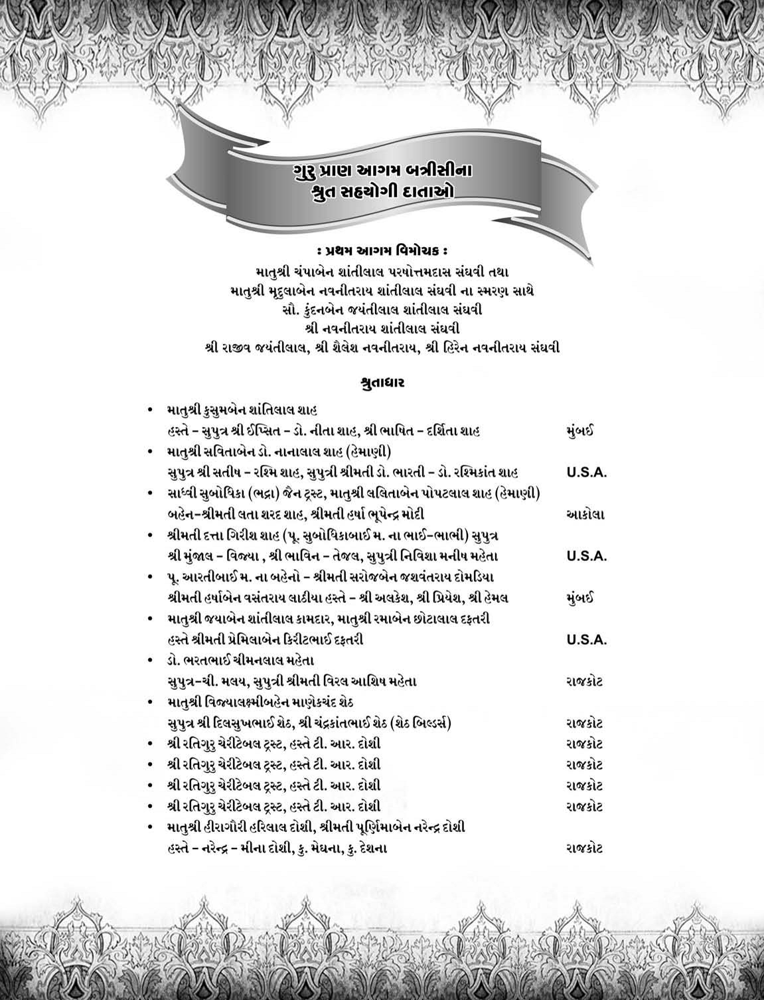
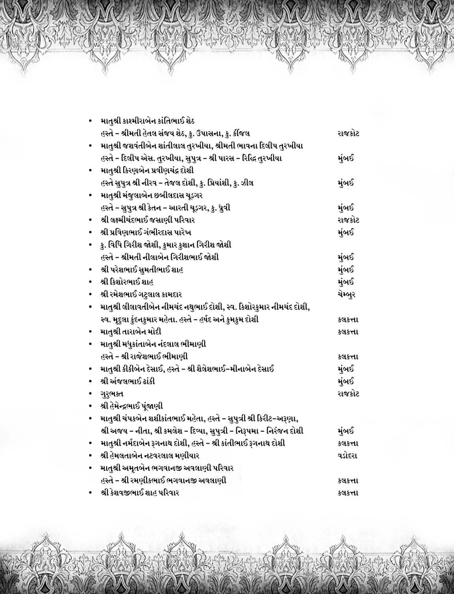
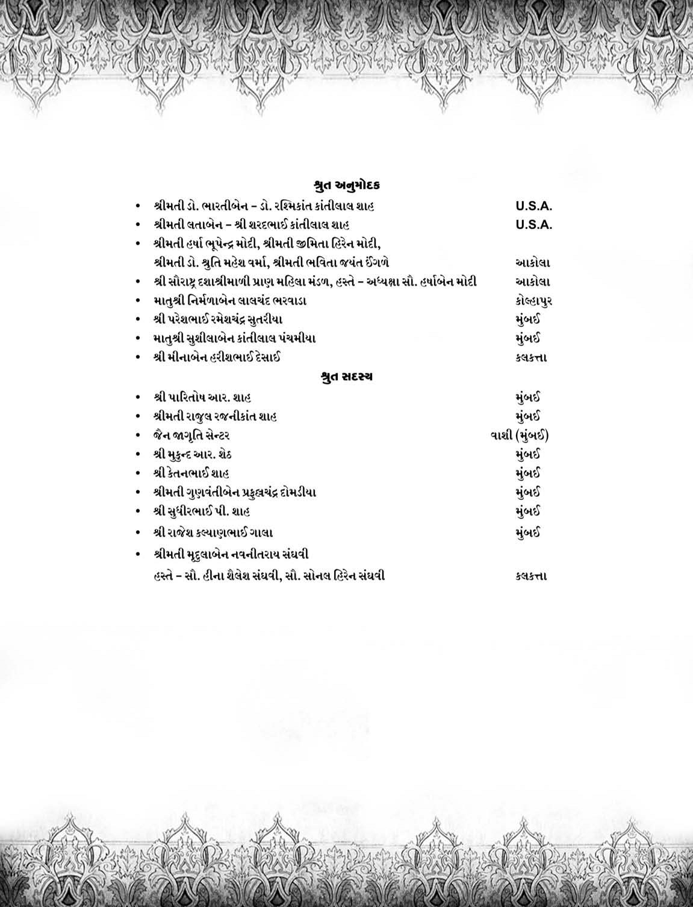

પિતા ગુલાબચંદભાઈ તથા માતુશ્રી જવેરબેનના ધર્મ સંસ્કારે રંગાયેલા ડો. નાનુભાઈ શાહે વેરાવળ બંદરને પોતાની કર્મભૂમિ બનાવી. અનેક દર્દીઓના મસિહા બની , સ્વાસ્થ્ય દાતા બન્યા.
વેરાવળ , ઉના શ્રી સંઘમાં પ્રમુખ પદે રહી શાસન સેવાના કાર્ય કર્યા. સવિતાબેન પણ શ્રાવિકા મહિલા મંડળના , કસ્તુરબા મહિલા મંડળના પ્રમુખા બની સામાજિક , ઘાર્મિક ક્ષેત્રે મહિલા ઉન્નતિના કાર્ય કરતા રહ્યા.
ધર્મપરાયણ , ચોથા આરાના જુગલિયા જેવા આ દંપત્તિ બંને સાથે મળીને ધર્મ આરાધના કરતાં હોય તે દશ્ય અનુપમ બની જતું.
નિવૃત્તિના સમયમાં આત્માના ડોક્ટર બની જૈનાગમ , કર્મ સિદ્ધાંત આદિના વાંચન દ્વારા તેઓએ પોતાના જ્ઞાન ખજાનાને એવો સમૃદ્ધ બનાવ્યો કે સંત-સતીજીઓને વેરાવળ ચાતુર્માસ પધારવા માટે તેઓ આકર્ષણનું કેન્દ્ર બની ગયા હતા.
ભત્રીજી ભદ્રા (પૂ. સુબોધિકાબાઈ મ.) ને દીક્ષાની પ્રેરણા , અનુજ્ઞા આપી શાસનસેવા , કર્મક્ષયના ભાગીદાર બન્યા છે. આપના સંસ્કારોની સુવાસ સાથે લઈ અમેરીકા વસતા સુપુત્ર શ્રી સતીષભાઈ અને પુત્રવધુ સો. રશ્મીબેન સામાજિક , ધાર્મિકક્ષેત્રે યોગદાન આપી રહ્યાં છે. સુપુત્રી ડો. ભારતી શાહ , જમાઈરાજ ડો. શ્રી રશ્મિકાંતભાઈ વિશાળ કુટુંબમાં સ્વ કર્તવ્યોને નિભાવતા , વડિલોની સેવા દ્વારા નિજ હૃદયને પુલકિત તથા જીવનને સભર બનાવી રહ્યા છે.
શાસનના સ્તંભસમા આગમ પ્રકાશનમાં સહયોગ આપી , આપે ભદ્રકર્મ- પુણ્યકર્મને સંચિત કર્યું છે. આપની આ શ્રુતસેવાના ઘણા-ઘણા ધન્યવાદ છે.
ગુરુપ્રાણ પ્રકાશન
તપસમ્રાટ પૂ. ગુરુદેવ શ્રી રતિલાલજી મ. સા.
૩૨ અસ્વાધ્યાય (શાસ્ત્રના મૂળપાઠ સંબંધી)
| ક્રમ | વિષય | અસ્વાધ્યાયકાલ |
| આકાશસંબંધી દસ અસ્વાધ્યાય | ||
| ૧ | આકાશમાંથી મોટો તારો ખરતો દેખાય | એક પ્રહર |
| ૨ | દિગ્દાહ-કોઈ દિશામાં આગ જેવું દેખાય | જ્યાં સુધી રહે ત્યાં સુધી |
| ૩ | અકાલમાં મેઘગર્જના થાય [વર્ષાઋતુ સિવાય] | બે પ્રહર |
| ૪ | અકાલમાં વીજળી ચમકે [વર્ષાઋતુ સિવાય] | એક પ્રહર |
| પ | આકાશમાં ઘોરગર્જના અને કડાકા થાય | આઠ પ્રહર |
| ૬ | શુક્લપક્ષની ૧ , ૨ , ૩ની રાત્રિ | એક પ્રહર |
| ૭ | આકાશમાં વીજળી વગેરેથી યક્ષનું ચિહ્ન દેખાય | જ્યાં સુધી દેખાય ત્યાં સુધી |
| ૮ | કરા પડે | જ્યાં સુધી રહે ત્યાં સુધી |
| ૯ | ધુમ્મસ | જ્યાં સુધી રહે ત્યાં સુધી |
| ૧૦ | આકાશ ધૂળ-રજથી આચ્છાદિત થાય | જ્યાં સુધી રહે ત્યાં સુધી |
| ઔદારિક શરીર સંબંધી દસ અસ્વાધ્યાય | ||
| ૧૧ | તિર્યંચ , મનુષ્યના હાડકાં બળ્યા , ધોવાયા વિના હોય , | ૧૨વર્ષ |
| ૧૨-૧૩ | તિર્યચના લોહી , માંસ ૬૦ હાથ , મનુષ્યના ૧૦૦ હાથ [ફૂટેલા ઈંડા હોય તો ત્રણ પ્રહર] | દેખાય ત્યાં સુધી |
| ૧૪ | મળ-મૂત્રની દુર્ગંધ આવે અથવા દેખાય | જ્યાં સુધી રહે ત્યાં સુધી |
| ૧૫ | સ્મશાન ભૂમિ | [૧૦૦ હાથની નજીક હોય] |
| ૧૬ | ચંદ્રગ્રહણ-ખંડ/પૂર્ણ | ૮/૧૨ પ્રહર |
| ૧૭ | સૂર્યગ્રહણ-ખંડ/પૂર્ણ | ૧૨/૧૬ પ્રહર |
| ૧૮ | રાજાનું અવસાન થાય તે નગરીમાં | નવા રાજા થાય ત્યાં સુધી |
| ૧૯ | યુદ્ધસ્થાનની નિકટ | યુદ્ધ ચાલે ત્યાં સુધી |
| ૨૦ | ઉપાશ્રયમાં પચેન્દ્રિયનું કલેવર | જ્યાં સુધી હોય ત્યાં સુધી |
| ચાર મહોત્સવ-ચાર પ્રતિપદા | ||
| ૨૧-૨૮ | અષાઢ , આસો , કારતક અને ચૈત્રની પૂર્ણિમા અને ત્યાર પછીની એકમ | સંપૂર્ણ દિવસ-રાત્રિ |
| ૨૯-૩૨ | સવાર , સાંજ , મધ્યાહ્ન અને અર્ધરાત્રિ. | એક મુહૂર્ત |
પુન : પ્રકાશનના બે બોલ (બીજી આવૃત્તિ)
તીર્થંકર ભગવાનના અમૃતસમા વચનોને "આગમ" રૂપે ગણધર ભગવંતોએ ઝીલીને શિષ્ય પરંપરાને અર્પ ણ કર્યાઅને આપણને અમૃત વચનો પ્રાપ્ત થયા .
તીર્થંકર ભગવાને અનંતજ્ઞાનને શ્રીમુખેથી પ્રગટકરી મહા ઉપકાર કર્યો.. .
ગણધર ભગવંતોએ આગમજ્ઞાનને હદયસ્થ કરી મહા ઉપકાર કર્યો...
શિષ્ય પરંપરાએ આગમ જ્ઞાનને કંઠસ્થ કરી મહા ઉપકાર કર્યો...
દેવર્દ્ધિગણિ ક્ષમાશ્રમણે આગમજ્ઞાનને ગ્રંથસ્થ કરી મહા ઉપકાર કર્યો...
ગ્રંથસ્થ આગમોને અનેક આચાર્યોએ સમયાનુસાર લોકભોગ્ય ભાષાશેલીમાં અનુવાદ કરીને સર્વજન સહજ બનાવ્યા. આ જ પરંપરામાં સૌરાષ્ટ્રકેસરી પૂ. ગુરુદેવ શ્રી પ્રાણલાલજી મ. સા. ની જન્મશતાબ્દી અવસરે તેમના જ પરિવારના મહાસતીજીઓએ ગુજરાતીમાં અનુવાદ કરીને જૈન સમાજની જ્ઞાન સાધનાને આગમિક બનાવવામાં બહમૂલો ફાળો આપ્યો છે. આ મહા કાર્યમાં અપૂર્વ શ્રુત આરાધિકા પ્રધાન સંપાદિકા ભાવચોગિની શ્રી લીલમબાઈ મ. અને સહ સંપાદિકા શ્રી આરતીબાઈ મ. , શ્રી સુબોધિકાબાઈમ. ના સહયોગ મળ્યો છે.
આ આગમ બત્રીસીની પ્રથમ આવૃત્તિને ગુજરાતના દરેક સંપ્રદાયના સાધુ- સાધ્વી , શ્રાવક-શ્રાવિકાઓનો બહોળો પ્રતિસાદ મળતા ટૂંક સમયમાં ૧૦૦૦ આગમ ગ્રંથો અનુપલબ્ધ થઈ ગયા અને પુનઃ પ્રકાશનની આવશ્યકતા ઉભી થઈ.
અહીં એક ખાસ ઉલ્લેખ કરવાનો કે જ્યારે પ્રથમવાર આગમ પ્રકાશનની તૈયારી ચાલતી હતી ત્યારે જ તપસમ્રાટ પૂડ ગુરુદેવ શ્રી રતિલાલજી મ. સા. એ શાસન પ્રભાવક પૂ. શ્રી નમ્રમુનિ મ. સા. પર કૃપાદષ્ટિ વરસાવી. તેમણે પાટીમાં લખી આપ્યું કે નમ્રમુનિ આગમ પ્રકાશનનું કાર્ય સંભાળશે.
પૂ. ગુરુદેવની દીર્ઘદૃષ્ટિ અને કૃપાદષ્ઠિને અનુભવતા પૂ. ગુરુદેવ શ્રી નમ્રમુનિ મ. સા. એ અમોને આજ્ઞા આપી કે આપણે આગમ ગ્રંથો પ્રકાશનની બીજી આવૃતિ "પારસધામ" ના ઉપક્રમે પ્રગટ કરવી છે.
પૂ. ગુરૂદેવ શ્રી નમ્રમુનિ મ. સા. ની આજ્ઞાને શિરોધાર્ય કરીને પારસધામ - ઘાટકોપરના ઉપક્રમે ગુરપ્રાણ આગમ બત્રીસીને પુનઃ પ્રગટ કરતા આનંદ અનુભવીએ છીએ.
અમારા આ અણમોલ કાર્યમાં અમને શ્રી ગિરીશભાઈ શાહ (હેમાણી)-ઇ. 5./. તથા શ્રી જિતેનભાઈ શાહ (કલકત્તા) નો અનન્ય સહકાર મળ્યો , જેના કારણે અમારું કાર્ય સરળ બન્યું છે. તેવી જ રીતે ઉદારદિલા દાતાશ્રીઓ એ પણ અમને સહયોગ આપીને અમારું કાર્ય વેગવાન બનાવેલ છે.
અમે તે સર્વના આભારી છીએ.
અંતમાં આગમ પ્રકાશન આપણા સહના આત્માને અનંતજ્ઞાન પ્રાગટયમાં સહયોગી બને એ જ ભાવના.
શ્રી ગુરુપ્રાણ પ્રકાશન વલ્લભબાગ લેન , તિલક રોડ , ઘાટકોપર(ઈસ્ટ) , મુંબઈ - ૪૦૦૦૭૭ ફોન - ૩૨૦૪ ૩૨૩૨.
પ્રકાશકના બે બોલ(પહેલી આવૃત્તિ)
અનંત તીર્થંકર સહ પ્રભુ મહાવીરના અનંત જ્ઞાનની અમૂલ્ય નિધિ છે આપણા આગમગ્રંથો. જેના માધ્યમથી જ જિનશાસન જયવતું રહ્યું છે , રહે છે અને રહેશે. તેને જીવંત રાખવા અને જન જનનાં મન સુધી પહોંચાડવા તે પ્રત્યેક જૈન નામ ધરાવતી વ્યક્તિની પવિત્ર ફરજ છે. આ પવિત્ર ફરજને જ ધર્મ સમજીને જે તેનું આચરણ કરે છે અને પોતાનાં તન-મન અને ધનને તે કાર્યમાં સમર્પિત કરે છે , તેનું મનુષ્ય જીવન સફળ થાય છે. એટલું જ નહીં પરંતુ તે સાધક જિનશાસનનની પ્રભાવનાનો અમૂલ્ય લાભ પ્રાપ્ત કરે છે.
આવો જ અપૂર્વ લાભ પ્રાપ્ત કરવા આપણા ગુજરાતી સમાજને માટે આગમોના મૂળ પાઠ તથા સરળ ગુજરાતી અનુવાદ વિવેચન સહિત પ્રકાશન કરવા માટે પૂ. મુક્ત લીલમ પરિવારને એક ચિંતનધારા જૂનાગઢની પુણ્યભૂમિ પર સ્પર્શી અને જેને રાજાણા નગરી રાજકોટમાં રોયલપાર્ક ઉપાશ્રયમાં સાકાર સ્વરુપ મળ્યું.
આપણા સૌના પરમ ઉપકારી ગોંડલ ગચ્છાધિપતિ , નિદ્રા વિજેતા , એકાવતારી , યુગપુરુષ પૂ. શ્રી ડુંગરસિંહજી મ. સા.ની પાટ પરંપરાએ પૂ. શ્રી જય-માણેકના લાડીલા શિષ્યરત્ન સૌરાષ્ટ્ર કેસરી પૂ. શ્રી પ્રાણલાલજી મ. સા.ની જન્મ શતાબ્દી નિમિત્તે આ વિરાટ આયોજન કર્યું. પૂ. મહાસતીજીઓએ પોતાની ચિંતનધારાને પૂજ્ય ગુરવર્યોની સમક્ષ પ્રગટ કરી. સહુના હર્ષોલ્લાસ અને આશીર્વાદ સાથે સ્વીકૃતિના સમાચાર પ્રાપ્ત થયા. રોયલપાર્ક સ્થા. જૈન મોટા સંઘની નિશ્રામાં અમે તુરંત સમિતિ રચવાની જાહેરાત કરી.
રાજકોટ પ્રાણ પરિવારના સામૂહિક ચાતુર્માસ દરમ્યાન જન્મ શતાબ્દી વર્ષ નિમિત્તે વિ. સં. ૨૦૫૩ સન્ ૧૯૯૭ માં "પૂ. પ્રાણગુરુ શતાબ્દી પ્રકાશન સમિતિ રાજકોટ"ની સ્થાપના થઈ. ત્યાર પછી તપસ્રાટ શ્રી રતિલાલજી મ. સા. , ગુજરાત કેસરી પૂ. શ્રી ગિરીશચંદ્રજી મ. સા. ઠા. પાંચ તથા પ્રાણ પરિવારના ૭૩ સાધ્વીજીઓના પાવન સાંનિધ્યમાં જન્મ શતાબ્દીના પ્રથમ ચરણની તપ-જ૫ , સાધના સાથે ભવ્ય રીતે ઉજવણી કરવામાં આવી.
શ્રી ગુરુ પ્રાણ ફાઉન્ડેશન ટ્રસ્ટ દ્વારા ૩૨ આગમો અને પ્રાણગુરુ સ્મૃતિ ગ્રંથનું પ્રકાશન કરવાનું નિશ્ચિત થયું. આગમોનું લેખન કાર્ય પ્રાણ પરિવારના સતીવુંદે સહર્ષ સ્વીકારી લીધું. આ રીતે સર્વ સમવાયનો સુયોગ થતાં કાર્યનો પ્રારંભ વેગવંત થયો અને બત્રીસ આગમો ક્રમશઃ સ ભાષામાં અનુવાદિત થયા.
આ પ્રકાશના અણમોલ અવસરે આશીર્વાદ વરસાવી સહર્ષ સ્વીકૃતિ આપનાર તપ સમ્રાટ ગુરુદેવ પૂ. શ્રી રતિલાલજી મ. સા. તથા દરેક આગમન રહસ્યોને પ્રગટ કરતો , તત્ત્વોનું વાસ્તવિક દર્શન કરાવતો , આશીષ વરસાવતો અમારા ઉત્સાહને વધારતો અભિગમ પ્રેષિત કરનારા ગોંડલ ગચ્છના સંત શિરોમણિ પરમ દાર્શનિક પૂ. શ્રી જયંતીલાલજી મ. સા. , અમ માર્ગદર્શક ગુજરાત કેસરી પૂ. શ્રી ગિરીશચંદ્રજી મ. સા. , તથા આગમ દિવાકર પૂ. શ્રી જનક મુનિજી મ. સા. નીડર વક્તા પૂ. શ્રી જગદીશમુનિજી મ. સા. આદિ મુનિ ભગવંતો તથા આગમને સુવ્યવસ્થિત સ્વરૂપ આપનાર , અથાગ પરિશ્રમ સહિત નિઃસ્વાર્થ ભાવે સંપૂર્ણ સહયોગ આપનાર આગમ મનીષી પૂ. શ્રી ત્રિલોકમુનિજી મ. સા. ના પણ અમો તણી છીએ.
વાત્સલ્ય વરિષ્ઠા પૂજયવરા પૂ. મુકતાબાઈ મ. , પ્રધાન સંપાદિકા અપૂર્વશ્રુત આરાધક પૂ. લીલમબાઈ મ. , અમ પ્રકાશન કાર્યના ઉદ્ભાવિકા , ઉત્સાહધરા પૂ. ઉષાબાઈ મ. , સહ સંપદિકા ડો. પૂ. શ્રી આરતીબાઈ મ. તથા પૂ. સુબોધિકાબાઈ મ. અને પ્રાણ પરિવારના અનુવાદિકા સર્વ મહાસતીજીઓના અમે ત્રદણી છીએ.
શ્રુતાધાર સહયોગીઓ , અમ આગમ પ્રકાશનમાં નિષ્ઠાથી સેવા આપનાર શ્રી મુકુંદભાઈ પારેખ , શ્રી મણિભાઈ શાહ , શ્રી નવનીતભાઈ - તરૂબેન , કુમારી ભાનુબેન , શ્રી જયવંતભાઈ શાહ તથા આગમને કોમ્પ્યુટરાઈઝડ્ કરી મુદ્રણ કરી આપનાર ભાઈ શ્રી નેહલ હસમુખભાઈ મહેતાના અમો આભારી છીએ.
આગમ પ્રકાશન કાર્યમાં શુદ્ધિકરણનું ખૂબ જ ધ્યાન રાખવામાં આવ્યું છે. છતાં ક્યાં ય અશુદ્ધિ રહી ગઈ હોય તો શુદ્ધ વાંચી તે તરફ અમારું ધ્યાન દોરવા નમ્ર વિનંતી છે.
અંતમાં સૌના સહિયારા પુસ્પષાર્થ બદલ શ્રી ગુરુપ્રાણ ફાઉન્ડેશન સદાને માટે સૌના કૃતજ્ઞ બની રહેશે.
જયજિનેન્દ્ર શ્રી ગુરુપ્રાણ ફાઉન્ડેશન - ટ્રસ્ટી મંડળ
શ્રી ચંદ્રકાંત માણેકચંદ શેઠ (પ્રમુખ)
શ્રી રમણીકલાલ નાગરદાસ શાહ (ચેરમેન)
શ્રી અશ્વિનભાઈ કુંભાણી (ટ્રેઝરર)
શ્રી ટી. આર. દોશી (ઉપપ્રમુખ)
શ્રી કે. પી. શાહ (ટ્રસ્ટી)
શ્રી કીરીટભાઈ શાહ (ટ્રસ્ટી)
અભિગમ
ગોંડલ ગચ્છ શિરોમણી પરમ દાર્શનિક પૂ. શ્રી જયંતમુનિ મ.સા.
સ્થાનાંગ સૂત્રના કેન્દ્રબિંદુઓઃ-ઠાણાંગ સૂત્રમાં ‘“ઠાણાંગ” શબ્દ ઘણો જ ભાવવાહી છે. “ઠાણાંગ”માં “સ્થાન” શબ્દ ફક્ત સ્થાનવાચી નથી પરંતુ વિશ્વચક્રના તમામ ક્રિયા કલાપો, ચાહે જડના હો કે ચેતનના હો, ક્ષણિક હો કે લાંબી – ટૂંકી સ્થિતિના હો કે શાશ્વત ભાવોના હો, એ બધા ક્રિયા કલાપોને જે કાંઈ કેન્દ્રબિંદુ છે તે કેન્દ્રબિંદુને આ શાસ્ત્રમાં “સ્થાન” શબ્દથી સંબાધિત કરેલ છે. આ બધાં કેન્દ્રબિંદુઓ ગુણાત્મક પણ છે અને ભાવાત્મક પણ છે અને એ જ રીતે ક્રિયાત્મક પણ છે. એક કેન્દ્રબિંદુમાંથી પ્રગટ થતાં ઘણા ભાવોનું પ્રદર્શન આ શાસ્ત્રમાં કર્યું છે. આ શાસ્ત્રમાં જ્યાં એક કેન્દ્રબિંદુથી એકાત્મભાવનું દર્શન કરાવ્યું છે ત્યાં સંગઠિત કેન્દ્રબિંદુઓથી સંગઠિત ભાવોનું દર્શન જોવા મળે છે. આ બધાં ભાવોની વ્યાખ્યામાં વિશેષતા એ છે કે તેઓને સંખ્યાત્મક બનાવી ક્રમબદ્ધ પ્રદર્શિત કર્યા છે. ક્યારેક ક્યારેક દેશની સંખ્યાવાળા કેન્દ્રબિંદુઓમાં ફરીથી પાંચની સંખ્યાવાળા કેન્દ્રબિંદુઓનો ઉલ્લેખ કરી દશ કેન્દ્રબિંદુની ગણતરી સ્વયં શાસ્ત્રકારે કરી છે.
ઠાણાંગ સૂત્રની રચના કરતાં, રચનાકારે ઇચ્છિત સંખ્યામાં જે જે કેન્દ્રબિંદુઓ જોવા મળ્યા તે સમગ્ર બિંદુઓને તેમણે એકથી દસ સુધીની સંખ્યામાં આવરી લીધા છે. ફલતઃ સમ્રગ શાસ્ત્ર વૈવિધ્યથી ભરેલું છે. ગમે ત્યારે ગમે તે ભાવોને ગણતરીમાં મૂકી ક્ષણે ક્ષણે ખરું પૂછો તો પદે પદે વિષયાંતર કરવામાં આવ્યું છે. સહજભાવે વિષય સામ્ય આવી ગયું હોય તો શાસ્ત્રકારને તે સામ્યભાવ પ્રદર્શિત કરવામાં જરા પણ સંકોચ નથી. તે જ રીતે અસામ્યભાવોને અથવા વિષવાતરને સ્પર્શ કરવામાં પણ શાસ્ત્રકારે જરાય સંકોચ અનુભવ્યો નથી. કારણ કે એક વિષય ઉપર શાસ્ત્રકારે સળંગ નિબંધની પ્રરૂપણા આ શાસ્ત્રમાં કરી નથી પરંતુ દૃષ્ટાને, અધ્યેતાને, વિશ્વવ્યાપી કેન્દ્રબિંદુઓનું નિર્દેશન થાય એ જ શાસ્ત્રકારનો અભિધેય છે.
ખરું પૂછો તો આ એક વિશિષ્ટ શૈલી ગણાય, જૈન આગમ રચનાની અનેક વિવિઓ છે. જૈનદર્શન કે જૈન આગમ પોતાની રીતે પ્રરૂપણાનો વિશિષ્ટ માર્ગ અપનાવે છે. ભગવતી આદિ કેટલાંક શાસ્ત્રો પ્રશ્નોત્તર રૂપે છે. કેટલાંક શાસ્ત્રો ઉપદેશાત્મક છે, કેટલાંક વિધિ નિષેધાત્મક છે, કેટલાંક કથા-ઘટના રૂપે સંગ્રહિત છે, તો સ્થાનાંગ, સમવાયાંગ સંખ્યાની ગોઠવણી કરે છે. ઘણા શાસ્ત્ર ગદ્યમય છે, તો ચાર પાંચ શાસ્ત્ર પદ્યની પ્રમુખતાએ છે. આ જ કારણે પ્રસ્તુત શાસ્ત્રમાં લક્ષિત વિષયનું–કેન્દ્રબિંદુનું એકથી દસ સંખ્યામાં ક્રમ બદ્ધ વિભાજન કરી, બધાં બિંદુઓને સ્વતંત્ર રીતે વર્ણવ્યા છે. આ બિંદુઓ (વિષયો) માં દ્રવ્યને સ્પર્શતાં, ક્ષેત્રને સ્પર્શતા એ જ રીતે કાળ અથવા સમયને લક્ષી તેને સ્પર્શતા બિંદુઓ પ્રરૂપિત કર્યા છે. જ્યારે ભાવ બિંદુઓનું બધાં બિદુંઓમાં ઘણું પ્રાધાન્ય છે. જૈન દર્શન સમગ્ર રીતે દ્રવ્ય, ક્ષેત્ર, કાળ અને ભાવ સાથે જકડાયેલું છે અને વિશ્વચક્રના કારણરૂપ કે કાર્યરૂપ બધાં બિંદુઓ પણ દ્રવ્ય, ક્ષેત્ર, કાળ, ભાવના ભાષક છે. આ બધાં બિંદુઓમાં પદાર્થને સ્વભાવ, રૂપ, રંગ, પરમાણુની સંખ્યા, પિંડીભૂત પરમાણુનું કાર્ય, જીવ અજીવનું સંયુક્ત કાર્ય, પદાર્થની પરિવર્તનશીલતા, દ્રવ્ય, ગુણ પર્યાયને લગતા બધાં કેન્દ્રબિંદુઓ સહજ રીતે ગ્રંથિત કરેલા છે. આ ગુંથનમાં કોઇ પણ પ્રકારના ક્રમનું કે આગળ પાછળનાં સંબંધનું અવલંબન લેવામાં આવ્યું નથી.
જ્યારે આપણે “ઠાણાંગ સૂત્ર''નું અધ્યયન કરીએ, ત્યારે એક પછી એક ઠાણાઓ આકાશમાં ઉડતાં ભિન્ન – ભિન્ન પ્રકારનાં પક્ષીની જેમ આપણને દ્રષ્ટિ ગોચર થતાં જાય છે અને એક વિશેષ પ્રકારનું ક્ષેય સંબંધી કુતૂહલ ઉત્પન્ન થતું જાય છે, જેમ કે નવમે ઠાણે આ નવ વસ્તુનું પ્રરૂપણ થયું તો હવે બીજી શું વસ્તુ આવશે? આપણું મન જાણે જિજ્ઞાસાવશ પ્રફુલ્લિત થઈ જાય છે.
અનુમાન એમ થાય છે કે પ્રભુ વીતરાગની વાણીને ઘણાં આચાર્યોએ, ઉપાધ્યાયોએ સાંભળી હોય અને તે જ્ઞાન, પરંપરામાં ઘણા આચાર્યો અને સંતોના સમૂહમાં ઊતરી આવ્યું હોય. આ બધું જ્ઞાન એકત્રિત કરવા માટે તે આચાર્ય ભગવંતોની ખાસ સ્વાધ્યાય સભા ભરાઈ હોય, ગોઠવાઈ હોય અને તેમાં જે જે સંતો અને આચાર્યોને જે જે સંખ્યામાં ભિન્ન ભિન્ન વિષયને લગતાં કાણાઓ અર્થાત્ કેન્દ્રબિંદુઓ મનમાં ઉપસ્થિત હોય પછી તે બધાં જ્ઞાન પ્રકારોને જેમ જેમ આચાર્ય ભગવંતો બોલતા ગયા તેમ તેમ તે સ્થાનો સંકલિત કરી
લેવામાં આવ્યા અને આ મહાન શાસ્ત્ર વીતરાગવાણીની ઝલક જેવું ઠાણાંગ સૂત્રરૂપે પ્રસિદ્ધમાં આવ્યું હોય; આ અમારી કલ્પના એક રૂપકની દૃષ્ટિએ છે. ખરેખર તો પરંપરામાં જે અંગસૂત્રો આદિકાળથી ચાલ્યા આવે છે તેમાં “ઠાણાંગ સૂત્ર'ની રચનામાં આ જ પદ્ધતિ અપનાવવામાં આવી હોય.
ઐતિહાસિક દૃષ્ટિએ જોતાં મૂળ શાસ્ત્રોના નામ યથાવત્ ચાલ્યા આવતાં હોય અને તેમાં દ્રવ્ય, ક્ષેત્ર, કાળ, ભાવના ભાવને સંકલિત – સંપાદિત કરી લેવાતાં હોય, કારણ કે આ સૂત્રના બધાં ઠાણાઓમાં જુદા જુદા દેશકાળની પરિસ્થિતિનું અને ઘટનાઓનું સ્પષ્ટ પ્રતિબિંબ જોઈ શકાય છે, જેમ કે – ભગવાન મહાવીરના નવ ગણોનું નવમે ઠાણે વર્ણન છે. જ્યારે સનાતન શાસ્ત્રમાં આવું સંભવિત નથી. અસ્તું. અહીં એટલું જ કહેવાનું છે કે ઠાણાંગસૂત્રની એક રસમય લક્ષણ પધ્ધતિ છે.
હવે આપણે કેટલાંક ઠાણાઓનું એ રીતે ઉદાહરણ મૂકીશું કે જેમાં ફક્ત તર્કની વિશેષતા ન હોય પરંતુ વ્યવહારિક દ્રષ્ટિને અપનાવી સામાન્ય નીતિગત ઉપદેશ અપાયો હોય અને જે અનિષ્ટ તત્ત્વ છે તેના કેન્દ્રબિંદુઓ પર પ્રકાશ પાડયો હોય. દા.ત. નવમે ઠાણે રોગ ઉત્પત્તિનાં નવ કારણો પ્રદર્શિત કર્યા છે અને ખરેખર આ કારણો સમાજશાસ્ત્રોનું નિર્દેશન કરતું બહુ જ જરૂરી અભિધેય છે. ક્રમશઃ નવ કારણો આ પ્રમાણે છેઃ नवहिं ठाणेहिं रोगुप्पत्ति सिया, तं जहा, આટલું કહીને ( ૧ ) અતિભોજન ( ૨ ) અહિતકારી ભોજન ( ૩ ) અતિનિદ્રા (૪) અતિજાગરણ (૫) મહાશંકાનો નિરોધ (૬) લઘુશંકાને નિરોધ (૭) વિષમ માર્ગમાં જવું (૮) ભોજનની પ્રતિકૂળતા (૯) પદાર્થના ગુણધર્મ બદલાઈ ગયા હોય અથવા પ્રકૃપિત થયા હોવ, અતિ પ્રસરણ પામેલા હોય તેવા પદાર્થોનો ઉપયોગ કરવો. આ નવે કારણે સમજવા જરૂરી છે અને આચરણમાં લાવવા પણ જરૂરી છે. શરીરના રોગો જીવનના અને સમાજના મોટા દુશ્મનો છે. અહીં આ નવ ઠાણાથી અથવા તેના બોધથી ઈશારો મળે છે કે ગમે તેવા અશુભ કર્મો હોય છતાં પણ જીવે સાચો પુરુષાર્થ છોડવાનો નથી. જે રોગનું મુખ્ય કારણ અશુભ કર્મ છે. તો પછી આ નવ સૂચનાઓની શી જરૂર છે? હા, જૈન શાસ્ત્ર અશુભકર્મો સામે ઝઝૂમવાના માર્ગનું પણ પ્રરૂપણ કરે છે અને સાધના ક્ષેત્રમાં પણ સામાન્ય નીતિ નિયમોના પાલનની જરૂર છે. જો નીતિ નિયમને છોડી ઉપર લખ્યા તેવા કેન્દ્રબિંદુઓનું (રોગૌત્પત્તિના સ્થાનોનું) અનુસરણ કરે તો અશુભ કર્મોની ઉદીરણા થાય છે. એટલે આ શાસ્ત્રમાં રોગોત્પત્તિના, જીવનને લગતા સામાન્ય કેન્દ્રબિંદુઓનો ઉલ્લેખ કરી, મનુષ્ય મનને જાગૃત કરવામાં આવ્યું છે. “ઠાણાંગ સૂત્ર'માં આ રીતની નીતિગત અનેકાનેક સૂચનાઓ છે. જેનું વિદ્વાન મહાસતીજીઓએ આ શાસ્ત્રમાં વિવેચન આપી, શાસ્ત્રનું હૃદય ઉદ્ઘાટિત કર્યું છે. જેથી અહીં એક જ ઉદાહરણ મૂક્યું છે.
ઠાણાંગશાસ્ત્ર કેવળ નીતિગત સિદ્ધાંતોની જ વ્યાખ્યા કરતું હોય તેમ નથી પરંતુ તેમાં ઐતિહાસિકભાવો, ભૌગોલિક પરિસ્થિતિ, રાજનૈતિક ખટપટ, કલાશાસ્ત્ર, શિલ્પશાસ્ત્ર, સાહિત્યિક ભાવો, જ્યોતિષના પશ્નો, ગ્રહગણિત, નક્ષત્રોના પ્રભાવ, આમ જુઓ તો સંકડી સૂત્રોનું વિવેચન કર્યા વિના, બિંદુઓ તરીકે લપેટી લેવામાં આવ્યા છે અને ગતિમાન વિશ્વચક્રને સમજવા માટેના માર્ગો ખુલ્લા કર્યા છે. વિવિધ વિષયોથી ભરપૂર આખું શાસ્ત્ર અંતે તો ધાર્મિક અને આધ્યાત્મિક શાસ્ત્ર છે. જેથી ઠેકઠેકાણે “ઠાણાઓમાં” વિષય કષાયના વિચ્છેદની વાતો કરી, સંયમ નિયમની સ્થાપના કરી, તપશ્ચર્યાની પ્રભુતાને પ્રગટ કરી છે. જૈન સિદ્ધાંતનું જે લક્ષ્ય મોક્ષ છે તે મોક્ષ રૂપી મહાસમુદ્ર ઘણી બધી નદીઓના જળ વહેતાં હોય તેવું ઠાણાંગ સૂત્રમાં જોઈ શકાય છે. સંસાર ચિત્રનું પ્રાગટ્ય કરી, ગાંઠે ગાંઠ ખોલી નાખવામાં આવી છે અને જરાપણ ઉતાવળ કર્યા વિના ઘણા જ જન્માંતરોમાં પણ સાધના સિદ્ધ થાય અને છેવટે જીવ મોક્ષગામી બને તે અભિધેય ઠાણાંગ સૂત્રમાં પરોક્ષ રીતે જોઈ શકાય છે.
હાલ વર્તમાનમાં ગોંડલ સંપ્રદાયના, પ્રાણપરિવારના પ્રબુદ્ધ મહાસતીજીઓએ આગમ પ્રકાશનનો ભગિરથ ગિરિવહનનો ભાર ઉપાડયો છે તે ઊંડી દાદ માંગી લે છે. એટલું જ નહીં પરંતુ આ વિષમકાળમાં સાધ્વીજીઓ આગમના તલસ્પર્શી ભાવોને પ્રગટ કરવા માટે એકત્ર થઈ, જ્ઞાન યજ્ઞનો આરંભ કરશે, તે વાત કલ્પનામાં પણ ન હતી. છતાં કલ્પનાથી પણ અધિક સુંદર વાસ્તવિક વૃક્ષ ફલ્યું, ફળ્યું છે, તે અતિ હર્ષનો વિષય છે. બીજા કોઇ તો પોતાની સ્થિતિ જાણતા હશે પરંતુ અમે અમારી સ્થિતિ કહીએ છીએ કે ઉભૂત થયેલો આ હર્ષ પ્રવાહ અમારા હૃદયમાં સમાય તેમ નથી, કારણ કે મૂળમાં અમે આગમપ્રેમી છીએ અને અમારા આગમ પ્રેમને અનુરૂપ આ આગમ પ્રકાશનનું ભગીરથ કાર્ય અહોભાવ પ્રગટ કરે છે અને લાખ લાખ અભિનંદનના પાત્ર બનવા માટે આપની યોગ્યતાને પ્રદર્શિત કરે છે.
આર્યા વૃંદ! આજના આધુનિક યુગમાં જ્યાં સાધુ સાધ્વીઓ સાધારણ સાહિત્યનો સ્પર્શ કરે છે અને શ્રોતાઓના મનોરંજન ઉપર ધ્યાન આપે છે ત્યાં તમે ગુણવંતા, આગમનિષ્ઠાવાન, સાધ્વીજીઓએ અતિગંભીર, વીતરાગ વચનોથી ભરપૂર આગમ સાહિત્યનો સ્પર્શ કરી; પ્રાચીન કાળની સાધનાઓ, વ્યવહારિક જીવન અને ધર્મ– અર્ધમના પ્રસ્ફુટિત થયેલા પ્રવાહોનો જેમાં સમાવેશ કરવામાં આવ્યો છે, તેવા પ્રાચીન આગમ સાહિત્યનો સ્પર્શ કરી, સરળ ગુજરાતી ભાષાતર કરી, જૈન જગતને, ખાસ કરીને ગુજરાતી પ્રજાને, ચિંતન કરવા માટે નવો જ વળાંક આપ્યો છે. તમારા જેવા વિચક્ષણ સાધ્વીજીઓ અને આગમ શાસ્ત્રનું નૈતૃત્વ કરનારા ત્રિલોકમુનિ જેવા જ્ઞાન ગંભીર આગમરત્ન મુનિ તથા ગોંડલ સંપ્રદાયના પ્રેરણા સ્તોત્ર શ્રી ગિરીશચંદ્રજી મુનિની આગવી દ્દષ્ટિનું આ પરિણામ છે.
સકલ સાહિત્યને પ્રકાશિત કરવા માટે શ્રી ગુરુપ્રાણ ફાઉન્ડેશન ટ્રસ્ટના સંચાલનકર્તા શાસનપ્રેમી ટ્રસ્ટીઓ અને પ્રમુખ સભ્ય શ્રીયુત ભામાશા રમણીકભાઈ શાહ તથા દઢસંકલ્પી શ્રી ચંદ્રકાંતભાઈ શેઠ કે જેઓને ધનરાશિને ખર્ચ કરવાની સાચી દિશાનું જ્ઞાન છે, માટે તેઓ સૌ પણ શ્રેયના ભાગીદાર છે.
આગમરત્નોની પ્રકાશિત થતી શ્રેણીના એક એક પુષ્પરત્ન ક્રમશઃ સમય પર અમારા હાથમાં આવે છે, ને તે જોઈને છાતી ગજ ગજ ફૂલે તેવું છે. એક સરખા, સામ્ય આકૃત્તિવાળા ગ્રંથોની શ્રેણિ ગોંડલ ગચ્છની કીર્તિની મણીમાળા હોય એમ શોભી રહ્યા છે.
આપ સૌએ અમારા જેવા દૂર બેઠેલા, એકાંતવિહારી ચિંતક સાધુને સચેષ્ટ કરી આ આગમ પ્રકાશમાં “આમુખ” રૂપે વિવર્ણનાત્ક લેખો મંગાવી, પ્રકાશિત કરી અમને જે તક આપી છે અને આગમ પ્રકાશનના અણમોલ સાહિત્યમાં અમારા ભાવાનો ઉમેરો કરી, જે સ્થાન આપ્યું છે તે ખરેખર આપ સૌની ગુણદ્દષ્ટિનું અમૃતફળ અમને મળ્યું છે.
આ જ રીતે આગમશ્રેણીનું પ્રકાશન વિસ્તાર પામતું રહે અને સૌના ઉત્તમ ક્ષયોપશમનું પ્રતિબિંબ આગમ સરોવરમાં ઝલકતું રહે તથા આ પ્રકાશન સંપૂર્ણ વિશ્વ વ્યાપી બની રહે તેવી અંતરની ઊર્મિ સાથે આનંદ મંગલમ્..
- જયંત મુનિ
પેટરબાર.
સંપાદકીયઅપૂર્વ શ્રુતઆરાધક ભાવયોગિની બા. બ્ર. પૂ. લીલમબાઈ મ. સ. પ્રિય આત્મન્ !
અનાદિકાળથી વિશ્વમાં વિખ્યાત, વાસનાથી વાસિત જીવાત્મા, અજીવની દુનિયામાં ચારે કોર સ્વાભાવિક પરમાણુઓથી ગોઠવાયેલા જે જે સ્થાનો છે, તે તે સ્થાનમાં પૌદ્ગલિક પ્રપંચની પગથાર પર, પુદ્ગલમાંથી સુખ મેળવવા માટે સ્થાને સ્થાને ઠાણા નાંખી, જ્યાં ત્યાં ભટકાઈ, પટકાઈ, પછડાટ પામીને પણ પરિસ્થિતિનું નિમિત્ત પામી, ઠરી ઠામ થવાની હામ સેવતો, દોડધામ કરી રહ્યો છે.
જગતવાસી કોઈપણ જીવ આ દોડધામમાંથી બાકાત રહી જવા પામ્યો નથી. દરેક નાનો મોટો જીવ એક જ ઇચ્છા કરે છે કે જો ઘરનું ઘર મળી જાય તો હંમેશનું સુખ થઈ જાય, આ રીતે આખા લોકમાં તે ખૂણે – ખાંચરે શોધી વળ્યો, ભમી વળ્યો, તબૂં તાણ્યા, ડેરા નાંખ્યા, ઠરીને ઠામ થવાના મનોરથ કરતા જીવરામ પરાયા સ્થાનને પોતાનું માની રહેવામાં સ્થિર થયા કે ન થયા ત્યાં મોહરાજની ફોજના આયુષ્યકુમારે આવીને, તંબૂને ઉપડાવ્યા, સ્થાનમાંથી તિરસ્કાર મળ્યો, જાકારો મળ્યો, કર્મના બિસ્તરા પોટલાં લઈને, જીવરામ ભર્યું ભાદર્યું, વસાવેલું સ્થાન છોડી, રોતા કકળતાં રવાના થયા. કોઈ સ્થાન એવું सिव, मयल ન મળ્યું કે જે ભાઈને આવકારે.
ચારે બાજુ ભટકતાં ક્યારેક તો ૪૮ મિનિટમાં પાંસઠ હજાર પાંચસો છત્રીસ ઘર બદલ્યા. શું કરે બિચારા આત્મરાજ ? પરાયા સ્થાનમાં જઈએ તો તેવું જ થાય ને ! માટે આ જીવ ક્યારેક તેત્રીસ સાગર સુધી દુઃખી અવસ્થામાં ગોંધાઈ રહ્યો, તો ક્યારેક ૩૩ સાગરોપમની સુખી અવસ્થામાં રહ્યો અને માની લીધુ કે હવે કોઈ રવાનગી કરશે નહીં પરંતુ આયુષ્યકુમાર હાજર થાય, પોતાનું ઘર માની બેઠેલાઓને કહે કે ભાડૂતી જગા ખાલી કરો. કોઇ એવું સ્થાન પ્રાપ્ત ન થયું કે ચેલેન્જ આપી સ્વીકાર કરે, દરેક જગ્યાએ નાસીપાસ થઈને ઠોકરો ખાતો, મેલોઘેલો, લઘરવઘર, ગોબરો, ગંધારો, શકોરું હાથમાં ઝાલીને, સુખની ભીખ માંગતો, ભિખારી બની, સ્થાને સ્થાને ભાઈ બિચારો ભટકી રહ્યો છે.
આવા ભિખારીને કોઈ જગ્યા સંઘરવાય તૈયાર નથી, સૌ કોઈ કાઢી મૂકે છે. આ છે દુર્દશા અનાદિકાળની આ જીવની.
અનંત સુખનો સાગર ચેતનામાં લહેરાતો હોવા છતાં પોતાની તરફ નજર જતી નથી. પોતે જ સુખનું ધામ છે, તેવું ભાન થતું નથી. આવા આત્માને જાગૃત કરવાં, તેનું ભાન કરાવવા અરિહંત પરમાત્મા, કરુણાનિધાન, સ્વપર પ્રકાશક અને દર્શક પ્રભુએ અનંત જ્ઞાનદર્શનરૂપ દર્પણમાં આપણી દુર્દશા જોઈ, આપણા ઉપર ઉપકાર કર્યો; તીર્થંકર નામકર્મનો ક્ષય કરવા, પ્રબળ પુણ્યના પુંજે દેશના દીધી, વાણીની વર્ષા કરી, તેને ગણધર આચાર્ય ભગવંતોએ ઝીલી, તેમાંથી પરંપરાએ ઝરણું પ્રવાહિત થતું – થતું જિનવાણી રૂપી ગંગાનું પાણી પામર એવા આપણા પ્રાંગણમાં આવી પહોંચ્યું.
આપણી સુધી પહોંચાડનાર પંચ પરમેષ્ઠી પરમાત્માના પરમ પ્રસાદે, ગુરુવર્યો અને ગુરુણી દેવાના કૃપાબળે, સાધકવૃંદના સહયોગના સામર્થ્ય બળે, કેવળી પ્રરૂપિત ધર્મના ધૈર્ય બળે અને અનેક અનુમોદક આત્માઓના અનુગ્રહે, આત્મદૃષ્ટા વીતરાગ વાણીનું, ગણધર ભગવંતો દ્વારા ગ્રંથિત થયેલું, દ્વાદશાંગી ગણિપિટક પૈકી ત્રીજુ અંગ ઠાણાંગ સૂત્રનું સાઈનબૉર્ડ સમું, ઠોકરો ખાતા જીવોને ઠેકાણે લાવનારું, ઠાણા ઉઠાણા સંકામિયા કરનાર આત્મા માટે વાસ્તવિક સ્થાનમાં લઈ જનારું, સ્વરૂપમાં સ્થિત કરાવનારું, અનેક સંકેતો કરી સાચું સ્થાન દર્શાવતું, ગુજરાતી અનુવાદ કરી ઉપયોગી થાય તેવા નિર્મળ હેતુથી, આજે વીર્યોલ્લાસપૂર્વક, સાડા ત્રણ કરોડ રોમરાય સહિત પુલકિત હૈયે, જિનવાણીનું અનુમોલું અંગસૂત્ર, ગુરુપ્રાણ આગમ બત્રીસીનું તેરમું આગમ રત્ન શ્રી ઠાણાંગસૂત્ર પ્રથમ ભાગ રૂપે અમે સમગ્ર જનતા સામે સમર્પિત કરી રહ્યા છીએ, શાસનને ચરણે ધરી રહ્યા છીએ. ઠાણાંગ સૂત્રરૂપ આગમ આભૂષણનું આ નજરાણું લો (લ્યો) સ્વીકારો!
પ્રિય પાઠકગણ !
આ આપણી અણમોલ મૂડી છે, નયનનું નૂર છે. આ આગમ આભૂષણ જેને ધારણ કરતાં આવડી ગયું, તેની રીતની કળ જે જાણી ગયા, તેઓ આ આગમ આભૂષણ પહેરીને (ધારણ કરીને) પામી ગયા; અર્હત્ બની ગયા. કોઈ નિર્લેપી બની ગયા અને ઉદાસીન બની, બોધિબીજ પામી, એકાવતારી બની ગયા. જેટલાં જીવો આ જગતમાંથી નીકળી ગયા તે બધાં જ મહાપુરુષો, મુનિ પુંગવો આ જ આગમથી તરી ગયા છે, તરી રહ્યા છે અને તરી જશે. આત્માના પ્રધાન જ્ઞાન ગુણ રૂપી નેત્ર ખોલનાર આ આગમ જ છે. જેના નેત્રો ખુલ્યા, તેઓ ક્યારેય ભૂલા ન પડે. તેઓ રસ્તો જોઈને ચાલે. પુદ્ગલ પરમાણુઓનો સહારો લે તેને તેઓ “પોતાના છે' તેમ તો ન જ માને પરંતુ તેમને મિત્રવત્ માને. પુણ્યના પુંજના થોક આવે અને ઉચ્ચકક્ષાનું સ્થાન મળે તો પણ એ પોતાનું ન માને, કારણ કે તેમના જ્ઞાન નેત્ર ખુલી ગયા છે.
શ્રી ઠાણાંગ સૂત્રના આભૂષણનો અર્થ છે મસ્તકથી લઈને પગ સુધીના દરેક અવયવોને ભૂષિત કરે, શ્રૃંગારિત કરે સૌંદર્યમાં વૃદ્ધિ કરાવે. આપણે સૌએ માત્ર દેહ પર ઘણા આભૂષણો ધારણ કર્યા છે પરંતુ દેહને ધારણ કરનાર દેહી પર ક્યારેય નજર નાખી નથી. તે દેહીને આભૂષણથી કેમ વિભૂષિત કરાય તેની કળા શીખડાવનાર છે આ ઠાણાંગ સૂત્ર. આચારાંગ સૂત્રે દેહને દેહીનું ભાન કરાવવા, આચરણ શીખડાવ્યું. સૂત્રકૃતાંગ સૂત્રે તે બંનેને જુદા કરી સ્વ અને પરનું દર્શન કરાવ્યું. હવે આ ત્રીજું અંગ આત્મકાયના શ્રૃંગાર સજાવવા, તેની રીતે દર્શાવવા આવી પહોંચ્યું છે. આ સૂત્ર એકથી લઈને દસ સ્થાન સુધીની વાતો દર્શાવશે. જેમાં કેટલીક વાતો જીવો માટે ક્ષણભંગુર હશે. બાકી તો દુનિયામાં જેટલાં સ્થાનો છે તે બધાં સ્વાભાવિક અને વાસ્તવિક છે. તેને પોતાના માની લેવાના જે ભાવો કરવામાં આવે છે તે ક્ષણભંગુર હોવાથી સ્થાયી બનતા નથી. કયું સ્થાનક સ્થાયી બની શકે તેની જાણ, પરિજ્ઞાન કરાવવા માટે આ સૂત્રનું નામ છે સ્થાનાંગ.
તે સ્થાનાંગ એવું નામ જ અંગુલી નિર્દેશ કરીને કહે છે – ઊભા રહો, સ્થિર થાઓ, સાંભળો મારી વાત, તમે જેને શણગારો છે તે પારકી દુનિયાનો માલ લાવી, પારકી દુનિયામાં જ સ્થાપિત કરો છો. સ્થાપિત કરનાર તમે કોણ છો, તેને તો ઓળખો. તેનું સ્થાન અલૌકિક છે. ત્યાંના માર્ગ બહુ અમૂલ્ય, ઊંચા ને મહાન છે; સીધાને સુંદર છે; પુનરાગમન ન થાય તેવા છે. તે સ્થાનમાં લઇ જવા માટે જ મારું ઉપસ્થિત થવાપણું થયું છે. હું છું અરિહંત પરમાત્માનો સંદેશવાહક. ઠાણાંગ સૂત્ર મારું નામ, પ્રવચન આગમ પુરુષ તરીકે પ્રખ્યાતિ પામેલ છું.
પહેલું અંગ મારું આચરણનું હતું, બીજું અંગ સ્વ – પરને પ્રકાશિત કરનાર સૂત્રકૃતાંગ રૂપ હતું. હવે સ્વ સ્થાન ક્યાં છે અને પર સ્થાન ક્યાં છે ? તેવું ત્રીજા અંગનું સ્વરૂ૫ પ્રકાશિત કરવા હું આવી પહોંચ્યો છું. શ્રી ઠાણાંગ સૂત્રના રૂપમાં મને ખોલો, નિહાળો. એકીકરણના ભાવ લઈને આવ્યો છું. વધાવશો તો સુખી થશો; અરે! પરમ સુખી થશો.
પ્રથમ સ્થાન:મુમુક્ષુ સજજન !
વિનયપૂર્વક યત્નાથી ખોલો મારા દ્વારને, તેમાં પ્રવચનથી પ્રવાહિત થયેલું પ્રકૃષ્ટ પદઃ एगे आया નજર સમક્ષ ચક્ષુગોચર થશે; તેનો અર્થ છે – આત્મા એક છે. અદ્ભુત વાત આપણને જાણવા મળે છે. આત્મા શબ્દ अत् ધાતુથી બન્યો છે .
अतति – सततं जानाति इति आत्मा , આ વ્યુત્પત્તિ અનુસાર જે નિરંતર જાણતો જ રહે છે તેનું નામ આત્મા છે. જીવની એવી એકે ક્ષણ પસાર થતી નથી કે જ્યારે આત્મા જાણવારૂપ ઉપયોગ ક્રિયાથી રહિત રહેતો હોય . જે કે अत् ધાતુ નો અર્થ સતત ગમન કરવું પણ થાય છે, પરંતુ અહીં તે જાણવાના અર્થમાં વપરાયો છે. ઉપયોગ જ જીવનું લક્ષણ છે. આ લક્ષણ સિદ્ધ અને સંસારી બંને પ્રકારના જીવોમાં મોજૂદ હોય છે, તેથી આત્મામાં સર્વકાલિક બોધના સદ્ભાવનું પ્રતિપાદન થઈ જાય છે.
આ પ્રથમ પદમાં આત્માનું સ્વરૂપ પ્રગટ કર્યું છે. - આત્મા એક છે, આ પદ અજાયબી ભરેલું છે; સંપૂર્ણ લોકનું જ્ઞાન આ પદ દ્વારા કરાવ્યું છે. આ પદથી ચરણ સ્થંભી જાય, વાણી વિરામ પામી જાય, મન શાંત અને સ્થિર થઈ જાય ને જીવ ધ્યાનમાં તલ્લીન બની જાય ત્યારે તે વિકલ્પોની દુનિયામાંથી નીકળી પોતાનો વિચાર કરતો થઈ જાય છે. જેને સાહિત્યમાં અર્થ પોરસી કહે છે, તેવા શબ્દો અને અર્થના ચિંતનમાં આત્મા ઊંડો ઊતરી જાય છે, ત્યારે પોતામાં ડૂબકી મારે ને જુએ ને વિચાર કરે છે કે મારી સમાન અનેક આત્મા નજરે પડે છે. અમે તો જુદા જુદા છીએ છતાં એક કેવી રીતે હોઈ શકે ? તેવા પ્રશ્નના જવાબ પોતામાંથી જ મળે છે કે હા ભાઈ! તું એક છે; સ્વતંત્ર છે; તારી સમાન બધાં છે ખરા પણ તું સ્વતંત્ર છે; માટે તું બીજામાં પડ નહીં; તે તારા નથી. તું તારી રીતે એક જ છે અને એકત્વ જ તારું સ્થાન છે. સ્થાનથી બહાર ગયો માટે અનેકને તું તારી સમાન ન જાણતો, તારામય જાણવા લાગી ગયો અને હેરાન – પરેશાન થઈ ગયો. તે તારી રીતે એક અને એકત્વમાં જ છે છતાં તું તેને અનેકરૂપે જોઈ જાણી રહ્યો છો. જોનાર તું એક છે, જાણનારો એક, અનુભવ કરનારો એક, સુખી તું એક, સ્વતંત્ર ખરેખર તું એક છે. ભાઈ! તારું આંગણું તપાસ, તું એક છે, દ્રવ્યની જાતથી તું એક છે, ગુણથી ગુણી રૂપે તું એક છો. પર્યાયની અવસ્થા તારામાં થતી હોવાથી પણ તું એક છો. કેવું મજાનું તારું સ્વરૂપ એક છે ! કોઈનો ક્યારેય તેમાં હસ્તક્ષેપ થઈ શકતો નથી, થશે નહીં, થઈ રહ્યો પણ નથી, તેથી તારું બીજું નામ છે જીવાસ્તિકાય દ્રવ્ય.
દ્રવે તેનું નામ દ્રવ્ય. દ્રવ્યના આધારે (સ્થાનમાં) અસંખ્યાત પ્રદેશ છે. તે અસંખ્યાત પ્રદેશને ધારણ કરનારો અસંખ્યાત પ્રદેશી આત્મા જીવ દ્રવ્યના રૂપે એક છે. છતાં પણ અસંખ્યાત પ્રદેશ છે. તેના તેના એક એક પ્રદેશે અનંત ગુણોનો વાસ છે. દરેકે દરેક ગુણ સ્વતંત્ર એક છે. તે ગુણોને ધારણ કરનાર ગુણી આત્મા ગુણરૂપે અનંતગુણોવાળો હોવા છતાં બધાંય ગુણો તેનામાં સમાઈ જાય છે માટે પણ તે એક છે. એવી રીતે ગુણોમાંથી એક એક પર્યાય પ્રગટ થાય છે, તે પણ એક – એક ગુણની અનંતપર્યાય (અવસ્થા) હોવા છતાં તે સઘળી પર્યાય એક – એક છે. તે ગણતરીમાં અનંતી થાય છે. છતાં બધી જીવદ્રવ્ય અને ગુણમાં સમાય છે, તેથી પર્યાયી રૂપે તું એક છો.
આત્માના સ્વભાવથી આઉટ થઈને, અનાદિકાળથી સંસારી બની, શરીરના દ્રવ્યપ્રાણ લોકમાંથી ઉધાર લઇને પુદ્ગલ પરમાણુંના પિંડ બનાવી, સંસારીના નામથી ઓળખાઈ રહ્યો છે. તે બધાં જીવોને જીવ, પ્રાણી, સત્ત્વ, ભૂતના નામથી વિભાજન કરી ઓળખાય છે. આ રીતે આત્મા એક છે.
તે આત્માએ કર્મ બાંધ્યા તેથી દંડ ભોગવવા પડે છે. તે પણ દંડ નામથી એક છે. દંડ ભોગવનાર ક્રિયા કરે છે. તે કર્મ બાંધવાની ક્રિયા એક છે. એમ ૫૭ (સત્તાવન) માર્મિક વાતો સૂત્રકારે ઠાણાંગ સૂત્રના પહેલાં સ્થાનમાં ભૂમિકા રૂપે કરી છે અને કહી છે. લોકમાં બધી સામગ્રી અજીવના રૂપમાં છે. તેમાં ય રૂપી પુદ્ગલાસ્તિકાયની વિભાવ ભાવરૂપે પરમાણુ પરમાણુ સંયોગ સંબંધે ગોઠવાઈ, સ્કંધ રૂપે બની, સ્થાને સ્થાને સંસારી જીવને કર્મના બંધન કરાવે તેવી કાર્મણવર્ગણા યોગ્ય સામ્રગી પડી છે અને આત્મા પોતાનો સ્વભાવ છોડીને તે સામગ્રીને નિમંત્રણ આપે છે ત્યારે તે સન્માનપૂર્વક આવી, અનંત સુખના ભંડાર એવા આત્માના પ્રદેશમાં સ્થાન જમાવી દે છે. તે સ્થાન પુદ્ગલ પરમાણુથી રચાયેલા કર્મનું છે પરંતુ જીવ તેને પોતાનું સ્થાન માને છે.
સ્થાન બીજુંઃજોકે તે સામ્રગી જેમ છે તેમ રહે અને જીવરામ જો તેમાં લેપાય નહીં તો બિચારા અજીવ પુદ્ગલ કંઈ જ કરી શકતાં નથી. આ તો પરને પોતાનું માની, ચેતનના આંગણામાં જ્યારે સ્થાન આપ્યું ત્યારે બે પણું પ્રાપ્ત થયું ને “હું” અને “તું” બની જાય છે. તેથી બીજા સ્થાનમાં એ કમાં છુપાયેલા બે – બે યુગલનું જાણપણું કરાવ્યું છે. તેમાં પણ સીધો સંપર્ક, જીવનો સંબંધ વિરોધી અજીવ સાથે દર્શાવ્યો છે. જીવ હોવા છતાં અજીવનો અંચળો ઓઢે છે. એટલે જીવ સંતાય ગયો અને અજીવ દ્દશ્યમાન થયો. અજીવના આધારે જીવ ઓળખવા લાગ્યો. માટે થી લઈને બે પણું તેનું ચાલું થઈ ગયું તેથી તે સ્થાવર – ત્રસ તરીકે ઓળખાતો ઓળખાતો અળખામણો બની, રાગદ્વેષના બંધનથી બંધાઇ, સ્થાન ભષ્ટ બની, અસ્થાને ભટકતો થઇ ગયો. ચાર ઉદ્દેશકોમાં ખૂબ વિસ્તાર પૂર્વક બે પણાનું વર્ણન કરવામાં આવ્યું છે, તેનું તમે જ અવગાહન કરશો.
સ્થાન ત્રીજુંઃત્રીજા સ્થાને જીવ ત્રણ યોગના તરાજૂમા ઊભા કરી ત્રાજવામાં તોળાવા લાગ્યો. હું, તું અને તે ; આવા ત્રણ સ્થાન ઊભા કર્યા. નામ ઈન્દ્ર, સ્થાપના ઈન્દ્ર અને દ્રવ્યેન્દ્ર, કર્મના ઉદયે ઇન્દ્ર બન્યો. આત્મા કાયમ રહ્યો છતાં ઈન્દ્રિય ધારણ કરી, અજીવના રવાડે ચઢી ઇન્દ્ર રૂપે થયો. તેનું વર્ણન ત્રણ – ત્રણ બોલમાં અનુપમ છટાથી ભગવાને દર્શાવ્યું છે. જીવનું બહુલપણું વધતું ચાલ્યું.
સ્થાન ચોથુંચોથા સ્થાનમાં તે એક આત્મા જ ચારના રૂપમાં પ્રગટ થતો દેખાવા લાગ્યો. તેની અનેક ચૌભંગી આત્માના અધ્યવસાય પ્રમાણે ગોઠવાઈ ગઈ. જેટલા પ્રમાણમાં કષાયનો રસ હોય તેટલાં પ્રમાણવાળી જીવોની પ્રકૃતિ બંધાઈ જાય છે. તે પ્રકૃત્તિના ઉદય પ્રમાણે જીવ સુખી દુઃખી થાય છે અને વ્યક્તિ નારકીથી માંડી અનુત્તર વિમાન સુધી જે જેના સ્થાને છે ત્યાં અજીવના સંપર્ક જીવ પરિભ્રમણ કરે છે. આવા દરેક ક્ષણભંગુર સ્થાનને પોતાના માની જીવ અસ્થાને સ્થાન ગોઠવતો ફરે છે. તે વાતો વિવેક પૂર્વક ચોથા સ્થાનની વાંચીને વાગોળશો.
સારાંશઃઆવી વાતો એકથી લઈને દસ સ્થાન સુધી કરવામાં આવી છે, પરંતુ આ પ્રસ્તુત સૂત્ર ભાગ – ૧ ચાર સ્થાનનાં અનુવાદ રૂપે પ્રગટ થતાં મારી વાત અહીં જ થંભાવું છું.
આ ઠાણાંગ સૂત્રનો મર્મ એજ છે કે હે જીવરાજ ! તમે અસ્થાનેથી સ્થાનમાં પધારો, મહેલમાં પધારો મહારાજા ! તમારું સ્થાન સિદ્ધાલય છે, તે અંગુલીનિર્દેશ કરે છે કે તમે એક છો ને એક જ રહો.
બીજું સ્થાન કહે છે – રાગદ્વેષના બંધન છોડી તમે વીતરાગ બનો.
ત્રીજું સ્થાન કહે છે – સમ્યગ્ જ્ઞાન, દર્શન, ચારિત્ર્યનું એકીકરણ કરી, મોક્ષ માર્ગમાં સ્થિત થાઓ.
ચોથું સ્થાન એ જ બતાવે છે કે તમારા ચૈતન્ય રૂ૫ અનંત જ્ઞાનપ્રાણ, અનંત દર્શનપ્રાણ, અનંત સુખપ્રાણ, અનંત શક્તિપ્રાણના તમે ધ્યાતા છે, વિધાતા છો, તેમાં સ્થિત થઈ જાઓ.
આ રીતે ચારે સ્થાનને દર્શાવતું ઠાણાંગ સૂત્ર જાણે કે ચોથી સમિતિ રજૂ કરે છે. જે વસ્તુ જ્યાંથી લીધી છે તે વસ્તુ ત્યાં જ મૂકી દો. આદાન = લેવું, ભંડ અને ઉપકરણ. તમે આદાન ગ્રહણ કર્યા છે તેને છોડી દો, છોડવામાં પહેલું મેળવેલું શરીર રૂપી ભંડ (ભાંડ) અને તેના કારણે મેળવેલા શરીરની રક્ષાર્થે ઉપકરણ માત્ર, તે બધાં જગતના છે. તેને તેના સ્થાનમાં રાખી, હવે તમે સિદ્ધાલયમાં બિરાજિત થાઓ. જગતની વસ્તુ જગતને સોંપી અનંત સિદ્ધ પરમાત્મા સિદ્ધાલયમાં સ્થિત થયા છે, તે સ્થાનમાં લાવવાનો સંકેત આ સૂત્ર કરે છે. તેના ભાવો વાંચી હૈયામાં સોંસરવા ઊતરી જાય તો બેડોપાર થઈ જાય છે.
આ આગમના અનુવાદિકા છે શ્રમણી વિદ્યાપીઠના હોંશિયાર વિદ્યાર્થિની, અમારા અંતેવાસી, વૈયાવચ્ચરક્તા, ભક્તિસભર ભાવથી ભરેલા, સુવિનિત, વિદુષી સુશિષ્યા વીરમતીબાઈ મ.સ. જેમણે શ્રી સંધમાં ચાર્તુમાસ દીપાવતાં, સ્વ - પરનું કલ્યાણ કરતાં પુરુષાર્થ સહિત પ્રસ્તુત સૂત્ર અનુવાદિત કર્યું છે. તે સૂત્રના અનુવાદનું અવગાહન કરતાં હું આનંદ અનુભવું છું અને આ આર્યાજીને અનેકશઃ ધન્યવાદ અર્પ છું. તેમજ શુભેચ્છા પાઠવું છું કે તમો આત્માના અજર – અમર, सिव, मयल, मरुय સ્થાનને પ્રાપ્ત કરો, સ્વમાં સ્થિત બનો. વીર માર્ગના સાચા ઉપાસિકા બની તમારું નામ સાર્થક કરો તેવી મંગલ કામના કરું છું.
આ આગમને સુશોભિત બનાવનાર, સુંદર હાર્દના ભાવભરી અલંકૃત કરનાર આગમમનીથી પૂ. ત્રિલોકમુનિવર્યને મારી નતમસ્તકે શતકોટિ વંદના તથા સહ સંપાદિકા પરમ પુરુષાર્થી ડૉ. સાધ્વી આરતીજી એવં સાધ્વી સુબોધિકાજીને અનેકશઃ સાધુવાદ,
શ્રમણોપાસક મુકુંદભાઈ, ધીરૂભાઈ વગેરેને ધન્યવાદ. પરમાગમ પ્રત્યે અવિહડ ભક્તિભાવથી ભરેલાં પ્રકાશન સમિતિના માનદ સભ્યશ્રી ભામાશા શ્રીયુત રમણિક ભાઈ અને આગમ પ્રકાશન કરવાના અડગ ભેખધારી, દૃઢસંકલ્પી તપસ્વિની વિજ્યાબેનના તથા ભક્તિસભર શ્રી માણેકચંદ ભાઈ શેઠના સુપુત્ર નરબંકા રોયલપાર્ક સ્થા. જૈન મોટા સંધના પ્રમુખ શ્રી ચંદ્રકાંતભાઈ તથા કાર્યાન્વિત સર્વ સભ્યગણો, કાર્યકર્તાઓ, મુદ્રણ કરનાર નેહલભાઈ તેમને પિતાશ્રી હસમુખભાઈ તથા તેમના સહયોગી રામાનુજભાઈ, જીતુભાઈ, જીજ્ઞેશભાઈ, નીતાબેન અને શાબીરભાઈ; આગમના દાતા મહાનુભાવો વગેરેને અભિનંદન સાથે અનેકશઃ ધન્યવાદ.
આ આગમના અનુવાદ, સંશોધન, સંપાદનમાં ઉપયોગી થયેલાં, પૂર્વ પ્રકાશિત આગમોના પ્રકાશક, સંપાદકોને આભાર સહ અનેકશ સાધુવાદ,
આગમ અવગાહન કરવામાં ઉપયોગી શૂન્યતાના યોગે ત્રુટી રહી જવા પામી હોય, તેમજ વીતરાગ વચન વિરુદ્ધ લખાયું કે છપાયું હોય તો ત્રિવિધે મિચ્છામિ हुऽम्.....
બોધિ બીજ દીક્ષા - શિક્ષા દોરે બાંધી, “મુક્ત – લીલમ” તણા તારક થયા, એવા ગુરુણી “ઉજમ ફૂલ- અંબામાત”ને વંદન કરું છું ભાવ ભર્યા. વીતરાળ વચન વિરુદ્ધ લખાયું હોય તો માંગુ પુન : પુન : ક્ષમાપના. મંગલ મૈત્રી પ્રમોદ ભાવમાં વહો સહુ, એવી કરું છું વિજ્ઞાપના.
૫.પૂ. સૌમ્યમૂર્તિ શ્રી અંબાબાઈ મ. સ.ના સુશિષ્યા - આર્યા લીલમ.
સંપાદન અનુભવડો. સાધ્વી આરતી તથા સાધ્વી સુબૌધિકા
જૈનદર્શનના પ્રત્યેક સિદ્ધાંતો અનેકાંતવાદને આધારિત છે. ઠાણાંગસૂત્રમાં અનેકાનેક કથને સાપેક્ષ છે. પરસ્પર વિરોધ પ્રતીત થતાં સાપેક્ષ કથનોને જે સમન્વય કરી શકે છે, તે જ વ્યક્તિ વિકલ્પોની જાળથી મુક્ત બની સમભાવને પામી શકે છે.
સ્થવિર, ગીતાર્થ મુમિઓ જ શ્રી ઠાણાંગ સૂત્રના અત્યંત સંક્ષિપ્ત સૂત્રને સમજાવીને તેના રહસ્યોને પ્રગટ કરી શકે છે. તેથી જ ઠાણાંગ-સૂત્ર અને સમવાયાંગસૂત્રના જ્ઞાતા મુનિને સથિવિર કહે છે.
ઠાણાંગસૂત્રનું પ્રથમ સૂત્રઃ एगे आया।
આત્મા એક છે. આ સૂત્ર પ્રમાણે જૈનદર્શન અદ્વૈતવાદી છે. બીજા સ્થાનમાં દ્વૈતનો – બે તત્ત્વનો સ્વીકાર કર્યો છે. બંને કથન પરસ્પર વિરોધિ પ્રતીત છાય છે પરંતુ નયવાદશી વિચારણા કરતા જણાય છે કે આ જગતના અનંતાનંત જીવો ચૈતન્યલક્ષણની અપેક્ષાએ એક સમાન હોવાથી એક જ છે તેમ જ જડ અને ચેતના બંને દ્રવ્યો પણ સત્ - અસ્તિત્ત્વની અપેક્ષાએ સમાન હોવાથી અદ્વૈતવાદ પણ સત્ય છે અને જડ અને ચેતનદ્રવ્ય સ્વરૂપથી ભિન્ન હોવાથી બંને જુદા છે, તેથી દ્વૈત પણ સત્ય છે. આ પ્રકારે સમન્વય કરવો, તે સાપેક્ષવાદની દેન છે.
ઠાણાંગસૂત્રના સૂત્રો સંક્ષિપ્ત છે પરંતુ તેના ભાવો ગહન છે. તેના સંપાદન સમયે સૂત્રના ભાવોને સ્પષ્ટ કરવાનો યથાશક્ય પ્રયત્ન કર્યો છે.
સ્થાન – ૪માં ચાર પ્રકારના ધ્યાન અને તેના ભેદ – પ્રભેદનું કથન છે. ધ્યાનના ભેદ પ્રભેદના કથન માત્રથી પાઠકોને ધ્યાનનું સ્વરૂપ સ્પષ્ટ થતું નથી. આ પ્રકારના દરેક વિષયોને વવેચનમાં ટીકાગ્રંથોના આધારે સમજાવ્યા છે.
સ્થાન – ૩માં ત્રણ – ત્રણ પ્રકારે જીવના ઉત્પત્તિસ્થાન રૂપ યોનિનું નિરૂપણ છે. તેનું સ્પષ્ટીકરણ પ્રજ્ઞાપના સૂત્રના આધારે કર્યું છે.
એમ શ્રધ્ધાસિંધુ પૂ. તપસ્વી ગુરુદેવની અસીમ કૃપાએ, આગમ મનીષી પૂ. શ્રી ત્રિલોકમુનિ મ. સા. ના સથવારે, પૂ. ગુરુણીદેવાના પવિત્ર સાંનિધ્યે શાસ્ત્રસંપાદનના પાવન કાર્યમાં અમે સખળતા પામી રહ્યા છીએ.
સંપાદનકાર્યમાં સ્વાધ્યાયની તલ્લીનતાની અનુભૂતિ થતાં, તેમાં જ સૂત્રોના રહસ્યોને સમજતાં અનેરો આનંદ આવે છે અને ત્યારે અંતરમન સ્વીકાર કરે છે કે ખરેખર ! ગુરુભગવંતોએ આપણને આ શ્રૃતસેવાના અનુપમ કાર્યમાં જાડીને, આપણી સુષુપ્ત શક્તિને જાગૃત કરી છે. એટલું જ નહીં પણ ગુરુ ભગવંતા સ્વયં આપણા માધ્યમથી આ સંપાદન કરાવી રહ્યા છે, તેથી શાસ્ત્રના પ્રકાશિત ભાવો ગુરુ ભગવંતોના છે અને તેમાં જે કાંઈ ક્ષતિ રહી ગઈ હોય તે અમારી અલ્પજ્ઞતા છે.
અંતે તીર્થંકર પરમાત્મા અને ઉપકારી ભગવંતો પ્રતિ કૃતજ્ઞતાના ભાવ સાથે અહોભાવપૂર્વક વંદન કરી વિરામ પામીએ છીએ.
શાસ્ત્રસંપાદનમાં છદ્મસ્થતાને વશ થઈને સર્વજ્ઞના ભાવોથી વિપરીત પ્રરૂપણા હોય તો પંચ પરમશ્રી ભગવંતાની સાક્ષીએ ત્રિવિધે ત્રિવિધે મિચ્છામિ દુક્કડમ્. સદા ઋણી માત-તાત ચંપાબેન-શામળજીભાઈ! સદા ઋણી માત-તાત લલિતાબેન-પોપટભાઈ ! કર્યું તમે સંસ્કારોનું સિંચન,
કર્યું તમ સંસ્કારોનું સિંચન, અનંત ઉપકારી આં તપસમ્રાટ ગુરુદેવ શ્રી! અનંત ઉપકારી ઓ તપસમ્રાટ ગુરુદેવશ્રી ! આપ્યું અણમોલું સંયમ જીવન
આપ્યું અણમોલું સંયમ જીવન શરણ ગ્રહ્યું પૂ. મુક્ત - લીલમ ગુરુણીશ્રી! શરણ ાહ્યું પૂ. મુક્ત- લીલમ - વીર ગુરુણીશ્રી! ખોલ્યા આપે દિવ્ય જ્ઞાનરૂપ નયન
ખોલ્યા આપે દિવ્ય જ્ઞાનરૂપ નયન દેવગુરુ-ધર્મની મળે એવી કૃપા
દેવગુરુ-ધર્મની મળે એવી કૃપા શ્રુતિ આરતીએ પામું આત્મદર્શન.
શ્રુત સુબોધે કરું કપાયાનું શમન.
અનુવાદિકાની કલમેપરમ વિદુષી સાધ્વી શ્રી વીરમતીબાઈ મ.
જૈન આગમો ચાર વિભાગમાં વિભક્ત છે – અંગ, ઉપાંગ, મૂળ અને છેદ. આ વર્ગીકરણનો ઉલ્લેખ વિ. સં. ૧૩-૧૪મી શતાબ્દી અર્થાત્ વીર નિર્વાણની વિસમી શતાબ્દીના સાહિત્યમાં જેવા મળે છે.
નંદિસૂત્રમાં આગમના બે પ્રકારે વર્ગીકરણ છે. પ્રથમ વર્ગીકરણમાં બે ભેદ છે (૧) ગમિકશ્રુત-દષ્ટિવાદ (૨) અગમિકશ્રુત-કાલિકશ્રુત આચારાંગાદિ. બીજા વર્ગીકરણમાં પણ બે ભેદ છે – (૧) અંગપ્રવિષ્ટ (૨) અંગબાહ્ય. અંગપ્રવિષ્ટમાં બાર અંગનો સમાવેશ થાય છે. તેને દ્વાદશાંગી કહેવાય છે. અંગબાહ્યમાં ગણધર સિવાયને પૂર્વધારી શ્રમણો દ્વારા રચિત ઉપાંગ, મૂલ, છેદ વગેરે શાસ્ત્રોનો સમાવેશ થાય છે.
આ સ્થાનાંગ (ઠાણાંગ) સૂત્ર દ્વાદશાંગીનું ત્રીજું અંગ શાસ્ત્ર છે. દ્વાદશાંગીની રચના ગણધર કરે છે. બીજા શબ્દોમાં એમ કહી શકાય કે ગણધર દ્વારા જે શાસ્ત્રોની રચના કરવામાં આવે તે “અંગ” સંજ્ઞાથી ઓળખાય છે. વર્તમાનમાં ઉપલબ્ધ “અંગ’ સુધર્માસ્વામીની વાચનાના કહેવાય છે. સુધર્માસ્વામી ભગવાન મહાવીરના શિષ્ય, પાંચમા ગણધર હતા. તેઓ ભગવાનના સમકાલીન હતા, તેથી આ આગમનો રચનાકાળ વિ. સં. પૂર્વેની છઠ્ઠી શતાબ્દી છે અને લેખન, સંકલનની દૃષ્ટિએ તેને સમય વિ.સં. ચોથી શતાબ્દી કહેવાય. આગમ સંકલન - લેખન :-
વિ. સં. પૂર્વેની છઠ્ઠી શતાબ્દીમાં અંગસૂત્રોની રચનાથી લઈ વિ.સં. ની ચોથી શતાબ્દી સુધીના ૧૦૦૦ વર્ષના સમય દરમ્યાન આગમ લખવાની પરંપરા ન હતી. તે સમયે આગમોને સ્મૃતિના આધારે, ગુરુ પરંપરાથી સુરક્ષિત રાખવામાં આવતા હતા.
પ્રાચીન ભારતમાં લખવાની પરંપરા આદિકાળથી હતી, તેવા ઉલ્લેખો પ્રાપ્ત થાય છે. લિપિનું જ્ઞાન ભગવાન ઋષભદેવથી ચાલુ હતું. પ્રજ્ઞાપના સૂત્રમાં પુસ્તક લેખનને આર્યશિલ્પ કહ્યું છે. અર્ધમાગધી અને બ્રાહ્મી લિપિનો પ્રયોગ કરનાર લેખકને ભાષાર્ય કહ્યા છે. ઠાણાંગ સૂત્રમાં ગંડી, કચ્છવી, મુષ્ટિ, સંપુટ ફલક, સુપાટિકા, આ પાંચ પ્રકારના પુસ્તકોનો ઉલ્લેખ છે. બૌદ્ધ સાહિત્યમાં પણ લેખનકળાનું વિવરણ છે. વૈદિક સાહિત્યમાં લેખનકળા સંબંધી અનેક સૂચન છે.
આ રીતે અતીતકાળથી જ ભારતમાં લખવાની પરંપરા દરેક ક્ષેત્રમાં અને દરેક યુગમાં હતી પરંતુ જૈનાગમોને કે અન્ય ધર્મગ્રંથોને લખવાની પરંપરા ન હતી. કારણ કે ધર્મગ્રંથો – શાસ્ત્રોને કંઠસ્થ કરવા, કરાવવાની યોજનાબદ્ધ સુવ્યવસ્થા ચાલતી હતી.
કાલાંતરે સ્મૃતિની અલ્પતા અને વિસ્મૃતિના પ્રસંગો ઉપસ્થિત થતાં વીરનિર્વાણ દસમી શતાબ્દીના અંતે પ્રખ્યાત જેનાચાર્ય શ્રી દેવર્દ્ધિગણિના નેતૃત્વમાં સર્વ સંઘે મળીને આગમનું વ્યવસ્થિત સંકલન, સંપાદન અને લિપિકરણ કર્યું. તે સંકલન, સંપાદન અને લિપિકરણમાં (૧) ભગવાન મહાવીર પછીની ૧૦૦૦ વર્ષની ઘટિત થયેલી કેટલીક ઘટનાઓનો સમાવેશ આગમમાં કરી લેવામાં આવ્યો. (૨) આગમોમાં જ્યાં જ્યાં સમાન આલાપકોનું વારંવાર પુનરાવર્તન હતું, તે આલાપકોને સંક્ષિપ્ત કરી, એક બીજાની પૂર્તિ માટેના સંકેત એકબીજા આગમોમાં કરવામાં આવ્યા. (૩) આવશ્યકતા અનુસાર કેટલાક આગમો પૂર્વજ્ઞાનના આધારે સંકલિત કરી, રચના કરવામાં આવ્યા. જેમ કે નંદીસૂત્ર, ઉપાંગ સૂત્રો વગેરે. વર્તમાનમાં જે આગમોની રચનાકાળનો કોઈ ઉલ્લેખ મળતો નથી. તે આગમોની રચના દેવર્દ્ધિગણિના તે આગમ લેખનના સમયે હોવાની અધિક સંભાવના છે. આ રીતે વર્તમાન ઉપલબ્ધ આગમ દેવર્દ્ધિગણિની વાચના, સંકલના કે રચના કહેવાય છે. ત્યાર પછી તે પ્રકારની સામૂહિક અધિકારપૂર્ણ વાચના કે સંકલન થયા નથી, લેખન પરંપરા, નકલ (copy) પરંપરા ચાલતી રહી. સ્થાનાંગ સૂત્ર :-
સ્થાન શબ્દની વ્યાખ્યાઓ:-સ્થાનાંગ શબ્દ “સ્થાન અને અંગ” આ બે શબ્દના મેળથી બન્યો છે. આચાર્યોએ તેની સ્વરૂપદર્શક વ્યાખ્યાઓ કરી છે. ( १ ) ठाणेणं एगाइयाए एगुत्तरियाए वुड्ढिए दसट्ठाणविवड्ढियाणं भावाणं परूवणा आगविज्जइ= ઠાણાંગ સૂત્રમાં એક સ્થાનથી એક એક વૃદ્ધિ કરતાં દસ સ્થાન પર્યંતના ભાવોની પ્રરૂપણા કરવામાં આવી છે–નંદીસૂત્ર. ( २ ) ठाणं णाम जीवपुद्गलादीणामेगादिएगुत्तरकमेण ठाणाणि वण्णेदि । જીવ,પુદ્ગલ વગેરેનું એક એક સ્થાનની વૃદ્ધિના ક્રમથી જેમાં તત્ત્વ વર્ણન કરવામાં આવે તેનું નામ સ્થાન છે - કષાયપાહુડ. ( 3 ) ठाविज्जंति त्ति स्वरुपतः स्थाप्यंते प्रज्ञाप्यंते इत्यर्थः । જેનુ સ્વરૂપ સ્થાપિત કરાય / જ્ઞાપિત કરાય તે સ્થાન - નંદીચૂર્ણિ. ( ४ ) तिष्ठन्त्यस्मिन् प्रतिपाद्यतया जीवादय इति स्थानम् । स्थानेन स्थाने वा जीवाः स्थाप्यन्ते व्यवस्थित स्वरुप प्रतिपादनयेति हृदयम् । જીવાદિનું જેમાં વ્યવસ્થિત રૂપથી પ્રતિપાદન કરવામાં આવે તે સ્થાન – નંદીવૃત્તિ. (૫) સ્થાનનો અર્થ છે ઉ ઉપયુક્ત. આ આગમમાં ઉપયુક્ત (ઉચિત) તત્ત્વોનો નિશ્ચય છે, કથન છે, માટે તેને સ્થાન કહે છે. (૬) સ્થાનનો અર્થ છે વિશ્રાંતિ સ્થળ, સ્થા૫ના. આ સૂત્રમાં સંખ્યાક્રમથી જીવ, પુદ્ગલ વગેરેની સ્થાપના છે. આ કારણે પ્રસ્તુત સૂત્રનું નામ “સ્થાન” છે અને તે અંગસૂત્ર હોવાથી તેનું પૂર્ણનામ સ્થાનાંગ કહેવામાં આવે છે.
સ્થાનાંગ શૈલી:-સ્થાનાંગ અને સમવાયાંગ આ બે આગમમોમાં વિષયને પ્રધાનતા ન આપતા સંખ્યાને પ્રધાનતા આપવામાં આવી છે અર્થાત્ આ સૂત્રમાં સંખ્યાના આધારે વિષયનું સંકલન કરવામાં આવ્યું છે. પ્રથમ સ્થાનમાં એક એક સંખ્યક વિષયોનું, બીજા સ્થાનમાં બે બે સંખ્યક વિષયોનું અને ત્રીજા સ્થાનમાં ત્રણ ત્રણ સંખ્યક વિષયોનું સંકલન છે. આ રીતે ઉત્તરોત્તર સંખ્યાક્રમથી દસમા સ્થાનમાં દસ દસ સંખ્યક વિષયોનું પ્રતિપાદન છે.
પ્રસ્તુત સૂત્રમાં સંખ્યાના આધારે વિષયનું સંકલન હોવાથી ક્રમિક અને અક્રમિક અનેક વિષયો દૃષ્ટિગોચર થાય છે. તે દરેક વિષયનો બીજા વિષય સાથે સંબંધ હોય તે જરૂરી નથી. છતાં પણ વ્યાખ્યાકાર શ્રી અભયદેવસૂરીજીએ પ્રાયઃ પૂર્વસૂત્રનો તેના પછીના સૂત્ર સાથે સંબંધ સમજાવવાનો પ્રયત્ન કર્યો છે. વાસ્તવમાં આ સૂત્રમાં જીવ, પુદ્ગલ, ઈતિહાસ, ગણિત, ભૂગોળ, ખગોળ, દર્શન, આચાર, મનોવિજ્ઞાન વગેરે શતાધિક વિષયો પર વિસ્તૃત ચિંતન ન કરતાં, માત્ર સંખ્યાની દૃષ્ટિએ જ આકલન – સંકલન કરવામાં આવ્યું છે.
એકથી શરુ કરીને દસ સુધીમાં વર્ગીકૃત કરેલા વિવિધ વિષયોને યાદ રાખવાનું સહેલું બને છે. જેમ કે એક – એક વિષય વસ્તુઓ કઈ –કઈ અને કેટલી છે, તે એક સ્થાનને વાદ કરતાં યાદ આવી જાય. તે જ પ્રમાણે બે –બે થી દસ પર્યંતની વિષય વસ્તુઓ કઈ-કઈ અને કેટલી છે તે જે તે સંખ્યા યાદ કરતાં યાદ આવી જાય. આમ આ સ્મૃતિ સહાયક સંકલન છે. વર્તમાન કેલક્યુલેટર અને કોમ્પ્યુટરમાં પણ આ શૈલી ખૂબ ઉપયોગી થાય એવી સંભાવના છે. કંઠસ્થ રાખવાની દૃષ્ટિએ શાસ્ત્રની આ પદ્ધતિ ખુબ જ ઉપયોગી છે. વૈદિક અને બૌદ્ધ પરંપરામાં પણ આ પ્રકારની શૈલી દષ્ટિગોચર થાય છે.
સ્થાનાંગનું મહત્ત્વઃ-આગમ ગ્રંથોમાં સ્થાનાંગ મહત્ત્વપૂર્ણ સ્થાન ધરાવે છે. અનેક આગમોમાં ત્રણ પ્રકારના સ્થવિર બતાવ્યા છે . તેમાં શ્રુતસ્થવિર માટે ठाण - समवायधरे વિશેષણ છે . તેનો અર્થ એ છે કે ઠાણાંગ સૂત્ર અને સમવાયાંગ સૂત્રને સૂત્રાર્થરૂપે કંઠસ્થ ધારણ કરનાર શ્રમણ શ્રુતસ્થવિર કહેવાય છે. વ્યવહાર સૂત્રમાં સ્થાનાંગ સૂત્ર અને, સમવાયાંગ સૂત્રના જ્ઞાતાને આચાર્ય, ઉપાધ્યાય, ગણાવચ્છેદક વગેરે પદો આપવાનું વિધાન છે. આ પ્રકારના વિધાન સ્થાનાંગ સૂત્રના મહત્ત્વપૂર્ણ સ્થાનને સૂચિત કરે છે.
સ્થાનાંગ પરિચયઃ-સમવાયાંગ સૂત્ર અને નંદી-સૂત્રમાં સ્થાનાંગ સૂત્રનો પરિચય આપવામાં આવ્યો છે. નંદીસૂત્રમાં સ્થાનાંગ સૂત્રની વિષયસૂચિ સંક્ષિપ્ત છે, જ્યારે સમવાયાંગ સૂત્રમાં વિસ્તૃત છે.
સમવાયાંગ સૂત્રમાં સ્થાનાંગ સૂત્રનો પરિચય કરાવતાં કહ્યું છે કે – (૧) સ્થાનાંગ સૂત્રમાં સ્વસિદ્ધાંત, પરસિદ્ધાંત અને સ્વ-પર સિદ્ધાંતનું વર્ણન છે. (૨) જીવ, અજીવ અને જીવાજીવનું વર્ણન છે. (૩) લોક, અલોક અને લોકાલોકનું કથન છે. (૪) દ્રવ્યના ગુણ અને વિભિન્ન ક્ષેત્રકાળવર્તી પર્યાયો પર ચિંતન છે. (૫) પર્વત, પાણી, સમુદ્ર, દેવ, દેવોના પ્રકાર, પુરુષોના પ્રકાર, સ્વરૂપ, ગોત્ર, નદીઓ, નિધિઓ અને જ્યોતિષ્ક દેવોની વિવિધ ગતિઓનું વર્ણન છે. (૬) એક પ્રકાર, બે પ્રકાર યાવત્ દસ પ્રકારે જીવ અને પુદ્ગલોનું નિરૂપણ છે.
સંખ્યાના અનુપાતથી એક દ્રવ્યના અનેક વિકલ્પ કરવા, તે આ આગમની ખાસ વિશેષતા છે. જેમ કે પ્રથમ સ્થાનમાં કહ્યું છે કે પ્રત્યેક શરીરની દૃષ્ટિએ જીવ એક છે પરંતુ બીજા, ત્રીજા, ચોથા સ્થાનમાં જીવના બે, ત્રણ, ચાર વગેરે ભેદ પણ કહ્યા છે.
પ્રસ્તુત સૂત્રમાં અન્ય આગમકથિત વિષયો સંક્ષેપમાં કહ્યા છે, જેમ કે ઉત્તરાધ્યયન સૂત્રમાં કેશી ગૌતમના સંવાદમાં ચાતુર્યામ –પંચયામ ધર્મના પ્રશ્નની પૃષ્ઠ ભૂમિમાં જે તથ્ય છે, તેનું સૂચન અને સ્પષ્ટિકરણ સંક્ષેપમાં આ સૂત્રના ચતુર્થ સ્થાનમાં જેવા મળે છે, યથા-ભરત– ઐરવત ક્ષેત્રમાં પ્રથમ અને અંતિમ તીર્થંકરને છોડી, શેષ ૨૨ તીર્થંકરો ચાતર્યામ ધર્મનો ઉપદેશ આપે છે, જેમકે – સર્વ પ્રાણાતિપાત વિરમણ, સર્વ મૃષાવાદ વિરમણ, સર્વ અદત્તાદાન વિરમણ, સર્વ બાહ્ય આદાન વિરમણ.
આ આગમમાં વસ્ત્ર ધારણ કરવાના ત્રણ પ્રયોજન બતાવ્યા છે અને વસ્ત્રનું વિધાન હોવા છતાં પાંચમાં સ્થાનમાં પાંચ કારણે નિર્વસ્ત્ર થવું, તેને પ્રશસ્ત કહ્યું છે.
ભગવાન મહાવીરના સમયમાં અનેક સંઘ વિદ્યમાન હતા. તેમાં આજીવિક સંઘ શક્તિશાળી હતો. આજે તો તેની પરંપરા અને સાહિત્ય લુપ્ત થઈ ગયા છે. માત્ર જૈન સાહિત્યમાં તે પરંપરાની જાણકારી મળે છે. પ્રસ્તુત આગમમાં તેઓની તપસ્યા વિષયક ઉલ્લેખ છે.
આચાર્ય ગુણધરે સ્થાનાંગ સૂત્રનો પરિચય આપતા “કષાયપાહુડ'માં લખ્યું છે કે સ્થાનાંગ સૂત્રમાં સંગ્રહનયની દષ્ટિએ જીવની એકતાનું નિરૂપણ છે, તો વ્યવહારનયની દૃષ્ટિએ ભિન્નતાનું પણ પ્રતિપાદન છે. સંખ્યા દૃષ્ટિએ જીવ, અજીવ વગેરે દ્રવ્યોની સ્થાપના કરવામાં આવી છે. પર્યાય દૃષ્ટિએ ત્યાં એક તત્ત્વ અનંતભાગોમાં વિભક્ત છે અને દ્રવ્ય દૃષ્ટિથી તે અનંત વિભાગ પણ એક તત્ત્વમાં પરિણત થઈ જાય છે. આ રીતે ભેદ અને અભેદ દૃષ્ટિએ સ્થાનાંગમાં પદાર્થોનું નિરૂપણ છે.
સમવાયાંગ સૂત્ર તેમજ નંદીસૂત્રાનુસાર અંગસાહિત્યમાં સ્થાનાંગ સૂત્રનું ત્રીજું સ્થાન છે. તેમાં એક શ્રુતસ્કંધ, દસ અધ્યયન, ૨૧ ઉદ્દેશક, ૭૨૦૦૦ પદ, સંખ્યાત અશ્વર, સંખ્યાત શ્લોક, સંખ્યાત સંગ્રહણીઓ અને તેની સંખ્યાત વાચના છે. બીજા, ત્રીજા, ચોથા અધ્યયનના (સ્થાનના) ચાર-ચાર ઉદ્દેશક છે, પાંચમાં અધ્યયનના ત્રણ ઉદ્દેશક છે અને શેષ છ અધ્યવનના (પ્રથમ અધ્યયન તથા પાંચમા અધ્યયનથી દસમા અધ્યયન સુધી) ઉદ્દેશક નથી. આ રીતે અધ્યયન અને ઉદ્દેશક મળીને કુલ ૨૧ થાય છે. સ્થાનાંગ સૂત્રમાં અધ્યયન માટે “સ્થાન” શબ્દનો પ્રયોગ થયો છે.
આ વર્ણનમાં ૭૨૦૦૦ પદ સંખ્યાનું કથન છે પરંતુ વર્તમાનમાં આ સૂત્ર ૩૭૩૦ શ્લોક પરિમાણ કહેવાય છે, પદ સંખ્યા રૂપે તેની કથન પરંપરા નથી અર્થાત્ પદની ગણતરી કરવામાં આવતી નથી. વ્યાકરણ દષ્ટિએ શબ્દને જ પદ કહે છે.
સ્થાનાંગ સૂત્ર એક એવું વિશિષ્ટ આગમ છે કે તેમાં ચારે ચાર અનુયોગનો સમાવેશ થાય છે. મુનિશ્રી કન્હેયાલાલજી મહારાજ સાહેબે લખ્યું છે કે સ્થાનાંગ સૂત્રમાં દ્રવ્યાનુયોગને લગતાં ૪૨૬ સૂત્ર, ચરણાનુયોગને લગતાં ૨૧૪ સૂત્ર, ગણિતાનુયોગને લગતાં ૧૦૯ સૂત્ર, ધર્મકથાનુયોગને લગતાં ૫૧ સૂત્ર છે. આ સૂત્ર સંખ્યા ૮૦૦ થાય છે. આગમોદય સમિતિ દ્વારા પ્રકાશિત સ્થાનાંગ સૂત્રમાં સૂત્ર સંખ્યા ૭૮૩ છે.
સ્થાનાંગમાં ઉત્તરકાલીન તથ્યોઃ-ક્ષમાશ્રમણ દેવર્દ્ધિગણિના સમયે થયેલા સંકલન, સંપાદન અને લેખન પ્રસંગે આ આગમમાં ભગવાન મહાવીરના સમકાલીન અને ઉત્તરકાલીન બંને પ્રકારના પ્રસંગો અને તથ્યો સંકલિત થયા છે. જેમ કે જમાલી વગેરે સાત નિહ્નવોનું વર્ણન આ સૂત્રના સાતમા સ્થાનમાં છે. નિહ્નવનો અર્થ છે – તીર્થંકર પ્રભુથી પણ વૈચારિક ભિન્નતા ધરાવનાર અને તે રીતે જ પ્રરૂપણા કરનાર વ્યક્તિ. ભગવાન મહાવીરને કેવળજ્ઞાન થયા પછી ૧૪ મા વર્ષે જમાલી પ્રથમ નિહ્નવ થયા.બીજા નિહ્નવ પણ પ્રભુની હાજરીમાં થયા. શેષ પાંચ નિહ્નવ પ્રભુના નિર્વાણ પછી થયા. આ રીતે ભગવાન મહાવીર પછીના કાળવર્તી કેટલાક તથ્યો દષ્ટિગોચર થાય છે.
સ્થાનાંગ સૂત્રમાં દર્શનશાસ્ત્રઃ-આ આગમમાં પ્રમાણ, નય, નિક્ષેપ વગેરે દર્શનશાસ્ત્રના મહત્ત્વના ઘટકો બીજ રૂપે સમાવિષ્ટ છે.
માનવ પોતાના વિચારોની અભિવ્યક્તિ શબ્દ દ્વારા કરે છે. વક્તા દ્વારા પ્રયુક્ત શબ્દના નિયત અર્થને સમજવા તે નિક્ષેપ શબ્દનો અર્થમાં ને અર્થનો શબ્દમાં આરોપ કરવાને નિક્ષેપ કહે છે. વક્તાના વિવક્ષિત અર્થને ન સમજવાથી ક્યારેક અનર્થ થઈ જાય, આ અનર્થના નિવારણ માટે નિક્ષેપવિદ્યાનો પ્રયોગ થાય છે. નિક્ષેપ એટલે નિરૂપણ પદ્ધતિ. તે વાસ્તવિક અર્થ સમજવામાં પરમ ઉપયોગી હોય છે. પ્રસ્તુત આગમમાં “સર્વ શબ્દ પર નિક્ષેપ ઘટિત કર્યા છે. ચોથા સ્થાનમાં નામસર્વ, સ્થાપનાસર્વ, આદેશસર્વ અને નિર્વશેષસર્વ, એવા સર્વના ચાર નિક્ષેપ કહ્યા છે. પ્રમાણ પર પણ નિક્ષેપ ઘટાવતા ચાર પ્રકારના પ્રમાણ કહ્યા છે. દ્રવ્યપ્રમાણ, ક્ષેત્રપ્રમાણ, કાળપ્રમાણ અને ભાવપ્રમાણ.
આ સૂત્રમાં જ્ઞાનનાં પાંચ ભેદ પ્રતિપાદિત છે. તેને જ પ્રત્યક્ષ અને પરોક્ષ આ બે વિભાગમાં પણ વિભક્ત કર્યા છે. ઈન્દ્રિયની સહાયતા વિના, આત્માથી થનારા અવધિજ્ઞાન, મનઃપર્યવજ્ઞાન અને કેવળજ્ઞાનને પ્રત્યક્ષ કહે છે. ઈન્દ્રિયોની સહાયથી થનારા મતિજ્ઞાન, શ્રુતજ્ઞાનને પરોક્ષ કહે છે. આ પ્રત્યક્ષ અને પરોક્ષ બંને પ્રકારના જ્ઞાનને ભેદ પ્રભેદ સહિત બીજા સ્થાનમાં સમજાવ્યા છે.
આ સૂત્રમાં પ્રમાણ શબ્દના સ્થાને “હેતુ' શબ્દનો પ્રયોગ જોવા મળે છે. જ્ઞપ્તિના સાધનભૂત હોવાથી પ્રત્યક્ષાદિને “ હેતુ ” છે તે પણ યુક્તિસંગત गत छे. स्व-पर व्यवसायीज्ञानं प्रमाणं = સ્વપરનું નિશ્ચયાત્મક જ્ઞાન પ્રમાણ છે.
દર્શનશાસ્ત્રમાં “વ્યવસાય” શબ્દ મહત્ત્વપૂર્ણ સ્થાન ધરાવે છે. વ્યવસાય શબ્દનો અર્થ છે - નિર્ણય / નિશ્ચય. પ્રસ્તુત આગમમાં तिविहे ववसाए पण्णते , तं जहा - पच्चक्खे, - पच्चइए, आणुमामिए = પ્રત્યક્ષ , પ્રાત્યયિક ( આગમ ) અને અનુમાન . આ સૂત્ર દ્વારા તત્ત્વ નિર્ણય માટે ત્રણ પ્રમાણનું કથન છે.
વાદ સંબંધી ઉલ્લેખો પણ આ આગમના ભિન્ન ભિન્ન સ્થાનમાં જોવા મળે છે. ચોથા સ્થાનમાં ભગવાન મહાવીરના વાદવિદ્યામાં નિપુણ ૪૦૦ સાધુનો ઉલ્લેખ છે. નવમાં સ્થાનમાં નવ વિશિષ્ટ વ્યક્તિમાં “વાદવિશારદ'ની ગણના પણ છે. છઠ્ઠા સ્થાનમાં છ પ્રકારના વાદને નિર્દેશ છે. અહીં વાદ શબ્દથી વાદી-પ્રતિવાદી દ્વારા વિજય મેળવવા જે પ્રયુક્તિઓને પ્રયોગ થાય તે નિર્દિષ્ટ છે. દસમા સ્થાનમાં વાદના ૧૦ દોષ બતાવ્યા છે. સાતમા સ્થાનમાં નવવાદ, સાત નય અને નિલ્લવવાદનું વર્ણન છે.
સ્થાનાંગ સૂત્રમાં આચારદર્શન:-આચારસંહિતાના બધા જ મૂળતત્ત્વોનું નિરૂપણ પ્રસ્તુત આગમમાં છે. બીજા સ્થાનમાં આગારધર્મ – ગૃહસ્થધર્મ અને અણગારધર્મ-સાધુધર્મનું નિરૂપણ છે. ત્રીજા સ્થાનમાં સમ્યગદર્શન, સમયજ્ઞાન અને સમ્યક્યારિત્રરૂપ મોક્ષમાર્ગનું કથન છે.
ચોથા સ્થાનમાં શ્રાવકની શ્રદ્ધા અને વૃત્તિના આધારે તેના ચાર પ્રકાર દર્શાવ્યા છે જે શ્રાવકો શ્રમણ પ્રતિ શ્રદ્ધા અને વાત્સલ્ય ધરાવતા હોય તેને માતા-પિતા તુલ્ય કહ્યા છે. જે શ્રાવકો શ્રમણોના જીવન નિર્વાહ પ્રત્યે વાત્સલ્યતા વહાવે અને તત્ત્વચર્ચા સમયે નિકુર હોય તેને ભાઈ તુલ્ય કહ્યા છે. જે શ્રાવકો સાપેક્ષ વૃત્તિવાળા હોય, પ્રતિકૂળતામાં ઉપેક્ષા કરે અને અનુકૂળતામાં વાત્સલ્ય વરસાવે તેને મિત્રતુલ્ય કહ્યા છે. જે શ્રાવકો ઈૉવશ શ્રમણોના દોષ જ જુએ, ઉપકાર ન કરે, તેને શોક તુલ્ય કહ્યા છે.
પાંચમા સ્થાનમાં શ્રાવકના પાંચ અણુવતન ઉલ્લેખ છે. પાંચ મહાવ્રત, પ્રવચનમાતા, બ્રહ્મચર્ય, ગુપ્તિ, પરીષહ વિજય, પ્રત્યાખ્યાન, બાહ્ય-આભ્યંકર તપ, પ્રાવશ્ચિત, આલોચના, પ્રતિક્રમણ, વિનય, વૈયાવચ્ચ, સ્વાધ્યાય, ધ્યાન, પંડિતમરણ, આચાર, સંયમ, ગોચરી, પ્રતિભા, પ્રતિલેખના, આચાર્ય અને ઉપાધ્યાયના અતિશયો, ગણ છોડવાના કારણ, કલ્પ, સંભોગ-વિસંભોગ વગેરે સાધુ જીવનને સ્પર્શતા અન્ય આગમોમાં વિસ્તારથી વર્ણિત વિષયોનું અહીં સંક્ષિપ્ત વર્ણન છે. જેથી શ્રમણો તેને સ્મરણમાં સંગ્રહીને, ઉચિત પ્રકારે પાલન કરી શકે.
વ્યાખ્યા સાહિત્યઃ-સ્થાનાંગ સૂત્રમાં વિષયની વિવિધતા હોવા છતાં ચિંતનની જટિલતા નથી કે જેને ઉદ્ઘાટિત કરવા વ્યાખ્યા સાહિત્યના નિર્માણની આવશ્યકતા રહે તેથી જ પ્રસ્તુત આગમ પર નિર્યુંક્તિ, ભાષ્ય કે ચૂર્ણિ લખવામાં આવી નથી.
સર્વ પ્રથમ નવાંગી ટીકાકાર અભયદેવસૂરિએ વિ.સં. ૧૧૨૦ માં સ્થાનાંગ સૂત્ર પર વૃત્તિ લખી છે. આ વૃત્તિ મૂળસૂત્ર પર છે. તેમાં માત્ર શબ્દાર્થ જ નથી પરંતુ સૂત્ર સંબંધિત વિષયો પર ઊંડાણપૂર્વકની વિચારણા છે. વૃત્તિમાં અનેક સ્થાને દાર્શનિક ચર્ચા, નિક્ષેપ પદ્ધતિનો ઉપયોગ કરવામાં આવ્યો છે, જે નિર્યુક્તિ અને ભાષ્યનું સ્મરણ કરાવે છે. વૃત્તિમાં વિષયને સ્પષ્ટ કરવા વિવિધ દૃષ્ટાંતો પણ આપ્યા છે.
વૃત્તિનું ગ્રંથમાન ૧૪૨૫૦ શ્લોક પ્રમાણ કહેવાય છે. વૃત્તિકાર અભયદેવે પોતાનો પરિચય આપતાં જણાવ્યું છે કે યશોદેવગણિની સહાયતાથી વૃત્તિ સંપન્ન કરી છે તથા દ્રોણાચાર્યે આ વૃત્તિને આદ્યન્ત વાંચી સંશોધન કર્યું છે. સ્થાનાંગ સૂત્રના પૂર્વ પ્રકાશનોઃ- (૧) ઈ.સ. ૧૮૮૦માં રાય ધનપતસિંહ દ્વારા કલકત્તાથી પ્રકાશિત અભયદેવસૂરી કૃત ટીકા. (૨) ઈ.સ. ૧૯૨૦માં આગમોદય સમિતિ દ્વારા મુંબઈથી પ્રકાશિત અભયદેવસૂરી કૃત ટીકા. (૩) ઈ.સ. ૧૯૨૭માં પૂ. અમોલઋષિજી મ. સા. દ્વારા સંપાદિત હૈદ્રાબાદથી પ્રકાશિત હિન્દી અનુવાદ. (૪)ઈ.સ. ૧૯૩૧ માં જીવરાજભાઈ ઘેલાભાઈ દોશી દ્વારા અમદાવાદથી પ્રકાશિત ગુજરાતીમાં. (૫) ઈ.સ. ૧૯૩૭માં માણેકલાલ ચુનીલાલ દ્વારા અમદાવાદથી પ્રકાશિત ગુજરાતીમાં. (૬) ઈ. સ. ૧૯૫૫ માં દલસુખભાઈ માલવણિયા, ગુજરાત વિદ્યાપીઠ દ્વારા અમદાવાદથી પ્રકાશિત સ્થાનાંગ-સમવાયાંગ સૂત્ર તુલનાત્મક ટિપ્પણ સાથે. (૭) ઈ. સ. ૧૯૬૪માં પૂ. ઘાસીલાલજી મ.સા. “કમલ' દ્વારા સંપાદિત, આગમ અનુયોગ પ્રકાશન, સાંડેરાવથી પ્રકાશિત મૂળ, અનુવાદ અને પરિશિષ્ટ સહિત. (૮) ઈ. સ. ૧૯૭૨ માં પૂ. આત્મારામજી મ.સા. દ્વારા સંપાદિત, આત્મારામ પ્રકાશન સમિતિ દ્વારા લુધિયાણાથી પ્રકાશિત હિન્દી વિવેચન સહિત. (૧૦) ઈ. સ. ૧૯૭૭માં આચાર્ય તુલસી દ્વારા સંપાદિત, વિશ્વભારતી લાડનુંથી પ્રકાશિત હિન્દી અનુવાદ, ટિપ્પણ સહિત. (૧૧) ઈ. સ. ૧૯૮૨ માં સાધ્વી રાજુલ દ્વારા અનુવાદિત, શ્રમણી વિદ્યાપીઠ ઘાટકોપરથી પ્રકાશિત શ્રી સ્થાનાંગ સૂત્ર મૂળપાઠ અને ભાવાર્થ સહિત. (૧૨) ઈ. સ. ૧૯૯૦માં આગમ મનીથી પૂ. ત્રિલોકમુનિ દ્વારા સંપાદિત, આગમ નવનીત પ્રકાશન સમિતિ, સિરોહીથી પ્રકાશિત સંક્ષિપ્ત સારાંશ.
આ સિવાય અનેક સંસ્કરણો મૂળ કે અર્થ રૂપે પ્રકાશિત થયા છે. સ્થાનકવાસી ધર્મસિંહ મુનિએ ૧૮મી સદીમાં સ્થાનાંગ સૂત્રનો ટબ્બો લખ્યા છે, જે અપ્રકાશિત છે. સંવત ૧૬૫૭ માં નગર્ષિગણી તથા પાર્શ્વચંદ્રગણી અને સંવત ૧૭૦૫માં હર્ષનંદન ગણીએ સંસ્કૃતમાં વૃત્તિ લખી.
આ જ કડીમાં ગુરુપ્રાણ ફાઉન્ડેશન, રાજકોટ દ્વારા મૂળ, ભાવાર્થ, વિવેચન સહિત પ્રસ્તુત સ્થાનાંગ સૂત્રને પ્રક્શિત કરતાં અમો ધન્યતા અનુભવીએ છીએ. પ્રસ્તુત સંસ્કરણ આભાર દર્શનઃ-
તીર્થંકર પરમાત્માએ સ્વાનુભૂતિ માટે આગમોનું અનોખું તત્ત્વ પ્રરૂપ્યું. જેને આપણે “આગમ” “શાસ્ત્ર” કે “સિદ્ધાંત' શબ્દથી ઓળખીએ છીએ. તેમાં ભરેલા રહસ્યોને પામવામાં આપણી શક્તિ, બુદ્રિ ઘણી ટૂંકી પડે. છતાં ય કંઈક પામવું તો છે જ.
અક્ષરદેહે અંકિત આગમોના ભાવો સમજાવવા બોલચાલની ભાષા વધુ પ્રિય, સરળ અને અનુકૂળ રહે છે. તે માટે કોઈ નિમિત્તની આવશ્યકતા હોય છે. અમારા આ પ્રકાશનમાં તે પ્રબળ, પાવન નિમિત્ત બન્યું શ્રદ્ધામૂર્તિ ગુરુદેવ પૂજ્ય પ્રાણ ગુરુ જન્મ શતાબ્દી વર્ષ.
આ શતાબ્દી વર્ષની સ્મૃતિમાં પ્રકાશિત થતી આગમ બત્રીસીના અનુવાદ કાર્યમાં મારી વરણી ત્રીજા અંગ ‘શ્રીમદ્ ઠાણાંગ સૂત્ર' માટે થઈ. મારા મનને અતિ આનંદ અનુભવાયો. જે શાસ્ત્રમાં એકથી દસ બોલોનું વિસ્તૃત વર્ણન છે, દ્રવ્યાનુયોગની સાથે અનેકવિધ અણઉકેલ્યા રહસ્યો ભર્યા છે, જેનું નય, નિક્ષેપથી ચિંતન, મનન કરવામાં આવે તો શ્રુતજ્ઞાનનો અનેરો લાભ મળે, તેવા આગમનું 'શ્રી ઠાણાંગ સૂત્ર' તે નામ જ આત્માને આત્મામાં સ્થિત કરે છે.
ગુરુવર્યો પાસેથી પ્રાપ્ત જ્ઞાન, “પાથર્ડીબોર્ડ” તેમજ શ્રમણી વિદ્યાપીઠમાં કરેલો અભ્યાસ મને ઉપયોગી થશે તેવા ભાવ સાથે મેં ધન્યતા અનુભવી અને આટલું વિશાળ તથા વિશદકાર્ય અનેક ઉપકારીઓના કૃપા પ્રસાદે અને સહયોગ બળે સ્વીકારી લીધું.
મમ પરમ ઉદ્ધારક, પરમ શ્રદ્ધેય, તપસમ્રાટ ગુરુદેવ શ્રી રતિલાલજી મ. સા. ની અસીમ કૃપાએ આ કાર્ય કરવાની મને શક્તિ મળી અને અનુવાદ કાર્ય શરૂ થયું. ગચ્છ શિરામણી પૂ. જયંતમુનિ મ. સા. તથા ગુજરાત કેસરી પૂ. ગિરીશમુનિ મ. સા. ના અપિશે કાર્યને વેગ મળ્યો.
મમ જીવન નૈયાના સુકાની મંગલમૂર્તિ પૂજ્યવરા પૂ. મુક્તાબાઈ મ. તથા સંયમ સંસ્કારદાત્રી ગુરુણી મૈયા, આ ગુરુ પ્રાણ આગમ બત્રીસીના મુખ્ય સંપાદિકા, ભાવયોગિની પૂ. લીલમબાઈમ. એ મારા લેખનકાર્યનું સર્વ રીતે અવગાહન કરી, ક્ષતિઓ નિવારી, અનોખો નિખાર આપ્યો છે.
આગમમનીથી પૂ. ત્રિલોકમુનિ મ. સાહેબે તો ઉદારમના બની, પોતાને પ્રછન્ન રાખી, અન્યના વ્યક્તિત્ત્વને ઉપસાવવા અનેરું યોગદાન આપ્યું છે.
આગમજ્ઞાન લબ્ધ, અમ ગુરુ બંધુ, શાસન પ્રભાવક પૂ. શ્રી નમ્રમુનિ મ. સા. એ શ્રી ઠાણાંગસૂત્રનું અવલોકન કરી, પ્રમાર્જન કર્યું છે. વડીલ ગુરુભગિની પૂ. ઉષાબાઈમ. તો આ અનુવાદ કાર્યના ઉદ્ભવસ્થાને જ છે.
સહવર્તિની તથા સહ સંપાદિકા સાધ્વી ડો. આરતીબાઈએ અને સાધ્વીશ્રી સુબોધિકાબાઈએ અનુવાદની મૌલિકતા જળવાઈ રહે, તે રીતે સંપાદન કાર્ય દ્વારા સ્વશક્તિનો સદુપયોગ કર્યો છે.
સહવર્તિની સાધ્વી બિંદુબાઈ તથા સાધ્વી પ્રબોધિકાબાઈને તેમજ ગુરુકુલવાસીઓના શુભભાવ સાથે રહ્યો છે. નામી અનામી સહુનો સહકાર સાથે છે.
ગુરુપ્રાણ ફાઉન્ડેશનના ટ્રસ્ટી ભામાશા શ્રી રમણીકભાઈ શાહ, શ્રી ચંદ્રકાંતભાઈ શેઠ તથા ફાઉન્ડેશનના સભ્યોએ પણ ઉત્સાહથી આ કાર્ય આગળ વધાર્યું છે.
શ્રી મુકુંદભાઈ, શ્રી ધીરુભાઈએ પૂર્ણતયા સહકાર આપ્યો છે. ભાઈશ્રીનેહલભાઈએ પ્રિન્ટિંગ કાર્ય કર્યું છે. તે બદલ સહુનો આ સમયે આભાર વ્યક્ત કરું છું.
આ અનુવાદ કાર્યમાં અભયદેવસૂરી રચિત ઠાણાંગવૃત્તિ, બ્યાવરથી પ્રકાશિત ઠાણાંગસૂત્ર, પૂ. આત્મારામજી મ. સા. અનુવાદિત ઠાણાંગસૂત્ર, લાડનુંથી પ્રકાશિત ઃનો આધાર લેવામાં આવ્યો છે. આ સર્વ આગામોની સ્વાધ્યાય કરવામાં મેં ઘણી ઘણી ધન્યતા અનુભવી છે.
આ આગમરત્નને શાસનપ્રેમીઓ સમક્ષ રજૂ કરતાં અનેરો આનંદ અનુભવું છું. તેમાં જે જે ત્રુટીઓ રહી ગઈ હોય તો તે મારી છે, શેષ સર્વ મારા ઉપકારીઓનું છે.
જિનાજ્ઞા વિરુદ્ધ લખાયું હોય તો મિચ્છામિ દુક્કડમ્... પૂ. મુકતલીલમ સશિષ્યા - સાધ્વી વીરમતી.
પરિચયપ્રથમ સ્થાન તીર્થંકર પરમાત્મા પ્રણીત દ્વાદશાંગીના ત્રીજા અંગ સ્વરૂપ આ ઠાણાંગસૂત્ર સંખ્યા સંબદ્ધ આગમ છે. પ્રસ્તુત આગમમાં વસ્તુ તત્ત્વનું નિરૂપણ એકથી દસ સંખ્યાના આધારે કરવામાં આવ્યું છે. તેના સમગ્ર પ્રતિપાદ્ય વિષયનો સમાવેશ એકથી દસ સુધીની સંખ્યામાં થયો છે અને તેથી જ તેના દસ સ્થાન–અધ્યયન છે.
સ્થાન :– સ્થાનાંગ સૂત્રના વિભાગ 'સ્થાન' નામથી પ્રસિદ્ધ છે. વૃત્તિકારે તેને અધ્યયન પણ કહ્યા છે. પ્રત્યેક વિભાગમાં એક જ સંખ્યાને સ્થાન છે. જેમ કે પ્રથમ વિભાગમાં એકત્વદર્શક વિષયો છે, તો બીજા વિભાગમાં બે–બે ભેદવાળી વસ્તુઓનું નિરૂપણ છે. આ રીતે દસ વિભાગ સુધી દરેક વિભાગમાં એક–એક સંખ્યાદર્શક વિષયનું વર્ણન છે, તે પ્રત્યેક વિભાગને 'સ્થાન' કહેવામાં આવે છે. પ્રસ્તુત વિભાગને 'પ્રથમ સ્થાન' કહેવામાં આવે છે.
વસ્તુવિષય :– પ્રસ્તુત સ્થાનનો મુખ્ય વિષય દ્રવ્યાનુયોગ, તત્ત્વવાદ છે. पाणाइवाय वेरमणे……… જેવાકેટલાક સૂત્રો ચરણકરણાનુયોગ, આચાર સંબંધિત પણ છે. एगे समणे भगवं महावीरे……सव्वदुक्खप्पहीणे। ભગવાન મહાવીર એકલા જ નિર્વાણને પ્રાપ્ત થયા. આવા સૂત્ર દ્વારા ઐતિહાસિક સત્યની સૂચના પણ આ સ્થાનમાં જોવા મળે છે.
કાળચક્ર, જ્યોતિષચક્ર સંબંધી સૂત્રો પણ આ સ્થાનમાં ઉપલબ્ધ છે. આ રીતે પ્રસ્તુત સ્થાનમાં અનેક વિષયો સંગૃહીત છે. આ વસ્તુ વિષયનો દ્રવ્ય, ક્ષેત્ર, કાળ, ભાવ આ ચાર દષ્ટિએ વિચાર કરવામાં આવ્યો છે. एगे आया– આત્મા એક છે. આ કથન દ્રવ્ય દષ્ટિએ કર્યું છે. एगे जंबूद्दीवे दीवे જંબૂદ્વીપ નામનો દ્વીપ એક છે. આ કથન ક્ષેત્રદષ્ટિએ કર્યું છે. एगे मणे……तंसि तंसि समयंसि– તે તે સમયમાં(એક સમયમાં)મન એક હોય છે. આ કથન કાળદષ્ટિએ છે. एगे सद्दे શબ્દ એક છે. આ કથન ભાવ દષ્ટિએ પર્યાય–અવસ્થાની અપેક્ષાએ છે. આ રીતે આ સ્થાનમાં દ્રવ્યાદિ ચારે દષ્ટિ દ્વારા પ્રતિપાદ્ય વિષયોની વિચારણા કરી છે.
ભાષાશૈલી :– પ્રસ્તુત સ્થાનના સૂત્રો પ્રાયઃ વિશેષણ અને વર્ણન રહિત છે. પરંતુ જંબૂદ્વીપનું સૂત્ર વિસ્તૃત છે. તેની રચના શૈલી અન્ય સૂત્રો કરતા ભિન્ન જણાય છે. તેનું કારણ એ છે કે સૂત્રવર્ણિત ગોળ આકાર– વાળો જંબૂદ્વીપ એક છે. પરંતુ તે સિવાય ભિન્ન આકારવાળા(વલયાકાર)જંબૂદ્વીપ ઘણા છે, તેનું નિરાકરણકરતું સૂત્રગત વિસ્તૃત વર્ણન આવશ્યક છે. નયદષ્ટિ :– આ સૂત્રમાં એક અને અનેક સંખ્યક કથન સાપેક્ષ છે, તેની વિચારણા સામાન્ય અને વિશેષની સ્થાન–1 2 શ્રી ઠાણાંગ સૂત્ર–1 અપેક્ષાએ કરવામાં આવે છે. જેમ કે– આ પ્રથમ સ્થાનમાં સામાન્ય અપેક્ષાએ દંડ એક કહ્યો છે અને ત્રીજા સ્થાનમાં વિશેષ અપેક્ષાએ દંડ ત્રણ કહ્યા છે. પ્રથમ સ્થાનમાં આત્માને એક કહ્યો છે. તે સંગ્રહનયની સામાન્ય દષ્ટિએ છે પરંતુ વિશેષ દષ્ટિએ જગતમાં અનંત જીવની અપેક્ષાએ આત્મા અનંત છે. તે સર્વને બીજા, ત્રીજા આદિ સ્થાનમાં જીવના બે ભેદ, ત્રણ ભેદ, ચાર ભેદ આદિ રૂપે કહ્યા છે. આ રીતે પ્રસ્તુત શાસ્ત્રના દશે સ્થાનોના સૂત્રો સાપેક્ષ દષ્ટિએ પ્રતિપાદિત છે.
એક–અનેક, નિત્ય–અનિત્ય, ધ્રુવ–અધ્રુવ, અસ્તિ–નાસ્તિ જેવા પરસ્પર વિરોધી જણાતા ધર્મો એક દ્રવ્યમાં હોય છે પણ અપેક્ષાભેદે તેમાં વિરોધ થતો નથી. જેમ પિતા–પુત્ર, કાકા–ભત્રીજો તે પરસ્પર વિરોધી સંબંધો એક વ્યક્તિમાં વ્યક્તિ ભેદે રહી શકે છે. એક વ્યક્તિ પુત્રની અપેક્ષાએ પિતા છે અને તે જ વ્યક્તિ પિતાની અપેક્ષાએ પુત્ર છે. તેમ દ્રવ્ય અપેક્ષાએ વસ્તુ નિત્ય છે, ધ્રુવ છે, તો પર્યાયદષ્ટિએ અનિત્ય, અધ્રુવ છે. સામાન્ય દષ્ટિએ એક છે તો વિશેષ દષ્ટિએ અનેક છે.
સંગ્રહનય અભેદ દષ્ટા છે. તેમાં વસ્તુતત્ત્વનો વિચાર સંગ્રહનયથી કરવામાં આવે ત્યારે વસ્તુગત ભેદ આવૃત થઈ જાય છે(ઢંકાઈ જાય છે). વ્યવહારનય ભેદદષ્ટા છે. તેમાં વસ્તુ તત્ત્વનો વિચાર વ્યવહાર– નયથી કરવામાં આવે ત્યારે અભેદ ભેદથી આવૃત થઈ જાય છે.
પ્રસ્તુત પ્રથમ સ્થાનના પ્રત્યેક સૂત્રનું સંકલન સંગ્રહનય દષ્ટિએ કરવામાં આવ્યું છે. તેથી આ સ્થાનના સર્વ સૂત્રોને સામાન્યગ્રાહી સંગ્રહનયથી અવલોકવા આવશ્યક છે.
3
સ્થાન–1
અધ્યયન પ્રારંભ :–
1. सुयं मे आउसं ! तेणं भगवया एवमक्खायं ।
ભાવાર્થ :–
હે આયુષ્યમાન્ ! મેં સાંભળ્યું છે– તે ભગવાને આ પ્રમાણે કહ્યું છે.
વિવેચન :–
ભગવાન મહાવીરના પાંચમા ગણધર શ્રી સુધર્મા સ્વામી પોતાના જંબૂ નામના અંતેવાસી શિષ્યને સંબોધિત કરતા કહે છે કે– હે આયુષ્યમાન્ ! મેં સાંભળ્યું છે કે ભગવાન મહાવીરે ત્રીજા ઠાણાંગ સૂત્રના અર્થનું આ(વક્ષ્યમાણ) પ્રમાણે પ્રતિપાદન કર્યું છે.
આત્માનું એકત્વ :–
2. एगे आया ।
ભાવાર્થ :–
આત્મા એક છે.
વિવેચન :–
જૈનદર્શનમાં આગમ સૂત્રનું પ્રતિપાદન અને તેની વ્યાખ્યા નયદષ્ટિના આધારે કરવામાં આવે છે. પ્રસ્તુત સૂત્ર સંગ્રહનયની દષ્ટિથી પ્રતિપાદિત થયું છે. જૈન તત્ત્વાનુસાર આત્માઓ અનંત છે. છતા આ સૂત્રમાં 'આત્મા એક છે' તેમ કહ્યું છે, તે સંગ્રહનયની અપેક્ષાએ સમજવું પરંતુ આત્મા એક જ છે તેવું એકાન્તે ન સમજવું.
સંગ્રહનય અનંતનો એકમાં સમાહાર કરે છે. તેથી અનંત આત્માનું એક રૂપે પ્રતિપાદન કર્યું છે. સર્વ આત્મામાં આત્મતત્ત્વ(જીવત્વ) સમાન છે તેથી આત્મા એક છે. સમસ્ત આત્માઓનું સ્વરૂપ એક જ છે. યથા– उपयोग लक्षणो जीवः = જીવનું લક્ષણ એક માત્ર ઉપયોગ છે. આ અપેક્ષાએ પણ સર્વ આત્માઓમાં ઉપયોગરૂપ–ચૈતન્યરૂપ એક લક્ષણ હોવાથી આત્મા એક છે.
જન્મ મરણ, સુખ દુઃખ આદિ વેદનમાં જીવ અસહાય છે, તે એકલો જ ભોગવે છે, તે અપેક્ષાએ સ્થાન–1 4 શ્રી ઠાણાંગ સૂત્ર–1 પણ તેને એક કહેવામાં આવે છે. પ્રત્યેક આત્મા દ્રવ્યાર્થિક નયની અપેક્ષાએ એક અખંડ દ્રવ્યરૂપ છે તેથીતે એક છે. પ્રથમ સ્થાનમાં દ્રવ્યાર્થને પ્રધાન બનાવી આત્માને એક કહ્યો છે અથવા આત્માઓ અનંત હોવાછતા ચૈતન્યની સમાનતાના કારણે તેને એક કહ્યો છે.
દંડનું એકત્વ :–
3. एगे दंडे ।
ભાવાર્થ :–
દંડ એક છે.
વિવેચન :–
પ્રસ્તુત સૂત્રમાં સંગ્રહનયની દષ્ટિએ દંડનું નિરૂપણ કર્યું છે.
દંડ :– જે પરિણતિ કર્મબંધના કારણભૂત બને તે પરિણતિને દંડ કહે છે. જેના દ્વારા આત્મા દંડાય તે દંડ કહેવાય છે. તે દંડના બે પ્રકાર છે– દ્રવ્ય દંડ અને ભાવ દંડ. લાકડી, સોટી વગેરે દ્રવ્ય દંડ છે અને દુષ્પ્રવૃત્તિ યુક્ત મન, વચન, કાયા ભાવ દંડ કહેવાય છે. આ ભાવ દંડના પાંચ પ્રકાર છે. (1) અર્થદંડ (ર) અનર્થ દંડ (3) હિંસા દંડ (4) અકસ્માત્ દંડ (પ) દષ્ટિ વિપર્યાસ દંડ. આ સૂત્રમાં ભાવ દંડ અપેક્ષિત છે. આ પ્રત્યેક ભાવ દંડ આત્માને કર્મથી આવરિત કરે છે. તે સર્વ દંડમાં આત્માને કર્માવરિત કરવાની શક્તિ સમાન હોવાથી, દંડને એક કહ્યો છે.
ક્રિયાનું એકત્વ :–
4. एगा किरिया ।
ભાવાર્થ :–
ક્રિયા એક છે.
વિવેચન :–
પ્રસ્તુત સૂત્રમાં સંગ્રહનયની દષ્ટિએ ક્રિયાનું એકત્વ દર્શાવ્યું છે.
ક્રિયા :– ક્રિયાનો સામાન્ય અર્થ છે પ્રવૃત્તિ. આગમ સાહિત્યમાં ક્રિયા શબ્દનો પ્રયોગ અનેક અર્થોમાંજોવા મળે છે. વસ્તુની સ્વાભાવિક ક્રિયા–અર્થક્રિયા પણ ક્રિયા કહેવાય છે. અહીં 'વિશેષ પ્રવૃત્તિ' અર્થમાં ક્રિયા શબ્દનો પ્રયોગ થયો છે. જે કરવામાં આવે તે ક્રિયા. મન, વચન, કાયા દ્વારા જે કરાય તે ક્રિયા કહેવાય છે.
આગમમાં કાયિકી આદિ ક્રિયાની અપેક્ષાએ અનેક પ્રકારે ક્રિયાનું વર્ગીકરણ છે. તે આ સૂત્રના બીજા અને પાંચમા સ્થાનમાં છે પણ તેનું વિશ્લેષણ ત્યાં કર્યું છે. શ્રી સૂયગડાંગ સૂત્રમાં તેર ક્રિયા સ્થાનનું 5 વર્ણન છે. જેમાં પૂર્વોક્ત દંડસૂત્ર અને આ ક્રિયાસૂત્ર બંનેનો સમાવેશ થાય છે. દંડસૂત્રમાં અર્થદંડ આદિ પાંચ ક્રિયાનું કથન છે. શેષ આઠ ક્રિયાનું કથન આ સૂત્ર દ્વારા થાય છે તે આઠ ક્રિયા આ પ્રમાણે છે– (1) મૃષાપ્રત્યયા (ર) અદત્તાદાન પ્રત્યયા (3) અધ્યાત્મ પ્રત્યયા (4) માન પ્રત્યયા (પ) મિત્રદ્વેષ પ્રત્યયા (6) માયાપ્રત્યયા (7) લોભપ્રત્યયા (8) ઐર્યાપથિકી ક્રિયા. ઉપરોક્ત સર્વ ક્રિયામાં કરણ(કરવા)રૂપ વ્યાપાર સમાન હોવાથી અપેક્ષાએ ક્રિયાને એક કહી છે.
લોક અલોક વગેરેનું એકત્વ :–
5. एगे लोए । एगे अलोए । एगे धम्मे । एगे अधम्मे ।
ભાવાર્થ :–
લોક એક છે. અલોક એક છે. ધર્માસ્તિકાય એક છે. અધર્માસ્તિકાય એક છે.
વિવેચન :–
પ્રસ્તુત સૂત્રમાં સંગ્રહનયના આધારે લોક વગેરે દ્રવ્યનું એકત્વ પ્રગટ કર્યું છે. લોક–અલોક શબ્દથી અહીં આકાશદ્રવ્યનું ગ્રહણ થાય છે.
જ્યાં ધર્માસ્તિકાયાદિ છ દ્રવ્ય હોય તે લોક અને જ્યાં ધર્માસ્તિકાયાદિ પાંચ દ્રવ્ય ન હોય માત્ર આકાશ દ્રવ્ય હોય તે અલોક કહેવાય છે. જીવ પુદ્ગલની ગતિમાં સહાયક દ્રવ્ય ધર્માસ્તિકાય અને સ્થિતિમાં સહાયક દ્રવ્ય અધર્માસ્તિકાય કહેવાય છે. આ લોક, અલોક, ધર્માસ્તિકાય, અધર્માસ્તિકાય આદિ એક– અખંડ દ્રવ્યરૂપ છે. તેથી તેને એક કહ્યા છે.
બંધ, મોક્ષ વગેરેનું એકત્વ :–
6. एगे बंधे । एगे मोक्खे । एगे पुण्णे । एगे पावे । एगे आसवे । एगेसंवरे। एगा वेयणा । एगा णिज्जरा ।
ભાવાર્થ :–
બંધ એક છે. મોક્ષ એક છે. પુણ્ય એક છે. પાપ એક છે. આશ્રવ એક છે. સંવર એક છે. વેદના એક છે. નિર્જરા એક છે.
વિવેચન :–
પ્રસ્તુત સૂત્રમાં કર્મની બંધથી મોક્ષ સુધીની અવસ્થાઓનું તથા નવ તત્ત્વમાંથી સાત તત્ત્વોનું પ્રતિપાદન છે.
બંધ :– કષાય અને યોગથી કર્મ પુદ્ગલોનું આત્મ પ્રદેશ સાથે બંધાવું તે બંધ કહેવાય છે. તેના બે પ્રકાર છે– (1) સાંકળ આદિ દ્વારા જે બંધ થાય તે દ્રવ્યબંધ (ર) રાગ–દ્વેષથી જે બંધ થાય તે ભાવબંધ. કર્મબંધના સ્થાન–1 6 શ્રી ઠાણાંગ સૂત્ર–1 પ્રકૃતિ, સ્થિતિ, અનુભાગ અને પ્રદેશબંધ તેમ ચાર પ્રકાર પણ છે. આ સર્વ ભેદો બંધ સામાન્યની અપેક્ષાએ એક છે. આ કારણે સૂત્રમાં બંધને એક કહ્યો છે.
મોક્ષ :– સમસ્ત કર્મોના નાશને મોક્ષ કહે છે. આઠે કર્મોના ક્ષયની અપેક્ષાએ મોક્ષ આઠ પ્રકારનો છે. તે સર્વમાં મોચન–છૂટવારૂપ ક્રિયા સમાન છે, તે અપેક્ષાએ મોક્ષ એક છે. જેઓ એકવાર મુક્ત થઈ ગયા, તેઓને બીજીવાર મુક્ત થવું પડતું નથી તેથી પણ મોક્ષ એક કહેવાય છે.
મુક્ત જીવો લોકાગ્રે જે ક્ષેત્રમાં સ્થિત છે, તેના આધારભૂત ક્ષેત્રને જ ઉપચારથી મોક્ષ કહેવામાં આવે છે. આ મોક્ષ ક્ષેત્ર એક છે, તે અપેક્ષાએ પણ મોક્ષને એક કહ્યો છે.
બંધ અને મોક્ષ પરસ્પર પ્રતિપક્ષરૂપ છે. બંધ દ્વારા આત્માના ચૈતન્યાદિ ગુણ બદ્ધ થાય છે. જ્યારે આ ચૈતન્યાદિ ગુણો મુક્ત થઈ જાય તેને મોક્ષ કહે છે.
પુણ્ય :– શુભ ભાવથી જે કર્મ બંધાય તે પુણ્ય અથવા શુભ કર્મ તે પુણ્ય. શાતાવેદનીય વગેરે 42 પ્રકારે પુણ્ય ભોગવાય છે. તે 42 ભેદ ઉપરાંત તેના અન્ય પણ અનેક પ્રકાર છે. તે સર્વમાં શુભત્વ સમાન છે માટે પુણ્ય એક છે.
પાપ :– આત્માને જે મલિન કરે તે પાપ કહેવાય છે. અશુભ ભાવથી જે કર્મ બંધ થાય તે પણ પાપકર્મ કહેવાય છે. પાપના અઢાર પ્રકાર શાસ્ત્રમાં કહ્યા છે. તે દરેક પાપથી જીવ ભારે થાય છે. આ કારણે પાપને એક કહ્યું છે. જ્ઞાનાવરણીય વગેરે 82 પ્રકારે પાપ ભોગવાય છે. તેના અનેક ભેદોમાં અશુભપણું સમાન છે તેથી તે એક છે.
પુણ્ય અને પાપ બંને તત્ત્વ પરસ્પર પ્રતિપક્ષરૂપ છે. પુણ્ય દ્વારા જીવને શાતા–અનુકૂળતાની અનુભૂતિ થાય છે અને પાપ દ્વારા જીવને દુઃખની–પ્રતિકૂળતાની અનુભૂતિ થાય છે.
આશ્રવ :– જેના દ્વારા આત્મામાં આઠ પ્રકારના કર્મો પ્રવેશે છે, કર્મ બંધના જે અનેક કારણો છે, તે આશ્રવકહેવાય છે. આ આશ્રવોમાં પ્રવાહરૂપે કર્મ આવવાની સમાનતા હોવાથી તે એક છે.
સંવર :– આવતાં કર્મોને રોકવા, આશ્રવદ્વારોને બંધ કરવા તે સંવર કહેવાય છે. 57 પ્રકારના સંવરમાંસંવરપણું સમાનરૂપે છે, તેથી તે એક છે.
આશ્રવ અને સંવર આ બંને તત્ત્વ પરસ્પર પ્રતિપક્ષ ભાવરૂપ છે. આશ્રવ કર્મ પુદ્ગલોને આકર્ષે છે. સંવર આકર્ષિત થતા કર્મપુદ્ગલોને રોકે છે.
વેદના :– કર્મફળના વેદનને વેદના કહે છે. સ્વભાવથી અથવા ઉદીરણા દ્વારા ઉદયમાં આવેલા કર્મોનોઅનુભવ તે વેદના કહેવાય છે. આઠ પ્રકારના કર્મોના ફળ અનુભવવાની અપેક્ષાએ વેદના આઠ પ્રકારની છે. આ સર્વ વેદનામાં વેદવાપણું સમાન છે માટે વેદના એક છે.
નિર્જરા :– નિર્જરા એટલે કર્મોનું જીવ પ્રદેશથી અંશતઃ કે સર્વતઃ દૂર થવું. ફળનો અનુભવ કરાવી કર્મ 7 પુદ્ગલો આત્મપ્રદેશ પરથી ખરી જાય તે નિર્જરા કહેવાય છે. આઠ પ્રકારના કર્મો આત્મા પરથી દૂર થાય છે. તે દષ્ટિએ નિર્જરા આઠ પ્રકારની છે પરંતુ તે સર્વમાં દૂર થવા રૂપ ક્રિયા સમાન છે, માટે નિર્જરા એક છે.
વેદના તે નિર્જરાનું પૂર્વરૂપ છે. કારણ કે પહેલા કર્મ પુદ્ગલોનું વેદન થાય અને પછી જ તે કર્મોની નિર્જરા થાય છે.
પ્રત્યેક શરીરી જીવોનું એકત્વ :–
7. एगे जीवे पाडिक्कएणं सरीरएणं ।
ભાવાર્થ :–
પ્રત્યેક શરીરમાં જીવ એક છે.
વિવેચન :–
પ્રસ્તુત સૂત્રમાં શરીરના આધારે જીવનું એકત્વ દર્શાવ્યું છે. આ સ્થાનના પ્રથમ સૂત્રમાં આત્માનું એકત્વ દર્શાવ્યું છે. આત્મા અને જીવ બંને શબ્દ પર્યાયવાચી છે.
જીવને શરીરનામ કર્મના ઉદયથી શરીરની પ્રાપ્તિ થાય છે. શરીરના આધારે સંસારી જીવના બે પ્રકાર છે– (1) પ્રત્યેક શરીરી (ર) સાધારણ શરીરી. એક શરીરનો સ્વામી એક જ જીવ હોય તો તે પ્રત્યેક શરીરી જીવ કહેવાય છે. જેમ કે દેવ, નારકી વગેરે અને એક શરીરના સ્વામી અનેક જીવ હોય તો તે સાધારણ શરીરી જીવ કહેવાય છે. જેમ કે કંદમૂળ, બટેટા, ડુંગળી વગેરે. પ્રસ્તુત સૂત્રમાં પ્રત્યેક શરીરી જીવ વિવક્ષિત છે. પ્રત્યેક શરીરી જીવોના એક–એક શરીરમાં એક–એક આત્મા જ રહે છે.
અહીં વિશેષ જ્ઞાતવ્ય એ છે કે ''ऐगे आया'' આ સૂત્રમાં શરીરમુક્ત આત્મા વિવક્ષિત છે અને પ્રસ્તુત સૂત્રમાં કર્મબદ્ધ અને શરીરધારક સંસારી જીવ વિવક્ષિત છે. તેમાં પણ પ્રત્યેકશરીરી જીવ વિવક્ષિત છે, સાધારણ શરીરી અનંતજીવોની અહીં વિવક્ષા નથી.
વિકુર્વણા(વિક્રિયા)નું એકત્વ :–
8. एगा जीवाणं अपरियाइत्ता विगुव्वणा ।
ભાવાર્થ :–
જીવોની બહારના પુદ્ગલ ગ્રહણ કર્યા વિનાની વિકુર્વણા(વિશેષ ક્રિયા) એક છે.
વિવેચન :–
પ્રસ્તુત સૂત્રમાં વિકુર્વણાનો અર્થ છે વિશેષતા કરવી, શરીરને વિભૂષિત કરવું. શરીરમાં જે કાંઈપણ વિશેષતા કરવામાં આવે તેને અહીં વિકુર્વણા કહી છે.
अपरियाइत्ता :– અપર્યાદાય વિકુર્વણા. અપર્યાદાય એટલે બાહ્ય પુદ્ગલોને ગ્રહણ કર્યા વિના, વિકુર્વણા સ્થાન–1 8 શ્રી ઠાણાંગ સૂત્ર–1 એટલે શરીરમાં જે વિભૂષા, વિશેષતા કરવામાં આવે તે. જેમ કે કોઈ વાળને ઓળી, વિવિધ ગૂંથણી દ્વારા વિભૂષિત કરે; સર્પ ફણા ધારણ કરે, મયૂર પાંખોને છત્રાકાર કરે, તે સર્વ અપર્યાદાય વિકુર્વણા છે.
અનેક જીવો અનેક પ્રકારે અપર્યાદાય વિકુવર્ણાઓ કરે છે. તેમાં બહારના પુદ્ગલની અગ્રહણતા સમાન રૂપે રહેલી હોવાથી તેને એક કહેવામાં આવી છે.
અહીં જેમ એક પ્રકારની અપર્યાદાય વિકુર્વણાનું સૂત્ર છે તેમ પર્યાદાય વિકુર્વણાનું સૂત્ર પણ હોવું જોઈએ પરંતુ કોઈપણ કારણે તે સૂત્ર ઉપલબ્ધ નથી. ત્રીજા સ્થાનમાં ત્રણ પ્રકારની વિકુર્વણામાં તેનો સમાવેશ થઈ જાય છે.
પ્રત્યેક યોગોનું એકત્વ :–
9. एगे मणे । एगा वई । एगे काय–वायामे ।
ભાવાર્થ :–
મન એક છે. વચન એક છે. કાય વ્યાયામ(કાયાની પ્રવૃત્તિ–કાયયોગ) એક છે.
વિવેચન :–
પ્રસ્તુત સૂત્રમાં જીવની પ્રવૃત્તિના આધારભૂત એવા મન, વચન, કાયાના એકત્વનું નિરૂપણ છે. આગમ સાહિત્યમાં આ ત્રણેયને યોગ કહ્યા છે. આગમોમાં કાયયોગ શબ્દનો પ્રયોગ વિશેષ જોવા મળે છે પણ કાય વ્યાયામનો પ્રયોગ અહીં તથા આ સ્થાનના 19મા સૂત્રમાં જ જોવા મળે છે. કાયાની પ્રવૃત્તિ જ કાય વ્યાયામ કહેવાય છે.
મનોયોગ :– મનન કરવું તે મન. મનોયોગ્ય પુદ્ગલોને ગ્રહણ કરી ચિંતન–મનન વિચારણા કરવા રૂપ જીવના વ્યાપારને મનોયોગ કહેવામાં આવે છે. સત્ય, અસત્ય, મિશ્ર અને વ્યવહાર મનોયોગ, તેવા તેના ચાર પ્રકાર છે. મનોયોગવાળા જીવો અસંખ્યાત છે તેથી મનોયોગ પણ અસંખ્યાત છે. તે સર્વ મનોયોગમાં મનન કરવારૂપ વ્યાપાર સમાન છે તેથી મનનરૂપ સામાન્યની અપેક્ષાએ મનને એક કહ્યું છે.
વચનયોગ :– બોલવામાં આવે તે વચન. ભાષા વર્ગણાને ગ્રહણ કરી, ભાષારૂપે પરિણમાવી, ભાષારૂપ પુદ્ગલોને બહાર મૂકવારૂપ જીવના વ્યાપારને વચનયોગ કહેવામાં આવે છે. તેના સત્ય વચનયોગ વગેરે ચાર પ્રકાર છે તથા વચનયુક્ત જીવોની અપેક્ષાએ વચનયોગના અસંખ્યાત પ્રકાર છે. તે સર્વમાં વચન વ્યાપાર સમાન છે માટે વચનને એક કહ્યું છે.
કાયવ્યાયામ :– કાય એટલે શરીર. શરીરની પ્રવૃત્તિ–વ્યાપારને કાય વ્યાયામ કહે છે. તેના ઔદારિક, ઔદારિક મિશ્ર વગેરે સાત પ્રકાર છે તથા કાય વ્યાપાર યુક્ત અનંત જીવોની અપેક્ષાએ તે અનંત છે પરંતુ તે સર્વમાં કાય વ્યાયામત્વ સમાન છે. આ કાય વ્યાપારની સમાનતાની અપેક્ષાએ કાય વ્યાયામને એક કહ્યો છે.
9
ઉત્પાદ અને વ્યયનું એકત્વ :–
10. एगा उप्पा । एगा विगई ।
ભાવાર્થ :–
ઉત્પાદ–ઉત્પત્તિ એક છે. વિગતિ–વિનાશ એક છે.
વિવેચન :–
પ્રસ્તુત સૂત્રમાં ત્રિપદીના બે અંગનો નિર્દેશ છે. જૈનતત્ત્વવાદ અનુસાર પ્રત્યેક દ્રવ્ય ઉત્પાદ, વ્યય અને ધ્રુવ અવસ્થાથી યુક્ત હોય છે. તેમાં ઉત્પાદ અને વ્યય તે બે વસ્તુની અવસ્થાના પરિવર્તનને સૂચવે છે અને ધ્રૌવ્ય વસ્તુના સ્થાયિત્વને સૂચવે છે.
उप्पा એટલે ઉત્પત્તિ અને 'विगई એટલે વિનાશ. પ્રત્યેક દ્રવ્યમાં સમયે–સમયે પર્યાયની ઉત્પત્તિઅને વિનાશ થયા કરે છે.
એક સમયમાં એક જ પર્યાયની એકરૂપે ઉત્પત્તિ થાય છે, બે રૂપે થતી નથી. તેથી ઉત્પત્તિ એક છે. અનેક દ્રવ્યોની પર્યાયની ઉત્પત્તિઓની અપેક્ષાએ અનેક ઉત્પત્તિઓમાં ઉત્પાદ્ ધર્મ સમાન હોવાથી ઉત્પત્તિ એક કહી છે. ઉત્પત્તિની જેમ એક સમયમાં એક પર્યાયનો જ નાશ થાય છે તેથી એક વિનાશ કહ્યો છે અથવા અનેક દ્રવ્યોના વિનાશની અપેક્ષાએ વિનાશ અનેક પ્રકારના હોવા છતા વિનાશત્વરૂપ સામાન્યની અપેક્ષાએ વિનાશ એક કહ્યો છે.
વિભૂષાનું એકત્વ :–
11. एगा वियच्चा ।
ભાવાર્થ :–
વિવર્ચા–વિભૂષા એક છે.
વિવેચન :–
विवच्चा :– આ શબ્દના બે પ્રકારે અર્થ થાય છે. (1) विगतार्चा = મૃત શરીર, (ર) विवर्चा = વિભૂષા,ભિન્ન ભિન્ન વિભૂષાઓમાં વિભૂષિત થવાપણું સમાન છે તે અપેક્ષાએ તેને એક કહી છે.
ગતિ, ચ્યવન વગેરેનું એકત્વ :–
12. एगा गई । एगा आगई । एगे चयणे । एगे उववाए ।
ભાવાર્થ :–
ગતિ એક છે. આગતિ એક છે. ચ્યવન એક છે. ઉપપાત એક છે.
સ્થાન–1 10 શ્રી ઠાણાંગ સૂત્ર–1
વિવેચન :–
પ્રસ્તુત સૂત્રમાં જૈનદર્શન માન્ય ગતિ આદિ ચાર પારિભાષિક શબ્દોનું કથન છે. (1) ગતિ– જીવનું વર્તમાન ભવને છોડીને આગામી ભવમાં જવું તે ગતિ. (ર) આગતિ– પૂર્વભવને છોડીને વર્તમાન ભવમાં આવવું તે આગતિ. (3) ચ્યવન– વૈમાનિક, જ્યોતિષ્ક દેવના મરણને 'ચ્યવન' કહે છે. (4) ઉપપાત– દેવ તથા નારકીઓના જન્મને ઉપપાત જન્મ કહે છે.
ગતિ–આગતિ, ચ્યવન–ઉપપાત વગેરેમાં એક જીવની અપેક્ષાએ એક કાળમાં નરકગતિ વગેરે એક જ હોય છે. તેથી તેને એક કહી છે અથવા અનેક જીવોની ગતિ–આગતિ વગેરેમાં ગતિત્વ વગેરે સમાન છે, તેથી ગતિત્વ વગેરે સામાન્યની અપેક્ષાએ ગત્યાદિને એક કહ્યા છે.
મતિજ્ઞાનના પર્યાયરૂપ તર્ક વગેરેનું એકત્વ :–
13. एगा तक्का । एगा सण्णा । एगा मण्णा । एगा विण्णू ।
ભાવાર્થ :–
તર્ક એક છે. સંજ્ઞા એક છે. મતિ એક છે. વિજ્ઞાતા એક છે.
વિવેચન :–
પ્રસ્તુત સૂત્રમાં મતિજ્ઞાનના ચાર ભેદોનું નિરૂપણ છે. દાર્શનિક દષ્ટિએ સાંવ્યાવહારિક પ્રત્યક્ષરૂપ મતિજ્ઞાનના અને આગમિક દષ્ટિએ પરોક્ષજ્ઞાનરૂપ મતિજ્ઞાનના અવગ્રહ, ઈહા, અવાય અને ધારણા આ ચાર ભેદ કર્યા છે. સામાન્ય સ્વરૂપને ગ્રહણ કરવું તે અવગ્રહ. અવગ્રહથી ગૃહીત વસ્તુના વિશેષ ધર્મોને જાણવાની ઈચ્છા તે 'ઈહા'. ઈહિત વસ્તુના નિર્ણયને 'અવાય' કહેવાય છે અને કાલાંતરમાં તેને ન ભૂલવું તે 'ધારણા' છે.
તર્ક :– ઈહાના ઉત્તરવર્તી અને અવાયના પૂર્વવર્તી ઉહાપોહ અથવા વિચાર–વિમર્શને તર્ક કહે છે. ન્યાયશાસ્ત્રમાં વ્યાપ્તિ એટલે અવિનાભાવ સંબંધના જ્ઞાનને તર્ક કહેવામાં આવે છે.
સંજ્ઞા :– સંજ્ઞા શબ્દના અનેક અર્થો છે, યથા– મતિ, અર્થાવગ્રહ, અનુભૂતિ, પ્રત્યભિજ્ઞાન. નંદીસૂત્રમાં મતિજ્ઞાનનું એક નામ સંજ્ઞા આપવામાં આવ્યું છે. ઉમાસ્વાતિએ મતિ, સ્મૃતિ, સંજ્ઞા, ચિંતા, આભિનિબોધ, આ બધાને પર્યાયવાચી–એકાર્થક કહી સંજ્ઞાનો અર્થ મતિ કર્યો છે. મલયગિરિ તથા અભયદેવસૂરિએ વ્યંજનાવગ્રહ પછી ઉત્તરકાલમાં થનારી મતિ વિશેષને અર્થાત્ અર્થાવગ્રહને સંજ્ઞા કહી છે. અભયદેવસૂરિએ સંજ્ઞાનો બીજો અર્થ અનુભૂતિ કર્યો છે. સ્મૃતિ પછી 'આ તે જ છે' એવું જે જ્ઞાન થાય છે તે પ્રત્યભિજ્ઞાન છે અને તે જ મતિ છે અથવા આહાર, ભય વગેરે દસ પ્રકારની સંજ્ઞા બતાવી છે. દેવદત્ત વગેરે વિશેષ નામને પણ સંજ્ઞા કહેવામાં આવે છે.
મતિ :– અર્થનો નિર્ણય થઈ ગયા પછી તેના સૂક્ષ્મ ધર્મોના પર્યાલોચન રૂપ જે બુદ્ધિ છે તેને મતિ કહે છે.
11 વિજ્ઞાન :– વિશિષ્ટ જ્ઞાન. ધારણાના તીવ્રતર જ્ઞાનને વિજ્ઞાન કહે છે. સૂત્રગત विण्णु નું સંસ્કૃત રૂપાંતર વિજ્ઞાતા થાય છે.
સૂત્રોક્ત તર્ક વગેરે અનેક હોય છે તોપણ જાણવાની અપેક્ષાએ કે તર્કત્વ વગેરે સામાન્યની અપેક્ષાએ તે એક–એક છે.
વેદનાનું એકત્વ :–
14. एगा वेयणा ।
ભાવાર્થ :–
વેદના એક છે.
વિવેચન :–
પીડારૂપ પરિણતિને વેદના કહે છે. આ સ્થાનના છઠ્ઠા સૂત્રમાં વેદનાનો અર્થ કર્મફળનો અનુભવ કરવો, તેવો કર્યો છે. અહીં વેદનાનો અર્થ પીડા વિશેષ કે દુઃખનો અનુભવ વિશેષ છે. તે વેદનાઓ અનેક હોય છે છતા દુઃખવેદન સામાન્યની અપેક્ષાએ તેને એક કહી છે.
સ્થિતિઘાત અને રસઘાતનું એકત્વ :–
15. एगे छेयणे । एगे भेयणे ।
ભાવાર્થ :–
છેદન એક છે. ભેદન એક છે.
વિવેચન :–
પ્રસ્તુત સૂત્રમાં કર્મોના છેદન–ભેદન સંબંધી વર્ણન છે.
છેદન–ભેદન :– સામાન્યતઃ છેદન એટલે તલવારાદિથી છેદવું, ટુકડા કરવા અને ભેદન એટલે ભાલાદિથી ભેદવું, વિંધવું, વિદારણ કરવું.
કર્મશાસ્ત્ર અનુસાર છેદન એટલે કર્મોની સ્થિતિનો ઘાત કરવો અર્થાત્ ઉદીરણા કરણ દ્વારા કર્મોની દીર્ઘ સ્થિતિને હૃસ્વ કરવી. ભેદન એટલે કર્મોના રસનો ઘાત કરવો અર્થાત્ ઉદીરણાકરણ દ્વારા તીવ્ર અનુભાગને–ફળ દેવાની શક્તિને મંદ કરવી. તે છેદન–ભેદનના અનેક પ્રકાર હોવા છતા તે સર્વમાં છેદનત્વ, ભેદનત્વ સમાન છે, તેથી તથા સર્વ જીવોની કર્મોની સ્થિતિ અને અનુભાગ ઓછા કરવા રૂપ ક્રિયાની સમાનતાથી છેદન, ભેદન એક–એક છે.
ચરમશરીરીના મરણનું એકત્વ :–
16. एगे मरणे अंतिमसारीरियाणं । एगे संसुद्धे अहाभूए पत्ते ।
સ્થાન–1 12 શ્રી ઠાણાંગ સૂત્ર–1
ભાવાર્થ :–
અંતિમ શરીરી જીવોનું મરણ એક છે. યથાભૂત–યથાર્થ સંશુદ્ધ(સ્વરૂપ) એક છે
વિવેચન :–
પ્રસ્તુત સૂત્રમાં ચરમ શરીરીના મરણ અને તેનાથી પ્રગટ થતા આત્માના શુદ્ધ સ્વરૂપમાં એકત્વ પ્રગટ કર્યું છે. પ્રત્યેક પ્રાણીને બે પ્રકારના શરીર હોય છે. સ્થૂલ અને સૂક્ષ્મ. મૃત્યુ સમયે સ્થૂલ શરીર છૂટી જાય છે પણ સૂક્ષ્મ શરીર છૂટતું નથી. તે સૂક્ષ્મ શરીર જ પુનઃ સ્થૂલ શરીર પ્રાપ્તિનું નિમિત્ત બને છે. સૂક્ષ્મ શરીર હોય ત્યાં સુધી જન્મ–મરણનું ચક્ર ચાલુ રહે છે. તે વિલીન થઈ જાય પછી શરીર પ્રાપ્ત થતું નથી. જે શરીર દ્વારા જન્મ–મરણના ચક્રનો અંત આવે તેને અંતિમ શરીર–ચરમ શરીર કહેવાય છે. તેવા ચરમ શરીરીને એક જ મરણ હોય છે. સિદ્ધ થયા પછી તેનું મરણ નથી માટે ચરમ શરીરીનું મરણ એક કહ્યું છે. અથવા તદ્ભવ મોક્ષગામી અનેક જીવોના અંતિમ શરીરપણાની સમાનતાથી તે એક છે. આ ચરમ શરીરથી મુક્ત થયા પછી આત્માનું યથાર્થ સિદ્ધ સ્વરૂપ–શુદ્ધ સ્વરૂપ પ્રગટ થાય છે. આ શુદ્ધ સ્વરૂપ સર્વ મુક્તાત્મા– ઓનું સમાન હોવાથી તેને संसुद्धे अहाभूए पत्ते શબ્દ દ્વારા એક કહ્યું છે.
દુઃખનું એકત્વ :–
17. एगे दुक्खे जीवाणं एगभूए ।
ભાવાર્થ :–
જીવોનું દુઃખ એક અને એકભૂત છે.
વિવેચન :–
આ સૂત્રમાં દુઃખને એકભૂત કહ્યું છે. એકભૂતના ત્રણ રીતે અર્થ થાય છે. (1) એકભૂત એટલે તે દુઃખરૂપ ફળ દેનારું પાપકર્મ આત્મપ્રદેશ સાથે લોખંડના ગોળામાં પ્રવિષ્ટ અગ્નિની જેમ એકરૂપ થઈ બંધાયું છે. તેથી દુઃખ એક છે. (ર) જેવું દુઃખ મારે છે તેવું દુઃખ અન્યને છે, આવી એકતાની પ્રતીતિ કરાવતું દુઃખ એકભૂત કહેવાય છે. (3) એક કે અનેક જીવના દુઃખ અલગ અલગ હોવા છતા પાપકર્મના ફળનો અનુભવ સર્વ જીવને એક રૂપે જ કરવો પડે છે. આ રીતે વેદન સામાન્યની અપેક્ષાએ દુઃખ એક છે.
ધર્મ–અધર્મની પ્રતિજ્ઞાના ફળનું એકત્વ :–
18. एगा अहम्मपडिमा, जं से आया परिकिलेसइ । एगा धम्मपडिमा, जंसे आया पज्जवजाए ।
ભાવાર્થ :–
અધર્મ પ્રતિમા એક છે, જેનાથી આત્મા પરિક્લેશને પામે છે. ધર્મપ્રતિમા એક છે, જેનાથી આત્મા પર્યવજાત–પુષ્ટ થાય છે.
13
વિવેચન :–
अहम्मपडिमा :– અધર્મ પ્રતિમા. અધર્મના પ્રાધાન્ય યુક્ત પ્રવૃત્તિ, અધર્મ પ્રવૃત્તિ કે અધર્મમય સંકલ્પસાથેની પ્રવૃત્તિ અધર્મ પ્રતિજ્ઞા કહેવાય છે. તેનાથી આત્મા પરિક્લેશ પામે છે.
धम्मपडिमा :– ધર્મપ્રતિમા–ધર્મ પ્રવૃત્તિ. ધર્મમય સંકલ્પ સાથેની પ્રવૃત્તિ ધર્મપ્રતિજ્ઞા કહેવાય છે. તેપ્રવૃત્તિથી આત્મા જ્ઞાનાદિ પર્યાયને પામે છે અર્થાત્ આત્માના નિજગુણ પરિપુષ્ટ થાય છે.
શ્રુત અને ચારિત્ર ધર્મ કહેવાય છે. તેનાથી વિપરીત અધર્મ છે. પ્રતિમા શબ્દના અનેક અર્થ છે, યથા– તપ વિશેષ, સાધના વિશેષ, કાયોત્સર્ગ, મૂર્તિ, મન પર પડતો પ્રભાવ, પ્રવૃત્તિ આદિ.
અધર્મ પ્રવૃત્તિથી કે અધર્મમય શરીર વ્યાપારથી આત્મા જન્મ, જરા, મરણાદિ દુઃખ–ક્લેશ પામે છે. ક્લેશ આપવારૂપ લક્ષણ અધર્મયુક્ત પ્રવૃત્તિમાં સમાનરૂપે રહેલું છે, તેથી અધર્મ પ્રતિમાને એક કહી છે અથવા સર્વ જીવો પર અધર્મનો ક્લેશરૂપ પ્રભાવ સમાનરૂપે પડે છે માટે અધર્મ પ્રતિમા એક છે.
પર્યવજાત એટલે પર્યાય અથવા આત્માની યથાર્થ શુદ્ધ પર્યાય. ધર્મ દ્વારા જીવ શુદ્ધ પર્યાયને પ્રાપ્ત થઈ વિશુદ્ધ સ્વરૂપ પ્રાપ્ત કરે છે. ધર્મમાં આત્માનું વિશુદ્ધ સ્વરૂપ પ્રગટ કરવા રૂપ લક્ષણ સમાન છે, તેથી ધર્મ પ્રતિમાને એક કહી છે અથવા સર્વ જીવો પર ધર્મનો વિશુદ્ધ કરવા રૂપ પ્રભાવ એક સરખો પડે છે માટે ધર્મ પ્રતિમા એક છે.
એક સમયમાં એક–એક યોગનું અસ્તિત્વ :–
19. एगे मणे देवासुरमणुयाणं तंसि तंसि समयंसि । एगा वई देवासुरमणुयाणंतंसि तंसि समयंसि । एगे काय–वायामे देवासुरमणुयाणं तंसि तंसि समयंसि ।
एगे उठ्ठाण–कम्म–बल–वीरिय–पुरिसकार–परक्कमे देवासुरमणुयाणं तंसि तंसि समयंसि ।
ભાવાર્થ :–
દેવ, અસુર અને મનુષ્યનું તે તે સમયે(ચિંતનકાલમાં) મન એક હોય છે. દેવ, અસુર અને મનુષ્યનું તે તે સમયે(વચન બોલવાના સમયે)વચન એક હોય છે. દેવ, અસુર અને મનુષ્યનો તે તે સમયે (કાયવ્યાપારના સમયે)કાય–વ્યાયામ એક હોય છે.
દેવ, અસુર અને મનુષ્યના પુરુષાર્થના સમયે ઉત્થાન– કર્મ, બલ, વીર્ય, પુરુષાકાર પરાક્રમ એક હોય છે.
વિવેચન :–
સમનસ્ક જીવોમાં નારક, તિર્યંચ, મનુષ્ય અને દેવ આ ચારેયનો સમાવેશ થાય છે. અહીં વિશિષ્ટતર સ્થાન–1 14 શ્રી ઠાણાંગ સૂત્ર–1 યોગોની ઉપલબ્ધિની અપેક્ષાએ દેવ અને મનુષ્યને ગ્રહણ કર્યા છે. તેઓને ત્રણે યોગ વિશિષ્ટ વિશિષ્ટતમ હોય છે. તિર્યંચ નારકીને દેવ મનુષ્યની અપેક્ષાએ યોગોનો ઉચ્ચતમ વિકાસ હોતો નથી. 'દેવ' પદથી વૈમાનિક અને જ્યોતિષ્ક દેવ તથા 'અસુર' પદથી ભવનપતિ અને વ્યંતરોનું ગ્રહણ થાય છે.
तंसि तंसि समयंसि :– જીવોને એક સમયે એક જ મનોયોગ, એક જ વચનયોગ અને એક જ કાયયોગ હોય છે.
શાસ્ત્રમાં મનોયોગના ચાર ભેદ કહ્યા છે– (1) સત્યમનોયોગ (ર) મૃષામનોયોગ (3) સત્યમૃષા– મનોયોગ (4) અસત્યામૃષામનોયોગ.(વ્યવહાર–મનોયોગ) એક જીવને એક સમયે એક જ મનોયોગ સંભવી શકે છે, શેષ ત્રણ નહીં.
વચનયોગના ચાર ભેદ– (1) સત્યવચનયોગ (ર) અસત્યવચનયોગ (3) સત્યમૃષાવચનયોગ (4) અસત્યામૃષા–વ્યવહારવચનયોગ. આ ચાર વચનયોગમાંથી એક સમયે એક જીવને એક જ વચનયોગની સંભવી શકે છે, શેષ ત્રણ નહીં.
કાયયોગના સાત ભેદ છે– (1) ઔદારિક કાયયોગ (ર) ઔદારિક મિશ્રકાયયોગ (3) વૈક્રિય કાયયોગ (4) વૈક્રિય મિશ્રકાયયોગ (પ) આહારક કાયયોગ (6) આહારક મિશ્રકાયયોગ (7) કાર્મણ કાયયોગ. આ સાત યોગમાંથી એક સમયે એક જ કાયયોગ હોઈ શકે, શેષ છ હોતા નથી.
અસંખ્યાત દેવ મનુષ્યની અપેક્ષાએ અસંખ્યાત મન, વચન અને કાયયોગ હોય છે પરંતુ તેમાં મનયોગત્વ આદિ સામાન્યની અપેક્ષાએ તે એક–એક છે.
ઉત્થાન, કર્મ, બલ આદિ શબ્દો સ્થૂલદષ્ટિએ પર્યાયવાચી જેવા જણાય છે તથાપિ સૂક્ષ્મ દષ્ટિએ તેના અર્થ આ પ્રમાણે છે–(1) ઉત્થાન :– ઉર્ધ્વીભવન–ઊભા થવું વગેરે ક્રિયા ઉત્થાન છે. (ર) કર્મ :– જીવની ચેષ્ટાવિશેષ કર્મ છે. (3) બલ :– શારીરિક સમાર્થ્ય બલ છે.
(4) વીર્ય :– જીવનો ઉત્સાહ, આત્મબલ તે વીર્ય છે.
(પ) પુરુષાકાર પરાક્રમ :– મર્દાનગી ભરેલ પરાક્રમ, બહાદુરી, પૌરુષ યુક્ત પરાક્રમ તે પુરુષાકાર પરાક્રમ કહેવાય છે. આત્મવીર્ય અને શરીરબળનું ક્રિયાન્વિત થવું પુરુષાકાર પરાક્રમ છે.
બીજી રીતે :– ઉત્થાનકર્મ = શારીરિક પ્રવૃત્તિ, ચેષ્ટા, હલનચલન ક્ષમતા. બલવીર્ય = શારીરિક આત્મિક સામર્થ્ય, પ્રવૃત્તિ માટે ઉત્સાહ, હિંમત. પુરુષાકાર પરાક્રમ = સામર્થ્ય અનુસાર પ્રવૃત્તિ, પુરુષાર્થ, પરાક્રમ.
ઉત્થાનાદિ શબ્દોનો પ્રયોગ સૂત્રોમાં બે પ્રકારે જોવા મળે છે– (1) કર્મબંધ વગેરે ક્રિયાઓ જીવ સ્વયં પોતાના ઉત્થાન આદિથી કરે છે અથવા જીવમાં ઉત્થાનાદિ છે માટે તે એજનાદિ ક્રિયાઓ કરે છે. (ર) 15 શ્રમણ તથા શ્રમણોપાસકના વર્ણનમાં જ્યારે તેઓ સાધના જીવનના અંતે સંલેખના કરવાનો સંકલ્પ કરે ત્યારે એવું ચિંતન કરે કે– જ્યાં સુધી મારામાં ઉત્થાનાદિ છે અર્થાત્ હું હાલતી, ચાલતી, બોલતી અવસ્થામાં છું; પોતાની ક્રિયાઓ સ્વયં કરી શકું છું; મારામાં કંઈક હિંમત, ઉત્સાહ અવશેષ છે ત્યાં સુધી મારે સંલેખના– સંથારો સ્વીકાર કરી લેવો જોઈએ. આ રીતે ભિન્ન ભિન્ન પ્રસંગોના કારણે આ શબ્દોના અર્થ ભિન્ન ભિન્ન થાય છે.
જ્ઞાનાદિનું એકત્વ :–
20. एगे णाणे । एगे दंसणे । एगे चरित्ते ।
ભાવાર્થ :–
જ્ઞાન એક છે. દર્શન એક છે. ચારિત્ર એક છે.
વિવેચન :–
પ્રસ્તુત સૂત્રમાં મોક્ષસાધક રત્નત્રયનું એકત્વ દર્શાવ્યું છે. વસ્તુ સ્વરૂપને જાણવું તે જ્ઞાન, શ્રદ્ધા તે દર્શન અને યથાર્થ આચરણ તે ચારિત્ર કહેવાય છે. મતિજ્ઞાન આદિ જ્ઞાનના અનેક પ્રકાર છે. ઉપશમ, ક્ષાયિક વગેરે સમ્યગ્દર્શનના અનેક પ્રકાર છે. સામાયિક વગેરે ચારિત્રના અનેક પ્રકાર છે. લબ્ધિની અપેક્ષાએ એક જીવમાં એક સાથે બે, ત્રણ, ચાર જ્ઞાન સંભવિત છે પરંતુ ઉપયોગની અપેક્ષાએ કોઈપણ એકનો જ ઉપયોગ સંભવે છે. તેથી તેને એક–એક કહ્યા છે અથવા જ્ઞાનત્વ, દર્શનત્વ, ચારિત્રત્વ સામાન્યની અપેક્ષાએ તેને એક કહ્યા છે, તેમ સમજવું.
ત્રણ ચરમ સૂક્ષ્મોનું એકત્વ :–
21. एगे समए । एगे पएसे । एगे परमाणू ।
ભાવાર્થ :–
સમય એક છે. પ્રદેશ એક છે. પરમાણુ એક છે.
વિવેચન :–
પ્રસ્તુત સૂત્રમાં દ્રવ્યના સૂક્ષ્મ અંશનું નિરૂપણ છે. વિશ્વમાં બે પ્રકારના પદાર્થ હોય છે. સૂક્ષ્મ અને સ્થૂલ. સૂક્ષ્મ અને સ્થૂલ સાપેક્ષ છે પરંતુ ચરમ(અંતિમ)સૂક્ષ્મ અને ચરમ–સ્થૂલ તે બન્ને નિરપેક્ષ હોય છે. અહીં ચરમ–સૂક્ષ્મનુું નિરૂપણ છે.
સમય :– કાળનો ચરમ, સૂક્ષ્મ ભાગ, અંશ, અંતિમ ખંડ સમય કહેવાય છે. સમય વર્તમાન એક સમય રૂપ જ છે. તેથી તેને એક કહ્યો છે.
પ્રદેશ :– દ્રવ્યના નિર્વિભાગ અંશ જે સમુદાય સાથે જોડાયેલા છે તેને પ્રદેશ કહે છે. ધર્મ, અધર્મ અને એક જીવના અસંખ્યાત પ્રદેશ છે. પુદ્ગલના અનંત પ્રદેશ છે. તે સર્વમાં પ્રદેશપણાની સમાનતા હોવાથી તેને સ્થાન–1 16 શ્રી ઠાણાંગ સૂત્ર–1 એક કહ્યા છે.
પરમાણુ :– પુદ્ગલ દ્રવ્યનો નિર્વિભાગ અંશ જ્યારે સમુદાયથી અલગ પડી જાય ત્યારે તે પરમાણુ કહેવાય છે. પરમાણુ અનંત છે. તે સર્વમાં પરમાણુપણું સમાન છે. પરમાણુત્વ સામાન્યની અપેક્ષાએ તે એક છે.
સિદ્ધિ વગેરેનું એકત્વ :–
22. एगा सिद्धी । एगे सिद्धे । एगे परिणिव्वाणे । एगे परिणिव्वुए ।
ભાવાર્થ :–
સિદ્ધિ એક છે. સિદ્ધ એક છે. પરિનિર્વાણ એક છે. પરિનિવૃત્ત એક છે.
વિવેચન :–
सिद्धि :– પ્રસ્તુત સૂત્રમાં સિદ્ધિ શબ્દ દ્વારા ઈષત્પ્રાગભારા પૃથ્વી–સિદ્ધશિલાને ગ્રહણ કરવામાં આવેછે, તે એક છે. બીજી અપેક્ષાએ કૃતકૃત્યતાને, લોકાગ્રે રહેલા સ્થાનને અને અણિમા વગેરે અષ્ટ સિદ્ધિઓને સિદ્ધિ કહે છે. સામાન્યની અપેક્ષાએ તેમાં એકત્વ સમજવું.
सिद्ध :– જેઓ અષ્ટકર્મથી મુક્ત થઈ જાય તે સિદ્ધ કહેવાય છે. સિદ્ધ જીવો અનંત છે, તેમાં સિદ્ધત્વસમાન છે. સિદ્ધત્વ સામાન્યની અપેક્ષાએ તેને એક કહ્યા છે. પ્રત્યેક સિદ્ધ દ્રવ્યાપેક્ષાએ એક–એક જ છે. તેથી તેને દ્રવ્યાર્થતાની અપેક્ષાએ પણ એક કહ્યા છે.
परिणिव्वाणे, परिणिव्वुए :– કર્મ જનિત સંતાપના અભાવને અથવા વિકારના અભાવને પરિનિર્વાણકહે છે અને શારીરિક, માનસિક દુઃખોથી મુક્ત જીવને પરિનિવૃત્ત કહે છે. સિદ્ધ જીવો જ પરિનિર્વાણને પ્રાપ્ત અને પરિનિવૃત્ત હોય છે.
રૂપ, શબ્દ આદિ પુદ્ગલ પર્યાયનું એકત્વ :–
23. एगे सद्दे । एगे रूवे । एगे गंधे । एगे रसे । एगे फासे । एगेसुब्भिसद्दे। एगे दुब्भिसद्दे । एगे सुरूवे । एगे दुरूवे । एगे दीहे । एगेहस्से । एगे वट्टे । एगे तंसे । एगे चउरंसे । एगे पिहुले । एगे परिमंडले ।
एगे किण्हे। एगे णीले। एगे लोहिए । एगे हालिद्दे । एगे सुक्किले । एगेसुब्भिगंधे । एगे दुब्भिगंधे । एगे तित्ते । एगे कडुए । एगे कसाए । एगेअंबिले । एगे महुरे । एगे कक्खडे। एगे मउए । एगे गरुए । एगे लहुए ।
एगे सीए । एगे उसिणे । एगे णिद्धे । एगे लुक्खे ।
17
ભાવાર્થ :–
શબ્દ એક છે. રૂપ એક છે. ગંધ એક છે. રસ એક છે. સ્પર્શ એક છે. શુભ શબ્દ એક છે. અશુભ શબ્દ એક છે. સુરૂપ એક છે. કુરૂપ એક છે. દીર્ઘ સંસ્થાન એક છે. હ્રસ્વ સંસ્થાન એક છે. વૃત (ગોલ) સંસ્થાન એક છે. ત્રિકોણ સંસ્થાન એક છે. ચતુષ્કોણ સંસ્થાન એક છે. વિસ્તીર્ણ સંસ્થાન એક છે. પરિમંડલ સંસ્થાન એક છે. કૃષ્ણવર્ણ એક છે. નીલવર્ણ એક છે. લોહિત(રક્ત)વર્ણ એક છે. હારિદ્રવર્ણ એક છે. શુક્લવર્ણ એક છે. સુરભિગંધ એક છે. દુરભિગંધ એક છે. તિક્તરસ એક છે. કટુક રસ એક છે. કષાયરસ એક છે. ખાટો રસ એક છે. મધુર રસ એક છે. કર્કશ સ્પર્શ એક છે. મૃદુ સ્પર્શ એક છે. ગુરુસ્પર્શ એક છે. લઘુસ્પર્શ એક છે. શીતસ્પર્શ એક છે. ઉષ્ણસ્પર્શ એક છે. સ્નિગ્ધસ્પર્શ એક છે. રૂક્ષસ્પર્શ એક છે.
વિવેચન :–
પ્રસ્તુત સૂત્રમાં શબ્દ, રૂપ, ગંધ, રસ, સ્પર્શ અને સંસ્થાનોની એકરૂપતાનું નિરૂપણ કર્યું છે. વર્ણાદિના ભેદોમાં વર્ણત્વ, ગંધત્વ વગેરે સમાનરૂપે હોવાથી તે એક છે.
પ્રત્યેક પાપસ્થાનોનું એકત્વ :–
24. एगे पाणाइवाए । एगे मुसावाए । एगे अदिण्णादाणे । एगे मेहुणे ।
एगे परिग्गहे । एगे कोहे । एगे माणे । एगा माया । एगे लोभे । एगेपेज्जे । एगे दोसे । एगे कलहे । एगे अब्भक्खाणे । एगे पेसुण्णे । एगेपरपरिवाए । एगा अरईरई । एगे मायामोसे । एगे मिच्छादंसणसल्ले ।
ભાવાર્થ :–
પ્રાણાતિપાત એક છે. મૃષાવાદ એક છે. અદત્તાદાન એક છે. મૈથુન એક છે. પરિગ્રહ એકછે. ક્રોધકષાય એક છે. માનકષાય એક છે. માયાકષાય એક છે. લોભકષાય એક છે. પ્રેયસ્(રાગ)એક છે.
દ્વેષ એક છે. કલહ એક છે. અભ્યાખ્યાન એક છે. પૈશુન્ય એક છે. પરપરિવાદ એક છે. રતિ–અરતિ એકછે. માયા–મૃષા એક છે. મિથ્યાદર્શન શલ્ય એક છે.
વિવેચન :–
પ્રસ્તુત સૂત્રમાં અઢારે પાપસ્થાનમાં એકત્વ દર્શાવ્યું છે.
અઢાર પાપસ્થાનક :– (1) પ્રાણાતિપાત– પ્રાણોનો અતિપાત કરવો, આત્માથી દ્રવ્ય–પ્રાણોને જુદા કરવા અર્થાત્ હિંસા કરવી. (ર) મૃષાવાદ– અસત્ય બોલવું. (3) અદત્તાદાન– અણ દીધેલી વસ્તુ લેવી; ચોરી કરવી. (4) મૈથુન– અબ્રહ્મચર્ય, સ્ત્રી આદિનો સંગ. (પ) પરિગ્રહ– નવ પ્રકારનાં બાહ્ય અને ચૌદ પ્રકારના આભ્યંતર પરિગ્રહની ઈચ્છા. (6) ક્રોધ– ક્રોધ, ગુસ્સો (7) માન– માન, અહંકાર. (8) માયા– કપટ. (9) લોભ– અસંતોષ, જરૂર કરતા વધુ પદાર્થોની અધિક ઈચ્છા. (10) રાગ–પ્રિય વસ્તુ વગેરે ઉપર આસક્તિ રાખવી. (11) દ્વેષ– અપ્રિય વસ્તુ વગેરે ઉપર દુર્ભાવ રાખવો. (12) કલહ– કજિયો, સ્થાન–1 18 શ્રી ઠાણાંગ સૂત્ર–1 લડાઈ–ઝગડો. (13) અભ્યાખ્યાન– ખોટું આળ ચડાવવું. (14) પૈશુન્ય– ચાડી, ચુગલી, નારદવૃત્તિ. (15) પરપરિવાદ– બીજાની નિંદા કરવી, વાંકુ બોલવું. (16) રઈ અરઈ– પાપના કાર્યમાં ખુશ થવું અને ધર્મના કામમાં નાખુશ થવું. (17) માયા મોસો– કપટ સહિત જૂઠું બોલવું. (18) મિચ્છા દંસણ સલ્લં– કુદેવ, કુગુરુ અને કુધર્મની શ્રદ્ધા કરવી, નવ તત્ત્વની વિપરીત સમજણ અને શ્રદ્ધા કરવી.
અઢાર પાપસ્થાનમાં મૃષા અને માયાની પૃથક્ પૃથક્ પાપરૂપે ગણના કરીને, સત્તરમા પાપમાં માયા–મૃષાને સાથે કહ્યા છે અને તેનો અર્થ છે માયા યુક્ત અસત્ય બોલવું. વૃત્તિકારે વેશ બદલી લોકોને ઠગવા તેવો અર્થ કર્યો છે. ઉદ્વેગરૂપ મનોવિકારને અરતિ અને આનંદરૂપ ચિત્તવૃત્તિને રતિ કહે છે. જ્યારે કોઈ વસ્તુમાં રતિ હોય છે ત્યારે અન્ય વસ્તુમાં અરતિ અવશ્યંભાવી હોય. પ્રાણાતિપાતથી મિથ્યાદર્શન શલ્ય સુધીના અઢારે પાપોના અનેક ભેદો હોય છે. તે સર્વમાં પાપત્વ સામાન્યની અપેક્ષાએ એકતા દર્શાવી છે.
પ્રત્યેક પાપ–વિરતિનું એકત્વ :–
25. एगे पाणाइवाय वेरमणे । एगे मुसावाय वेरमणे । एगे अदिण्णादाणवेरमणे। एगे मेहुण वेरमणे । एगे परिग्गह वेरमणे । एगे कोह विवेगे ।
एगे माण विवेगे एगे माया विवेगे । एगे लोभ विवेगे । एगे पेज्ज विवेगे ।
एगे दोस विवेगे । एगे कलह विवेगे । एगे अब्भक्खाण विवेगे । एगेपेसुण्ण विवेगे । एगे परपरिवाय विवेगे । एगे अरइरइ विवेगे । एगेमायामोस विवेगे । एगे मिच्छादंसणसल्ल विवेगे ।
ભાવાર્થ :–
પ્રાણાતિપાત વિરમણ એક છે. મૃષાવાદ વિરમણ એક છે. અદત્તાદાન વિરમણ એક છે. મૈથુન વિરમણ એક છે. પરિગ્રહ વિરમણ એક છે. ક્રોધ વિવેક એક છે. માનવિવેક એક છે. માયા વિવેક એક છે. લોભવિવેક એક છે. પ્રેયસ્(રાગ)વિવેક એક છે. દ્વેષવિવેક એક છે. કલહવિવેક એક છે. અભ્યાખ્યાનવિવેક એક છે. પૈશુન્યવિવેક એક છે. પરપરિવાદવિવેક એક છે. અરતિરતિવિવેક એક છે. માયા–મૃષાવિવેક એક છે. મિથ્યાદર્શનશલ્યવિવેક એક છે.
વિવેચન :–
જેવી રીતે પ્રાણાતિપાત આદિ 18 પાપસ્થાનોના મંદ–તીવ્ર પરિણામોના કારણે અનેક ભેદ થાય છે પરંતુ પાપરૂપ કાર્યની સમાનતાએ તે બધાને એક–એક કહ્યા છે. તેવી રીતે તે પાપોના ત્યાગરૂપ વિરતિ પરિણામ પણ તરતમ ભાવની અપેક્ષાએ અનેક હોય છે. છતા પણ ત્યાગની સમાનતાથી તે સર્વને એક–એક કહ્યા છે.
અવસર્પિણી આદિ પ્રત્યેક કાલ વિભાગોનું એકત્વ :–
26. एगा ओसप्पिणी । एगा सुसम सुसमा । एगा सुसमा । एगा सुसम 19 दुसमा। एगा दुसम सुसमा । एगा दुसमा । एगा दुसम दुसमा ।
एगा उस्सप्पिणी । एगा दुसम दुसमा । एगा दुसमा । एगा दुसम सुसमा । एगा सुसम–दुसमा । एगा सुसमा । एगा सुसम–सुसमा ।
ભાવાર્થ :–
અવસર્પિણી કાલ એક છે. સુષમ સુષમા કાલ એક છે. સુષમા કાલ એક છે. સુષમ દુષમા કાલ એક છે. દુષમ–સુષમા કાલ એક છે. દુષમા કાલ એક છે. દુષમ દુષમા કાલ એક છે. ઉત્સર્પિણી કાલ એક છે. દુષમ દુષમા કાલ એક છે. દુષમા કાલ એક છે. દુષમ સુષમા કાલ એક છે. સુષમ દુષમા કાલ એક છે. સુષમા કાલ એક છે. સુષમ સુષમા કાલ એક છે.
વિવેચન :–
પ્રસ્તુત સૂત્રમાં અવસર્પિણી ઉત્સર્પિણી કાળ તથા તેના છ–છ આરાઓનું એકત્વ પ્રદર્શિત કર્યું છે.
ओसप्पिणी उसप्पिणी :– કાલચક્ર અનાદિ અનંત છે. તેના ઉતરતા–ચડતા ભાવની અપેક્ષાએ મુખ્ય બે ભેદ કર્યા છે. અવસર્પિણીકાળ અને ઉત્સર્પિણીકાળ. અવસર્પિણી કાળમાં મનુષ્યોના બલ, બુદ્ધિ, દેહમાન, આયુષ્ય તેમજ પુદ્ગલોના વર્ણ, ગંધ આદિ ક્રમશઃ ક્ષીણ થતા જાય છે. ઉત્સર્પિણી કાળમાં ક્રમશઃ તેમાં વૃદ્ધિ થતી જાય છે. તે પ્રત્યેકના સુખ દુઃખની અલ્પતા, બહુલતાના આધારે છ છ ભેદ છે. જે છ આરાના નામથી પ્રસિદ્ધ છે. સૂત્રમાં તેના નામોલ્લેખ કર્યા છે. તે નામોથી તેનું સ્વરૂપ સ્પષ્ટ થઈ જાય છે.
અવસર્પિણીકાળના છ આરા :– અવસર્પિણી કાળનો પ્રથમ આરો 'સુષમસુષમા' અતિ સુખમય છે. બીજો આરો 'સુષમા' સુખમય છે. ત્રીજો આરો 'સુષમદુષમા' સુખદુઃખમય છે. ચોથો આરો 'દુષમસુષમા' દુઃખસુખમય છે. પાંચમો આરો 'દુષમા' દુઃખમય છે અને છઠ્ઠો આરો 'દુષમદુષમા' અતિ દુઃખમય હોય છે.
ઉત્સર્પિણીકાળના છ આરા :– ઉત્સર્પિણીનો પ્રથમ આરો અતિ દુઃખમય, બીજો દુઃખમય, ત્રીજો દુઃખસુખમય, ચોથો સુખદુઃખમય, પાંચમો સુખમય અને છઠ્ઠો અતિસુખમય હોય છે.
અહીં વિશેષ જ્ઞાતવ્ય એ છે કે આ કાલચક્રના આરાઓનું પરિવર્તન કર્મભૂમિના પાંચ ભરત અને પાંચ ઐરવત ક્ષેત્રમાં જ થાય છે, અન્યત્ર કોઈપણ ક્ષેત્રમાં થતું નથી.
પ્રત્યેક દંડકના જીવોની વર્ગણાનું એકત્વ :–
27. एगा णेरइयाणं वग्गणा । एगा असुरकुमाराणं वग्गणा । एगाणागकुमाराणं वग्गणा । एगा सुवण्णकुमाराणं वग्गणा । एगा विज्जुकुमाराणंवग्गणा । एगा अग्गिकुमाराणं वग्गणा । एगा दीवकुमाराणं वग्गणा ।
एगा उदहिकुमाराणं वग्गणा। एगा दिसाकुमाराणं वग्गणा । एगा સ્થાન–1 20 શ્રી ઠાણાંગ સૂત્ર–1 वायुकुमाराणं वग्गणा । एगा थणियकुमाराणं वग्गणा । एगा पुढविकाइयाणं वग्गणा । एगा आउकाइयाणं वग्गणा । एगा तेउकाइयाणं वग्गणा । एगा वाउकाइयाणं वग्गणा । एगा वणस्सइकाइयाणं वग्गणा। एगा बेइंदियाणं वग्गणा । एगा तेइंदियाणं वग्गणा । एगा चउरिंदियाणं वग्गणा। एगा पंचिंदियतिरिक्खजोणियाणं वग्गणा । एगा मणुस्साणं वग्गणा । एगा वाणमंतराणं वग्गणा । एगा जोइसियाणं वग्गणा । एगा वेमाणियाणं वग्गणा ।
ભાવાર્થ :–
(1) નારકી જીવોની એક વર્ગણા. (ર) અસુરકુમારોની એક વર્ગણા. (3) નાગકુમારોની એક વર્ગણા. (4) સુવર્ણકુમારોની એક વર્ગણા. (પ) વિદ્યુત્કુમારોની એક વર્ગણા. (6) અગ્નિકુમારોની એક વર્ગણા. (7) દ્વીપકુમારોની એક વર્ગણા. (8) ઉદધિકુમારોની એક વર્ગણા. (9) દિશાકુમારોની એક વર્ગણા. (10) વાયુકુમારોની એક વર્ગણા. (11) સ્તનિત (મેઘ)કુમારોની એક વર્ગણા. (12) પૃથ્વીકાયિક જીવોની એક વર્ગણા. (13) અપ્કાયિક જીવોની એક વર્ગણા. (14) તેજસ્કાયિક જીવોની એક વર્ગણા. (15) વાયુકાયિક જીવોની એક વર્ગણા. (16) વનસ્પતિકાયિક જીવોની એક વર્ગણા. (17) બેઈન્દ્રિય જીવોની એક વર્ગણા. (18) તેઈન્દ્રિય જીવોની એક વર્ગણા. (19) ચૌરેન્દ્રિય જીવોની એક વર્ગણા. (20) પંચેન્દ્રિય તિર્યંચ જીવોની એક વર્ગણા. (21) મનુષ્યોની એક વર્ગણા. (રર) વાણવ્યંતર દેવોની એક વર્ગણા. (23) જ્યોતિષી દેવોની એક વર્ગણા. (24) વૈમાનિક દેવોની એક વર્ગણા છે.
વિવેચન :–
પ્રસ્તુત સૂત્રોમાં 24 દંડકના જીવોની વર્ગણા રૂપે તેની ઐક્યતાનું કથન કર્યું છે. દંડક :– જીવે બાંધેલા કર્મોના દંડ–ફળ ભોગવવાના સ્થાનને દંડક કહે છે. તે દંડક ચોવીસ છે.
વર્ગણા :– એક સમાન પુદ્ગલ સમૂહ કે જીવ સમુદાયને વર્ગણા કહે છે. અહીં સમાન કર્મોના સમાન દંડભોગવતા જીવોના સમુદાયને ચોવીસ દંડકના ક્રમથી ચોવીસ વર્ગણા કહી છે. નારકત્વ, અસુરકુમારત્વ વગેરે સામાન્યની અપેક્ષાએ પ્રત્યેક દંડકની એક–એક વર્ગણા સંગ્રહનયથી કહી છે. આગમમાં સંસારી જીવોનું વર્ણન 24 દંડકના આધારે કરવામાં આવે છે.
ચોવીસ દંડક :– નારકીનો એક દંડક, ભવનપતિ દેવોના 10 દંડક, વ્યંતર દેવનો 1 દંડક, જ્યોતિષ્ક દેવનો 1 દંડક, વૈમાનિક દેવનો 1 દંડક, પાંચ સ્થાવરના પ દંડક, ત્રણ વિકલેન્દ્રિયના 3 દંડક, તિર્યંચ પંચેન્દ્રિયનો 1 દંડક અને મનુષ્યોનો 1 દંડક. આ રીતે 24 દંડક છે.
ભવ્યાદિની અપેક્ષાએ વર્ગણાનું એકત્વ :–
28. एगा भवसिद्धियाणं वग्गणा । एगा अभवसिद्धियाणं वग्गणा । एगाभवसिद्धियाणं णेरइयाणं वग्गणा । एगा अभवसिद्धियाणं णेरइयाणं वग्गणा । एवं जाव एगा भवसिद्धियाणं वेमाणियाणं वग्गणा, एगा अभव–सिद्धियाणं वेमाणियाणं वग्गणा ।
ભાવાર્થ :–
ભવ્યસિદ્ધિક જીવોની એક વર્ગણા. અભવ્યસિદ્ધિક જીવોની એક વર્ગણા. ભવ્યસિદ્ધિક નારકી જીવોની એક વર્ગણા. અભવ્યસિદ્ધિક નારકી જીવોની એક વર્ગણા. આ રીતે ભવ્યસિદ્ધિક અને અભવ્યસિદ્ધિક અસુરકુમારથી વૈમાનિક સુધીના દંડકોની એક–એક વર્ગણા છે.
વિવેચન :–
સંસારી જીવના બે પ્રકાર છે. ભવ્યસિદ્ધિક(ભવસિદ્ધિક) અને અભવ્યસિદ્ધિક(અભવ સિદ્ધિક). જે જીવોમાં સિદ્ધપદ પ્રાપ્ત કરવાની યોગ્યતા હોય તે ભવ્યસિદ્ધિક અને જે જીવોમાં સિદ્ધપદ પ્રાપ્ત કરવાની યોગ્યતા નથી તે અભવ્યસિદ્ધિક કહેવાય છે.
ભવ્યપણુ અને અભવ્યપણુ કોઈ કર્મના નિમિત્તથી નહીં પરંતુ સ્વભાવથીજ હોય છે. તે સ્વભાવને જીવનો પારિણામિક ભાવ કહે છે. ભવ્ય જીવ ક્યારે ય અભવ્ય થતા નથી અને અભવ્ય જીવ ક્યારે ય ભવ્ય થતા નથી. તે જીવોને ભવી અને અભવી પણ કહે છે.
સામાન્ય રીતે ભવ્યસિદ્ધિક જીવોના સમુદાયની એક અને અભવ્યસિદ્ધિક જીવોના સમુદાયની એક વર્ગણા બતાવી છે, તેમજ 24 દંડકમાં ભવ્યસિદ્ધિક અને અભવ્યસિદ્ધિકની એક–એક વર્ગણા કહી છે. નારકી વગેરેમાં ભવ્યસિદ્ધિકપણુ સમાન હોવાથી તેની એક વર્ગણા કહી છે.
દષ્ટિની અપેક્ષાએ વર્ગણાનું એકત્વ :–
29. एगा सम्मदिठ्ठियाणं वग्गणा । एगा मिच्छदिठ्ठियाणं वग्गणा । एगासम्मा– मिच्छद्दिठ्ठियाणं वग्गणा ।
एगा सम्मद्दिठ्ठियाणं णेरइयाणं वग्गणा । एगा मिच्छ द्दिठ्ठियाणं णेरइयाणं वग्गणा । एगा सम्मामिच्छद्दिठ्ठियाणं णेरइयाणं वग्गणा । एवं जाव थणियकुमाराणं वग्गणा ।
एगा मिच्छद्दिठ्ठियाणं पुढविक्काइयाणं वग्गणा । एवं जाव वणस्सइ– काइयाणं वग्गणा । एगा सम्मद्दिठ्ठियाणं बेइंदियाणं वग्गणा । एगा मिच्छद्दिठ्ठियाणं बेइंदियाणं वग्गणा । एगा सम्मद्दिठ्ठियाणं तेइंदियाणं वग्गणा । एगा मिच्छद्दिठ्ठियाणं तेइंदियाणं वग्गणा । एगा सम्मद्दिठ्ठियाणं चउरिंदियाणं वग्गणा । एगा मिच्छद्दिठ्ठियाणं चउ– रिंदियाणं वग्गणा । सेसा जहा णेरइया સ્થાન–1 22 શ્રી ઠાણાંગ સૂત્ર–1 जाव एगा सम्मामिच्छद्दिठ्ठियाणं वेमाणियाणं वग्गणा ।
ભાવાર્થ :–
સમ્યગ્ દષ્ટિ જીવોની એક વર્ગણા. મિથ્યાદષ્ટિ જીવોની એક વર્ગણા. સમ્યગ્મિથ્યાદષ્ટિ જીવોની એક વર્ગણા.
સમ્યગ્ દષ્ટિ નારકી જીવોની એક વર્ગણા. મિથ્યાદષ્ટિ નારકી જીવોની એક વર્ગણા. સમ્યગ્– મિથ્યાદષ્ટિ નારકી જીવોની એક વર્ગણા. આ રીતે અસુરકુમારથી લઈને સ્તનિતકુમાર સુધીના સમ્યગ્દષ્ટિ, મિથ્યાદષ્ટિ અને સમ્યગ્ મિથ્યાદષ્ટિ દેવોની એક એક વર્ગણા છે.
મિથ્યાદષ્ટિ પૃથ્વીકાયિક જીવોની એક વર્ગણા. આ રીતે અપ્કાયિકથી વનસ્પતિકાયિક જીવોની એક એક વર્ગણા છે.
સમ્યગ્દષ્ટિ બેઈન્દ્રિય જીવોની એક વર્ગણા. મિથ્યાદષ્ટિ બેઈન્દ્રિય જીવોની એક વર્ગણા. સમ્યગ્– દષ્ટિ તેઈન્દ્રિય જીવોની એક વર્ગણા. મિથ્યાદષ્ટિ તેઈન્દ્રિય જીવોની એક વર્ગણા. સમ્યગ્દષ્ટિ ચઉરિન્દ્રિય જીવોની એક વર્ગણા. મિથ્યાદષ્ટિ ચઉરિન્દ્રિય જીવોની એક વર્ગણા.
સમ્યગ્દષ્ટિ, મિથ્યાદષ્ટિ અને સમ્યગ્મિથ્યાદષ્ટિવાળા શેષ દંડકો(પંચેન્દ્રિય તિર્યંચ, મનુષ્ય, વાણ– વ્યંતર, જ્યોતિષ્ક અને વૈમાનિક)ની એક–એક વર્ગણા છે.
વિવેચન :–
પ્રસ્તુત સૂત્રમાં 24 દંડકના જીવોમાં ત્રણ દષ્ટિની અપેક્ષાએ વર્ગણાઓના એકત્વનું કથન છે. સમ્યગ્દષ્ટિ :– મિથ્યાત્વ મોહનીય કર્મના ક્ષય, ઉપશમ કે ક્ષયોપશમથી જીવને તત્ત્વ શ્રદ્ધા પ્રગટ થાય, તે જીવ સમ્યગ્દષ્ટિ કહેવાય.
મિથ્યાદષ્ટિ :– મિથ્યાત્વ મોહનીયના ઉદયે જીવને દેવ, ગુરુ, ધર્મ તથા નવ તત્ત્વથી વિપરીત શ્રદ્ધા હોય,તો તે મિથ્યાદષ્ટિ કહેવાય.
મિશ્રદષ્ટિ :– મિશ્ર મોહનીય કર્મના ઉદયે જિનોક્ત તત્ત્વ પ્રત્યે પૂર્ણ શ્રદ્ધા પણ ન હોય અને અશ્રદ્ધા પણન હોય, તેવા જીવ સમ્યગ્ મિથ્યાદષ્ટિ(મિશ્ર દષ્ટિ) કહેવાય છે.
નારકી, દેવ, મનુષ્ય અને તિર્યંચ પંચેન્દ્રિયમાં ત્રણે દષ્ટિ છે. એકેન્દ્રિયમાં એક મિથ્યાદષ્ટિ છે. વિક્લેન્દ્રિયમાં સમ્યગ્દષ્ટિ, મિથ્યા દષ્ટિ બે દષ્ટિ હોય છે.
નારક વગેરેમાં તે તે દષ્ટિવાળા અનેક જીવો હોય છે પરંતુ શ્રદ્ધાગુણ, અશ્રદ્ધાગુણ વગેરેની સમાનતાના કારણે તે જીવોમાં ત્રણે દષ્ટિની એક–એક વર્ગણા કહી છે. સર્વ દંડકોમાં ત્રણે દષ્ટિના જીવોમાં ભાવની તરતમતાથી અનેક ભેદ હોય છે તોપણ અહીં અભેદ સામાન્યની અપેક્ષાથી તેઓની એક–એક વર્ગણા કહી છે. 23
કૃષ્ણ–શુક્લપાક્ષિકની વર્ગણા અને એકત્વ :–
30. एगा कण्हपक्खियाणं वग्गणा । एगा सुक्कपक्खियाणं वग्गणा ।
एगा कण्हपक्खियाणं णेरइयाणं वग्गणा । एगा सुक्कपक्खियाणं णेरइयाणंवग्गणा । एवं चउवीसदंडओ भाणियव्वो ।
ભાવાર્થ :–
કૃષ્ણપાક્ષિક જીવોની એક વર્ગણા. શુક્લપાક્ષિક જીવોની એક વર્ગણા. કૃષ્ણપાક્ષિક નારકી જીવોની એક વર્ગણા. શુક્લપાક્ષિક નારકી જીવોની એક વર્ગણા. આ રીતે 24 દંડકમાં કૃષ્ણપાક્ષિક અને શુક્લ પાક્ષિક જીવોની એક એક વર્ગણા છે.
વિવેચન :–
શુક્લપાક્ષિક :– જે જીવનો દેશોન અર્ધપુદ્ગલ પરાવર્તન સંસાર પરિભ્રમણ કાળ શેષ રહ્યો હોય, તે જીવો શુક્લપાક્ષિક કહેવાય છે.
કૃષ્ણપાક્ષિક :– જે જીવનો સંસાર પરિભ્રમણકાળ અર્ધપુદ્ગલ પરાવર્તનથી વધારે હોય તેને કૃષ્ણપાક્ષિક કહેવાય છે. જોકે અર્ધ પુદ્ગલ પરાવર્તનકાળમાં અનંત ઉત્સર્પિણી અને અનંત અવસર્પિણી કાલ વ્યતીત થાય છે તોપણ મુક્તિ પ્રાપ્ત કરવાની કાલમર્યાદા નિશ્ચિત થઈ જવાથી તે જીવો શુક્લપાક્ષિક કહેવાય છે. 24 દંડકમાં આ બંને પ્રકારના જીવો હોય છે. તે તે વર્ગણામાં જીવોની સંસારમાં રહેવાની કાળમર્યાદા સમાન હોવાથી તેને એક–એક વર્ગણા રૂપે બતાવ્યા છે.
લેશ્યાની અપેક્ષાએ વર્ગણાનું એકત્વ :–
31. एगा कण्हलेसाणं वग्गणा । एगा णीललेसाणं वग्गणा । एगा काउले–साणं वग्गणा । एगा तेउलेसाणं वग्गणा । एगा पम्हलेसाणं वग्गणा । एगासुक्कलेसाणं वग्गणा ।
एगा कण्हलेसाणं णेरइयाणं वग्गणा । एगा णीललेसाणं णेरइयाणं वग्गणा। एगा काउलेसाणं णेरइयाणं वग्गणा । एवं जस्स जइ लेसाओ । भवणवइ– वाणमंतर–पुढवि–आउ–वणस्सइकाइयाणं च चत्तारि लेसाओ, तेउ वाउ बेइंदिय तेइंदिय चउरिंदियाणं तिण्णि लेसाओ, पंचिंदियतिरिक्ख जोणियाणं मणुस्साणं छल्लेसाओ, जोइसियाणं एगा तेउलेसा, वेमाणियाणं तिण्णि उवरिम लेसाओ ।
ભાવાર્થ :–
કૃષ્ણલેશી જીવોનીએક વર્ગણા. નીલલેશી જીવોની એક વર્ગણા. કાપોતલેશી જીવોની એક વર્ગણા. તેજોલેશી જીવોની એક વર્ગણા. પદ્મલેશી જીવોની એક વર્ગણા. શુક્લલેશી જીવોની એક વર્ગણા.
સ્થાન–1 24 શ્રી ઠાણાંગ સૂત્ર–1 કૃષ્ણલેશી નારકી જીવોની એક વર્ગણા. નીલલેશી નારકી જીવોની એક વર્ગણા. કાપોતલેશી નારકી જીવોની એક વર્ગણા. આ રીતે જે દંડકોમાં જેટલી લેશ્યાઓ હોય, તદનુસાર તેની એક એક વર્ગણા છે.
ભવનપતિ, વાણવ્યંતર, પૃથ્વી, પાણી, વનસ્પતિના જીવોને પ્રથમની ચાર લેશ્યા હોય છે. અગ્નિ, વાયુ, બેઈન્દ્રિય, તેઈન્દ્રિય, ચઉરિન્દ્રિય જીવોમાં પ્રથમની ત્રણ લેશ્યા હોય છે. તિર્યંચ પંચેન્દ્રિય અને મનુષ્યમાં છ લેશ્યાઓ હોય છે. જ્યોતિષી દેવોમાં તેજોલેશ્યા અને વૈમાનિક દેવોમાં ઉપરની ત્રણ લેશ્યા હોય છે.
32. एगा कण्हलेसाणं भवसिद्धियाणं वग्गणा । एगा कण्हलेसाणं अभवसिद्धियाणं वग्गणा । एवं छसुवि लेसासु दो दो पयाणि भाणियव्वाणि । एगा कण्हलेसाणं भवसिद्धियाणं णेरइयाणं वग्गणा । एगा कण्हलेसाणं अभवसिद्धियाणं णेरइयाणं वग्गणा । एवं जस्स जइ लेसाओ तस्स तइयाओभाणियव्वाओ जाव वेमाणियाणं।
ભાવાર્થ :–
કૃષ્ણલેશી ભવસિદ્ધિક જીવોની એક વર્ગણા. કૃષ્ણલેશી અભવસિદ્ધિક જીવોનીએક વર્ગણા. આ રીતે છ લેશ્યાવાળામાં ભવસિદ્ધિક, અભવસિદ્ધિક જીવોની વર્ગણા કહેવી.
કૃષ્ણલેશી ભવસિદ્ધિક નારક જીવોની એક વર્ગણા. કૃષ્ણલેશી અભવસિદ્ધિક નારક જીવોની એક વર્ગણા. આ રીતે જેને જેટલી લેશ્યા હોય તદનુસાર ભવસિદ્ધિક, અભવસિદ્ધિક વૈમાનિક સુધીના સર્વ દંડકોની લેશ્યાપેક્ષાએ એક એક વર્ગણા કહેવી.
33. एगा कण्हलेसाणं सम्मद्दिठ्ठियाणं वग्गणा । एगा कण्हलेसाणंमिच्छद्दिठ्ठियाणं वग्गणा । एगा कण्हलेसाणं सम्मामिच्छद्दिठ्ठियाणं वग्गणा ।
एवं छसुवि लेसासु जाव वेमाणियाणं, जेसिं जइ दिठ्ठीओ ।
ભાવાર્થ :–
કૃષ્ણલેશી સમ્યક્દષ્ટિ જીવોની એક વર્ગણા છે. કૃષ્ણલેશી મિથ્યાદષ્ટિ જીવોની એક વર્ગણા છે. કૃષ્ણલેશી સમ્યગ્મિથ્યાદષ્ટિવાળા જીવોની એક વર્ગણા છે. આ રીતે કૃષ્ણ આદિ છ લેશ્યાઓમાં વૈમાનિક દેવો સુધીના દંડકોમાં જેને જેટલી દષ્ટિ હોય, તદનુસાર તેની એક–એક વર્ગણા કહેવી.
34. एगा कण्हलेसाणं कण्हपक्खियाणं वग्गणा । एगा कण्हलेसाणं सुक्क–पक्खियाणं वग्गणा । एवं जाव वेमाणियाणं, जस्स जइ लेसाओ । एए अठ्ठचउवीस दंडया ।
ભાવાર્થ :–
કૃષ્ણલેશી કૃષ્ણપાક્ષિક જીવોની એક વર્ગણા. કૃષ્ણલેશી શુક્લપાક્ષિક જીવોની એક વર્ગણા. આ રીતે જેને જેટલી લેશ્યાઓ હોય તદ્નુસાર કૃષ્ણપાક્ષિક અને શુક્લપાક્ષિક જીવોની વૈમાનિક પર્યંત 25 એક એક વર્ગણા છે. ઉપર બતાવ્યા પ્રમાણે લેશ્યાને આધારે 24 દંડકની વર્ગણાના આઠ પ્રકરણ છે.
વિવેચન :–
પ્રસ્તુત સૂત્રોમાં લેશ્યા સંબંધી વર્ગણાઓનું અનેક અપેક્ષાએ વર્ણન છે.
લેશ્યા :– श्लिश्यते प्राणी यया सा लेश्या = જેના દ્વારા જીવ કર્મથી લેપાય તે આત્મ પરિણામ લેશ્યા કહેવાય છે. કષાય અને યોગથી નિર્મિત થતા આત્મ પરિણામ લેશ્યા કહેવાય છે. તેના છ પ્રકાર છે, યથા– કૃષ્ણ, નીલ, કાપોત, તેજો, પદ્મ અને શુક્લ.
કૃષ્ણલેશ્યા :– પાંચ આશ્રવોનું નિરંતર સેવન કરનાર. મન, વચન, કાયાનો અસંયમી, છ કાયનો હિંસક, આરંભમાં આસક્ત, પાપકાર્યોમાં સાહસિક, ક્ષુદ્ર, ક્રૂર, અજિતેન્દ્રિય, સર્વનું અહિત કરવાની કુટિલ ભાવના– પરિણામવાળો જીવ કૃષ્ણલેશી હોય છે.
નીલલેશ્યા :– ઈર્ષ્યાળુ, કદાગ્રહી, તપ નહીં કરનાર, અજ્ઞાની, માયાવી, નિર્લજ, લંપટ, દ્વેષી, રસલોલુપી, શઠ, પ્રમાદી, સ્વાર્થી વગેરે પરિણામવાળો જીવ નીલલેશી હોય છે.
કાપોતલેશ્યા :– વક્ર પરિણામી, માયાવી, અભિમાની, પોતાના દોષને છુપાવનાર, પરિગ્રહી, ચોર, મિથ્યાદષ્ટિ, કઠોરભાષી વગેરે પરિણામવાળો જીવ કાપોતલેશી હોય છે.
તેજોલેશ્યા :– નમ્ર, અચપળ, સરળ, અકુતૂહલી, વિનીત, જિતેન્દ્રિય, તપસ્વી, દઢધર્મી, પાપભીરુ, કલ્યાણકામી વગેરે પરિણામવાળો જીવ તેજોલેશી હોય છે.
પદ્મલેશ્યા :– અલ્પકષાયી, શાંતચિત્ત, જિતેન્દ્રિય, અલ્પભાષી, પ્રવૃત્તિઓમાં વિવેકી, ઉપશમભાવ યુક્ત જીવ પદ્મલેશી હોય છે.
શુક્લલેશ્યા :– આર્ત–રૌદ્રધ્યાનનો ત્યાગી, ધર્મ–શુક્લ ધ્યાનનો આરાધક, પાંચ સમિતિ, ત્રણ ગુપ્તિનો પાલક, અલ્પરાગી અથવા વીતરાગી, ઉપશાંત, જિતેન્દ્રિય વગેરે પરિણામવાળો જીવ શુક્લલેશી હોય છે.
પ્રત્યેક લેશ્યાના જઘન્ય અંશથી ઉત્કૃષ્ટ અંશ સુધી અસંખ્યાત ભેદ હોય છે છતા અહીં લક્ષણની સમાનતા હોવાથી પ્રત્યેક લેશ્યાની એક વર્ગણા કહી છે.
अठ्ठचउवीसदंडया :– અહીં ચાર સૂત્રોમાં લેશ્યાવર્ગણાના આધારે આઠ વાર ચોવીસ દંડકોની વર્ગણાકહી છે. તેથી અહીં લેશ્યા અને દંડકોને આશ્રયી આઠ વર્ગણા પ્રકરણ દર્શાવ્યા છે, તે આ પ્રમાણે છે– (1) પ્રથમ સૂત્રમાં સમુચ્ચય રીતે લેશ્યા અને દંડકોની વર્ગણા કહી છે. તેનું એક પ્રકરણ થાય. (ર,3) બીજા સૂત્રમાં ભવી અને અભવીની અપેક્ષાએ લેશ્યા અને દંડકોની વર્ગણા કહી છે તેના બે પ્રકરણથાય છે.
સ્થાન–1 26 શ્રી ઠાણાંગ સૂત્ર–1 (4,પ,6) ત્રીજા સૂત્રમાં ત્રણ દષ્ટિની અપેક્ષાએ લેશ્યા અને દંડકોની વર્ગણા કહી છે. તેના ત્રણ પ્રકરણ થાય છે.
(7,8) ચોથા સૂત્રમાં કૃષ્ણપક્ષી, શુક્લપક્ષીની અપેક્ષાએ લેશ્યા અને દંડકોની વર્ગણા કહી છે. તેના બે પ્રકરણ થાય છે. આ રીતે ચાર સૂત્રોમાં ક્રમશઃ એક, બે, ત્રણ અને બે, એમ આઠ પ્રકરણ થાય છે.
પ્રસ્તુત સૂત્રોમાં જે જીવોની જે જે લેશ્યા સમાન હોય છે તે તે જીવોની સમાનતાની દષ્ટિએ એક એક વર્ગણા કહી છે.
સિદ્ધોની વિવિધ વર્ગણા અને એકત્વ :–
35. एगा तित्थसिद्धाणं वग्गणा । एगा अतित्थसिद्धाणं वग्गणा । एगा तित्थयर–सिद्धाणं वग्गणा । एगा अतित्थयरसिद्धाणं वग्गणा । एगा सयंबुद्धसिद्धाणंवग्गणा। एगा पत्तेयबुद्धसिद्धाणं वग्गणा । एगा बुद्धबोहियसिद्धाणं वग्गणा ।
एगा इत्थीलिंगसिद्धाणं वग्गणा । एगा पुरिसलिंगसिद्धाणं वग्गणा । एगा णपुंसक–लिंग सिद्धाणं वग्गणा । एगा सलिंगसिद्धाणं वग्गणा । एगा अण्णलिंगसिद्धाणंवग्गणा। एगा गिहिलिंग सिद्धाणं वग्गणा । एगा एक सिद्धाणं वग्गणा । एगाअणिक्कसिद्धाणं वग्गणा । एगा अपढमसमयसिद्धाणं वग्गणा, एवं जाव अणंतसमय सिद्धाणं वग्गणा।
ભાવાર્થ :–
તીર્થ સિદ્ધોની એક વર્ગણા. અતીર્થ સિદ્ધોની એક વર્ગણા. તીર્થંકર સિદ્ધોની એક વર્ગણા. અતીર્થંકર સિદ્ધોની એક વર્ગણા. સ્વયંબુદ્ધ સિદ્ધોની એક વર્ગણા. પ્રત્યેક બુદ્ધ સિદ્ધોની એક વર્ગણા. બુદ્ધબોધિત સિદ્ધોની એક વર્ગણા. સ્ત્રીલિંગ સિદ્ધોની એક વર્ગણા. પુરુષલિંગ સિદ્ધોની એક વર્ગણા. નપુસકલિંગ સિદ્ધોની એક વર્ગણા. સ્વલિંગ સિદ્ધોની એક વર્ગણા. અન્યલિંગ સિદ્ધોની એક વર્ગણા. ગૃહસ્થલિંગ સિદ્ધોની એક વર્ગણા. એક સિદ્ધોની એક વર્ગણા. અનેક સિદ્ધોની એક વર્ગણા. અપ્રથમ સમયના સિદ્ધોની એક વર્ગણા. આ રીતે ક્રમથી અનંત સમયના સિદ્ધો સુધીની એક–એક વર્ગણા છે.
વિવેચન :–
પ્રથમ સ્થાનના 18માં સૂત્રમાં સિદ્ધ એક છે; તેમ કહ્યું છે. તે કથન સંગ્રહનયની દષ્ટિએ કથન છે. આ સૂત્રમાં તીર્થ સિદ્ધ વર્ગણા વગેરે સિદ્ધના 15 પ્રકાર બતાવ્યા છે. તે ભેદ પ્રભેદની દષ્ટિએ કથન છે.
અહીં પંદર પ્રકારે સિદ્ધ પૂર્વાવસ્થાની દષ્ટિએ કહ્યા છે. જેમ કે સિદ્ધ થતા પૂર્વે જે અંતિમ મનુષ્ય ભવ હતો તેમાં કોઈ તીર્થ સ્થાપના થયા પછી સિદ્ધ થયા હોય તો કોઈ તીર્થની સ્થાપના થયા પહેલા સિદ્ધ થયા હોય તે ભૂતકાળની પર્યાયને લક્ષ્યમાં રાખી પંદર વર્ગણા બતાવી છે, તેનું સ્વરૂપ આ પ્રમાણે છે–(1) તીર્થસિદ્ધ– જે તીર્થની સ્થાપના થયા પછી તીર્થમાં દીક્ષા લઈ સિદ્ધ થાય તે. જેમ કે ૠષભદેવના 27 ગણધર ૠષભસેન આદિ.
(ર) અતીર્થસિદ્ધ– તીર્થની સ્થાપના થયા પહેલા જે સિદ્ધ થાય તે. જેમ કે મરુદેવા માતા. (3) તીર્થંકર સિદ્ધ– તીર્થંકર પણે સિદ્ધ થાય તે. જેમ કે ૠષભદેવ.
(4) અતીર્થંકર સિદ્ધ– સામાન્ય કેવળી પણે સિદ્ધ થાય તે. જેમ કે ગૌતમ સ્વામી. (પ) સ્વયંબુદ્ધ સિદ્ધ– સ્વયં બોધ પ્રાપ્ત કરી સિદ્ધ થાય તે. જેમ કે મહાવીર સ્વામી.
(6) પ્રત્યેકબુદ્ધ સિદ્ધ– બાહ્ય નિમિત્તથી પ્રબુદ્ધ થઈ સિદ્ધ થાય તે. જેમ કે નમિરાજ આદિ. (7) બુદ્ધબોધિત સિદ્ધ– આચાર્ય આદિ દ્વારા બોધ પામી સિદ્ધ થાય તે. જેમ કે જંબૂસ્વામી. (8) સ્ત્રીલિંગ સિદ્ધ– સ્ત્રીલિંગે સિદ્ધ થાય તે. જેમ કે સાધ્વી ચંદના.
(9) પુરુષલિંગ સિદ્ધ– પુરુષલિંગે સિદ્ધ થાય તે. જેમ કે ભરત ચક્રવર્તી. (10) નપુંસકલિંગ સિદ્ધ– કૃત્રિમ નપુંસકલિંગે સિદ્ધ થાય તે. જેમ કે ગાંગેય. (11) સ્વલિંગ સિદ્ધ– નિર્ગં્રથ વેષથી સિદ્ધ થાય તે. જેમ કે સુધર્મા સ્વામી.
(12) અન્યલિંગ સિદ્ધ– નિર્ગ્રંથ વેષ સિવાય અન્ય વેષે સિદ્ધ થાય તે. જેમ કે વલ્કલચીરી. (13) ગૃહસ્થલિંગ સિદ્ધ– જે ગૃહસ્થના વેષે સિદ્ધ થાય તે. જેમ કે મરુદેવી માતા. (14) એકસિદ્ધ– એક સમયમાં એક જ સિદ્ધ થાય તે. જેમ કે ગજસુકુમાલ.
(15) અનેક સિદ્ધ– એક સમયમાં બે થી લઈને ઉત્કૃષ્ટ 108 સુધી એક સાથે સિદ્ધ થાય તે. જેમ કે અજિતનાથ વગેરે.
આ 15 દ્વારથી મનુષ્ય પર્યાયની અપેક્ષાએ સિદ્ધની વિભિન્ન વર્ગણાઓનું વર્ણન કર્યું છે. પરમાર્થ દષ્ટિથી તો સિદ્ધલોકમાં બિરાજમાન સર્વ સિદ્ધ સમાનરૂપે અનંતગુણોના ધારક છે. અનંત તીર્થંકરો અનંત અતીર્થંકરો સિદ્ધ થયા છે. આ પંદર ભેદે અનંતજીવો સિદ્ધ થયા છે. તેઓમાં તીર્થંકરત્વ વગેરે ભાવોની સમાનતા છે માટે તેઓની એક–એક વર્ગણા કહી છે.
સૂત્રમાં ભૂતપૂર્વ અવસ્થાની અપેક્ષાએ 15 વર્ગણા બતાવ્યા પછી અપ્રથમ સમયવર્તી સિદ્ધોની વર્ગણા કહી છે. તેમાં બીજા સમય, ત્રીજા સમય, ચોથા, પાંચમા, છઠ્ઠા, સાતમા, આઠમા, નવમા, દસમા સમયવર્તી સિદ્ધોની તથા સંખ્યાત, અસંખ્યાત અને અનંત સમયવર્તી સિદ્ધોની એક–એક વર્ગણા જાણવી. પ્રથમ સમયવર્તી સિદ્ધોના શાસ્ત્રમાં પંદર ભેદ કરવામાં આવે છે અને અપ્રથમ સમયવર્તી સિદ્ધોના બે સમયથી દશ સમય સુધી નવ અને સંખ્યાત, અસંખ્યાત, અનંતના ત્રણ એમ બાર બોલ થાય છે. તેને સૂત્રમાં 'જાવ' શબ્દથી સંક્ષિપ્ત કરેલ છે. પ્રથમ સમય, દ્વિતીય સમય વગેરેમાં સિદ્ધત્વ સામાન્યની અપેક્ષાએ તેઓની એક–એક વર્ગણા કહી છે.
પુદ્ગલ દ્રવ્યની વિવિધ વર્ગણા અને એકત્વ :–
36. एगा परमाणुपोग्गलाणं वग्गणा, एवं जाव एगा अणंतपएसियाणं खंधाणं સ્થાન–1 28 શ્રી ઠાણાંગ સૂત્ર–1 वग्गणा। एगा एगपएसोगाढाणं पोग्गलाणं वग्गणा जाव एगा असंखेज्जपएसोगाढाणं पोग्गलाणं वग्गणा । एगा एगसमयठिइयाणं पोग्गलाणं वग्गणा जाव एगा असंखेज्जसमयठिइयाणं पोग्गलाणं वग्गणा । एगा एगगुणकालगाणंपोग्गलाणं वग्गणा जाव एगा असंखेज्ज– गुणकालगाणं पोग्गलाणं वग्गणा,एगा अणंतगुणकाल गाणं पोग्गलाणं वग्गणा । एवं वण्णा गंधा रसा फासाभाणियव्वा जाव एगा अणंतगुणलुक्खाणं पोग्गलाणं वग्गणा ।
ભાવાર્થ :–
પરમાણુ પુદ્ગલોની એક વર્ગણા છે. આ રીતે દ્વિપ્રદેશી, ત્રિપ્રદેશીથી અનંતપ્રદેશી સ્કંધોની એક એક વર્ગણા છે.
એક પ્રદેશાવગાઢ પુદ્ગલોની એક વર્ગણા. બે, ત્રણથી અસંખ્ય પ્રદેશાવગાઢ પુદ્ગલોની એક એક વર્ગણા છે.
એક સમયની સ્થિતિવાળા પુદ્ગલોની એક વર્ગણા. તે જ રીતે બે, ત્રણથી અસંખ્ય સમય સુધીની સ્થિતિવાળા પુદ્ગલોની એક એક વર્ગણા છે.
એક ગુણ કાળા પુદ્ગલોની એક વર્ગણા. તેવી જ રીતે બે, ત્રણથી અસંખ્યગુણ કાળા પુદ્ગલોની એક–એક વર્ગણા છે. અનંતગુણ કાળા પુદ્ગલોની એક વર્ગણા છે. આ રીતે વર્ણ, ગંધ, રસ, સ્પર્શના એક ગુણવાળાથી અનંતગુણ રૂક્ષ સ્પર્શ પર્યંતના પુદ્ગલોની એક–એક વર્ગણા છે.
37. एगा जहण्णपएसियाणं खंधाणं वग्गणा । एगा उक्कोस्सपएसियाणंखंधाणं वग्गणा । एगा अजहण्णुक्कोस्स पएसियाणं खंधाणं वग्गणा । एगाजहण्णोगाहणगाणं खंधाणं वग्गणा । एगा उक्कोसोगाहणगाणं खंधाणंवग्गणा । एगा अजहण्णुक्को– सोगाहणगाणं खंधाणं वग्गणा । एगाजहण्णठिइयाणं खंधाणं वग्गणा । एगा उक्कोस्सठिइयाणं खंधाणं वग्गणा ।
एगा अजहण्णुक्कोसठिइयाणं खंधाणं वग्गणा। एगा जहण्णगुणकालगाणंखंधाणं वग्गणा । एगा उक्कोस्स गुणकालगाणं खंधाणं वग्गणा । एगाअजहण्णुक्कोस्सगुणकालगाणं खंधाणं वग्गणा । एवं वण्ण गंध रस फासाणंवग्गणा भाणियव्वा जाव एगा अजहण्णुक्कोस्स गुणलुक्खाणं पोग्गलाणं(खंधाणं) वग्गणा ।
ભાવાર્થ :–
જઘન્ય પ્રદેશો સ્કંધોની એક વર્ગણા. ઉત્કૃષ્ટ પ્રદેશી સ્કંધોની એક વર્ગણા. અજઘન્યોત્કૃષ્ટ મધ્યમ પ્રદેશવાળા સ્કંધોની એક વર્ગણા.
જઘન્ય અવગાહનાવાળા સ્કંધોની એક વર્ગણા. ઉત્કૃષ્ટ અવગાહનાવાળા સ્કંધોની એક વર્ગણા.
29 અજઘન્યોત્કૃષ્ટ અવગાહનાવાળા સ્કંધોની એક વર્ગણા.
જઘન્ય સ્થિતિવાળા સ્કંધોની એક વર્ગણા. ઉત્કૃષ્ટ સ્થિતિવાળા સ્કંધોની એક વર્ગણા. અજઘન્યોત્કૃષ્ટ સ્થિતિવાળા સ્કંધોની એક વર્ગણા.
જઘન્ય ગુણ કાળા સ્કંધોની એક વર્ગણા. ઉત્કૃષ્ટ ગુણ કાળા સ્કંધોની એક વર્ગણા. અજઘન્યોત્કૃષ્ટ ગુણ કાળા સ્કંધોની એક વર્ગણા.
આ રીતે શેષ સર્વ વર્ણ, ગંધ, રસ અને સ્પર્શના જઘન્યગુણ, ઉત્કૃષ્ટગુણ અને અજઘન્યોત્કૃષ્ટ ગુણવાળા સ્કંધોની વર્ગણા એક–એક છે.
વિવેચન :–
આ સૂત્રમાં પુદ્ગલ દ્રવ્યની વિવિધ વર્ગણાઓનું કથન દ્રવ્ય, ક્ષેત્ર, કાલ અને ભાવની અપેક્ષાએ કર્યું છે. યથા–(1) દ્રવ્યથી– પરમાણુથી અનંતપ્રદેશી સ્કંધ સુધીની અનંત વર્ગણા છે. (ર) ક્ષેત્રથી– એક પ્રદેશાવગાઢથી અસંખ્ય પ્રદેશાવગાઢ પુદ્ગલ દ્રવ્યોની અસંખ્ય વર્ગણા છે. (3) કાળથી– એક સમયથી અસંખ્ય સમયની સ્થિતિવાળા પુદ્ગલ દ્રવ્યોની અસંખ્ય વર્ગણા છે. (4) ભાવથી– એક ગુણ કૃષ્ણવર્ણથી અનંતગુણ કૃષ્ણ, તે રીતે ગંધ, રસ, સ્પર્શના, વીસ બોલ યુક્ત પુદ્ગલ દ્રવ્યની અનંત વર્ગણા છે. તે ઉપરાંત જઘન્ય, મધ્યમ, ઉત્કૃષ્ટ પ્રદેશી સ્કંધ, જઘન્ય, મધ્યમ, ઉત્કૃષ્ટ અવગાહના, સ્થિતિ અને વર્ણાદિની વર્ગણાઓ છે. આ રીતે પુદ્ગલ દ્રવ્યની અનંતાનંત વર્ગણાઓ છે. પરમાણુત્વ, દ્વિપ્રદેશત્વ વગેરે સામાન્યની અપેક્ષાએ તે સર્વની એક–એક વર્ગણા કહી છે.
જંબૂદ્વીપનું સંસ્થાન અને પરિમાણ :–
38. एगे जंबुद्दीवे दीवे सव्वदीवसमुद्दाणं सव्वब्भंतराए सव्वखुड्डाए, वट्टेतेल्लापूयसंठाणसंठिए, वट्टे रहचक्कवालसंठाणसंठिए, वट्टे पुक्खरकण्णियासंठाण– संठिए, वट्टे पडिपुण्णचंदसंठाणसंठिए, एगं जोयणसयसहस्सं आयामविक्खंभेणं, तिण्णि जोयणसयसहस्साइं सोलस सहस्साइं दोण्णि य सत्तावीसेजोयणसए तिण्णि य कोसे अठ्ठावीसं च धणुसयं तेरसअंगुलाइं अद्धंगुलगं चकिंचिविसेसाहिए परिक्खेवेणं ।
ભાવાર્થ :–
સર્વ દ્વીપ અને સમુદ્રોની સર્વથા મધ્યમાં જંબૂદ્વીપ નામનો એક દ્વીપ છે. જે સર્વથી નાનો છે. તેલમાં તળેલા પુડલાના સંસ્થાનથી સંસ્થિતવૃત(ગોળાકાર) છે. રથના ચક્રના સંસ્થાનથી સંસ્થિતવૃત સ્થાન–1 30 શ્રી ઠાણાંગ સૂત્ર–1 છે. કમલ કર્ણિકાના સંસ્થાનથી સંસ્થિત વૃત છે તથા પરિપૂર્ણ ચંદ્રના સંસ્થાનથી સંસ્થિત વૃત છે. એક લાખ યોજન આયામ(લંબાઈ) અને વિષ્કંભ(પહોળાઈ)વાળો છે. તેની પરિધિ(ઘેરાવો) ત્રણ લાખ, સોળહજાર, બસ્સો સત્યાવીસ યોજન, ત્રણ ગાઉ, અઠ્યાવીસ ધનુષ્ય, સાડાતેર અંગુલથી કંઈક અધિક છે.
વિવેચન :–
તિરછા લોકમાં જંબૂદ્વીપ નામના અસંખ્ય દ્વીપ છે પરંતુ એક લાખ યોજનની લંબાઈ પહોળાઈ– વાળો પરિપૂર્ણ ચંદ્રાકાર સંસ્થાનવાળો જંબૂદ્વીપ એક જ છે. તેથી અહીં પ્રથમ સ્થાનના એક સંખ્યાવાળા બોલોમાં તેનું કથન કર્યું છે. બીજા સર્વ જંબૂદ્વીપ વલયાકાર ચૂડીના આકારે ગોળ છે. તેમજ તેનું પ્રમાણ પણ અધિક છે.
મહાવીર સ્વામી એકાકી નિર્વાણ :–
39. एगे समणे भगवं महावीरे इमीसे ओसप्पिणीए चउव्वीसाए तित्थयराणंचरमतित्थयरे सिद्धे बुद्धे मुत्ते अंतगडे परिणिवुडे सव्वदुक्खप्पहीणे ।
ભાવાર્થ :–
આ અવસર્પિણી કાળના ચોવીસ તીર્થંકરોમાં છેલ્લા(ચરમ) તીર્થંકર શ્રમણ ભગવાનમહાવીર એકલા જ સિદ્ધ, બુદ્ધ, મુક્ત, અંતકૃત–સંસારનો અંત કરવાવાળા, પરિનિવૃત્ત–કર્મકૃત વિકારોથીરહિત એવં સર્વ દુઃખોથી રહિત થયા.
વિવેચન :–
પ્રસ્તુત સૂત્રમાં મહાવીર સ્વામીનું એકાકી મોક્ષગમનરૂપ ઐતિહાસિક સત્ય રજૂ કરવામાં આવ્યું છે. ૠષભદેવથી પાર્શ્વનાથ પર્યંતના 23 તીર્થંકરો જે સમયે મોક્ષ પધાર્યા તે સમયે તેમની સાથે મોક્ષે જનાર બીજા સાધુઓ હતા. મહાવીર સ્વામીએ દીક્ષા પણ એકાકીપણે લીધી અને એકાકીપણે જ મુક્ત થયા.
અનુત્તર વિમાનવાસી દેવોની ઊંચાઈ :–
40. अणुत्तरोववाइया णं देवा एगं रयणिं उड्ढं उच्चत्तेणं पण्णत्ता ।
ભાવાર્થ :–
અનુત્તરોપપાતિક દેવોની ઊંચાઈ એક હાથની કહી છે.
વિવેચન :–
વૈમાનિક દેવોની ઉત્કૃષ્ટ અવગાહના વિવિધ પ્રકારની છે. તેમાં પહેલા, બીજા દેવલોકમાં સાત હાથની અવગાહના હોય છે. તે પછી ઉપરના દેવલોકના દેવોની અવગાહના ક્રમશઃ ઘટતી જાય છે. જેમ 31 કે ત્રીજા–ચોથા દેવલોકમાં છ હાથની, પાંચમા છઠ્ઠા દેવલોકમાં પાંચ હાથની, સાતમા–આઠમા દેવલોકમાં ચાર હાથની, નવમાથી બારમા દેવલોકમાં ત્રણ હાથની, નવ ગ્રૈવેયકમાં બે હાથની અવગાહના હોય છે. પાંચ અનુત્તર વિમાનના દેવોની અવગાહના એક હાથની હોય છે. અવગાહના સંબંધી વિસ્તૃત વર્ણન જીવાભિગમ સૂત્ર, પ્રજ્ઞાપના સૂત્ર અને અનુયોગદ્વાર સૂત્ર વગેરે અનેક સૂત્રોમાં છે.
એક તારાવાળા નક્ષત્ર :–
41. अद्दाणक्खत्ते एगतारे पण्णत्ते । चित्ताणक्खत्ते एगतारे पण्णत्ते ।
सातिणक्खत्ते एगतारे पण्णत्ते ।
ભાવાર્થ :–
આર્દ્રા નક્ષત્ર એક તારાવાળું છે. ચિત્રા નક્ષત્ર એક તારાવાળું છે. સ્વાતિ નક્ષત્ર એક તારા– વાળું છે.
વિવેચન :–
પ્રસ્તુત સૂત્રમાં એક તારા હોય તેવા ત્રણ નક્ષત્રોનું કથન છે.
एगतारे :– તારા શબ્દ દ્વારા અહીં નક્ષત્રોના વિમાન સૂચિત છે. નક્ષત્રો 28 છે. તેમાંથી કેટલાક નક્ષત્રત્રણ, ચાર, પાંચ વગેરે તારાવાળા હોય છે. તેનો અર્થ એ છે કે તે નક્ષત્રને તેટલા વિમાન હોય છે. જેમ કે શતભિષા નક્ષત્રને 100 તારા છે. આ વિધાનનો અર્થ એ છે કે શતભિષા નક્ષત્ર 100 વિમાનવાળું કહેવાય. અઠ્યાવીસ નક્ષત્રમાંથી આદ્રા, ચિત્રા અને સ્વાતિ આ ત્રણ નક્ષત્ર એક એક વિમાનવાળા છે. તેથીજ તેનો ઉલ્લેખ પ્રસ્તુત સ્થાનમાં છે. નક્ષત્રોનું વિસ્તૃત વર્ણન જંબૂદ્વીપ પ્રજ્ઞપ્તિ સૂત્ર અને સૂર્યપ્રજ્ઞપ્તિ સૂત્રમાં છે.
પ્રત્યેક પુદ્ગલ વર્ગણામાં અનંત પુદ્ગલો :–
42. एगपएसोगाढा पोग्गला अणंता पण्णत्ता । एगसमयठिइया पोग्गलाअणंता पण्णत्ता । एगगुणकालगा पोग्गला अणंता पण्णत्ता जाव एगगुणलुक्खापोग्गला अणंता पण्णत्ता ।
ભાવાર્થ :–
એક પ્રદેશાવગાઢ પુદ્ગલ અનંત છે. એક સમયની સ્થિતિવાળા પુદ્ગલ અનંત છે. એક ગુણ કાળાવર્ણવાળા પુદ્ગલ અનંત છે. આ રીતે શેષ સર્વ વર્ણ, ગંધ, રસ અને સ્પર્શના એક–એક ગુણ– વાળા પુદ્ગલ અનંત અનંત કહ્યા છે.
વિવેચન :–
સૂત્ર 36–37માં પુદ્ગલોની વિવિધ વર્ગણાઓ કહી છે. આ સૂત્રમાં તે એક એક વર્ગણામાં સ્થાન–1 32 શ્રી ઠાણાંગ સૂત્ર–1 અનંત અનંત પુદ્ગલ હોય છે, તે સ્પષ્ટ કર્યું છે. પ્રસ્તુત સૂત્ર અતિ સંક્ષિપ્ત છે. વિસ્તારની અપેક્ષાએ તેમાં સર્વ અવગાહના અને સર્વ સ્થિતિઓનું કથન સમજી લેવું જોઈએ. કાળો વર્ણ વગેરે વીસ ગુણોનો પાઠ પણ અતિ સંક્ષિપ્ત છે. ત્યાં કાળા વર્ણમાં એક ગુણ કાળાંશથી અનંતગુણ કાળાંશ હોય છે તેમ સમજી લેવું. કાળા વર્ણની જેમ પ્રત્યેક વર્ણ ગંધ, રસ, સ્પર્શમાં પણ એક અંશથી અનંત અંશ(ગુણ) સુધીના વર્ણાદિ છે તેમ સમજવું જોઈએ. આ રીતે આ સૂત્રમાં ક્ષેત્ર, કાલ અને ભાવની અપેક્ષાએ સર્વ" પ્રકારના પુદ્ગલ દ્રવ્યોની અનંતતા દર્શાવી છે.
।। સ્થાન–1 સંપૂર્ણ ।।
33
|
પરિચય |
બીજું સ્થાન
પ્રસ્તુત સ્થાનમાં બે સંખ્યાથી સંબદ્ધ વિષય વર્ણિત છે. પ્રસ્તુત સ્થાનગત जदत्थि णं लोगे तं सव्वं दुपडोयारं । આ પ્રથમ સૂત્રના આધારે શાસ્ત્રકારે સ્પષ્ટ કર્યું છે કે આ જગતમાં જે કાંઈ અસ્તિત્વ ધરાવતા તત્ત્વો છે તે સપ્રતિપક્ષ જ હોય છે. ચૈતન્ય શબ્દ સાર્થક છે. અચૈતન્ય(જડ)શબ્દ તેનો સપ્રતિપક્ષ જ છે.
જૈનદર્શનમાં દ્વૈત :– જૈનતત્ત્વાનુસાર ચેતન–અચેતન આ બે મૂળ તત્ત્વ છે. શેષ તેના અવાન્તર પ્રકારો છે. જૈનદર્શન દ્વૈત(બે)ને સ્વીકારે છે, તેમ અદ્વૈત(એક)ને પણ સ્વીકારે છે. પ્રત્યેક જીવ ચૈતન્ય યુક્ત હોય છે. ચૈતન્ય લક્ષણ સર્વ જીવમાં સમાન છે માટે ચૈતન્યની દષ્ટિએ જીવ એક છે. અસ્તિત્વની દષ્ટિએ પણ એક છે. ચૈતન્ય–જડ બંને સમાન રૂપે અસ્તિત્વ ધરાવે છે. સંગ્રહનયની અપેક્ષાએ અદ્વૈત સત્ય છે.
ચૈતન્યમાં અચૈતન્યનો અને અચૈતન્યમાં ચૈતન્યનો સર્વથા અભાવ છે. અત્યંત અભાવ છે, તે દષ્ટિએ દ્વૈત સત્ય છે. પ્રથમ સ્થાનમાં અદ્વૈત અને આ બીજા સ્થાનમાં દ્વૈતનું પ્રતિપાદન છે. તે જ સ્યાદ્વાદની મહત્તા છે.
એકાન્તવાદની ઝલક :– લોકમાં મોક્ષ માર્ગ વિષયક અનેક માન્યતાઓ પ્રચલિત છે. કોઈ જ્ઞાનને મોક્ષમાર્ગ કહે છે તો કોઈ ક્રિયાને મોક્ષ માર્ગ કહે છે. જૈનદર્શન જ્ઞાન અને ક્રિયાના સમન્વિત રૂપને મોક્ષ માર્ગ કહે છે. दोहिं ठाणेहिं संपण्णे अणगारे……विज्जाए चेव चरणेण चेव । એકાંત જ્ઞાન કે એકાંત ક્રિયા મોક્ષમાર્ગ બની ન શકે. પરંતુ જ્ઞાનસહિતની ક્રિયા જ મોક્ષમાર્ગ બની શકે છે. અનેકાંતવાદ વિવિધ વિચારધારાઓનો સમન્વય કરી શકે છે. અનેકાન્તવાદ એ જૈનધર્મનો મૌલિક દષ્ટિકોણ છે.
સમસ્યાનું મૂળ :– ભગવાન મહાવીર સ્વામીની દષ્ટિએ સર્વ સમસ્યાનું મૂળ હિંસા અને પરિગ્રહ છે. હિંસક અને પરિગ્રહી વ્યક્તિ ન ધર્મ શ્રવણ કરી શકે, ન બોધિને પ્રાપ્ત કરી શકે કે ન કૈવલ્યને પ્રાપ્ત કરી શકે. આરંભ–હિંસા અને પરિગ્રહનો ત્યાગ કરે તે જ વ્યક્તિ ધર્મશ્રવણથી કૈવલ્ય પ્રાપ્તિ સુધી વિકાસ સાધી શકે છે. સૂત્રકારે दो ठाणाइं अपरियाणेत्ता आया અને दो ठाणाइं परियाणेत्ता आया…… આ સૂત્રો દ્વારા હિંસા અને પરિગ્રહના ત્યાગની રજૂઆત કરી છે.
પ્રમાણ વર્ગીકરણ :– આગમ સાહિત્યમાં પ્રમાણનું વર્ગીકરણ ઠાણાંગ અને નંદીસૂત્ર આ બે આગમમાં છે. પ્રસ્તુત સ્થાનગત વર્ગીકરણમાં જ્ઞાન–પ્રમાણના પ્રત્યક્ષ અને પરોક્ષ બે ભેદ કર્યા છે. પ્રત્યક્ષના કેવળજ્ઞાન પ્રત્યક્ષ અને નોકેવળજ્ઞાન પ્રત્યક્ષ તથા નોકેવળજ્ઞાન પ્રત્યક્ષના અવધિ અને મનઃપર્યવ એવા સ્થાન–ર 34 શ્રી ઠાણાંગ સૂત્ર–1 બે ભેદ કર્યા છે.
નંદીસૂત્ર પ્રમાણે પ્રત્યક્ષ જ્ઞાનના ઈન્દ્રિય પ્રત્યક્ષ અને નોઈન્દ્રિય પ્રત્યક્ષ એમ બે ભેદ છે. નોઈન્દ્રિય પ્રત્યક્ષના અવધિ, મનઃપર્યવ અને કેવળજ્ઞાન રૂપ ત્રણ ભેદ છે. આ બંને સૂત્રોક્ત વર્ગીકરણ ભિન્ન ભિન્ન અપેક્ષાએ થયા છે.
આ આગમ સંખ્યા પ્રધાન હોવાથી સંકલનાત્મક છે. તેમાં તત્ત્વ, આચાર, ક્ષેત્ર, કાળ વગેરે અનેક વિષય નિરૂપિત છે. કોઈ વિષયના બે પ્રકાર ન હોય તોપણ તેને બીજા સ્થાનમાં સમાવિષ્ટ કરવા બે પ્રકારમાં રૂપાંતરિત કર્યું છે. જેમ કે આચારના પાંચ પ્રકાર છે– જ્ઞાનાચાર, દર્શનાચાર, ચારિત્રાચાર, તપાચાર અને વીર્યાચાર. પ્રસ્તુત સ્થાનમાં બે ભેદ રૂપે તેનું નિરૂપણ આ રીતે કર્યું છે– (1) આચારના બે ભેદ–જ્ઞાનાચાર, નોજ્ઞાનાચાર.(ર) નોજ્ઞાનાચારના બે ભેદ–દર્શનાચાર, નોદર્શનાચાર. (3) નોદર્શના– ચારના બે ભેદ–ચારિત્રાચાર, નોચારિત્રાચાર. (4) નોચારિત્રાચારના બે ભેદ–તપાચાર, વીર્યાચાર.
આ સ્થાનના ચાર ઉદ્દેશક છે. જેમાં વિવિધ વિષયો છે, તે અક્રમિક છે. વિવિધ વિષયોના અધ્યયનની દષ્ટિએ આ સ્થાન ખૂબ મહત્ત્વ ધરાવે છે.
35
સ્થાન–ર
ઉદ્દેશક–1
પદાર્થોની દ્વિવિધતા :–
1. जदत्थि णं लोगे तं सव्वं दुपडोयारं, तं जहा– जीवच्चेव अजीवच्चेव ।
तसच्चेव थावरच्चेव । सजोणियच्चेव, अजोणियच्चेव । साउयच्चेवअणाउयच्चेव सइंदियच्चेव अणिंदियच्चेव । सवेयगा चेव अवेयगा चेव ।
सरूवी चेव अरूवी चेव । सपोग्गला चेव अपोग्गला चेव । संसारसमावण्णगाचेव असंसारसमावण्णगा चेव । सासया चेव असासया चेव । आगासेचेव णोआगासे चेव । धम्मे चेव अधम्मे चेव । बंधे चेव मोक्खे चेव ।
पुण्णे चेव पावे चेव । आसवे चेव संवरे चेव । वेयणा चेव णिज्जरा चेव ।
ભાવાર્થ :–
આ લોકમાં જે કંઈ તત્ત્વો છે તે બે વિભાગમાં વિભક્ત થાય છે. જેમ કે જીવ અજીવ, ત્રસસ્થાવર, સયોનિક અયોનિક, સઆયુ અનાયુ, સઈન્દ્રિય અનિન્દ્રિય, સવેદક અવેદક, રૂપી અરૂપી, સપુદ્ગલઅપુદ્ગલ, સંસારસમાપન્નક અસંસારસમાપન્નક, શાશ્વત(નિત્ય) અશાશ્વત (અનિત્ય), આકાશ, નો–આકાશ, ધર્મ અધર્મ, બંધ મોક્ષ, પુણ્ય પાપ, આશ્રવ સંવર, વેદના નિર્જરા.
વિવેચન :–
આ બીજા સ્થાનમાં વિશેષ ધર્મની અપેક્ષાએ પદાર્થોની દ્વિવિધતાનું વર્ણન કરવામાં આવ્યું છે.
जदत्थि :– આ શબ્દના બે પ્રકારે અર્થ થાય છે– (1)આ લોકમાં જીવાદિ જે વસ્તુ અસ્તિત્વ ધરાવે છેતેની પ્રતિપક્ષી અન્ય વસ્તુ પણ અવશ્ય હોય છે. (ર) 'અસ્તિ' શબ્દથી સૂચક પ્રત્યેક વસ્તુ દ્વિપ્રત્યાવતાર–બે પ્રકારવાળી હોય છે. પ્રસ્તુત સૂત્રમાં તેના જીવ–અજીવ, ત્રસ–સ્થાવર વગેરે અનેક ઉદાહરણો છે.
જીવ અજીવ :– ચેતન દ્રવ્ય જીવ અને અચેતન દ્રવ્ય અજીવ કહેવાય છે. છ દ્રવ્યમાંથી પાંચ દ્રવ્ય અજીવ છે અને એક જીવ દ્રવ્ય જીવરૂપ છેત્રસ સ્થાવર :– ત્રસનામકર્મના ઉદયે જે જીવ પોતાના સુખ દુઃખના કારણે ગમનાગમન કરી શકે તે બેઈન્દ્રિયથી પંચેંદ્રિય સુધીના જીવ ત્રસ કહેવાય છે. સ્થાવરનામકર્મના ઉદયે જે જીવો સ્વેચ્છાથી ગમનાગમન સ્થાન–ર : ઉદ્દેશક–1 36 શ્રી ઠાણાંગ સૂત્ર–1 કરી શકતા નથી તેવા એકેન્દ્રિય જીવો સ્થાવર કહેવાય છે. સમસ્ત સંસારી જીવો આ બે ભેદમાં સમાવિષ્ટ થઈ જાય છે.
સયોનિક અયોનિક :– યોનિ એટલે ઉત્પત્તિસ્થાન. સર્વ સંસારી જીવો યોનિસ્થાનમાં ઉત્પન્ન થાય છે, જન્મ ધારણ કરે છે માટે સમસ્ત સંસારી જીવ સયોનિક કહેવાય છે.
યોનિ રહિત એવા સિદ્ધ જીવ અયોનિક કહેવાય છે. સયોનિક અયોનિક આ બે ભેદમાં જગતના સર્વ જીવોનો સમાવેશ થઈ જાય છે. અજીવ દ્રવ્ય પુદ્ગલ વગેરે પણ અયોનિક છે.
આયુસહિત આયુરહિત :– આયુષ્ય કર્મયુક્ત સંસારીજીવ અને આયુષ્યકર્મ રહિત સિદ્ધ જીવ છે.
સઈન્દ્રિય અનિન્દ્રિય :– ઈન્દ્રિય સહિતના જીવો સઈન્દ્રિય કહેવાય છે. ઈન્દ્રિય રહિત જીવોને અનિન્દ્રિય કહેવાય છે. 13–14 ગુણસ્થાનકવાળા જીવોને ઈન્દ્રિયજન્ય જ્ઞાન નથી કે ઈન્દ્રિયનો પ્રયોગ નથી. ઈન્દ્રિયજ્ઞાન ક્ષાયોપશમિક છે. 13–14 ગુણસ્થાને ક્ષાયોપશમિક ભાવ નથી તેથી કેવળી ભગવાન અનિન્દ્રિય છે અને સિદ્ધને શરીર અને ઈન્દ્રિયો જ ન હોવાથી તે પણ અનિન્દ્રિય કહેવાય છે. શેષ સર્વ જીવો સઈન્દ્રિય છે.
સવેદી અવેદી :– 'વેદ' શબ્દનો અર્થ છે અનુભૂતિ. પ્રસ્તુત સૂત્રમાં વેદનો અર્થ છે કામવાસનાની અનુભૂતિ. વેદ મોહનીયકર્મના ઉદયે જીવને સ્ત્રી, પુરુષ કે બંને પ્રતિ ભોગ ભાવ જાગે છે, તેથી વેદમોહનીય કર્મના ઉદયવાળા જીવો સવેદી કહેવાય છે. વેદમોહનીય કર્મનો ઉદય ન હોય તેવા 9 થી14 ગુણસ્થાનકવાળા જીવો તથા મુક્ત જીવો અવેદી કહેવાય છે.
રૂપી અરૂપી :– વર્ણ, ગંધ, રસ, સ્પર્શ યુક્ત દ્રવ્ય રૂપી કહેવાય છે અને વર્ણાદિ ન હોય તે દ્રવ્ય અરૂપી કહેવાય છે. છ દ્રવ્યમાં એક પુદ્ગલદ્રવ્ય રૂપી છે અને શેષ પાંચ દ્રવ્ય અરૂપી છે.
સપુદ્ગલ અપુદ્ગલ :– કર્મયુક્ત સર્વ સંસારી જીવો પુદ્ગલસહિત છે. સિદ્ધ જીવો પુદ્ગલ(કર્મ) રહિત છે.
સંસાર સમાપન્નક અસંસાર સમાપન્નક :– સંસાર–ભવને પ્રાપ્ત સંસારી જીવો સંસાર સમાપન્નક કહેવાય છે અને ભવભ્રમણથી રહિત જીવો અસંસાર સમાપન્નક કહેવાય છે.
શાશ્વત અશાશ્વત :– જન્મ,મરણ વગેરે અવસ્થાથી રહિત એવા સિદ્ધ જીવો શાશ્વત છે અને જન્મ,મરણના ચક્રમાં પરિવર્તિત થતા સંસારી જીવો અશાશ્વત કહેવાય છે. છ દ્રવ્યો શાશ્વત છે અને તેની પર્યાયો (અવસ્થાઓ) અશાશ્વત છે.
આકાશ નોઆકાશ :– સર્વ દ્રવ્યને સ્થાન–અવગાહના આપે તે આકાશદ્રવ્ય છે. 'નો' શબ્દના બે અર્થ છે– (1) સર્વથા નિષેધ (ર) ભિન્નાર્થ. અહીં 'નો' શબ્દ ભિન્નાર્થમાં પ્રયુક્ત છે. આકાશથી ભિન્ન પાંચ દ્રવ્યનોઆકાશ કહેવાય છે. ધર્મ અધર્મ :– જીવ અને પુદ્ગલની ગતિનું ઉદાસીન પણ અનિવાર્ય માધ્યમ ધર્મ–ધર્માસ્તિકાય કહેવાય 37 છે. જીવ અને પુદ્ગલની સ્થિતિનું ઉદાસીન પણ અનિવાર્ય માધ્યમ અધર્મ–અધર્માસ્તિકાય કહેવાય છે. બંધ મોક્ષ, પુણ્ય પાપ, આશ્રવ સંવર, વેદના નિર્જરા, આ સર્વના અર્થ પ્રથમ સ્થાનવત્ જાણવા.
બે બે પ્રકારે ચોવીસ ક્રિયાઓ :–
2. दो किरियाओ पण्णत्ताओ, तं जहा– जीवकिरिया चेव, अजीवकिरियाचेव । जीवकिरिया दुविहा पण्णत्ता, तं जहा– सम्मत्तकिरिया चेव,मिच्छत्तकिरिया चेव । अजीवकिरिया दुविहा पण्णत्ता, तं जहा– इरियावहियाचेव, संपराइया चेव ।
ભાવાર્થ :–
ક્રિયાના બે પ્રકાર છે, તે આ પ્રમાણે છે– (1) જીવક્રિયા (ર) અજીવક્રિયા. જીવ ક્રિયાના બે પ્રકાર છે, તે આ પ્રમાણે છે– (1) સમ્યક્ક્રિયા (ર) મિથ્યાક્રિયા. અજીવ ક્રિયાના બે પ્રકાર છે, તે આ પ્રમાણે છે– (1) ઐર્યાપથિકી ક્રિયા (ર) સાંપરાયિકી ક્રિયા.
3. दो किरियाओ पण्णत्ताओ, तं जहा– काइया चेव, आहिगरणियाचेव । काइया किरिया दुविहा पण्णत्ता, तं जहा– अणुवरयकायकिरियाचेव, दुप्पउत्तकाय किरिया चेव । अहिगरणिया किरिया दुविहा पण्णत्ता, तंजहा– संजोयणाहिगरणिया चेव, णिव्वत्तणाहिगरणिया चेव ।
ભાવાર્થ :–
ક્રિયાના બે પ્રકાર છે, તે આ પ્રમાણે છે– (1) કાયિકીક્રિયા (ર) અધિકરણિકી ક્રિયા. કાયિકી ક્રિયાના બે પ્રકાર છે, તે આ પ્રમાણે છે– (1) અનુપરતકાયિકી ક્રિયા (ર) દુષ્પ્રયુક્ત કાયિકીક્રિયા. અધિકરણિકી ક્રિયાના બે પ્રકાર છે, તે આ પ્રમાણે છે– (1) સંયોજનાધિકરણિકી ક્રિયા (ર) નિવર્તનાધિ– કરણિકી ક્રિયા.
4. दो किरियाओ पण्णत्ताओ तं जहा– पाओसिया चेव, परियावणियाचेव । पाओसिया किरिया दुविहा पण्णत्ता, तं जहा– जीव पाओसिया चेव,अजीवपाओसिया चेव । पारियावणिया किरिया दुविहा पण्णत्ता, तं जहा–सहत्थपरियावणिया चेव, परहत्थपरियावणिया चेव ।
ભાવાર્થ :–
ક્રિયાના બે પ્રકાર છે, તે આ પ્રમાણે છે– (1) પ્રાદ્વેષિકી ક્રિયા (ર) પરિતાપનિકીક્રિયા. પ્રાદ્વેષિકી ક્રિયાના બે પ્રકાર છે, તે આ પ્રમાણે છે– (1) જીવ પ્રાદ્વેષિકી (ર) અજીવ પ્રાદ્વેષિકીક્રિયા. પરિતાપનિકી ક્રિયાના બે પ્રકાર છે, તે આ પ્રમાણે છે– (1) સ્વહસ્ત પરિતાપનિકી ક્રિયા (ર) પરહસ્ત પરિતાપનિકી ક્રિયા.
સ્થાન–ર : ઉદ્દેશક–1 38 શ્રી ઠાણાંગ સૂત્ર–1 5. दो किरियाओ पण्णत्ताओ, तं जहा– पाणाइवायकिरिया चेव, अपच्चक्खाणकिरिया चेव । पाणाइवायकिरिया दुविहा पण्णत्ता, तं जहा– सहत्थपाणाइवायकिरिया चेव, परहत्थपाणाइवायकिरिया चेव । अपच्चक्खाणकिरिया दुविहापण्णत्ता, तं जहा– जीवअपच्चक्खाणकिरिया चेव, अजीवअपच्चक्खाणकिरियाचेव ।
ભાવાર્થ :–
ક્રિયાના બે પ્રકાર છે, તે આ પ્રમાણે છે– (1) પ્રાણાતિપાતક્રિયા (ર) અપ્રત્યાખ્યાન ક્રિયા. પ્રાણાતિપાત ક્રિયાના બે પ્રકાર છે, તે આ પ્રમાણે છે– (1) સ્વહસ્ત પ્રાણાતિપાત ક્રિયા (ર) પરહસ્ત પ્રાણાતિપાત ક્રિયા. અપ્રત્યાખ્યાન ક્રિયાના બે પ્રકાર છે, તે આ પ્રમાણે છે– (1) જીવ અપ્રત્યાખ્યાન ક્રિયા (ર) અજીવ અપ્રત્યાખ્યાન ક્રિયા.
6. दो किरियाओ पण्णत्ताओ, तं जहा– आरंभिया चेव परिग्गहिया चेव ।
आरंभिया किरिया दुविहा पण्णत्ता, तं जहा– जीव आरंभिया चेवअजीवआरंभिया चेव । परिग्गहियाकिरिया दुविहा पण्णत्ता, तं जहा–जीवपरिग्गहिया चेव अजीव– परिग्गहिया चेव ।
ભાવાર્થ :–
ક્રિયાના બે પ્રકાર છે, તે આ પ્રમાણે છે– (1) આરંભિકી ક્રિયા (ર) પારિગ્રહિકી ક્રિયા. આરંભિકી ક્રિયાના બે પ્રકાર છે, તે આ પ્રમાણે છે– (1) જીવ આરંભિકી ક્રિયા (ર) અજીવ આરંભિકી ક્રિયા. પારિગ્રહિકી ક્રિયાના બે પ્રકાર છે, તે આ પ્રમાણે છે– (1) જીવ પારિગ્રહિકી ક્રિયા (ર) અજીવ પારિગ્રહિકી ક્રિયા.
7. दो किरियाओ पण्णत्ताओ, तं जहा– मायावत्तिया चेव मिच्छादंसण–वत्तिया चेव । मायावत्तियाकिरिया दुविहा पण्णत्ता, तं जहा– आयभाववंकणताचेव पर– भाव वंकणता चेव । मिच्छादंसणवत्तियाकिरिया दुविहा पण्णत्ता, तंजहा– ऊणाइ– रियमिच्छादंसणवत्तिया चेव, तव्वइरित्तमिच्छादंसणवत्तिया चेव ।
ભાવાર્થ :–
ક્રિયાના બે પ્રકાર છે, તે આ પ્રમાણે છે– (1) માયાવત્તિયાક્રિયા (ર) મિથ્યાદર્શનવત્તિયાક્રિયા. માયાવત્તિયા ક્રિયાના બે પ્રકાર છે, તે આ પ્રમાણે છે– (1) આત્મભાવવંચના ક્રિયા (ર) પરભાવવંચનાક્રિયા. મિથ્યાદર્શનવત્તિયા ક્રિયાના બે પ્રકાર છે, તે આ પ્રમાણે છે– (1) ઉનાતિરિક્ત મિથ્યાદર્શનવત્તિયાક્રિયા (ર) તદ્વ્યતિરિક્ત મિથ્યાદર્શનવત્તિયા ક્રિયા.
8. दो किरियाओ पण्णत्ताओ, तं जहा– दिठ्ठिया चेव, पुठ्ठिया चेव । दिठ्ठियाकिरिया दुविहा पण्णत्ता, तं जहा– जीवदिठ्ठिया चेव, अजीवदिठ्ठिया चेव ।
39 पुठ्ठिया किरिया दुविहा पण्णत्ता, तं जहा– जीवपुठ्ठिया चेव, अजीवपुठ्ठिया चेव ।
ભાવાર્થ :–
ક્રિયાના બે પ્રકાર છે, તે આ પ્રમાણે છે– (1) દષ્ટિજા ક્રિયા (ર) સ્પૃષ્ટિજા(સ્પર્શ) ક્રિયા. દષ્ટિજા ક્રિયાના બે પ્રકાર છે, તે આ પ્રમાણે છે– (1) જીવદષ્ટિજા ક્રિયા (ર) અજીવદષ્ટિજા ક્રિયા. સ્પૃષ્ટિજા ક્રિયાના બે પ્રકાર છે, તે આ પ્રમાણે છે– (1) જીવસ્પૃષ્ટિજા ક્રિયા (ર) અજીવસ્પૃષ્ટિજા ક્રિયા.
9. दो किरियाओ पण्णत्ताओ, तं जहा– पाडुच्चिया चेव सामंतोवणिवाइयाचेव । पाडुच्चिया किरिया दुविहा पण्णत्ता, तं जहा– जीवपाडुच्चिया चेव,अजीव पाडुच्चिया चेव । सामंतोवणिवाइया किरिया दुविहा पण्णत्ता, तंजहा– जीवसामंतो– वणिवाइया चेव, अजीवसामंतोवणिवाइया चेव ।
ભાવાર્થ :–
ક્રિયાના બે પ્રકાર છે, તે આ પ્રમાણે છે– (1) પ્રાતીત્યિકી (ર) સામંતોપનિપાતિકી.
પ્રાતીત્યિકી ક્રિયાના બે પ્રકાર છે, તે આ પ્રમાણે છે– (1) જીવ પ્રાતીત્યિકી (ર) અજીવ પ્રાતીત્યિકી ક્રિયા.
સામંતોપતિપાતિકી ક્રિયાના બે પ્રકાર છે, તે આ પ્રમાણે છે– (1) જીવ સામંતોપનિપાતિકી (ર) અજીવસામંતોપનિપાતિકી ક્રિયા.
10. दो किरियाओ पण्णत्ताओ, तं जहा– साहत्थिया चेव, णेसत्थिया चेव ।
साहत्थिया किरिया दुविहा पण्णत्ता, तं जहा– जीव साहत्थिया चेव, अजीवसाहत्थिया चेव । णेसत्थिया किरिया दुविहा पण्णत्ता, तं जहा– जीवणेसत्थिया चेव, अजीव णेसत्थिया चेव ।
ભાવાર્થ :–
ક્રિયાના બે પ્રકાર છે, તે આ પ્રમાણે છે– (1) સ્વહસ્તિકી ક્રિયા (ર) નૈસૃષ્ટિકી ક્રિયા. સ્વહસ્તિકી ક્રિયાના બે પ્રકાર છે, તે આ પ્રમાણે છે– (1) જીવ સ્વહસ્તિકી ક્રિયા (ર) અજીવ સ્વહસ્તિકી ક્રિયા. નૈસૃષ્ટિકી ક્રિયાના બે પ્રકાર છે, તે આ પ્રમાણે છે– (1) જીવ નૈસૃષ્ટિકી (ર) અજીવ નૈસૃષ્ટિકી.
11. दो किरियाओ पण्णत्ताओ, तं जहा– आणवणिया चेव, वेयारणियाचेव । आणवणिया किरिया दुविहा पण्णत्ता, तं जहा– जीवआणवणियाचेव, अजीव आणवणिया चेव । वेयारणिया किरिया दुविहा पण्णत्ता, तंजहा– जीव वेयारणिया चेव, अजीव वेयारणिया चेव ।
ભાવાર્થ :–
ક્રિયાના બે પ્રકાર છે, તે આ પ્રમાણે છે– (1) આજ્ઞાપની ક્રિયા (ર) વૈદારણી ક્રિયા. આજ્ઞાપની ક્રિયાના બે પ્રકાર છે, તે આ પ્રમાણે છે– (1) જીવ આજ્ઞાપની ક્રિયા (ર) અજીવ આજ્ઞાપની ક્રિયા. વૈદારણી ક્રિયાના બે પ્રકાર છે, તે આ પ્રમાણે છે– (1) જીવ વૈ દારણી ક્રિયા(ર) અજીવ વૈદારણી ક્રિયા.
12. दो किरियाओ पण्णत्ताओ, तं जहा–अणाभोगवत्तिया चेव, સ્થાન–ર : ઉદ્દેશક–1 40 શ્રી ઠાણાંગ સૂત્ર–1 अणवकंखवत्तिया चेव । अणाभोगवत्तिया किरिया दुविहा पण्णत्ता, तं जहा– अणाउत्तआयाणया चेव, अणाउत्तपमज्जणया चेव । अणव– कंखवत्तिया किरिया दुविहा पण्णत्ता, तं जहा– आयसरीर– अणवकंखवत्तिया चेव, परसरीरअणवकंखवत्तिया चेव ।
ભાવાર્થ :–
ક્રિયાના બે પ્રકાર છે, તે આ પ્રમાણે છે– (1) અનાભોગ પ્રત્યયા ક્રિયા (ર) અનવકાંક્ષા પ્રત્યયા ક્રિયા. અનાભોગ પ્રત્યયા ક્રિયાના બે પ્રકાર છે, તે આ પ્રમાણે છે– (1) અનાયુક્ત આદાનતા ક્રિયા (ર) અનાયુક્ત પ્રમાર્જનતા ક્રિયા. અનવકાંક્ષા પ્રત્યયા ક્રિયાના બે પ્રકાર છે, તે આ પ્રમાણે છે– (1) આત્મશરીર અનવકાંક્ષા પ્રત્યયા ક્રિયા (ર) પરશરીર અનવકાંક્ષા પ્રત્યયા ક્રિયા.
13. दो किरियाओ पण्णत्ताओ, तं जहा– पेज्जवत्तिया चेव, दोसवत्तिया चेव ।
पेज्जवत्तिया किरिया दुविहा पण्णत्ता, तं जहा– मायावत्तिया चेव, लोभवत्तियाचेव । दोसवत्तिया किरिया दुविहा पण्णत्ता, तं जहा– कोहे चेव, माणे चेव ।
ભાવાર્થ :–
ક્રિયાના બે પ્રકાર છે, તે આ પ્રમાણે છે– (1) પ્રેય(રાગ) પ્રત્યયા ક્રિયા (ર) દ્વેષ પ્રત્યયાક્રિયા. પ્રેય પ્રત્યયા ક્રિયાના બે પ્રકાર છે, તે આ પ્રમાણે છે– (1) માયા પ્રત્યયા ક્રિયા (ર) લોભ પ્રત્યયાક્રિયા. દ્વેષ પ્રત્યયા ક્રિયાના બે પ્રકાર છે, તે આ પ્રમાણે છે– (1) ક્રોધ પ્રત્યયા ક્રિયા (ર) માન પ્રત્યયા ક્રિયા.
વિવેચન :–
પ્રસ્તુત સૂત્રોમાં પ્રાણીઓની મુખ્ય અને વિવિધ પ્રવૃત્તિઓનું ક્રિયારૂપે સંકલન કરવામાં આવ્યું છે. પ્રાણીઓની મુખ્ય ત્રણ પ્રવૃત્તિ હોય છે; કાયિક, વાચિક અને માનસિક. પ્રયોજનવશ તેના અનેક રૂપ બને છે. પ્રાણીઓ આજીવિકા માટે આરંભ અને પરિગ્રહની પ્રવૃત્તિ કરે અને સુરક્ષા માટે તે શસ્ત્ર નિર્માણ કરે છે. આ રીતે તેની વિધ–વિધ પ્રવૃત્તિઓ થયા જ કરે છે. તેમાં કેટલીક પ્રવૃત્તિઓ તે જ્ઞાનદશામાં કરે છે તો કેટલીક પ્રવૃત્તિઓ અજ્ઞાનતાથી કરે છે.
પ્રસ્તુત સૂત્રોમાં પ્રેરણારૂપ, પરિણામરૂપ અને પ્રકારરૂપ પ્રવૃત્તિ દષ્ટિગોચર થાય છે. અપ્ર– ત્યાખ્યાન, પ્રેયસ, આકાંક્ષા વગેરે પ્રેરણારૂપ પ્રવૃત્તિ છે. ઈર્યાપથિક અને સાંપરાયિકક્રિયા કર્મબંધરૂપ પ્રવૃત્તિના પરિણામ છે, શેષ તેના પ્રકાર છે. આ રીતે પ્રવૃત્તિઓનું સંકલન કરી સૂત્રકારે વૈયક્તિક અને સામાજિક જીવનની અવસ્થાઓનું સુંદર ચિત્ર રજૂ કર્યું છે.
ક્રિયા :– પ્રાણીઓની પ્રવૃત્તિઓ 'ક્રિયા' કહેવાય છે; જે કરવામાં આવે કે જે કરાય તે ક્રિયા અને જેનાથી કર્મ આવે તે ક્રિયા. બીજું સ્થાન હોવાથી અહીં બે–બે ક્રિયાના 12 જોડકા દ્વારા 24 ક્રિયાઓનું વર્ણન છે. તે 24 ક્રિયાના પુનઃ બે–બે ભેદ કરતા કુલ 48 ક્રિયાનું નિરૂપણ છે.
(1) જીવ ક્રિયા :– જીવોની પ્રવૃત્તિ, જીવોનો વ્યાપાર તે જીવ ક્રિયા. સંસારી જીવમાં ક્રિયા હોય છે, સિદ્ધ 41 જીવમાં ક્રિયા નથી. ક્રિયા યોગજન્ય છે. સિદ્ધના જીવ અયોગી છે, તેથી તેમને ક્રિયા નથી. જીવક્રિયાના બે ભેદ છે– (1) સમ્યગ્દર્શન ક્રિયા–સમ્યક્ત્વ ક્રિયા. તેના બે અર્થ છે– સમ્યક્ત્વના સદ્ભાવમાં જે ક્રિયા થાય તે અને આગમોક્ત તત્ત્વોમાં શ્રદ્ધા રાખવી તે. (ર) મિથ્યાદર્શન ક્રિયા– તેના બે અર્થ છે– મિથ્યાત્વના સદ્ભાવમાં જે ક્રિયા થાય તે અને આગમોક્ત તત્ત્વોમાં શ્રદ્ધા નહીં રાખવી તે.
(ર) અજીવ ક્રિયા :– અજીવના નિમિત્તે જે ક્રિયા થાય તે અજીવ ક્રિયા. પાંચ અજીવ દ્રવ્યમાંથી એક પુદ્ગલ દ્રવ્યમાં જ ગમનાદિ ક્રિયા છે. શેષ ચાર દ્રવ્યમાં ક્રિયા નથી. પુદ્ગલ દ્રવ્યની ગમનાદિ ક્રિયાપણ અહીં વિવક્ષિત નથી. અજીવ ક્રિયાના બે ભેદ છે– (1) ઐર્યાપથિક ક્રિયા– કષાય રહિત જીવની ક્રિયા. 11, 12, 13મા ગુણસ્થાનવર્તી આત્માઓની ગમનાદિ ક્રિયા. (ર) સાંપરાયિક ક્રિયા– સાંપરાય એટલે કષાય. કષાય યુક્ત જીવોની ક્રિયા.
(3) કાયિકી ક્રિયા :– કાયા–શરીર દ્વારા કરવામાં આવતી ક્રિયા. તેના બે ભેદ છે– (1) અનુપરત કાયિકી ક્રિયા– સમસ્ત જીવોને શરીરના સદ્ભાવે લાગતી ક્રિયા. (ર) દુષ્પ્રયુક્ત કાયિકી ક્રિયા– ઈન્દ્રિય અને મનના વિષયોમાં આસક્તિથી પ્રવૃત્ત જીવોને લાગતી ક્રિયા.
(4) આધિકરણિકી ક્રિયા :– અધિકરણ = શસ્ત્ર. શસ્ત્ર પ્રયોગ રૂપ ક્રિયા. (1) સંયોજનાધિકરણિકી ક્રિયા– પૂર્વ નિર્મિત ભાગોને જોડીને શસ્ત્ર બનાવવા. જેમ કે તલવાર અને તેની મૂઠનું સંયોજન કરી ખડ્ગ તૈયાર કરવામાં આવે તે. (ર) નિર્વર્તનાધિકરણિકી ક્રિયા– નવા શસ્ત્ર બનાવવા રૂપ ક્રિયા. જેમ કે ભાલા વગેરે બનાવવા.
(પ) પ્રાદ્વેષિકી ક્રિયા :– દ્વેષયુક્ત ભાવથી થતી ક્રિયા. તેના બે ભેદ છે– (1) જીવ પ્રાદ્વેષિકી ક્રિયા– જીવ ઉપર દ્વેષ કરવો તે. (ર) અજીવ પ્રાદ્વેષિકી ક્રિયા– અજીવ ઉપર દ્વેષ કરવો તે. જેમ કે ઠેસ લાગતા પથ્થરાદિ પર દ્વેષ કરવો.
(6) પારિતાપનિકી ક્રિયા :– બીજાને સંતાપ દેવારૂપ ક્રિયા. તેના બે ભેદ છે– (1) સ્વહસ્ત પારિતાપનિકી –આર્તધ્યાનને વશ થઈ પોતાના હાથે પોતાના શરીર પર માર મારવો. (ર) પરહસ્ત પારિતાપનિકી– પરના હાથે પોતાને તથા પરને પરિતાપ આપવા રૂપ ક્રિયા.
(7) પ્રાણાતિપાતિકી ક્રિયા :– જીવોના પ્રાણ નષ્ટ કરવા રૂપ ક્રિયા, પ્રાણાતિપાતના હેતુપૂર્વકની તાડનાદિ ક્રિયા. તેના બે ભેદ છે– (1) સ્વહસ્ત પ્રાણાતિપાતિકી– પોતાના હાથે પોતાના કે પરના પ્રાણનો ઘાત કરવો તે. (ર) પરહસ્ત પ્રાણાતિપાતિકી– પરના હાથે પોતાના કે પરના પ્રાણનો ઘાત કરવો.
(8) અપ્રત્યાખ્યાન ક્રિયા :– અવિરતિના કારણે થતી ક્રિયા. વસ્તુઓનો ત્યાગ નથી કર્યો ત્યાં સુધી લાગતી ક્રિયા. જેઓએ મનુષ્યભવમાં વ્રત પ્રત્યાખ્યાન દ્વારા આશ્રવનો નિરોધ કર્યો નથી તેઓને સંસારમાં જેટલા આરંભના કાર્યો થઈ રહ્યા છે તે બધાની નિરંતર અવ્રતની ક્રિયા આવ્યા કરે છે. તેના બે ભેદ છે– (1) જીવ અપ્રત્યાખ્યાન ક્રિયા– જીવસંબંધી અપ્રત્યાખ્યાનથી લાગતી ક્રિયા. (ર) અજીવ અપ્રત્યાખ્યાન ક્રિયા– અજીવ (નિર્જીવ) ખાદ્ય અખાદ્ય પદાર્થ સંબંધી અપ્રત્યાખ્યાનથી લાગતી ક્રિયા.
સ્થાન–ર : ઉદ્દેશક–1 42 શ્રી ઠાણાંગ સૂત્ર–1 (9) આરંભિકી ક્રિયા :– હિંસા સંબંધી જે ક્રિયા થાય તે. તેના બે ભેદ છે– (1) જીવ આરંભિકી ક્રિયા– જીવનું ઉપમર્દન, વધ થાય તેવી ક્રિયા. (ર) અજીવ આરંભિકી ક્રિયા– તેના ત્રણ અર્થ છે– 1. મૃતશરીરને બાળવા વગેરે ક્રિયા દ્વારા થાય તે. ર. જીવાકાર વસ્ત્રાદિનું ઉપમર્દન કરતા થાય તે. 3. અજીવનામાધ્યમથી અન્ય જીવોનું ઉપમર્દન થાય જીવનો વધ થાય તેવી ક્રિયા.
(10) પારિગ્રહિકી ક્રિયા :– સામગ્રી એકત્ર કરવા રૂપ ક્રિયા અથવા પરિગ્રહની સુરક્ષા માટે થતી પ્રવૃતિ. તેના બે ભેદ છે– (1) જીવપારિગ્રહિકી ક્રિયા– દાસ, દાસી, પશુ વગેરના સંગ્રહ કરવા રૂપ પ્રવૃત્તિથી લાગતી ક્રિયા. (ર) અજીવ પારિગ્રાહિકી ક્રિયા– વસ્ત્ર, પાત્ર, ધન વગેરેના સંગ્રહ કરવા રૂપ પ્રવૃત્તિથી લાગતી ક્રિયા.
(11) માયાપ્રત્યયા ક્રિયા :– માયાના કારણે જે ક્રિયા થાય તે. તેના બે ભેદ છે– (1) આત્મભાવવંચના ક્રિયા– પોતે પોતાને ધર્માત્મા કહેવડાવે પરંતુ અધર્મની પ્રવૃત્તિ કરે તેથી લાગતી ક્રિયા. (ર) પરભાવવંચના ક્રિયા– ખોટા દસ્તાવેજ દ્વારા અન્યને છેતરવાથી લાગતી ક્રિયા.
(12) મિથ્યાદર્શન પ્રત્યયા ક્રિયા :– મિથ્યાત્વના કારણે થતી ક્રિયા. તેના બે ભેદ છે– (1) ઉનાતિરિક્ત મિથ્યાદર્શન પ્રત્યયા ક્રિયા– વસ્તુનુ જે સ્વરૂપ હોય તેથી ઓછું, અધિક કહેવું. જેમ કે આત્માને અંગૂઠા જેવડો અથવા લોકવ્યાપી કહેવો. (ર) તદ્વ્યતિરિક્ત મિથ્યાદર્શન પ્રત્યયા ક્રિયા– સદ્ભૂત વસ્તુના અસ્તિત્વનો સ્વીકાર ન કરવો. જેમ કે આત્માને ન માનવો.
(13) દષ્ટિકા ક્રિયા :– વસ્તુના દર્શનના નિમિત્તે જે ક્રિયા થાય તે. રાગને વશીભૂત પ્રમાદી વ્યક્તિની રમણીય રૂપો જોવાના અભિપ્રાયથી થતી પ્રવૃત્તિ. તેના બે ભેદ છે– (1) જીવદષ્ટિકા ક્રિયા– વૃક્ષ, વનાદિ સજીવના દર્શન માટે થતી પ્રવૃત્તિ. (ર) અજીવદષ્ટિકા ક્રિયા– ચિત્રાદિ અજીવના દર્શન માટે થતી પ્રવૃત્તિ.
(14) સ્પૃષ્ટિકા ક્રિયા :– તેના ત્રણ પ્રકારે અર્થ થાય છે– 1. વસ્તુના સ્પર્શના નિમિત્તે થતી ક્રિયા. ર.
પ્રમાદવશ વસ્તુને સ્પર્શવારૂપ ક્રિયા. 3. સાવદ્ય પ્રશ્ન પૂછવાથી લાગતી ક્રિયા. સ્પૃષ્ટિકા ક્રિયાના બે પ્રકારછે– (1) જીવસ્પૃષ્ટિકા ક્રિયા– અશ્વ, હાથી વગેરે જીવને સ્પર્શ કરવા રૂપ ક્રિયા. (ર) અજીવસ્પૃષ્ટિકા ક્રિયા– સોફા, ગાલીચા વગેરે અજીવને સ્પર્શવારૂપ ક્રિયા.
(15) પ્રાતીત્યિકી ક્રિયા :– બહારની વસ્તુના રાગ–દ્વેષના કારણે થતી ક્રિયા. તેના બે ભેદ છે– (1) જીવ પ્રાતીત્યિકી ક્રિયા– જીવને નિમિત બનાવી રાગદ્વેષ કરતા જે ક્રિયા થાય તે. (ર)અજીવ પ્રાતીત્યિકી ક્રિયા– અજીવને નિમિત્ત બનાવીને રાગદ્વેષ કરતા જે ક્રિયા થાય તે.
(16) સામંતોપનિપાતિકી ક્રિયા :– પોતાની સંગ્રહિત વસ્તુઓ માટે લોકોનો પ્રશંસારૂપ અભિપ્રાય સાંભળી ખુશ થવાથી જે ક્રિયા થાય તે તથા તેના વેપારથી લાગતી ક્રિયા. તેના બે પ્રકાર છે– (1) જીવ સામંતોપનિપાતિકી ક્રિયા– પોતાના હાથી, ઘોડા વગેરે સજીવ વસ્તુની પ્રશંસા સાંભળી જે ક્રિયા થાય તે. (ર) અજીવ સામંતોપનિપાતિકી ક્રિયા– પોતાના રથ, પાલખી વગેરે અજીવ વસ્તુની પ્રશંસા સાંભળી જે ક્રિયા થાય તે. 43 (17) સ્વહસ્તિકી ક્રિયા :– પોતાના હાથે થનારી ક્રિયા. તેના બે ભેદ છે– (1) જીવસ્વહસ્તિકી ક્રિયા– પોતાના હાથે કોઈ જીવને પકડી, બીજા જીવને મારવારૂપ ક્રિયા. જેમ કોઈ વ્યક્તિના માથાને પકડી બીજા જીવના માથા સાથે અફળાવવું. (ર) અજીવ સ્વહસ્તિકી ક્રિયા– પોતાના હાથે તલવાર વગેરે(અજીવ) શસ્ત્ર પકડી અન્ય જીવને મારવારૂપ ક્રિયા.
(18) નૈસૃષ્ટિકી ક્રિયા :– કોઈ વસ્તુના નિક્ષેપણ–ફેંકવાથી થતી ક્રિયા. તેના બે ભેદ છે– (1) જીવ નૈસૃષ્ટિકી ક્રિયા– જીવને ફેંકવાથી થતી ક્રિયા. (ર) અજીવ નૈસૃષ્ટિકી ક્રિયા– અજીવને ફેંકવાથી થતી ક્રિયા.
(19) આજ્ઞાપની ક્રિયા :– આજ્ઞા આપવાથી જે ક્રિયા થાય તે. તેના બે પ્રકાર છે– (1) જીવ આજ્ઞાપની ક્રિયા– જીવના વિષયમાં આજ્ઞા દેવાથી થતી ક્રિયા. (ર) અજીવ આજ્ઞાપની ક્રિયા– અજીવના વિષયમાં આજ્ઞા દેવાથી થતી ક્રિયા.
(20) વૈદારણી ક્રિયા :– કોઈ વસ્તુનું વિદારણ અર્થાત્ તેના છેદન–ભેદન કરવાથી લાગતી ક્રિયા. તેના બે ભેદ છે– (1) જીવ વૈદારણી ક્રિયા– જીવના વિદારણરૂપ ક્રિયા. જેમકે શાકભાજી સુધારવાથી લાગતી ક્રિયા. (ર) અજીવ વૈદારણી ક્રિયા– અજીવના વિદારણરૂપ ક્રિયા. જેમ કે વસ્ત્ર, ધાતુ, મકાન, લાકડા, પત્થર વગેરે તોડવાથી લાગતી ક્રિયા.
(21) અનાભોગ પ્રત્યયા ક્રિયા :– અજ્ઞાન અથવા અસાવધાનીથી થતી ક્રિયા. તેના બે ભેદ છે– (1) અનાયુક્ત આદાનતા ક્રિયા– અસાવધાની, ઉપયોગ વિના વસ્ત્રાદિને ગ્રહણ કરવાથી થતી ક્રિયા (ર) અનાયુક્ત પ્રમાર્જનતા ક્રિયા– અસાવધાનીથી પાત્રાદિનું પ્રમાર્જન કરવાથી થતી ક્રિયા.
(રર) અનવકાંક્ષા પ્રત્યયા ક્રિયા :– શરીરાદિની અપેક્ષા વિના થતી ક્રિયા. તેના બે ભેદ છે– (1) આત્મ શરીર અનવકાંક્ષા– પોતાના શરીરની દરકાર રાખ્યા વિના અંગાદિ છેદવારૂપ પ્રવૃત્તિથી લાગતી ક્રિયા. જેમ કે સ્વયં નંપુસક બનવાની પ્રવૃત્તિ. (ર) પર શરીર અનવકાંક્ષા– બીજાના શરીરની દરકાર કર્યા વિના બળદ વગેરેને ડામ દેવા, ખસી કરવા, નાથવારૂપ પ્રવૃત્તિથી લાગતી ક્રિયા.
(23) પ્રેય–પ્રેમ પ્રત્યયાક્રિયા :– રાગના નિમિત્તે થનારી ક્રિયા. તેના બે ભેદ છે– (1) માયા પ્રત્યયા– માયાના નિમિત્તે થતી ક્રિયા. (ર) લોભ પ્રત્યયા– લોભના નિમિત્તે થતી ક્રિયા.
(24) દ્વેષ પ્રત્યયા ક્રિયા :– દ્વેષને કારણે થતી ક્રિયા. તેના બે પ્રકાર છે– (1) ક્રોધ પ્રત્યયા ક્રિયા– ક્રોધને કારણે જે ક્રિયા થાય તે. (ર) માન પ્રત્યયા ક્રિયા– અભિમાનના કારણે જે ક્રિયા થાય તે.
આ રીતે અહીં બાર સૂત્રોમાં દ્વિવિધતાના આધારે અગિયાર જોડકાથી રર સાંપરાયિક ક્રિયાનું વર્ણન છે. પ્રથમ સૂત્રમાં જીવ ક્રિયાના બે ભેદ સમ્યગ્દર્શન–મિથ્યાદર્શન ક્રિયા મેળવતાં 24 ક્રિયા સાંપરાયિક ક્રિયા કહેવાય છે. અજીવક્રિયાગત ઈર્યાપથિકી ક્રિયાને ગણનામાં લેતાં રપ ક્રિયા થાય છે.
પાંચમા સ્થાનમાં પચ્ચીસ ક્રિયાઓનું વર્ણન છે. ત્યાં બે ક્રિયા વિશેષ છે. (1) પ્રયોગ ક્રિયા અને સ્થાન–ર : ઉદ્દેશક–1 44 શ્રી ઠાણાંગ સૂત્ર–1 (ર) સામુદાનિકી ક્રિયા. તે ક્રિયાઓના બે ભેદ ન થાય તેથી આ બીજા સ્થાનમાં તેનું કથન નથી અર્થાત્ પ્રસિદ્ધ પચ્ચીસ ક્રિયાઓનું વર્ણન પાંચમા સ્થાનમાં છે. પ્રસ્તુતમાં તેમાંથી ત્રેવીસ ક્રિયાનું વર્ણન છે.
પ્રસ્તુત સૂત્રોક્ત જીવ અજીવ અને સાંપરાયિક ક્રિયામાં અનેક ક્રિયાઓનો સમાવેશ થાય છે. તેથી તે સામાન્ય ક્રિયા છે, અનેક ક્રિયાઓની સમૂહરૂપ ક્રિયા છે માટે પાંચમા સ્થાનમાં કહેલી પચ્ચીસ ક્રિયામાં તેની ગણતરી નથી.
તત્વાર્થ સૂત્ર વગેરેમાં પણ રપ ક્રિયા બતાવી છે. તે પાંચમા સ્થાન અનુસાર છે.
ગર્હા અને પ્રત્યાખ્યાન :–
14. दुविहा गरहा पण्णत्ता, तं जहा– मणसा वेगे गरहइ, वयसा वेगेगरहइ । अहवा–गरहा दुविहा पण्णत्ता, तं जहा– दीहं वेगे अद्धं गरहइ,रहस्सं वेगे अद्धं गरहइ ।
ભાવાર્થ :–
ગર્હા બે પ્રકારે કહી છે, યથા– (1) કેટલાક લોકો મનથી ગર્હા(પોતાના પાપોની નિંદા) કરે છે. (ર) કેટલાક વચનથી ગર્હા કરે છે. ગર્હા બે પ્રકારની છે, યથા– (1) કેટલાક લોકો દીર્ઘકાળ સુધી ગર્હા કરે છે (ર) કેટલાક લોકો અલ્પકાળ સુધી ગર્હા કરે છે.
15. दुविहे पच्चक्खाणे पण्णत्ते, तं जहा– मणसा वेगे पच्चक्खाइ, वयसावेगे पच्चक्खाइ । अहवा पच्चक्खाणे दुविहे पण्णत्ते, तं जहा– दीहं वेगेअद्धं पच्चक्खाइ, रहस्सं वेगे अद्धं पच्चक्खाइ ।
ભાવાર્થ :–
પ્રત્યાખ્યાનના બે પ્રકાર છે, યથા– (1) કેટલાક લોકો મનથી પ્રત્યાખ્યાન(અશુભ કાર્યોનો ત્યાગ) કરે છે. (ર) કેટલાક લોકો વચનથી પ્રત્યાખ્યાન કરે છે અથવા પ્રત્યાખ્યાનના બે પ્રકાર છે, યથા– (1) કેટલાક લોકો લાંબા કાળના પ્રત્યાખ્યાન કરે છે. (ર) કેટલાક અલ્પકાળના પ્રત્યાખ્યાન કરે છે.
વિવેચન :–
પ્રસ્તુત સૂત્રોમાં અતીત આત્મદોષોની ગર્હા–નિંદા(પશ્ચાત્તાપ)નું અને ભવિષ્ય માટે પાપનું કે પ્રમાદનું પ્રત્યાખ્યાન કરવા સંબંધી નિરૂપણ છે. ગર્હા પ્રાયશ્ચિત્તના એક પ્રકાર રૂપ છે અને પ્રત્યાખ્યાન સંવરના શ્રેષ્ઠ સાધનરૂપ છે.
ગર્હા :– પોતાની ભૂલ કે પાપનો સ્વીકાર કરવો, પાપનું પ્રકાશન કરવું, તેને ગર્હા કહે છે. ગર્હા એટલે જુગુપ્સા. જુગુપ્સનીય પાપની જુગુપ્સા તે ગર્હા. ઉપયોગ શૂન્ય ગર્હા કરે તો તે દ્રવ્ય ગર્હા કહેવાય છે. જ્યારે સમ્યગ્દષ્ટિ જીવ ઉપયોગપૂર્વક ગર્હા કરે તો તે ભાવગર્હા કહેવાય છે. આ સૂત્રમાં ભાવગર્હાની વાત છે.
45 સાધન અપેક્ષાએ ગર્હાના પ્રકાર :– મન, વચન તે ગર્હાના સાધન છે. તેથી તેના બે પ્રકાર છે– માનસિક ગર્હા અને વાચિક ગર્હા. કેટલાક સાધક મનથી ગર્હા કરે છે. કેટલાક સાધક વચનથી ગર્હા કરે છે. મનથી ગર્હા કરનાર મુનિ કૈવલ્ય પ્રાપ્તિ પર્યંત પહોંચી શકે છે. યથા– પ્રસન્નચંદ્ર રાજર્ષિ. વચનથી ગર્હા કરનાર સાધક પ્રાયઃ મનથી ગર્હા કરતા જ હોય અને તે ગર્હા જ કાર્યકારી બની શકે. જે માત્ર વચનથી ગર્હા કરે પરંતુ મનથી ન કરે તો તેની તે ગર્હા દ્રવ્ય ગર્હા જ કહેવાય. યથા– અંગારમર્દન આચાર્ય.
કાળની અપેક્ષાએ ગર્હાના બે પ્રકાર :– (1) દીર્ઘકાલીન ગર્હા (ર) અલ્પકાલીન ગર્હા. કેટલાક સાધક દીર્ઘકાળ સુધી કે જીવનપર્યંત અમુક પાપની ગર્હા કરે છે. કેટલાક સાધક કોઈ દોષની અલ્પકાળ સુધી ગર્હા કરે છે. દીર્ઘતા–અલ્પતા સાપેક્ષ છે. એક માસની અપેક્ષાએ બે માસ દીર્ઘ અને બે માસની અપેક્ષાએ એક માસ અલ્પ કહેવાય.
પ્રત્યાખ્યાન :– ગુરુની સાક્ષીપૂર્વક પાપ પ્રવૃત્તિની નિવૃત્તિનો સંકલ્પ કરવો અથવા પ્રમાદનો ત્યાગ કરી, સ્વેચ્છાથી પાપકારી પ્રવૃત્તિનો ત્યાગ ગુરુ સમક્ષ જાહેર કરવો, તેને પ્રત્યાખ્યાન કહે છે. ગર્હા કર્યા પછી સાધક તે પાપ પ્રવૃત્તિનો ત્યાગ કરે છે, પ્રત્યાખ્યાન કરે છે. તેના સૂત્રોક્ત પ્રકારે બે ભેદ ગર્હાની સમાન જાણવા.
ત્રીજા સ્થાનમાં ત્રણ પ્રકારની ગર્હા અને ત્રણ પ્રકારના પ્રત્યાખ્યાન કહ્યા છે.
જ્ઞાન–ક્રિયાથી સંસાર પારગામી :–
16. दोहिं ठाणेहिं संपण्णे अणगारे अणादीयं अणवदग्गं दीहमद्धं चाउरंतंसंसार कंतारं वीईवएज्जा, तं जहा– विज्जाए चेव चरणेण चेव ।
ભાવાર્થ :–
આ બે સ્થાનથી સંપન્ન અણગાર અનાદિ અનંત દીર્ઘ માર્ગવાળા એવં ચતુર્ગતિરૂપ વિભાગ– વાળા સંસારરૂપી ગહન વનને પાર કરે છે અર્થાત્ મુક્ત થાય છે, તે આ પ્રમાણે છે– (1) વિદ્યા(જ્ઞાન) (ર) ચરણ(ચારિત્ર)
વિવેચન :–
ज्ञान क्रियाभ्यां मोक्षः = જ્ઞાન અને ક્રિયાથી મોક્ષ પ્રાપ્ત થાય છે. આ કથનની સિદ્ધિ પ્રસ્તુત સૂત્ર દ્વારા થાય છે. એકાંત જ્ઞાન કે એકાંત ક્રિયાપાલન મોક્ષમાર્ગ બની શકતા નથી. જ્ઞાન અને ક્રિયાનો સુયોગ્ય સમન્વય હોય અર્થાત્ જ્ઞાનપૂર્વકની ક્રિયા–ચારિત્રાચાર, તે જ મોક્ષમાર્ગ છે.
આરંભ અને પરિગ્રહથી ધર્મની દુર્લભતા :–
17. दो ठाणाइं अपरियाणेत्ता आया णो केवलिपण्णत्तं धम्मं लभेज्ज સ્થાન–ર : ઉદ્દેશક–1 46 શ્રી ઠાણાંગ સૂત્ર–1 सवणयाए, तं जहा– आरंभे चेव, परिग्गहे चेव ।
दो ठाणाइं अपरियाणेत्ता आया णो केवलं बोहिं बुज्झेज्जा, तं जहा– आरंभे चेव, परिग्गहे चेव ।
दो ठाणाइं अपरियाणेत्ता आया णो केवलं मुंडे भवित्ता अगाराओ अणगारियं पव्वएज्जा, तं जहा– आरंभे चेव, परिग्गहे चेव ।
एवं णो केवलं बंभचेरवासमावसेज्जा । णो केवलेणं संजमेणं संजमेज्जा । णो केवलेणं संवरेणं संवरेज्जा । णो केवलमाभिणिबोहियणाणं उप्पाडेज्जा । णो केवलं सुयणाणं उप्पाडेज्जा । णो केवलं ओहिणाणं उप्पाडेज्जा । णो केवलं मण पज्जवणाणं उप्पाडेज्जा । णो केवलं केवलणाणं उप्पाडेज्जा ।
ભાવાર્થ :–
(1) આરંભ અને પરિગ્રહ, આ બે સ્થાનનો ત્યાગ કર્યા વિના આત્મા કેવલી–પ્રજ્ઞપ્ત ધર્મને સાંભળી શકતો નથી. (ર) આરંભ અને પરિગ્રહ આ બે સ્થાનનો ત્યાગ કર્યા વિના આત્મા વિશુદ્ધ બોધિને પ્રાપ્ત કરી શકતો નથી. (3) આરંભ અને પરિગ્રહ આ બે સ્થાનનો ત્યાગ કર્યા વિના આત્મા મુંડિત થઈ ગૃહસ્થ અવસ્થા છોડી,વિશુદ્ધ અણગારપણું પામી શકતો નથી.
(4) તે જ રીતે આરંભ અને પરિગ્રહ આ બે સ્થાનનો ત્યાગ કર્યા વિના આત્મા બ્રહ્મચર્યવાસને પ્રાપ્ત કરી શકતો નથી. (પ) સંપૂર્ણ સંયમથી આત્માને સંયમિત કરી શકતો નથી. (6) સંપૂર્ણ સંવરથી સંવૃત થઈ શકતો નથી. (7) વિશુદ્ધ (સંપૂર્ણ) આભિનિબોધિક જ્ઞાન. (8) વિશુદ્ધ શ્રુતજ્ઞાન. (9) વિશુદ્ધ અવધિજ્ઞાન. (10) વિશુદ્ધ મનઃપર્યવજ્ઞાન. (11) વિશુદ્ધ કેવળજ્ઞાનને પ્રાપ્ત કરી શકતો નથી.
વિવેચન :–
પ્રસ્તુત સૂત્રમાં સૂત્રકારે આરંભ અને પરિગ્રહના સેવનનું ફળ નિદર્શિત કર્યું છે. છકાય જીવની હિંસા થાય તેવી પ્રવૃત્તિ આરંભ કહેવાય છે. ધન–ધાન્યાદિ વસ્તુઓનો સંગ્રહ અને સંગ્રહ કરવાની વૃત્તિ તથા મૂર્ચ્છાભાવ પરિગ્રહ કહેવાય છે.
अपरियाणेत्ता :– અપરિજ્ઞાન એટલે જ્ઞ પરિજ્ઞાથી આરંભ–પરિગ્રહને જાણે નહીં અને પ્રત્યાખ્યાનપરિજ્ઞાથી તેનો ત્યાગ ન કરે, તે જીવ ધર્મશ્રવણ, સમ્યગ્દર્શન, અણગારત્વ, બ્રહ્મચર્યવાસ, સંયમત્વ, સંવરત્વ, મતિજ્ઞાન, શ્રુતજ્ઞાન, અવધિજ્ઞાન, મનઃપર્યવજ્ઞાન અને કેવળજ્ઞાન પ્રાપ્ત કરી શકતો નથી. આરંભ અને પરિગ્રહના ભાવો બહિર્મુખી પ્રવૃત્તિ છે અને ધર્મશ્રવણ, સમ્યગ્દર્શનની પ્રાપ્તિ વગેરે અંતર્મુખી પ્રવૃત્તિ છે. તે બંનેનો સદ્ભાવ એક સાથે સંભવિત નથી. તેથી જ પ્રસ્તુત સૂત્રમાં કહ્યું છે કે આરંભ– પરિગ્રહના સ્વરૂપને જાણી, તેનો ત્યાગ ન કરે તે વ્યક્તિ ધર્મ શ્રવણથી કૈવલ્ય પર્યંતના ભાવોને પ્રાપ્ત કરી શકતા નથી. 47
આરંભ અને પરિગ્રહ ત્યાગથી ધર્મ સુલભતા :–
18. दो ठाणाइं परियाणेत्ता आया केवलिपण्णत्तं धम्मं लभेज्ज सवणयाए,तं जहा– आरंभे चेव, परिग्गहे चेव । एवं जाव केवलणाणमुप्पाडेज्जा ।
ભાવાર્થ :–
આરંભ અને પરિગ્રહ, આ બે સ્થાનનો પરિજ્ઞાત(જાણીને ત્યાગનાર) આત્મા કેવલીપ્રજ્ઞપ્તધર્મનું શ્રવણ કરે છે. તે જ રીતે વિશુદ્ધ બોધિ પ્રાપ્ત કરવાથી કેવળજ્ઞાન પર્યંતના સર્વ સ્થાનોને પ્રાપ્ત કરે છે.
વિવેચન :–
પ્રસ્તુત સૂત્રોમાં આરંભ–પરિગ્રહના ત્યાગની મહત્તાનું નિરૂપણ છે. આરંભ અને પરિગ્રહના ત્યાગથી વ્યક્તિ અંતર્મુખી બની જાય છે. ત્યાર પછી તેનો ક્રમિક ગુણ વિકાસ થાય છે. તે ધર્મશ્રવણ, બોધિની પ્રાપ્તિ, અણગારત્વ, બ્રહ્મચર્યવાસ, સંયમ, સંવર, મતિજ્ઞાન, શ્રુતજ્ઞાન, અવધિજ્ઞાન, મનઃપર્યવજ્ઞાન અને અંતે કેવળજ્ઞાન પ્રાપ્ત કરે છે.
શ્રવણ અને અવધારણથી થતી ઉપલબ્ધિ :–
19. दोहिं ठाणेहिं आया केवलिपण्णत्तं धम्मं लभेज्ज सवणयाए, तं जहा–सोच्चा चेव, अभिसमेच्चा चेव । एवं जाव केवलणाणमुप्पाडेज्जा ।
ભાવાર્થ :–
બે સ્થાનથી આત્મા કેવળી પ્રજ્ઞપ્ત ધર્મશ્રવણને પ્રાપ્ત કરે છે, તે આ પ્રમાણે છે– (1)
સાંભળવાથી (ર) અવધારણ કરવાથી. તે જ પ્રમાણે વિશુદ્ધ બોધિથી લઈ કેવળજ્ઞાન સુધીના સર્વ સ્થાનોનેપ્રાપ્ત કરે છે.
વિવેચન :–
પ્રસ્તુત સૂત્રમાં ધર્મશ્રવણના અચિંત્ય માહત્મ્યને પ્રગટ કર્યું છે. કેવળી પ્રરૂપિત ધર્મ ઉપાદેય છે. આ વાક્યના શ્રવણ માત્રથી જીવ ધર્મને ગ્રહણ કરી શકતો નથી. તે શ્રવણ કરેલ વાક્યને અવધારણ કરે, આત્મસાત્ કરે તો જ અણગારત્વ વગેરે પ્રાપ્ત થાય છે. તેથી જ સૂત્રકારે શ્રવણ અને અવધારણથી યુક્ત થવારૂપ બે સ્થાન દ્વારા બોધિ વગેરે કૈવલ્ય સુધીની પ્રાપ્તિ બતાવી છે. આ રીતે 'ધર્મશ્રવણ સિદ્ધિ પ્રાપ્ત કરાવે છે.' તે ઉક્તિની સૂત્રકારે પુષ્ટિ કરી છે.
સમા(કાળ)ના બે પ્રકાર :–
20. दो समाओ पण्णत्ताओ, तं जहा– ओसप्पिणी समा चेव, उस्सप्पिणीसमा चेव ।
સ્થાન–ર : ઉદ્દેશક–1 48 શ્રી ઠાણાંગ સૂત્ર–1
ભાવાર્થ :–
બે સમા કહી છે, તે આ પ્રમાણે છે– (1) અવસર્પિણીસમા (ર) ઉત્સર્પિણી સમા.
વિવેચન :–
પ્રસ્તુત સૂત્રમાં બે પ્રકારના કાળનું કથન છે.
સમા :– અહીં 'સમા' શબ્દ કાલવાચક(સમય અર્થમાં પ્રયુક્ત) છે. કાલના બે પ્રકાર છે– (1) અવસર્પિણીસમા– અવસર્પિણી કાલ. આ કાલમાં વસ્તુઓના રૂપ, રસ, ગંધ આદિ તથા જીવોના આયુ, અવગાહના (ઊંચાઈ), બલ, બુદ્ધિ, સુખ આદિનો ક્રમથી હ્રાસ થાય છે. (ર) ઉત્સર્પિણી સમા– ઉત્સર્પિણી કાલ. આ કાલમાં વસ્તુઓના રૂપ, રસ, ગંધ આદિ તથા જીવોના આયુ, અવગાહના, બલ, બુદ્ધિ, સુખ આદિનો ક્રમથી વિકાસ થાય છે.
ઉન્માદના બે પ્રકાર :–
21. दुविहे उम्माए पण्णत्ते, तं जहा– जक्खाएसे चेव, मोहणिज्जस्स चेवकम्मस्स उदएणं ।
तत्थ णं जे से जक्खाएसे– से णं सुहवेयतराए चेव, सुहविमोयतराए चेव। तत्थ णं जे से मोहणिज्जस्स कम्मस्स उदएणं– से णं दुहवेयतराए चेव, दुहविमोयतराए चेव ।
ભાવાર્થ :–
ઉન્માદ અર્થાત્ બુદ્ધિની વિપરીતતા બે પ્રકારે કહી છે, યથા– (1) યક્ષાવેશજન્ય– શરીરમાં યક્ષ પ્રવેશે તદ્જન્ય ઉન્માદ (ર) મોહનીય કર્મના ઉદયજન્ય ઉન્માદ. તેમાં જે યક્ષાવેશ જનિત ઉન્માદ છે, તે સુખે ભોગવાય અને સુખે દૂર થાય તેવો છે અને મોહનીય કર્મજનિત ઉન્માદ છે, તે દુઃખે ભોગવાય અને દુઃખે છૂટે છે.
વિવેચન :–
પ્રસ્તુત સૂત્રમાં સૂત્રકારે ચિત્ત વિક્ષિપ્તતાના કારણનું કથન કર્યું છે. ચિત્ત વિક્ષેપને ઉન્માદ કહેવામાં આવે છે. ચિત્તની વિક્ષિપ્તતા–બુદ્ધિનો ભ્રમ બે કારણે થાય છે– (1) યક્ષ વગેરે દેવ શરીરમાં પ્રવેશે (ર) મોહનીય કર્મના ઉદયથી. આ બંને પ્રકારના ઉન્માદમાંથી યક્ષજન્ય ઉન્માદ ઈહભવિક હોય તેથી તેની પીડા પણ ઈહભવિક હોય છે.
મોહનીય કર્મના ઉદયજન્ય વિક્ષિપ્તતા વધુ કષ્ટદાયક છે. મોહનીય કર્મના ઉદયે આત્મામાં વિપરીત પરિણતિઓ ઉત્પન્ન થાય છે. તેથી જે પદાર્થ પોતાના નથી તેને જીવ પોતાના માને છે. આ ઉન્માદવાળો જીવ સમ્યગ્દર્શન પ્રાપ્ત કરી શકતો નથી. આ ઉન્માદ ભવો ભવ સાથે રહે છે. તે અનંત સંસાર પરિભ્રમણ 49 કરાવે છે. તેથી તેને વધુ દુઃખદાયી કહ્યો છે.
દંડના બે પ્રકાર :–
22. दो दंडा पण्णत्ता, तं जहा– अठ्ठादंडे चेव, अणठ्ठादंडे चेव । णेरइयाणंदो दंडा पण्णत्ता, तं जहा– अठ्ठादंडे य, अणठ्ठादंडे य । एवं चउवीसं दंडओ जाव वेमाणियाणं ।
ભાવાર્થ :–
દંડના બે પ્રકાર છે, તે આ પ્રમાણે છે– (1) અર્થદંડ– પ્રયોજનવશ પ્રાણાતિપાત વગેરે કરે તે. (ર) અનર્થદંડ– નિષ્પ્રયોજન પ્રાણાતિપાતાદિ કરે તે. નારકીઓમાં બે પ્રકારના દંડ કહ્યા છે. (1) અર્થદંડ (ર) અનર્થદંડ. એ જ રીતે વૈમાનિક સુધીના 24 દંડકોમાં બે–બે દંડ જાણવા.
વિવેચન :–
પ્રથમ સ્થાનમાં સંગ્રહનયની અપેક્ષાએ દંડને એક કહ્યો છે. અહીં દ્વિતીય સ્થાનમાં જીવની વૃત્તિ અને પ્રવૃત્તિના આધારે દંડના બે પ્રકાર કહ્યા છે. પ્રત્યેક દંડકના જીવો ક્યારેક પ્રયોજન પૂર્વક અને ક્યારેક પ્રયોજન વિના જ દંડનું આચરણ કરે છે. તે અપેક્ષાએ દંડના બે ભેદ કહ્યા છે.
દર્શનના બે પ્રકાર :–
23. दुविहे दंसणे पण्णत्ते, तं जहा– सम्मद्दंसणे चेव मिच्छादंसणे चेव । सम्मद्दंसणे दुविहे पण्णत्ते, तं जहा– णिसग्गसम्मद्दंसणे चेव अभिगमसम्मद्दंसणे चेव । णिसग्ग– सम्मद्दंसणे दुविहे पण्णत्ते, तं जहा– पडिवाइ चेव अपडिवाइ चेव । अभिगम– सम्मद्दंसणे दुविहे पण्णत्ते, तं जहा– पडिवाइ चेव अपडिवाइ चेव । मिच्छादंसणे दुविहे पण्णत्ते, तं जहा– अभिग्गहियमिच्छादंसणे चेव अणभिग्ग– हियमिच्छादंसणे चेव । अभिग्गहियमिच्छादंसणे दुविहे पण्णत्ते, तं जहा– सपज्जव– सिए चेव, अपज्जवसिऐ चेव । अणभिग्गहियमिच्छादंसणेदुविहे पण्णत्ते, तं जहा– सपज्जवसिए चेव, अपज्जवसिए चेव ।
ભાવાર્થ :–
દર્શન(શ્રદ્ધા)ના બે પ્રકાર કહ્યા છે, યથા– (1) સમ્યગ્દર્શન (ર) મિથ્યાદર્શન.
સમ્યગ્દર્શનના બે પ્રકાર કહ્યા છે, યથા– (1) નિસર્ગ સમ્યગ્દર્શન (ર) અધિગમ સમ્યગ્દર્શન. નિસર્ગ સમ્યગ્દર્શનના બે પ્રકાર કહ્યા છે, તે આ પ્રમાણે છે– (1) પ્રતિપાતિ–નષ્ટ થનારું (ર) અપ્રતિપાતિ– નષ્ટ ન થનારું. અધિગમ સમ્યગ્દર્શનના બે પ્રકાર કહ્યા છે– (1) પ્રતિપાતિ (ર) અપ્રતિપાતિ.
સ્થાન–ર : ઉદ્દેશક–1 50 શ્રી ઠાણાંગ સૂત્ર–1 મિથ્યાદર્શનના બે પ્રકાર કહ્યા છે, યથા– (1) અભિગ્રહિક (ર) અનાભિગ્રહિક. અભિગ્રહિક મિથ્યાદર્શનના બે પ્રકાર કહ્યા છે– (1) સપર્યવસિત (ર) અપર્યવસિત. અનાભિગ્રહિક મિથ્યાદર્શનના બે પ્રકાર કહ્યા છે– (1) સપર્યવસિત (ર) અપર્યવસિત.
વિવેચન :–
પ્રસ્તુત સૂત્રમાં દર્શન સંબંધી વર્ણન છે. દર્શન એટલે દષ્ટિ અથવા જોવું. તેના પારિભાષિક બે અર્થ થાય છે– સામાન્યગ્રાહી બોધ અને તત્વરુચિ.
પ્રસ્તુત સૂત્રમાં દર્શન શબ્દ તત્ત્વરુચિ–શ્રદ્ધા અર્થમાં પ્રયુક્ત છે. આ દર્શન બે પ્રકારનું હોય છે– (1) સમ્યગ્દર્શન– નવ તત્ત્વનું યથાર્થ શ્રદ્ધાન તે સમ્યગ્દર્શન. વસ્તુ તત્ત્વનો યથાર્થબોધ તે સમ્યગ્દર્શન. વસ્તુ તત્ત્વ જેમ છે તેમ, તેની શ્રદ્ધા કરવી તે સમ્યગદર્શન. (ર) મિથ્યાદર્શન– તત્ત્વો પ્રતિ અયથાર્થ શ્રદ્ધા તે મિથ્યાદર્શન.
સમ્યગ્દર્શન :– સમ્યગ્દર્શનની ઉત્પત્તિના આધારે તેના બે પ્રકાર દર્શાવ્યા છે– (1) નિસર્ગ સમ્યગ્દર્શન– આત્માની સહજ નિર્મળતાથી ઉત્પન્ન થતું સમ્યગ્દર્શન. (ર) અધિગમસમ્યગ્દર્શન– શાસ્ત્ર અધ્યયન, ગુરુ ઉપદેશાદિથી ઉત્પન્ન થતું સમ્યગ્દર્શન.
આ બંને પ્રકારના સમ્યગ્દર્શન જો ઔપશમિક કે ક્ષાયોપશમિક હોય તો તે પ્રતિપાતિ–નષ્ટ થવાના સ્વભાવવાળા હોય છે. જો તે ક્ષાયિક હોય તો તે અપ્રતિપાતિ હોય છે.
મિથ્યાદર્શન :– મિથ્યાદર્શનના બે પ્રકાર છે– (1) અભિગ્રહિક– આગ્રહયુક્ત. આ મિથ્યાદર્શનમાં અયથાર્થ પ્રતિ આગ્રહ ઉત્પન્ન થઈ જાય છે અને સત્યશોધક દષ્ટિ નષ્ટ થઈ જાય છે. અભિગ્રહિક મિથ્યાદર્શન ઉપદેશ અને અધ્યયનથી કે ચિંતનથી પ્રાપ્ત થાય છે. તે એક ભવ પૂરતું જ રહે છે, પરભવમાં સાથે જતું નથી. (ર) અનાભિગ્રહિક– સહજ. આ મિથ્યાદર્શનમાં આગ્રહ હોતો નથી પરંતુ અજ્ઞાનના કારણે અયથાર્થ પર શ્રદ્ધા હોય છે. આગ્રહ ન હોવાથી તેની સત્યશોધક દષ્ટિ વિકસિત થઈ શકે છે. આ મિથ્યાદર્શન સહજ હોય છે. આ મિથ્યાત્વ ભવ પરંપરાની સાથે આવે છે. આ બંને મિથ્યાદર્શન કાલપરિપાક અને યોગ્ય નિમિત મળે તો દૂર થઈ શકે છે. નિમિત્તાદિ ન મળે તો દૂર થતા નથી. તેથી તે સપર્યવસિત–અંતવાળા, અપર્યવસિત–અનંત, બંને પ્રકારે સંભવે છે.
ભવ્ય જીવોનું બંને પ્રકારનું મિથ્યાદર્શન સાંત = અંત સહિત હોય છે. કારણ કે સમ્યક્ત્વની પ્રાપ્તિ થતા તે છૂટી જાય છે અને અભવ્યનું મિથ્યાદર્શન અનંત હોય છે. કારણ કે તેઓને સમ્યગ્દર્શન પ્રાપ્ત થતું નથી.
જ્ઞાનના ભેદ–પ્રભેદ :–
24 24. दुविहे णाणे पण्णत्ते, तं जहा– पच्चक्खे चेव, परोक्खे चेव । पच्चक्खे 51 णाणे दुविहे पण्णत्ते, तं जहा– केवलणाणे चेव, णोकेवलणाणे चेव ।
केवलणाणे दुविहे पण्णत्ते, तं जहा– भवत्थकेवलणाणे चेव, सिद्धकेवलणाणे चेव । भवत्थ केवलणाणे दुविहे पण्णत्ते, तं जहा– सजोगिभवत्थकेवलणाणे चेव, अजोगिभवत्थ केवलणाणे चेव ।
सजोगिभवत्थकेवलणाणे दुविहे पण्णत्ते, तं जहा–पढमसमयसजोगिभवत्थ केवलणाणे चेव, अपढमसमयसजोगिभवत्थकेवलणाणे चेव । अहवाचरिमसमय– सजोगिभवत्थकेवलणाणे चेव, अचरिमसमयसजोगिभवत्थकेवलणाणे चेव ।
अजोगिभवत्थकेवलणाणे दुविहे पण्णत्ते, तं जहा– पढमसमयअजोगिभवत्थकेवलणाणे चेव, अपढमसमयअजोगिभवत्थकेवलणाणे चेव । अहवा चरिमसमयअजोगिभवत्थकेवलणाणे चेव, अचरिमसमयअजोगिभवत्थकेवलणाणे चेव ।
ભાવાર્થ :–
જ્ઞાનના બે પ્રકાર કહ્યા છે, યથા– (1) પ્રત્યક્ષ જ્ઞાન–ઈન્દ્રિયોની સહાયતા વિના પદાર્થોને જાણનારું જ્ઞાન (ર) પરોક્ષ જ્ઞાન–ઈન્દ્રિયોની સહાયતાથી પદાર્થોને જાણનારું જ્ઞાન.
પ્રત્યક્ષજ્ઞાનના બે પ્રકાર છે, યથા– (1) કેવળજ્ઞાન (ર) નોકેવળજ્ઞાન(કેવળજ્ઞાનથી ભિન્ન જ્ઞાન)
કેવળજ્ઞાનના બે પ્રકાર છે, યથા– (1) ભવસ્થકેવળજ્ઞાન– મનુષ્યભવમાં સ્થિત અરિહંતોનું જ્ઞાન (ર) સિદ્ધ કેવળજ્ઞાન– મુક્તાત્માઓનું જ્ઞાન.
ભવસ્થ કેવળજ્ઞાન બે પ્રકાર છે, યથા– (1) સયોગિ ભવસ્થ કેવળજ્ઞાન– તેરમા ગુણસ્થાનવર્તી અરિહંતોનું જ્ઞાન. (ર) અયોગિ ભવસ્થ કેવળજ્ઞાન– ચૌદમા ગુણસ્થાનવર્તી અરિહંતોનું જ્ઞાન.
સયોગિ ભવસ્થ કેવળજ્ઞાનના બે પ્રકાર છે, યથા– (1) પ્રથમ સમય સયોગિ ભવસ્થ કેવળજ્ઞાન (ર) અપ્રથમ સમય સયોગિ ભવસ્થ કેવળજ્ઞાન અથવા (1) ચરમસમય સયોગિભવસ્થ કેવળજ્ઞાન (ર) અચરમસમય સયોગિ ભવસ્થ કેવળજ્ઞાન.
અયોગિ ભવસ્થ કેવળજ્ઞાનના બે પ્રકાર છે, યથા– (1) પ્રથમ સમય અયોગિભવસ્થ કેવળજ્ઞાન (ર) અપ્રથમસમય અયોગિ ભવસ્થ કેવળજ્ઞાન અથવા (1) ચરમસમય અયોગિ ભવસ્થ કેવળજ્ઞાન (ર) અચરમસમય અયોગિ ભવસ્થ કેવળજ્ઞાન.
25. सिद्धकेवलणाणे दुविहे पण्णत्ते, तं जहा– अणंतरसिद्धकेवलणाणे चेवपरंपर– सिद्धकेवलणाणे चेव । अणंतरसिद्धकेवलणाणे दुविहे पण्णत्ते, तं जहा–एक्का– णंतरसिद्धकेवलणाणे चेव अणेक्काणंतरसिद्धकेवलणाणे चेव ।
સ્થાન–ર : ઉદ્દેશક–1 52 શ્રી ઠાણાંગ સૂત્ર–1 परंपरसिद्धकेवल– णाणे दुविहे पण्णत्ते तं जहा– एक्कपरंपरसिद्धकेवलणाणे चेव, अणेक्कपरंपर– सिद्धकेवलणाणे चेव ।
ભાવાર્થ :–
સિદ્ધ કેવળજ્ઞાનના બે પ્રકાર છે, યથા– (1) અનંતરસિદ્ધ કેવળજ્ઞાન (ર) પરંપરસિદ્ધ કેવળજ્ઞાન. અનંતરસિદ્ધ કેવળજ્ઞાનના બે પ્રકાર છે, યથા– (1) એક અનંતર સિદ્ધનું કેવળજ્ઞાન (ર) અનેક અનંતર સિદ્ધોનું કેવળજ્ઞાન. પરંપરસિદ્ધ કેવળજ્ઞાન બે પ્રકારે કહ્યું છે, યથા– (1) એક પરંપરસિદ્ધનું કેવળ જ્ઞાન (ર) અનેક પરંપરસિદ્ધોનું કેવળજ્ઞાન.
26. णोकेवलणाणे दुविहे पण्णत्ते, तं जहा– ओहिणाणे चेव, मणपज्जवणाणेचेव । ओहिणाणे दुविहे पण्णत्ते, तं जहा– भवपच्चइए चेव, खओवसमिए चेव ।
दोण्हं भवपच्चइए पण्णत्ते, तं जहा– देवाणं चेव, णेरइयाणं चेव । दोण्हंखओव– समिए पण्णत्ते, तं जहा– मणुस्साणं चेव, पंचिंदियतिरिक्ख जोणियाणंचेव । मणपज्जवणाणे दुविहे पण्णत्ते, तं जहा– उज्जुमई चेव, विउलमई चेव ।
ભાવાર્થ :–
નોકેવળજ્ઞાનના બે પ્રકાર છે, યથા– (1) અવધિજ્ઞાન (ર) મનઃપર્યવજ્ઞાન. અવધિજ્ઞાનનાબે પ્રકાર છે, યથા– (1) ભવપ્રત્યયિક (ર) ક્ષાયોપશમિક. બે ગતિના જીવોને ભવપ્રત્યયિક અવધિજ્ઞાનહોય છે, યથા– દેવ અને નારકીને.બે ગતિના જીવોને ક્ષાયોપશમિક અવધિજ્ઞાન હોય છે, યથા– મનુષ્યઅને પંચેન્દ્રિય તિર્યંચને. મનઃપર્યવજ્ઞાનના બે પ્રકાર છે, યથા– (1) ૠજુમતિ મનઃપર્યવજ્ઞાન (ર)
વિપુલમતિ મનઃપર્યવજ્ઞાન.
27. परोक्खे णाणे दुविहे पण्णत्ते, तं जहा– आभिणिबोहियणाणे चेवसुयणाणे चेव । आभिणिबोहियणाणे दुविहे पण्णत्ते, तं जहा– सुयणिस्सिएचेव असुय– णिस्सिए चेव । सुयणिस्सिए दुविहे पण्णत्ते, तं जहा– अत्थोग्गहेचेव वंजणोग्गहे चेव । असुयणिस्सिए दुविहे पण्णत्ते, तं जहा– अत्थोग्गहेचेव वंजणोग्गहे चेव । सुयणाणे दुविहे पण्णत्ते, तं जहा– अंगपविठ्ठे चेवअंगबाहिरे चेव । अंग– बाहिरे दुविहे पण्णत्ते, तं जहा– आवस्सए चेवआवस्सयवइरित्ते चेव । आवस्सय– वइरित्ते दुविहे पण्णत्ते, तं जहा– कालिएचेव उक्कालिए चेव ।
ભાવાર્થ :–
પરોક્ષજ્ઞાનના બે પ્રકાર છે, યથા– (1) આભિનિબોધિકજ્ઞાન (ર) શ્રુતજ્ઞાન. આભિનિબોધિક જ્ઞાનના બે પ્રકાર છે, યથા– (1) શ્રુતનિશ્રિત (ર) અશ્રુતનિશ્રિત. શ્રુતનિશ્રિતના બે પ્રકાર છે, યથા– (1) અર્થાવગ્રહ (ર) વ્યંજનાવગ્રહ. અશ્રુતનિશ્રિતના બે પ્રકાર છે, યથા– (1) અર્થાવગ્રહ (ર) વ્યંજનાવગ્રહ. શ્રુતજ્ઞાનના બે પ્રકાર છે, યથા– (1) અંગપ્રવિષ્ટ (ર) અંગબાહ્ય. અંગબાહ્ય શ્રુતજ્ઞાનના બે પ્રકાર 53 છે, યથા– (1) આવશ્યક (ર) આવશ્યક વ્યતિરિક્ત. આવશ્યક વ્યતિરિક્ત બે પ્રકારના છે, યથા– (1) કાલિકશ્રુત (ર) ઉત્કાલિકશ્રુત.
વિવેચન :–
પ્રસ્તુત સૂત્રમાં સ્વ–પર જ્ઞાયક પ્રકાશક આત્માના જ્ઞાનગુણનું વિશદ વર્ણન છે. જ્ઞાનના પાંચ ભેદ છે– મતિજ્ઞાન, શ્રુતજ્ઞાન, અવધિજ્ઞાન, મનઃપર્યવજ્ઞાન અને કેવળજ્ઞાન.
મતિજ્ઞાન :– ઈન્દ્રિય અને મનની સહાયતાથી થતા જ્ઞાનને આભિનિબોધિક અથવા મતિજ્ઞાન કહે છે. મતિજ્ઞાનના ભેદ :– શ્રુત નિશ્રિત– શ્રુત એટલે શાસ્ત્ર અથવા સાંભળેલ, જોયેલ, અનુભવેલ. તાત્પર્યએ છે કે શાસ્ત્રથી કે ઈન્દ્રિયથી જાણેલ જ્ઞાનના આધારે વસ્તુનું જ્ઞાન થાય તે શ્રુત નિશ્રિત મતિજ્ઞાન કહેવાય છે. તે વ્યંજનાવગ્રહ, અર્થાવગ્રહના ભેદથી બે પ્રકારનું કહ્યું છે. વ્યંજનાવગ્રહ– ઈન્દ્રિય અને પદાર્થના સંયોગથી અત્યંત અવ્યક્ત (સામાન્ય) જ્ઞાન થાય તે. અર્થાવગ્રહ– પદાર્થના અસ્તિત્વ માત્રનું જ્ઞાન થાય તે. અશ્રુત નિશ્રિત– શાસ્ત્ર વગેરેના આધાર વિના વિલક્ષણ બુદ્ધિથી વસ્તુનું જ્ઞાન થાય તે. ઔત્પાતિકા આદિ ચાર બુદ્ધિથી ઉત્પન્ન જ્ઞાન અશ્રુતનિશ્રિત મતિજ્ઞાન કહેવાય છે.
શ્રુતજ્ઞાન :– શ્રુત એટલે સાંભળવું. કોઈપણ શબ્દનું શ્રવણ કરવાથી વાચ્ય–વાચકના સંબંધના આધારે અર્થની જે ઉપલબ્ધિ થાય, તેને શ્રુતજ્ઞાન કહે છે. અધ્યયન, શ્રવણ, વાંચન, ચિંતન વગેરેથી જે અક્ષરમય જ્ઞાન થાય અને ઈંગિત આકાર સંકેત વગેરેથી જે અનુભવ, અભ્યાસમય જ્ઞાન થાય તે પણ શ્રુતજ્ઞાન કહેવાય છે. આ જ્ઞાનમાં સર્વ ઈંદ્રિય, મન અને બુદ્ધિનો ઉપયોગ થાય છે. મતિજ્ઞાન દ્વારા જાણેલ વિષયમાં વિશેષ વિચારણા કરવી, તે પણ શ્રુતજ્ઞાન છે.
શ્રુતજ્ઞાનના ભેદ :– અંગપ્રવિષ્ટ– તીર્થંકરોના ઉપદેશના આધારે ગણધરો રચિત આગમો. અંગબાહ્ય– અંગ આગમોના આધારે સ્થવિર આચાર્યો દ્વારા રચિત આગમો. કાલિક શ્રુત– દિવસ અને રાત્રિના પ્રથમ તથા અંતિમ પ્રહરમાં જ જેની સ્વાધ્યાય કરી શકાય તે આગમો. ઉત્કાલિક શ્રુત– અકાલ સિવાયના સર્વ કાળમાં, સર્વ પ્રહરમાં જેની સ્વાધ્યાય કરી શકાય તે આગમો.
અવધિજ્ઞાન :– ઈન્દ્રિય અને મનની સહાયતા વિના અવધિ જ્ઞાનાવરણ કર્મના ક્ષયોપશમ વિશેષથી ઉત્પન્ન થતું અને દ્રવ્ય, ક્ષેત્ર, કાળ અને ભાવની મર્યાદાપૂર્વકનું ભૂત, ભવિષ્ય અને વર્તમાન કાલવર્તી રૂપી પદાર્થોને જાણનારું જ્ઞાન તે અવધિજ્ઞાન.
મનઃપર્યવજ્ઞાન :– ઈન્દ્રિયાદિની સહાયતા વિના મનઃપર્યવજ્ઞાનાવરણ કર્મના ક્ષયોપશમ વિશેષથી ઉત્પન્ન થતું અને બીજાના મન સંબંધી પર્યાયોને પ્રત્યક્ષ જાણનારું જ્ઞાન તે મનઃપર્યાય અથવા મનઃપર્યવ જ્ઞાન કહેવાય છે.
ૠજુમતિ મનઃપર્યવ જ્ઞાન :– માનસિક ચિંતનના પુદ્ગલોને સામાન્ય રૂપે જાણે તે.
સ્થાન–ર : ઉદ્દેશક–1 54 શ્રી ઠાણાંગ સૂત્ર–1 વિપુલમતિ મનઃપર્યવજ્ઞાન :– માનસિક ચિંતનના પુદ્ગલોને, વિવિધ પર્યાયોને વિશેષ રૂપથી જાણે તે. કેવળજ્ઞાન :– જ્ઞાનાવરણ કર્મનો સર્વથા ક્ષય થવાથી ત્રિલોક અને ત્રિકાલવર્તી સમસ્ત દ્રવ્યો અને તેના સમસ્ત ગુણપર્યાયોને એક સાથે જાણનારું જ્ઞાન તે કેવળજ્ઞાન.
આ સૂત્રમાં દ્વિતીય સ્થાનના કારણે પાંચ જ્ઞાનના ઉત્તરોત્તર બે–બે ભેદોનું નિરૂપણ છે.તે બે ભેદોનું સ્વરૂપ પ્રાયઃ ભાવાર્થથી સ્પષ્ટ છે.
पढम अपढम समय :– સયોગી, અયોગી, કેવળજ્ઞાનમાં પ્રથમ સમયના જ્ઞાનને પ્રથમ સમય કેવળજ્ઞાન અને પ્રથમ સમયને છોડી શેષ સમયના જ્ઞાનને અપ્રથમસમય કેવળજ્ઞાન કહે છે.
चरम अचरम समय :– સયોગી, અયોગી કેવળજ્ઞાનમાં અંતિમ સમયના જ્ઞાનને ચરમ સમય કેવળજ્ઞાન અને અંતિમથી પૂર્વના સર્વ સમયના જ્ઞાનને અચરમ સમય કેવળજ્ઞાન કહે છે.
શ્રુત–ચારિત્રરૂપ દ્વિવિધ ધર્મ :–
28. दुविहे धम्मे पण्णत्ते तं जहा– सुयधम्मे चेव, चरित्तधम्मे चेव । सुयधम्मेदुविहे पण्णत्ते, तं जहा– सुत्तसुयधम्मे चेव, अत्थसुयधम्मे चेव । चरित्तधम्मेदुविहे पण्णत्ते, तं जहा– अगारचरित्तधम्मे चेव, अणगारचरित्तधम्मे चेव ।
ભાવાર્થ :–
ધર્મના બે પ્રકાર છે, યથા– (1) શ્રુતધર્મ = દ્વાદશાંગ શ્રુતનો અભ્યાસ, સ્વાધ્યાય કરવો,(ર) ચારિત્રધર્મ = સમ્યક્રૂપે વ્રત, સમિતિ આદિનું આચરણ કરવું.
શ્રુતધર્મના બે પ્રકાર છે, યથા– (1) સૂત્ર શ્રુતધર્મ = મૂળ સૂત્રોનું અધ્યયન કરવું.(ર) અર્થ શ્રુતધર્મ = સૂત્રોના અર્થનું અધ્યયન કરવું.
ચારિત્રધર્મના બે પ્રકાર છે, યથા–(1) અગાર ચારિત્રધર્મ–શ્રાવકોના અણુવ્રત આદિ. (ર) અણગાર ચારિત્રધર્મ–સાધુઓના મહાવ્રત આદિ.
વિવેચન :–
ધર્મ :– આત્મ વિકાશનો જે માર્ગ, પ્રર્વતન તે ધર્મ. પ્રસ્તુત સૂત્રમાં ધર્મના બે પ્રકાર કહ્યા છે– શ્રુતધર્મ અને ચારિત્રધર્મ. શ્રુત એટલે જ્ઞાન અને ચારિત્ર એટલે આચરણ. તેના ભેદ–પ્રભેદ સૂત્રપાઠથી સ્પષ્ટ છે.
સંયમના બે બે ભેદ :–
29. दुविहे संजमे पण्णत्ते, तं जहा– सरागसंजमे चेव, वीयरागसंजमे चेव ।
सरागसंजमे दुविहे पण्णत्ते, तं जहा– सुहुमसंपराय सरागसंजमे चेव, 55 बादरसंपराय सरागसंजमे चेव ।
सुहुमसंपरायसरागसंजमे दुविहे पण्णत्ते, तं जहा– पढमसमय सुहुमसंपरायसरागसंजमे चेव, अपढमसमय सुहुमसंपराय सरागसंजमे चेव । अहवा चरिमसमयसुहुमसंपराय सरागसंजमे चेव, अचरिमसमय सुहुमसंपराय सरागसंजमे चेव । अहवा–सुहुमसंपराय सरागसंजमे दुविहे पण्णत्ते, तं जहा– संकिलेसमाणए चेव, विसुज्झमाणए चेव ।
बादरसंपराय सरागसंजमे दुविहे पण्णत्ते, तं जहा– पढमसमय बादरसंपराय सरागसंजमे चेव, अपढमसमय बादरसंपराय सरागसंजमे चेव । अहवा चरिमसमय बादरसंपराय सरागसंजमे चेव, अचरिमसमय बादरसंपराय सरागसंजमे चेव । अहवा बादरसंपराय सरागसंजमे दुविहे पण्णत्ते, तं जहा– पडिवाइए चेव, अपडिवाइए चेव ।
ભાવાર્થ :–
સંયમના બે પ્રકાર છે, યથા– સરાગ સંયમ અને વીતરાગ સંયમ. સરાગ સંયમ બે પ્રકારના છે– (1) સૂક્ષ્મ સંપરાય સરાગ સંયમ (ર) બાદર સંપરાય સરાગ સંયમ.
સૂક્ષ્મ સંપરાય સરાગ સંયમના બે પ્રકાર છે, યથા– (1) પ્રથમ સમય સૂક્ષ્મ સંપરાય સરાગ સંયમ (ર) અપ્રથમ સમય સૂક્ષ્મ સંપરાય સરાગ સંયમ અથવા (1) ચરમ સમય સૂક્ષ્મ સંપરાય સરાગ સંયમ (ર) અચરમ સમય સૂક્ષ્મ સંપરાય સરાગસંયમ. અથવા (1) સંકિલશ્યમાન સૂક્ષ્મ સંપરાય સરાગ સંયમ (ર) વિશુદ્ધયમાન સૂક્ષ્મ સંપરાય સરાગ સંયમ.
બાદર સંપરાય સરાગસંયમના બે પ્રકાર છે, યથા– (1) પ્રથમ સમય બાદર સંપરાય સરાગ સંયમ (ર) અપ્રથમ સમય બાદર સંપરાય સરાગ સંયમ અથવા (1) ચરમ સમય બાદર સંપરાય સરાગ સંયમ (ર) અચરમ સમય બાદર સંપરાય સરાગ સંયમ. અથવા બાદર સંપરાય સરાગસંયમના બે પ્રકાર છે– (1) પ્રતિપાતિ બાદર સંપરાય સરાગ સંયમ (ર) અપ્રતિપાતિ બાદર સંપરાય સરાગ સંયમ.
30. वीयरागसंजमे दुविहे पण्णत्ते, तं जहा– उवसंतकसायवीयरागसंजमेचेव, खीणकसायवीयरागसंजमे चेव ।
उवसंतकसायवीयरागसंजमे दुविहे पण्णत्ते, तं जहा– पढ मसमयउवसंतकसाय– वीयरागसंजमे चेव, अपढमसमय उवसंतकसाय– वीयरागसंजमे चेव । अहवा चरिम समय उवसंतकसायवीयरागसंजमे चेव, अचरिमसमय उवसंतकसायवीयरागसंजमे चेव ।
खीणकसाय वीयरागसंजमे दुविहे पण्णत्ते, तं जहा– छउमत्थ સ્થાન–ર : ઉદ્દેશક–1 56 શ્રી ઠાણાંગ સૂત્ર–1 खीणकसाय वीयरागसंजमे चेव, केवलि खीणकसाय वीयरागसंजमे चेव ।
छउमत्थखीणकसाय वीयरागसंजमे दुविहे पण्णत्ते, तं जहा– सयंबुद्ध छउमत्थ खीणकसाय वीयरागसंजमे चेव, बुद्धबोहिय छउमत्थखीणकसाय वीयरागसंजमे चेव।
सयंबुद्ध छउमत्थखीणकसायवीयरागसंजमे दुविहे पण्णत्ते, तं जहा– पढम समय सयंबुद्धछउमत्थ खीणकसाय वीयरागसंजमे चेव, अपढमसमय सयंबुद्ध– छउमत्थ खीणकसाय वीयरागसंजमे चेव । अहवा चरिमसमय सयंबुद्धछउमत्थ–खीण– कसाय वीयरागसंजमे चेव, अचरिमसमय सयंबुद्धछउमत्थखीणकसाय वीयराग संजमे चेव ।
बुद्धबोहियछउमत्थखीणकसायवीयरागसंजमे दुविहे पण्णत्ते, तं जहा– पढम समय बुद्धबोहियछउमत्थखीणकसाय वीयरागसंजमे चेव, अपढमसमय बुद्धबोहिय छउमत्थखीणकसाय वीयरागसंजमे चेव । अहवाचरिमसमय बुद्धबोहिय छउमत्थ– खीणकसाय वीयरागसंजमे चेव, अचरिमसमय बुद्धबोहियछउमत्थखीणकसाय वीय– रागसंजमे चेव ।
ભાવાર્થ :–
વીતરાગ સંયમના બે પ્રકાર કહ્યા છે, યથા– (1) ઉપશાંતકષાય વીતરાગ સંયમ (ર) ક્ષીણકષાય વીતરાગ સંયમ.
ઉપશાંત કષાય વીતરાગ સંયમના બે પ્રકાર છે, યથા– (1) પ્રથમ સમય ઉપશાંત કષાય વીતરાગ સંયમ (ર) અપ્રથમ સમય ઉપશાંત કષાય વીતરાગ સંયમ. અથવા (1) ચરમ સમય ઉપશાંતકષાય વીતરાગ સંયમ (ર) અચરમ સમય ઉપશાંત કષાય વીતરાગ સંયમ.
ક્ષીણકષાય વીતરાગ સંયમના બે પ્રકાર છે, યથા– (1) છદ્મસ્થ ક્ષીણકષાય વીતરાગ સંયમ (ર) કેવલી ક્ષીણકષાય વીતરાગ સંયમ.
છદ્મસ્થક્ષીણકષાય વીતરાગ સંયમના બે પ્રકાર છે, યથા– (1) સ્વયંબુદ્ધ છદ્મસ્થ ક્ષીણકષાય વીતરાગ સંયમ (ર) બુદ્ધબોધિત છદ્મસ્થ ક્ષીણકષાય વીતરાગ સંયમ.
સ્વયંબુદ્ધ છદ્મસ્થ ક્ષીણકષાય વીતરાગ સંયમના બે પ્રકાર છે, યથા– (1) પ્રથમ સમય સ્વયંબુદ્ધ છદ્મસ્થ ક્ષીણ કષાય વીતરાગ સંયમ (ર) અપ્રથમ સમય સ્વયંબુદ્ધ છદ્મસ્થ ક્ષીણકષાય વીતરાગ સંયમ. અથવા (1) ચરમ સમય સ્વયંબુદ્ધ છદ્મસ્થ ક્ષીણકષાય વીતરાગ સંયમ (ર) અચરમ સમય સ્વયંબુદ્ધ છદ્મસ્થ ક્ષીણકષાય વીતરાગ સંયમ.
બુદ્ધ બોધિત છદ્મસ્થ ક્ષીણકષાય વીતરાગ સંયમના બે પ્રકાર છે, યથા– (1) પ્રથમ સમય બુદ્ધબોધિત છદ્મસ્થ ક્ષીણકષાય વીતરાગ સંયમ (ર) અપ્રથમ સમય બુદ્ધબોધિત છદ્મસ્થ ક્ષીણકષાય 57 વીતરાગ સંયમ અથવા (1) ચરમ સમય બુદ્ધ બોધિત છદ્મસ્થ ક્ષીણ કષાય વીતરાગ સંયમ (ર) અચરમ સમય બુદ્ધ બોધિત છદ્મસ્થ ક્ષીણકષાય વીતરાગ સંયમ.
31. केवलिखीणकसायवीयरागसंजमे दुविहे पण्णत्ते, तं जहा– सजोगिकेवलि– खीणकसायवीयरागसंजमे चेव, अजोगि केवलिखीणकसायवीयरागसंजमे चेव ।
सजोगिकेवलिखीणकसायवीयरागसंजमे दुविहे, पण्णत्ते, तं जहा– पढमसमय–सजोगिकेवलिखीणकसायवीयरागसंजमे चेव,अपढम– समयसजोगिकेवलिखीण– कसायवीयरागसंजमे चेव ।
अहवाचरिमसमयस– जोगिकेवलि खीणकसायवीयराग– संजमे चेव, अचरिमसमयस– जोगिकेवलिखीणकसायवीयरागसंजमे चेव । अजोगि– केवलिखीणकसाय– वीयरागसंजमे दुविहे पण्णत्ते, तं जहा– पढमसमयअजोगि–केवलिखीणकसाय–वीयरागसंजमे चेव, अपढमसमयअजोगिकेवलिखीणकसाय–वीयरागसंजमे चेव । अहवा चरिमसमयअजोगिकेवलिखीणकसायवीयरागसंजमे चेव, अचरिमसमयअजोगिकेवलिखीणकसायवीयरागसंजमे चेव ।
ભાવાર્થ :–
કેવલી ક્ષીણકષાય વીતરાગ સંયમના બે પ્રકાર છે, યથા– (1) સયોગી કેવલી ક્ષીણકષાય વીતરાગ સંયમ (ર) અયોગી કેવલી ક્ષીણકષાય વીતરાગ સંયમસયોગી કેવલી ક્ષીણકષાય વીતરાગ સંયમના બે પ્રકાર છે, યથા– (1) પ્રથમ સમય સયોગી કેવલી ક્ષીણકષાય વીતરાગ સંયમ (ર) અપ્રથમ સમય સયોગી કેવલી ક્ષીણકષાય વીતરાગ સંયમ. અથવા (1) ચરમ સમય સયોગી કેવલી ક્ષીણકષાય વીતરાગ સંયમ (ર) અચરમ સમય સયોગી કેવળી ક્ષીણકષાય વીતરાગ સંયમઅયોગી કેવળી ક્ષીણકષાય વીતરાગ સંયમના બે પ્રકાર છે, યથા– (1) પ્રથમ સમય અયોગી કેવળી ક્ષીણ કષાય વીતરાગ સંયમ (ર) અપ્રથમ સમય અયોગી કેવળી ક્ષીણકષાય વીતરાગ સંયમ. અથવા (1) ચરમ સમય અયોગી કેવળી ક્ષીણકષાય વીતરાગ સંયમ (ર) અચરમ સમય અયોગી કેવળી ક્ષીણકષાય વીતરાગ સંયમ.
વિવેચન :–
પ્રસ્તુત સૂત્રમાં ભેદ–પ્રભેદ સહિત સંયમનું વિશદ વર્ણન છે.
સંયમ :– ઈન્દ્રિય અને મનને સમ્યક્ પ્રકારે નિયમનમાં રાખવા તેને સંયમ કહે છે. સંયમના 17 પ્રકાર સ્થાન–ર : ઉદ્દેશક–1 58 શ્રી ઠાણાંગ સૂત્ર–1 છે. અહિંસાદિ પંચમહાવ્રત, ઈર્યાસમિતિ આદિ પાંચ સમિતિ, ત્રણ ગુપ્તિ, કષાયોનો નિગ્રહ, આ સર્વ પ્રવૃત્તિને સંયમ કહેવાય છે. આગમમાં અન્યત્ર સંયમના સામાયિક, છેદોપસ્થાપનીય આદિ પાંચ ભેદ કહ્યાં છે. પરંતુ અહીં બે સ્થાનનું વર્ણન છે તેથી તેના મૂળ બે ભેદ કહ્યા છે– સરાગ સંયમ અને વીતરાગ સંયમ. તેના ઉત્તરભેદોમાં પણ બે–બે ભેદ કરીને વર્ણન કર્યું છે.
બાદર સંપરાય સરાગ સંયમ– 6 થી 9 ગુણસ્થાનવર્તી જીવોનો સંયમ. સૂક્ષ્મ સંપરાય સરાગસંયમ–10મા ગુણસ્થાનવર્તી જીવોનો સંયમ.
વિશુદ્ધ્યમાન સંયમ = ઉપશમ કે ક્ષપક શ્રેણી પર ચઢતાં જીવોનો સંયમ. સંક્લિશ્યમાન સંયમ= ઉપશમ શ્રેણીથી પડતાં જીવોનો સંયમ.
ઉપશાંત કષાય છદ્મસ્થ વીતરાગ સંયમ–11મા ગુણસ્થાનવર્તી જીવોનો સંયમ.ક્ષીણકષાયછદ્મસ્થ વીતરાગ સંયમ–12મા ગુણસ્થાનવર્તી જીવોનો સંયમ. સયોગી કેવળી ક્ષીણકષાય વીતરાગસંયમ–13મા ગુણસ્થાનવર્તી જીવોનો સંયમ. અયોગી કેવળી ક્ષીણકષાય વીતરાગ સંયમ–14માગુણસ્થાનવર્તી જીવોનો સંયમ.
સ્વયંબુદ્ધ સંયમ = સ્વયં બોધ પામીને સંયમ સ્વીકાર કરનારનો સંયમ. બુદ્ધબોધિત સંયમ = અન્યના નિમિત્તે બોધ પામીને સંયમ સ્વીકારનારનો સંયમ.
કોઈપણ સંયમના પ્રથમ સમયને પ્રથમ સમય સંયમ અને પ્રથમ સમયને છોડીને શેષ સમયના સંયમને અપ્રથમ સમય સંયમ કહે છે. કોઈપણ સંયમના અંતિમ સમયને ચરમ સમય સંયમ અને ચરમ સમયને છોડીને શેષ સમયના સંયમને અચરમ સમય સંયમ કહે છે. પ્રથમ, અપ્રથમ, ચરમ, અચરમ, આ ચારે ભેદના અર્થ સર્વત્ર આ જ પ્રમાણે જાણવા.
પાંચ સ્થાવરના સૂક્ષ્મ આદિ બે બે ભેદ :–
32. दुविहा पुढविकाइया पण्णत्ता, तं जहा– सुहुमा चेव, बायरा चेव ।
एवं जाव वणस्सइकाइया ।
दुविहा पुढविकाइया पण्णत्ता, तं जहा– पज्जत्तगा चेव, अपज्जत्तगाचेव । एवं जाव वणस्सकाइया ।
दुविहा पुढविकाइया पण्णत्ता, तं जहा– परिणया चेव, अपरिणयाचेव । एवं जाव वणस्सकाइया ।
ભાવાર્થ :–
પૃથ્વીકાયિક જીવોના બે પ્રકાર છે, યથા– (1) સૂક્ષ્મ (ર) બાદર. તે જ પ્રમાણે વનસ્પતિકાય પર્યંત સર્વ એકેન્દ્રિયના બે બે પ્રકાર છે.
59 પૃથ્વીકાયિક જીવોના બે પ્રકાર છે, યથા– (1) પર્યાપ્ત (ર) અપર્યાપ્ત. તે જ પ્રમાણે વનસ્પતિકાય પર્યંત સર્વ એકેન્દ્રિયના બે બે પ્રકાર છે.
પૃથ્વીકાયિક જીવોના બે પ્રકાર છે, યથા– (1) પરિણત(અચિત્ત) (ર) અપરિણત(સચિત્ત). તે જ પ્રમાણે વનસ્પતિકાય પર્યંત સર્વ એકેન્દ્રિયના બે બે પ્રકાર છે.
વિવેચન :–
પ્રસ્તુત સૂત્રમાં પૃથ્વ્યાદિ સ્થાવરો માટે સૂક્ષ્મ, બાદર, પર્યાપ્ત, અપર્યાપ્ત અને અચિત્ત, સચિત્ત; આ છ ભેદોનું નિરૂપણ છે.
સૂક્ષ્મ :– સૂક્ષ્મ નામ કર્મના ઉદયથી જે જીવોનું શરીર અત્યંત સૂક્ષ્મ છે, જે દષ્ટિગોચર થતા નથી, શસ્ત્રથી વ્યાઘાત પામતાં નથી, અંતર્મુહૂર્તનું આયુષ્ય પૂર્ણ કરીને સ્વયં મૃત્યુ પામે છે. તે આખા લોકમાં ભરેલાછે તેને સૂક્ષ્મ જીવ કહે છે.
બાદર :– બાદર નામ કર્મના ઉદયથી જે જીવોનું શરીર કંઈક સ્થૂલ છે, જે દષ્ટિગોચર થાય અથવા ન થાય. શસ્ત્રથી વ્યાઘાત પામે, જે લોકના દેશભાગમાં જ હોય તેને બાદર જીવ કહે છે.
પર્યાપ્ત :– પર્યાપ્ત નામ કર્મના ઉદયથી જે સ્વયોગ્ય પર્યાપ્તિને પૂર્ણ કરે તેને પર્યાપ્ત કહે છે. અપર્યાપ્ત :– અપર્યાપ્તા નામ કર્મના ઉદયથી જેણે સ્વયોગ્ય પર્યાપ્તિને પૂર્ણ કરી નથી તેને અપર્યાપ્ત કહે છે.
પર્યાપ્તિ :– જન્મના પ્રારંભમાં પ્રાપ્ત થતી પૌદ્ગલિક શક્તિને પર્યાપ્તિ કહે છે અથવા આહારાદિ પુદ્ગલોને ગ્રહણ કરવાની અને તેને શરીરાદિ રૂપે પરિણમાવવાની શક્તિને પર્યાપ્તિ કહે છે.
પરિણત :– સ્વકાય, પરકાય અથવા ઉભયકાય શસ્ત્રથી જે પૃથ્વી, પાણી વગેરેના જીવો પર્યાયાન્તરને પ્રાપ્ત કરે અર્થાત્ અચિત્ત થઈ જાય, તેને પરિણત કહે છે. અપરિણત :– કોઈ પણ શસ્ત્રથી જે જીવો પર્યાયાન્તરને પ્રાપ્ત ન થયા હોય તેને અપરિણત કહે છે. તે જીવસહિત–સચિત્ત હોય છે.
પરિણત–અપરિણત દ્રવ્ય :–
33. दुविहा दव्वा पण्णत्ता, तं जहा– परिणया चेव, अपरिणया चेव ।
ભાવાર્થ :–
દ્રવ્યના બે પ્રકાર છે, યથા– (1) પરિણત (ર) અપરિણત.
વિવેચન :–
પ્રસ્તુત સૂત્રમાં છ દ્રવ્યની પરિણતતા દર્શાવી છે. વર્તમાન પરિણતિ(પર્યાય)થી ભિન્ન પરિણતિને સ્થાન–ર : ઉદ્દેશક–1 60 શ્રી ઠાણાંગ સૂત્ર–1 પ્રાપ્ત થાય તેને પરિણત કહે છે. વર્તમાન પર્યાયમાં જ રહે તેને અપરિણત કહે છે. છ દ્રવ્યમાંથી વ્યવહાર– નયની અપેક્ષાએ જીવ અને પુદ્ગલ બે દ્રવ્ય પરિણત–બાહ્ય કારણોથી રૂપાંતરણ પામી શકે છે. તે તેની વૈભાવિક પર્યાય કહેવાય છે. નિશ્ચયનયથી સર્વ દ્રવ્ય અપરિણત જ છે.
ગતિ–અગતિ સમાપન્નક સ્થાવર જીવ :–
34. दुविहा पुढविकाइया पण्णत्ता, तं जहा– गतिसमावण्णगा चेव,अगतिसमा– वण्णगा चेव जाव दुविहा वणस्सइकाइया पण्णत्ता, तं जहा–गतिसमावण्णगा चेव, अगतिसमावण्गा चेव ।
ભાવાર્થ :–
પૃથ્વીકાયિક જીવોના બે પ્રકાર છે, યથા– (1) ગતિ સમાપન્નક– એક ભવમાંથી બીજા ભવમાં જતાં સમયે અંતરાલગતિમાં વર્તતા જીવો. (ર) અગતિ સમાપન્નક– વર્તમાન ભવમાં અવસ્થિત જીવો. તે જ પ્રમાણે વનસ્પતિકાય પર્યંતના સર્વના બે બે પ્રકાર છે, યથા– (1) ગતિ સમાપન્નક (ર) અગતિસમાપન્નક.
વિવેચન :–
ગતિસમાપન્નક :– જીવ એક ભવમાંથી બીજા ભવમાં ઉત્પત્તિ સ્થાન સુધી પહોંચે તેના એક, બે કે ત્રણ સમય દરમ્યાન જીવ જે ગતિ કરે તે ગતિ સમાપન્નક કહેવાય છે.
અગતિસમાપન્નક :– વિગ્રહગતિ દ્વારા જે જીવે ઉત્પત્તિસ્થાનને પ્રાપ્ત કરી લીધું હોય, તે તે ભવમાં જે સ્થિત થઈ ગયા હોય તેને અગતિસમાપન્નક કહે છે. પ્રસ્તુતમાં પાંચ સ્થાવર જીવોના બે બે પ્રકાર દર્શાવ્યા છે. તેમજ અન્ય ત્રસ જીવો પણ બે બે પ્રકારના સંભવિત છે. તેને અહીં ઉપલક્ષણથી સમજી લેવા જોઈએ.
ગતિ–અગતિ સમાપન્નક દ્રવ્ય :–
35. दुविहा दव्वा पण्णत्ता, तं जहा– गतिसमावण्णगा चेव,अगतिसमावण्णगा चेव ।
ભાવાર્થ :–
દ્રવ્યના બે પ્રકાર છે, યથા– (1) ગતિ સમાપન્નક(ગમનમાં પ્રવૃત્ત) (ર) અગતિસમાપન્નક (અવસ્થિત).
વિવેચન :–
છ દ્રવ્યમાંથી જીવ અને પુદ્ગલ એ બે દ્રવ્ય ગતિ કરે છે. જીવમાં પણ સિદ્ધ જીવ, સિદ્ધ ક્ષેત્રમાં પહોંચી ગયા પછી ગતિ કરતા નથી. આ બે દ્રવ્યમાં ગતિસમાપન્નક અને અગતિસમાપન્નક બંને અવસ્થા હોય છે. જ્યારે શેષ ચાર દ્રવ્ય અવસ્થિત જ છે તેથી તેમાં અગતિસમાપન્નક એક જ અવસ્થા હોય છે.
61
અનંતર પરંપર અવગાઢ સ્થાવર જીવો :–
36. दुविहा पुढविकाइया पण्णत्ता, तं जहा– अणंतरोगाढा चेव, परंपरोगाढाचेव जाव दुविहा वणस्सइकाइया पण्णत्ता, तं जहा– अणंतरोगाढा चेव,परंपरोगाढा चेव ।
ભાવાર્થ :–
પૃથ્વીકાયિક જીવોના બે પ્રકાર છે, યથા– (1) અનંતરાવગાઢ (ર) પરમ્પરાવગાઢ. તે જ પ્રમાણે વનસ્પતિકાય પર્યંતના સર્વના બે બે પ્રકાર છે, યથા– (1) અનંતરાવગાઢ (ર) પરમ્પરાવગાઢ.
વિવેચન :–
આકાશ દ્રવ્ય સર્વ દ્રવ્યને અવગાહના–સ્થાન આપે છે. આકાશપ્રદેશ ઉપર સ્થાન પામેલ દ્રવ્ય અવગાઢ કહેવાય છે.
અનંતર પરંપરાવગાઢ :– અનન્તર–અંતર વિના, સમયના વ્યવધાન વિના વર્તમાન સમયમાં જીવ જેસ્થાનપર (જે આકાશપ્રદેશ પર) અવગાઢ થયા હોય તે અનંતરાવગાઢ કહેવાય છે. જેને કોઈ સ્થાનપર અવગાઢ થયાને બે, ત્રણ આદિ સમય વ્યતીત થઈ ગયા હોય તેને પરંપરાવગાઢ કહે છે.
અનંત પરંપર અવગાઢ દ્રવ્ય :–
37. दुविहा दव्वा पण्णत्ता, तं जहा– अणंतरोगाढा चेव, परंपरोगाढा चेव ।
ભાવાર્થ :–
દ્રવ્યના બે પ્રકાર છે, યથા– (1) અનંતરાવગાઢ (ર) પરમ્પરાવગાઢ.
વિવેચન :–
પ્રસ્તુત સૂત્રમાં દ્રવ્યની અવગાઢતાના આધારે તેના બે ભેદનું કથન છે. છ દ્રવ્યમાંથી જીવ અને પુદ્ગલ દ્રવ્યમાં જ અનંતરાવગાઢ અને પરંપરાવગાઢ ભેદ ઘટી શકે છે. ધર્માસ્તિકાય આદિ દ્રવ્ય એક, અંખડ, નિત્ય દ્રવ્ય છે અને ગતિ આદિ ક્રિયાથી રહિત છે. તેથી તેમાં ઉપરોક્ત ભેદ સંભવિત નથી. અનંતરપરંપર અવગાઢનો અર્થ પૂર્વ સૂત્ર પ્રમાણે જાણવો.
કાળના બે ભેદ :–
38. दुविहे काले पण्णत्ते, तं जहा– ओसप्पिणीकाले चेव, उस्सप्पिणीकालेचेव ।
ભાવાર્થ :–
કાળના બે પ્રકાર છે, યથા– (1) અવસર્પિણીકાળ (ર) ઉત્સર્પિણી કાળ.
સ્થાન–ર : ઉદ્દેશક–1 62 શ્રી ઠાણાંગ સૂત્ર–1
વિવેચન :–
પૂર્વ સૂત્ર નં. 20માં 'સમા' શબ્દથી જે બે ભેદ કહ્યા છે તે જ બે ભેદ અહીં 'કાલ' શબ્દથી કહ્યા છે. સૂત્રોક્ત અવસર્પિણી–ઉત્સર્પિણી રૂપ બે પ્રકારના કાળ ભરત, ઐરવત ક્ષેત્રની અપેક્ષાએ છે. મહાવિદેહ ક્ષેત્રમાં કે અકર્મભૂમિના કોઈ પણ ક્ષેત્રમાં તથાપ્રકારનું કાલ પરિવર્તન થતું નથી. તેથી ત્યાં એક જ અવસ્થિત કાળ હોય છે.
આકાશના બે ભેદ :–
39. दुविहे आगासे पण्णत्ते, तं जहा– लोगागासे चेव, अलोगागासे चेव ।
ભાવાર્થ :–
આકાશના બે પ્રકાર છે, યથા– (1) લોકાકાશ (ર) અલોકાકાશ.
વિવેચન :–
આકાશ દ્રવ્યના જેટલા ભાગમાં ધર્મ, અધર્મ, જીવ, પુદ્ગલ આદિ દ્રવ્યો સ્થિત છે, જેટલું આકાશ આ પાંચે દ્રવ્યના આશ્રયરૂપ છે, તેને લોકાકાશ કહે છે અને તે લોકની બહારના આકાશ દ્રવ્યને અલોકાકાશ કહે છે.
આભ્યંતર–બાહ્ય વગેરે શરીરનું નિરૂપણ :–
40. णेरइयाणं दो सरीरगा पण्णत्ता, तं जहा– अब्भंतरए चेव, बाहिरए चेव ।
अब्भंतरए कम्मए, बाहिरए वेउव्विए । देवाणं वि एवं चेव भाणियव्वं । पुढविकाइयाणं दो सरीरगा पण्णत्ता, तं जहा– अब्भंतरए चेव, बाहिरएचेव । अब्भंतरगे कम्मए, बाहिरए ओरालिए एवं जाव वणस्सइकाइयाणं ।
बेइंदियाणं दो सरीरा पण्णत्ता, तं जहा– अब्भंतरए चेव, बाहिरए चेव । अब्भंतरए कम्मए, अठ्ठिमंससोणियबद्धे बाहिरए ओरालिए । एवं जाव चउरिंदियाणं।
पंचिंदियतिरिक्खजोणियाणं दो सरीरगा पण्णत्ता, तं जहा– अब्भंतरएचेव बाहिरए चेव । अब्भंतरए कम्मए, अठ्ठिमंससोणियण्हारुछिराबद्धे बाहिरएओरालिए । मणुस्साण वि एवं चेव ।
ભાવાર્થ :–
નારકીને બે શરીર હોય છે, યથા– આભ્યંતર અને બાહ્ય. (1) આભ્યંતર– કાર્મણશરીર (ર) બાહ્ય–વૈક્રિય શરીર. તે જ રીતે દેવોને પણ આ બે શરીર હોય છે.
પૃથ્વીકાયિક જીવોને બે શરીર હોય છે, યથા– (1) આભ્યંતર–કાર્મણશરીર (ર) બાહ્ય–ઔદારિક 63 શરીર. તે જ રીતે અપકાયિક, તેજસ્કાયિક, વાયુકાયિક અને વનસ્પતિકાયિક જીવોને બે–બે શરીર હોય છે.
બેઈન્દ્રિય જીવોને બે શરીર હોય છે, યથા– (1) આભ્યંતર–કાર્મણ શરીર (ર) બાહ્ય– અસ્થિ, માંસ, રુધિર યુક્ત ઔદારિક શરીર. તે જ રીતે તેઈન્દ્રિય, ચઉરિન્દ્રિય જીવોને પણ બે બે શરીર હોય છે.
પંચેન્દ્રિય તિર્યંચ જીવોને બે શરીર હોય છે, યથા– (1) આભ્યંતર– કાર્મણ શરીર (ર) બાહ્ય– અસ્થિ, માંસ, રુધિર, સ્નાયુ અને શિરાયુક્ત ઔદારિક શરીર. તે જ પ્રમાણે મનુષ્યોને પણ બે શરીર હોય છે.
41. विग्गहगइसमावण्णगाणं णेरइयाणं दो सरीरगा पण्णत्ता, तं जहा–तेयए चेव, कम्मए चेव । णिरंतरं जाव वेमाणियाणं ।
ભાવાર્થ :–
વિગ્રહગતિ–સમાપન્નક નારકી જીવોને બે શરીર હોય છે, યથા– (1) તૈજસ શરીર (ર) કાર્મણ શરીર. આ રીતે વિગ્રહગતિ સમાપન્નક વૈમાનિક દેવો સુધીના સર્વ દંડકોમાં બે–બે શરીર જાણવા.
42. णेरइयाणं दोहिं ठाणेहिं सरीरुप्पत्ती सिया, तं जहा– रागेण चेव,दोसेण चेव जाव वेमाणियाणं ।
णेरइयाणं दुठ्ठाणणिव्वत्तिए सरीरगे पण्णत्ते, तं जहा– रागणिव्वत्तिएचेव, दोसणिव्वत्तिए चेव जाव वेमाणियाणं ।
ભાવાર્થ :–
નારકી જીવોના શરીરની ઉત્પત્તિનો પ્રારંભ બે પ્રકારે થાય છે, યથા– (1) રાગથી (ર) દ્વેષથી. તે જ રીતે વૈમાનિક દેવો સુધીના સર્વ દંડકોમાં જાણવું.
નારકીના શરીરની નિષ્પત્તિ(પૂર્ણતા) બે સ્થાનથી થાય છે, યથા– (1) રાગથી (ર) દ્વેષથી. તે જ રીતે વૈમાનિક દેવો સુધીના સર્વ દંડકોમાં જાણવું.
વિવેચન :–
શરીર :– शीर्यते प्रतिक्षणं इति शरीरम्– પ્રતિક્ષણ જેનો ક્ષય–વિનાશ થાય તે શરીર કહેવાય છે.
આ સૂત્રમાં શરીરના આભ્યંતર અને બાહ્ય, એમ બે–બે ભેદ બતાવ્યા છે. અહીં કાર્મણ શરીરને આભ્યંતર શરીર રૂપે અને ઔદારિક–વૈક્રિયને બાહ્ય શરીર રૂપે ગ્રહણ કરેલ છે.
આભ્યંતર શરીર :– જીવ એક ભવમાંથી બીજા ભવમાં જાય ત્યારે અન્તરાલ ગતિમાં સાથે રહેતું હોવાથી, સર્વ આત્મપ્રદેશ સાથે ઓતપ્રોત હોવાથી, છદ્મસ્થ જીવો તેને જોઈ શકતા ન હોવાથી, કાર્મણ શરીરને આભ્યંતર શરીર કહે છે. કાર્મણ શરીરની જેમ તૈજસ શરીર પણ આભ્યંતર શરીર રૂપ જ છે પણ તેનો ઉલ્લેખ આ સૂત્રમાં નથી. આ બંને શરીર સહચારી છે પરંતુ અપાંતરાલ ગતિમાં તે સાધકતમ હોવાથી સ્થાન–ર : ઉદ્દેશક–1 64 શ્રી ઠાણાંગ સૂત્ર–1 સૂત્રકારે એક કાર્મણ શરીરનો જ આભ્યંતર શરીર રૂપે ઉલ્લેખ કર્યો છે અથવા તૈજસ શરીરને ગૌણ કરી કાર્મણ શરીરની પ્રમુખતા સ્વીકારી છે. કાયયોગના સાત ભેદમાં પણ તૈજસ યોગ નથી. ત્યાં પણ પ્રમુખતાએ કાર્મણ કાયયોગનું જ કથન છે.
બાહ્ય શરીર :– તે સાકાર છે અને રૂપી છે. જીવ પ્રદેશોની સાથે કેટલાક ઉદરના પોલાણ જેવા અવયવોમાં વ્યાપ્ત થઈને રહેતું નથી, તેમજ છહ્મસ્થ જીવો તેને જોઈ શકે છે માટે ઔદારિક અને વૈક્રિય શરીરને બાહ્ય શરીર કહે છે. દેવ–નારકીને વૈક્રિય શરીર બાહ્ય શરીર રૂપે છે. મનુષ્ય, તિર્યંચોને ઔદારિક શરીર બાહ્ય શરીર રૂપે છે. તિર્યંચ પંચેન્દ્રિય અને મનુષ્યનું ઔદારિક શરીર, અસ્થિ, માંસ, લોહી, સ્નાયુ અને શિરાથી યુક્ત હોય છે. પાંચ સ્થાવરનું ઔદારિક શરીર અસ્થિ, માંસાદિથી રહિત છે. ત્રણ વિક્લેન્દ્રિયનું ઔદારિક શરીર અસ્થિ, માંસ અને રુધિરથી યુક્ત છે.
વિગ્રહ ગતિ :– વિગ્રહ એટલે શરીર. નવીન સ્થૂલ શરીર ધારણ કરવા માટે જીવ એક ભવમાંથી બીજા ભવમાં ગતિ કરીને જાય, ત્યારની અંતરાલ ગતિને વિગ્રહ ગતિ કહે છે. ચોવીસે દંડકના જીવોને વિગ્રહગતિમાં તૈજસ અને કાર્મણ આ બે આભ્યંતર–સૂક્ષ્મ શરીર હોય છેઉત્પત્તિ–નિષ્પત્તિ :– સર્વ સંસારી જીવોના શરીરની ઉત્પત્તિ અને નિષ્પત્તિનું કારણ રાગ અને દ્વેષ જ છે. રાગદ્વેષના કારણે કર્મબંધ છે અને તે કર્મ ઉદયે જીવ જન્મ–મરણને પ્રાપ્ત થાય છે. જન્મ મરણ થતા તેના શરીરની ઉત્પત્તિ અને વિનાશની પરંપરા ચાલે છે. આ રીતે જીવની ભવ પરંપરામાં શરીરની ઉત્પત્તિ અને નિષ્પત્તિ મૌલિકરૂપે રાગ અને દ્વેષરૂપ બે સ્થાનથી જ થાય છે.
કાયાના ભેદ–પ્રભેદ :–
43. दो काया पण्णत्ता, तं जहा– तसकाए चेव, थावरकाए चेव । तसकाएदुविहे पण्णत्ते, तं जहा– भवसिद्धिए चेव, अभवसिद्धिए चेव । थावरकाएदुविहे पण्णत्ते, तं जहा– भवसिद्धिए चेव, अभवसिद्धिए चेव ।
ભાવાર્થ :–
કાયના બે પ્રકાર છે, યથા– ત્રસકાય અને સ્થાવરકાય. ત્રસકાયના બે પ્રકાર છે, યથા– ભવ્યસિદ્ધિક અને અભવ્યસિદ્ધિક. સ્થાવરકાયના બે પ્રકાર છે, યથા– ભવ્યસિદ્ધિક અને અભવ્યસિદ્ધિક.
વિવેચન :–
કાય :– કાય એટલે સમૂહ. ત્રસ જીવોના સમૂહને ત્રસકાય અને સ્થાવર જીવોના સમૂહને સ્થાવરકાય કહેવામાં આવે છે. આ બંને પ્રકારના જીવોમાં ભવી અને અભવી બંને હોય છે.
પૂર્વ–ઉત્તર દિશાનું મહત્ત્વ :–
44 44. दो दिसाओ अभिगिज्झ कप्पइ णिग्गंथाण वा णिग्गंथीण वा पव्वावित्तए 65 – पाईणं चेव, उदीणं चेव । एवं मुंडावित्तए, सिक्खावित्तए, उवठ्ठावित्तए, संभुंजित्तए संवासित्तए, सज्झायमुद्दिसित्तए, सज्झायं समुद्दिसित्तए, सज्झाय– मणुजाणित्तए, आलोइत्तए, पडिक्कमित्तए, णिंदित्तए, गरहित्तए, विउट्टित्तए, विसोहित्तए, अकरणयाए अब्भुठ्ठित्तए अहारिहं पायच्छित्तं तवोकम्मं पडिवज्जित्तए । दो दिसाओ अभिगिज्झ कप्पइ णिग्गंथाण वा णिग्गंथीण अपच्छिम– मारणंतिय संलेहणाझूसणा झूसियाणं भत्तपाणपडियाइक्खियाणं पाओवगयाणं कालं अणवकंख– माणाणं विहरित्तए, तं जहा– पाईणं चेव, उदीणं चेव ।
ભાવાર્થ :–
(1) નિર્ગ્રંથ અને નિર્ગ્રંથીઓને પૂર્વ તથા ઉત્તર દિશાનો સ્વીકાર કરીને અર્થાત્ તે દિશામાં મુખ રખાવીને શિષ્યને દીક્ષિત કરવા કલ્પે છે. (ર) તે જ રીતે પૂર્વ તથા ઉત્તર દિશા સન્મુખ મુંડિત કરવા.(3) શિક્ષિત કરવા. (4) મહાવ્રતોનું આરોપણ કરવું. (પ) આહારના માંડલામાં સમ્મિલિત કરવા. (6) સંસ્તારક માંડલામાં સંવાસ કરવો. (7) સ્વાધ્યાયનો ઉદ્દેશ કરવો. (8) સ્વાધ્યાયનો સમુદ્દેશ કરવો. (9) સ્વાધ્યાયની અનુજ્ઞા દેવી. (10) આલોચના કરવી. (11) પ્રતિક્રમણ કરવું. (12) અતિચારોની નિંદા કરવી. (13) ગુરુ સન્મુખ અતિચારોની ગર્હા કરવી. (14) લાગેલા દોષોથી નિવૃત્ત થવું. (15) દોષોની શુદ્ધિ કરવી. (16) ફરી દોષ ન કરવા ઉદ્યત થવું. (17) દોષના યથાયોગ્ય પ્રાયશ્ચિત્ત રૂપ તપશ્ચર્યાનો સ્વીકાર કરવો કલ્પે છે.
નિર્ગ્રંથ અને નિર્ગ્રંથીઓને બે દિશાઓ સન્મુખ મારણાંતિકી સંલેખનાની આરાધના પૂર્વક, ભક્ત– પાનના પ્રત્યાખ્યાન કરી પાદપોપગમન સંથારો કરી, મૃત્યુની આકાંક્ષા નહીં કરતા, રહેવું કલ્પે છે. યથા– પૂર્વ અને ઉત્તર દિશા.
વિવેચન :–
પ્રસ્તુત સૂત્રમાં પૂર્વ તથા ઉત્તર દિશાના મહત્ત્વને પ્રગટ કર્યું છે.
પ્રાચીનકાળથી જ શુભકાર્ય પૂર્વ તથા ઉત્તર દિશા તરફ મુખ રાખી કરવાની પરંપરા છે. પૂર્વ દિશાથી ઉદિત થતો સૂર્ય જગતને પ્રકાશિત કરે છે. તેમ દીક્ષા આદિ સર્વ કાર્યો 'મને ઉત્તરોત્તર પ્રકાશ આપતા રહે' તેવા ભાવ સાથે પૂર્વ દિશામાં મુખ રાખવાનું વિધાન છે.
ભરતક્ષેત્રથી ઉત્તર દિશામાં વિદેહક્ષેત્ર છે. આ વિદહક્ષેત્રમાં સીમંધરસ્વામી આદિ તીર્થંકરો વિચરી રહ્યા છે. તેઓનું સ્મરણ મને પથ પ્રદર્શક બને તેવા ભાવ સાથે ઉત્તરદિશા તરફ મુખ રાખવાનું વિધાન છે.
જ્યોતિર્વિદ્ લોકોનું કહેવું છે કે પૂર્વ તથા ઉત્તર દિશા સન્મુખ શુભકાર્ય કરવાથી શરીર અને મન ઉપર ગ્રહ, નક્ષત્ર આદિની અનુકૂળ અસર પડે છે અને દક્ષિણ યા પશ્ચિમ દિશામાં મુખ રાખીને કાર્ય કરવાથી પ્રતિકૂલ પ્રભાવ પડે છે. આ રીતે અનેક દષ્ટિકોણથી પૂર્વ તથા ઉત્તર દિશાનું મહત્ત્વ છે. તેથી સ્થાન–ર : ઉદ્દેશક–1 66 શ્રી ઠાણાંગ સૂત્ર–1 સાધકે પોતાના સાધના કાલની સૂત્રોક્ત વિશિષ્ટ ક્રિયાઓ પૂર્વ તથા ઉત્તર દિશા સન્મુખ જ કરવી જોઈએ.
દીક્ષા દીધાં પછી અને ઉપસ્થાપના કર્યા પહેલા શિષ્યનું મુંડન લોચ કરવામાં આવે છે, તેને બે પ્રકારની શિક્ષા આપવામાં આવે છે– (1) ગ્રહણ શિક્ષા–સૂત્ર અને અર્થ ગ્રહણ કરવાની શિક્ષા (ર) આસેવન શિક્ષા–પ્રતિલેખન આદિ સાધ્વાચારની શિક્ષા.
નવદીક્ષિત સાધુને વડીદીક્ષા આપતાં મહાવ્રતોનું આરોપણ કરાય છે. વડીદીક્ષા આપ્યા પછી આહારના માંડલામાં સંમિલિત કરવામાં આવે છે. તે આહારાદિ કાર્ય પૂર્વ કે ઉત્તર દિશા તરફ મુખ રાખી કરવા જોઈએ. પ્રથમ સમ્મિલિત આહારની અપેક્ષાએ આ વિધાન સમજવું જોઈએ. તે પછી આહાર કરવામાં દિશાનો આગ્રહ આવશ્યક નથી. ઉદ્દેશ વગેરે શબ્દોનું વિશ્લેષણ અન્ય સૂત્રથી જાણવું.
સંલેખના :– કષાયો કૃશ કરવાની સાથે કાયાને કૃશ કરવી તે સંલેખના કહેવાય છે. માનસિક નિર્મલતા માટે કષાયોને કૃશ કરવા અને શારીરિક વાત–પિત્તાદિ જનિત વિકારોની શુદ્ધિ માટે ભક્તપાનનો ત્યાગ કરી કાયાને કૃશ કરવી તે સંલેખના કહેવાય. તે સંલેખના જઘન્ય છ માસ ઉત્કૃષ્ટ બાર વર્ષની હોય છે.
પાદપોપગમન અનશનનો સ્વીકાર પૂર્વ અથવા ઉત્તર દિશાભિમુખ રહીને કરવો જોઈએ. આ રીતે પ્રસ્તુત સૂત્રમાં સાધક જીવનના પ્રારંભથી જીવનના અંત સુધીની વિશિષ્ટ સાધનાઓ પૂર્વ તથા ઉત્તર દિશાભિમુખ કરવી તેવું સૂચન છે, જે તે દિશાના મહત્ત્વને પ્રગટ કરે છે.
।। સ્થાન–ર : ઉદ્દેશક–1 સંપૂર્ણ ।।
67
સ્થાન–ર
ઉદ્દેશક–ર
ભવ–ભવાંતરમાં કર્મ વેદન :–
1. जे देवा उड्ढोववण्णगा कप्पोववण्णगा विमाणोववण्णगा चारोववण्णगा चारठ्ठिइया गइरइया गइसमावण्णगा, तेसि णं देवाणं सया समियं जे पावे कम्मे कज्जइ, तत्थगयावि एगइया वेयणं वेदेंति, अण्णत्थगयावि एगइया वेयणं वेदेंति । णेरइयाणं सया समियं जे पावे कम्मे कज्जइ, तत्थगयावि एगइया वेयणंवेदेंति, अण्णत्थगयावि एगइया वेदणं वेदेंति जाव पंचिंदियतिरिक्खजोणियाणं ।
मणुस्साणं सया समियं जे पावे कम्मे कज्जइ, इहगयावि एगइया वेयणं वेदेंति, अण्णत्थगयावि एगइया वेयणं वेदेंति । मणुस्सवज्जा सेसा एक्कगमा ।
ભાવાર્થ :–
ઉર્ધ્વલોકમાં કલ્પોત્પન્નક દેવ, વિમાનોત્પન્નક, ચારોત્પન્નક દેવના ભેદ રૂપ ચાર સ્થિતિક દેવ, ગતિરતિક દેવ અને ગતિસમાપન્નક દેવ છે. તે દેવો ઉત્પન્ન થઈ નિરંતર પાપકર્મનો બંધ કરે છે. તે પાપકર્મોના ફળનું વેદન (1) કેટલાક દેવો તે જ ભવમાં કરે છે, (ર) કેટલાક દેવો તે કર્મોનું વેદન અન્યભવમાં કરે છે.
નારકી જીવો જે પાપકર્મનો બંધ સદા–સર્વદા કરે છે, તેમાંથી (1) કેટલાક નારકી જીવો તે જ ભવમાં પાપકર્મોના ફળનું વેદન કરે છે, (ર) કેટલાક નારકી જીવો અન્યગતિમાં જઈને તેનું વેદન કરે છે.
મનુષ્ય નિરંતર જે પાપકર્મનો બંધ કરે છે, તેમાંથી (1) કેટલાક મનુષ્ય આ જ ભવમાં તેના ફળનું વેદન કરે છે. (ર) કેટલાક ભવાન્તરમાં તેનું વેદન કરે છે. મનુષ્યને છોડીને શેષ દંડકોનું કથન સમાન છે અર્થાત્ સંચિત કર્મના ફળનું વેદન તે ભવમાં અથવા ભવાન્તરમાં કરે છે.
વિવેચન :–
પ્રસ્તુત સૂત્રમાં જીવ કર્મનો બંધ ક્યાં કરે છે અને બાંધેલા કર્મોને ક્યાં ભોગવે છે તે વિષયને સ્પષ્ટ કર્યો છે.
ઉર્ધ્વલોકમાં ઉત્પન્ન દેવો બે પ્રકારના છે– કલ્પોત્પન્નક અને વિમાનોત્પન્નક. કલ્પોત્પન્નક– જ્યાં સ્થાન–ર : ઉદ્દેશક–ર 68 શ્રી ઠાણાંગ સૂત્ર–1 ઈન્દ્ર, સામાનિક દેવ આદિ સ્વામી તથા સેવકના ભેદ હોય, તેવા બાર દેવલોકના દેવો કલ્પોત્પન્નક કહેવાય છે. વિમાનોત્પન્નક– જ્યાં સ્વામી તથા સેવકના ભેદ નથી પરંતુ બધા જ દેવો અહમેન્દ્ર હોય તેવા ગ્રૈવેયકવાસી અને અનુત્તરવિમાનવાસી દેવો કલ્પાતીત(વિમાનોત્પન્નક) કહેવાય છે.
ચારોત્પન્નક– ચારોત્પન્નક દેવ એટલે જયોતિષ્ક દેવો. તેના બે ભેદ છે. ચારસ્થિતિક અને ગતિરતિક. ચારસ્થિતિક– સમયક્ષેત્ર–અઢી દ્વીપની બહાર સ્થિત–સ્થિર એવા જ્યોતિષ્ક દેવો ચારસ્થિતિક કહેવાય છે. ગતિરતિક– સમય ક્ષેત્રમાં રહેલ જ્યોતિષ્ક દેવો મેરુ પર્વતની નિરંતર પ્રદક્ષિણા કરવા રૂપ ગતિ–ક્રિયામાં પ્રવૃત રહે છે. તે ગતિરતિક કહેવાય છે. गइसमावण्णगा– 'ગતિસમાપન્નક' પદ દ્વારા ભવનપતિ અને વાણવ્યંતર દેવોનું ગ્રહણ કર્યું છે.
24 દંડકના જીવો નિરંતર કર્મબંધ કરે જ છે પરંતુ બંધાયેલા કર્મો પોતાનો અબાધાકાલ પૂર્ણ થયા પછી પોતાનું ફળ આપે છે. તેથી કેટલાક જીવો તે જ ભવમાં અને કેટલાક જીવો અન્ય ભવમાં કર્મફળને ભોગવાય છે. અલ્પ સ્થિતિવાળા કર્મોનું ફળ તે જ ભવમાં ભોગવાય છે અને દીર્ઘ સ્થિતિવાળા કર્મોનું ફળ અન્યભવમાં ભોગવાય છે.
इहगया तत्थगया :– સૂત્રકાર, વાચક અને પાઠક આ ત્રણે ય મનુષ્યગતિવાળા હોય છે, તેથી મનુષ્યમાટે इहगया वि = આ ભવમાં રહેતાં, શબ્દનો પ્રયોગ સૂત્રકારે કર્યો છે, અન્ય દંડક માટે तत्थगया वि = તે ભવમાં રહેતાં, તેવો શબ્દ પ્રયોગ કર્યો છે.
દંડકગત જીવોની ગતિ–આગતિ :–
2. णेरइया दुगइया दुआगइया पण्णत्ता, तं जहा– णेरइए णेरइएसुउववज्जमाणे मणुस्सेहिंतो वा पंचिंदियतिरिक्खजोणिएहिंतो वा उववज्जेज्जा ।
से चेव णं से णेरइए णेरइयत्तं विप्पजहमाणे मणुस्सत्ताए वापंचिंदियतिरिक्खजोणियत्ताए वा गच्छेज्जा ।
एवं असुरकुमारा वि, णवरं से चेव णं से असुरकुमारे असुरकुमारत्तंविप्प– जहमाणे मणुस्सत्ताए वा तिरिक्खजोणियत्ताए, वा गच्छेज्जा । एवंसव्वदेवा ।
पुढविकाइया दुगइया दुआगइया पण्णत्ता तं जहा– पुढविकाइए पुढविकाइए सु उववज्जमाणे पुढविकाइएहिंतो वा णो पुढविकाइएहिंतो वा उववज्जेज्जा । सेचेव णं से पुढविकाइए पुढविकाइयत्तं विप्पज्जहमाणे पुढविकाइयत्ताए वा णोपुढविकाइयत्ताए वा गच्छेज्जा । एवं जाव मणुस्सा ।
ભાવાર્થ :–
નારકી જીવ બે ગતિ અને બે આગતિવાળા કહ્યા છે, તે આ પ્રમાણે છે– નરકમાં ઉત્પન્ન થતા 69 નારકી (1) મનુષ્ય અથવા (ર) પંચેન્દ્રિય તિર્યંચ યોનિમાંથી આવી ઉત્પન્ન થાય છે. તે જ રીતે તે નારકી નરકાવસ્થા છોડી (1) મનુષ્ય અથવા (ર) તિર્યંચ પંચેન્દ્રિય યોનિમાં ઉત્પન્ન થાય છે.
આ રીતે અસુરકુમાર–ભવનપતિદેવ પણ બે ગતિ અને બે આગતિવાળા છે. વિશેષતા એ કે અસુરકુમારપણાને છોડીને તે (1) મનુષ્ય પર્યાયમાં અથવા (ર) તિર્યંચયોનિમાં જાય છે. આ જ રીતે સર્વ દેવોની ગતિ–આગતિ વિષે જાણવું.
પૃથ્વીકાયિક જીવો બે ગતિ અને બે આગતિવાળા છે, તે આ પ્રમાણે છે– પૃથ્વીકાયિકપણે ઉત્પન્ન થતા પૃથ્વીકાયિક જીવો (1) પૃથ્વીકાયિક અને (ર) નોપૃથ્વીકાયિકમાંથી આવીને ઉત્પન્ન થાય છે. તે જ રીતે પૃથ્વીકાયિક જીવો પૃથ્વીકાયિકપણાને છોડી (1) પૃથ્વીકાયિક અને (ર) નોપૃથ્વીકાયિકોમાં જાય છે. આ રીતે મનુષ્ય સુધીના સર્વ દંડકમાં જાણવું.
વિવેચન :–
પ્રસ્તુત સૂત્રમાં 24 દંડકના જીવોની બે પ્રકારની ગતિ અને બે પ્રકારની આગતિ કહી છે. નરકાદિ જીવો આયુષ્ય પૂર્ણ કરી જે–જે ગતિમાં જાય છે તે 'ગતિ' કહેવાય છે અને નરકાદિ ગતિમાં જીવ જે–જે ગતિમાંથી આવી ઉત્પન્ન થાય છે તે 'આગતિ' કહેવાય છે. નારકી મરીને મનુષ્ય અને તિર્યંચ પંચેન્દ્રિય બે ગતિમાં જાય છે અને તે જ બે ગતિમાંથી આવે છે.
સામાન્ય રૂપે દેવો, મનુષ્ય અને તિર્યંચ આ બે ગતિમાં જાય છે અને તે બે ગતિમાંથી આવે છે.
ભવનપતિ, વ્યંતર, જ્યોતિષ્ક અને આઠ દેવલોક સુધીના દેવો મનુષ્ય અને તિર્યંચ પંચેન્દ્રિયમાંથી આવીને ઉત્પન્ન થાય છે અને બે ગતિમાં જાય છે. તેમાં ભવનપતિ, વ્યંતર, જ્યોતિષી અને બે દેવલોક સુધીના દેવો પૃથ્વી, પાણી, વનસ્પતિ, તિર્યંચ પંચેન્દ્રિય અને મનુષ્યમાં જાય છે. પરંતુ ગતિની અપેક્ષાએ તિર્યંચ અને મનુષ્યની બે ગતિ થાય છે. નવમા દેવલોકથી સર્વાર્થસિદ્ધ વિમાન પર્યંતના દેવો એક મનુષ્ય ગતિમાંથી જ આવે છે અને તે દેવો એક મનુષ્ય ગતિમાં જ જાય છે પરંતુ અહીં સૂત્રમાં વૈમાનિક જાતિના દેવોનું સામાન્ય કથન છે, તેથી 'બે ગતિમાં જાય છે' તેમ કહ્યું છે.
પૃથ્વીથી લઈ મનુષ્ય સુધીના ઔદારિકના દશ દંડકોમાં બે, ત્રણ અને ચાર ગતિ તથા આગતિ હોય છે. જેમ કે પૃથ્વીકાયના જીવોની આગતિ ત્રણ પ્રકારની છે. મનુષ્ય, તિર્યંચ, દેવ. પરંતુ સૂત્રકારે દ્વિતીય સ્થાન હોવાથી પૃથ્વીકાયિક અને નોપૃથ્વીકાયિક રૂપે બે પ્રકારની આગતિ કહી છે. નોપૃથ્વીકાયિકમાં પૃથ્વીકાયિક સિવાયના સર્વ જીવોનો સમાવેશ થાય છે. આ રીતે ઔદારિકના દશે દંડકમાં ગતિ અને આગતિની દ્વિવિધતા સમજવી જોઈએ.
દંડકગત જીવોના બે–બે પ્રકાર :–
3 3. दुविहा णेरइया पण्णत्ता, तं जहा– भवसिद्धिया चेव, अभवसिद्धिया चेव । एवं जाव वेमाणिया ।
दुविहा णेरइया पण्णत्ता, तं जहा– अणंतरोववण्णगा चेव,परंपरोववण्णगा चेव । एवं जाव वेमाणिया ।
दुविहा णेरइया पण्णत्ता, तं जहा– गइसमावण्णगा चेव,अगइसमावण्णगा चेव । एवं जाव वेमाणिया ।
दुविहा णेरइया पण्णत्ता, तं जहा– पढमसमयोववण्णगा चेव,अपढमसमयो–ववण्णगा चेव । एवं जाव वेमाणिया ।
ભાવાર્થ :–
નારકી બે પ્રકારના છે, તે આ પ્રમાણે છે– (1) ભવ્યસિદ્ધિક (ર) અભવ્યસિદ્ધિક. આ રીતે વૈમાનિક સુધીના સર્વ દંડકોમાં બે–બે ભેદ જાણવા.
નારકી બે પ્રકારના છે, તે આ પ્રમાણે છે– (1) અનંત્તરોત્પન્નક (ર) પરંપરોત્પન્નક. આ રીતે વૈમાનિક સુધીના સર્વ દંડકોમાં બે–બે ભેદ જાણવા.
નારકી બે પ્રકારના છે, તે આ પ્રમાણે છે– (1) ગતિ સમાપન્નક (ર) અગતિ સમાપન્નક. આ રીતે વૈમાનિક સુધીના સર્વ દંડકોમાં બે–બે ભેદ જાણવા.
નારકી બે પ્રકારના છે, તે આ પ્રમાણે છે– (1) પ્રથમ સમયોત્પન્નક (ર) અપ્રથમ સમયોત્પન્નક. આ રીતે વૈમાનિક સુધીના સર્વ દંડકોમાં બે–બે ભેદ જાણવા.
4. दुविहा णेरइया पण्णत्ता, तं जहा– आहारगा चेव, अणाहारगा चेव ।
एवं जाव वेमाणिया ।
दुविहा णेरइया पण्णत्ता, तं जहा– उस्सासगा चेव, णोउस्सासगा चेव ।
एवं जाव वेमाणिया ।
दुविहा णेरइया पण्णत्ता, तं जहा– सइंदिया चेव, अणिंदिया चेव ।
एवं जाव वेमाणिया ।
दुविहा णेरइया पण्णत्ता, तं जहा– पज्जत्तगा चेव, अपज्जत्तगा चेव ।
एवं जाव वेमाणिया ।
ભાવાર્થ :–
નારકી બે પ્રકારના છે, તે આ પ્રમાણે છે– (1) આહારક (ર) અનાહારક. આ રીતે વૈમાનિક સુધીના સર્વ દંડકોમાં બે–બે ભેદ જાણવા.
નારકી બે પ્રકારના છે, તે આ પ્રમાણે છે– (1) ઉચ્છ્વાસક (ર) નોઉચ્છ્વાસક. આ રીતે વૈમાનિક 71 સુધીના સર્વ દંડકોમાં બે–બે ભેદ જાણવા.
નારકી બે પ્રકારના છે, તે આ પ્રમાણે છે– (1) સઈન્દ્રિય (ર) અનિન્દ્રિય. આ રીતે વૈમાનિક સુધીના સર્વ દંડકોમાં બે–બે ભેદ જાણવા.
નારકી બે પ્રકારના છે, તે આ પ્રમાણે છે– (1) પર્યાપ્તા (ર) અપર્યાપ્તા. આ રીતે વૈમાનિક સુધીના સર્વ દંડકોમાં બે–બે ભેદ જાણવા.
5. दुविहा णेरइया पण्णत्ता, तं जहा– सण्णी चेव, असण्णी चेव । एवं एगिंदिय–विगलिंदियवज्जा जाव वाणमंतरा ।
दुविहा णेरइया पण्णत्ता, तं जहा– भासगा चेव, अभासगा चेव । एवं एगिंदियवज्जा सव्वे ।
दुविहा णेरइया पण्णत्ता, तं जहा– सम्मद्दिठ्ठिया चेव, मिच्छद्दिठ्ठिया चेव । एवं एगिंदियवज्जा सव्वे ।
दुविहा णेरइया पण्णत्ता, तं जहा– परित्तसंसारिया चेव, अणंतसंसारियाचेव । एवं जाव वेमाणिया ।
ભાવાર્થ :–
નારકી જીવો બે પ્રકારના છે, તે આ પ્રમાણે છે– (1) સંજ્ઞી (ર) અસંજ્ઞી. વિકલેન્દ્રિયને છોડીને વાણવ્યંતર સુધીના પંચેન્દ્રિય દંડકમાં આ રીતે બે ભેદ જાણવા.
નારકી જીવો બે પ્રકારના છે, તે આ પ્રમાણે છે– (1) ભાષક (ર) અભાષક. એકેન્દ્રિયને છોડીને શેષ સર્વ દંડકમાં આ પ્રમાણે બે ભેદ જાણવા.
નારકી જીવો બે પ્રકારના છે, તે આ પ્રમાણે છે– (1) સમ્યગ્દષ્ટિ (ર) મિથ્યાદષ્ટિ. એકેન્દ્રિય છોડીને શેષ સર્વ દંડકમાં આ પ્રમાણે બે ભેદ જાણવા.
નારકી જીવો બે પ્રકારના છે, તે આ પ્રમાણે છે– (1) પરિત સંસારી (ર) અનંત સંસારી. વૈમાનિક સુધીના સર્વ દંડકમાં આ પ્રમાણે બે ભેદ જાણવા.
6. दुविहा णेरइया पण्णत्ता, तं जहा– संखेज्जकालसमयठ्ठिइया चेव,असंखेज्ज– कालसमयठ्ठिइया चेव । एवं एगिंदियविगलिंदियवज्जा जाव वाणमंतरा ।
दुविहा णेरइया पण्णत्ता, तं जहा– सुलभबोहिया चेव, दुलभबोहियाचेव एवं जाव वेमाणिया ।
दुविहा णेरइया पण्णत्ता, तं जहा– कण्हपक्खिया चेव,सुक्कपक्खिया चेव एवं जाव वेमाणिया ।
दुविहा णेरइया पण्णत्ता, तं जहा– चरिमा चेव, अचरिमा चेवएवं जाव वेमाणिया ।
ભાવાર્થ :–
નારકી જીવો બે પ્રકારના છે, તે આ પ્રમાણે છે– (1) સંખ્યાત કાળની સ્થિતિવાળા (ર) અસંખ્યાત કાળની સ્થિતિવાળા. એકેન્દ્રિય, વિકલેન્દ્રિયને છોડીને વાણવ્યંતર સુધીના પંચેન્દ્રિય જીવોમાં આ પ્રમાણે બે ભેદ જાણવા.
નારકી જીવો બે પ્રકારના છે, તે આ પ્રમાણે છે– (1) સુલભબોધિ (ર) દુર્લભબોધિ. આ રીતે વૈમાનિકપર્યંત બે ભેદ જાણવા.
નારકી જીવો બે પ્રકારના છે, તે આ પ્રમાણે છે– (1) કૃષ્ણપાક્ષિક (ર) શુક્લપાક્ષિક. આ રીતે વૈમાનિકપર્યંત બે ભેદ જાણવા.
નારકી જીવો બે પ્રકારના છે, તે આ પ્રમાણે છે– (1) ચરમ (ર) અચરમ. વૈમાનિક પર્યંત આ પ્રમાણે બે ભેદ જાણવા.
વિવેચન :–
પ્રસ્તુત સૂત્રમાં ભવ્ય આદિ 16 દ્વારોથી નરકાદિ દંડકોમાં બે–બે ભેદનો વિચાર કરવામાં આવ્યો છે. નારકી જીવો પર આ દ્વારોને ઘટાવી સૂત્રકારે અન્યદંડકોમાં તે જ પ્રમાણે જાણવાનો અતિદેશ કર્યો છે. તે બે–બે ભેદોનું તાત્પર્ય આ પ્રમાણે છે–આહારક–અનાહારક :– આહાર પર્યાપ્તિથી યુક્ત નારકી આહારક અને આહાર પર્યાપ્તિથી યુક્ત ન હોય તેવા વક્રગતિ–વિગ્રહગતિવાળા નારકી અનાહારક કહેવાય છે.
ઉચ્છ્વાસક–નોઉચ્છ્વાસક :– શ્વાસોશ્વાસ પર્યાપ્તિથી પર્યાપ્ત હોય તે ઉચ્છ્વાસક અને શ્વાસોશ્વાસ પર્યાપ્તિ પૂર્ણ ન થઈ હોય તે નોઉચ્છ્વાસક કહેવાય છે.
સઈન્દ્રિય–અનિન્દ્રિય :– ઈન્દ્રિય પર્યાપ્તિથી પર્યાપ્તા જીવ સઈન્દ્રિય અને ઈન્દ્રિય પર્યાપ્તથી અપર્યાપ્તા અનિન્દ્રિય કહેવાય. 13મા–14મા ગુણસ્થાનવાળા જીવ અને સિદ્ધ અનિન્દ્રિય કહેવાય છે. પરંતુ અહીં નારકી આદિમાં ઈન્દ્રિય આધારિત બે ભેદ કરવામાં આવ્યા છે તેથી તેનું અહીં ગ્રહણ નથી. પર્યાપ્તક–અપર્યાપ્તક :– સ્વયોગ્ય પર્યાપ્તિ પૂર્ણ થઈ ગઈ હોય તે પર્યાપ્તક અને સ્વયોગ્ય પર્યાપ્તિ પૂર્ણ ન થાય ત્યાં સુધી તે અપર્યાપ્તક કહેવાય છે.
ચરમ–અચરમ :– જેઓનો નરકાદિ ભવ અંતિમ હોય, જે જીવ હવે પછી નરકમાં કયારે ય ઉત્પન્ન થવાના જ ન હોય એટલે કેટલાક ભવ કરી મોક્ષે જવાના હોય તે ચરમ નારક કહેવાય અને જે નારકીઓને 73 હજુ નરકના ભવો કરવાના હોય તે અચરમ નારક કહેવાય છે.
સોળ દ્વારમાંથી બાર દ્વારના બંને ભેદવાળા જીવો નરકથી વૈમાનિક પર્યંતના 24 દંડકમાં હોય છે. ચાર દ્વારના બંને ભેદવાળા જીવો સર્વ દંડકમાં હોતા નથી.
(1) સંજ્ઞી–અસંજ્ઞી :– મનવાળા જીવો સંજ્ઞી અને મન રહિત જીવો અસંજ્ઞી કહેવાય છે. સર્વ વિકલેન્દ્રિયના દંડક છોડીને નારકીથી વાણવ્યંતર સુધીના દંડકમાં સંજ્ઞી–અસંજ્ઞી એવા બે–બે ભેદ છે. અહીં सव्वे विगलिंदिय શબ્દ દ્વારા એકેન્દ્રિય અને વિકલેન્દ્રિય બંનેનું ગ્રહણ કર્યું છે. પાંચ ઈંદ્રિય પૂર્ણ ન હોય તે વિક્લ–ઈન્દ્રિય કહેવાય. બેઈન્દ્રિય–તેઈન્દ્રિય અને ચતુરિન્દ્રિય જીવો માટે વિકલેન્દ્રિય શબ્દ રૂઢ છે. તેથી અહીં સૂત્રમાં सव्वे શબ્દ પ્રયોગથી એકેન્દ્રિય અને વિકલેન્દ્રિય સર્વ જીવોને અસંજ્ઞીમાં ગ્રહણ કર્યા છે. વાણવ્યંતર પર્યંતના દંડક લેવાથી જ્યોતિષી અને વૈમાનિકનો નિષેધ થઈ જાય છે. કારણ કે તે જીવો સંજ્ઞી જ છે અને સંજ્ઞી જીવો જ ત્યાં ઉત્પન્ન થાય છે. નારકી, ભવનપતિ, વ્યંતર દેવો પણ સંજ્ઞી જ છે પરંતુ તેમાં અસંજ્ઞી તિર્યંચ પંચેન્દ્રિય જીવો આવીને ઉત્પન્ન થાય છે અને તે થોડીવાર અસંજ્ઞી રહે છે, તેથી તેમાં અસંજ્ઞીનું કથન કર્યું છે.
(ર) ભાષક–અભાષક :– ભાષા પર્યાપ્તિથી પર્યાપ્તા ભાષક અને ભાષા પર્યાપ્તિથી રહિત જીવો અભાષક કહેવાય છે. એકેન્દ્રિય જીવો અભાષક જ છે. શેષ નારકાદિ દંડકના જીવો અપર્યાપ્તાવસ્થામાં અભાષક અને પર્યાપ્તાવસ્થામાં ભાષક કહેવાય છે.
(3) સમ્યક્–મિથ્યા દષ્ટિ :– સમ્યક્ત્વથી યુક્ત જીવ સમ્યગ્દષ્ટિ અને સમ્યક્ત્વથી રહિત જીવો મિથ્યાદષ્ટિ કહેવાય છે. એકેન્દ્રિય મિથ્યાત્વી જ છે તેથી તેને છોડીને શેષ સર્વ જીવોમાં બંને પ્રકાર હોય છે. વિકલેન્દ્રિયમાં સાસ્વાદન સમ્યક્ત્વ હોવાથી તેમાં બંને દષ્ટિની ગણના કરાય છે.
(4) સંખ્યાત–અસંખ્યાત સ્થિતિ :– ક્રોડ પૂર્વ વર્ષ સુધીના આયુષ્યવાળા જીવો સંખ્યાતકાળ સ્થિતિક અને ક્રોડપૂર્વથી અધિક આયુષ્યવાળા જીવો અસંખ્યાતકાળ સ્થિતિક કહેવાય છે. એકેન્દ્રિય, વિકલેન્દ્રિય જીવો સંખ્યાતકાળ સ્થિતિક છે. જ્યોતિષ્ક અને વૈમાનિક દેવો અસંખ્યાતકાળ સ્થિતિક છે. શેષ સર્વ દંડકમાં બંને પ્રકારની સ્થિતિવાળા જીવો હોય છે. તેનું જ અહીં બીજા સ્થાનના બે બોલમાં ગ્રહણ કર્યું છે.
સમવહત અસમવહત આત્માનો અવધિ વિષય :–
7. दोहिं ठाणेहिं आया अहेलोगं जाणइ पासइ, तं जहा– समोहएणं चेवअप्पाणेणं आया अहेलोगं जाणइ पासइ, असमोहएणं चेव अप्पाणेणं आयाअहेलोगं जाणइ पासइ ।
आहोहि समोहयासमोहएणं चेव अप्पाणेणं आया अहेलोगं जाणइ पासइ ।
ભાવાર્થ :–
બે પ્રકારે આત્મા અધોલોકને જાણે અને જુએ છે, તે આ પ્રમાણે છે– (1) સમહવત સ્થાન–ર : ઉદ્દેશક–ર 74 શ્રી ઠાણાંગ સૂત્ર–1 અવસ્થામાં પણ આત્મા અધોલોકને જાણે અને જુએ છે. (ર) અસમહવત અવસ્થામાં પણ આત્મા અધોલોકને જાણે અને જુએ છે.
સમવહત અને અસમવહત અધોવધિજ્ઞાની આત્મા પણ અધોલોકને જાણે અને જુએ છે.
8. दोहिं ठाणेहिं आया तिरियलोगं जाणइ पासइ, तं जहा– समोहएणंचेव अप्पाणेणं आया तिरियलोगं जाणइ पासइ, असमोहएणं चेव अप्पाणेणंआया तिरियलोगं जाणइ पासइ ।
आहोहि समोहयासमोहएणं चेव अप्पाणेणं आया तिरियलोगं जाणइ पासइ।
ભાવાર્થ :–
બે પ્રકારે આત્મા તિર્યક્લોકને જાણે અને જુએ છે, તે આ પ્રમાણે છે– (1) સમવહત અવસ્થામાં (ર) અસમવહત અવસ્થામાં આત્મા તિર્યકલોકને જાણે અને જુએ છે.
સમવહત અને અસમવહત અધોવધિજ્ઞાની આત્મા પણ તિર્યગ્લોકને જાણે અને જુએ છે.
9. दोहिं ठाणेहिं आया उड्ढलोगं जाणइ पासइ, तं जहा– समोहएणं चेवअप्पाणेणं आया उड्ढलोगं जाणइ पासइ, असमोहएणं चेव अप्पाणेणं आयाउड्ढलोगं जाणइ पासइ ।
आहोहि समोहयासमोहएणं चेव अप्पाणेणं आया उड्ढलोगं जाणइ पासइ ।
ભાવાર્થ :–
બે પ્રકારે આત્મા ઉર્ધ્વલોકને જાણે છે અને જુએ છે, તે આ પ્રમાણે છે– (1) સમવહત અવસ્થામાં (ર) અસમવહત અવસ્થામાં આત્મા ઉર્ધ્વલોકને જાણે અને જુએ છે.
સમવહત અને અસમવહત અધોવધિજ્ઞાની આત્મા પણ ઉર્ધ્વલોકને જાણે અને જુએ છે.
10. दोहिं ठाणेहिं आया केवलकप्पं लोगं जाणइ पासइ, तं जहा– समोहएणं चेव अप्पाणेणं आया केवलकप्पं लोगं जाणइ पासइ, असमोहएणं चेवअप्पाणेणं आया केवलकप्पं लोगं जाणइ पासइ ।
आहोहि समोहयासमोहएणं चेव अप्पाणेणं आया केवलकप्पं लोगं जाणइ पासइ ।
ભાવાર્થ :–
બે પ્રકારે આત્મા સંપૂર્ણ લોકને જાણે છે અને જુએ છે, તે આ પ્રમાણે છે– (1) સમવહત અવસ્થામાં (ર) અસમવહત અવસ્થામાં આત્મા સંપૂર્ણ લોકને જાણે છે અને જુએ છે.
સમવહત અને અસમવહત અધોવધિજ્ઞાની આત્મા પણ સંપૂર્ણ લોકને જાણે અને જુએ છે.
75 11. दोहिं ठाणेहिं आया अहेलोगं जाणइ पासइ, तं जहा– विउव्विएणंचेव अप्पाणेणं आया अहेलोगं जाणइ पासइ अविउव्विएणं चेव अप्पाणेणंआया अहेलोगं जाणइ पासइ ।
आहोहि विउव्वियाविउव्विएणं चेव अप्पाणेणं आया अहेलोगं जाणइ पासइ।
ભાવાર્થ :–
બે પ્રકારે આત્મા અધોલોકને જાણે છે અને જુએ છે, તે આ પ્રમાણે છે– (1) વિકુર્વિત અવસ્થામાં (ર) અવિકુર્વિત અવસ્થામાં આત્મા અધોલોકને જાણે અને જુએ છે.
વિકુર્વિત અને અવિકુર્વિત અવસ્થામાં અધોવધિજ્ઞાની આત્મા અધોલોકને જાણે અને જુએ છે.
12. दोहिं ठाणेहिं आया तिरियलोगं जाणइ पासइ, तं जहा– विउव्विएणंचेव अप्पाणेणं आया तिरियलोगं जाणइ पासइ, अविउव्विएणं चेव अप्पाणेणंआया तिरियलोगं जाणइ पासइ ।
आहोहि विउव्वियाविउव्विएणं चेव अप्पाणेणं आया तिरियलोगं जाणइ पासइ ।
ભાવાર્થ :–
બે પ્રકારે આત્મા તિર્યગ્લોકને જાણે છે અને જુએ છે, તે આ પ્રમાણે છે– (1) વિકુર્વિત અવસ્થામાં (ર) અવિકુર્વિત અવસ્થામાં આત્મા તિર્યગ્લોકને જાણે અને જુએ છે.
વિકુર્વિત અને અવિકુર્વિત અવસ્થામાં અધોવધિજ્ઞાની આત્મા તિર્યગ્લોકને જાણે અને જુએ છે.
13. दोहिं ठाणेहिं आया उड्ढलोगं जाणइ पासइ, तं जहा– विउव्विएणं चेवअप्पाणेणं आया उड्ढलोगं जाणइ पासइ, अविउव्विएणं चेव अप्पाणेणं आयाउड्ढलोगं जाणइ पासइ ।
आहोहि विउव्वियाविउव्विएणं चेव अप्पाणेणं आया उड्ढलोगं जाणइ पासइ।
ભાવાર્થ :–
બે પ્રકારે આત્મા ઉર્ધ્વલોકને જાણે છે અને જુએ છે, તે આ પ્રમાણે છે– (1) વિકુર્વિત અવસ્થામાં (ર) અવિકુર્વિત અવસ્થામાં આત્મા ઉર્ધ્વલોકને જાણે અને જુએ છે.
વિકુર્વિત અને અવિકુર્વિત અવસ્થામાં અધોવધિજ્ઞાની આત્મા ઉર્ધ્વલોકને જાણે અને જુએ છે.
14. दोहिं ठाणेहिं आया केवलकप्पं लोगं जाणइ पासइ, तं जहा– विउव्विएणं चेव अप्पाणेणं आया केवलकप्पं लोगं जाणइ पासइ, अविउव्विएणं चेवअप्पाणेणं आया केवलकप्पं लोगं जाणइ पासइ ।
સ્થાન–ર : ઉદ્દેશક–ર 76 શ્રી ઠાણાંગ સૂત્ર–1 आहोहि विउव्वियाविउव्विएणं चेव अप्पाणेणं आया केवलकप्पं लोगं जाणइ पासइ ।
ભાવાર્થ :–
બે પ્રકારે આત્મા સંપૂર્ણ લોકને જાણે છે અને જુએ છે, તે આ પ્રમાણે છે– (1) વિકુર્વિત અવસ્થામાં (ર) અવિકુર્વિત અવસ્થામાં આત્મા સંપૂર્ણ લોકને જાણે અને જુએ છે.
વિકુર્વિત અને અવિકુર્વિત અવસ્થામાં અધોવધિજ્ઞાની આત્મા સંપૂર્ણ લોકને જાણે અને જુએ છે.
વિવેચન :–
પ્રસ્તુત સૂત્રોમાં મારણાંતિક અને વૈક્રિય સમુદ્ઘાતથી સમવહત અને અસમવહત આત્મા દ્વારા ત્રણે લોકને જાણવા અને જોવાનું નિરૂપણ છે. પ્રત્યેક સૂત્રના બે વિભાગ છે તેમાં પ્રથમ વિભાગમાં સામાન્ય કથન છે. બીજા વિભાગમાં દેશ અવધિજ્ઞાનીની અપેક્ષાએ કથન છે.
आहोहि :– અધોવધિ, ન્યૂન અવધિ, દેશ અવધિ. પ્રજ્ઞાપના સૂત્રમાં અવધિજ્ઞાનના દેશાવધિ અનેસર્વાવધિ, તેવા બે પ્રકાર દર્શાવ્યા છે. રાજપ્રશ્નીય સૂત્રમાં કેશીશ્રમણ માટે અધોવધિ શબ્દનો પ્રયોગ થયો છે. સાર એ છે કે અહીં દેશાવધિ રૂપ અધોવધિનું કથન છે.
પ્રસ્તુત સૂત્રમાં आया अहेलोयं जाणइ पासइ પાઠ છે. આ પાઠમાં અવધિજ્ઞાન કે સર્વાવધિનો ઉલ્લેખ નથી પરંતુ સૂત્રના બીજા વિભાગમાં આવતાં आहोहि = અધોવધિ સૂત્ર પાઠના આધારે પૂર્વ પાઠમાં સર્વાવધિનું ગ્રહણ કરવામાં આવે છે. અધોવધિ અવધિજ્ઞાનનો એક પ્રકાર છે. તેથી તે પ્રયોગ દ્વારા અવધિજ્ઞાનનું પણ ગ્રહણ થઈ જાય છે. આ રીતે સર્વાવધિ અને અધોવધિ અવધિજ્ઞાની, અધો, ઉર્ધ્વ, તિર્યગ્લોક તથા સંપૂર્ણ લોકને જાણી તથા જોઈ શકે છે, તેમ અર્થ સમજવામાં આવે છે.
દેવ તથા નારકીને અવધિજ્ઞાન ભવના નિમિત્તથી હોય છે તેમ વૈક્રિય શરીર પણ ભવના નિમિત્તથી હોય છે. મનુષ્ય, તિર્યંચને અવધિજ્ઞાન અને વૈક્રિયશરીર લબ્ધિજન્ય હોય છે. અવધિજ્ઞાન હોય તેને વૈક્રિય શરીર હોય જ અને વૈક્રિય લબ્ધિ હોય તેને અવધિજ્ઞાન હોય જ એવો નિયમ નથી. અવધિજ્ઞાની દેવ તથા નારકીને વૈક્રિય શરીર નિયમા હોવાથી વૈક્રિય શરીરી ઉર્ધ્વાદિ લોકને અવધિજ્ઞાનથી જાણી શકે છે તેવો ભ્રમ ઉત્પન્ન ન થાય તે હેતુથી આ સૂત્રોક્ત વર્ણન છે કે વૈક્રિય સમુદ્ઘાતથી સમવહત હોય અથવા ન હોય, વૈક્રિય શરીર બનાવ્યું હોય કે ન બનાવ્યુું હોય, અવધિજ્ઞાની પોતાના અવધિજ્ઞાન દ્વારા ઉર્ધ્વાદિ લોકને જાણે અને જુએ છે.
समोहएणं :– પ્રસ્તુત આઠ સૂત્રોમાંથી પૂર્વના ચાર સૂત્રોમાં સમવહત અસમવહતનું કથન છે અનેપછીના ચાર સૂત્રોમાં વિકુર્વિત અવિકુર્વિતનું કથન છે. સમવહતનાં અને વિકુર્વિતનાં સૂત્રો અલગ અલગ આપ્યા છે તેથી સમવહત સૂત્રોથી વૈક્રિય સિવાયની મારણાંતિક આદિ સમુદ્ઘાતનું ગ્રહણ થાય છે. તાત્પર્ય એ છે કે કોઈપણ સમુદ્ઘાતથી સમવહત કે અસમવહત અવધિજ્ઞાની આત્મા લોક આદિને જાણે–જુએ છે. 77 केवलकप्पं :– કેવલકલ્પ એટલે પરિપૂર્ણ–સંપૂર્ણ. વૃત્તિકારે ત્રણ રીતે તે અર્થ સમજાવ્યા છે. (1)
પોતાનું કાર્ય કરવાના સામર્થ્યથી પરિપૂર્ણ. (ર) કેવળજ્ઞાનની જેમ પરિપૂર્ણ. (3) આગમિક સંકેત પ્રમાણે કેવળ– કલ્પનો અર્થ પરિપૂર્ણ છે. અધોઅવધિવાળા પણ સંપૂર્ણ લોકને જાણી–જોઈ શકે છે. તે પ્રસ્તુત સૂત્રથી સૂત્રકારે સ્પષ્ટ કર્યું છે. પરમાવધિ કે સર્વાવધિવાળા અવધિજ્ઞાની અલોકને પણ જાણવાનું સામર્થ્ય ધરાવે છે. (જો ત્યાં રૂપી પદાર્થ હોય તો).
દેશ અને સર્વથી શબ્દાદિ વિષય ગ્રહણ :–
15. दोहिं ठाणेहिं आया सद्दाइं सुणेइ, तं जहा– देसेण वि आया सद्दाइंसुणेइ, सव्वेण वि आया सद्दाइं सुणेइ ।
दोहिं ठाणेहिं आया रूवाइं पासइ, तं जहा– देसेण वि आया रूवाइं पासइ, सव्वेण वि आया रूवाइं पासइ ।
दोहिं ठाणेहिं आया गंधाइं अग्घाइ, तं जहा– देसेण वि आया गंधाइं अग्घाइ, सव्वेण वि आया गंघाइं अग्घाइ ।
दोहिं ठाणेहिं आया रसाइं आसादेइ, तं जहा– देसेण वि आया रसाइं आसादेइ, सव्वेण वि आया रसाइं आसादेइ ।
दोहिं ठाणेहिं आया फासाइं पडिसंवेदेइ, तं जहा– देसेण वि आया फासाइं पडिसंवेदेइ, सव्वेण वि आया फासाइं पडिसंवेदेइ ।
ભાવાર્થ :–
બે પ્રકારે આત્મા શબ્દને સાંભળે છે, તે આ પ્રમાણે છે– એક દેશથી પણ આત્મા શબ્દોને સાંભળે છે અને સર્વથી પણ આત્મા શબ્દોને સાંભળે છે.
બે પ્રકારે આત્મા રૂપને જુએ છે. તે આ પ્રમાણે છે– એક દેશથી પણ આત્મા રૂપને જુએ છે અને સર્વથી પણ આત્મા રૂપને જુએ છે.
બે પ્રકારે આત્મા ગંધને સૂંઘે છે. તે આ પ્રમાણે છે– એક દેશથી પણ આત્મા ગંધને સૂંઘે છે અને સર્વથી પણ આત્મા ગંધને સૂંઘે છે.
બે પ્રકારે આત્મા રસનો આસ્વાદ લે છે. તે આ પ્રમાણે છે– એક દેશથી પણ આત્મા રસનો આસ્વાદ લે છે અને સર્વથી પણ આત્મા રસનો આસ્વાદ લે છે.
બે પ્રકારે આત્મા સ્પર્શનું પ્રતિસંવેદન કરે છે. તે આ પ્રમાણે છે–એક દેશથી પણ આત્મા સ્પર્શનું પ્રતિસંવેદન કરે છે અને સર્વથી પણ આત્મા સ્પર્શનું પ્રતિસંવેદન કરે છે.
સ્થાન–ર : ઉદ્દેશક–ર 78 શ્રી ઠાણાંગ સૂત્ર–1
વિવેચન :–
પ્રસ્તુત સૂત્રમાં છદ્મસ્થ જીવોની ઈન્દ્રિયના વિષય ગ્રહણની બે રીત પ્રદર્શિત કરી છે. મતિ– શ્રુતજ્ઞાનધારી આત્મા શ્રોતેન્દ્રિય વગેરે પાંચ ઈન્દ્રિયના માધ્યમથી વિષયને ગ્રહણ કરે છે, વિષયને જાણે છે; અર્થાત્ તથાપ્રકારના જ્ઞાનાવરણીયાદિ કર્મનો ક્ષપોયશમ થાય ત્યારે જીવ કાનના માધ્યમથી શબ્દ સાંભળી શકે છે. તે જ રીતે રૂપ, ગંધ, સ્વાદ અને સ્પર્શને તે–તે ઈન્દ્રિય દ્વારા જાણી શકે છે. તે પાંચે ય ઈન્દ્રિયથી ગ્રહણ થતા વિષય એક દેશ અને સર્વદેશ તેમ બે પ્રકારે ગ્રહણ થાય છે અર્થાત્ વિષયની અપેક્ષાએ જીવ અનેક શબ્દોમાંથી કેટલાક શબ્દોને સાંભળે તો તે એક દેશ શ્રવણ કહેવાય અને સમસ્ત શબ્દોને સાંભળે તો સર્વથી શ્રવણ કહેવાય છે.
ટીકાકારે દેશ અને સર્વના બે રીતે અર્થ કર્યા છે. (1) દેશરૂપ–અંશરૂપ સ્થાન–એક કાનથી શબ્દને ગ્રહણ કરે તો એક દેશ ગ્રહણ કહેવાય અને બંને કાનથી શબ્દને ગ્રહણ કરે તો સર્વથી ગ્રહણ કહેવાય અથવા (ર) માત્ર શ્રોતેન્દ્રિય દ્વારા જ શબ્દાદિ ગ્રહણ થાય તો તે આત્માના એકદેશથી ગ્રહણ કહેવાય અને સંભિન્નશ્રોતો લબ્ધિવાળા સર્વ ઈન્દ્રિય કે શરીર દ્વારા શબ્દનું ગ્રહણ કરે તો તે સર્વથી અર્થાત્ સર્વાત્મના શબ્દ ગ્રહણ કહેવાય. સંભિન્નશ્રોતો લબ્ધિવાન આત્મા આંખથી, કાનથી, જીભથી અને ત્વચાથી પણ સાંભળી શકે છે.
શ્રોતેન્દ્રિયની જેમ ચક્ષુઈન્દ્રિય, ઘ્રાણેન્દ્રિયમાં પણ એકદેશ અને સર્વ એમ બે પ્રકારે વિષય ગ્રહણ થાય છે, જીહ્વા ઈન્દ્રિયમાં તથા સ્પર્શેન્દ્રિયમાં પક્ષઘાત વગેરે રોગના કારણે જીભ અને ત્વચાનો અમુક ભાગ વિષયને ગ્રહણ કરી શકતો નથી. રોગરહિત જીભ વગેરેના એક ભાગથી રસાસ્વાદ લેવાય તો તે એક દેશ ગ્રહણ કહેવાય અને સંપૂર્ણ જીભથી ગ્રહણ કરે તો તે સર્વથી ગ્રહણ કહેવાય. અન્ય રીતે જોઈએ તો જીભથી સ્વાદ લે તો એકદેશ અને શેષ સર્વ ઈન્દ્રિયથી સ્વાદ જાણે તો તે સર્વથી રસાસ્વાદ કહેવાય છે.
| વિષય | ઈન્દ્રિય | દેશ | સર્વ | |
| 1. ર. 3. 4. પ. | સ્પર્શ રસ ગંધ રૂપ શબ્દ | સ્પર્શેન્દ્રિયથી રસનેન્દ્રિયથી ઘ્રાણેન્દ્રિયથી ચક્ષુરિન્દ્રિયથી શ્રોતેન્દ્રિયથી | એક ભાગથી સ્પર્શ કરવો. જીભના એક ભાગથી સ્વાદ લેવો. એક નસકોરાથી ગંધ લેવી. એક આંખથી જોવું એક કાનથી સાંભળવું | સંપૂર્ણ શરીરથી સ્પર્શ કરવો.આખી જીભથી સ્વાદ લેવો.બંને નસકોરાથી ગંધ લેવી.બંને આંખથી જોવું.બંને કાનથી સાંભળવું. |
| વિષય | દેશથી | સર્વથી | |
| 1. ર. | સ્પર્શ રસ | સ્પર્શેન્દ્રિયથી રસનેન્દ્રિયથી | સંભિન્નશ્રોતો લબ્ધિ દ્વારા સર્વ ઈન્દ્રિયોથી સાંભળવું.સંભિન્નશ્રોતો લબ્ધિ દ્વારા સર્વ ઈન્દ્રિયોથી આસ્વાદ લેવો. |
| 3. 4. પ. | ગંધ રૂપ શબ્દ | નાસિકાથી ચક્ષુથી કાનથી | સંભિન્નશ્રોતો લબ્ધિ દ્વારા સર્વ ઈન્દ્રિયોથી ગંધ લેવી.સંભિન્નશ્રોતો લબ્ધિ દ્વારા સર્વ ઈન્દ્રિયોથી રૂપ જોવું. સંભિન્નશ્રોતો લબ્ધિ દ્વારા સર્વ ઈન્દ્રિયોથી શબ્દને ગ્રહણ કરવ |
દેશ અને સર્વથી અવભાસાદિ ક્રિયાઓ :–
16. दोहिं ठाणेहिं आया ओभासइ, तं जहा– देसेण वि आया ओभासइ,सव्वेण वि आया ओभासइ ।
एवं पभासइ, विकुव्वइ, परियारेइ, भासं भासइ, आहारेइ, परिणामेइ, वेदेइ, णिज्जरेइ ।
ભાવાર્થ :–
બે પ્રકારે આત્મા પ્રકાશિત થાય છે, તે આ પ્રમાણે છે– (1) દેશથી પણ આત્મા પ્રકાશિત થાય છે (ર) સર્વથી પણ આત્મા પ્રકાશિત થાય છે.
આ રીતે બે સ્થાનથી આત્મા પ્રભાસ(વિશેષ પ્રકાશ) કરે છે. તેમજ વિક્રિયા, પરિચાર, ભાષા બોલવી, આહાર, પરિણમન, વેદન અને નિર્જરા કરે છે.
17. दोहिं ठाणेहिं देवे सद्दाइं सुणेइ, तं जहा– देसेण वि देवे सद्दाइं सुणेइ,सव्वेण वि देवे सद्दाइं सुणेइ जाव णिज्जरेइ ।
ભાવાર્થ :–
બે સ્થાનથી દેવ શબ્દ સાંભળે છે. શરીરના એક દેશથી પણ દેવ શબ્દ સાંભળે છે અને સંપૂર્ણ શરીરથી પણ દેવ શબ્દ સાંભળે છે, ત્યાંથી લઈ નિર્જરા કરે છે સુધી કથન કરવું.
વિવેચન :–
અહીં પ્રથમ સૂત્રમાં જીવના અવભાસાદિ નિર્જરાપર્યંતના નવ પરિણામનું વર્ણન છે અને બીજા સૂત્રમાં દેવ સંબંધી પાંચ ઈન્દ્રિય વિષય ગ્રહણ તથા અવભાસાદિ નવ પરિણામનું સંક્ષિપ્ત કથન છે. જેમ શ્રવણ વગેરે જીવના પરિણામ છે તેમ અવભાસ વગેરે પણ જીવના પરિણામ છે. દેશ અને સર્વ તેમ બે–બે પ્રકારે જીવ અવભાસિત થાય છે.
1. અવભાસ– પ્રકાશવું. જીવ આગિયાની જેમ અંશતઃ અને દીપકની જેમ સર્વતઃ પ્રકાશે છે અથવાઅવભાસ = જાણવું. જીવ અવધિજ્ઞાન દ્વારા દેશતઃ અને કેવળજ્ઞાન દ્વારા સર્વતઃ સંપૂર્ણતયા જાણે છે. ર. પ્રભાસ– વિશેષ પ્રકાશવું. અવભાસની જેમ જ જીવ દેશતઃ અને સર્વતઃ પ્રકાશે છે. 3. વિક્રિયા– વિકુર્વણા કરવી. હાથ વગેરેની વિક્રિયા કરે તો દેશતઃ વિક્રિયા અને આખા શરીરની વિકુર્વણા સ્થાન–ર : ઉદ્દેશક–ર 80 શ્રી ઠાણાંગ સૂત્ર–1 કરે તો સર્વતઃ વિક્રિયા કહેવાય.
4. પરિચાર– અહીં મૂળપાઠમાં परियारेइ શબ્દ છે તેનો અર્થ અર્ધમાગધી કોશમાં સંચાર કરવો તેમ કર્યો છે. શરીરના એક દેશનો અને સર્વનો સંચાર થાય તે આત્માનો એક દેશ પરિચાર અને સર્વ પરિચાર કહેવાય. ટીકાકારે પરિચાર શબ્દને 'પરિચારણા' રૂપે ગ્રહણ કરી તેનો મૈથુન સેવન અર્થ કર્યો છે– ત્રણ યોગમાંથી કોઈ એક યોગ દ્વારા મૈથુન સેવન કરે તો દેશતઃ અને ત્રણે યોગો દ્વારા મૈથુન સેવન કરે તો સર્વતઃ કહેવાય. કોશમાં परियारेइ નો સંચાર કરવો અર્થ કર્યા પછી પરિચારણા શબ્દનો મૈથુનસેવન કરવાનો અર્થ જુદો કર્યો છે. આ રીતે परियारेइ શબ્દ અને परिचारणा શબ્દના જુદા–જુદા અર્થ પણ થાય છે.
પ. ભાષા બોલવી– જીભ, તાલુ વગેરે એક સ્થાનથી ભાષા બોલવી દેશતઃ અને જીભ, તાલુ, હોઠ વગેરે સર્વ સ્થાનથી બોલે તો સર્વતઃ કહેવાય.
6. આહાર– મુખ દ્વારા આહાર ગ્રહણ કરે તે દેશતઃ અને સર્વાંગથી ગ્રહણ કરે તો સર્વતઃ કહેવાય. 7. પરિણમન– ગૃહીત આહારને ખલ, રસ, લોહી વગેરે રૂપે પરિણમાવવું. જઠર, આંતરડા વગેરેપાચનક્રિયાના અંગોમાં રોગ થાય અને કોઈ અંગ કામ ન કરે તો એકદેશથી ગૃહીત આહાર રસાદિ રૂપે પરિણમે, રોગાદિ ન હોય તો સર્વથી પરિણમે.
8. વેદના(અનુભવન)– અનુભવ કરવો. પરિણમિત આહાર પુદ્ગલોને હાથ વગેરે અવયવ વિશેષ દ્વારા અનુભવે તો દેશતઃ અને સર્વ અવયવ દ્વારા અનુભવે તો સર્વતઃ અનુભવન કહેવાય છે. 9. નિર્જરા(ઉત્સર્ગ)– ત્યાગ કરવો, છોડવું. આહારિત, પરિણમિત, વેદિત આહાર પુદ્ગલોને અપાનઆદિ માર્ગથી છોડે તો દેશતઃ અને પરસેવાદિ રૂપે સર્વ શરીરથી છોડે તો સર્વતઃ કહેવાય છે.
પૂર્વ સૂત્રમાં પાંચ ઈન્દ્રિયના વિષય ગ્રહણના પાંચ અને પ્રસ્તુત સૂત્રમાં કથિત અવભાસથી નિર્જરા સુધીના નવ મળીને ચૌદ બોલ સમુચ્ચયજીવ સંબંધી કહ્યા છે અને ત્યારપછીના સૂત્રમાં શબ્દથી લઈ નિર્જરા સુધી ચૌદ બોલ દેવતા સંબંધી કહ્યા છે.
આ સૂત્રોમાં ओभासइ આદિ સર્વ શબ્દો સ્વતંત્ર છે. તેમાં છઠ્ઠો અને સાતમો બોલ આહાર અને પરિણમનનો છે, આઠમો અને નવમો બોલ વેદન અને નિર્જરાનો છે. તેનો અર્થ સ્વતંત્ર વેદના અને નિર્જરા રૂપ છે. છતા ટીકાકારે બંને શબ્દોને આહાર સાથે સંબંધિત કરીને ઉપર પ્રમાણે અનુભવન અને ઉત્સર્ગ શબ્દો દ્વારા અર્થ કર્યા છે.
ચરમ–અચરમ શરીરી દેવ :–
18. मरुया देवा दुविहा पण्णत्ता, तं जहा– एगसरीरी चेव दुसरीरी चेव ।
एवं किण्णरा किंपुरिसा गंधव्वा णागकुमारा सुवण्णकुमारा अग्गिकुमारावायुकुमारा देवा दुविहा पण्णत्ता, तं जहा– एगसरीरी चेव, दुसरीरी चेव ।
81
ભાવાર્થ :–
મરુતદેવ બે પ્રકારના છે, તે આ પ્રમાણે છે– એક શરીરવાળા અને બે શરીરવાળા. આ રીતે કિન્નર, કિમ્પુરુષ, ગંધર્વ, નાગકુમાર, સુવર્ણકુમાર, અગ્નિકુમાર, વાયુકુમાર, આ બધા દેવ બે–બે પ્રકારના છે– એક શરીરવાળા અને બે શરીરવાળા.
વિવેચન :–
મરુતદેવ તે એક પ્રકારના લોકાન્તિક દેવ છે કે જે તીર્થંકરોને દીક્ષા ગ્રહણ કરીને, તીર્થ પ્રવર્તાવવાનો સંકેત કરે છે. મરુત વૈમાનિક દેવ છે, તેના દ્વારા સર્વ વૈમાનિક દેવોનું; કિન્નર, કિંપુરુષ, ગાંધર્વ વગેરે દ્વારા સર્વ વ્યંતર દેવોનું; નાગકુમાર, સુવર્ણકુમાર, અગ્નિકુમાર, વાયુકુમાર વગેરે દ્વારા સર્વ ભવનપતિ દેવોનું અને ઉપલક્ષણથી જ્યોતિષ્ક દેવોનું ગ્રહણ કર્યું છે. આ સમસ્ત દેવો એક શરીરી અને બે શરીરી છે અર્થાત્ ભવધારણીય શરીરની અપેક્ષાએ એક શરીરી અને ઉત્તર વૈક્રિયની અપેક્ષાએ બે શરીરી કહ્યા છે.
બીજી રીતે વિવક્ષા કરતા ટીકાકાર જણાવે છે કે અંતરાલ ગતિમાં તૈજસ અને કાર્મણ બે શરીર હોય છે તે સદૈવ સાથે જ રહે છે. માટે વિશેષ અપેક્ષાથી તૈજસ શરીરને ગૌણ કરીને તૈજસ અને કાર્મણની અપેક્ષાએ એક શરીરી તથા જન્મ પછી વૈક્રિય તથા કાર્મણ શરીરની અપેક્ષાએ બે શરીરી સમજવા.
ત્રીજી અપેક્ષાએ આ દેવોમાં કેટલાક એક શરીરી = ચરમ શરીરી છે અને કેટલાક દ્વિશરીરી = અચરમ શરીરી છે અર્થાત્ અનેક ભવ કરનાર છે.
।। સ્થાન–ર : ઉદ્દેશક–ર સંપૂર્ણ ।।
સ્થાન–ર : ઉદ્દેશક–ર 82 શ્રી ઠાણાંગ સૂત્ર–1
સ્થાન–ર
ઉદ્દેશક–3
શબ્દના ભેદ–પ્રભેદ :–
1. दुविहे सद्दे पण्णत्ते, तं जहा– भासासद्दे चेव, णोभासासद्दे चेव ।
भासासद्दे दुविहे पण्णत्ते, तं जहा– अक्खरसंबद्धे चेव, णोअक्खरसंबद्धे चेव ।
णोभासासद्दे दुविहे पण्णत्ते, तं जहा– आउज्जसद्दे चेव णोआउज्जसद्दे चेव। आउज्जसद्दे दुविहे पण्णत्ते, तं जहा– तते चेव, वितते चेव । तते दुविहे पण्णत्ते, तं जहा– घणे चेव सुसिरे चेव । वितते दुविहे पण्णत्ते, तं जहा– घणे चेव सुसिरे चेव ।
णोआउज्जसद्दे दुविहे पण्णत्ते, तं जहा– भूसणसद्दे चेव, णोभूसणसद्दे चेव। णोभूसणसद्दे दुविहे पण्णत्ते, तं जहा– तालसद्दे चेव, लत्तियासद्दे चेव ।
दोहि ठाणेहिं सद्दुप्पाए सिया, तं जहा– साहण्णंताणं चेव पोग्गलाणं सद्दुप्पाए सिया, भिज्जंताणं चेव पोग्गलाणं सद्दुप्पाए सिया ।
ભાવાર્થ :–
શબ્દ બે પ્રકારના કહ્યા છે, તે આ પ્રમાણે છે– ભાષા શબ્દ અને નોભાષા શબ્દ. ભાષા શબ્દ બે પ્રકારના કહ્યા છે, તે આ પ્રમાણે છે– અક્ષરસંબદ્ધ(વર્ણાત્મક) અને નોઅક્ષરસંબદ્ધ.
નોભાષા શબ્દ બે પ્રકારે કહ્યા છે, તે આ પ્રમાણે છે– આતોદ્ય(વાજિંત્ર)શબ્દ અને નોઆતોદ્ય શબ્દ. આતોદ્ય શબ્દ બે પ્રકારના કહ્યા છે, તે આ પ્રમાણે છે– તત અને વિતત. તત શબ્દ બે પ્રકારના કહ્યા છે, તે આ પ્રમાણે છે– ઘન અને શુષિર. વિતત શબ્દ બે પ્રકારના કહ્યા છે, તે આ પ્રમાણે છે– ઘન અને શુષિર.
નોઆતોદ્ય શબ્દ બે પ્રકારના કહ્યા છે, તે આ પ્રમાણે છે– ભૂષણશબ્દ અને નોભૂષણશબ્દ. નોભૂષણશબ્દ બે પ્રકારના છે, તે આ પ્રમાણે છે– તાલ શબ્દ અને લત્તિકા શબ્દ.
બે સ્થાનથી શબ્દની ઉત્પત્તિ થાય છે, યથા– (1) પુદ્ગલોના સંઘાતથી શબ્દની ઉત્પત્તિ થાય છે (ર) પુદ્ગલોના ભેદથી શબ્દની ઉત્પત્તિ થાય છે. 83
વિવેચન :–
પ્રસ્તુત સૂત્રમાં શબ્દના બે બે ભેદથી વિવિધ પ્રકાર દર્શાવેલ છે.
શબ્દના બે ભેદ :– ભાષા શબ્દ– જીવ ભાષા યોગ્ય પુદ્ગલોને ગ્રહણ કરી ભાષારૂપે પરિણમાવી, વચનયોગથી જે શબ્દ પ્રગટ કરે તે ભાષાત્મક શબ્દ છે. નોભાષા શબ્દ– વચનયોગના વ્યાપાર વિના પ્રગટ થનારા શબ્દ. અક્ષર સંબદ્ધ શબ્દ– અક્ષર–કકાર આદિ વર્ણો દ્વારા પ્રગટ થતા શબ્દ. નોઅક્ષર સંબદ્ધ શબ્દ– બેઈંન્દ્રિય વગેરે જીવોના ધ્વનિરૂપ, ચોક્કસ વર્ણ વિનાના અનક્ષરાત્મક શબ્દ.
આતોદ્ય શબ્દ– નગારા આદિ વાજિંત્રોના શબ્દ. નોઆતોદ્ય શબ્દ– વાંસ આદિના ફાટવાથી કેઅથડાવાથી ઉત્પન્ન થતા શબ્દ. તત્ શબ્દ– તારવાળા વાજિંત્રો, વીણા સારંગી આદિથી ઉત્પન્ન થતા શબ્દ. વિતત્ શબ્દ– તાર રહિત ઢોલ વગેરે વાજિંત્રોના શબ્દ. તતઘન શબ્દ– મંજીરા જેવા વાદ્યોના શબ્દ. તત શુષિર – વીણા, સારંગી વગેરે પોલાણયુક્ત વાજિંત્રના શબ્દ. વિતતઘન શબ્દ– ભાણક, વાજા વગેરેના શબ્દ. વિતત શુષિર શબ્દ– નગારા ઢોલ આદિના શબ્દ.
ભૂષણ શબ્દ– નૂપુર આદિ આભૂષણોના શબ્દ. નોભૂષણ શબ્દ– વસ્ત્રઆદિના ઝાપટવાથીઉત્પન્ન થતા શબ્દ. તાલ શબ્દ– તાળી પાડવાથી ઉત્પન્ન થતા શબ્દ. લત્તિકા શબ્દ– પગના પ્રહારથી ઉત્પન્ન થતા શબ્દ.
साहण्णंताण :– બે પદાર્થોના અથડાવવાથી શબ્દ ઉત્પન્ન થાય છે. જેમ કે મેઘગર્જના વગેરે.
भिज्जंताण :– પદાર્થના ફાટવાથી, ટુકડા થવાથી શબ્દ ઉત્પન્ન થાય છે. યથા– વાંસ ફાટવાથી, વસ્ત્રફાડવાથી, પુદ્ગલ સ્કંધોમાં ભેદ પડવાથી.
સ્વ–પર નિમિત્તક પુદ્ગલોનું પરિવર્તન :–
2. दोहिं ठाणेहिं पोग्गला साहण्णंति, तं जहा– सयं(सइं) वा पोग्गलासाहण्णंति, परेण वा पोग्गला साहण्णंति ।
दोहिं ठाणेहिं पोग्गला भिज्जंति, तं जहा– सयं वा पोग्गला भिज्जंति, परेण वा पोग्गला भिज्जंति ।
दोहिं ठाणेहिं परिपडंति, तं जहा– सयं वा पोग्गला परिपडंति, परेण वा पोग्गला परिपडंति ।
दोहिं ठाणेहिं पोग्गला परिसडंति, तं जहा– सयं वा पोग्गला परिसडंति, परेण वा पोग्गला परिसडंति ।
સ્થાન–ર : ઉદ્દેશક–3 84 શ્રી ઠાણાંગ સૂત્ર–1 दोहिं ठाणेहिं पोग्गला विद्धंसंति, तं जहा– सयं वा पोग्गला विद्धंसंति, परेण वा पोग्गला विद्धंसंति ।
ભાવાર્થ :–
બે કારણે પુદ્ગલ સંહત થાય છે, યથા– સ્વયં પોતાના સ્વભાવથી પુદ્ગલ સંહત–ભેગા થાય અને પુરુષના પ્રયત્ન આદિ બીજા નિમિત્તોથી પણ પુદ્ગલ ભેગા થાય છે.
બે કારણે પુદ્ગલોનો ભેદ થાય છે, યથા– સ્વયં પોતાના સ્વભાવથી પુદ્ગલોનો ભેદ થાય, વિખેરાય અને બીજાના નિમિત્તથી પણ પુદ્ગલનો ભેદ થાય છે.
બે કારણે પુદ્ગલ નીચે પડે છે, યથા– સ્વયં પોતાના સ્વભાવથી પુદ્ગલ નીચે પડે અને બીજાના નિમિત્તથી પણ પુદ્ગલ નીચે પડે છે.
બે કારણે પુદ્ગલ પરિશાટિત થાય છે, યથા– સ્વયં પોતાના સ્વભાવથી પુદ્ગલ સડે અને અન્ય ઉપાય દ્વારા પુદ્ગલો સડે છે.
બે કારણે પુદ્ગલનો વિધ્વંસ થાય છે, યથા–સ્વયં પોતાના સ્વભાવથી પુદ્ગલનો વિધ્વંસ થાય છે અને બીજા નિમિત્તોથી પણ પુદ્ગલનો વિધ્વંસ થાય છે.
વિવેચન :–
પ્રસ્તુત સૂત્રમાં પુદ્ગલ દ્રવ્યની સંઘાત આદિ પર્યાય પરિવર્તનના બે બે કારણોનું નિરૂપણ કરવામાં આવ્યું છે. ભેગા મળવું, છૂટા પડવું, નીચે પડવું, સડી જવું, નાશ થવો વગેરે પાંચ પર્યાયનું વર્ણન છે. આ પાંચે પર્યાય બે રીતે પરિવર્તન પામે છે.
મેઘ વગેરેમાં પુદ્ગલો સ્વયં ભેગા મળે અને વિખેરાય તે સ્વ સ્વભાવથી પરિવર્તન કહેવાય છે. વ્યક્તિના પ્રયત્નથી ભેગા થાય, વિખેરાય તે અન્ય નિમિત્તક કહેવાય છે. આ રીતે પુદ્ગલ પર્યાયો પલટાય તેમાં પોતાનો સ્વભાવ અને અન્ય નિમિત્ત, આ બે કારણ જાણવા.
પુદ્ગલના બે–બે ભેદ :–
3. दुविहा पोग्गला पण्णत्ता, तं जहा– भिण्णा चेव, अभिण्णा चेव ।
दुविहा पोग्गला पण्णत्ता, तं जहा– भेउरधम्मा चेव, णोभेउरधम्मा चेव । दुविहापोग्गला पण्णत्ता, तं जहा– परमाणुपोग्गला चेव, णोपरमाणुपोग्गला चेव ।
दुविहा पोग्गला पण्णत्ता, तं जहा– सुहुमा चेव, बायरा चेव । दुविहा पोग्गला पण्णत्ता, तं जहा– बद्धपासपुठ्ठा चेव, णोबद्धपासपुठ्ठा चेव। दुविहा पोग्गला पण्णत्ता, तं जहा– परियादियच्चेव, अपरियादियच्चेव । दुविहा 85 पोग्गला पण्णत्ता, तं जहा– अत्ता चेव, अणत्ता चेव ।
दुविहा पोग्गला पण्णत्ता, तं जहा– इठ्ठा चेव, अणिठ्ठा चेव । एवं कंता चेव, अकंता चेव । पिया चेव, अपिया चेव । मणुण्णा चेव, अमणुण्णा चेव । मणामा चेव, अमणामा चेव ।
ભાવાર્થ :–
પુદ્ગલ બે પ્રકારના છે, તે આ પ્રમાણે છે– (1) ભિન્ન (ર) અભિન્ન. પુદ્ગલ બે પ્રકારના છે, તે આ પ્રમાણે છે– (1) ભિદુરધર્મા (ર) અભિદુરધર્મા.
પુદ્ગલ બે પ્રકારના છે, તે આ પ્રમાણે છે– (1) પરમાણુ પુદ્ગલ (ર) નોપરમાણુ પુદ્ગલ. પુદ્ગલ બે પ્રકારના છે, તે આ પ્રમાણે છે– (1) સૂક્ષ્મ (ર) બાદર.
પુદ્ગલ બે પ્રકારના છે, તે આ પ્રમાણે છે– (1) બદ્ધપાર્શ્વ સ્પૃષ્ટ (ર) નોબદ્ધપાર્શ્વ સ્પૃષ્ટ. પુદ્ગલ બે પ્રકારના છે, તે આ પ્રમાણે છે– (1) પરિયાદિત (ર) અપરિયાદિત.
પુદ્ગલ બે પ્રકારના છે, તે આ પ્રમાણે છે– (1) આત્ત (ર) અનાત્ત. પુદ્ગલ બે પ્રકારના છે, તે આ પ્રમાણે છે– (1) ઈષ્ટ (ર) અનિષ્ટ.
આ જ રીતે કાંત–અકાંત, પ્રિય–અપ્રિય, મનોજ્ઞ–અમનોજ્ઞ, મનામ–અમનામ એમ પુદ્ગલ દ્રવ્ય બે–બે પ્રકારના જાણવા.
વિવેચન :–
પ્રસ્તુત સૂત્રોમાં અનેક પ્રકારે પુદ્ગલની દ્વિવિધતાનું નિરૂપણ કર્યું છે. પુદ્ગલ દ્રવ્યની વિવિધ પર્યાય દર્શાવતા સૂત્રગત શબ્દોના અર્થ આ પ્રમાણે છે–ભિન્ન = વિઘટિત, જુદા પડતા પુદ્ગલો, અભિન્ન = સંઘાત–સંયોગિત પુદ્ગલો. ભિદુરધર્મા = પ્રતિક્ષણ સ્વભાવથી જ નષ્ટ થનાર પુદ્ગલો. નો ભિદુરધર્મા = સ્વભાવથી નષ્ટ ન થનાર પુદ્ગલો.
પરમાણુ પુદ્ગલ = સ્કંધથી છૂટો પડેલો પુદ્ગલદ્રવ્યનો નિર્વિભાગ અંશ. નોપરમાણુ પુદ્ગલ = ભેગામળેલ પરમાણુઓનો સમુદાય. સૂક્ષ્મ પુદ્ગલ = સૂક્ષ્મ પરિણામથી પરિણત. ચાર સ્પર્શવાળા પુદ્ગલો. બાદર પુદ્ગલ = બાદર પરિણામથી પરિણત આઠ સ્પર્શી પુદ્ગલો.
બદ્ધ પાર્શ્વ સ્પૃષ્ટ = પાર્શ્વ સ્પૃષ્ટ એટલે શરીર સાથે સ્પૃષ્ટ અને શરીર સાથે ગાઢ સંબંધ ધરાવે છે તે બદ્ધ કહેવાય છે. ઈંદ્રિય સાથે વિષય પહેલા સ્પર્શને પામે અને પછી બદ્ધ થાય, ગાઢ રૂપે શ્લિષ્ટ થાય, ચોંટી જાય તે. ઘ્રાણેન્દ્રિય, રસેન્દ્રિય અને સ્પર્શેન્દ્રિય બદ્ધ સ્પૃષ્ટ પુદ્ગલોને ગ્રહણ કરે છે. નો બદ્ધ પાર્શ્વસ્પૃષ્ટ = જે પુદ્ગલો બદ્ધ થતા નથી, માત્ર સ્પૃષ્ટ થાય તે અથવા જે ન બદ્ધ હોય ન સ્પૃષ્ટ હોય તેવા પુદ્ગલ. શ્રોતેન્દ્રિય સ્પૃષ્ટ પુદ્ગલને ગ્રહણ કરે છે અને ચક્ષુરિન્દ્રિય અસ્પૃષ્ટ પુદ્ગલને ગ્રહણ કરે છે. પર્યાદિત અને અપર્યાદિત :– જીવો દ્વારા ગૃહીત પુદ્ગલ અને અગૃહીત પુદ્ગલ.
સ્થાન–ર : ઉદ્દેશક–3 86 શ્રી ઠાણાંગ સૂત્ર–1 આત્ત પુદ્ગલ = આત્મીયકૃત– જીવ દ્વારા પરિણત પુદ્ગલો. અનાત્તપુદ્ગલો = જીવ દ્વારા અપરિણત પુદ્ગલો. ઈષ્ટ પુદ્ગલો = પ્રયોજન અથવા મનોરથને પૂર્ણ કરી શકે તેવા અભિલષિત પુદ્ગલો.
અનિષ્ટ પુદ્ગલો = કોઈ પણ કાર્ય માટે ઈષ્ટ ન હોય તેવા પુદ્ગલો. કાંત પુદ્ગલો = વિશિષ્ટ વર્ણાદિયુક્ત કમનીય પુદ્ગલો. અકાંત પુદ્ગલો = અકમનીય, અસુંદર પુદ્ગલો. પ્રિય પુદ્ગલો = પ્રીતિકર, ઈંદ્રિયોને આહ્લાદિત કરનાર પુદ્ગલો. અપ્રિય પુદ્ગલો = અપ્રીતિકર, ઈંદ્રિયને આનંદ ન આપી શકે તેવા પુદ્ગલો. મનોજ્ઞ પુદ્ગલો = મનને હિતકારી લાગે, જેનું નામ પણ મનને મનોહર લાગે, તેવા પુદ્ગલો. અમનોજ્ઞ પુદ્ગલો = મનને ન ગમે, જેનું નામ પણ ન ગમે તેવા પુદ્ગલો. મનામ પુદ્ગલો = મન વલ્લભ, જે પુદ્ગલોને વારંવાર યાદ કરવા ગમે તેવા પુદ્ગલો. અમનામ પુદ્ગલો = જે પુદ્ગલોને યાદ કરવા પણ ન ગમે, જેનું ચિંતન પણ પ્રિય ન હોય, તેવા પુદ્ગલો.
શબ્દાદિની વિવિધતા :–
4. दुविहा सद्दा पण्णत्ता, तं जहा– अत्ता चेव अणत्ता चेव । एवं इठ्ठा जाव मणामा । दुविहा रूवा पण्णत्ता, तं जहा– अत्ता चेव, अणत्ता चेव । एवं इठ्ठा जाव मणामा । एवं गंधा, रसा, फासा, इक्केक्के छ छ अलावगा भाणियव्वा ।
ભાવાર્થ :–
શબ્દના બે પ્રકાર છે, યથા– આત્ત અને અનાત્ત, આ જ રીતે ઈષ્ટથી મનામ સુધીના ભેદકહેવા. રૂપના બે પ્રકાર છે, યથા– આત્ત અને અનાત્ત. આ જ રીતે ઈષ્ટથી મનામ સુધીના ભેદ કહેવા. તેજ પ્રમાણે ગંધ, રસ, સ્પર્શમાં, એક એકના આત્ત, ઈષ્ટ વગેરે છ–છ આલાપક કહેવા.
વિવેચન :–
પ્રસ્તુત સૂત્રોમાં ઈન્દ્રિય વિષયભૂત પુદ્ગલ દ્રવ્યના ગુણોનું નિરૂપણ છે. ઈંદ્રિયોના વિષયભૂત શબ્દાદિ રૂપે પરિણત પુદ્ગલોના સ્પર્શ પર્યંત પાંચ પ્રકાર છે. તે પ્રત્યેકના આત્ત–અનાત્ત વગેરે બે–બે કરીને બાર–બાર ભેદ થાય છે, આત્ત વગેરેના અર્થ પૂર્વ સૂત્ર પ્રમાણે જાણવા.
આચારના બે–બે ભેદ :–
5. दुविहे आयारे पण्णत्ते, तं जहा– णाणायारे चेव, णोणाणायारेचेव ।
णोणाणायारे दुविहे पण्णत्ते, तं जहा– दंसणायारे चेव, णोदंसणायारे चेव ।
णोदंसणायारे दुविहे पण्णत्ते, तं जहा– चरित्तायारे चेव, णोचरित्तायारे चेव ।
णोचरित्तायारे दुविहे पण्णत्ते, तं जहा– तवायारे चेव, वीरियायारे चेव ।
ભાવાર્થ :–
આચારના બે પ્રકાર છે, યથા– જ્ઞાનાચાર અને નોજ્ઞાનાચાર. નોજ્ઞાનાચારના બે પ્રકાર છે,યથા– દર્શનાચાર અને નોદર્શનાચાર. નોદર્શનાચારના બે પ્રકાર છે, યથા– ચારિત્રાચાર અને નોચારિત્રા– 87 ચાર. નોચારિત્રાચારના બે પ્રકાર છે, યથા– તપાચાર અને વીર્યાચાર.
વિવેચન :–
પ્રસ્તુત સૂત્રમાં બે બે ભેદ દ્વારા સાધકના જ્ઞાનાદિ પાંચ આચારનું વર્ણન છે.
આચાર :– ગુણોની વૃદ્ધિ માટે જે આચરણ કરવામાં આવે તે આચાર; શાસ્ત્રવિહિત જે વ્યવહાર તે આચાર કહેવાય છે. આ શાસ્ત્ર પાંચમા સ્થાનમાં જ્ઞાનાચાર વગેરે પાંચ પ્રકારના આચાર કહ્યા છે. પ્રસ્તુત સૂત્રમાં દ્વિસ્થાનક પદ્ધતિથી તેનું કથન કર્યું છે.
જ્ઞાનાચાર :– શ્રુતજ્ઞાન વિષયક આઠ પ્રકારના આચારને જ્ઞાનાચાર કહે છે. જ્ઞાનાચારથી ભિન્ન આચારને નોજ્ઞાનાચાર કહે છે.
દર્શનાચાર :– દર્શન એટલે સમ્યક્ત્વ; તદ્ વિષયક આઠ પ્રકારનો જે આચાર, તે દર્શનાચાર. દર્શનાચારથી ભિન્ન આચાર તે નોદર્શનાચાર.
ચારિત્રાચાર :– પાંચ સમિતિ, ત્રણ ગુપ્તિ યુક્ત સંયમ જીવનનું આચરણ તે ચારિત્રાચાર છે. પ્રશસ્ત મન, વચન, કાયાથી સંપન્ન રહેવું તે ચારિત્ર અને તદ્નુરૂપ આચરણ તે ચારિત્રાચાર છે. ચારિત્રાચારથી ભિન્ન આચરણ તે નોચારિત્રાચાર છે.
તપાચાર :– બાર પ્રકારના તપનું આચરણ તે તપાચાર.
વીર્યાચાર :– જ્ઞાન, દર્શન, ચારિત્ર વગેરેનું શક્તિ પ્રમાણે આચરણ કરવું તે વીર્યાચાર છે.
પડિમાઓના બે–બે પ્રકાર :–
6. दो पडिमाओ पण्णत्ताओ, तं जहा– समाहिपडिमा चेव, उवहाणपडिमाचेव । दो पडिमाओ पण्णत्ताओ, तं जहा– विवेगपडिमा चेव, विउसग्गपडिमाचेव । दो पडिमाओ पण्णत्ताओ, तं जहा– भद्दा चेव, सुभद्दा चेव । दो पडिमाओपण्णत्ताओ, तं जहा– महाभद्दा चेव, सव्वत्तोभद्दा चेव । दो पडिमाओ पण्णत्ताओ,तं जहा– खुड्डिया चेव मोयपडिमा, महल्लिया चेव मोयपडिमा । दो पडिमाओपण्णत्ताओ, तं जहा– जवमज्झा चेव चंदपडिमा, वइरमज्झा चेव चंदपडिमा ।
ભાવાર્થ :–
પડિમાના બે પ્રકાર છે, તે આ પ્રમાણે છે– (1) સમાધિપડિમા (ર) ઉપધાનપડિમા.
પડિમાના બે પ્રકાર છે, તે આ પ્રમાણે છે– (1) વિવેક પડિમા (ર) વ્યુત્સર્ગ પડિમા. પડિમાના બે પ્રકાર છે, તે આ પ્રમાણે છે– (1) ભદ્રા (ર) સુભદ્રા.
સ્થાન–ર : ઉદ્દેશક–3 88 શ્રી ઠાણાંગ સૂત્ર–1 પડિમાના બે પ્રકાર છે, તે આ પ્રમાણે છે– (1) મહાભદ્રા (ર) સર્વતોભદ્રા.
પડિમાના બે પ્રકાર છે, તે આ પ્રમાણે છે– (1) નાની મોક પડિમા (ર) મહતી મોક પડિમા. પડિમાના બે પ્રકાર છે, તે આ પ્રમાણે છે– (1) યવમધ્યચંદ્ર પડિમા (ર) વજ્રમધ્યચંદ્ર પડિમા.
વિવેચન :–
પ્રસ્તુત સૂત્રોમાં બે–બેના જોડકે વિવિધ પડિમાઓનું વર્ણન છે. ચોથા તથા પાંચમા સ્થાનમાં પણ પડિમાઓ નિર્દિષ્ટ છે. સમવાયાંગ સૂત્રમાં ભિક્ષુની બાર અને શ્રાવકોની અગિયાર પડિમાનો ઉલ્લેખ છે. આત્મ શુદ્ધિ માટે જે વિશિષ્ટ સાધના, વિશિષ્ટ પ્રકારનો અભિગ્રહ–તપ ધારણ કરવામાં આવે તેને 'પડિમા' કહે છે.
पडिमा :– અર્ધમાગધી ભાષામાં પ્રયુક્ત पडिमा શબ્દનું સંસ્કૃત રૂપ 'પડિમા' બને છે. તેનો અર્થપ્રતિજ્ઞા વિશેષ કે અભિગ્રહ વિશેષ થાય છે અર્થાત્ પ્રતિજ્ઞા શબ્દ માટે શાસ્ત્રમાં पडिमा શબ્દપ્રયોગ છે. ક્ષેત્રીય વર્ણનોના શાસ્ત્રપાઠમાં पडिमा શબ્દ મૂર્તિ અર્થમાં પણ પ્રયુક્ત થાય છે. પ્રસ્તુતમાં આચાર સંબંધી પ્રકરણમાં पडिमा શબ્દ વિશેષ પ્રતિજ્ઞા અર્થમાં પ્રયુક્ત છે.
(1) સમાધિ પડિમા :– અપ્રશસ્ત ભાવોને દૂર કરી શ્રુતાભ્યાસ અને સદાચરણથી પ્રશસ્ત ભાવોની વૃદ્ધિ કરવી.
(ર) ઉપધાન પડિમા :– ઉપધાનનો અર્થ છે તપસ્યા. પોતાના બલ–વીર્ય અનુસાર શ્રાવકોની અગિયાર અને સાધુઓની બાર પડિમાઓની સાધનાને ઉપધાન પડિમા કહે છે.
(3) વિવેક પડિમા :– આત્મા અને અનાત્મા બન્ને ભિન્ન છે, તેવું ચિંતન કરવું. સ્વ–પરનું ભેદજ્ઞાન કરવું. જેમ કે ''મારો આત્મા જ્ઞાન–દર્શન સ્વરૂપ છે અને ક્રોધાદિ કષાયો તથા શરીરાદિ મારાથી સર્વથા જુદા છે.'' આ રીતે ચિંતન કરવાથી પદાર્થો પ્રતિ ઉદાસીનતા, આત્મ સ્વરૂપમાં સંલીનતા તથા હેયોપાદેયનો વિવેક પ્રગટે છે. આ પ્રકારની વિવેક યુક્ત જે પડિમા તે વિવેક પડિમા કહેવાય છે.
(4) વ્યુત્સર્ગ પડિમા :– હેય(છોડવાયોગ્ય)નો ત્યાગ કરવો અથવા કાર્યોત્સર્ગ કરવો તે વ્યુત્સર્ગ પડિમા કહેવાય છે.
(પ) ભદ્રા પડિમા :– બે ઉપવાસ સહિત પૂર્વાદિ ચારે દિશાઓમાં ક્રમશઃ ચાર–ચાર પ્રહર કાયોત્સર્ગ કરવો તે ભદ્રા પડિમા છે.
(6) સુભદ્રા પડિમા :– આ પડિમાની સાધના ભદ્રા પડિમા કરતા પણ વધારે ઊંચી હશે. પરંતુ તેની વિધિનું વર્ણન પ્રાપ્ત નથી.
(7) મહાભદ્રા પડિમા :– ઉપવાસ સહિત ચારે દિશામાં ક્રમશઃ એક એક અહોરાત્ર સુધી કાર્યોત્સર્ગ 89 કરવામાં આવે, તે મહાભદ્રા પડિમા છે.
(8) સર્વતોભદ્રા પડિમા :– ચાર દિશા, ચાર વિદિશા, ઊર્ધ્વદિશા અને અધોદિશા આ દશે દિશાઓને અનુલક્ષી એક એક અહોરાત્રિનો કાર્યોત્સર્ગ કરવો. આ પડિમા દશ દિવસના ઉપવાસે પૂર્ણ થાય છે.
(9) નાની મોક પડિમા :– મોક એટલે પ્રસ્રવણ. આ પડિમાને શીત અથવા ઉષ્ણ ૠતુના પ્રારંભમાં સ્વીકાર કરવાનું વિધાન છે. આ પડિમાનો આરાધક પ્રારંભમાં ગામની બહાર એકાન્ત સ્થાને જઈ પડિમા ધારણ કરે છે. દિવસમાં ગમે ત્યારે પ્રસ્રવણ થાય, તેનું પાન કરે. આ પડિમાનો પ્રારંભ, જો ભોજન કરીને કરે તો છ દિવસના ઉપવાસથી પૂર્ણ થાય અને જો ભોજન કર્યા વિના કરે તો સાત દિવસના ઉપવાસથી પૂર્ણ થાય છે. વ્યાખ્યામાં આ પડિમાની સાધનાના ત્રણ લાભ બતાવ્યા છે– (1) સંસારથી મુક્તિ (ર) મહર્દ્ધિક દેવપણાની પ્રાપ્તિ (3) શારીરિક રોગથી મુક્તિ.
(10) મોટી મોક પડિમા :– આ પડિમાની વિધિ નાની મોક પડિમા જેવી છે. તેમાં વિશેષતા એ છે કે તે પડિમા ભોજન કરીને સ્વીકારાય તો સાત દિવસના ઉપવાસથી પૂર્ણ થાય છે અને ભોજન કર્યા વિના સ્વીકારવામાં આવે તો 8 દિવસના ઉપવાસથી પૂર્ણ થાય છે.
(11) યવમધ્ય ચંદ્ર પડિમા :– જેવી રીતે જવનો મધ્યભાગ સ્થૂલ અને બન્ને બાજુનો ભાગ કૃશ હોય છે. તેવી રીતે આ સાધનામાં મધ્યભાગમાં આહારની દત્તી વધુ અને આદિ–અંતમાં ઓછી દત્તી ગ્રહણ કરાય છે. તેની વિધિ :– આ પડિમાનો સાધક શુકલપક્ષની પ્રતિપદાએ એક દત્તી આહાર કરે છે. ત્યાર પછીદરરોજ વિધિ અનુસાર એક એક દત્તી આહાર વધારતાં શુકલપક્ષની પૂર્ણિમાએ 15 દત્તી આહાર લઈને ક્રમથી એક એક દત્તી આહાર ઘટાડતા અમાવસ્યાએ ઉપવાસ કરે છે. શુકલપક્ષમાં ચંદ્રમાની એક–એક કલા વધે છે અને કૃષ્ણપક્ષમાં એક–એક ઘટે છે. તેમ આ પડિમામાં દત્તીની વૃદ્ધિ અને હાનિ થવાથી તેને યવ મધ્ય(યવાકાર) ચંદ્ર પડિમા કહે છે. આ પડિમા એક માસમાં પૂર્ણ થાય છે.
(12) વજ્ર મધ્ય ચંદ્ર પડિમા :– જેવી રીતે વજ્રનો મધ્યભાગ કૃશ અને આદિ અંત ભાગ સ્થૂલ હોય છે તેવી રીતે આ સાધનાની આદિ અને અંતમાં દત્તી વધુ અને મધ્યમાં એક પણ ન હોય, તેને વજ્રમધ્ય ચંદ્ર પડિમા કહે છે. આ પડિમાનો સાધક કૃષ્ણપક્ષની પ્રતિપદાએ 14 દત્તી આહાર લઈ ક્રમથી ચંદ્રકલાની સમાન એક એક દત્તી ઘટાડતો અમાવસ્યાએ ઉપવાસ કરે છે. પુનઃ શુકલપક્ષની પ્રતિપદાએ એક દત્તી ગ્રહણ કરી એક એક દત્તીની વૃદ્ધિ કરતા પૂર્ણિમાના દિવસે 15 દત્તી આહાર ગ્રહણ કરે છે. આ પડિમાનો સમય પણ એક માસનો જ છે. દત્તીનો અર્થ છે– દાતા દ્વારા એકવારમાં કે એક ધારમાં દેવાતો આહાર.
સામાયિકના બે પ્રકાર :–
7. दुविहे सामाइए पण्णत्ते, तं जहा– अगारसामाइए चेव, अणगारसामाइए चेव ।
ભાવાર્થ :–
સામાયિક બે પ્રકારની કહી છે, યથા– (1) અગાર–શ્રાવકની સામાયિક અર્થાત્ દેશવિરતિ સ્થાન–ર : ઉદ્દેશક–3 90 શ્રી ઠાણાંગ સૂત્ર–1 (ર) અણગાર–સાધુની સામાયિક અર્થાત્ સર્વવિરતિ.
જન્મ–મૃત્યુના પર્યાયવાચી નામો :–
8. दोण्हं उववाए पण्णत्ते, तं जहा– देवाणं चेव, णेरइयाणं चेव । दोण्हं उव्वट्टणा पण्णत्ता, तं जहा– णेरइयाणं चेव, भवणवासीणं चेव । दोण्हं चयणे पण्णत्ते, तं जहा– जोइसियाणं चेव, वेमाणियाणं चेव । दोण्हं गब्भवक्कंती पण्णत्ता, तं जहा– मणुस्साणं चेव, पंचेदियतिरिक्ख–जोणियाणं चेव ।
ભાવાર્થ :–
બે પ્રકારના જીવનો ઉપપાત જન્મ થાય છે, યથા– દેવોનો અને નારકીનો. બે પ્રકારના જીવનું ઉદ્વર્તન થાય છે, યથા– નારકીનું અને ભવનપતિ દેવોનું. બે પ્રકારના જીવનું ચ્યવન થાય છે, યથા– જ્યોતિષ્ક દેવોનું અને વૈમાનિક દેવોનું. બે પ્રકારના જીવની ગર્ભવ્યુત્ક્રાંતિ કહી છે, યથા– મનુષ્યોની અને પંચેન્દ્રિય તિર્યંચોની.
વિવેચન :–
જન્મ અને મૃત્યુ માટે પરિસ્થિતિ અનુસાર ભિન્ન ભિન્ન શબ્દપ્રયોગ કરવામાં આવે છે તે આ સૂત્રોથી સ્પષ્ટ થાય છે.
ઉપપાત :– શય્યા અને कुं ભીરૂપ ઉત્પત્તિ સ્થાનમાં અંતર્મુહૂર્ત્તમાં પૂર્ણ શરીરનું નિર્માણ થઈ જાય તેવા જન્મને ઉપપાત જન્મ કહે છે. દેવ અને નારકીનો જન્મ ઉપપાત જન્મ કહેવાય છે. ઉદ્વર્તન :– નીચેથી ઉપર આવવું. નારકી અને ભવનવાસી દેવ અધોસ્થાનમાં રહે છે, તેઓ મરણ પામી નીચેથી–અધોલોકથી ઉપર મધ્યલોકમાં જન્મ ધારણ કરે છે. અતઃ તેઓના મરણને ઉદ્વર્તન કહે છે. ચ્યવન :– ઉપરથી નીચે આવવું. જ્યોતિષ્ક અને વિમાનવાસી દેવો ઉર્ધ્વસ્થાનમાં રહે છે, તેઓ મૃત્યુ પામી મધ્યલોકમાં જન્મ ધારણ કરે ત્યારે ઉપરથી નીચે આવે છે, તેથી તેના મરણને ચ્યવન કહે છે. ગર્ભવ્યુત્ક્રાંતિ :– મનુષ્ય અને પંચેન્દ્રિય તિર્યંચોનો જન્મ માતાના ગર્ભથી થાય છે, તેથી તેને ગર્ભવ્યુત્ક્રાંતિકહે છે.
મનુષ્ય, તિર્યંચની ગર્ભસ્થ અવસ્થાઓ :–
9. दोण्हं गब्भत्थाणं आहारे पण्णत्ते, तं जहा– मणुस्साणं चेव, 91 पंचेंदियतिरिक्ख– जोणियाणं चेव ।
दोण्हं गब्भत्थाणं वुड्ढी पण्णत्ता, तं जहा– मणुस्साणं चेव, पंचेंदियतिरिक्ख– जोणियाणं चेव ।
दोण्हं गब्भत्थाणं णिवुड्ढी विगुव्वणा गतिपरियाए समुग्घाए कालसंजोगे आयाई मरणे पण्णत्ते, तं जहा– मणुस्साणं चेव, पंचेंदियतिरिक्खजोणियाणं चेव ।
दोण्हं छविपव्वा पण्णत्ता, तं जहा– मणुस्साणं चेव, पंचेंदियति– रिक्खजोणि– याणं चेव ।
दो सुक्कसोणियसंभवा पण्णत्ता, तं जहा– मणुस्सा चेव, पंचेंदियतिरिक्ख– जोणिया चेव ।
ભાવાર્થ :–
બે પ્રકારના જીવો ગર્ભાવસ્થામાં આહાર કરે છે, તે આ પ્રમાણે છે– મનુષ્ય અને પંચેન્દ્રિય તિર્યંચ યોનિક.
બે પ્રકારના જીવોની ગર્ભમાં વૃદ્ધિ થાય છે, યથા– મનુષ્ય અને તિર્યંચ પંચેન્દ્રિય.
બે પ્રકારના જીવોની ગર્ભમાં હાનિ, વિક્રિયા, ગતિપર્યાય, સમુદ્ઘાત, કાલસંયોગ, ગર્ભથી નિર્ગમન અને ગર્ભમાં મરણ થાય છે, યથા– મનુષ્ય અને તિર્યંચ પંચેન્દ્રિય.
બે પ્રકારના જીવોને ચર્મ યુક્ત સંધિ–બંધનવાળા શરીર હોય છે, યથા– મનુષ્ય, તિર્યંચ પંચેન્દ્રિય. બે પ્રકારના જીવોની શુક્ર અને શોણિતથી ઉત્પત્તિ કહી છે, યથા– મનુષ્ય અને તિર્યંચ પંચેન્દ્રિયની.
વિવેચન :–
પ્રસ્તુત સૂત્રમાં મનુષ્ય અને તિર્યંચ પંચેન્દ્રિય જીવોની ગર્ભ અવસ્થા, ગર્ભસ્થ જીવની ગતિવિધિ, ગર્ભમાંથી નિષ્ક્રમણ, મૃત્યુ વગેરે અવસ્થાઓનું વર્ણન છે.
ચારે ગતિના જીવોમાંથી મનુષ્ય અને તિર્યંચ પંચેન્દ્રિય જીવનો જ ગર્ભજ જન્મ થાય છે, તે જીવોનો ગર્ભમાં વિકાસ થઈ જાય છે. તેથી ગર્ભસ્થ જીવ સૂત્રોક્ત ક્રિયાઓ કરી શકે છે.
વૃદ્ધિ :– આહાર દ્વારા ગર્ભસ્થ જીવોના શરીરની વૃદ્ધિ થાય છે.
નિવૃદ્ધિ(હાનિ) :– ગર્ભસ્થ જીવના શરીરની વાત, પિત્ત વગેરે રોગના કારણે હાનિ થાય છે. 'નિ' ઉપસર્ગ નિષેધ સૂચક છે તેથી વૃદ્ધિનો અભાવ અર્થાત્ હાનિ અર્થ થાય છે.
વિક્રિયા :– વૈક્રિય લબ્ધિ પ્રાપ્ત ગર્ભસ્થ જીવ ભિન્ન–ભિન્ન શરીરોની રચના કરી શકે છે.
સ્થાન–ર : ઉદ્દેશક–3 92 શ્રી ઠાણાંગ સૂત્ર–1 ગતિપર્યાય :– ગર્ભસ્થ જીવ સામાન્ય રીતે બહાર જતાં નથી પરંતુ ગર્ભની અંદર જ જીવ હલન–ચલન કરે તે ગર્ભસ્થ જીવની ગતિ પર્યાય છે. અહીં સમુદ્ઘાત અને વિક્રિયા પદ જુદા છે માટે ગર્ભમાં હલનચલન રૂપ એક અર્થ સમજવો. વૃત્તિકારે ગતિ પર્યાયના ત્રણ અર્થ દર્શાવ્યા છે. (1) જવું–ગતિ કરવી (ર) વર્તમાન ભવ પૂર્ણ કરી અન્ય ભવમાં જવું (3) ગર્ભસ્થ જીવનું વૈક્રિય શરીર દ્વારા યુદ્ધાદિ કાર્ય માટે જવું.
સમુદ્ઘાત :– વેદના આદિના કારણે ગર્ભસ્થજીવ આત્મપ્રદેશોને શરીરથી બહાર ફેલાવી સમુદ્ઘાત કરી શકે છે.
કાળસંયોગ :– ગર્ભસ્થ જીવ કાળક્રમ અનુસાર પોતાના અંગોનો વિકાસ કરે છે. કાળાનુસાર વિભિન્ન અવસ્થામાંથી પસાર થાય તો તેને કાળસંયોગ કહે છે.
छविपव्वा :– છવિ = ત્વચા, ચામડી. પર્વ = સંધિ, બંધન. ત્વચા અને સંધિઓનો સદ્ભાવવાળું શરીર.
શુક્રશોણિત સંભવ :– ગર્ભસ્થ જીવની ઉત્પત્તિ પિતાના શુક્ર અને માતાના શોણિતના માધ્યમથી થાય છે. તેથી તે શુક્રશોણિત સંભવ જીવ કહેવાય છે.
કાયસ્થિતિ–ભવસ્થિતિ :–
10. दुविहा ठिई पण्णत्ता, तं जहा– कायठ्ठिई चेव, भवठ्ठिई चेव । दोण्हंकायठ्ठिई पण्णत्ता, तं जहा– मणुस्साणं चेव, पंचेंदियतिरिक्खजोणियाणंचेव । दोण्हं भवठ्ठिई पण्णत्ता, तं जहा– देवाणं चेव, णेरइयाणं चेव ।
ભાવાર્થ :–
બે પ્રકારની સ્થિતિ કહી છે, યથા– કાયસ્થિતિ(એક જ કાયમાં નિરંતર જન્મ લેવાનીસ્થિતિ) અને ભવસ્થિતિ (એક જ ભવની કાલ મર્યાદા). બે પ્રકારના જીવોની કાયસ્થિતિ કહી છે, યથા–મનુષ્ય અને તિર્યંચ પંચેન્દ્રિયની. બે પ્રકારના જીવોની ભવસ્થિતિ કહી છે, યથા– દેવ અને નારકીની.
વિવેચન :–
પ્રસ્તુત સૂત્રોમાં જીવોની સ્થિતિનું બે પ્રકારે કથન છે. સ્થિતિ એટલે અવસ્થાન. કોઈપણ અવસ્થામાં જીવ જેટલો સમય રહે, તે કાલમર્યાદા સ્થિતિ કહેવાય છે.
કાયસ્થિતિ :– કોઈ જીવ એક ને એક કાયમાં જન્મ મરણ કરતા એકથી વધારે ભવમાં જેટલા કાળ સુધી રહી શકે તે કાલમર્યાદા કાયસ્થિતિ કહેવાય છે અર્થાત્ મનુષ્યાદિ ભવમાં મૃત્યુ પામી જેટલા કાળ સુધી પુનઃ પુનઃ મનુષ્યભવ પ્રાપ્ત કરે તે સમય મર્યાદાને અહીં કાયસ્થિતિ કહી છે. તે સિવાય સંયમપર્યાય, કષાય, લેશ્યા, જ્ઞાન વગેરે ભાવોની જે સ્થિતિ હોય તેને પણ કાયસ્થિતિ કહેવાય પરંતુ તે અહીં વિવક્ષિત નથી.
ભવસ્થિતિ :– એક ભવમાં જેટલું આયુષ્ય હોય, તે તેની ભવસ્થિતિ કહેવાય છે. તિર્યંચોમાં એકેન્દ્રિયાદિ 93 જીવોને પણ કાયસ્થિતિ હોય છે પરંતુ અહીં બે સ્થાનની વિવક્ષા હોવાથી મનુષ્ય અને તિર્યંચ પંચેન્દ્રિય તે બંનેનું જ કથન કર્યું છે.
મનુષ્ય અને તિર્યંચ પંચેન્દ્રિય લગાતાર 7–8 ભવ મનુષ્ય અને તિર્યંચ રૂપે કરી શકે છે. તેથી તેમાં કાયસ્થિતિ હોય છે.
દેવ અને નારકી મરીને દેવ–નારકી રૂપે ઉત્પન્ન થતા નથી. તેથી તેઓને કાયસ્થિતિ નથી, ભવસ્થિતિ જ છે, ભવસ્થિતિ તો સર્વ સંસારી જીવોને હોય છે.
અદ્ધાયુ–ભવાયુ :–
11. दुविहे आउए पण्णत्ते, तं जहा– अद्धाउए चेव, भवाउए चेव । दोण्हंअद्धाउए पण्णत्ते, तं जहा– मणुस्साणं चेव, पंचिंदियतिरिक्खजोणियाणंचेव । दोण्हं भवाउए पण्णत्ते, तं जहा– देवाणं चेव, णेरइयाणं चेव ।
ભાવાર્થ :–
બે પ્રકારના આયુષ્ય છે, યથા– અદ્ધાયુષ્ય અને ભવાયુષ્ય. બે પ્રકારના જીવોને અદ્ધાયુષ્યછે– મનુષ્ય અને પંચેન્દ્રિય તિર્યંચોને. બે પ્રકારના જીવોને ભવાયુષ્ય છે– દેવ અને નારકોને.
વિવેચન :–
પૂર્વ સૂત્રમાં સ્થિતિ સંબંધી પ્રરૂપણ છે. તેમાં જીવ અને અજીવ બંને તત્ત્વોનો સમાવેશ થાય છે. પ્રસ્તુત સૂત્રમાં આયુષ્ય કર્મ સંબંધી વિધાન છે. આયુમાં માત્ર જીવોનો જ સમાવેશ થાય છે. મનુષ્યાદિભવોમાં રોકી રાખનાર કર્મ તે આયુષ્ય કહેવાય છે.
अद्धायु :– અદ્ધા એટલે કાળ. કાળ પ્રધાન આયુષ્ય કર્મને જ અહીં અદ્ધાયુ કહ્યું છે. મનુષ્ય મરીને મનુષ્યમાં જ ઉત્પન્ન થાય તો, એક ભવનું મનુષ્યાયુ પૂર્ણ થતા અન્ય ભવના મનુષ્યાયુનો જ ઉદય થાય છે. જ્યાં સુધી નિરંતર મનુષ્યાયુનો ઉદય રહે ત્યાં સુધીની કાલમર્યાદા અદ્ધાયુ છે. આ રીતે તેમાં કાલપ્રધાન હોવાથી તેને અદ્ધાયુ કહ્યું છે. મનુષ્ય અને તિર્યંચ પંચેન્દ્રિય આ બે ગતિના જીવોને અદ્ધાયુ હોય છે. આ અદ્ધાયુ કાયસ્થિતિનું જ રૂપાંતર છે.
તિર્યંચ ગતિમાં પૃથ્વી, પાણી, અગ્નિ અને વાયુ ઉત્કૃષ્ટ અસંખ્યાત કાળ સુધી પોત–પોતાની યોનિમાં રહી શકે છે; વનસ્પતિ અનંતકાળ અને વિક્લેન્દ્રિય સંખ્યાત વર્ષો સુધી પોતાની કાયમાં રહે છે. તેથી તે તેનો અદ્ધાયુકાળ કહેવાય. પરંતુ સૂત્રમાં માત્ર તિર્યંચ પંચેન્દ્રિયનું કથન છે. તે પૂર્વ સૂત્રવત્ સાપેક્ષ છે, એકાંતિક નથી.
અહીં સૂત્રમાં तिरिक्खजोणियाणं એટલો જ પાઠ હોય તો તે પણ સંગત છે. નવમા સૂત્રમાં ગર્ભસ્થ જીવોનો વિષય છે. ત્યાં તો 'પંચેન્દ્રિય' શબ્દ જરૂરી છે પરંતુ તે પછીના સૂત્ર નં. 10 અને 11મા સ્થાન–ર : ઉદ્દેશક–3 94 શ્રી ઠાણાંગ સૂત્ર–1 સૂત્રમાં 'પંચેન્દ્રિય' શબ્દ જોડાઈ ગયો હોય તેવી પણ શક્યતા છે. તાત્પર્ય એ છે કે અદ્ધાયુ તિર્યંચમાં એકેન્દ્રિયથી પંચેન્દ્રિય સુધી સર્વ જીવોમાં હોય છે અને કાયસ્થિતિ પણ તે સર્વમાં હોય છે. તેથી ઉક્ત બંને સૂત્રમાં तिरिक्खजोणियाणं પાઠ હોવો ઉપયુક્ત છે.
भवायु :– ભવ પ્રધાન આયુષ્ય ભવાયુ કહેવાય છે. ભવનો નાશ થતા, ભવાયુ પૂર્ણ થઈ જાય છે. દેવ અને નારકી મૃત્યુ પામી દેવ કે નારકી રૂપે ઉત્પન્ન થતા નથી, તેથી તેઓને ભવાયુ જ હોય છે, અદ્ધાયુ હોતું નથી. ભવાયુ ચારે ગતિના જીવોને હોય છે પરંતુ અહીં બે સ્થાનની અપેક્ષાએ માત્ર ભવાયુવાળા દેવનારકીનું કથન છે.
કર્મોનો પ્રદેશોદય–વિપાકોદય :–
12. दुविहे कम्मे पण्णत्ते, तं जहा– पएसकम्मे चेव, अणुभावकम्मे चेव ।
दो अहाउयं पालेंति, तं जहा– देवच्चेव, णेरइयच्चेव । दोण्हं आउय–संवट्टएपण्णत्ते, तं जहा– मणुस्साणं चेव, पंचिदियतिरिक्खजोणियाणं चेव ।
ભાવાર્થ :–
કર્મ બે પ્રકારના છે, યથા– પ્રદેશકર્મ અને અનુભાગકર્મ. બે પ્રકારના જીવો પૂર્ણાયુનુંપાલન કરે છે, યથા– દેવ અને નારકી. બે પ્રકારના જીવોનું આયુષ્ય સંવર્તક(સંક્ષિપ્ત–અપૂર્ણ )હોય છે,યથા– મનુષ્ય અને પંચેન્દ્રિય તિર્યંચનું.
વિવેચન :–
પ્રસ્તુત સૂત્રમાં પ્રકૃતિબંધ, સ્થિતિબંધ, અનુભાગબંધ, પ્રદેશબંધ, કર્મબંધની આ ચાર અવસ્થામાંથી બે અવસ્થાનું પ્રતિપાદન કર્યું છે. પ્રદેશકર્મનો અર્થ છે– કર્મ પરમાણુનું સંખ્યાપરિમાણ. અનુભાગકર્મનો અર્થ છે– કર્મની ફળ આપવાની શક્તિ. કર્મ બે રીતે અનુભવાય છે. કર્મનો ઉદય બે રીતે થાય છે. પ્રદેશોદય અને વિપાકોદય.
પ્રદેશકર્મ :– જે કર્મો માત્ર પ્રદેશથી વેદાય, ફળનું વેદન ન થાય અર્થાત્ વિપાકોદય ન થાય તે કર્મ પ્રદેશ કર્મ કહેવાય છે.
અનુભાગકર્મ :– જે કર્મોનો અવશ્ય વિપાકોદય થાય, જે કર્મ પોતાના ફળનો અનુભવ કરાવે, તે વિપાકોદયી કર્મને અનુભાગ કર્મ કહે છે.
યથાયુ :– જેટલા કાળનું આયુષ્ય બાંધ્યુ હોય તેટલા કાળનું આયુષ્ય ભોગવવું. વચ્ચે આયુષ્યનું ન તૂટવું તે યથાયુ પાલન કહેવાય. દેવ અને નરકના જીવો જેટલું આયુષ્ય બાંધીને આવ્યા હોય તેટલું અવશ્ય ભોગવે છે. આયુષ્ય તૂટી શકે તેવા નિમિત્તો મળવા છતા તેઓનું આયુષ્ય તૂટતું નથી. માટે સર્વ દેવ નારકી પૂર્ણાયુ ભોગવે છે.
95 સંવર્તક આયુષ્ય :– સંવર્તિત થનાર, સંક્ષિપ્ત થનાર કે તૂટી શકે તેવા આયુષ્યને સંવર્તક આયુષ્ય કહે છે. સોપક્રમી આયુષ્યને પણ સંવર્તક આયુષ્ય કહી શકાય. મનુષ્ય અને તિર્યંચ સોપક્રમી આયુષ્યવાળા હોય છે. વિષ, અકસ્માત, રોગ વગેરે સાત કારણોથી લાંબા કાળ સુધી ભોગવવા યોગ્ય આયુષ્ય અલ્પ સમયમાં પ્રદેશોદયથી ભોગવાય જાય છે, તૂટી જાય છે તેથી તે બંનેને સંવર્તક આયુષ્યવાળા કહ્યા છે.
અહીં વિશેષતાએ છે કે મનુષ્ય, તિર્યંચમાં જે સંવર્તક આયુષ્ય કહ્યું છે તે એકાંતે ન સમજવું અર્થાત્ તેઓ સંવર્તક આયુષ્ય(સોપકર્મી આયુષ્ય)વાળા હોવા છતા નિરુપક્રમી આયુષ્યવાળા પણ હોય છે. નિરુપક્રમી આયુષ્યવાળા પૂર્ણાયુ ભોગવે છે અને સોપક્રમી આયુવાળાને સંવર્તક આયુષ્ય હોય છે. કારણ કે મનુષ્યમાં ઉત્તમ પુરુષો, ચરમ શરીરી, અકર્મભૂમિના મનુષ્યો વગેરેને નિરુપક્રમી આયુષ્ય હોય છે, તે પૂર્ણાયુ ભોગવે છે. તેઓને સંવર્તક આયુષ્ય હોતું નથી.
જંબૂદ્વીપના ક્ષેત્રોની સમાનતા :–
13. जंबुद्दीवे दीवे मंदरस्स पव्वयस्स उत्तरदाहिणेणं दो वासा पण्णत्ता–बहुसमतुल्ला अविसेसमणाणत्ता अण्णमण्णं णाइवट्टंति आयाम–विक्खंभ–संठाणपरिणाहेणं, तं जहा– भरहे चेव एरवए चेव । एवं एएणंअभिलावेणं हेमवए चेव, हेरण्णवए चेव । हरिवासे चेव, रम्मयवासे चेव ।
ભાવાર્થ :–
જંબૂદ્વીપ નામના દ્વીપના મંદર(સુમેરુ) પર્વતની ઉત્તર અને દક્ષિણમાં બે ક્ષેત્ર કહ્યા છે,યથા– ભરત અને ઐરવત. આ બન્ને ક્ષેત્ર–પ્રમાણની દષ્ટિએ સર્વથા સદશ છે, નગર–નદી આદિ દષ્ટિએતેમાં કોઈ વિશેષતા નથી, કાલચક્રના પરિવર્તનની દષ્ટિએ તેમાં કોઈ વિભિન્નતા નથી. લંબાઈ, પહોળાઈ,આકાર અને પરિધિની અપેક્ષાએ એકબીજાનું અતિક્રમણ કરતા નથી. લંબાઈ આદિ દષ્ટિએ આ બંને ક્ષેત્રસમાન છે.
આ રીતે આ જ અભિલાપ(કથન)થી હૈમવય અને હૈરણ્યવય, હરિવર્ષ તથા રમ્યકવર્ષને પણ પરસ્પર સર્વથા સમાન કહ્યા છે.
14. जंबुद्दीवे दीवे मंदरस्स पव्वयस्स पुरत्थिम–पच्चत्थिमेणं दो खेत्तापण्णत्ता– बहुसमतुल्ला अविसेसमणाणत्ता अण्णमण्णं णाइवट्टंति आयाम–विक्खंभ–संठाण– परिणाहेणं, तं जहा– पुव्वविदेहे चेव, अवरविदेहे चेव ।
ભાવાર્થ :–
જંબૂદ્વીપ નામના દ્વીપના મંદરપર્વતની પૂર્વ અને પશ્ચિમ દિશામાં બે ક્ષેત્ર કહ્યા છે. પૂર્વવિદેહ અને અપર વિદેહ. આ બન્ને ક્ષેત્ર પ્રમાણની દષ્ટિએ સર્વથા સદશ છે, નગર–નદી આદિની દષ્ટિએતેમાં કોઈ ભિન્નતા નથી, કાલચક્રના પરિવર્તનની દષ્ટિએ પણ તેમાં કોઈ વિભિન્નતા નથી. આ બન્ને ક્ષેત્રનાઆયામ, વિષ્કંભ અને પરિધિ પણ એક બીજાની સમાન છે.
સ્થાન–ર : ઉદ્દેશક–3 96 શ્રી ઠાણાંગ સૂત્ર–1 15. जंबुद्दीवे दीवे मंदरस्स पव्वयस्स उत्तर–दाहिणेणं दो कुराओ पण्णत्ताओ–बहुसमतुल्लाओ जाव परिणाहेणं तं जहा– देवकुरा चेव, उत्तरकुरा चेव ।
तत्थ णं दो महतिमहालया महादुमा पण्णत्ता– बहुसमतुल्ला जाव परिणाहेणं, तं जहा– कूडसामली चेव, जंबू चेव सुदंसणा ।
तत्थ णं दो देवा महिड्ढिया महज्जुइया महाणुभागा महायसा महाबला महा– सोक्खा पलिओवमठ्ठिईया परिवसंति, तं जहा– गरुले चेव वेणुदेवे अणाढिए चेव जंबुद्दीवाहिवई ।
ભાવાર્થ :–
જંબૂદ્વીપ નામના દ્વીપના મંદર પર્વતની ઉત્તર અને દક્ષિણ દિશામાં પરિધિ પર્યંતના વર્ણનમાં સર્વથા સદશ એવા બે કુરુ કહ્યા છે, યથા– ઉત્તરમાં ઉત્તરકુરુ અને દક્ષિણમાં દેવકુરુ.
દેવકુરુમાં કૂટ શાલ્મલી અને ઉત્તર કુરુમાં સુદર્શન જંબૂ નામના બે અતિવિશાલ મહાવૃક્ષ છે. તે બન્ને પ્રમાણની દષ્ટિએ પરિધિ પર્યંત સર્વથા સદશ છે.
તેની ઉપર મહાન ૠદ્ધિવાન, મહાદ્યુતિવાન, મહાશક્તિવાન, મહાયશવાન, મહાબળવાન, મહા– સૌખ્યવાન અને એક પલ્યોપમની સ્થિતિવાળા બે દેવ રહે છે. કૂટ શાલ્મલી વૃક્ષ ઉપર સુવર્ણકુમાર જાતિના ગરુડ–વેણુદેવ અને સુદર્શન જંબૂ વૃક્ષ ઉપર જંબૂદ્વીપના અધિપતિ અનાદત નામના દેવ રહે છે.
જંબૂદ્વીપના પર્વતોની સમાનતા :–
16. जंबुद्दीवे दीवे मंदरस्स पव्वयस्स उत्तरदाहिणेणं दो वासहरपव्वयापण्णत्ता– बहुसमतुल्ला जाव परिणाहेणं, तं जहा– चुल्लहिमवंते चेव, सिहरिच्चेव ।
एवं महाहिमवंते चेव, रूप्पिच्चेव । एवं णिसढे चेव, णीलवंते चेव ।
ભાવાર્થ :–
જંબૂદ્વીપ નામના દ્વીપના મંદર પર્વતની ઉત્તર અને દક્ષિણ દિશામાં બે વર્ષધર પર્વત કહ્યા છે. દક્ષિણમાં ચુલ્લ હિમવાન અને ઉત્તરમાં શિખરી. આ બન્ને પર્વત ક્ષેત્ર પ્રમાણની દષ્ટિએ ક્ષેત્રફળ પર્યંત સર્વથા સમાન છે.
આ રીતે મહાહિમવાન અને રુક્મી, નિષધ અને નીલવંત પર્વત પણ પરસ્પર ક્ષેત્ર પ્રમાણની દષ્ટિએ ક્ષેત્રફળ પર્યંત સર્વથા સદશ છે. (મહા હિમવાન અને નિષધ પર્વત મંદર પર્વતની દક્ષિણમાં છે અને નીલવંત તથા રુક્મી પર્વત મંદર પર્વતની ઉત્તરમાં છે.)
17. जंबुद्दीवे दीवे मंदरस्स पव्वयस्स उत्तरदाहिणेणं हेमवय–हेरण्णवएसुवासेसु दो वट्टवेयड्ढपव्वया पण्णत्ता बहुसमतुल्ला जाव परिणाहेणं, तं जहा– 97 सद्दावाई चेव, वियडावाई चेव ।
तत्थ णं दो देवा महिड्ढिया जाव पलिओवमठ्ठिईया परिवसंति, तं जहा–साई चेव, पभासे चेव ।
ભાવાર્થ :–
જંબૂદ્વીપ નામના દ્વીપના મંદર પર્વતની દક્ષિણમાં હેમવત અને ઉત્તરમાં હૈરણ્યવત ક્ષેત્રમાં બે વૃત વૈતાઢ્ય પર્વત કહ્યા છે. જે પરસ્પર ક્ષેત્ર–પ્રમાણની દષ્ટિએ પરિધિ પર્યંત સર્વથા સદશ છે.
તેની ઉપર મહાૠદ્ધિવાન તેમજ એક પલ્યોપમની સ્થિતિવાળા બે દેવ રહે છે. દક્ષિણ દિશામાં સ્થિત શબ્દાપાતી વૃત્ત વૈતાઢ્ય ઉપર સ્વાતિદેવ અને ઉત્તર દિશામાં સ્થિત વિકટાપાતી વૃત્ત વૈતાઢ્ય ઉપર પ્રભાસ દેવ રહે છે.
18. जंबुद्दीवे दीवे मंदरस्स पव्वयस्स उत्तरदाहिणेणं हरिवास–रम्मएसु वासेसुदो वट्टवेयड्ढपव्वया पण्णत्ता– बहुसमतुल्ला जाव परिणाहेणं, तं जहा– गंधावाईचेव, मालवंतपरियाए चेव ।
तत्थ णं दो देवा महिड्ढिया जाव पलिओवमठ्ठिईया परिवसंति, तं जहा–अरुणे चेव, पउमे चेव ।
ભાવાર્થ :–
જંબૂદ્વીપ નામના દ્વીપના મંદરપર્વતની દક્ષિણમાં હરિક્ષેત્રમાં ગંધાપાતી અને ઉત્તરમાં રમ્યકવાસ ક્ષેત્રમાં માલ્યવંત પર્યાય પર્વત નામના બે વૃત્તવૈતાઢ્ય પર્વત છે. બન્ને ક્ષેત્રપ્રમાણની દષ્ટિએ પરિધિ પર્યંત સર્વથા સદશ છે.
તેની ઉપર મહાૠદ્ધિવાન, એક પલ્યોપમની સ્થિતિવાળા બે દેવ રહે છે. ગંધાપાતી ઉપર અરુણદેવ અને માલ્યવંતપર્વત પર પદ્મદેવ રહે છે.
19. जंबुद्दीवे दीवे मंदरस्स पव्वयस्स दाहिणेणं देवकुराए कुराए पुव्वावरेपासे, एत्थ णं आसक्खंधगसरिसा अद्धचंदसंठाणसंठिया दो वक्खारपव्वयापण्णत्ता बहुसमतुल्ला जाव परिणाहेणं, तं जहा– सोमणसे चेव, विज्जुप्पभे चेव ।
ભાવાર્થ :–
જંબૂદ્વીપ નામના દ્વીપના મંદર પર્વતની દક્ષિણમાં દેવકુરુની પૂર્વ પાર્શ્વમાં સોમનસ અનેપશ્ચિમ પાર્શ્વમાં વિદ્યુતપ્રભ નામના બે વક્ષસ્કાર પર્વત છે. તે અશ્વસ્કંધની સમાન આદિમાં નીચા અનેઅંતમાં ઊંચા તથા અર્ધચંદ્રના આકારે અવસ્થિત છે. તે બન્ને ક્ષેત્રપ્રમાણની દષ્ટિએ પરિધિ પર્યંત સર્વથાસદશ છે.
20. जंबुद्दीवे दीवे मंदरस्स पव्वयस्स उत्तरेणं उत्तरकुराए कुराए पुव्वावरे સ્થાન–ર : ઉદ્દેશક–3 98 શ્રી ઠાણાંગ સૂત્ર–1 पासे, एत्थ णं आसक्खंधसरिसा अद्धचंद–संठाण–संठिया दो वक्खारपव्वयापण्णत्ता– बहुसमतुल्ला जाव परिणाहेणं, तं जहा– गंधमायणे चेव, मालवंते चेव ।
ભાવાર્થ :–
જંબૂદ્વીપ નામના દ્વીપના મંદર પર્વતની ઉત્તરમાં ઉત્તરકુરુના પૂર્વપાર્શ્વમાં ગંધમાદન અને પશ્ચિમ પાર્શ્વમાં માલ્યવંત નામના બે વક્ષસ્કાર પર્વત કહ્યા છે. તે અશ્વસ્કંધની સમાન તથા અર્ધચંદ્રના આકારે અવસ્થિત છે. તે બન્ને ક્ષેત્રપ્રમાણની દષ્ટિએ પરિધિ પર્યંત સર્વથા સદશ છે.
21. जंबुद्दीवे दीवे मंदरस्स पव्वयस्स उत्तरदाहिणेणं दो दीहवेयड्ढपव्वयापण्णत्ता– बहुसमतुल्ला जाव परिणाहेणं, तं जहा– भारहे चेव दीहवेयड्ढे,एरवए चेव दीहवेयड्ढे ।
ભાવાર્થ :–
જંબૂદ્વીપ નામના દ્વીપના મંદર પર્વતની ઉત્તર અને દક્ષિણમાં બે દીર્ઘ વૈતાઢ્ય પર્વત કહ્યા છે. તે ક્ષેત્રપ્રમાણની દષ્ટિએ પરિધિ પર્યંત સર્વથા સદશ છે. એક દીર્ઘ વૈતાઢ્ય ભરતક્ષેત્રમાં અને એક દીર્ઘ વૈતાઢ્ય ઐરવત ક્ષેત્રમાં છે.
ભરત ઐરવતમાં ગુફાઓની સમાનતા :–
22. भारहएणं दीहवेयड्ढे दो गुहाओ पण्णत्ताओ बहुसमतुल्लाओ जाव परिणाहेणं, तं जहा– तिमिसगुहा चेव, खंडगप्पवायगुहा चेव । तत्थ णं दोदेवा महिड्ढिया जाव पलिओवमठ्ठिईया परिवसंति, तं जहा– कयमालए चेव,णट्टमालए चेव । एवं एरवएणं दीहवेयड्ढे तं चेव भाणियव्वं जाव णट्टमालए चेव ।
ભાવાર્થ :–
ભરત ક્ષેત્રના દીર્ઘ વૈતાઢ્ય પર્વતમાં બે ગુફા કહી છે, યથા– તમિસ્રા અને ખંડપ્રપાત. તેબન્ને ક્ષેત્રપ્રમાણની દષ્ટિએ સર્વથા સમાન છે. તેમાં પરિધિ–ક્ષેત્રફળ પર્યંતના વર્ણનમાં પરસ્પર કોઈવિશેષતા નથી. તે ગુફાઓમાં મહાન ૠદ્ધિવાળા, એક પલ્યોપમની સ્થિતિવાળા બે દેવ રહે છે. તમિસ્રાગુફામાં કૃતમાલકદેવ અને ખંડપ્રપાત ગુફામાં નૃતમાલક દેવ રહે છે.
તે જ રીતે ઐરવતક્ષેત્રના દીર્ઘ વેતાઢ્ય પર્વતમાં તમિસ્રા અને ખંડપ્રપાત નામની બે ગુફાઓનું અને ત્યાં ક્રમશઃ કૃતમાલક અને નૃતમાલક દેવનું કથન કરવું.
જંબૂદ્વીપના કૂટોની સમાનતા :–
23. जंबुद्दीवे दीवे मंदरस्स पव्वयस्स दाहिणे णं चुल्लहिमवंते वासहरपव्वएदो कूडा पण्णत्ता बहुसमतुल्ला जाव परिणाहेणं, तं जहा– चुल्लहिमवंतकूडेचेव, वेसमणकूडे चेव ।
99 जंबुद्दीवे दीवे मंदरस्स पव्वयस्स दाहिणे णं महाहिमवंते वासहरपव्वए दोकूडा पण्णत्ता– बहुसमतुल्ला जाव परिणाहेणं, तं जहा– महाहिमवंतकूडे चेव,वेरुलियकूडे चेव ।
एवं णिसढे वासहरपव्वए दो कूडा पण्णत्ता बहुसमतुल्ला जाव परिणाहेणं, तं जहा– णिसढकूडे चेव, रुयगप्पभकूडे चेव ।
जंबुद्दीवे दीवे मंदरस्स पव्वयस्स उत्तरे णं णीलवंते वासहरपव्वए दोकूडा पण्णत्ता बहुसमतुल्ला जाव परिणाहेणं, तं जहा– णीलवंतकूडे चेव,उवदंसणकूडे चेव ।
एवं रुप्पिम्मि वासहरपव्वए दो कूडा पण्णत्ता– बहुसमतुल्ला जाव परिणाहेणं, तं जहा– रुप्पिकूडे चेव । मणिकंचणकूडे चेव ।
एवं सिहरिम्मि वासहरपव्वए दो कूडा पण्णत्ता– बहुसमतुल्ला जाव परिणाहेणं, तं जहा– सिहरिकूडे चेव, तिगिंछकूडे चेव ।
ભાવાર્થ :–
જંબૂદ્વીપ નામના દ્વીપના મંદર પર્વતની દક્ષિણમાં ચુલ્લહિમવાન વર્ષધર પર્વત ઉપર ચુલ્લ હિમવંત કૂટ અને વૈશ્રમણ કૂટ નામના બે કૂટ(શિખર) કહ્યા છે, તે બંન્ને ક્ષેત્રપ્રમાણની દષ્ટિએ પરિધિ પર્યંત સર્વથા સદશ છે.
જંબૂદ્વીપ નામના દ્વીપના મંદર પર્વતની દક્ષિણમાં મહાહિમવાન વર્ષધર પર્વતની ઉપર મહા– હિમવંત અને વૈડૂર્ય નામના બે કૂટ કહ્યા છે. તે ક્ષેત્રપ્રમાણની દષ્ટિએ પરિધિ પર્યંત સર્વથા સમાન છે.
જંબૂદ્વીપ નામના દ્વીપના મંદર પર્વતની દક્ષિણમાં નિષધ વર્ષધર પર્વત ઉપર નિષધકૂટ અને રુચકપ્રભકૂટ નામના બે કૂટ કહ્યા છેે. તે બંને ક્ષેત્ર પ્રમાણની દષ્ટિએ પરિધિ પર્યંત સર્વથા સમાન છે.
જંબૂદ્વીપ નામના દ્વીપના મંદર પર્વતની ઉત્તરમાં નીલવંત વર્ષધર પર્વત ઉપર નીલવંત અને ઉપદર્શન નામના બે કૂટ કહ્યા છે. તે બન્ને ક્ષેત્રપ્રમાણની દષ્ટિએ પરિધિ પર્યંત સર્વથા સદશ છે.
જંબૂદ્વીપ નામના દ્વીપના મંદરપર્વતની ઉત્તરમાં રુક્મી વર્ષધર પર્વત ઉપર રુક્મિ અને મણિકાંચન નામના બે કૂટ કહ્યા છે. તે બન્ને ક્ષેત્ર પ્રમાણની દષ્ટિએ પરિધિ પર્યંત સર્વથા સમાન છે.
જંબૂદ્વીપ નામના દ્વીપના મંદર પર્વતની ઉત્તરમાં શિખરી વર્ષધર પર્વત ઉપર શિખરી અને તિગિચ્છ નામના બે કૂટ કહ્યા છે. તે બન્ને ક્ષેત્ર પ્રમાણની દષ્ટિએ પરિધિ પર્યંત સર્વથા સમાન છે.
જંબૂદ્વીપના મહાદ્રહોની સમાનતા :–
24. जंबुद्दीवे दीवे मंदरस्स पव्वयस्स उत्तरदाहिणेणं चुल्लहिमवंत–सिहरीसु સ્થાન–ર : ઉદ્દેશક–3 100 શ્રી ઠાણાંગ સૂત્ર–1 वासहरपव्वएसु दो महद्दहा पण्णत्ता बहुसमतुल्ला जाव परिणाहेणं, तं जहा–पउमद्दहे चेव, पोंडरीयद्दहे चेव ।
तत्थ णं दो देवयाओ महिड्ढियाओ जाव पलिओवमठ्ठिईयाओ परिवसंतितं जहा– सिरी चेव, लच्छी चेव ।
ભાવાર્થ :–
જંબૂદ્વીપ નામના દ્વીપના મંદર પર્વતની દક્ષિણમાં ચુલ્લહિમવંત વર્ષધર પર્વત ઉપર પદ્મ દ્રહ અને ઉત્તરમાં શિખરી વર્ષધર પર્વત ઉપર પૌંડરીક દ્રહ કહ્યા છે. તે બન્ને દ્રહ ક્ષેત્રપ્રમાણની દષ્ટિએ પરિધિ–ક્ષેત્રફળ પર્યંત સર્વથા સમાન છે.
તે દ્રહમાં મહાન ૠદ્ધિવાળી એક પલ્યોપમની સ્થિતિવાળી બે દેવી રહે છે– પદ્મદ્રહમાં 'શ્રી' દેવી અને પૌંડરિક દ્રહમાં 'લક્ષ્મી' નામની દેવી રહે છે.
25. एवं महाहिमवंत–रुप्पीसु वासहरपव्वएसु दो महद्दहा पण्णत्ता–बहुसमतुल्ला जाव परिणाहेणं, तं जहा– महापउमद्दहे चेव, महापोंडरीयद्दहेचेव । तत्थ णं दो देवयाओ हिरिच्चेव, बुद्धिच्चेव ।
ભાવાર્થ :–
આ જ રીતે મહાહિમવાન અને રુકિમ વર્ષધર પર્વત ઉપર બે મહાદ્રહ કહ્યા છે, તે આ પ્રમાણે છે– મહાપદ્મદ્રહ અને મહાપૌંડરિકદ્રહ. જે ક્ષેત્રપ્રમાણની દષ્ટિએ પરિધિ–ક્ષેત્રફળ પર્યંત સર્વથા સદશ છે. તે દ્રહમાં બે દેવીઓ રહે છે, યથા– મહાપદ્મદ્રહમાં 'હ્રી' દેવી અને મહાપૌંડરીક દ્રહમાં 'બુદ્ધિ' નામની દેવી રહે છે.
26. एवं णिसढ णीलवंतेसु तिगिंछद्दहे चेव, केसरिद्दहे चेव । तत्थ णं दोदेवयाओ धिई चेव, कित्ती चेव ।
ભાવાર્થ :–
આ જ રીતે નિષધ અને નીલવંત વર્ષધર પર્વત ઉપર બે મહાદ્રહ કહ્યા છે, તે આ પ્રમાણે છે– તિગિચ્છદ્રહ અને કેસરીદ્રહ. જે ક્ષેત્રપ્રમાણની દષ્ટિએ પરિધિ–ક્ષેત્રફળ પર્યંત સર્વથા સદશ છે, યથા– તિગિચ્છદ્રહમાં 'ધૃતિ' દેવી અને કેસરીદ્રહમાં 'કીર્તિ' નામની દેવી રહે છે.
જંબૂદ્વીપની મહાનદીઓની સમાનતા :–
27. जंबुद्वीवे दीवे मंदरस्स पव्वयस्सदाहिणेणं महाहिमवंताओवासहरपव्वयाओ महापउमद्दहाओ दहाओ दो महाणईओ पवहंति, तं जहा–रोहियच्चेव, हरिकंताच्चेव।
ભાવાર્થ :–
જંબૂદ્વીપ નામના દ્વીપના મંદર પર્વતની દક્ષિણમાં મહાહિમવાન વર્ષધર પર્વતના મહા– પદ્મદ્રહ નામના દ્રહમાંથી રોહિતા અને હરિકાંતા નામની બે મહાનદીઓ પ્રવાહિત થાય છે.
101 28. एवं णिसढाओ वासहरपव्वयाओ तिगिंछद्दहाओ दहाओ दोमहाणईओ पवहंति, तं जहा– हरिच्चेव, सीतोदच्चेव ।
ભાવાર્થ :–
આ રીતે નિષધ વર્ષધર પર્વતના તિગિચ્છદ્રહ નામના મહાદ્રહમાંથી હરિત અને સીતોદા નામની બે મહાનદીઓ પ્રવાહિત થાય છે.
29. जंबुद्दीवे दीवे मंदरस्स पव्वयस्स उत्तरे णं णीलवंताओ वासहरपव्वयाओकेसरिद्दहाओ दहाओ दो महाणईओ पवहंति, तं जहा– सीता चेव, णारिकंताचेव ।
ભાવાર્થ :–
જંબૂદ્વીપ નામના દ્વીપના મંદર પર્વતની ઉત્તરમાં નીલવાન વર્ષધર પર્વતના કેસરીદ્રહ નામના મહાદ્રહમાંથી સીતા અને નારીકાંતા નામની બે નદીઓ પ્રવાહિત થાય છે.
30. एवं रूप्पीओ वासहरपव्वयाओ महापोंडरीयद्दहाओ दहाओ दोमहाणईओ पवहंति, तं जहा– णरकंता चेव, रूप्पकूला चेव ।
ભાવાર્થ :–
આ રીતે રુકિમ વર્ષધર પર્વતના મહાપૌંડરીકદ્રહ નામના મહાદ્રહમાંથી નરકાન્તા અને રૂપ્યકલા નામની બે મહાનદીઓ પ્રવાહિત થાય છે.
જંબૂદ્વીપના પ્રપાતદ્રહોની સમાનતા :–
31. जंबुद्दीवे दीवे मंदरस्स पव्वयस्स दाहिणेणं भरहे वासे दो पवायद्दहापण्णत्ता– बहुसमतुल्ला जाव परिणाहेणं, तं जहा– गंगप्पवायद्दहे चेव,सिंधुप्पवायद्दहे चेव।
ભાવાર્થ :–
જંબૂદ્વીપ નામના દ્વીપના મંદર પર્વતની દક્ષિણમાં ભરતક્ષેત્રમાં બે પ્રપાત દ્રહ કહ્યા છે, યથા– ગંગાપ્રપાત દ્રહ અને સિંધુ પ્રપાત દ્રહ. બન્ને ક્ષેત્ર પ્રમાણની દષ્ટિએ ક્ષેત્રફળ પર્યંત સર્વથા સમાન છે.
32. जंबुद्दीवे दीवे मंदरस्स पव्वयस्स दाहिणेणं हेमवए वासे दो पवायद्दहापण्णत्ता बहुसमतुल्ला जाव परिणाहेणं, तं जहा– रोहियप्पवाय द्दहे चेव,रोहियंस– प्पवायद्दहे चेव ।
ભાવાર્થ :–
જંબૂદ્વીપ નામના દ્વીપના મંદર પર્વતની દક્ષિણમાં હેમવંત ક્ષેત્રમાં બે પ્રપાત દ્રહ કહ્યા છે, યથા– રોહિત પ્રપાત દ્રહ અને રોહિતાંશ પ્રપાત દ્રહ. તે બન્ને ક્ષેત્ર પ્રમાણની દષ્ટિએ ક્ષેત્રફળ પર્યંત સર્વથા સદશ છે.
સ્થાન–ર : ઉદ્દેશક–3 102 શ્રી ઠાણાંગ સૂત્ર–1 33. जंबुद्वीवे दीवे मंदरस्स पव्वयस्स दाहिणेणं हरिवासे वासे दो पवायद्दहापण्णत्ता बहुसमतुल्ला जाव परिणाहेणं, तं जहा– हरिप्पवायद्दहे चेव,हरिकंतप्पवाय द्दहे चेव ।
ભાવાર્થ :–
જંબૂદ્વીપનામના દ્વીપના મંદરપર્વતની દક્ષિણમાં હરિવર્ષ ક્ષેત્રમાં બે પ્રપાતદ્રહ કહ્યા છે, યથા– હરિપ્રપાતદ્રહ અને હરિકાંત પ્રપાત દ્રહ. તે બંને ક્ષેત્રપ્રમાણની દષ્ટિએ ક્ષેત્રફળ પર્યંત સર્વથા સદશ છે.
34. जंबुद्दीव दीवे मंदरस्स पव्वयस्स उत्तरदाहिणेणं महाविदेहे वासे दोपवायद्दहा पण्णत्ता बहुसमतुल्ला जाव परिणाहेणं, तं जहा– सीतप्पवायद्दहेचेव, सीतोदप्पवाय द्दहे चेव ।
ભાવાર્થ :–
જંબૂદ્વીપ નામના દ્વીપના મંદર પર્વતની ઉત્તર– દક્ષિણમાં મહાવિદેહ ક્ષેત્રમાં બે મહા પ્રપાતદ્રહ કહ્યા છે, યથા– સીતા પ્રપાતદ્રહ અને સીતોદા પ્રપાતદ્રહ. તે બન્ને ક્ષેત્રપ્રમાણની દષ્ટિએ ક્ષેત્રફળ પર્યંત સર્વથા સમાન છે.
35. जंबुद्दीवे दीवे मंदरस्स पव्वयस्स उत्तरेणं रम्मएवासे दो पवायद्दहापण्णत्ता– बहुसमतुल्ला जाव परिणाहेणं, तं जहा– णरकंतप्पवायद्दहे चेव,णारिकंतप्पवायद्दहे चेव ।
ભાવાર્થ :–
જંબૂદ્વીપ નામના દ્વીપના મંદર પર્વતની ઉત્તર દિશામાં રમ્યક વર્ષવાસ ક્ષેત્રમાં બે પ્રપાતદ્રહ કહ્યા છે, તે આ પ્રમાણે છે– નરકાંત પ્રપાતદ્રહ અને નારીકાંત પ્રપાતદ્રહ. તે બન્ને ક્ષેત્રપ્રમાણની દષ્ટિએ ક્ષેત્રફળ પર્યંત સર્વથા સમાન છે.
36. एवं हेरण्णवए वासे दो पवायद्दहा पण्णत्ता बहुसमतुल्ला जाव परिणाहेणं,तं जहा– सुवण्णकूलप्पवायद्दहे चेव, रुप्पकूलप्पवायद्दहे चेव ।
ભાવાર્થ :–
આ રીતે હૈરણ્યવત ક્ષેત્રમાં બે પ્રપાતદ્રહ કહ્યા છે, યથા– સુવર્ણકૂલપ્રપાત દ્રહ અને રૂપ્યકૂલ પ્રપાતદ્રહ. તે બન્ને ક્ષેત્રપ્રમાણની દષ્ટિએ ક્ષેત્રફળ પર્યંત સર્વથા સદશ છે.
37. जंबुद्दीवे दीवे मंदरस्स पव्वयस्स उत्तरेणं एरवए वासे दो पवायद्दहा पण्णत्ताबहुसमतुल्ला जाव परिणाहेणं, तं जहा– रत्तप्पवायद्दहे चेव, रत्तावईपवायद्दहे चेव ।
ભાવાર્થ :–
જંબૂદ્વીપ નામના દ્વીપમાં મંદર પર્વતની ઉત્તરમાં ઐરવત ક્ષેત્રમાં બે પ્રપાતદ્રહ કહ્યા છે,યથા– રક્તાપ્રપાત અને રક્તવતી પ્રપાતદ્રહ. તે બન્ને ક્ષેત્ર પ્રમાણની દષ્ટિએ ક્ષેત્રફળ પર્યંત સર્વથા સમાન છે.
103
ભરત–ઐરવતની મહાનદીઓની સમાનતા :–
38. जंबुद्वीवे दीवे मंदरस्स पव्वयस्स दाहिणेणं भरहे वासे दो महाणईओपण्णत्ताओ बहुसमतुल्लाओ जाव परिणाहेणं, तं जहा– गंगा चेव, सिंधू चेव ।
एवं जहा पवायद्दहा तहा णईओ भाणियव्वाओ जाव एरवए वासे दोमहाणईओ पण्णत्ताओ बहुसमतुल्लाओ जाव परिणाहेणं, तं जहा– रत्ता चेव,रत्तवती चेव ।
ભાવાર્થ :–
જંબૂદ્વીપ નામના દ્વીપના મંદર પર્વતની દક્ષિણમાં ભરતક્ષેત્રમાં બે મહાનદીઓ કહી છે, યથા– ગંગા અને સિંધુ. તે બન્ને ક્ષેત્રપ્રમાણની દષ્ટિએ ક્ષેત્રફળ પર્યંત સર્વથા સદશ છે.
આ રીતે જેમ પ્રપાતદ્રહ કહ્યા છે, તેમ નદીઓ કહેવી જોઈએ યાવત્ ઐરવતક્ષેત્રમાં બે મહાનદીઓ કહી છે, યથા– રક્તા અને રક્તવતી. તે બન્ને ક્ષેત્રપ્રમાણની દષ્ટિએ ક્ષેત્રફળ પર્યંત સર્વથા સદ્દશ છે.
સુષમ–દુષમ આરાનું કાલમાન :–
39. जंबुद्दीवे दीवे भरहेरवएसु वासेसु तीयाए उस्सप्पिणीए सुसमदूसमाएसमाए दो सागरोवम–कोडाकोडीओ काले होत्था ।
जंबुद्दीवे दीवे भरहेरवएसु वासेसु इमीसे ओसप्पिणीए सुसमदूसमाए समाए दो सागरोवमकोडाकोडीओ काले पण्णत्ते ।
जंबूद्दीवे दीवे भरहेरवएसु वासेसु आगमिस्साए उस्सप्पिणीए सुसमदूसमाए समाए दो सागरोवमकोडाकोडीओ काले भविस्सइ ।
ભાવાર્થ :–
જંબૂદ્વીપ નામના દ્વીપના ભરત અને ઐરવત ક્ષેત્રમાં અતીત ઉત્સર્પિણીના સુષમ–દુષમ આરાનું કાલમાન બે ક્રોડાક્રોડી સાગરોપમ હતું.
જંબૂદ્વીપ નામના દ્વીપના ભરત અને ઐરવત ક્ષેત્રમાં વર્તમાન અવસર્પિણીના સુષમ–દુષમ આરાનું કાળમાન બે ક્રોડાક્રોડી સાગરોપમનું હોય છે.
જંબૂદ્વીપ નામના દ્વીપના ભરત અને ઐરવતક્ષેત્રમાં આગામી ઉત્સર્પિણીના સુષમ–દુષમ આરાનું કાળમાન બે ક્રોડાક્રોડી સાગરોપમ હશે.
40. जंबुद्दीवे दीवे भरहेरवएसु वासेसु तीयाए उस्सप्पिणीए सुसमाए समाएमणुया दो गाउयाइं उड्ढं उच्चत्तेणं होत्था, दोण्णि य पलिओवमाइं परमाउंपालइत्था । एवं इमीसे ओसप्पिणीए जाव पालइत्था । एवं आगमेस्साए સ્થાન–ર : ઉદ્દેશક–3 104 શ્રી ઠાણાંગ સૂત્ર–1 उस्सप्पिणीए जाव पालयिस्संति ।
ભાવાર્થ :–
જંબૂદ્વીપ નામના દ્વીપના ભરત અને ઐરવત ક્ષેત્રમાં અતીત ઉત્સર્પિણીના સુષમા નામના આરાના મનુષ્યોની ઊંચાઈ–અવગાહના બે ગાઉની હતી અને તેનું ઉત્કૃષ્ટ આયુષ્ય બે પલ્યોપમનું હતું.
જંબૂદ્વીપ નામના દ્વીપના ભરત અને ઐરવતક્ષેત્રમાં વર્તમાન અવસર્પિણીના સુષમા નામના આરામાં મનુષ્યોની ઊંચાઈ બે ગાઉની હોય છે અને તેઓનું ઉત્કૃષ્ટ આયુષ્ય બે પલ્યોપમનું હોય છે.
આ રીતે આગામી ઉત્સર્પિણીના સુષમા નામના આરાના મનુષ્યોની ઊંચાઈ બે ગાઉની અને ઉત્કૃષ્ટ આયુષ્ય બે પલ્યોપમનું થશે.
વિવેચન :–
પ્રસ્તુત સૂત્રમાં આરાના કાળમાન આદિનું વર્ણન છે. આ બીજું સ્થાન હોવાથી માત્ર બે ક્રોડાક્રોડી સાગરોપમની સ્થિતિવાળા ઉત્સર્પિણી, અવસર્પિણીના 'સુષમ–દુષમ' નામના એક જ આરાનું ત્રિકાળ સંબંધી કથન છે, તેમજ બે ગાઉની ઊંચાઈવાળા તથા બે પલ્યોપમની સ્થિતિવાળા 'સુષમ' નામના આરા (વિભાગ)ના મનુષ્યોનું કથન છે. શેષ આરાનું વર્ણન જીવાભિગમ સૂત્ર અને જંબૂદ્વીપ પ્રજ્ઞપ્તિ સૂત્રથી જાણવું.
બે–બે સંખ્યામાં અરિહંતાદિની ઉત્પત્તિ :–
41. जंबुद्दीवे दीवे भरहेरवएसु वासेसु एगसमये एगजुगे दो अरहंतवंसाउप्पज्जिंसु वा उप्पज्जंति वा उप्पज्जिस्संति वा ।
जंबुद्दीवे दीवे भरहेरवएसु वासेसु एगसमये एगजुगे दो चक्कवट्टिवंसा उप्पज्जिंसु वा उप्पज्जंति वा उप्पज्जिस्संति वा ।
जंबुद्दीवे दीवे भरहेरवएसु वासेसु एगसमये एगजुगे दो दसारवंसा उप्पज्जिंसु वा उप्पज्जंति वा उप्पज्जिस्संति वा ।
ભાવાર્થ :–
જંબૂદ્વીપ નામના દ્વીપના ભરત અને ઐરવત ક્ષેત્રમાં એક સમયમાં, એક યુગમાં અરિહંતોના બે વંશ ઉત્પન્ન થયા હતા, ઉત્પન્ન થાય છે અને ઉત્પન્ન થશે.
જંબૂદ્વીપ નામના દ્વીપના ભરતક્ષેત્ર અને ઐરવતક્ષેત્રમાં એક સમયમાં એક યુગમાં ચક્રવર્તીઓના બે વંશ ઉત્પન્ન થયા હતા, ઉત્પન્ન થાય છે અને થશે.
જંબૂદ્વીપ નામના દ્વીપના ભરત ક્ષેત્રમાં અને ઐરવતક્ષેત્રમાં એક સમયમાં એક યુગમાં બે દશાર (બલદેવ–વાસુદેવ) વંશ ઉત્પન્ન થયા હતા, થાય છે અને થશે.
42. जंबुद्दीवे दीवे भरहेरवएसु वासेसु एगसमये एगजुगे दो अरहंता 105 उप्पज्जिंसु वा उप्पज्जंति वा उप्पज्जिस्संति वा ।
जंबुद्दीवे दीवे भरहेरवएसु वासेसु एगसमये एगजुगे दो चक्कवट्टी उप्पज्जिंसु वा उप्पज्जंति वा उप्पज्जिस्संति वा ।
जंबुद्दीवे दीवे भरहेरवएसु वासेसु एगसमये एगजुगे दो बलदेवा उप्पज्जिंसु वा उप्पज्जंति वा उपज्जिस्संति वा ।
जंबुद्दीवे दीवे भरहेरवएसु वासेसु एगसमये एगजुगे दो वासुदेवा उप्पज्जिंसु वा उप्पज्जंति वा उज्जज्जिस्संति वा ।
ભાવાર્થ :–
જંબૂદ્વીપ નામના દ્વીપના ભરત અને ઐરવત ક્ષેત્રમાં એક સમયમાં એક યુગમાં બે અરિહંત ઉત્પન્ન થયા હતા, ઉત્પન્ન થાય છે અને ઉત્પન્ન થશે.
જંબૂદ્વીપ નામના દ્વીપના ભરત અને ઐરવત ક્ષેત્રમાં એક સમયમાં એક યુગમાં બે ચક્રવર્તી ઉત્પન્ન થયા હતા, ઉત્પન્ન થાય છે અને ઉત્પન્ન થશે.
જંબૂદ્વીપ નામના દ્વીપના ભરત અને ઐરવતક્ષેત્રમાં એક યુગમાં બે બલદેવ ઉત્પન્ન થયા હતા, ઉત્પન્ન થાય છે અને ઉત્પન્ન થશે.
જંબૂદ્વીપ નામના દ્વીપના ભરત અને ઐરવત ક્ષેત્રમાં એક સમયમાં એક યુગમાં બે વાસુદેવ ઉત્પન્ન થયા હતા, ઉત્પન્ન થાય છે અને ઉત્પન્ન થશે.
વિવેચન :–
પ્રસ્તુત સૂત્રમાં ભરત અને ઐરવત બે ક્ષેત્રોમાં, બે તીર્થંકરો વગેરેની ઉત્પત્તિ સંબંધી વિધાન છે. ભરત, ઐરવત પ્રત્યેક ક્ષેત્રમાં ઉત્સર્પિણી અને અવસર્પિણી રૂપ પ્રત્યેક કાળમાં 24 તીર્થંકર, 12 ચક્રવર્તી, 9 બળદેવ, 9 વાસુદેવ, 9 પ્રતિવાસુદેવ થાય છે.
અહીં બીજા સ્થાનના કારણે ભરતક્ષેત્રમાં એક અને ઐરવત ક્ષેત્રમાં એક, એમ બે તીર્થંકરની ઉત્પત્તિ દર્શાવી છે. 'અરિહંત વંશ' શબ્દ દ્વારા અરિહંત વગેરેનું અસ્તિત્વ સૂચિત કર્યું છે. ભરત, ઐરવત આ બંને ક્ષેત્રમાં અરિહંતાદિ એક સમયમાં એક સાથે ઉત્પન્ન થાય છે અને એક સમયમાં અસ્તિત્વ ધરાવે છે. એક ક્ષેત્રમાં એક સમયે એક તીર્થંકર અને એક ચક્રવર્તી હોય. ચક્રવર્તી ન હોય ત્યારે બલદેવ–વાસુદેવ હોય છે.
જંબૂદ્વીપના ક્ષેત્રોમાં કાલાનુભાવ :–
43. जंबुद्दीवे दीवे दोसु कुरासु मणुया सया सुसमसुसममुत्तमं इड्ढिं पत्तापच्चणु भवमाणा विहरंति, तं जहा– देवकुराए चेव, उत्तरकुराए चेव ।
સ્થાન–ર : ઉદ્દેશક–3 106 શ્રી ઠાણાંગ સૂત્ર–1 जंबुद्दीवे दीवे दोसु वासेसु मणुया सया सुसममुत्तमं इड्ढिं पत्ता पच्चणुभवमाणा विहरंति, तं जहा– हरिवासे चेव, रम्मगवासे चेव ।
जंबुद्दीवे दीवे दोसु वासेसु मणुया सया सुसमदूसममुत्तमं इड्ढिं पत्ता पच्चणु– भवमाणा विहरंति, तं जहा– हेमवए चेव, हेरण्णवए चेव ।
जंबुद्दीवे दीवे दोसु खेत्तेसु मणुया सया दूसमसुसममुत्तमं इड्ढिं पत्ता पच्चणु– भवमाणा विहरंति, तं जहा– पुव्वविदेहे चेव, अवरविदेहे चेव ।
जंबुद्दीवे दीवे दोसु वासेसु मणुया छव्विहंपि कालं पच्चणुभवमाणा विहरंति, तं जहा– भरहे चेव, एरवए चेव ।
ભાવાર્થ :–
જંબૂદ્વીપ નામના દ્વીપના મંદર પર્વતની દક્ષિણમાં દેવકુરુ અને ઉત્તરમાં ઉત્તરકુરુ ક્ષેત્રમાં રહેનારા મનુષ્યો સુષમ–સુષમ નામના પહેલા આરાની ઉત્તમ ૠદ્ધિનો સદા અનુભવ કરે છે.
જંબૂદ્વીપ નામના દ્વીપના મંદર પર્વતની દક્ષિણમાં હરિક્ષેત્ર અને ઉત્તરમાં રમ્યક્ક્ષેત્રમાં રહેનારા મનુષ્યો સુષમ નામના બીજા આરાની ઉત્તમ ૠદ્ધિનો સદા અનુભવ કરે છે.
જંબૂદ્વીપ નામના દ્વીપના મંદર પર્વતની દક્ષિણમાં હેમવય ક્ષેત્રમાં અને ઉત્તરમાં હૈરણ્યવય ક્ષેત્રમાં રહેનારા મનુષ્ય સદા સુષમ–દુષમ નામના ત્રીજા આરાની ઉત્તમ ૠદ્ધિનો અનુભવ કરે છે.
જંબૂદ્વીપ નામના દ્વીપના મંદર પર્વતની પૂર્વમાં પૂર્વ વિદેહ અને પશ્ચિમમાં અપર(પશ્ચિમ) વિદેહ ક્ષેત્રમાં રહેનારા મનુષ્યો સદા દુષમ–સુષમ નામના ચોથા આરાની ઉત્તમ ૠદ્ધિનો અનુભવ કરે છે.
જંબૂદ્વીપ નામના દ્વીપના મંદર પર્વતની દક્ષિણમાં ભરતક્ષેત્ર અને ઉત્તરમાં ઐરવતક્ષેત્રમાં રહેનારા મનુષ્ય છએ આરાના ભાવોને અનુભવે છે.
વિવેચન :–
પ્રસ્તુત સૂત્રમાં બે બે ક્ષેત્રોમાં કાલની સ્થિતિનો નિર્દેશ છે. જંબૂદ્વીપમાં ભરત, ઐરવત, પૂર્વ–પશ્ચિમ મહાવિદેહક્ષેત્ર તે ત્રણ કર્મભૂમિના ક્ષેત્ર અને હેમવય, હૈરણ્યવય, હરિવર્ષ, રમ્યક્વર્ષ, દેવકુરુ, ઉત્તરકુુરુ તે છ અકર્મભૂમિના ક્ષેત્રો છે. તેમાં કર્મભૂમિના બે ક્ષેત્ર ભરત અને ઐરવતમાં જ કાલપરિવર્તન થાય છે. ત્યાંના મનુષ્યો છએ આરાના ભાવોને અનુભવે છે. શેષ ક્ષેત્રોમાં એક નિયતકાલ હોય છે. જે કાલ હોય તે ક્ષેત્રના મનુષ્ય તે ભાવોને અનુભવે છે, તે સૂત્રભાવાર્થથી સ્પષ્ટ છે.
જંબૂદ્વીપમાં બે–બે ચંદ્ર સૂર્ય :–
44 44. जंबुद्दीवे दीवे दो चंदा पभासिंसु वा पभासेंति वा पभासिस्संति वा दो 107 सूरिआ तविंसु वा तवेंति वा तविस्संति वा ।
ભાવાર્થ :–
જંબૂદ્વીપ નામના દ્વીપમાં બે ચંદ્ર પ્રકાશતા હતા, પ્રકાશે છે અને પ્રકાશશે. જંબૂદ્વીપ નામના દ્વીપમાં બે સૂર્ય તપતા હતા, તપે છે અને તપશે.
વિવેચન :–
જંબૂદ્વીપમાં બે ચંદ્ર અને બે સૂર્ય ત્રિકાલ શાશ્વત છે. ચંદ્રનો પ્રકાશ શીતલ હોવાથી તેની સાથે પ્રભાસન ક્રિયાપદનો પ્રયોગ છે અને સૂર્યનો પ્રકાશ તીક્ષ્ણ અને તેજસ્વી હોવાથી તેની સાથે તપન ક્રિયાપદનો પ્રયોગ થયો છે.
અઠ્યાવીસ નક્ષત્ર અને તેના સ્વામી દેવ :–
45. जंबुद्दीवे दीवे दो कित्तियाओ, दो रोहिणीओ, दो मग्गसिराओ, दो अद्दाओ,दो पुणव्वसू, दो पूसा, दो अस्सलेसाओ, दो महाओ, दो पुव्वाफग्गुणीओ,दो उत्तराफग्गुणीओ, दो हत्था, दो चित्ताओ, दो साईओ, दो विसाहाओ, दोअणुराहाओ, दो जेठ्ठाओ, दो मूला, दो पुव्वासाढाओ, दो उत्तरासाढाओ,दो अभिईओ, दो सवणा, दो धणिठ्ठाओ, दो सयभिसया, दो पुव्वाभद्दवयाओ,दो उत्तराभद्दवयाओ, दो रेवईओ, दो अस्सिणीओ, दो भरणीओ जोयं जोएंसुवा जोएंति वा जोइस्संति वा।
ભાવાર્થ :–
જંબૂદ્વીપ નામના દ્વીપમાં (1) બે કૃતિકા, (ર) બે રોહિણી, (3) બે મૃગશિર્ષ, (4) બે આર્દ્રા, (પ) બે પુનર્વસુ, (6) બે પુષ્ય, (7) બે આશ્લેષા,(7) બે મઘા, (9) બે પૂર્વાફાલ્ગુની, (10) બે ઉત્તરા– ફાલ્ગુની, (11) બે હસ્ત, (12) બે ચિત્રા, (13) બે સ્વાતિ, (14) બે વિશાખા, (15) બે અનુરાધા, (16) બે જયેષ્ઠા, (17) બે મૂલ, (18) બે પૂર્વાષાઢા, (19) બે ઉત્તરાષાઢા, (20)બે અભિજિત, (21) બે શ્રવણ, (રર) બે ધનિષ્ઠા, (23) બે શતભિષક, (24) બે પૂર્વાભાદ્રપદ, (રપ) બે ઉત્તરાભાદ્રપદ, (26) બે રેવતી, (27) બે અશ્વિની, (28) બે ભરણી; આ નક્ષત્રોએ ચંદ્ર સાથે યોગ કર્યો હતો, યોગ કરે છે અને યોગ કરશે.
46. दो अग्गी, दो पयावती, दो सोमा, दो रुद्दा, दो अदिती, दो बहस्सई, दोसप्पा, दो पिती, दो भगा, दो अज्जमा, दो सविता, दो तठ्ठा, दो वाऊ, दो इंदग्गी,दो मित्ता, दो इंदा, दो णिरती, दो आऊ, दो विस्सा, दो बम्हा, दो विण्हू, दो वसू,दो वरुणा, दो अया, दो विविद्धी, दो पुस्सा, दो अस्सा, दो यमा ।
ભાવાર્થ :–
નક્ષત્રના બે–બે સ્વામી દેવ છે, તેના નામ આ પ્રમાણે છે– (1) બે અગ્નિ, (ર) બે સ્થાન–ર : ઉદ્દેશક–3 108 શ્રી ઠાણાંગ સૂત્ર–1 પ્રજાપતિ, (3) બે સોમ, (4) બે રુદ્ર, (પ) બે અદિતિ, (6) બે બૃહસ્પતિ, (7) બે સર્પ, (8) બે પિતૃદેવતા, (9) બે ભગ, (10) બે આર્યમા, (11) બે સવિતા, (12) બે ત્વષ્ટા, (13) બે વાયુ, (14) બે ઈન્દ્રાગ્નિ, (15) બે મિત્ર, (16) બે ઈન્દ્ર, (17) બે નિૠતિ, (18) બે અપ, (19) બે વિશ્વા, (20) બે બ્રહ્મા, (21) બે વિષ્ણુ, (રર) બે વસુ, (23) બે વરુણ, (24) બે અજ, (રપ) બે વિવૃદ્ધિ, (26) બે પુષન્, (27) બે અશ્વ, (28) બે યમ.
વિવેચન :–
જંબૂદ્વીપમાં બે ચંદ્ર અને બે સૂર્ય હોવાથી તેનો પરિવાર પણ બમણો હોય છે. તેથી કૃતિકાથી ભરણી પર્યંતના 28 નક્ષત્ર પણ બે–બે કહ્યા છે. 28 નક્ષત્રના દ્વિત્વની જેમ તેના માલિક દેવતા પણ બે–બે હોય છે.
જંબૂદ્વીપમાં ગ્રહ :–
47. जंबुद्दीवे दीवे दो इंगालगा, दो वियालगा, दो लोहितक्खा, दोसणिच्चरा, दो आहुणिया, दो पाहुणिया, दो कणा, दो कणगा, दो कणकणगा,दो कणगविताणगा, दो कणगसंताणगा, दो सोमा, दो सहिया, दो आसासणा,दो कज्जोवगा, दो कब्बडगा, दो अयकरगा, दो दुंदुभगा, दो संखा, दोसंखवण्णा, दो संखवण्णाभा, दो कंसा, दो कंसवण्णा, दो कंसवण्णाभा, दोरुप्पी, दो रुप्पाभासा, दो णीला, दो णीलोभासा, दो भासा, दो भासरासी,दो तिला, दो तिलपुप्फवण्णा, दो दगा, दो दगपंचवण्णा, दो काका, दोकक्कंधा, दो इंदग्गी, दो धूमकेऊ, दो हरी, दो पिंगला, दो बुद्धा, दोसुक्का, दो बहस्सई, दो राहू, दो अगत्थी, दो माणवगा, दो कासा, दोफासा, दो धुरा, दो पमुहा, दो विगडा, दो विसंधी, दो णियल्ला, दोपइल्ला, दो जडियाइलगा, दो अरुणा, दो अग्गिल्ला, दो काला, दोमहाकालगा, दो सोत्थिया, दो सोवत्थिया, दो वद्धमाणगा, दो पलंबा, दोणिच्चालोगा, दो णिच्चुज्जोया, दो सयंपभा, दो ओभासा, दो सेयंकरा, दोखेमंकरा, दो आभंकरा, दो पभंकरा, दो अपराजिया, दो अरया, दो असोगा,दो विगयसोगा, दो विमला, दो वितता, दो वितत्था, दो विसाला, दोसाला, दो सुव्वया, दो अणियट्टी, दो एग– जडी, जो दुजडी, दो करकरिगा, दोरायग्गला, दो पुप्फकेतू, दो भावकेऊ चारं चरिंसु वा चरंति वा चरिस्संति वा ।
ભાવાર્થ :–
88 ગ્રહોના નામ– જંબૂદ્વીપ નામના દ્વીપમાં (1) બે અંગારક, (ર) બે વિકાલક, (3) બે 109 લોહિતાક્ષ, (4) બે શનિશ્વર, (પ) બે આધુનિક, (6) બે પ્રાહુત, (7) બે કણા, (8) બે કનક, (9) બે કનકનક, (10) બે કનક વિતાનક, (11) બે કનક સંતાનક, (12) બે સોમ, (13) બે સહિત, (14) બે આશ્વાસન, (15) બે કાર્યોપગ, (16) બે કર્બટ, (17) બે અજરક, (18) બે દુન્દુભક, (19) બે શંખ, (20) બે શંખવર્ણ, (21) બે શંખવર્ણાભ, (રર) બે કંસ, (23) બે કંસવર્ણા, (24) બે કંસવર્ણાભ, (રપ) બે રુક્મી, (26) બે રુક્માભાસ, (27) બે નીલ, (28) બે નીલાભાસ, (29) બે ભસ્મ, (30) બે ભસ્મરાશિ, (31) બે તિલ, (32) બે તિલપુષ્પવર્ણ, (33) બે દક, (34) બે દકપંચવર્ણ, (35) બે કાક, (36) બે કર્કન્ધ, (37) બે ઈન્દ્રાગ્નિ, (38) બે ધૂમકેતુ, (39) બે હરી, (40) બે પિંગલ, (41) બે બુદ્ધ, (42) બે શુક્ર, (43) બે બૃહસ્પતિ, (44) બે રાહુ, (45) બે અગસ્તિ, (46) બે માણવક, (47) બે કાશ, (48) બે સ્પર્શ, (49) બે ધુર, (50) બે પ્રમુખ, (51) બે વિકટ, (પર) બે વિસન્ધિ, (53) બે નિયલ્લ, (54) બે પઈલ્લ, (પપ) બે જડિયાઈલગ, (56) બે અરુણ, (57) બે અગ્નિ, (58) બે કાલ, (59) બે મહાકાલક, (60) બે સ્વસ્તિક, (61) બે સૌવસ્તિક, (62) બે વર્ધમાનક, (63) બે પ્રલમ્બ, (64) બે નિત્યાલોક, (65) બે નિત્યોદ્યોત, (66) બે સ્વયમ્પ્રભ, (67) બે અવભાસ (68) બે શ્રેયસ્કર, (69) બે ક્ષેમંકર, (70) બે આભંકર, (71) બે પ્રભંકર, (72) બે અપરાજિત, (73) બે અજરસ, (74) બે અશોક, (75) બે વિગતશોક, (76) બે વિમલ, (77) બે વિવત, (78) બે વિત્રસ્ત, (79) બે વિશાલ, (80) બે શાલ, (81) બે સુવ્રત, (82) બે અનિવૃત્તિ, (83) બે એકજટિન, (84) બે દુજટિન, (85) બે કરકરિક, (86) બે રાજર્ગલ (87) બે પુષ્પકેતુ (88) બે ભાવકેતુ. આ 88 મહાગ્રહોએ ચાર(સંચરણ) કર્યું હતું, કરે છે અને કરશે.
જંબૂદ્વીપ–વેદિકા :–
48. जंबुद्दीवस्स णं दीवस्स वेइया दो गाउयाइं उड्ढं उच्चत्तेणं पण्णत्ता ।
ભાવાર્થ :–
જંબૂદ્વીપ નામના દ્વીપની વેદિકા(પદ્મવર વેદિકા)બે ગાઉ ઊંચી છે.
વિવેચન :–
જંબૂદ્વીપને ફરતી ચારે તરફની જગતી આઠ યોજન ઊંચી છે. તે જગતીના શિખરતળની વચ્ચે પદ્મવર વેદિકા છે. તે બે ગાઉ ઊંચી છે. તેનું વિસ્તૃત વર્ણન જંબૂદ્વીપ પ્રજ્ઞપ્તિ સૂત્રમાં છે. તે પદ્મવર વેદિકાને જ આ સૂત્રમાં ''વેદિકા'' શબ્દથી સૂચિત કરી છે.
લવણસમુદ્ર :–
49. लवणे णं समुद्दे दो जोयणसयसहस्साइं चक्कवालविक्खंभेणंपण्णत्ते । लवणस्स णं समुद्दस्स वेइया दो गाउयाइं उड्ढं उच्चत्तेणं पण्णत्ता ।
ભાવાર્થ :–
લવણ સમુદ્રનો ચક્રવાલ વિષ્કંભ(વલયાકાર વિસ્તાર) બે લાખ યોજનનો છે. લવણ સમુદ્રની સ્થાન–ર : ઉદ્દેશક–3 110 શ્રી ઠાણાંગ સૂત્ર–1 વેદિકા બે ગાઉ ઊંચી છે.
વિવેચન :–
એકલાખ યોજન વિસ્તારવાળા જંબૂદ્વીપને ફરતો લવણ સમુદ્ર છે. તેનો વિસ્તાર આ સૂત્રમાં બે લાખ યોજન કહ્યો છે. લવણ સમુદ્રનો આકાર ચૂડી જેવો છે. જેમ ચૂડીમાં પહોળાઈ (વિસ્તાર) અને ઘેરાવો (પરિધિ) હોય છે તેમ લવણ સમુદ્રની પણ પહોળાઈ અને પરિધિ હોય છે. પ્રસ્તુત સૂત્રમાં તેની પહોળાઈ (વિસ્તાર)માટે ચક્રવાલ વિષ્કંભ શબ્દનો પ્રયોગ છે. તેનો અર્થ એ થાય છે કે લવણ સમુદ્રના પાણીનો વિસ્તાર બે લાખ યોજન છે અને તેનો ઘેરાવો સાધિક પંદરલાખ યોજન થાય છે.
वेइया :– બધા દ્વીપ સમુદ્રોને ફરતી પાળી(વેદિકા) હોય, તે કોટ સમાન હોય છે; તેને જગતી પણ કહેછે. આ સૂત્રમાં તેને માટે वेइया = વેદિકા શબ્દનો પ્રયોગ છે. વેદિકાનો અર્થ પણ પાળી જ થાય છે. લવણ સમુદ્રને બહારની તરફ બે ગાઉની ઊંચી પાળી છે.
ધાતકીખંડ દ્વીપ :–
50. धायइसंडे दीवे पुरत्थिमद्धेणं मंदरस्स पव्वयस्स उत्तरदाहिणेणं दो वासापण्णत्ता बहुसमतुल्ला जाव परिणाहेणं तं जहा– भरहे चेव, एरवए चेव ।
एवं जहा जंबुद्दीवे तहा एत्थवि भाणियव्वं जाव दोसु वासेसु मणुयाछव्विहंपि कालं पच्चणुभवमाणा विहरंति, तं जहा– भरहे चेव, एरवए चेव,णवरं कूडसामली चेव, धायइरुक्खे चेव । देवा गरुले चेव वेणुदेवे, सुदंसणे चेव ।
ભાવાર્થ :–
ધાતકીખંડ દ્વીપના પૂર્વાર્ધમાં મંદરપર્વતની ઉત્તર–દક્ષિણમાં બે ક્ષેત્ર કહ્યા છે. દક્ષિણમાં ભરત અને ઉત્તરમાં ઐરવત. તે બન્ને ક્ષેત્રપ્રમાણની દષ્ટિએ ક્ષેત્રફળ પર્યંત સર્વથા સમાન છે.
ભરત અને ઐરવત આ બન્ને ક્ષેત્રોમાં મનુષ્યો છએ આરાના ભાવોને અનુભવે છે, ત્યાં સુધીનું સમસ્ત વર્ણન જંબુદ્વીપના વર્ણન પ્રમાણે જાણવું. વિશેષતા એ છે કે અહીં બે વૃક્ષના નામ કૂટશાલ્મલી અને ધાતકી વૃક્ષ છે કૂટશાલ્મલી વૃક્ષ ઉપર ગરુડકુમાર જાતિના વેણુદેવ અને ધાતકી વૃક્ષ ઉપર સુદર્શન દેવ રહે છે.[ આ પૂર્વાર્દ્ધનું વર્ણન છે.] 51. धायइसंडे दीवे पच्चत्थिमद्धे णं मंदरस्स पव्वयस्स उत्तरदाहिणेणं दोवासा पण्णत्ता बहुसमतुल्ला जाव परिणाहेणं तं जहा– भरहे चेव, एरवए चेव ।
एवं जहा जंबुद्दीवे तहा एत्थवि भाणियव्वं जाव छव्विहंपि कालंपच्चुभवमाणा विहरंति, तं जहा– भरहे चेव, एरवए चेव, णवरं कूडसामली 111 चेव, महाधायईरुक्खे चेव । देवा गरुले चेव वेणुदेवे, पियदंसणे चेव ।
ભાવાર્થ :–
ધાતકીખંડ દ્વીપના પશ્ચિમાર્ધના મંદર પર્વતની ઉત્તર–દક્ષિણમાં બે ક્ષેત્ર કહ્યા છે. દક્ષિણમાં ભરત અને ઉત્તરમાં ઐરવત. તે બન્ને ક્ષેત્ર પ્રમાણની દષ્ટિએ ક્ષેત્રફળ પર્યંત સર્વથા સદશ છે.
આ રીતે ભરત અને ઐરવત ક્ષેત્રના મનુષ્યો છએ આરાના ભાવોનો અનુભવ કરે છે ત્યાં સુધીનું સંપૂર્ણ વર્ણન પૂર્વે જંબૂદ્વીપના પ્રકરણમાં કર્યું છે તેમજ અહીં પણ કહેવું. વિશેષતા એ છે કે બે વૃક્ષના નામ કૂટ શાલ્મલી અને મહાધાતકી વૃક્ષ છે. કૂટ શાલ્મલી ઉપર ગરુડકુમાર જાતિના વેણુદેવ અને મહાધાતકી વૃક્ષ ઉપર પ્રિયદર્શન દેવ રહે છે. [આ પશ્ચિમાર્દ્ધનું વર્ણન છે.] 52. धायइसंडे णं दीवे दो भरहाइं, दो एरवयाइं, दो हेमवयाइं, दोहेरण्णवयाइं, दो हरिवासाइं, दो रम्मगवासाइं, दो पुव्वविदेहाइं, दोअवरविदेहाइं, दो देवकुराओ, दो देवकुरुमहद्दुमा, दो देवकुरुमहद्दुमवासीदेवा, दो उत्तरकुराओ, दो उत्तरकुरुमहद्दुमा, दो उत्तरकुरुमहद्दुमवासी देवा ।
दो चुल्लहिमवंता, दो महाहिमवंता, दो णिसढा, दो णीलवंता, दो रुप्पी, दो सिहरी ।
दो सद्दावाई, दो सद्दावाईवासी साई देवा, दो वियडावाई, दो वियडावाईवासी पभासा देवा, दो गंधावाई, दो गंधावाईवासी अरुणा देवा, दो मालवंतपरियागा, दो मालवंतपरियागवासी पउमा देवा ।
ભાવાર્થ :–
ધાતકીખંડ દ્વીપમાં (1) બે ભરત (ર) બે ઐરવત (3) બે હૈમવય (4) બે હૈરણ્યવય (પ) બે હરિવર્ષ (6) બે રમ્યક્વર્ષ (7) બે પૂર્વવિદેહ (8) બે અપર વિદેહ (9) બે દેવકુરુ, બે દેવકુરુ મહાદ્રુમ, બે દેવકુરુ મહાદ્રુમવાસી દેવ તથા (10) બે ઉત્તરકુરુ, બે ઉત્તરકુરુ મહાદ્રુમ, બે ઉત્તરકુરુ મહાદ્રુમવાસી દેવ કહ્યા છે.
ત્યાં (1) બે ચુલ્લ હિમવાન (ર) બે મહાહિમવાન (3) બે નિષધ (4) બે નીલવાન (પ) બે રુકિમ અને (6) બે શિખરી વર્ષધર પર્વત કહ્યા છે.
ત્યાં (1) બે શબ્દાપાતી(વૃત વૈતાઢ્ય) પર્વત અને બે શબ્દાપાતિ વાસી સ્વાતિ દેવ (ર) બે વિકટાપાતી(વૃત વૈતાઢ્ય) પર્વત અને બે વિકટાપાતિવાસી પ્રભાસદેવ (3) બે ગંધાપાતી(વૃત વૈતાઢ્ય) પર્વત અને બે ગંધાપાતિવાસી અરુણદેવ, (4) બે માલ્યવંત(વૃત વૈતાઢ્ય) પર્વત અને બે માલ્યવંત પર્વતવાસી પદ્મદેવ. (મેરુ પર્વતના ઉત્તર દક્ષિણવર્તી ક્ષેત્રાદિનું વર્ણન છે.)
53 53. दो मालवंता, दो चित्तकूडा, दो पम्हकूडा, दो णलिणकूडा, दो एगसेला, સ્થાન–ર : ઉદ્દેશક–3 112 શ્રી ઠાણાંગ સૂત્ર–1 दो तिकूडा, दो वेसमणकूडा, दो अंजणा, दो मातंजणा, दो सोमसणा, दो विज्जुप्पभा, दो अंकावती, दो पम्हावती, दो आसीविसा, दो सुहावहा, दो चंदपव्वया, दो सुरपव्वया, दो णागपव्वया, दो देवपव्वया, दो गंधमायणा, दो उसुयारपव्वया, दो चुल्लहिमवंतकूडा, दो वेसमणकूडा, दो महाहिमवंतकूडा, दो वेरुलियकूडा, दो णिसढकूडा, दो रुयगकूडा दो णीलवंतकूडा, दो उवदंसण– कूडा, दो रुप्पिकूडा, दो मणिकंचणकूडा, दो सिहरिकूडा, दो तिगिंछकूडा ।
ભાવાર્થ :–
ધાતકીખંડ દ્વીપમાં (1) બે માલ્યવાન (ર) બે ચિત્રકૂટ (3) બે પદ્મકૂટ (4) બે નલિનકૂટ (પ) બે એકશૈલ (6) બે ત્રિકૂટ (7) બે વૈશ્રમણકૂટ (8) બે અંજન (9) બે માતંજન (10) બે સોમનસ (11) બે વિદ્યુત્પ્રભ (12) બે અંકાવતી (13) બે પદ્માવતી (14) બે આશીવિષ (15) બે સુખાવહ (16) બે ચંદ્રપર્વત (17) બે સૂર્ય પર્વત (18) બે નાગપર્વત (19) બે દેવપર્વત (20) બે ગંધમાદન પર્વત (21) બે ઈષુકાર પર્વત (રર) બે ચુલ્લહિમવંત કૂટ (23) બે વૈશ્રમણ કૂટ (24) બે મહાહિમવંત કૂટ (રપ) બે વૈડૂર્ય કૂટ (26) બે નિષધ કૂટ (27) બે રુચક કૂટ (28) બે નીલવંત કૂટ (29) બે ઉપદર્શન કૂટ (30) બે રુક્મિ કૂટ (31) બે મણિકંચન કૂટ (32) બે શિખરી કૂટ (33) બે તિગિચ્છ કૂટ કહ્યા છે. [આ મહાવિદેહ ક્ષેત્રવર્તી વક્ષસ્કાર પર્વત વગેરેનું વર્ણન છે.] 54. दो पउमद्दहा, दो पउमद्दहवासिणीओ सिरीओ देवीओ, दो महापउमद्दहा,दो महापउमद्दहवासिणीओ हिरीओ जाव दो पुंडरीयद्दहा, दो पोंडरीय–द्दहवासिणीओ लच्छीओ देवीओ ।
ભાવાર્થ :–
ધાતકીખંડ દ્વીપમાં (1) બે પદ્મદ્રહ, બે પદ્મદ્રહવાસિની શ્રી દેવી, (ર) બે મહાપદ્મદ્રહ, બે મહાપદ્મદ્રહવાસિની હ્રી દેવી, યાવત્ [(3) બે તિગિંછદ્રહ, બે તિગિંછદ્રહવાસિની ધૃતિદેવી (4) બે કેશરીદ્રહ બે કેશરીદ્રહવાસિની કીર્તિદેવી (પ) બે મહાપૌંડરીક દ્રહ, બે મહાપૌંડરીક દ્રહવાસિની બુદ્ધિદેવી] (6) બે પૌંડરીકદ્રહ, બે પૌંડરીક દ્રહવાસિની લક્ષ્મીદેવી છે. (છ વર્ષધર પર્વત ઉપરના આ છ મહાદ્રહ છે.)
55. दो गंगप्पवायद्दहा जाव दो रत्तवतीप्पवायद्दहा ।
ભાવાર્થ :–
ઘાતકીખંડ દ્વીપમાં (1) બે ગંગાપ્રપાતદ્રહ યાવત્ [(ર)બે સિંધુ પ્રપાતદ્રહ (3) બે રોહિતા પ્રપાતદ્રહ (4) બે રોહિતાંશા પ્રપાતદ્રહ (પ) બે હરિતપ્રપાતદ્રહ (6) બે હરિકાન્તાપ્રપાતદ્રહ (7) બે સીતાપ્રપાતદ્રહ (8) બે સીતોદા–પ્રપાતદ્રહ (9) બે નરકાન્તા પ્રપાતદ્રહ (10) બે નારીકાન્તા પ્રપાતદ્રહ (11) બે સુવર્ણકૂલાપ્રપાતદ્રહ (12) બે રુપ્યકૂલાપ્રપાતદ્રહ (13) બે રક્તાપ્રપાત દ્રહ] (14) બે રક્તવતીપ્રપાતદ્રહ કહ્યા છે.(ચૌદ મહાનદીઓના આ પ્રપાતદ્રહ છે, તે સમભૂમિ પર છે. તેને જંબૂદ્વીપ પ્રજ્ઞપ્તિસૂત્રમાં પ્રપાતકુંડના નામથી કહ્યા છે.)
113 56. दो रोहियाओ जाव दो रुप्पकूलाओ, दो गाहवईओ, दो दहवईओ, दो,पंकवईओ, दो तत्तजलाओ, दो मत्तजलाओ, दो उम्मत्तजलाओ, दो खीरोयाओ,दो सीहसोयाओ, दो अंतोवाहिणीओ, दो उम्मिमालिणीओ, दो फेणमालिणीओ,दो गंभीरमालिणीओ ।
ભાવાર્થ :–
ધાતકીખંડ દ્વીપમાં (1) બે રોહિતા યાવત્ [(ર) બે હરિકાન્તા (3) બે હરિત (4) બે સીતોદા (પ) બે સીતા (6) બે નારીકાંતા (7) બે નરકાંતા] (8) બે રુપ્યકુલા (9) બે ગ્રાહવતી (10) બે દ્રહવતી (11) બે પંકવતી (12) બે તપ્તજલા (13) બે મત્તજલા (14) બે ઉન્મત્તજલા (15) બે ક્ષીરોદા (16) બે સિંહસ્રોતા (17) બે અંતોવાહિની (18) બે ઉર્મિમાલિની (19) બે ફેનમાલિની (20) બે ગમ્ભીરમાલિની નદીઓ કહી છે. (આ આઠ મહા નદીઓનું અને બાર મહાવિદેહ ક્ષેત્રવર્તી આંતર નદીઓનું કથન છે.)
વિવેચન :–
પ્રસ્તુત સૂત્રોમાં ધાતકીખંડ દ્વીપના ક્ષેત્રવિભાગ, પર્વત, નદી, દ્રહ, કૂટ આદિનું વર્ણન છે. આ દ્વીપ ચાર લાખ યોજન વિસ્તારવાળો વલયાકાર છે. તેમાં ઉત્તર તથા દક્ષિણ બે ઈક્ષુકારપર્વત છે. તે આ દ્વીપના બે વિભાગ પાડે છે તેથી પૂર્વ ધાતકી ખંડ અને પશ્ચિમી ધાતકીખંડ બે ભાગ છે. બંને વિભાગમાં જંબૂદ્વીપ સમાન ભરત ઐરવત આદિ ક્ષેત્ર અને પર્વત વગેરે છે, તેથી તે સર્વ બે–બે છે. જે સર્વ વર્ણન સૂત્રથી સ્પષ્ટ છે. અંતિમ સૂત્રોમાં દ્રહ અને નદીઓનું વર્ણન છે તેમાં ગંગા, સિંધુ, રક્તા, રક્તવતી નદીઓનો ઉલ્લેખ નથી તેનું કારણ છે કે બીજા સ્થાનને અનુલક્ષીને આ વર્ણન છે અને તે નદીઓ ધાતકીખંડમાં મહાવિદેહની અપેક્ષાએ બે થી અધિક હોય છે. મહાવિદેહમાં તે ચારે નદીઓ સોળ સોળ હોય છે.
પંચાવનમા સૂત્રમાં રોહિતા વગેરે વીસ નદીઓનું વર્ણન છે. તેમાં મહાહિમવંત, નિષધ, નીલ, રુક્મી, આ ચાર પર્વતમાંથી નીકળતી બે–બે નદીઓ છે અને બાર મહાવિદેહ ક્ષેત્રની આંતર નદીઓ છે. સર્વ મળી વીસ છે. તેનું સ્પષ્ટીકરણ આ જ અધ્યયન(સ્થાન)માં જંબૂદ્વીપ સંબંધી સૂત્ર નં.27 થી30 સુધી છે.
ત્રેપનમા સૂત્રમાં માલ્યવંત ગજદંતાકાર વક્ષસ્કારથી શરૂ કરીને ગંધમાદન ગજદંતાકાર વક્ષસ્કાર પર્યંત વીસ વક્ષસ્કાર પર્વતોનું કથન છે. એકવીસમો ઈક્ષુકાર પર્વત છે. ત્યાર પછી બાર કૂટ છ વર્ષધર પર્વતોના નામ છે. એમ કુલ મળી 20+1+12 = 33 પર્વત અને કૂટ આ સૂત્રમાં વર્ણિત છે.
મહાવિદેહ ક્ષેત્રની વિજય અને રાજધાનીઓ :–
57. दो कच्छा, दो सुकच्छा, दो महाकच्छा, दो कच्छावती, दो आवत्ता,दो मंगलावत्ता, दो पुक्खला, दो पुक्खलावई, दो वच्छा, दो सुवच्छा, दोमहावच्छा, दो वच्छगावती, दो रम्मा, दो रम्मगा, दो रमणिज्जा, दो સ્થાન–ર : ઉદ્દેશક–3 114 શ્રી ઠાણાંગ સૂત્ર–1 मंगलावती, दो पम्हा, दो सुपम्हा, दो महापम्हा, दो पम्हगावती, दो संखा, दो णलिणा दो कुमुया, दो सलिलावती, दो वप्पा, दो सुवप्पा, दो महावप्पा, दो वप्पगावती, दो वग्गू , दो सुवग्गू , दो गंधिला, दो गंधिलावती ।
ભાવાર્થ :–
ધાતકીખંડ દ્વીપના પૂર્વાર્ધ અને પશ્ચિમાર્ધ સંબંધી વિદેહમાં (1) બે કચ્છ (ર) બે સુકચ્છ (3) બે મહાકચ્છ (4) બે કચ્છાવતી (પ) બે આવર્તા (6) બે મંગલાવર્ત (7) બે પુષ્કલા (8) બે પુષ્કલાવતી(9) બે વત્સા (10) બે સુવત્સા (11) બે મહાવત્સા (12) બે વત્સકાવતી (13) બે રમ્યા (14) બે રમ્યકા (15) બે રમણીયા (16) બે મંગલાવતી(17) બે પદા (18) બે સુપદા (19) બે મહાપક્ષ્મા (20) બે પક્ષ્મકાવતી (21) બે શંખા (રર) બે નલિના (23) બે કુમુદા (24) બે સલિલાવતી(રપ) બે વપ્રા (26) બે સુવપ્રા (27) બે મહાવપ્રા (28) બે વપ્રકાવતી (29) બે વલ્ગુ (30) બે સુવલ્ગુ (31) બે ગન્ધિલા (32) બે ગન્ધિલાવતી, એમ બત્રીસ વિજય ક્ષેત્ર છે.
58. दो खेमाओ, दो खेमपुरीओ, दो रिठ्ठाओ, दो रिठ्ठपुरीओ, दो खग्गीओ,दो मंजुसाओ, दो ओसधीओ, दो पोंडरिगिणीओ, दो सुसीमाओ, दो कुंडलाओ,दो अपराजियाओ, दो पभंकराओ, दो अंकावईओ, दो पम्हावईओ, दोसुभाओ, दो रयणसंचयाओ, दो आसपुराओ, दो सीहपुराओ, दो महापुराओ,दो विजयपुराओ, दो अवराजियाओ, दो अवराओ, दो असोयाओ, दोविगयसोगाओ दो विजयाओ दो वेजयंतीओ, दो जयंतीओ, दो अपराजियाओ,दो चक्कपुराओ, दो खग्गपुराओ, दो अवज्झाओ, दो अउज्झाओ ।
ભાવાર્થ :–
ઉપર્યુક્ત બત્રીસ વિજયક્ષેત્રની– (1) બે ક્ષેમા (ર) બે ક્ષેમપુરી (3) બે રિષ્ટા (4) બેરિષ્ટપુરી (પ) બે ખડ્ગી (6) બે મંજૂષા (7) બે ઔષધી (8) બે પૌંડરીકિણી (9) બે સુસીમા (10) બેકુંડલા (11) બે અપરાજિતા (12) બે પ્રભંકરા (13) બે અંકાવતી (14) બે પક્ષ્માવતી (15) બે શુભા(16) બે રત્નસંચયા (17) બે અશ્વપુરી (18) બે સિંહપુરી (19) બે મહાપુરી (20) બે વિજયપુરી(21) બે અપરાજીતા (રર) બે અપરા (23) બે અશોકા (24) બે વિગતશોકા (રપ) બે વિજયા (26) બેવેજયન્તી (27) બે જયંતિ (28) બે અપરાજિતા (29) બે ચક્રપુરી (30) બે ખડ્ગપુરી (31) બેઅવધ્યા (32) બે અયોધ્યા, એમ બત્રીસ મુખ્ય નગરીઓ–ચક્રવર્તીની રાજધાનીઓ છે.
ધાતકીખંડના મેરુપર્વત, વન, વેદિકાદિ :–
59. दो भद्दसालवणा, दो णंदणवणा, दो सोमणसवणा, दो पंडगवणाइं ।
115 दो पंडुकंबलसिलाओ, दो अतिपंडुकंबलसिलाओ, दो रत्तकंबलसिलाओ, दो अइरत्त– कंबलसिलाओ । दो मंदरा, दो मंदरचूलिआओ ।
ભાવાર્થ :–
ધાતકીખંડ દ્વીપમાં (મેરુપર્વત પર)બે ભદ્રશાલવન, બે નંદનવન, બે સોમનસવન અને બે પંડકવન છે.
ઉક્ત બન્ને પંડકવનમાં બે પાંડુકંબલ શિલા, બે અતિ પાંડુકંબલ શિલા, બે રક્તકંબલ શિલા, બે અતિરક્ત કંબલ શિલા ક્રમથી ચારે દિશામાં અવસ્થિત છે.
ધાતકી ખંડ દ્વીપમાં બે મંદરગિરિ પર્વત છે અને તેની બે મંદરચૂલિકા છે.
60. धायइसंडस्स णं दीवस्स वेइया दो गाउयाइं उड्ढमुच्चत्तेणं पण्णत्ता ।
ભાવાર્થ :–
ધાતકી ખંડ દ્વીપની વેદિકાની ઊંચાઈ બે ગાઉની છે.
વિવેચન :–
પ્રસ્તુત સૂત્રોમાં મેરુપર્વતના ચાર વન અને પંડગવનમાં આવેલી ચાર શિલાનું નિરૂપણ છે.
પંડગવનમાં ચારે દિશામાં ક્રમશઃ ચાર શિલા છે. ત્યાં તીર્થંકરોનો જન્માભિષેક ઉજવાય છે. પ્રત્યેક તીર્થંકરનો જન્માભિષેક પોતાની દિશાની શિલા ઉપર જ થાય છે. જેમ કે દક્ષિણ દિશામાં આવેલી શિલા પર ભરતક્ષેત્રના તીર્થંકરનો જ જન્માભિષેક ઉજવાય છે. આ રીતે દરેક શિલામાં સમજવું જોઈએ.
કાલોદધિ સમુદ્રની વેદિકા :–
61. कालोदस्स णं समुद्दस्स वेइया दो गाउयाइं उड्ढं उच्चत्तेणं पण्णत्ता ।
ભાવાર્થ :–
કાલોદ સમુદ્રની વેદિકાની ઊંચાઈ બે ગાઉની છે.
વિવેચન :–
ધાતકીખંડ દ્વીપને ફરતો કાલોદધિ સમુદ્ર છે. જેનો ચક્રવાલ વિષ્કંભ આઠ લાખ યોજન છે. તેની વેદિકા બે ગાઉની છે. સમુદ્રમાં ક્ષેત્ર, પર્વત વગેરે હોતા નથી.
પુષ્કરાર્દ્ધ દ્વીપના ક્ષેત્ર, પર્વત વગેરે :–
62. पुक्खरवरदीवड्ढपुरत्थिमद्धे णं मंदरस्स पव्वयस्स उत्तरदाहिणेण ं द ो वासापण्णत्ता बहुसमतुल्ला जाव परिणाहेणं, तं जहा– भरहे चेव, एरवए चेव ।
સ્થાન–ર : ઉદ્દેશક–3 116 શ્રી ઠાણાંગ સૂત્ર–1 तहेव जहा जंबुद्दीवे जाव दो कुराओ पण्णत्ताओ, तं जहा– देवकुराचेव उत्तरकुरा चेव । तत्थ णं महइमहालया महद्दुमा पण्णत्ता, तं जहा– कूडसामली चेव, पउमरुक्खे चेव । देवा– गरुले चेव वेणुदेवे, पउमे चेव ।
सेसं तं चेव जाव छव्विहंपि कालं पच्चणुभवमाणा विहरंति ।
ભાવાર્થ :–
અર્ધ પુષ્કરવર દ્વીપના પૂર્વાર્ધના મંદર પર્વતની ઉત્તર–દક્ષિણમાં બે ક્ષેત્ર કહ્યા છે, યથા– દક્ષિણમાં ભરત અને ઉત્તરમાં ઐરવત. તે બન્ને ક્ષેત્ર પ્રમાણની દષ્ટિથી ક્ષેત્રફળ પર્યંત સર્વથા સમાન છે.
શેષ વર્ણન પૂર્વ સૂત્રોક્ત જંબૂદ્વીપના વર્ણન અનુસાર જાણવું યાવત્ ત્યાં બે કુરુ ક્ષેત્ર કહ્યા છે, યથા– દેવકુરુ અને ઉત્તરકુરુ. ત્યાં બે મહાન–વિશાળ વૃક્ષ કહ્યા છે, યથા– કૂટશાલ્મલી અને પદ્મવૃક્ષ. તેમાં કૂટશાલ્મલી વૃક્ષ પર ગરુડજાતિના વેણુદેવ અને પદ્મવૃક્ષ પર પદ્મદેવ રહે છે. ત્યાર પછી ભરત અને ઐરવત આ બન્ને ક્ષેત્રોના મનુષ્યો છએ આરાના ભાવોનો અનુભવ કરતા વિચરે છે; ત્યાં સુધીનું વર્ણન પૂર્વોક્ત જંબૂદ્વીપના વર્ણન સમાન જાણવું.
63. पुक्खरवरदीवड्ढपच्चत्थिमद्धे णं मंदरस्स पव्वयस्स उत्तरदाहिणेणं दोवासा पण्णत्ता । तहेव णाणत्तं– कूडसामली चेव, महापउमरुक्खे चेव । देवा–गरुले चेव वेणुदेवे, पुंडरीए चेव ।
ભાવાર્થ :–
અર્ધ પુષ્કરવર દ્વીપના પશ્ચિમાર્ધના મંદર પર્વતની ઉત્તર–દક્ષિણમાં બે ક્ષેત્ર કહ્યા છે. દક્ષિણમાં ભરત અને ઉત્તરમાં ઐરવત વગેરે સર્વ વર્ણન જંબૂદ્વીપ પ્રમાણે જાણવું. વિશેષતા એટલી છે કે ત્યાં બે વૃક્ષના નામ કૂટશાલ્મલી અને મહાપદ્મ છે. તેમાં ગરુડ–વેણુદેવ અને પુંડરીક દેવ રહે છે.
64. पुक्खरवरदीवड्ढे णं दीवे दो भरहाइं, दो एरवयाइं जाव दो मंदरा, दोमंदर चूलियाओ ।
ભાવાર્થ :–
અર્ધ પુષ્કરદ્વીપમાં બે ભરત, બે ઐરવતથી લઈને બે મંદર, બે મંદરચૂલિકા સુધી સર્વ સ્થાન બે–બે છે.
65. पुक्खरवरस्स णं दीवस्स वेइया दो गाउयाइं उड्ढमुच्चत्तेणं पण्णत्ता ।
ભાવાર્થ :–
પુષ્કરવર દ્વીપની વેદિકા બે ગાઉ ઊંચી કહી છે.
66. सव्वेसिं पि णं दीवसमुद्दाणं वेइयाओ दो गाउयाइं उड्ढमुच्चत्तेणं पण्णत्ताओ।
ભાવાર્થ :–
સર્વ દ્વીપ અને સમુદ્રોની વેદિકાઓ બે ગાઉ ઊંચી હોય છે.
117
વિવેચન :–
પ્રસ્તુત સૂત્રોમાં પુષ્કરાર્દ્ધ દ્વીપના ક્ષેત્ર, પર્વતાદિનું કથન છે. કાલોદધિ સમુદ્રને ફરતો 16 લાખ યોજનનો વલયાકાર વિસ્તારવાળો પુષ્કર દ્વીપ છે. તેની મધ્યમાં માનુષોત્તર પર્વત ચૂડી આકારે છે. જે પુષ્કરદ્વીપના બે વિભાગ કરે છે. તેમાં માનુષોત્તર પર્વત પર્યંત અર્ધપુષ્કર દ્વીપ આઠ લાખ યોજન છે. તેમાં ધાતકીખંડ દ્વીપની જેમ બે ઈક્ષુકાર પર્વત છે. તેથી તેના પૂર્વાર્ધ અને પશ્ચિમાર્ધ બે વિભાગ છે.
પૂર્વાર્ધ અને પશ્ચિમાર્ધ બે વિભાગ હોવાના કારણે ધાતકીખંડ દ્વીપની સમાન પુષ્કરાર્દ્ધ દ્વીપમાં પણ પ્રત્યેક ક્ષેત્ર, પર્વતાદિ જંબૂદ્વીપથી બમણા છે.
સર્વદ્વીપ સમુદ્રોની વેદિકા બહારની તરફ હોય છે. તે બે ગાઉની ઊંચી હોય છે. એક માત્ર જંબૂદ્વીપની જગતી આઠ યોજનની ઊંચી છે. વધારે ઊંચી હોવાથી તેને વેદિકા ન કહેતાં જગતી કહી છે. વ્યવહારમાં પણ અલ્પ ઊંચાઈવાળી બાઉન્ડ્રીને પાળી કહે છે અને વધારે ઊંચીને દીવાલ કે ગઢ કહે છે.
ચોસઠ ઈન્દ્રોના નામ :–
67. दो असुरकुमारिंदा पण्णत्ता, तं जहा– चमरे चेव, बली चेव । दोणागकुमारिंदा पण्णत्ता, तं जहा– धरणे चेव, भूयाणंदे चेव । दोसुवण्णकुमारिंदा पण्णत्ता, तं जहा– वेणुदेवे चेव, वेणुदाली चेव । दोविज्जुकुमारिंदा पण्णत्ता, तं जहा– हरिच्चेव, हरिस्सहे चेव । दोअग्गिकुमारिंदा पण्णत्ता, तं जहा– अग्गिसिहे चेव, अग्गिमाणवे चेव । दोदीवकुमारिंदा पण्णत्ता, तं जहा– पुण्णे चेव, विसिठ्ठे चेव । दो उदहिकुमारिंदापण्णत्ता, तं जहा– जलकंते चेव, जलप्पभे चेव । दो दिसाकुमारिंदा पण्णत्ता,तं जहा– अमियगति चेव, अमितवाहणे चेव । दो वायु– कुमारिंदा पण्णत्ता,तं जहा– वेलंबे चेव, पभंजणे चेव । दो थणियकुमारिंदा पण्णत्ता, तं जहा–घोसे चेव, महाघोसे चेव ।
ભાવાર્થ :–
(1–ર) અસુર કુમારના બે ઈન્દ્ર છે, યથા– ચમર અને બલી.(3–4) નાગકુમારના બે ઈન્દ્ર છે, યથા– ધરણ અને ભૂતાનન્દ. (પ–6) સુવર્ણ કુમારના બે ઈન્દ્ર છે, યથા– વેણુદેવ અને વેણુદાલી. (7–8) વિદ્યુત કુમારના બે ઈન્દ્ર છે, યથા– હરિ અને હરિસ્સહ. (9–10) અગ્નિકુમારના બે ઈન્દ્ર છે, યથા– અગ્નિશિખ અને અગ્નિમાનવ. (11–12) દ્વીપ કુમારના બે ઈન્દ્ર છે, યથા– પૂર્ણ અને વિશિષ્ટ. (13–14) ઉદધિકુમારના બે ઈન્દ્ર છે, યથા– જલકાન્ત અને જલપ્રભ. (15–16) દિશાકુમારના બે ઈન્દ્ર છે, યથા– અમિતગતિ અને અમિતવાહન. (17–18) વાયુકુમારના બે ઈન્દ્ર છે, યથા– વેલમ્બ અને પ્રભંજન. (19–20) સ્તનિત કુમારના બે ઈન્દ્ર છે, યથા– ઘોષ અને મહાઘોષ.
68 68. दो पिसाइंदा पण्णत्ता, तं जहा– काले चेव, महाकाले चेव । दो भूइंदा સ્થાન–ર : ઉદ્દેશક–3 118 શ્રી ઠાણાંગ સૂત્ર–1 पण्णत्ता तं जहा– सुरूवे चेव, पडिरूवे चेव । दो जक्खिंदा पण्णत्ता, तं जहा–पुण्णभद्दे चेव, माणिभद्दे चेव । दो रक्खसिंदा पण्णत्ता, तं जहा– भीमे चेव, महाभीमे चेव । दो किण्णरिंदा पण्णत्ता, तं जहा– किण्णरे चेव, किंपुरिसे चेव । दो किंपुरिसिंदा पण्णत्ता तं जहा– सप्पुरिसे चेव, महापुरिसे चेव । दो महोरगिंदा पण्णत्ता, तं जहा– अइकाए चेव, महाकाए चेव । दो गंधव्विंदा पण्णत्ता, तं जहा– गीयरती चेव, गीयजसे चेव ।
ભાવાર્થ :–
(21–રર) પિશાચના બે ઈન્દ્રછે, યથા– કાલ અને મહાકાલ. (23–24) ભૂતના બે ઈન્દ્ર છે, યથા– સુરૂપ અને પ્રતિરૂપ. (રપ–26) યક્ષના બે ઈન્દ્ર છે, યથા– પૂર્ણભદ્ર અને મણિભદ્ર. (27–28) રાક્ષસોના બે ઈન્દ્ર છે, યથા– ભીમ અને મહાભીમ. (29–30) કિન્નરોના બે ઈન્દ્ર છે, યથા– કિન્નર અને કિંપુરુષ. (31–32) કિમ્પુરુષના બે ઈન્દ્ર છે, યથા– સત્પુરુષ અને મહાપુરુષ. (33–34) મહોરગના બે ઈન્દ્ર છે, યથા– અતિકાય અને મહાકાય. (35–36) ગંધર્વના બે ઈન્દ્ર છે, યથા– ગીત રતિ અને ગીત યશ.
69. दो अणपण्णिंदा पण्णत्ता, तं जहा– सण्णिहिए चेव, सामण्णे चेव । दोपणपण्णिंदा पण्णत्ता, तं जहा– धाए चेव, विहाए चेव । दो इसिवाइंदापण्णत्ता, तं जहा– इसिच्चेव इसिवालए चेव । दो भूतवाइंदा पण्णत्ता, तंजहा– इस्सरे चेव, महिस्सरे चेव । दो कंदिंदा पण्णत्ता, तं जहा– सुवच्छेचेव, विसाले चेव । दो महाकंदिंदा पण्णत्ता, तं जहा– हस्से चेव हस्सरईचेव । दोकुभंडिंदा पण्णत्ता, तं जहा– सेए चेव, महासेए चेव । दो पयंगिंदापण्णत्ता, तं जहा– पत्तए चेव, पतयवई चेव ।
ભાવાર્થ :–
(37–38) અણપન્નના બે ઈન્દ્ર છે, યથા– સન્નિહિત અને સામાન્ય. (39–40) પણપન્નના બે ઈન્દ્ર છે, યથા– ધાતા અને વિધાતા. (41–42) ૠષિવાદિના બે ઈન્દ્ર છે, યથા– ૠષિ અને ૠષિપાલક. (43–44) ભૂતવાદિના બે ઈન્દ્ર છે, યથા– ઈશ્વર અને મહેશ્વર. (45–46) સ્કંધકના બે ઈન્દ્ર છે, યથા– સુવત્સ અને વિશાલ. (47–48) મહાસ્કંધના બે ઈન્દ્ર છે, યથા– હાસ્ય અને હાસ્યરતિ. (49–50) કુષ્માંડકના બે ઈન્દ્ર છે, યથા– શ્વેત અને મહાશ્વેત. (51–પર) પતંગોના બે ઈન્દ્ર– પતંગ અને પતંગગતિ.
70. जोइसियाणं देवाणं दो इंदा पण्णत्ता, तं जहा– चंदे चेव, सूरे चेव ।
ભાવાર્થ :–
(53–54) જ્યોતિષીના બે ઈન્દ્ર છે, યથા– ચંદ્ર અને સૂર્ય.
71. सोहम्मीसाणेसु णं कप्पेसु दो इंदा पण्णत्ता, तं जहा– सक्के चेव,ईसाणे चेव । सणंकुमार माहिंदेसु कप्पेसु दो इंदा पण्णत्ता, तं जहा– 119 सणंकुमारे चेव, माहिंदे चेव । बंभलोग लंतएसु णं कप्पेसु दो इंदा पण्णत्ता, तं जहा– बंभे चेव, लंतए चेव । महासुक्क सहस्सारेसु णं कप्पेसु दो इंदा पण्णत्ता, तं जहा– महासुक्के चेव, सहस्सारे चेव । आणय–पाणय–आरण– अच्चुएसु णं कप्पेसु दो इंदा पण्णत्ता, तं जहा– पाणए चेव अच्चुए चेव ।
ભાવાર્થ :–
(પપ–56) સૌધર્મ અને ઈશાન કલ્પના બે ઈન્દ્ર છે, યથા– શક્ર અને ઈશાન. (57–58) સનત્કુમાર અને માહેન્દ્ર કલ્પના બે ઈન્દ્ર છે, યથા– સનત્કુમાર અને માહેન્દ્ર. (59–60) બ્રહ્મલોક અને લાન્તક કલ્પના બે ઈન્દ્ર છે, યથા– બ્રહ્મ અને લાન્તક. (61–62) મહાશુક્ર અને સહસ્રાર કલ્પના બે ઈન્દ્ર છે, યથા– મહાશુક્ર અને સહસ્રાર. (63–64) આનત અને પ્રાણત તથા આરણ અને અચ્યુત કલ્પના બે ઈન્દ્ર છે, યથા– પ્રાણત અને અચ્યુત.
વિવેચન :–
પ્રસ્તુત સૂત્રોમાં ભવનપતિના 20, વ્યંતરના 32, જ્યોતિષીના ર અને વૈમાનિકના 10 ઈન્દ્ર, કુલ 64 ઈન્દ્ર કહ્યા છે. તેના નામ સૂત્ર પાઠથી સ્પષ્ટ છે. તેમાં વિશેષતા એ છે કે 64 ઈન્દ્રોમાં જ્યોતિષીના બે ઈન્દ્રની જ ગણના કરવામાં આવે છે, તે જાતિમાત્રની અપેક્ષાએ છે. મધ્યલોકમાં અસંખ્ય સૂર્ય અને ચંદ્ર છે તે પ્રત્યેક સ્વ ક્ષેત્રવર્તી જ્યોતિષી દેવોના ઈન્દ્રરૂપ છે. જંબૂદ્વીપના જ્યોતિષીના પણ બે સૂર્ય ઈન્દ્ર અને બે ચંદ્ર ઈન્દ્ર છે.
64 ઈન્દ્રોના નામ દશ ભવનપતિના 20 ઈન્દ્રોવ્યંતરોના 32 ઈન્દ્ર
| ક્રમ | ભવનપતિ | ઈન્દ્ર (દક્ષિણ અને ઉત્તર દિશાના) | ક્રમ | ભવનપતિ | ઈન્દ્ર (દક્ષિણ અને ઉત્તર દિશાના) |
| (1) (ર) (3) (4) (પ) | અસુરકુમાર નાગકુમાર સુવર્ણકુમાર વિદ્યુતકુમાર અગ્નિકુમાર | ચમરેન્દ્ર–બલીન્દ્રધરણેન્દ્ર–ભૂતાનંદવેણુદેવ–વેણુદાલીહરિકંત–હરિસ્સહ અગ્નિસિંહ–અગ્નિમાણવ | (6) (7) (8) (9) (10) | દ્વીપકુમાર ઉદધિકુમાર દિશાકુમાર વાયુકુમાર સ્તનિતકુમાર | પૂર્ણ–વિશિષ્ટ જલકાંત–જલપ્રભ અમિતગતિ–અમિતવાહન વેલંબ–પ્રભંજનઘોષ–મહાઘોષ |
| ક્રમ | વ્યંતરો | ઈન્દ્ર | ક્રમ | વ્યંતરો | ઈન્દ્ર |
| (1) (ર) | પિશાચ ભૂત | કાલ–મહાકાલસુરૂપ–પ્રતિરૂપ | (3) (4) | યક્ષ રાક્ષસ | પૂર્ણભદ્ર–માણિભદ્ર ભીમ–મહાભીમ |
વિમાન વર્ણ :–
72. महासुक्कसहस्सारेसु णं कप्पेसु विमाणा दुवण्णा पण्णत्ता, तं जहा–हालिद्दा चेव, सुक्किल्ला चेव ।
ભાવાર્થ :–
મહાશુક્ર અને સહસ્રાર કલ્પમાં વિમાનના બે વર્ણ કહ્યા છે. હારિદ્ર(પીળો) વર્ણ અને શુક્લ વર્ણ.
વિવેચન :–
આ સૂત્રમાં બે સંખ્યાની અપેક્ષાએ માત્ર બે દેવલોકના વિમાનના વર્ણ કહ્યા છે. બાર દેવલોકના વિમાનોના વર્ણ આ પ્રમાણે છે– પહેલા બીજા દેવલોકમાં– પાંચ વર્ણ. ત્રીજા ચોથા દેવલોકમાં– ચાર વર્ણ. પાંચમા છઠ્ઠા દેવલોકમાં– ત્રણ વર્ણ. પ્રસ્તુત સૂત્રોક્ત સાતમા આઠમા દેવલોકમાં બે વર્ણ, નવમા આદિ શેષ સર્વ દેવલોકમાં એકવર્ણના વિમાન હોય છે.
ગ્રૈવેયકદેવોની ઊંચાઈ :–
73. गेविज्जगा णं देवा दो रयणीओ उड्ढमुच्चत्तेणं पण्णत्ता ।
| ક્રમ | વ્યંતરો | ઈન્દ્ર | ક્રમ | વ્યંતરો | ઈન્દ્ર |
| (પ) (6) (7) (8) (9) (10) | કિન્નર કિંપુરુષ મહોરગ ગંધર્વ આણપન્ન પાણપન્ન | કિન્નર–કિંપુરુષ સત્પુરુષ–મહાપુરુષ અતિકાય–મહાકાય ગીતરતિ–ગીતયશસન્નિહિત–સામાન્યધાતા–વિધાતા | (11) (12) (13) (14) (15) (16) | ૠષિવાદિ ભૂતવાદિ સ્કંદક મહાસ્કંદ કુષ્માંડ પતંગ | ૠષિ–ૠષિપાલકઈશ્વર–મહીશ્વરસુવત્સ–વિશાલ હાસ્ય–હાસ્યરતિશ્વેત–મહાશ્વેતપતંગ–પતંગગતિ |
| ક્રમ | દેવલોક | ઈન્દ્ર | ક્રમ | દેવલોક | ઈન્દ્ર |
| (1) (ર) (3) (4) (પ) | સૌધર્મ ઈશાન સનત્કુમાર માહેન્દ્ર બ્રહ્મલોક | શક્રેન્દ્ર ઈશાનેન્દ્રસનત્કુમારેન્દ્ર માહેન્દ્ર બ્રહ્મલોકેન્દ્ર | (6) (7) (8) (9,10) (11,12) | લાંતક મહાશુક્ર સહસ્રાર આનત–પ્રાણત આરણ–અચ્યુત | લાંતકેન્દ્રમહાશુક્રેન્દ્રસહસ્રારેન્દ્ર પ્રાણતેન્દ્રઅચ્યુતેન્દ્ર |
ભાવાર્થ :–
ગ્રૈવેયક વિમાનના દેવોની ઊંચાઈ બે હાથની કહી છે.
વિવેચન :–
પ્રસ્તુત સૂત્રમાં બીજા સ્થાનના કારણે વૈમાનિક દેવોમાં માત્ર ગ્રૈવેયક દેવોની અવગાહના બે હાથની દર્શાવી છે. શેષ વૈમાનિક દેવોની અવગાહના એક હાથથી સાત હાથ સુધીની જુદી જુદી હોય છે, તે જીવાભિગમ સૂત્ર પ્રમાણે જાણવી.
।। સ્થાન–ર : ઉદ્દેશક–3 સંપૂર્ણ ।।
સ્થાન–ર : ઉદ્દેશક–3 122 શ્રી ઠાણાંગ સૂત્ર–1
સ્થાન–ર
ઉદ્દેશક–4
જીવ અને અજીવરૂપ કાળ :–
1. समयाइ वा आवलियाइ वा जीवाइ या अजीवाइ या पवुच्चइ ।
आणापाणूइ वा थोवेइ वा जीवाइ या अजीवाइ या पवुच्चइ । खणाइ वालवाइ वा जीवाइ या अजीवाइ या पवुच्चइ ।
एवं मुहुत्ताइ वा अहोरत्ताइ वा पक्खाइ वा मासाइ वा उउइ वा अयणाइ वा संवच्छराइ वा जुगाइ वा वाससयाइ वा वाससहस्साइ वा वाससयसहस्साइ वा वासकोडीइ वा ।
पुव्वंगाइ वा पुव्वाइ वा तुडियंगाइ वा तुडियाइ वा अडडंगाइ वा अडडाइ वा अववंगाइ वा अववाइ वा हूहूअंगाइ वा हूहूयाइ वा उप्पलंगाइ वा उप्पलाइ वा पउमंगाइ वा पउमाइ वा णलिणंगाइ वा णलिणाइ वा अत्थणिउरंगाइ वा अत्थणिउराइ वा अयुतंगाइ वा अयुताइ वा णउतंगाइ वा णउताइ वा पउतंगाइ वा पउताइ वा चूलियंगाइ वा चूलियाइ वा सीसपहेलियंगाइ वा सीसपहेलियाइ वा पलिओवमाइ वा सागरोवमाइ वा ओसप्पिणीइ वा उस्सप्पिणीइ वा–जीवाइ या अजीवाइ या पवुच्चइ ।
ભાવાર્થ :–
સમય અથવા આવલિકા જીવ અને અજીવ રૂપ છે. આણ–પ્રાણ અથવા સ્તોક પણ જીવ અને અજીવ રૂપ છે. ક્ષણ અથવા લવ જીવ અને અજીવ રૂપ છે. આ જ રીતે મુહૂર્ત, અહોરાત્ર, પક્ષ, માસ, ૠતુ, અયન, સંવત્સર, યુગ, વર્ષશત, વર્ષ સહસ્ર, વર્ષશત સહસ્ર, વર્ષ–કોટી,(1) પૂર્વાંગ, પૂર્વ (ર) ત્રુટિતાંગ, ત્રુટિત (3) અડડાંગ, અડડ (4) અવવાંગ, અવવ (પ) હૂહૂકાંગ, હૂહૂક (6) ઉત્પલાંગ, ઉત્પલ (7) પદ્માંગ, પદ્મ (8) નલિનાંગ, નલિન (9) અર્થનિપુરાંગ, અર્થનિપુર (10) અયુતાંગ, અયુત (11) નયુતાંગ, નયુત (ર) પ્રયુતાંગ, પ્રયુત (13) ચૂલિકાંગ, ચૂલિકા (14) શીર્ષપ્રહેલિકાંગ, શીર્ષપ્રહેલિકા.
પલ્યોપમ, સાગરોપમ, ઉત્સર્પિણી અને અવસર્પિણી, આ સર્વ જીવ અને અજીવ રૂપ છે.
123
વિવેચન :–
પ્રસ્તુત સૂત્રમાં સમય, આવલિકા વગેરે કાળ દ્રવ્યના એકમોને જીવ–અજીવ રૂપ દર્શાવેલ છે. કાળ એક દ્રવ્ય છે. 'વર્તના' તેનું લક્ષણ છે, તે દ્રવ્યોની પર્યાયોના પરિવર્તનમાં નિમિત્ત બને છે. જીવની પર્યાય–અવસ્થાઓના પરિવર્તનમાં સહકારી નિમિત હોવાથી સમયાદિ કાળ જીવ રૂપ છે અને ધર્માસ્તિકાય વગેરે અજીવ દ્રવ્યની પર્યાયોના પરિવર્તનમાં નિમિત્ત બનવાના કારણે કાળ અજીવરૂપ છે.
કાળ ગણનાની અપેક્ષાએ તેના બે ભેદ છે– ગણનાકાલ અને ઉપમાકાલ. ગણનાકાલ :– જે કાલનું માપ સંખ્યાથી ગણના કરીને બતાવી શકાય, તેને ગણના કાલ કહે છે. શીર્ષ– પ્રહેલિકા પર્યંતનો કાલ ગણનાકાલ છે. ઉપમાકાલ :– જે કાલનું માપ ગણનાથી થઈ શકતું નથી. જેને ઉપમાના માધ્યમથી સમજાવી શકાય તેને ઉપમાકાલ કહે છે. પલ્યોપમ અને સાગરોપમ ઉપમાકાલ છે.
સમય :– કાલના સૂક્ષ્મ, અભેદ્ય અને નિરવયવ અંશને સમય કહે છે. તે ગણનાકાલનું આદ્ય એકમ છે. આવલિકા :– અસંખ્યાત સમયોના સમુદાયને આવલિકા કહે છે.
આણપ્રાણ :– સંખ્યાત આવલિકા પ્રમાણ કાલને આણ–પ્રાણ કહે છે. તેનું બીજુ નામ ઉચ્છવાસ–નિઃશ્વાસ છે. હૃષ્ટ–પુષ્ટ, નીરોગી, સ્વસ્થ વ્યક્તિને એક વાર શ્વાસ લેવા અને મૂકવામાં જેટલો સમય લાગે તે આણ–પ્રાણ કહેવાય છે.
| અસંખ્યાત સમય = 1 આવલિકા સંખ્યાત આવલિકા = 1 આણપ્રાણ 7 આણપ્રાણ = 1 સ્તોક 7 સ્તોક = 1 લવ 77 લવ અથવા 3773 આણપ્રાણ = 1 મુહૂર્ત 30 મુહૂર્ત = 1 અહોરાત્ર 15 અહોરાત્ર = 1 પક્ષ ર પક્ષ = 1 માસ ર માસ = 1 ૠતુ | 3 ૠતુ = 1 અયનર અયન = 1 સંવત્સરપ સંવત્સર = 1 યુગ20 યુગ = 1 શત વર્ષ10 શત વર્ષ = 1 સહસ્ર વર્ષ 100 સહસ્રવર્ષ = 1લાખ વર્ષ84 લાખ વર્ષ = 1 પૂર્વાંગ84 લાખ પૂર્વાંગ = 1 પૂર્વ84 લાખ પૂર્વ = 1 ત્રુટિતાંગ |
સંખ્યાતવર્ષના આયુષ્યવાળા પ્રથમ નરકના નારક, ભવનપતિ અને વ્યંતર દેવો તથા ભરત અને ઐરવત ક્ષેત્રમાં સુષમ દુષમ આરાના અંતિમ ભાગમાં થનારા મનુષ્ય અને તિર્યંચોના આયુષ્યનું પ્રમાણ બતાવવા શીર્ષ પ્રહેલિકા સુધીના કાલ વ્યવહારનો ઉપયોગ કરાય છે અને અસંખ્યાત વર્ષના આયુષ્ય– વાળા દેવ, નારક અને મનુષ્ય તેમજ તિર્યંચોનું આયુષ્ય પલ્યોપમ અને સાગરોપમથી મપાય છે.
જીવ અને અજીવરૂપ ગ્રામાદિ :–
2. गामाइ वा णगराइ वा णिगमाइ वा रायहाणीइ वा खेडाइ वा कब्बडाइवा मंडबाइ वा दोणमुहाइ वा पट्टणाइ वा आगराइ वा आसमाइ वा संबाहाइवा सण्णिवेसाइ वा घोसाइ वा आरामाइ वा उज्जाणाइ वा वणाइ वावणसंडाइ वा वावीइ वा पुक्खरणीइ वा सराइ वा सरपंतीइ वा अगडाइ वातलागाइ वा दहाइ वा णदीइ वा पुढवीइ वा उदहीइ वा वातखंधाइ वाउवासंतराइ वा वलयाइ वा विग्गहाइ वा दीवाइ वा समुद्दाइ वा वेलाइ वावेइयाइ वा दाराइ वा तोरणाइ वा णेरइयाइ वा णेरइयावासाइ वा जाव वेमाणियाइ वा वेमाणियावासाइ वा कप्पाइ वा कप्पविमाणावासाइ वावासाइ वा वासधरपव्वयाइ वा कूडाइ वा कूडागाराइ वा विजयाइ वारायहाणीइ वा; जीवाइ या अजीवाइ या पवुच्चइ ।
ભાવાર્થ :–
ગામ, નગર, નિગમ, રાજધાની, ખેટ, કર્બટ, મડંબ, દ્રોણમુખ, પતન, આકર, આશ્રમ, સંબાહ, સંન્નિવેશ, ઘોષ, આરામ, ઉદ્યાન, વન, વનખંડ, વાપી, પુષ્કરણી, સર, સરપંક્તિ, કૂપ, તળાવ, દ્રહ, નદી, પૃથ્વી, ઉદધિ, વાતસ્કંધ, અવકાશાન્તર, વલય, વિગ્રહ, દ્વીપ, સમુદ્ર, વેલા, વેદિકા, દ્વાર, તોરણ, નરક, નરકાવાસ તથા વિમાન, વિમાનાવાસ, કલ્પ, કલ્પવિમાનાવાસ, વર્ષ, વર્ષધર પર્વત, કૂટ, કૂટાગાર, વિજય, રાજધાની, આ સર્વ જીવ અને અજીવ રૂપ છે.
વિવેચન :–
પ્રસ્તુત સૂત્રમાં જીવ–અજીવથી વ્યાપ્ત ગામ વગેરે સ્થાનોને જીવ–અજીવરૂપ કહ્યા છે. ગ્રામ, નગરાદિમાં રહેનારા જીવોની અપેક્ષાએ તે જીવ રૂપ છે અને તે ઈંટ, ચૂના, પથ્થરાદિથી બનેલા હોવાથી અજીવ છે.
ગ્રામ– જે ગામમાં પ્રવેશ કરવાનો કર લાગે. નગર– જ્યાં કર લાગતા નથી, તેવા લોકોના રહેવાના સ્થાન. રાજધાની– જ્યાં રાજા રહેતા હોય તે નગરને રાજધાની કહેવાય. નિગમ– જ્યાં વ્યાપારીઓની 125 સંખ્યા વધુ હોય તે. ખેટ– જે વસતિની ચોતરફ ધૂળ(માટી)થી બનેલો પ્રાકાર હોય. કર્બટ– જ્યાં વસ્તુઓનો ક્રય–વિક્રય થતો ન હોય, અનૈતિક વ્યવસાય થતો હોય તેવા કુનગર. મડંબ– જે વસતિની ચારે બાજુ અડધા યોજનથી એક યોજન સુધી કોઈ ગામ ન હોય. દ્રોણમુખ– જ્યાં ગમનાગમન જલ અને સ્થલ બન્ને માર્ગ હોય. પત્તન– પત્તન બે પ્રકારના છે. જલપત્તન અને સ્થલપત્તન. જલપત્તન– જલના મધ્યવર્તી દ્વીપને અથવા જ્યાં જળમાર્ગે જ જવાનું હોય તે જલપત્તન અને સ્થલપત્તન– જમીનમાર્ગે જઈ શકાય તેવા ગામને સ્થલપતન કહે છે. આકર– જ્યાં સોનુ, લોઢું આદિની ખાણ હોય તે. આશ્રમ– તાપસોના નિવાસસ્થાન અથવા તીર્થસ્થાનને આશ્રમ કહે છે. સંબાહ– ખેતી કરીને ધાન્યની રક્ષા માટે જે સમતલ– ભૂમિમાં અનાજ લાવવામાં આવે તે. સંન્નિવેશ– જ્યાં દૂર–સુદૂરના દેશોમાં વ્યાપાર અર્થે જનારા સાર્થવાહો વસે છે તે અથવા જ્યાં સેના આદિ રહે છે તે સ્થાન(છાવણી). ઘોષ– જ્યાં દૂધ–ઘી વેચનારા ભરવાડો વગેરે વસે તે.
આરામ– જ્યાં અનેક પ્રકારના વૃક્ષો અને વેલડીઓ હોય, કેળ વગેરેથી ઢાંકેલા ઘર હોય, નગરનિવાસી લોકો આવીને મનોરંજન કરતા હોય; તેવા નગરના સમીપવર્તી બગીચાને આરામ કહે છે. ઉદ્યાન– પત્ર, પુષ્પ, ફલ, છાયાદિવાળા વૃક્ષોથી સુશોભિત સ્થાનમાં વિશેષ અવસરે જઈ ભોજન સમારંભ આદિ આયોજનો કરાય તે. વન, વનખંડ– જ્યાં એક જાતિના વૃક્ષ હોય તે વન અને અનેક જાતિના વૃક્ષ હોય તે વનખંડ. વાપી– ચાર ખૂણાવાળા જળાશયને વાપી કહે છે. પુષ્કરિણી– ગોળાકાર નિર્મિત જળાશય અથવા જેમાં કમળ ખીલે તે. સર અથવા સરોવર– ઊંચાણના વિસ્તારમાં સ્વતઃ બનેલું જળાશય.
સર–પંક્તિ– પંક્તિબદ્ધ સરોવરો સરપંક્તિ કહેવાય છે. અગડ– કૂવો. તળાવ– મનુષ્યો દ્વારા ભૂમિ ખોદીને બનાવેલ જલાશય. દ્રહ– હિમવાન આદિ પર્વતો ઉપર સ્વાભાવિક બનેલ સરોવર અથવા નદીઓના નીચેના ભાગમાં જ્યાં ઊંડાણવાળા ભાગમાં પાણી ભરેલું હોય. (જેને ધુનો કહેવાય) તે દ્રહ.
વાતસ્કંધ– ઘનવાત, તનવાત આદિ વાયુના સમૂહને વાતસ્કંધ કહે છે. અવકાશાન્તર– ઘનવાતાદિ વાયુસ્કંધોની નીચે રહેલ આકાશને અવકાશાન્તર કહે છે. વાત વલય– લોકને ફરતા વીંટળાયેલ વાયુના વલય. વિગ્રહ– લોકના વળાંકવાળા ભાગને વિગ્રહ કહે છે. વેલા– સમુદ્રના જલની વૃદ્ધિને વેલા કહેવાય.
દ્વાર– દ્વીપ, સમુદ્ર અને નગરાદિમાં પ્રવેશ કરવાનો માર્ગ. તોરણ– દ્વારની ઉપરનો કલાત્મક અર્ધચંદ્રાકારવિભાગ. નરકાવાસ– નારકોને રહેવાના નિવાસ સ્થાન. વૈમાનિકાવાસ– વૈમાનિક દેવોના નિવાસસ્થાન. વર્ષ– ભરતાદિ ક્ષેત્રોને વર્ષ કહેવાય. વર્ષધર– હિમવાન આદિ પર્વતોને વર્ષધર કહે છે. કૂટાકાર– કૂટના આકારે નિર્મિત (ગોળ ગુંબજના આકારવાળા)ભવનોને કૂટાકાર કહે છે. વિજય– મહાવિદેહના ક્ષેત્ર–ખંડોને વિજય કહે છે. રાજધાની– વિજયોની મુખ્યનગરી. પ્રસ્તુત સૂત્રમાં રાજધાની શબ્દ બે વાર છે. પ્રથમ રાજધાની શબ્દથી સામાન્ય રાજાઓની રાજધાનીનું કથન છે. બીજીવારના શબ્દપ્રયોગ દ્વારા મહાવિદેહ ક્ષેત્રની વિજયોની રાજધાનીનું કથન છે.
આ સર્વ સ્થાનો જીવ–અજીવથી સંયુક્ત હોવાથી તેને જીવ–અજીવ રૂપ કહ્યા છે.
સ્થાન–ર : ઉદ્દેશક–4 126 શ્રી ઠાણાંગ સૂત્ર–1
જીવ અને અજીવરૂપ છાયાદિ :–
3. छायाइ वा आयवाइ वा दोसिणाइ वा अंधकाराइ वा ओमाणाइ वा उम्माणाइ वा अइयाणगिहाइ वा उज्जाणगिहाइ वा अवलिंबाइ वा सणिप्पवाताइ वा जीवाइ वा अजीवाइ वा पवुच्चइ ।
ભાવાર્થ :–
છાયા, આતપ, જ્યોત્સના, અંધકાર, અવમાન, ઉન્માન, અતિયાનગૃહ, ઉદ્યાનગૃહ અવલિમ્બ, સનિષ્પ્રવાત, આ સર્વ જીવ, અજીવ રૂપ છે.
વિવેચન :–
પ્રસ્તુત સૂત્રમાં છાયા વગેરે પુદ્ગલદ્રવ્યની પર્યાયમાં જીવ–અજીવરૂપતાનું દર્શન કરાવ્યું છે.
છાયા– વૃક્ષાદિની છાયા કે પડછાયો, પ્રતિબિંબ. વૃક્ષ વગેરેની છાયામાં વૃક્ષ સજીવ છે અને છાયા પુદ્ગલ દ્રવ્યની પર્યાય હોવાથી અજીવ છે.
આતાપ– સૂર્યના ઉષ્ણ પ્રકાશ–તડકાને આતાપ કહે છે. સૂર્ય વિમાન, પૃથ્વીકાયના જીવ રૂપ છે અને પ્રકાશ પુદ્ગલ દ્રવ્યની પર્યાય છે.
જ્યોત્સના– ચંદ્રની શીતલ ચાંદની તે જ્યોત્સના. ચંદ્ર વિમાન, પૃથ્વીકાયના જીવ રૂપ છે. તત્ સંબંધિત શીતલ પ્રકાશ તે પુદ્ગલ દ્રવ્યની પર્યાય છે માટે તે અજીવ છે.
અંધકાર– અંધકાર પુદ્ગલ દ્રવ્યની પર્યાય છે. તે અજીવ છે અને જીવના આશ્રયભૂત હોવાથી જીવરૂપ છે. અવમાન– હાથ, મીટર આદિના માપને અવમાન કહે છે. ભૂમિ આદિના માપ માટે અવમાન શબ્દનોપ્રયોગ કરાય છે. મપાતી વસ્તુ અને માપનાર વ્યક્તિની અપેક્ષાએ તે જીવ રૂપ છે અને માપવાનું સાધન અજીવ હોવાથી તે અજીવ રૂપ છે.
ઉન્માન– તોળવાના રૂપમાં જેનો પ્રયોગ થાય છે– જેમ કે રતી, માસા, તોલા, છટાંક, શેર, મણ, ગ્રામ, કિલો, ટન આદિ વજનના માપ છે. જોખાતી વસ્તુ અને જોખનારની અપેક્ષાએ તે જીવ રૂપ છે અને જોખવાના સાધનની અપેક્ષાએ અજીવ રૂપ છે.
અતિયાન ગૃહ– નગરાદિના પ્રવેશદ્વાર પાસે જે ધર્મશાળા, હાથીખાના, બસ સ્ટેન્ડ વગેરે વિશાલ વાહનોને ઊભા રાખવાના સ્થાન હોય તે.
ઉદ્યાનગૃહ– ઉદ્યાન આદિમાં બનાવેલા સુંદર ગૃહ. અવલિંબ– આ શબ્દના બે અર્થ છે– (1) દેશ વિશેષ (ર) બહારના દરવાજાનો પ્રકોષ્ઠ.
127 सणिप्पवाय :– તેના બે સંસ્કૃત રૂપ છે– 1. શૈનઃપ્રપાત = ઝરણા, ર. સનિષ્પ્રપાત = પ્રકોષ્ઠ–અપવરક.
સૂત્રોક્ત છાયા, આતપ આદિ જીવોથી વ્યાપ્ત હોય અથવા જીવોના આશ્રય સ્થાનરૂપ હોય છે. તેથી તે જીવ રૂપ છે અને સ્વયં પુદ્ગલ રૂપ હોવાથી અથવા અજીવના આધારભૂત હોવાથી તે અજીવ રૂપ પણ છે.
રાશિના બે પ્રકાર :–
4. दो रासी पण्णत्ता, तं जहा– जीवरासी चेव, अजीवरासी चेव ।
ભાવાર્થ :–
રાશિ બે પ્રકારની કહી છે, તે આ પ્રમાણે છે– જીવરાશિ અને અજીવરાશિ.
વિવેચન :–
પ્રસ્તુત સૂત્રમાં બે રાશિનું કથન છે. વિશ્વના સર્વ દ્રવ્ય જીવ–અજીવમાં વિભક્ત છે. રાશિનો અર્થ છે સમુદાય. જીવસમુદાય તે જીવરાશિ કહેવાય અને તે સિવાયના ધર્મ, અધર્મ, પુદ્ગલ વગેરે દ્રવ્ય અજીવ રાશિમાં સમાવિષ્ટ થઈ જાય છે.
કર્મબંધ અને ઉદીરણા આદિના બે–બે ભેદ :–
5. दुविहे बंधे पण्णत्ते, तं जहा– पेज्जबंधे चेव, दोसबंधे चेव । जीवा णंदोहिं ठाणेहिं पावं कम्मं बंधंति, तं जहा– रागेण चेव, दोसेण चेव ।
जीवा णं दोहिं ठाणेहिं पावं कम्मं उदीरेंति, तं जहा– अब्भोवगमियाए चेव वेयणाए, उवक्कमियाए चेव वेयणाए । एवं वेदेंति णिज्जरेंति ।
ભાવાર્થ :–
બંધ બે પ્રકારના કહ્યા છે, યથા– રાગ બંધ અને દ્વેષ બંધ. જીવ બે પ્રકારે કર્મ બાંધે છે, યથા– રાગથી અને દ્વેષથી.
જીવ બે પ્રકારે પાપ કર્મની ઉદીરણા કરે છે, યથા– આભ્યુપગમિકી વેદનાથી અને ઔપક્રમિકી વેદનાથી. તે જ પ્રમાણે આભ્યુપગમિકી અને ઔપક્રમિકી વેદના દ્વારા જીવ કર્મોનું વેદન અને નિર્જરા કરે છે.
વિવેચન :–
પ્રસ્તુત સૂત્રમાં રાગ અને દ્વેષને કર્મબંધના બે મૂળ કારણ રૂપે દર્શાવ્યા છે તથા ઉદીરણા અને નિર્જરાના બે નિમિત્ત કારણ બતાવ્યા છે.
આભ્યુગમિકી વેદના– અભ્યુપગમ = સ્વીકાર. સ્વેચ્છાથી સ્વીકૃત કેશલુંચન, તપશ્ચર્યા આદિથી થનારી સ્થાન–ર : ઉદ્દેશક–4 128 શ્રી ઠાણાંગ સૂત્ર–1 વેદના.
ઔપક્રમિકી વેદના– કર્મોદયથી થતી વેદના. શરીરમાં રોગાદિના કારણે જે વેદના થાય તે ઔપક્રમિકી વેદના કહેવાય છે.
આ બંને પ્રકારની વેદનાથી કર્મની ઉદીરણા થાય છે, કર્મનું વેદન થાય છે અને નિર્જરા થાય છે.
આત્માનું પરલોક ગમન :–
6. दोहिं ठाणेहिं आया सरीरं फुसित्ताणं णिज्जाइ, तं जहा– देसेणवि आया सरीरं फुसित्ता णं णिज्जाइ, सव्वेणवि आया सरीरगं फुसित्ता णं णिज्जाइ । एवं फुरित्ताणं, फुडित्ताणं, सवट्टइत्ताणं णिव्वट्टइत्ताणं ।
ભાવાર્થ :–
બે પ્રકારે શરીરનો સ્પર્શ કરી આત્મા બહાર નીકળે છે, તે આ પ્રમાણે છે– એક દેશથી આત્મા શરીરનો સ્પર્શ કરીને બહાર નીકળે છે અને સર્વ પ્રદેશોથી શરીરનો સ્પર્શ કરી બહાર નીકળે છે.
તે જ પ્રમાણે આત્મા શરીરને સ્ફુરિત(સ્પંદિત) કરી, સ્ફુટિત કરી, સંવર્તિત(સંકોચિત) કરી, નિવૃત્ત(જીવ–પ્રદેશોથી અલગ)કરી બહાર નીકળે છે.
વિવેચન :–
પ્રસ્તુત સૂત્રોમાં આત્માની શરીરમાંથી બહાર નીકળવાની બે રીત પ્રદર્શિત કરી છે– દેશતઃ અને સર્વતઃ. સંસારી જીવોના આત્મ–પ્રદેશો શરીરના કોઈ એક ભાગથી બહાર નીકળે છે. જ્યારે જીવ સિદ્ધ થાય છે ત્યારે તે સિદ્ધ જીવોના આત્મપ્રદેશો સર્વાંગથી(સંપૂર્ણ શરીરમાંથી) બહાર નીકળે છે. આત્મપ્રદેશો જ્યારે શરીરમાંથી બહાર નીકળે છે ત્યારે આત્મપ્રદેશમાં કંપન, સ્ફુરણ, સંકોચન, નિવૃત્તિ થાય છે. તે પ્રત્યેક ક્રિયા બે પ્રકારે થાય છે.
देसेण :– એક દેશના બે અર્થ કરવામાં આવે છે. પહેલા થોડા આત્મપ્રદેશો શરીરમાંથી બહાર કાઢીપછી સર્વ આત્મ પ્રદેશો સાથે નીકળી જાય અથવા શરીરના એક દેશરૂપ ચરણાદિકોનો સ્પર્શ કરી, અન્ય અવયવો દ્વારા પ્રદેશોનો સંકોચ કરી શરીરમાંથી બહાર નીકળી જાય.
सव्वेण :– દડાની જેમ આત્મ પ્રદેશો એક સાથે બહાર નીકળી જાય અથવા સમસ્ત અંગોને સ્પર્શ કરીજીવ બહાર નીકળી જાય છે. જીવ એક દેશથી કે સર્વથી સ્પર્શ કરી બહાર નીકળે ત્યારે આત્મપ્રદેશો શરીરથી અલગ થાય છે.
ક્ષય, ઉપશમથી જ્ઞાનાદિની પ્રાપ્તિ :–
7. दोहिं ठाणेहिं आया केवलिपण्णत्तं धम्मं लभेज्जा सवणयाए, तं जहा– 129 खएण चेव उवसमेण चेव ।
दोहिं ठाणेहिं आया केवलं बोहिं बुज्झेज्जा, केवलं मुंडे भवित्ता अगाराओ अणगारियं पव्वएज्जा, केवलं बंभचेरवासमावसेज्जा, केवलेणं संजमेणं संजमेज्जा, केवलेणं संवरेणं संवरेज्जा, केवलमाभिणिबोहियणाणं उप्पाडेज्जा, केवलं सुयणाणं उप्पाडेज्जा, केवलं ओहिणाणं उप्पाडेज्जा, केवलं मणपज्जवणाणं उप्पाडेज्जा, तं जहा– खएण चेव, उवसमेण चेव ।
ભાવાર્થ :–
બે પ્રકારે આત્મા કેવળી પ્રરૂપિત ધર્મને સાંભળી શકે છે, તે આ પ્રમાણે છે– કર્મોના ક્ષયથી અને ઉપશમથી.
ક્ષય અને ઉપશમ આ બે પ્રકારે આત્મા વિશુદ્ધ(પરમ)બોધિને પ્રાપ્ત કરે છે, મુંડિત થઈ ઘર છોડી સંપૂર્ણ અણગારપણાને પામે છે, સંપૂર્ણ બ્રહ્મચર્યવાસને પ્રાપ્ત કરે છે, સંપૂર્ણ સંયમથી સંયત થાય છે, સંપૂર્ણ સંવર દ્વારા સંવૃત્ત થાય છે, વિશુદ્ધ આભિનિબોધિક જ્ઞાનને પ્રાપ્ત કરે છે, વિશુદ્ધ શ્રુતજ્ઞાનને પ્રાપ્ત કરે છે, વિશુદ્ધ અવધિજ્ઞાનને પ્રાપ્ત કરે છે, વિશુદ્ધ મનઃપર્યવ જ્ઞાનને પ્રાપ્ત કરે છે.
વિવેચન :–
પ્રસ્તુત સૂત્રમાં આત્મશુદ્ધિના બે ઉપાય પ્રદર્શિત કર્યા છે. ક્ષય અને ઉપશમ.
खएण उवसमेण :– ક્ષય–કર્મનો નાશ. ઉપશમ–કર્મોના ઉદયને ઢાંકી દેવો. આ બંને અવસ્થામાંકર્મનું વેદન થતું નથી. અહીં બીજું સ્થાન હોવાથી બે પદનું ગ્રહણ કર્યું છે પરંતુ ઉપશમ અને ક્ષયના ગ્રહણથી તે બંનેથી મિશ્રિત ક્ષયોપશમનું ગ્રહણ થઈ જાય છે. ઉપશમ માત્ર મોહનીય કર્મનો જ થાય છે. ક્ષય આઠે કર્મનો થાય છે અને ક્ષયોપશમ ચાર ઘાતી કર્મોનો થાય છે. તેથી સમકિત અને ચારિત્ર સંબંધિત સૂત્રોક્ત સર્વ અવસ્થાઓ ઉપશમ, ક્ષય અને ક્ષયોપશમથી પ્રગટ થાય છે.
જ્ઞાન સંબંધિત અવસ્થાઓ ક્ષયોપશમથી પ્રાપ્ત થાય છે. મતિજ્ઞાન વગેરે ચાર જ્ઞાન તે–તે જ્ઞાના– વરણીય કર્મના ક્ષયોપશમથી થાય છે. કેવલજ્ઞાન માત્ર કેવલજ્ઞાનાવરણીયના ક્ષયથી થાય છે માટે તેનું ગ્રહણ અહીં કર્યું નથી.
केवलंबोहिं :– કેવલ શબ્દના અહીં બે અર્થ છે– (1) સંપૂર્ણ બોધિ (ર) કેવલજ્ઞાની સર્વજ્ઞ પ્રભુનાધર્મમાં બોધિ.
बोहिं :– બોધિ શબ્દનો અર્થ છે– ધર્મનું પ્રાપ્ત થવું, ધર્મની સમજણ થવી, આત્મ જાગૃતિ થવી, ધર્મપામવો, હૃદયમાં ધર્મ ઊતરી જવો. બોધિ પ્રાપ્ત થવાથી અને સમજણ હૃદયમાં ઊતરવાથી જીવને (1) સમકિતની પ્રાપ્તિ થાય છે. (ર) વ્રતનો બોધ થવાથી તે વ્રતધારી બને છે (3) સંયમનો બોધ થવાથી સ્થાન–ર : ઉદ્દેશક–4 130 શ્રી ઠાણાંગ સૂત્ર–1 આત્મા અણગાર ધર્મ ધારણ કરે છે. આ રીતે બોધ ત્રણ પ્રકારનો થાય છે.
પલ્યોપમ સાગરોપમ કાલનું પ્રમાણ :–
8. दुविहे अद्धोवमिए पण्णत्ते तं जहा– पलिओवमे चेव, सागरोवमेचेव । से किं तं पलिओवमे ? पलिओवमे–जं जोयणविच्छिण्णं, पल्लं एगाहियप्परूढाणं । होज्ज णिरंतरणिचियं, भरियं वालग्गकोडीणं ॥ 1 ॥ वाससए वाससए, एक्केक्के अवहडंम्मि जो कालो । सो कालो बोद्धव्वो, उवमा एगस्स पल्लस्स ॥ 2 ॥ एएसिं पल्लाणं, कोडाकोडी हवेज्ज दस गुणिया । तं सागरोवमस्स उ, एगस्स भवे परिमाणं ॥ 3 ॥
ભાવાર્થ :–
ઔપમિક અદ્ધાકાલ બે પ્રકારે કહ્યો છે. પલ્યોપમ અને સાગરોપમ. પલ્યોપમ કોને કહે છે ? તેનું સ્વરૂપ આ પ્રમાણે છે–ગાથાર્થ :– એક યોજન વિસ્તૃત (લાંબો–પહોળો અને ઊંડો) ખાડાને માથાનું મુંડન કરાવ્યા પછી એક દિવસથી લઈ સાત દિવસમાં ઉગેલા વાળના ટુકડાથી ઠાંસી ઠાંસીને ભરવામાં આવે, ત્યાર પછી સો સો વર્ષે તે વાલાગ્ર ખંડને કાઢવામાં આવે અને ખાડો ખાલી થતા જેટલો સમય થાય તેટલા કાળને પલ્યોપમ કહે છે. દશ ક્રોડા ક્રોડી પલ્યોપમનો એક સાગરોપમ કહેવાય છે.
વિવેચન :–
પ્રસ્તુત સૂત્રમાં ઔપમિક કાળનું વર્ણન છે. જે કાળ ઉપમા દ્વારા જાણી શકાય તેને ઔપમિક કાળ કહે છે.
પલ્યોપમ– જેને પલ્ય–ખાડો અથવા ધાન્ય માપવાની પવાલીની ઉપમાથી ઉપમિત કરવામાં આવે તે પલ્યોપમ. સાગરોપમ– જેને સાગરની ઉપમાથી ઉપમિત કરવામાં આવે તે. તે બંનેનું પ્રમાણ સૂત્રથી સ્પષ્ટ છે.
સ્વ–પર પ્રતિષ્ઠિત પાપસ્થાન :–
9. दुविहे कोहे पण्णत्ते, तं जहा– आयपइठ्ठिए चेव, परपइठ्ठिए चेव । एवं जाव मिच्छादंसणसल्ले । एवं णेरइयाणं जाव वेमाणियाणं ।
131
ભાવાર્થ :–
ક્રોધના બે પ્રકાર કહ્યા છે, યથા– આત્મપ્રતિષ્ઠિત અને પર પ્રતિષ્ઠિત. તે જ પ્રમાણે માનથી મિથ્યાદર્શન શલ્ય પર્યંત સર્વ પાપના બે–બે પ્રકાર છે.
તે જ રીતે નારકીથી વૈમાનિક સુધી સર્વ દંડકોમાં જીવોના ક્રોધાદિના આત્મપ્રતિષ્ઠિત અને પર પ્રતિષ્ઠિત બે–બે પ્રકાર કહ્યા છે.
વિવેચન :–
પ્રસ્તુત સૂત્રમાં સ્વ–પર નિમિત્તક કષાય આદિનું નિરૂપણ છે. અન્યના નિમિત્ત વિના સ્વયં પોતાની અંદર પ્રગટ થતા ક્રોધાદિ પાપો આત્મપ્રતિષ્ઠિત કહેવાય છે. અન્યના નિમિત્તથી ઉત્પન્ન થતા ક્રોધાદિ પાપો પરપ્રતિષ્ઠિત કહેવાય છે. પૃથ્વીકાયાદિ તથા અસંજ્ઞી પંચેન્દ્રિય વગેરે દંડકોમાં આત્મપ્રતિષ્ઠિત ક્રોધાદિ પૂર્વભવના સંસ્કારથી થાય છે.
સર્વ જીવોના બે–બે પ્રકાર :–
10. दुविहा संसारसमावण्णगा जीवा पण्णत्ता, तं जहा– तसा चेव, थावरा चेव। दुविहा सव्वजीवा पण्णत्ता, तं जहा– सिद्धा चेव, असिद्धा चेव । दुविहा सव्वजीवा पण्णत्ता, तं जहा– सइंदिया चेव अणिंदिया चेव । एवं सकायच्चेव अकायच्चेव । सजोगी चेव अजोगी चेव । सवेया चेव अवेया चेव। सकसाया चेव अकसाया चेव । सलेसा चेव अलेसा चेव । णाणी चेव अणाणी चेव । सागारोवउत्ता चेव अणागारोवउत्ता चेव । आहारगा चेव अणाहारगा चेव। भासगा चेव अभासगा चेव । चरिमा चेव अचरिमा चेव । ससरीरी चेवअसरीरी चेव ।
सिद्ध सइंदियकाए, जोगे वेए लेसा य ।
णाणुवओगाहारे, भासग चरिमे य ससरीरी ।
ભાવાર્થ :–
સંસાર–સમાપન્નક જીવ બે પ્રકારે કહ્યા છે, યથા– ત્રસ અને સ્થાવર.
સર્વ જીવ બે પ્રકારે કહ્યા છે, યથા– સિદ્ધ અને અસિદ્ધ. સર્વ જીવ બે પ્રકારના કહ્યા છે, યથા– સઈન્દ્રિય અને અનિન્દ્રિય તેમજ સકાય અને અકાય, સયોગી અને અયોગી, સવેદી અને અવેદી, સકષાયી અને અકષાયી, સલેશી અને અલેશી, જ્ઞાની અને અજ્ઞાની, સાકારોપયોગી અને અનાકારોપયોગી આહારક અને અનાહારક, ભાષક અને અભાષક, સશરીરી અને અશરીરી. આ રીતે બે–બે પ્રકાર જાણવા.
ગાથાર્થ– સિદ્ધ, સઈન્દ્રિય, કાય, યોગ, વેદ, કષાય, લેશ્યા, જ્ઞાન, ઉપયોગ, આહારક, ભાસક, ચરમ, સશરીર. પ્રતિપક્ષ સહિત આ બોલ દ્વારા જીવના બે–બે ભેદનું કથન કરવું.
સ્થાન–ર : ઉદ્દેશક–4 132 શ્રી ઠાણાંગ સૂત્ર–1
વિવેચન :–
ચારે ગતિમાં પરિભ્રમણ કરવું, તેનું નામ છે સંસાર. આ સંસારને એકીભાવથી પ્રાપ્ત જીવો સંસારસમાપન્નક કહેવાય છે. તે સંસારી જીવના ત્રસ અને સ્થાવર તેવા બે ભેદ કહ્યા છે. તે પછી સિદ્ધો સહિત સર્વ જીવોનો સમાવેશ કરે તેવા બે–બે પ્રકાર પ્રસ્તુત સૂત્રમાં બતાવ્યા છે. સૂત્રોક્ત તે પદોની વ્યાખ્યા આ પ્રમાણે છે–સિદ્ધ અને અસિદ્ધ :– કર્મ રહિત જીવો સિદ્ધ અને કર્મયુક્ત અસિદ્ધ કહેવાય છે. સંસાર સમાપન્નક જીવ અસિદ્ધ છે.
સઈન્દ્રિય અને અનિન્દ્રિય :– ઈંદ્રિય સહિત જીવો સઈન્દ્રિય અને ઈંદ્રિયરહિત જીવો અનિન્દ્રિય કહેવાય છે. અપર્યાપ્તા, કેવળી અને સિદ્ધ જીવો અનિન્દ્રિય છે, શેષ સંસારી જીવો સઈન્દ્રિય છે.
સકાય અને અકાય :– કાય–શરીર યુક્ત સંસારી જીવો સકાય અને શરીર રહિત સિદ્ધ જીવો અકાય કહેવાય છે.
સયોગી અને અયોગી :– કાયાદિયોગ યુક્ત જીવો સયોગી અને કાયાદિયોગ રહિત જીવો અયોગી કહેવાય છે. 14માં ગુણસ્થાનવર્તી જીવો અને સિદ્ધ અયોગી છે, શેષ સયોગી છે.
સવેદી અને અવેદી :– ત્રણે વેદ સહિત તે સવેદી અને વેદ રહિત જીવો અવેદી કહેવાય છે. 9 થી 14 ગુણસ્થાનવર્તી જીવો તથા સિદ્ધ અવેદી છે, શેષ જીવો સવેદી છે.
સકષાયી અને અકષાયીઃ– 10મા ગુણસ્થાન સુધીના જીવો કષાય યુક્ત છે માટે તે સકષાયી અને 11 થી 14 ગુણસ્થાન વર્તી જીવો તથા સિદ્ધ કષાયરહિત છે માટે અકષાયી કહેવાય છે.
સલેશી અને અલેશી :– કૃષ્ણાદિ લેશ્યાયુક્ત 13 ગુણસ્થાન સુધીના સંસારીજીવ સલેશી અને 14મા ગુણસ્થાનવર્તી જીવો તથા સિદ્ધ, લેશ્યા રહિત હોવાથી અલેશી છે.
જ્ઞાની અને અજ્ઞાની :– સમ્યક્દષ્ટિ જીવો જ્ઞાની અને મિથ્યાદષ્ટિ જીવો અજ્ઞાની કહેવાય છે. સાકાર ઉપયોગ અને અનાકાર ઉપયોગ :– વિશેષ બોધ તે સાકાર ઉપયોગ અને સામાન્ય બોધ તે અનાકાર ઉપયોગ છે.
આહારક અને અનાહારક :– ઓજ, રોમ કે કવલ આહાર કરનાર આહારક અને તે આહારથી રહિત અનાહારક કહેવાય છે. વિગ્રહગતિવાળા, કેવળી સમુદ્ઘાતયુક્ત, અયોગી અને સિદ્ધ જીવો અનાહારક છે, શેષ જીવો આહારક છે.
ભાષક અને અભાષક :– ભાષા પર્યાપ્તિથી પર્યાપ્તા જીવ ભાષક, ભાષા પર્યાપ્તિથી રહિત જીવો અભાષક કહેવાય છે. એકેન્દ્રિયના પર્યાપ્તા અને અપર્યાપ્તા, બેઈન્દ્રિય વગેરેના અપર્યાપ્તા, 14મા 133 ગુણસ્થાનવર્તી જીવો તથા સિદ્ધ અભાષક છે. શેષ જીવો ભાષક છે.
ચરમ અને અચરમ :– જેને અંતિમભવ હોય છે તે ચરમ અને એકથી વધુ ભવ સંસારમાં શેષ હોય તે અચરમ કહેવાય છે.
સશરીરી અને અશરીરી :– શરીરયુક્ત, સંસારી જીવ સશરીરી અને શરીર રહિત સિદ્ધ જીવ અશરીરી કહેવાય છે.
તુલના :– સ્થાન–ર, ઉદ્દેશક–ર, સૂત્ર 6 માં પણ આ સઈન્દ્રિય અનિન્દ્રિય આદિ અનેક પદો છે. ત્યાં પ્રત્યેક દંડકમાં બે–બે ભેદ કર્યા છે અને પ્રસ્તુત સૂત્રમાં સંસારીજીવ(સમુચ્ચય જીવો)ના બે–બે ભેદ કહ્યાં છે.
અપ્રશસ્ત–પ્રશસ્ત મરણ :–
11. दो मरणाइं समणेणं भगवया महावीरेणं समणाणं णिग्गंथाणं णो णिच्चंवण्णियाइं, णो णिच्चं कित्तियाइं, णो णिच्चं बुइयाइं, णो णिच्चं पसत्थाइं, णोणिच्चं अब्भणुण्णायाइं भवंति, तं जहा– वलयमरणे चेव, वसट्टमरणे चेव ।
एवं णियाणमरणे चेव तब्भवमरणे चेव, गिरिपडणे चेव तरुपडणे चेव, जलपवेसे चेव जलणपवेसे चेव, विसभक्खणे चेव सत्थोवाडणे चेव ।
दो मरणाइं समणेणं भगवया महावीरेणं जाव णो णिच्चं अब्भणुण्णायाइंभवंति । कारणे पुण अप्पडिकुठ्ठाइं, तं जहा– वेहाणसे चेव गिद्धपुठ्ठे चेव । दो मरणाइं समणेण भगवया महावीरेणं समणाणं णिग्गंथाणं णिच्चंवण्णियाइं जाव णिच्चं अब्भणुण्णायाइं, भवंति, तं जहा– पाओवगमणे चेव,भत्तपच्चक्खाणे चेव ।
पाओवगमणे दुविहे पण्णत्ते तं जहा– णीहारिमे चेव, अणीहारिमे चेव । णियमं अपडिकम्मे ।
भत्तपच्चक्खाणे दुविहे पण्णत्ते, तं जहा– णीहारिमे चेव, अणीहारिमे चेव। णियमं सपडिकम्मे ।
ભાવાર્થ :–
શ્રમણ ભગવાન મહાવીરે વલન્મરણ અને વશાર્તમરણ, આ બે પ્રકારના મરણ શ્રમણ નિર્ગ્રંથ માટે ઉપાદેય રૂપે વર્ણિત કર્યા નથી, કીર્તિત કર્યા નથી, વ્યક્ત રૂપે પ્રરૂપિત કર્યા નથી, તેની પ્રશંસા કરી નથી, અભ્યનુજ્ઞાત–અનુમોદના કરી નથી અથવા આજ્ઞા આપી નથી.
આ રીતે નિદાન મરણ અને તદ્ભવમરણ, ગિરિપતન મરણ અને તરુપતન મરણ, જલ પ્રવેશ સ્થાન–ર : ઉદ્દેશક–4 134 શ્રી ઠાણાંગ સૂત્ર–1 મરણ અને અગ્નિ પ્રવેશ મરણ, વિષ ભક્ષણ મરણ અને શસ્ત્રાવપાટન મરણ; આ બે–બે પ્રકારના મરણ સમજવા.
શ્રમણ ભગવાન મહાવીરે શ્રમણ નિર્ગ્રંથો માટે બે પ્રકારના મરણ વર્ણિત, કીર્તિત, પ્રરૂપિત, પ્રશંસિત અને અભ્યનુજ્ઞાત કર્યા નથી, છતા કોઈ વિશેષ કારણ ઉપસ્થિત થાય ત્યારે વેહાયસ અને ગૃદ્ધ સ્પૃષ્ટ, આ બે મરણને અભ્યનુજ્ઞાત કહ્યા છે.
શ્રમણ ભગવાન મહાવીરે શ્રમણ નિર્ગ્રંથો માટે પાદપોપગમન મરણ અને ભક્ત પ્રત્યાખ્યાન મરણ; આ બે પ્રકારના મરણ હંમેશા વર્ણિત, કીર્તિત, પ્રરૂપિત, પ્રશંસિત અને અભ્યનુજ્ઞાત કહ્યા છે.
પાદપોપગમન મરણના બે પ્રકાર છે, તે આ પ્રમાણે છે– નીહારિમ અને અનીહારિમ. પાદપોપ– ગમન મરણ નિયમથી અપ્રતિકર્મ હોય છે.
ભક્ત પ્રત્યાખ્યાન મરણના બે પ્રકાર છે, તે આ પ્રમાણે છે– નીહારિમ અને અનીહારિમ. ભક્તપ્રત્યાખ્યાન મરણ નિયમથી સપ્રતિકર્મ હોય છે.
વિવેચન :–
પ્રસ્તુત સૂત્રોમાં (1) બે–બે બોલના આશ્રયથી દશ પ્રકારના અપ્રશસ્ત અને અનુપાદેય મરણનું (ર) બે પ્રકારના અપ્રશસ્ત છતા પ્રસંગોપાત ઉપાદેય મરણનું (3) બે પ્રકારના પ્રશસ્ત મરણનું વર્ણન છે. આ રીતે કુલ ચૌદ પ્રકારના મરણનું વર્ણન છે. છતા તેમાં અન્ય પણ અનેક ભેદ સમાવિષ્ટ છે.
મરણ બે પ્રકારના છે, તે અપ્રશસ્ત મરણ અને પ્રશસ્ત મરણ. જે મરણ કષાયવશ થાય છે તે અપ્રશસ્ત મરણ છે અને જે મરણ સમભાવપૂર્વક, શરીર ત્યાગ રૂપ છે તે પ્રશસ્ત મરણ કહેવાય છે. અપ્રશસ્ત મરણના વલન્મરણ આદિ અનેક પ્રકાર કહ્યા છે, તેનુ સ્પષ્ટીકરણ આ પ્રમાણે છે.
(1) વલન્મરણ– ગળું મરડીને મરવું. (ર) વશાર્તમરણ– તરફડતા તરફડતા મરવું. ઈન્દ્રિયોના વિષયોનેવશીભૂત થઈ, રિબાઈને મરવું. (3) નિદાન મરણ– ૠદ્ધિ, ભોગાદિની ઈચ્છાથી મરવું. (4) તદ્ભવમરણ– પુનઃ મનુષ્યભવ પ્રાપ્ત કરવા માટે મરવું, કાશી કરવત લેવી. (પ) ગિરિપતન મરણ– પર્વતઉપરથી પડીને મરવું. (6) તરુપતન મરણ– વૃક્ષ ઉપરથી પડીને મરવું.(7) જલ પ્રવેશ મરણ– દરિયા, નદી વગરેના અગાધ પાણીમાં પડીને મરવું. (8) અગ્નિ પ્રવેશ મરણ– બળતી અગ્નિમાં પ્રવેશ કરીને મરવું, અગ્નિ દ્વારા બળી મરવું. (9) વિષ ભક્ષણ મરણ– વિષ ખાઈને મરવું. (10) શસ્ત્રાવપાટનમરણ– તલવારાદિ શસ્ત્ર દ્વારા મરવું. (11) વૈહાયસ મરણ– ગળાફાંસો ખાઈને મરવું. (12) ગૃદ્ધસ્પૃષ્ટ મરણ– મૃતક શરીરના ભક્ષણ માટે ગીઘ, સમડી વગેરે જીવો ભેગા થઈને, તે શરીરનું ભક્ષણ કરી જાય તેવું ગૃદ્ધ સ્પૃષ્ટ મરણ કહેવાય અથવા વિશાળકાય હાથી આદિના મૃત શરીરમાં પ્રવેશ કરીને મરવું. આ પ્રકારે મરવાથી ગીધ આદિ પક્ષી હાથીના શબની સાથે તે મરનારના શરીરને પણ ચાંચ મારી–મારીને ખાઈ જાય છે. 135 સૂત્રગત 'વર્ણિત' આદિ પદોનો અર્થ આ પ્રમાણે છે.
(1) વર્ણિત :– ઉપાદેયરૂપથી સામાન્ય વર્ણન કરેલ. (ર) કીર્તિત :– ઉપાદેય બુદ્ધિથી વિશેષ કથન કરેલ. (3) ઉક્ત :– વ્યક્ત અને સ્પષ્ટ વચનોથી પ્રરૂપેલ. (4) પ્રશંસિત :– શ્લાઘા અથવા પ્રશંસા કરેલ.
(પ) અભ્યનુજ્ઞાત :– કાર્ય કરવાની અનુજ્ઞા પ્રદત્ત કરવી, અનુમતિ દેવી.
ભગવાન મહાવીરે શ્રમણોને કોઈ પણ અપ્રશસ્ત મરણની આજ્ઞા આપી નથી. અપવાદમાર્ગે સંયમ અથવા શીલની રક્ષા માટે વૈહાયસ મરણ અને ગૃદ્ધપૃષ્ટ મરણની આજ્ઞા આ સૂત્રથી સ્પષ્ટ છે.
પ્રશસ્ત મરણ બે પ્રકારના છે. ભક્ત પ્રત્યાખ્યાન અને પાદપોપગમન.
ભક્ત પ્રત્યાખ્યાન :– ભોજન–પાનનો આજીવન ત્યાગ કરી સમાધિપૂર્વક પ્રાણ ત્યાગ કરવા તે ભક્ત પ્રત્યાખ્યાન. આ મરણની સાધનામાં સાધક પોતે પોતાની અને બીજાની વૈયાવચ્ચનો સ્વીકાર કરી શકે છે.
પાદપોપગમન :– પોતાનું સામર્થ્ય જોઈ સાધુએ જે સંસ્તારક ઉપર સંથારો કરવાની ઈચ્છા હોય ત્યાં ઉઠવું–બેસવું અને પડખા ફેરવવા આદિ શારીરિક ક્રિયાઓથી રહિત બની, કાપેલી ઝાડની ડાળીની જેમ સંસ્તારક ઉપર નિશ્ચેષ્ટ રહેવું તે પાદપોપગમન સંથારો કહેવાય. આ અવસ્થામાં આહાર–પાણીનો ત્યાગ તો હોય જ છે. તેમજ તે સાધક કોઈ સાથે બોલતા નથી અને શરીરના કોઈ પણ અંગથી કોઈ પણ પ્રકારનો સંકેત કે કોઈ પ્રકારની ક્રિયા પણ કરતા નથી. તે જ અવસ્થામાં પ્રાણ ત્યાગ કરે, તે પાદપોપગમન મરણ કહેવાય છે. આ મરણથી મરનાર બીજાની વૈયાવચ્ચનો સ્વીકાર કરતા નથી તેમજ પોતે પોતાની સેવા પણ કરતા નથી.
નીહારિમ–અનીહારિમ :– જ્યારે વસતિ(ઉપાશ્રયાદિ)માં સંથારો કરી, મૃત્યુ થયુ હોય તો મૃતદેહને બહાર કાઢી દાહ આદિ અંતિમ ક્રિયા કરવામાં આવે છે તેને નીહારિમ કહેવાય. જો ગિરિ કંદરામાં સંથારો કરી મૃત્યુ થયું હોય તો તેના મૃતદેહનો ત્યાં જ ત્યાગ કરાય છે, તે અનીહારિમ કહેવાય છે. શ્રી આચારાંગ સૂત્રમાં ત્રણ પ્રકારના મરણને પંડિત મરણ અથવા પ્રશસ્ત મરણ કહ્યા છે. ભક્તપ્રત્યાખ્યાન,ઇંગિતમરણ અને પાદપોપગમન. અહીં બે સ્થાનનો વિચાર હોવાથી ઈંગિતમરણનું ગ્રહણ કર્યું નથી. તેમાં અન્ય દ્વારા સેવા લેવામાં આવતી નથી પરંતુ ઈંગિત–નિશ્ચિતભૂમિમાં સ્વયં હરવું–ફરવું વગેરે ક્રિયા કરી શકે છે, તેનો સમાવેશ અહીં ભક્ત પ્રત્યાખ્યાનમાં કરવામાં આવે છે.
જીવાજીવરૂપ અનંત શાશ્વત લોક :–
12. के अयं लोगे ? जीवच्चेव, अजीवच्चेव । के अणंता लोगे ? जीवच्चेवअजीवच्चेव । के सासया लोगे ? जीवच्चेव अजीवच्चेव ।
સ્થાન–ર : ઉદ્દેશક–4 136 શ્રી ઠાણાંગ સૂત્ર–1
ભાવાર્થ :–
આ લોક શું છે ? જીવ અને અજીવ તે લોક છે. લોકમાં અનંત શું છે ? જીવ અને અજીવ અનંત છે. લોકમાં શાશ્વત શું છે ? જીવ અને અજીવ જ શાશ્વત છે.
વિવેચન :–
લોક, જીવ અને અજીવ સ્વરૂપ છે. કેવળજ્ઞાન રૂપ આલોક(પ્રકાશ) દ્વારા જે દેખાય તે લોક. તેમાં જીવ અને અજીવ બંને અનંત છે અને શાશ્વત છે.
બોધિ, બુદ્ધ, મોહ, મૂઢના બે–બે ભેદ :–
13. दुविहा बोही पण्णत्ता, तं जहा– णाणबोही चेव, दंसणबोही चेव । दुविहा बुद्धा पण्णत्ता, तं जहा– णाणबुद्धा चेव, दंसणबुद्धा चेव ।
ભાવાર્થ :–
બોધિ બે પ્રકારની છે, યથા– (1) જ્ઞાનબોધિ (ર) દર્શનબોધિ. બુદ્ધ બે પ્રકારના કહ્યા છે, યથા– (1) જ્ઞાન બુદ્ધ અને (ર) દર્શન બુદ્ધ.
14. दुविहे मोहे पण्णत्ते, तं जहा– णाणमोहे चेव, दंसणमोहे चेव । दुविहामूढा पण्णत्ता, तं जहा– णाणमूढा चेव, दंसणमूढा चेव ।
ભાવાર્થ :–
મોહ બે પ્રકારના છે, યથા– (1) જ્ઞાન મોહ (ર) દર્શન મોહ. મૂઢ બે પ્રકારના છે, યથા– (1) જ્ઞાન મૂઢ (ર) દર્શનમૂઢ.
વિવેચન :–
बोही :– ઉપદેશ કે અધ્યયન વગેરેથી જે આત્મજાગૃતિ અને ધર્મરુચિ થાય તે 'બોધિ' કહેવાય છે.
જ્ઞાનાવરણીય કર્મના ક્ષયોપશમથી જે જ્ઞાનની પ્રાપ્તિ થાય તે જ્ઞાનબોધિ અને દર્શન મોહનીય કર્મના ક્ષયોપશમથી શ્રદ્ધાની પ્રાપ્તિ થાય તે દર્શનબોધિ કહેવાય છે. બોધિ પ્રાપ્ત જીવને બુદ્ધ કહે છે. તેના જ્ઞાન બુદ્ધ અને દર્શન બુદ્ધ, આ બે પ્રકાર ગુણની અપેક્ષાએ કર્યા છે. ગુણી તો એક જ છે.
मोहे :– મોહ બોધિનો પ્રતિપક્ષી છે. અહીં મોહ મૂઢતાના અર્થમાં છે. અયથાર્થ જ્ઞાન તે જ્ઞાનમૂઢતા છે.
અયથાર્થ શ્રદ્ધા તે દર્શન મૂઢતા છે. જેમ બોધિથી યુક્ત જીવ બુદ્ધ કહેવાય તેમ મૂઢતાથી યુક્ત જીવ મૂઢ કહેવાય છે. જ્ઞાનની જાગૃતિથી બોધિ હોય છે અને અજ્ઞાનની આવૃત્તિથી મૂઢતા હોય છે.
આઠ કર્મોના બે બે પ્રકાર :–
15. णाणावरणिज्जे कम्मे दुविहे पण्णत्ते, तं जहा– देसणाणावरणिज्जेचेव सव्वणाणावरणिज्जे चेव । दरिसणावरणिज्जे कम्मे दुविहे पण्णत्ते, तं 137 जहा– देसदरिसणावरणिज्जे चेव, सव्वदरिसणावरणिज्जे चेव । वेयणिज्जे कम्मेदुविहे पण्णत्ते, तं जहा– सायावेयणिज्जे चेव, असायावेयणिज्जे चेव । मोहणिज्जे कम्मे दुविहे पण्णत्ते, तं जहा– दंसणमोहणिज्जे चेव, चरित्तमोहणिज्जे चेव ।
आउए कम्मे दुविहे पण्णत्ते, तं जहा– अद्धाउए चेव, भवाउए चेव । णामे कम्मे दुविहे पण्णत्ते तं जहा– सुभणामे चेव, असुभणामे चेव । गोत्ते कम्मेदुविहे पण्णत्ते, तं जहा– उच्चागोए चेव, णीयागोए चेव । अंतराइए कम्मे दुविहेपण्णत्ते तं जहा– पडुप्पण्णविणासिए चेव, पिहितआगामिपहं चेव ।
ભાવાર્થ :–
(1) જ્ઞાનાવરણીય કર્મના બે પ્રકાર છે, યથા– દેશજ્ઞાનાવરણીય અને સર્વ જ્ઞાનાવરણીય. (ર) દર્શનાવરણીયકર્મના બે પ્રકાર છે, યથા– દેશ દર્શનાવણરણીય અને સર્વ દર્શનાવરણીય. (3) વેદનીયકર્મના બે પ્રકાર છે, યથા– શાતા વેદનીય અને અશાતા વેદનીય. (4) મોહનીય કર્મના બે પ્રકાર છે, યથા– દર્શન મોહનીય અને ચારિત્ર મોહનીય.
(પ) આયુષ્ય કર્મના બે પ્રકાર છે, યથા– અદ્ધાયુષ્ય(કાયસ્થિતિનું આયુષ્ય) અને ભવાયુષ્ય (તે જ ભવનું આયુ.) (6) નામ કર્મના બે પ્રકાર છે, યથા– શુભનામ અને અશુભનામ. (7) ગોત્ર કર્મના બે પ્રકાર છે, યથા– ઉચ્ચગોત્ર અને નીચગોત્ર. (8) અંતરાય કર્મના બે પ્રકાર છે, યથા– પ્રત્યુત્પન્ન વિનાશી (વર્તમાનમાં જે મળ્યું છે તેનો વિનાશ કરનારું કર્મ) અને પિહિત–આગામીપથ (ભવિષ્યના લાભને રોકનારું કર્મ.)
વિવેચન :–
પ્રસ્તુત સૂત્રોમાં અપેક્ષાથી પ્રત્યેક કર્મના બે–બે ભેદ કર્યા છે.
જ્ઞાનાવરણીય :– આત્માના જ્ઞાનગુણને આચ્છાદિત કરનારું, આવરિત કરનારું જ્ઞાનાવરણીય કર્મ છે. જ્ઞાનના એકદેશરૂપ મતિજ્ઞાન, શ્રુતજ્ઞાન વગેરે ચાર જ્ઞાન જે કર્મ દ્વારા આવરિત થાય તે દેશજ્ઞાનાવરણીય કહેવાય છે અથવા જ્ઞાનાવરણીયકર્મની દેશઘાતિ પ્રકૃતિ દેશજ્ઞાનાવરણીય છે. જે કર્મ દ્વારા કેવળજ્ઞાન– સંપૂર્ણજ્ઞાન આવરિત થાય તે સર્વ જ્ઞાનાવરણીય કહેવાય છે અથવા જ્ઞાનાવરણીયની સર્વઘાતિ પ્રકૃતિ સર્વજ્ઞાનાવરણીય કહેવાય છે.
દર્શનાવરણીય :– આત્માના દર્શનગુણ–સામાન્ય બોધને આવરણ કરે તે દર્શનાવરણીય કર્મ કહેવાય છે. તેમજ જે કર્મ ચક્ષુદર્શન, અચક્ષુદર્શન, અવધિદર્શનને આવરિત કરે તે દેશ દર્શનાવરણીય કહેવાય છે અથવા દર્શનાવરણીય કર્મની દેશઘાતિ પ્રકૃતિ દેશ દર્શનાવરણીય કહેવાય છે.
કેવલદર્શનને આવરિત કરે તે સર્વ દર્શનાવરણીય કહેવાય છે અથવા નિદ્રા, નિદ્રા–નિદ્રા, પ્રચલા, પ્રચલા–પ્રચલા, સ્ત્યાનર્દ્ધિનિદ્રા અને કેવલદર્શનાવરણીય તે સર્વઘાતિ પ્રકૃતિને સર્વદર્શનાવરણીય કહે છે.
સ્થાન–ર : ઉદ્દેશક–4 138 શ્રી ઠાણાંગ સૂત્ર–1 વેદનીય :– જીવને સુખ–દુઃખનું વેદન કરાવે તે વેદનીય કર્મ છે. જે કર્મ સુખરૂપે વેદિત થાય તે શાતાવેદનીય અને દુઃખરૂપે વેદિત થાય તે અશાતાવેદનીય કહેવાય છે.
મોહનીય :– આત્માને સાચા–ખોટાનો વિવેક થવા ન દે તે મોહનીય કર્મ છે. સાચી શ્રદ્ધા થવા ન દે તે દર્શન મોહનીય અને સામાયિકાદિ ચારિત્ર પ્રાપ્ત થવા ન દે તે ચારિત્ર મોહનીય કર્મ કહેવાય છે.
આયુષ્ય :– પ્રતિસમયે જે વ્યતીત થાય તે આયુષ્ય કર્મ છે. તે જીવને પ્રાપ્ત દેહમાં રોકી રાખે છે. મનુષ્ય અને તિર્યંચ જેટલા સમય સુધી તે જ ભવને પ્રાપ્ત કરે, લગાતાર જેટલા ભવ તે જ ભવના કરે તે અદ્ધાયુષ્ય કહેવાય છે. વર્તમાન ભવનું આયુષ્ય તે ભવાયુષ્ય કહેવાય છે.
નામ :– ગતિ–જાતિ શરીરાદિ વિવિધ રૂપો પ્રાપ્ત કરાવે તે નામ કર્મ. દેવગતિ, તીર્થંકર નામકર્મ વગેરે શુભનામ છે અને નરકગતિ વગેરે અશુભનામ છે.
ગોત્ર :– ઉચ્ચ–નીચ કુળની પ્રાપ્તિમાં કારણભૂત કર્મ તે ગોત્ર કર્મ છે. લોકમાન્ય કુળમાં જન્મ થવો તે ઉચ્ચગોત્ર અને લોકનિન્દિતકુળમાં જન્મ થવો તે નીચગોત્ર કહેવાય છે.
અંતરાય :– દાન, લાભ વગેરેમાં વિધ્ન–બાધા કરે તે અંતરાયકર્મ કહેવાય છે. વર્તમાનમાં પ્રાપ્ત થતા દ્રવ્યને નષ્ટ કરી નાંખે તે પ્રત્યુપન્ન વિનાશી અંતરાય કર્મ છે અને ભવિષ્યમાં પ્રાપ્ત થનાર અર્થ–દ્રવ્યાદિ લાભને અટકાવે તે પિહિતાગામી પથ અંતરાય કર્મ છે.
રાગ–દ્વેષજનિત મૂર્ચ્છા :–
16. दुविहा मुच्छा पण्णत्ता, तं जहा– पेज्जवत्तिया चेव, दोसवत्तिया चेव ।
पेज्जवत्तिया मुच्छा दुविहा पण्णत्ता, तं जहा– माया चेव, लोभे चेव ।
दोसवत्तिया मुच्छा दुविहा पण्णत्ता, तं जहा– कोहे चेव, माणे चेव ।
ભાવાર્થ :–
મૂર્ચ્છા બે પ્રકારની કહી છે, તે આ પ્રમાણે છે– પે્રયસ પ્રત્યયા–રાગને કારણે થતી મૂર્ચ્છાઅને દ્વેષ પ્રત્યયા– દ્વેષને કારણે થતી મૂર્ચ્છા. રાગપ્રત્યયામૂર્ચ્છા બે પ્રકારની છે, યથા– માયા રૂપ અનેલોભરૂપ. દ્વેષ પ્રત્યયા મૂર્ચ્છા બે પ્રકારની છે, યથા– ક્રોધરૂપ અને માનરૂપ.
વિવેચન :–
પ્રસ્તુત સૂત્રમાં રાગ–દ્વેષ જનિત મૂર્ચ્છાનું વર્ણન છે.
મૂર્ચ્છા :– કર્તવ્યા કર્તવ્યના વિવેકનો નાશ કરે તે મૂર્ચ્છા. મોહ જ મૂર્ચ્છારૂપ છે. આ મૂર્ચ્છા રાગના કારણે ઉદ્ભવે તો તે રાગપ્રત્યયા કહેવાય. તે માયા અને લોભરૂપ છે. દ્વેષના કારણે મૂર્ચ્છા ઉદ્ભવે તો તે દ્વેષ પ્રત્યયા કહેવાય છે. તે ક્રોધ અને માન રૂપ છે.
139
આરાધના :–
17. दुविहा आराहणा पण्णत्ता, तं जहा– धम्मियाराहणा चेव,केवलिआराहणा चेव ।
धम्मियाराहणा दुविहा पण्णत्ता, तं जहा– सुयधम्माराहणा चेव, चरित्तधम्मा– राहणा चेव ।
केवलिआराहणा दुविहा पण्णत्ता, तं जहा– अंतकिरिया चेव, कप्पविमाणो– ववत्तिया चेव ।
ભાવાર્થ :–
આરાધના બે પ્રકારની કહી છે, તે આ પ્રમાણે છે– (1) ધાર્મિક આરાધના– સાધુ અને શ્રાવક ધર્મના આચરણ રૂપ આરાધના (ર) કેવલી આરાધના– સંપૂર્ણ આરાધના અર્થાત્ મૃત્યુ સમયે થનારી આરાધના.
ધાર્મિક આરાધના બે પ્રકારની કહી છે, તે આ પ્રમાણે છે– શ્રુત ધર્મની આરાધના અને ચારિત્રધર્મની આરાધના.
કેવલી(સંપૂર્ણ) આરાધના બે પ્રકારની છે, તે આ પ્રમાણે છે– અંતક્રિયારૂપ અને કલ્પ– વિમાનો– ત્પત્તિકા.
વિવેચન :–
आराहणा :– પ્રસ્તુત સૂત્રમાં બે પ્રકારની આરાધનાનું નિરૂપણ છે. (1) પ્રવૃત્તિ–આચરણ રૂપ આરાધના(ર) પરિણામ (રિઝલ્ટ)રૂપ આરાધના અર્થાત્ શાસ્ત્રોક્ત રીતે જિનાજ્ઞાનું પાલન કરવું અને અંતે આરાધક થવું તે આરાધના કહેવાય છે.
ધાર્મિક આરાધના :– શ્રુત અને ચારિત્રરૂપ બે પ્રકારના ધર્મની પાલના કરવી તે ધાર્મિક આરાધના છે. સાધુ ધર્મ તથા શ્રાવકધર્મનું આચરણ તે ચારિત્ર આરાધના છે. શ્રુત અધ્યયન, અધ્યાપનની પ્રવૃત્તિ તે શ્રુતધર્મ આરાધના છે.
કેવળી આરાધના :– સંપૂર્ણ આરાધના. સાધુ ધર્મ અને શ્રાવક ધર્મના આચરણના અંતિમ સમયે થતી આરાધના સંપૂર્ણ આરાધના કે કેવળી આરાધના કહેવાય છે. જેમ વિદ્યાર્થીની સંપૂર્ણ સફળતા પરીક્ષા સમયે થાય તેમ ધર્માચરણની સંપૂર્ણ(સર્વ–કેવળી) આરાધના મૃત્યુ સમયે થાય છે.
અંતક્રિયા કેવળી આરાધના :– સંપૂર્ણ કર્મનો ક્ષય કરી ભવનો અંત કરાવનાર આરાધના અંતક્રિયા આરાધના કહેવાય છે. અંતક્રિયાને કેવળી આરાધના પણ કહે છે.
સ્થાન–ર : ઉદ્દેશક–4 140 શ્રી ઠાણાંગ સૂત્ર–1 કલ્પવિમાનોત્પત્તિકા કેવળી આરાધના :– સાધુ અથવા શ્રાવકની મૃત્યુ સમયે થતી જે આરાધના વૈમાનિક દેવગતિમાં જન્મ અપાવે તે કલ્પવિમાનોત્પત્તિકા આરાધના કહે છે.
તીર્થંકરના વર્ણ :–
18. दो तित्थयरा णीलुप्पलसमा वण्णेणं पण्णत्ता, तं जहा– मुणिसुव्वएचेव, अरिठ्ठणेमी चेव । दो तित्थयरा पियंगुसमा वण्णेणं पण्णत्ता, तं जहा–मल्ली चेव, पासे चेव ।
दो तित्थयरा पउमगोरा वण्णेणं पण्णत्ता, तं जहा– पउमप्पहे चेव, वासुपुज्जे चेव । दो तित्थयरा चंदगोरा वण्णेणं पण्णत्ता, तं जहा– चंदप्पभे चेव, पुप्फदंते चेव ।
ભાવાર્થ :–
બે તીર્થંકર નીલકમલની સમાન નીલવર્ણના હતા, યથા– મુનિસુવ્રત અને અરિષ્ટનેમિ. બે તીર્થંકર પ્રિયંગુ વૃક્ષ જેવા વર્ણના હતા, યથા– મલ્લિનાથ અને પાર્શ્વનાથ.
બે તીર્થંકર પદ્મકમલ જેવા ગૌરવર્ણના હતા, યથા– પદ્મપ્રભ અને વાસુપૂજ્ય. બે તીર્થંકર ચંદ્ર જેવા શ્વેત–ગૌરવર્ણના હતા, યથા– ચંદ્રપ્રભ અને પુષ્પદંત.
વિવેચન :–
પ્રસ્તુત સૂત્રમાં આ ચોવીસીના કેટલાક તીર્થંકરોના શરીર વર્ણનું નિરૂપણ છે. આ દ્વિતીય સ્થાનના પ્રસંગે સૂત્રમાં સમાન વર્ણવાળા બે–બે તીર્થંકરોના વર્ણનું કથન છે. તેમાં કુલ આઠ તીર્થંકરોનું વર્ણન છે. શેષ 16 તીર્થંકરો કંચન–સુવર્ણ સમ વર્ણવાળા હતા.
પૂર્વમાં વસ્તુ વિભાગ :–
19. सच्चप्पवायपुव्वस्स णं दुवे वत्थू पण्णत्ता ।
ભાવાર્થ :–
સત્યપ્રવાદપૂર્વની બે વસ્તુ(મોટા અધિકાર) છે.
બે તારાવાળા નક્ષત્ર :–
20. पुव्वाभद्दवया णक्खत्ते दुतारे पण्णत्ते । उत्तराभद्दवया णक्खत्ते दुतारे पण्णत्ते।
पुव्वफग्गुणी णक्खत्ते दुतारे पण्णत्ते । उत्तराफग्गुणी णक्खत्ते दुतारे पण्णत्ते ।
ભાવાર્થ :–
પૂર્વાભાદ્રપદ નક્ષત્રના બે તારા કહ્યા છે. ઉત્તરાભાદ્રપદ નક્ષત્રના બે તારા કહ્યા છે. પૂર્વા– 141 ફાલ્ગુની નક્ષત્રના બે તારા કહ્યા છે. ઉત્તરા ફાલ્ગુની નક્ષત્રના બે તારા કહ્યા છે.
મનુષ્ય ક્ષેત્રમાં બે સમુદ્ર :–
21. अंतो णं मणुस्सखेत्तस्स दो समुद्दा पण्णत्ता, तं जहा– लवणे चेव,कालोदे चेव ।
ભાવાર્થ :–
મનુષ્યક્ષેત્રમાં બે સમુદ્ર કહ્યા છે– લવણ સમુદ્ર અને કાલોદધિ સમુદ્ર.
વિવેચન :–
જંબૂદ્વીપને ફરતો બે લાખ યોજનનો લવણ સમુદ્ર છે. તેને ફરતો ચાર લાખ યોજનનો ધાતકીખંડ દ્વીપ અને તેને ફરતો આઠ લાખ યોજનનો કાલોદધિ સમુદ્ર છે, આ રીતે અઢી દ્વીપમાં બે સમુદ્ર વલયાકારે છે.
નરકગામી બે ચક્રવર્તી :–
22. दो चक्कवट्टी अपरिचत्तकामभोगा कालमासे कालं किच्चा अहेसत्तमाए पुढवीए अपइठ्ठाणे णरए णेरइयत्ताए उववण्णा, तं जहा– सुभूमे चेव, बंभदत्ते चेव।
ભાવાર્થ :–
(1) સુભૂમ અને (ર) બ્રહ્મદત્ત નામના બે ચક્રવર્તી કામ–ભોગનો ત્યાગ ન કરવાના કારણે નીચે સાતમી નરકના અપ્રતિષ્ઠાન નરકાવાસમાં નારકીપણે ઉત્પન્ન થયા.
વિવેચન :–
પ્રસ્તુત સૂત્રમાં ચક્રવર્તીના નરક ગમનનું કારણ રજૂ કર્યું છે. ચક્રવર્તી મૃત્યુપર્યંત કામભોગમાં રક્ત જ રહે, તો તે કામભોગાસક્તિ તેને નરકગતિ અપાવે છે. કામ શબ્દથી શબ્દ અને રૂપ તેમજ ભોગ શબ્દથી ગંધાદિ શેષ ત્રણ વિષયનું ગ્રહણ થાય છે. બાર ચક્રવર્તીમાંથી બે ચક્રવર્તી પાંચે ઈન્દ્રિયોના વિષયોને આધીન બની ચક્રવર્તી પણે જ મૃત્યુ પામ્યા છે. તે બંને સાતમી નરકમાં ઉત્પન્ન થયા છે. શેષ દસ ચક્રવર્તી દીક્ષા ધારણ કરી મોક્ષ પામ્યા છે. ચક્રવર્તી જો દીક્ષા લે તો મોક્ષમાં જાય અથવા દેવલોક પામે.
દેવોની સ્થિતિ–પરિચારણાદિ :–
23. असुरिंदवज्जियाणं भवणवासीणं देवाणं उक्कोसेणं देसूणाइं दोपलिओवमाइं ठिई पण्णत्ता । सोहम्मे कप्पे देवाणं उक्कोसेणं दो सागरोवमाइंठिई पण्णत्ता । ईसाणे कप्पे देवाणं उक्कोसेणं साइरेगाइं दो सागरोवमाइं સ્થાન–ર : ઉદ્દેશક–4 142 શ્રી ઠાણાંગ સૂત્ર–1 ठिई पण्णत्ता । सणंकुमारे कप्पे देवाणं जहण्णेणं दो सागरोवमाइं ठिई पण्णत्ता । माहिंदे कप्पे देवाणं जहण्णेणं साइरेगाइं दो सागरोवमाइं ठिई पण्णत्ता ।
दोसु कप्पेसु कप्पित्थियाओ पण्णत्ताओ, तं जहा– सोहम्मे चेव, ईसाणे चेव । दोसु कप्पेसु देवा तेउलेस्सा पण्णत्ता, तं जहा– सोहम्मे चेव, ईसाणे चेव।
दोसु कप्पेसु देवा कायपरियारगा पण्णत्ता, तं जहा– सोहम्मे चेव, ईसाणे चेव । दोसु कप्पेसु देवा फासपरियारगा पण्णत्ता, तं जहा– सणंकुमारे चेव, माहिंदे चेव । दोसु कप्पेसु देवा रूवपरियारगा पण्णत्ता, तं जहा– बंभलोगे चेव, लंतगे चेव । दोसु कप्पेसु देवा सद्दपरियारगा पण्णत्ता, तं जहा– महासुक्के चेव, सहस्सारे चेव । दो इंदा मणपरियारगा पण्णत्ता, तं जहा– पाणए चेव, अच्चुए चेव ।
ભાવાર્થ :–
અસુરેન્દ્રને છોડીને શેષ ભવનવાસી દેવોની ઉત્કૃષ્ટ સ્થિતિ કંઈક ન્યૂન બે પલ્યોપમની કહી છે. સૌધર્મ કલ્પના દેવોની ઉત્કૃષ્ટ સ્થિતિ બે સાગરોપમની છે. ઈશાન કલ્પના દેવોની ઉત્કૃષ્ટ સ્થિતિ સાધિક બે સાગરોપમની છે. સનત્કુમાર કલ્પના દેવોની જઘન્ય સ્થિતિ બે સાગરોપમની છે. માહેન્દ્રકલ્પના દેવોની જઘન્ય સ્થિતિ સાધિક બે સાગરોપમની છે.
બે કલ્પમાં કલ્પસ્ત્રીઓ–દેવીઓ છે– સૌધર્મ અને ઈશાન કલ્પમાં. બે કલ્પના દેવો તેજોલેશ્યા વાળા હોય છે– સૌધર્મ અને ઈશાનકલ્પ.
સૌધર્મ અને ઈશાન, આ બે કલ્પના દેવો કાયપરિચારક હોય છે. કાયાથી મૈથુન સેવન કરે છે. સનત્કુમાર અને માહેન્દ્ર, આ બે કલ્પના દેવો સ્પર્શ પરિચારક હોય છે. સ્પર્શથી મૈથુન સેવન કરે છે. આલિંગન માત્રથી કામેચ્છા શાંત કરે છે. બ્રહ્મલોક અને લાન્તક આ બે કલ્પના દેવો રૂપ પરિચારક હોય છે. તેઓ રૂપ જોઈ કામેચ્છા શાંત કરે છે. મહાશુક્ર અને સહસ્રાર આ બે કલ્પના દેવો શબ્દ પરિચારક હોય છે. તેઓ શબ્દ સાંભળી કામેચ્છા શાંત કરે છે. પ્રાણતેન્દ્ર અને અચ્યુતેન્દ્ર આ બે ઈન્દ્રો મનપરિચારક હોય છે. તેઓને મનથી સ્ત્રીનું સ્મરણ કરવા માત્રથી તેની કામેચ્છા શાંત થઈ જાય છે.
ત્રસ–સ્થાવર રૂપે પાપકર્મ ઉપાર્જના :–
24. जीवाणं दुठ्ठाणणिव्वत्तिए पोग्गले पावकम्मत्ताए चिणिंसु वा चिणंति वाचिणिस्संति वा, तं जहा– तसकायणिव्वत्तिए चेव, थावरकायणिव्वत्तिए चेव ।
ભાવાર્થ :–
જીવોએ બે સ્થાનથી ઉપાર્જિત પુદ્ગલોનો પાપકર્મ રૂપે ચય કર્યો છે, કરે છે અને કરશે,તે આ પ્રમાણે છે– ત્રસકાય અને સ્થાવરકાય.
143 25. जीवा णं दुठ्ठाणणिव्वत्तिए पोग्गले पावकम्मत्ताए उवचिणिंसु वाउवचिणंति वा, उवचिणिस्संति वा, बंधिसु वा बंधेंति वा बंधिस्संति वा,उदीरिंसु वा उदीरेंति वा उदीरिस्संति वा, वेदेंसु वा वेदेंति वा वेदिस्संतिवा, णिज्जरिंसु वा णिज्जरेंति वा णिज्जरिस्संति वा, तं जहा–तसकायणिव्वत्तिए चेव, थावरकायणिव्वत्तिए चेव ।
ભાવાર્થ :–
જીવોએ બે સ્થાનથી ઉપાર્જિત પુદ્ગલોનો ઉપચય કર્યો છે, કરે છે અને કરશે; બંધ કર્યો છે, કરે છે અને કરશે; ઉદીરણા કરી છે, કરે છે અને કરશે; વેદન કર્યું છે, કરે છે અને કરશે; નિર્જરા કરી છે, કરે છે અને કરશે, તે આ પ્રમાણે છે– ત્રસકાય અને સ્થાવરકાય.
વિવેચન :–
પ્રસ્તુત સૂત્રોમાં પાપકર્મના બંધક જીવોનું કથન છે. ત્રસ અને સ્થાવર જીવો મિથ્યાત્વાદિ રૂપ કારણોથી કર્મપુદ્ગલોને ગ્રહણ કરે છે. કર્મપુદ્ગલોને ગ્રહણ કરવાની છ અવસ્થાઓનું અહીં વર્ણન છે, તેનું સ્વરૂપ આ પ્રમાણે છે–ચય :– કષાય પરિણત જીવ જે કર્મ દલિકોને ગ્રહણ કરવાની ક્રિયા કરે, કર્મપુદ્ગલોને ગ્રહણ કરવા તે.
ઉપચય :– ચય થયેલા કર્મોમાં વારંવાર વૃદ્ધિ કરવી તે ઉપચય છે. અર્થાત્ અબાધાકાલ પછીની જે કર્મોની નિષેક રચના હોય તેને વારંવાર પુષ્ટ કરવી, ઉપચિત કરવી તે ઉપચય કહેવાય.
બંધ :– ચય ઉપચયથી આત્મામાં સંગ્રહિત કર્મવર્ગણાના પુદ્ગલો પ્રકૃતિ બંધ આદિ ચાર અને જ્ઞાના– વરણીય આદિ આઠ વિભાગોમાં વિભક્ત થઈ આત્મા સાથે ક્ષીરનીરની જેમ સંબંધિત થઈ જાય, એકમેક થઈ જાય તેને બંધ કહે છે.
ઉદીરણા :– જ્યારે કર્મ સ્વતઃ પરિપાકને પ્રાપ્ત થાય અને તેના ફળનો અનુભવ કરાવે તે ઉદય કહેવાય અને સાધના વિશેષથી કર્મને ઉદયમાં લાવવા તે ઉદીરણા.
વેદન :– કર્મના ઉદયને અહીં વેદન કહ્યું છે. ઉદય અથવા ઉદીરણા દ્વારા કર્મફલની સારી–નરસી અનુભૂતિ કરવી અર્થાત્ કર્મફલ ભોગવવા તે પણ વેદન કહેવાય છે.
નિર્જરા :– આત્મપ્રદેશોથી કર્મનું અંશતઃ છૂટવું તે નિર્જરા. ઉદીરણા અને વેદના પછી કર્મોની નિર્જરા થાય છે.
અનંત પુદ્ગલ :–
26. दुपएसिया खंधा अणंता पण्णत्ता । दुपएसोगाढा पोग्गला अणंता સ્થાન–ર : ઉદ્દેશક–4 144 શ્રી ઠાણાંગ સૂત્ર–1 पण्णत्ता । एवं जाव दुगुणलुक्खा पोग्गला अणंता पण्णता ।
ભાવાર્થ :–
દ્વિપ્રદેશી પુદ્ગલ સ્કંધ અનંત છે. દ્વિપ્રદેશાવગાઢ પુદ્ગલ અનંત છે. તે જ રીતે બે સમયની સ્થિતિવાળા અને બે ગુણવાળા પુદ્ગલ અનંત છે. શેષ સર્વ વર્ણ, ગંધ, રસ અને સ્પર્શના બે–બે ગુણવાળા રૂક્ષ, પુદ્ગલ પર્યંત અનંત અનંત કહ્યા છે.
વિવેચન :–
પ્રસ્તુત સૂત્રમાં દ્વિપ્રદેશી, દ્વિપ્રદેશાવગાઢ, દ્વિસમય સ્થિતિક અને દ્વિગુણ કાળાથી દ્વિગુણ રૂક્ષપુદ્ગલ પર્યંતનું વર્ણન છે. અર્થાત્ દ્રવ્ય, ક્ષેત્ર, કાલ અને ભાવથી દ્વિત્વસૂચિત પુદ્ગલોનું વર્ણન છે. દ્રવ્યથી– બે પરમાણુ ભેગા મળી દ્વિપ્રદેશી સ્કંધ બને છે. તે અનંત છે. ક્ષેત્રથી– બે આકાશપ્રદેશને અવગાહીને સ્થિત પુદ્ગલ સ્કંધ દ્વિપ્રદેશાવગાઢ સ્કંધ કહેવાય છે. તે અનંત છે. કાળથી– બે સમયની સ્થિતિવાળા સ્કન્ધો અનંત છે.
ભાવથી– વર્ણ–ગંધ–રસ–સ્પર્શ પુદ્ગલ દ્રવ્યના ગુણ છે. પાંચવર્ણ, બેગંધ, પાંચરસ અને આઠ સ્પર્શ છે. તે પ્રત્યેક વર્ણાદિમાં એક અંશથી લઈ અનંત અંશ સુધીની અનંત પર્યાયો હોય છે. જેમ કે એક ગુણ કાળો, દ્વિગુણ કાળો, સંખ્યાતગુણ કાળો. અસંખ્યાતગુણ કાળો, અનંતગુણ કાળો, આ કાળા વર્ણની અનંત પર્યાય છે. તેમાંથી બે ગુણ કાળા, બે ગુણ નીલા વર્ણવાળા પુદ્ગલો અનંત છે. આ રીતે વર્ણ, ગંધ, રસ, સ્પર્શના પ્રત્યેક ગુણમાં દ્વિગુણત્વધારી પુદ્ગલો અનંત છે. દ્વિતીય સ્થાનના કારણે પ્રસ્તુત સૂત્રમાં બધા બે ગુણવાળા વિષયોનું નિરૂપણ છે.
।। ચોથો ઉદ્દેશક સંપૂર્ણ ।।
।। બીજું સ્થાન સંપૂર્ણ ।।
સ્થાન–3 145
|
પરિચય |
ત્રીજું સ્થાન
પ્રસ્તુત સ્થાનમાં ત્રણ સંખ્યાથી સંબદ્ધ વિષય સંકલિત છે. આ સ્થાન ચાર ઉદ્દેશકોમાં વિભક્ત છે. તેમાં તાત્ત્વિક વિષયો સાથે સાહિત્યિક અને મનોવૈજ્ઞાનિક વિષયોની અનેક ત્રિભંગીઓ છે. તેમાં મનુષ્યની શાશ્વત મનોભૂમિકાઓ અને વાસ્તવિકતાઓ તથા સત્યતાનું માર્મિક રીતે ઉદ્ઘાટન થયું છે. જેમ કે तओ पुरुषजाया पण्णत्ता, तं जहा– बूइत्ता णामेगे सुमणे भवइ, बूइत्ता णामेगे दुम्मणे भवइ, बूइत्ता णामेगे णोसुमणे णो दुम्मणे भवइ । મનુષ્ય ત્રણ પ્રકારના છે. સુમન, દુર્મન અને તટસ્થ. પ્રત્યેક મનુષ્ય બોલે છે પરંતુ બોલ્યા પછીની પ્રતિક્રિયા સમાન હોતી નથી. કેટલાક મનુષ્ય બોલ્યા પછી મનમાં સુખનો અનુભવ કરે છે, કેટલાક દુઃખનો અનુભવ કરે છે તો કેટલાક આ બંને પ્રકારના અનુભવથી મુક્ત રહે છે અર્થાત્ તટસ્થ રહે છે.
જવું, આવવું, આપવું, લેવું વગેરે પ્રત્યેક પ્રવૃત્તિ પછી કોઈ વ્યક્તિનું મન સુખ અનુભવે તો કોઈ વ્યક્તિનું મન દુઃખ અનુભવે અને કોઈ વ્યક્તિ તટસ્થ રહે છે. જેમ કે કંજૂસ વ્યક્તિને લાજે, શરમે, પરાણે કોઈ વસ્તુ આપવી પડે તો તે આપીને દુઃખ અનુભવે છે. ઉદાર દિલવાળી વ્યક્તિ પોતાની વસ્તુ અન્યને આપીને સુખનો અનુભવ કરે છે. મધ્યસ્થ વ્યક્તિ કોઈને વસ્તુ આપીને તટસ્થ જ રહે છે.
જે લોકો સાત્વિક, હિત, મિત ભોજન કરે છે તે ભોજન પછી સુખ અનુભવે છે. જે અહિતકારી અને પ્રમાણથી વધુ ખાઈ લે છે તે દુઃખ અનુભવે છે. સાધક જીવ ભોજન પછી તટસ્થ રહે છે. જેના અંતરમાં કરુણા ન હોય તેવી વ્યક્તિઓ યુદ્ધ પછી સુખનો અનુભવ કરે છે. આવી મનોવૃત્તિવાળા સેનાપતિ, રાજા વગેરેના અનેક ઉદાહરણો ઈતિહાસમાં જોવા મળે છે. જેના મનમાં કરુણાનો સ્રોત પ્રવાહિત હોય તે યુદ્ધ પછી દુઃખ અનુભવે છે. કલિંગદેશના વિજય પછી સમ્રાટ અશોકનું કરુણાર્દ્ર દિલ યુદ્ધ માટે ક્યારે ય તૈયાર ન થયું. માત્ર આજીવિકા માટે જે સૈનિક યુદ્ધ કરતા હોય તે યુદ્ધ પછી સુખ કે દુઃખ કાંઈ અનુભવતા નથી. આ રીતે વિભિન્ન મનોવૃત્તિઓનું વિશ્લેષણ આ સ્થાનમાં જોવા મળે છે.
પ્રસ્તુત સ્થાનમાં ક્યાંક સંવાદ સંકલિત છે તો કેટલાક સૂત્ર આચાર વિષયક છે. જેમ કે कप्पइ णिग्गंथाण वा णिग्गंथीण वा तओ पायाइं धारित्तए वा परिहरित्तए वा = મુનિ ત્રણ પ્રકારના પાત્ર રાખી શકે છે. તેમજ મુનિ ત્રણ કારણે વસ્ત્ર ધારણ કરે છે– (1) લજ્જાનિવારણ (ર) જુગુપ્સાનિવારણ (3) પરીષહનિવારણ. તેમાં લજ્જા સ્વયંની અનુભૂતિ છે, જુગુપ્સા લોકાનુભૂતિ છે, પરીષહ સ્વયંની ક્ષમતાને આધારિત અનુભૂતિ છે.
પ્રસ્તુત સ્થાનમાં પ્રાકૃતિક વિષયોનું સંકલન પણ જોવા મળે છે. તેથી તે સમયની ધારણાઓ પણ 146 શ્રી ઠાણાંગ સૂત્ર–1 સૂચિત થાય છે. જેમ કે અલ્પવૃષ્ટિ અને મહાવૃષ્ટિના ત્રણ–ત્રણ કારણો દર્શાવ્યા છે. વ્યવસાયના સૂત્રોમાં ધાર્મિક, અધાર્મિક, ધાર્મિકાધાર્મિક વ્યવસાય અને લૌકિક, વૈદયિક, સામયિક વ્યવસાય નિરૂપિત છે. લૌકિકમાં ધર્મ, અર્થ, કામ; અર્થમાં સામ, દંડ, ભેદનીતિ; વૈદિકમાં ૠગ્વેદ, યજુર્વેદ, સામવેદનો ઉલ્લેખ છે. આ રીતે અનેક મહત્ત્વપૂર્ણ સૂચનો પ્રસ્તુત સ્થાનમાં જોવા મળે છે. વિષયોની વિવિધતાના કારણે આ સ્થાનના વાંચનમાં રુચિ અને જ્ઞાનની પુષ્ટિ બંને થાય છે.
147
સ્થાન–3
ઉદ્દેશક–1
ઈન્દ્રના ત્રણ ત્રણ પ્રકાર :–
1. तओ इंदा पण्णत्ता, तं जहा– णामिंदे, ठवणिंदे, दव्विंदे । तओ इंदापण्णत्ता, तं जहा– णाणिंदे, दंसणिंदे, चरित्तिंदे । तओ इंदा पण्णत्ता, तंजहा– देविंदे, असुरिंदे, मणुस्सिंदे ।
ભાવાર્થ :–
ઈન્દ્ર ત્રણ પ્રકારના છે, તે આ પ્રમાણે છે– (1) નામ ઈન્દ્ર (ર) સ્થાપના ઈન્દ્ર (3) દ્રવ્ય ઈન્દ્ર. (બીજી દષ્ટિએ) ઈન્દ્ર ત્રણ પ્રકારના છે, તે આ પ્રમાણે છે–(1) જ્ઞાન ઈન્દ્ર (ર) દર્શન ઈન્દ્ર (3) ચારિત્ર ઈન્દ્ર. (અન્ય દષ્ટિએ) ઈન્દ્ર ત્રણ પ્રકારના છે, તે આ પ્રમાણે છે–(1) દેવેન્દ્ર (ર) અસુરેન્દ્ર (3) મનુષ્યેન્દ્ર–ચક્રવર્તી આદિ.
વિવેચન :–
પ્રસ્તુત સૂત્રમાં ત્રણ–ત્રણ પ્રકારે ઈન્દ્રનું કથન છે. જેમાં નામ, સ્થાપના, દ્રવ્ય અને ભાવ આ ચાર નિક્ષેપથી ઈન્દ્રનું સ્વરૂપ સ્પષ્ટ કર્યું છે. પ્રથમ ત્રણ ભેદ દ્વારા ત્રણ નિક્ષેપનું કથન છે અને પછીના છ ભેદો દ્વારા ભાવ નિક્ષેપનું કથન છે. નામઈન્દ્ર– કોઈ બાળક અથવા કોઈ મકાન વગેરે અચેત વસ્તુનું 'ઈન્દ્ર' એવું નામ રાખવામાં આવે તે. સ્થાપના ઈન્દ્ર– કોઈ વસ્તુમાં 'આ ઈન્દ્ર છે,' તેવું આરોપણ કરવું તે. દ્રવ્ય ઈન્દ્ર– જે ભૂતકાળમાં ઈન્દ્ર હતા અથવા જે ભવિષ્યમાં ઈન્દ્ર થવાના છે પણ વર્તમાનમાં ઈન્દ્ર પર્યાયયુક્ત નથી તે.
ભાવ ઈન્દ્ર– જ્ઞાન, દર્શન, ચારિત્રમાં જે શ્રેષ્ઠ– શ્રેષ્ઠતમ હોય તે જ્ઞાનેન્દ્ર, દર્શનેન્દ્ર અને ચારિત્રેન્દ્ર કહેવાય છે, તે ભાવ ઈન્દ્ર છે. બીજી રીતે જે લોકમાં ઈન્દ્ર રૂપે, સ્વામી કે અધિપતિ રૂપે સાક્ષાત્ સંપૂર્ણ ઐશ્વર્ય સંપન્ન હોય તે દેવેન્દ્ર, અસુરેન્દ્ર અને મનુષ્યેન્દ્ર પણ ભાવ ઈન્દ્ર છે. આ રીતે પ્રસ્તુતમાં ભાવ ઈન્દ્રના દષ્ટાંત રૂપે ઈન્દ્રોનું કથન છે.
અહીં નિક્ષેપની દષ્ટિએ ઈન્દ્રના ચાર પ્રકાર કહી શકાય છે અને ભાવ ઈન્દ્રમાં વ્યંતરેન્દ્ર જ્યોતિષ્કેન્દ્ર સ્થાન–3 : ઉદ્દેશક–1 148 શ્રી ઠાણાંગ સૂત્ર–1 અથવા તો 64 ઈન્દ્ર પણ કહી શકાય છે પરંતુ ત્રીજા સ્થાનમાં ત્રણ સંખ્યા સંબદ્ધ વિષયનું નિરૂપણ કરવાનું હોવાથી, પ્રથમ આલાપકમાં નામાદિ ત્રણ નિક્ષેપથી ઈન્દ્રનો ઉલ્લેખ કરી, બીજા અને ત્રીજા આલાપકમાં ભાવ ઈન્દ્રના ઉલ્લેખ વિના જ ભાવ ઈન્દ્રના ત્રણ–ત્રણ પ્રકાર દર્શાવ્યા છે. બીજા આલાપકમાં જ્ઞાનાદિ આભ્યંતર ઐશ્વર્યની દષ્ટિએ ભાવ ઈન્દ્રના ત્રણ પ્રકાર કહ્યા છે અને ત્રીજા આલાપકમાં બાહ્ય ઐશ્વર્યની દષ્ટિએ ભાવ ઈન્દ્રના ત્રણ પ્રકાર બતાવ્યા છે.
આ સૂત્રમાં દેવેન્દ્ર શબ્દથી જ્યોતિષ્કેન્દ્ર અને વૈમાનિકેન્દ્રને સમજવા તથા અસુરેન્દ્ર શબ્દથી ભવનપતિ અને વ્યંતરના ઈન્દ્રને સમજવા જોઈએ અથવા અસુરેન્દ્રથી ભવનપતિના ઈન્દ્રને સમજવા અને દેવેન્દ્ર શબ્દથી શેષ ત્રણે જાતિના દેવોના ઈન્દ્રને સમજવા જોઈએ.
વિક્રિયા(શરીરની વિભૂષા)ના ત્રણ ત્રણ પ્રકાર :–
2. तिविहा विकुव्वणा पण्णत्ता, तं जहा– बाहिरए पोग्गलए परियाइत्ताएगा विकुव्वणा, बाहिरए पोग्गले अपरियाइत्ता एगा विकुव्वणा, बाहिरएपोग्गले परियाइत्ता वि अपरियाइत्ता वि एगा विकुव्वणा ।
तिविहा विकुव्वणा, पण्णत्ता, तं जहा– अब्भंतरए पोग्गले परियाइत्ता एगा विकुव्वणा, अब्भंतरए पोग्गले अपरियाइत्ता एगा विकुव्वणा, अब्भंतरए पोग्गले परियाइत्ता वि अपरियाइत्ता वि एगा विकुव्वणा ।
तिविहा विकुव्वणा पण्णत्ता, तं जहा– बाहिरब्भंतरए पोग्गले परियाइत्ता– एगा विकुव्वणा, बाहिरब्भंतरए पोग्गले अपरियाइत्ता एगा विकुव्वणा, बाहिरब्भंतरए पोग्गले परियाइत्ता वि अपरियाइत्ता वि एगा विकुव्वणा ।
ભાવાર્થ :–
વિક્રિયા ત્રણ પ્રકારની કહી છે, તે આ પ્રમાણે છે – (1) બાહ્ય પુદ્ગલો ગ્રહણ કરીને વિક્રિયા કરવી (ર) બાહ્ય પુદ્ગલો ગ્રહણ કર્યા વિના વિક્રિયા કરવી (3) બાહ્ય પુદ્ગલોના ગ્રહણ–અગ્રહણ, બન્ને દ્વારા વિક્રિયા કરવી.
વિક્રિયા ત્રણ પ્રકારની કહી છે, તે આ પ્રમાણે છે– (1) આભ્યંતર–પોતાના શરીરના પુદ્ગલો દ્વારા જ વિક્રિયા કરવી (ર) પોતાના શરીરના પુદ્ગલો વિના વિક્રિયા કરવી (3) પોતાના શરીરના પુદ્ગલો દ્વારા અને તે પુદ્ગલો વિના વિક્રિયા કરવી.
વિક્રિયા ત્રણ પ્રકારની કહી છે, તે આ પ્રમાણે છે– (1) બાહ્ય અને આભ્યંતર પુદ્ગલોને ગ્રહણ કરીને વિક્રિયા કરવી (ર) બાહ્ય અને આભ્યંતર પુદ્ગલો ગ્રહણ કર્યા વિના વિક્રિયા કરવી (3) બાહ્ય અને આભ્યંતર પુદ્ગલ ગ્રહણ કરીને અથવા ગ્રહણ કર્યા વિના વિક્રિયા કરવી.
149
વિવેચન :–
विकुव्वणा :– વિકુર્વણા. એક શબ્દ અનેક અર્થમાં પ્રયુક્ત હોય છે. વિકુર્વણા શબ્દ વૈક્રિય શરીરબનાવવાના અર્થમાં પ્રસિધ્ધ છે. તેનો સીધો અને સરળ અર્થ વિવિધ રૂપો બનાવવા તેવો થાય છે. તેમ છતા પ્રસ્તુત સૂત્રમાં જીવ દ્વારા કરાતી વિશેષ ક્રિયા અથવા શરીરને વિભૂષિત કરવાની ક્રિયા રૂપ અર્થ અપેક્ષિત છે પરંતુ વૈક્રિય લબ્ધિ દ્વારા જે વિકુર્વણા કરવામાં આવે તે અહીં અપેક્ષિત નથી, તે પ્રસ્તુત સૂત્રોમાં કરેલા નવ ભેદથી સ્પષ્ટ થાય છે. કારણ કે વૈક્રિય લબ્ધિ દ્વારા થતી વિકુર્વણા તો બાહ્ય પુદ્ગલ ગ્રહણ કરીને જ થાય છે, તેવો ભગવતી સૂત્રમાં કથિત સિદ્ધાંત છે.
પ્રસ્તુત સૂત્રમાં પુદ્ગલોના બાહ્ય, આભ્યંતર અને ગ્રહણ, અગ્રહણના આધારે નવ પ્રકારની વિકુર્વણા = વિશેષ ક્રિયા દર્શાવી છે.
(1) બાહ્ય પુદ્ગલના ગ્રહણથી થતી વિકુર્વણા– વસ્ત્રાભૂષણ પહેરવા.
(ર) બાહ્ય પુદ્ગલના ગ્રહણ વિના થતી વિકુર્વણા– મસ્તકના વાળને હાથથી સંવારવા.
(3) બાહ્ય પુદ્ગલના ગ્રહણ–અગ્રહણથી થતી વિકુર્વણા– વસ્ત્રાભૂષણ પહેરવા અને મસ્તકના વાળને હાથથી સંવારવા.
(4) આભ્યંતર પુદ્ગલના ગ્રહણથી થતી વિકુર્વણા– થૂંકથી આંખો સાફ કરવી કે સ્વમૂત્રથી અંગોપાંગ શુદ્ધ કરવા.
(પ) આભ્યંતર પુદ્ગલના ગ્રહણ વિના થતી વિકુર્વણા– હાથોથી આમર્જિત પ્રમાર્જિત કરી આસન વગેરે કરી શરીરમાં તાજગી લાવવી.
(6) આભ્યંતર પુદ્ગલના ગ્રહણ–અગ્રહણથી થતી વિકુર્વણા– થૂંક કે સ્વમૂત્રથી અને હાથના ઘર્ષણથી, તેમ બંને પ્રકારના પ્રયોગથી શરીરને સ્વસ્થ રાખવું.
(7) બાહ્ય, આભ્યંતર પુદ્ગલના ગ્રહણથી થતી વિકુર્વણા– વસ્ત્રાભૂષણ પહેરવા અને મુખને સ્વમૂત્રથી સાફ કરવું.
(8) બાહ્ય, આભ્યંતર પુદ્ગલના ગ્રહણ વિના થતી વિકુર્વણા– સંપૂર્ણ શરીર પર હાથથી આમર્જન પ્રમાર્જન કરી હાથથી વાળ સંવારવા.
(9) બાહ્ય–આભ્યંતર પુદ્ગલના ગ્રહણ, અગ્રહણથી થતી વિકુર્વણા– વસ્ત્રાભૂષણ પહેરવા, સ્વમૂત્રથી મુખનું પ્રક્ષાલન કરવું, સંપૂર્ણ શરીરનું આમર્જન–પ્રમાર્જન કરવું અને હાથથી વાળ પણ સંવારવા.
કતિસંચિતાદિ જીવોત્પત્તિની સંખ્યા :–
3. तिविहा णेरइया पण्णत्ता, तं जहा– कतिसंचिया, अकतिसंचिया, સ્થાન–3 : ઉદ્દેશક–1 150 શ્રી ઠાણાંગ સૂત્ર–1 अवत्तव्वग– संचिया । एवमेगिंदियवज्जा जाव वेमाणिया ।
ભાવાર્થ :–
નારકી ત્રણ પ્રકારના કહ્યા છે, તે આ પ્રમાણે છે– (1) કતિ સંચિત– સંખ્યાત જીવોની ઉત્પત્તિવાળા (ર) અકતિ સંચિત– અસંખ્યાત જીવોની ઉત્પત્તિવાળા (3) અવક્તવ્ય સંચિત– એક જીવની ઉત્પત્તિવાળા.
તે જ રીતે એકેન્દ્રિયને છોડીને વૈમાનિક દેવો સુધીના સર્વ દંડકો ત્રણ ત્રણ પ્રકારના જાણવા.
વિવેચન :–
પ્રસ્તુત સૂત્રમાં નારકી વગેરે જીવો એક સાથે, એક સમયમાં કેટલા ઉત્પન્ન થાય તેની રજૂઆત કરી છે.
કતિ–અકતિ :– કતિ એટલે કેટલા. પરંતુ પ્રસ્તુતમાં 'કતિ' શબ્દ સંખ્યા વાચક છે અર્થાત્ બે થી લઈને સંખ્યાત સુધીની સંખ્યાને કતિ કહે છે. અસંખ્યાત, અનંતને 'અકતિ' કહે છે અને એકને અવક્તવ્ય કહે છે. કોઈ પણ સંખ્યા સાથે એકનો ગુણાકાર કે ભાગાકાર કરવામાં આવે તો તેમાં કોઈ ફેરફાર થતો નથી. અતઃ 'એક' સંખ્યા નથી પરંતુ સંખ્યાનુ મૂળ છે. તેથી તેને 'અવક્તવ્ય' કહે છે. નરકગતિમાં નારકી ક્યારેક એક સાથે સંખ્યાત ઉત્પન્ન થાય તે અપેક્ષાએ નારકીને 'કતિસંચિત', કહ્યા છે, ક્યારેક એક સાથે અસંખ્યાત પણ ઉત્પન્ન થાય તે અપેક્ષાએ 'અકતિસંચિત' કહ્યા છે અને ક્યારેક જઘન્ય એક નારકી ઉત્પન્ન થાય તે અપેક્ષાએ અવક્તવ્યસંચિત કહ્યા છે. એકેન્દ્રિય જીવમાં સાધારણ વનસ્પતિમાં પ્રતિસમય અનંતા અને શેષ એકેન્દ્રિયમાં પ્રતિ સમય અસંખ્યાત જીવ ઉત્પન્ન થાય છે. તેથી તેઓ માત્ર 'અકતિ સંચિત' જ છે. તેથી સૂત્રમાં તેને બાદ કરી શેષ સર્વ દંડકમાં ત્રણ પ્રકારનું કથન કર્યું છે.
દેવોની ત્રણ પ્રકારની પરિચારણા :–
4. तिविहा परियारणा पण्णत्ता, तं जहा– एगे देवे(अण्णे देवे)अण्णेसिंदेवाणं देवीओ अभिजुंजिय अभिजुंजिय परियारेइ, अप्पाणमेव अप्पणाविउव्विय विउव्विय परियारेइ । अप्पणिज्जिआओ देवीओ अभिजुंजियअभिजुंजिय परियारेइ ।
एगे देवे, णो अण्णेसिं देवाणं देवीओ अभिजुंजिय अभिजुंजिय परियारेइ, अप्पाणमेव अप्पणा विउव्विय विउव्विय परियारेइ अप्पणिज्जिआओ देवीओ अभिजुंजिय अभिजुंजिय परियारेइ ।
एगे देवे, णो अण्णेसिं देवाणं देवीओ अभिजुंजिय अभिजुंजिय परियारेइ, णो अप्पाणमेव अप्पाणं विउव्विय विउव्विय परियारेइ अप्पणिज्जिआओ देवीओ अभिजुंजिय अभिजुंजिय परियारेइ ।
151
ભાવાર્થ :–
પરિચારણા ત્રણ પ્રકારની કહી છે, તે આ પ્રમાણે છે–(1) કોઈ એક દેવ, અન્ય દેવોની દેવીઓને ગ્રહણ કરી પરિચારણા કરે છે, પોતાના જ વૈક્રિયકૃત રૂપો સાથે પરિચારણા કરે છે અને પોતાની દેવીઓને ગ્રહણ કરી પરિચારણા કરે છે.
(ર) કોઈ દેવ, અન્ય દેવોની દેવીઓને ગ્રહણ કરી પરિચારણા કરતા નથી પરંતુ પોતાના જ વૈક્રિયકૃત રૂપો સાથે પરિચારણા કરે છે તથા પોતાની દેવીઓને ગ્રહણ કરી પરિચારણા કરે છે.
(3) કોઈ દેવ, અન્ય દેવોની દેવીઓને ગ્રહણ કરી પરિચારણા કરતા નથી અને પોતાના જ વૈક્રિયકૃત રૂપો સાથે પરિચારણા કરતા નથી. માત્ર પોતાની દેવીઓને ગ્રહણ કરી પરિચારણા કરે છે.
વિવેચન :–
પ્રસ્તુત સૂત્રમાં દેવોની ત્રણ પ્રકારની પરિચારણાનું વર્ણન કરતા દેવોની વિવિધ મનોદશાનું ચિત્રણ દોર્યું છે.
परिचारणा :– દેવોના મૈથુન સેવનને પરિચારણા કહે છે. પરિચારણા માટે તત્ત્વાર્થ સૂત્રમાં પ્રવીચાર શબ્દનો પ્રયોગ કર્યો છે. પ્રજ્ઞાપના સૂત્રપદ 34માં પરિચારણા પાંચ પ્રકારની કહી છે– (1) કાય પરિચારણા–કાયિક મૈથુન (ર) સ્પર્શ પરિચારણા–સ્પર્શ માત્રથી થતી ભોગતૃપ્તિ (3) રૂપ પરિચારણા– રૂપ જોવા માત્રથી થતી ભોગતૃપ્તિ (4) શબ્દ પરિચારણા–શબ્દ સાંભળવાથી થતી ભોગતૃપ્તિ (પ) મન પરિચારણા– સંકલ્પ–વિચારમાત્રથી થતી ભોગતૃપ્તિ.
તત્ત્વાર્થ સૂત્ર અધ્યયન 4, સૂત્ર 8, 9, 10માં પરિચારણા સંબંધી વર્ણન આ પ્રમાણે છે– कायप्रवीचारा आ ऐशानात् । शेषाः स्पर्श रूप शब्द मनः प्रवीचारा द्वयोर्द्वयोः ।
परेऽप्रवीचाराः ॥ અર્થ– ઈશાન દેવલોક સુધીના દેવો કાય પ્રવીચારી છે. ત્રીજા, ચોથા દેવલોકનાદેવો સ્પર્શથી, પાંચમા, છઠ્ઠા દેવલોકના દેવો રૂપથી, સાતમા આઠમા દેવલોકના દેવો શબ્દથી, નવમાથી બારમા દેવલોકના દેવો મનથી મૈથુનેચ્છાની તૃપ્તિ કરે છે. ત્યાર પછીના દેવો અપ્રવીચારી છે અર્થાત્ તેઓને મૈથુનેચ્છા હોતી નથી. પરિચારણા સંબંધી વિસ્તૃત વર્ણન પ્રજ્ઞાપના સૂત્રના 34મા પદમાં છે. પ્રસ્તુત સૂત્રમાં માત્ર કાયિક પરિચારણાના ત્રણ વિકલ્પ દર્શાવ્યા છે. જે સૂત્રાર્થથી સ્પષ્ટ છે.
અન્યાન્ય પ્રતોમાં મૂળપાઠના વાક્યોમાં ક્રમભેદ જોવા મળે છે. જેથી સૂત્રને સમજવામાં સંદેહોત્પત્તિ થાય છે. પ્રસ્તુત સંસ્કરણમાં દશાશ્રુત સ્કંધ સૂત્રના આધારે સૂત્રપાઠ ગ્રહણ કરેલ છે. તે સૂત્રમાં દેવોની પરિચારણા સંબંધી ત્રણ નિદાન(નિયાણા)નું વર્ણન છે. ત્યાં પાઠ શુદ્ધ અને તર્ક સંગત છે.
परियारेइ :– આ શબ્દના ભિન્ન ભિન્ન પ્રયોગ અને અર્થ થાય છે– (1) પ્રસ્તુત સૂત્રમાં મૈથુન સેવન માટે परियारेइ શબ્દ પ્રયોગ થયો છે. (ર) ત્રીજા સ્થાનના પ્રથમ ઉદ્દેશકમાં તારા ખરવાના ત્રણ કારણોમાં परियारेमाणे ક્રિયાપદનો પ્રયોગ દેવોના સંચાર કરવાના અર્થમાં છે. (3) ચોથા સ્થાનના ચોથા ઉદ્દેશકમાં સ્થાન–3 : ઉદ્દેશક–1 152 શ્રી ઠાણાંગ સૂત્ર–1 રોગીની ચિકિત્સા–શુશ્રૂષાના ચાર પ્રકારમાં परियारए શબ્દપ્રયોગ, પરિચર્યા–સેવા શુશ્રૂષા કરનારના અર્થમાં છે. (4) અર્ધમાગઘી કોશમાં परियारए પરિચારકનો અર્થ સ્ત્રીલંપટ પણ કર્યો છે.
મૈથુન વિષયક ત્રણ–ત્રણ પ્રકાર :–
5. तिविहे मेहुणे पण्णत्ते, तं जहा– दिव्वे, माणुस्सए, तिरिक्खजोणिए ।
तओ मेहुणं गच्छंति, तं जहा– देवा, मणुस्सा, तिरिक्खजोणिया । तओमेहुणं सेवंति, तं जहा– इत्थी, पुरिसा, णपुंसगा ।
ભાવાર્થ :–
મૈથુન ત્રણ પ્રકારના કહ્યા છે, તે આ પ્રમાણે છે– (1) દેવ સંબંધી (ર) મનુષ્ય સંબંધી (3) તિર્યંચ–પશુ સંબંધી. ત્રણ પ્રકારના જીવ મૈથુનને પ્રાપ્ત થાય છે, તે આ પ્રમાણે છે– (1) દેવ (ર) મનુષ્ય (3) તિર્યંચ. ત્રણ પ્રકારના જીવ મૈથુન સેવન કરે છે, તે આ પ્રમાણે છે– (1) સ્ત્રી (ર) પુરુષ (3) નપુંસક.
વિવેચન :–
પ્રસ્તુત સૂત્રમાં ત્રણ ગતિમાં મૈથુન સેવન હોવાથી મૈથુનના ત્રણ પ્રકાર કહ્યા છે. નરક સિવાયની ત્રણ ગતિમાં સ્ત્રીવેદી અને પુરુષવેદી બંને પ્રકારના જીવો હોવાથી મૈથુન સેવન સંભવે છે. દેવોના મૈથુનને દિવ્ય, મનુષ્યના મૈથુનને માનુષી અને તિર્યંચોના મૈથુનને તિર્યગ્ યોનિક મૈથુન કહે છે. સ્ત્રી, પુરુષ અને નપુંસક આ ત્રણે પ્રકારના જીવ મૈથુન સેવન કરે છે.
યોગ પ્રયોગ, કરણના ત્રણ–ત્રણ ભેદ :–
6. तिविहे जोगे पण्णत्ते, तं जहा– मणजोगे, वइजोगे, कायजोगे । एवंविगलिंदियवज्जाणं णेरइयाणं जाव वेमाणियाणं ।
ભાવાર્થ :–
યોગ ત્રણ પ્રકારના છે, તે આ પ્રમાણે છે– (1) મનોયોગ (ર) વચનયોગ (3) કાયયોગ. એ જ રીતે વિકલેન્દ્રિયને છોડીને નારકીથી વૈમાનિક પર્યંત સર્વ દંડકમાં ત્રણ ત્રણ યોગ હોય છે.
7. तिविहे पओगे पण्णत्ते, तं जहा– मणपओगे, वइपओगे, कायपओगे ।
एवं जहा जोगो विगलिंदियवज्जाणं तहा पओगो वि जाव वेमाणियाणं ।
ભાવાર્થ :–
પ્રયોગ ત્રણ પ્રકારના છે, તે આ પ્રમાણે છે– (1) મન પ્રયોગ (ર) વચન પ્રયોગ (3) કાયપ્રયોગ. યોગની જેમ વિકલેન્દ્રિયને છોડીને વૈમાનિક પર્યંતના શેષ સર્વ દંડકોમાં ત્રણ ત્રણ પ્રયોગ હોય છે.
8. तिविहे करणे पण्णत्ते, तं जहा– मणकरणे, वइकरणे, कायकरणे । एवं 153 विगलिंदियवज्जं जाव वेमाणियाणं ।
तिविहे करणे पण्णत्ते, तं जहा– संरंभकरणे, समारंभकरणे,आरंभकरणे । णिरंतरं जाव वेमाणियाणं ।
ભાવાર્થ :–
કરણ ત્રણ પ્રકારના કહ્યા છે, તે આ પ્રમાણે છે– (1) મન કરણ (ર) વચન કરણ (3) કાય કરણ. વિકલેન્દ્રિયને છોડીને વૈમાનિક પર્યંતના શેષ સર્વ દંડકોમાં ત્રણ કરણ હોય છે.
કરણ ત્રણ પ્રકારના કહ્યા છે, તે આ પ્રમાણે છે– (1) સંરંભ કરણ (ર) સમારંભ કરણ (3) આરંભ કરણ. આ ત્રણે કરણ વૈમાનિક સુધીના સર્વ દંડકોમાં હોય છે.
વિવેચન :–
પ્રસ્તુત સૂત્રમાં યોગ, પ્રયોગ અને કરણના માધ્યમથી જીવની વિવિધ પ્રકારની પ્રવૃત્તિઓનો ઉલ્લેખ છે.
યોગ :– આ શબ્દના બે અર્થ છે– (1) સંબંધાર્થક 'युज' ધાતુથી નિષ્પન્ન યોગનો અર્થ છે 'પ્રવૃત્તિ.' (ર) સમાધ્યર્થક 'युज' ધાતુથી નિષ્પન્ન 'યોગ'નો અર્થ છે સમાધિ.
કર્મશાસ્ત્રીય પરિભાષાનુસાર વીર્યાન્તરાય કર્મના ક્ષય તથા ક્ષયોપશમથી પ્રગટ થતી જીવની શક્તિ અથવા વીર્યને યોગ કહે છે. અન્ય અપેક્ષાએ (1) જીવ અને શરીરના સાહચર્યથી ઉત્પન્ન થતી શક્તિ યોગ કહેવાય છે. (ર) આત્મપ્રદેશના પરિસ્પંદનને પણ યોગ કહે છે. આ પરિસ્પંદન મન, વચન અને કાયાના નિમિત્તે થાય છે. પ્ર્રસ્તુત સૂત્રમાં 'પ્રવૃત્તિ' અર્થમાં યોગ શબ્દ પ્રયુક્ત છે. જીવની મુખ્ય ત્રણ પ્રવૃત્તિ હોય છે– કાયિક પ્રવૃત્તિ, વાચિક પ્રવૃત્તિ અને માનસિક પ્રવૃત્તિ.
પ્રયોગ :– આ શબ્દના બે પ્રકારે અર્થ થાય છે– (1) પ્રયોજન વિશેષથી મન, વચન, કાયાનો વિશેષવ્યાપાર. (ર) જે યોગની પ્રમુખતાએ આત્માનો ઉપયોગ હોય તે પ્રયોગ કહેવાય.
કરણ :– મન, વચન, કાયાની પ્રવૃત્તિને યોગ કહે છે. તે યોગના પુનઃ ત્રણ પ્રકાર છે તેને કરણ કહે છે અર્થાત્ તે યોગ પ્રવૃત્તિ ત્રણ પ્રકારે થાય છે– (1) સ્વયં કાયાથી કરવી (ર) બીજા દ્વારા વચનથી કરાવવી (3) સ્વતઃ કરનારની મનથી અનુમોદના કરવી, તેને કરણ કહે છે.
વૃત્તિકારે યોગ, પ્રયોગ, કરણને એકાર્થક કહ્યા છે તેમ છતા શબ્દભેદથી કંઈક અર્થભેદ થાય તે સ્વાભાવિક છે. અહીં તે ત્રણેના ત્રણ સૂત્ર જુદા જુદા કહ્યા છે. તેથી પણ કંઈક ભિન્નતા સ્વીકારવી યોગ્ય છે. વિશેષતા એ છે કે ભગવતી સૂત્રમાં યોગના 15 ભેદ કહ્યા છે. તે જ 15 ભેદ પ્રજ્ઞાપનામાં પ્રયોગના નામથી કહ્યા છે અને તે જ આવશ્યક સૂત્રમાં કરણના નામથી નિર્દિષ્ટ છે. આ રીતે સૂત્ર પ્રમાણથી આ ત્રણેય શબ્દોની અનેકાર્થતા તથા એકાર્થતા બંને સિદ્ધ થાય છે.
સ્થાન–3 : ઉદ્દેશક–1 154 શ્રી ઠાણાંગ સૂત્ર–1 બીજી રીતે ત્રણ કરણ :– (1) સંરંભ– પૃથ્વીકાય વગેરેની ઘાતનો સંકલ્પ કરવો, જીવના વિષયમાં મનને કલુષિત કરવું. (ર) સમારંભ– પૃથ્વીકાયાદિ જીવોને સંતાપવા. (3) આરંભ– જીવોની ઘાત કરવી.
આઠમા સૂત્રમાં કરણના ત્રણ ભેદમાં સરંભ, સમારંભ અને આરંભ એવા ક્રમથી પાઠ ગ્રહણ કર્યો છે. અન્ય પ્રતોમાં તે પાઠ આરંભ, સંરંભ, સમારંભ આ ક્રમથી મળે છે. તેનું કારણ લિપિ પ્રમાદ વગેરે હોય શકે છે. ટીકાકારે તેની ચર્ચા કરી નથી પરંતુ તેઓએ ત્યાં એક ગાથા ઉદ્ધૃત કરી છે, તેમાં આ ત્રણે શબ્દોનો યથાર્થ ક્રમથી અર્થ કર્યો છે, યથા– संकप्पो संरंभो, परितावकरो भवे समारंभो । आरंभो उद्दवओ, सुद्ध णयाणं तु सव्वेसिं ॥
આ ગાથાથી સંરંભ, સમારંભ, આરંભ એ જ ક્રમ સ્પષ્ટ થાય છે તથા અન્ય શાસ્ત્રોમાં પણ આ ત્રણે શબ્દો આ ક્રમમાં જ જોવા મળે છે. તેથી પ્રસ્તુતમાં આ ક્રમ સ્વીકાર્યો છે.
विगलिंदियवज्जं :– એકેન્દ્રિયમાં એક કાયયોગ, બેઈન્દ્રિય, તેઈન્દ્રિય, ચતુરિન્દ્રિયમાં કાયયોગ અનેવચનયોગ, આ બે યોગ હોય છે. તેથી અહીં ત્રણ સૂત્રોમાં એકેન્દ્રિય અને વિકલેન્દ્રિયને વર્જીને, શેષ સર્વ દંડકમાં ત્રણ–ત્રણ યોગ કહ્યા છે. સંરંભાદિ ત્રણ ભેદમાં સંરંભ પણ સંકલ્પરૂપ છે. તોપણ સૂત્રમાં તેને 24 દંડકમાં હોવાનું કહ્યું છે. તેથી અહીં સંકલ્પને મનોયોગ રૂપ ન સમજતાં આત્મ પરિણામ રૂપે સમજવો જોઈએ. આત્મ પરિણામ સર્વ દંડકમાં હોય છે. ટીકાકારે અહીં આ રીતે સ્પષ્ટતા કરી છે કે એકેન્દ્રિય વગેરેમાં 'સંરંભ' પૂર્વના સંસ્કારની અપેક્ષાએ હોય છે. સમારંભ અને આરંભ તો 24 દંડકમાં થાય તે નિઃસંદેહ છે.
દીર્ઘાયુ અલ્પાયુ બંધનાં કારણો :–
9. तिहिं ठाणेहिं जीवा अप्पाउयत्ताए कम्मं पगरेंति, तं जहा– पाणेअइवाइत्ता भवइ, मुसं वइत्ता भवइ, तहारूवं समणं वा माहणं वाअफासुएणं अणेसणिज्जेणं असणपाणखाइमसाइमेणं पडिलाभेत्ता भवइ;इच्चेएहिं तिहिं ठाणेहिं जीवा अप्पाउयत्ताए कम्मं पगरेंति ।
ભાવાર્થ :–
ત્રણ પ્રકારે જીવ અલ્પ આયુષ્યકર્મ બાંધે છે, તે આ પ્રમાણે છે– (1) હિંસા કરે (ર) જૂઠું બોલે (3) તથારૂપના શ્રમણ–માહણને(પૂર્ણ અહિંસક શ્રમણને)અપ્રાસુક, અનેષણીય અશન, પાન, ખાદિમ, સ્વાદિમ રૂપ આહારનું દાન આપે. આ ત્રણ સ્થાનોના દોષોનું સેવન કરનાર જીવ અલ્પ આયુષ્ય કર્મ બાંધે છે.
10. तिहिं ठाणेहिं जीवा दीहाउयत्ताए कम्मं पगरेंति, तं जहा– णो पाणे 155 अइवाइत्ता भवइ, णो मुसं वइत्ता भवइ, तहारूवं समणं वा माहणं वा फासुए णं एसणिज्जेणं असणपाणखाइमसाइमेणं पडिलाभेत्ता भवइ; इच्चेएहिं तिहिं ठाणेहिं जीवा दीहाउयत्ताए कम्मं पगरेंति ।
ભાવાર્થ :–
ત્રણ પ્રકારે જીવ દીર્ઘાયુ કર્મ બાંધે છે, તે આ પ્રમાણે છે– (1) હિંસાનો ત્યાગ કરે (ર) અસત્યનો ત્યાગ કરે (3) તથારૂપના શ્રમણ–માહણને(પૂર્ણ અહિંસક શ્રમણને)પ્રાસુક, એષણીય અશન, પાન, ખાદિમ, સ્વાદિમ રૂપ આહાર દ્વારા પ્રતિલાભિત કરે. આ ત્રણ સ્થાનોનું(ગુણોનું)સેવન કરનાર જીવ દીર્ઘાયુષ્ય બાંધે છે.
11. तिहिं ठाणेहिं जीवा असुभदीहाउयत्ताए कम्मं पगरेंति, तं जहा– पाणेअइवाइत्ता भवइ, मुसं वइत्ता भवइ, तहारूवं समणं वा माहणं वा हीलित्ताणिंदित्ता खिंसित्ता गरहित्ता अवमाणित्ता अण्णयरेणं अमणुण्णेणं अपीइकारएणं असणपाण खाइमसाइमेणं पडिलाभेत्ता भवइ ;
इच्चेएहिं तिहिं ठाणेहिंजीवा असुभदीहाउयत्ताए कम्मं पगरेंति।
ભાવાર્થ :–
ત્રણ પ્રકારે જીવ અશુભ દીર્ઘાયુષ્ય કર્મ બાંધે છે, તે આ પ્રમાણે છે– (1) હિંસા કરે (ર) અસત્ય બોલે (3) તથારૂપના શ્રમણ–માહણની(પૂર્ણ અહિંસક શ્રમણની)અવહેલના, નિંદા, અવજ્ઞા, ગર્હા અને અપમાન કરી અમનોજ્ઞ તથા અપ્રીતિકર અશન, પાન, ખાદિમ, સ્વાદિમ રૂપ આહાર દ્વારા પ્રતિલાભિત કરે. આ ત્રણ દોષોના સેવનથી જીવ અશુભ દીર્ઘાયુ બાંધે છે.
12. तिहिं ठाणेहिं जीवा सुभदीहाउयत्ताए कम्मं पगरेंति, तं जहा– णो पाणेअइ– वाइत्ता भवइ, णो मुसं वइत्ता भवइ, तहारूवं समणं वा माहणं वावंदित्ता णमंसित्ता सक्कारित्ता सम्माणित्ता कल्लाणं मंगलं देवयं चेइयंपज्जुवासेत्ता मणुण्णेणं पीइकारएणं असणपाणखाइमसाइमेणं पडिलाभेत्ताभवइ; इच्चेएहिं तिहिं ठाणेहिं जीवा सुहदीहाउयत्ताए कम्मं पगरेंति ।
ભાવાર્થ :–
ત્રણ પ્રકારે જીવ શુભ દીર્ઘાયુષ્ય કર્મ બાંધે છે, તે આ પ્રમાણે છે– (1) જીવ હિંસા ન કરે(ર) જૂઠું ન બોલે (3) તથારૂપના શ્રમણ–માહણને, વંદન, નમસ્કાર કરી, સત્કાર કરી, સન્માન કરી,કલ્યાણકારી, મંગલરૂપ, દેવરૂપ અને જ્ઞાનવંત માની, તેની પર્યુપાસના કરી, તેઓને મનોજ્ઞ, પ્રીતિકર,અશન, પાન, ખાદિમ, સ્વાદિમ રૂપ આહાર દ્વારા પ્રતિલાભિત કરે. આ ત્રણ ગુણોના સેવનથી જીવ શુભદીર્ઘાયુષ્ય કર્મ બાંધે છે.
વિવેચન :–
પ્રસ્તુત ચાર સૂત્રોમાં દીર્ઘ અને અલ્પ આયુષ્ય તથા શુભ–અશુભ દીર્ઘાયુષ્ય બંધના કારણો દર્શાવ્યા સ્થાન–3 : ઉદ્દેશક–1 156 શ્રી ઠાણાંગ સૂત્ર–1 છે. પ્રાણાતિપાત, મૃષાવાદ આદિ કારણે અલ્પાયુષ્યનો બંધ થાય છે.
तहारूवं समणं वा माहणं वा :– तथारूप = સંયમ સાધનાને અનુરૂપ વેષના ધારક, माहण = પૂર્ણ અહિંસક શ્રમણને અથવા અહિંસાના ઉપદેશક શ્રમણને. ' माहण ' શબ્દ અહીં શ્રમણના પર્યાય અર્થમાં કે વિશેષણ રૂપમાં પ્રયુક્ત છે. તેવા શ્રમણોને અપ્રાસુક = સજીવ, અનેષણીય = અગ્રાહ્ય ખાદ્યપદાર્થ, પેયપદાર્થ વગેરે આપે તો અલ્પાયુષ્ય બંધાય. તેથી વિપરીત પ્રાસુક = અચિત્ત અને એષણીય = ગ્રાહ્ય આહારાદિ આપવાથી દીર્ઘાયુષ્ય બંધાય છે.
પ્રાણાતિપાતાદિના સેવનથી તથા શ્રમણની અવહેલના, નિંદા, અવજ્ઞા–તિરસ્કાર, અપમાન કરી, દુર્ભાવનાથી કોઈ અમનોજ્ઞ, વિરસ આહાર આપે તો તેને અશુભ દીર્ઘાયુષ્યનો બંધ થાય છે અને કોઈ વ્યક્તિ હિંસા, જૂઠનો ત્યાગ કરી, શ્રમણોને વંદન, નમસ્કાર, સન્માનાદિ પૂર્વક મનોજ્ઞ આહાર આપે તો તેને શુભ દીર્ઘાયુષ્યનો બંધ થાય છે.
સાર :– આ ચાર સૂત્રોમાં જૈન શ્રમણોને આહાર દાન આપતા દાતાના આયુષ્ય બંધને અનુલક્ષીને બે પ્રકારે પ્રતિફળ દર્શાવ્યા છે– (1) સામાન્ય રીતે પ્રથમસૂત્રમાં સદોષ આહાર દાનનું પ્રતિફળ અલ્પાયુ કહ્યું છે અને બીજા સૂત્રમાં નિર્દોષ આહાર દાનનું પ્રતિફળ દીર્ઘાયુ કહ્યું છે (ર) વિશેષ અપેક્ષાએ ત્રીજા સૂત્રમાં અશુભ પરિણામોથી નરસી વસ્તુના દાનનું પ્રતિફળ અશુભ દીર્ઘાયુ કહ્યું છે અને ચોથા સૂત્રમા શુભ પરિણામથી સારી વસ્તુના દાનનું પ્રતિફળ શુભ દીર્ઘાયુ કહ્યું છે.
આ રીતે પ્રથમના બે સૂત્રોમાં વસ્તુની સદોષતા નિર્દોષતા લક્ષિત છે. જ્યારે પછીના બે સૂત્રોમાં વસ્તુ અને વિચારોની તથા વ્યવહારની સુંદરતા અસુંદરતા લક્ષિત છે.
આ સૂત્રોના આધારે જ ''સાધુ મુનિરાજોને સદોષ આહાર વહેરાવનાર વ્યક્તિ ગર્ભમાં કટકા કટકા થઈને મરે છે'' વગેરે પ્રરૂપણા કરવામાં આવે છે. પરંતુ સૂત્રમાં આ પ્રકારના શબ્દોનો પ્રયોગ જણાતો નથી તેમ સ્પષ્ટ દેખાય છે. માટે શબ્દોનો પ્રયોગ વિવેકથી કરવો ઉચિત ગણાય.
ગુપ્તિ અને અગુપ્તિના ત્રણ–ત્રણ પ્રકાર :–
13. तओ गुत्तीओ पण्णत्ताओ, तं जहा– मणगुत्ती, वइगुत्ती, कायगुत्ती । संजय–मणुस्साणं तओ गुत्तीओ पण्णत्ताओ, तं जहा– मणगुत्ती, वइगुत्ती, कायगुत्ती । तओ अगुत्तीओ पण्णत्ताओ, तं जहा– मणअगुत्ती, वइअगुत्ती,कायअगुत्ती । एवं णेरइयाणं जाव थणियकुमाराणं पंचिंदियतिरिक्खजोणियाणंअसंजयमणुस्साणं वाणमंतराणं जोइसियाणं वेमाणियाणं ।
ભાવાર્થ :–
ગુપ્તિ ત્રણ પ્રકારની છે, તે આ પ્રમાણે છે– (1) મનગુપ્તિ (ર) વચનગુપ્તિ (3) કાયગુપ્તિ. સંયત મનુષ્યને ત્રણ ગુપ્તિ હોય છે, તે આ પ્રમાણે છે– (1) મનોગુપ્તિ (ર) વચનગુપ્તિ (3) કાયગુપ્તિ.
157 અગુપ્તિ ત્રણ પ્રકારની કહી છે, તે આ પ્રમાણે છે– (1) મનઅગુપ્તિ (ર) વચનઅગુપ્તિ (3) કાયઅગુપ્તિ. નારકીથી સ્તનિતકુમાર સુધી, તિર્યંચ પંચેન્દ્રિય, અસંયત મનુષ્ય, વાણવ્યંતર, જ્યોતિષી, વૈમાનિક, આ સર્વમાં ત્રણે અગુપ્તિ હોય છે.
વિવેચન :–
પ્રસ્તુત સૂત્રમાં ગુપ્તિવાન અને અગુપ્તિવાન જીવોનું સ્પષ્ટીકરણ કર્યું છે.
ગુપ્તિ :– ગુપ્તિનો અર્થ છે રક્ષા. મન, વચન, કાયાની અકુશલ પ્રવૃત્તિઓથી આત્માની રક્ષા અને તેમનું કુશલ પ્રવૃત્તિઓમાં નિયોજન તે ગુપ્તિ. અશુભ, અકુશલ મન, વચન કાયાનું નિયંત્રણ કરી તેને શુભમાં પ્રવૃત્ત કરવાને ગુપ્તિ કહે છે. આ ત્રણ પ્રકારની ગુપ્તિ સંયમી, વિરતિયુક્ત મનુષ્યમાં જ સંભવે છે. અન્ય કોઈ દંડકમાં સંભવ નથી. માટે સૂત્રમાં દંડકોનું કથન ન કરતા માત્ર સંયત મનુષ્યનું કથન કર્યું છે.
અગુપ્તિ :– નારકી, દેવ, તિર્યંચ પંચેન્દ્રિય અને અસંયમી મનુષ્યમાં ત્રણ અગુપ્તિ છે. એકેન્દ્રિય, વિક્લેન્દ્રિયને ત્રણે યોગ નથી, તેથી ત્રણ અગુપ્તિના કથનમાં સૂત્રકારે તેનો ઉલ્લેખ કર્યો નથી. મનુષ્યમાં અસંયમીનો ઉલ્લેખ કર્યો છે. તેથી સંયમી મનુષ્યમાં અગુપ્તિનો નિષેધ કર્યો છે.
દંડના ત્રણ પ્રકાર :–
14. तओ दंडा पण्णत्ता, तं जहा– मणदंडे, वइदंडे, कायदंडे । णेरइयाणं तओ दंडा पण्णत्ता, तं जहा– मणदंडे, वइदंडे, कायदंडे ।
विगलिंदियवज्जं जाव वेमाणियाणं ।
ભાવાર્થ :–
દંડ ત્રણ પ્રકારના કહ્યા છે, તે આ પ્રમાણે છે– (1) મનદંડ (ર) વચનદંડ (3) કાયદંડ. નારકીમાં ત્રણ દંડ કહ્યા છે, તે આ પ્રમાણે છે– (1) મનદંડ (ર) વચનદંડ (3) કાયદંડ. વિકલેન્દ્રિયજીવોને છોડીને વૈમાનિક સુધીના શેષ સર્વ દંડકોમાં ત્રણ દંડ છે.
અતીત ગર્હા, અનાગત પ્રત્યાખ્યાન :–
15. तिविहा गरहा पण्णत्ता, तं जहा– मणसा वेगे गरहइ, वयसा वेगेगरहइ, कायसा वेगे गरहइ पावाणं कम्माणं अकरणयाए ।
अहवा गरहा तिविहा पण्णत्ता, तं जहा– दीहंपेगे अद्धं गरहइ, रहस्संपेगे अद्धं गरहइ, कायंपेगे पडिसाहरइ पावाणं कम्माणं अकरणयाए ।
ભાવાર્થ :–
ગર્હા ત્રણ પ્રકારની કહી છે, તે આ પ્રમાણે છે– (1) કેટલાક મનથી ગર્હા કરે છે (ર)
સ્થાન–3 : ઉદ્દેશક–1 158 શ્રી ઠાણાંગ સૂત્ર–1 કેટલાક વચનથી ગર્હા કરે છે (3) કેટલાક કાયાથી ગર્હા કરે છે.
અથવા (1) કેટલાક લાંબાકાળ સુધી ગર્હા કરે છે (ર) કેટલાક અલ્પકાળ સુધી ગર્હા કરે છે (3) કેટલાક પાપકર્મથી પોતાની જાતને જ દૂર રાખે છે. અર્થાત્ પાપકર્મ કરતા જ નથી.
16. तिविहे पच्चक्खाणे पण्णत्ते, तं जहा– मणसा वेगे पच्चक्खाइ, वयसावेगे पच्चक्खाइ, कायसा वेगे पच्चक्खाइ पावाणं कम्माणं अकरणयाए ।
अहवा पच्चक्खाणे तिविहे पण्णत्ते, तं जहा– दीहंपेगे अद्धं पच्चक्खाइ, रहस्संपेगे अद्धं पच्चक्खाइ, कायंपेगे पडिसाहरइ पावाणं कम्माणं अकरणयाए ।
ભાવાર્થ :–
પ્રત્યાખ્યાનના ત્રણ પ્રકાર કહ્યા છે, તે આ પ્રમાણે છે– (1) કેટલાક મનથી પ્રત્યાખ્યાન કરે છે (ર) કેટલાક વચનથી પ્રત્યાખ્યાન કરે છે (3) કેટલાક કાયાથી પ્રત્યાખ્યાન કરે છે.
અથવા (1) કેટલાક દીર્ઘકાળ સુધી પાપકર્મના પ્રત્યાખ્યાન કરે છે. (ર) કેટલાક અલ્પકાળ સુધી પાપકર્મના પ્રત્યાખ્યાન કરે છે. (3) કેટલાક લોકો કાયનિરોધ કરી પાપકર્મના પ્રત્યાખ્યાન કરે છે અર્થાત્ પાપકર્મ કરતા જ નથી.
વિવેચન :–
પ્રસ્તુત સૂત્રમાં ભૂતકાળમાં થયેલ પાપોના સ્વીકાર રૂપ ગર્હા અને તેને ન કરવાના નિશ્ચય સાથે કરવામાં આવતા પ્રત્યાખ્યાનનું નિરૂપણ છે.
બીજા સ્થાનમાં બે પ્રકારની ગર્હા અને બે પ્રકારના પ્રત્યાખ્યાન કહ્યા છે. અહીં ત્રણ પ્રકારની ગર્હા અને ત્રણ પ્રકારના પ્રત્યાખ્યાન કહ્યા છે. તેમાં પ્રથમના બે પ્રકાર બીજા સ્થાન પ્રમાણે જ છે.
સૂત્રકારે અહીં ગર્હાનો એક મહત્ત્વપૂર્ણ ત્રીજો પ્રકાર નિદર્શિત કર્યો છે, તે છે 'કાયાનું પ્રતિ સંહરણ.' તેનો અર્થ છે અકરણીય કાર્યમાં ફરી પ્રવૃત્ત ન થવું. આ ત્રીજો ભેદ ગર્હાના પ્રાણ સ્વરૂપ છે. તેનાથી ગર્હાનું મહત્ત્વ બહુ વધી જાય છે. આ સૂત્રનું તાત્પર્ય એ છે કે ગર્હા ત્રણે પ્રકારે થાય છે, છતા તેમાં માત્ર મનમાં જ ગર્હા કરી લે તેનું મહત્ત્વ અલ્પ છે. વચનથી ભાવોને પ્રગટ કરવા રૂપ વચન ગર્હાનું મહત્ત્વ કંઈક અંશે વધી જાય છે. ગર્હામૂલક તે દૂષિત આચરણનો સદા માટે ત્યાગ કરવો તે અતિ મહત્ત્વશીલ છે. જો આ ત્રણેયનો સુમેળ થઈ જાય તો સાધકનો આત્મા અત્યંત ઉજ્જવળ થઈ જાય છે.
ગર્હા કર્યા પછી સાધક તે પાપકર્મ ન કરવા રૂપ પ્રત્યાખ્યાન કરે છે. તેથી અહીં ગર્હાની જેમ તેના પણ ત્રણ પ્રકાર કહ્યા છે.
આ રીતે ગર્હા દ્વારા અતીતકાલીન પાપોનો પશ્ચાત્તાપ અને પ્રત્યાખ્યાન દ્વારા અનાગત પાપોનો સંવર થાય છે. તેથી તે બંને સાધનાના મહત્ત્વશીલ અંગ છે.
159
પુરુષને ત્રણ પ્રકારના વૃક્ષની ઉપમા :–
17. तओ रुक्खा पण्णत्ता, तं जहा– पत्तोवगे, पुप्फोवगे, फलोवगे ।
एवामेव तओ पुरिसजाया पण्णत्ता, तं जहा– पत्तोवारुक्खसमाणे,पुप्फोवा– रुक्खसमाणे, फलोवारुक्खसमाणे ।
ભાવાર્થ :–
ત્રણ પ્રકારના વૃક્ષ અને તેની સમાન ત્રણ પ્રકારના પુરુષ કહ્યા છે, તે આ પ્રમાણે છે– પાન વૃક્ષ
| (1) પાનવાળા વૃક્ષ. (ર) પુષ્પવાળા વૃક્ષ. (3) ફળવાળા વૃક્ષ. | (1) પાનવાળા વૃક્ષ સમ પુરુષ. (ર) પુષ્પવાળા વૃક્ષ સમ પુરુષ. (3) ફળવાળા વૃક્ષ સમ પુરુષ. |
પ્રસ્તુત સૂત્રમાં પુરુષની સરખામણી વૃક્ષ સાથે કરી છે. લોકમાં પાનવાળા વૃક્ષથી ફૂલવાળા વૃક્ષ વિશિષ્ટ કહેવાય છે અને ફળવાળા વૃક્ષ વિશિષ્ટતર કહેવાય છે.
જે પુરુષ દુઃખી પુરુષને આશ્વાસન આપે તે પત્રયુક્ત વૃક્ષ સમાન અલ્પ ઉપકારી છે. જે આશ્વાસન સાથે આશ્રય પણ આપે તે પુષ્પયુક્ત વૃક્ષ સમાન વિશિષ્ટ ઉપકારી છે અને આશ્વાસન, આશ્રય સાથે ભરણ પોષણ પણ કરે તે પુરુષ ફળવાળા વૃક્ષ સમાન વિશિષ્ટતર ઉપકારી છે.
ઉપકાર સિવાય અન્ય અનેક દષ્ટિકોણથી પણ આ તુલના થઈ શકે છે. પત્ર શોભાનું, પુષ્પ સુગંધનું અને ફળ સરસતાનું પ્રતીક છે. શોભાસંપન્ન પુરુષ કરતા ગુણસંપન્ન પુરુષ શ્રેષ્ઠ છે અને જેના જીવનમાં ગુણોનો રસ પ્રવાહિત હોય, અન્યને તે ગુણોથી સભર બનાવતા હોય, તે શ્રેષ્ઠતમ છે.
પુરુષના ત્રણ–ત્રણ પ્રકાર :–
18. तओ पुरिसज्जाया पण्णत्ता, तं जहा– णामपुरिसे, ठवणपुरिसे, दव्वपुरिसे । तओ पुरिसज्जाया पण्णत्ता, तं जहा– णाणपुरिसे, दंसणपुरिसे, चरित्तपुरिसे। तओ पुरिसज्जाया पण्णत्ता, तं जहा– वेदपुरिसे, चिंधपुरिसे, अभिलाव पुरिसे । तिविहा पुरिसा पण्णत्ता, तं जहा– उत्तमपुरिसा, मज्झिमपुरिसा, जहण्ण– पुरिसा । उत्तमपुरिसा तिविहा पण्णत्ता, तं जहा– धम्मपुरिसा, भोगपुरिसा, कम्म– पुरिसा । धम्मपुरिसा अरहंता, भोगपुरिसा चक्कवट्टी, कम्मपुरिसा સ્થાન–3 : ઉદ્દેશક–1 160 શ્રી ઠાણાંગ સૂત્ર–1 वासुदेवा । मज्झिमपुरिसा तिविहा पण्णत्ता, तं जहा– उग्गा, भोगा, राइण्णा । जहण्णपुरिसा तिविहा पण्णत्ता, तं जहा– दासा, भयगा, भाइल्लगा ।
ભાવાર્થ :–
પુરુષ ત્રણ પ્રકારના છે, તે આ પ્રમાણે છે– (1) નામપુરુષ (ર) સ્થાપના પુરુષ (3) દ્રવ્ય પુરુષ. પુરુષ ત્રણ પ્રકારના છે, તે આ પ્રમાણે છે– (1) જ્ઞાનપુરુષ (ર) દર્શનપુરુષ (3) ચારિત્રપુરુષ.
પુરુષ ત્રણ પ્રકારના છે, તે આ પ્રમાણે છે– (1) વેદપુરુષ (ર) ચિહ્નપુરુષ (3) અભિલાપ્ય પુરુષ.
પુરુષ ત્રણ પ્રકારના છે, તે આ પ્રમાણે છે– (1) ઉત્તમપુરુષ (ર) મધ્યમપુરુષ (3) જઘન્ય પુરુષ. ઉત્તમ પુરુષ ત્રણ પ્રકારના છે, તે આ પ્રમાણે છે– (1) ધર્મપુરુષ (ર) ભોગપુરુષ (3) કર્મપુરુષ. અરિહંત ધર્મપુરુષ, ચક્રવર્તી ભોગપુરુષ અને વાસુદેવ કર્મપુરુષ છે. મધ્યમ પુરુષ ત્રણ પ્રકારના છે, તે આ પ્રમાણે છે– (1) ઉગ્ર (ર) ભોગ (3) રાજન્ય. જઘન્ય પુરુષ ત્રણ પ્રકારના છે, તે આ પ્રમાણે છે– (1) દાસ (ર) ભૃતક (3) ભાગિક.
વિવેચન :–
પ્રસ્તુત સૂત્રમાં ભિન્ન–ભિન્ન દષ્ટિકોણથી પુરુષનું નિરૂપણ કર્યું છે.
નામપુરુષ– સજીવ નિર્જીવ વસ્તુનું પુરુષ એવું નામ રાખવું. સ્થાપના પુરુષ– સાકાર કે નિરાકારપદાર્થમાં 'આ પુરુષ છે' તેવી સ્થાપના કરવી. દ્રવ્ય પુરુષ– ભવિષ્યમાં પુરુષ પર્યાયને પ્રાપ્ત કરવાના હોય, ભૂતકાળમાં પુરુષ પર્યાય પ્રાપ્ત કરી હોય તે અથવા પુરુષ સંબંધી જ્ઞાનથી સંપન્ન પણ અનુપયુક્ત વ્યક્તિ.
જ્ઞાનાદિ પુરુષ– જ્ઞાન દર્શન ચારિત્રની પ્રધાનતાવાળા અથવા વિશિષ્ટ જ્ઞાનાદિ યુક્ત પુરુષ જ્ઞાનપુરુષ વગેરે કહેવાય છે.
વેદપુરુષ– પુરુષવેદ મોહનીય કર્મના ઉદયથી પુરુષ સંબંધી મનોવિકારનો અનુભવ કરનાર. ચિહ્ન પુરુષ– દાઢી–મૂછ વગેરે પુરુષ ચિહ્નથી યુક્ત અથવા ચિહ્ન એટલે વેષ, પુરુષ વેષધારી સ્ત્રી વગેરે. અભિલાપ્ય પુરુષ– ઘડો, આત્મા વગેરે પુલિંગવાચી શબ્દો.
ઉગ્ર પુરુષ– પ્રજાનું રક્ષણ કરનાર અથવા ઉગ્રવંશીય પુરુષ. ભોગપુરુષ– કુલગુરુ, પુરોહિત અથવા ભોગવંશી પુરુષ તેમજ મધ્યમ વર્ગના વ્યાપારી આદિ પુરુષો. રાજન્ય પુરુષ– રાજાના મિત્ર સ્થાનીય પુરુષો.
દાસ– મૂલ્ય આપી ખરીદેલા સેવકો. ભૃતક– પગાર લઈ કામ કરનારા. ભાગિક– ખેતી, વાડી વગેરે કાર્યના પગારની જગ્યાએ એક બે પ્રતિશત ભાગ લઈ કામ કરનારા. વ્યાપારમાં સમાન અધિકાર ધરાવનારા અને સમાન ભાગ લેનારા ભાગીદાર કહેવાય છે. તેને અહીં ભાગિક શબ્દથી જઘન્ય પુરુષ ન સમજવા. તેઓનો સમાવેશ મધ્યમ પુરુષોમાં થાય છે. 161
પશુ–પક્ષીઓના ત્રણ ત્રણ પ્રકાર :–
19. तिविहा मच्छा पण्णत्ता, तं जहा– अंडया, पोयया, संमुच्छिमा ।
अंडया मच्छा तिविहा पण्णत्ता, तं जहा– इत्थी, पुरिसा, णपुंसगा ।
पोयया मच्छा तिविहा पण्णत्ता, तं जहा– इत्थी, पुरिसा, णपुंसगा ।
ભાવાર્થ :–
મત્સ્ય ત્રણ પ્રકારના છે, યથા– (1) અંડજ (ર) પોતજ (3) સંમૂર્ચ્છિમ. અંડજ મત્સ્યત્રણ પ્રકારના છે, યથા– (1) સ્ત્રી (ર) પુરુષ (3) નપુંસક. પોતજ મત્સ્ય ત્રણ પ્રકાર છે, યથા– (1)
સ્ત્રી (ર) પુરુષ (3) નપુંસક.
20. तिविहा पक्खी पण्णत्ता, तं जहा– अंडया, पोयया, संमुच्छिमा ।
अंडया पक्खी तिविहा पण्णत्ता, तं जहा– इत्थी, पुरिसा, णपुंसगा । पोययापक्खी तिविहा पण्णत्ता, तं जहा– इत्थी पुरिसा, णपुंसगा ।
एवं एएणं अभिलावेणं उरपरिसप्पा वि भाणियव्वा । भुजपरिसप्पा वि एवं चेव ।
ભાવાર્થ :–
પક્ષી ત્રણ પ્રકારના છે, યથા– (1) અંડજ (ર) પોતજ (3) સંમૂર્ચ્છિમ. અંડજ પક્ષી ત્રણ પ્રકારના છે, યથા– (1) સ્ત્રી (ર) પુરુષ (3) નપુંસક. પોતજ પક્ષી ત્રણ પ્રકારના છે, યથા– (1) સ્ત્રી (ર) પુરુષ (3) નપુંસક.
તે જ રીતે ઉરપરિસર્પ અને ભુજપરિસર્પનું કથન કરવું.
વિવેચન :–
પ્રસ્તુત સૂત્રોમાં પાંચ પ્રકારના તિર્યંચ પંચેન્દ્રિયમાંથી ચાર પ્રકારના તિર્યંચ પંચેન્દ્રિય જીવોની વિવિધ અપેક્ષાએ ત્રણ ત્રણ ભેદે વિચારણા કરવામાં આવી છે.
તિર્યંચ પંચેન્દ્રિયના પાંચ પ્રકાર :– જલચર– જળમાં ચાલે તે મત્સ્ય, મગર વગેરે. સ્થલચર– ભૂમિપર ચાલે તે ગાય, ભેંસ આદિ. ઉરપરિસર્પ– છાતી અથવા પેટથી સરકીને ચાલે તે સર્પ, અજગર વગેરે. ભુજપરિસર્પ– ભુજાના બળથી ચાલે તે ઊંદર, નોળિયો આદિ. ખેચર– આકાશમાં ઉડે તે કબૂતર વગેરે પક્ષી.
આ પાંચ ભેદોમાંથી ચાર ભેદોમાં અંડજ, પોતજ અને સંમૂર્ચ્છિમ રૂપે ત્રણ ભેદ થાય છે. સ્થલચર ચતુષ્પદમાં અંડજ હોતા નથી. તેથી પ્રસ્તુત સૂત્રોમાં સ્થલચર ચતુષ્પદના ભેદ પ્રભેદ કહ્યા નથી.
પ્રસ્તુત સૂત્રોમાં મત્સ્યથી જલચર અને પક્ષીથી ખેચરને કહ્યા છે. તિર્યંચ પંચેન્દ્રિયમાં ગર્ભજ સ્થાન–3 : ઉદ્દેશક–1 162 શ્રી ઠાણાંગ સૂત્ર–1 અને સંમૂર્ચ્છિમ એમ બે પ્રકારના જન્મ હોય છે.
संमुच्छिमा(संमूर्च्छिम) :– અગર્ભજ જન્મ. ગર્ભધારણ વિધિથી જેનો વિકાસ ન થાય પણ અલ્પસમયમાં જેના શરીરનો વિકાસ થઈ જાય, તેવા પંચેન્દ્રિય જળચર, પશુ–પક્ષી આદિ 'સંમૂર્ચ્છિમ' કહેવાય છે. તે લોકના જે સ્થળમાં ઉત્પન્ન થાય ત્યાં પુદ્ગલ સમૂહને આકૃષ્ટ કરી પોતાના દેહની, મૂર્ચ્છના– શારીરિક અવયવોની રચના કરી લે છે. તે સ્થળ સચિત્ત અચિત્ત અને મિશ્ર ત્રણે પ્રકારના હોય છે અને તેથી જ સંમૂર્ચ્છિમ જીવો અચિત્ત કલેવરમાં, સચિત્ત શરીરમાં કે જલીય, સ્થલીય મિશ્ર સ્થાનમાં ઉત્પન્ન થઈ શકે છે. તેમજ ગર્ભજ મનુષ્ય અને તિર્યંચના પેટમાં પણ તથા પ્રકારના પુદ્ગલ સંયોગે ઉત્પન્ન થઈ શકે છે. આ રીતે સંમૂર્ચ્છિમ જીવોમાં ઉત્પત્તિની અત્યધિક વિવિધતા જોવા મળે છે. આ સંમૂર્ચ્છિમ જીવો અસંજ્ઞી છે અને તેઓને મન હોતું નથી.
અંડજ– ઈંડામાં પરિપક્વ થઈ યથા સમયે જેનો જન્મ થાય તે મોર, કબૂતર વગેરે અંડજ કહેવાય છે. પોતજ– પોત અર્થાત્ ચર્મરૂપ થેલી. પોતથી ઉત્પન્ન થનારા પોતજ કહેવાય છે, જેમ કે હાથી, ચામાચીડિયા વગેરે. (An animal which is born covered up by skin. e.g. an elephant etc.)
અંડજ, પોતજ ભેદવાળા જીવ ગર્ભજ કહેવાય છે, તે માતાપિતાના સંયોગથી ઉત્પન્ન થાય અને તેઓનો વિકાસ ગર્ભાધાન વિધિથી ક્રમિક થાય છે.
પ્રસ્તુત સ્થાનમાં ત્રણ સંખ્યાનો સંગ્રહ હોવાથી જરાયુજ જન્મને પોતજ જન્મમાં સમાવિષ્ટ કરી અંડજ, પોતજ અને સંમૂર્ચ્છિમ ત્રણ ભેદ કહ્યા છે.
જરાયુજ– ગર્ભને જર વીંટળાયેલ હોય છે. જે જન્મ સમયે બાળકને ઢાંકી રાખે છે, તે જરાયુ(ઓર)ની સાથે જે ઉત્પન્ન થાય તેને જરાયુજ કહેવાય છે, જેમ કે ગાય, ભેંસ આદિ. (Born from the womb; viviparous. e.g. cow etc.)
સંમૂર્ચ્છિમ જન્મવાળાને નપુંસકવેદ જ હોય છે તેથી તેના ત્રણ ભેદ કર્યા નથી. અંડજ, પોતજ બે ભેદના જ ત્રણ–ત્રણ પ્રભેદ કર્યા છે.
ઉત્તરાધ્યયન સૂત્રમાં તિર્યંચ પંચેન્દ્રિયના પાંચ ભેદોનો ક્રમ આ પ્રમાણે છે– (1) જલચર (ર) ચતુષ્પદ (3) ભુજપરિસર્પ (4) ઉરપરિસર્પ (પ) ખેચર. પ્રસ્તુત સૂત્રમાં ત્રણ ભેદોના કથનની મુખ્યતાએ અક્રમિક વર્ણન છે, યથા– (1) જલચર (ર) ખેચર (3) ઉરપરિસર્પ (4) ભુજપરિસર્પ સ્થલચર તિર્યંચ પંચેન્દ્રિય.
સ્ત્રી, પુરુષ, નપુંસકના ત્રણ–ત્રણ પ્રકાર :–
21. तिविहाओ इत्थीओ पण्णत्ताओ, तं जहा– तिरिक्खजोणित्थीओ,मणुस्सित्थीओ देवित्थीओ ।
સ્થાન–3 : ઉદ્દેશક–1 163 तिरिक्खजोणीओ इत्थीओ तिविहाओ पण्णत्ताओ, तं जहा– जलयरीओ थलयरीओ, खहयरीओ ।
मणुस्सित्थीओ तिविहाओ पण्णत्ताओ, तं जहा– कम्मभूमियाओ, अकम्म– भूमियाओ अंतरदीविगाओ ।
ભાવાર્થ :–
સ્ત્રીઓના ત્રણ પ્રકાર છે, યથા– (1) તિર્યંચાણી (ર) મનુષ્યાણી (3) દેવાંગના(દેવી). તિર્યંચાણીના ત્રણ ભેદ, યથા– (1) જલચરી (ર) થલચરી (3) ખેચરી.
મનુષ્યાણીના ત્રણ ભેદ છે, યથા– (1) કર્મભૂમિજા (ર) અકર્મભૂમિજા (3) અંતર્દ્વીપજા.
22. तिविहा पुरिसा पण्णत्ता, तं जहा– तिरिक्खजोणियपुरिसा, मणुस्सपुरिसा,देवपुरिसा ।
तिरिक्खजोणियपुरिसा तिविहा पण्णत्ता, तं जहा– जलयरा, थलयरा, खहयरा ।
मणुस्सपुरिसा तिविहा पण्णत्ता, तं जहा– कम्मभूमिया, अकम्मभूमिया, अंतरदीवगा ।
ભાવાર્થ :–
પુરુષ ત્રણ પ્રકારના છે, યથા– (1) તિર્યંચયોનિક પુરુષ (ર) મનુષ્ય પુરુષ (3)
દેવપુરુષ.
તિર્યગ્યોનિક પુરુષ ત્રણ પ્રકારના છે, યથા– (1) જલચર (ર) સ્થલચર (3) ખેચર. મનુષ્ય પુરુષ ત્રણ પ્રકારના છે, યથા– (1) કર્મભૂમિજ (ર) અકર્મભૂમિજ (3) અંતર્દ્વીપજ.
23. तिविहा णपुंसगा पण्णत्ता, तं जहा– णेरइय णपुंसगा, तिरिक्खजोणियणपुंसगा, मणुस्स णपुंसगा ।
तिरिक्खजोणिय णपुंसगा तिविहा पण्णत्ता, तं जहा– जलयरा, थलयरा, खहयरा ।
मणुस्स णपुंसगा तिविहा पण्णत्ता, तं जहा– कम्मभूमिया, अकम्मभूमिया, अंतरदीवगा ।
ભાવાર્થ :–
નપુંસક ત્રણ પ્રકારના છે, યથા– (1) નારક નપુંસક (ર) તિર્યંચયોનિક નપુંસક (3)
164 શ્રી ઠાણાંગ સૂત્ર–1 મનુષ્ય નપુંસક.
તિર્યગ્યોનિક નપુંસક ત્રણ પ્રકારના છે, યથા– (1) જલચર (ર) સ્થલચર (3) ખેચર. મનુષ્યનપુંસક ત્રણ પ્રકારના છે, યથા– (1) કર્મભૂમિજ (ર) અકર્મભૂમિજ (3) અંતર્દ્વીપજ.
24. तिविहा तिरिक्खजोणिया पण्णत्ता, तं जहा– इत्थी, पुरिसा, णपुंसगा ।
ભાવાર્થ :–
તિર્યંચયોનિક ત્રણ પ્રકારના છે, યથા– (1) સ્ત્રી (ર) પુરુષ (3) નપુંસક.
વિવેચન :–
પ્રસ્તુત સૂત્રોમાં સ્ત્રી, પુરુષ અને નપુંસકના ત્રણ ત્રણ પ્રકારનું કથન છે. દેવગતિમાં સ્ત્રીવેદ અને પુરુષવેદ બે વેદ છે, નપુંસક વેદ નથી અને નરકગતિમાં એક નપુંસક વેદ જ હોય છે. તેથી સ્ત્રી, પુરુષ અને નપુંસક વેદના ગતિની અપેક્ષાએ ત્રણ ત્રણ પ્રકાર થાય છે.
તિર્યંચમાં સ્ત્રી, પુરુષ અને નપુંસકના ત્રણ પ્રકાર છે, તેમાં ઉરપરિસર્પ અને ભુજપરિસર્પનો સમાવેશ સ્થલચરમાં કર્યો છે. મનુષ્યમાં ક્ષેત્રની અપેક્ષાએ સ્ત્રી આદિ ત્રણ પ્રકાર કહ્યા છે. તેમાં અકર્મભૂમિ અને અંતરદ્વીપ ક્ષેત્રમાં નપુંસકનું કથન સંમૂર્ચ્છિમ મનુષ્યોની અપેક્ષાએ સમજવું જોઈએ.
સૂત્ર 24માં સામાન્ય રીતે તિર્યંચ માત્રના ત્રણ ભેદ કહ્યા છે. તેમાં એકેન્દ્રિયથી પંચેન્દ્રિય સુધી સર્વ તિર્યંચોનો સમાવેશ છે.
કર્મભૂમિજ– જ્યાં અસિ, મસિ અને કૃષિ ત્રણ પ્રકારના વ્યાપારથી જીવન વ્યવહાર ચાલે તે કર્મભૂમિ અને તે ક્ષેત્રમાં જન્મેલ પુરુષને કર્મભૂમિજ પુરુષ, સ્ત્રીને કર્મભૂમિજા સ્ત્રી અને નપુંસકને કર્મભૂમિજ નપુંસક કહે છે.
અકર્મભૂમિજ– જ્યાં ઉપરોક્ત ત્રણ પ્રકારના વ્યાપાર વિના પ્રાકૃતિક પદાર્થોથી અને કલ્પવૃક્ષોથી જીવન વ્યવહાર ચાલે તેને અકર્મભૂમિ ક્ષેત્ર કહે છે. તે ક્ષેત્રમાં જન્મેલા પુરુષ આદિને અકર્મભૂમિજ કહે છે. અંતર્દ્વીપજ– લવણ સમુદ્રમાં યુગલિક મનુષ્યના જે દ્વીપ છે તેને અંતર્દ્વીપ કહે છે, તેમાં જન્મેલ પુરુષઆદિને અંતર્દ્વીપજ કહે છે.
દંડકોમાં ત્રણ–ત્રણ લેશ્યા :–
25. णेरइयाणं तओ लेसाओ पण्णत्ताओ, तं जहा– कण्हलेसा, णीललेसा,काउलेसा।
असुरकुमाराणं तओ लेसाओ संकिलिठ्ठाओ पण्णत्ताओ, तं जहा– 165 कण्हलेसा, णीललेसा, काउलेसा । एवं जाव थणियकुमाराणं । एवंपुढविकाइयाणं आउ– वणस्सइकाइयाणवि ।
तेउकाइयाणं वाउकाइयाणं बेइंदियाणं तेइंदियाणं चउरिंदियाण वि तओ लेस्सा, जहा णेरइयाणं ।
पंचिदियतिरिक्खजोणियाणं तओ लेसाओ संकिलिठ्ठाओ पण्णत्ताओ, तं जहा– कण्हलेसा, णीललेसा, काउलेसा ।
पंचिंदियतिरिक्खजोणियाणं तओ लेसाओ असंकिलिठ्ठाओ पण्णत्ताओ, तं जहा– तेउलेसा, पम्हलेसा, सुक्कलेसा । एवं मणुस्साण वि । वाणमंतराणं जहा असुरकुमाराणं । वेमाणियाणं तओ लेस्साओ पण्णत्ताओ, तं जहा– तेउलेसा, पम्हलेसा सुक्कलेसा ।
ભાવાર્થ :–
નારકીમાં ત્રણ લેશ્યા છે, યથા– (1) કૃષ્ણ (ર) નીલ (3) કાપોત.
અસુરકુમારમાં અશુભ ત્રણ લેશ્યા છે, યથા– (1) કૃષ્ણ (ર) નીલ (3) કાપોત. તે જ રીતે સ્તનિત કુમાર સુધીના ભવનપતિ દેવોનું કથન જાણવું. પૃથ્વી, પાણી, વનસ્પતિમાં ત્રણ અશુભ લેશ્યા છે, યથા– કૃષ્ણ, નીલ અને કાપોત.
અગ્નિ, વાયુ અને ત્રણ વિકલેન્દ્રિયમાં નારકીની જેમ ત્રણ લેશ્યા છે.
પંચેન્દ્રિય તિર્યગ્યોનિક જીવોમાં ત્રણ અશુભલેશ્યા છે, યથા– (1) કૃષ્ણ (ર) નીલ (3) કાપોત.
પંચેન્દ્રિય તિર્યગ્યોનિક જીવોમાં ત્રણ શુભ લેશ્યા છે, યથા– (1) તેજો (ર) પદ્મ (3) શુકલ. તે જ રીતે મનુષ્યમાં ત્રણ અશુભ લેશ્યા અને ત્રણ શુભ લેશ્યા છે. વાણવ્યંતરોમાં અસુરકુમારની જેમ ત્રણ અશુભ લેશ્યા છે. વૈમાનિક દેવોમાં ત્રણ શુભ લેશ્યા છે, યથા– (1) તેજો (ર) પદ્મ (3) શુકલ.
વિવેચન :–
પ્રસ્તુત સૂત્રમાં ચોવીસ દંડકમાં ત્રણ–ત્રણ લેશ્યાનું નિરૂપણ કર્યું છે. ભવનપતિ, વાણવ્યંતરમાં ચાર લેશ્યા હોય છે, પરંતુ આ ત્રીજું સ્થાન હોવાથી 'સંકિલષ્ટ' વિશેષણ આપી ત્રણ અશુભ લેશ્યા દર્શાવી છે. પૃથ્વી, પાણી, વનસ્પતિના અપર્યાપ્તામાં તેજો લેશ્યા સંભવે છે પણ સંક્લિષ્ટ વિશેષણ આપી તેમાં પણ ત્રણ અશુભ લેશ્યાનું કથન કર્યું છે. તિર્યંચ પંચેન્દ્રિય અને મનુષ્યમાં છ લેશ્યા હોય છે પરંતુ ત્રણ શુભ–ત્રણ અશુભ, એમ કથન કર્યું છે. આ રીતે ત્રીજા સ્થાનમાં ત્રણનું કથન કરવા સૂત્રકારે આ પદ્ધતિ અપનાવી છે. જ્યોતિષીઓમાં એક તેજોલેશ્યા જ હોવાથી સૂત્રકારે તેનું કથન કર્યું નથી. નારકી, તેઉ–વાયુ અને વિકલેન્દ્રિયોમાં ત્રણ લેશ્યા જ હોય છે તેથી તેનું શુભ અશુભ વગેરે વિશેષણ વિના સામાન્ય રીતે જ કથન છે.
સ્થાન–3 : ઉદ્દેશક–1 166 શ્રી ઠાણાંગ સૂત્ર–1
તારા ખરવાના ત્રણ કારણ :–
26. तिहिं ठाणेहिं तारारूवे चलेज्जा, तं जहा– विकुव्वमाणे वा, परियारेमाणेवा, ठाणाओ वा ठाणं संकममाणे तारारूवे चलेज्जा ।
ભાવાર્થ :–
ત્રણ કારણોથી તારા ચલિત થાય છે અર્થાત્ તારા ચાલતા દેખાય છે, યથા– (1) આકાશમાં ઊંચે દેવો વૈક્રિય રૂપ કરે ત્યારે (ર) દેવો પરિચાર–સંચરણ કરે ત્યારે (3) તારાના વિમાન એક સ્થાનથી બીજા સ્થાને સંક્રમણ કરે ત્યારે.
વિવેચન :–
મનુષ્ય લોકમાં જેમ આતશબાજીમાં વિવિધ પ્રકારે તારા ચમકતા, ખરતા હોય તેવો આભાસ થાય છે તેમ દેવોની આકાશમાં થતી વિવિધ પ્રક્રિયાઓથી આપણને તારા ખરતા, ચાલતા દેખાય છે. સૂત્રમાં તેના ત્રણ પ્રકાર દર્શાવ્યા છે. અન્ય પ્રકારોનો પણ તેમાં સમાવેશ થઈ જાય છે.
परियारेमाणे :– પરિચાર = 'પરિ' ઉપસર્ગ યુક્ત 'ચર' ધાતુના વિવિધ અર્થ થાય છે, યથા– સંચરણકરવું, પરિચર્યા–સેવાશુશ્રૂષા કરવી વગેરે. દેવોની મૈથુન સેવનની ક્રિયા માટે પણ આગમમાં परियारेइ શબ્દનો પ્રયોગ થાય છે. પ્રસ્તુત સૂત્રમાં અર્ધમાગધી કોશના આધારે परियारेमाणे નો સંચરણ કરવાનો અર્થ સ્વીકાર કર્યો છે.
દેવો દ્વારા ગાજવીજ કરવાના ત્રણ–ત્રણ કારણ :–
27. तिहिं ठाणेहिं देवे विज्जुयारं करेज्जा, तं जहा– विकुव्वमाणे वा,परियारेमाणे वा, तहारूवस्स समणस्स वा माहणस्स वा इड्ढिं जुइं जसं बलंवीरियं पुरिस– क्कारपरक्कमं उवदंसेमाणे देवे विज्जुयारं करेज्जा ।
तिहिं ठाणेहिं देवे थणियसद्दं करेज्जा, तं जहा– विकुव्वमाणे वा, एवं जहा विज्जुयारे तहेव थणियसद्दं पि ।
ભાવાર્થ :–
ત્રણ કારણોથી દેવ વિદ્યુત્પ્રકાશ કરે છે, યથા– (1) વૈક્રિયરૂપ કરે ત્યારે (ર) પરિચાર– સંચરણ કરે ત્યારે (3) તથારૂપના શ્રમણ માહણને પોતાની ૠદ્ધિ, દ્યુતિ, યશ, બલ, વીર્ય, પુરુષકાર પરાક્રમ બતાવવા હોય ત્યારે.
ત્રણ કારણે દેવ સ્તનિત શબ્દો–મેઘ જેવી ગર્જના કરે છે, યથા– (1) વૈક્રિય શરીર કરે ત્યારે ઈત્યાદિ કારણો વિદ્યુત્પ્રકાશ માટે કહ્યાં તે પ્રમાણે સ્તનિત શબ્દો–મેઘગર્જના માટે પણ સમજવા.
167
વિવેચન :–
પ્રસ્તુત સૂત્રમાં દેવની વિશિષ્ટ શક્તિ પ્રયોગના ત્રણ નિમિત્તનું કથન કર્યું છે. તે પ્રસંગોથી તેઓ ગાજવીજ કરે છે.
ૠદ્ધિ– વિમાન અને પરિવાર આદિનો વૈભવ. દ્યુતિ– શરીર અને આભૂષણાદિની કાન્તિ, યશ– પ્રખ્યાતિ અથવા પ્રસિદ્ધિ, વીર્ય– આત્મિક શક્તિ, બલ– શારીરિક શક્તિ, પુરુષાકાર પરાક્રમ– પુરુષાર્થ.
લોકમાં અંધકાર ઉદ્યોત થવાના કારણો :–
28. तिहिं ठाणेहिं लोगंधयारे सिया, तं जहा– अरहंतेहिं वोच्छिज्जमाणेहिं,अरहंतपण्णत्ते धम्मे वोच्छिज्जमाणे, पुव्वगए वोच्छिज्जमाणे ।
तिहिं ठाणेहिं लोगुज्जोए सिया, तं जहा– अरहंतेहिं जायमाणेहिं, अरहंतेहिं पव्वयमाणेहिं, अरहंताणं णाणुप्पायमहिमासु ।
ભાવાર્થ :–
ત્રણ કારણે લોકમાં અંધકાર ફેલાય છે, તે આ પ્રમાણે છે– (1) અરિહંત ભગવાનના નિર્વાણ સમયે, (ર) અરિહંત પ્રજ્ઞપ્ત ધર્મના વિચ્છેદ સમયે (3) ચૌદપૂર્વગત શ્રુતના વિચ્છેદ સમયે.
ત્રણ કારણે લોકમાં ઉદ્યોત(પ્રકાશ) થાય છે, તે આ પ્રમાણે છે– (1) અરિહંત(તીર્થંકર)ના જન્મ સમયે, (ર) તીર્થંકરોની દીક્ષા સમયે, (3) તીર્થંકરોના કેવળજ્ઞાન પ્રાપ્તિના મહિમા સમયે.
29. तिहिं ठाणेहिं देवंधयारे सिया, तं जहा– अरहंतेहिं वोच्छिज्जमाणेहिं,अरहंत– पण्णत्ते धम्मे वोच्छिज्जमाणे, पुव्वगए वोच्छिज्जमाणे ।
तिहिं ठाणेहिं देवुज्जोए सिया, तं जहा अरहंतेहिं जायमाणेहिं, अरहंतेहिं पव्वयमाणेहिं, अरहंताणं णाणुप्पायमहिमासु ।
ભાવાર્થ :–
ત્રણ કારણે દેવલોકમાં અંધકાર ફેલાય છે, તે આ પ્રમાણે છે– (1) અરિહંત ભગવાનના નિર્વાણ સમયે (ર) અરિહંત પ્રજ્ઞપ્તધર્મના વિચ્છેદ સમયે (3) ચૌદપૂર્વગત શ્રુતના વિચ્છેદ સમયે.
ત્રણ કારણે દેવલોકમાં પ્રકાશ થાય છે, તે આ પ્રમાણે છે– (1) અરિહંતોના જન્મ સમયે (ર) અરિહંતોની દીક્ષા સમયે (3) અરિહંતોના કેવળજ્ઞાન પ્રાપ્તિના મહિમા સમયે.
30. तिहिं ठाणेहिं देवसण्णिवाए सिया, तं जहा– अरहंतेहिं जायमाणेहिं, अरहंतेहिंपव्वयमाणेहिं, अरहंताणं णाणुप्पायमहिमासु । एवं देवुक्कलिया, देवकहकहए ।
ભાવાર્થ :–
ત્રણ કારણે દેવસન્નિપાત(દેવોનું પૃથ્વી પર સમૂહ રૂપે ઊતરવું)થાય છે, તે આ પ્રમાણે સ્થાન–3 : ઉદ્દેશક–1 168 શ્રી ઠાણાંગ સૂત્ર–1 છે– (1) અરિહંતોના જન્મ સમયે (ર) અરિહંતોની પ્રવ્રજ્યા સમયે (3) અરિહંતોના કેવળજ્ઞાન મહિમા સમયે. તે જ રીતે દેવોત્કલિકા–પૃથ્વીપર (દેવોના ઝુંડ એકત્રિત થવા)અને દેવકોલાહલ વિષયમાં પણ આ ત્રણ કારણ જાણવા.
31. तिहिं ठाणेहिं देविंदा माणुसं लोगं हव्वमागच्छंति, तं जहा– अरहंतेहिंजायमाणेहिं, अरहंतेहि पव्वयमाणेहिं, अरहंताणं णाणुप्पायमहिमासु । एवंसामाणिया, तायत्तीसगा, लोगपाला देवा, अग्गमहिसीओ देवीओ, परिसोव–वण्णगा देवा, अणियाहिवई देवा, आयरक्खा देवा माणुसं लोगं हव्वमागच्छंति ।
ભાવાર્થ :–
ત્રણ કારણે દેવેન્દ્ર મનુષ્યલોકમાં આવે છે, તે આ પ્રમાણે છે– (1) અરિહંતોના જન્મસમયે (ર) અરિહંતોની દીક્ષા સમયે (3) અરિહંતોના કેવળજ્ઞાન પ્રાપ્તિના મહિમા સમયે.
તે જ રીતે સામાનિક, ત્રાયસ્ત્રિંશક, લોકપાલ દેવ, અગ્રમહિષી દેવીઓ, ત્રણ પ્રકારની પરિષદના દેવો, સેનાના અધિપતિ દેવો તથા આત્મરક્ષક દેવ, આ સર્વે ત્રણ કારણે મનુષ્ય લોકમાં આવે છે.
32. तिहिं ठाणेहिं देवा अब्भुठ्ठिज्जा, तं जहा– अरहंतेहिं जायमाणेहिं जाव तं चेव । एवं आसणाइं चलेज्जा, सीहणायं करेज्जा, चेलुक्खेवं करेज्जा,चेइयरुक्खा चलेज्जा ।
ભાવાર્થ :–
ત્રણ કારણે દેવ પોતાના સિંહાસન ઉપરથી તત્કાલ ઊભા થઈ જાય છે. અરિહંતોના જન્મ સમયે વગેરે પૂર્વવત્ જાણવું.
આ જ રીતે દેવોના આસનોનું ચલાયમાન થવું(અંગ સ્ફુરણ થવું), સિંહનાદ કરવો, ધજા ફરકાવવી, ચૈત્યવૃક્ષનું ચલિત થવું વગેરે અરિહંતના જન્માદિ ત્રણ કારણે થાય છે.
33. तिहिं ठाणेहिं लोगंतिया देवा माणुसं लोगं हव्वमागच्छेज्जा, तं जहा–अरहंतेहिं जायमाणेहिं, अरहंतेहिं पव्वयमाणेहिं, अरहंताणं णाणुप्पायमहिमासु ।
ભાવાર્થ :–
ત્રણ કારણે લોકાંતિકદેવ તત્કાલ મનુષ્યલોકમાં આવે છે, યથા– (1) અરિહંતોના જન્મસમયે (ર) અરિહંતોની દીક્ષા સમયે (3) અરિહંતોના કેવળજ્ઞાન પ્રાપ્તિના મહિમા સમયે.
વિવેચન :–
પ્રસ્તુત સૂત્રોમાં ધર્મનાયક તીર્થંકરો–અરિહંતોના પ્રકૃષ્ટ પુણ્યને પ્રદર્શિત કરેલ છે અને દેવોની દેવાધિદેવ પ્રત્યેની ભક્તિ પ્રદર્શિત કરી છે. તીર્થંકરોના જન્મ, દીક્ષા અને કેવળજ્ઞાન, આ ત્રણ સમયે દેવો મનુષ્યલોકમાં મહિમા ઉજવવા આવે છે. તે સમયે દેવોમાં કોલાહલ વગેરે ભિન્ન ભિન્ન ક્રિયાઓ થાય છે તેનું 169 વર્ણન પ્રસ્તુત સૂત્રોમાં છે.
चेलुक्खेवं :– ધજા–પતાકાઓનું ફરકવું, સુપાત્ર દાનના સમયે પંચ દિવ્યવૃષ્ટિના પાઠમાં પણ આશબ્દ આવે છે– चेलुक्खेवे कए ।
अंधयारे :– તીર્થંકરના નિર્વાણ સમયે, અરિહંત પ્રરૂપિત ધર્મના વિચ્છેદ સમયે અને પૂર્વગત જ્ઞાનનાવિચ્છેદ સમયે લોકમાં(મનુષ્યોમાં) અને દેવોમાં ભાવ અંધકાર ફેલાય છે. પ્રસ્તુત સૂત્રમાં જ્ઞાનના અભાવને અથવા ચિત્તની વ્યગ્રતાને ભાવ અંધકાર કહે છે. તેમજ દેવોના ચિત્તની પ્રસન્નતા દેવુદ્યોત કહેવાય છે. મૂળ પાઠમાં देवुज्जोए શબ્દ છે. તેનો જ પરંપરામાં દેવલોક અર્થ કરવામાં આવે છે.
માતા પિતા વગેરેના ૠણથી મુક્તિના ઉપાય :–
34. तिण्हं दुप्पडियारं समणाउसो ! तं जहा– अम्मापिउणो, भट्टिस्स, धम्मायरियस्स ।
संपाओ वि य णं केइ पुरिसे अम्मापियरं सयपागसहस्सपागेहिं तेल्लेहिं अब्भंगेत्ता, सुरभिणा गंधट्टएणं उव्वट्टित्ता, तिहिं उदगेहिं मज्जावेत्ता, सव्वालंकार विभूसियं करेत्ता, मणुण्णं थालीपागसुद्धं अठ्ठारसवंजणाउलं भोयणं भोयावेत्ता जाव– ज्जीवं पिठ्ठिवडेंसियाए परिवहेज्जा, तेणावि तस्स अम्मापिउस्स दुप्पडियारं भवइ।
अहे णं से तं अम्मापियरं केवलिपण्णत्ते धम्मे आघवइत्ता पण्णवइत्ता परूवइत्ता ठावइत्ता भवइ, तेणामेव तस्स अम्मापिउस्स सुप्पडियारं भवइ समणाउसो ॥1॥
केइ महच्चे दरिद्दं समुक्कसेज्जा । तए णं से दरिद्दे समुक्किठ्ठे समाणे पच्छा पुरं च णं विउलभोगसमितिसमण्णागते यावि विहरेज्जा । तए णं से महच्चे अण्णया कयाइ दरिद्दीभूए समाणे तस्स दरिद्दस्स अंतिए हव्वमागच्छेज्जा । तए णं से दरिद्दे तस्स भट्टिस्स सव्वस्समवि दलयमाणे तेणावि तस्स दुप्पडियारं भवइ । अहे णं से तं भट्टिं केवलिपण्णत्ते धम्मे आघवइत्ता पण्णवइत्ता परूवइत्ता ठावइत्ता भवइ, तेणामेव तस्स भट्टिस्स सुप्पडियारं भवइ समणाउसो ॥2॥ केइ तहारूवस्स समणस्स वा माहणस्स वा अंतिए एगमवि आरियं धम्मियं सुवयणं सोच्चा णिसम्म कालमासे कालं किच्चा अण्णयरेसु देवलोएसु देवत्ताए उववण्णे । तए णं से देवे तं धम्मायरियं दुब्भिक्खाओ वा देसाओ सुभिक्खं देसं साहरेज्जा, कंताराओ वा णिक्कंतारं करेज्जा, दीहकालिएणं वा रोगातंकेणं वा સ્થાન–3 : ઉદ્દેશક–1 170 શ્રી ઠાણાંગ સૂત્ર–1 अभिभूयं समाणं विमोएज्जा, तेणावि तस्स धम्मायरियस्स दुप्पडियारं भवइ ।
अहे णं से तं धम्मायरियं केवलिपण्णत्ताओ धम्माओ भठ्ठं समाणं भुज्जोवि केवलिपण्णत्ते धम्मे आघवइत्ता पण्णवइत्ता परूवइत्ता ठावइत्ता भवइ, तेणामेव तस्स धम्मायरियस्स सुप्पडियारं भवइ समणाउसो ॥3॥
ભાવાર્થ :–
હે આયુષ્યમાન્ શ્રમણ ! ત્રણના ૠણથી મુક્ત થવું દુશક્ય છે, તે આ પ્રમાણે છે– (1) માતા–પિતા (ર) ઉપકારી સ્વામી (3) ધર્માચાર્ય.
કોઈ પુરુષ(પુત્ર) પોતાના માતા–પિતાને પ્રાતઃકાલે શતપાક અને સહસ્રપાક તેલથી માલિશ કરે, સુગંધિત ચૂર્ણથી ઉબટન કરે, સુગંધિત, શીતલ અને ઉષ્ણ જલથી સ્નાન કરાવે, સર્વ અલંકારોથી વિભૂષિત કરે, સ્થાલીપાક(તપેલીમાં પકાવેલ મનોજ્ઞ)શુદ્ધ 18 પ્રકારના વ્યંજનથી યુક્ત ભોજન કરાવે, જીવન પર્યંત પીઠ પર બેસાડી(કાવડમાં બેસાડી), તેઓનું વહન કરે તો પણ તે(પુત્ર) માતા–પિતાના ૠણથી મુક્ત થઈ શકતા નથી. હે આયુષ્યમાન્ શ્રમણ ! માતાપિતાને કેવળી પ્રજ્ઞપ્ત ધર્મ કહે, પ્રતિપાદન કરે કે પ્રરૂપણા કરે, ધર્મમાં સ્થાપિત કરે તો જ તે ૠણથી મુક્ત થઈ શકે. ।।1।।
કોઈ ધનવાન, કોઈ દ્રરિદ્ર પુરુષને ધનાદિની મદદ કરી, તેનો સમુત્કર્ષ કરે અને ત્યાર પછી તે દરિદ્ર વિપુલ ભોગસામગ્રીથી સંપન્ન થઈ જાય છે અને તે ઉપકારક ધનાઢ્ય વ્યક્તિ દરિદ્ર બની, સહાયની ઈચ્છાથી તેની પાસે આવે; ત્યારે તે ભૂતપૂર્વ દરિદ્ર પોતાના સ્વામીને બધુ જ આપી દે તો પણ તે ઉપકારથી ૠણ મુક્ત થઈ શકતો નથી. હે આયુષ્યમાન્ શ્રમણો ! તેને કેવળી પ્રજ્ઞપ્તધર્મ કહે, પ્રતિપાદન કરે, પ્રરૂપણા કરે અને ધર્મમાં સ્થાપિત કરે તો તે પોષકના ઉપકારનો બદલો વાળી શકે છે. ।।ર।।
કોઈ વ્યક્તિ તથારૂપના શ્રમણ માહણ પાસેથી એક પણ આર્ય ધાર્મિક સુવચન સાંભળી, હૃદયમાં ધારણ કરી, મરણ–સમયે મૃત્યુુ પામી, કોઈ દેવલોકમાં દેવરૂપે ઉત્પન્ન થાય. કોઈ સમયે તે દેવ પોતાના ધર્માચાર્યને દુર્ભિક્ષવાળા દેશમાંથી સુભિક્ષવાળા દેશમાં લઈ જાય, જંગલમાંથી સારી વસ્તીમાં લઈ જાય અથવા દીર્ઘકાલીન રોગાતંકથી પીડિતને રોગમુક્ત કરે; તોપણ તે ધર્માચાર્યના ૠણમાંથી મુક્ત થઈ શકતો નથી. હે આયુષ્યમાન્ શ્રમણો ! તે ધર્માચાર્યના ૠણમાંથી મુક્ત ત્યારે જ થઈ શકે કે જો કદાચ તે ધમાચાર્ય કેવલી પ્રજ્ઞપ્ત ધર્મથી ભ્રષ્ટ થઈ ગયા હોય તો તેને કેવળી પ્રરૂપિત ધર્મ કહે, પ્રતિપાદન કરે, ધર્મ પ્રરૂપણા કરે, તેને સંબોધિત કરી ધર્મનું સ્વરૂપ સમજાવી કેવલી પ્રજ્ઞપ્ત ધર્મમાં સ્થિર કરે તો તે ધર્માચાર્યના ઉપકારનો બદલો વાળી શકે છે. ।।3।।
વિવેચન :–
પ્રસ્તુત સૂત્રમાં (1) માતા–પિતા, (ર) ભર્તા– ઉપકારી સ્વામી, પોષક (3) ધર્માચાર્ય; આ ત્રણેના ઉપકારનું મહત્ત્વ દર્શાવતાં તે દરેકના ઉપકારના ૠણથી મુક્ત થવાનો ઉપાય બતાવ્યો છે.
પ્રસ્તુત સૂત્રનું તાત્પર્ય એ છે કે ત્રણેયની સેવાભક્તિ, આદર–સમ્માન વગેરે ઉપકારના ૠણને ચુકવવાના માર્ગ છે, છતા તેથી વ્યક્તિ આંશિકૠણથી મુક્ત થાય છે. સર્વથા ૠણથી મુક્તિ તો તેઓને 171 ધર્મ માર્ગે વાળવાથી જ થાય છે અર્થાત્ તેઓના ઉપકારનો સંપૂર્ણતઃ બદલો એક જ પ્રકારે વાળી શકાય છે, જે કેવળી ભાષિત ધર્મ પમાડવાથી જ થાય છે. ઉપરોક્ત ત્રણે વ્યક્તિમાંથી માતાપિતા અને શેઠનો ઉપકાર એક ભવ પૂરતો સીમિત હોય છે જ્યારે ધર્માચાર્યનો ઉપકાર ભવોભવ સુધીનો હોય છે. અર્થાત્ તેઓની પ્રેરણાથી થયેલી ધર્મ સાધનાનું પરિણામ અનેક ભવ પર્યંત રહે છે.
आघवइत्ता– સામાન્ય રૂપે ધર્મનું કથન કરી, पण्णवइत्ता– ઉદાહરણ સહિત બોધ આપી, परुवइत्ता– ભેદ–પ્રભેદ સહિત નિરૂપણ કરી, ठावइत्ता– ધર્મમાં સ્થાપિત કરી.
भट्टिस्स :– ભર્તા, સ્વામી, જરૂર સમયે આજીવિકામાં મદદ કરનાર, આધાર આપનાર ઉપકારી, ઊંચે લાવનાર.
सयपाग :– શતપાક તેલ. આ શબ્દના ચાર અર્થ થાય છે– (1) સો ઔષધિઓના ક્વાથથી પકાવેલ. (ર) સો ઔષધિઓને એક સાથે પકાવેલ, (3) સો વાર પકાવવામાં આવેલ, (4) સો રૂપિયાની કિંમતથી પકાવેલ. પ્રથમ અર્થ વિશેષ પ્રચલિત છે.
सहस्सपागतेल्लेहिं :– શતપાકની જેમ સહસ્રપાક તેલના ચાર અર્થ સમજવા. थालीपाकसुठ्ठ :– સ્થાલી એટલે હાંડી, કુંડી, કડાઈ કે તપેલી. તેમાં પકાવવામાં આવેલ ભોજન.
સંસારને પાર પામવાના ઉપાય :–
35. तिहिं ठाणेहिं संपण्णे अणगारे अणादीयं अणवदग्गं दीहमद्धं चाउरंत संसार–कंतारं वीईवएज्जा, तं जहा– अणिदाणयाए, दिठ्ठिसंपण्णयाए, जोगवाहियाए ।
ભાવાર્થ :–
ત્રણ ગુણોને ધારણ કરનાર અણગાર આ અનાદિ–અનંત, દીર્ઘકાલીન એવા ચાતુર્ગતિકસંસાર અટવીને પાર પામે છે, તે આ પ્રમાણે છે– (1) અનિદાનતા– ભાોગપ્રાપ્તિ માટેના નિદાન રહિત(ર) દષ્ટિ સંપન્નતા– સમ્યગ્દર્શન સંપન્ન (3) યોગવાહિતા– સ્વીકારેલ ચારિત્ર, તપનું સારી રીતે પાલનકરનાર.
વિવેચન :–
પ્રસ્તુત સૂત્રમાં મુક્તિ પ્રાપ્તિમાં સહાયક ત્રણ ગુણોનું નિરૂપણ છે.
अणियाणया :– તપ–સંયમના ફળ રૂપે સ્વર્ગાદિ ભોગોની કામના નિદાન કહેવાય છે. એવા નિદાન નકરવા તે અનિદાનતા છે. નિદાનથી ચારિત્ર મોહનીયનો બંધ થાય છે અને સંસાર વૃદ્ધિ પામે છે. નિદાન ન કરવાથી વ્યક્તિ સંસારનો પાર પામે છે.
दिठ्ठिसंपण्णया :– દષ્ટિ એટલે સમ્યગ્દર્શન. જે વ્યક્તિ સમ્યગ્દર્શનથી સંપન્ન હોય તે દષ્ટિસંપન્ન કહેવાય.
સ્થાન–3 : ઉદ્દેશક–1 172 શ્રી ઠાણાંગ સૂત્ર–1 जोगवाहिया :– અહીં યોગનો અર્થ છે– મુનિની ચર્યા, સંયમાચાર. તેનું સમ્યક્ પ્રકારે પાલન તેયોગવહન કહેવાય છે. તે યોગને વહન કરનારની વૃત્તિને યોગવાહિતા કહે છે. ચિત્ત સમાધિની વિશિષ્ટ સાધના પણ યોગવહન કહેવાય છે.
તેનું તાત્પર્ય એ છે કે ત્રણ યોગમાં મન પ્રધાન છે. તેને સમ્યક્ વહન કરવું. મન રૂપ દુષ્ટ ઘોડાને સમ્યક્ પ્રકારે જ્ઞાનરૂપી લગામથી કાબૂમાં રાખી તેના ઉપર સવાર થઈને રહેવું અને ગૌણ રૂપે વચન અને કાયારૂપ યોગને પણ સમ્યક્ પ્રવર્તાવવાને સમ્યક્ યોગવહન કહે છે. આ રીતે ત્રણે યોગને સમ્યક્ પ્રકારે વહન કરવાથી ઉત્તમ ચિત્ત સમાધિનું સર્જન થાય. વ્યવહારથી સમ્યક્ ચારિત્રાચારનું આરાધન અને નિશ્ચયથી ચિત્તસમાધિ, આત્મ સમાધિની સાધનામાં રહેવું તે યોગવહન કહેવાય અને સાધકની યોગવહન રૂપ આચારનિષ્ઠતા, ચારિત્રનિષ્ઠતા રૂપ મનોવૃત્તિને યોગવાહિતા કહે છે. એવી યોગવાહિતા ગુણથી સંપન્ન આત્મા અનાદિ અનંત અપાર સમુદ્રને પાર કરી જાય છે.
વ્યાખ્યા ગ્રંથોમાં બતાવ્યું છે કે શ્રુતજ્ઞાનના અધ્યયન પૂર્વે અધ્યેતાની યોગ્યતા તથા ચિત્તની એકાગ્રતાના અભ્યાસ માટે અને અપ્રમત્ત પ્રવૃત્તિશીલતાના અભ્યાસ માટે એક વિશિષ્ટ પ્રકારની વિધિ– પ્રવૃત્તિનું આચરણ રાત્રિ પ્રતિક્રમણ પછી પ્રથમ પ્રહર સુધી કરવામાં આવે છે, તેને યોગ વહન કહે છે. પ્રચલનમાં તેને જ યોગોદ્વહન કહે છે.
તે યોગોદ્વહનની દિવસ સંખ્યા પ્રત્યેક આગમશાસ્ત્રોના ઉપધાન રૂપ આયંબિલ તપની સંખ્યા અનુસાર હોય છે. યોગોદ્વહનની તે વિધિમાં દિવસે તપસ્યા, ધ્યાન, મૌન અને અભિગ્રહની પ્રમુખતાએ સમ્યક્ સંયમ આરાધના કરવામાં આવે અને રાત્રિમાં બે ત્રણ કલાક સુધી વંદના કાયોત્સર્ગ, સ્તુતિ, ધ્યાન વગેરે ક્રિયાઓ કરવામાં આવે છે. પ્રસ્તુત પ્રકરણમાં યોગ વહનનું તાત્પર્ય છે– સંયમાચારનું યથાર્થરૂપે પાલન. તેથી જીવ અનાદિ સંસારને પાર કરે છે.
ટીકાકાર શ્રી અભયદેવસૂરીએ અન્ય રીતે યોગવાહિતા બે પ્રકારની કહી છે– (1) શ્રુતોપધાન કારિતા– આગમનું અધ્યયન કરનાર મુનિ માટે વિશેષ પ્રકારની ચર્યા નિર્દિષ્ટ છે. જેમ કે અલ્પનિદ્રા, પહેલા બે પ્રહરમાં શ્રુત અને અર્થનો વારંવાર અભ્યાસ કરવો, અભ્યાસ કરાતા ગ્રંથને છોડી અન્ય ગ્રંથ તે સમયે ન વાંચવા, પહેલા અભ્યાસ કર્યો હોય તેને ન ભૂલવું. હાસ્ય, વિકથા, કલહ ન કરવા, શબ્દ જોરથી ન બોલતા ધીમે ધીમે બોલવા; કામ, ક્રોધાદિનો નિગ્રહ કરવો. પ્રત્યેક આગમ માટે નિશ્ચિત તપસ્યાવિધિનું પાલન કરવું વગેરે. (ર) સમાધિસ્થાપિતા– કામ ક્રોધાદિને ત્યાગી, ચિત્તને શાંતિ, સમાધિમાં સ્થાપવું.
અવસર્પિણી–ઉત્સર્પિણીના ત્રણ–ત્રણ પ્રકાર :–
36. तिविहा ओसप्पिणी पण्णत्ता, तं जहा– उक्कोसा, मज्झिमा,जहण्णा । एवं छप्पि समाओ भाणियव्वाओ जाव दूसमदूसमा ।
तिविहा उस्सप्पिणी पण्णत्ता, तं जहा– उक्कोसा, मज्झिमा, जहण्णा ।
173 एवं छप्पि समाओ भाणियव्वाओ जाव सुसमसुसमा ।
ભાવાર્થ :–
અવસર્પિણી ત્રણ પ્રકારની કહી છે, તે આ પ્રમાણે છે– (1) ઉત્કૃષ્ટ (ર) મધ્યમ (3) જઘન્ય. તે જ રીતે દુષમ દુષમ સુધી છ આરાના ત્રણ–ત્રણ પ્રકાર કહેવા જોઈએ.
ઉત્સર્પિણી ત્રણ પ્રકારે કહી છે, તે આ પ્રમાણે છે– (1) ઉત્કૃષ્ટ (ર) મધ્યમ (3) જઘન્ય. તે જ રીતે સુષમ સુષમ સુધીના છ આરાના ત્રણ ત્રણ પ્રકાર જાણવા.
વિવેચન :–
પ્રસ્તુત સૂત્રમાં અવસર્પિણી, ઉત્સર્પિણી કાળના પ્રત્યેક આરા(વિભાગ)ના ત્રણ ત્રણ પ્રકાર દર્શાવ્યા છે. ઉત્કૃષ્ટ કાલ :– અવસર્પિણી કાળનો પ્રારંભ કાલ અથવા તે આરાઓનો પ્રારંભકાલ.
મધ્યમ કાલ :– ત્રણ પ્રકારે અર્થ થાય છે–(1) અવસર્પિણીનો મધ્યકાલ ત્રીજા આરાના અંતને સમજવો (ર) આરાઓનો મધ્યકાલ તે આરાનો અર્ધો ભાગ વ્યતીત થયા પછીનો કાલ (3) જઘન્ય ઉત્કૃષ્ટ સિવાયનો સર્વકાલ મધ્યમકાલ કહેવાય છે.
જઘન્ય કાલ :– અવસર્પિણીનો અંતિમ કાલ કે તે તે આરાઓના અંતિમ કાલ.
અચ્છિન્ન પુદ્ગલ ચલિત થવાનાં કારણો :–
37. तिहिं ठाणेहिं अच्छिण्णे पोग्गले चलेज्जा, तं जहा– आहारिज्जमाणेवा पोग्गले चलेज्जा, विकुव्वमाणे वा पोग्गले चलेज्जा, ठाणाओ वा ठाणंसंकामिज्ज– माणे पोग्गले चलेज्जा ।
ભાવાર્થ :–
અચ્છિન્ન પુદ્ગલ ત્રણ કારણથી ચલિત થાય છે, તે આ પ્રમાણે છે– (1) જીવ દ્વારા આકૃષ્ટ થાય ત્યારે (ર) વિક્રિયમાણ હોય ત્યારે (3) એક સ્થાનથી બીજા સ્થાને સંક્રમિત થાય ત્યારે ચલિત થાય છે.
વિવેચન :–
પ્રસ્તુત સૂત્રમાં સ્કંધરૂપ પુદ્ગલોના ચલિત થવાના કારણો પ્રગટ કર્યા છે.
અછિન્ન પુદ્ગલ :– સ્કંધ સાથે સંલગ્ન પુદ્ગલ પરમાણુઓ અછિન્ન પુદ્ગલ કહેવાય છે તેમજ તલવાર વગેરે કોઈપણ સાધન દ્વારા નહીં છેદાયેલ પુદ્ગલને અછિન્ન કહે છે.
(1) તેવા પુદ્ગલને જીવ આહારાદિ રૂપે ગ્રહણ કરે ત્યારે તે જીવ દ્વારા આકર્ષિત થાય અને સ્થાન–3 : ઉદ્દેશક–1 174 શ્રી ઠાણાંગ સૂત્ર–1 પોતાના સ્થાનેથી ચલિત થાય છે. (ર) વિક્રિયા કરવા રૂપ ક્રિયા દ્વારા, વિક્રિયાને આધીન થઈ તે પુદ્ગલ પોતાના સ્થાનેથી ચલિત થાય છે. (3) એક સ્થાનેથી બીજા સ્થાને લઈ જવામાં આવે અથવા જાય ત્યારે તે ચલિત થાય છે. ત્રીજા સ્થાનની અપેક્ષાએ આ ત્રણ પ્રકાર કહ્યા છે. તેમાં અન્ય પ્રકારોનો પણ સમાવેશ થઈ જાય છે.
ચોવીસ દંડકમાં ઉપધિ અને પરિગ્રહ :–
38. तिविहे उवही पण्णत्ते, तं जहा– कम्मोवही, सरीरोवही, बाहिरभंडमत्तोवही।
एवं असुरकुमाराणं भाणियव्वं । एवं एगिंदियणेरइयवज्जं जाव वेमाणियाणं।
अहवा तिविहे उवही पण्णत्ते, तं जहा– सचित्ते, अचित्ते, मीसए । एवंणेरइयाणं णिरंतरं जाव वेमाणियाणं ।
ભાવાર્થ :–
ઉપધિના ત્રણ પ્રકાર છે, તે આ પ્રમાણે છે– (1) કર્મઉપધિ (ર) શરીરઉપધિ (3) વસ્ત્રપાત્ર આદિ બાહ્ય ઉપધિ. એકેન્દ્રિય અને નારકીને છોડીને અસુરકુમારથી વૈમાનિક સુધીના સર્વ દંડકોમાં આ ત્રણે પ્રકારની ઉપધિ હોય છે.
અથવા નારકીથી વૈમાનિક સુધીના સર્વ દંડકમાં ઉપધિના ત્રણ પ્રકાર છે, તે આ પ્રમાણે છે– (1) સચિત્ત (ર) અચિત્ત (3) મિશ્ર. આ ત્રણ પ્રકારની ઉપધિ હોય છે.
39. तिविहे परिग्गहे पण्णत्ते, तं जहा– कम्मपरिग्गहे, सरीरपरिग्गहे, बाहिरभंडमत्तपरिग्गहे । एवं असुरकुमाराणं । एवं एगिंदियणेरइवज्जं जाव वेमाणियाणं ।
अहवा तिविहे परिग्गहे पण्णत्ते, तं जहा– सचित्ते, अचित्ते, मीसए ।
एवं णेरइयाणं णिरंतरं जाव वेमाणियाणं ।
ભાવાર્થ :–
પરિગ્રહ ત્રણ પ્રકારના છે, તે આ પ્રમાણે છે– (1) કર્મપરિગ્રહ (ર) શરીરપરિગ્રહ (3) વસ્ત્ર–પાત્ર આદિ બાહ્ય પરિગ્રહ. એકેન્દ્રિય અને નારકીને છોડીને સર્વ દંડકોમાં ત્રણે પરિગ્રહ હોય છેઅથવા ત્રણ પ્રકારના પરિગ્રહ છે– સચિત્ત, અચિત્ત અને મિશ્ર. નારકીથી વૈમાનિક સુધીના સર્વ દંડકોમાં ઉક્ત ત્રણે પ્રકારના પરિગ્રહ હોય છે.
વિવેચન :–
પ્રસ્તુત સૂત્રમાં ઉપધિ, પરિગ્રહના પ્રકાર દર્શાવી, 24 દંડકમાં કેટલી ઉપધિ અને પરિગ્રહ હોય છે તે દર્શાવ્યું છે. ઉપધિ :– જે સાધનો દ્વારા જીવ સંસારમાં રહે છે તે ઉપધિ કહેવાય અને જીવન નિર્વાહના ઉપયોગી 175 સાધનોને પણ ઉપધિ કહેવામાં આવે છે. પરિગ્રહ :– પુદ્ગલમય પદાર્થોના ગ્રહણ–ધારણને પરિગ્રહ કહે છે અને તેના પરના મમત્વને ભાવ પરિગ્રહ કહેવામાં આવે છે.
કર્મ અને શરીર દ્વારા જીવ સંસારમાં રહે છે માટે તે ઉપધિરૂપ છે. વસ્ત્ર, પાત્રાદિ જીવન નિર્વાહના સાધનરૂપ છે માટે તેને ઉપધિ કહે છે. જીવને તે ત્રણે ઉપર મમત્વભાવ રહે તો તે પરિગ્રહરૂપ બને છે.
કર્મ અને શરીર આત્મા સાથે સંલગ્ન હોય છે તેથી તે આભ્યંતર ઉપધિરૂપ છે અને ભંડોપકરણ શરીરની જેમ આત્મા સાથે સંલગ્ન નથી, તેથી બાહ્ય ઉપધિ કહેવાય છે. ભંડ–પાત્રાદિને 'બાહિર' બાહ્ય એવું વિશેષણ આપ્યું છે. શરીર અને કર્મને આભ્યંતર વિશેષણ આપ્યું નથી પણ અર્થાપતિથી તે સિદ્ધ થઈ જાય છે. નારકી અને એકેન્દ્રિયને કર્મ અને શરીર રૂપ ઉપધિ છે, બાહ્ય ઉપધિ અને પરિગ્રહ નથી. શેષ સર્વને ત્રણ પ્રકારની ઉપધિ હોય છે. વિક્લેન્દ્રિયને શરીરથી ભિન્ન તેના રક્ષણ માટેના કોચલા વગેરે બાહ્ય ઉપધિરૂપ કહેવાય છે.
સચિત્ત, અચિત્ત અને મિશ્ર એમ અન્ય રીતે પણ ઉપધિ અને પરિગ્રહના ત્રણ પ્રકાર થાય છે. નારકીથી વૈમાનિક સુધીના પ્રત્યેક દંડકના જીવને આ ત્રણ પ્રકારની ઉપધિ અને ત્રણ પ્રકારનો પરિગ્રહ હોય છે.
પ્રણિધાનના ભેદ પ્રભેદ :–
40. तिविहे पणिहाणे पण्णत्ते, तं जहा– मणपणिहाणे, वयपणिहाणे,कायपणिहाणे एवं पंचिंदियाणं जाव वेमाणियाणं ।
ભાવાર્થ :–
પ્રણિધાનના ત્રણ પ્રકાર છે, તે આ પ્રમાણે છે– (1) મનપ્રણિધાન (ર) વચનપ્રણિધાન (3) કાયપ્રણિધાન. ઉપરોક્ત ત્રણે પ્રણિધાન વૈમાનિક દેવો સુધીના સર્વ દંડકોમાં પંચેન્દ્રિય જીવોને હોય છે.
41. तिविहे सुप्पणिहाणे पण्णत्ते, तं जहा– मणसुप्पणिहाणे, वयसुप्पणिहाणेकायसुप्पणिहाणे ।
संजयमणुस्साणं तिविहे सुप्पणिहाणे पण्णत्ते, तं जहा– मणसुप्पणिहाणे,वयसुप्पणिहाणे, कायसुप्पणिहाणे ।
ભાવાર્થ :–
સુપ્રણિધાનના ત્રણ પ્રકાર છે, તે આ પ્રમાણે છે– (1) મનસુપ્રણિધાન (ર) વચન સુપ્રણિધાન (3) કાયસુપ્રણિધાન.
સંયત મનુષ્યોને ત્રણ સુપ્રણિધાન છે, તે આ પ્રમાણે છે– (1) મનસુપ્રણિધાન (ર) વચનસુપ્રણિધાન સ્થાન–3 : ઉદ્દેશક–1 176 શ્રી ઠાણાંગ સૂત્ર–1 (3) કાયસુપ્રણિધાન.
42. तिविहे दुप्पणिहाणे पण्णत्ते, तं जहा– मणदुप्पणिहाणे, वयदुप्पणिहाणे,कायपुप्पणिहाणे । एवं पंचिंदियाणं जाव वेमाणियाणं ।
ભાવાર્થ :–
દુષ્પ્રણિધાનના ત્રણ પ્રકાર છે, તે આ પ્રમાણે છે– (1) મનદુષ્પ્રણિધાન (ર) વચનદુષ્પ્રણિધાન (3) કાય દુષ્પ્રણિધાન. તે પણ વૈમાનિક સુધીના સર્વ દંડકમાં પંચેન્દ્રિય જીવોને હોય છે.
વિવેચન :–
પ્રસ્તુત સૂત્રમાં સુપ્રણિધાન–દુષ્પ્રણિધાનનું વિધાન છે.
પ્રણિધાન :– ઉપયોગની એકાગ્રતાને પ્રણિધાન કહે છે. એકાગ્રતાનો ઉપયોગ સત્–અસત્ , સમ્યક્– અસમ્યક્ બંને રીતે થઈ શકે છે. જીવના સંરક્ષણ આદિ શુભ વ્યાપાર રૂપ એકાગ્રતાને સુપ્રણિઘાન કહે છે. હિંસા આદિ અશુભ વ્યાપારરૂપ એકાગ્રતાને દુષ્પ્રણિધાન કહે છે. એકાગ્રતા માનસિક, વાચિક અને કાયિક હોવાથી તેના ત્રણ ભેદ કહ્યા છે. એકેન્દ્રિય, વિકલેન્દ્રિયને ત્રણ પ્રણિધાનનો સદ્ભાવ નથી કારણ કે તેને ત્રણ યોગ નથી. તેથી તેને વર્જીને શેષ પંચેન્દ્રિય જીવોનું જ કથન સૂત્રમાં કર્યું છે.
યોનિના ત્રણ–ત્રણ પ્રકાર :–
43. तिविहा जोणी पण्णत्ता, तं जहा– सीया, उसिणा, सीओसिणा । एवंएगिंदियाणं विगलिंदियाणं तेउकाइयवज्जाणं संमुच्छिमपंचिंदियतिरिक्ख–जोणियाणं संमुच्छिममणुस्साण य ।
ભાવાર્થ :–
યોનિ ત્રણ પ્રકારની છે, તે આ પ્રમાણે છે– (1) શીતયોનિ (ર) ઉષ્ણયોનિ (3) શીતોષ્ણ યોનિ. તેજસ્કાયિક જીવોને છોડીને એકેન્દ્રિય, વિકલેન્દ્રિય, સંમૂર્ચ્છિમ તિર્યંચ પંચેન્દ્રિય અને સંમૂર્ચ્છિમ મનુષ્યને ત્રણે પ્રકારની યોનિ હોય છે.
44. तिविहा जोणी पण्णत्ता, तं जहा– सचित्ता, अचित्ता, मीसिया । एवं ए गिंदियाणं विगलिंदियाणं संमुच्छिम पंचिंदिय तिरिक्ख जोणियाणं संमुच्छिम मणुस्साण य ।
ભાવાર્થ :–
યોનિ ત્રણ પ્રકારની છે, તે આ પ્રમાણે છે– (1) સચિત્ત (ર) અચિત્ત (3) મિશ્ર. એકેન્દ્રિય, વિકલેન્દ્રિય, સંમૂર્ચ્છિમ તિર્યંચ પંચેન્દ્રિય અને સંમૂર્ચ્છિમ મનુષ્યને ત્રણે પ્રકારની યોનિ હોય છે.
45. तिविहा जोणी पण्णत्ता, तं जहा–संवुडा, वियडा, संवुडवियडा ।
177
ભાવાર્થ :–
યોનિ ત્રણ પ્રકારની છે, તે આ પ્રમાણે છે– (1) સંવૃત્ત (ર) વિવૃત્ત (3) સંવૃત્ત–વિવૃત્ત.
46. तिविहा जोणी पण्णत्ता, तं जहा– कुम्मुण्णया, संखावत्ता, वंसीपत्तिया । कुम्मुण्णया णं जोणी उत्तमपुरिसमाऊणं । कुम्मुण्णयाए णं जोणिए तिविहा उत्तमपुरिसा गब्भं वक्कमंति, तं जहा– अरहंता, चक्कवट्टी, बलदेववासुदेवा । संखावत्ता णं जोणी इत्थीरयणस्स । संखावत्ताए णं जोणीए बहवे जीवा य पोग्गला वक्कमंति, विउक्कमंति, चयंति, उववज्जंति णो चेव णं णिप्फज्जंति । वंसीपत्तिया णं जोणी पिहुज्जणस्स । वंसीपत्तियाए णं जोणिए बहवेपिहुज्जणा गब्भंवक्कमंति ।
ભાવાર્થ :–
યોનિ ત્રણ પ્રકારની છે, તે આ પ્રમાણે છે– (1) કૂર્મોન્નતા(કાચબા જેવી ઉન્નત્ત) યોનિ (ર) શંખાવર્તા– શંખની જેમ આવર્તવાળી યોનિ (3) વંશીપત્રિકા(વંશીપત્રા)– વાંસના પાન જેવા આકાર– વાળી યોનિ.
(1) કૂર્મોન્નતા યોનિ– ઉત્તમ પુરુષોની માતાઓની હોય છે. કૂર્મોન્નતા યોનિમાં ત્રણ પ્રકારના ઉત્તમ પુરુષો ગર્ભમાં આવે છે, યથા– (1) અરિહંત (ર) ચક્રવર્તી (3) બલદેવ, વાસુદેવ.
(ર) શંખાવર્તા યોનિ– ચક્રવર્તીના સ્ત્રીરત્નને હોય છે. શંખાવર્તા યોનિમાં ઘણા જીવ અને પુદ્ગલ ઉત્પન્ન થાય છે અને વિનષ્ટ થાય છે, સંગ્રહિત થાય છે, જીવ ઉત્પન્ન થાય છે પરંતુ નિષ્પન્ન થતા નથી.
(3) વંશીપત્રિકાયોનિ– સામાન્ય જનોની માતાને હોય છે. આ યોનિમાં અનેક સામાન્ય જન ગર્ભમાં આવે છે.
વિવેચન :–
પ્રસ્તુત સૂત્રોમાં બાર પ્રકારની યોનિનું વર્ણન છે. જીવોનું ઉત્પત્તિસ્થાન–યોનિનું વર્ણન તેના પ્રકારની અપેક્ષાએ કર્યું છે.
યોનિ :– જીવોના ઉત્પત્તિ સ્થાનને યોનિ કહે છે. અહીં પહેલા બે સૂત્રોમાં યોનિના છ ભેદમાં ઉત્પત્તિસ્થાન અને આહાર પુદ્ગલની અપેક્ષાએ કથન છે– સચિત્તાદિ ત્રણ તથા શીત આદિ ત્રણ. પછીના બે સૂત્રોમાં યોનિના છ ભેદ યોનિ સ્થાનની અવસ્થા, યોગ્યતાની અપેક્ષાએ કહ્યા છે.
ચોવીસ દંડકમાંથી જ્યાં ત્રણ યોનિ છે તેનું જ વર્ણન આ સૂત્રોમાં છે. અવશેષ દંડકોમાં આ યોનિઓનું સ્પષ્ટીકરણ પ્રજ્ઞાપના સૂત્રના નવમા યોનિપદમાં છે.
(1) શીત, ઉષ્ણાદિ ત્રણે યોનિ તેઉકાય અને નારકી, દેવતા, સંજ્ઞી તિર્યંચ તથા સંજ્ઞી મનુષ્યમાં સ્થાન–3 : ઉદ્દેશક–1 178 શ્રી ઠાણાંગ સૂત્ર–1 હોતી નથી. તેમાં એક એક યોનિ હોય છે. (ર) સચિત્તાદિ ત્રણે યોનિ નારકી દેવતા, મનુષ્ય તિર્યંચોમાં હોતી નથી તેમાં એક એક યોનિ હોય છે. (3) સંવૃત્ત વિવૃત્ત આદિ ત્રણેય યોનિ એક પણ દંડકમાં નથી. પ્રત્યેક દંડકમાં આ ત્રણ યોનિમાંથી કોઈ એક જ હોય છે. (4) કૂર્મોન્નતા આદિ ત્રણ યોનિનું વર્ણન સૂત્ર ભાવાર્થમાં સ્પષ્ટ છે.
શંખાવર્તા યોનિ :– સ્ત્રીરત્નની આ યોનિમાં જીવ આવીને ઉત્પન્ન થાય છે પરંતુ વિકાસ પામતા નથી અર્થાત્ ગર્ભમાં જ મરી જાય છે.
શીતયોનિ– જે ઉત્પત્તિસ્થાન શીત–ઠંડા સ્પર્શવાળું હોય તે. ઉષ્ણયોનિ– જે ઉત્પત્તિ સ્થાન ઉષ્ણ સ્પર્શવાળું હોય તે. શીતોષ્ણયોનિ– જે ઉત્પત્તિ સ્થાન શીતોષ્ણ સ્પર્શવાળું હોય તે. સચિત્તયોનિ– જે ઉત્પત્તિ સ્થાન જીવયુક્ત હોય તે. અચિત્તયોનિ– જે ઉત્પત્તિ સ્થાન જીવરહિત હોય તે. મિશ્રયોનિ– જે ઉત્પત્તિ સ્થાન જીવ અજીવથી મિશ્ર હોય તે. આ ત્રણેયનો બીજી રીતે પણ અર્થ થાય છે કે ઉત્પન્ન થતા જીવ જ્યાં પ્રારંભમાં અચિત્ત પુદ્ગલોનો આહાર કરે તો તે અચિત્ત યોનિ કહેવાય છે. જ્યાં સચિત્ત અને મિશ્ર પુદ્ગલોનો આહાર કરે તે ક્રમશઃ સચિત્ત અને મિશ્રયોનિ કહેવાય છે. સંવૃતયોનિ– જે ઉત્પત્તિ સ્થાન ઢાંકેલું હોય તે. વિવૃત યોનિ– જે ઉત્પત્તિ સ્થાન ખુલ્લું હોય તે. સંવૃત્ત વિવૃત્તયોનિ– જે ઉત્પત્તિસ્થાન કંઈક ઢાંકેલુ અને કંઈક ખુલ્લુ હોય તે.
તૃણ વનસ્પતિમાં જીવ સંખ્યા :–
47. तिविहा तणवणस्सइकाइया पण्णत्ता, तं जहा– संखेज्जजीविया, असंखेज्ज– जीविया, अणंतजीविया ।
ભાવાર્થ :–
તૃણ વનસ્પતિકાયના ત્રણ પ્રકાર છે– (1) સંખ્યાત જીવવાળા (ર) અસંખ્યાત જીવવાળા (3) અનંત જીવવાળા.
વિવેચન :–
પ્રસ્તુત સૂત્રમાં તૃણમાં જીવસંખ્યાનું નિદર્શન કર્યું છે. વનસ્પતિકાયના વૃક્ષાદિ બાર પ્રકારમાં તૃણ એ છઠ્ઠો પ્રકાર છે. ધ્રો, દાભ વગેરે અનેક પ્રકારના ઘાસને તૃણ કહેવાય છે. જીવ સંખ્યાની અપેક્ષાએ અહીં તૃણના ત્રણ પ્રકાર કહ્યા છે. તેનો બે પ્રકારે અર્થ થાય છે– (1) તૃણ વનસ્પતિકાયની ત્રણ અવસ્થાઓ છે– પ્રથમ(પ્રારંભિક)અવસ્થામાં તેમાં અનંતજીવ હોય છે. બીજી મધ્યમ(લીલી)અવસ્થામાં અસંખ્ય જીવ હોય છે અને ત્રીજી અવસ્થામાં સંખ્યાત જીવ હોય છે. (ર) બીજી રીતે– વિવિધ પ્રકારના તૃણોમાંથી કેટલાક તૃણ પરિપૂર્ણ અવસ્થામાં અનંતજીવી હોય છે, કેટલાક અસંખ્યાત જીવી અને કેટલાક સંખ્યાત જીવી હોય છે.
તૃણ વનસ્પતિનો વિશાલ અર્થ :– વ્યાખ્યામાં સ્પષ્ટ કર્યું છે કે તૃણ–વનસ્પતિ શબ્દ અહીં સંપૂર્ણ બાદર 179 વનસ્પતિ જાતિનો સૂચક છે. તેથી અહીં સંપૂર્ણ બાદર વનસ્પતિની અપેક્ષાએ ત્રણ ભેદ સમજવા.
અઢીદ્વીપમાં 510 તીર્થ :–
48. जंबुद्दीवे दीवे भारहे वासे तओ तित्था पण्णत्ता, तं जहा– मागहे,वरदामे, पभासे । एवं एरवए वि ।
जंबुद्दीवे दीवे महाविदेहे वासे एगमेगे चक्कवट्टिविजये तओ तित्था पण्णत्ता, तं जहा– मागहे, वरदामे, पभासे ।
एवं धायइसंडे दीवे पुरत्थिमद्धे वि पच्चत्थिमद्धे वि । पुक्खरवरदीवद्धे पुरत्थिमद्धे वि, पच्चत्थिमद्धे वि ।
ભાવાર્થ :–
જંબૂદ્વીપ નામના દ્વીપના ભરતક્ષેત્રમાં ત્રણ તીર્થ છે, તે આ પ્રમાણે છે–(1) માગધ (ર) વરદામ (3) પ્રભાસ. તે જ રીતે ઐરવત ક્ષેત્રમાં ત્રણ તીર્થ છે.
જંબૂદ્વીપ નામના દ્વીપના મહાવિદેહ ક્ષેત્રમાં એક–એક ચક્રવર્તીના વિજયખંડમાં ત્રણ–ત્રણ તીર્થ છે, તે આ પ્રમાણે છે– (1) માગધ (ર) વરદામ (3) પ્રભાસ.
આ જ રીતે ધાતકીખંડ અને પુષ્કરાર્ધદ્વીપના પૂર્વાર્ધ અને પશ્ચિમાર્ધમાં પણ ત્રણ ત્રણ તીર્થ જાણવા.
વિવેચન :–
પ્રસ્તુત સૂત્રોમાં મનુષ્ય ક્ષેત્રના સંપૂર્ણ તીર્થોનું કથન છે. અહીં કુલ 510 તીર્થક્ષેત્ર દર્શાવ્યા છે.
510 તીર્થ :– પાંચ ભરત અને પાંચ ઐરવત ક્ષેત્ર છે તે પ્રત્યેકમાં ત્રણ ત્રણ તીર્થ છે તેથી પ+પ×3 = 30 તીર્થ. મહાવિદેહ ક્ષેત્ર પાંચ છે. તે પ્રત્યેકમાં 32 વિજય છે. પ્રત્યેક વિજયમાં ત્રણ ત્રણ તીર્થ છે. તેથી પ×32×3 = 480 તીર્થ. આ રીતે ભરત ઐરવતના 30 તીર્થ અને મહાવિદેહના 480 તીર્થ મળી કુલ 510 તીર્થ મનુષ્ય ક્ષેત્રમાં(અઢીદ્વીપમાં) છે.
જંબૂદ્વીપ વગેરેમાં આરાઓનું કાલમાન આદિ :–
49. जंबुद्दीवे दीवे भरहेरवएसु वासेसु तीताए उस्सप्पिणीए सुसमाए समाएतिण्णि सागरोवमकोडाकोडीओ काले होत्था ।
एवं इमीसे ओसप्पिणीए जाव काले पण्णत्ते । एवं आगमिस्साएउस्सप्पिणीए जाव काले भविस्सइ ।
સ્થાન–3 : ઉદ્દેશક–1 180 શ્રી ઠાણાંગ સૂત્ર–1 एवं धायइसंडे पुरत्थिमद्धे पच्चत्थिमद्धे वि । एवं पुक्खरवरदीवद्धेपुरत्थिमद्धे पच्चत्थिमद्धे वि कालो भाणियव्वो ।
ભાવાર્થ :–
જંબૂદ્વીપ નામના દ્વીપના ભરત અને ઐરવત ક્ષેત્રમાં અતીત ઉત્સર્પિણીનો સુષમા નામનો આરો ત્રણ ક્રોડાક્રોડી સાગરોપમનો હતો.
તે જ રીતે વર્તમાન અવસર્પિણીનો સુષમા નામનો આરો અને ભવિષ્યની ઉત્સર્પિણીના સુષમા આરા વિશે કથન કરવું અર્થાત્ તે આરો ત્રણ ક્રોડાક્રોડી સાગરોપમ પ્રમાણ જાણવો.
તે જ રીતે ધાતકી ખંડના પૂર્વાર્ધ, પશ્ચિમાર્ધ અને અર્ધ પુષ્કર દ્વીપના પૂર્વાર્ધ, પશ્ચિમાર્ધ વિષે કથન કરવું.
50. जंबुद्दीवे दीवे भरहेरवएसु वासेसु तीयाए उस्सप्पिणीए सुसमसुसमाएसमाए मणुया तिण्णि गाउयाइं उड्ढं उच्चत्तेणं होत्था । तिण्णि पलिओवमाइंपरमाउं पालइत्था । एवं इमीसे ओसप्पिणीए, आगमिस्साए उस्सप्पिणीए ।
जंबुद्दीवे दीवे देवकुरुउत्तरकुरासु मणुया तिण्णि गाउयाइं उड्ढं उच्चत्तेणं पण्णत्ता । तिण्णि पलिओवमाइं परमाउं पालयंति । एवं जाव पुक्खरवरदीवद्ध– पच्चत्थिमद्धे।
ભાવાર્થ :–
જંબૂદ્વીપ નામના દ્વીપના ભરત અને ઐરવતક્ષેત્રમાં અતીત ઉત્સર્પિણીના સુષમસુષમા નામના આરામાં મનુષ્યની ઊંચાઈ ત્રણ ગાઉની હતી અને ઉત્કૃષ્ટ આયુષ્ય ત્રણ પલ્યોપમનું હતું. તે જ રીતે આ વર્તમાન અવસર્પિણી અને આગામી ઉત્સર્પિણીમાં જાણવું.
જંબૂદ્વીપ નામના દ્વીપના દેવકુરુ અને ઉત્તરકુરુના મનુષ્યોની ઊંચાઈ ત્રણ ગાઉની અને ઉત્કૃષ્ટ આયુષ્ય ત્રણ પલ્યનું હોય છે. તે જ રીતે ધાતકીખંડ તથા પુષ્કરાર્ધદ્વીપના પૂર્વાર્ધ અને પશ્ચિમાર્ધમાં પણ ભરત, ઐરવત તથા દેવકુરુ ઉત્તરકુરુના મનુષ્યો સંબંધી ઊંચાઈ અને સ્થિતિનું વર્ણન જાણવું.
વિવેચન :–
(1) અઢીદ્વીપના પાંચ ભરત પાંચ ઐરવત ક્ષેત્રના ઉત્સર્પિણી અવસર્પિણી કાળનો 'સુષમ' નામનો આરો ત્રણ ક્રોડાક્રોડી સાગરોપમનો હોય છે. (ર) તે દશેય ક્ષેત્રના સુષમ સુષમા નામના આરાના મનુષ્યોનું તથા દેવકુરુ–ઉત્તરકુરુના મનુષ્યોનું આયુષ્ય 3 પલ્યોપમનું અને તેઓની ઊંચાઈ ત્રણ ગાઉની હોય છે. ત્રીજું સ્થાન હોવાથી માત્ર ત્રણ સંખ્યા સૂચક સ્થિતિ–અવગાહનાઓ દર્શાવી છે.
આ સૂત્રમાં આરાના નામથી જ વર્ણન કર્યું છે પરંતુ આરાના ક્રમાંકનું કથન નથી. તેના ક્રમાંક આ રીતે સમજવા– ઉત્સર્પિણીકાલમાં સુષમ નામનો પાંચમો આરો અને સુષમ સુષમા નામનો છઠ્ઠો આરો હોય છે. જ્યારે અવસર્પિણીકાલમાં સુષમા નામનો બીજો આરો અને સુષમ સુષમા નામનો પહેલો આરો 181 હોય છે.
ઉત્તમ પુરુષોના વંશ અને આયુ :–
51. जंबुद्दीवे दीवे भरहेरवएसु वासेसु एगमेगाए ओसप्पिणि उस्सप्पिणीए तओवंसाओ उप्पज्जिंसु वा उप्पज्जंति वा उप्पज्जिस्संति वा, तं जहा– अरहंतवंसे,चक्कवट्टिवंसे, दसारवंसे । एवं जाव पुक्खरवरदीवद्धपच्चत्थिमद्धे ।
ભાવાર્થ :–
જંબૂદ્વીપ નામના દ્વીપના ભરત અને ઐરવત ક્ષેત્રમાં પ્રત્યેક અવસર્પિણી અને ઉત્સર્પિણી કાળમાં ત્રણ વંશ ઉત્પન્ન થયા હતા, ઉત્પન્ન થાય છે અને ઉત્પન્ન થશે, યથા– (1) અરિહંતવંશ (ર) ચક્ર– વર્તીવંશ (3) દશારવંશ (વાસુદેવ).
તે જ રીતે ધાતકીખંડ તથા પુષ્કરાર્ધદ્વીપના પૂર્વાર્ધ અને પશ્ચિમાર્ધમાં ત્રણ વંશ ઉત્પન્ન થયા છે, ઉત્પન્ન થાય છે તથા ઉત્પન્ન થશે.
52. जंबुद्दीवे दीवे भरहेरवएसु वासेसु एगमेगाए ओसप्पिणी उस्सप्पिणीए तओउत्तम पुरिसा उप्पज्जिंसु वा उप्पज्जंति वा उप्पज्जिस्संति वा, तं जहा– अरहंता,चक्कवट्टी, बलदेववासुदेवा । एवं जाव पुक्खरवरदीवद्धपच्चत्थिमद्धे ।
ભાવાર્થ :–
જંબૂદ્વીપ નામના દ્વીપના ભરત અને ઐરવતમાં પ્રત્યેક અવસર્પિણી તથા ઉત્પસર્પિણીમાં ત્રણ પ્રકારના ઉત્તમ પુરુષ ઉત્પન્ન થયા હતા, થાય છે અને થશે, યથા– (1) અરિહંત (ર) ચક્રવર્તી (3) બળદેવ વાસુદેવ.
તે જ રીતે ધાતકીખંડ તથા પુષ્કરરાર્ધના પૂર્વાર્ધ અને પશ્ચિમાર્ધમાં પણ ત્રણ પ્રકારના ઉત્તમ પુરુષની ઉત્પત્તિ જાણવી.
53. तओ अहाउयं पालयंति, तं जहा– अरहंता, चक्कवट्टी, बलदेववासुदेवा ।
तओ मज्झिममाउयं पालयंति, तं जहा– अरहंता, चक्कवट्टी, बलदेववासुदेवा ।
ભાવાર્થ :–
ત્રણ(ઉત્તમ)પુરુષ પોતાનું સંપૂર્ણ આયુષ્ય ભોગવે છે, યથા– (1) અરિહંત (ર) ચક્રવર્તી(3) બળદેવ વાસુદેવ.
ત્રણ ઉત્તમ પુરુષ પોત–પોતાના કાળનું મધ્યમ આયુષ્ય ભોગવે છે, યથા– (1) અરિહંત (ર) ચક્રવર્તી (3) બલદેવ વાસુદેવ.
વિવેચન :–
શલાકા પુરુષ :– શલાકા એટલે પ્રશંનીય, ઉત્તમ પુરુષ. અરિહંત(તીર્થંકર),ચક્રવર્તી અને બળદેવ સ્થાન–3 : ઉદ્દેશક–1 182 શ્રી ઠાણાંગ સૂત્ર–1 વાસુદેવને શલાકા પુરુષ કહેવાય છે.
दसारवंसे :– વંશના આલાપકમાં દશાર શબ્દથી બળદેવ વાસુદેવ બંનેનું ગ્રહણ કરવું. બળદેવ વાસુદેવ બંને ભાઈઓ જ હોય છે, તેથી આ ત્રીજા સ્થાનમાં બંનેને સાથે ગ્રહણ કરી 1. અરિહંત, ર. ચક્રવર્તી અને 3. બળદેવ વાસુદેવ, એમ ત્રણ પ્રકારના ઉત્તમ પુરુષોના વંશ–કુળનું કથન છે.
अहाउयं :– ચોપન મહાપુરુષો નિરુપક્રમ આયુષ્યવાળા હોય છે, અકાળે મૃત્યુ પામતા નથી. તેઓજેટલું આયુષ્ય બાંધીને આવ્યા હોય તેટલું આયુષ્ય અવશ્ય ભોગવે જ છે. તે સૂચવવા સૂત્રમાં ''પોતાનું સંપૂર્ણ આયુષ્ય ભોગવે છે'' તેમ કહ્યું છે.
मज्झिमाउयं :– તીર્થંકર વગેરે ચોપન મહાપુરુષો મધ્યમ આયુષ્યવાળા હોય છે અર્થાત્ તે કાલનુંઉત્કૃષ્ટ આયુષ્ય તે જીવોનું હોતું નથી. તે મહાપુરુષો ક્યારે ય વૃદ્ધાવસ્થા પ્રાપ્ત કરતા નથી.
અગ્નિ અને વાયુના જીવોનું આયુષ્ય :–
54. बायरतेउकाइयाणं उक्कोसेणं तिण्णि राइंदियाइं ठिई पण्णत्ता ।
बायरवाउ– काइयाणं उक्कोसेणं तिण्णि वाससहस्साइं ठिई पण्णत्ता ।
ભાવાર્થ :–
બાદર તેજસ્કાયિક જીવોની ઉત્કૃષ્ટ સ્થિતિ ત્રણ દિવસ–રાતની છે. બાદર વાયુકાયિકજીવોની ઉત્કૃષ્ટ સ્થિતિ ત્રણ હજાર વર્ષની છે.
ધાન્યોની યોનિનું કાલમાન :–
55. अह भंते ! सालीणं वीहीणं गोधूमाणं जवाणं जवजवाणं, एएसि णंधण्णाणं कोठ्ठाउत्ताणं पल्लाउत्ताणं मंचाउत्ताणं मालाउत्ताणं ओलित्ताणंलित्ताणं लंछियाणं मुद्दियाणं पिहियाणं केवइयं कालं जोणी संचिठ्ठइ ?
जहण्णेणं अंतोमुहुत्तं, उक्कोसेणं तिण्णि संवच्छराइं । तेण परं जोणी पमिलायइ । तेण परं जोणी पविद्धंसइ । तेण परं जोणी विद्धंसइ । तेण परं बीए अबीए भवइ, तेण परं जोणीवोच्छेए पण्णत्ते ।
ભાવાર્થ :–
પ્રશ્ન– હે ભગવન્ ! શાલિ, વ્રીહિ, ઘઊં, જવ, જુવાર આદિ ધાન્યને કોઠી, પલ્ય(ધાન્ય ભરવાના પાત્ર–વિશેષ), મંચ, મેડા વગેરેમાં ભરી ધાન્ય સુરક્ષિત રાખવા માટે તેના મુખ–દ્વાર ઉપર ઢાંકણું ઢાંકી, તેને લીંપીને, ચારે તરફ લીંપીને, રેખાદિથી ચિહ્નિત કરી, મુદ્રા–મ્હોર લગાવી, સારી રીતે બંધ કરી દીધું હોય, તો તેની યોનિ(સચિત્ત) કેટલા કાલ સુધી રહે છે ?
ઉત્તર– જઘન્ય અંતર્મુહૂર્ત અને ઉત્કૃષ્ટ ત્રણ વર્ષ સુધી તેની યોનિ(પૂર્ણ સ્વસ્થ) રહે છે. તત્પશ્ચાત્ 183 જીવોની સ્થિતિ પૂર્ણ થઈ જવાથી ક્રમશઃ તે યોનિ મ્લાન થાય, ત્યાર પછી ક્રમશઃ વિધ્વંસાભિમુખ થાય (ક્ષીણ થાય), ત્યાર પછી વિશેષ ક્ષીણ થાય, ત્યાર પછી ક્રમશઃ બીજ અબીજ થઈ જાય છે(ઊગવાની શક્તિ મંદ, મંદતમ થાય છે)અને ત્યાર પછી ક્રમશઃ યોનિવિચ્છેદ–પૂર્ણતઃ ઊગવાની શક્તિ સમાપ્ત થઈ જાય છે.
વિવેચન :–
પ્રસ્તુત સૂત્રમાં ધાન્યની યોનિનું કાળમાન દર્શાવ્યું છે. અહીં ધાન્યની યોનિ જઘન્ય અંતર્મુહૂર્ત અને ઉત્કૃષ્ટ ત્રણ વર્ષ પર્યંતની કહી છે. તે ધાન્યના જીવોના આયુષ્યની અપેક્ષાએ કહી છે. જેમ મનુષ્યના કે યુગલિક મનુષ્યના શરીરથી જીવ નીકળી જાય પછી તે દેહના પુદ્ગલ મ્લાન થાય, ક્ષીણ થવાનો પ્રારંભ થાય, ક્રમશઃ ક્ષીણ, વિશેષ ક્ષીણ થતા અંતે તેનો સંપૂર્ણ વિચ્છેદ થઈ જાય, અંશમાત્ર હાડકા શેષ રહે તેમ પ્રસ્તુત સૂત્રોક્ત સુરક્ષિત ધાન્ય ઉત્કૃષ્ટ ત્રણ વર્ષ સુધી સજીવ રહે છે. તે યોનિ સચિત્ત યોનિ કહેવાય છે.
तेणपरं :– આ સૂત્રમાં ત્રણ વર્ષની સ્થિતિ કહ્યા પછી પાંચવાર तेणपरं શબ્દનો પ્રયોગ સૂત્રકારે કર્યોછે. તેની પાછળનું વિશેષ તાત્પર્ય એ છે કે સામાન્ય અર્થ માટે તો એકવાર तेणपरं શબ્દ પર્યાપ્ત હોય છે.
જેમ કે तेणपरं जोणी पमिलायइ, पविद्धंसइ, बीए अबीए भवइ जोणी वोच्छेए भवइ ।
આ પ્રકારના પ્રયોગનો સીધો સરળ અર્થ થઈ જાય કે ત્રણ વર્ષ પછી તે ધાન્ય અચિત્ત થઈ જાય અને તેનીયોનિ પણ મ્લાન થઈ વિનાશ પામી બીજ અબીજતાને પ્રાપ્ત થઈ સર્વથા યોનિવિચ્છેદ થઈ જાય પરંતુસૂત્રપાઠમાં पमिलायइ આદિ પાંચે ક્રિયાપદો સાથે तेणपरं શબ્દનું પુનઃ પુનઃ ઉચ્ચારણ થયું છે. તેથીએ સ્પષ્ટ થાય છે કે ત્રણ વર્ષ પૂરા થતા યોનિ અચિત્ત થઈ જાય છે અર્થાત્ તે અચિત્ત યોનિ બની જાય છે.
તે અચિત્ત યોનિમાં પણ જીવ વિનાના પુદ્ગલ ક્ષીણ થતા જાય છે તેમાં ક્રમથી (1) મ્લાનતા (ર) પછીક્ષીણતા (3) પછી વિશેષ ક્ષીણતા થાય છે.(અહીં સુધી ઊગવાની શક્તિ રહે છે.) (4) પછી તે બીજઅબીજત્વને પ્રાપ્ત થાય(બહુલતાએ) (પ) પછી સર્વથા યોનિ વિચ્છેદ થાય છે અર્થાત્ તે પછી તે યોનિપણ રહેતી નથી. આ રીતે સુરક્ષિત ધાન્ય ત્રણ વર્ષે અચિત્ત થયા પછી તેની યોનિનો વિનાશ કે સર્વથાવિચ્છેદ ક્રમિક થાય છે. તેમાં પણ કેટલાક વર્ષ પૂર્ણ થઈ જાય છે. અર્થાત્ ત્રણ વર્ષની સ્થિતિએ અચિત્તથયેલા ધાન્ય પ–7 વરસ સુધી પણ અંકુરિત થાય છે. પ્રજ્ઞાપના સૂત્રમાં વનસ્પતિની અચિત્ત યોનિ પણકહી જ છે તે કારણે ઉક્ત તાત્પર્ય સાથે કોઈપણ વિરોધ થતો નથી અને તેમાં પ્રત્યક્ષથી પણ વિરોધ થતો નથી.
અહીં આયુષ્યની અપેક્ષાએ ત્રણ વર્ષ ઉત્કૃષ્ટ સમજવા પરંતુ ઊગવાની શક્તિનો વિનાશ તે પછી ક્રમિક સમજવો.
पविद्धंसइ विद्धंसइ :– આ બે શબ્દો માટે પ્રતોમાં ભિન્નતા જોવા મળે છે. કેટલીક પ્રતોમાં विद्धंसइ છે તો કેટલીક પ્રતોમાં पविद्धंसइ છે. જ્યારે કેટલીક પ્રતોમાં બંનેનો સ્વીકાર છે અને બંનેનો સ્વીકાર કરતા શબ્દોનો વ્યુત્ક્રમ થયો છે અર્થાત્ पविद्धंसइ પહેલા અને પશ્ચાત विद्धंसइ પાઠ જોવા મળે છે પરંતુ પહેલા ं विद्धंसइ પદ અને પછી पविद्धंसइ પદ હોવું જોઈએ સ્થાન–3 : ઉદ્દેશક–1 184 શ્રી ઠાણાંગ સૂત્ર–1 આ સૂત્ર અક્ષરશઃ ભગવતી સૂત્ર શતક–6, ઉદ્દેશક–7 તથા સ્થાનાંગ સૂત્ર સ્થાન 3, પ અને 7 એમ અનેક જગ્યા છે. તે સર્વ સ્થલે આ શબ્દો માટે ભિન્નતાનું કારણ એ છે કે આ પાઠ ભેદ ટીકાકારની પૂર્વે જ રહ્યો છે. તો પણ યુવાચાર્ય મુનિશ્રી નથમલ સંપાદિત અને વિશ્વભારતી લાડનૂં પ્રકાશિત સ્થાનાંગ અને ભગવતી સૂત્રમાં એક पविद्धंसइ પદને જ રાખવાનો નિર્ણય કર્યો છે.
નારકોની સ્થિતિ, વેદના આદિ :–
56. दोच्चाए णं सक्करप्पभाए पुढवीए णेरइयाणं उक्कोसेणं तिण्णिसागरोवमाइं ठिई पण्णत्ता । तच्चाए णं वालुयप्पभाए पुढवीए णेरइयाणंजहण्णेणं तिण्णि सागरोवमाइं ठिई पण्णत्ता ।
पंचमाए णं धूमप्पभाए पुढवीए तिण्णि णिरयावाससयसहस्सा पण्णत्ता । तिसु णं पुढवीसु णेरइयाणं उसिणवेयणा पण्णत्ता, तं जहा– पढमाए,दोच्चाए तच्चाए । तिसु णं पुढवीसु णेरइया उसिणवेयणं पच्चणुभवमाणा विहरंति, तंजहा– पढमाए, दोच्चाए, तच्चाए ।
ભાવાર્થ :–
બીજી શર્કરાપ્રભા પૃથ્વીમાં નારકોની ઉત્કૃષ્ટ સ્થિતિ ત્રણ સાગરોપમની છે. ત્રીજી વાલુકાપ્રભા પૃથ્વીના નારકોની જઘન્ય સ્થિતિ ત્રણ સાગરોપમની છે.
પાંચમી ધૂમપ્રભા પૃથ્વીમાં ત્રણ લાખ નરકાવાસ છે.
પહેલી, બીજી અને ત્રીજી આ ત્રણ નરક પૃથ્વીના નારકીને ઉષ્ણ વેદના છે. પહેલી, બીજી અને ત્રીજી આ ત્રણ નરક પૃથ્વીના નારકી ઉષ્ણ વેદના વેદે છે.
લોકની સમપ્રમાણવાળી વસ્તુઓ :–
57. तओ लोगे समा सपक्खिं सपडिदिसिं पण्णत्ता, तं जहा– अप्पइठ्ठाणेणरए, जंबुद्दीवे दीवे, सव्वठ्ठसिद्धे विमाणे ।
ભાવાર્થ :–
લોકમાં ત્રણ સ્થાન સમાન છે, સીધાઈમાં છે અને સર્વ દિશાઓમાં બરોબર સીધાઈમાં છે, તે આ પ્રમાણે છે– (1) સાતમી પૃથ્વી(નરક)નો અપ્રતિષ્ઠાન નામનો નરકાવાસ (ર) જંબૂદ્વીપ નામનો દ્વીપ (3) સર્વાર્થસિદ્ધ નામનું અનુત્તર વિમાન.
58. तओ लोगे समा सपक्खिं सपडिदिसिं पण्णत्ता, तं जहा– सीमंतए णंणरए, समयक्खेत्ते, ईसीपब्भारा पुढवी ।
185
ભાવાર્થ :–
લોકમાં ત્રણ સ્થાન સમાન, સપક્ષ, સપ્રતિદેશ કહ્યા છે, તે આ પ્રમાણે છે– (1) સીમંતક નરકાવાસ (ર) સમયક્ષેત્ર (3) ઈષત્પ્રાગ્ભારા પૃથ્વી.
વિવેચન :–
પ્રસ્તુત સૂત્રમાં લોકગત સમાન વિસ્તારવાળી ત્રણ–ત્રણ વસ્તુનું જ્ઞાન કરાવ્યું છે.
समा :– સમાન. પ્રમાણની દષ્ટિએ એક લાખ યોજન પ્રમાણ કે પીસ્તાલીસ લાખ યોજન પ્રમાણ.
सपक्खिं :– સપક્ષ. ઉપર નીચેની અપેક્ષાએ સીધાઈમાં હોય તેને સપક્ષ કહે છે.
सपडिदिसिं :– સપ્રતિદિશ. સર્વ દિશાઓમાં વિદિશાઓમાં પણ એકદમ સીધાઈમાં હોય તેને સપ્રતિદિશ કહે છે.
લોકમાં એક–એક લાખ યોજનવાળી અને પિસ્તાલીસ લાખ યોજનવાળી વસ્તુઓ ચાર–ચાર છે છતા ત્રીજા સ્થાનના કારણે અહીં ત્રણ–ત્રણ વસ્તુઓ કહી છે. આ જ શાસ્ત્રના ચોથા સ્થાનમાં તે ચાર– ચાર પદાર્થનું કથન છે. વિશેષ વિવરણ માટે જુઓ સ્થાન 4 ઉદ્દેશક 3 સૂત્ર 81–82.
સ્વાભાવિક જળ અને જળચરોથી વ્યાપ્ત સમુદ્ર :–
59. तओ समुद्दा पगईए उदगरसा पण्णत्ता, तं जहा– कालोदे, पुक्खरोदे,सयंभु– रमणे । तओ समुद्दा बहुमच्छकच्छभाइण्णा पण्णत्ता, तं जहा– लवणे,कालोदे, सयंभुरमणे ।
ભાવાર્થ :–
ત્રણ સમુદ્ર સ્વાભાવિક પાણીના સ્વાદવાળા કહ્યા છે, યથા– (1) કાલોદ (ર) પુષ્કરોદ (3) સ્વયંભૂરમણ સમુદ્ર.
ત્રણ સમુદ્ર ઘણા મત્સ્ય અને કાચબા આદિ જલચર જીવોથી વ્યાપ્ત છે, યથા– (1) લવણોદ સમુદ્ર (ર) કાલોદ સમુદ્ર (3) સ્વયંભૂરમણ સમુદ્ર.(અન્ય સમુદ્રોમાં જલચર જીવ અલ્પ પ્રમાણમાં છે).
વિવેચન :–
તિરછા લોકમાં અસંખ્ય સમુદ્ર છે, તે સમુદ્રોના પાણીનો સ્વાદ ભિન્ન ભિન્ન છે. તેમાંથી એક સમુદ્રના પાણીનો સ્વાદ દૂધ જેવો, એકનો ઘી જેવો, એકનો દારૂ જેવો અને એકનો મીઠા જેવો છે. સૂત્રોક્ત ત્રણ સમુદ્રોના પાણીનો સ્વાદ સ્વાભાવિક પાણી જેવો છે અને શેષ અસંખ્ય સમુદ્રોના પાણીનો સ્વાદ ઈક્ષુરસ જેવો છે.
સુશીલ અને નિઃશીલ રાજાઓની ગતિ :–
60. तओ लोगे णिस्सीला णिव्वया णिग्गुणा णिम्मेरा णिप्पच्चाक्खाणपोसहो– સ્થાન–3 : ઉદ્દેશક–1 186 શ્રી ઠાણાંગ સૂત્ર–1 ववासा काल मासे कालं किच्चा अहेसत्तमाए पुढवीए अप्पइठ्ठाणे णरए णेरइयत्ताए उववज्जंति, तं जहा– रायाणो, मंडलीया, जे य महारंभा कोडुंबी ।
ભાવાર્થ :–
લોકમાં ત્રણ પુરુષ શીલ રહિત, વ્રત રહિત, નિર્ગુણી, મર્યાદાહીન, પ્રત્યાખ્યાન અને પૌષધોપવાસથી રહિત હોય અને કાલના સમયે કાલ કરે તો સાતમી પૃથ્વીમાં અપ્રતિષ્ઠાન નરકાવાસમાં નારકીરૂપે ઉત્પન્ન થાય છે, યથા– (1) રાજા(ચક્રવર્તી અને વાસુદેવ) (ર) માંડલિક રાજા (3) મહારંભી ગૃહસ્થ.
61. तओ लोए सुसीला सुव्वया सग्गुणा समेरा सपच्चक्खाण पोसहोववासाकालमासे कालं किच्चा सव्वठ्ठसिद्धे विमाणे देवत्ताए उववत्तारो भवंति, तंजहा– रायाणो परिचत्तकामभोगा, सेणावई, पसत्थारो ।
ભાવાર્થ :–
લોકમાં ત્રણ પુરુષ સુશીલ, સુવ્રતી, સદ્ગુણી, મર્યાદાયુક્ત, પ્રત્યાખ્યાન અને પૌષધ ઉપવાસથી યુક્ત હોય તથા તેઓ કામ–ભોગનો પરિત્યાગ કરી સર્વવિરત બન્યા હોય અને કાલના સમયે કાળ કરે તો સર્વાર્થસિદ્ધ નામના અનુત્તર વિમાનમાં દેવરૂપે ઉત્પન્ન થાય છે, યથા– (1) રાજા (ર) સેનાપતિ (3) પ્રશાસ્તા.
વિવેચન :–
પ્રસ્તુત સૂત્રમાં પ્રાપ્ત થયેલા ભોગોની આસક્ત વૃત્તિથી કરેલા ભોગવટાના નિકૃષ્ટ સ્થાન રૂપ સાતમી નરકમાં અને પુણ્ય વૃત્તિથી અનાસક્ત ભાવે કરેલા ભોગવટાના શ્રેષ્ઠ સ્થાનરૂપ સર્વાર્થસિદ્ધ મહાવિમાનમાં ઉત્પન્ન થતા જીવોનું કથન છે.
સાંઈઠમાં સૂત્રમાં रायाणो અને मंडलीया બે શબ્દપ્રયોગ છે. તેમાં रायाणो –રાજા શબ્દથી ચક્રવર્તી અને વાસુદેવને તથા मंडलीया –માંડલીક શબ્દથી માંડલીક રાજાઓને ગ્રહણ કર્યા છે. આ રીતે ચક્રવર્તી, વાસુદેવ, માંડલીક રાજા, મહારંભી ગૃહસ્થ; આ પુરુષો જો જીવહિંસાદિ આશ્રવોમાં આસક્ત બની રહે અને દેશવિરત, સર્વવિરત ન બને, વ્રતાદિ ગ્રહણ ન કરે તો આયુષ્ય પૂર્ણ કરી સાતમી નરકમાં ઉત્પન્ન થાય છે.
અહીં સાતમી નારકનું કથન ઉત્કૃષ્ટની અપેક્ષાએ સમજવું જોઈએ. આસક્તિની તીવ્રતા મંદતા તથા આયુબંધ સમયના પરિણામોની તીવ્રતા મંદતાના કારણે સૂત્રોક્ત પુરુષો પ્રજ્ઞાપના સૂત્ર અનુસાર ગમે તે નરકમાં જાય છે.
पोसहोववासा :– સર્વાર્થ સિદ્ધ વિમાનમાં શ્રમણની જ ગતિ છે. શ્રમણોપાસકની ગતિ 12 દેવલોકસુધી જ છે. તેથી અહીં પોષધોપવાસનું કથન શ્રમણોપાસક માટે નથી પરંતુ શ્રમણોની ઉપવાસ આદિ તપસ્યા માટે છે.
187 એકસઠમા સૂત્રમાં रायाणो શબ્દથી ચક્રવર્તી અને માંડલીક રાજાને ગ્રહણ કરવા. વાસુદેવ નિયાણકડા હોય છે. તેઓ વ્રતાદિ ગ્રહણ કરી શકતા નથી અને તેઓ માટે નરકગતિ નિશ્ચિત્ત જ હોય છે. ચક્રવર્તી, માંડલીક રાજા, સેનાપતિ, પ્રશાસ્તા–મંત્રી, ધર્મપાઠક વગેરે કામભોગોનો ત્યાગ કરી સાધુવ્રત અંગીકાર કરે તો આયુષ્ય પૂર્ણ કરી સર્વાર્થસિદ્ધ વિમાનમાં અને શ્રાવકવ્રત ધારણ કરે તો ઉપલક્ષણથી વૈમાનિક દેવમાં બાર દેવલોક સુધી ઉત્પન્ન થાય છે તેમ સમજવું.
શ્રાવક વ્રતધારી દેશવિરતની ગત બાર દેવલોકની છે, સર્વવિરત સાધુની ગત સર્વાર્થસિદ્ધ વિમાન સુધી છે. 'પરિત્યક્ત કામભોગ' નો અર્થ સર્વવિરતિ હોય છે પરંતુ જો મંત્રી, સેનાપતિ વગેરે શ્રમણોપાસક બને તો સાતમી નરકમાં ન જાય, તેને માટે ઉપલક્ષણથી શ્રાવક વૈમાનિકમાં જાય તેમ અહીં સ્પષ્ટ કર્યું છે.
अहेसत्तमाए :– 'અધઃ સપ્તમ'માં અધઃ વિશેષણ વિના સપ્તમ શબ્દથી રત્નપ્રભા પૃથ્વીનું કથન કરીશકાય. કારણ કે નીચેથી ગણના કરતા રત્નપ્રભા પૃથ્વીને સાતમી પૃથ્વી કહી શકાય. તેના નિવારણ માટે अहे વિશેષણ આપ્યું છે.
ત્રણ વર્ણના દેવ વિમાન :–
62. बंभलोग–लंतएसु णं कप्पेसु विमाणा तिवण्णा पण्णत्ता, तं जहा–किण्हा, णीला, लोहिया ।
ભાવાર્થ :–
બ્રહ્મલોક અને લાંતક દેવલોકના વિમાન ત્રણ વર્ણવાળા છે, યથા– (1) કૃષ્ણ (ર) નીલ (3) લાલ.
ત્રણ હાથની અવગાહનાવાળા દેવો :–
63. आणयपाणयारणच्चुएसु णं कप्पेसु देवाणं भवधारणिज्जसरीरगाउक्कोसेणं तिण्णि रयणीओ उड्ढं उच्चत्तेणं पण्णत्ता ।
ભાવાર્થ :–
આનત, પ્રાણત, આરણ અને અચ્યુત કલ્પમાં દેવોના ભવધારણીય શરીર ઉત્કૃષ્ટ ત્રણ રત્નિ–ત્રણ હાથ પ્રમાણ ઊંચા હોય છે.
ત્રણ પ્રજ્ઞપ્તિશાસ્ત્રનું અધ્યયન :–
64. तओ पण्णत्तीओ कालेणं अहिज्जंति, तं जहा– चंदपण्णत्ती, सूरपण्णत्ती,दीवसागरपण्णत्ती ।
ભાવાર્થ :–
ત્રણ પ્રજ્ઞપ્તિઓનું યથાકાલ(પ્રથમ અને અંતિમ પોરસીમાં) અધ્યયન કરવામાં આવે છે, સ્થાન–3 : ઉદ્દેશક–1 188 શ્રી ઠાણાંગ સૂત્ર–1 તે આ પ્રમાણે છે– (1) ચંદ્ર પ્રજ્ઞપ્તિ (ર) સૂર્ય પ્રજ્ઞપ્તિ (3) દ્વીપસાગર પ્રજ્ઞપ્તિ.
વિવેચન :–
પ્રસ્તુત સૂત્રમાં ત્રણ પ્રજ્ઞપ્તિઓના સ્વાધ્યાયકાળનો ઉલ્લેખ છે. સામાન્ય રીતે સર્વ આગમ શાસ્ત્રોનું અધ્યયન સ્વાધ્યાયના કાળે જ કરવામાં આવે છે, અકાળમાં કોઈપણ આગમ શાસ્ત્રોનું અધ્યયન થતું નથી. તેમ છતા ત્રણ શાસ્ત્ર માટે અહીં જે 'કાલ' શબ્દનો પ્રયોગ કર્યો છે તે વિશેષ સૂચન માટે જ કર્યો છે.
આ ત્રણ સૂત્ર ગણિતપ્રધાન વિષયવાળા છે. આ ત્રણે સૂત્રોમાં આચાર, ઉપદેશ કે ધર્મકથાનું વર્ણન નથી. દરેક શ્રમણ તેના અધ્યયનને યોગ્ય હોતા નથી. વિશિષ્ટ યોગ્યતાવાળા શ્રમણોને તપશ્ચર્યા સાથે આ સૂત્રનું અધ્યયન કરાવવામાં આવે છે. આ રીતે સૂત્રગત 'કાલ' શબ્દ ત્રણ વિશેષ અર્થ ધરાવે છે. (1) શિષ્યનો યોગ્ય અધ્યયનકાળ (ર) ક્ષયોપશમની વિશેષતા (3) વિશિષ્ટ તપ સાથે.
સૂત્રોક્ત ત્રણ શાસ્ત્રોમાંથી દ્વીપસાગર પ્રજ્ઞપ્તિ સૂત્રની બત્રીસ સૂત્રોમાં ગણના કરવામાં આવતી નથી અને ચંદ્ર–સૂર્ય પ્રજ્ઞપ્તિ બે સૂત્ર, એક સૂત્ર રૂપે જ ઉપલબ્ધ છે.
प्रज्ञप्ति શબ્દની સમાનતાવાળા શાસ્ત્રમાં જંબૂદ્વીપ પ્રજ્ઞપ્તિ અને વ્યાખ્યા પ્રજ્ઞપ્તિ સૂત્ર પણ છે પરંતુ તેમાં વર્ણિત વિષય અને સૂત્રશૈલી ઉક્ત ત્રણ સૂત્રોથી ભિન્ન છે અને પ્રાયઃ સહજ ગમ્ય છે.
।। સ્થાન–3 : ઉદ્દેશક–1 સંપૂર્ણ ।।
189
સ્થાન–3
ઉદ્દેશક–ર
લોકના ત્રણ–ત્રણ પ્રકાર :–
1. तिविहे लोए पण्णत्ते, तं जहा– णामलोए, ठवणलोए, दव्वलोए ।
तिविहे लोए पण्णत्ते, तं जहा– णाणलोए, दंसणलोए, चरित्तलोए । तिविहेलोए पण्णत्ते, तं जहा– उड्ढलोए, अहोलोए, तिरियलोए ।
ભાવાર્થ :–
લોકના ત્રણ પ્રકાર છે, તે આ પ્રમાણે છે– (1) નામલોક (ર) સ્થાપનાલોક(3) દ્રવ્યલોક. લોકના ત્રણ પ્રકાર છે, તે આ પ્રમાણે છે– (1) જ્ઞાનલોક (ર) દર્શનલોક (3) ચારિત્રલોક(આ ભાવ લોક છે) લોકના ત્રણ પ્રકાર છે, તે આ પ્રમાણે છે– (1) ઉર્ધ્વલોક (ર) અધોલોક (3) તિર્યગ્લોક.(આ ક્ષેત્ર લોક છે)
વિવેચન :–
પ્રસ્તુત સૂત્રમાં નિક્ષેપની અપેક્ષાએ લોકનું વર્ણન કરવામાં આવ્યું છે. ત્રીજું સ્થાન હોવાથી પ્રથમ નામલોક, સ્થાપનાલોક, દ્રવ્યલોક એ ત્રણ નિક્ષેપનું કથન કરી,પશ્ચાત્ જ્ઞાનલોક, દર્શનલોક અને ચારિત્ર લોક દ્વારા ભાવલોકનું વર્ણન છે. તે પછી ઉર્ધ્વલોક વગેરેના કથનથી ક્ષેત્રલોકનું કથન છે.
કોઈ વ્યક્તિ કે વસ્તુનું નામ 'લોક' રાખવામાં આવે, તો તે 'નામલોક' કહેવાય છે. કોઈ પદાર્થમાં 'આ લોક છે' તેવી સ્થાપના અથવા લોકનું ચિત્ર વગેરે સ્થાપના લોક છે. ધર્માસ્તિકાય વગેરે દ્રવ્યો, દ્રવ્યલોક છે અને દ્રવ્યના આધારભૂત ક્ષેત્રને ક્ષેત્રલોક કહે છે. તેના ત્રણ પ્રકાર છે– ઉર્ધ્વ, અધો અને તિર્યગ્લોક. જીવના સ્વભાવરૂપ જ્ઞાન, દર્શન તેમજ આત્મસ્વરૂપમાં રમણતારૂપ ચારિત્રને અહીં ભાવલોક રૂપે સ્વીકાર્યા છે.
ઈન્દ્રાદિની પરિષદ :–
2. चमरस्स णं असुरिंदस्स असुरकुमाररण्णो तओ परिसाओ पण्णत्ताओ,तं जहा– समिया, चंडा, जाया । अब्भिंतरिया समिया, मज्झिमिया चंडा,बाहिरिया जाया ।
સ્થાન–3 : ઉદ્દેશક–ર 190 શ્રી ઠાણાંગ સૂત્ર–1 चमरस्स णं असुरिंदस्स असुरकुमाररण्णो सामाणियाणं देवाणं तओ परिसाओ पण्णत्ताओ, तं जहा– समिया, चंडा, जाया जहेव चमरस्स । एवं तायत्तीसगाण वि । लोगपालाणं– तुंबा, तुडिया, पव्वा । एवं अग्गमहिसीण वि । बलिस्स विएवं चेव जाव अग्गमहिसीणं ।
धरणस्स य सामाणिय तायत्तीसगाणं च– समिया, चंडा, जाया । लोगपालाणं अग्गमहिसीणं– ईसा, तुडिया, दढरहा । जहा धरणस्स तहा सेसाणं भवणवासीणं।
ભાવાર્થ :–
અસુરકુમારોના રાજા અસુરેન્દ્ર 'ચમર'ની ત્રણ પ્રકારની પરિષદ છે, યથા– સમિતા (ર) ચંડા (3) જાતા. આભ્યંતર પરિષદનું નામ 'સમિતા', મધ્યમ પરિષદનું નામ 'ચંડા' અને બાહ્ય પરિષદનુંનામ 'જાતા' છે.
અસુરકુમારના રાજા અસુરેન્દ્ર ચમરના સામાનિક દેવોની ત્રણ પ્રકારની પરિષદ ચમરેન્દ્રની સમાન છે, યથા– સમિતા, ચંડા અને જાતા. તેના ત્રાયસ્ત્રિંશક દેવોની તે જ નામની ત્રણ પરિષદ છે. તેના લોકપાલની તુમ્બા, ત્રુટિતા અને પર્વા નામની ત્રણ પરિષદ છે. આ રીતે લોકપાલની જેમ અગ્રમહિષીઓની પણ ત્રણ પરિષદ છે. બલીન્દ્રથી તેની અગ્રમહિષી સુધી સર્વની પરિષદનું વર્ણન ચમરેન્દ્ર અને તેના પરિવારની પરિષદની જેમ છે.
ધરણેંદ્ર તથા તેના સામાનિક દેવ અને ત્રાયસ્ત્રિંશક દેવની– સમિતા, ચંડા, જાતા એ નામની ત્રણ–ત્રણ પરિષદ છે. તેના લોકપાલ અને અગ્રમહિષીઓની– ઈશા, ત્રુટિતા અને દઢરથા એ નામની ત્રણ–ત્રણ પરિષદ છે. ધરણેન્દ્રના સમસ્ત વર્ણનની જેમ શેષ આઠ ભવનપતિ ઈન્દ્ર, સામાનિક આદિનું વર્ણન છે.
3. कालस्स णं पिसाइंदस्स पिसायरण्णो तओ परिसाओ पण्णत्ताओ, तंजहा– ईसा तुडिया दढरहा । एवं सामाणिय अग्गमहिसीणं । एवं जाव गीयरइ गीय– जसाणं ।
ભાવાર્થ :–
પિશાચોના રાજા પિશાચેન્દ્ર કાલની ત્રણ પરિષદ છે, યથા– (1) ઈશા (ર) ત્રુટિતા (3) દઢરથા. તેમજ તેના સામાનિક દેવ અને અગ્રમહિષીઓની પણ ત્રણ–ત્રણ પરિષદ છે. તે જ રીતે ગન્ધર્વ જાતિના ઈન્દ્ર ગીતરતિ અને ગીતયશ સુધી સર્વ વાણવ્યંતર દેવેન્દ્રોની ત્રણ–ત્રણ પરિષદ છે.
4. चंदस्स णं जोइसिंदस्स जोइसरण्णो तओ परिसाओ पण्णत्ताओ, तं जहा– तुंबा तुडिया पव्वा । एवं सामाणिय अग्गमहिसीणं । एवं सूरस्स वि ।
ભાવાર્થ :–
જ્યોતિષ્ક દેવોના રાજા જ્યોતિષ્કેન્દ્ર ચંદ્રની ત્રણ પરિષદ છે, યથા– (1) તુમ્બા (ર)
191 ત્રુટિતા (3) પર્વા. તે રીતે તેના સામાનિક દેવો અને અગ્રમહિષીઓની ત્રણ ત્રણ પરિષદ છે. તે રીતે સૂર્યેન્દ્રની અને તેના સામાનિક દેવો તથા અગ્રમહિષીઓની પણ ત્રણ–ત્રણ પરિષદ છે.
5. सक्कस्स णं देविंदस्स देवरण्णो तओ परिसाओ पण्णत्ताओ, तं जहा–समिया, चंडा जाया । एवं जहा चमरस्स जाव अग्गमहिसीणं । एवं जाव अच्चुयस्स लोगपालाणं ।
ભાવાર્થ :–
દેવોના રાજા દેવેન્દ્ર શક્રની ત્રણ પરિષદ છે, યથા– (1) સમિતા (ર) ચંડા (3) જાતા. તેમજ શક્રેંદ્રની અગ્રમહિષી સુધીના સર્વની ત્રણ–ત્રણ પરિષદ ચમરેન્દ્રની જેમ છે.
એ જ રીતે ઈશાનેન્દ્રથી લઈને અચ્યુતેન્દ્ર સુધીના સર્વ ઈન્દ્રોની અને તેના લોકપાલ સુધીના સર્વની ત્રણ–ત્રણ પરિષદ છે.
વિવેચન :–
परिसा :– પરિષદ એટલે પરિવાર. દેવોના રાજા ઈન્દ્ર, તેની સમાન ૠદ્ધિવાળા સામાનિક દેવો, પુરોહિત તુલ્ય દેવો ત્રાયસ્ત્રિંશક, રક્ષક દેવો લોકપાલ અને ઈન્દ્રની મુખ્યદેવીઓ અગ્રમહિષી કહેવાય છે. તેઓનો ત્રણ–ત્રણ પ્રકારનો પરિવાર ત્રણ પરિષદ રૂપે ઓળખાય છે.
1. આભ્યંતર પરિષદ :– પ્રયોજનવશ અતિગૌરવ પૂર્વક બોલાવવામાં આવે ત્યારે જ જે દેવ–દેવી આવે તે આભ્યંતર પરિષદ કહેવાય છે. તે પરિષદ સાથે પ્રયોજનનો વિચાર કરવામાં આવે છે તેથી પણ તે આભ્યંતર પરિષદ કહેવાય છે.
ર. મધ્યમ પરિષદ :– પ્રયોજનવશ બોલાવવામાં આવે ત્યારે અથવા બોલાવ્યા વિના પણ જે દેવ–દેવી આવે તે મધ્યમ પરિષદ કહેવાય છે. વિચારેલા કાર્ય પર આ સભામાં વિસ્તૃત વિચારણા થાય છે. 3. બાહ્ય પરિષદ :– બોલાવ્યા વિના જે દેવ–દેવીઓ યથા સમયે સભામાં આવે તે બાહ્ય પરિષદ કહેવાયછે. વિચારવામાં આવેલ કાર્યનું વિવરણ તેઓ સમક્ષ કરવામાં આવે છે અને તેને કાર્ય કરવાનો આદેશ આપવામાં આવે છે. ઈન્દ્ર, સામાનિક દેવ વગેરેની પરિષદના નામ જુદા–જુદા છે, તે આ પ્રમાણે છે–
| દેવનામ | પરિષદ નામ |
| ભવનપતિના સર્વ ઈન્દ્ર વૈમાનિકના સર્વ ઈન્દ્ર તેઓના સામાનિકદેવ તેઓના ત્રાયસ્ત્રિંશક દેવની. | (1) સમિતા (ર) ચંડા (3) જાતા. |
| અસુરકુમાર અને વૈમાનિકના લોકપાલ દેવો,તેઓની અગ્રમહિષીઓ, જ્યોતિષ્કના ઈન્દ્ર, તેના સામાનિક દેવ, અગ્રમહિષીઓની. વાણવ્યંતરના ઈન્દ્ર,તેના સામાનિક દેવ, અગ્રમહિષી, ધરણેન્દ્ર આદિનાલોકપાલદેવ અને અગ્રમહિષીઓની. | (1) તુંબા (ર) ત્રુટિતા (3)પર્વા. (1) ઈશા (ર) ત્રુટિતા (3) દઢરથા |
ધર્મપ્રાપ્તિનો કાળ :–
6. तओ जामा पण्णत्ता, तं जहा– पढमे जामे, मज्झिमे जामे, पच्छिमे जामे ।
तिहिं जामेहिं आया केवलिपण्णत्तं धम्मं लभेज्ज सवणयाए, तं जहा– पढमे जामे, मज्झिमे जामे, पच्छिमे जामे ।
एवं तिहिं जामेहिं आया केवलं बोहिं बुज्झेज्जा, केवलं मुंडे भवित्ता अगाराओ अणगारियं पव्वएज्जा, केवलं बंभचेरवासमावसेज्जा, केवलेणं संजमेणं संजमेज्जा, केवलेणं संवरेणं संवरेज्जा, केवलमाभिणिबोहियणाणं उप्पाडेज्जा, केवलं सुयणाणं उप्पाडेज्जा, केवलं ओहिणाणं उप्पाडेज्जा, केवलं मणपज्जवणाणं उप्पाडेज्जा, केवलं केवलणाणं उप्पाडेज्जा, तं जहा– पढमे जामे, मज्झिमे जामे, पच्छिमे जामे ।
ભાવાર્થ :–
યામ ત્રણ છે, યથા– (1) પ્રથમ યામ (ર) મધ્યમ યામ (3) પશ્ચિમ યામ.
ત્રણે યામોમાં આત્મા કેવલી પ્રજ્ઞપ્ત ધર્મ શ્રવણ કરી શકે છે– પ્રથમ યામમાં, મધ્યમ યામમાં અને પશ્ચિમયામમાં.
આ રીતે ત્રણે યામોમાં આત્મા મુંડિત થઈ ગૃહસ્થથી અણગાર થાય છે, વિશુદ્ધ બ્રહ્મચર્યવાસમાં નિવાસ કરે છે, વિશુદ્ધ સંયમથી સંયત થાય છે, વિશુદ્ધ સંવરથી સંવૃત્ત થાય છે, વિશુદ્ધ આભિનિબોધિક જ્ઞાનને પ્રાપ્ત કરે છે, વિશુદ્ધ શ્રુતજ્ઞાનને પ્રાપ્ત કરે છે, વિશુદ્ધ અવધિજ્ઞાનને પ્રાપ્ત કરે છે, વિશુદ્ધ મનઃ– પર્યવજ્ઞાનને પ્રાપ્ત કરે છે અને વિશુદ્ધ કેવળજ્ઞાન પ્રાપ્ત કરે છે– પ્રથમ યામ, મધ્યમ યામ અને પશ્ચિમયામમાં.
વિવેચન :–
પ્રસ્તુત સૂત્રમાં યામ શબ્દથી દિવસ અને રાત્રિનો ત્રીજો વિભાગ વિવક્ષિત છે. દિવસ–રાત્રિના 193 ત્રણ વિભાગ કરી, પ્રથમ વિભાગને પ્રથમયામ, બીજા વિભાગને મધ્યમયામ અને ત્રીજા વિભાગને પશ્ચિમયામ કહે છે. જોકે 'યામ' શબ્દથી રાત્રિ દિવસનો ચોથો ભાગ પ્રસિદ્ધ છે પરંતુ સૂત્રમાં 'યામ' શબ્દથી ત્રીજો વિભાગ સૂચિત છે. यामो रात्रेर्दिनस्य च चतुर्थभागो यद्यपि प्रसिद्धः तथाऽपीह त्रिभागः एव विवक्षितः । – સ્થાનાંગવૃત્તિ. દિવસ–રાત્રિના ત્રણે યામ અર્થાત્ દિવસ–રાત્રિના કોઈપણ સમયે જીવ ધર્મશ્રવણથી કેવળજ્ઞાન પર્યંતની પ્રત્યેક અવસ્થા પ્રાપ્ત કરી શકે છે. આ કથનનું તાત્પર્ય એ છે કે ધર્મને કાળનું કોઈ બંધન નથી. દિવસ–રાત્રિના કોઈપણ સમયે ધર્મ શ્રવણથી કેવળજ્ઞાન પર્યંતની ઉપલબ્ધિ સંભવિત છે. જેમ કોઈપણ સમયમાં જીવ ધર્મ શ્રવણાદિ કરી શકે તેમ જીવનની કોઈપણ વયમાં ધર્મ શ્રવણાદિ કરી શકે છે તે સૂચવવા હવે પછીના સૂત્રમાં ત્રણ વય દ્વારા આ કથન કર્યું છે.
ધર્મપ્રાપ્તિની વય :–
7. तओ वया पण्णत्ता, तं जहा– पढमे वए, मज्झिमे वए, पच्छिमे वए ।
तिहिं वएहिं आया केवलिपण्णत्तं धम्मं लभेज्ज सवणयाए, तं जहा–पढमे वए, मज्झिमे वए, पच्छिमे वए । एसो चेव गमो णेयव्वो जाव केवलणाणंति ।
ભાવાર્થ :–
વય(કાલકૃત અવસ્થા) ત્રણ પ્રકારની છે, યથા– (1) પ્રથમ વય (ર) મધ્યમવય (3) પશ્ચિમવય.
પ્રથમવય, મધ્યમ વય અને પશ્ચિમવય આ ત્રણે વયમાં આત્મા કેવળી પ્રજ્ઞપ્ત ધર્મ શ્રવણ કરી શકે છે. તે જ રીતે આત્મા ત્રણે વયમાં વિશુદ્ધ બોધિથી વિશુદ્ધ કેવળજ્ઞાન પર્યંતની અવસ્થાઓ પ્રાપ્ત કરી શકે છે.
વિવેચન :–
પ્રસ્તુત સૂત્રમાં ધર્મને ઉંમરનું બંધન નથી, તે સૂચવ્યું છે. જીવનના ત્રણ વિભાગમાંથી પ્રથમ વિભાગને પ્રથમ વય, બીજા વિભાગને મધ્યમવય અને અંતિમ વિભાગને પશ્ચિમવય કહેવામાં આવે છે.
ટીકાકારે 8 થી 30 વર્ષને પ્રથમ વય, 30 વર્ષથી 60 વર્ષ સુધી મધ્યમવય અને ત્યાર પછીની વયને પશ્ચિમ વય કહી છે. વસ્તુતઃ વયનું વિભાજન આયુષ્યની અપેક્ષાએ થાય છે અને આયુષ્ય કાલ સાપેક્ષ છે. તેથી સર્વદા એક પ્રકારે વિભાજન થઈ શકતું નથી.
બુદ્ધ–મૂઢ વ્યક્તિ :–
8. तिविहा बोही पण्णत्ता, तं जहा– णाणबोही, दंसणबोही, चरित्तबोही ।
तिविहा बुद्धा पण्णत्ता, तं जहा– णाणबुद्धा, दंसणबुद्धा, चरित्तबुद्धा ।
ભાવાર્થ :–
બોધિ ત્રણ પ્રકારની છે, તે આ પ્રમાણે છે– (1) જ્ઞાનબોધિ (ર) દર્શનબોધિ (3)
સ્થાન–3 : ઉદ્દેશક–ર 194 શ્રી ઠાણાંગ સૂત્ર–1 ચારિત્રબોધિ. બુદ્ધ ત્રણ પ્રકારના છે, તે આ પ્રમાણે છે– (1) જ્ઞાનબુદ્ધ (ર) દર્શનબુદ્ધ (3) ચારિત્રબુદ્ધ.
9. तिविहे मोहे पण्णत्ते, तं जहा– णाणमोहे, दंसणमोहे, चरित्तमोहे । तिविहा मूढा पण्णत्ता, तं जहा–णाणमूढा, दंसणमूढा चरित्तमूढा ।
ભાવાર્થ :–
મોહ ત્રણ પ્રકારના છે, તે આ પ્રમાણે છે– (1) જ્ઞાનમોહ (ર) દર્શનમોહ (3) ચારિત્રમોહ. મૂઢ ત્રણ પ્રકારના છે, તે આ પ્રમાણે છે– (1) જ્ઞાનમૂઢ (ર) દર્શનમૂઢ (3) ચારિત્રમૂઢ.
વિવેચન :–
પ્રસ્તુત સૂત્રમાં બુદ્ધ અને મૂઢ વ્યક્તિનું નિરૂપણ કર્યું છે.
तिविहा बोही :– બુધ ધાતુથી બોધિ શબ્દ નિષ્પન્ન થયો છે. તેનો અર્થ છે જ્ઞાન, વિવેક, રુચિ, આત્મબોધઅથવા મોક્ષમાર્ગના બોધને બોધિ કહે છે. આત્માને જાણવો તે સમ્યક્જ્ઞાન, આત્માને જોવો તે સમ્યક્દર્શન અને આત્મામાં રમણતા તે સમ્યક્ચારિત્ર છે. અહીં આત્મબોધ અર્થમાં જ બોધિ શબ્દનો પ્રયોગ છે. જ્ઞાન વિષયક સમ્યક્ બોધને જ્ઞાનબોધિ, દર્શન વિષયક સમ્યક્ બોધને દર્શનબોધિ, ચારિત્ર વિષયક સમ્યક્ બોધને ચારિત્રબોધિ કહે છે. બોધિનું ફળ ચારિત્ર છે. તેથી કારણના અભેદોપચારથી ચારિત્રને બોધિ કહે છે. આ બોધિથી યુક્ત જીવ બુદ્ધ કહેવાય છે. બોધિ ત્રણ પ્રકારની હોવાથી બુદ્ધ પણ ત્રણ પ્રકારના બતાવ્યા છે.
तिविहे मोहे :– (1) જ્ઞાનને જે મોહિત કરે તે; જ્ઞાન વિષયક અયથાર્થતા, વિપરીતતા તે જ્ઞાનમોહ કહેવાય. (ર) વસ્તુ જે સ્વરૂપે હોય તે રૂપે શ્રદ્ધા કરવા રૂપ દર્શનને જે મોહિત કરે તે; અર્થાત્ દર્શનની વિપરીતતા અયથાર્થતા તે દર્શનમોહ કહેવાય. (3) ચારિત્રને જે મલિન કરે, મોહિત કરે અર્થાત્ ચારિત્રની અયથાર્થતા કે વિપરીતતા તે ચારિત્રમોહ કહેવાય છે.
જ્ઞાનમોહ જ્ઞાનાવરણીયના ઉદય રૂપ છે, દર્શનમોહ દર્શન મોહનીયના ઉદયરૂપ અને ચારિત્ર મોહ ચારિત્ર મોહનીયના ઉદય રૂપ છે તેમ વૃત્તિમાં કહ્યું છે.
બીજા સ્થાનમાં જ્ઞાનબોધિ, દર્શનબોધિનું કથન કરી બે પ્રકારના મોહનું કથન કર્યું છે. તે જ રીતે અહીં પણ ત્રણ પ્રકારની બોધિનું કથન કરી તુરત જ ત્રણ પ્રકારના મોહ(મૂઢતા)નું કથન કર્યું છે. તેનાથી પ્રતીત થાય છે કે મોહ બોધિનો પ્રતિપક્ષ છે. તેથી અહીં મોહનો અર્થ દોષ થાય છે. જ્ઞાનમોહ થવાથી જ્ઞાન અયથાર્થ બની જાય છે. દષ્ટિ મોહથી દર્શનભ્રાંત બની જાય, ચારિત્રમોહથી આચારમાં મૂઢતા ઉત્પન્ન થાય છે. મોહ–મૂઢતા ઉત્પન્ન કરવાનું કાર્ય મોહનીયકર્મ કરે છે. માટે જ્ઞાનમોહમાં જ્ઞાનાવરણની સાથે પણ મિથ્યાત્વ મોહનીયકર્મનો પ્રભાવ તો હોય જ છે. આ ત્રણે પ્રકારના મોહથી યુક્ત જીવ મૂઢ કહેવાય છે. મોહ ત્રણ પ્રકારના છે માટે મૂઢ વ્યક્તિના પણ ત્રણ પ્રકાર છે.
પ્રવ્રજ્યાના વિવિધ પ્રકાર :–
10. तिविहा पव्वज्जा पण्णत्ता, तं जहा– इहलोगपडिबद्धा, परलोगपडिबद्धा, 195 दुहओ लोग पडिबद्धा ।
ભાવાર્થ :–
પ્રવ્રજ્યા ત્રણ પ્રકારની છે, તે આ પ્રમાણે છે– (1) ઈહલોક પ્રતિબદ્ધા પ્રવ્રજ્યા (ર) પરલોક પ્રતિબદ્ધા પ્રવ્રજ્યા (3) ઉભયલોક પ્રતિબદ્ધા પ્રવ્રજ્યા.
11. तिविहा पव्वज्जा पण्णत्ता, तं जहा– पुरओ पडिबद्धा, मग्गओ पडिबद्धा,दुहओ पडिबद्धा ।
ભાવાર્થ :–
પ્રવ્રજ્યા ત્રણ પ્રકારની છે, તે આ પ્રમાણે છે– (1) પુરતઃ પ્રતિબદ્ધા પ્રવ્રજ્યા (ર) માર્ગતઃ પ્રતિબદ્ધા પ્રવ્રજ્યા (3) ઉભયતઃ પ્રતિબદ્ધા પ્રવ્રજ્યા.
12. तिविहा पव्वज्जा पण्णत्ता, तं जहा– तुयावइत्ता, पुयावइत्ता, बुआवइत्ता ।
ભાવાર્થ :–
ત્રણ પ્રકારની પ્રવ્રજ્યા છે, તે આ પ્રમાણે છે– (1) તોદયિત્વા પ્રવ્રજ્યા (ર) પ્લાયિત્વાપ્રવ્રજ્યા (3) વાચયિત્વા પ્રવ્રજ્યા.
13. तिविहा पव्वज्जा पण्णत्ता, तं जहा– ओवायपव्वज्जा, अक्खायपव्वज्जा,संगारपव्वज्जा ।
ભાવાર્થ :–
પ્રવ્રજ્યા ત્રણ પ્રકારની કહી છે, તે આ પ્રમાણે છે– (1) અવપાત પ્રવ્રજ્યા (ર) આખ્યાત પ્રવ્રજ્યા (3) સંગાર પ્રવ્રજ્યા.
વિવેચન :–
પ્રસ્તુત સૂત્રોમાં સંયમ સ્વીકારના ત્રણ–ત્રણ કારણો રજૂ કર્યા છે. પ્રવ્રજ્યા :– પ્રકૃષ્ટપણે સંસારનો તથા સાંસારિક ભાવોનો ત્યાગ કરવો તેને પ્રવ્રજ્યા કહે છે. ઈહલોક પ્રતિબદ્ધા પ્રવ્રજ્યા :– ભોજનાદિ આ લોક સંબંધી સુખ પ્રાપ્તિની ઈચ્છાથી લેવાતી દીક્ષા.
પરલોક પ્રતિબદ્ધા પ્રવ્રજ્યા :– દેવલોકના સુખ–ૠદ્ધિની ઈચ્છાથી લેવાતી દીક્ષા. ઉભય પ્રતિબદ્ધા પ્રવ્રજ્યા :– આલોક પરલોક બંને સુખની ઈચ્છાથી લેવાતી દીક્ષા.
પુરતઃ પ્રતિબદ્ધા પ્રવ્રજ્યા :– 'ભવિષ્યમાં મને ઘણા શિષ્યો મળશે અને હું ગુરુ બનીશ,' તેવી ભવિષ્યની ઈચ્છાથી લેવાતી દીક્ષા.
માર્ગતઃ પ્રતિબદ્ધા પ્રવ્રજ્યા :– 'મારા સ્વજનોનું પોષણ કરીશ,' તેવા સ્વજનોના સ્નેહને કારણે ભવિષ્યની ઈચ્છાથી લેવાતી દીક્ષા.
ઉભયતઃ પ્રતિબદ્ધા પ્રવ્રજ્યા :– ઉપરોક્ત બંને પ્રકારની ઈચ્છાથી લેવાતી દીક્ષા.
સ્થાન–3 : ઉદ્દેશક–ર 196 શ્રી ઠાણાંગ સૂત્ર–1 તોદયિત્વા :– દેવમાયાથી શરીરમાં વ્યથા ઉત્પન્ન કરી અપાતી દીક્ષા. પ્લાયિત્વા :– દીક્ષાર્થીને બીજા સ્થાને લઈ જઈ અપાતી દીક્ષા.
વાચયિત્વા :– દીક્ષા લેનાર સાથે વાતચીત કરી અપાતી દીક્ષા. જેમ કે હાલિક ખેડૂત. ભગવાન મહાવીરના કહેવાથી ગૌતમસ્વામી હાલિક–ખેડૂતને પ્રતિબોધવા ગયા. ખેડૂત સાથે વાતચીત કરતા તેને દીક્ષાના ભાવ થયા અને ત્યાં જ ગૌતમ સ્વામીએ ખેડૂતને દીક્ષા આપી.
અવપાત :– ગુરુસેવા માટે લેવાતી દીક્ષા.
આખ્યાત :– ધર્મ ઉપદેશ આપી અપાતી દીક્ષા અથવા ગુરુના કહેવાથી લેવાતી દીક્ષા. સંગાર :– સંગાર એટલે સંકેત. પૂર્વ પ્રતિજ્ઞાથી લેવાતી દીક્ષા.
આ રીતે વિવિધ પ્રયોજનથી લેવાતી કે અપાતી દીક્ષાને અહીં તે તે નામથી બતાવવામાં આવી છે.
સંજ્ઞાવાન–અસંજ્ઞાવાન નિર્ગ્રંથ :–
14. तओ णियंठा णोसण्णोवउत्ता पण्णत्ता, तं जहा– पुलाए, णियंठे, सिणाए ।
तओ णियंठा सण्णोवउत्ता य णोसण्णोवउत्ता य पण्णत्ता, तं जहा–बउसे, पडिसेवणाकुसीले, कसायकुसीले ।
ભાવાર્થ :–
ત્રણ પ્રકારના નિર્ગ્રંથ નોસંજ્ઞોપયુક્ત છે, તે આ પ્રમાણે છે– (1) પુલાક (ર) નિર્ગ્રંથ (3) સ્નાતક.
ત્રણ પ્રકારના નિર્ગ્રંથ સંજ્ઞોપયુક્ત અને નોસંજ્ઞોપયુક્ત હોય છે, તે આ પ્રમાણે છે– (1) બકુશ (ર) પ્રતિસેવના (3) કષાય કુશીલ.
વિવેચન :–
પ્રસ્તુત સૂત્રમાં આહારાદિ સંજ્ઞોપયુક્ત અને નોસંજ્ઞોપયુક્ત નિર્ગ્રંથનું કથન છે. અહીં ગ્રંથનો અર્થ પરિગ્રહ છે. જે બાહ્ય અને આભ્યંતર પરિગ્રહથી રહિત હોય તે નિર્ગ્રંથ કહેવાય છે. આહારાદિની અભિલાષાને સંજ્ઞા કહે છે. જે આ સંજ્ઞાથી ઉપયુક્ત હોય અર્થાત્ જે પૂર્વોપભુક્ત આહારાદિના વિચારથી અથવા ભવિષ્યના આહારાદિની ચિંતાથી ઉપયુક્ત હોય તેને સંજ્ઞોપયુક્ત કહે છે અને તે સંજ્ઞાથી જે ઉપયુક્ત નથી તેને નોસંજ્ઞોપયુક્ત કહે છે. આ રીતે પ્રસ્તુત સૂત્રોમાં કુલ છ નિર્ગ્રંથોનું વર્ણન છે.
(1) પુલાક :– તપસ્યા વિશેષથી પ્રાપ્ત પુલાક લબ્ધિનો ઉપયોગ કરીને પોતાના સંયમને જે અસાર બનાવે તે સાધુને પુલાક નિર્ગ્રંથ કહેવાય છે. લબ્ધિ પ્રયોગમાં તેઓ ઉત્તરગુણ કે મૂળગુણને દૂષિત કરે છે છતા તે છઠ્ઠા ગુણસ્થાનમાં રહે છે કારણ કે તેઓનો હેતુ પવિત્ર હોય છે.
(ર) નિર્ગ્રંથ :– જેનું મોહનીયકર્મ ઉપશાંત થયું છે, તેવા 11મા ગુણસ્થાનવર્તી અને જેનું મોહનીયકર્મ 197 ક્ષય થયું છે, તેવા 12મા ગુણસ્થાનવર્તી સાધુ–સાધ્વીઓને નિર્ગ્રંથ કહે છે.
(3) સ્નાતક :– ઘનઘાતી ચાર કર્મોનો ક્ષય કરનારા તેરમા અને ચૌદમા ગુણસ્થાનવર્તી અરિહંતોને સ્નાતક કહે છે.
આ ત્રણે નિર્ગ્રંથો નોસંજ્ઞોપયુક્ત હોય છે. તેમાં નિર્ગ્રંથ અને સ્નાતક તો વીતરાગ હોવાથી તેને આહારાદિની સંજ્ઞાનો અવકાશ રહેતો જ નથી. પુલાક પણ પોતાની લબ્ધિ પ્રયોગના સમયે તેમાં જ તલ્લીન હોવાથી આહારાદિની સંજ્ઞાથી રહિત હોય છે. આ રીતે તે ત્રણે નિર્ગ્રંથ નોસંજ્ઞોપયુક્ત હોય છે.
(1) બકુશ :– શરીર અને ઉપકરણને સંસ્કારિત કરે, ૠદ્ધિ અને યશની અભિલાષા રાખે, તેમજ મોહ– જન્યદોષથી યુક્ત હોય તે બકુશ કહેવાય છે. આ બકુશ નિર્ગ્રંથો મૂળવ્રતોનું પાલન કરે છે પણ ઉત્તર ગુુણોને દૂષિત કરે છે. તેમનું ચારિત્ર અતિચારરૂપ દોષોથી યુક્ત હોય છે. તેથી તેને બકુશ કહે છે.
(ર) પ્રતિસેવના કુશીલ :– જ્ઞાન, દર્શન, ચારિત્ર આદિ કારણોથી મૂળગુણ કે ઉત્તર ગુણમાં જે દોષસેવન કરે, તે સાધુને પ્રતિસેવના કુશીલ નિર્ગ્રંથ કહે છે.
(3) કષાય કુશીલ :– સંજ્વલન કષાયના પ્રગટ કે અપ્રગટ ઉદયના કારણે જેનું ચારિત્ર કંઈક અંશે મલિન બને છે, તેને કષાય કુશીલ નિર્ગ્રંથ કહે છે. તેઓ મૂળગુણ કે ઉત્તર ગુણમાં દોષ સેવન કરતા નથી.
આ ત્રણે નિર્ગ્રંથોને તથાપ્રકારના સંયમસ્થાન હોવાથી તે સંજ્ઞોપયુક્ત અને નોસંજ્ઞોપયુક્ત તેમ બંને પ્રકારે હોય છે.
શૈક્ષની ત્રણ પ્રકારની કાળમર્યાદા :–
15. तओ सेहभूमीओ पण्णत्ताओ, तं जहा– उक्कोसा, मज्झिमा, जहण्णा ।
उक्कोसा छम्मासा, मज्झिमा चउमासा, जहण्णा सत्तराइंदिया ।
ભાવાર્થ :–
શૈક્ષ ભૂમિ ત્રણ પ્રકારની છે, તે આ પ્રમાણે છે– (1) ઉત્કૃષ્ટ (ર) મધ્યમ (3) જઘન્ય. ઉત્કૃષ્ટ છ મહિના, મધ્યમ ચાર મહિના અને જઘન્ય સાત દિવસ–રાત્રિની(અહોરાત્રિની)હોય છે.
વિવેચન :–
પ્રસ્તુત સૂત્રમાં નવદીક્ષિત–શૈક્ષસાધુની શૈક્ષતાની કાળમર્યાદા દર્શાવી છે.
सेहभूमीओ :– યાવત્જીવન સામાયિક ચારિત્ર અંગીકાર કરનાર નવદીક્ષિત સાધુને શૈક્ષ કહેવાય છે.
શૈક્ષનો અર્થ છે શિક્ષા પ્રાપ્ત કરનાર. તેના ગ્રહણ શિક્ષા અને આસેવન શિક્ષાના અભ્યાસકાળને શૈક્ષભૂમિ કહે છે. યાવત્જીવનનું સામાયિક ચારિત્ર અંગીકાર કર્યા પછી છેદોપસ્થાપનીય ચારિત્રમાં પાંચ મહાવ્રત અને છઠ્ઠું રાત્રિભોજન વિરમણ વ્રત ધારણ કરાવવામાં આવે છે. જેને સામાન્ય ભાષામાં વડીદીક્ષા કહે છે સ્થાન–3 : ઉદ્દેશક–ર 198 શ્રી ઠાણાંગ સૂત્ર–1 અને આગમ ભાષામાં તેને ઉપસ્થાપના કે મહાવ્રતારોપણ કહે છે. ઉત્કૃષ્ટ છ મહિનાથી શૈક્ષને વડીદીક્ષા આપવામાં આવે છે. પાંચ ચારિત્રમાં તેને છેદોપસ્થાપનીય ચારિત્ર કહે છે.
छम्मासा :– છ માસમાં જેને મહાવ્રત આરોપિત કરવામાં આવે તેની '' છમાસિક' ઉત્કૃષ્ટ શૈક્ષભૂમિ છે. चउमासा :– જે શૈક્ષ ઉક્ત કર્તવ્યોને ચાર મહિનામાં શીખી લે અને ચાર માસમાં જેને મહાવ્રત આરોપિત કરવામાં આવે તેની ચાતુર્માસિક મધ્યમ શૈક્ષભૂમિ છે.
જે શૈક્ષ સાત દિવસમાં જ સાધકના ઉક્ત કર્તવ્ય શીખી લે છે અને તે પછી આઠમા દિવસે છેદોપ– સ્થાનીય ચારિત્ર સ્વીકારે છે તો તેની સાત રાત્રિ–દિવસીય જઘન્ય શૈક્ષ ભૂમિ છે.
ત્રણ પ્રકારના સ્થવિર :–
16. तओ थेर भूमीओ पण्णत्ताओ, तं जहा– जाइथेरे, सुयथेरे, परियायथेरे ।
सठ्ठिवासजाए समणे णिग्गंथे जाइथेरे, ठाणसमवायधरे णं समणे णिग्गंथेसुयथेरे, वीसवासपरियाए णं समणे णिग्गंथे परियायथेरे ।
ભાવાર્થ :–
ત્રણ સ્થવિરભૂમિઓ કહી છે, તે આ પ્રમાણે છે– (1) જાતિસ્થવિર (ર) શ્રુતસ્થવિર (3) પર્યાયસ્થવિર. 60 વર્ષની ઉંમરના શ્રમણ 'જાતિસ્થવિર' છે. સ્થાનાંગ અને સમવાયાંગના જ્ઞાતા શ્રમણ 'શ્રુત સ્થવિર' છે અને વીસ વર્ષની દીક્ષાપર્યાયવાળા શ્રમણ નિર્ગ્રંથ 'પર્યાય સ્થવિર' છે.
વિવેચન :–
સ્થવિર :– જે દીર્ઘ દીક્ષાપર્યાયવાળા હોય તે સ્થવિર કહેવાય. તેમજ જે સંયમમાં સ્થિર હોય અને બીજા શ્રમણોને સંયમમાં સ્થિર કરે તે સ્થવિર કહેવાય. જન્મ, શ્રુત, અધિકાર, ગુણ વગેરે અનેક અપેક્ષાએ સ્થવિર થઈ શકે છે. સૂત્રમાં ઉંમર, દીક્ષાપર્યાય અને જ્ઞાનની અપેક્ષાએ ત્રણ પ્રકારના સ્થવિર કહ્યા છે જે સૂત્રના ભાવાર્થથી સ્પષ્ટ છે.
સુમન–દુર્મનાદિ પુરુષ :–
17. तओ पुरिसजाया पण्णत्ता, तं जहा– सुमणे, दुम्मणे, णोसुमणे णोदुम्मणे ।
ભાવાર્થ :–
પુરુષ ત્રણ પ્રકારના છે, તે આ પ્રમાણે છે– (1) સુમનસ્ક(માનસિક હર્ષવાળા)(ર)
દુર્મનસ્ક(માનસિક વિષાદવાળા)(3) નોસુમનસ્ક નોદુમનસ્ક(ન હર્ષવાળા કે ન વિષાદવાળા પરંતુ મધ્યસ્થ).
18. तओ पुरिसजाया पण्णत्ता, तं जहा– गंता णामेगे सुमणे भवइ, गंताणामेगे दुम्मणे भवइ, गंता णामेगे णोसुमणे णोदुम्मणे भवइ ।
199 तओ पुरिसजाया पण्णत्ता, तं जहा– जामीतेगे सुमणे भवइ, जामीतेगे दुम्मणे भवइ, जामीतेगे णोसुमणे णोदुम्मणे भवइ ।
एवं तओ पुरिसजाया पण्णत्ता, तं जहा– जाइस्सामीतेगे सुमणे भवइ, जाइस्सामीतेगे दुम्मणे भवइ, जाइस्सामीतेगे णोसुमणे णोदुम्मणे भवइ ।
ભાવાર્થ :–
પુરુષ ત્રણ–ત્રણ પ્રકારના છે, તે આ પ્રમાણે છે– (1) જઈને(ભૂતકાળમાં) કોઈ પુરુષ સુમનસ્ક થાય છે (ર) કોઈ પુરુષ દુર્મનસ્ક થાય છે (3) કોઈ પુરુષ ન સુમનસ્ક ન દુર્મનસ્ક(મધ્યસ્થ) રહે છે.
'જાઉં છું' તે વિચારથી (1) કોઈ પુરુષ(વર્તમાનમાં) સુમનસ્ક થાય છે (ર) કોઈ પુરુષ દુર્મનસ્ક થાય છે (3) કોઈ પુરુષ મધ્યસ્થ રહે છે.
'જઈશ'(ભવિષ્યમાં) તે વિચારથી (1) કોઈ પુરુષ સુમનસ્ક થાય છે (ર) કોઈ પુરુષ દુર્મનસ્ક થાય છે (3) કોઈ પુરુષ મધ્યસ્થ રહે છે.
19. तओ पुरिसजाया पण्णत्ता, तं जहा– अगंता णामेगे सुमणे भवइ,अगंता णामेगे दुम्मणे भवइ, अगंता णामेगे णोसुमणे णोदुम्मणे भवइ ।
तओ पुरिसजाया पण्णत्ता, तं जहा– ण जामि एगे सुमणे भवइ, ण जामि एगे दुम्मणे भवइ, ण जामि एगे णोसुमणे णोदुम्मणे भवइ ।
तओ पुरिसजाया पण्णत्ता, तं जहा– ण जाइस्सामि एगे सुमणे भवइ ण जाइस्सामि एगे दुम्मणे भवइ, ण जाइस्सामि एगे णोसुमणे णोदुम्मणे भवइ । एवं एएणं अभिलावेणं–गंता य अगंता य, आगंता खलु तहा अणागंता ।
चिठ्ठित्तमचिठ्ठित्ता, णिसिइत्ता चेव णो चेव ॥ 1 ॥ हंता य अहंता य, छिंदित्ता खलु तहा अछिंदित्ता । बूइत्ता अबूइत्ता, भासित्ता चेव णो चेव ॥ 2 ॥ दच्चा य अदच्चा य, भुंजित्ता खलु तहा अभुंजित्ता । लंभित्ता अलंभित्ता, पिबइत्ता चेव णो चेव ॥ 3 ॥ सुइत्ता असुइत्ता, बुज्झित्ता खलु तहा अबुज्झित्ता । जइत्ता अजइत्ता, पराजिणित्ता चेव णो चेव ॥ 4 ॥
સ્થાન–3 : ઉદ્દેશક–ર 200 શ્રી ઠાણાંગ સૂત્ર–1 सद्दा रूवा गंधा, रसा य फासा तहेव ठाणा य । णिस्सीलस्स गरहिया, पसत्था पुण सीलवंतस्स ॥ 5 ॥ एवमिक्केक्के तिण्णि उ तिण्णि उ आलावगा भाणियव्वा ।
ભાવાર્થ :–
પુરુષ ત્રણ–ત્રણ પ્રકારના છે, તે આ પ્રમાણે છે– (1) કોઈ પુરુષ ન જવાથી સુમનસ્ક, થાય છે (ર) કોઈ પુરુષ દુર્મનસ્ક થાય છે (3) કોઈ પુરુષ મધ્યસ્થ થાય છે.
'જતો નથી', તે વિચારે (1) કોઈ પુરુષ સુમનસ્ક થાય છે (ર) કોઈ પુરુષ દુર્મનસ્ક થાય છે (3) કોઈ પુરુષ મધ્યસ્થ થાય છે.
'જઈશ નહીં', તે વિચારે (1) કોઈ પુરુષ સુમનસ્ક થાય છે (ર) કોઈ પુરુષ દુર્મનસ્ક થાય છે (3) કોઈ પુરુષ મધ્યસ્થ થાય છે.
ગાથાર્થ– આ અભિલાપથી(ભૂતકાળ, વર્તમાન કાળ અને ભવિષ્યકાળની સુમન, દુર્મન, નોસુમનદુર્મન થવા સંબંધી કથન વિધિથી 44 બોલનું કથન કરવું. (1) જઈને (ર) ન જઈને (3) આવીને (4) ન આવીને (પ) ઊભા રહીને (6) ન ઊભા રહીને (7) બેસીને (8) ન બેસીને (9) હણીને (10) ન હણીને (11) છેદીને (12) ન છેદીને (13) બોલીને (14) ન બોલીને (15) અન્ય સાથે વાતચીત કરીને (16) વાતચીત ન કરીને (17) આપીને (18) ન આપીને (19) ખાઈને (20) ન ખાઈને (21) પ્રાપ્ત કરીને (રર) પ્રાપ્ત ન કરીને (23) પી લઈને (24) ન પી લઈને (રપ) સૂઈને (26) ન સૂઈને (27) યુદ્ધ કરીને (28) યુદ્ધ ન કરીને (29) જીતીને (30) ન જીતીને (31) હારીને (32) ન હારીને (33) શબ્દ સાંભળીને (34) શબ્દ ન સાંભળીને (35) રૂપ જોઈને (36) રૂપ ન જોઈને (37) (ગંધ) સૂંધીને (38) ન સૂંઘીને (39) રસ ચાખીને (40) રસ ન ચાખીને (41) સ્પર્શીને (42) ન સ્પર્શીને (43) કુશીલની ગર્હા કરીને (44) શીલવાનની પ્રશંસા કરીને. તે પ્રત્યેકના ત્રણ–ત્રણ આલાપક કહેવા.
વિવેચન :–
પ્રસ્તુત સૂત્રોમાં વ્યક્તિની વિભિન્ન માનસિક દશાનું ચિત્રણ છે. અહીં મનની ત્રણ અવસ્થાઓ પ્રતિપાદિત છે– સુમન, દુર્મન અને નોસુમન નોદુર્મન. પ્રાયઃ વ્યક્તિ માત્ર જવું કે ન જવું, આવવું કે ન આવવું, બેસવું કે ન બેસવું વગેરે ક્રિયાઓમાં લાભનું કારણ હોય તો હર્ષિત થાય છે. તે ક્રિયા હાનિરૂપ– નુકશાન રૂપ હોય તો વિષાદગ્રસ્ત બને છે. તે ક્રિયા લાભ–હાનિરૂપ ન હોય તો તટસ્થ રહે અથવા આધ્યાત્મિક સાધક આવી ક્રિયાઓમાં મધ્યસ્થ, સમભાવથી તટસ્થ રહે છે.
આ સૂત્રોથી ફલિત થાય છે કે એક ક્રિયા, એક પરિસ્થિતિનો પ્રભાવ દરેક મનુષ્ય પર એક સરખો હોતો નથી. એક જ પરિસ્થિતિ માનસિક સ્તર પર ભિન્ન ભિન્ન પ્રતિક્રિયા ઉત્પન્ન કરે છે. જેમ કે જવાની ક્રિયાથી કોઈને હર્ષ ઉત્પન્ન થાય, કોઈને વિષાદ ઉત્પન્ન થાય અને તે જ ક્રિયાથી કોઈને ન હર્ષ થાય, ન 201 વિષાદ થાય. હર્ષ થાય તે રાગપ્રધાન ભાવ છે. વિષાદ, દુઃખ અનુભવે તે દ્વેષ પ્રધાન ભાવ છે. ન રાગ થાય, ન દ્વેષ થાય તો તે મધ્યસ્થ પરિણામ છે. સંસારી જીવોની પરિણતિ પ્રાયઃ રાગમૂલક અથવા દ્વેષમૂલક હોય છે. ધર્મવાનની પરિણતિ વીતરાગતા તરફની હોય છે. આ રીતે ઈન્દ્રિયોના વિષયો ભોગવતાં અને વિવિધ ક્રિયા કરતા તે વ્યક્તિનું મન કેવું બને છે, તે આ સૂત્રોમાં દર્શાવ્યું છે.
બીજા સૂત્રમાં ગાથા દ્વારા, ગંતા, અગંતા; આગંતા, અનાગંતા; હંતા, ન હંતા વગેરે 44 ક્રિયા બતાવી છે. આ 44 ક્રિયામાં જીવ, સુમન, દુર્મન, નોસુમન નોદુર્મન રહે છે, તેથી 44×3 = 132 અને ભૂતકાળ, વર્તમાન, ભવિષ્ય કાળમાં આ ક્રિયા થાય છે, તેથી 132×3 = 396 અને પ્રથમ આલાપકમાં સુમન, દુર્મન, નો સુમન નોદુર્મન એમ ત્રણ પ્રકાર બતાવ્યા છે, તે ઉમેરતા કુલ 399 પ્રકારના પુરુષ આ સૂત્રમાં બતાવ્યા છે.
પ્રથમ આલાપકમાં જવા રૂપ ક્રિયાના ભૂત, વર્તમાન ભવિષ્ય સંબંધી ત્રણ પેટા આલાપક કહ્યા છે તે આ પ્રમાણે છે– (1) ભૂતકાળમાં મગધાદિ ક્ષેત્રમાં જવાના કારણે કોઈ વ્યક્તિ, સુમન, કોઈ દુર્મન અને કોઈ મધ્યસ્થ રહે છે. (ર) વર્તમાનમાં મગધાદિ ક્ષેત્રમાં જવાથી કોઈ સુમન, કોઈ દુર્મન, કોઈ મધ્યસ્થ રહે છે. (3) ભવિષ્યમાં મગધાદિ ક્ષેત્રમાં જઈશ, તે વિચારે કોઈ સુમન, કોઈ દુર્મન, કોઈ મધ્યસ્થ રહે છે.
જેમ વ્યક્તિની મગધ વગેરે ક્ષેત્રમાં જવા રૂપ ક્રિયાથી ભૂત, ભવિષ્ય, વર્તમાન સંબંધી ત્રણ–ત્રણ પ્રકારની માનસિક સ્થિતિ હોય, તેમ ન જવા સંબંધી, આવવા સંબંધી અને ન આવવા સંબંધી નવ–નવ પ્રકારની વ્યક્તિ સમજવી.
અહીં સૂત્રમાં પાંચ ગાથા આપી છે. તેમાંથી ચાર ગાથામાં વિધેયાત્મક અને નિષેધાત્મક 32 બોલ આપ્યા છે. પાંચમી સંગ્રહ ગાથામાં શબ્દ, રૂપ, ગંધ, રસ અને સ્પર્શ, આ પાંચ બોલ વિધેયાત્મક જ આપ્યા છે તેના પણ નિષેધાત્મક બોલ પૂર્વની ચાર ગાથાગત બોલની જેમ લેવાના છે, તેથી શબ્દાદિ દસ બોલ થાય છે. તેના આલાપક આ પ્રમાણે છે– (ભૂતકાળમાં)શબ્દ સાંભળીને (1) કોઈ સુમન (ર) કોઈ દુર્મન (3) કોઈ મધ્યસ્થ રહે છે. વર્તમાને શબ્દ સાંભળતા (4) કોઈ સુમન (પ) કોઈ દુર્મન (6) કોઈ મધ્યસ્થ રહે છે. શબ્દ સાંભળીશ તે વિચારે (7) કોઈ સુમન (8) કોઈ દુર્મન (9) કોઈ મધ્યસ્થ રહે છે.
તે જ રીતે શબ્દ ન સાંભળવાના ત્રણ આલાપક થાય છે– શબ્દ ન સાંભળીને (1) કોઈ સુમન (ર) કોઈ દુર્મન (3) કોઈ મધ્યસ્થ રહે છે. શબ્દ ન સાંભળતા (4) કોઈ સુમન (પ) કોઈ દુર્મન (6) કોઈ મધ્યસ્થ રહે છે. શબ્દ સાંભળીશ નહીં તે વિચારે (7) કોઈ સુમન (8) કોઈ દુર્મન (9) કોઈ મધ્યસ્થ રહે છે.
શબ્દની જેમ રૂપ જોવા, ગંધ સૂંઘવા, રસ ચાખવા અને સ્પર્શ કરવા સંબંધી અને ન કરવા સંબંધી આલાપકો જાણવા. આ રીતે પાંચમી ગાથાના પૂર્વાર્ધ સુધીમાં 42 ક્રિયા બતાવી છે.
પાંચમી ગાથાના ઉત્તરાર્ધમાં કુશીલતાની ગર્હા અને સુશીલતાની પ્રશંસારૂપ બે ક્રિયા બતાવી છે.
સ્થાન–3 : ઉદ્દેશક–ર 202 શ્રી ઠાણાંગ સૂત્ર–1
અપ્રશસ્ત–પ્રશસ્ત સ્થાન પ્રાપ્તિ :–
20. तओ ठाणा णिस्सीलस्स णिव्वयस्स णिग्गुणस्स णिम्मेरस्सणिप्पच्चक्खाण– पोसहोववासस्स गरहिया भवंति, तं जहा– अस्सिं लोगेगरहिए भवइ, उववाए गरहिए भवइ, आजाई गरहिया भवइ ।
ભાવાર્થ :–
શીલ રહિત, વ્રત રહિત, નિર્ગુણ–ઉત્તરગુણ રહિત, મર્યાદા રહિત અને પ્રત્યાખ્યાન, પૌષધોપવાસ રહિત પુરુષના ત્રણ સ્થાન ગર્હિત હોય છે, તે આ પ્રમાણે છે– (1) વર્તમાન ભવ ગર્હિત થાય છે (ર) પરલોક ગર્હિત થાય છે (3) જન્મજન્માંતર(ભવોભવ)પણ ગર્હિત થાય છે. ત્યાં પણ તેને અધોદશા પ્રાપ્ત થાય છે.
21. तओ ठाणा सुसीलस्स सुव्वयस्स सगुणस्स समेरस्ससपच्चक्खाणपोसेहोव– वासस्स पसत्था भवंति, तं जहा–अस्सिं लोएपसत्थे भवइ, उववाए पसत्थे भवइ, आजाई पसत्था भवइ ।
ભાવાર્થ :–
સુશીલ, સુવ્રતી, સદ્ગુણી, મર્યાદા યુક્ત અને પ્રત્યાખ્યાન પૌષધોપવાસથી યુક્ત પુરુષના ત્રણ સ્થાન પ્રશસ્ત હોય છે, તે આ પ્રમાણે છે– (1) તેનો ઈહલોક પ્રશસ્ત થાય છે (ર) પરભવ પ્રશસ્ત થાય છે (3) જન્મ જન્માંતર પણ પ્રશસ્ત થાય છે.
વિવેચન :–
પ્રસ્તુત સૂત્રોમાં પૂર્વ સૂત્રના અંતિમ પદમાં નિદર્શિત, કુશીલની ગર્હા અને સુશીલની પ્રશંસાનું વિવરણ છે. પ્રશસ્ત અને અપ્રશસ્ત ભાવની પરંપરા એક જ ભવ પૂરતી સીમિત નથી પરંતુ ભવ–ભવાંતર પર્યંત તે પરંપરા સાથે રહે છે.
શીલાદિનું પાલન ન કરનાર વ્યક્તિ આ ભવમાં નિંદાપાત્ર બને છે. કુશીલતાના પરિણામે તે અધોગતિમાં જન્મ ધારણ કરે છે. તેમજ કુસંસ્કારની પરંપરા તેની સાથે જ રહેવાથી ત્યાર પછીના ભવોમાં પણ તે નિમ્નદશાને પ્રાપ્ત કરે છે. શીલાદિનું પાલન કરનાર વ્યક્તિ આ ભવ, પરભવ અને ભવાંતરમાં ઉચ્ચ દશાને પ્રાપ્ત કરે છે.
સર્વ જીવોના ત્રણ–ત્રણ પ્રકાર :–
22. तिविहा संसारमावण्णगा जीवा पण्णत्ता, तं जहा– इत्थी, पुरिसा णपुंसगा । तिविहा सव्वजीवा पण्णत्ता, तं जहा– सम्मद्दिठ्ठी, मिच्छाद्दिठ्ठी, सम्मामिच्छा– द्दिठ्ठी । अहवा तिविहा सव्वजीवा पण्णत्ता, तं जहा– पज्जत्तगा, 203 अपज्जत्तगा, णोपज्जत्तगा णोअपज्जत्तगा । एवं परित्ता–अपरित्ता, णोपरित्ता–णोअपरित्ता । सुहुमा– बायरा, णोसुहुमा–णोबायरा । सण्णी– असण्णी, णोसण्णी–णोअसण्णी । भवी– अभवी, णोभवी–णोअभवी ।
ભાવાર્થ :–
સંસારી જીવ ત્રણ પ્રકારના છે, તે આ પ્રમાણે છે– (1) સ્ત્રી (ર) પુરુષ (3) નપુંસક.
સર્વ જીવ ત્રણ પ્રકારના છે, તે આ પ્રમાણે છે– (1) સમ્યગ્દષ્ટિ (ર) મિથ્યાદષ્ટિ (3) સમ્યગ્ મિથ્યાદષ્ટિ. અથવાસર્વ જીવ ત્રણ પ્રકારના છે, તે આ પ્રમાણે છે– (1) પર્યાપ્ત (ર) અપર્યાપ્ત (3) નોપર્યાપ્ત– નોઅપર્યાપ્ત. એ જ રીતે પરિત્ત અપરિત્ત, નોપરિત્ત નોઅપરિત્ત; સૂક્ષ્મ બાદર, નોસૂક્ષ્મ નોબાદર; સંજ્ઞી અસંજ્ઞી, નોસંજ્ઞી નોઅસંજ્ઞી; ભવ્ય અભવ્ય, નોભવ્ય નોઅભવ્ય.
વિવેચન :–
પ્રસ્તુત સૂત્રમાં સર્વ પ્રથમ સંસારી જીવના ત્રણ ભેદ કહીને પછી સર્વ જીવના ત્રણ ત્રણ ભેદ કહ્યા છે.
સ્ત્રી, પુરુષ, નપુંસકમાં સંસારી સર્વ જીવ સમાવિષ્ટ થઈ જાય છે. ભિન્ન ભિન્ન દષ્ટિએ સર્વ જીવોના ત્રણ–ત્રણ પ્રકાર દર્શાવ્યા છે. શેષ સમ્યગ્દષ્ટિ વગેરે બોલોમાં સંસારી અને સિદ્ધ જીવો સમાવિષ્ટ છે. તેમાં સિદ્ધ જીવોનો સમાવેશ સમ્યગ્દષ્ટિ, નોપર્યાપ્ત નોઅપર્યાપ્ત, નોસૂક્ષ્મ નોબાદર, નોભવ્ય નોઅભવ્યમાં થાય છે. શેષ બે બે ભેદ સંસારી જીવોના છે.
આ સૂત્રમાં પરિત્તથી પ્રત્યેક શરીરી, અપરિત્તથી સાધારણ શરીરી અને નોપરિત્ત નોઅપરિત્તથી સિદ્ધ જીવ ગ્રહણ કરેલ છે.
લોકસ્થિતિ :–
23. तिविहा लोगठिई पण्णत्ता, तं जहा– आगासपइठ्ठिए वाए, वायपइठ्ठिएउदही, उदहीपइठ्ठिया पुढवी ।
ભાવાર્થ :–
લોક સ્થિતિ ત્રણ પ્રકારની છે, તે આ પ્રમાણે છે– (1) આકાશ પ્રતિષ્ઠિત વાયુ (ર) વાયુપ્રતિષ્ઠિત ઉદધિ(પાણી) (3) ઉદધિ પ્રતિષ્ઠિત પૃથ્વી.
વિવેચન :–
પ્રસ્તુત સૂત્રમાં લોકસંસ્થિતિનું વર્ણન છે. આકાશ દ્રવ્ય સર્વ દ્રવ્યને સ્થાન આપે છે. તે સર્વ દ્રવ્યના આધારરૂપ છે. તે સ્વયં વિશાળ છે તેથી તેનો કોઈ આધાર નથી. તે સ્વપ્રતિષ્ઠિત છે. આ આકાશના આધારે સ્થાન–3 : ઉદ્દેશક–ર 204 શ્રી ઠાણાંગ સૂત્ર–1 વાયુ રહે છે. વાયુના બે પ્રકાર છે. તનવાત એટલે પાતળોવાયુ અને ઘનવાત–ઘનરૂપ પિંડીભૂત વાયુ. આકાશના આધારે તનવાત, તનવાતના આધારે ઘનવાત છે. ઘનવાત આધારિત ઘનોદધિ–હિમશીલાની જેમ ઘનીભૂત પાણી છે અને તેના આધારે પૃથ્વી(પૃથ્વીઓ) છે.
દિશામાં જીવની ગતિ આદિ :–
24. तओ दिसाओ पण्णत्ताओ, तं जहा– उड्ढा, अहा, तिरिया ।
तिहिं दिसाहिं जीवाणं गई पवत्तइ– उड्ढाए, अहाए, तिरियाए ।
तिहिं दिसाहिं जीवाणं आगइ, वक्कंती, आहारे, वुड्ढी, णिवुड्ढी, गइपरियाएसमुग्घाए, कालसंजोगे, दंसणाभिगमे, णाणाभिगमे, जीवाभिगमे पण्णत्ते, तं जहा– उड्ढाए, अहाए, तिरियाए ।
तिहिं दिसाहि जीवाणं अजीवाभिगमे पण्णत्ते, तं जहा– उड्ढाए, अहाए, तिरियाए । एवं पंचिंदियतिरिक्खजोणियाणं । एवं मणुस्साण वि ।
ભાવાર્થ :–
દિશા ત્રણ પ્રકારની કહી છે, યથા– (1) ઉર્ધ્વદિશા (ર) અધોદિશા (3) તિર્યગ્દિશા.
ત્રણ દિશામાં જીવોની ગતિ થાય છે, યથા– (1) ઉર્ધ્વદિશા (ર) અધોદિશા (3) તિર્યગ્દિશા.
ત્રણ દિશાઓમાં જીવોની આગતિ, ઉત્પત્તિ, આહાર, વૃદ્ધિ, હાનિ, ગતિપર્યાય, સમુદ્ઘાત, કાલ– સંયોગ, દર્શનાભિગમ, જ્ઞાનાભિગમ અને જીવાભિગમ થાય છે, યથા– (1) ઉર્ધ્વદિશા (ર) અધોદિશા (3) તિર્યગ્દિશા.
ત્રણ દિશાઓમાં જીવોનો અજીવાભિગમ–ધર્મ, અધર્માદિ અજીવ દ્રવ્યોનો બોધ થાય છે, યથા– (1) ઉર્ધ્વદિશા (ર) અધોદિશા (3) તિર્યગ્દિશા.
જીવના ઉપરોક્ત આલાપકની જેમ તિર્યંચ પંચેન્દ્રિય જીવોની ગતિ અને મનુષ્યોની પણ ત્રણે ય દિશાઓમાં ગતિ, આગતિ આદિ થાય છે.
વિવેચન :–
પ્રસ્તુત સૂત્રમાં ત્રણ દિશાઓમાં જીવની ગતિ વગેરે ક્રિયાનું કથન છે. ત્રીજું સ્થાન હોવાથી ત્રણ દિશાનું કથન છે પરંતુ તિર્યગ્ દિશાથી પૂર્વાદિ ચાર દિશાનું ગ્રહણ થાય છે. આ રીતે છએ દિશામાં ગતિ વગેરે 13 બોલ ઘટિત થાય છે. ગતિ = જવું, આગતિ = આવવું, વ્યુત્ક્રાંતિ = ઉત્પત્તિ, જન્મ, આહાર = શરીર યોગ્ય પુદ્ગલોનું ગ્રહણ. વૃદ્ધિ = શરીરનું વધવું; નિવૃદ્ધિ = વાત, પિત્ત આદિ દ્વારા શરીરનું ક્ષીણ થવું; ગતિપર્યાય = લબ્ધિજન્ય શરીરની ગતિ; સમુદ્ઘાત = આત્મપ્રદેશોને શરીરથી બહાર ફેલાવી 205 કર્મોનો ઘાત કરવો; કાળસંયોગ = વિવિધ અવસ્થાઓ થવી, પર્યાયનું પલટાવું; દર્શનાભિગમ = પ્રત્યક્ષ દર્શનથી થતો બોધ; જ્ઞાનાભિગમ = જ્ઞાનથી થતો બોધ; જીવાભિગમ = જીવ બોધ; અજીવાભિગમ = અજીવનો બોધ વગેરે પ્રત્યેક ક્રિયા છએ દિશામાં થાય છે.
ત્રસ અને સ્થાવર જીવોના ત્રણ–ત્રણ પ્રકાર :–
25. तिविहा तसा पण्णत्ता, तं जहा– तेउकाइया, वाउकाइया, उराला तसापाणा । तिविहा थावरा पण्णत्ता, तं जहा– पुढविकाइया, आउकाइया,वणस्सइ– काइया ।
ભાવાર્થ :–
ત્રસજીવ ત્રણ પ્રકારના છે, યથા– (1) તેજસ્કાયિક (ર) વાયુકાયિક (3) ઉદાર(સ્થૂલ) ત્રસપ્રાણી. સ્થાવર જીવ ત્રણ પ્રકારના છે, યથા– (1) પૃથ્વીકાયિક (ર) અપ્કાયિક (3) વનસ્પતિકાયિક.
વિવેચન :–
પ્રસ્તુત સૂત્રમાં સંસારી જીવોનું ત્રસ અને સ્થાવર રૂપે વિભાજન કર્યું છે. સ્થાવર નામકર્મના ઉદયે જે જીવો ઈષ્ટ પ્રાપ્તિ અને અનિષ્ટ નિવારણ માટે ઈચ્છાપૂર્વક ગતિ કરી ન શકે તેને સ્થાવર કહે છે. પૃથ્વી, પાણી, અગ્નિ, વાયુ અને વનસ્પતિ. આ પાંચ સ્થાવર છે. ત્રસ નામકર્મના ઉદયે જે જીવો ઈષ્ટપ્રાપ્તિ અને અનિષ્ટ નિવારણ માટે ઈચ્છાપૂર્વક ગતિ કરે તેને ત્રસ કહે છે. વિક્લેન્દ્રિય અને તિર્યંચપંચેન્દ્રિય ત્રસ છે.
આ સૂત્રમાં ત્રણ પ્રકારના ત્રસમાં અગ્નિ અને વાયુને પણ ગ્રહણ કર્યા છે. તે ગતિ ત્રસની અપેક્ષાએ છે. વાસ્તવમાં તે સ્થાવર જ છે પરંતુ તે બંનેમાં ચાલવાની ક્રિયા દેખાતી હોવાથી તેને ગતિત્રસ કહે છે. ગતિને લક્ષ્યમાં રાખી ત્રસ કહ્યા છે. ત્રીજા સ્થાનમાં તેઓનું કથન કરવા સૂત્રકારે આ પદ્ધતિ અપનાવી છે.
સૂત્રગત 'ઉદાર' શબ્દનો અર્થ છે પ્રધાન. પ્રધાન રૂપે ત્રસ, ત્રસનામ કર્મવાળા બેઈન્દ્રિયાદિ જીવો જ ત્રસ કહેવાય છે. તે લબ્ધિ ત્રસના કથન માટે 'ઉદાર' વિશેષણ આપ્યું છે.
સમય, પ્રદેશ અને પરમાણુના વિશિષ્ટ ગુણ :–
26. तओ अच्छेज्जा पण्णत्ता, तं जहा– समए, पएसे, परमाणू । एवमभेज्जा, अडज्झा, अगिज्झा, अणड्ढा, अमज्झा, अपएसा, अविभाइमा वि ।
ભાવાર્થ :–
ત્રણ અછેદ્ય છે, યથા– (1) સમય (ર) પ્રદેશ (3) પરમાણુ. એ જ રીતે (1) સમય (ર) પ્રદેશ (3) પરમાણુ એ ત્રણે, અભેદ્ય, અદાહ્ય, અગ્રાહ્ય, અનર્દ્ધ, અમધ્ય, અપ્રદેશી અને અવિભાજ્ય છે.
વિવેચન :–
પ્રસ્તુત સૂત્રમાં સમય, પ્રદેશ, પરમાણુની અછેદ્યતા વગેરે દર્શાવી છે. અછેદ્ય = છેદી ન શકાય, સ્થાન–3 : ઉદ્દેશક–ર 206 શ્રી ઠાણાંગ સૂત્ર–1 અભેદ્ય = ભેદી ન શકાય, અદાહ્ય = બાળી ન શકાય, અગ્રાહ્ય = ગ્રહણ ન કરી શકાય, અનર્દ્ધ = બે ભાગ થઈ ન શકે તે, અમધ્ય = જેને મધ્યભાગ નથી, અવિભાજ્ય = જેના(અનેક) વિભાગ થઈ ન શકે તે. સમય, પ્રદેશ, પરમાણુની વ્યાખ્યા પૂર્વે સ્થાન 1 સૂત્ર 21માં કરી છે.
દુઃખોત્પાદક પ્રમાદ :–
27. अज्जोत्ति ! समणे भगवं महावीरे गोयमाई समणे णिग्गंथे आमंतेत्ताएवं वयासी– किंभया पाणा समणाउसो ?
गोयमाई समणा णिग्गंथा समणं भगवं महावीरं उवसंकमंति, उवसंकमित्ता वंदंति णमंसंति, वंदित्ता णमंसित्ता एवं वयासी– णो खलु वयं देवाणुप्पिया ! एयमठ्ठं जाणामो वा पासामो वा । तं जइ णं देवाणुप्पिया ! एयमठ्ठं णो गिलायंति परिकहित्तए, तमिच्छामो णं देवाणुप्पियाणं अंतिए एयमठ्ठं जाणित्तए ।
अज्जो ! त्ति समणे भगवं महावीरे गोयमाई समणे णिग्गंथे आमंतेत्ता एवं वयासी– दुक्खभया पाणा समणाउसो !
से णं भंते ! दुक्खे केण कडे ? जीवेणं कडे पमाएणं । से णं भंते ! दुक्खे कहं वेइज्जइ ? अप्पमाएणं ।
ભાવાર્થ :–
હે આર્યો ! આ રીતે ગૌતમ આદિ શ્રમણ નિર્ગ્રંથોને આમંત્રિત કરી શ્રમણ ભગવાન મહાવીર સ્વામીએ કહ્યું, હે આયુષ્યમાન્ શ્રમણો ! જીવ કોનાથી ભય પામે છે ?
ગૌતમાદિ શ્રમણ નિર્ગ્રંથો ભગવાન મહાવીર પાસે આવ્યા; સમીપે આવીને, વંદન નમસ્કાર કર્યા. વંદન નમસ્કાર કરી, આ પ્રમાણે કહ્યું–હે દેવાનુપ્રિય ! અમે આ અર્થને જાણતા નથી, જોતા નથી. જો આપ દેવાનુપ્રિયને આ અર્થનું પરિકથન કરવામાં કષ્ટ ન હોય તો આપ દેવાનુપ્રિય પાસે તેનો અર્થ જાણવાની અમારી ઈચ્છા છે.
'હે આર્યો' ! આ પ્રમાણે શ્રમણ ભગવાન મહાવીરે ગૌતમ આદિ શ્રમણ નિર્ગ્રંથોને સંબોધન કરી કહ્યું– હે આયુષ્માન્ શ્રમણો ! જીવ દુઃખથી ભય પામે છે.
પ્રશ્ન– હે ભગવન્ ! દુઃખ કોનાથી ઉત્પન્ન થાય છે ? ઉત્તર– જીવો પોતે પોતાના પ્રમાદથી દુઃખ ઉત્પન્ન કરે છે. પ્રશ્ન– હે ભગવન્ ! દુઃખોનું વેદન(ક્ષય) કેવી રીતે કરાય છે ? ઉત્તર– જીવ પોતાના અપ્રમાદથી દુઃખ વેદે છે(ક્ષય કરે છે).
207
વિવેચન :–
પ્રસ્તુત સૂત્રમાં જીવ માત્રને માટે મહત્ત્વના ત્રણ પ્રશ્ન અને તેના ત્રણ ઉત્તર છે. તે સૂત્ર પાઠથી સ્પષ્ટ છે.
પ્રમાદ :– આત્મભાવનું વિસ્મરણ તે પ્રમાદ છે. તે અનેક રીતે પ્રગટ થાય છે. તેના આઠ ભેદ છે– અજ્ઞાન, સંશય, મિથ્યા જ્ઞાન, રાગ, દ્વેષ, મતિભ્રંશ, ધર્માનાદર, યોગદુષ્પ્રણિધાન. મિથ્યાત્વ વગેરે પાંચે કર્મબંધના કારણો પણ પ્રમાદ કહેવાય છે. પ્રમાદ કર્મબંધનું, કર્મબંધ દુઃખનું અને દુઃખ ભયનું કારણ છે.
આ રીતે દુઃખોત્પાદક પ્રમાદ, ભયનું કારણ છે અને અપ્રમાદ, ભયમુક્તિનું સાધન છે.
અકૃતક્રિયાના સિદ્ધાંતનું નિવારણ :–
28. अण्णउत्थिया णं भंते ! एवं आइक्खंति, एवं भासंति, एवं पण्णवेंति,एवं परूवेंति– कहण्णं समणाणं णिग्गंथाणं किरिया कज्जइ ?
तत्थ जा सा कडा कज्जइ, णो तं पुच्छंति । तत्थ जा सा कडा णो कज्जइ तं पुच्छंति । तत्थ जा सा अकडा णो कज्जइ, णो तं पुच्छंति । तत्थ जा सा अकडा कज्जइ, तं पुच्छंति ।
से एवं वत्तव्वं सिया– अकिच्चं दुक्खं, अफुसं दुक्खं, अकज्जमाणकडं दुक्खं, अकट्टु अकट्टु पाणा भूया जीवा सत्ता वेयणं वेदेंतीति वत्तव्वं ।
जे ते एवमाहंसु मिच्छा ते एवमाहंसु । अहं पुण एवमाइक्खामि एवंभासामि एवं पण्णवेमि एवं परूवेमि– किच्चं दुक्खं, फुसं दुक्खं, कज्जमाणकडंदुक्खं । कट्टु कट्टु पाणा भूया जीवा सत्ता वेयणं वेयंतीति वत्तव्वयं सिया ।
ભાવાર્થ :–
પ્રશ્ન– ભદન્ત ! કેટલાક અન્યતીર્થિક આ પ્રમાણે કહે છે, આ પ્રમાણે ભાષણ કરે છે, આ પ્રમાણે પ્રજ્ઞાપન કરે છે, આ પ્રમાણે પ્રરૂપણા કરે છે કે જે ક્રિયાના વિષયમાં શ્રમણ નિર્ગ્રંથોનો શું અભિપ્રાય છે ?
તેમાં જે કૃત ક્રિયા કરાય છે તેઓ તેને પૂછતા નથી. તેમાં જે કૃત ક્રિયા કરાતી નથી તેઓ તેને પૂછતા નથી. તેઓ દ્વારા જે અકૃત ક્રિયા કરાતી નથી તેઓ તેને પણ પૂછતા નથી. પરંતુ જે અકૃત ક્રિયા કરાય છે તેઓ તેને પૂછે છે.
તેઓનું વકતવ્ય આ પ્રમાણે છે– (1) દુઃખરૂપ કર્મ(ક્રિયા) અકૃત છે. (આત્મા દ્વારા કરાતા નથી). (ર) દુઃખ અસ્પૃશ્ય છે (આત્માથી તેનો સ્પર્શ થતો નથી).(3) દુઃખ અક્રિયામાણ કૃત છે. (આત્મા દ્વારા સ્થાન–3 : ઉદ્દેશક–ર 208 શ્રી ઠાણાંગ સૂત્ર–1 ન કરવાથી થાય છે.) કર્યા વિના જ પ્રાણ, ભૂત, જીવ, સત્વ તે વેદનાનું વેદન કરે છે.
ઉત્તર– હે આયુષ્યમાન્ શ્રમણો ! જે અન્યતીર્થિક આ પ્રમાણે કહે છે, તે મિથ્યા કહે છે. હું આપ્રમાણે કહું છું, ભાષણ કરું છું, પ્રજ્ઞાપન કરું છું અને પ્રરૂપણા કરું છું કે– (1) દુઃખકૃત છે(આત્મા દ્વારા ઉપાર્જિત કરાય છે). (ર) દુઃખ સ્પૃશ્ય છે(આત્માથી તેનો સ્પર્શ થાય છે). (3) દુઃખ ક્રિયામાણ કૃત છે. (આત્મા દ્વારા કરવામાં આવે ત્યારે થાય છે.) તે કરીને જ પ્રાણ, ભૂત, જીવ સત્વ તે વેદનાનું વેદન કરે છે એમ સમજવું જોઈએ.
વિવેચન :–
પ્રસ્તુત સૂત્રમાં અન્યતીર્થિક દ્વારા સ્વીકૃત 'અકૃતક્રિયા'ના સિદ્ધાંતનું નિરસન કર્યું છે. અન્યતીર્થિકો ક્રિયા સંબંધી ત્રણ વિકલ્પોનો નિષેધ કરે છે તે કારણે તેમાં ત્રિસ્થાનકતા સંભવે છે. તેથી તૃતીય સ્થાનના આ સૂત્રમાં તેનો સમાવેશ કર્યો છે.
अण्णउत्थिया :– આગમમાં અન્ય દાર્શનિકો અને મત–મતાન્તરોના માટે આ શબ્દનો ઉલ્લેખ છે.
તેના બે રૂપ થાય છે– અન્યયૂથિક અને અન્યતીર્થિક. 'યૂથિક' શબ્દનો અર્થ 'સમુદાયવાળા' અને 'તીર્થિક' શબ્દનો અર્થ પણ સંપ્રદાયવાળા છે.
પ્રસ્તુત સૂત્રમાં કોઈ વ્યક્તિ કે સંપ્રદાયના નામોલ્લેખ વિના જ તેમાં 'અકૃતવાદ' અથવા 'અહેતુવાદ'નું કથન છે. તેઓનું માનવું છે કે ''પ્રાણી જે સુખ–દુઃખ અથવા અદુઃખ–અસુખનો અનુભવ કરે છે, તેનું કોઈ કારણ નથી. મનુષ્ય જે જીવહિંસા, મિથ્યા ભાષણ, પરધનહરણ, પરદાર સેવન આદિ અનૈતિક કાર્ય કરે છે, તે વિના કારણે કરે છે અર્થાત્ તેનો કોઈ હેતુ નથી''.
સૂત્રમાં અન્યતિર્થીકો દ્વારા કથિત ક્રિયા સંબંધી ચાર ભંગ છે. તેમાં ત્રણ ભંગનો નિષેધ છે અને ચોથા અકૃત કર્મનો સ્વીકાર કરતા તત્સંબંધી પ્રશ્ન છે.
1. कडा कज्जइ :– કૃતક્રિયા (કર્મ) તેઓને માન્ય નથી. કૃત એટલે ભૂતકાળમાં કરેલું કર્મ, ભૂતકાળનષ્ટ છે તેથી તેઓ કૃતકર્મને સ્વીકારતા નથી.
ર. कडा णो कज्जइ :– 'કૃતઅક્રિયા' પણ તેઓને સ્વીકૃત નથી. કરેલુ કાર્ય ન કરેલું કેમ થાય ? તે બંનેપરસ્પર વિરોધી છે.
3. अकडा णो कज्जइ :– 'અકૃત અક્રિયા' જે કૃત નથી, તે અસત્ છે, માટે તે તેઓને સ્વીકૃત નથી.
4. अकडा कज्जइ :– અકૃત ક્રિયા (કર્મ). કર્મ જીવ દ્વારા અકૃત છે. કર્મ જીવ દ્વારા કરાયેલ નથી.
જીવ દુઃખાદિ ભોગવે છે તે નિષ્કારણ છે. આ ભંગ તેઓને સ્વીકાર છે.
અન્યતીર્થિકોની આ માન્યતા લક્ષમાં લઈ કોઈ શિષ્યે ભગવાન મહાવીરને પૂછ્યું– હે ભગવન્ ! 209 દુઃખ રૂપ ક્રિયા અથવા કર્મ શું અહેતુક અથવા અકારણ હોય છે ? તેના ઉત્તરમાં ભગવાન મહાવીરે કહ્યું– સુખ દુઃખ રૂપ કોઈ પણ કાર્ય અહેતુક અથવા અકારણ થતું નથી. જે અકારણ માને છે તે મિથ્યાદષ્ટિ છે. તેઓનું કથન મિથ્યા છે. આત્મા સ્વયં કૃત અથવા ઉપાર્જિત અને ક્રિયમાણ કર્મોનો કર્તા છે અને તેના સુખ–દુઃખરૂપ ફળનો ભોક્તા છે. સર્વ પ્રાણી, ભૂત, જીવ, સત્વ પોતાના કરેલા કર્મોના ફળ ભોગવે છે.
આ રીતે આ સૂત્રમાં કાત્યાયનના મતનું ખંડન અને સ્વમતની સ્થાપના કરી છે.
।। સ્થાન–3 : ઉદ્દેશક–ર સંપૂર્ણ ।।
સ્થાન–3 : ઉદ્દેશક–ર 210 શ્રી ઠાણાંગ સૂત્ર–1
સ્થાન–3
ઉદ્દેશક–3
આલોચના આદિ કરવા ન કરવાના કારણો :–
1. तिहिं ठाणेहिं मायी मायं कट्टु णो आलोएज्जा, णो पडिक्कमेज्जा,णो णिंदेज्जा, णो गरिहेज्जा, णो विउट्टेज्जा, णो विसोहेज्जा, णो अकरणयाएअब्भुठ्ठेज्जा, णो अहारिहं पायच्छित्तं तवोकम्मं पडिवज्जेज्जा, तं जहा–अकरिंसु वाहं, करेमि वाहं, करिस्सामि वाहं ।
ભાવાર્થ :–
ત્રણ કારણોથી માયી(દોષ સેવન કરનાર) દોષ સેવન કરીને તેની આલોચના કરતા નથી, પ્રતિક્રમણ કરતા નથી, આત્મસાક્ષીએ નિંદા કરતા નથી, ગુરુ સાક્ષીએ ગર્હા કરતા નથી, તે કાર્ય સંબંધી અધ્યવસાય છોડતા નથી, તેની શુદ્ધિ કરતા નથી. તેને પુનઃ ન કરવા માટે ઉદ્યમવંત થતા નથી અને યથાયોગ્ય પ્રાયશ્ચિત રૂપ તપ કર્મ અંગીકાર કરતા નથી, તે ત્રણ કારણો આ પ્રમાણે છે– (1) ભૂતકાળમાં મેં દોષ સેવન કર્યું છે (ર) વર્તમાનમાં હું દોષ સેવન કરી રહ્યો છું (3) ભવિષ્યમાં હું દોષ સેવન કરીશ, તો તેની આલોચના શા માટે કરું ?
2. तिहिं ठाणेहिं मायी मायं कट्टु णो आलोएज्जा, णो पडिक्कमेज्जा जाव णो पडिवज्जेज्जा, तं जहा– अकित्ती वा मे सिया, अवण्णे वा मेसिया, अविणए वा मे सिया ।
ભાવાર્થ :–
ત્રણ કારણોથી દોષ સેવન કરનાર પુરુષ તે દોષની આલોચના, પ્રતિક્રમણ, નિંદા, ગર્હા કરતા નથી, તેનાથી નિવૃત્ત થતા નથી તથા તેની શુદ્ધિ કરતા નથી, તેને પુનઃ ન કરવા માટે ઉદ્યમવંત થતા નથી અને યથાયોગ્ય પ્રાયશ્ચિતરૂપ તપનો સ્વીકાર કરતા નથી. તે ત્રણ કારણો આ પ્રમાણે છે– (1) આલોચનાદિ કરવાથી મારી અપકીર્તિ થશે. (ર) મારો અવર્ણવાદ થશે. (3) અન્ય વ્યક્તિ મારો અવિનય કરશે.
3. तिहिं ठाणेहिं मायी मायं कट्टु णो आलोएज्जा जाव पडिवज्जेज्जा,तं जहा– कित्ती वा मे परिहाइस्सइ, जसे वा मे परिहाइस्सइ पूयासक्कारेवा मे परिहाइस्सइ ।
211
ભાવાર્થ :–
ત્રણ કારણોથી દોષ સેવન કરનાર તે દોષની આલોચના વગેરે કરતા નથી અને યથાયોગ્ય પ્રાયશ્ચિત રૂપ તપનો સ્વીકાર કરતા નથી, તે ત્રણ કારણ આ પ્રમાણે છે– (1) મારી કીર્તિ ઓછી થશે. (ર) મારો યશ ઓછો થશે. (3) મારા પૂજા–સત્કાર ઓછા થશે.
4. तिहिं ठाणेहिं मायी मायं कट्टु आलोएज्जा, पडिक्कमेज्जा जाव पडि– वज्जेज्जा, तं जहा– माइस्स णं अस्सिं लोए गरहिए भवइ, उववाएगरहिए भवइ, आजाई गरहिया भवइ ।
ભાવાર્થ :–
ત્રણ કારણોથી દોષ સેવન કરનાર તે દોષની આલોચના, પ્રતિક્રમણ, નિંદા, ગર્હા, નિવૃત્તિ તથા શુદ્ધિ કરે છે. તેને પુનઃ ન કરવા માટે ઉદ્યમવંત થાય છે અને યથાયોગ્ય પ્રાયશ્ચિત્ત રૂપ તપ અંગીકાર કરે છે, તે કારણ આ પ્રમાણે છે– (1) દોષ સેવન કરનારનો આ લોક[વર્તમાન ભવ]ગર્હિત થાય છે. (ર) દોષ સેવન કરનારનો આગામી ભવ ગર્હિત થાય છે. (3) દોષ સેવન કરનારના ભવોભવ ગર્હિત થાય છે.
5. तिहिं ठाणेहिं मायी मायं कट्टु आलोएज्जा जाव पडिवज्जेज्जा,तं जहा– अमाइस्स णं अस्सिं लोए पसत्थे भवइ, उववाए पसत्थे भवइ,आजाई पसत्था भवइ ।
ભાવાર્થ :–
ત્રણ કારણોથી દોષ સેવન કરનાર તે દોષની આલોચના, પ્રતિક્રમણ, નિંદા, ગર્હા, નિવૃત્તિ તથા શુદ્ધિ કરે છે. તેને પુનઃ ન કરવા માટે ઉદ્યમવંત રહે છે અને યથાયોગ્ય પ્રાયશ્ચિત્ત રૂપ તપ અંગીકાર કરે છે, તે કારણ આ પ્રમાણે છે– (1) આલોચના કરનારનો આ લોક પ્રશસ્ત થાય છે. (ર)આલોચના કરનારનો પરલોક પ્રશસ્ત થાય છે. (3) આલોચના કરનારના ભવોભવ પ્રશસ્ત થાય છે.
6. तिहिं ठाणेहिं मायी मायं कट्टु आलोएज्जा जाव पडिवज्जेज्जा,तं जहा– णाणठ्ठयाए, दंसणठ्ठयाए, चरित्तठ्ठयाए ।
ભાવાર્થ :–
ત્રણ કારણોથી દોષ સેવન કરનાર તે દોષની આલોચના, પ્રતિક્રમણ, નિંદા, ગર્હા, નિવૃત્તિ તથા તેની શુદ્ધિ કરે છે, તેને પુનઃ ન કરવા માટે ઉદ્યમવંત થાય છે અને યથાયોગ્ય પ્રાયશ્ચિત્ત રૂપ તપ અંગીકાર કરે છે, તે કારણ આ પ્રમાણે છે– (1) જ્ઞાનની પ્રાપ્તિ માટે (ર) દર્શનની પ્રાપ્તિ માટે (3) ચારિત્રની પ્રાપ્તિ માટે.
વિવેચન :–
પ્રસ્તુત સૂત્રોમાં આલોચના કરનાર અને ન કરનારની માનસિક વૃત્તિનું નિદર્શન છે. પાપકર્મના આચરણ પછી તેની આલોચનાદિ કરીને વિશુદ્ધ થવું તે સાધક જીવનનું અત્યાવશ્યક કર્તવ્ય છે. તેમ છતા કેટલાક સાધક આલોચનાદિ કરે છે અને કેટલાક તેની મહત્તા સમજ્યા વિના, વિપરીત વિચારધારાથી સ્થાન–3 : ઉદ્દેશક–3 212 શ્રી ઠાણાંગ સૂત્ર–1 આલોચનાદિ કરી શકતા નથી.
પ્રસ્તુત સૂત્રોમાં આલોચના કરવા અને ન કરવા વિષયક નવ–નવ કારણો દર્શાવ્યા છે. તેનું તાત્પર્ય એ છે કે–(1) ભારેકર્મી જીવને પોતાનું કૃત્ય પાપરૂપ ન લાગે ત્યાં સુધી તેને આલોચનાદિ કરવાની ઈચ્છા જ થતી નથી. (ર) કદાચ પોતાનું કૃત્ય પાપરૂપ લાગે પણ આલાચોનાદિ કરીશ તો અપકીર્તિ–અપયશ ફેલાશે, મારો સત્કારાદિ નહીં થાય તેવા મનઃકલ્પિત ભયથી આલોચના કરતા નથી. પરંતુ કોઈ હળુકર્મી, પાપભીરુ જીવ દોષના કટુફળને જાણી, તેની આલોચનાદિ કરીને પોતાનો આ ભવ, પરભવ અને ભવપરંપરાની શુદ્ધિ કરે છે. તેમજ જ્ઞાન, દર્શન, ચારિત્રની પ્રાપ્તિ માટે અને આરાધના માટે પણ સાધક આલોચનાદિ કરી વિશુદ્ધ બને છે.
શ્રુતધારક પુરુષ :–
7. तओ पुरिसजाया पण्णत्ता, तं जहा– सुयधरे, अत्थधरे, तदुभयधरे ।
ભાવાર્થ :–
ત્રણ પ્રકારના પુરુષ છે, યથા– (1) સૂત્રધર (ર) અર્થધર (3) તદુભયધર.
વિવેચન :–
પ્રસ્તુત સૂત્રમાં શ્રુતજ્ઞાનના ધારક વ્યક્તિનું કથન છે. (1) મૂળપાઠ રૂપ સૂત્ર–આગમને જાણનાર (ર) તેના અર્થને જાણનાર (3) સૂત્ર તથા અર્થ બંનેને જાણનાર. આ ત્રણ પ્રકારના શ્રુતજ્ઞાનને ધારણ કરનાર વ્યક્તિમાંથી સૂત્રધર કરતા અર્થધર અને તેના કરતા ઉભયધરને પ્રધાન જાણવા.
શ્રમણના કલ્પનીય વસ્ત્ર પાત્ર :–
8. कप्पइ णिग्गंथाण वा णिग्गंथीण वा तओ वत्थाइं धारित्तए वा परिहरित्तएवा, तं जहा– जंगिए, भंगिए, खोमिए ।
ભાવાર્થ :–
નિર્ગ્રંથ સાધુઓને અને નિર્ગ્રંથી સાધ્વીઓને ત્રણ પ્રકારના વસ્ત્ર રાખવા અને પહેરવા કલ્પે છે, યથા– (1) જાંગિક–ઊનના વસ્ત્ર (ર) ભાંગિક–શણના વસ્ત્ર (3) ક્ષૌમિક–રૂના વસ્ત્ર.
9. कप्पइ णिग्गंथाण वा णिग्गंथीण वा तओ पायाइं धारित्तए वापरिहरित्तए वा, तं जहा– लाउयपाए वा, दारुपाए वा, मट्टियापाए वा ।
ભાવાર્થ :–
નિર્ગ્રંથ અને નિર્ગ્રંથીઓને ત્રણ પ્રકારના પાત્ર ધારણ કરવા અને ઉપયોગ કરવા કલ્પે છે,યથા– (1) તુંબાનું પાત્ર (ર) કાષ્ટ પાત્ર (3) માટીનું પાત્ર.
213 10. तिहिं ठाणेहिं वत्थं धरेज्जा, तं जहा– हिरिवत्तियं, दुगुंछावत्तियं परीसह–वत्तियं ।
ભાવાર્થ :–
નિર્ગ્રંથ અને નિર્ગ્રંથીઓ ત્રણ કારણે વસ્ત્ર ધારણ કરે છે, તે આ પ્રમાણે છે– (1) લજ્જા નિવારણ માટે. (ર) ઘૃણા નિવારણ માટે. (3) શીતાદિ પરીષહના નિવારણ માટે.
વિવેચન :–
પ્રસ્તુત સૂત્રમાં સાધુ–સાધ્વીના જીવન માટે ઉપયોગી ઉપકરણોનું કથન છે. ત્રીજા સ્થાનના કારણે અહીં ત્રણ પ્રકારના વસ્ત્ર કહ્યા છે. અન્ય શાસ્ત્રમાં પાંચ કે છ પ્રકારના વસ્ત્ર ધારણ કરવાનો ઉલ્લેખ છે.
ત્રણ પ્રકારના કલ્પનીય વસ્ત્ર :– (1) જાંગિક– ઘેટા વગેરે જંગમ જીવોના વાળમાંથી બનતા ઊન વગેરેના વસ્ત્ર. (ર) ભાંગિક– અળસી વગેરેને કૂટીને તેના શણમાંથી બનાવાતા વસ્ત્ર. (3) ક્ષૌમિક– કપાસ–રૂ માંથી બનતા સુતરાઉ વસ્ત્ર.
ત્રણ પ્રકારના કલ્પનીય પાત્ર :– પાત્ર માટે શાસ્ત્રોમાં સર્વત્ર ત્રણ પ્રકારનો જ ઉલ્લેખ છે. અન્ય મતના શ્રમણો માટે પણ સૂત્રોક્ત ત્રણ પ્રકારના પાત્રનો જ ઉલ્લેખ છે– કાષ્ટના, તુંબાના અને માટીના. આ પ્રકારના પાત્ર સંબંધી વિધાનમાં સાધુની સાદગી, પરિગ્રહની મર્યાદા, વિવેક અને અપ્રમાદ જળવાઈ રહે તેવા ભાવોની પ્રમુખતા રહેલી છે.
વસ્ત્ર ધારણ કરવાના ત્રણ કારણ :–(1) સ્વયંની લજ્જા નિવારણ માટે. (ર) નગ્ન શરીરને જોઈ કોઈને ઘૃણા જન્મે તે નિવારવા માટે. (3) ઠંડી વગેરેથી શરીરનું રક્ષણ કરવા માટે સાધુ વસ્ત્ર ધારણ કરે છે.
ત્રણ આત્મરક્ષક :–
11. तओ आयरक्खा पण्णत्ता, तं जहा– धम्मियाए पडिचोयणाए पडिचोएत्ता भवइ, तुसिणीए वा सिया, उठ्ठित्ता वा आयाए एगंतमंतमवक्कमेज्जा ।
ભાવાર્થ :–
ત્રણ પ્રકારના આત્મરક્ષક કહ્યા છે, યથા– (1) ધાર્મિક પ્રેરણાથી પ્રેરિત કરનાર (ર)
પ્રેરણા આપવાની સ્થિતિ ન હોય તો મૌન ધારણ કરનાર (3) મૌન અને ઉપેક્ષા કરવાની સ્થિતિ ન હોયતો ત્યાંથી ઊઠીને એકાંતમાં જનાર.
વિવેચન :–
પ્રસ્તુત સૂત્રમાં આત્મરક્ષકના ત્રણ આચારનું સ્વરૂપ દર્શાવ્યું છે– (1) સંઘ સમૂહમાં રહેનાર શ્રમણ, સહચારી–સાધર્મી શ્રમણોને પોતાની શક્તિ સામર્થ્ય અનુસાર આચાર વિચારમાં પ્રેરણા–સારણા, વારણા કરે. કારણ કે સહચારી શ્રમણોની સંયમ સુરક્ષામાં પોતાના સંયમની સુરક્ષા રહેલી છે. (ર) જો સ્થાન–3 : ઉદ્દેશક–3 214 શ્રી ઠાણાંગ સૂત્ર–1 પ્રેરણા કરવાની ક્ષમતા ન હોય અથવા પ્રેરણા કરવાથી અન્ય સાધકને અસમાધિ ઉત્પન્ન થતી હોય તો મૌનપૂર્વક ઉપેક્ષા કરી, પોતાના સંયમમાં સાવધાન રહે. તેમ કરવાથી નવો કર્મબંધ ન થાય અને આત્માની સુરક્ષા થાય. (3) મૌન કે ઉપેક્ષાની ક્ષમતા ન હોય અને ત્યાં વારંવાર કર્મબંધ તથા અસમાધિ ઉત્પન્ન થતી હોય તો ત્યાંથી એકાંતમાં ચાલ્યો જાય, જેથી આત્મા કર્મબંધથી સુરક્ષિત થઈ જાય. આ ત્રણે આત્મ સુરક્ષાના સ્થાન પ્રસંગાનુસાર સ્વીકારનાર વિવેકી શ્રમણ આત્મરક્ષક કહેવાય છે.
ઉપસર્ગની અપેક્ષાએ આ સૂત્રનો અર્થ આ પ્રમાણે છે– (1) આત્મરક્ષક સાધક ઉપસર્ગ આપનાર પ્રતિ પ્રતિકૂળ આચરણ ન કરે પરંતુ તેને ધર્મોપદેશ આપી ઉપસર્ગ આપતા રોકે. તેના પ્રતિ ક્ષમા રાખી, તેનું અહિત ન થાય તેમ ચિંતવી આત્માની રક્ષા કરે છે. (ર) આત્મરક્ષક જે સાધક ઉપદેશ આપવા સમર્થ ન હોય, તો મૌન રહી ભાષા સમિતિનું પાલન કરી આત્મરક્ષા કરે. (3) જે સાધક મૌન રહેવા કે ઉપદેશ આપવા સમર્થ ન હોય, તો તે સ્થાનથી સ્થાનાંતર કરી, અન્યત્ર ચાલ્યા જઈ, અશુભ સંકલ્પ– વિકલ્પથી આત્મરક્ષા કરે છે અર્થાત્ સંકલ્પ–વિકલ્પ ન કરે.
ત્રીજી રીતે આ સૂત્રનો અર્થ એમ પણ થાય છે કે કોઈ શ્રમણો પરસ્પર વિવાદ કે ક્લેશ કરતા હોય તો તેઓને (1) ધાર્મિક શિક્ષાઓથી શિક્ષિત કરે (ર) તેઓને શિક્ષા આપી શકે તેમ ન હોય તો મૌન રાખે (3) મૌનભાવ રાખવા છતા સંકલ્પ વિકલ્પ થતા હોય, કર્મબંધ થતો હોય તો ત્યાંથી ઊઠી બીજા સ્થળે ચાલ્યા જાય.
ગ્લાન માટે વિશિષ્ટ ઔષધ પરિમાણ :–
12. णिग्गंथस्स णं गिलायमाणस्स कप्पंति तओ वियडदत्तीओ पडिग्गाहित्तए,तं जहा– उक्कोसा, मज्झिमा, जहण्णा ।
ભાવાર્થ :–
રોગથી ગ્લાન[રુગ્ણ]સાધુને વિશિષ્ટ પ્રકારની ઔષધની ત્રણ પ્રકારની દત્તિઓ (ઔષધની માત્રા)લેવી કલ્પે છે, યથા– (1) ઉત્કૃષ્ટ દત્તિ (ર) મધ્યમ દત્તિ (3) જઘન્ય દત્તિ.
વિવેચન :–
પ્રસ્તુત સૂત્રમાં રોગથી ઘેરાયેલ શ્રમણ માટે વિશિષ્ટ ઔષધ ગ્રહણ કરવાનું પ્રમાણ–માત્રાનું સૂચન છે.
वियड दत्तीओ :– આ સૂત્રનો નિશીથ સૂત્રના ઓગણીસમાં ઉદ્દેશકના પ્રારંભના સૂત્રો સાથે સંબંધ છે. ત્યાં ગ્લાન માટે ત્રણ વિયડ દત્તિનું ઉલ્લંઘન કરવાનું પ્રાયશ્ચિત્ત કહ્યું છે. અહીં તે જ ત્રણ વિયડ દત્તિ ગ્રહણ કરવાનું વિધાન છે. બીમારીના પ્રસંગે 'વિયડદત્તિ'નો અર્થ 'ઔષધિ' કરવો, તે જ પ્રાસંગિક છે.
'વિયડ' અને 'દત્તિ' શબ્દના બહુ પ્રચલિત અર્થના કારણે વ્યાખ્યાકારોએ અચિત્ત પાણી સંબંધી અર્થ કર્યો છે, તે આ પ્રમાણે છે– વિકટ = અચિત્ત પાણી અને દત્તિ = ધારા તૂટ્યા વિના અર્થાત્ એક ધારમાં 215 જેટલું જલ પ્રાપ્ત થાય તેને એક વિકટ દત્તિ કહે છે.
उक्कोसा, मज्झिमा, जहण्णा :– જઘન્ય, મધ્યમ અને ઉત્કૃષ્ટ દત્તિના બે–બે પ્રકારે અર્થ થાયછે– (1) ઉત્કૃષ્ટ દત્તિ–1. પર્યાપ્ત જલ. ર. કલમી ચોખાની કાંજી, દ્રાક્ષ, ખજૂર વગેરેના પીણા. (ર) મધ્યમ દત્તિ– 1. અનેકવાર પી શકાય તેટલું અપર્યાપ્ત જલ. ર. સાઠી ચોખાની કાંજી. (3) જઘન્ય દત્તિ– 1. એક વાર પી શકાય તેટલું જલ. ર. તૃણ, ધાન્યની કાંજી અથવા ઉષ્ણ જલ.
આ રીતે ટીકાકાર શ્રી અભયદેવસૂરિએ ઉત્કૃષ્ટ, મધ્યમ, જઘન્ય वियडदत्ति નો અર્થ પ્રમાણ અને દ્રવ્યની અપેક્ષાએ કર્યો છે. વિશેષ માટે જુઓ –નિશીથ સૂત્ર અધ્યયન–19.
સંબંધ વિચ્છેદ કરવાના કારણો :–
13. तिहिं ठाणेहिं समणे णिग्गंथे साहम्मियं संभोगियं विसंभोगियं करेमाणेणाइक्कमइ, तं जहा– सयं वा दट्ठुं, सड्ढियस्स वा णिसम्म, तच्चं मोसंआउट्टइ, चउत्थं णो आउट्टइ ।
ભાવાર્થ :–
ત્રણ કારણોથી શ્રમણ નિર્ગ્રંથ પોતાના સાધર્મિક, સાંભોગિક સાધુને વિસાંભોગિક કરતા આજ્ઞાનું અતિક્રમણ કરતા નથી, યથા– (1) સમાચારીથી પ્રતિકૂળ આચરણ કરતા જોઈને,(ર) શ્રાદ્ધ– વિશ્વાસપાત્ર સાધુ પાસેથી સાંભળીને (3) ત્રણવાર મૃષા–અનાચારનું પ્રાયશ્ચિત્ત આપ્યા પછી ચોથીવાર પ્રાયશ્ચિત્ત અપાતું ન હોવાથી અર્થાત્ ચોથી વાર તે જ અપરાધ કરે ત્યારે.
વિવેચન :–
પ્રસ્તુત સૂત્રમાં સાંભોગિક સાધુને વિસાંભોગિક બનાવવાના કારણો દર્શાવ્યા છે. સાંભોગિક :– જે સાધુઓમાં પરસ્પર આહારાદિના આદાન–પ્રદાનનો વ્યવહાર હોય, તેઓ સાંભોગિક કહેવાય છે.
સંઘના નાયક અથવા આચાર્ય કોઈ સાંભોગિક સાધુને જો સમાચારીથી વિરુદ્ધ આચરણ કરતા સ્વયં જુએ અથવા કોઈ વિશ્વાસપાત્ર સાધુ પાસેથી સાંભળે અથવા તે અપરાધની શુદ્ધિને માટે ત્રણવાર પ્રાયશ્ચિત્ત આપ્યા પછી ચોથીવાર તે જ અપરાધ કરે, તો સંઘના નાયક–આચાર્ય આદિ પોતાની સાંભોગિક સાધુ મંડળીથી તેને પૃથક્ કરી શકે છે. તેમ કરતા તે ભગવદ્ આજ્ઞાનું ઉલ્લંઘન કરતા નથી પરંતુ આજ્ઞાનું પાલન કરે છે. પૃથક્ કરેલા તે સાધુને વિસાંભોગિક કહે છે.
આચાર્યની આ પ્રકારની કાર્યવાહી દોષિત સાધુને માટે દંડરૂપ છે, તેમજ તેના દોષસેવનને વારંવાર જોઈને અન્ય સાધુ તે પ્રકારની પ્રવૃત્તિમાં જોડાઈ ન જાય તેના માટેની સાવધાની રૂપ છે.
तच्चं मोसं :– આ શબ્દના બે પ્રકારે અર્થ થાય છે– (1) કોઈપણ દોષ સેવનનું પ્રાયશ્ચિત્ત કરી પુનઃ તે સ્થાન–3 : ઉદ્દેશક–3 216 શ્રી ઠાણાંગ સૂત્ર–1 દોષનું સેવન કરવું તે એક પ્રકારે અસત્ય આચરણ છે. આ રીતે ત્રણવાર દોષ સેવન કરી ત્રણવાર પ્રાયશ્ચિત્ત ગ્રહણ કરે તે ત્રણવાર અસત્ય સેવન કર્યું કહેવાય. સૂત્રમાં ત્રણવારના અસત્ય આચરણનું પ્રાયશ્ચિત્ત વિધાન છે અને ત્યારપછી ચોથીવાર તે જ દોષ સેવન કરનાર સાધુને વિસાંભોગિક–સંબંધ વિચ્છેદ કરવાનું વિધાન છે. (ર) પોતાના દોષસેવનનો અસ્વીકાર કરતા તે શ્રમણ ત્રણવાર અસત્ય ભાષણ કરે તો તેનું પ્રાયશ્ચિત્ત અપાય. ત્યારપછી ચોથીવાર અસત્ય ભાષણ કરવા પર તેની સાથે સંબંધ વિચ્છેદ થાય છે.
ત્રણ પદવીધરોની અનુજ્ઞાદિ :–
14. तिविहा अणुण्णा पण्णत्ता, तं जहा– आयरियत्ताए, उवज्झायत्ताए, गणित्ताए ।
तिविहा समणुण्णा पण्णत्ता, तं जहा–आयरियत्ताए, उवज्झायत्ताए,गणित्ताएएवं उवसंपया एवं विजहणा ।
ભાવાર્થ :–
અનુજ્ઞા ત્રણ પ્રકારની છે, તે આ પ્રમાણે છે– (1) આચાર્યત્વની (ર) ઉપાધ્યાયત્વની (3) ગણિત્વની.
સમનુજ્ઞા ત્રણ પ્રકારની છે, તે આ પ્રમાણે છે– (1) આચાર્યત્વની (ર) ઉપાધ્યાયત્વની (3) ગણિત્વની. તે જ રીતે ઉપસંપદા અને પરિત્યાગના ત્રણ–ત્રણ પ્રકાર છે.
વિવેચન :–
પ્રસ્તુત સૂત્રમાં આચાર્ય આદિને પોતાના આચાર્યાદિ રૂપે સ્વીકાર કરવા અને ત્યાગ કરવા સંબંધી વર્ણન છે. ત્રીજા સ્થાનના કારણે અહીં ત્રણ પદવીનું કથન છે. વ્યવહાર સૂત્રમાં સાધુ માટે બે વ્યક્તિનું નેતૃત્વ અને સાધ્વી માટે ત્રણનું નેતૃત્વ કહ્યું છે– (1) આચાર્ય (ર) ઉપાધ્યાય (3) પ્રવર્તિની.
આચાર્ય :– જે જ્ઞાનાચાર, દર્શનાચાર, ચારિત્રાચાર, તપાચાર અને વીર્યાચાર; આ પાંચ પ્રકારના આચારનું સ્વયં આચરણ કરે તથા પોતાના અધીનસ્થ સાધુઓ પાસે તેનું આચરણ કરાવે, જે આગમ સૂત્રાર્થના જ્ઞાતા અને ગચ્છના મેઢીભૂત હોય, દીક્ષા અને શિક્ષા આપવાનો જેનો અધિકાર હોય તથા શિષ્યોને શાસ્ત્રોના અર્થ પરમાર્થની વાચના આપે તે સંઘના નાયક શ્રમણ આચાર્ય કહેવાય છે.
ઉપાધ્યાય :– આચાર્યની સમાન ગુણોના ધારક, શિષ્યોને આગમ–સૂત્રની વાચના આપે, તેના અર્થશીખવે, તેવા વિદ્યાગુરુ સાધુને ઉપાધ્યાય કહે છે. આ બંને પદ પ્રતિષ્ઠિત કરવાથી પ્રાપ્ત થાય છે. ગણિ :– ગણના–સમાન સમાચારીવાળા સાધુ સમૂહના નાયકને ગણિ કહે છે અર્થાત્ આચાર્ય, ઉપાધ્યાયના અભાવમાં જે ગણના નાયક હોય, તે ગણિ કહેવાય છે.
આચાર્ય ઉપાધ્યાયના મુખ્ય અને આવશ્યક ગુણોનું તથા દીક્ષાપર્યાયનું વર્ણન વ્યવહાર સૂત્ર ઉદ્દેશક–3માં છે. આચાર્યની આઠ સંપદા વગેરેનું વર્ણન દશાશ્રુતસ્કંધ સૂત્રમાં છે.
217 अण्णुणा :– અનુજ્ઞા. બહુ ગુણોના ધારકને આચાર્યાદિ રૂપે સ્વીકારવાની શાસ્ત્રોક્ત આજ્ઞાને અનુજ્ઞા કહેવાય છે.
समण्णुणा :– સમનુજ્ઞા. આગમોક્ત સર્વગુણ સંપન્નને આચાર્યાદિ રૂપે સ્વીકારવાની શાસ્ત્રોક્ત આજ્ઞાને સમનુજ્ઞા કહેવાય છે.
उवसंपया :– ઉપસંપદા. જ્ઞાન, દર્શન, ચારિત્રની વિશેષ પ્રાપ્તિ માટે અન્ય ગણના આચાર્ય, ઉપાધ્યાયઅથવા ગણિ પાસે જઈ તેનું અલ્પકાલીન સાંનિધ્ય સ્વીકારવાને ''ઉપસંપદા'' કહે છે.
विजहणा :– અલ્પકાલીન સ્વીકારેલી ઉપસંપદાનું પ્રયોજન પૂર્ણ થતા તે આચાર્ય આદિનો પરિત્યાગ કરવો, ત્યાંથી નિવૃત્ત થઈ સ્વગચ્છમાં જવું, તે विजहणा કહેવાય છે અથવા સંયમને અનુરૂપ આચરણ ન હોય તેવા આચાર્ય આદિનો ત્યાગ કરવામાં આવે તેને विजहणा કહે છે.
પ્રસ્તુત સૂત્રનું તાત્પર્ય એ છે કે (1) શાસ્ત્રોક્ત બહુગુણ સંપન્ન આચાર્યાદિને જીવનભર માટે પોતાના આચાર્યાદિ રૂપે સ્વીકારવાની આજ્ઞા 'અનુજ્ઞા સૂત્ર'થી છે (ર)શાસ્ત્રોક્ત સર્વગુણ સંપન્ન ને પોતાના આચાર્યાદિ રૂપે સ્વીકારવાની આજ્ઞા 'સમનુજ્ઞા સૂત્ર'થી છે (3) એક આચાર્યની નિશ્રા સ્વીકાર્યા પછી પણ વિશેષ અધ્યયન વગેરે માટે અન્ય આચાર્યાદિનું સાંનિધ્ય સ્વીકાર કરાય તે ઉપસંપદા કહેવાય છે (4) અધ્યયન વગેરેનું પ્રયોજન પૂર્ણ થતા તે ઉપસંપદાનો પુનઃ પરિત્યાગ કરાય છે. તે 'विजहणा' કહેવાય. આ અનુજ્ઞા આદિ ચારેયના ત્રણ પદવીધરની અપેક્ષાએ ત્રણ ત્રણ પ્રકાર સૂત્રમાં કહ્યા છે.
વચન–અવચનના ત્રણ–ત્રણ પ્રકાર :–
15. तिविहे वयणे पण्णत्ते, तं जहा– तव्वयणे, तदण्णवयणे, णोअवयणे ।
तिविहे अवयणे पण्णत्ते, तं जहा– णोतव्वयणे, णोतदण्णवयणे, अवयणे ।
ભાવાર્થ :–
વચન ત્રણ પ્રકારના કહ્યા છે, યથા– (1) તદ્વચન (ર) તદન્યવચન (3) નો અવચન.
અવચન ત્રણ પ્રકારના કહ્યા છે, યથા– (1) નો તદ્વચન (ર) નો તદન્યવચન (3) અવચન.
વિવેચન :–
પ્રસ્તુત સૂત્રમાં વચન અને અવચનનું અંતર પ્રગટ કર્યું છે. જીવાદિ પદાર્થ સૂચક શબ્દોનું ઉચ્ચારણ વચન કહેવાય છે. જીવાદિ પદાર્થ માટે તદ્સૂચક શબ્દ સિવાયના અન્ય શબ્દનું ઉચ્ચારણ 'અવચન' કહેવાય છે. વચન–અવચનના ત્રણ–ત્રણ પ્રકાર છે.
તદ્વચન– વિવક્ષિત વસ્તુનું કથન યથાર્થ પણે થાય. જેમ કે ઘટ માટે 'ઘટ' શબ્દનો પ્રયોગ. અથવા વસ્તુનું યથાર્થ નામ. જેમ બાળવા રૂપ ધર્મના કારણે 'અગ્નિ' નામ યથાર્થ નામ છે. આ રીતે ઘટ, અગ્નિ શબ્દ તદ્વચન છે.
સ્થાન–3 : ઉદ્દેશક–3 218 શ્રી ઠાણાંગ સૂત્ર–1 નોતદ્વચન– વિવક્ષિત વસ્તુનું કથન યથાર્થપણે ન થાય તે. જેમ કે ઘટમાં પટનું કથન.
તદન્યવચન– વિવક્ષિત વસ્તુમાં તે વસ્તુથી ભિન્ન વસ્તુનું કથન. જેમ કે ઘડાની અપેક્ષાએ વસ્ત્ર અન્ય વસ્તુ કહેવાય. તેથી ઘટ માટે વસ્ત્ર એવો શબ્દ પ્રયોગ કરાય તો તે તદન્યવચન છે અથવા વ્યુત્પત્તિ સૂચક શબ્દના બદલે અન્ય શબ્દથી કથન કરવું. જેમ કે આગ માટે શીત શબ્દનો પ્રયોગ કરવો.
નોતદન્યવચન– વિવક્ષિત વસ્તુ માટે અન્ય વસ્તુનું કથન ન કરવું. જેમ કે ઘટ માટે પટનું કથન ન કરવું. (ઘટમાં ઘટનું કથન કરવું.)
નોઅવચન– નિરર્થક વચન. જેમ કે કોઈ અર્થ ન હોય તેવા ડિત્થાદિ શબ્દોના પ્રયોગ. અવચન– વચન નિવૃત્તિ. વચનનો નિષેધ અવચન કહેવાય છે.
ઉપરોક્ત વ્યાખ્યાઓ પરથી જણાય છે કે તદ્વચન અને નોતદન્યવચન એકરૂપ બની જાય છે. તેમાં એક વિધેયાત્મક છે અને એક નિષેધાત્મક છે. તે જ રીતે નોતદ્વચન અને તદન્યવચન એકરૂપ બને છે.
મન–અમનના ત્રણ–ત્રણ પ્રકાર :–
16. तिविहे मणे पण्णत्ते, तं जहा– तम्मणे, तदण्णमणे, णोअमणे । तिविहेअमणे पण्णत्ते, तं जहा– णोतम्मणे, णोतदण्णमणे, अमणे ।
ભાવાર્થ :–
મનના ત્રણ પ્રકાર છે, યથા– (1) તન્મન (ર) તદન્યમન (3) નોઅમન. અમનના ત્રણ પ્રકાર છે, યથા– (1) નોતન્મન (ર) નોતદન્યમન (3) અમન.
વિવેચન :–
પ્રસ્તુત સૂત્રમાં મન–અમનનું સ્વરૂપ તથા અંતર સ્પષ્ટ થાય છે. મનોયોગ્ય પુદ્ગલને ગ્રહણ કરી, કોઈપણ પદાર્થ વિષયક વિચારણા, મનન કે ચિંતન કરવાને 'મન' કહે છે. તે મન કોઈ પણ વિષયમાં લીન બને છે તે વિષયના આધારે તેના ત્રણ પ્રકાર છે તેમજ અમનના પણ ત્રણ પ્રકાર છે.
તન્મન = લક્ષ્યમાં લીન મન. નોતન્મન = લક્ષ્યમાં અલીન મન. તદન્યમન = અલક્ષ્યમાં લીન મન. નોતદન્યમન = અલક્ષ્યમાં અલીન(લક્ષ્યમાં લીન મન). નોઅમન = મનનો લક્ષ્યહીન વ્યાપાર. અમન = મનની અપ્રવૃત્તિ.
અમનના ત્રણ પ્રકારમાંથી ત્રીજા પ્રકારમાં મનનો સર્વથા નિષેધ છે. પ્રથમના બે પ્રકારમાં મનની પ્રવૃત્તિનો અભાવ નથી. તે વિપરીત પ્રવૃત્તિ રૂપ છે.
અલ્પવૃષ્ટિ–મહાવૃષ્ટિના કારણો :–
17. तिहिं ठाणेहिं अप्पवुठ्ठीकाए सिया, तं जहा– तस्सिं च णं देसंसि वा 219 पएसंसि वा णो बहवे उदगजोणिया जीवा य पोग्गला य उदगत्ताए वक्कमंतिविउक्कमंति चयंति उववज्जंति ।
देवा णागा जक्खा भूया णो सम्ममाराहिया भवंति, तत्थ समुठ्ठियं उदगपोग्गलं परिणयं वासिउकामं अण्णं देसं साहरंति ।
अब्भवद्दलगं च णं समुठ्ठियं परिणयं वासिउकामं वाउकाए विधुणइ ।
इच्चेएहिं तिहिं ठाणेहिं अप्पवुठ्ठिकाए सिया ।
ભાવાર્થ :–
ત્રણ કારણે અલ્પવૃષ્ટિ થાય છે, તે આ પ્રમાણે છે– (1) કોઈ દેશ કે પ્રદેશમાં[ક્ષેત્ર સ્વભાવથી]પર્યાપ્ત માત્રામાં ઉદકયોનિક જીવો અને પુદ્ગલોની ઉદકરૂપે ઉત્પત્તિ, સંચય વગેરે ન થાય તો. (ર) દેવ, નાગ, યક્ષ કે ભૂત વગેરે સમ્યક્ પ્રકારે આરાધિત ન હોય તો તેઓ તે દેશમાં સમુત્થિત, વર્ષામાં પરિણત તથા વરસનારા ઉદક પુદ્ગલો[વાદળો]નું અન્ય દેશમાં સંહરણ કરે તો. (3) સમુત્થિત, વર્ષામાં પરિણત તથા વરસનારા વાદળોને પ્રચંડ વાયુ વિખેરી નાખે તો. આ ત્રણ કારણે અલ્પવૃષ્ટિ થાય છે.
18. तिहिं ठाणेहिं महावुठ्ठीकाए सिया, तं जहा– तस्सिं च णं देसंसि वा पएसंसि वा बहवे उदगजोणिया जीवा य पोग्गला य उदगत्ताए वक्कमंतिविउक्कमंति चयंति उववज्जंति ।
देवा णागा जक्खा भूया सम्ममाराहिया भवंति, अण्णत्थ समुठ्ठियं उदगपोग्गलं परिणयं वासिउकामं तं देसं साहरंति ।
अब्भवद्दलगं च णं समुठ्ठियं परिणयं वासिउकामं णो वाउकाए विधुणइ । इच्चेएहिं तिहिं ठाणेहिं महावुठ्ठिकाए सिया ।
ભાવાર્થ :–
ત્રણ કારણે મહાવૃષ્ટિ થાય છે, તે આ પ્રમાણે છે– (1) કોઈ દેશ કે પ્રદેશમાં ક્ષેત્ર સ્વભાવથી પર્યાપ્ત માત્રામાં ઉદકયોનિક જીવો અને પુદ્ગલોની ઉદકરૂપે ઉત્પત્તિ, સંચય વગેરે થાય તો. (ર) દેવ, નાગ, યક્ષ કે ભૂત વગેરેની સમ્યક્ પ્રકારે આરાધના કરવાથી તે દેવ અન્યત્ર સમુત્થિત, વર્ષામાં પરિણત તથા વરસનારા ઉદક પુદ્ગલોનું તે દેશમાં સંહરણ કરીને લઈ આવે તો. (3) સમુત્થિત, વર્ષામાં પરિણત તથા વરસનારા વાદળોને વાયુ ન વિખેરે તો. આ ત્રણ કારણે મહાવૃષ્ટિ થાય છે.
વિવેચન :–
પ્રસ્તુત સૂત્રોમાં અલ્પવૃષ્ટિ અને મહાવૃષ્ટિના ત્રણ–ત્રણ કારણ નિર્દિષ્ટ છે.
(1) ક્ષેત્ર સ્વભાવ :– સ્વભાવથી જ જે ક્ષેત્રમાં ઉદકયોનિક જીવોની ઉત્પત્તિ વધુ પ્રમાણમાં થાય તો તે સ્થાન–3 : ઉદ્દેશક–3 220 શ્રી ઠાણાંગ સૂત્ર–1 ક્ષેત્રમાં મહાવૃષ્ટિ થાય અને ઉદકયોનિક જીવોની ઉત્પત્તિ અલ્પ માત્રામાં થાય તો અલ્પવૃષ્ટિ થાય.
(ર) દેવ સંહરણ :– મેઘ અધિષ્ઠાયક દેવની આરાધનાથી પ્રસન્ન થયેલા દેવ, વૃષ્ટિ કરે તેવા મેઘનું સંહરણ કરી લાવે તો તે ક્ષેત્રમાં મહાવૃષ્ટિ થાય અને અપ્રસન્નદેવ મેઘનું સંહરણ કરી અન્યત્ર લઈ જાય તો તે ક્ષેત્રમાં અલ્પવૃષ્ટિ થાય.
(3) વાયુ :– વાયુ દ્વારા મેઘ, વાદળા નાશ ન પામે તો મહાવૃષ્ટિ અને નાશ પામે તો અલ્પવૃષ્ટિ થાય.
દેવ આવવા ન આવવાના કારણો :–
19. तिहिं ठाणेहिं अहुणोववण्णे देवे देवलोएसु इच्छेज्ज माणुसं लोगंहव्वमा– गच्छित्तए णो चेव णं संचाएइ हव्वमागच्छित्तए, तं जहा–अहुणोववण्णे देवे देवलोएसु दिव्वेसु कामभोगेसु मुच्छिए गिद्धे गढिए अज्झोववण्णे, से णं माणुस्सए कामभोगे णो आढाइ, णो परियाणाइ, णो अठ्ठं बंधइ, णो णियाणं पगरेइ, णो ठिइपकप्पं पगरेइ ।
अहुणोववण्णे देवे देवलोएसु दिव्वेसु कामभोगेसु मुच्छिए गिद्धे गढिए अज्झोववण्णे, तस्स णं माणुस्सए पेम्मे वोच्छिण्णे दिव्वे संकंते भवइ ।
अहुणोववण्णे देवे देवलोएसु दिव्वेसु कामभोगेसु मुच्छिए गिद्धे गढिए अज्झोववण्णे, तस्स णं एवं भवइ–इण्हिं गच्छं, मुहुत्तं गच्छं, तेणं कालेणमप्पाउया माणुस्सा कालधम्मुणा संजुत्ता भवंति ।
इच्चेएहिं तिहिं ठाणेहिं अहुणोववण्णे देवे देवलोएसु इच्छेज्ज माणुसं लोगं हव्वमागच्छित्तए णो चेव णं संचाएइ हव्वमागच्छित्तए ।
ભાવાર્થ :–
ત્રણ કારણે દેવલોકમાં તત્કાલ ઉત્પન્ન થયેલા દેવ શીઘ્ર મનુષ્યલોકમાં આવવા ઈચ્છે તો પણ આવી શકતા નથી.
(1) દેવલોકમાં તત્કાલ ઉત્પન્ન દેવ દિવ્ય કામભોગોમાં મૂર્ચ્છિત, ગૃદ્ધ, બદ્ધ અને આસક્ત થઈને માનુષિક કામભોગોનો આદર કરતા નથી, તેને સારા જાણતા નથી, તેનું પ્રયોજન રાખતા નથી, નિદાન [તેને પ્રાપ્ત કરવાનો સંકલ્પ] કરતા નથી અને સ્થિતિ પ્રકલ્પ–આવવાનો દઢ નિર્ણય કરતા નથી અર્થાત્ વચનબદ્ધ થતા નથી.
(ર) દેવલોકમાં તત્કાલ ઉત્પન્ન, દિવ્ય કામભોગોમાં મૂર્ચ્છિત, ગૃદ્ધ, બદ્ધ અને આસક્ત દેવનો માનુષિક પ્રેમ વ્યુચ્છિન્ન(નષ્ટ)થઈ જાય છે અને તેમાં દિવ્ય પ્રેમ સંક્રાંત થઈ જાય છે.
221 (3) દેવલોકમાં તત્કાલ ઉત્પન્ન, દિવ્ય કામભોગોમાં મૂર્ચ્છિત, ગૃદ્ધ, બદ્ધ તથા આસક્ત દેવ વિચારે છે– હું મનુષ્યલોકમાં હમણાં જાઉ છું, એક મુહૂર્તમાં જાઉ છું. આ રીતે તેઓ વિચારણામાં હોય ત્યાં જ અલ્પ આયુષ્યના ધારક મનુષ્ય, જેના માટે તે જવાની ઈચ્છા કરતા હતા, તેઓ કાલધર્મને પ્રાપ્ત થઈ જાય છે.
આ ત્રણે કારણે દેવલોકમાં તત્કાલ ઉત્પન્ન થયેલા દેવ શીઘ્ર મનુષ્યલોકમાં આવવાની ઈચ્છા કરે પરંતુ આવી શકતા નથી.
20. तिहिं ठाणेहिं अहुणोववण्णे देवे देवलोएसु इच्छेज्ज माणुसं लोगंहव्व– मागच्छित्तए, संचाएइ हव्वमागच्छित्तए ।
अहुणोववण्णे देवे देवलोएसु दिव्वेसु कामभोगेसु अमुच्छिए अगिद्धे अगढिए अणज्झोववण्णे, तस्स णं एवं भवइ– अत्थि णं मम माणुस्सए भवे आयरिए इ वा उवज्झाएइ वा पवत्तएइ वा थेरेइ वा गणीइ वा गणधरेइ वा गणावच्छेदेइ वा, जेसिं पभावेणं मए इमा एयारूवा दिव्वा देविड्ढी, दिव्वा देवजुई, दिव्वे देवाणुभावे लद्धे पत्ते अभिसमण्णागए, तं गच्छामि णं ते भगवंते वंदामि णमंसामि सक्कारेमि सम्माणेमि कल्लाणं मंगलं देवयं चेइयं पज्जुवासामि ।
अहुणोववण्णे देवे देवलोएसु दिव्वेसु कामभोगेसु अमुच्छिए जाव अणज्झो– ववण्णे, तस्स णं एवं भवइ– एस णं माणुस्सए भवे णाणीइ वा तवस्सीइ वा अइ– दुक्कर दुक्करकारए, तं गच्छामि णं ते भगवंते वंदामि णमंसामि जाव पज्जुवासामि।
अणुणोववण्णे देवे देवलोएसु जाव अणज्झोववण्णे तस्स णं एवं भवइ–अत्थि णं मम माणुस्सए भवे मायाइ वा पियाइ वा भायाइ वा भगिणीइ वा भज्जाइ वा पुत्ताइ वा धूयाइ वा सुण्हाइ वा, तं गच्छामि णं तेसिमंतियं पाउब्भवामि, पासंतु ता मे इमं एयारूवं दिव्वं देविड्ढिं देवजुइं दिव्वं देवाणुभावं लद्धं पत्तं अभिसमण्णागयं।
इच्चेएहिं तिहिं ठाणेहिं अहुणोववण्णे देवे देवलोएसु इच्छेज्ज माणुसं लोगं हव्वमागच्छित्तए, संचाएइ हव्वमागच्छित्तए ।
ભાવાર્થ :–
ત્રણ કારણે દેવલોકમાં તત્કાલ ઉત્પન્ન દેવ મનુષ્યલોકમાં આવવાની ઈચ્છા કરે છે અને શીઘ્રતાથી આવી પણ શકે છે.
(1) દેવલોકમાં તત્કાલ ઉત્પન્ન, દિવ્ય કામભોગોમાં અમૂર્ચ્છિત, અગૃદ્ધ,અબદ્ધ અને અનાસક્ત દેવને એમ થાય કે મનુષ્ય ભવના મારા આચાર્ય, ઉપાધ્યાય, પ્રવર્તક, સ્થવિર, ગણિ, ગણધર અને ગણાવચ્છેદક છે, જેના પ્રભાવે જ મને આ પ્રકારની દિવ્ય દેવૠદ્ધિ, દિવ્ય દેવદ્યુતિ અને દિવ્ય દેવાનુભાવ મળ્યા છે, સ્થાન–3 : ઉદ્દેશક–3 222 શ્રી ઠાણાંગ સૂત્ર–1 પ્રાપ્ત થયા છે, અભિસમન્વાગત–સન્મુખ થયા છે. તેથી હું જાઉં અને તે ભગવંતોને વંદન કરું, નમસ્કાર કરું, સત્કાર કરું, સન્માન કરું, કલ્યાણસ્વરૂપ, મંગલસ્વરૂપ, ધર્મ દેવ સ્વરૂપ અને જ્ઞાન સ્વરૂપ એવા તેઓની પર્યુપાસના કરું.
(ર) દેવલોકમાં તત્કાલ ઉત્પન્ન, દિવ્ય કામ ભોગોમાં અમૂર્ચ્છિત, અગૃદ્ધ, અબદ્ધ અને અનાસક્ત દેવ વિચારે છે કે મનુષ્યભવમાં અનેક જ્ઞાની, તપસ્વી, અતિદુષ્કર તપસ્વી છે, તેથી હું જાઉંઅને તે ભગવંતોને વંદન, નમસ્કાર કરું યાવત્ પર્યુપાસના કરું.
(3) દેવલોકમાં તત્કાલ ઉત્પન્ન, દિવ્ય કામભોગોમાં અમૂર્ચ્છિત, અગૃદ્ધ, અબદ્ધ અને અનાસક્ત દેવ વિચારે છે કે મારા મનુષ્ય ભવના માતા, પિતા, ભાઈ, બેન, સ્ત્રી, પુત્ર, પુત્રી અને પુત્રવધુ છે, તેની પાસે જાઉં અને તેની સમક્ષ પ્રગટ થાઉં, જેથી તે મને ઉપલબ્ધ, પ્રાપ્ત અને સ્વાધીન થયેલી મારી આ પ્રકારની દિવ્ય દેવ ૠદ્ધિ, દિવ્ય દેવ દ્યુતિ અને દિવ્ય દેવાનુભાવને જુએ.
આ ત્રણ કારણે દેવલોકમાં તત્કાલ ઉત્પન્ન દેવ મનુષ્યલોકમાં આવવાની ઈચ્છા કરે છે અને આવે પણ છે.
વિવેચન :–
મનુષ્ય ભવમાં ધર્મ આરાધના કરી અથવા પુણ્ય સંગ્રહ કરી દેવ થનાર કેટલાક આત્માઓ મનુષ્યલોકમાં આવવાની ઈચ્છા કરે અને કેટલાક માનવ પણ તે દેવોના આગમનની ઈચ્છા કરે પણ પ્રાયઃ તે દેવો આવી શકતા નથી. કોઈક દેવ આવે તો તેના ત્રણ–ત્રણ કારણો ત્રીજા સ્થાનની અપેક્ષાએ પ્રસ્તુત સૂત્રોમાં કહ્યા છે અને ચોથા સ્થાનમાં ચાર ચાર કારણ કહ્યા છે.
નહીં આવવાના કારણ :– (1) આવવાનો દઢ સંકલ્પ ન કરે તો (ર) દેવલોકના સુખોમાં તલ્લીન થઈ જાય તો (3) હમણા જાઉં, હમણા જાઉં તેમ વિચારણા કરતા કરતા જ રહી જાય.
આવવાના કારણ :– (1) ગુરુ ભગવંતો પ્રત્યે કૃતજ્ઞતા પ્રગટ કરવા (ર) મહાજ્ઞાની, મહાતપસ્વી શ્રમણોના દર્શન, વંદન કરવા (3) પોતાના સ્વજનોને પોતાની ૠદ્ધિ બતાવવા.
સૂત્રમાં આચાર્ય આદિ સાત પદવીધરોનો ઉલ્લેખ છે. જેમાં આચાર્ય ઉપાધ્યાય ગણીનું સ્વરૂપ પૂર્વે સૂત્ર ચૌદમાં દર્શાવ્યું છે. શેષ ચાર પદવીધરોનું સ્વરૂપ આ પ્રમાણે છે–પ્રવર્તક :– વૈયાવચ્ચ, તપસ્યા આદિમાં સાધુઓની નિયુક્તિ કરનાર. વિશાલ ગચ્છમાં પ્રવર્તક, આચાર્યની નિશ્રામાં હોય છે અને અલ્પસંખ્યક ગચ્છમાં આચાર્યના સ્થાને પ્રવર્તક તે ગચ્છના અધિકારી હોયછે.
સ્થવિર :– વિશાળ સંઘમાં આચાર્ય જેવી યોગ્યતા ધરાવતા બહુશ્રુત અને દીર્ઘદીક્ષાપર્યાવવાળા શ્રમણ સ્થવિર કહેવાય છે. અનેક પરિસ્થિતિઓમાં આચાર્ય પણ તેની સાથે વિચારણા કરીને નિર્ણય કરે છે. કોઈ કારણે આચાર્યને પદ મુક્ત કરવાનો કે પ્રાયશ્ચિત્ત દેવાનો અધિકાર પણ સ્થવિરોને હોય છે. સ્થવિર શબ્દ વિશાળ અર્થનો બોધક છે. તીર્થંકરોના પ્રમુખ શિષ્ય ગણધરો માટે પણ શાસ્ત્રોમાં થેરે શબ્દનો પ્રયોગ છે. 223 યથા– अज्जथेरे सुहम्मे . ગચ્છના સાધુઓને સંયમમાં સ્થિર કરનાર શ્રમણ પણ સ્થવિર કહેવાય છે.
ગણધર :– ત્રણ અર્થ છે– (1) તીર્થંકરના પ્રમુખ શિષ્ય (ર) સાધ્વીઓના વિહાર આદિની વ્યવસ્થા કરનાર (3) સંઘાડાના પ્રમુખ થઈ વિચરનાર શ્રમણ. પ્રથમ અર્થ પ્રસિદ્ધ છે. બીજો અર્થ ભાષ્ય નિર્યુક્તિ વ્યાખ્યાઓમાં છે, ત્રીજો અર્થ વ્યવહાર સૂત્રમાંથી સ્પષ્ટ થાય છે.
ગણાવચ્છેદક :– આચાર્યની અનુજ્ઞા લઈ ગણના ઉપકાર માટે વસ્ત્ર, પાત્રાદિના નિમિત્તે કેટલાક સાધુઓને સાથે લઈને વિહાર કરનાર; સેવા, પ્રાયશ્ચિત્ત આદિ વ્યવસ્થા સંબંધી ઘણા કાર્યો અને દેખરેખ કરનાર શ્રમણ.
દેવોને મનુષ્યભવની ઝંખના અને પસ્તાવો :–
21. तओ ठाणाइं देवे पीहेज्जा, तं जहा– माणुस्सगं भवं, आरिए खेत्तेजम्मं, सुकुलपच्चायाइं ।
ભાવાર્થ :–
દેવ ત્રણ સ્થાનની ઈચ્છા કરે છે– (1) મનુષ્ય ભવ (ર) આર્યક્ષેત્રમાં જન્મ (3) શ્રેષ્ઠ કુળની પ્રાપ્તિ.
22. तिहिं ठाणेहिं देवे परितप्पेज्जा, तं जहा– अहो ! णं मए संते बले, संतेवीरिए, संते पुरिसक्कारपरक्कमे खेमंसि सुभिक्खंसि आयरियउवज्झाएहिंविज्ज– माणेहिं कल्लसरीरेणं णो बहुए सुए अहीए ।
अहो ! णं मए इहलोगपडिबद्धेणं परलोगपरंमुहेणं विसयतिसिएणं णो दीहे सामण्णपरियाए अणुपालिए ।
अहो ! णं मए इड्ढि–रस–सायगरुएणं भोगासंसगिद्धेणं णो विसुद्धे चरित्ते फासिए । इच्चेएहिं तिहिं ठाणेहिं देवे परितप्पेज्जा ।
ભાવાર્થ :–
ત્રણ કારણે દેવ પરિતપ્ત થાય છે, તે આ પ્રમાણે છે– (1) અહો ! મેં બલ, વીર્ય, પુરુષાકાર પરાક્રમ, ક્ષેમ, સુભિક્ષ, આચાર્ય અને ઉપાધ્યાયની ઉપસ્થિતિ તથા નિરોગી શરીર હોવા છતા પણ શ્રુતનું અધિક અધ્યયન કર્યું નહીં. (ર) અહો ! મેં આ લોક સંબંધી વિષયોમાં પ્રતિબદ્ધ થઈને તથા પરલોકથી પરાઙ્ગમુખ થઈને, દીર્ઘકાલ પર્યંત શ્રામણ્ય પર્યાયનું પાલન કર્યું નહીં. (3) અહો ! મેં ૠદ્ધિ, રસ અને શાતા ગૌરવથી યુક્ત થઈ, અપ્રાપ્ત ભોગોની આકાંક્ષા કરીને અને ભોગોમાં ગૃદ્ધ થઈને વિશુદ્ધ [નિરતિચાર–ઉત્કૃષ્ટ]ચારિત્રનું પાલન કર્યું નહીં. આ ત્રણ પ્રકારની વિચારણાથી દેવ પરિતપ્ત થાય છે.
વિવેચન :–
પ્રસ્તુત સૂત્રમાં ત્રણ જ્ઞાનના ધારક દેવના ધર્મભાવોનું દર્શન કરાવ્યું છે. દેવો વ્રત–પ્રત્યાખ્યાન, સ્થાન–3 : ઉદ્દેશક–3 224 શ્રી ઠાણાંગ સૂત્ર–1 સાધુપર્યાય પ્રાપ્ત કરી શકાય તેવા મનુષ્ય જન્મ, આર્યક્ષેત્ર, ઉચ્ચકુળને ઝંખે છે. શ્રુત–ચારિત્રધર્મનું પૂર્વે યથાર્થ વિશુદ્ધ પાલન ન કરવાથી ખેદ પામે છે. તે ભાવો સૂત્રાર્થથી સ્પષ્ટ છે.
દેવોનું ચ્યવન અને ઉદ્વેગભાવ :–
23. तिहिं ठाणेहिं देवे चइस्सामित्ति जाणइ, तं जहा– विमाणाभरणाइंणिप्पभाइं पासित्ता, कप्परुक्खगं मिलायमाणं पासित्ता, अप्पणो तेयलेस्संपरिहायमाणिं जाणित्ता; इच्चेएहिं तिहिं ठाणेहिं देवे चइस्सामित्ति जाणइ ।
ભાવાર્થ :–
ત્રણ કારણે દેવ જાણે છે કે મારું ચ્યવન–મરણ થશે, તે આ પ્રમાણે છે– (1) વિમાન અનેઆભૂષણોને નિષ્પ્રભ જોઈને (ર) કલ્પવૃક્ષને મુરઝાયેલા જોઈને (3) પોતાની તેજોલેશ્યા–શરીરની કાન્તિનેક્ષીણ થતી જોઈને. આ ત્રણ કારણે દેવ જાણે છે કે હવે મારું ચ્યવન થશે.
24. तिहिं ठाणेहिं देवे उव्वेगमागच्छेज्जा, तं जहा–अहो ! णं मए इमाओ एयारूवाओ दिव्वाओ देविड्ढीओ दिव्वाओ देवजुइ"ओ दिव्वाओ देवाणुभावाओ लद्धाओ पत्ताओ अभिसमण्णागयाओ चइयव्वं भविस्सइ।
अहो ! णं मए माउओयं पिउसुक्कं तं तदुभयसंसठ्ठं तप्पढमयाए आहारो आहारेयव्वो भविस्सइ ।
अहो ! णं मए कलमल–जंबालाए असुईए उव्वेयणियाए भीमाए गब्भवसहीए वसियव्वं भविस्सइ ।
इच्चेएहिं तिहिं ठाणेहिं देवे उव्वेगमागच्छेज्जा ।
ભાવાર્થ :–
ત્રણ કારણે દેવ ઉદ્વેગને પ્રાપ્ત કરે છે અર્થાત્ દેવને ઉદ્વેગ થાય છે, તે આ પ્રમાણે છે– (1) અહો ! મારે આ પ્રકારની ઉપાર્જિત, પ્રાપ્ત અને અભિસમન્વાગત–સન્મુખ આવેલી દિવ્ય દેવૠદ્ધિ, દિવ્ય દેવદ્યુતિ અને દિવ્ય દેવાનુભાવને છોડવા પડશે.
(ર) અહો ! મારે સર્વ પ્રથમ માતાના ઓજ[રજ]અને પિતાના શુક્ર–વીર્યના સમ્મિશ્રણ રૂપ આહાર ગ્રહણ કરવો પડશે.
(3) અહો ! મારે મલિન લોહીમાંસના કીચડવાળા, અશુચિમય, ઉદ્વેગ ઉત્પન્ન કરનાર અને ભયાનક ગર્ભાશયમાં રહેવું પડશે. આ ત્રણ કારણે દેવ ઉદ્વેગને પ્રાપ્ત કરે છે.
વિવેચન :–
પ્રસ્તુત સૂત્રોમાં દેવ દ્વારા પોતાના મરણ સમયને જાણવાના સંકેતો દર્શાવ્યા છે અને તે સંકેતો દ્વારા 225 પોતાનું મૃત્યુ નિકટ જાણીને, તેમજ અવધિજ્ઞાન દ્વારા પોતાની ભાવી ગર્ભગત અશુચિમય અવસ્થાઓને જાણીને, ઉત્પન્ન થતી તેઓની માનસિક પીડાને સ્પષ્ટ કરી છે.
विमाणाभरणाइं कप्परुक्खाइं :– દેવલોકના વિમાન અને આભરણ–આભૂષણ અને પૃથ્વીકાયનાકલ્પવૃક્ષો શાશ્વત હોય છે. અલ્પાયુ અવશેષ રહેતાં દેવોની દષ્ટિ ઝાંખી થઈ જાય છે. તેથી તેઓને વિમાન, આભૂષણ, કલ્પવૃક્ષની પ્રભા અથવા કાંતિ ક્ષીણ થયેલી દેખાય છે.
तेयलेस्सं :– દેવોના શરીરની કાંતિ–પ્રભાવને અહીં લેશ્યા કહી છે. તે પણ મૃત્યુ સમયમાં ઝાંખી પડીજાય છે.
उव्वेगं :– મૃત્યુ સમય નજીક જાણી અને ગર્ભવાસની ભીષણતાનો મન દ્વારા અનુભવ કરી, દેવનેગ્લાનિ ઉત્પન્ન થાય છે અને તેના કારણે અલ્પ સમય માટે આહાર પણ છોડી દે છે. આ રીતે કોઈ પણગતિમાં રહેલા સંસારી જીવો કર્માધીન થઈ સુખ દુઃખ પામતાં હર્ષ શોક કરે છે.
દેવ વિમાનના આકાર, પ્રકાર અને આધાર :–
25. तिसंठिया विमाणा पण्णत्ता, तं जहा– वट्टा, तंसा, चउरंसा ।
तत्थ णं जे ते वट्टा विमाणा, ते णं पुक्खरकण्णियासंठाणसंठिया सव्वओ समंता पागारपरिक्खित्ता एगदुवारा पण्णत्ता ।
तत्थ णं जे ते तंसा विमाणा, ते णं सिंघाडगसंठाणसंठिया दुहओपागार– परिक्खित्ता एगओ वेइयापरिक्खित्ता तिदुवारा पण्णत्ता ।
तत्थ णं जे ते चउरंसा विमाणा, ते णं अक्खाडगसंठाणसंठिया सव्वओ समंता वेइयापरिक्खित्ता चउदुवारा पण्णत्ता ।
ભાવાર્થ :–
દેવ વિમાન ત્રણ સંસ્થાન–આકારવાળા છે, યથા– (1) વૃત્ત (ર) ત્રિકોણ (3) ચતુષ્કોણ.
જે વિમાન વૃત્ત(ગોળાકાર) હોય છે તે કમલની કર્ણિકાના આકારે હોય છે. સર્વ દિશાઓ અને વિદિશાઓમાં પ્રાકારથી ઘેરાયેલા હોય છે. તેને એક દ્વાર હોય છે.
જે વિમાન ત્રિકોણ છે તે સિંઘોડાના આકારે હોય છે. બે તરફ પ્રાકારથી અને એક તરફ વેદિકાથી ઘેરાયેલા હોય છે. તેને ત્રણ દ્વાર હોય છે.
જે વિમાન ચતુષ્કોણ છે તે અખાડાના આકારે હોય છે. સર્વ દિશાઓ અને વિદિશાઓમાં વેદિકાથી ઘેરાયેલા હોય છે. તેને ચાર દ્વાર હોય છે.
26. तिपइठ्ठिया विमाणा पण्णत्ता, तं जहा– घणोदधिपइठ्ठिया, સ્થાન–3 : ઉદ્દેશક–3 226 શ્રી ઠાણાંગ સૂત્ર–1 घणवायपइठ्ठिया, ओवासंतरपइठ्ठिया ।
ભાવાર્થ :–
વિમાન ત્રિપ્રતિષ્ઠિત[ત્રણ આધારથી અવસ્થિત]હોય છે, યથા– (1) ઘનોદધિ પ્રતિષ્ઠિત (ર) ઘનવાત પ્રતિષ્ઠિત (3) આકાશ પ્રતિષ્ઠિત.
27. तिविहा विमाणा पण्णत्ता, तं जहा– अवठ्ठिया, वेउव्विया, पारिजाणिया ।
ભાવાર્થ :–
વિમાન ત્રણ પ્રકારના છે, યથા– (1) અવસ્થિત–સ્થાયી નિવાસ માટેના વિમાન (ર)
વૈક્રિય–ભોગવિલાસ આદિ માટે વૈક્રિય લબ્ધિથી બનાવેલા વિમાન (3) પારિયાનિક–મધ્યલોકમાં આવવામાટેના યાન વિમાન.
વિવેચન :–
પ્રસ્તુત સૂત્રમાં દેવ વિમાનોના વિવિધ આકાર, પ્રકાર વગેરે બતાવી તેના ત્રણ આધાર બતાવ્યા છે.
तिवइठ्ठिया :– પેલા, બીજા દેવલોકના વિમાનો એટલે દેવલોક ઘનોદધિ પ્રતિષ્ઠિત છે. ત્રીજા, ચોથા,પાંચમા દેવલોક ઘનવાત આધારિત છે. છઠ્ઠા, સાતમા, આઠમા દેવલોક ઘનોદધિ–ઘનવાત ઉભય પ્રતિષ્ઠિત છે. પરંતુ ત્રિસ્થાનનો અધિકાર હોવાથી સૂત્રમાં તેનો સ્વતંત્ર ઉલ્લેખ કર્યો નથી. આઠમાથી ઉપરના દેવલોક આકાશ પ્રતિષ્ઠિત છે.
परिजाणिया :– પરિયાનિક. પાલક, પુષ્પક વગેરે મનુષ્યલોકમાં આવવા માટેના યાન–વિમાન પ્રત્યેકઈન્દ્રને હોય છે. તેને પરિયાનિક વિમાન કહે છે. આ વિમાનો ચર્મરત્ન સમાન સંકોચ વિસ્તારના સ્વભાવ– વાળા હોય છે અને શાશ્વત હોય છે.
દંડકોમાં ત્રણ દષ્ટિ :–
28. तिविहा णेरइया पण्णत्ता, तं जहा– सम्मादिठ्ठी, मिच्छादिठ्ठीसम्मामिच्छा– दिठ्ठी । एवं विगलिंदियवज्जं जाव वेमाणियाणं ।
ભાવાર્થ :–
નારકો ત્રણ પ્રકારના છે, યથા– (1) સમ્યગ્દષ્ટિ (ર) મિથ્યાદષ્ટિ (3) મિશ્ર દષ્ટિ. આ રીતે વિકલેન્દ્રિયોને છોડીને સર્વ દંડકોમાં ત્રણ દષ્ટિવાળા જીવ જાણવા.
વિવેચન :–
પ્રસ્તુત સૂત્રમાં 24 દંડકના જીવોમાં મિથ્યાદષ્ટિ વગેરે ત્રણ દષ્ટિનું પ્રતિપાદન છે. વિકલેન્દ્રિયને વર્જીને નારકી આદિ સર્વ દંડકમાં ત્રણ દષ્ટિ કહી છે. અહીં વિકલેન્દ્રિય શબ્દથી પૂર્વવત્ એકેન્દ્રિયથી ચૌરેન્દ્રિય સુધીના જીવોને ગ્રહણ કર્યા છે. તેમાં એકેન્દ્રિયને એક મિથ્યાદષ્ટિ છે અને બેઈન્દ્રિય, તેઈન્દ્રિય 227 તથા ચતુરિન્દ્રિય જીવોને સમ્યગ્દષ્ટિ અને મિથ્યાદષ્ટિ બે દષ્ટિ હોય છે. તે સિવાય શેષ સર્વ દંડકમાં ત્રણ ત્રણ દષ્ટિ હોય છે.
દુર્ગતિ સુગતિના ત્રણ–ત્રણ પ્રકાર :–
29. तओ दुग्गईओ पण्णत्ताओ, तं जहा– णेरइयदुग्गई, तिरिक्ख–जोणियदुग्गई, मणुयदुग्गई ।
ભાવાર્થ :–
ત્રણ દુર્ગતિઓ છે, તે આ પ્રમાણે છે– (1) નરક દુર્ગતિ (ર) તિર્યગ્યોનિક દુર્ગતિ (3) મનુષ્ય દુર્ગતિ [દીન–હીન અને દુઃખી મનુષ્યોની અપેક્ષાએ] 30. तओ सुगइ"ओ पण्णत्ताओ, तं जहा– सिद्धसुगइ", देवसुगइ", मणुस्ससुगइ" ।
ભાવાર્થ :–
ત્રણ સુગતિઓ છે, તે આ પ્રમાણે છે– (1) સિદ્ધસુગતિ (ર) દેવસુગતિ (3) મનુષ્ય સુગતિ.
31. तओ दुग्गया पण्णत्ता, तं जहा– णेरइय दुग्गया, तिरिक्खजोणिय दुग्गया,मणुस्स दुग्गया ।
ભાવાર્થ :–
ત્રણ પ્રકારના દુર્ગત–દુર્ગતિને પ્રાપ્ત જીવ છે, તે આ પ્રમાણે છે– (1) નારક દુર્ગત (ર) તિર્યગ્યોનિક દુર્ગત (3) મનુષ્ય દુર્ગત.
32. तओ सुगया पण्णत्ता, तं जहा– सिद्धसुगया, देवसुगया, मणुस्ससुगया ।
ભાવાર્થ :–
ત્રણ પ્રકારના સુગત–સુગતિને પ્રાપ્ત જીવ કહ્યા છે, તે આ પ્રમાણે છે– (1) સિદ્ધ સુગત(ર) દેવ સુગત (3) મનુષ્ય સુગત.
વિવેચન :–
પ્રસ્તુત સૂત્રમાં સુગતિ–દુર્ગતિનું વર્ણન છે. સુખમય ગતિને સુગતિ, દુઃખમય ગતિને દુર્ગતિ કહે છે. નરક અને તિર્યંચગતિ દુર્ગતિ છે. દેવગતિ અને સિદ્ધ ગતિ સુગતિ જ છે. અહીં તૃતીય સ્થાનમાં અપેક્ષાભેદથી મનુષ્યગતિનું સુગતિ અને દુર્ગતિ બંનેમાં ગ્રહણ કરી ત્રણ સુગતિ અને ત્રણ દુર્ગતિનું કથન કર્યું છે.
મનુષ્યગતિ નામ એ પુણ્ય પ્રકૃતિ છે પરંતુ સંમૂર્ચ્છિમ મનુષ્ય અને દીન, હીન, દુઃખી મનુષ્યોની અપેક્ષાએ તેને દુર્ગતિ કહી છે.
તપસ્યામાં કલ્પનીય પાણી :–
33. चउत्थभत्तियस्स णं भिक्खुस्स कप्पंति तओ पाणगाइं पडिगाहित्तए, સ્થાન–3 : ઉદ્દેશક–3 228 શ્રી ઠાણાંગ સૂત્ર–1 तं जहा– उस्सेइमे, संसेइमे, चाउलधोवणे ।
ભાવાર્થ :–
ચતુર્થ ભક્ત– એક ઉપવાસ કરનાર ભિક્ષુને ત્રણ પ્રકારના પાણી ગ્રહણ કરવા કલ્પે છે, તે આ પ્રમાણે છે– (1) ઉત્સ્વેદિમ– લોટનું ધોવણ. લોટ બાંધ્યો હોય તે પાત્ર ધોયેલું પાણી (ર) સંસેકિમ = બાફેલા કેર, મેથી–દાણા, પત્ર–ભાજી વગેરેને ઉકાળ્યા પછી ધોયેલું પાણી (3) તંદુલ ધોવણ = ચોખાનું ધોવણ.
34. छठ्ठभत्तियस्स णं भिक्खुस्स कप्पंति तओ पाणगाइं पडिगाहित्तए,तं जहा– तिलोदए, तुसोदए, जवोदए ।
ભાવાર્થ :–
છઠ ભક્ત– બે ઉપવાસ કરનાર ભિક્ષુને ત્રણ પ્રકારના પાણી ગ્રહણ કરવા કલ્પે છે, તે આ પ્રમાણે છે– (1) તિલોદક–તલનું ધોવણ (ર) તુષોદક–તુષ(ભૂસા)નું ધોવણ (3) યવોદક–જવનું ધોવણ.
35. अठ्ठमभत्तियस्स णं भिक्खुस्स कप्पंति तओ पाणगाइं पडिगाहित्तए,तं जहा– आयामए, सोवीरए, सुद्धवियडे ।
ભાવાર્થ :–
અષ્ટમ ભક્ત– ત્રણ ઉપવાસ કરનાર ભિક્ષુને ત્રણ પ્રકારના પાણી ગ્રહણ કરવા કલ્પે છે, તે આ પ્રમાણે છે– (1) ઉકાળેલા ચોખા, મગ વગેરેનું ઓસામણ (ર) સૌવીરક–કાંજી, છાસની પરાશ (3) શુદ્ધ વિકટ–કોઈપણ પદાર્થને ધોયા વગર રાખ, ત્રિફલા આદિથી અચિત્ત થયેલ પાણી.
વિવેચન :–
પ્રસ્તુત સૂત્રમાં સાધુને ઉપવાસમાં કલ્પનીય પાણીનું વિધાન છે. અહીં पाणग શબ્દ ધોવણ પાણી તથા ગરમપાણીના અર્થમાં પ્રયુક્ત છે. એક ઉપવાસને 'ચતુર્થભક્ત' કહે છે. તેમાં પૂર્વના દિવસના એક ટંકના ભોજનનો, ઉપવાસના દિવસના બે ટંકના ભોજનનો અને પારણાના દિવસના એક ટંકના ભોજનનો ત્યાગ થતો હોવાથી 'ચઉત્થભક્ત' સંજ્ઞા પ્રાપ્ત થઈ છે. તે જ રીતે બે ઉપવાસને છઠ(છ) ભક્ત, ત્રણ ઉપવાસને અષ્ટભક્ત કહે છે.
કોઈ ખાદ્ય પદાર્થ ધોયા હોય તે પાણી ધોવણ પાણી કહેવાય છે અને તે અચિત્ત હોય છે. ત્રણ ઉપવાસ સુધી ધોવણ પાણી પીવું કલ્પે છે. સૂત્રમાં એક, બે, ત્રણ ઉપવાસમાં કયું ધોવણ પાણી પીવું કલ્પે તે સ્પષ્ટ કર્યું છે. વિશેષ વિચારણા માટે જુઓ – નિશીથ સૂત્ર, ઉદ્દેશક–17.
ત્રીજા સ્થાનના કારણે ત્રણ સૂત્રોમાં ત્રણ–ત્રણ પ્રકારના પાણી કહ્યા છે. વિચાર કરતા તે દરેક ધોવણ પાણી ભિક્ષુને ત્રણ ઉપવાસ સુધી કલ્પનીય હોય છે.
सुद्धवियडं :– શાસ્ત્રમાં આ શબ્દ શુદ્ધ અચિત્ત પાણી માટે પ્રયુક્ત થાય છે અને ગરમ પાણી માટે उसिणोदगं શબ્દનો પ્રયોગ થાય છે. પરંપરામાં सुद्ध वियड નો પણ અર્થ ગરમપાણી કરવામાં આવે 229 છે. પરંતુ આચારાંગ સૂત્રની ટીકામાં શીલાંકાચાર્યએ તેનો અર્થ ગરમ પાણી ન કરતા प्रासुकमुदके એ પ્રમાણે કર્યો છે. વિશેષ વિચારણા માટે જુઓ – નિશીથ સૂત્ર, ઉદ્દેશક–17.
ભિક્ષાયોગ્ય આહારના ત્રણ–ત્રણ પ્રકાર :–
36. तिविहे उवहडे पण्णत्ते, तं जहा– फलिओवहडे सुद्धोवहडे संसठ्ठोवहडे ।
ભાવાર્થ :–
ઉપહૃત– ભિક્ષુને અપાતા ખાદ્ય પદાર્થના ત્રણ પ્રકાર છે, તે આ પ્રમાણે છે– (1)
ફલિતોપહૃત–અનેક પ્રકારે સંસ્કારિત ભોજન, મિષ્ટાન, શાક, ફરસાણ વગેરે. (ર) શુદ્ધોપહૃત– મમરા,દાળીયા વગેરે લેપ રહિત સૂકું ભોજન (3) સંસૃષ્ટોપહૃત–અસંસ્કારિત ભાત, ખીચડી, રોટલી વગેરેસલેપ્ય પદાર્થ.
37. तिविहे ओग्गहिते पण्णत्ते, तं जहा– जं च ओगिण्हइ, जं च साहरइ,जं च आसगंसि(थासगंसि) पक्खिवइ ।
ભાવાર્થ :–
અવગૃહીત ભોજનના ત્રણ પ્રકાર છે, તે આ પ્રમાણે છે– (1) પીરસવા માટે ગ્રહણ કરાતું ભોજન (ર) પીરસવા માટે લઈ જવાતું ભોજન (3) થાળી વગેરેમાં પીરસાતું ભોજન, પીરસેલું ભોજન.
વિવેચન :–
પ્રસ્તુત સૂત્રમાં ત્રણ–ત્રણ પ્રકારના ઉપહૃત અને અવગૃહીત ભોજનનું વર્ણન છે.
ઉપહૃત ભોજન :– ભોજન સ્થાનમાંથી ભિક્ષા માટે બહાર લાવેલા આહારને ઉપહૃત ભોજન કહે છે. અવગૃહીત ભોજન :– દાતા દ્વારા ગ્રહણ કરાયેલ ભોજનને અવગૃહીત ભોજન કહે છે.
અભિગ્રહધારી સાધુ પીરસવા માટે ઉપાડેલ, પીરસાતું, પીરસેલું, સંસ્કારિત, અસંસ્કારિત, રૂક્ષ આહારગ્રહણ કરવાના અનેક રીતે અભિગ્રહ ધારણ કરી ભોજન ગ્રહણ કરે છે.
પ્રથમ સૂત્રમાં, ભિક્ષામાં ગ્રહણ કરાતાં પદાર્થના ગુણધર્મની અપેક્ષાએ કથન છે અને બીજા સૂત્રમાં દેય પદાર્થમાં દાતા દ્વારા કરાતી પ્રક્રિયાની અપેક્ષાએ કથન છે. આ બંને સૂત્રો વ્યવહાર સૂત્રના નવમા ઉદ્દેશકમાં છે. વિશેષ વિવરણ માટે ત્યાં જુઓ.
ઊણોદરી તપના ભેદ–પ્રભેદ :–
38. तिविहा ओमोयरिया पण्णत्ता, तं जहा– उवगरणोमोयरियाभत्तपाणोमोयरिया, भावोमोयरिया ।
સ્થાન–3 : ઉદ્દેશક–3 230 શ્રી ઠાણાંગ સૂત્ર–1
ભાવાર્થ :–
અવમોદરિકા–ઊણોદરી ત્રણ પ્રકારની છે, તે આ પ્રમાણે છે– (1) ઉપકરણ ઊણોદરી– ઉપકરણોને ઘટાડવા. (ર) ભક્તપાન ઊણોદરી–ખાનપાનની વસ્તુઓને ઘટાડવી. (3) ભાવ ઊણોદરી– રાગ દ્વેષાદિ દુર્ભાવોને ઘટાડવા.
39. उवगरणोमोयरिया तिविहा पण्णत्ता, तं जहा– एगे वत्थे, एगे पाए,चियत्तोवहि साइज्जणया ।
ભાવાર્થ :–
ઉપકરણ ઊણોદરી ત્રણ પ્રકારની છે, તે આ પ્રમાણે છે– (1) એક વસ્ત્ર રાખવું (ર) એક પાત્ર રાખવું (3) અન્ય મુનિ દ્વારા ઉપયોગમાં લઈને છોડેલા વસ્ત્ર, પાત્રનો ઉપયોગ કરવો.
વિવેચન :–
પ્રસ્તુત સૂત્રમાં ઊણોદરી નામના બાહ્યતપના સ્વરૂપનું વર્ણન છે.
अवमोदरिका :– અવમ્–ઊણુ, ઉદરિકા–ઉદર, પેટને ઊણું રાખવું અર્થાત્ ક્ષુધા કરતા ઓછું જમવું. ઊણોદરીનો આ વ્યુત્પત્તિ અર્થ છે. ઊણોદરી શબ્દ રસેન્દ્રિયના વિષયને સૂચવે છે. ઉપલક્ષણથી પાંચે ઈન્દ્રિયના વિષય, કષાય વગેરેનું ગ્રહણ થાય છે. તેથી જ સૂત્રકારે દ્રવ્ય ઊણોદરી અને ભાવ ઊણોદરીનું કથન કર્યું છે. ભોગોપભોગના કોઈ પણ સાધનોના આવશ્યકતાથી અલ્પ ઉપયોગને દ્રવ્ય ઊણોદરી કહે છે.
અહીં ઉપકરણ ઊણોદરી અને ભક્તપાન ઊણોદરી દ્રવ્ય ઊણોદરી છે. રાગ દ્વેષાદિ વૈભાવિક ભાવોને ઘટાડવા તે ભાવ ઊણોદરી છે. ત્રીજા સ્થાનના કારણે ઉપકરણ ઊણોદરીના ત્રણ પ્રકાર બતાવ્યા છે જે સૂત્રપાઠથી જ સ્પષ્ટ છે.
શ્રમણ માટે હિતકર અહિતકર સ્થાન :–
40. तओ ठाणा णिग्गंथाण वा णिग्गंथीण वा अहियाए असुभाए अखमाएअणिस्सेसाए अणाणुगामियत्ताए भवंति, तं जहा– कूअणया, कक्करणया,अवज्झाणया ।
ભાવાર્થ :–
ત્રણ સ્થાન નિર્ગ્રંથ અને નિર્ગ્રંથીઓને માટે અહિતકર, અશુભ, અક્ષમ[અયુક્ત] અનિઃ– શ્રેયસ– અકલ્યાણકર, અનાનુગામિક–અશુભાનુબંધી હોય છે, તે આ પ્રમાણે છે– (1) કૂજનતા– આર્તસ્વરમાં કરુણ ક્રંદન કરવું (ર) કર્કરણતા–શય્યા ઉપધિ આદિના દોષ પ્રગટ કરવા માટે પ્રલાપ કરવો (3) અપધ્યાનતા–આર્ત અને રૌદ્રધ્યાન કરવું.
41. तओ ठाणा णिग्गंथाण वा णिग्गंथीण वा हियाए सुहाए खमाए णिस्सेसाएआणुगामिअत्ताए भवंति, तं जहा– अकूअणया, अकक्करणया, अणवज्झाणया ।
સ્થાન–3 : ઉદ્દેશક–3 231 4342
ભાવાર્થ :–
ત્રણ સ્થાન નિર્ગ્રંથ, નિર્ગ્રંથીઓ માટે હિતકર, શુભ, ક્ષમ(ઉચિત), નિઃશ્રેયસ(કલ્યાણકર), આનુગામિક હોય છે, તે આ પ્રમાણે છે– (1) ક્રંદન ન કરવું (ર) પ્રલાપ ન કરવો (3) અશુભ ધ્યાન ન કરવું.
વિવેચન :–
પ્રસ્તુત સૂત્રમાં સાધુ માટે હિતકર–અહિતકર સ્થાનની વિવેચના છે.
ક્રંદન કરવું, અન્યના દોષ જોવા, બતાવવા તથા આર્તધ્યાન, રૌદ્રધ્યાનમય પ્રવૃત્તિથી અશાતા વેદનીય કર્મનો બંધ થાય છે. તેથી સૂત્રમાં તેને અહિતકર, અશુભ આદિ કહ્યા છે. આર્તધ્યાન, રૌદ્રધ્યાન બંને અશુભ ધ્યાન છે, દુર્ગતિના કારણ છે; તેથી ઉપરોક્ત ત્રણે સ્થાનથી દૂર રહેવું સાધક માટે કલ્યાણકારક છે.
સૂત્રોક્ત ક્રંદન આદિ ત્રણે સ્થાન જીવમાત્ર માટે અહિતકારી જ છે. તેમ છતા સૂત્રકારે નિર્ગ્રંથ અને નિર્ગ્રંથીઓ માટે અહિતકર છે તેમ કહ્યું છે. કારણ કે તે ત્રણે સ્થાન ક્રમશઃ તેની સાધુતાને ક્ષીણ કરી નાંખે, તેના સંયમ પર્યાયો ઘટતા જાય છે. તેથી સાધકોને માટે તેનો ત્યાગ અનિવાર્ય છે અર્થાત્ સાધુ–સાધ્વીને તે ત્રણે સ્થાન(પ્રવૃત્તિ)અકલ્પનીય છે.
अणुगामियं :– અનુગામીનો અર્થ છે સાથે જનાર. ઉપકારી રૂપે જે કાલાન્તરે સાથે જાય તે અહીંઅનુગામી કહ્યા છે. શુભાનુબંધ રૂપે કર્મ સાથે જાય છે. માટે અહીં अणुगामियं શબ્દનો અર્થ શુભાનુબંધ અને अणणुगामियं નો અર્થ અશુભાનુબંધ કર્યો છે.
શલ્યના ત્રણ પ્રકાર :–
42. तओ सल्ला पण्णत्ता, तं जहा– मायासल्ले, णियाणसल्ले, मिच्छादंसणसल्ले।
ભાવાર્થ :–
શલ્ય ત્રણ છે, તે આ પ્રમાણે છે– (1) માયા શલ્ય–કપટાચરણ (ર) નિદાન શલ્ય (3)
મિથ્યાદર્શન શલ્ય.
વિવેચન :–
શલ્ય :– જેના દ્વારા જીવને હાનિ–તકલીફ થાય, સાધના માર્ગમાં સાધકને જે શલ્ય(કંટક) સમાન ખૂંચે, તે શલ્ય કહેવાય છે. કાંટો, બાણ વગેરે દ્રવ્ય શલ્ય છે.
સૂત્ર કથિત માયા, નિદાન, મિથ્યાદર્શન ભાવ શલ્ય છે. માયા એટલે કપટ. નિદાન એટલે આચરિત સંયમતપના ફળરૂપે દેવૠદ્ધિ વગેરેની કામના કરવી. મિથ્યાદર્શન– દેવ, ગુરુ, ધર્મની શ્રદ્ધા ન હોવી તે. આ ત્રણે ભાવો બાણના અગ્રભાગની જેમ આત્માને પીડાકારક હોવાથી અને આત્મ સાધનામાં બાધક હોવાથી શલ્ય કહેવાય છે.
તેજોલબ્ધિ પ્રાપ્તિના ત્રણ ઉપાય :–
43. तिहिं ठाणेहिं समणे णिग्गंथे संखित्तविउलतेउलेस्से भवइ, तं जहा– 232 શ્રી ઠાણાંગ સૂત્ર–1 आयावणयाए खंतिक्खमाए, अपाणएणं तवोकम्मेणं ।
ભાવાર્થ :–
ત્રણ સ્થાનથી શ્રમણ નિર્ગ્રંથ સંક્ષિપ્ત કરેલી વિપુલ તેજોલેશ્યા પ્રાપ્ત કરે છે, તે આ પ્રમાણે છે– (1) શીત કે ઉષ્ણ આતાપના લેવાથી (ર) ક્ષમા રાખવાથી (3) નિર્જલ ચૌવિહાર તપસ્યા કરવાથી.
વિવેચન :–
તેજોલબ્ધિ :– 'તેજોલેશ્યા' તે એક પ્રકારની લબ્ધિ–શક્તિ છે. તેની પ્રાપ્તિના ઉપાયો આ સૂત્રમાં દર્શાવ્યા છે.
आयावणयाए :– (1) આતાપના લેવાથી. ગ્રીષ્મૠતુમાં સૂર્ય સામે મુખ રાખી, ઉષ્ણ આતાપનાલેવાથી અને હેમંતૠતુમાં ખુલ્લા સ્થાનમાં રહી, ઠંડીને સહન કરવા રૂપ શીત આતાપના લેવાથી. खंतिक्खमाए :– (ર) ક્ષમા ધારણ કરવાથી, ક્રોધાદિનો નિગ્રહ કરવાથી. खंति = વચન અને કાયાથી શાંતિ રાખવી, ક્રોધ પ્રગટ ન કરવો. खमाए = મનથી પણ ક્રોધ ન કરવો, ક્ષમા ધારણ કરવી. આ રીતે खंतिक्खमाए શબ્દથી મન, વચન, કાયાથી ક્ષમા ધારણ કરવી તેવું સ્પષ્ટ થાય છે.
अपाणएणं तवोकम्मेणं :– (3) ચૌવિહાર ત્યાગપૂર્વકની તપસ્યા કરવાથી. છઠના પારણે છઠ અનેતે ઉપવાસમાં પાણીનો પણ ત્યાગ કરવાથી.
જેને તેજોલેશ્યાની પ્રાપ્તિ થાય તેનો પ્રભાવ સૂર્યની જેમ દુર્દર્શનીય અને સંતાપકારક હોય છે. પણ શ્રમણ નિર્ગ્રંથ મુનિમાં તેવું બનતું નથી. તેઓ ક્ષમાના ધારક હોવાથી તેજોલેશ્યાનો પ્રયોગ પ્રાયઃ કરતા નથી. તેની તેજોલેશ્યા શરીરમાં લીન બને છે અથવા હ્રસ્વતા પામે છે. તેથી સૂત્રમાં 'સંક્ષિપ્ત કરેલી તેજોલેશ્યા' તેવા વિશેષણ યુક્ત કથન છે અર્થાત્ અપ્રયોગાવસ્થાની તેજોલેશ્યા સંક્ષિપ્ત વિપુલ તેજોલેશ્યા કહેવાય છે.
આ લબ્ધિ, લબ્ધિ પ્રાપ્તિના સંકલ્પ સહિત વિધિપૂર્વક સૂત્રોક્ત સાધના કરવાથી પ્રાપ્ત થાય છે જેમ કે– ગૌશાલક. તેમજ એકાંત કર્મનિર્જરા માટે, લબ્ધિ પ્રાપ્ત કરવાના સંકલ્પ વિના પણ મોક્ષહેતુક સંયમતપની આરાધના કરવાથી સ્વતઃ પ્રાપ્ત થાય છે. જેમ કે– પ્રભુ મહાવીર. આ લબ્ધિવાન પુરુષ જો તે લબ્ધિનો પ્રયોગ કરે તો અનેક યોજનમાં રહેલા સજીવ નિર્જીવ પદાર્થોને બાળીને ભસ્મીભૂત કરી શકે છે.
ત્રીજી અને બારમી ભિક્ષુ પ્રતિમા :–
44. तिमासियं णं भिक्खुपडिमं पडिवण्णस्स अणगारस्स कप्पंति तओदत्तीओ भोयणस्स पडिगाहेत्तए, तओ पाणगस्स ।
ભાવાર્થ :–
ત્રૈમાસિક ભિક્ષુ–પ્રતિમાને સ્વીકાર કરનાર અણગારને માટે ત્રણ દત્તી ભોજનની અને 233 ત્રણ દત્તી પાણીની ગ્રહણ કરવી કલ્પે છે.
45. एगराइयं भिक्खुपडिमं सम्मं अणणुपालेमाणस्स अणगारस्स इमे तओठाणा अहियाए असुभाए अखमाए अणिस्सेयसाए अणाणुगामियत्ताए भवंति,तं जहा– उम्मायं वा लभिज्जा, दीहकालियं वा रोगायंकं पाउणेज्जा,केवलीपण्णत्ताओ वा धम्माओ भंसेज्जा ।
ભાવાર્થ :–
એક રાત્રિકી ભિક્ષુ પ્રતિમાનું સમ્યક્ પ્રકારે અનુપાલન નહીં કરનાર અણગારને માટે ત્રણ સ્થાન અહિતકર, અશુભ, અક્ષમ, અકલ્યાણકર અને અનાનુગામિતાના કારણ બને છે, તે આ પ્રમાણે છે– (1) તે અણગાર ઉન્માદને પ્રાપ્ત થાય (ર) દીર્ઘકાલિક રોગાતંકથી ગ્રસિત થાય (3) કેવળી પ્રરૂપિત ધર્મથી ભ્રષ્ટ થાય.
46. एगराइयं भिक्खुपडिमं सम्मं अणुपालेमाणस्स अणगारस्स तओ ठाणाहियाए सुभाए खमाए णिस्सेसाए आणुगामियताए भवंति, तं जहा–ओहिणाणे वा से समुप्पज्जेज्जा, मणपज्जवणाणे वा से समुप्पज्जेज्जा,केवलणाणे वा से समुप्पज्जेज्जा।
ભાવાર્થ :–
એક રાત્રિકી ભિક્ષુ પ્રતિમાનું સમ્યક્ પ્રકારે પાલન કરનાર અણગારને ત્રણ સ્થાન હિતકર શુભ, ક્ષમ, કલ્યાણકર અને અનુગામિતાના કારણ બને છે, તે આ પ્રમાણે છે– (1) ઉક્ત અણગારને અવધિજ્ઞાન ઉત્પન્ન થાય (ર) મનઃ પર્યવજ્ઞાન ઉત્પન્ન થાય (3) કેવળજ્ઞાન પ્રાપ્ત થાય.
વિવેચન :–
પ્રસ્તુત સૂત્રોમાં ભિક્ષુની ત્રીજી પ્રતિમાની દત્તિ, સંખ્યા અને બારમી પ્રતિમાના સમ્યક્–અસમ્યક્ પાલનથી પ્રાપ્ત થતા સુફળ અને દુષ્ફળનું નિદર્શન છે. સાધુના વિશેષ પ્રકારના અભિગ્રહને પ્રતિમા–પ્રતિજ્ઞા કહેવામાં આવે છે. ભિક્ષુની બાર પ્રતિમા છે. તેમાં ત્રીજી પ્રતિમા ત્રણ માસની અને ત્રણ દત્તિવાળી છે. ત્રીજું સ્થાન હોવાથી તેનું વર્ણન આ સ્થાનમાં છે.
બારમી પ્રતિમા એક રાત્રિની છે. તેની સમ્યક્ આરાધના અને સમ્યક્ અનારાધનાના ત્રણ પ્રકારના ફળ સૂત્રમાં દર્શાવ્યા છે. તે સૂત્રાર્થથી સ્પષ્ટ છે. પ્રતિમા સ્વીકાર કરનાર જો અવધિજ્ઞાની કે મનઃપર્યવજ્ઞાની હોય તો તેનું તે જ્ઞાન વિશુદ્ધ, વિશુદ્ધતમ થાય છે તેમ સમજવું. કેવળજ્ઞાની પ્રતિમા ધારણ કરતા નથી.
અઢીદ્વીપમાં પંદર કર્મભૂમિઓ :–
47. जंबुद्दीवे दीवे तओ कम्मभूमीओ पण्णत्ताओ, तं जहा– भरहे, एरवए, महा–विदेहे । एवं धायइसंडे दीवे पुरित्थिमद्धे जाव पुक्खरवरदीवड्ढपच्चत्थिमद्धे ।
સ્થાન–3 : ઉદ્દેશક–3 46 234 શ્રી ઠાણાંગ સૂત્ર–1 48
ભાવાર્થ :–
જંબૂદ્વીપ નામક દ્વીપમાં ત્રણ કર્મભૂમિઓ છે, તે આ પ્રમાણે છે– (1) ભરત (ર) ઐરવત (3) મહાવિદેહ.
તે જ રીતે ધાતકીખંડના પૂર્વાર્દ્ધ અને પશ્ચિમાર્દ્ધમાં તથા અર્ધપુષ્કર દ્વીપના પૂર્વાર્દ્ધ અને પશ્ચિમાર્ધમાં ત્રણ–ત્રણ કર્મભૂમિઓ છે.
વિવેચન :–
જંબૂદ્વીપમાં મનુષ્યને રહેવાના નવ ક્ષેત્રો છે, તેમાં ત્રણ કર્મભૂમિના અને છ અકર્મભૂમિના ક્ષેત્રો છે. તૃતીય સ્થાન હોવાથી ત્રણ કર્મભૂમિના ક્ષેત્રનું કથન છે. તે જ રીતે ધાતકીખંડ અને પુષ્કરાર્ધ દ્વીપના પૂર્વાર્ધ અને પશ્ચિમાર્ધમાં પણ સમજવું. જ્યાં અસિ, મસિ, કૃષિ, કળાથી જીવન વ્યવહાર ચાલતો હોય તે કર્મભૂમિ ક્ષેત્ર છે.
દર્શન રુચિ અને પ્રયોગના ત્રણ–ત્રણ ભેદ :–
48. तिविहे दंसणे पण्णत्ते तं जहा– सम्मद्दंसणे, मिच्छद्दंसणे,सम्मामिच्छद्दंसणे। तिविहा रुई पण्णत्ता, तं जहा– सम्मरुई, मिच्छरूइ"सम्मामिच्छरुई । तिविहे पओगे पण्णत्ते, तं जहा– सम्मपओगे, मिच्छपओगे,सम्मामिच्छपओगे ।
ભાવાર્થ :–
દર્શન ત્રણ પ્રકારના છે, યથા– (1) સમ્યગ્દર્શન (ર) મિથ્યાદર્શન (3) મિશ્રદર્શન. રુચિ ત્રણ પ્રકારની છે, યથા– (1) સમ્યગ્રુચિ (ર) મિથ્યારુચિ (3) મિશ્રરુચિ. પ્રયોગ ત્રણ પ્રકારના છે, યથા– (1) સમ્યક્પ્રયોગ (ર) મિથ્યાપ્રયોગ (3) મિશ્રપ્રયોગ(પ્રવૃત્તિ).
વિવેચન :–
પ્રસ્તુત સૂત્રોમાં જીવોના વ્યવહારની ક્રમિક ભૂમિકાઓનો નિર્દેશ છે. દર્શન એટલે દષ્ટિકોણ. સંજ્ઞી જીવમાં સર્વ પ્રથમ દષ્ટિકોણનું નિર્માણ થાય છે. તત્પશ્ચાત્ તેમાં રુચિ કે શ્રદ્ધા ઉત્પન્ન થાય છે અને તદનુસાર તે કાર્ય કરે છે. આ કથનનો અભિપ્રાય એ છે કે જીવનો દષ્ટિકોણ સમ્યક્ હોય તો તેની રુચિ સમ્યક્ થાય અને તદનુસાર તેની મન, વચન અને કાયાની પ્રવૃત્તિ પણ સમ્યક્ બને. તે જ રીતે દર્શન મિથ્યા કે મિશ્ર હોય તો તેની રુચિ અને પ્રવૃત્તિ પણ ક્રમશઃ મિથ્યા અને મિશ્રિત થાય છે. દર્શનાનુસારી શ્રદ્ધા અને શ્રદ્ધાનુસારી પ્રયોગ હોય છે. દર્શન = સમજ. રુચિ = શ્રદ્ધા. પ્રયોગ = પ્રવૃત્તિ.
વ્યવસાય(વ્યવહાર)નું વિવિધ રીતે વર્ગીકરણ :–
49. तिविहे ववसाए पण्णत्ते, तं जहा– धम्मिए ववसाए, अधम्मिए ववसाए,धम्मियाधम्मिए ववसाए । अहवा तिविहे ववसाए पण्णत्ते, तं जहा– पच्चक्खे, 235 पच्चइए, आणुमाणिए । अहवा तिविहे ववसाए पण्णत्ते, तं जहा– इहलोइए, परलोइए, इहलोइयपरलोइए ।
ભાવાર્થ :–
વ્યવસાય ત્રણ પ્રકારના છે, તે આ પ્રમાણે છે– (1) ધાર્મિક વ્યવસાય (ર) અધાર્મિક વ્યવસાય (3) ધાર્મિકાધાર્મિક વ્યવસાય.
બીજી રીતે પણ વ્યવસાય ત્રણ પ્રકારના છે, તે આ પ્રમાણે છે– (1) પ્રત્યક્ષ વ્યવસાય(પ્રત્યક્ષ પ્રમાણ) (ર) પ્રાત્યયિક વ્યવસાય(ઈન્દ્રિય અને આગમ નિમિત્ત પ્રમાણ) (3) આનુમાનિક વ્યવસાય.
ત્રીજી રીતે પણ વ્યવસાય ત્રણ પ્રકારના છે, તે આ પ્રમાણે છે– (1) ઈહલૌકિક (ર) પારલૌકિક (3) ઈહલૌકિક–પારલૌકિક.
50. इहलोइए ववसाए तिविहे पण्णत्ते, तं जहा– लोइए, वेइए, सामइए ।
लोइए ववसाए तिविहे पण्णत्ते, तं जहा– अत्थे, धम्मे, कामे । वेइए ववसाएतिविहे पण्णत्ते, तं जहा– रिउव्वेए, जउव्वेए, सामवेए । सामइए ववसाएतिविहे पण्णत्ते तं जहा– णाणे, दंसणे, चरित्ते ।
ભાવાર્થ :–
ઈહલૌકિક વ્યવસાયના ત્રણ પ્રકાર છે, તે આ પ્રમાણે છે– (1) લૌકિક (ર) વૈદિક (3) સામયિક(શ્રમણોનો વ્યવસાય). લૌકિક વ્યવસાયના ત્રણ પ્રકાર છે, તે આ પ્રમાણે છે– (1) અર્થવ્યવસાય (ર) ધર્મવ્યવસાય (3) કામવ્યવસાય. વૈદિક વ્યવસાયના ત્રણ પ્રકાર છે, તે આ પ્રમાણે છે– (1) ૠગ્વેદ (ર) યજુર્વેદ (3) સામવેદવ્યવસાય. સામયિક વ્યવસાયના ત્રણ પ્રકાર છે, તે આ પ્રમાણે છે– (1) જ્ઞાન (ર) દર્શન (3) ચારિત્રવ્યવસાય.
વિવેચન :–
પ્રસ્તુત સૂત્રમાં વિભિન્ન દષ્ટિકોણોથી વ્યવસાયનું વર્ગીકરણ કર્યું છે. વ્યવસાય એટલે વ્યવહાર. તે આ પ્રકારે છે–(1) ધર્મ આધારિત વર્ગીકરણ :– (1) ધાર્મિક વ્યવસાય– સંયમરૂપ વ્યવસાય–અનુષ્ઠાન. (ર) અધાર્મિક વ્યવસાય–અસંયમરૂપ અનુષ્ઠાન. (3) ધાર્મિકાધાર્મિક વ્યવસાય– દેશસંયમરૂપ અનુષ્ઠાન.
(ર) જ્ઞાન અને પ્રમાણ આધારિત વર્ગીકરણ :– (1) પ્રત્યક્ષ વ્યવસાય– અવધિજ્ઞાન, મનઃ પર્યવજ્ઞાન અને કેવળજ્ઞાન દ્વારા નિશ્ચય, પ્રમાણિત થાય તે પ્રત્યક્ષ પ્રમાણ. સ્વાનુભવ દ્વારા જે નિશ્ચય થાય તે સ્વસંવેદન પ્રત્યક્ષ પ્રમાણ(વ્યવહાર)છે. (ર) પ્રાત્યયિક વ્યવસાય– ઈન્દ્રિય અને મનના નિમત્તે થતા જ્ઞાન (મતિજ્ઞાન અને શ્રુતજ્ઞાન)દ્વારા જે નિશ્ચય થાય, પ્રમાણિત થાય તે અથવા આપ્ત પુરુષના વચનથી જે નિશ્ચય થાય, પ્રમાણિત થાય તે પ્રાત્યયિક (વ્યવહાર)પ્રમાણ છે. (3) આનુમાનિક વ્યવસાય– અનુમાન દ્વારા જે નિશ્ચય સ્થાન–3 : ઉદ્દેશક–3 236 શ્રી ઠાણાંગ સૂત્ર–1 થાય, પ્રમાણિત થાય તે. જેમ કે ધૂમાડાને જોઈ અગ્નિનો નિશ્ચય થાય તે.
(3) વર્તમાન અને ભાવી જીવન આધારિત વર્ગીકરણ :– મનુષ્યના કેટલાક નિર્ણય વર્તમાન જીવનની દષ્ટિએ હોય, તો કેટલાક ભાવી જીવનની દષ્ટિએ અને કેટલાક નિર્ણય બંને દષ્ટિએ હોય છે.
(4) વિચારધારા અને શાસ્ત્ર આધારિત વર્ગીકરણઃ– (1) લૌકિક વ્યવસાય– ધર્મશાસ્ત્ર, અર્થશાસ્ત્ર અને કામશાસ્ત્રના આધારે ધર્મ, અર્થ અને કામ સંબંધી ઉચિતતા–અનુચિતતાનો નિશ્ચય. આ વિચારધારાને દર્શનશાસ્ત્ર સાથે કોઈ સંબંધ હોતો નથી પરંતુ તેનો સંબંધ લોકમત સાથે હોય છે.
(ર) વૈદિક વ્યવસાય– ૠગ્વેદ, યજુર્વેદ અને સામવેદ આશ્રિત વ્યવહાર(અનુષ્ઠાન). અહીં વ્યવસાયના નિમિત્ત ભૂત ગ્રંથોને જ વ્યવસાય–પ્રમાણભૂત કહ્યા છે.
(3) સામયિક વ્યવસાય– સાંખ્ય અથવા જૈનશ્રમણ પરંપરાના જ્ઞાન, દર્શન, ચારિત્ર સંબંધિત અનુષ્ઠાન. તે ત્રણેના પુનઃ ત્રણ–ત્રણ ભેદ છે. તે લૌકિક વ્યવસાયાદિની વ્યાખ્યાથી સ્પષ્ટ થઈ જાય છે.
પ્રયોજન સિદ્ધિના ત્રણ ઉપાય :–
51. तिविहा अत्थजोणी पण्णत्ता, तं जहा– सामे, दंडे, भेदे ।
ભાવાર્થ :–
પ્રયોજન સિદ્ધિ ત્રણ પ્રકારે થાય છે, તે આ પ્રમાણે છે– (1) સામ (ર) દંડ (3) ભેદ.
વિવેચન :–
પ્રસ્તુત સૂત્રમાં સામ, દંડ, ભેદ આ ત્રણ પ્રકારની નીતિ(આચરણ) દ્વારા પ્રયોજન સિદ્ધિ(ધારેલા કાર્યની સિદ્ધિ) નિર્દિષ્ટ છે.
अत्थजोणी :– અર્થયોનિ. અર્થ = પ્રયોજન અને યોનિ = ઉત્પત્તિ, સિદ્ધિ. રાજ્યલક્ષ્મી આદિની પ્રાપ્તિઅથવા ધારેલા કાર્યની સિદ્ધિ માટેના ઉપાયભૂત કારણોને અર્થયોનિ કહે છે. રાજનીતિ પ્રમાણે તેના ચાર પ્રકાર છે– સામ, દામ, દંડ અને ભેદ. આ સૂત્રમાં ત્રીજા સ્થાનને કારણે દામને છોડી શેષ ત્રણ ઉપાયનું પ્રતિપાદન છે. દામનો સમાવેશ દંડમાં થઈ જાય છે.
(1) સામ :– પ્રિયવચન દ્વારા સામેની વ્યક્તિને અનુકૂળ બનાવી કાર્ય સિદ્ધ કરવું. તેના પાંચ પ્રકાર છે– પરસ્પરના ઉપકારનું દર્શન, ગુણકીર્તન, સંબંધનું કથન, ભવિષ્યના સ્વપ્નનું પ્રદર્શન અને અર્પણતા પ્રદર્શિત કરવી.
(ર) દંડ :– વધ, કલેશ અને બળજબરી; આ ત્રણ પ્રકારે પોતાનું પ્રયોજન સિદ્ધ કરવું.
(3) ભેદ :– માણસોમાં કે રાજ્ય વગેરેમાં ભેદ પાડી પોતાનું ધારેલું કાર્ય પૂર્ણ કરવું. તેના ત્રણ પ્રકાર છે– 237 સ્નેહ રાગને દૂર કરવો, સ્પર્ધા ઉત્પન્ન કરવી, તર્જના કરવી.
'અર્થ' શબ્દનો સામાન્ય અર્થ ધન, લક્ષ્મી થાય છે. તેની ઉપલબ્ધિના પણ પૂર્વોક્ત ત્રણ પ્રકાર છે તેમ સમજી શકાય છે.
ત્રણ પ્રકારે પુદ્ગલ પરિણમન :–
52. तिविहा पोग्गला पण्णत्ता, तं जहा– पओगपरिणया, मीसा परिणया, वीससापरिणया ।
ભાવાર્થ :–
પુદ્ગલ ત્રણ પ્રકારના છે, તે આ પ્રમાણે છે– (1) પ્રયોગ પરિણત (ર) મિશ્ર પરિણત (3) વિસ્રસા પરિણત.
વિવેચન :–
પ્રસ્તુત સૂત્રમાં પુદ્ગલ દ્રવ્યના પરિણમનનું અર્થાત્ અવસ્થાઓના પરિવર્તનનું વર્ણન છે.
(1) પ્રયોગ પરિણત– જીવના પ્રયત્નથી પુદ્ગલોમાં જે પરિણમન થાય તે પ્રયોગ પરિણત પુદ્ગલ કહેવાય છે. જેમ કે ઘટ, પટ વગેરે જીવના વ્યાપારથી બને, તેથી તે પ્રયોગ પરિણત છે. જીવોના શરીર પણ પ્રયોગ પરિણત કહેવાય છે.
(ર) મિશ્રપરિણત– જે પુદ્ગલો જીવ વ્યાપાર અને સ્વભાવ બંને પ્રકારે પરિવર્તન પામે તે. જેમ વસ્ત્રના પુદ્ગલો પ્રયોગથી વસ્ત્રરૂપે પરિણમે છે અને તે વસ્ત્ર ન વપરાવા છતા સ્વભાવથી જૂનું થાય તે મિશ્ર– પરિણત કહેવાય. જીવના છોડેલા શરીર–મુક્તશરીર મિશ્રપરિણત કહેવાય.
(3) વિસ્રસા પરિણત– જીવના પ્રયોગ વિના સ્વાભાવિક રીતે પુદ્ગલોમાં જે પરિણમન થાય છે તે વિસ્રસા પરિણત પુદ્ગલ કહેવાય છે. જેમ કે દ્વિપ્રદેશીથી અનંત પ્રદેશી સુધીના સ્કંધો, વાદળા, ઈન્દ્રધનુષ વગેરે.
નય દષ્ટિએ નરકની પ્રતિષ્ઠિતતા :–
53. तिपइठ्ठिया णरगा पण्णत्ता, तं जहा– पुढविपइठ्ठिया, आगासपइठ्ठियाआयपइठ्ठिया णेगम–संगह–ववहाराणं पुढविपइठ्ठिया, उज्जुसुयस्सआगासपइठ्ठिया, तिण्हं सद्दणयाणं आयपइठ्ठिया ।
ભાવાર્થ :–
નરકસ્થાન(નરકાવાસ) ત્રિપ્રતિષ્ઠિત અર્થાત્ ત્રણને આધારિત છે, તે આ પ્રમાણે છે– (1) પૃથ્વી પ્રતિષ્ઠિત–પૃથ્વી ઉપર રહેલા છે. (ર) આકાશ પ્રતિષ્ઠિત–આકાશના આધારે રહેલા છે. (3)
સ્થાન–3 : ઉદ્દેશક–3 238 શ્રી ઠાણાંગ સૂત્ર–1 આત્મ પ્રતિષ્ઠિત–સ્વસ્વરૂપમાં રહેલા છે.
નૈગમ, સંગ્રહ, વ્યવહાર નયની અપેક્ષાએ નરકાવાસ પૃથ્વી પ્રતિષ્ઠિત છે. ૠજુસૂત્ર નયની અપેક્ષાએ નરકાવાસ આકાશ પ્રતિષ્ઠિત છે. ત્રણ શબ્દ નય(શબ્દ, સમભિરૂઢ, એવંભૂત)ની અપેક્ષાએ નરક આત્મપ્રતિષ્ઠિત છે.
વિવેચન :–
નારકીઓના રહેવાના સ્થાન નરકાવાસ કહેવાય છે. તે નરકાવાસોના આધાર વિષયક વર્ણન પ્રસ્તુત સૂત્રમાં સાતનયની અપેક્ષાએ છે. નયો જુદા–જુદા દષ્ટિકોણથી પદાર્થનો નિર્ણય કરે છે. સાતે નય ઉત્તરોત્તર સૂક્ષ્મદષ્ટિએ વિચારે છે.
સ્થૂલ દષ્ટિકોણ સ્વીકારનાર નૈગમનય, સંગ્રહનય અને વ્યવહાર નયના મતે નરકાવાસ, રત્નપ્રભા વગેરે પૃથ્વીના આધારે સ્થિત છે. પૂર્વના ત્રણે નય કરતા સૂક્ષ્મતાથી વિચાર કરનાર ૠજુસૂત્રનયના મતે સર્વ દ્રવ્યને આકાશ જ આધાર આપે છે. રત્નપ્રભાદિ પૃથ્વી પણ આકાશના આધારે છે અને નરકાવાસ પણ આકાશને આધારે જ છે. સૂક્ષ્મતમ દષ્ટિ ધરાવનાર અંતિમ ત્રણે નયના મતે આધાર આપવામાં આકાશ નિમિત્ત છે. સર્વ દ્રવ્ય પોતપોતાના સ્વરૂપમાં જ સ્થિત હોય છે માટે નરકાવાસ સ્વપ્રતિષ્ઠિત છે.
સૂક્ષ્મતાત્ત્વિક દષ્ટિએ સર્વ વસ્તુ આત્મપ્રતિષ્ઠિત હોય છે. શુદ્ધ, સ્થૂલ દષ્ટિએ સર્વ વસ્તુ પોતાના અવગાહિત આકાશ પ્રદેશ પ્રતિષ્ઠિત હોય છે. વ્યવહારથી સર્વ વસ્તુ પૃથ્વી આદિ પ્રતિષ્ઠિત હોય છે.
મિથ્યાક્રિયાના ભેદ પ્રભેદ :–
54. तिविहे मिच्छत्ते पण्ण्त्ते, तं जहा– अकिरिया, अविणए, अण्णाणे ।
ભાવાર્થ :–
મિથ્યાત્વ ત્રણ પ્રકારના છે, યથા– (1) અક્રિયા મિથ્યાત્વ (ર) અવિનય મિથ્યાત્વ (3)
અજ્ઞાન મિથ્યાત્વ.
55. अकिरिया तिविहा पण्णत्ता, तं जहा– पओगकिरिया, समुदाणकिरिया,अण्णाण किरिया ।
ભાવાર્થ :–
અક્રિયા(મિથ્યાત્વ)ના ત્રણ પ્રકાર છે, યથા– (1) પ્રયોગક્રિયા સંબંધી (ર) સમુદાન ક્રિયા સંબંધી (3) અજ્ઞાનક્રિયા સંબંધી.
56. पओगकिरिया तिविहा, पण्णत्ता, तं जहा– मणपओगकिरिया,वइपओग– किरिया, कायपओगकिरिया ।
ભાવાર્થ :–
પ્રયોગ ક્રિયાના ત્રણ પ્રકાર છે, યથા– (1) મનપ્રયોગ ક્રિયા (ર) વચનપ્રયોગ ક્રિયા (3)
239 કાયપ્રયોગ ક્રિયા.
57. समुदाणकिरिया तिविहा पण्णत्ता, तं जहा– अणंतरसमुदाण– किरिया,परंपरसमु– दाणकिरिया, तदुभयसमुदाणकिरिया ।
ભાવાર્થ :–
સમુદાન ક્રિયાના ત્રણ પ્રકાર છે, યથા– (1) અનંતર સમુદાન ક્રિયા (ર) પરંપર સમુદાન ક્રિયા (3) તદુભય સમુદાન ક્રિયા.
58. अण्णाणकिरिया तिविहा पण्णत्ता, तं जहा– मतिअण्णाणकिरिया,सुयअण्णाण किरिया, विभंगअण्णाणकिरिया ।
ભાવાર્થ :–
અજ્ઞાન ક્રિયાના ત્રણ પ્રકાર છે, યથા– (1) મતિ અજ્ઞાનક્રિયા (ર) શ્રુત અજ્ઞાનક્રિયા (3) વિભંગ અજ્ઞાન ક્રિયા.
59. अविणए तिविहे पण्णत्ते, तं जहा– देसच्चाई, णिरालंबणया, णाणापेज्जदोसे।
ભાવાર્થ :–
અવિનયના ત્રણ પ્રકાર છે, યથા– (1) દેશનો ત્યાગ કરનાર (ર) નિરાલંબન– કુટુંબનોત્યાગ કરનાર (3) નાનાપ્રેયોદ્વેષી– વિવિધ પ્રકારે રાગદ્વેષ કરનાર.
60. अण्णाणे तिविहे पण्णत्ते, तं जहा– देसण्णाणे, सव्वण्णाणे, भावण्णाणे ।
ભાવાર્થ :–
અજ્ઞાનના ત્રણ પ્રકાર છે, યથા– (1) દેશ અજ્ઞાન (ર) સર્વ અજ્ઞાન (3) ભાવ અજ્ઞાન.
વિવેચન :–
પ્રસ્તુત સૂત્રોમાં ત્રણ પ્રકારના મિથ્યાત્વનું નિદર્શન કરી અક્રિયા મિથ્યાત્વમાં અસમ્યક્ ક્રિયાઓનું વિશ્લેષણ કર્યું છે.
मिच्छत्ते :– આ શબ્દના બે પ્રકારે અર્થ થાય છે– (1) મિથ્યા સમજણ (ર) મિથ્યા પ્રવૃત્તિ. જિનેશ્વરનાવચનથી વિપરીત સમજણ તે મિથ્યાસમજ છે. જે ક્રિયા મોક્ષ સાધક ન હોય તે મિથ્યા પ્રવૃત્તિ છે. પચ્ચીસ પ્રકારના મિથ્યાત્વના નામોમાં અવિનય, અજ્ઞાન અને અક્રિયા નામના ત્રણ મિથ્યાત્વ છે. તે ત્રણેનો અહીં નિર્દેશ છે.
(1) અક્રિયા– મોક્ષસાધક ન હોય તેવા સંસાર વર્ધક અનુષ્ઠાન અને આચરણને અક્રિયા કહે છે. આ ભેદમાં મોક્ષ અહેતુક ક્રિયાઓનો સંગ્રહ છે. અહીં कुत्सित ज्ञानं अज्ञानं અથવા कुत्सित क्रिया अक्रिया એવા અર્થમાં 'અ' નો પ્રયોગ સમજવો. બીજી અપેક્ષાએ ક્રિયા, વિનય અને જ્ઞાનનો અસ્વીકાર કરવો, તે પણ અક્રિયા આદિ કહેવાય.
સ્થાન–3 : ઉદ્દેશક–3 240 શ્રી ઠાણાંગ સૂત્ર–1 (ર) અવિનયક્રિયા– જ્ઞાન, દર્શન, ચારિત્રના ધારકનો વિનય ન કરવો અને અવિનય કરવો. (3) અજ્ઞાનક્રિયા– સમસ્ત લૌકિક જ્ઞાન કે કુત્સિત જ્ઞાન.
અક્રિયાના ત્રણ પ્રકાર :– 1. પ્રયોગક્રિયા– કર્મબંધ કારક મન, વચન, કાયાનો વ્યાપાર. આ વ્યાપારમોક્ષને યોગ્ય ન હોવાથી અક્રિયા રૂપ છે. તે પ્રયોગ ક્રિયાના મન પ્રયોગ, વચન પ્રયોગ અને કાય પ્રયોગ(વ્યાપાર) તેવા ત્રણ ભેદ છે.
ર. સમુદાનક્રિયા– યોગની પ્રવૃત્તિ દ્વારા સામાન્ય રૂપે ગ્રહણ કરાયેલી કાર્મણ વર્ગણાનું પ્રકૃતિ,સ્થિતિ, સર્વઘાતી, દેશઘાતી આદિ રૂપે જે આદાન = પરિણમન થાય તેને સમુદાન કહે છે. તેના ત્રણ ભેદ સૂત્રમાં કહ્યા છે– (1) અનંતર સમુદાનક્રિયા– પ્રથમ સમયવર્તી સમુદાન ક્રિયાને અનંતર સમુદાન ક્રિયા કહે છે. (ર) પરમ્પર સમુદાનક્રિયા–દ્વિતીયાદિ સમયવર્તી સમુદાનક્રિયા. (3) તદુભય સમુદાનક્રિયા– પ્રથમ–અપ્રથમ સમયવર્તી સમુદાનક્રિયા.
3. અજ્ઞાનક્રિયા– મતિઅજ્ઞાન, શ્રુતઅજ્ઞાન અને વિભંગજ્ઞાન(અવધિ અજ્ઞાન)દ્વારા થતી ક્રિયા.
તેના મતિઅજ્ઞાન આદિ ત્રણ પ્રકાર છે.
અવિનયક્રિયાના ત્રણ પ્રકાર :– 1. દેશત્યાગી– સ્વામીનું અપમાન કરી, દેશ છોડી ચાલ્યા જવું. ર. નિરાલંબન– ગચ્છ કે કુટુંબથી અલગ થઈ જવું. 3. નાનાપ્રેયોદ્વેષી– લોકો પ્રત્યે વિવિધ પ્રકારે રાગ–દ્વેષ કરવા.
અજ્ઞાનના ત્રણ પ્રકાર :– 1. દેશ અજ્ઞાન– જ્ઞાતવ્ય જાણવા યોગ્ય વસ્તુના કોઈ એક અંશને ન જાણવો. ર. સર્વ અજ્ઞાન– જ્ઞાતવ્ય વસ્તુને જ ન જાણવી. 3. ભાવ અજ્ઞાન– વસ્તુની વિવક્ષિત પર્યાયનું જ્ઞાન ન હોવું.
ધર્મના ત્રણ પ્રકાર :–
61. तिविहे धम्मे पण्णत्ते, तं जहा– सुयधम्मे, चरित्तधम्मे, अत्थिकायधम्मे ।
ભાવાર્થ :–
ધર્મના ત્રણ પ્રકાર છે, તે આ પ્રમાણે છે– (1) શ્રુત ધર્મ–દ્વાદશાંગ શ્રુતનો અભ્યાસ કરવો,શાસ્ત્રોનો સ્વાધ્યાય કરવો (ર) ચારિત્ર ધર્મ–મુનિધર્મ અને શ્રાવક ધર્મનું પરિપાલન કરવું (3) અસ્તિકાયધર્મ–પ્રદેશના સમૂહરૂપ દ્રવ્યોને અસ્તિકાય કહે છે અને તેના સ્વભાવને અસ્તિકાય ધર્મ કહે છે.
ઉપક્રમના ત્રણ–ત્રણ ભેદ :–
62. तिविहे उवक्कमे पण्णत्ते, तं जहा– धम्मिए उवक्कमे, अधम्मिएउवकम्मे, धम्मियाधम्मिए उवक्कमे ।
241 अहवा तिविहे उवक्कमे पण्णत्ते, तं जहा– आओवक्कमे, परोवक्कमे, तदुभयोवक्कमे ।
ભાવાર્થ :–
ઉપક્રમ ત્રણ પ્રકારના છે, તે આ પ્રમાણે છે– (1) ધાર્મિક ઉપક્રમ (ર) અધાર્મિક ઉપક્રમ (3) ધાર્મિકાધાર્મિક ઉપક્રમ. અથવા ઉપક્રમના ત્રણ પ્રકાર છે, તે આ પ્રમાણે છે– (1) આત્મોપક્રમ (ર) પરોપક્રમ (3) તદુભયોપક્રમ.
વિવેચન :–
પ્રસ્તુત સૂત્રમાં ઉપક્રમના ભેદોનું નિરૂપણ છે.
ઉપક્રમ :– ઉપાયપૂર્વક કાર્યના પ્રારંભને, કાર્યના પ્રયત્ન અને પ્રયાસને ઉપક્રમ કહે છે. ધાર્મિક ઉપક્રમ :– શ્રુત અને ચારિત્રરૂપ ધર્મની પ્રાપ્તિ માટે પ્રયાસ કરવો. અધાર્મિક ઉપક્રમ :– અસંયમ રૂપ કાર્ય માટે પ્રયાસ કરવો.
ધાર્મિકાધાર્મિક ઉપક્રમ :– સંયમ–અસંયમ રૂપ, દેશવિરતિ રૂપ પ્રયત્ન. આત્મોપક્રમ :– પોતા માટે કાર્યવિશેષનો પ્રારંભ અને પુરુષાર્થ કરવો તે. પરોપક્રમ :– બીજા માટે કાર્યવિશેષનો પ્રારંભ અને પુરુષાર્થ કરવો તે. તદુભયોપક્રમ :– સ્વ–પર બંને માટે કાર્ય વિશેષનો પ્રારંભ અને પુરુષાર્થ કરવો તે.
વૈયાવચ્ચ આદિના ત્રણ–ત્રણ ભેદ :–
63. तिविहे वेयावच्चे पण्णत्ते, तं जहा– आयवेयावच्चे, परवेयावच्चे,तदुभय– वेयावच्चे ।
ભાવાર્થ :–
વૈયાવચ્ચના ત્રણ પ્રકાર છે, યથા– (1) આત્મવૈયાવચ્ચ (ર) પરવૈયાવચ્ચ (3) તદુભય વૈયાવચ્ચ.
64. तिविहे अणुग्गहे पण्णत्ते, तं जहा– आयअणुग्गहे, परअणुग्गहे, तदुभय–अणुग्गहे ।
ભાવાર્થ :–
અનુગ્રહ–ઉપકારના ત્રણ પ્રકાર છે, યથા– (1) આત્માનુગ્રહ (ર) પરાનુગ્રહ(3) તદુ– ભયાનુગ્રહ.
65. तिविहा अणुसठ्ठी पण्णत्ता, तं जहा– आयअणुसठ्ठी, परअणुसठ्ठी,तदुभय– अणुसठ्ठी ।
સ્થાન–3 : ઉદ્દેશક–3 242 શ્રી ઠાણાંગ સૂત્ર–1
ભાવાર્થ :–
અનુશાસનના ત્રણ પ્રકાર છે, યથા– (1) આત્માનુશાસન (ર) પરાનુશાસન (3) તદુ–ભયાનુશાસન. 66. तिविहे उवालंभे पण्णत्ते, तं जहा– आओवालंभे, परोवालंभे, तदुभयोवा– लंभे ।
ભાવાર્થ :–
ઉપાલંભના ત્રણ પ્રકાર છે, યથા– (1) આત્મોપાલંભ (ર) પરોપાલંભ (3) તદુભયો– પાલંભ.
વિવેચન :–
પ્રસ્તુત સૂત્રોમાં વૈયાવચ્ચ આદિ ચાર વિષયોનું નિરૂપણ છે.
વૈયાવચ્ચ :– ગુરુજનોની કે નાના મોટા શ્રમણોની અથવા સ્વપર કોઈની સેવા કરવી, જ્ઞાન, દર્શન, ચારિત્ર અને શરીર સંબંધી કોઈ પણ કાર્ય કરવું તે વૈયાવચ્ચ કહેવાય છે. (1) આત્મવૈયાવચ્ચ– જિનકલ્પી સાધુ પોતે પોતાની વૈયાવચ્ચ કરે છે તે અથવા ગોચરી વગેરે પોતાનું કાર્ય કરવું. (ર) પરવૈયાવચ્ચ– સ્થવિરકલ્પી સાધુ બીમાર અસક્ત–ગુરુ વગેરેની શુશ્રૂષા કરે તે. (3) તદુભયવૈયાવચ્ચ– ગચ્છગત સાધુ પોતાની અને પરની સેવા કરે તે.
અનુગ્રહ :– અનુગ્રહ એટલે ઉપકાર, જ્ઞાનાદિના ઉપાર્જન દ્વારા ઉપકાર કરવો (1) સ્વયં અધ્યયન કરીને પોતાના પર ઉપકાર કરવો. (ર) અન્યને સૂત્રાર્થ અધ્યયન કરાવીને અન્યનો ઉપકાર કરવો. (3) સ્વયં અધ્યનન કરવું અને અન્યને પણ કરાવવું.
અનુશાસન :– અનુશાસન એટલે આજ્ઞામાં રહેવું, આજ્ઞાનો સ્વીકાર કરવો તે. આત્મા પર નિયંત્રણ કરવું તે. ઉપાલંભ :– અનુચિત કાર્ય માટે અપાતો ઠપકો.
કથા અને વિનિશ્ચયના ત્રણ–ત્રણ પ્રકાર :–
67. तिविहा कहा पण्णत्ता, तं जहा– अत्थकहा, धम्मकहा, कामकहा ।
ભાવાર્થ :–
કથા ત્રણ પ્રકારની છે, યથા– (1) અર્થ કથા (ર) ધર્મ કથા (3) કામ કથા.
68. तिविहे विणिच्छए पण्णत्ते, तं जहा– अत्थविणिच्छए, धम्मविणिच्छए,कामविणिच्छए ।
ભાવાર્થ :–
વિનિશ્ચય ત્રણ પ્રકારનો છે, યથા– (1) અર્થ વિનિશ્ચય (ર) ધર્મ વિનિશ્ચય (3) કામ વિનિશ્ચય.
વિવેચન :–
પ્રસ્તુત સૂત્રમાં કથા અને તેના સ્વરૂપનું વર્ણન છે.
243 કથા :– કોઈપણ વસ્તુના સ્વરૂપને દર્શાવતી વાતને કથા કહે છે. (1) અર્થકથા– ધન ઉપાર્જન સંબંધી કથા. (ર) ધર્મકથા– ધર્મના સ્વરૂપને દર્શાવતી કથા. (3) કામકથા– કામને વધારનારી, ઉત્તેજિત કરનારી કથા. વિનિશ્ચય :– કોઈપણ વસ્તુના સ્વરૂપનું પરિજ્ઞાન તે વિનિશ્ચય કહેવાય છે. તે પણ અર્થ, ધર્મ અને કામનાસ્વરૂપના પરિજ્ઞાન રૂપે ત્રણ પ્રકારનો છે.
શ્રમણની પર્યુપાસનાનું ફળ :–
69. तहारूवं णं भंते ! समणं वा माहणं वा पज्जुवासमाणस्स किंफला पज्जवा–सणया ? सवणफला जाव सिद्धिगइ गमण पज्जवसाणफले समणाउसो ।
ભાવાર્થ :–
પ્રશ્ન– હે ભગવન્ ! તથારૂપના શ્રમણ માહણની પર્યુપાસના(સેવા–શુશ્રૂષા) કરવાનું શુંફળ છે ?
ઉત્તર– આયુષ્યમાન્ ! શ્રમણ–નિર્ગ્રંથોની પર્યુપાસનાનું અનંતર ફળ ધર્મ શ્રવણ છે યાવત્ પર્યુપાસનાનું અંતિમ ફળ સિદ્ધિગતિને પ્રાપ્ત કરવી, તે છે.
વિવેચન :–
પ્રસ્તુત સૂત્રમાં जाव પદ દ્વારા પાઠને સંક્ષિપ્ત કરવામાં આવ્યો છે. ભગવતીસૂત્ર શતક–ર, ઉદ્દેશક– પ માં આ સંપૂર્ણ સૂત્ર અર્થ વિવેચન સાથે છે. શાસ્ત્રોક્ત આચારનું પાલન કરનાર, સાવદ્ય વ્યાપારથી નિવૃત્ત એવા શ્રમણની સેવા–શુશ્રૂષાનું આદ્યફળ ધર્મશ્રવણ છે અને ધર્મશ્રવણથી જ્ઞાન પ્રાપ્ત થાય છે. તે પછી ઉત્તરોત્તર વિશિષ્ટ જ્ઞાન, પ્રત્યાખ્યાન, સંયમ, અનાશ્રવ, તપ, કર્મ નિર્જરા, યોગનો નિરોધ, અક્રિયા– વસ્થા પ્રાપ્ત કરી જીવ સિદ્ધ બની જાય છે. આ રીતે શ્રમણોની સેવા–શુશ્રૂષા પરંપરાએ મોક્ષનું કારણ બને છે.
ત્રણની સંખ્યાના આધારે વિષયને સમાવિષ્ટ કરનાર ત્રીજા સ્થાનમાં આ સૂત્રનો સમાવેશ કોઈપણ અપેક્ષાએ થાય તેમ નથી. ટીકાકારે પણ त्रिस्थानक अनवतारिणमपि આ શબ્દથી પોતાના ભાવ રજૂ કર્યા છે. તેમ છતા તેઓએ આ સૂત્રની ટૂંકમાં વ્યાખ્યા પણ કરી છે. આ કારણે આ સૂત્ર પ્રસ્તુત સ્થાનમાં અવિચ્છિન્ન પરંપરાથી ઉપલબ્ધ છે. તે અન્વેષક વિદ્વાનો માટે ચિંતનીય વિષય છે. આ સૂત્રનો વિસ્તૃત પાઠ અને તેના શબ્દાર્થ વિવેચન માટે જુઓ – ભગવતી સૂત્ર પ્રથમભાગ શ.ર, ઉ.પ, પૃષ્ટ 311. [ગુરુપ્રાણ ફાઉન્ડેશન દ્વારા પ્રકાશિત]
।। સ્થાન–3 : ઉદ્દેશક–3 સંપૂર્ણ ।।
સ્થાન–3 : ઉદ્દેશક–3 244 શ્રી ઠાણાંગ સૂત્ર–1
સ્થાન–3
ઉદ્દેશક–4
પ્રતિમાધારીના ઉપાશ્રય અને સંસ્તારક :–
1. पडिमापडिवण्णस्स णं अणगारस्स कप्पंति तओ उवस्सया पडिलेहित्तए,तं जहा– अहे आगमणगिहंसि वा, अहे वियडगिहंसि वा, अहेरुक्खमूलगिहंसि वा । एवं अणुण्णवित्तए, उवाइणित्तए ।
ભાવાર્થ :–
પડિમાધારી શ્રમણને ત્રણ પ્રકારના ઉપાશ્રયોનું પ્રતિલેખનકરવું (નિવાસ માટે જોવું) કલ્પે છે, તે આ પ્રમાણે છે–(1) આગમન ગૃહ– યાત્રિકોને રહેવાનું સ્થાન (ર) વિવૃત ગૃહ– ઉપરથી આચ્છાદિત અને ચારે તરફથી ખુલ્લું, માળરહિત સ્થાન (3) વૃક્ષમૂળ ગૃહ– વૃક્ષની નીચેનો ભાગ. તે જ રીતે ત્રણ સ્થાનના માલિકની આજ્ઞા લેવી અને તે ત્રણ સ્થાનમાં રહેવું કલ્પે છે.
2. पडिमापडिवण्णस्स णं अणगारस्स कप्पंति तओ संथारगा पडिलेहित्तए, तंजहा– पुढवीसिला, कठ्ठसिला, अहासंथडमेव । एवं अणुण्णवित्तए, उवाइणित्तए।
ભાવાર્થ :–
પ્રતિમા પ્રતિપન્ન અણગારને ત્રણ પ્રકારના સંસ્તારકોનું પ્રતિલેખન કરવું કલ્પે છે, તે આપ્રમાણે છે– (1) પૃથ્વી શિલા–સમતલ ભૂમિ અથવા પાષાણ શિલા. (ર) કાષ્ઠ શિલા–કાષ્ઠનો સમતલભાગ. (3) યથા સંસૃત–ઉપયોગને યોગ્ય ઘાસ, પરાલ આદિ જે પાથરેલાં હોય તે. તે જ રીતે ત્રણસંસ્તારકની આજ્ઞા લેવી અને તેનો ઉપયોગ કરવો કલ્પે છે.
વિવેચન :–
પ્રસ્તુત સૂત્રમાં પ્રતિમાધારી સાધુના રહેવાના સ્થાન અને સૂવા બેસવાના સાધન–સંસ્તારકનું નિરૂપણ છે. (1) યાત્રિકોનું રહેવાનું સ્થાન–ધર્મશાળા, (ર) ચોરો–ઉપર છત વાળા અને ચારેબાજુથી ખુલ્લા એવા માળરહિત સ્થાન,એક–બે તરફથી ખુલ્લું સ્થાન, ઘર, વાડો આદિ. (3) વૃક્ષની નીચે ખુલ્લા સ્થાનમાં કે ત્યાં બનેલા ગૃહમાં, આ ત્રણ પ્રકારના સ્થાનમાં અભિગ્રહધારી, પ્રતિમા સંપન્ન સાધુને પ્રતિલેખન કરી, સ્વામીની આજ્ઞા મેળવી રહેવું કલ્પે છે. આ ત્રણ પ્રકારમાંથી કોઈપણ સ્થાનમાં નિવાસ કર્યા પછી (1) પૃથ્વીશિલા (ર) લાકડાના પાટીયા કે (3) ઘાસાદિ સંસ્તારક જોઈ, આજ્ઞા લઈ ઉપયોગ કરવો, તેના પર સૂવું સાધુ માટે કલ્પનીય છે.
245
કાલના ઘટકોની ત્રિવિધતા :–
3. तिविहे काले पण्णत्ते, तं जहा– तीए, पडुप्पण्णे, अणागए । तिविहेसमए पण्णत्ते, तं जहा– तीए, पडुप्पण्णे, अणागए । एवं आवलिया आणापाणूथोवे लवे मुहुत्ते अहोरत्ते जाव वाससयसहस्से पुव्वंगे पुव्वे जाव ओसप्पिणी ।
तिविहे पोग्गलपरियट्टे पण्णत्ते, तं जहा– तीए, पडुप्पण्णे, अणागए ।
ભાવાર્થ :–
કાલના ત્રણ પ્રકાર છે, યથા– (1) ભૂતકાળ (ર) વર્તમાનકાળ (3) ભવિષ્યકાળ. સમય ત્રણ પ્રકારનો હોય છે, યથા– (1) ભૂતકાળનો (ર) વર્તમાનકાળનો (3) ભવિષ્યકાળનો. તે જ રીતે આવલિકા, આન–પ્રાણ [શ્વાસોચ્છ્વાસ], સ્તોક, લવ, મુહૂર્ત, અહોરાત્રથી લાખ વર્ષ, પૂર્વાંગ; પૂર્વથી અવસર્પિણી કાલ પર્યંતના પ્રત્યેક કાલ ઘટકના ત્રણ–ત્રણ પ્રકાર છે. પુદ્ગલ પરાવર્તન ત્રણ પ્રકારના છે, યથા– (1) અતીત પુદ્ગલ પરાવર્તન (ર) વર્તમાન પુદ્ગલ પરાવર્તન (3) અનાગત પુદ્ગલ પરાવર્તન.
વિવેચન :–
પ્રસ્તુત સૂત્રમાં સમયથી પુદ્ગલ પરાવર્તન પર્યંતના સર્વકાલ ઘટકોની ભૂત, ભાવી, વર્તમાન આશ્રી ત્રિપ્રકારતા પ્રદર્શિત કરી છે. જે કાળ વ્યતીત થઈ ગયો છે તે અતીત, જે કાળ વર્તી રહ્યો છે તે પ્રત્યુપન્ન(વર્તમાન) અને જે કાળ આવશે, વર્તશે તે ભવિષ્યકાળ કહેવાય છે. તે કાળનું નાનામાં નાનું એકમ સમય છે. અસંખ્યાત સમયની આવલિકા છે. આનપાન, સ્તોક વગેરે કાળના માપ છે. તે સર્વના ત્રણ–ત્રણ ભેદ થાય છે. તે સૂત્રાર્થથી સ્પષ્ટ છે. કાળ ભેદોનું સ્વરૂપ નિરૂપણ બીજા સ્થાનના ચોથા ઉદ્દેશક પ્રમાણે જાણવું.
વચનના ત્રણ–ત્રણ પ્રકાર :–
4. तिविहे वयणे पण्णत्ते, तं जहा– एगवयणे, दुवयणे, बहुवयणे । अहवातिविहे वयणे पण्णत्ते, तं जहा– इत्थिवयणे, पुंवयणे, णपुंसगवयणे । अहवातिविहे वयणे पण्णत्ते, तं जहा– तीयवयणे, पडुप्पण्णवयणे, अणागयवयणे ।
ભાવાર્થ :–
વચન ત્રણ પ્રકારના છે, યથા– (1) એકવચન (ર) દ્વિવચન (3) બહુવચન. અથવાવચન ત્રણ પ્રકારના છે, યથા– (1) સ્ત્રીવચન (ર) પુરુષવચન (3) નપુંસકવચન. અથવા વચન ત્રણપ્રકારના છે, યથા– (1) અતીતવચન (ર) વર્તમાન વચન (3) અનાગતવચન.
વિવેચન :–
પ્રસ્તુત સૂત્રમાં વચનના ભિન્ન ભિન્ન રીતે પ્રકાર દર્શાવ્યા છે. શબ્દોના ઉચ્ચારણને વચન કહેવામાં સ્થાન–3 : ઉદ્દેશક–4 246 શ્રી ઠાણાંગ સૂત્ર–1 આવે છે. તે વચન એક વસ્તુનું કથન કરે તો એકવચન, બે વસ્તુનું સૂચન કરે તો દ્વિવચન અને અનેક વસ્તુનું સૂચન કરે તો બહુવચન કહેવાય. તે જ રીતે સ્ત્રીલિંગવાળા શબ્દ સ્ત્રીવચન, પુલિંગવાળા પુરુષવચનાદિ કહેવાય છે. ભૂતકાળ સૂચક વચન અતીતવચનાદિ કહેવાય છે.
જ્ઞાનાદિની સમ્યકતા અને પ્રજ્ઞાપનીયતા :–
5. तिविहा पण्णवणा पण्णत्ता, तं जहा– णाणपण्णवणा, दंसणपण्णवणा, चरित्त– पण्णवणा ।
ભાવાર્થ :–
પ્રજ્ઞાપના ત્રણ પ્રકારની છે, યથા– (1) જ્ઞાન પ્રજ્ઞાપના (ર) દર્શન પ્રજ્ઞાપના (3) ચારિત્ર પ્રજ્ઞાપના.
6. तिविहे सम्मे पण्णत्ते, तं जहा– णाणसम्मे, दंसणसम्मे, चरित्तसम्मे ।
ભાવાર્થ :–
સમ્યક[મોક્ષ પ્રાપ્તિને અનુકૂળ] ત્રણ પ્રકારના છે, યથા– (1) જ્ઞાન સમ્યક (ર) દર્શનસમ્યક (3) ચારિત્ર સમ્યક.
વિવેચન :–
પ્રસ્તુત સૂત્રમાં રત્નત્રયની પ્રજ્ઞાપનાનું તથા સમ્યક્ હોવાનું કથન છે.
पण्णवणा :– પ્રજ્ઞાપના એટલે પ્રતિપાદન. જ્ઞાનપ્રજ્ઞાપના–મતિ આદિ પાંચ જ્ઞાનનું પ્રતિપાદન. દર્શન–પ્રજ્ઞાપના–ચક્ષુદર્શનાદિ ચાર દર્શનનું પ્રતિપાદન. ચારિત્રપ્રજ્ઞાપના– સામાયિકાદિ પાંચ ચારિત્રનું પ્રતિપાદન.
सम्मे :– મોક્ષ પ્રાપ્તિમાં જે અનુકૂળ હોય તે સમ્યક્ કહેવાય છે. જ્ઞાન, દર્શન, ચારિત્ર દ્વારા મોક્ષ પ્રાપ્ત થાય છે માટે તે ત્રણે સમ્યક્ કહેવાય છે.
વિરાધના અને વિશોધિના ત્રણ–ત્રણ પ્રકાર :–
7. तिविहे उवघाए पण्णत्ते, तं जहा– उग्गमोवघाए, उप्पायणोवघाए,एसणो– वघाए ।
तिविहा विसोही पण्णत्ता, तं जहा– उग्गमविसोही, उप्पायणविसोही, एसणाविसोही ।
ભાવાર્થ :–
ઉપઘાતના ત્રણ પ્રકાર છે, તે આ પ્રમાણે છે– (1) ઉદ્ગમ દોષથી સંયમની વિરાધના (ર)
247 ઉત્પાદન દોષથી સંયમ વિરાધના (3) એષણા દોષથી સંયમની વિરાધના.
વિશોધિ ત્રણ પ્રકારની છે, તે આ પ્રમાણે છે– (1) ઉદ્ગમ વિશોધિ–ઉદ્ગમ સંબંધી ભિક્ષા દોષોની શુદ્ધિ. (ર) ઉત્પાદન વિશોધિ–ઉત્પાદન સંબંધી ભિક્ષા દોષોની શુદ્ધિ. (3) એષણા વિશોધિ– ગ્રહણૈષણા સંબંધી દોષોની શુદ્ધિ.
વિવેચન :–
પ્રસ્તુત સૂત્રમાં આહાર સંબંધી દોષો અને તેની વિશોધિનું નિરૂપણ છે. આહાર સંબંધી દોષો દ્વારા ચારિત્રની વિરાધના થાય છે. ચારિત્રની વિરાધનાને ઉપઘાત કહે છે. દૂષિત આહાર ગ્રહણ ન કરતા દોષ– રહિત આહાર ગ્રહણ કરવો તે વિશોધિ કહેવાય છે.
ઉપઘાત :– અહીં આહાર સંબંધી ત્રણ પ્રકારના દોષ દર્શાવ્યા છે– (1) ઉદ્ગમ ઉપઘાત–આહાર બનાવવા સંબંધી દોષો. તે દોષ ગૃહસ્થ આધારિત છે. (ર) ઉત્પાદન ઉપઘાત–આહાર પ્રાપ્ત કરવા સંબંધી દોષો. તે દોષ સ્વયં સાધુને આધારિત છે.(3) એષણા ઉપઘાત– આહાર ગ્રહણ કરતા સમયના દોષ. તેદોષ સાધુ અને ગૃહસ્થ બંને આધારિત છે. વિશોધિ :– આ ત્રણે દોષની વિશુદ્ધિ સાથે આહારની ગવેષણા કરવી, તે ત્રણ પ્રકારની વિશોધિ છે.
આરાધનાના ત્રણ પ્રકાર :–
8. तिविहा आराहणा पण्णत्ता, तं जहा– णाणाराहणा, दंसणाराहणा,चरित्ता– राहणा ।
णाणाराहणा तिविहा पण्णत्ता, तं जहा– उक्कोसा, मज्झिमा, जहण्णा । एवं दंसणाराहणा वि, चरित्ताराहणा वि ।
ભાવાર્થ :–
આરાધના ત્રણ પ્રકારની છે, યથા– (1) જ્ઞાન આરાધના (ર) દર્શન આરાધના (3) ચારિત્ર આરાધના.
જ્ઞાન આરાધના ત્રણ પ્રકારની છે, યથા– (1) ઉત્કૃષ્ટ (ર) મધ્યમ (3) જઘન્ય. તે જ રીતે દર્શન આરાધના અને ચારિત્ર આરાધનાના ત્રણ ત્રણ પ્રકાર જાણવા.
વિવેચન :–
પ્રસ્તુત સૂત્રમાં આરાધનાના પ્રકાર પ્રદર્શિત કર્યા છે.
આરાધના :– જ્ઞાનાદિની નિરતિચાર રૂપે અનુપાલના કરવી, તેને આરાધના કહે છે. તેના ત્રણ પ્રકાર છે.
સ્થાન–3 : ઉદ્દેશક–4 248 શ્રી ઠાણાંગ સૂત્ર–1 જ્ઞાનારાધના, દર્શનારાધના અને ચારિત્રારાધના. તે પ્રત્યેકના ઉત્કૃષ્ટ, મધ્યમ અને જઘન્ય તેમ ત્રણ–ત્રણ ભેદ છે.
જ્ઞાનારાધના :– શ્રુતજ્ઞાનનો ક્ષમતાનુસાર અભ્યાસ કરવો તે જ્ઞાનારાધના છે. જ્ઞાની અને જ્ઞાનના આધારભૂત શાસ્ત્રાદિની કાલ, વિનય, બહુમાન આદિ આઠ જ્ઞાનાચાર સહિત નિર્દોષ રીતે આરાધના કરવી તે પણ જ્ઞાનારાધના છે. તેના ત્રણ ભેદ છે–(1) ઉત્કૃષ્ટ જ્ઞાનારાધના– જ્ઞાનકૃત્યો અને જ્ઞાન– અનુષ્ઠાનોમાં ઉત્કૃષ્ટ પ્રયત્ન કરવો તે. 14 પૂર્વોનું જ્ઞાન ઉત્કૃષ્ટ જ્ઞાનારાધના કહેવાય છે. (ર) મધ્યમ જ્ઞાનારાધના– જ્ઞાન અનુષ્ઠાનમાં મધ્યમ પ્રયત્ન કરવો તે. 11 અંગનું જ્ઞાન તે મધ્યમ જ્ઞાનારાધના કહેવાય છે. (3) જઘન્ય જ્ઞાનારાધના– જ્ઞાન અનુષ્ઠાનમાં અલ્પતમ પ્રયત્ન કરવો તે. અષ્ટ પ્રવચન માતા(પાંચ સમિતિ, ત્રણ ગુપ્તિ)નું જ્ઞાન જઘન્ય જ્ઞાનારાધના કહેવાય છે.
દર્શનારાધના :– શંકા, કાંક્ષા આદિ અતિચાર રહિત આઠ દર્શનાચારનું પાલન કરતા સમ્યક્ત્વની આરાધના કરવી તે દર્શનારાધના છે. તેના ત્રણ ભેદ છે– (1) ઉત્કૃષ્ટ દર્શનારાધના– ઉત્કૃષ્ટ પરિણામે જિનેશ્વર માર્ગની શ્રદ્ધા કરવી તે ઉત્કૃષ્ટ દર્શન આરાધના. ક્ષાયિક સમકિતની ઉપલબ્ધિ ઉત્કૃષ્ટ આરાધના કહેવાય છે. (ર) મધ્યમ દર્શનારાધના– મધ્યમ પરિણામે જિનેશ્વર માર્ગની શ્રદ્ધા કરવી તે મધ્યમ આરાધના. ક્ષાયોપશમિક સમકિતની ઉપલબ્ધિ મધ્યમ આરાધના કહેવાય છે. (3) જઘન્ય દર્શનારાધના– જઘન્ય પરિણામે જિનેશ્વર માર્ગની શ્રદ્ધા કરવી તે જઘન્ય આરાધના.ઔપશમિક સમકિતની ઉપલબ્ધિ જઘન્ય આરાધના કહેવાય છે.
ચારિત્રારાધના :– સામાયિકાદિ ચારિત્રો અથવા સમિતિ, ગુપ્તિ, અણુવ્રત, મહાવ્રતાદિનું વિશુદ્ધ રૂપે પાલન કરવું તે ચારિત્રારાધના છે. તેના ત્રણ ભેદ છે– (1) ઉત્કૃષ્ટ ચારિત્રારાધના– ઉત્કૃષ્ટ પરિણામે સંયમની આરાધના કરવી. યથાખ્યાત ચારિત્ર ઉત્કૃષ્ટ આરાધના કહેવાય છે. (ર) મધ્યમ ચારિત્રારાધના– મધ્યમ પરિણામે સંયમની આરાધના કરવી. સૂક્ષ્મ સંપરાય અને પરિહાર વિશુદ્ધ ચારિત્ર મધ્યમ આરાધના કહેવાય છે. (3) જઘન્ય ચારિત્રારાધના– જઘન્ય પરિણામે સંયમની આરાધના કરવી. સામાયિક અને છેદોપસ્થાનીય ચારિત્ર જઘન્ય આરાધના કહેવાય છે.
જ્ઞાનાદિની મલિનતા અને પવિત્રતા :–
9. तिविहे संकिलेसे पण्णत्ते, तं जहा– णाणसंकिलेसे, दंसणसंकिलेसे,चरित्त– संकिलेसे ।
तिविहे असंकिलेसे पण्णत्ते, तं जहा– णाणअसंकिलेसे, दंसणअसंकिलेसे, चरित्तअसंकिलेसे ।
ભાવાર્થ :–
સંક્લેશ(મલિનતા)ના ત્રણ પ્રકાર કહ્યા છે, યથા– (1) જ્ઞાન સંકલેશ (ર) દર્શન સંકલેશ (3) ચારિત્ર સંકલેશ.
249 ત્રણ પ્રકારની પવિત્રતા કહી છે, યથા– (1) જ્ઞાનની પવિત્રતા (ર) દર્શનની પવિત્રતા (3) ચારિત્રની પવિત્રતા.
વિવેચન :–
પ્રસ્તુત સૂત્રમાં કષાયથી રત્નત્રયમાં આવતી મલિનતાનું અને કષાય ત્યાગથી થતી પવિત્રતાનું દર્શન કરાવ્યું છે.
સંક્લેશ :– કષાયોની તીવ્રતાથી ઉત્પન્ન થતી મનની મલિનતા કે ચિત્તની અસમાધિને સંક્લેશ કહે છે. તે જ્ઞાનાદિની અવિશુદ્ધિરૂપ અને રાગ–દ્વેષની તીવ્ર પરિણતિ રૂપ હોય છે.
અસંક્લેશ :– કષાયોની મંદતાથી ઉત્પન્ન થતી મનની વિશુદ્ધિ–પવિત્રતાને અસંક્લેશ કહે છે અને તે જ્ઞાનાદિની વિશુદ્ધિરૂપ હોય છે.
અતિક્રમ આદિના ત્રણ–ત્રણ પ્રકાર :–
10. तिविहे अइक्कमे पण्णत्ते, तं जहा– णाणअइक्कमे, दंसणअइक्कमे,चरित्तअइक्कमे । तिविहे वइक्कमे पण्णत्ते, तं जहा– णाणवइक्कमे,दंसणवइक्कमे, चरित्तवइक्कमे । तिविहे अइयारे पण्णत्ते, तं जहा–णाणअइयारे, दंसणअइयारे, चरित्त अइयारे । तिविहे अणायारे पण्णत्ते तंजहा– णाणअणायारे, दंसणअणायारे, चरित्तअणायारे ।
ભાવાર્થ :–
અતિક્રમ ત્રણ પ્રકારના છે, યથા– (1) જ્ઞાન અતિક્રમ (ર) દર્શન અતિક્રમ (3) ચારિત્ર અતિક્રમ. વ્યતિક્રમ ત્રણ પ્રકારના છે, યથા– (1) જ્ઞાન વ્યતિક્રમ (ર) દર્શન વ્યતિક્રમ (3) ચારિત્ર વ્યતિક્રમ.અતિચાર ત્રણ પ્રકારના છે, યથા– (1) જ્ઞાન અતિચાર (ર) દર્શન અતિચાર (3)ચારિત્ર અતિચાર. અનાચાર ત્રણ પ્રકારના છે, યથા– (1) જ્ઞાન અનાચાર (ર) દર્શન અનાચાર (3) ચારિત્ર અનાચાર.
11. तिण्हमइक्कमाणं आलोएज्जा, पडिक्कमेज्जा, णिंदेज्जा, गरहेज्जा,विउट्टेज्जा, विसोहेज्जा, अकरणयाए, अब्भुठ्ठेज्जा, अहारिहं पायच्छित्तं तवोकम्मंपडिवज्जेज्जा, तं जहा– णाणाइक्कमस्स, दंसणाइक्कमस्स, चरित्ताइक्कमस्स ।
एवं तिण्हं वइक्कमाणं, तिण्हं अइयाराणं, तिण्हं अणायाराणं आलावगो भाणियव्वो ।
ભાવાર્થ :–
(1) જ્ઞાનાતિક્રમ (ર) દર્શનાતિક્રમ (3) ચારિત્રાતિક્રમ, આ ત્રણ પ્રકારના અતિક્રમોની સ્થાન–3 : ઉદ્દેશક–4 250 શ્રી ઠાણાંગ સૂત્ર–1 આલોચના, પ્રતિક્રમણ, નિંદા, ગર્હા, દોષથી નિવૃત્તિ અને વિશોધિ કરવી જોઈએ, પુનઃ તે ન કરવાનો સંકલ્પ કરવો જોઈએ તથા સેવન કરેલા અતિક્રમ દોષોની નિવૃત્તિ માટે યથોચિત પ્રાયશ્ચિત્ત રૂપ તપનો સ્વીકાર કરવો જોઈએ.
તે જ રીતે ત્રણ–ત્રણ પ્રકારના વ્યતિક્રમ, અતિચાર તથા અનાચારનું આલોચનાદિ સંબંધી કથન કરવું જોઈએ.
વિવેચન :–
પ્રસ્તુત સૂત્રમાં દોષની ક્રમિક અવસ્થા અને તેની આલોચનાદિની આવશ્યકતા પ્રદર્શિત કરી છે. જ્ઞાન, દર્શન અને ચારિત્રના આઠ–આઠ આચાર છે. તેમાં લાગતા દોષના ચાર સ્તર છે.
(1) અતિક્રમ :– વ્રત નિયમથી પ્રતિકૂળ આચરણ કરવાનો મનમાં સંકલ્પ કરવો તે અતિક્રમ છે. વ્યતિક્રમ :– પ્રતિકૂળ આચરણ કરવાનો પ્રયાસ કરવો તે વ્યતિક્રમ છે.
અતિચાર :– પ્રતિકૂળ આચરણ કરવાની(દોષ સેવનની) પૂર્ણ તૈયારી તે અતિચાર છે. વ્રતને દૂષિત કરવું કે દેશ ભંગ કરવો તે પણ અતિચાર છે. જેમ કે શ્રાવકના બાર વ્રતના અતિચાર.
અનાચાર :– પ્રતિકૂળ આચરણ(દોષ સેવન) કરવું તે અનાચાર છે.
યથા– આધાકર્મી આહાર માટે આમંત્રણ સ્વીકારે તો અતિક્રમ, તે લેવા માટે ગમન કરવું તે વ્યતિક્રમ, ગ્રહણ કરવામાં અતિચાર અને તેને વાપરવામાં અનાચાર દોષ લાગે છે. ભૂલથી કે અનાયાસ જે દોષ થાય તેનો સમાવેશ પણ અતિચારમાં થાય છે. જ્ઞાન, દર્શન, ચારિત્ર, આ ત્રણેના અતિક્રમ, વ્યતિક્રમ, અતિચાર અને અનાચાર રૂપ ચાર સ્તર સમજવા. આ દરેક સ્તરના દોષોની આલોચના પ્રતિક્રમણ આદિ કરે તો જ સાધક આરાધક થાય છે.
અતિચાર સંબંધી પ્રાયશ્ચિત્તના ત્રણ પ્રકાર :–
12. तिविहे पायच्छित्ते पण्णत्ते, तं जहा– आलोयणारिहे, पडिक्कमणारिहे,तदुभयारिहे ।
ભાવાર્થ :–
પ્રાયશ્ચિત્ત ત્રણ પ્રકારના છે, યથા– (1) આલોચનાને યોગ્ય (ર) પ્રતિક્રમણને યોગ્ય (3) તદુભયને[આલોચના અને પ્રતિક્રમણ] યોગ્ય.
વિવેચન :–
પ્રાયશ્ચિત્ત :– प्रायः = પાપ, चित्तं = શોધન કરવું. જેના દ્વારા પાપનું શોધન થાય તે પ્રાયશ્ચિત્ત. જેનાથી 251 ઉપાર્જિત પાપનું છેદન થાય તેને પ્રાયશ્ચિત્ત કહે છે. આગમમાં તેના દશ ભેદોનું વિધાન છે પરંતુ અહીં ત્રીજું સ્થાન હોવાથી ત્રણ પ્રકારના પ્રાયશ્ચિતનો નિર્દેશ કર્યો છે. તે ત્રણે પ્રાયશ્ચિત્ત અતિચાર દોષથી સંબંધિત છે.
આલોચના :– શાસ્ત્રની વિશિષ્ટ આજ્ઞાનું અપવાદિક પરિસ્થિતિમાં યથાર્થ રીતે પાલન ન થાય તો તેની ગુરુ સમક્ષ આલોચના થાય છે. જેમ કે કોઈ ગોચરીની આજ્ઞા લઈને જાય પછી ત્યાં મલમૂત્રની બાધા થતા તેને પરઠવાની પ્રવૃત્તિ કરી હોય તો તેની આલોચના કરવી. આ પ્રવૃત્તિ કેવળ આલોચનાને યોગ્ય છે.
પ્રતિક્રમણ :– ''મેં જે દોષ કર્યા છે તે મિથ્યા થાઓ'' આ રીતે સ્વયં 'મિચ્છામિ દુક્કડમ્' કરવાને પ્રતિક્રમણ કહે છે. જે દુષ્કૃત્ય સહસા, અજાણતા થઈ જાય તેની શુદ્ધિ પ્રતિક્રમણથી થાય છે. જેમ કે પોતાનું સમજીને ગૃહસ્થનું વસ્ત્ર ઉપાડી લે તો મિચ્છામિ દુક્કડં કહેવું જોઈએ. આ દોષ કેવળ પ્રતિક્રમણને યોગ્ય છે. તેમ બીજી પણ પ્રવૃત્તિ સમજી લેવી જોઈએ.
તદુભય :– આલોચના અને પ્રતિક્રમણ આ બંને ક્રિયાને તદુભય કહે છે. દોષની ગુરુ સમક્ષ આલોચના સહિત મિચ્છામિ દુક્કડં કરવાને તદુભય પ્રાયશ્ચિત્ત કહે છે. જેમ કે કોઈની સાથે સામાન્ય રીતે ભાષાનો અવિવેક કે અવિનય થયો હોય તો તદુભય પ્રાયશ્ચિત્ત થાય છે. ગૌતમ સ્વામી અને આનંદ શ્રાવક સાથે થયેલી અવધિજ્ઞાન સંબંધી ચર્ચા તદુભય પ્રાયશ્ચિત્ત યોગ્ય સમજવી.
જંબૂદ્વીપના વિભાજિત ક્ષેત્રો :–
13. जंबुद्दीवे दीवे मंदरस्स पव्वयस्स दाहिणेणं तओ अकम्मभूमीओपण्णत्ताओ, तं जहा– हेमवए, हरिवासे, देवकुरा ।
ભાવાર્થ :–
જંબૂદ્વીપ નામના દ્વીપમાં મેરુ પર્વતના દક્ષિણ ભાગમાં ત્રણ અકર્મ ભૂમિઓ છે, યથા– (1) હેમવય (ર) હરિવાસ (3) દેવકુરુ.
14. जंबुद्दीवे दीवे मंदरस्स पव्वयस्स उत्तरेणं तओ अकम्मभूमीओ पण्णत्ताओ,तं जहा– उत्तरकुरा, रम्मगवासे, हेरण्णवए ।
ભાવાર્થ :–
જંબૂદ્વીપ નામના દ્વીપમાં મેરુપર્વતથી ઉત્તર ભાગમાં ત્રણ અકર્મભૂમિઓ છે, યથા– (1) ઉત્તરકુરુ (ર) રમ્યકવાસ (3) હૈરણ્યવય.
15. जंबुद्दीवे दीवे मंदरस्स पव्वयस्स दाहिणेणं तओ वासा पण्णत्ता, तं जहा– भरहे, हेमवए, हरिवासे ।
ભાવાર્થ :–
જંબૂદ્વીપ નામના દ્વીપમાં મેરુ પર્વતના દક્ષિણભાગમાં ત્રણ વાસ = ક્ષેત્ર છે, યથા– (1) ભરત (ર) હેમવય (3) હરિવાસ.
સ્થાન–3 : ઉદ્દેશક–4 252 શ્રી ઠાણાંગ સૂત્ર–1 16. जंबुद्दीवे दीवे मंदरस्स पव्वयस्स उत्तरेणं तओ वासा पण्णत्ता,तं जहा– रम्मगवासे हेरण्णवए, एरवए ।
ભાવાર્થ :–
જંબૂદ્વીપ નામના દ્વીપમાં મેરુ પર્વતના ઉત્તરભાગમાં ત્રણ વાસ–ક્ષેત્ર છે, યથા– (1) રમ્યકવાસ (ર) હૈરણ્યવય (3) ઐરવત.
વિવેચન :–
જંબૂદ્વીપમાં ત્રણ કર્મભૂમિ અને છ અકર્મભૂમિ એમ નવ ક્ષેત્ર છે. તેમાંથી મહાવિદેહ ક્ષેત્રને છોડી શેષ આઠ ક્ષેત્રનું આ સૂત્રોમાં મેરુપર્વતથી ઉત્તર દક્ષિણ દિશાની અપેક્ષાએ વર્ણન છે. મહાવિદેહ ક્ષેત્રના પૂર્વ અને પશ્ચિમ બે વિભાગ હોવાથી આ સૂત્રોમાં તેનું કથન નથી.
वासा :– વાસ, ક્ષેત્ર. છ વર્ષધર પર્વતો દ્વારા વિભાજિત જંબૂદ્વીપના સાત ક્ષેત્રોને વાસા કહે છે. તેમાંથીમહાવિદેહને છોડી છ ક્ષેત્રોનું કથન બે સૂત્રોમાં છે.
જંબૂદ્વીપના વર્ષધર પર્વત :–
17. जंबुद्दीवे दीवे मंदरस्स पव्वयस्स दाहिणेणं तओ वासहरपव्वया पण्णत्ता,तं जहा– चुल्लहिमवंते, महाहिमवंते, णिसढे ।
ભાવાર્થ :–
જંબૂદ્વીપ નામના દ્વીપમાં મેરુ પર્વતના દક્ષિણ ભાગમાં ત્રણ વર્ષધર પર્વત છે, યથા– (1) ચુલ્લ હિમવાન (ર) મહાહિમવાન (3) નિષધ પર્વત.
18. जंबुद्दीवे दीवे मंदरस्स पव्वयस्स उत्तरेणं तओ वासहरपव्वया पण्णत्ता,तं जहा– णीलवंते, रुप्पी, सिहरी ।
ભાવાર્થ :–
જંબૂદ્વીપ નામના દ્વીપમાં મેરુ પર્વતના ઉત્તર ભાગમાં ત્રણ વર્ષધર પર્વત છે, યથા– (1) નીલવાન (ર) રુકમી (3) શિખરી પર્વત.
વિવેચન :–
પ્રસ્તુત સૂત્રમાં જંબૂદ્વીપના સાત મોટા ક્ષેત્રોની સીમા કરનાર કે વિભાજન કરનાર છ વર્ષધર પર્વતોનું આ બે સૂત્રોમાં ત્રણ–ત્રણની સંખ્યામાં કથન છે.
वासहरपव्वया :– वास = વર્ષ એટલે ક્ષેત્ર, हर(धर) એટલે ધારણ કરનાર અર્થાત્ ક્ષેત્રની સીમાનેધારણ કરનાર અથવા ક્ષેત્રની સીમા કરનાર પર્વતને વર્ષધર પર્વત કહે છે.
253
જંબૂદ્વીપના મહાદ્રહ :–
19. जंबुद्दीवे दीवे मंदरस्स पव्वयस्स दाहिणेणं तओ महादहा पण्णत्ता,तं जहा– पउमदहे, महापउमदहे, तिगिंछदहे । तत्थ णं तओ देवयाओमहिड्ढियाओ जाव पलिओवमठ्ठिइ"याओ परिवसंति, तं जहा– सिरी, हिरी, धिई ।
एवं उत्तरेण वि, णवरं– केसरिदहे, महापोंडरीयदहे, पोंडरीयदहे । देवयाओ– कित्ती, बुद्धी, लच्छी ।
ભાવાર્થ :–
જંબૂદ્વીપ નામના દ્વીપમાં મેરુ પર્વતના દક્ષિણ ભાગમાં ત્રણ મહાદ્રહ છે, યથા– (1) પદ્મદ્રહ (ર) મહાપદ્મદ્રહ (3) તિગિચ્છદ્રહ. આ દ્રહો પર એક પલ્યોપમની સ્થિતિવાળી ત્રણ દેવીઓ નિવાસ કરે છે, યથા– (1) શ્રી દેવી (ર) હ્રી દેવી (3) ધૃતિ દેવી.
આ જ રીતે મેરુ પર્વતના ઉત્તર ભાગમાં ત્રણ મહાદ્રહ છે, યથા– (1) કેશરીદ્રહ (ર) મહાપુંડરીક દ્રહ (3) પુંડરીક દ્રહ. આ દ્રહો પર એક પલ્યોપમની સ્થિતિવાળી ત્રણ દેવીઓ નિવાસ કરે છે, યથા– (1) કીર્તિદેવી (ર) બુદ્ધિદેવી (3) લક્ષ્મીદેવી.
જંબૂદ્વીપની ત્રણ ત્રણ નદીઓ :–
20. जंबुद्दीवे दीवे मंदरस्स पव्वयस्स दाहिणेणं चुल्लहिमवंताओवासहरपव्वयाओ पउमदहाओ महादहाओ तओ महाणईओ पवहंति, तं जहा–गंगा, सिंधू, रोहियंसा।
ભાવાર્થ :–
જંબૂદ્વીપ નામના દ્વીપમાં મેરુ પર્વતના દક્ષિણ ભાગમાં ચુલ્લ હિમવાન વર્ષધર પર્વતના પદ્મદ્રહ નામના મહાદ્રહમાંથી ત્રણ મહાનદીઓ પ્રવાહિત થાય છે, યથા– (1) ગંગા (ર) સિંધુ (3) રોહિતાંશા.
21. जंबुद्दीवे दीवे मंदरस्स पव्वयस्स उत्तरेणं सिहरीओ वासहरपव्वयाओपोंडरीय– द्दहाओ महादहाओ तओ महाणईओ पवहंति, तं जहा– सुवण्णकूला,रत्ता, रत्तवई।
ભાવાર્થ :–
જંબૂદ્વીપ નામના દ્વીપમાં મેરુ પર્વતના ઉત્તરભાગમાં શિખરી પર્વતના પુંડરીક મહાદ્રહમાંથી ત્રણ મહાનદીઓ પ્રવાહિત થાય છે, યથા– (1) સુવર્ણકુલા (ર) રક્તા (3) રક્તવતી.
22. जंबुद्दीवे दीवे मंदरस्स पव्वयस्स पुरत्थिमेणं सीयाए महाणईए उत्तरेणं तओ अंतरणईओ पण्णत्ताओ, तं जहा– गाहावई, दहवई, पंकवई ।
ભાવાર્થ :–
જંબૂદ્વીપ નામના દ્વીપમાં મેરુપર્વતના પૂર્વભાગમાં સીતા મહાનદીના ઉત્તર ભાગમાં ત્રણ સ્થાન–3 : ઉદ્દેશક–4 254 શ્રી ઠાણાંગ સૂત્ર–1 આન્તર નદીઓ છે, યથા– (1) ગ્રાહવતી (ર) દ્રહવતી (3) પંકવતી.
23. जंबुद्दीवे दीवे मंदरस्स, पव्वयस्स पुरत्थिमेणं सीयाए महाणईए दाहिणेणंतओ अंतरणईओ पण्णत्ताओ, तं जहा– तत्तजला, मत्तजला, उम्मत्तजला ।
ભાવાર્થ :–
જંબૂદ્વીપ નામના દ્વીપમાં મેરુ પર્વતના પૂર્વભાગમાં સીતા મહાનદીના દક્ષિણ ભાગમાંત્રણ આન્તર નદીઓ છે, યથા– (1) તપ્તજલા (ર) મત્તજલા (3) ઉન્મત્તજલા.
24. जंबुद्दीवे दीवे मंदरस्स पव्वयस्स पच्चत्थिमेणं सीओदाए महाणईए दाहिणेणंतओ अंतरणईओ पण्णत्ताओ, तं जहा– खीरोदा, सीहसोया, अंतोवाहिणी ।
ભાવાર્થ :–
જંબૂદ્વીપ નામના દ્વીપમાં મેરુ પર્વતની પશ્ચિમમાં સીતોદા મહાનદીના ઉત્તર ભાગમાંત્રણ આંતર નદીઓ છે, યથા– (1) ક્ષીરોદા (ર) સિંહસ્રોતા (3) અન્તર્વાહિની.
25. जंबुद्दीवे देवे मंदरस्स पव्वयस्स पच्चत्थिमेणं सीयोदाए महाणईए उत्तरेणंतओ अंतरणईओ पण्णत्ताओ, तं जहा– उम्मिमालिणी, फेणमालिणी, गंभीरमालिणी।
ભાવાર્થ :–
જંબૂદ્વીપ નામના દ્વીપમાં મેરુ પર્વતની પશ્ચિમમાં સીતોદા મહાનદીના દક્ષિણ ભાગમાંત્રણ આંતર નદીઓ છે, યથા– (1) ઊર્મિમાલિની (ર) ફેન માલિની (3) ગંભીર માલિની.
વિવેચન :–
પ્રસ્તુત છ સૂત્રોમાંથી પ્રથમ સૂત્રમાં ભરતક્ષેત્રની સીમા કરનાર ચુલ્લ હિમવંત પર્વત પરના પદ્મદ્રહથી નીકળતી ત્રણ નદીઓનું વર્ણન છે તેમજ બીજા સૂત્રમાં ઐરવત ક્ષેત્રની સીમા કરનાર શિખરી પર્વત પરના પુંડરીક દ્રહમાંથી નીકળતી ત્રણ નદીઓનું વર્ણન છે.
મહાવિદેહ ક્ષેત્રની બત્રીસ વિજયો આઠ–આઠના વિભાગથી ચાર વિભાગમાં વિભાજિત થાય છે. તે આઠ–આઠ વિભાગની વચ્ચે ચાર પર્વત અને ત્રણ નદી છે. તે ચાર વિભાગની ત્રણ–ત્રણ આંતર નદીઓનું અર્થાત્ બાર નદીઓનું ચાર સૂત્રોમાં વર્ણન છે. આ રીતે કુલ મળીને 6+12 = 18 નદીઓ આ સૂત્રોમાં દર્શાવી છે.
ધાતકીખંડ–પુષ્કરવર દ્વીપ :–
26. एवं धायइसंडे दीवे पुरत्थिमद्धे वि अकम्मभूमीओ आढवेत्ता जाव अंतर– णईओत्ति णिरवसेसं भाणियव्वं जाव पुक्खरवरदीवड्ढपच्चत्थिमद्धेतहेव णिरवसेसं भाणियव्वं ।
255
ભાવાર્થ :–
ધાતકીખંડ દ્વીપ તથા અર્ધ પુષ્કરવર દ્વીપના પૂર્વાર્ધ અને પશ્ચિમાર્ધમાં જંબૂદ્વીપની સમાન ત્રણ–ત્રણ અકર્મભૂમિઓથી આન્તરનદીઓ સુધીનું સમસ્ત કથન કરવું.
વિવેચન :–
પૂર્વ સૂત્રોમાં જે જે વર્ણન જંબૂદ્વીપની અપેક્ષાએ છે તે સર્વ વર્ણન આ સૂત્રમાં जाव શબ્દ દ્વારા સંક્ષિપ્ત કર્યું છે. તેમાં અકર્મભૂમિ ક્ષેત્ર, વર્ષ–ક્ષેત્ર, વર્ષધર પર્વત, દ્રહ, દ્રહની દેવીઓ અને નદીઓનું વર્ણન સમાવિષ્ટ છે. તે સર્વ વિવરણ પૂર્વ સૂત્રોમાં સ્પષ્ટ છે. વિશેષતા એ છે કે ત્યાં જંબૂદ્વીપની અપેક્ષાએ છે અને પ્રસ્તુત સૂત્રોમાં ધાતકીખંડ દ્વીપ અને પુષ્કરાર્ધ દ્વીપની અપેક્ષાએ કથન છે.
ભૂકંપના ત્રણ–ત્રણ કારણો :–
27. तिहिं ठाणेहिं देसे पुढवी चलेज्जा, तं जहा– अहे णं इमीसे रयणप्पभाएपुढवीए उराला पोग्गला णिवएज्जा । तए णं उराला पोग्गला णिवयमाणादेसं, पुढवी चलेज्जा ॥1॥ महोरए वा महिड्ढीए जाव महासोक्खे इमीसेरयणप्पभाए पुढवीए अहे उम्मज्जणिमज्जियं करेमाणे देसं पुढवी चलेज्जा॥2॥ णागसुवण्णाण वा संगामंसि वट्टमाणंसि देसं पुढवी चलेज्जा ॥3॥
इच्चेएहिं तिहिं ठाणेहिं देसे पुढवी चलेज्जा ।
ભાવાર્થ :–
ત્રણ કારણે પૃથ્વીનો એક દેશ–ભાગ ચલિત[કંપિત]થાય છે, તે આ પ્રમાણે છે– (1) રત્નપ્રભા નામની પૃથ્વીના અધોભાગમાં સ્વભાવથી પરિણત ઉદાર–સ્થૂલ પુદ્ગલ ક્ષીણ થાય છે તેથી પૃથ્વીનો એક દેશ ચલિત થાય છે. (ર) મહર્દ્ધિક યાવત્ મહાસુખી 'મહોરગ' રત્નપ્રભા પૃથ્વીમાં અર્થાત્ આપણી આ ભૂમિની અંદર ઉમજ્જન–નિમજ્જન કરે તો પૃથ્વીનો એક દેશ ચલાયમાન થાય છે. (3) નાગકુમાર અને સુવર્ણકુમાર ભવનવાસી દેવો વચ્ચે સંગ્રામ થવાથી પૃથ્વીનો એક દેશ ચલાયમાન થાય છે.
28. तिहिं ठाणेहिं केवलकप्पा पुढवी चलेज्जा, तं जहा– अहे णं इमीसेरयणप्पभाए पुढवीए घणवाए गुप्पेज्जा, तए णं से घणवाए गुप्पिए समाणेघणोदहिमेएज्जा, तए णं से घणोदही एइए समाणे केवलकप्पं पुढविंचालेज्जा॥1॥ देवे वा महिड्ढिए जाव महासोक्खे तहारूवस्स समणस्समाहणस्स वा इड्ढिं जुइं जसं बलं वीरियं पुरिसक्कार–परक्कमं उवदंसेमाणेकेवलकप्पं पुढविं चालेज्जा॥2॥ देवासुरसंगामंसि वा वट्टमाणंसि केवलकप्पापुढवी चलेज्जा॥3॥
इच्चेएहिं तिहिं ठाणेहिं केवलकप्पा पुढवी चलेज्जा ।
સ્થાન–3 : ઉદ્દેશક–4 256 શ્રી ઠાણાંગ સૂત્ર–1
ભાવાર્થ :–
ત્રણ કારણે કેવલકલ્પા–સંપૂર્ણ પૃથ્વી ચલિત થાય છે, તે આ પ્રમાણે છે– (1) આ રત્નપ્રભા પૃથ્વીના અધોભાગમાં ઘનવાત ક્ષુભિત થાય. ઘનવાત ક્ષુભિત થવાથી ઘનોદધિ ક્ષુભિત થાય અને ક્ષુભિત થયેલો તે ઘનોદધિ સંપૂર્ણ પૃથ્વીને ચલાયમાન કરે છે. (ર) કોઈ મહર્દ્ધિક યાવત્ મહાસુખી દેવ તથારૂપના શ્રમણ–માહણને પોતાની ૠદ્ધિ, દ્યુતિ, યશ, બલ, વીર્ય, પુરુષાકાર પરાક્રમ બતાવતાં સંપૂર્ણ પૃથ્વીને ચલાયમાન કરે છે. (3) દેવો તથા અસુરોનો પરસ્પર સંગ્રામ થવાથી સંપૂર્ણ પૃથ્વી ચલિત થાય છે. આ ત્રણ કારણે સંપૂર્ણ પૃથ્વી ચલિત થાય છે.
વિવેચન :–
પ્રસ્તુત સૂત્રોમાં ભૂકંપ સંબંધી વર્ણન છે. તેમાં આંશિક ભૂકંપ અને સર્વવ્યાપી ભૂકંપ એમ બે વિભાગ પાડીને ત્રણ–ત્રણ કારણ દર્શાવ્યા છે.
દેશકંપના ત્રણ કારણ :– (1) उराला पुग्गला णिवएज्जा = પૃથ્વીની અંદર જ્યારે વિશ્રસાપરિણત બાદર પુદ્ગલો णिवएज्जा = ખરે એટલે વિનષ્ટ થાય; ઠોસ પૃથ્વીમાં રહેલા પુદ્ગલો વિનાશને પામતાં પૃથ્વીમાં ચલ વિચલતા થાય, તેથી તે ક્ષેત્રવર્તી એકદેશીય ભૂમિમાં કંપન થાય; ત્યારે પૃથ્વી પર રહેનાર લોકોને ભૂકંપનો આભાસ થાય. આ રીતે પ્રથમ પ્રકારે पुद्गल निपतन् = બાદર પુદ્ગલો વિનષ્ટ થતા દેશ ભૂમિકંપ થાય છે. (ર) મહોરગ નામનો વ્યંતરદેવ જ્યારે રત્નપ્રભા પૃથ્વીના અધોભાગમાં નીચેથી ઉપર અને ઉપરથી નીચે કૂદાકૂદ મચાવે ત્યારે પૃથ્વીનો એક દેશ કંપાયમાન થાય છે. અહીં વ્યંતરદેવોની આઠ જાતિમાંથી એક જાતિના દેવનો નામ નિર્દેશ છે તેથી સર્વ જાતિના વ્યંતર દેવ સમજી લેવા. (3) ત્રીજા કારણમાં નાગકુમાર અને સુવર્ણકુમાર આ બે ભવનપતિ દેવોના નામનો નિર્દેશ છે તેથી ભવનપતિ જાતિના નવનિકાય દેવોને સમજી લેવા જોઈએ. તે દેવો પરિગ્રહ સંજ્ઞા આદિ કોઈપણ કારણે પરસ્પરમાં સંગ્રામ કરે ત્યારે તે દેવોના ભૂમિ પર પ્રહાર થતા ભૂમિનો એક દેશ કંપાયમાન થાય છે. તે દેવોનું રહેવાનું સ્થાન અને સંગ્રામનું સ્થાન આ રત્નપ્રભા પૃથ્વી જ છે. તેથી તે દેવોના નિમિત્તે આ પૃથ્વીમાં દેશ ભૂકંપ થાય છે.
સર્વકંપના ત્રણ કારણ :– સંપૂર્ણ પૃથ્વીમાં જ્યારે ચલ વિચલતા થાય, સર્વ ક્ષેત્રવ્યાપી ભૂકંપ થાય અર્થાત્ આખા વિશ્વમાં એકી સાથે ભૂકંપ થાય, તેને સર્વકંપ કહે છે. તેના ત્રણ કારણો ભાવાર્થથી સ્પષ્ટ છે.
महोरए :– પાઠમાં આ પદ સાથે 'દેવ' પદ જોડાયેલ નથી તે કારણે આ શબ્દના ત્રણ અર્થ થાય છે– (1)
મહોરગ જાતિનો વ્યંતર દેવ (ર) અસાલિયાની જેમ ભૂમિની અંદર થનાર વિશાળકાય ઉરપરિસર્પ (3) અઢીદ્વીપની બહાર થનાર 'મહોરગ' નામનો ઉરપરિસર્પ. નવાંગી ટીકાકાર શ્રી અભયદેવસૂરિજીએ महोरगो व्यंतर विशेष આ પ્રકારે એકજ અર્થ કર્યો છે તેમજ તે પછીના દરેક વ્યાખ્યાકારોએ તેનું જ અનુસરણ કરીને અર્થ કર્યો છે.
उम्मज्ज णिमज्जियं :– ઉમજ્જન નિમજ્જન ક્રિયા જો પાણીમાં હોય તો ડૂબકી લગાવવાનો અર્થથાય, પૃથ્વીમાં હોય તો શરીરને ફેરવવાનો અર્થ થાય અને આકાશમાં હોય તો કૂદવાનો–ઉછળવાનો અર્થ થાય છે. પંડિતરત્ન શતાવધાની શ્રી રતનચંદજી મ.સા. દ્વારા સંપાદિત અર્ધમાગધી કોશમાં उम्मज्ज 257 णिमज्जियं શબ્દનો આ પ્રમાણે અર્થ કર્યો છે–પાણીમાંથી ઉપર આવવું અને નીચે જવું તે; ડૂબકી ખાવી તે. जल में डुबकी मारना । Alternately to emerage out of water and submerge under it. अहे उम्मज्जणिमज्जियं करेमाणे देसं पुढवी चलेज्जा । આ રીતે ત્રણ ભાષામાં સૂત્ર નિર્દેશ પૂર્વક उम्मज्जणिमज्जियं શબ્દનો એક પ્રકારનો જ અર્થ કર્યો છે.
વિચારણા :– આ સૂત્રમાં મહોરગ સંબંધી ભૂકંપના કારણમાં महिड्ढिए जाव महासोक्खे વિશેષણથી વ્યંતર દેવના અર્થની પુષ્ટી થાય છે પરંતુ अहेरयणप्पभाए पुढवीए અને उम्मज्जणिमज्जियं પદો 'વ્યંતરદેવ' અર્થમાં બાધક બને છે અને અસાલિયાની જેમ ભૂમિમાં ઉત્પન્ન થનાર ઉરપરિસર્પ તિર્યંચ અર્થની પુષ્ટી કરે છે. तत्त्वं केवलीगम्यं ।
કિલ્વિષી દેવોની સ્થિતિ આદિ :–
29. तिविहा देवकिव्विसिया पण्णत्ता, तं जहा– तिपलिओवमठ्ठिईयातिसागरोवम– ठ्ठिईया तेरससागरोवमठ्ठिईया ।
कहिं णं भंते ! तिपलिओवमठ्ठिइ"या देवकिव्विसिया परिवसंति ? उप्पिं जोइसियाणं, हेठ्ठिं सोहम्मीसाणेसु कप्पेसु, एत्थ णं तिपलिओवमठ्ठिइ"या देवकिव्वि– सिया परिवसंति ।
कहि णं भंते ! तिसागरोवमठ्ठिइ"या देव किव्विसिया परिवसंति ? उप्पिं सोहम्मीसाणाणं कप्पाणं, हेठ्ठिं सणंकुमारमाहिंदेसु कप्पेसु, एत्थ णं तिसागरोवमठ्ठिईया देवकिव्विसिया परिवसंति ।
कहि णं भंते ! तेरससागरोवमठ्ठिइ"या देवकिव्विसिया परिवसंति ? उप्पिं बंभलोगस्स कप्पस्स, हेठ्ठिं लंतगे कप्पे, एत्थ णं तेरससागरोवमठ्ठिइ"या देवकिव्विसिया परिवसंति ।
ભાવાર્થ :–
કિલ્વિષિક દેવ ત્રણ પ્રકારના છે, તે આ પ્રમાણે છે– (1) ત્રણ પલ્યોપમની સ્થિતિવાળા (ર) ત્રણ સાગરોપમની સ્થિતિવાળા (3) તેર સાગરોપમની સ્થિતિવાળા.
પ્રશ્ન– હે ભગવન્ ! ત્રણ પલ્યોપમની સ્થિતિવાળા કિલ્વિષિક દેવ ક્યાં નિવાસ કરે છે ?
ઉત્તર– આયુષ્યમાન્ ! જ્યોતિષ્ક દેવોની ઉપર તથા સૌધર્મ, ઈશાન દેવલોકની નીચે(નીચેના પ્રતરોમાં) ત્રણ પલ્યોપમની સ્થિતિવાળા કિલ્વિષિક દેવ નિવાસ કરે છે.
સ્થાન–3 : ઉદ્દેશક–4 258 શ્રી ઠાણાંગ સૂત્ર–1 પ્રશ્ન– હે ભગવન્ ! ત્રણ સાગરોપમની સ્થિતિવાળા કિલ્વિષિક દેવ ક્યાં નિવાસ કરે છે ?
ઉત્તર– આયુષ્માન્ ! સૌધર્મ અને ઈશાન દેવલોકની ઉપર તથા સનત્કુમાર અને મહેન્દ્ર દેવલોકની નીચે(નીચેના પ્રતરોમાં) ત્રણ સાગરોપમની સ્થિતિવાળા કિલ્વિષિક દેવ નિવાસ કરે છે.
પ્રશ્ન– હે ભગવન્ ! તેર સાગરોપમની સ્થિતિવાળા કિલ્વિષિક દેવ ક્યાં નિવાસ કરે છે ?
ઉત્તર– આયુષ્યમાન્ ! બ્રહ્મલોક નામના પાંચમા દેવલોકની ઉપર અને લાંતક દેવલોકની નીચે તેર સાગરોપમની સ્થિતિવાળા કિલ્વિષિક દેવ નિવાસ કરે છે.
વિવેચન :–
પ્રસ્તુત સૂત્રમાં ત્રણ પ્રકારના કિલ્વિષી દેવોના નામ તથા સ્થાનનો ઉલ્લેખ છે.
हेठ्ठिं सोहम्मीसाणेसु कप्पेसु :– અહીં મૂળપાઠમાં जोइसियाणं उप्पिं = જ્યોતિષી દેવોનાવિમાનોથી ઉપર અને सोहम्मीसाणेसु कप्पेसु = સૌધર્મ ઈશાન દેવલોકમાં(અહીં कप्पेसु માં સપ્તમી વિભક્તિ છે.) हेठ्ठिं = નીચેના ભાગમાં; આ રીતે અર્થ કરવો જોઈએ. તાત્પર્ય એ છે કે પહેલા, બીજા દેવલોકમાં નીચેના પ્રતરમાં જ્યાં દેવોનાં ત્રણ પલ્યોપમના સ્થિતિ સ્થાન હોય ત્યાં ત્રણ પલ્યોપમની સ્થિતિવાળા કિલ્વિષી દેવો નિવાસ કરે છે. ત્રીજા ચોથા દેવલોકમાં અને છઠ્ઠા દેવલોકમાં પણ નીચેના પ્રતરોમાં જ્યાં ક્રમશઃ ત્રણ અને તેર સાગરોપમનાં સ્થિતિ સ્થાન આવે ત્યાં ત્રણ અને તેર સાગરોપમની સ્થિતિવાળા કલ્વિષી દેવો નિવાસ કરે છે.
कप्पेसु :– પ્રસ્તુત સૂત્રમાં દેવલોકો માટે 'કલ્પ' શબ્દનો પ્રયોગ કર્યો છે. જે દેવલોકોમાં દશ પ્રકારનાકલ્પ એટલે દેવોમાં નાના મોટાનો વ્યવહાર હોય છે. તે દેવલોક 'કલ્પ' કહેવાય છે અને ત્યાં ઉત્પન્ન થનાર દેવો કલ્પોપન્ન દેવ કહેવાય છે.
किव्विसिया :– ઠાણાંગ સૂત્રના પ્રાયઃ સર્વ સંસ્કરણોના આ સૂત્રમાં किब्बिसिया પાઠ જોવા મળે છે.
ભગવતી સૂત્ર શતક–9, ઉદ્દેશક–33 જમાલી પ્રકરણમાં किव्विसिया પાઠ પ્રાયઃ સર્વ સંસ્કરણોમાં મળે છે. તેથી પ્રસ્તુતમાં ભગવતી સૂત્રના આધારે किव्विसिया પાઠને શુદ્ધ સમજતાં તેનો સ્વીકાર કર્યો છે.
પરિષદના દેવ દેવીઓની સ્થિતિ :–
30. सक्कस्स णं देविंदस्स देवरण्णो बाहिरपरिसाए देवाणं तिण्णिपलिओवमाइं ठिई पण्णत्ता । सक्कस्स णं देविंदस्स देवरण्णो अब्भिंतरपरिसाएदेवीणं तिण्णि पलिओवमाइं ठिइ" पण्णत्ता । ईसाणस्स णं देविंदस्स देवरण्णोबाहिरपरिसाए देवीणं तिण्णि पलिओवमाइं ठिइ" पण्णत्ता ।
259
ભાવાર્થ :–
દેવેન્દ્ર, દેવરાજ શક્રની બાહ્ય પરિષદના દેવોની સ્થિતિ ત્રણ પલ્પોપમની છે. દેવેન્દ્ર દેવરાજ શક્રની આભ્યંતર પરિષદની દેવીઓની સ્થિતિ ત્રણ પલ્યોપમની છે. દેવેન્દ્ર દેવરાજ ઈશાનની બાહ્ય પરિષદની દેવીઓની સ્થિતિ ત્રણ પલ્યોપમની છે.
વિવેચન :–
ઈન્દ્રની પરિષદમાં દેવો કરતા દેવીઓની સ્થિતિ અલ્પ હોય છે. તે જ પ્રમાણે આભ્યંતર પરિષદ કરતા બાહ્ય પરિષદની સ્થિતિ અલ્પ હોય છે. પ્રસ્તુતમાં ત્રીજા સ્થાનના કારણે ત્રણ–ત્રણ પલ્યોપમની સ્થિતિવાળાઓનો સંગ્રહ છે. પરિષદનું વિસ્તૃત વર્ણન ઠાણાંગ સૂત્ર સ્થાન 3, ઉદ્દેશક ર માં છે.
ત્રણ ત્રણ પ્રકારના પ્રાયશ્ચિત્ત :–
31. तिविहे पायच्छित्ते पण्णत्ते, तं जहा– णाणपायच्छित्ते, दंसणपायच्छित्ते, चरित्तपायच्छित्ते ।
ભાવાર્થ :–
ત્રણ પ્રકારના પ્રાયશ્ચિત્ત છે, યથા– (1) જ્ઞાનસંબંધી પ્રાયશ્ચિત્ત (ર) દર્શનસંબંધી પ્રાયશ્ચિત્ત (3) ચારિત્ર સંબંધી પ્રાયશ્ચિત્ત.
32. तओ अणुग्घाइमा पण्णत्ता, तं जहा– हत्थकम्मं करेमाणे, मेहुणंसेवेमाणे, राईभोयणं भुंजमाणे ।
ભાવાર્થ :–
ત્રણ ગુરુ પ્રાયશ્ચિત્તને યોગ્ય છે, યથા– (1) હસ્તકર્મ કરનારા (ર) મૈથુન સેવન કરનારા (3) રાત્રિભોજન કરનારા.
33. तओ पारंचिया पण्णत्ता, तं जहा– दुठ्ठे पारंचिए, पमत्ते पारंचिए,अण्णमण्णं करेमाणे पारंचिए ।
ભાવાર્થ :–
ત્રણ પારાંચિત(દસમા) પ્રાયશ્ચિત્તને યોગ્ય છે, યથા– (1) દુષ્ટપરિણામી–પારાંચિત (તીવ્રતમ કષાયદોષથી દૂષિત) (ર) પ્રમત્ત પારાંચિત(સ્ત્યાનર્દ્ધિનિદ્રાવાળા)(3) અન્યોન્ય(સ્વલિંગી સાથે) મૈથુન સેવન કરનારા.
34. तओ अणवठ्ठप्पा पण्णत्ता, तं जहा– साहम्मियाणं तेणियं करेमाणेअण्ण– धम्मियाणं तेणियं करेमाणे, हत्थातालं दलयमाणे ।
ભાવાર્થ :–
ત્રણ અનવસ્થાપ્ય પ્રાયશ્ચિત્તને યોગ્ય છે, યથા– (1) સાધર્મિકોની ચોરી કરનારા (ર) અન્ય ધાર્મિકોની ચોરી કરનારા (3) હસ્તતાલ મારક પ્રહાર કરનારા.
સ્થાન–3 : ઉદ્દેશક–4 260 શ્રી ઠાણાંગ સૂત્ર–1
વિવેચન :–
પ્રસ્તુત સૂત્રોમાં પ્રાયશ્ચિત્ત સંબંધી વિવિધ વિધાન છે.
णाण पायच्छित्त :– પ્રથમ સૂત્રમાં દોષ સેવનના વિષયનું કથન છે અર્થાત્ દોષ સેવન જ્ઞાન વિષયકહોય, દર્શન વિષયક હોય અને ચારિત્ર વિષયક હોય તો તે સંબંધી પ્રાયશ્ચિત્તને જ્ઞાન પ્રાયશ્ચિત્ત, દર્શન પ્રાયશ્ચિત્ત અને ચારિત્ર પ્રાયશ્ચિત્ત કહે છે.
अणुग्घाइमा :– નિશીથ સૂત્ર અનુસાર પ્રાયશ્ચિત્તના મુખ્ય બે વિભાજન છે– ગુરુ અને લઘુ. પુનઃ તેનાબે વિભાજન છે– માસિક અને ચૌમાસિક. જે દોષ મૂળગુણની પ્રમુખતાએ હોય તેનો સમાવેશ ગુરુ પ્રાયશ્ચિત્તમાં થાય છે. આગમ ભાષામાં તેને અનુદ્ઘાતિમ પ્રાયશ્ચિત્ત કહે છે.
पारंचिया :– પ્રાયશ્ચિત્તના દસ પ્રકાર છે. તેમાં અંતિમ પ્રાયશ્ચિત્તનું નામ પારાંચિત પ્રાયશ્ચિત્ત છે.
अणवठप्पा :– પ્રાયશ્ચિત્તના દસ પ્રકારમાંથી અનવસ્થાપ્ય નામનું નવમું પ્રાયશ્ચિત્ત છે. આ બંનેપ્રાયશ્ચિત્ત વર્તમાનમાં નિષિદ્ધ છે.
આ પ્રાયશ્ચિત્ત સંબંધી વિશદ વિવેચન બૃહત્કલ્પ આદિ છેદસૂત્રોમાં જોવું. અહીં ત્રીજા સ્થાનની અપેક્ષાએ આ વિષયનું સંકલન છે.
નપુંસકને દીક્ષાનો નિષેધ :–
35. तओ णो कप्पंति पव्वावेतए, तं जहा– पंडए, वाइए, कीवे ।
एवं तओ णो कप्पंति मुंडावित्तए, सिक्खावित्तए, उवठ्ठावेत्तए, संभुंजित्तए, संवासित्तए, तं जहा– पंडए, वाइए, कीवे ।
ભાવાર્થ :–
ત્રણ વ્યક્તિને પ્રવ્રજિત કરવા કલ્પતા નથી, તે આ પ્રમાણે છે– (1) લિંગ નપુંસક (ર) વાતિક નપુંસક (3) કલીબ નપુંસક.
તે જ રીતે તે ત્રણને મુંડિત કરવા, શિક્ષિત કરવા, મહાવ્રતોમાં આરોપિત કરવા, તેની સાથે આહાર આદિનો સંબંધ રાખવો અને સાથે રહેવું કલ્પતું નથી, તે આ પ્રમાણે છે– (1) નપુંસક (ર) વાતિક (3) કલીબ.
વિવેચન :–
પ્રસ્તુત સૂત્રમાં નપુંસકોને દીક્ષા માટે અયોગ્ય દર્શાવ્યા છે. તેઓ ઉત્કૃષ્ટ વેદોદયવાળા અને અત્યંત નિર્બળ મનોવૃત્તિવાળા હોવાથી વ્રતપાલન કરવામાં સમર્થ હોતા નથી. સમર્થ વ્યક્તિ જ સંયમ પાલન કરી 261 શકે છે.
પ્રસ્તુત સૂત્ર બૃહત્કલ્પ સૂત્રના ચોથા ઉદ્દેશકમાં શબ્દશઃ છે. અહીં ત્રિસ્થાનનું પ્રકરણ હોવાથી તેનું સંકલન કર્યું છે. બૃહત્કલ્પ સૂત્રમાં આ સૂત્રની વ્યાખ્યામાં દીક્ષાની યોગ્યતા–અયોગ્યતા માટે 20 બોલનું વિવેચન કર્યું છે.
पंडए = લિંગ નપુંસક કે જન્મ નપુંસકને પંડક કહે છે. જે સ્ત્રી, પુરુષ બંને સાથે વિષય સેવનની તીવ્ર ઈચ્છાવાળા હોય છે.
वाइए = જેને વાયુના વિકારથી ઉત્પન્ન થયેલી વિષયેચ્છા, વિષય સેવન સિવાય અન્ય રીતે શાંત ન થાય તે પુરુષ વાતિક નપુંસક કહેવાય છે.
कीवे = સ્ત્રીદર્શન વગેરે નિમિત્તથી વિકારભાવ ઉત્પન્ન થતા વીર્ય સ્ખલિત થઈ જાય તે પુરુષ કલીબ નપુંસક કહેવાય છે.
શાસ્ત્ર વાચનાને યોગ્ય અયોગ્ય શ્રમણ :–
36. तओ अवायणिज्जा पण्णत्ता, तं जहा– अविणीए, विगईपडिबद्धे, अवि–ओसवियपाहुडे ।
ભાવાર્થ :–
ત્રણ વ્યક્તિ વાચનાને અયોગ્ય છે, તે આ પ્રમાણે છે– (1) અવિનીત–વિનય રહિત (ર) વિગય પ્રતિબદ્ધ–દૂધ, ઘી આદિ રસોના સેવનમાં આસક્ત (3) અવ્યુપશમિત પ્રાભૃત–કલહને શાંત નહીં કરનાર અર્થાત્ અત્યંત ક્રોધી.
37. तओ कप्पंति वाइत्तए, तं जहा– विणीए, अविगईपडिबद्धे, विओसवियपाहुडे।
ભાવાર્થ :–
ત્રણ વ્યક્તિ વાચનાને યોગ્ય છે, તે આ પ્રમાણે છે– (1) વિનીત (ર) વિગયોમાં અપ્રતિબદ્ધ(3) ઉપશાંત કલહવાળા.
વિવેચન :–
પ્રસ્તુત સૂત્રમાં વાચનાને યોગ્ય–અયોગ્ય વ્યક્તિનું નિરૂપણ છે. યોગ્ય વ્યક્તિને જ વાચના આપી શકાય છે. યોગ્યતા વિના તે જ્ઞાનનું પરિણમન થતું નથી. ઊખર ભૂમિમાં વાવેલા બીજની જેમ તે નિષ્ફળ જાય છે.
અવિનીત, રસલોલુપી અને ક્લેશકંકાસી વ્યક્તિ વાચના માટે અયોગ્ય છે. આ ત્રણ દુર્ગુણ સ્વ–પરને નુકશાનકારક છે. તેથી ત્રણ દુર્ગુણ રહિત વ્યક્તિ જ વાચનાને યોગ્ય છે. વિશેષ વિવેચન માટે જુઓ– બૃહત્કલ્પસૂત્ર ઉદ્દેશક–4.
સ્થાન–3 : ઉદ્દેશક–4 262 શ્રી ઠાણાંગ સૂત્ર–1
દુર્બોધ્ય–સુબોધ્ય વ્યક્તિ :–
38. तओ दुसण्णप्पा पण्णत्ता, तं जहा– दुठ्ठे, मूढे, वुग्गाहिए ।
ભાવાર્થ :–
ત્રણ પ્રકારની વ્યક્તિ મુશ્કેલીથી બોધ પ્રાપ્ત કરે છે, યથા– (1) દુષ્ટ પ્રકૃતિવાળા કે દ્વેષી વ્યક્તિ (ર) મૂઢ(વિવેક શૂન્ય)(3) કદાગ્રહી(ખોટી પક્કડ રાખનાર)
39. तओ सुसण्णप्पा पण्णत्ता, तं जहा– अदुठ्ठे, अमूढे अवुग्गाहिए ।
ભાવાર્થ :–
ત્રણ પ્રકારની વ્યક્તિ સરળતાથી બોધ પ્રાપ્ત કરે છે, યથા– (1) અદુષ્ટ (ર) અમૂઢ (3)
અકદાગ્રહી.
વિવેચન :–
ધર્મબોધ કે તત્ત્વ બોધ પ્રાપ્ત કરવા માટે વ્યક્તિની પ્રકૃતિની અપેક્ષાએ યોગ્યતા અયોગ્યતાનું સૂચન આ સૂત્રોમાં છે. વિષયની સ્પષ્ટતા ભાવાર્થથી થઈ જાય છે. વિશેષ વિવરણ માટે જુઓ– બૃહત્કલ્પ સૂત્ર–ઉદ્દેશક 4.
લોકમાં ત્રણ વલયાકાર પર્વત :–
40. तओ मंडलिया पव्वया पण्णत्ता, तं जहा– माणुसुत्तरे, कुंडलवरे, रुयगवरे ।
ભાવાર્થ :–
ત્રણ પર્વત માંડલિક[વલયાકાર]છે, યથા– (1) માનુષોત્તર પર્વત (ર) કુંડલવર પર્વત(3) રુચકવર પર્વત.
પોતપોતાની કોટિમાં સૌથી મોટા પર્વતાદિ :–
41. तओ महइमहालया पण्णत्ता, तं जहा– जंबुद्दीवए मंदरे मंदरेसु,सयंभूरमणे समुद्दे समुद्देसु, बंभलोए कप्पे कप्पेसु ।
ભાવાર્થ :–
ત્રણ પોત–પોતાની કોટિમાં સૌથી મોટા છે, યથા– (1) મેરુ પર્વતોમાં જંબૂદ્વીપનો સુમેરુ પર્વત (ર) સમુદ્રોમાં સ્વયંભૂરમણ સમુદ્ર (3) દેવલોકમાં બ્રહ્મલોક નામનો પાંચમો દેવલોક છે.
શ્રમણોની છ પ્રકારની કલ્પસ્થિતિ :–
42. तिविहा कप्पठिइ" पण्णत्ता, तं जहा– सामाइयकप्पठिइ", छेदोवठ्ठावणिय–कप्पठिइ", णिव्विसमाणकप्पठिइ" ।
263 अहवा तिविहा कप्पठिइ" पण्णत्ता, तं जहा– णिव्विठ्ठकप्पठ्ठिइ", जिणकप्पठ्ठिइ", थेरकप्पठ्ठिई ।
ભાવાર્થ :–
કલ્પસ્થિતિ–સાધ્વાચાર સમાચારી ત્રણ પ્રકારની છે, યથા– સામાયિક કલ્પસ્થિતિ (ર) છેદોપસ્થાનીય કલ્પસ્થિતિ (3) નિર્વિશમાન(પરિહાર વિશુદ્ધ) કલ્પસ્થિતિ.
અથવા કલ્પસ્થિતિ ત્રણ પ્રકારની છે, યથા– (1) નિર્વિષ્ટ(પરિહાર વિશુદ્ધ)કલ્પ સ્થિતિ (ર) જિનકલ્પ સ્થિતિ (3) સ્થવિરકલ્પ સ્થિતિ.
વિવેચન :–
પ્રસ્તુત સૂત્રમાં સાધુની કલ્પ મર્યાદાનું વિવરણ છે.
કલ્પસ્થિતિ :– સાધુઓની આચાર–મર્યાદા, સાધુ સમાચારી અને વિશિષ્ટ સાધના સમાચારીને કલ્પસ્થિતિ કહે છે. આ સૂત્રમાં ત્રણ ત્રણ કરીને છ પ્રકારની કલ્પસ્થિતિ કહી છે. તાત્પર્ય એ છે કે આ છએ પ્રકારના શ્રમણોની આચાર મર્યાદા–સમાચારીઓમાં નિયમ, ઉપનિયમોમાં કંઈક વિશેષતા–તફાવત હોય છે. મૌલિક નિયમરૂપ મહાવ્રત, સમિતિ, ગુપ્તિ અને અઢાર પાપોના સંપૂર્ણતઃ ત્યાગમાં પૂર્ણ રીતે સમાનતા હોય છે.
(1) સામાયિક કલ્પસ્થિતિ :– આ કલ્પસ્થિતિ પ્રથમ અને અંતિમ તીર્થંકરોના સમયમાં અલ્પકાળની હોય છે, કારણ કે સામાયિક પછી છેદોપસ્થાપનીય ચારિત્ર ગ્રહણ કરાય છે. રર તીર્થંકરોના સમયમાં તથા મહાવિદેહ ક્ષેત્રમાં સામાયિક કલ્પ સ્થિતિ જીવનપર્યંતની હોય છે. તેમાં મહાવ્રતની સંખ્યા ચાર હોય છે. વસ્ત્ર આદિ ઉપધિની મર્યાદા સંબંધી કોઈ ધ્રુવ નિયમ હોતો નથી. સાધ્વાચારના દશ વિશેષ કલ્પોમાંથી માત્ર ચાર કલ્પ તેમાં આવશ્યક હોય છે. છ કલ્પનું પાલન ઐચ્છિક હોય છે.
(ર) છેદોપસ્થાપનીય–કલ્પસ્થિતિ :– પ્રથમ અને અંતિમ તીર્થંકરના સમયમાં જ હોય છે. આ કલ્પમાં મહાવ્રતોનું આરોપણ કરવામાં આવે છે. આ કલ્પમાં વસ્ત્રાદિ ઉપકરણોની મર્યાદા કાયમ હોય છે મહાવ્રતની સંખ્યા પાંચ હોય છે. સાધ્વાચારના દશે દશ વિશેષ કલ્પનું પાલન આવશ્યક હોય છે.
(3–4) નિર્વિશમાન–નિર્વિષ્ટ કલ્પ સ્થિતિ :– આ બે કલ્પ પરિહાર વિશુદ્ધ ચારિત્ર–વિશિષ્ટ પ્રકારની તપ સાધના કરનારના છે. તેમાં તપસ્યા કરનારના નિયમ–કલ્પ વિશેષ હોય છે અને સેવા કરનારની સમાચારી ભિન્ન હોય છે. તપ કરનારની સામાચારીને નિર્વિશમાન કલ્પ કહે છે અને સેવા કરનારની સમાચારીને નિર્વિષ્ટ કલ્પ કહે છે. તે બંનેની કલ્પસ્થિતિ છ–છ મહિને બદલાય છે. તે બંનેની સામાચારીની ભિન્નતા તપ, ધ્યાન અને કાર્યોત્સર્ગ સંબંધી હોય છે.
(પ) જિન કલ્પ સ્થિતિ :– વિશેષતર સંયમ સાધનાની ઈચ્છાથી સાધક ગચ્છ મુક્ત થઈ આગમાનુસાર કે ગુરુ આજ્ઞાનુસાર આ કલ્પ ધારણ કરે છે. આ કલ્પ મર્યાદામાં પરિસ્થિતિવશ પણ છૂટછાટનું સેવન થતું સ્થાન–3 : ઉદ્દેશક–4 264 શ્રી ઠાણાંગ સૂત્ર–1 નથી તેમજ કાયક્લેશના વિશેષ નિયમ, અભિગ્રહ ધારણ કરવાના હોય છે. તેઓને વિહાર અને કાયિક પ્રવૃત્તિઓ તેમાં અત્યલ્પ હોય છે.
(6) સ્થવિરકલ્પ સ્થિતિ :– જે સાધુ આચાર્યાદિ યુક્ત ગચ્છમાં–સંઘમાં રહી સંયમ સાધના કરે તેઓની આચાર–મર્યાદાને સ્થવિર કલ્પસ્થિતિ કહે છે. સ્થવિરકલ્પી સાધુ પઠન–પાઠન, શિક્ષા, દીક્ષા, વ્રતગ્રહણ આદિ કાર્યોમાં સંલગ્ન રહે છે તથા સાધુ સમાચારીનું સમ્યક્ પ્રકારે પરિપાલન કરે છે. વિશિષ્ટ અભિગ્રહ, ત્યાગ, નિયમ, તપ વગેરે આ કલ્પમાં ઐચ્છિક હોય છે. વિશેષ પરિસ્થિતિમાં કોઈપણ મૂલગુણ કે ઉત્તર– ગુણના દોષ સેવન કરે તો તેની શુદ્ધિ માટે પ્રાયશ્ચિત્ત વ્યવસ્થા આ કલ્પમાં હોય છે.
અહીં વિશેષ જાણવાનું કે પ્રથમ દીક્ષિત શ્રમણ સૌ પ્રથમ સ્થવિર કલ્પી કહેવાય છે. તે સ્થવિર કલ્પીની ચાર અવસ્થા છે– (1) તેમાં સર્વપ્રથમ સામાયિક ચારિત્ર સ્વીકાર કરે છે (ર) ત્યારપછી છેદોપસ્થાપનીય ચારિત્ર અંગીકાર કરી તેનું પાલન કરે છે (3) પછી પરિહાર વિશુદ્ધ ચારિત્રના ભેદરૂપ નિર્વિશમાન અને પછી નિર્વિષ્ટકાયિક સંયમની સાધના કરાય છે. (4) છેલ્લે જિનકલ્પ સ્થિતિની યોગ્યતા હોય તો તે જિનકલ્પ સ્વીકારે છે. આ રીતે ક્રમિક સાધના થાય છે અને ક્યારેક ગુરુ આજ્ઞાથી અક્રમિક સાધના પણ થઈ શકે છે.
આ છ પ્રકારની કલ્પસ્થિતિનું વર્ણન બૃહત્કલ્પ સૂત્રના છઠ્ઠા ઉદ્દેશકમાં છે. વિશેષ વિવરણ માટે ત્યાં જુઓ.
દંડકવર્તી જીવોના ત્રણ શરીર :–
43. णेरइयाणं तओ सरीरगा पण्णत्ता, तं जहा– वेउव्विए, तेयए, कम्मए ।
असुर कुमाराणं तओ सरीरगा पण्णत्ता, तं जहा– वेउव्विए, तेयए, कम्मए ।
एवं सव्वेसिं देवाणं । पुढविकाइयाणं तओ सरीरगा पण्णत्ता, तं जहा–ओरालिए, तेयए, कम्मए । एवं वाउकाइयवज्जाणं जाव चउरिंदियाणं ।
ભાવાર્થ :–
નારકીને ત્રણ શરીર છે, યથા– (1) વૈક્રિય શરીર (ર) તૈજસ શરીર (3) કાર્મણ શરીર.
અસુરકુમારોને ત્રણ શરીર છે, યથા– (1) વૈક્રિય શરીર (ર) તૈજસ શરીર (3) કાર્મણ શરીર. તે જ રીતેસર્વ દેવોને ત્રણ શરીર હોય છે.
પૃથ્વીકાયિક જીવોને ત્રણ શરીર છે, યથા– (1) ઔદારિક (ર) તૈજસ (3) કાર્મણ. તે જ રીતે વાયુકાયિક જીવોને છોડીને, ચતુરિન્દ્રિય સુધીના સર્વ જીવોને ત્રણ શરીર જાણવા. (વાયુકાયને 4 શરીર છે.)
પ્રતિકૂળ વ્યવહાર કરનારના ત્રણ–ત્રણ ભેદ :–
44 44. गुरुं पडुच्च तओ पडिणीया पण्णत्ता, तं जहा– आयरियपडिणीए, 265 उवज्झाय पडिणीए, थेरपडिणीए ।
ભાવાર્થ :–
ગુરુની અપેક્ષાએ પ્રત્યનીક ત્રણ છે, યથા– (1) આચાર્ય પ્રત્યનીક (ર) ઉપાધ્યાય પ્રત્યનીક (3) સ્થવિર પ્રત્યનીક.
45. गइं पडुच्च तओ पडिणीया पण्णत्ता, तं जहा– इहलोगपडिणीए,परलोग– पडिणीए, दुहओलोगपडिणीए ।
ભાવાર્થ :–
ગતિની અપેક્ષાએ પ્રત્યનીક ત્રણ છે, યથા– (1) ઈહલોક પ્રત્યનીક– ઈન્દ્રિયના વિષયોને ત્યાગી પંચાગ્નિ વગેરે બાલતપ કરનારા. (ર) પરલોક પ્રત્યનીક– ઈન્દ્રિય વિષયોમાં તલ્લીન રહેનારા (3) ઉભયલોક પ્રત્યનીક– ચોરી આદિ કરીને ઈન્દ્રિયોના વિષયોમાં તલ્લીન રહેનારા.
46. समूहं पडुच्च तओ पडिणीया पण्णत्ता, तं जहा– कुलपडिणीए,गणपडि– णीए, संघपडिणीए ।
ભાવાર્થ :–
સમૂહની અપેક્ષાએ પ્રત્યનીક ત્રણ છે, યથા– (1)કુલના પ્રત્યનીક (ર)ગણના પ્રત્યનીક (3) સંઘના પ્રત્યનીક.
47. अणुकंपं पडुच्च तओ पडिणीया पण्णत्ता, तं जहा– तवस्सिपडिणीए,गिलाणपडिणीए, सेहपडिणीए ।
ભાવાર્થ :–
અનુકંપાની અપેક્ષાએ પ્રત્યનીક ત્રણ છે, યથા– (1) તપસ્વી પ્રત્યનીક (ર) ગ્લાન પ્રત્યનીક (3) શૈક્ષ પ્રત્યનીક.
48. भावं पडुच्च तओ पडिणीया पण्णत्ता, तं जहा– णाणपडिणीए, दंसण–पडिणीए, चरित्तपडिणीए ।
ભાવાર્થ :–
ભાવની અપેક્ષાએ પ્રત્યનીક ત્રણ છે, યથા– (1) જ્ઞાન પ્રત્યનીક (ર) દર્શન પ્રત્યનીક (3) ચારિત્ર પ્રત્યનીક.
49. सुयं पडुच्च तओ पडिणीया पण्णत्ता, तं जहा– सुयपडिणीए,अत्थपडिणीए तदुभयपडिणीए ।
ભાવાર્થ :–
શ્રુતની અપેક્ષાએ પ્રત્યનીક ત્રણ છે, યથા– (1) સૂત્ર પ્રત્યનીક (ર) અર્થ પ્રત્યનીક (3) તદુભય પ્રત્યનીક.
સ્થાન–3 : ઉદ્દેશક–4 266 શ્રી ઠાણાંગ સૂત્ર–1
વિવેચન :–
પ્રસ્તુત સૂત્રોમાં પ્રત્યનીક–પ્રતિકૂળ આચરણ કરનાર વ્યક્તિઓનું પાંચ વર્ગીકરણમાં કથન છે.
(1) ગુરુપ્રત્યનીક :– પ્રથમ વર્ગીકરણ તત્ત્વ ઉપદેષ્ટા અથવા જ્યેષ્ઠની અપેક્ષાએ ગુરુ પ્રત્યનીકનું છે.આચાર્ય, ઉપાધ્યાય તત્ત્વ ઉપદેષ્ટા હોય છે. દીક્ષા અને શિક્ષા દેનારા હોવાથી ગુરુ છે. સ્થવિર તત્ત્વ ઉપદેષ્ટા પણ હોય શકે અથવા ઉંમર, જ્ઞાન વગેરેથી મોટા પણ હોય શકે. વયોવૃદ્ધ, તપોવૃદ્ધ, જ્ઞાનગરિમાની અપેક્ષાએ ગુરુતુલ્ય છે. જે વ્યક્તિ તેઓનો યથોચિત વિનય ન કરે, અવર્ણવાદ બોલે, છિદ્રાન્વેષણ રૂપે પ્રતિકૂળ વ્યવહાર કરે, તે ગુરુપ્રત્યનીક છે.
ગતિપ્રત્યનીક :– બીજું વર્ગીકરણ જીવનપર્યાયની અપેક્ષાએ 'ગતિપ્રત્યનીક'નું છે. ઈહલોક–પરલોકના બે અર્થ થાય છે– (1) ઈહલોક એટલે વર્તમાન જીવન (ર) આ મનુષ્ય જીવન. પરલોક એટલે (1) આગામી જીવન (ર) તિર્યંચાદિ જીવન.
(1) इहलोग पडिणीए :– જે મનુષ્ય વર્તમાન જીવનથી પ્રતિકૂળ વ્યવહાર કરે, અજ્ઞાનપૂર્ણ તપથીશરીરને પીડિત કરે, મનુષ્યજાતિ પ્રતિ નિર્દય વ્યવહાર કરે તે ઈહલોક પ્રત્યનીક છે.
(2) परलोग पडिणीए :– જે મનુષ્ય ઈન્દ્રિયના વિષયોમાં આસક્ત હોય, જ્ઞાન વગેરે લોકોત્તરગુણો પ્રતિ ઉપદ્રવપૂર્ણ વ્યવહાર કરે, પશુપક્ષી પ્રતિ નિર્દય વ્યવહાર કરે તે પરલોક પ્રત્યનીક છે.
(3) उभयलोग पडिणीए :– જે મનુષ્ય ચોરી આદિ દુષ્કૃત્યો દ્વારા બંને લોકને બગાડે, મનુષ્ય અનેતિર્યંચ બંને જાતિ પ્રતિ નિર્દય વ્યવહાર કરે તે ઊભયલોક પ્રત્યનીક છે.
સમૂહ પ્રત્યનીક :– ત્રીજું વર્ગીકરણ સમૂહ અપેક્ષાએ છે. કુળ, ગણ, સંઘ, અનેક વ્યક્તિઓના સમૂહ રૂપ છે. કુળથી ગણ અને ગણથી સંઘ મોટો છે. એક ગુરુની શિષ્ય પરંપરાને કુળ કહે છે. પરસ્પર સાપેક્ષ કુળના સમુદાયને ગણ કહે છે. સંયમની સાધના કરનાર સર્વ સાધુ સમુદાયને સંઘ કહે છે. કુલ, ગણ અથવા સંઘના અવર્ણવાદ બોલે અને તેને વિઘટિત કરવાનો પ્રયત્ન કરે, તે કુળાદિનો પ્રત્યનીક કહેવાય છે.
અનુકંપાપ્રત્યનીક :– ચોથું વર્ગીકરણ અનુકંપનીય વ્યક્તિની અપેક્ષાએ છે. માસખમણ આદિ પ્રખર તપસ્યા કરનાર તપસ્વી, ગ્લાન–રોગાદિથી પીડિત સાધુ, શૈક્ષ–નવદીક્ષિત સાધુ; આ ત્રણે અનુકમ્પાને પાત્ર છે. તેઓ ઉપર જે અનુકમ્પા ન કરે, તેઓની સેવા–શુશ્રૂષા ન કરે, તેઓ સાથે પ્રતિકૂલ આચરણ કરે, તે તેઓનો પ્રત્યનીક કહેવાય છે.
ભાવ પ્રત્યનીક :– પાંચમું વર્ગીકરણ કર્મક્ષય જનિત પર્યાયની અપેક્ષાએ છે. જે વ્યક્તિ જ્ઞાનને સમસ્યાનું મૂળ અને અજ્ઞાનને સુખશાંતિનું કારણ માને છે, તે જ્ઞાન પ્રત્યનીક છે. તે જ રીતે દર્શન, ચારિત્રને વ્યર્થ કહે, તેની વિપરીત પ્રરૂપણા કરે, તે ભાવપ્રત્યનીક છે.
શ્રુત પ્રત્યનીક :– છઠ્ઠું વર્ગીકરણ શાસ્ત્રોની અપેક્ષાએ છે. મૂળપાઠ, અર્થ અને ઉભયનું યથાર્થ ઉચ્ચારણ 267 ન કરનાર અને તેની વિપરીત વ્યાખ્યા કરનાર શ્રુત પ્રત્યનીક છે.
માતા–પિતાના ત્રણ–ત્રણ અંગ :–
50. तओ पिइयंगा पण्णत्ता, तं जहा– अठ्ठी, अठ्ठिमिंजा, केसमंसुरोमणहे ।
तओ माउयंगा पण्णत्ता, तं जहा– मंसे, सोणिए, मत्थुलिंगे ।
ભાવાર્થ :–
ત્રણ પિતૃઅંગ છે, યથા– (1) અસ્થિ (ર) મજ્જા (3) કેશ ,દાઢી, મૂંછ, રોમ. માતાના ત્રણ અંગ છે, યથા– (1) માંસ (ર) શોણિત (3) મસ્તિષ્ક.
વિવેચન :–
મનુષ્યને માતા અને પિતા તરફથી ત્રણ–ત્રણ અંગ પ્રાપ્ત થાય છે. તે માતૃઅંગ અને પિતૃઅંગ કહેવાય છે. જે સૂત્રાર્થથી સ્પષ્ટ છે.
સાધુ અને શ્રાવકના ત્રણ–ત્રણ મનોરથ :–
51. तिहिं ठाणेहिं समणे णिग्गंथे महाणिज्जरे महापज्जवसाणे भवइ, तंजहा–कया णं अहं अप्पं वा बहुयं सुयं अहिज्जिस्सामि ! ॥1॥ कया णंअहं एकल्ल– विहारपडिमं उवसंपज्जित्ता णं विहरिस्सामि ! ॥2॥ कया णंअहं अपच्छिम– मारणंतियसंलेहणा–झूसणा–झूसिए भत्तपाणपडियाइक्खिएपाओवगए कालं अणव– कंखमाणे विहरिस्सामि ! ॥3॥
एवं समणसा सवयसा सकायसा पागडेमाणे समणे णिग्गंथे महाणिज्जरे महापज्जवसाणे भवइ ।
ભાવાર્થ :–
ત્રણ કારણોથી શ્રમણ–નિર્ગ્રંથ મહાનિર્જરા અને મહાપર્યવસાનવાળા થાય છે– ક્યારે હું અલ્પ અથવા અધિક ઉપલબ્ધ શ્રુતજ્ઞાનનો અભ્યાસ કરીશ ।। 1 ।। ક્યારે હું એકલ વિહાર પ્રતિજ્ઞાને સ્વીકારી વિચરીશ ।। ર ।। ક્યારે હું અપશ્ચિમ મારણાન્તિક–જીવનના અંતે, મૃત્યુ સમયે આહાર અને કષાયના ત્યાગ રૂપ સંલેખનાની આરાધના કરી, પાદપોપગમન સંથારો કરી, મૃત્યુની ઈચ્છા કર્યા વિના વિચરીશ ।। 3 ।।
આ રીતે ઉત્તમ મન, વચન, કાયાથી ભાવના ભાવતા શ્રમણ નિર્ગ્રંથ, મહા નિર્જરા તથા મહા– પર્યવસાવાળા–મુક્તિ પ્રાપ્ત કરનારા થાય છે.
52. तिहिं ठाणेहिं समणोवासए महाणिज्जरे महापज्जवसाणे भवइ, तं जहा– સ્થાન–3 : ઉદ્દેશક–4 268 શ્રી ઠાણાંગ સૂત્ર–1 कया णं अहं अप्पं वा बहुयं वा परिग्गहं परिचइस्सामि ! ॥1॥ कया णं अहं मुंडे भवित्ता अगाराओ अणगारियं पव्वइस्सामि ! ॥2॥ कया णं अहं अपच्छिम–मारणंतिय संलेहणा–झूसणा–झूसिए भत्तपाणपडियाइक्खिए पाओवगए कालं अणवकंखमाणे विहरिस्सामि ! ॥3॥
एवं समणसा सवयसा सकायसा पागडेमाणे समणोवासए महाणिज्जरे महा– पज्जवसाणे भवइ ।
ભાવાર્થ :–
ત્રણ કારણોથી શ્રમણોપાસક(ગૃહસ્થ શ્રાવક) મહાનિર્જરા તથા મહાપર્યવસાનવાળા થાય છે– ક્યારે હું થોડો અથવા ઘણો પરિગ્રહ છોડીશ. ।।1।। ક્યારે હું મુંડિત થઈ ઘર છોડી અણગાર બનીશ. ।।ર।। ક્યારે હું જીવનના અંતે આહારપાણી અને કષાયના પરિત્યાગ રૂપ સંલેખના કરી, પાદપોપગમન સંથારો સ્વીકારી, મૃત્યુની ઈચ્છા કર્યા વિના વિચરીશ. ।।3।।
આ રીતે ઉત્તમ ભાવના ભાવતા શ્રમણોપાસક કર્મોની મહાનિર્જરા કરનાર થાય છે અને મહાન સંસારનો અંત કરી, મુક્તિ પ્રાપ્ત કરનાર થાય છે.
વિવેચન :–
પ્રસ્તુત સૂત્રમાં મહાનિર્જરાના કારણભૂત સાધુ અને શ્રાવકના ત્રણ–ત્રણ મનોરથનું દિગ્દર્શન છે.
પ્રતિદિન મનોરથનું ચિંતન સાધકને લક્ષ્ય પ્રતિ જાગૃત રાખે છે, તથાપ્રકારની ભાવનાથી આત્માને ભાવિત કરે છે અને તે પ્રકારે ભાવિત થયેલું ચિત્ત તે દિશામાં પુરુષાર્થશીલ બને છે. આ રીતે શ્રમણ અને શ્રમણોપાસકના ત્રણ ત્રણ મનોરથની મહત્તા છે.
તેથી જ સૂત્રના અંતિમ વાક્યમાં કહ્યું છે કે ઉત્તમ ભાવનાથી સાધક કર્મોની મહાનિર્જરા કરે છે અને મહાન સંસારને પાર કરી મુક્તિ પ્રાપ્ત કરે છે.
महाणिज्जरे :– બાંધેલા કર્મ ક્ષય પામે, આત્માથી છૂટા પડી જાય તેને નિર્જરા કહે છે. કર્મો વિપુલમાત્રામાં ક્ષય પામે તેને મહાનિર્જરા કહે છે.
महापज्जवसाणे :– મહાપર્યવસાનના બે અર્થ થાય છે. સમાધિમરણ અને અપુનર્મરણ. જે વ્યક્તિનીમહાનિર્જરા છે તેનું સમાધિમરણ થાય છે અને ઉત્તમ દેવલોકમાં ઉત્પન્ન થાય છે. જો સંપૂર્ણ કર્મની નિર્જરા થઈ જાય તો તેનું અપુનર્મરણ થાય છે અર્થાત્ તે જન્મ, મરણના ચક્રમાંથી મુક્ત થઈ જાય છે.
ઉક્ત સૂત્રમાં પ્રથમ સૂત્ર શ્રમણની અપેક્ષાએ અને પછીનું સૂત્ર શ્રમણોપાસકની અપેક્ષાએ છે. બન્નેમાં ત્રીજો મનોરથ સમાન છે.
एक्ल्ल विहार पडिमा :– શ્રમણના મનોરથમાં બીજો મનોરથ એકલ વિહાર પ્રતિજ્ઞાનો છે. જે 269 એકાકી વિચરણ કરી આત્મ સાધના કરે તેને માટે સૂત્રમાં એકલ વિહાર પ્રતિમા કહેલ છે. ત્રણ પ્રકારના સાધક એકલા વિચરે– (1) એકાકી વિહાર પ્રતિજ્ઞા સ્વીકાર કરી હોય તો (ર) જિન કલ્પ સ્વીકાર કર્યો હોય તો (3) માસિકી આદિ બાર પડિમા સ્વીકારી હોય તો.
આઠ ગુણ :– ઠાણાંગ સૂત્રના આઠમા સ્થાનના આધારે એકાકી વિહાર પ્રતિજ્ઞા ધારકના આઠ ગુણ બતાવ્યા છે. તે આઠ ગુણ આ પ્રમાણે છે– 1, શ્રદ્ધાવાન ર, સત્યવાદી 3, મેધાવી 4, બહુશ્રુત પ, શક્તિમાન 6, અલ્પાધિકરણ 7, દ્યૃતિમાન 8, વીર્ય સંપન્ન. ઠાણાંગ સૂત્રના છઠ્ઠા સ્થાનના વર્ણન અનુસાર આ આઠ ગુણમાંથી પ્રારંભના છ ગુણ સંઘાડા પ્રમુખ થઈ વિચરણ કરનારા દરેક સાધુ–સાધ્વીમાં હોવા જરૂરી છે. અહીં એકલવિહાર કરનારમાં શેષ બે ગુણ વિશેષ કહ્યા છે.
ત્રણ પ્રકારના પુદ્ગલ પ્રતિઘાત :–
53. तिविहे पोग्गलपडिघाए पण्णत्ते, तं जहा– परमाणुपोग्गले परमाणुपोग्गलंपप्प पडिहण्णिज्जा, लुक्खत्ताए वा पडिहण्णिज्जा, लोगंते वा पडिहण्णिज्जा ।
ભાવાર્થ :–
ત્રણ કારણે પુદ્ગલોનો પ્રતિઘાત થાય છે, તે આ પ્રમાણે છે– (1) એક પરમાણુ પુદ્ગલબીજા પરમાણુ પુદ્ગલ સાથે અથડાય ત્યારે પ્રતિઘાત પામે છે. (ર) રૂક્ષરૂપે પરિણત થઈ પ્રતિઘાત પામેછે અથવા રૂક્ષતાના કારણે પુદ્ગલ પ્રતિઘાત પામે છે. (3) લોકાન્તે પ્રતિઘાત પામે છે કારણ કે આગળગતિ સહાયક ધર્માસ્તિકાયનો અભાવ છે. [''પ્રતિઘાત'' એટલે પુદ્ગલોની ગતિનો અવરોધ અથવાપુદ્ગલોનું સ્ખલન.]
એક, બે, ત્રણ ચક્ષુવાન :–
54. तिविहे चक्खू पण्णत्ते, तं जहा– एगचक्खू, बिचक्खू, तिचक्खू ।
छउमत्थे णं मणुस्से एगचक्खू, देवे बिचक्खू, तहारूवे समणे वामाहणे वा उप्पणणाणदंसणधरे तिचक्खुत्ति वत्तव्वं सिया ।
ભાવાર્થ :–
ચક્ષુષ્માન્(આંખવાળા) ત્રણ પ્રકારના છે, તે આ પ્રમાણે છે– (1) એક ચક્ષુ (ર) દ્વિચક્ષુ (3) ત્રિચક્ષુ. છદ્મસ્થ મનુષ્યને એકચક્ષુ હોય છે, દેવને બે ચક્ષુ હોય છે. તપ, સંયમ અને અહિંસાનું યથાર્થ પાલન કરનાર શ્રમણ માહન, ઉત્પન્ન જ્ઞાનદર્શન ધારક મુનિને ત્રણ ચક્ષુ હોય છે.
વિવેચન :–
પ્રસ્તુત સૂત્રમાં અપેક્ષા વિશેષથી એક, બે અને ત્રણ ચક્ષુનું નિરૂપણ છે. ચક્ષુ બે પ્રકારના છે–(1) દ્રવ્યચક્ષુ–આંખ રૂપ (ર) ભાવચક્ષુ–જ્ઞાનરૂપ છે.
સ્થાન–3 : ઉદ્દેશક–4 270 શ્રી ઠાણાંગ સૂત્ર–1 एगचक्खू :– સામાન્ય રીતે જેને આંખ હોય તે એક ચક્ષુ કહેવાય. તેઓ માત્ર ચર્મચક્ષુથી જ જોતા હોય છે.
बिचक्खू :– દેવને દ્રવ્ય આંખ અને અવધિજ્ઞાનરૂપી બીજી આંખ હોવાથી તે દ્વિચક્ષુ કહેવાય છે.
तिचक्खू :– ઉચ્ચકોટીના સાધુ–સંતોને ત્રિચક્ષુ છે. તેઓને દ્રવ્ય આંખ સાથે અવધિજ્ઞાન અથવા મનઃ–પર્યવજ્ઞાનરૂપ ચક્ષુ અને શ્રુતજ્ઞાનરૂપી આગમચક્ષુ હોવાથી તે ત્રિચક્ષુ છે. કેવળજ્ઞાનીને કેવળજ્ઞાન, કેવળ દર્શન અને દ્રવ્ય ચક્ષુ એમ ત્રિચક્ષુ હોય છે.
અવધિજ્ઞાનનો વિષયદર્શન ક્રમ :–
55. तिविहे अभिसमागमे पण्णत्ते, तं जहा– उड्ढं, अहं, तिरियं ।
जया णं तहारूवस्स समणस्स वा माहणस्स वा अइसेसे णाणदंसणे समुप्पज्जइ, से णं तप्पढमयाए उड्ढमभिसमेइ, तओ तिरियं, तओ पच्छा अहे । अहोलोगे णं दुरभिगमे पण्णत्ते समणाउसो !
ભાવાર્થ :–
અવધિજ્ઞાન દ્વારા ઉપલબ્ધ યથાર્થજ્ઞાન ત્રણ પ્રકારનું છે, યથા– (1) ઊંચી દિશામાં જ્ઞાન (ર) નીચી દિશામાં જ્ઞાન (3) તિરછી દિશામાં જ્ઞાન.
જ્યારે તપ, સંયમ, અહિંસાના યથાર્થ પાલક શ્રમણને અતિશય યુક્ત જ્ઞાનદર્શન(અવધિજ્ઞાન દર્શન) ઉત્પન્ન થાય છે ત્યારે તે સર્વ પ્રથમ ઊંચી દિશામાં(ઉર્ધ્વલોકને)જાણે, તત્પશ્ચાત્ તિરછી દિશામાં તિર્યક્લોકને અને તે પછી નીચી દિશામાં અધોલોકને જાણે છે. આ રીતે હે આયુષ્યમાન્ શ્રમણ ! અધોલોકનું જ્ઞાન સહુથી વધારે મુશ્કેલ છે.
વિવેચન :–
પ્રસ્તુત સૂત્રમાં અવધિજ્ઞાનીને જે ક્રમથી લોકનું જ્ઞાન થાય છે, તેનું નિરૂપણ છે.
अइसेसे णाणदंसणे :– અતિશય–વિશિષ્ટ જ્ઞાનદર્શન. અહીં અવધિજ્ઞાન, અવધિદર્શનને અતિશયજ્ઞાનદર્શન કહ્યાં છે.
उड्ढमभिसमेइ :– જે કોઈને પણ અવધિજ્ઞાન થાય છે તે પોતાની ક્ષેત્ર સીમામાં સર્વ પ્રથમ ઊંચી દિશામાં કેઉર્ધ્વ લોકને જ્ઞાનથી જાણે અને જુએ છે. તે પછી ક્રમથી તિરછી અને નીચી દિશામાં જાણે, જુએ છે. કેવલજ્ઞાન પણ અતિશય જ્ઞાન છે પરંતુ તેનું અહીં કથન નથી. કારણ કે કેવળજ્ઞાનીને તો એકસાથે સર્વદ્રવ્ય, સર્વ પર્યાયનું જ્ઞાન થાય છે. તેઓના જ્ઞાનમાં પૂર્વ પશ્ચાત્ ક્રમ ન હોય.
દેવ, રાજા અને ગણિની ૠદ્ધિ :–
56. तिविहा इड्ढी पण्णत्ता, तं जहा– देविड्ढी, राइड्ढी, गणिड्ढी ।
271
ભાવાર્થ :–
ૠદ્ધિ ત્રણ પ્રકારની છે, યથા– (1) દેવૠદ્ધિ (ર) રાજ્યૠદ્ધિ (3) ગણિ(આચાર્ય)ૠદ્ધિ. 57. देविड्ढी तिविहा पण्णत्ता, तं जहा– विमाणिड्ढी, विगुव्वणिड्ढी, परियारणिड्ढी। अहवा देविड्ढी तिविहा पण्णत्ता, तं जहा– सचित्ता, अचित्ता, मीसिया ।
ભાવાર્થ :–
દેવૠદ્ધિ ત્રણ પ્રકારની છે, યથા– (1) વિમાન ૠદ્ધિ (ર) વૈક્રિય ૠદ્ધિ (3) પરિચારણા ૠદ્ધિ. અથવા દેવૠદ્ધિ ત્રણ પ્રકારની છે, યથા– (1) સચિત્ત (ર) અચિત્ત (3) મિશ્રૠદ્ધિ.
58. राइड्ढी तिविहा पण्णत्ता, तं जहा– रण्णो अइज्जाणिड्ढी (अतियाणिड्ढी),रण्णो णिज्जाणिड्ढी, रण्णो बल–वाहण–कोस–कोठ्ठागारिड्ढी । अहवा राइड्ढीतिविहा पण्णत्ता, तं जहा– सचित्ता, अचित्ता, मीसिया ।
ભાવાર્થ :–
રાજ્ય ૠદ્ધિ ત્રણ પ્રકારની છે– (1) રાજાની નગરાગમન ૠદ્ધિ (ર) રાજાની બહિર્ગમન ૠદ્ધિ (3) રાજાના સેના, વાહન, કોષ, કોઠાર વગેરેની ૠદ્ધિ. અથવા રાજ્યૠદ્ધિ ત્રણ પ્રકારની કહી છે– (1) સચિત્ત(ર) અચિત્ત (3) મિશ્ર.
59. गणिड्ढी तिविहा पण्णत्ता, तं जहा– णाणिड्ढी, दंसणिड्ढी, चरित्तिड्ढी ।
अहवा गणिड्ढी तिविहा पण्णत्ता, तं जहा– सचित्ता, अचित्ता, मीसिया ।
ભાવાર્થ :–
આચાર્યની ૠદ્ધિ ત્રણ પ્રકારની છે, યથા– (1) જ્ઞાનૠદ્ધિ (ર) દર્શનૠદ્ધિ (3)
ચારિત્રૠદ્ધિ. અથવા આચાર્યની ૠદ્ધિ ત્રણ પ્રકારની છે, યથા– (1) સચિત્ત (ર) અચિત્ત (3) મિશ્ર.
વિવેચન :–
પ્રસ્તુત સૂત્રમાં દેવ, રાજા અને આચાર્યની ૠદ્ધિનું કથન છે. ૠદ્ધિ એટલે ઐશ્વર્ય, વૈભવ, શોભા.
देविड्ढी :– દેવૠદ્ધિ. (1) દેવના ઉત્પન્ન થવાના કે માલિકીના વિમાન (ર) વૈક્રિય શરીર બનાવવાનીશક્તિ (3) પરિચારણા– દેવીઓ સાથે પાંચે ય ઈન્દ્રિયોનાં સુખ ભોગવવાની વિશેષ પદ્ધતિ. તે દેવ કે ઈન્દ્રની ૠદ્ધિ કહેવાય છે.
राइड्ढी :– રાજ્યૠદ્ધિ. (1) વૈભવપૂર્વક નગરપ્રવેશ (ર) ચતુરંગી સેના સહિત નગરમાંથી નીકળવું(3) કોષ–ખજાનો, મહેલ, સેના વગેરે રાજાની ૠદ્ધિ છે.
अइज्जाणिड्ढी :– અતિયાનૠદ્ધિ. અતિયાનનો અર્થ છે નગરપ્રવેશ. રાજા કે રાજાના અતિથિવિશેષનગરમાં આવે ત્યારે દ્વાર, તોરણ, કમાન, પ્રદર્શન, અષ્ટમંગલ વગેરે દ્વારા નગરને શણગારવામાં આવે, જલપાન, અલ્પાહાર વગેરે આયોજન કરવામાં આવે, રાજમાર્ગ પર હજારો વ્યક્તિ ભેગી થાય છે; તે સ્થાન–3 : ઉદ્દેશક–4 272 શ્રી ઠાણાંગ સૂત્ર–1 અતિયાનૠદ્ધિ.
णिज्जाणिड्ढी :– નિર્યાણૠદ્ધિ. નિર્યાણનો અર્થ છે નગરમાંથીબહાર નીકળવું. ચતુરંગી સેના, સામન્ત,પરિવાર વગેરેની સાથે રાજા નગરની બહાર નીકળે તે નિર્યાણૠદ્ધિ.
गणिड्ढी :– આચાર્યની ૠદ્ધિ. વિશિષ્ટ શ્રુતજ્ઞાન, શંકા રહિત પ્રભાવક પ્રવચન, નિરતિચારપણે સંયમનુંપાલન; તે ગણિ–આચાર્યનો વૈભવ છે.
सचित्ता अचित्ता मीसिया :– સૂત્રમાં દેવાદિની બીજા પ્રકારની ૠદ્ધિ સચિત્ત, અચિત્ત અનેમિશ્રની અપેક્ષાએ કહી છે. જેમ કે દેવોને– (1) દેવીઓ, પરિષદ વગેરે સચિત્ત (ર) વૈક્રિય કૃત પદાર્થો, આભૂષણ વગેરે અચિત્ત (3) વૈક્રિય પદાર્થો સહિત દેવ–દેવીઓ મિશ્ર ૠદ્ધિ છે. રાજાને– (1) રાણીઓ, પરિષદ, પ્રજા વગેરે સચિત્ત (ર) ભવન, કોઠાર, ભંડાર, યાન–વિમાન અચિત્ત (3) વસ્ત્રાભૂષણ સુસજ્જિત રાણીઓ, પ્રજા, રથ, સશસ્ત્ર સેના વગેરે મિશ્ર ૠદ્ધિ છે. આચાર્યને– (1) ગચ્છાધિપતિને શિષ્ય, શિષ્યા કે ચતુર્વિધ સંઘ સચિત્ત ૠદ્ધિ છે. (ર) ધાર્મિક ઉપકરણ અચિત્ત ૠદ્ધિ છે. જોકે શ્રમણનો આચાર છે કે તે શોભા માટે કોઈ ઉપકરણ રાખતા નથી, છતા પણ સૂત્રમાં આચાર્યના અતિશય વર્ણનમાં ઉપકરણનો અતિશય કહ્યો છે. તેથી તેઓને શોભાયુક્ત ઉપકરણ–વસ્ત્રાદિ રાખવા, તે આગમસમ્મત છે. (3) ધાર્મિક ઉપકરણ યુક્ત સાધુ–સાધ્વી, શ્રાવક–શ્રાવિકાઓ સહિત ધર્મસભા વગેરે મિશ્રૠદ્ધિ છે.
ગર્વના ત્રણ પ્રકાર :–
60. तओ गारवा पण्णत्ता, तं जहा– इड्ढीगारवे, रसगारवे, सायागारवे ।
ભાવાર્થ :–
ગૌરવ ત્રણ પ્રકારના છે, યથા– (1) ૠદ્ધિગૌરવ (ર) રસગૌરવ (3) શાતાગૌરવ.
વિવેચન :–
પ્રસ્તુત સૂત્રમાં ગૌરવ એટલે પ્રાપ્ત પુણ્યસામગ્રીના અભિમાન(ગર્વ–ઘમંડ)ની પ્રરૂપણા છે. અભિમાન થવાના ત્રણ નિમિત્ત કારણો કહ્યા છે.
(1) इड्ढिगारवे :– પુણ્ય પ્રભાવે પ્રાપ્ત ધનસંપતિ, પદ, પ્રતિષ્ઠા, વૈભવાદિના કારણે અહંકાર ઉત્પન્નથાય તે ૠદ્ધિ ગર્વ કહેવાય.
(ર) रसगारवे :– પુણ્ય પ્રભાવે પ્રાપ્ત ઘી, દૂધ, રસાદિ યુક્ત ભોજન સામગ્રીનો અને ઉપલક્ષણથી પાંચેય ઈન્દ્રિયના વિષયોની ઉપલબ્ધિના કારણે અહંભાવ આવે તે રસ ગર્વ કહેવાય.
(3) सायागारवे :– પુણ્ય પ્રભાવે પ્રાપ્ત શારીરિક સ્વાસ્થ્ય, શાતા, સુખશીલતા, સુકુમારતા અંગેવ્યક્તિને અભિમાન થાય તે શાતા ગર્વ કહેવાય.
273 વ્યક્તિ ૠદ્ધિગર્વથી લોકૈષણાવાળો, રસ ગર્વથી નિરણુકંપી અને શાતાગર્વથી સાધના હીન બની જાય છે માટે કર્મબંધથી બચવા માટે ત્રણે ય ગર્વનો ત્યાગ કરવો આવશ્યક છે.
ત્રણ પ્રકારના કરણ :–
61. तिविहे करणे पण्णत्ते, तं जहा– धम्मिए करणे, अधम्मिए करणे, धम्मिया–धम्मिए करणे ।
ભાવાર્થ :–
કરણ ત્રણ પ્ર્રકારના છે, યથા– (1) ધાર્મિક કરણ (ર) અધાર્મિક કરણ (3) ધાર્મિક અધાર્મિક કરણ.
વિવેચન :–
करण :– મહાવ્રતાદિ રૂપ આચરણની જેના દ્વારા પુષ્ટિ થાય તેવા અનુષ્ઠાન કરણ કહેવાય છે. તાત્પર્યએ છે કે (1) સંયમના અનુષ્ઠાન ધાર્મિક કરણ છે (ર) અસંયમીના અનુષ્ઠાન અધાર્મિક કરણ છે (3) શ્રાવકના કેટલાક અનુષ્ઠાન ધાર્મિક–અધાર્મિક કરણ કહેવાય છે, યથા– દાન, પુણ્ય વગેરે કાર્ય. શ્રાવકના સામાયિક, પૌષધ વગેરે અનુષ્ઠાનો ધાર્મિક અનુષ્ઠાન છે, તેને મિશ્ર અનુષ્ઠાન ન સમજવા.
ધર્મોપદેશના ત્રણ ગુણો :–
62. तिविहे भगवया धम्मे पण्णत्ते, तं जहा– सुअहिज्झिए, सुज्झाइए, सुतव–स्सिए । जया सुअहिज्झियं भवइ तया सुज्झाइयं भवइ, जया सुज्झाइयं भवइतया सुतवस्सियं भवइ, से सुअहिज्झिए सुज्झाइए सुतवस्सिए सुयक्खाए णंभगवया धम्मे पण्णत्ते ।
ભાવાર્થ :–
ભગવાને ત્રણ પ્રકારે ધર્મ કહ્યો છે, યથા– (1) સુઅધીત (ર) સુધ્યાત (3) સુતપસ્વિત. જ્યારે ધર્મ સુઅધીત થાય ત્યારે તે સુધ્યાત થાય અને જ્યારે તે સુધ્યાત થાય ત્યારે તે સુતપસ્વિત થાય છે. આ પ્રકારના સુઅધીત, સુધ્યાત અને સુતપસ્વિત એવા સુઆખ્યાત ધર્મને ભગવાને કહ્યો છે.
વિવેચન :–
પ્રસ્તુત સૂત્રમાં સુઆખ્યાત, સુકથિત ધર્મનું પ્રતિપાદન છે. (1) સુઅધીત–સમીચીન રૂપે અધ્યયન કરીને સમજેલો વિષય સુઅધીત કહેવાય છે. (ર) સુધ્યાત–સમીચીન રૂપે તેનું ચિંતન કરીને સમજેલો વિષય સુધ્યાત કહેવાય છે. (3) સુતપસ્વિત–જીવનમાં આચરિત, અનુભવિત વિષય સુતપસ્વિત કહેવાય છે. તીર્થંકર પ્રભુ એવા ત્રણ ગુણ યુક્ત ધર્મનું નિરૂપણ કરે છે.
સ્થાન–3 : ઉદ્દેશક–4 274 શ્રી ઠાણાંગ સૂત્ર–1 ઉપદેશિત ધર્મના આ ત્રણે ગુણો પરસ્પર સંકળાયેલા છે અર્થાત્ સુઅધ્યયન વિના સુધ્યાન ન હોય અને સુધ્યાન વિના સુતપ ન હોય. આ પદોમાં જે 'સુ' જોડાયેલ છે તે સમ્યક્નો પર્યાયવાચી છે. સમ્યગ્જ્ઞાન, સમ્યક્ ધ્યાન અને સમ્યક્તપ, આ ત્રણેનું સમન્વયાત્મક રૂપ જ આત્માને પરમાત્મા બનાવે છે. આ જ તત્ત્વને બીજા શબ્દોમાં કહ્યું છે કે– णाणं पयासयं, सोहओ तवो, संजमो य गुत्तिकरो । तिण्हंपि समाओगे, मोक्खो जिणसासणे भणिओ ॥
અર્થ– જ્ઞાન પ્રકાશક છે, તપ શોધક છે અને સંયમ રક્ષક છે. આ ત્રણેનો સમન્વય થાય ત્યારેઆત્માનો મોક્ષ થાય, તેમ જિન શાસનમાં કહ્યું છે. આ શ્લોકમાં જ્ઞાન, તપ અને સંયમ ત્રણના સંયોગે મોક્ષપ્રાપ્તિનું નિરૂપણ છે. આ રીતે સ્પષ્ટ થાય છે કે સૂત્રોક્ત ત્રણ ગુણોથી સંયુક્ત ધર્મ સુઆખ્યાત કહેવામાં આવે છે. તેમજ શ્લોકગત ત્રણ ગુણોનો સંયોગ મોક્ષદાયક થાય છે.
પાપની નિવૃત્તિ અને પ્રવૃત્તિ :–
63. तिविहा वावत्ती पण्णत्ता, तं जहा– जाणू अजाणू वितिगिच्छा। एवंअज्झोव– वज्जणा परियावज्जणा ।
ભાવાર્થ :–
પાપથી નિવૃત્તિ ત્રણ પ્રકારની છે, યથા– (1) જ્ઞાનપૂર્વકની (ર) અજ્ઞાનદશાની (3) ફળ પ્રતિ સંદેહયુક્ત. તે જ પ્રમાણે પાપમાં આસક્તિ અને પાપમાં પ્રવૃત્તિના પણ ત્રણ–ત્રણ પ્રકાર છે.
વિવેચન :–
પ્રસ્તુત સૂત્રમાં પાપની નિવૃત્તિ, આસક્તિ અને પ્રવૃત્તિ પ્રત્યેની વ્યક્તિની અંતઃસ્થિતિનું ચિત્રણ છે.
वावत्ति :– (વ્યાવૃત્તિ) પાપકર્મથી નિવૃત્તિ. (1) જે સાધક પાપકર્મનું પરિણામ આ ભવ અને પરભવમાંઅનિષ્ટ રૂપ છે એમ જાણી, તેનાથી નિવૃત્ત થાય તે જ્ઞાનવ્યાવૃત્તિ કહેવાય છે. (ર) જે વ્યક્તિ કાર્યના પરિણામની જાણકારી પૂર્વક નહીં પરંતુ દેખાદેખીથી પાપ પ્રવૃત્તિનો ત્યાગ કરે છે તે અજ્ઞાન વ્યાવૃત્તિ કહેવાય છે. (3) આ પાપનો ત્યાગ ઉચિત છે કે અનુચિત તેનો નિર્ણય કર્યા વિના અથવા તે ત્યાગ ફળદાયી થશે કે નહિ તેવી શંકાસ્પદ અવસ્થામાં જે તેથી નિવૃત્ત થાય તો તે તેની સંશયપૂર્વકની વ્યાવૃત્તિ છે.
अज्झोववज्जणा :– (અધ્યુપપાદના) પાપકર્મો પ્રતિ તેમજ ઈન્દ્રિય વિષય અને ઈન્દ્રિય પોષકપદાર્થ પ્રતિ આસક્તિ અને મમત્વભાવ હોય તેને અધ્યુપપાદન કહે છે.
परियावज्जणा :– પાપકાર્યોનો સ્વીકાર, પાપકાર્યોનું આચરણ, ઈન્દ્રિય વિષયોનું સેવન, 275 ભોગોપભોગના પદાર્થોનું ગ્રહણ અને સેવન ઈત્યાદિ પ્રવૃત્તિ પર્યાપાદના કહેવાય છે. પાપની નિવૃત્તિની જેમ પાપની આસક્તિ અને પ્રવૃત્તિના ત્રણ–ત્રણ ભેદોનું સ્વરૂપ છે, યથા– (1) જાણવા છતા પણ ઉદયની પ્રબલતા વશ આસક્તિ અને પરિસ્થિતિવશ પ્રવૃત્તિ કરવી. (ર–3) અજ્ઞાનદશાથી અને ફળ પ્રતિ સંદેહ શીલતા પૂર્વક આસક્તિ અને પ્રવૃત્તિ કરવી.
શાસ્ત્ર રહસ્યનો નિર્ણય :–
64. तिविहे अंते पण्णत्ते, तं जहा– लोगंते, वेयंते, समयंते ।
ભાવાર્થ :–
અંત(રહસ્ય)ત્રણ પ્રકારના છે, તે આ પ્રમાણે છે– (1) લૌકિક શાસ્ત્રોના રહસ્યનો નિર્ણય. (ર) વૈદિક શાસ્ત્રના રહસ્યનો નિર્ણય. (3) સ્વસમય–જૈન સિદ્ધાંતોના રહસ્યનો નિર્ણય.
વિવેચન :–
પ્રસ્તુત સૂત્રમાં 'અંત' શબ્દ સાર, નિષ્કર્ષ, નિર્ણય, રહસ્ય વગેરે અર્થમાં પ્રયુક્ત છે.
लोगंते :– લોક શબ્દથી અહીં ચૌદ રાજલોકનું ગ્રહણ કર્યું નથી પરંતુ લોક માન્ય અર્થશાસ્ત્ર વગેરેનુંગ્રહણ કર્યું છે. તેના આધારે જે નિર્ણય થાય તે અને તેનાથી અર્થ નિષ્પાદન(ધનોપાર્જન)ના વિષયને જાણવો તે 'લોકાન્ત' કહેવાય છે.
वेदंते :– ૠગ્વેદ આદિ ચારે વેદોના રહસ્યને જાણવા તેને વેદાન્ત કહે છે, વેદોના આધારે જે નિર્ણયકરવામાં આવે તે પણ વેદાન્ત કહેવાય છે અને વેદના અંતિમ અધ્યાયમાં વેદના નિષ્કર્ષ(રહસ્ય–સાર) રૂપ વેદાન્તનો ઉલ્લેખ મળતો હોવાથી તેને પણ વેદાન્ત કહેવાય છે.
समयंते :– સમય શબ્દથી અહીં સ્વસિદ્ધાંત એટલે જૈન સિદ્ધાંત ગ્રહણ કર્યા છે. તે સિદ્ધાંતોના તત્ત્વનેજાણવા રહસ્યોને સમજવા તે સમયાન્ત કહેવાય છે. સિદ્ધાંતના આદેશ–ઉપદેશને હૃદયંગમ કરી કર્મમલથી વિમુક્ત થઈને નિર્વાણની પ્રાપ્તિ તે જ ખરેખર વાસ્તવમાં સમયાન્ત કહેવાય છે.
જિન, કેવળી અને અર્હતના ત્રણ–ત્રણ પ્રકાર :–
65. तओ जिणा पण्णत्ता, तं जहा– ओहिणाणजिणे, मणपज्जवणाणजिणे,केवल– णाणजिणे । तओ केवली पण्णत्ता, तं जहा– ओहिणाणकेवली,मणपज्जवणाण– केवली, केवलणाणकेवली । तओ अरहा पण्णत्ता, तंजहा– ओहिणाणअरहा, मणपज्जवणाणअरहा, केवलणाणअरहा ।
ભાવાર્થ :–
જિન ત્રણ પ્રકારના છે, યથા– (1) અવધિજ્ઞાની જિન (ર) મનઃપર્યવજ્ઞાની જિન (3)
સ્થાન–3 : ઉદ્દેશક–4 276 શ્રી ઠાણાંગ સૂત્ર–1 કેવળજ્ઞાની જિન. કેવળી ત્રણ પ્રકારના છે, યથા– (1) અવધિજ્ઞાની કેવળી (ર) મનઃપર્યવજ્ઞાની કેવળી (3) કેવળજ્ઞાની કેવળી. અર્હત ત્રણ પ્રકારના છે, યથા– (1) અવધિજ્ઞાની અર્હત (ર) મનઃપર્યવજ્ઞાની અર્હત (3) કેવળજ્ઞાની અર્હત.
વિવેચન :–
આ સૂત્રમાં રાગ–દ્વેષને જીતનાર જિન, પરિપૂર્ણ જ્ઞાનવાન કેવળી અને જેના માટે કોઈ રહસ્ય છૂપું નથી તે અર્હત્, આ ત્રણેના ત્રણ–ત્રણ પ્રકાર બતાવ્યા છે. કેવળ જ્ઞાની જિન, કેળવજ્ઞાની કેવળી અને કેવળજ્ઞાની અર્હત યથાર્થ રૂપે જિન, કેવળી અને અર્હત છે. શેષ અવધિજ્ઞાની અને મનઃ પર્યવજ્ઞાનીને ઔપચારિક રૂપે જિનાદિ કહ્યા છે. કેવળ જ્ઞાનની જેમ આ બંને જ્ઞાન સાક્ષાત્ આત્માથી થાય છે અને પ્રત્યક્ષ જ્ઞાન છે તેથી તેને ઉપચારથી જિન કેવળી અને અર્હત કહ્યા છે.
લેશ્યાઓના લક્ષણ અને ગતિ :–
66. तओ लेसाओ दुब्भिगंधाओ पण्णत्ताओ, तं जहा– कण्हलेसा, णीललेसा,काउलेसा । तओ लेसाओ सुब्भिगंधाओ पण्णत्ताओ, तं जहा– तेउलेसा,पम्हलेसा, सुक्कलेसा ।
ભાવાર્થ :–
ત્રણ લેશ્યા દુરભિગંધવાળી છે, યથા– (1) કૃષ્ણ લેશ્યા (ર) નીલલેશ્યા (3) કાપોતલેશ્યા. ત્રણ લેશ્યા સુરભિગંધવાળી છે, યથા– (1) તેજોલેશ્યા (ર) પદ્મલેશ્યા (3) શુકલલેશ્યા.
67. तओ लेसाओ दोग्गइगामिणीओ, संकिलिठ्ठाओ, अमणुण्णाओ,अविसुद्धाओ, अप्पसत्थाओ, सीयलुक्खाओ पण्णत्ताओ, तं जहा– कण्हलेसा,णीललेसा, काउलेसा ।
तओ लेसाओ सोगइगामिणीओ, असंकिलिठ्ठाओ मणुण्णाओ, विसुद्धाओ, पसत्थाओ, णिद्धुण्हाओ पण्णत्ताओ, तं जहा– तेउलेसा, पम्हलेसा, सुक्कलेसा ।
ભાવાર્થ :–
ત્રણ લેશ્યા દુર્ગતિગામિની, સંક્લિષ્ટ(અશુભ, ક્લેશયુક્ત), અમનોજ્ઞ, અવિશુદ્ધ, અપ્રશસ્ત અને શીત–રૂક્ષ પુદ્ગલ પરિણામી છે, યથા– (1) કૃષ્ણ લેશ્યા (ર) નીલ લેશ્યા (3) કાપોત લેશ્યા.
ત્રણ લેશ્યા સુગતિગામિની, અસંક્લિષ્ટ, મનોજ્ઞ, પ્રશસ્ત અને સ્નિગ્ધ–ઉષ્ણ પુદ્ગલ પરિણામી કહી છે, યથા– (1) તેજો લેશ્યા (ર) પદ્મ લેશ્યા (3) શુકલ લેશ્યા.
વિવેચન :–
પ્રસ્તુત સૂત્રોમાં ત્રણ–ત્રણના બે વિભાગ પાડી તે છએ લેશ્યાની શુભાશુભતા અને તેના પરિણામનું 277 નિરૂપણ કર્યું છે.
લેશ્યા સ્વરૂપ :– લેશ્યા બે પ્રકારની હોય છે– દ્રવ્ય અને ભાવ. (1) કષાય અનુરંજિત અને જ્ઞાન સમુત્થિત આત્માના જે શુભાશુભ પરિણામ તે ભાવલેશ્યા છે અને તે ભાવલેશ્યાથી આત્મામાં આકર્ષિત થતા લેશ્યા વર્ગણાના પુદ્ગલ, તે દ્રવ્યલેશ્યા છે. દ્રવ્યલેશ્યા પુદ્ગલાત્મક છે અને ભાવલેશ્યા આત્માના પરિણામ સ્વરૂપ છે.
सुब्भिगंधाओ :– આ પદનું તાત્પર્ય બે પ્રકારે સમજી શકાય છે– (1) પ્રસ્તુત સૂત્રમાં શુભ અશુભગંધનું કથન હોવા છતા ઉપલક્ષણથી શુભાશુભ વર્ણ, ગંધ, રસ અને સ્પર્શ"નું પણ કથન સમજી લેવું જોઈએ. (ર) વર્ણ અને રસ પાંચ–પાંચ છે તથા સ્પર્શ આઠ છે તેમાં છ લેશ્યાના ત્રણ–ત્રણનું વિભાજન થઈ શકે નહીં માટે અહીં માત્ર ગંધનું કથન કર્યું છે.
सीयणिद्धाओ :– શીત–ઉષ્ણ અને રૂક્ષ–સ્નિગ્ધ, આ ચાર સ્પર્શની અપેક્ષાએ છ લેશ્યાઓનાં બેવિભાજન થાય છે તેથી બીજા સૂત્રમાં ત્રણ અશુભ લેશ્યા શીત, રૂક્ષ સ્પર્શવાળી અને ત્રણ શુભ લેશ્યા ઉષ્ણ, સ્નિગ્ધ સ્પર્શવાળી દર્શાવી છે.
दोग्गइगामिणीओ :– ત્રણ અશુભ લેશ્યાઓમાં આયુષ્યબંધ કે મરણ થાય તો જીવ દુર્ગતિગામી બનેછે અને ત્રણ શુભ લેશ્યામાં આયુબંધ કે મરણ થાય તો જીવ સદ્ગતિમાં જાય છે. આ કથન વિશેષ અપેક્ષાએ છે કારણ કે ત્રણ અશુભલેશ્યામાં આયુષ્ય બંધ કે મૃત્યુ થવા છતા જીવ ભવનપતિ અને વ્યંતરદેવ થાય છે. શુભાશુભ છ એ લેશ્યામાં મૃત્યુ થાય તો જીવ મનુષ્ય કે તિર્યંચ પંચેન્દ્રિય થઈ શકે છે. વિશેષ અપેક્ષામાં દ્રવ્ય અને ભાવલેશ્યા કારણ બને છે. દેવ તથા નરકમાં દ્રવ્યલેશ્યા જીવન પર્યંત એકેક જ રહે છે અને ભાવલેશ્યા તેઓની પરિવર્તિત થતી રહે છે. મનુષ્ય અને તિર્યંચ પંચેન્દ્રિયમાં છએ દ્રવ્ય તથા ભાવલેશ્યા અંતર્મુહૂર્તમાં બદલાતી રહે છે.
બાલમરણ વગેરે સંબંધી લેશ્યા :–
68. तिविहे मरणे पण्णत्ते, तं जहा– बालमरणे, पंडियमरणे, बालपंडियमरणे ।
बालमरणे तिविहे पण्णत्ते, तं जहा– ठियलेस्से, संकिलिठ्ठलेस्से, पज्जवजाय–लेस्से । पंडियमरणे तिविहे पण्णत्ते, तं जहा– ठियलेस्से, असंकिलिठ्ठलेस्से,पज्जव– जायलेस्से । बालपंडियमरणे तिविहे पण्णत्ते, तं जहा– ठियलेस्से,असंकिलिठ्ठलेस्से, अपज्जवजायलेस्से ।
ભાવાર્થ :–
મરણ ત્રણ પ્રકારના છે, તે આ પ્રમાણે છે– (1) બાલ મરણ (અસંયમીનું મરણ), (ર) પંડિત મરણ (સંયમીનું મરણ) (3) બાલપંડિત મરણ (સંયમાસંયમીનું મરણ).
બાલ મરણ ત્રણ પ્રકારના છે અર્થાત્ બાલ મરણમાં લેશ્યાની ત્રણ અવસ્થાઓ છે, તે આ પ્રમાણે સ્થાન–3 : ઉદ્દેશક–4 278 શ્રી ઠાણાંગ સૂત્ર–1 છે– (1) સ્થિત લેશ્યા હોય (ર) અશુભ લેશ્યા હોય (3) તે એક લેશ્યાનીઅનેક પર્યાયો હોય.
પંડિત મરણ ત્રણ પ્રકારના છે અર્થાત્ પંડિત મરણમાં લેશ્યાની ત્રણ અવસ્થાઓ હોય છે– (1) સ્થિત (એક) લેશ્યા હોય (ર) અશુભ લેશ્યા હોય (3) તે એક લેશ્યાની અનેક પર્યાયો હોય.
બાલપંડિત મરણ ત્રણ પ્રકારના છે અર્થાત્ બાલપંડિત મરણમાં લેશ્યાની ત્રણ અવસ્થાઓ હોય છે– (1) સ્થિત (એક) લેશ્યા હોય (ર) અશુભ–અસંક્લિષ્ટ લેશ્યા હોય (3) અપર્યવજાત લેશ્યા– તે એક લેશ્યાની અનેક પર્યાયો હોતી નથી.
વિવેચન :–
પ્રસ્તુત સૂત્રમાં ત્રણ પ્રકારના મરણની સાથે લેશ્યાની અવસ્થાઓનું ચિંતન પ્રસ્તુત કર્યું છે. તે અવસ્થાઓ ત્રણ જોડકોથી છ પ્રકારની છે– (1) સ્થિત–અસ્થિત (ર) સંક્લિષ્ટ–અસંક્લિષ્ટ (3) પર્યવજાત–અપર્યવજાત.
સ્થિત–અસ્થિતરૂપ પહેલા જોડકામાંથી ત્રણે મરણમાં એક સ્થિત લેશ્યા હોયછે કારણ કે મરણ સમયે જે કૃષ્ણ આદિ કોઈ એક લેશ્યા હોય છે તે જ મૃત્યુથી જન્મ પર્યંત સ્થિર રહે છે. પરિવર્તિત થતી નથી.
સંક્લિષ્ટ–અસંક્લિષ્ટરૂપ બીજા જોડકામાંથી બાલમરણમાં સંક્લિષ્ટ અશુભ લેશ્યાઓ હોય છે અને શેષ બે મરણમાં અસંક્લિષ્ટ શુભ લેશ્યાઓ હોય છે.
પર્યવજાત–અપર્યવજાતરૂપ ત્રીજા જોડકાનું તાત્પર્ય એ છે કે તે એક લેશ્યાની વિવિધ પર્યાયો હોય તો તેને પર્યવજાત (પર્યાયવાન) કહે છે અને તે લેશ્યા વિવિધ પર્યાયો રહિત હોય તેને અપર્યવજાત કહે છે. ત્રણ મરણમાંથી બાલ અને પંડિત મરણમાં જે એક લેશ્યા હોય તેની વિવિધ પર્યાયો હોય છે તથા બાલપંડિત મરણમાં જે લેશ્યા હોય તેમાં પર્યાયો અલ્પ કે સીમિત હોય અથવા તો પર્યાયો હોતી નથી.
અહીં અપર્યવજાત શબ્દમાં 'અ' નિષેધાર્થક હોય તો પર્યાયો હોતી નથી અને 'અ' અલ્પાર્થક હોય તો પર્યાયો સીમિત હોય છે તેવો અર્થ સમજવો. કારણ કે બાલમરણવાળા ચારેય ગતિમાં જાય છે, તેમાં ચાર ગુણસ્થાન હોય છે; પંડિતમરણવાળામાં નવગુણસ્થાન હોય છે, તે બાર દેવલોક, નવગ્રૈવેયક, અનુત્તર વિમાન અને મોક્ષ ગતિમાં જાય છે. જ્યારે બાલપંડિત મરણવાળામાં એક પાંચમું ગુણસ્થાન હોય છે અને તે માત્ર બાર દેવલોકમાં જ જાય છે. ઈત્યાદિ કારણે બાલપંડિતમાં અપર્યવજાત લેશ્યા કહી છે તથા શેષ બંને મરણમાં પર્યવજાત લેશ્યા કહી છે.
અસ્થિરાત્મા અને સ્થિરાત્માનાં પરિણામ :–
69. तओ ठाणा अववसियस्स अहियाए असुहाए अखमाए अणिस्सेसाएअणाणु– गामियत्ताए भवंति, तं जहा– 279 से णं मुंडे भवित्ता अगाराओ अणगारियं पव्वइए णिग्गंथे पावयणे संकिए कंखिए वितिगिच्छिए भेदसमावण्णे कलुससमावण्णे णिग्गंथं पावयणं णो सद्दहइ णो पत्तियइ, णो रोएइ, तं परीसहा अभिजुंजिय अभिजुंजिय अभिभवंति, णो से परीसहे अभिजुंजिय–अभिजुंजिय अभिभवइ ।
से णं मुंडे भवित्ता अगाराओ अणगारियं पव्वइए पंचहिं महव्वएहिंसंकिए जाव कलुससमावण्णे पंच महव्वयाइं णो सद्दहइ जाव णो से परीसहेअभिजुंजिय अभिजुंजिय अभिभवइ ।
से णं मुंडे भवित्ता अगाराओ अणगारियं पव्वइए छहिं जीवणिकाएहिंसंकिए जाव कलुससमावण्णे छ जीवणिकाए णो सद्दहइ जाव णो से परीसहेअभिजुंजिय–अभिजुंजिय अभिभवइ ।
ભાવાર્થ :–
અવ્યવસિત(અસ્થિર ચિત્ત) નિર્ગ્રંથના ત્રણ સ્થાન અહિત, અશુભ, અક્ષમ, અનિઃશ્રેયસ અને અનાનુગામિતાના કારણ છે અર્થાત્ અસ્થિરાત્મા નિર્ગ્રંથનું ત્રણ પ્રકારે અહિત થાય, અશુભ થાય, તે સંયમ પાલનમાં અસમર્થ થાય, તેનું અકલ્યાણ થાય અને તેનો પરભવ બગડે છે, તે આ પ્રમાણે છે–(1) તે મુંડિત થઈ, ગૃહસ્થ જીવનનો ત્યાગ કરી, અણગાર ધર્મમાં પ્રવ્રજિત થઈ, નિર્ગ્રંથ પ્રવચનમાં શંકિત, કાંક્ષિત, વિચિકિત્સિત, ભેદ સમાપન્ન અને કલુષ સમાપન્ન થઈ નિર્ગ્રંથ પ્રવચન ઉપર શ્રદ્ધા કરે નહીં, પ્રતીતિ કરે નહીં, રુચિ કરે નહીં, પરીષહો તેને પરાજિત કરે છે અને તે પરીષહોને જીતી શકે નહીં.
(ર) તે મુંડિત થઈ, ગૃહસ્થ જીવનનો ત્યાગ કરી, અણગાર ધર્મમાં પ્રવ્રજિત થઈ, પંચ મહાવ્રતોમાં શંકિત તેમજ કલુષ સમાપન્ન થઈ, પાંચ મહાવ્રત ઉપર શ્રદ્ધા આદિ કરે નહીં, તે પરીષહોને પરાજિત કરી શકે નહીં.
(3) તે મુંડિત થઈ, ગૃહસ્થ જીવનનો ત્યાગ કરી, અણગાર ધર્મમાં પ્રવ્રજિત થઈ, છ જીવનિકાયોમાં શંકિત તેમજ કલુષ સમાપન્ન થઈ, છ જીવનિકાય ઉપર શ્રદ્ધા આદિ કરે નહીં, તે પરીષહોને પરાજિત કરી શકે નહીં.
70. तओ ठाणा ववसियस्स हियाए सुहाए खमाए णिस्सेसाएआणुगामियत्ताए भवंति, तं जहा–से णं मुंडे भवित्ता अगाराओ अणगारियं पव्वइए णिग्गंथे पावयणे णिस्संकिए णिक्कंखिए णिव्वितिगिच्छिए णो भेदसमावण्णे णो कलुससमावण्णे णिग्गंथं पावयणं सद्दहइ, पत्तियइ, रोएइ, से परीसहे अभिजुंजिय–अभिजुंजिय સ્થાન–3 : ઉદ્દેશક–4 280 શ્રી ઠાણાંગ સૂત્ર–1 अभिभवइ, णो तं परीसहा अभिजुंजिय अभिजुंजिय अभिभवंति ।
से णं मुंडे भवित्ता अगाराओ अणगारियं पव्वइए समाणे पंचहिं महव्वएहिं णिस्संकिए जाव णो कलुससमावण्णे, पंच महव्वयाइं सद्दहइ जाव णो तंपरीसहा अभिजुंजिय अभिजुंजिय अभिभवंति ।
से णं मुंडे भवित्ता अगाराओ अणगारियं पव्वइए छहिं जीवणिकाएहिंणिस्संकिए जाव णो कलुससमावण्णे, छ जीवणिकाए सद्दहइ जाव णो तंपरीसहा अभिजुंजिय अभिजुंजिय अभिभवंति ।
ભાવાર્થ :–
સ્થિર ચિત્ત નિર્ગ્રંથનું ત્રણ પ્રકારે હિત થાય, શુભ થાય, તે સંયમપાલનમાં સમર્થ થાય, તેનું આ જીવન કલ્યાણમય થાય અને પરભવ સુખકારી થાય, તે ત્રણ સ્થાન આ પ્રમાણે છે–(1) તે મુંડિત થઈ, ગૃહસ્થ જીવનનો ત્યાગ કરી, અણગાર ધર્મમાં પ્રવ્રજિત થઈ, નિર્ગ્રંથ પ્રવ્રચનમાં નિઃશંકિત, નિઃકાંક્ષિત, નિર્વિચિકિત્સિત, અભેદ સમાપન્ન અને અકલુષસમાપન્ન થઈને નિર્ગ્રંથ પ્રવચનમાં શ્રદ્ધા કરે, પ્રતીતિ કરે, રુચિ કરે અને તે પરીષહોને જીતે છે પરંતુ પરીષહો તેને પરાજિત કરી શકતા નથી.
(ર) તે મુંડિત થઈ, ગૃહસ્થ જીવનનો ત્યાગ કરી, અણગાર ધર્મમાં પ્રવ્રજિત થઈ, પંચમહાવ્રતોમાં નિઃશંકિત રહે છે તેમજ અકલુષસમાપન્ન થઈને પંચમહાવ્રતોમાં શ્રદ્ધા આદિ કરે છે, તેને પરીષહો પરાભૂત કરી શકતા નથી.
(3) તે મુંડિત થઈ, ગૃહસ્થ જીવનનો ત્યાગ કરી, અણગાર ધર્મમાં પ્રવ્રજિત થઈ, છ જીવનિકાયમાં નિઃશંકિત રહે છે તેમજ અકલુષસમાપન્ન થઈને છ જીવનિકાયમાં શ્રદ્ધા આદિ કરે છે, તેને પરીષહો અભિભૂત કરી શકતા નથી.
વિવેચન :–
પ્રસ્તુત સૂત્રોમાં સ્થિરચિત્ત અને અસ્થિરચિત્ત સાધકોની સંયમ સાધનામાં સફળતા અને અસફળતા પ્રદર્શિત કરી છે.
ववसियस्स :– શ્રદ્ધામાં અને સંયમમાં સાવધાન રહેનાર સાધક એટલે સ્થિર ચિત્ત સાધક.
अववसियस्स :– શ્રદ્ધા અને સંયમમાં અસાવધાની રાખનાર સાધક એટલે અસ્થિર ચિત્ત સાધક.
સ્થિર ચિત્ત સાધકને સૂત્ર વર્ણિત ત્રણ પ્રકારે સફળતાની ઉપલબ્ધિ થાય છે અને અસ્થિર ચિત્ત સાધકને સૂત્ર વર્ણિત ત્રણ પ્રકારે અસફળતાની સ્થિતિ મળે છે.
અહિત = અપથ્યકર, અશુભ = પાપરૂપ, અક્ષમ = અસમર્થતા, અનાનુગામિક = અશુભાનુબંધ, 281 અશુભની શ્રૃંખલા, શંકિત = ધ્યેય કે કર્તવ્ય પ્રતિ શંકાશીલ, કાંક્ષિત = ધ્યેય કે કર્તવ્યથી પ્રતિકૂળ સિદ્ધાંતની આકાંક્ષા રાખનારા, વિચિકિત્સા = ધ્યેય કે કર્તવ્યથી પ્રાપ્ત થનાર ફળ પ્રતિ સંદેહ રાખનારા, ભેદ સમાપન્ન = સંદેહના કારણે ધ્યેય પ્રત્યેની નિષ્ઠા જેની ખંડિત થઈ જાય તે, કલુષસમાપન્ન = કલુષિત મનવાળા, સંદેહના કારણે ધ્યેયનો જે અસ્વીકાર કરે તે.
નરક પૃથ્વીઓના ત્રણ વલય :–
71. एगमेगा णं पुढवी तिहिं वलएहिं सव्वओ समंता संपरिक्खित्ता, तंजहा– घणोदधिवलएणं, घणवायवलएणं, तणुवायवलएणं ।
ભાવાર્થ :–
રત્નપ્રભાદિ પ્રત્યેક પૃથ્વી ચારે દિશાઓમાં ત્રણ–ત્રણ વલયોથી ઘેરાયેલી છે, યથા– (1) ઘનોદધિ વલયથી (ર) ઘનવાત વલયથી (3) તનુવાત વલયથી.
વિવેચન :–
રત્નપ્રભા વગેરે સાત નરક પૃથ્વી છે તે દરેકની નીચે ઘનોદધિ વગેરે(પ્રતર રૂપે)છે, ઉપર આકાશ છે અને ચૌતરફ ઘનોદધિ, ઘનવાત અને તનુવાતના વલય છે અર્થાત્ વલયાકારે, પરિમંડલાકારે, ચૂડીના આકારે ઘનોદધિ વગેરે તે નરક પૃથ્વીઓને ઘેરાયેલા છે. તેનું વિશેષ વિવરણ જીવાભિગમ સૂત્રમાં છે.
વિગ્રહગતિનો ઉત્કૃષ્ટ સમય :–
72. णेरइया णं उक्कोसेणं तिसमइएणं विग्गहेणं उववज्जंति । एवंएगिंदियवज्जं जाव वेमाणियाणं ।
ભાવાર્થ :–
નારકી જીવ ઉત્કૃષ્ટ ત્રણ સમયની વિગ્રહ ગતિએ ઉત્પન્ન થાય છે અર્થાત્ પરભવમાં જતાં તેઓને વધુમાં વધુ ત્રણ સમય થાય છે. તે જ રીતે એકેન્દ્રિયને છોડીને વૈમાનિક દેવો સુધીના સર્વ જીવો ઉત્કૃષ્ટ ત્રણ સમયની વિગ્રહગતિએ ઉત્પન્ન થાય છે.
વિવેચન :–
પ્રસ્તુત સૂત્રમાં વિગ્રહગતિ–વાટે વહેતાની કાળમર્યાદાનું નિરૂપણ છે.
વિગ્રહગતિ :– વિગ્રહ એટલે મૃત્યુ સ્થાનથી જન્મસ્થાન વચ્ચેનું ક્ષેત્ર અને ગતિ એટલે ગમન. જીવ એક ભવમાંથી બીજા ભવમાં જાય ત્યારે મૃત્યુ અને ઉત્પત્તિ વચ્ચેની જીવની જે ગતિ તે વિગ્રહગતિ કહેવાય છે.
ઉત્પત્તિસ્થાન જો વિદિશામાં હોય, વિષમ શ્રેણી પર હોય તો જીવને વળાંક લેવો પડે કારણ કે સ્થૂલ શરીરરહિત જીવની ગતિ આકાશશ્રેણી અનુસાર થાય છે. જે જીવ એક વળાંક લે, તે બે સમયે પહોંચે સ્થાન–3 : ઉદ્દેશક–4 282 શ્રી ઠાણાંગ સૂત્ર–1 અર્થાત્ તેની બે સમયવાળી વિગ્રહગતિ કહેવાય અને બે વળાંક લેવા પડે તો ત્રણ સમયવાળી વિગ્રહગતિ કહેવાય. પ્રસ્તુત સૂત્રમાં આ ત્રણ સમયવાળી વિગ્રહગતિનું નિરૂપણ છે. ત્રસ જીવો ત્રસનાડીમાં જ હોય છે. ત્યાંથી મૃત્યુ પામી ત્રસનાડી કે સ્થાવર નાડીમાં ઉત્પન્ન થાય છે તેથી તે વધુમાં વધુ બે વળાંક અને ત્રણ સમયમાં ઉત્પત્તિ સ્થાનમાં પહોંચી શકે છે.
સ્થાવર જીવો આખા લોકમાં વ્યાપ્ત છે. ત્રસનાડીની બહાર પૂર્વવિભાગમાં રહેલ સ્થાવર જીવને ત્રસનાડીની બહાર પશ્ચિમ વિભાગમાં ઉત્પન્ન થવાનું હોય ત્યારે તેને ત્રણ વળાંક લેવા પડે છે અને તેમાં ચાર સમય લાગે છે. ત્રીજા સ્થાનના કારણે પ્રસ્તુત સૂત્રમાં 'એકેન્દ્રિયને છોડીને' શેષ જીવોની ત્રણ સમયની વિગ્રહગતિ કહી છે.
ત્રણ ઘાતીકર્મોનો ક્ષય :–
73. खीणमोहस्स णं अरहओ तओ कम्मंसा जुगवं खिज्जंति, तं जहा–णाणा वरणिज्जं, दंसणावरणिज्जं, अंतराइयं ।
ભાવાર્થ :–
ક્ષીણમોહવાળા અર્હન્તના ત્રણ કર્માંશ(અવશેષ કર્મ દલિક) એક સાથે નષ્ટ થાય છે, યથા– (1) જ્ઞાનાવરણીય (ર) દર્શનાવરણીય (3) અંતરાય કર્મ.
વિવેચન :–
બારમાં ગુણસ્થાનવર્તી જીવનું મોહનીય કર્મ ક્ષય પામી ગયું હોવાથી 'ક્ષીણ મોહ' કહેવાય છે. તેવા જીવને 12મા ગુણસ્થાનકના અંતિમ સમયમાં શેષ રહેલા ત્રણે ઘાતી કર્મો એક સાથે નાશ પામે છે.
ત્રણ તારાવાળા નક્ષત્ર :–
74. अभिईणक्खत्ते तितारे पण्णत्ते । एवं सवणे, अस्सिणी, भरणी, मगसिरे,पूसे, जेठ्ठा ।
ભાવાર્થ :–
અભિજિત નક્ષત્રના ત્રણ તારા કહ્યા છે. તે જ રીતે શ્રવણ, અશ્વિની, ભરણી, મૃગશિર, પુષ્ય અને જયેષ્ઠા નક્ષત્રના પણ ત્રણ–ત્રણ તારા હોય છે અર્થાત્ આ સાત નક્ષત્રના ત્રણ–ત્રણ વિમાન છે.
તીર્થંકર સંબંધી ત્રણ સંખ્યક વિષયો :–
75. धम्माओ णं अरहाओ संती अरहा तिहिं सागरोवमेहिं तिचउब्भागपलि–ओवमऊणएहिं वीईक्कंतेहिं समुप्पण्णे ।
ભાવાર્થ :–
ધર્મનાથ તીર્થંકર પછી શાંતિનાથ તીર્થંકર ત્રિ ચતુર્થાંશ (3/4, પોણા)પલ્યોપમ ન્યૂન 283 ત્રણ સાગરોપમ વ્યતીત થયા પછી ઉત્પન્ન થયા.
76. समणस्स णं भगवओ महावीरस्स जाव तच्चाओ पुरिसजुगाओजुगंतकरभूमी।
ભાવાર્થ :–
શ્રમણ ભગવાન મહાવીરના શાસનમાં ત્રીજા યુગપુરુષ જંબૂસ્વામી સુધી યુગાન્તકર ભૂમિ રહી અર્થાત્ નિર્વાણ–ગમનનો ક્રમ ચાલતો રહ્યો.
77. मल्ली णं अरहा तिहिं पुरिससएहिं सद्धिं मुंडे भवित्ता अगाराओअणगारियं पव्वइए ।
पासे णं अरहा तिहिं पुरिससएहिं सद्धिं मुंडे भवित्ता अगाराओ अणगारियं पव्वइए ।
ભાવાર્થ :–
મલ્લીનાથ તીર્થંકર ત્રણસો પુરુષો સાથે મુંડિત થઈ, ગૃહત્યાગ કરી, અણગાર ધર્મમાં પ્રવ્રજિત થયા.
પાર્શ્વનાથ તીર્થંકર ત્રણસો પુરુષો સાથે મુંડિત થઈ, ગૃહત્યાગ કરી અણગાર ધર્મમાં પ્રવ્રજિત થયા.
78. समणस्स णं भगवतो महावीरस्स तिण्णिसया चउद्दसपुव्वीणं अजिणाणंजिणसंकासाणं सव्वक्खरसण्णिवाईणं जिणा इव अवितहं वागरमाणाणंउक्कोसिया चउद्दसपुव्विसंपया होत्था ।
ભાવાર્થ :–
શ્રમણ ભગવાન મહાવીરના ત્રણસો શિષ્ય ચૌદ પૂર્વધર, જિન નહીં પણ જિન સમાન, સર્વાક્ષર–સન્નિપાતી તથા જિન ભગવાનની સમાન અવિતથ વ્યાખ્યાન આપનાર હતા. ભગવાન મહાવીરના ચતુર્દશપૂર્વી શિષ્યોની આ ઉત્કૃષ્ટ સંપદા હતી.
79. तओ तित्थयरा चक्कवट्टी होत्था, तं जहा–संती कुंथू अरो ।
ભાવાર્થ :–
ત્રણ તીર્થંકરો તે ભવમાં ચક્રવર્તી પણ હતા, યથા– (1) શાન્તિ (ર) કુંથુ (3) અરનાથ.
વિવેચન :–
પ્રસ્તુત સૂત્રોમાં તીર્થંકરોની ત્રણ સંખ્યા સંબંધિત વિશેષતાઓ પ્રગટ કરીછે.
યુગાંતકર ભૂમિ :– તીર્થંકરના નિર્વાણ પછી જેટલી પાટ સુધી જીવો મોક્ષગતિ પ્રાપ્ત કરે, તે યુગાંતકર ભૂમિ કહેવાય છે. મહાવીર સ્વામીના નિર્વાણ (1) ગૌતમ સ્વામી બાર વર્ષ કેવળજ્ઞાની રહી મોક્ષ પામ્યા, આ પ્રથમ યુગાંતકર ભૂમિ છે. (ર) પછી સુધર્મા સ્વામી આઠ વર્ષ કેવળજ્ઞાની રહી મોક્ષ પામ્યા, આ બીજી સ્થાન–3 : ઉદ્દેશક–4 284 શ્રી ઠાણાંગ સૂત્ર–1 યુગાંતકર ભૂમિ છે. (3) તે પછી જંબૂસ્વામી ચુમ્માળીસ વર્ષ કેવળજ્ઞાની રહી મોક્ષ પામ્યા, આ ત્રીજી યુગાંતકર ભૂમિ છે.
આ રીતે ભગવાન મહાવીર સ્વામીના નિર્વાણ પછી ત્રણ કેવળી પાટ પરંપરા ચાલી, તેથી તેઓની ત્રણ યુગાંતકર ભૂમિ કહી છે.
સર્વાક્ષર સન્નિપાતિ :– અક્ષરોના સન્નિપાત–સંયોગ અનંત છે. પ્રકૃષ્ટ શ્રુતજ્ઞાની તે સર્વ સન્નિપાતોને જાણે છે. સંપૂર્ણ વાઙ્મયના જ્ઞાતા અથવા સંપૂર્ણ પ્રતિપાદ્ય વિષયના પરિજ્ઞાતા સર્વાક્ષર સન્નિપાતિ કહેવાય છે.
નવ ગ્રૈવેયક વિમાનોના નામ :–
80. तओ गेविज्जविमाण पत्थडा पण्णत्ता, तं जहा– हेठ्ठिम–गेविज्ज–विमाणपत्थडे, मज्झिम–गेविज्जविमाणपत्थडे, उवरिम–गेविज्जविमाणपत्थडे ।
हिठ्ठिमगेविज्जविमाणपत्थडे तिविहे पण्णत्ते, तं जहा– हेठ्ठिमहेठ्ठिमगेविज्ज– विमाणेपत्थडे, हेठ्ठिममज्झिमगेविज्जविमाणपत्थडे, हेठ्ठिमउवरिमगेविज्जविमाण– पत्थडे ।
मज्झिम गेविज्ज विमाण पत्थडे तिविहे पण्णत्ते तं जहा– मज्झिमहेठ्ठिम– गेविज्जं, विमाणपत्थडे, मज्झिममज्झिमगेविज्जविमाणपत्थडे, मज्झिमउवरिमगेविज्झ विमाणपत्थडे ।
उवरिमगेविज्जविमाणपत्थडे तिविहे पण्णत्ते, तं जहा– उवरिमहेठ्ठिम– गेविज्ज विमाणपत्थडे, उवरिममज्झिमगेविज्जविमाणपत्थडे उवरिम उवरिम गेविज्जविमाण पत्थडे ।
ભાવાર્થ :–
ગ્રૈવેયક વિમાનના ત્રણ પ્રસ્તટ છે, યથા– (1) અધસ્તન(નીચેના)ગ્રૈવેયક વિમાન પ્રસ્તટ (ર) મધ્યમ ગ્રૈવેયક વિમાનપ્રસ્તટ (3) ઉપરિમ(ઉપરના)ગ્રૈવેયક વિમાનપ્રસ્તટ.
અધસ્તન ગ્રૈવેયક વિમાન પ્રસ્તટ ત્રણ પ્રકારના કહ્યા છે, યથા– (1) અધસ્તનઅધસ્તન ગ્રૈવેયક વિમાન પ્રસ્તટ (ર) અધસ્તનમધ્યમ ગ્રૈવેયક વિમાનપ્રસ્તટ (3) અધસ્તનઉપરિમ ગ્રૈવેયક વિમાન પ્રસ્તટ.
મધ્યમ ગ્રૈવેયક વિમાન પ્રસ્તટ ત્રણ પ્રકારના છે, યથા– (1) મધ્યમઅધસ્તન ગ્રૈવેયક વિમાન પ્રસ્તટ (ર) મધ્યમ–મધ્યમ ગ્રૈવેયક વિમાનપ્રસ્તટ (3) મધ્યમઉપરિમ ગ્રૈવેયક વિમાન પ્રસ્તટ.
ઉપરિમ ગ્રૈવેયક વિમાનના પ્રસ્તટ ત્રણ પ્રકારના છે, યથા– (1) ઉપરિમ–અધસ્તન ગ્રૈવેયક 285 વિમાન પ્રસ્તટ (ર) ઉપરિમ–મધ્યમ ગ્રૈવેયક વિમાનપ્રસ્તટ (3) ઉપરિમ–ઉપરિમ ગ્રૈવેયક વિમાન પ્રસ્તટ.
વિવેચન :–
પુરુષાકાર લોકમાં ગ્રીવાના ભાગે જે વિમાન છે તે ગ્રૈવેયક કહેવાય છે. તે વિમાનોમાં ત્રણ ત્રણ વિમાનની એક ત્રિક, એવી ત્રણ ત્રિક ઉપરાઉપર રહેલી છે. ત્રણે મળીને કુલ નવ ગ્રૈવેયક વિમાન થાય છે. પ્રસ્તુત સૂત્રોમાં ત્રણ ત્રિકના ક્રમશઃ નામ પ્રદર્શિત કર્યા છે.
पत्थडे :– પ્રસ્તટ. અહીં દરેક ગ્રૈવેયકના નામ સાથે પ્રસ્તટ શબ્દ જોડેલો છે. તેનું તાત્પર્ય એ છે કે તે દરેકવિમાનના પ્રસ્તટ–પ્રતર જુદા જુદા છે. તેથી નવ ગ્રૈવેયકના નવ પ્રતર છે. તેમાં પણ ત્રણ–ત્રણ પ્રતર નજીક છે. તેથી ત્રણ ત્રિક કહેવાય છે. નવે પ્રતર અને ત્રણે ત્રિકમાં વિમાન સંખ્યા જુદી જુદી છે. શાસ્ત્રમાં પ્રત્યેક ત્રિકની વિમાન સંખ્યા બતાવી છે, તે ક્રમશઃ 111, 107, 100 છે. તે સર્વ મળી 318 વિમાન છે.
પાપકર્મ સંચય આદિની ત્રણ અવસ્થાઓ :–
81. जीवाणं तिठ्ठाणणिव्वत्तिए पोग्गले पावकम्मत्ताए चिणिंसु वा चिणंतिवा चिणिस्संति वा, तं जहा– इत्थिणिव्वत्तिए, पुरिसणिव्वत्तिए,णपुंसगणिव्वत्तिए । एवं उवचिण–बंध उदीर–वेद तह णिज्जरा चेव ।
ભાવાર્થ :–
જીવે ત્રણ સ્થાન નિવર્તિત(ઉપાર્જિત)પુદ્ગલોનો કર્મરૂપે સંચય કર્યો છે, કરે છે અને સંચયકરશે, તે આ પ્રમાણે છે– (1) સ્ત્રી નિવર્તિત(સ્ત્રી વેદ પણે ઉપાર્જિત)પુદ્ગલોનો કર્મ રૂપે સંચય (ર)
પુરુષ નિવર્તિત(પુરુષ વેદ પણે ઉપાર્જિત)પુદ્ગલોનો કર્મ રૂપે સંચય (3) નપુંસક નિવર્તિત(નપુંસકવેદપણેઉપાર્જિત)પુદ્ગલોનો કર્મ રૂપે સંચય.
આ રીતે જીવે ત્રિસ્થાન નિવર્તિત પુદ્ગલોનો કર્મ રૂપે ઉપચય, બંધ, ઉદીરણા, વેદન તથા નિર્જરા કરી છે, કરે છે અને કરશે.
વિવેચન :–
પ્રસ્તુત સૂત્રમાં પાપકર્મ રૂપે ઉપાર્જિત કર્મના સંચયાદિનું વિવરણ છે.
ત્રીજા સ્થાનના કારણે સંસારના સમસ્ત જીવોના અહીં ત્રણ પ્રકાર ગ્રહણ કર્યા છે. સંસારી જીવે સ્ત્રીવેદ, પુરુષવેદ, નપુંસકવેદમાં રહી પાપકર્મોનો સંચયાદિ કર્યો હતો, કરે છે અને કરશે.
ત્રિપ્રદેશી વગેરે પુદ્ગલોની અનંતતા :–
82. तिपएसिया खंधा अणंता पण्णत्ता । एवं जाव तिगुणलुक्खा पोग्गला સ્થાન–3 : ઉદ્દેશક–4 286 શ્રી ઠાણાંગ સૂત્ર–1 अणंता पण्णत्ता ।
ભાવાર્થ :–
ત્રિપ્રદેશી(ત્રણ પ્રદેશવાળા)પુદ્ગલસ્કંધ અનંત છે. આ રીતે ત્રણ પ્રદેશાવગાઢ, ત્રણ સમયની સ્થિતિવાળા અને ત્રણ ગુણવાળા રૂક્ષ પુદ્ગલ સ્કંધ પર્યંત સર્વ પુદ્ગલ સ્કંધો અનંત છે અર્થાત્ શેષ સર્વ વર્ણ, ગંધ, રસ અને સ્પર્શના ત્રણ ત્રણ ગુણવાળા પુદ્ગલ સ્કંધ અનંત અનંત છે.
।। સ્થાન–3 : ઉદ્દેશક–4 સંપૂર્ણ ।।
।। સ્થાન–3 સંપૂર્ણ ।।
287
|
પરિચય |
ચોથું સ્થાન
પ્રસ્તુત સ્થાનમાં ચાર સંખ્યાથી સંબદ્ધ વિષય સંકલિત છે. આ સ્થાનમાં ચાર ઉદ્દેશક છે. આ વર્ગીકરણમાં તાત્ત્વિક, ભૌગોલિક, મનોવૈજ્ઞાનિક, પ્રાકૃતિક વગેરે વિષયોની અનેક ચતુર્ભંગીઓ જોવા મળે છે. તેમાં વૃક્ષ, ફળ, વસ્ત્ર વગેરે વ્યાવહારિક વસ્તુઓના માધ્યમથી મનુષ્યની મનોદશાનું વિશ્લેષણ કરવામાં આવ્યું છે. જેમ કે– કેટલાક વૃક્ષ મૂળ પાસે સીધા હોય પણ ઉપરના ભાગમાં વક્ર હોય છે, તો કેટલાક વૃક્ષ નીચે મૂળ પાસેથી ઉપર સુધી સીધા જ હોય, કેટલાક વૃક્ષ મૂળથી ઉપર સુધી વક્ર જ હોય, તો કેટલાક મૂળ પાસે વાંકા હોય પણ ઉપર સીધા હોય છે.
વ્યક્તિઓનો સ્વભાવ પણ તેવો જ હોય છે. કેટલીક વ્યક્તિ મનથી સરળ હોય છે અને વ્યવહારથી પણ સરળ હોય છે. કેટલીક વ્યક્તિ સરળહૃદય હોવા છતા વ્યવહાર કુટિલ હોય છે. કેટલીક વ્યક્તિ મનથી સરળ ન હોય પણ સરળ હોવાનો દેખાવ રાખે, તો કેટલીક વ્યક્તિ અંતરથી કુટિલ હોય છે અને વ્યવહાર પણ કુટિલ જ હોય.
વિચારોની તરતમતા અને પારસ્પરિક વ્યવહારના કારણે બધાની મનઃસ્થિતિ પ્રત્યેક સમયે સમાન હોતી નથી. પ્રથમ પરિચય સમયે સરસ લાગતી વ્યક્તિ પરિચય વધતા નીરસ દેખાય છે. કેટલાક મનુષ્ય પ્રથમ પરિચય સમયે સરસ ન લાગતા હોય પરંતુ સહવાસ વધતા તે સરસ લાગે. કેટલાક મનુષ્ય પરિચયના પ્રારંભથી અંત સુધી સરસ જ હોય તો કેટલાક મનુષ્ય પરિચયના પ્રારંભથી અંત સુધી નીરસ રહે, સરસ થાય જ નહીં.
મનુષ્યની વય સાથે યોગ્યતા કે સ્વભાવને સંબંધ નથી. તે નિરૂપણ આ સ્થાનમાં છે. કેટલાક અલ્પવય હોવા છતા શાંત હોય છે તો કેટલાક વયસ્ક હોવા છતા શાંત ન હોય, તો કેટલાક અવસ્થાના પરિપાકથી શાંત થઈ જાય છે.
આ સ્થાનમાં સૂત્રકારે પ્રસંગવશ કેટલીક કથાઓનો નિર્દેશ કર્યો છે. અંતક્રિયાના સૂત્રમાં ભરતચક્રવર્તી, ગજસુકુમાર, સનત્કુમાર ચક્રવર્તી, મરુદેવા; આ ચાર કથાનો નિર્દેશ છે.
વૃત્તિકારે અનેક સ્થળે કથાઓની યોજના કરી છે. સૂત્રમાં ચાર પ્રકારના પુત્ર બતાવ્યા છે– (1) પિતાથી અધિક (ર) પિતાની સમાન (3) પિતાથી હીન (4) કુળ માટે અંગાર સમ. તેના દષ્ટાંત આ પ્રમાણે આપ્યા છે– (1) ૠષભદેવ જેવા પુત્ર પિતૃદત્ત સંપત્તિને વધારે છે. (ર) મહાયશ જેવા પુત્ર પિતૃદત્ત સંપત્તિને યથાવત્ રાખે છે. (3) આદિત્યયશ જેવા પુત્ર પિતાથી હીન સંપતિવાળા છે. (4)
સ્થાન–4 288 શ્રી ઠાણાંગ સૂત્ર–1 કંડરીક જેવા પુત્ર કુળસંપદાને નષ્ટ કરે છે.
ભગવાન મહાવીર સ્વામી સત્ય સાધક હતા. તેઓએ લોકોને સત્ય સાધના આપી પરંતુ બાહ્ય ઉપકરણોનો મિથ્યા આગ્રહ આપ્યો નથી. સચેલ–અચેલ, ઉપકરણ સહિત ઉપકરણ રહિત બંને પ્રકારની સાધનાને મોક્ષદાયક કહી છે.
સાધારણ રૂપે સત્યનો સંબંધ વાણી સાથે હોય છે, તેમ માનવામાં આવે છે પરંતુ પ્રસ્તુત સ્થાનમાં સત્યનું વ્યાપક સ્વરૂપ પ્રદર્શિત કર્યું છે. સત્યનો સંબંધ મન, વાણી, કાયા ત્રણે સાથે છે. તે સત્યને કાયાની ૠજુતા, ભાષાની ૠજુતા અને ભાવની ૠજુતા, આ ત્રણેની અવિસંવાદિતા દ્વારા પ્રગટ કર્યા છે.
પ્રસ્તુત સ્થાનમાં વ્યવહારિક વિષયોનું પણ યથાર્થ નિરૂપણ છે. વિભિન્ન મનોવૃત્તિવાળી વ્યક્તિઓ પ્રત્યેક યુગમાં હોય છે. અમુક મનોવૃત્તિવાળા અમુક યુગવિશેષમાં જ હોય તેવું નથી. એક ચૌભંગીમાં સૂત્રકારે દર્શાવ્યું છે કે– કેટલાક પુરુષ આમ્રપ્રલમ્બકોરક જેવા છે. તે સેવા કરનારનો ઉચિત્ત સમયે ઉચિત ઉપકાર કરે છે. કેટલાક પુરુષ તાલપ્રલમ્બકોરક જેવા હોય છે, તે દીર્ઘકાળથી સેવા કરનારનો ઉચિત ઉપકાર કરે છે પણ ઘણી મુશ્કેલીથી. કેટલાક પુરુષ વલ્લીપ્રલમ્બકોરક જેવા હોય છે, તે સેવા કરનારનો સરળતાથી, શીઘ્ર ઉપકાર કરે છે. કેટલાક પુરુષ મેષવિષાણકોરક જેવા છે. તે સેવા કરનારને મધુર વચનો દ્વારા જ પ્રસન્ન રાખવા ઈચ્છે પણ તેનો ઉપકાર કરતા નથી.
આ રીતે વિવિધ વિષયોથી પરિપૂર્ણ આ સ્થાન જ્ઞાનસંપદાનો અક્ષયકોશ છે.
289
સ્થાન–4
ઉદ્દેશક–1
અલ્પકર્મ મહાકર્મ યુક્ત શ્રમણની અંતક્રિયા :–
1. चत्तारि अंतकिरियाओ पण्णत्ताओ, तं जहा– तत्थ खलु इमा पढमाअंतकिरिया अप्पकम्मपच्चायाए यावि भवइ । से णं मुंडे भवित्ता अगाराओअणगारियं पव्वइए संजमबहुले संवरबहुले समाहिबहुले लूहे तीरठ्ठी उवहाणवंदुक्खक्खवे तवस्सी। तस्स णं णो तहप्पगारे तवे भवइ, णो तहप्पगारावेयणा भवइ । तहप्पगारे पुरिसज्जाए दीहेणं परियाएणं सिज्झइ बुज्झइमुच्चइ परिणिव्वाइ सव्वदुक्खाणमंतं करेइ, जहा से भरहे रायाचाउरंतचक्कवट्टी । पढमा अंतकिरिया ।
अहारा दोच्चा अंतकिरिया महाकम्मपच्चायाए यावि भवइ । से णंमुंडे भवित्ता अगाराओ अणगारियं पव्वइए संजमबहुले जाव दुक्खक्खवेतवस्सी । तस्स णं तहप्पगारे तवे भवइ, तहप्पगारा वेयणा भवइ । तहप्पगारेपुरिसजाए णिरुद्धेणं परियाएणं सिज्झइ बुज्झइ जाव सव्वदुक्खाण मंतं करेइ,जहा से गयसूमाले अणगारे । दोच्चा अंतकिरिया ।
अहावरा तच्चा अंतकिरिया– महाकम्मपच्चायाए यावि भवइ । से णंमुंडे भवित्ता अगाराओ अणगारियं पव्वइए । संजमबहुले जाव तवस्सी ।
तस्स णं तहप्पगारे तवे भवइ, तहप्पगारा वेयणा भवइ । तहप्पगारे पुरिसजाएदीहेणं परियाएणं सिज्झइ जाव सव्वदुक्खाणमंतं करेइ, जहा से सणंकुमारेराया चाउरंतचक्कवट्टी । तच्चा अंतकिरिया ।
अहावरा चउत्था अंतकिरिया– अप्पकम्मपच्चायाए यावि भवइ । सेणं मुंडे भवित्ता अगाराओ अणगारियं पव्वइए संजमबहुले जाव तवस्सी ।
तस्स णं णो तहप्पगारे तवे भवइ, णो तहप्पगारा वेयणा भवइ । तहप्पगारेपुरिसजाए णिरुद्धेणं परियाएणं सिज्झइ जाव सव्वदुक्खाणमंतं करेइ, जहा સ્થાન–4 : ઉદ્દેશક–1 290 શ્રી ઠાણાંગ સૂત્ર–1 सा मरुदेवा भगवई । चउत्था अंतकिरिया ।
ભાવાર્થ :–
અંતક્રિયા ચાર પ્રકારની કહી છે, તે આ પ્રમાણે છે– તે ચાર અંતક્રિયામાંથી પ્રથમ અંતક્રિયામાં અલ્પકર્મી કોઈ જીવ મનુષ્યભવ પામી, મુંડિત થઈ, ગૃહસ્થ જીવનનો ત્યાગ કરી, અણગાર ધર્મમાં પ્રવ્રજિત થઈ, સંયમ બહુલ, સંવર બહુલ અને સમાધિ બહુલ થઈ, સ્નેહ(રાગભાવ) રહિત થઈ, સંસાર સમુદ્રને તરવાની ઈચ્છાવાળા, ઉપધાન (શ્રુતજ્ઞાનપૂર્વક) તપ કરનારા, દુઃખરૂપ કર્મોનો ક્ષય કરનારા તપસ્વી હોય છે.
તેને તથાપ્રકારનું ઘોર તપ અને તથાપ્રકારની તીવ્ર વેદના હોતી નથી. આવા લઘુકર્મી પુરુષ દીર્ઘકાલિક સાધુપર્યાયથી સિદ્ધ થાય છે, બુદ્ધ થાય છે, મુક્ત થાય છે, પરિનિર્વાણને પ્રાપ્ત થાય છે અને સર્વ દુઃખોનો અંત કરે છે. જેમ કે ચારે દિશાઓના અંત સુધી ભરતક્ષેત્રનો દિગ્વિજય કરનાર ચક્રવર્તી ભરત રાજા. આ પ્રથમ(એક પ્રકારની) અંતક્રિયા છે. ।।1।।
તે પછી બીજી અંતક્રિયામાં કોઈ ભારેકર્મી જીવ મનુષ્યભવ પામી, મુંડિત થઈ, ગૃહસ્થ જીવનનો ત્યાગ કરી, અણગાર ધર્મમાં પ્રવ્રજિત થઈ, સંયમ બહુલ આદિ પૂર્વોક્ત ગુણસંપન્ન બનીને, દુઃખ રૂપકર્મોનો ક્ષય કરનારા તપસ્વી હોય છે.
તેને વિશેષ પ્રકારનું ઘોર તપ અને તથાપ્રકારની ઘોર વેદના હોય છે. આવા પુરુષ અલ્પકાલિક સાધુ પર્યાય દ્વારા સિદ્ધ થાય છે તેમજ સર્વ દુઃખોનો અંત કરે છે. જેમ કે ગજસુકુમારમુનિ. આ બીજા પ્રકારની અંતક્રિયા છે. ।।ર।।
તે પછી ત્રીજી અંતક્રિયામાં કોઈ ભારે કર્મી જીવ મનુષ્ય જન્મ પામી, મુંડિત થઈ, ગૃહસ્થ જીવનનો ત્યાગ કરી, અણગાર ધર્મમાં પ્રવ્રજિત થઈ, સંયમ બહુલ આદિ પૂર્વોક્ત ગુણ સંપન્ન બનીને દુઃખ રૂપ કર્મોનો ક્ષય કરનારા તપસ્વી હોય છે.
તેને વિશેષ પ્રકારનું ઘોરતપ અને તે જ પ્રમાણેની ઘોર વેદના હોય છે. આ પ્રકારના પુરુષ દીર્ઘકાલિક સાધુપર્યાય પાળીને સિદ્ધ થાય છે તેમજ સર્વ દુઃખોનો અંત કરે છે. જેમ કે સનત્કુમાર ચક્રવર્તી રાજા. આ ત્રીજી અંતક્રિયા છે. ।।3।।
તે પછી ચોથી અંતક્રિયામાં અલ્પકર્મી જીવ મનુષ્ય જન્મ પામી, મુંડિત થઈ, ગૃહસ્થ જીવનનો ત્યાગ કરી, અણગાર ધર્મમાં પ્રવ્રજિત થઈ, સંયમ–બહુલ, સંવર–બહુલ આદિ પૂર્વોક્ત ગુણસંપન્ન થઈને, દુઃખ રૂપ કર્મોનો ક્ષય કરનારા તપસ્વી હોય છે.
તેને તે પ્રકારનું ઘોર તપ કે ઘોર વેદના હોતી નથી. આ પ્રકારના પુરુષ અલ્પકાલિક સાધુપર્યાય પાળી સિદ્ધ થાય છે તેમજ સર્વ દુઃખોનો અંત કરે છે. જેમ કે ભગવતી મરુદેવા. આ ચોથી અંતક્રિયા છે. ।।4।।
વિવેચન :–
અંતક્રિયા :– સર્વ કર્મોનો સર્વથા અંત કરનારી ક્રિયાને અંતક્રિયા કહે છે. મૃત્યુ સમયે મનુષ્યનું સ્થૂલ 291 શરીર છૂટી જાય છે પરંતુ સૂક્ષ્મશરીર(તૈજસ અને કાર્મણશરીર) સાથે જ રહે છે. નવા જન્મમાં આ સૂક્ષ્મ શરીર દ્વારા સ્થૂલ શરીર નિષ્પન્ન થાય છે. સ્થૂલ શરીર છૂટવા છતા સૂક્ષ્મ શરીરના અસ્તિત્વના કારણે જન્મ, મરણની પરંપરાનો અંત આવતો નથી. સૂક્ષ્મશરીર વિસર્જિત થાય ત્યારે જ જન્મ, મરણની પરંપરાનો અંત આવે. જે સાધક કર્મબંધનો સર્વથા ક્ષય કરે તેના સૂક્ષ્મ શરીરનો અંત થાય. આ સૂક્ષ્મ શરીરનું છૂટી જવું તે જ અંતક્રિયા છે અર્થાત્ તે જ જન્મ, મરણની પરંપરાનો અંત છે. આ અવસ્થામાં આત્મા શરીર આદિ દ્વારા ઉત્પન્ન ક્રિયાઓનો અંત કરી અક્રિય થઈ જાય છે, મુક્ત થઈ જાય છે.
અલ્પકર્મ અને દીર્ઘ શ્રમણ પર્યાય : ભરતચક્રવર્તી :– ઘણા અલ્પકર્મી, હળુકર્મી જીવ વેદના, ઉગ્રતપશ્ચર્યા વિના લાંબા સમય સુધી શ્રમણપર્યાયમાં રહી નિર્વાણને પ્રાપ્ત થાય છે. તે માટે સૂત્રમાં ભરત ચક્રવર્તીનું નામ દષ્ટાંત રૂપે નિર્દિષ્ટ છે. ૠષભદેવના પુત્ર ભરત ચક્રવર્તી અપૂર્વ અનાસક્ત ભાવે રાજ્ય– પાલન કરતા હતા. પૂર્વ ભવના પુણ્ય પ્રભાવે અત્યંત હળુકર્મી હતા. ચક્રવર્તીપણામાં રાજ્ય પાલન કરતા છ લાખ પૂર્વ વર્ષો વ્યતીત થયા ત્યારે તેઓ શરીર અને પુદ્ગલની અસારતાના ચિંતને ચડી ગયા. શુભ અધ્યવસાયે કેવળજ્ઞાન પ્રાપ્ત થયું, વસ્ત્રાભૂષણો ઉતાર્યા અને મુનિવેષ ધારણ કરી, રાજભવનનો ત્યાગ કરી કેવળીપર્યાયમાં વિચરણ કરવા લાગ્યા. તેઓ દીર્ઘકાલ(એક લાખ પૂર્વ વર્ષો)સુધી સંયમ પર્યાયનું સુખે સુખે પાલન કરી, કઠોર તપશ્ચર્યા વિના નિર્વાણને પ્રાપ્ત થયા.
મહાકર્મ અને અલ્પ શ્રમણ પર્યાય : ગજસુકુમાર :– ઘણા મહાકર્મી, ભારેકર્મી જીવ અલ્પ સમયમાં ઉગ્ર તપશ્ચર્યા, તીવ્ર વેદનાને વેદી નિર્વાણને પ્રાપ્ત થાય છે. જેમ કે વસુદેવ અને દેવકીનાપુત્ર તથા શ્રીકૃષ્ણના નાનાભાઈ, દેવલોકમાંથી આયુષ્ય પૂર્ણ કરી, ગજસુકુમારપણે ઉત્પન્ન થયા હતા. તેમણે યુવાવસ્થાને પ્રાપ્ત થતા જ ભગવાન અરિષ્ટનેમિ પાસે દીક્ષા લીધી. તે જ રાત્રે સ્મશાનભૂમિમાં એક રાત્રિની બારમી ભિક્ષુ પ્રતિમા સ્વીકારી કાયોત્સર્ગરૂપ મહાતપ શરૂ કર્યું અને તેના શ્વસુર સોમિલે માથા પર સળગતા અંગારા મૂક્યા, તેના કારણે ઘોર વેદના થઈ તેને સમભાવથી સહી નિર્વાણ પામ્યા. આ રીતે તેઓએ અલ્પ સમયની શ્રામણ્ય પર્યાયનું પાલન કરી મહાવેદનામાં મહાકર્મનો ક્ષય કરી, નિર્વાણને પ્રાપ્ત થયા.
મહાકર્મ અને દીર્ઘ શ્રમણ પર્યાય : સનત્કુમાર ચક્રવર્તી :– ઘણા મહાકર્મી, ભારેકર્મી જીવ દીર્ઘકાળ સુધી ઉગ્ર તપશ્ચર્યા કરી, તીવ્ર વેદના ભોગવી નિર્વાણને પ્રાપ્ત થાય છે. જેમ કે સનત્કુમાર ચક્રવર્તીએ શરીરમાં સોળ મહારોગ ઉત્પન્ન થવાથી, શરીરની અશુચિ ભાવનાથી ભાવિત બની, દીક્ષા ગ્રહણ કરી, 700 વર્ષ સુધી મહાતપનું આચરણ કર્યું, દીર્ઘકાળ પર્યંત સોળ મહારોગની વેદના ભોગવી, સર્વ કર્મનો ક્ષય કર્યો. આ રીતે તેણે દીર્ઘ શ્રમણ પર્યાયનું પાલન કરી મહાવેદના ભોગવતાં મહાકર્મનો ક્ષય કરી અંતક્રિયા કરી, નિર્વાણને પ્રાપ્ત થયા.
અલ્પકર્મ અને અલ્પ શ્રમણ પર્યાય : મરુદેવા :– ઘણા અલ્પકર્મી, હળુકર્મી જીવ ઉગ્ર તપશ્ચર્યા કે તીવ્ર વેદના વિના અલ્પ કાળમાં જ નિર્વાણને પ્રાપ્ત થાય છે. જેમ કે– પ્રથમ તીર્થંકર ૠષભદેવના માતા હળુકર્મી હતા. તેમણે ૠષભદેવ સ્વામીના પ્રથમ સમવસરણને જોતાં જ કેવળજ્ઞાન પ્રાપ્ત કર્યું અને ત્યારે જ આયુષ્ય પૂર્ણ થતા સિદ્ધ થયા. આ રીતે તેઓએ અલ્પ સમયની માત્ર ભાવ શ્રમણપર્યાયે અને અલ્પ સ્થાન–4 : ઉદ્દેશક–1 292 શ્રી ઠાણાંગ સૂત્ર–1 વેદનાએ અંતક્રિયા કરી.
મરુદેવા માતા ગૃહસ્થલિંગે સિદ્ધ થયા છે માટે મુંડિત વગેરે સૂત્રોક્ત વિશેષણ તેનામાં ઘટિત થતા નથી. તેથી આ દષ્ટાંત એકદેશીય સમજવું.
સનત્કુમાર ચક્રવર્તી માટે આ સૂત્રમાં સર્વ કર્મ ક્ષય કરી મુક્ત થયાનું સ્પષ્ટ વર્ણન છે, છતા કેટલાક વ્યાખ્યા ગ્રંથોમાં તેના માટે દેવલોકમાં ગયાનો ઉલ્લેખ મળે છે, તે સૂત્ર પ્રમાણથી યોગ્ય નથી. संजमबहुले = પૃથ્વીકાય આદિ છકાયની રક્ષા કરવા રૂપ સત્તર પ્રકારના સંયમથી સંપન્ન.
संवरबहुले = મિથ્યાત્વ આદિ સર્વ પ્રકારના આશ્રવથી નિવૃત થવા રૂપ સંવરની પ્રચુરતાવાળા. समाहिबहुले = મન, વચન, કાયાથી આત્મલક્ષ્ય યુક્ત અને રાગ–દ્વેષ આદિના પ્રસંગમાં સમભાવ રાખવા રૂપ સમાધિની પ્રચુરતાવાળા.
लूहे = કામ આદિ વિકારોથી રહિત, સંયમવાન. तीरठ्ठी = ભવ સાગર તરવાનો અર્થી હોય તે, મોક્ષાર્થી.
उवहाणवं = આયંબિલ આદિ તપપૂર્વક આગમોનું અધ્યયન કરનાર.
दुक्खक्खवे = દુઃખક્ષય– દુઃખનું મૂળ કારણ કર્મ છે. કર્મ હોય તો જ દુઃખ ભોગવવું પડે. કર્મોને વિલય કરવો તે દુઃખ ક્ષય.
तहप्पगारे तवे = તથા પ્રકારનું તપ. બાહ્ય આભ્યંતર અતિ ઘોર તપ. तहप्पगारा वेयणा = તથા પ્રકારની વેદના. ઘોર ઉપસર્ગ જન્ય વેદના.
ઉન્નત–પ્રણત વૃક્ષ તથા મનુષ્યની ચૌભંગીઓ :–
2. चत्तारि रुक्खा पण्णत्ता, तं जहा– उण्णए णाममेगे उण्णए, उण्णएणामेगे पणए, पणए णाममेगे उण्णए, पणए णाममेगे पणए ।
एवामेव चत्तारि पुरिसजाया पण्णत्ता, तं जहा– उण्णए णामेगे उण्णए जाव पणए णाममेगे पणए ।
ભાવાર્થ :–
ચાર પ્રકારના વૃક્ષ અને તે જ પ્રમાણે ચાર પ્રકારના પુરુષ કહ્યા છે. તે આ પ્રમાણે છે–
| વૃક્ષ (1) ઉન્નત–ઉન્નત વૃક્ષ.(શરીર અને ગુણથી) (ર) ઉન્નત– પ્રણત વૃક્ષ. (3) પ્રણત–ઉન્નત વૃક્ષ. (4) પ્રણત–પ્રણત વૃક્ષ. | પુરુષ(1) ઉન્નત–ઉન્નત પુરુષ.(શરીર–ગુણથી)(ર) ઉન્નત–પ્રણત પુરુષ.(3) પ્રણત– ઉન્નત પુરુષ.(4) પ્રણત–પ્રણત પુરુષ. |
एवामेव चत्तारि पुरिसजाया पण्णत्ता तं जहा– उण्णए णाममेगे उण्णयपरिणए एवं चउभंगो ।
ભાવાર્થ :–
ચાર પ્રકારના વૃક્ષ અને તે જ પ્રમાણે ચાર પ્રકારના પુરુષ કહ્યા છે, તે આ પ્રમાણે છે–
| વૃક્ષ 1. ઉન્નત–ઉન્નત પરિણત. (શરીરથી ઉન્નત, શુભરસાદિથી પરિણત). | પુરુષ1. ઉન્નત–ઉન્નત પરિણત.(શરીરથી ઉન્નત,ઉત્તમ ગુણથીપરિણત)જેમ કે શાલવૃક્ષ, ચંદનનું વૃક્ષ.ર. ઉન્નત– પ્રણત પરિણત. 3. પ્રણત– ઉન્નત પરિણત.4. પ્રણત– પ્રણત પરિણત. |
| ર. ઉન્નત–પ્રણત પરિણત. જેમ કે લીંબડો. 3. પ્રણત– ઉન્નત પરિણત. જેમ કે અશોકવૃક્ષ. 4. પ્રણત–પ્રણત પરિણત. જેમ કે ખેરનું વૃક્ષ, બાવળનું વૃક્ષ. |
ભાવાર્થ :–
ચાર પ્રકારના વૃક્ષ અને તે જ પ્રમાણે ચાર પ્રકારના પુરુષ કહ્યા છે, તે આ પ્રમાણે છે–
| વૃક્ષ 1. શરીરથી ઉન્નત– રૂપથી ઉન્નત. ર. શરીરથી ઉન્નત–રૂપથી પ્રણત. 3. શરીરથી પ્રણત–રૂપથી ઉન્નત. 4. શરીરથી પ્રણત–રૂપથી પ્રણત. | પુરુષ1. શરીરથી ઉન્નત–રૂપથી ઉન્નત.ર. શરીરથી ઉન્નત– રૂપથી પ્રણત.3. શરીરથી પ્રણત–રૂપથી ઉન્નત.4. શરીરથી પ્રણત–રૂપથી પ્રણત. |
एवं संकप्पे, पण्णे, दिठ्ठी, सीलायारे, ववहारे, परक्कमे वि चउभंगो ।
ભાવાર્થ :–
ચાર પ્રકારના પુરુષ કહ્યા છે, તે આ પ્રમાણે છે– 1. ઐશ્વર્યથી ઉન્નત, મનથી ઉન્નત પુરુષ સ્થાન–4 : ઉદ્દેશક–1 294 શ્રી ઠાણાંગ સૂત્ર–1 ર. ઐશ્વર્યથી ઉન્નત, મનથી પ્રણત પુરુષ 3. ઐશ્વર્યથી પ્રણત, મનથી ઉન્નત પુરુષ 4. ઐશ્વર્યથી પ્રણત, મનથી પ્રણત પુરુષ.
આ જ રીતે સંકલ્પ, પ્રજ્ઞા, દષ્ટિ, શીલાચાર, વ્યવહાર અને પરાક્રમ આશ્રી ચાર–ચાર પ્રકારના પુરુષ છે, તેમ જાણવુુ [અહીં સંકલ્પ વગેરે દ્વારા ચાર–ચાર ભંગ પુરુષની અપેક્ષાએ જ કહ્યા છે પરંતુ વૃક્ષની અપેક્ષાએ કહ્યા નથી.]
વિવેચન :–
પ્રસ્તુત સૂત્રોમાં વૃક્ષના ઉદાહરણ દ્વારા મનુષ્યની ઉચ્ચતા–નીમ્નતા, પરિણતિ, રૂપ વગરેનું નિરૂપણ છે. ઉન્નતનો અર્થ છે ઉચ્ચ–ઊંચાઈને પ્રાપ્ત, શ્રેષ્ઠ. પ્રણતનો અર્થ છે, નિમ્નતાને પ્રાપ્ત, હીન. આ ઉચ્ચતા અને નિમ્નતા માપવાના અનેક માપદંડ થઇ શકે છે. જાતિ, કુળ, રૂપ, બળ, ઐશ્વર્ય, ઊંચાઈ, ગુણ, જ્ઞાન વગેરે માપદંડોથી વ્યક્તિની શ્રેષ્ઠતા, નિમ્નતા માપી શકાય છે. વૃત્તિકારે આ સૂત્રનો અનુવાદ કરતા ઉદાહરણ રૂપે શરીર અને ગુણના આધારે ઉન્નતતા અને પ્રણતતા પ્રગટ કરી છે.
સંભવિત બધા જ માપદંડથી પ્રસ્તુત સૂત્રની વ્યાખ્યા કરી શકાય. જેમ કે ઐશ્વર્યથી ઉન્નત જ્ઞાનથી ઉન્નત, ઐશ્વર્યથી ઉન્નત જ્ઞાનથી પ્રણત, ઐશ્વર્યથી પ્રણત જ્ઞાનથી ઉન્નત, ઐશ્વર્યથી પ્રણત જ્ઞાનથી પ્રણત.
આ ભવ–પરભવની અપેક્ષાએ પણ ઉન્નત–પ્રણતના ચાર ભંગ કહી શકાય. જેમ કે બ્રહ્મદત્ત ચક્રવર્તી, ચક્રવર્તીની સમૃદ્ધિ ભોગવી તીવ્ર દ્વેષ, કષાયના કારણે સાતમી નરકમાં ગયા. આ ભવમાં ઐશ્વર્યથી ઉન્નત પણ પછી ગુણથી પ્રણત બની નરકને પામ્યા.
હરિકેશ મુનિ જન્મે ચાંડાળકુળમાં ઉત્પન્ન થયા. વિરૂપ, કુરૂપના કારણે પહેલા પ્રણત હતા, છતા પણ મુનિ સમાગમે ધર્મ પામી, સંયમ અને તપના કારણે વિશ્વવંદ્ય બન્યા. આ રીતે પાછળથી ઉન્નતતાને પામ્યા.
કાલસૌરિક કસાઈ રોજ પાંચસો પાડાનો વધ કરતો હતો. જન્મથી, કાર્યથી આ ભવમાં પ્રણત હતો અને મરીને સાતમી નરકમાં ગયો ત્યાં પણ પ્રણત થયો.
મહાશતક શ્રાવકની પત્ની રેવતી ધનાઢ્ય, ઐશ્વર્ય સંપન્ન, કુળસંપન્ન. તેથી પહેલા ઉન્નત હતી. છતા પણ પછી બાર શોક્ય પ્રતિ દ્વેષ થતા તેઓને વિષથી મારી નાંખી, માંસ, મદીરામાં મત્ત બની, પહેલી નરકમાં ગઈ. ત્યાં તે પ્રણત થઈ.
આ સૂત્રોમાં (1) ઉન્નત–પ્રણત (ર) ઉન્નત–ઉન્નત પરિણત (3) ઉન્નત–ઉન્નત રૂપની ત્રણ ચૌભંગીમાં વૃક્ષના ઉદાહરણથી મનુષ્યનું કથન છે. તે પછી વૃક્ષના ઉદાહરણ વિના પુરુષની સાત ચૌભંગીઓ છે. તેમાં મન, સંકલ્પ, પ્રજ્ઞા, દષ્ટિ આ ચારમાં બોધાત્મક દષ્ટિકોણથી તથા શીલ, વ્યવહાર, પરાક્રમ આ ત્રણમાં ક્રિયાત્મક દષ્ટિકોણથી પુરુષની વિવિધ અવસ્થાઓનું પ્રતિપાદન છે. 295 પરિણત :– પરિણમવું. વૃક્ષ પક્ષમાં–શુભ રસાદિ અશુભ રસાદિ રૂપે પરિણમે તે પ્રણત કહેવાય અને અશુભ રસ શુભ રસરૂપે પરિણમે તે ઉન્નત કહેવાય. મનુષ્ય પક્ષમાં–શુભભાવ અશુભભાવ રૂપે અને અશુભભાવ શુભરૂપે પરિણમે તે રીતે સમજવું.
રૂપ :– આકાર, સંસ્થાન, શોભા યુક્ત, સુરૂપ હોય તે ઉન્નત રૂપ કહેવાય અને કુરૂપ હોય તે પ્રણત રૂપકહેવાય. (1) વૃક્ષપક્ષમાં કેટલાક વૃક્ષ શરીરથી ઉન્નત અને રૂપથી ઉન્નત સુંદર આકારવાળા હોય. (ર) મનુષ્યપક્ષમાં–કેટલાક મનુષ્ય શરીરથી ઉન્નત(ઊંચા) હોય અને રૂપથી ઉન્નત(સૌંદર્યવાન) હોય અથવા કેટલાક મનુષ્ય જાતિથી ઉન્નત(શ્રેષ્ઠ જાતિવાળા) હોય અને રૂપથી પણ ઉન્નત(સૌંદર્યવાન) હોય.
મન :– ઔદાર્ય–ઉદારતા વગેરે ગુણયુક્ત હોય તે ઉન્નતમન કહેવાય અને કૃપણતા–કંજુસ વગેરે અવગુણયુક્ત હોય તે પ્રણતમન કહેવાય છે.
સંકલ્પ :– સંકલ્પ એટલે માનસિક વિચારની દઢતા. દઢ મનવાળા મનુષ્ય સંકલ્પથી ઉન્નત અને અસ્થિર મનવાળા મનુષ્ય સંકલ્પથી પ્રણત કહેવાય છે.
પ્રજ્ઞા :– પ્રકૃષ્ટ જ્ઞાનવાન. બુદ્ધિમાન હોય તે પ્રજ્ઞાથી ઉન્નત અને અલ્પ જ્ઞાનવાળા મૂર્ખ, પ્રજ્ઞાથી પ્રણતકહેવાય છે.
દષ્ટિ :– દષ્ટિ એટલે દર્શન. વિવિધ દષ્ટિકોણથી વસ્તુને જોનાર ઉન્નતદષ્ટિ અને એકાંત દષ્ટિકોણથી જોનાર પ્રણતદષ્ટિ કહેવાય.
શીલાચાર :– શીલ એટલે સદ્વૃતિ, સમાધિ–ચિત્તની સ્વસ્થતા, શીલ, સમાધિ યુક્ત આચાર તે શીલાચાર. શીલવાન મનુષ્ય શીલાચારથી ઉન્નત અને શીલવાન ન હોય તે શીલાચારથી પ્રણત કહેવાય છે. વ્યવહાર :– વર્તમાન આચરણ તે વ્યવહાર. જેનો વ્યવહાર ઉજળો હોય, સારો હોય તે ઉન્નત વ્યવહારવાળા અને જેનો વ્યવહાર ખરાબ હોય તે પ્રણત વ્યવહારવાળા કહેવાય છે.
પરાક્રમ :– પરાક્રમ એટલે ઉત્સાહ. ઉત્સાહી વ્યક્તિ ઉન્નત પરાક્રમી અને નિરુત્સાહી વ્યક્તિ પ્રણત પરાક્રમી કહેવાય છે.
કેટલાક મનુષ્ય જાતિથી ઉન્નત અને પરિણતિ, રૂપાદિથી પણ ઉન્નત હોય, કેટલાક મનુષ્ય જાતિથી ઉન્નત હોય પણ પરિણતિ, રૂપાદિથી પ્રણત હોય વગેરે ચૌભંગીઓ સરળતાથી સમજી શકાય તેવી છે.
તેર ચૌભંગીનું સ્પષ્ટીકરણ :– (1–ર) ઉન્નત–પ્રણત વૃક્ષ અને મનુષ્યની બે (3–4) પરિણત વિશેષણ સાથે વૃક્ષ અને મનુષ્યની બે (પ–6) રૂપ વિશેષણ સાથે વૃક્ષ અને મનુષ્યની બે. તે પછી (7) મન વિશેષણયુક્ત (8) સંકલ્પ વિશેષણયુક્ત (9) પ્રજ્ઞા વિશેષણયુક્ત (10) દષ્ટિ વિશેષણ યુક્ત (11) શીલાચાર વિશેષણ યુક્ત (12) વ્યવહાર વિશેષણ યુક્ત (13) પરાક્રમ વિશેષણ યુક્ત ઉન્નત–પ્રણત દ્વારા માત્ર મનુષ્યની એક–એક મળીને સાત, આ રીતે આ સૂત્રોમાં તેર ચૌભંગીનું કથન છે.
સ્થાન–4 : ઉદ્દેશક–1 296 શ્રી ઠાણાંગ સૂત્ર–1
ૠજુ–વક્ર વૃક્ષ તથા મનુષ્યની ચૌભંગીઓ :–
6. चत्तारि रुक्खा पण्णत्ता, तं जहा– उज्जू णाममेगे उज्जू, उज्जू णाममेगेवंके, वंके णाममेगे उज्जू , वंके णाममेगे वंके एवामेव चत्तारि पुरिस जायापण्णत्ता, तं जहा– उज्जू णाममेगे उज्जू चउभंगो । एवं जहा उण्णयपणएहिगमो तहा उज्जू वंकेहि वि भाणियव्वो जाव परक्कमे ।
ભાવાર્થ :–
ચાર પ્રકારના વૃક્ષ અને તે જ પ્રમાણે ચાર પ્રકાર પુરુષ કહ્યા છે, તે આ પ્રમાણે છે–
| વૃક્ષ (1) શરીરથી ૠજુ–કાર્યથી ૠજુ. (ર) ૠજુ– વક્ર. (3) વક્ર–ૠજુ. (4) વક્ર–વક્ર. | પુરુષ(1)શરીરથી ૠજુ–પ્રકૃતિથી ૠજુ.(ર) ૠજુ–વક્ર.(3) વક્ર–ૠજુ.(4) વક્ર–વક્ર. |
વિવેચન :–
પ્રસ્તુત સૂત્રમાં વૃક્ષના દષ્ટાંતથી મનુષ્યની ૠજુતા અને વક્રતા દર્શાવી છે. ૠજુ = સરળ, સીધા. જેના વાણી, વિચાર, વર્તન એક હોય તે ૠજુ પુરુષ કહેવાય. વક્ર = વાંકા. વિચાર, વાણી, વર્તન જેના જુદા હોય તે વક્ર પુરુષ કહેવાય. વૃક્ષ સરળ–સીધું હોય, અવિપરીત સ્વભાવ હોય તો ૠજુ કહેવાય અને વિપરીત સ્વભાવ હોય તો વક્ર કહેવાય. જેમ કે કડવી તુંબડી, કડવા તુરીયા. દૂધી, તુરીયાનો સ્વભાવ કડવો નથી પણ કેટલાક વૃક્ષ વિપરીત સ્વભાવવાળા હોય તે કારણે તેના ફળ કડવા હોય તો તે વૃક્ષ વક્ર કહેવાય. જે વૃક્ષ યથા સમયે ફળ આપતું હોય તે સરળ કહેવાય અને યથા સમયે ફળ ન આપે તે વક્ર કહેવાય. કેટલાક વૃક્ષ પહેલા ૠજુ હોય અને પછી પણ ૠજુ રહે. આ રીતે પણ ચૌભંગી ઘટિત થાય.
મનુષ્યમાં– શરીર, ભાષા, ચેષ્ટા સરળ હોય તો તે ૠજુ કહેવાય અને કુટિલ, માયાવી હોય તો તે વક્ર કહેવાય છે. કેટલાક મનુષ્ય બહારથી– શરીર, ચેષ્ટા, ભાષાદિની અપેક્ષાએ પણ ૠજુ હોય અને અંતરથી પણ ૠજુ હોય છે.
તેર ચૌભંગીઓનું સ્પષ્ટીકરણ :– (1–ર) ૠજુ–ૠજુ વૃક્ષ તથા પુરુષની બે (3–4) ૠજુ–ૠજુ પરિણતની વૃક્ષ તથા પુરુષની બે (પ–6) ૠજુ–ૠજુ રૂપ વૃક્ષ અને પુરુષની બે.
(7) ૠજુ–ૠજુમન (8) ૠજુ–ૠજુ સંકલ્પ (9) ૠજુ ૠજુ પ્રજ્ઞા (10) ૠજુ ૠજુ દષ્ટિ 297 (11) ૠજુ ૠુજુ શીલાચાર (12) ૠજુ ૠજુ વ્યવહાર (13) ૠજુ ૠજુ પરાક્રમ. એમ 13 ચૌભંગી પૂર્વ સૂત્ર પ્રમાણે સમજવી.
ભાષાના ચાર ચાર પ્રકાર :–
7. पडिमापडिवण्णस्स णं अणगारस्स कप्पंति चत्तारि भासाओ भासित्तए,तं जहा– जायणी, पुच्छणी, अणुण्णवणी, पुठ्ठस्स वागरणी ।
ભાવાર્થ :–
પ્રતિમાધારી અણગારને ચાર પ્રકારની ભાષા બોલવી કલ્પે છે, તે આ પ્રમાણે છે– (1) આહારાદિની યાચના માટે (ર) માર્ગ આદિ પૂછવા માટે (3) મકાન આદિની આજ્ઞા લેવા માટે (4) પ્રશ્નના ઉત્તર દેવા માટે.
8. चत्तारि भासाजाया पण्णत्ता, तं जहा– सच्चमेगं भासज्जायं,बीयं मोसं, तइयं सच्चमोसं चउत्थं असच्चमोसं ।
ભાવાર્થ :–
ભાષા ચાર પ્રકારની કહી છે, તે આ પ્રમાણે છે– (1) સત્ય ભાષા (ર) અસત્ય ભાષા (3) મિશ્ર ભાષા (4) વ્યવહાર ભાષા.
વિવેચન :–
પ્રસ્તુત સૂત્રમાં પ્રતિમાધારી અણગારની ભાષા અને ભાષાના ચાર પ્રકાર દર્શાવ્યા છે.
ભિક્ષુનીબાર પ્રતિમા છે. તે પ્રતિમાધારી સાધક પ્રાયઃ મૌનપૂર્વક વિચરણ કરે છે છતા તે ચાર પ્રકારે ભાષાનો પ્રયોગ કરી શકે છે.
(1) जायणी (યાચની ભાષા) :– આહારાદિની યાચના માટે બોલવું.
(ર) पुच्छणी (પૃચ્છનીભાષા) :– સૂત્ર અને અર્થ પૂછવા અથવા માર્ગ વગેરે પૂછવા બોલવું. (3) अणुण्णवणी (અનુજ્ઞાપની ભાષા) :– સ્થાન વગેરેની આજ્ઞા લેવા બોલવું. (4) पुठ्ठस्स वागरणी (પ્રશ્નવ્યાકરણી ભાષા) :– પૂછાયેલા પ્રશ્નના ઉત્તર આપવા બોલવું.
भासा :– જે બોલાય તે ભાષા કહેવાય છે. તે ભાષા ચાર પ્રકારની છે.
(1) सच्चमेगं भासज्जायं (સત્ય ભાષા) :– સંતજનો, સજ્જનો દ્વારા પ્રયુક્ત ભાષા, सत्– વિદ્યમાનવસ્તુનું પ્રતિપાદન કરનારી ભાષા અને યથાર્થ ભાષા તે સત્યભાષા કહેવાય છે.
(ર) बीयंमोसं (મૃષા ભાષા) :– વિદ્યમાન વસ્તુઓનો નિષેધ કરતી ભાષા મૃષાભાષા કહેવાય છે, જેમ સ્થાન–4 : ઉદ્દેશક–1 298 શ્રી ઠાણાંગ સૂત્ર–1 કે, 'આત્મા નથી' તેમ કોઈ કહે તો તે ભાષા મૃષાભાષા છે.
(3) तइयं सच्चमोसं (સત્યમૃષા–મિશ્રભાષા) :– જે ભાષામાં સત્યના પણ અંશ હોય અને મૃષાનાપણ અંશ હોય તેવી મિશ્રણવાળી ભાષા સત્યમૃષા ભાષા કહેવાય છે. 'આત્મા છે અને અકર્તા છે' તેમ કોઈકહે તો તેમાં 'આત્મા છે, 'તેટલો અંશ સત્ય છે અને આત્મા અકર્તા છે' તે અંશ અસત્ય છે માટે તે ભાષા મિશ્ર છે.
(4) असच्चमोसं (અસત્યામૃષા–વ્યવહારભાષા) :– જે ભાષાને સત્ય કે મૃષા કહી ન શકાય, જે ભાષાસત્ય અને મૃષા બંને સ્વભાવથી રહિત હોય તે, વ્યવહાર રૂપે બોલાતી ભાષા અને આજ્ઞા આપવા રૂપેબોલાતી ભાષા વ્યવહાર ભાષા કહેવાય છે. જેમ કે, 'તમે ત્યાં જાઓ, સ્વાધ્યાય કરો. તે સિવાય અસંજ્ઞીજીવોની ભાષા પણ વ્યવહાર ભાષા કહેવાય છે.
શુદ્ધાશુદ્ધ વસ્ત્ર તથા મનુષ્યની ચૌભંગીઓ :–
9. चत्तारि वत्था पण्णत्ता, तं जहा– सुद्धे णामं एगे सुद्धे, सुद्धे णामं एगेअसुद्धे, असुद्धे णामं एगे सुद्धे, असुद्धे णामं एगे असुद्धे ।
एवामेव चत्तारि पुरिसजाया पण्णत्ता, तं जहा– सुद्धे णामं एगे सुद्धे, सुद्धे णामं एगे असुद्धे, असुद्धे णामं एगे सुद्धे, असुद्धे णामं एगे असुद्धे ।
एवं परिणय, रूवे वत्था सपडिवक्खा । एवं संकप्पे जाव परक्कमेअपडिवक्खा ॥
ભાવાર્થ :–
ચાર પ્રકારના વસ્ત્ર અને તે જ પ્રમાણે ચાર પ્રકારના પુરુષ કહ્યા છે, તે આ પ્રમાણે છે– વસ્ત્ર પુરુષ
| (1) કોઈ પ્રકૃતિથી શુદ્ધ હોય અને સ્થિતિથી પણ શુદ્ધ હોય. (ર) કોઈ પ્રકૃતિથી શુદ્ધ હોય પણ સ્થતિથી અશુદ્ધ હોય. (3) કોઈ પ્રકૃતિથી અશુદ્ધ હોય પણ સ્થિતિથી શુદ્ધ હોય. (4) કોઈ પ્રકૃતિથી અશુદ્ધ હોય અને સ્થિતિથી પણ અશુદ્ધ હોય. | (1) કોઈ જાતિથી શુદ્ધ હોય અને ગુણથી પણ શુદ્ધ હોય.(ર) કોઈ જાતિથી શુદ્ધ હોય પણ ગુણથી અશુદ્ધ હોય(3) કોઈ જાતિથી અશુદ્ધ હોય પણ ગુણથી શુદ્ધ હોય(ર) કોઈ જાતિથી અશુદ્ધ હોય અને ગુણથી પણ અશુદ્ધ હોય |
વિવેચન :–
પ્રસ્તુત સૂત્રમાં વસ્ત્ર અને મનુષ્યની શુદ્ધતા–અશુદ્ધતાનો નિર્દેશ છે. શુદ્ધતા, અશુદ્ધતાની વ્યાખ્યા અનેક દષ્ટિકોણથી કરી શકાય છે. વૃત્તિકારે પ્રકૃતિ અને સ્થિતિની દષ્ટિએ શુદ્ધતાનું પ્રતિપાદન ઉદાહરણ રૂપે કર્યું છે.
सुद्धे णामेगे सुद्धे :– જે વસ્ત્ર નિર્મળ–શુદ્ધ તંતુઓથી નિર્મિત હોય તે પ્રકૃતિથી શુદ્ધ કહેવાય છે. જેવસ્ત્ર વર્તમાનમાં મેલું ન હોય, વર્તમાનમાં જેની સ્થિતિ સ્વચ્છ હોય, તે વસ્ત્ર સ્થિતિથી શુદ્ધ કહેવાય છે. સૂત્રોક્ત ચૌભંગીનું સ્પષ્ટીકરણ :– (1) કેટલાક વસ્ત્ર વણાટથી શુદ્ધ હોય અને વર્તમાન બાહ્ય સ્થિતિથી એટલે દેખાવમાં પણ શુદ્ધ હોય છે. (ર) કેટલાક વસ્ત્ર વણાટથી શુદ્ધ હોય પણ દેખાવથી અશુદ્ધ હોય છે. (3) કેટલાક વસ્ત્ર વણાટથી અશુદ્ધ હોય પણ દેખાવથી શુદ્ધ હોય છે. (4) કેટલાક વસ્ત્ર વણાટથી અશુદ્ધ અને દેખાવથી પણ અશુદ્ધ હોય છે.
મનુષ્ય પક્ષમાં જાતિ, કુળ, આદિ નિર્મળ હોય, દૂષણ રહિત હોય તે જાતિશુદ્ધ કહેવાય અને નિર્મળ જ્ઞાનાદિ ગુણો પ્રાપ્ત કર્યા હોય તો તે પુરુષ ગુણશુદ્ધ કહેવાય છે. જાતિ, કુળ, આદિ નિર્મળ ન હોય તે તથા જે ખોટી આદતો, દુર્ગણોથી ઘેરાયેલ હોય તે અશુદ્ધ કહેવાય છે. તે ચૌભંગી આ પ્રમાણે છે– (1) કેટલાક મનુષ્ય જાતિ કુળ આદિથી શુદ્ધ હોય અને ગુણથી પણ શુદ્ધ હોય. (ર) કેટલાક મનુષ્ય જાતિ કુળ આદિથી શુદ્ધ હોય પણ ગુણથી અશુદ્ધ હોય. (3) કેટલાક મનુષ્ય જાતિ કુળ આદિથી અશુદ્ધ હોય પણ ગુણથી શુદ્ધ હોય. (4) કેટલાક મનુષ્ય જાતિ કુળ આદિથી પણ અશુદ્ધ હોય અને ગુણથી પણ અશુદ્ધ હોય છે.
કાળની અપેક્ષાએ તે જ ચૌભંગી :– (1) કેટલાક મનુષ્ય પહેલા જ્ઞાનાદિ ગુણથી શુદ્ધ હોય અને પછી પણ ગુણથી શુદ્ધ રહે. (ર) કેટલાક મનુષ્ય પહેલા ગુણથી શુદ્ધ હોય અને પાછળથી ખરાબ આદતોના કારણે ગુણથી અશુદ્ધ બની જાય. (3) કેટલાક મનુષ્ય પહેલા ગુણથી અશુદ્ધ હોય અને પછી ગુણોથી શુદ્ધ બની જાય. (4) કેટલાક મનુષ્ય પહેલા ગુણથી અશુદ્ધ હોય અને પછી પણ ખરાબ આદતો ન છોડવાના કારણે ગુણથી અશુદ્ધ જ રહે છે.
તેર ચૌભંગીનું વિવરણ :– (1–ર) શુદ્ધ–અશુદ્ધ વસ્ત્ર અને પુરુષની બે (3–4) શુદ્ધ–શુદ્ધ પરિણત વસ્ત્ર અને પુરુષની બે (પ–6) શુદ્ધ–અશુદ્ધ રૂપ વસ્ત્રની અને પુરુષની બે (7) શુદ્ધ–અશુદ્ધ મનની મનુષ્યની એક (8) શુદ્ધ–અશુદ્ધ સંકલ્પ (9) શુદ્ધ–અશુદ્ધ પ્રજ્ઞા (10) શુદ્ધ–અશુદ્ધ દષ્ટિ (11) શુદ્ધ– અશુદ્ધ શીલાચાર (12) શુદ્ધ–અશુદ્ધ વ્યવહાર (13) શુદ્ધ–અશુદ્ધ પરાક્રમની એક–એક ચૌભંગી, એમ કુલ 13 ચૌભંગી જાણવી.
ચાર પ્રકારના પુત્ર :–
10 10. चत्तारि सुया पण्णत्ता, तं जहा– अइजाए, अणुजाए, अवजाए, कुलिंगाले ।
સ્થાન–4 : ઉદ્દેશક–1 300 શ્રી ઠાણાંગ સૂત્ર–1
ભાવાર્થ :–
પુત્ર ચાર પ્રકારના કહ્યા છે, તે આ પ્રમાણે છે–(1) અતિજાત (ર) અનુજાત (3) અપજાત (4) કુલાંગાર.
વિવેચન :–
પ્રસ્તુત સૂત્રમાં પુત્રની વિભિન્ન યોગ્યતાઓને ચાર પ્રકારે દર્શાવી છે. ટીકાકારે અતિજાત આદિ ચારે શબ્દોનો અર્થ પુત્ર અને શિષ્ય બંને અપેક્ષાએ કર્યો છે.
(1) अइजाए (અતિજાત) :– જે પુત્ર પિતા કરતા ગુણમાં, યશમાં ચડિયાતો હોય તે અતિજાત પુત્ર કહેવાય છે. જે શિષ્ય ગુરુ કરતા વધુ પ્રભાવશાળી હોય તે 'અતિજાત' શિષ્ય કહેવાય છે.
(ર) अणुजाए (અનુજાત) :– જે પુત્ર પિતાની સમાન સમૃદ્ધિવાન, ગુણવાન હોય તે પુત્ર અનુજાત કહેવાય છે. ગુરુની સમાન પ્રભાવશાળી શિષ્ય 'અનુજાત' કહેવાય છે.
(3) अवजाए (અપજાત) :– જે પુત્ર પિતા કરતા ન્યૂન સંપત્તિવાન અને ગુણમાં ન્યૂન હોય તે પુત્ર અપજાત કહેવાય છે. ગુરુ કરતા હીન પ્રભાવશાળી શિષ્ય અપજાત કહેવાય છે.
(4) कुलिंगाले (કુલાંગાર) :– પોતાના અનાચારથી કુળને કલંક લગાડે તે પુત્ર કુલાંગાર કહેવાય છે. ગુરુના નામને દૂષિત કરનાર શિષ્ય કુલાંગાર કહેવાય છે.
સત્ય–અસત્ય પુરુષની ચૌભંગી :–
11. चत्तारि पुरिसजाया पण्णत्ता, तं जहा– सच्चे णामं एगे सच्चे, सच्चेणामं एगे असच्चे, असच्चे णामं एगे सच्चे, असच्चे णामं एगे असच्चे ।
एवं परिणए जाव परक्कमे ।
ભાવાર્થ :–
પુરુષ ચાર પ્રકારના કહ્યા છે, તે આ પ્રમાણે છે– (1) સત્ય–સત્ય (ર) સત્ય–અસત્ય (3) અસત્ય–સત્ય (4) અસત્ય–અસત્ય. તે જ રીતે સત્ય પરિણતથી સત્ય પરાક્રમ સુધીની પુરુષની ચૌભંગીઓ સમજવી.
વિવેચન :–
પ્રસ્તુત સૂત્રમાં સત્ય–અસત્યના આધારે ચાર પ્રકારના મનુષ્યનું કથન છે. જે મનુષ્ય વસ્તુ સ્વરૂપ જેવું હોય તેવું અને ઘટના જેવી હોય તે રીતે જ કથન કરે તો તે સત્યપુરુષ કહેવાય અને જો તે વસ્તુનું અયથાર્થ કથન કરે તો અસત્ય પુરુષ કે અસત્યવાદી કહેવાય છે.
સૂત્રોક્ત ચૌભંગી :– (1) જે પુરુષ પહેલા સત્ય આરાધક હોય અને પાછળથી પણ સત્ય આરાધક રહે તો તે સત્ય–સત્ય કહેવાય. (ર) જે પુરુષ પહેલા સત્ય પાલક હોય અને પાછળથી વસ્તુના અયથાર્થ 301 પરિકથન દ્વારા અસત્યવાદી બની જાય તો તે સત્ય અસત્ય કહેવાય. (3) પહેલા જે અસત્યવાદી હોય અને પછી સત્યવાદી બની જાય તો અસત્ય–સત્ય કહેવાય. (4) પહેલા અસત્યવાદી હોય અને પછી પણ અસત્યવાદી રહે તો તે અસત્ય–અસત્ય કહેવાય.
દસ ચૌભંગીનું વિવરણ :– (1) સત્ય અસત્યની એક (ર) સત્ય–સત્ય પરિણત (3) રૂપ (4) મન (પ) સંકલ્પ (6) પ્રજ્ઞા (7) દષ્ટિ (8) શીલાચાર (9) વ્યવહાર (10) સત્ય અસત્ય પરાક્રમની મનુષ્ય સંબંધી એક–એક ચૌભંગી, એમ કુલ મળી દસ ચૌભંગી થાય છે.
શુચિ–અશુચિ વસ્ત્ર તથા પુરુષની ચૌભંગીઓ :–
12. चत्तारि वत्था पण्णत्ता, तं जहा– सुई णामं एगे सुई, चउभंगो ।
एवामेव चत्तारि पुरिसजाया पण्णत्ता, तं जहा– सुई णामं एगे सुई, चउभंगो।
एवं जहेव सुद्धेणं वत्थेणं भणियं तहेव सुईणा वि जाव परक्कमे ।
ભાવાર્થ :–
વસ્ત્ર ચાર પ્રકારના હોય છે, તે આ પ્રમાણે છે– કોઈ એક વસ્ત્ર મૂળથી પવિત્ર(સ્વચ્છ)હોય અને બાહ્ય સંયોગ સંસ્કારથી પણ પવિત્ર(સ્વચ્છ)હોય છે. આ રીતે વસ્ત્રના ચાર ભંગ સમજવા.
તેવી જ રીતે પુરુષ પણ ચાર પ્રકારના હોય છે, તે આ પ્રમાણે છે– કોઈ એક પુરુષ શરીરથી પવિત્ર હોય અને સ્વભાવથી પણ પવિત્ર હોય છે. આ રીતે પુરુષના ચાર ભંગ સમજવા.
જેમ શુદ્ધ–અશુદ્ધ વસ્ત્રમાં 13 ચૌભંગી કહી છે, તે જ પ્રમાણે શુચિ–અશુચિમાં પણ પરાક્રમ પર્યંતની 13 ચૌભંગી કહેવી.
વિવેચન :–
પ્રસ્તુત સૂત્રમાં શુચિ સંબંધી તેર ચૌભંગી સંક્ષેપમાં કહી છે.
सूई असुई :– શુચિ એટલે સ્વચ્છ, પવિત્ર, સદાચરણના આચરણથી પવિત્ર હોય તે. અશુચિ એટલેઅસ્વચ્છ, અપવિત્ર, દુરાચરણના આચરણથી અપવિત્ર. શુચિ–અશુચિની વ્યાખ્યા પણ અનેક દષ્ટિકોણથી કરી શકાય. વૃત્તિકારે પ્રકૃતિ અને સંસ્કાર અપેક્ષાએ શુચિ–અશુચિના દષ્ટાંત આપ્યા છે.
चत्तारि वत्था :– (1) જે વસ્ત્ર સ્વભાવથી પહેલા સ્વચ્છ હોય અને પછી પણ સંસ્કારથી સ્વચ્છ રહેતો તે શુચિ–શુચિ કહેવાય. (ર) કેટલાક વસ્ત્ર સ્વભાવથી શુચિ હોય પણ સાફ ન થવાથી અશુચિમયબની જાય. (3) સ્વભાવથી અશુચિ પણ સંસ્કારથી સાફ કરવાની ક્રિયાથી શુચિ. (4) સ્વભાવથી પણઅશુચિ અને સંસ્કારથી પણ અશુચિ.
चत्तारि पुरिसजाया :– (1) કેટલાક મનુષ્ય શરીરથી સ્વચ્છ અને અંતરંગથી પણ સ્વચ્છ પવિત્ર સ્થાન–4 : ઉદ્દેશક–1 302 શ્રી ઠાણાંગ સૂત્ર–1 હોય અથવા કેટલાક મનુષ્ય સ્વભાવથી પવિત્ર હોય અને સદાચરણના પાલનથી પણ પવિત્ર હોય. (ર) કેટલાક મનુષ્ય શરીરથી સ્વચ્છ અને અંતરંગથી મલિન હોય અથવા સ્વભાવથી પવિત્ર પણ દુરાચરણથી મલિન હોય છે. (3) કેટલાક મનુષ્ય શરીરથી મલિન હોય અને અંતરંગથી પવિત્ર હોય છે અથવા સ્વભાવથી અપવિત્ર હોય પણ સદાચરણથી પવિત્ર હોય છે. (4) કેટલાક મનુષ્ય શરીર અને અંતરંગ બંનેથી અપવિત્ર હોય અથવા સ્વભાવથી અપવિત્ર હોય અને દુરાચરણથી પણ અપવિત્ર હોય છે.
શેષ પરિણત, રૂપ, મન, સંકલ્પ, પ્રજ્ઞા, દષ્ટિ, શીલાચાર, વ્યવહાર અને પરાક્રમ આશ્રી તેર ચૌભંગી પૂર્વવત્(શુદ્ધની જેમ)સમજવી.
મનુષ્યને કલિકા(કળી)ની ઉપમા :–
13. चत्तारि कोरवा पण्णत्ता, तं जहा– अंबपलंबकोरवे, तालपलंबकोरवे,वल्लि– पलंबकोरवे, मेंढविसाणकोरवे ।
एवामेव चत्तारि पुरिसजाया पण्णत्ता, तं जहा– अंबपलंबकोरवसमाणे,ताल– पलंबकोरवसमाणे, वल्लिपलंबकोरवसमाणे, मेंढविसाणकोरवसमाणे ।
ભાવાર્થ :–
ચાર પ્રકારે ફળની કલિકા(ફૂલ)અને તેની સમાન ચાર પ્રકારના પુરુષ કહ્યા છે, તે આ પ્રમાણે છે–
| કલિકા (1) આમ્રફળની. (ર) તાડફળની. (3) વલ્લી–લતા ફળની. (4) મેંઢ વિષાણ વનસ્પતિની. | પુરુષ(1) આમ્રફળ કલિકા જેવા.(ર) તાડફળની કલિકા જેવા.(3) વલ્લી–લતા ફળની કલિકા જેવા.(4) મેંઢ વિષાણ વનસ્પતિની કલિકા જેવા. |
પ્રસ્તુત સૂત્રમાં કલિકાના દષ્ટાંતે માનવ સ્વભાવનું નિરૂપણ કર્યું છે.
पलंबकोरवे (પ્રલંબ કોરક) :– પ્ર એટલે પ્રકૃષ્ટ–વિશેષરૂપે ડીંટીયા પર, લંબ એટલે અવલંબિતહોય, લટકતા હોય તે. વૃક્ષમાં લટકતી વસ્તુને પ્રલંબ કહે છે. પ્રલંબ એટલે ફળ. કોરક એટલે કલિકા અર્થાત્ ફળ પૂર્વેની ફૂલ અવસ્થા. આમ્રફળની કલિકા મંજરીના નામે પ્રસિદ્ધ છે. લીંબોળીની કલિકા કોલના નામે પ્રસિદ્ધ છે. તાત્પર્ય એ છે કે ફળની કળી–કલિકા કે પુષ્પાવસ્થાને કોરક કહેવામાં આવે છે. સૂત્રમાં તેને પ્રલંબકોરક કહેલ છે.
303 અહીં આંબાના ફળ કેરી, તાડવૃક્ષના ફળ તાડગોલા, લતાના ફળ તરબૂચ વગેરે તથા મેંઢ વિષાણ નામની વનસ્પતિ વિશેષના ફળની કલિકાનું કથન છે.
मेंढ विसाण :– ઘેટાના શિંગડાંના આકાર જેવા ફળવાળી વનસ્પતિ વિશેષને મેંઢ વિષાણ કહે છે– मेषशृङ्ग– समानफला वनस्पतिजातिः, आउलिविशेष इत्यर्थः, – સ્થાનાંગ વૃતિ.
સૂત્રોક્ત ચાર ઉપમાનું તાત્પર્ય આ પ્રમાણે છે–(1) આમ્રફળની કલિકાનું જો રક્ષણ કરવામાં આવે તો ઉચિત સમયે(કેરીરૂપ)સ્વાદિષ્ટ ફળ આપે છે. કેટલાક પુરુષો આમ્રફળ કલિકા જેવા હોય છે. તેમની સેવા કરવામાં આવી હોય તો ઉચિત સમયે ઉપકારરૂપ ફળ પ્રદાન કરે છે. દીર્ઘકાલે પણ સુંદર મધુર ફળ આપનાર વ્યક્તિની આ ઉપમા છે.
(ર) તાડફળની કલિકાની દીર્ઘકાળ પર્યંત રક્ષા કરવામાં આવે પછી મુશ્કેલીથી ફળ પ્રાપ્ત થાય છે. કેટલાક મનુષ્યોની દીર્ઘકાળ સેવા પછી ઉપકાર રૂપ ફળ આપે છે. આ દીર્ઘકાલે સામાન્ય ફળ આપનારની ઉપમા છે.
(3) લતા ફળની કલિકાની રક્ષા કરવામાં આવે તો તે શીઘ્ર ફળ આપે છે. કેટલાક મનુષ્યો સેવા કરનારને શીઘ્ર અને સરળતાથી ઉપકારરૂપ ફળ આપે છે. આ અલ્પ સમયમાં મનોજ્ઞ ફળ આપનારની ઉપમા છે.
(4) મેંઢ વિષાણ ફળની કલિકાની રક્ષા કરવા છતા રક્ષકને હિતકારી ફળ પ્રાપ્ત થતા નથી. તેના ફળ સ્વાદ રહિત અખાદ્ય હોય છે. કેટલાક મનુષ્યો સેવા કરનારને મીઠાં વચન સંભળાવ્યા કરે છે પણ ઉપકારરૂપ ફળ આપતા નથી. આ અલ્પ સમયમાં અમનોજ્ઞ સામાન્ય ફળ આપનારની ઉપમા છે.
ભિક્ષુ અને તેના તપને કાષ્ઠકીટની ઉપમા :–
14. चत्तारि घुणा पण्णत्ता, तं जहा– तयक्खाए, छल्लिक्खाए, कठ्ठक्खाए,सारक्खाए । एवामेव चत्तारि भिक्खागा पण्णत्ता, तं जहा– तयक्खायसमाणे,छल्लिक्खायसमाणे, कठ्ठक्खायसमाणे, सारक्खायसमाणे ।
तयक्खायसमाणस्स णं भिक्खागस्स सारक्खायसमाणे तवे पण्णत्ते । सारक्खायसमाणस्स णं भिक्खागस्स तयक्खायसमाणे तवे पण्णत्ते ।
छल्लिक्खाय समाणस्स णं भिक्खागस्स कठ्ठक्खायसमाणे तवे पण्णत्ते ।
कठ्ठक्खाय समाणस्स णं भिक्खागस्स छल्लिक्खायसमाणे तवे पण्णते ।
ભાવાર્થ :–
ચાર પ્રકારના ઘુણ અને તેની સમાન ચાર પ્રકારના ભિક્ષુ તથા તેઓના તપ કહ્યા છે, તે આ પ્રમાણે છે– સ્થાન–4 : ઉદ્દેશક–1 304 શ્રી ઠાણાંગ સૂત્ર–1
| ઘુણ (1) છાલ ખાનાર. (ર) અંતરછાલ ખાનાર. (3) કાષ્ઠ ખાનાર. (4) સાર ખાનાર. | ભિક્ષુ(1) છાલ ખાનાર ઘુણ જેવા.(ર) અંતરછાલ ખાનાર ઘુણ જેવા.(3) કાષ્ઠ ખાનાર ઘુણ જેવા.(4) સાર ખાનાર ઘુણ જેવા. |
(3) અંતર છાલ ખાનાર ઘુણ જેવા ભિક્ષુનું તપ, કાષ્ઠ ખાનાર ઘુણ જેવું કંઈક વિશિષ્ટ હોય છે. (4) કાષ્ઠ ખાનાર ઘુણ જેવા ભિક્ષુનું તપ, અંતરછાલ ખાનાર ઘુણ જેવું સામાન્ય હોય છે.
વિવેચન :–
પ્રસ્તુત સૂત્રમાં સૂત્રકારે ઘુણને ઉપમાન રૂપમાં રાખી તેની આહાર રુચિની વિવિધતાના આધારે સાધુના આહાર સંબંધી ચારિત્રતપનું વિશ્લેષણ કર્યું છે. ઘુણના મુખની ભેદનશકિત અલ્પ કે વધુ હોય તદનુસાર તે ત્વચા, છાલ, કાષ્ઠ કે સારને કોતરી ખાય શકે છે. છાલને ભેદવામાં અસમર્થ કીડા બાહ્ય છાલને ખાય છે વૃક્ષની બાહ્ય છાલને ભેદવામાં સમર્થ પણ અંતરછાલને ભેદવામાં અસમર્થ કીડા અંતરછાલ ખાય છે. અંતરછાલને ભેદવામાં સમર્થ પણ કાષ્ઠને ભેદવામાં અસમર્થ કીડા કાષ્ઠભાગને ખાય છે અને કેટલાક છાલ, અંતરછાલ, કાષ્ઠને છેદવામાં સમર્થ કીડા વૃક્ષના સાર ભાગને ખાય છે.
चत्तारि घुणा :– કાષ્ઠકીટક. લાકડાને કોતરી ખાનાર કીડાને ઘુણ કહે છે. તે ચાર પ્રકારના હોય છે.
કેટલાક ઘુણ વૃક્ષની છાલને, કેટલાક વૃક્ષની અંતરછાલને, કેટલાક કાષ્ઠને અને કેટલાક ઘુણ સારને ખાનારા હોય છે. કાષ્ઠના મધ્યભાગને સાર કહે છે. સાર ખાનાર ઘુણ વજ્રમુખી હોય છે. વૃક્ષની છાલમાં સ્નિગ્ધતા સાર તત્ત્વ હોતું નથી. અંતર છાલમાં સ્નિગ્ધતા વધુ હોય છે. કાષ્ઠમાં તેથી વધુ સ્નિગ્ધતા હોય છે અને ગર્ભમાં તેથી વધુ સ્નિગ્ધતા હોય છે.
चत्तारि भिक्खागा :– આ ચૌભંગીમાં ભિક્ષુના આહારને કાષ્ઠ કીટકના આહારની ઉપમા આપીછે. તેનુું તાત્પર્ય આ પ્રમાણે છે–(1) આયંબિલ આદિ તપ કરનાર, સ્નિગ્ધતા ન હોય તેવા આંત–પ્રાંત, લૂખા–સૂકા, તુચ્છ આહાર કરનાર ભિક્ષુ છાલ ખાદ ઘુણ તુલ્ય છે.
(ર) પાત્રમાં આહારગત દ્રવ્યની સ્નિગ્ધતાનો લેપ ન લાગે તેવા અલેપ આહારી ભિક્ષુ તથા ઘી, દૂધાદિ વિગયનો અંશ પણ ન હોય તેવા દ્રવ્યના આહારી ભિક્ષુ 'અંતરછાલ ખાદ ઘુણ' તુલ્ય છે.
(3) સામાન્ય રૂપે વિગય રહિત અર્થાત્ ઘી–દૂધાદિનો જેમાં અંશ હોય પરંતુ ઉપરથી વિગય ગ્રહણ ન કરે 305 તે ભિક્ષુ 'કાષ્ઠખાદ ઘુણ' તુલ્ય છે.
(4) સર્વકામગુણ સંપન્ન, બલવર્ધક સારયુક્ત દ્રવ્યનો આહાર કરનાર ભિક્ષુ 'સારખાદ ઘુણ' તુલ્ય છે. ઘુણ અને ભિક્ષુના તપની તુલના :– આ સૂત્રના ઉત્તર વિભાગની ચૌભંગીમાં આહારના આધારેતપની ઉચ્ચતા ન્યૂનતા દર્શાવી છે. આહાર ન્યૂન હોય તો તપ ઉચ્ચ હોય અને આહાર ઉચ્ચ હોય તો તપ નિમ્ન હોય છે.
(1) तयक्खायसमाणस्स :– છાલ ભોજી ઘુણ તુલ્ય આંત–પ્રાંત, સ્નિગ્ધતા રહિત આહાર કરનારભિક્ષુનું તપ તીવ્ર હોય છે અને તે તપ સારભોજી ઘુણની જેમ તીવ્ર રૂપે કર્મોને ભેદે છે. સારભોજી ઘુણ છાલ, અંતર છાલ અને કાષ્ઠને ભેદવામાં સમર્થ હોય છે તેમ.
(2) सारक्खायसमाणस्स :– સારભોજી ઘુણ તુલ્ય બલવર્ધક, અતિ સ્નિગ્ધ ભોજી ભિક્ષુનું તપઅતિમંદ હોય છે અને તે તપ છાલભોજી ઘુણની જેમ કર્મનું ભેદન કરવામાં સમર્થ નથી. છાલભોજી ઘુણ બાહ્ય છાલને ખાય છે પણ છાલનું ભેદન કરી શક્તો નથી તેમ.
(3) छल्लिक्खायसमाणस्स :– આંતરછાલ ભોજી ઘુણ તુલ્ય વિગય રહિત આહાર કરનારભિક્ષુનું તપ કંઈક વિશિષ્ટ છે. તે કાષ્ઠભોજી ઘુણની જેમ કર્મોનું કંઈક વિશેષ રૂપે ભેદન કરે છે. કારણ કે કાષ્ઠભોજી ઘુણ બાહ્ય અને આંતર બંને છાલનું ભેદન કરવા સમર્થ છે, તેમ આંતરછાલ તુલ્ય વિગય રહિત ભોજન કરનાર ભિક્ષુ પણ સામાન્ય અને કંઈક વિશેષરૂપે કર્મોનું ભેદન કરી શકે છે.
(4) कठ्ठक्खायसमाणस्स :– કાષ્ઠભોજી ઘુણ તુલ્ય ઘી–દૂધાદિ વિગયના અંશો હોય તેવા આહારકરનાર ભિક્ષુનું તપ સાધારણ તપ છે. તે આંતર છાલભોજી ઘુણની જેમ કર્મોનું સાધારણ રૂપે ભેદન કરે છે. આંતર છાલભોજી ઘુણ માત્ર બાહ્યછાલનું ભેદન કરી શકે છે, અંતર છાલ કે કાષ્ઠનું ભેદન કરી શકતા નથી.
તાત્પર્ય એ છે કે– (1) જે ભિક્ષુ પ્રાંત આહાર કરે, તેની કર્મભેદન શક્તિ, સાર ખાનાર ઘુણના મુખ સમાન એકદમ વધુ હોય છે. (ર) જે ભિક્ષુ વિગયોથી પરિપૂર્ણ આહાર કરે, તેની કર્મભેદન શક્તિ, ત્વચાને ખાનાર ઘુણના મુખ સમાન અત્યલ્પ હોય છે. (3) જે ભિક્ષુ રૂક્ષ–લુખો આહાર કરે, તેની કર્મભેદન શક્તિ કાષ્ઠ ખાનાર ઘુણના મુખની સમાન વધુ હોય છે. (4) જે ભિક્ષુ સામાન્ય વિગય સહિતનો આહાર કરે તેની કર્મભેદન શક્તિ છાલ ખાનાર ઘુણના મુખ સમાન અલ્પ હોય છે.
(1) પ્રથમ પ્રકારના સાધુનું તપ અતિતીવ્ર છે. (આયંબિલ સમાન) (ર) બીજા પ્રકારના સાધુનું તપ જઘન્ય છે. (તપ રહિત સામાન્ય આહાર સમાન) (3) ત્રીજા પ્રકારના સાધુનું તપ સાધારણ છે. (નિવી આયંબિલ સમાન) (4) ચોથા પ્રકારના સાધુનું તપ અપ્રધાન છે. (ધાર વિગય ત્યાગ સમાન)
સહુથી ન્યૂન તપ બીજા ભંગવાળાનું, તેથી ચોથાભંગવાળાનું તપ વિશેષ છે, તેથી ત્રીજા ભંગવાળાનું તપ વિશેષ છે અને પ્રથમ ભંગવાળાનું તપ સહુથી વિશેષ છે.
સ્થાન–4 : ઉદ્દેશક–1 306 શ્રી ઠાણાંગ સૂત્ર–1
વનસ્પતિના અગ્રબીજ આદિ ચાર પ્રકાર :–
15. चउव्विहा तणवणस्सइकाइया पण्णत्ता, तं जहा–अग्गबीया, मूलबीया,पोरबीया, खंधबीया ।
ભાવાર્થ :–
તૃણ વનસ્પતિકાયના ચાર પ્રકાર છે, તે આ પ્રમાણે છે– (1) અગ્રબીજવાળી, (ર) મૂલ– બીજવાળી (3) પર્વબીજવાળી, (4) સ્કન્ધ બીજવાળી તૃણ વનસ્પતિકાય.
વિવેચન :–
પ્રસ્તુત સૂત્રમાં તૃણ વનસ્પતિના ચાર પ્રકાર તેના બીજના આધારે દર્શાવ્યા છે. વનસ્પતિના દસ પ્રકાર છે. તેમાં તૃણ સિવાયના અન્ય ભેદમાં આ ચારે ભેદ હોતા નથી, માત્ર તૃણ જાતિની વનસ્પતિમાં સૂત્રોક્ત ચાર પ્રકારના બીજ રહે છે. કોઈ તૃણના અગ્રભાગમાં, કોઈના મૂળમાં, કોઈના પર્વમાં અને કોઈ તૃણના સ્કંધમાં બીજનું અસ્તિત્વ હોય છે.
વનસ્પતિના ત્રણ સિવાયના ભેદોમાં કોઈ એક ભાગમાં બીજ થઈ શકે છે. તેના કારણે (1) જે વનસ્પતિના અગ્રભાગમાં બીજ હોય તે અગ્રબીજવાળી વનસ્પતિ કહેવાય છે, જેમ કે ડાંગર વગેરે. (ર) જે વનસ્પતિના મૂળમાં બીજ હોય તે મૂળબીજવાળી વનસ્પતિ કહેવાય છે, જેમ કે મગફળી. (3) જે વનસ્પતિના પર્વ–કાતરીમાં બીજ હોય તે પર્વબીજવાળી વનસ્પતિ કહેવાય છે, જેમ કે શેરડી. (4) જે વનસ્પતિના સ્કન્ધ–થડ પર બીજ હોય તે સ્કન્ધબીજવાળી વનસ્પતિ કહેવાય છે, જેમ કે સલ્લકી, વડ, પીપળો વગેરે.
નારકીના મનુષ્ય લોકમાં ન આવવાના કારણો :–
16. चउहिं ठाणेहिं अहुणोववण्णे णेरइए णिरयलोयंसि इच्छेज्जा माणुसंलोगं हव्वमागच्छित्तए, णो चेव णं संचाएइ हव्वमागच्छित्तए –अहुणोववण्णे णेरइए णिरयलोयंसि समुब्भूयं वेयणं वेयमाणे इच्छेज्जा माणुसं लोगं हव्वमागच्छित्तए, णो चेव णं संचाएइ हव्वमागच्छित्तए ।
अहुणोववण्णे णेरइए णिरयलोयंसि णिरयपालेहिं भुज्जो भुज्जो अहिठ्ठिज्जमाणे इच्छेज्जा । माणुसं लोगं हव्वमागच्छित्तए, णो चेव णं संचाएइ हव्वमागच्छित्तए ।
अहुणोववण्णे णेरइए णिरयवेयणिज्जंसि कम्मंसि अक्खीणंसि अवेइयंसि अणिज्जिण्णंसि इच्छेज्जा । माणुसं लोगं हव्वमागच्छित्तए णो चेव णं संचाए 307 इ हव्वमागच्छित्तए ।
अहुणोववण्णे णेरइए णिरयाउयंसि कम्मंसि अक्खीणंसि अवेइयंसि अणिज्जि– ण्णंसि इच्छेज्जा माणुसं लोगं हव्वमागच्छित्तए णो चेव णं संचाएइ हव्वमागच्छित्तए ।
इच्चेएहिं चउहिं ठाणेहिं अहुणोववण्णे णेरइए णिरयलोगंसि इच्छेज्जा माणुसं लोगं हव्वमागच्छित्तए णो चेव णं संचाएइ हव्वमागच्छित्तए ।
ભાવાર્થ :–
નરકલોકમાં તાત્કાલ ઉત્પન્ન થયેલા નારકી ચાર કારણે શીઘ્ર મનુષ્યલોકમાં આવવા ઈચ્છે છે પરંતુ આવી શક્તા નથી.
(1) નરક લોકમાં ઉત્પન્ન થતા જ નૈરયિક અતિતીવ્ર વેદના સહન ન થવાથી શીઘ્ર મનુષ્યલોકમાં આવવા ઈચ્છે છે પરંતુ આવી શકતા નથી.
(ર) નરકલોકમાં ઉત્પન્ન થતા જ નૈરયિક નરકપાલો દ્વારા પીડિત થઈ મનુષ્ય લોકમાં આવવા ઈચ્છે છે પરંતુ આવી શકતા નથી.
(3) નરક લોકમાં ઉત્પન્ન નૈરયિકના નરકમાં ભોગવવા યોગ્ય કર્મ હજુ ક્ષીણ થયા નથી, ભોગવાયા નથી, નિર્જીર્ણ થયા નથી. તેથી તે શીઘ્ર મનુષ્યલોકમાં આવવા ઈચ્છે છે પરંતુ આવી શક્તા નથી. (4) નરક લોકમાં ઉત્પન્ન નૈરયિકનું નરકાયુકર્મ ક્ષીણ થયું નથી, ભોગવાયું નથી, નિર્જીર્ણ થયું નથી, તેથી તે શીઘ્ર મનુષ્ય લોકમાં આવવા ઈચ્છે છે પરંતુ આવી શકતા નથી.
સાધ્વી માટે પછેડીનું પ્રમાણ અને સંખ્યા :–
17. कप्पंति णिग्गंथीणं चत्तारि संघाडीओ धारित्तए वा परिहरित्तए वा,तं जहा– एगं दुहत्थवित्थारं, दो तिहत्थवित्थारं, एगं चउहत्थवित्थारं ।
ભાવાર્થ :–
નિર્ગ્રંથી(સાધ્વી)ને ચાર સંઘાટિકા(પછેડી) રાખવી અને પહેરવી કલ્પે છે, તે આ પ્રમાણેછે– (1) બે હાથ વિસ્તારવાળી એક પછેડી ઉપાશ્રયમાં પહેરવા માટે. (ર) ત્રણ હાથના વિસ્તારવાળી બેપછેડી તેમાં એક ભિક્ષા લેવા જાય તે સમયે પહેરવા માટે. (3) અને બીજી શૌચ માટે જાય તે સમયેઓઢવા માટે. (4) ચાર હાથ વિસ્તારવાળી એક પછેડી વ્યાખ્યાન, પરિષદમાં જાય તે સમયે પહેરવા માટે.
ધ્યાનના ચાર પ્રકાર :–
18. चत्तारि झाणा पण्णत्ता, तं जहा– अट्टे झाणे, रोद्दे झाणे, धम्मे झाणे,सुक्के झाणे ।
ભાવાર્થ :–
ધ્યાનના ચાર પ્રકાર છે, તે આ પ્રમાણે છે– (1) આર્તધ્યાન (ર) રૌદ્રધ્યાન (3) ધર્મધ્યાન (4) શુક્લધ્યાન.
સ્થાન–4 : ઉદ્દેશક–1 308 શ્રી ઠાણાંગ સૂત્ર–1
વિવેચન :–
झाणा :– ધ્યાન. ધ્યેય પદાર્થના વિષયમાં અતૂટ તેલની ધારા જેવી ચિત્તવૃત્તિના પ્રવાહને ધ્યાન કહે છે.
ध्यायते वस्तु अनेन इति ध्यानम् – જેના દ્વારા વસ્તુનું ચિંતન કરાય તે ધ્યાન. ચેતનાના બે પ્રકાર છે– ચલ અને સ્થિર. ચલ ચેતનાને ચિત્ત અને સ્થિર ચેતનાને ધ્યાન કહે છે.
(1) अट्टे झाणे (આર્ત ધ્યાન) :– આર્ત્ત = દુઃખ. કોઈ પણ પ્રકારના દુઃખ નિમિત્તક શોક તથા ચિંતામાં એકાગ્રતા થવી તે આર્તધ્યાન કહેવાય છે.
(ર) रोद्दे झाणे (રૌદ્ર ધ્યાન) :– રૌદ્ર = ક્રૂર. હિંસાદિ પાપમયી ક્રૂર માનસિક પરિણતિમાં એકાગ્રતા થવી તે રૌદ્રધ્યાન કહેવાય છે.
(3) धम्मे झाणे (ધર્મ ધ્યાન) :– શ્રુતધર્મ અને ચારિત્રધર્મના ચિંતનમાં એકાગ્રતા થવી તે ધર્મધ્યાન કહેવાય છે.
(4) सुक्के झाणे (શુક્લ ધ્યાન) :– કર્મક્ષયના કારણભૂત શુદ્ધ ઉપયોગમાં લીન રહેવું તે શુક્લધ્યાન કહેવાય છે.
આ ચાર ધ્યાનમાં આર્ત્તધ્યાન અને રૌદ્રધ્યાન ઉપાદેય નથી.ધર્મધ્યાન અને શુક્લધ્યાન ઉપાદેય છે.
આર્તધ્યાનના ચાર પ્રકાર અને લક્ષણ :–
19. अट्टझाणे चउव्विहे पण्णत्ते, तं जहा– अमणुण्ण संपओग संपउत्ते,तस्स विप्पओग सइ–समण्णागए यावि भवइ । मणुण्ण संपओग संपउत्ते,तस्स अविप्पओग सइ–समण्णागए यावि भवइ । आयंक संपओगसंपउत्ते, तस्स विप्पओग सइ– समण्णागए यावि भवइ ।
परिजुसिय–कामभोग–संपओग–संपउत्ते, तस्स अविप्पओगसइसमण्णागए यावि भवइ ।
ભાવાર્થ :–
આર્તધ્યાનના ચાર પ્રકાર છે, તે આ પ્રમાણે છે– (1) અમનોજ્ઞ(અપ્રિય)વસ્તુનો સંયોગ થયા પછી તેને દૂર કરવા વારંવાર ચિંતન કરવું. (ર) મનોજ્ઞ(પ્રિય) વસ્તુનો સંયોગ થયા પછી તેનો વિયોગ ન થાય તેવું વારંવાર ચિંતન કરવું. (3) આંતક(રોગ) થાય તો તેને દૂર કરવા વારંવાર ચિંતન કરવું.(4) ઈચ્છિત કામભોગનો સંયોગ થાય તો તેનો વિયોગ ન થાય એવું વારંવાર ચિંતન કરવું.
20. अट्टस्स णं झाणस्स चत्तारि लक्खणा पण्णत्ता, तं जहा– कंदणया,सोयणया, तिप्पणया पडिदेवणया ।
309
ભાવાર્થ :–
આર્તધ્યાનના ચાર લક્ષણ છે, તે આ પ્રમાણે છે– (1) ક્રન્દનતા– ઉચ્ચ સ્વરે બોલતાં બોલતાં રડવું. (ર) શોચનતા– દીનતા પ્રગટ કરીને શોક કરવો. (3) તિપનતા– આંસુ વહાવવા. (4) પરિદેવનતા– કરુણાજનક વિલાપ કરવો.
વિવેચન :–
પ્રસ્તુત સૂત્રમાં આર્ત્તધ્યાનનું સ્વરૂપ અને તેના લક્ષણ દર્શાવ્યા છે આર્તધ્યાનમાં સુખાકાંક્ષા અને કામાશંસા હોય છે. તેનો મુખ્ય આધાર પીડા છે અને તે પીડા અનિષ્ટ સંયોગ વગેરે પણ કોઈ કારણથી કે નિમિત્તથી ઉત્પન્ન થાય છે. નિમિત્તભેદથી આર્તધ્યાનના ચાર પ્રકાર છે.
(1) ઈષ્ટ વિયોગ (ર) અનિષ્ટ સંયોગ (3) રોગાદિનો સંયોગ; આ ત્રણે નિમિત્તની પ્રાપ્તિમાં તે પરિસ્થિતિને દૂર કરવા સતત ચિંતવના કરવી અને (4) ઈચ્છિત કામભોગની પ્રાપ્તિ પછી તે ક્યારે ય દૂર ન થાય તેના માટે સતત વિચારણા કરવી તે આર્તધ્યાન છે.
આર્તધ્યાનનું પ્રગટીકરણ તેના ચાર લક્ષણ દ્વારા થાય છે. પીડામાં ઘેરાયેલી વ્યક્તિ પોતાના મનોભાવ (1) રડીને (ર) શોક કરીને (3) આંસુ વહાવીને (4) વિલાપ કરીને કરે છે. તેથી ક્રન્દનતા આદિ ચાર તેના લક્ષણ છે.
રૌદ્રધ્યાનના ચાર પ્રકાર અને લક્ષણ :–
21. रोद्दे झाणे चउव्विहे पण्णत्ते, तं जहा– हिंसाणुबंधि, मोसाणुबंधि,तेणाणुबंधि, सारक्खणाणुबंधि ।
ભાવાર્થ :–
રૌદ્ર ધ્યાનના ચાર પ્રકાર છે, તે આ પ્રમાણે છે– (1) હિંસાનુબંધી–હિંસક ચિંતન (ર) મૃષાનુબંધી–અસત્ય ભાષણ ચિંતન (3) સ્તેનાનુબંધી–ચૌર્યકર્મ ચિંતન (4) સંરક્ષણાનુબંધી–સ્વસંરક્ષણ હેતુ કલુષિત અને પરોપઘાતકારી ચિંતન.
22. रुद्दस्स णं झाणस्स चत्तारि लक्खणा पण्णत्ता, तं जहा– ओसण्णदोसे,बहुदोसे, अण्णाणदोसे, आमरणंतदोसे ।
ભાવાર્થ :–
રૌદ્રધ્યાનના ચાર લક્ષણ છે, તે આ પ્રમાણે છે– (1) ઉત્સન્ન દોષ–એક પાપમાં સંલગ્ન રહેવું. (ર) બહુદોષ–અનેક પાપોમાં સંલગ્ન રહેવું. (3) અજ્ઞાન દોષ–પાપને ધર્મ માનવો અને તેવા પ્રકારની પ્રરૂપણા કરવી. (4) આમરણાન્ત દોષ– પાપનો ક્યારે ય પશ્ચાત્તાપ ન હોવો.
વિવેચન :–
પ્રસ્તુત સૂત્રમાં રૌદ્રધ્યાનનું સ્વરૂપ પ્રગટ કર્યુ છે. રૌદ્ર ધ્યાનનો મુખ્ય આધાર ક્રૂરતા છે. રૌદ્રધ્યાનમાં સ્થાન–4 : ઉદ્દેશક–1 310 શ્રી ઠાણાંગ સૂત્ર–1 ક્રૂર ભાવની પ્રધાનતા છે. તેની ઉત્પત્તિમાં હિંસા, મૃષા, ચોરી, વિષય સંરક્ષણ રૂપ ચાર નિમિત્ત પ્રધાન છે. તે નિમિત્ત ભેદની અપેક્ષાએ રૌદ્ર ધ્યાનના ચાર પ્રકાર છે.
(1) હિંસાનુબંધી :– જીવોને પીડા પહોંચાડવાનો વિચાર જેમાં નિરંતર ચાલે, જેમાં હિંસાનો અનુબંધ સતત ચાલુ રહે તે.
(ર) મૃષાનુબંધી :– જેમાં કોઈ પર ખોટા આળ ચડાવવા વિષયક, ચાડી ચુગલી વિષયક, જૂઠ કે માયા મૃષાવાદ વિષયક, અસદ્ભૂત પદાર્થ વિષયક ચિંતન ચાલે અને તે દ્વારા અસત્ય સંબંધી અનુબંધ ચાલુ રહે તે.
(3) સ્તેનાનુબંધી :– સ્તેન = ચોર. ચોરનું કાર્ય–ચોરી, તે સ્તેય કહેવાય છે. જેમાં ચોરીના અનુબંધ– વાળું ચિંતન રહે તે સ્તેનાનુબંધી કહેવાય છે.
(4) સંરક્ષણાનુબંધી :– सर्वोपायैः परित्राणे सव्वाहिसंकण परोवघाय कलुसाउलं चित्तं ।
વિષયના સાધનોના સંરક્ષણનો અનુબંધ જેમાં રહે તે. પોતાની સુરક્ષામાં શંકા થતા અન્યના ઉપઘાત રૂપ કલુષતાથી વ્યાપ્ત ચિત્ત અર્થાત્ યેન કેન પ્રકારે પોતાનું તથા પોતાના ભોગ, ઉપભોગ યોગ્ય પદાર્થોના સંરક્ષણ સંબંધી ચિંતન, તે સંરક્ષણાનુબંધી રૌદ્રધ્યાન કહેવાય છે.
રૌદ્ર ધ્યાનના ચાર લક્ષણ :– (1) ઉત્સન્ન દોષ– હિંસા, અસત્ય વગેરે પાપોમાંથી કોઈ એક પાપમાં પ્રવૃત્તિ કરવી. (ર) બહુદોષ– હિંસાદિ સર્વ પાપોમાં પ્રવૃત્તિ કરવી. (3) અજ્ઞાન દોષ– કુશાસ્ત્રના સંસ્કારથી હિંસાદિ અધાર્મિક કાર્યને ધર્મરૂપ માનવા. (4) આમરણાંત દોષ– મરણકાળ પર્યંત હિંસાદિ કાર્યોનો પશ્ચાત્તાપ ન કરવો, પ્રાયશ્ચિત્ત ન લેવુંએકથી પાંચ ગુણસ્થાને આ ધ્યાન હોય છે. શાસ્ત્રોમાં તેને નરક ગતિનું કારણ કહ્યું છે. આર્ત અને રૌદ્ર આ બન્ને ધ્યાન અશુભ છે, ત્યાજ્ય છે.
ધર્મધ્યાનના ચાર પ્રકાર અને લક્ષણાદિ :–
23. धम्मे झाणे चउविहे चउप्पडोयारे पण्णत्ते, तं जहा– आणाविजए,अवायविजएविवागविजए, संठाणविजए ।
ભાવાર્થ :–
ધર્મધ્યાનના ચાર ચાર ભેદવાળા ચાર પ્રકાર છે. તેમાં સર્વ પ્રથમ તેના ચાર પ્રકાર કહ્યા છે, તે આ પ્રમાણે છે– (1) આજ્ઞાવિચય– જિનાજ્ઞાઓનું ચિંતન કરવું. સમજવાનો પ્રયત્ન કરવો. (ર) અપાય વિચય– ચારે ગતિના દુઃખોનું ચિંતન કરવું. (3) વિપાક વિચય–કર્મ અને તેના પરિણામ–ફળનો ઊંડો વિચાર કરવો. (4) સંસ્થાનવિચય– લોકના સંસ્થાન–સ્વરૂપનું ચિંતન કરવું.
24. धम्मस्स णं झाणस्स चत्तारि लक्खणा पण्णत्ता, तं जहा– आणारुई,णिसग्गरुई, सुत्तरुई, ओगाढरुई ।
311
ભાવાર્થ :–
ધર્મધ્યાનના ચાર લક્ષણ કહ્યા છે, તે આ પ્રમાણે છે– (1) આજ્ઞારુચિ– જિનાજ્ઞાના ચિંતન–મનનમાં રુચિ, શ્રદ્ધા, ભક્તિ થવી. (ર) નિસર્ગરુચિ– ધર્મ કાર્યો કરવામાં સ્વાભાવિક રુચિ થવી. (3) સૂત્રરુચિ– આગમ–શાસ્ત્રોના પઠન–પાઠનમાં રુચિ થવી. (4) અવગાઢ રુચિ– દ્વાદશાંગી વાણીમાં અવગાહન કરવાની પ્રગાઢ રૂચિ થવી.
25. धम्मस्स णं झाणस्स चत्तारि आलंबणा पण्णत्ता, तं जहा– वायणा,पडिपुच्छणा परियट्टणा, धम्मकहा ।
ભાવાર્થ :–
ધર્મધ્યાનના ચાર આલંબન કહ્યા છે, તે આ પ્રમાણે છે– (1) વાચના– આગમ–સૂત્ર આદિનું પઠન કરવું. (ર) પ્રતિપૃચ્છના–શંકા–નિવારણાર્થે ગુરુજનોને પૂછવું. (3) પરિવર્તના– શીખેલા સૂત્રોનું પુનરાવર્તન કરવું. (4) ધર્મકથા– ધર્મ તત્ત્વોનું વ્યાખ્યાન કરવુ, ધર્મોપદેશ દેવો.
26. धम्मस्स णं झाणस्स चत्तारि अणुप्पेहाओ पण्णत्ताओ, तं जहा–एगाणुप्पेहा, अणिच्चाणुप्पेहा, असरणाणुप्पेहा, संसाराणुप्पेहा ।
ભાવાર્થ :–
ધર્મ–ધ્યાનનની ચાર અનુપ્રેક્ષા કહી છે, તે આ પ્રમાણે છે– (1) એકત્વાનુપ્રેક્ષા– જીવ એકલો પરિભ્રમણ કરે છે અને સુખ–દુઃખ એકલો જ ભોગવે છે, તે પ્રકારે ચિંતન કરવું. (ર) અનિત્યાનુ– પ્રેક્ષા– વસ્તુઓની અનિત્યતાનું ચિંતન કરવું. (3) અશરણાનુપ્રેક્ષા– સંસારમાં કોઈ કોઈને શરણભૂત નથી, તે પ્રકારનો વિચાર કરવો. (4) સંસારાનુપ્રેક્ષા– ચતુર્ગતિરૂપ સંસારનો વિચાર કરવો.
વિવેચન :–
પ્રસ્તુત સૂત્રોમાં ધર્મધ્યાનના પ્રકાર, લક્ષણ, આલંબન અને અનુપ્રેક્ષાના માધ્યમથી ધર્મધ્યાનનું વિસ્તૃત વિવેચન કર્યું છે.
ધર્મ ધ્યાન :– ધર્મધ્યાનનો અર્થ છે તત્ત્વનો સાક્ષાત્કાર. આત્મતત્ત્વના સાક્ષાત્કાર માટે થતી પ્રવૃત્તિને અને તેમાં થતી ચિત્તવૃત્તિની એકાગ્રતાને ધર્મધ્યાન કહે છે.
ચાર ભેદ :– આજ્ઞાવિચય આદિ ચાર ભેદોના માધ્યમે સાધક જિનાજ્ઞાની તેમજ કર્મફળ આદિની સતત વિચારણા કરતા રાગ–દ્વેષના પરિણામને મંદ બનાવી, ધર્મધ્યાનમાં પ્રવિષ્ટ થાય છે.
(1) आणाविजय :– જિનાજ્ઞાની વિચારણા. આગમમાં નિરૂપિત તત્ત્વોની તેમજ કર્મબંધનથી મુક્તિની અને જિનેશ્વરની આજ્ઞાની વિચારણા કરવી તે.
(ર) अवाय विजय :– દુઃખની વિચારણા. ચારે ગતિના દુઃખો અને દુઃખનાં કારણો તથા તેનાથી દૂરરહેવાના ઉપાયોની વિચારણા કરવી તે.
સ્થાન–4 : ઉદ્દેશક–1 312 શ્રી ઠાણાંગ સૂત્ર–1 (3) विवाग विजय :– કર્મફળની વિચારણા. કર્મોના સ્વરૂપ અને તેના પરિણામની વિચારણા કરવીઅર્થાત્ જીવનમાં અનુભવાતી અનુકૂળ કે પ્રતિકૂળ પ્રત્યેક પરિસ્થિતિ પોતાના જ કર્મનું પરિણામ છે અને વર્તમાને થતા કર્મબંધનું ફળ પણ તે જ પ્રમાણે જીવને ભોગવવું પડશે. આ રીતે કર્મફળના સિદ્ધાંતની વિચારણા કરવી તે.
(4) संठाण विजय :– લોકસંસ્થાનની વિચારણા. લોકના આકાર–સ્વરૂપને સમજવું. શાસ્ત્રનાઆધારે ચૌદ રાજુપ્રમાણ લોક તથા અલોક, નરક, સ્વર્ગ અને મૃત્યુલોકની સંપૂર્ણ રચનાને સમજી તેના સ્વરૂપની વિચારણા કરવી, લોકમાં રહેલા જીવ પુદ્ગલ આદિના સ્વરૂપની વિચારણા કરવી તે સર્વ સંસ્થાન વિચય કહેવાય છે.
આ ચાર પ્રકારના ધર્મધ્યાન દ્વારા સાધક પરોક્ષ તત્ત્વોને ઊંડાણથી સમજતાં પ્રત્યક્ષની ભૂમિકામાં પહોંચી, નિર્મળતાથી પરોક્ષભૂત વિષયનો પ્રત્યક્ષ અનુભવ કરે છે.
ચાર લક્ષણ :– ધર્મધ્યાન તે આત્મ પરિણામ રૂપ છે. તેમ છતા તેના લક્ષણથી તેને જાણી શકાય છે. આજ્ઞારુચિ આદિ ચાર રુચિ તેના લક્ષણભૂત છે. તેથી ધ્યાન અને ધ્યાતા બંનેનો પરિચય થાય છે. (1) आणारुई– જિનાજ્ઞા પ્રતિ શ્રદ્ધા, ભક્તિ અને તેના પાલનની રુચિ (ર) णिसग्गरुई– ધર્મકાર્યોમાં સ્વાભાવિક રુચિ (3) सुत्तरुई– જિનકથિત આગમના અધ્યયન–અધ્યાપનમાં રુચિ (4) ओगाढ रुई– જિનકથિત તત્ત્વોમાં અવગાહન કરવાની પ્રગાઢ રુચિ.
ચાર આલંબન :– વાચના, પ્રતિપૃચ્છના વગેરે ચારે ય સ્વાધ્યાયના ભેદોને જ સૂત્રમાં ધર્મધ્યાનના આલંબન કહ્યા છે. સ્વાધ્યાયના આલંબનથી જ ધર્મધ્યાનમાં પ્રવેશી શકાય છે. વ્યવહારમાં 'જ્ઞાનધ્યાન' શબ્દ પ્રચલિત છે અને તે સૂચવે છે કે ધ્યાન જ્ઞાનપૂર્વક જ હોય છે. વાચના આદિ સ્વાધ્યાયરૂપ જ્ઞાનના સાધનોમાં તલ્લીન સાધક ધર્મધ્યાનમાં પ્રવેશી જાય છે. આ રીતે જ્ઞાન એ ધ્યાનનું માધ્યમ હોવાથી સ્વાધ્યાયના ભેદને જ ધર્મધ્યાનના ચાર આલંબન કહ્યા છે. સ્વાધ્યાયના પાંચમા ભેદ અનુપે્રક્ષાનુ ધર્મધ્યાનની ચાર પ્રકારની અનુપ્રેક્ષા રૂપે સ્વતંત્ર કથન કર્યું છે.
ચાર અનુપ્રેક્ષા :– ધ્યાનની સ્થિરતા પ્રાપ્ત કરવા માટે ચિત્તની નિર્મળતા આવશ્યક છે તેમજ અહંકાર અને મમકારનું વિસર્જન પણ આવશ્યક છે. અનુપ્રેક્ષા તથાપ્રકારની સ્થિરતાનું સર્જન કરે છે. માટે સૂત્રમાં ધર્મધ્યાનની અનુપ્રેક્ષા કહી છે.
એકત્વ અનુપ્રેક્ષા અહંકારનો નાશ કરે, અનિત્ય અનુપ્રેક્ષા મમકારનો વિલય કરે, અશરણ અનુપ્રેક્ષા અને સંસાર અનુપ્રેક્ષા જીવને સંસારના સર્વ સંબંધોનું ભાન કરાવી સ્વાવલંબી બનાવે અને આત્મભાવમાં સ્થિર કરે છે. આ રીતે ધર્મધ્યાનના આલંબન અને અનુપ્રેક્ષાથી ધર્મધ્યાન પરિપુષ્ટ બને છે. ચોથા ગુણસ્થાનથી સાતમા ગુણસ્થાન સુધીના જીવો ધર્મધ્યાનના અધિકારી કહ્યા છે.
સર્વ પ્રથમ ધર્મધ્યાનના પ્રકારોથી તેના ધ્યેયનું જ્ઞાન આવશ્યક છે. પછી તે જ્ઞાનની પ્રક્રિયામાં ચાર લક્ષણો અને ચાર આલંબનોને સમજવા જરૂરી છે. ત્યાર પછી તે સાધક એકત્વ આદિ ચાર ભાવના 313 દ્વારા ધર્મધ્યાનમાં સ્થિર થાય છે.
સાધક આર્ત અને રૌદ્ર આ બન્ને દુર્ધ્યાનથી ઉપરત થઈ, કષાયોની મંદતા દ્વારા શુભ અધ્યવસાય સાથે પુણ્યના કાર્યો કરે, કરાવે અને અનુમોદે, શાસ્ત્રોનું પઠન–પાઠન કરે, વ્રત, શીલ અને સંયમનું પાલન કરે તથા તેના માટે ચિંતન કરે ઈત્યાદિ વિવિધ અનુષ્ઠાન, પ્રવૃત્તિની અપેક્ષાએ ધર્મધ્યાન કહેવાય છે. આ બધા ધાર્મિક અનુષ્ઠાનો કરતા જેટલો સમય ચિત્ત એકાગ્ર રહે તેટલો સમય ધ્યાન રૂપ હોય છે અને શેષ સમય ધર્મધ્યાનની સાધનારૂપ ક્રિયા હોય છે.
સ્થાનાંગ સૂત્રની સમસ્ત પ્રતોમાં ધર્મધ્યાનના ચાર આલંબનમાં ચોથું આલંબન અનુપ્રેક્ષા છે. પરંતુ ભગવતી સૂત્ર શતક–રપ, ઉદ્દેશક–7 અને ઔપપાતિક સૂત્રની સમસ્ત પ્રતોમાં ચોથુંં આલંબન 'ધર્મકથા' છે, માટે પ્રસ્તુત સંસ્કરણના આ સૂત્રમાં 'ધર્મકથા' શબ્દનો સ્વીકાર કર્યો છે.
શુક્લધ્યાનના ચાર પ્રકાર અને લક્ષણાદિ :–
27. सुक्के झाणे चउव्विहे चउप्पडोयारे पण्णत्ते, तं जहा– पुहुत्तवियक्केसवियारी, एगत्तवियक्के अवियारी, सुहुमकिरिए अणियट्टी, समुच्छिण्णकिरिएअप्पडिवाई ।
ભાવાર્થ :–
શુક્લધ્યાનના ચાર–ચાર ભેદવાળા ચાર પ્રકાર છે, તે આ પ્રમાણે છે– (1) પૃથકત્વવિતર્ક સવિચારી (ર) એકત્વવિતર્ક અવિચારી (3) સૂક્ષ્મ ક્રિયા અનિવૃત્તિ (4) સમુચ્છિન્ન ક્રિયા અપ્રતિપાતિ.
28. सुक्कस्स णं झाणस्स चत्तारि लक्खणा पण्णत्ता, तं जहा– अव्वहे,असम्मोहे, विवेगे, विउस्सग्गे ।
ભાવાર્થ :–
શુકલધ્યાનના ચાર લક્ષણ છે, તે આ પ્રમાણે છે– (1) પરીષહ ઉપસર્ગથી વ્યથિત ન થવું (ર) દેવકૃત માયાથી મોહિત ન થવું (3) શરીર અને આત્માને ભિન્ન અનુભવવા (4) શરીર અને ઉપધિથી નિઃસંગ થવું.
29. सुक्कस्स णं झाणस्स चत्तारि आलंबणा पण्णत्ता, तं जहा– खंती,मुत्ती, अज्जवे, मद्दवे ।
ભાવાર્થ :–
શુકલ ધ્યાનના ચાર આલમ્બન છે, તે આ પ્રમાણે છે– (1) ક્ષમા (ર) નિર્લોભતા (3) સરલતા (4) મૃદુતા.
30. सुक्कस्स णं झाणस्स चत्तारि अणुप्पेहाओ पण्णत्ताओ, तं जहा– अणंत–वत्तियाणुप्पेहा, विप्परिणामाणुप्पेहा, असुभाणुप्पेहा, अवायाणुप्पेहा ।
સ્થાન–4 : ઉદ્દેશક–1 27 314 શ્રી ઠાણાંગ સૂત્ર–1
ભાવાર્થ :–
શુકલ ધ્યાનની ચાર અનુપ્રેક્ષા છે, તે આ પ્રમાણે છે– (1) સંસાર પરિભ્રમણની અનંતતાનો વિચાર કરવો. (ર) વસ્તુના વિવિધ પરિણમનનો અને પલટાતી અવસ્થાઓનો વિચાર કરવો. (3) સંસાર, દેહ અને ભોગોની અશુભતાનો વિચાર કરવો. (4) રાગદ્વેષથી થતા દોષોનો વિચાર કરવો.
વિવેચન :–
પ્રસ્તુત સૂત્રોમાં વિવિધ પ્રકારે સોળ બોલ દ્વારા શુક્લધ્યાનનું સ્વરૂપ સ્પષ્ટ કરવામાં આવ્યું છે. જ્યારે કોઈ ઉત્તમ સંહનનના ધારક, સપ્તમ ગુણસ્થાનવર્તી, અપ્રમત સંયત, મોહનીય કર્મનું ઉપશમન અથવા ક્ષપણ કરવા ઉદ્યત થાય છે અને પ્રતિસમય અનંતગુણી વિશુદ્ધિથી પ્રવર્ધમાન પરિણામવાળા થાય ત્યારે તે અપૂર્વકરણ નામના આઠમા ગુણસ્થાનમાં પ્રવેશ કરે છે. ત્યાં પ્રથમ શુક્લધ્યાનનો પ્રારંભ થાય છે.
(1) પૃથક્ત્વ વિતર્ક સવિચાર શુક્લધ્યાન :– વિતર્ક = ભાવશ્રુતના આધારે દ્રવ્ય, ગુણ અને પર્યાયનું ચિંતન કરવું. વિચાર = અર્થ, વ્યંજન અને યોગનું પરિવર્તન.
ધ્યાનસ્થ સાધુ કોઈ એક દ્રવ્યનું ચિંતન કરતા કરતા કોઈ એક ગુણનું ચિંતન કરે અને તે ચિંતન કરતા કરતા જ તેની કોઈ એક પર્યાયનું ચિંતન કરવા લાગે; આ રીતે તેના પૃથક્ પૃથક્ ચિંતનને 'પૃથક્ત્વવિતર્ક' કહે છે. તે સંયતિ સાધક જ્યારે શબ્દથી અર્થમાં અને અર્થથી શબ્દના ચિંતનમાં સંક્રમણ કરે અને મનોયોગથી વચનયોગનું, વચનયોગથી કાયયોગનું આલંબન લે છે ત્યારે તે ધ્યાન 'સવિચાર' કહેવાય છે. આ રીતે વિતર્ક અને વિચારના પરિવર્તન અને સંક્રમણની વિભિન્નતાના કારણે આ ધ્યાનને પૃથક્ત્વ વિતર્ક સવિચાર કહે છે. તેના સ્વામી આઠમા ગુણસ્થાનથી બારમા ગુણસ્થાનવર્તી સંયત છે. આ ધ્યાન દ્વારા ઉપશમ શ્રેણી ઉપર આરૂઢ સંયત દશમા ગુણસ્થાને જઈ મોહનીય કર્મના શેષ રહેલા સૂક્ષ્મ લોભનું ઉપશમન કરે છે અને અગિયારમા ઉપશાંત મોહ ગુણસ્થાને જાય છે; ક્ષપક શ્રેણી ઉપર આરૂઢ સંયત દશમા ગુણસ્થાને અવશિષ્ટ સૂક્ષ્મલોભનો ક્ષય કરી બારમા ગુણસ્થાને જાય છે.
(ર) એકત્વ વિતર્ક અવિચાર શુક્લધ્યાન :– બારમા ગુણસ્થાનવર્તી ક્ષીણમોહ ક્ષપક–સાધકની મનોવૃત્તિ એટલી સ્થિર થઈ જાય છે કે દ્રવ્ય, ગુણ પર્યાયના ચિંતનમાં પરિવર્તન થતું નથી કે અર્થ, વ્યંજન અને યોગોનું સંક્રમણ પણ થતું નથી. પરંતુ તે દ્રવ્ય ગુણ અને પર્યાયમાંથી કોઈ પણ એકના ગંભીર અને સૂક્ષ્મ ચિંતનમાં સંલગ્ન રહે છે. તેનું ચિંતન કોઈ એક અર્થ, શબ્દ અથવા એક યોગના આલંબને થતું હોય છે ત્યારે તે એકાગ્રતાની ચરમ સીમાએ પહોંચી જાય છે અને શુક્લધ્યાનના બીજા પાયાની પ્રજ્વલિત અગ્નિમાં જ્ઞાનાવરણીય, દર્શનાવરણીય અને અંતરાય કર્મની સર્વ પ્રકૃતિઓને ભસ્મ કરી અનંત જ્ઞાન, દર્શનના ધારક સયોગી જિન બની તેરમા ગુણસ્થાનમાં પ્રવેશ કરે છે.
(3) સૂક્ષ્મક્રિયા અનિવૃત્તિ શુક્લધ્યાન :– તેરમા ગુણસ્થાનવર્તી સયોગી જિનનું આયુષ્ય જ્યારે અંતર્મુહૂર્ત શેષ રહે ત્યારે તે સયોગી જિન બાદર તથા સૂક્ષ્મ સર્વ મનોયોગ અને વચનયોગનો નિરોધ કરી, સૂક્ષ્મકાય યોગનું આલંબન લઈ, સૂક્ષ્મક્રિયા અનિવૃત્તિ ધ્યાન ધરે છે. આ સમયે શ્વાસોચ્છ્વાસ જેવી સૂક્ષ્મ ક્રિયા શેષ રહે છે અને સાધક આ અવસ્થાથી પાછા ફરતા નથી તેથી તેને સૂક્ષ્મક્રિયા અનિવૃત્તિ કહેવાય છે. 315 તે શુક્લધ્યાનનો ત્રીજો પાયો છે.
(4) સમુચ્છિન્ન ક્રિયા અપ્રતિપાતિ :– તેરમા ગુણસ્થાનવર્તી સયોગી કેવળી સૂક્ષ્મ કાયયોગનો નિરોધ થવાથી ચૌદમા ગુણસ્થાનને પ્રાપ્ત કરે છે. ત્યાં યોગોની પ્રવૃત્તિનો સર્વથા અભાવ હોવાથી અયોગી એવો આત્મા અક્રિય અને અપ્રતિપાતી થઈ જાય છે. તે અવસ્થામાં સાધક આ શુક્લધ્યાનનો ચોથો પાયો ધ્યાતા અયોગી જિન અઘાતિ કર્મોની શેષ રહેલી 85 પ્રકૃતિઓની પ્રતિસમય અસંખ્યાત ગુણિતક્રમથી નિર્જરા કરતા અંતિમ સમયે કર્મલેપથી સર્વથા વિમુક્ત થઈ સિદ્ધ પરમાત્મા બની સિદ્ધાલયમાં બિરાજે છે. અતઃ આ શુક્લધ્યાનથી યોગક્રિયા સમુચ્છિન્ન = સર્વથા વિનષ્ટ થઈ જાય છે અને ત્યાંથી પતન થતું નથી. તેથી તેનું નામ 'સમુચ્છિન્નક્રિયા અપ્રતિપાતિ' સાર્થક છે.
વ્યાખ્યાકારનું એવું મંતવ્ય છે કે શુક્લધ્યાનના પ્રારંભના બે ભેદના અધિકારી ચૌદપૂર્વી શ્રુત– કેવળી હોય છે. સામાન્ય જ્ઞાની આત્માઓમાં તે હોતા નથી. તેઓને ધર્મધ્યાન જ હોય છે અને તે ધર્મધ્યાનથી જ કેવલજ્ઞાન પ્રાપ્ત કરે છે. આ અપેક્ષાએ દરેક આત્માને મોક્ષ પ્રાપ્તિમાં શુક્લધ્યાનના ચારે ભેદ હોવા જરૂરી નથી. વ્યાખ્યાકારના આ મંતવ્ય પ્રત્યે આગમનું કોઈ સાધક કે બાધક પ્રમાણ નથી તેમ છતા પરંપરા એ છે કે આઠમા ગુણસ્થાનથી શુક્લધ્યાનનો પ્રારંભ થાય છે. ધર્મધ્યાન સાતમા ગુણસ્થાન સુધી જ હોય છે.
શુક્લધ્યાનના ચાર લક્ષણ છે– (1) અવ્યથ– પરીષહ કે ઉપસર્ગથી પીડિત–વ્યથિત થવા છતા પણ વિચલિત ન થવું. (ર) અસમ્મોહ–દેવકૃત માયાથી મોહિત ન થવું, સૂક્ષ્મપદાર્થ વિષયક મૂઢતાનો અભાવ. (3) વિવેક– સર્વ સંયોગોથી આત્માને ભિન્ન માનવો, શરીર અને આત્માની ભિન્નતાનું જ્ઞાન. (4) વ્યુત્સર્ગ– શરીર અને ઉપધિથી મમત્વનો ત્યાગ કરી પૂર્ણ નિઃસંગ થવું.
શુક્લધ્યાનના ચાર આલંબન સૂત્રાર્થથી સ્પષ્ટ છે. ચાર અનુપ્રેક્ષા છે– (1) અનંતવૃત્તિતાનુપ્રેક્ષા– સંસાર પરિભ્રમણની અનંતતાનો વિચાર કરવો. (ર) વિપરિણામાનુપ્રેક્ષા– વસ્તુના વિવિધ પરિણમનનો, પલટાતી અવસ્થાઓનો વિચાર કરવો. (3) અશુભાનુપ્રેક્ષા– સંસાર, દેહ અને ભોગોની અશુભતાનો વિચાર કરવો. (4) અપાયાનુપ્રેક્ષા– રાગદ્વેષથી થતા દોષોનો વિચાર કરવો.
પદ આશ્રિત દેવના ચાર પ્રકાર :–
31. चउव्विहा देवाण ठिइ" पण्णत्ता, तं जहा– देवे णाममेगे, देवसिणाएणाममेगे, देवपुरोहिए णाममेगे, देवपज्जलणे णाममेगे ।
ભાવાર્થ :–
દેવોની સ્થિતિ(પદ–મર્યાદા)ચાર પ્રકારની કહી છે, તે આ પ્રમાણે છે– (1) દેવ (ર) દેવસ્નાતક (3) દેવપુરોહિત (4) દેવ પ્રજ્વલન.
વિવેચન :–
પ્રસ્તુત સૂત્રમાં પદ મર્યાદાના આધારે દેવના પ્રકાર દર્શાવ્યા છે. અહીં 'સ્થિતિ' શબ્દ આયુ મર્યાદા સ્થાન–4 : ઉદ્દેશક–1 316 શ્રી ઠાણાંગ સૂત્ર–1 અર્થમાં નથી. પરંતુ પદ મર્યાદા અર્થમાં છે. દેવ = સામાન્ય દેવ. દેવસ્નાતક = પ્રધાન દેવ, મુખ્યદેવ અર્થાત્ ઈન્દ્ર. દેવપુરોહિત = ત્રાયસ્ત્રિંશક, દેવ પ્રજ્વલન = સેવક દેવ. સૂત્ર પાઠમાં 'णाम' શબ્દ વાક્યાલંકારમાં છે.
ચાર પ્રકારે દેવ, મનુષ્ય, તિર્યંચનો સંવાસ :–
32. चउव्विहे संवासे पण्णत्ते, तं जहा– देवे णाममेगे देवीए सद्धिं संवासंगच्छेज्जा, देवे णाममेगे छवीए सद्धिं संवासं गच्छेज्जा, छवी णाममेगेदेवीए सद्धिं संवासं गच्छेज्जा, छवी णाममेगे छवीए सद्धिं संवास गच्छेज्जा ।
ભાવાર્થ :–
સંવાસ ચાર પ્રકારના કહ્યા છે, તે આ પ્રમાણે છે– (1) કોઈ દેવ દેવી સાથે સંવાસ(સંભોગ)કરેછે. (ર) કોઈ દેવ ઔદારિક શરીરી મનુષ્યાણી અથવા તિર્યંચાણી સાથે સંવાસ કરે છે. (3) કોઈ મનુષ્યઅથવા તિર્યંચ દેવી સાથે સંવાસ કરે છે. (4) કોઈ મનુષ્ય કે તિર્યંચ, મનુષ્યાણી કે તિર્યંચાણી સાથે સંવાસકરે છે.
વિવેચન :–
પ્રસ્તુત સૂત્રમાં દેવ, મનુષ્યાદિ સંબંધિત કુશીલ સેવનનું વર્ણન છે.
छवीए :– અહીં 'છવિ' શબ્દથી મનુષ્ય–મનુષ્યાણી, તિર્યંચ–તિર્યંચાણીનું ગ્રહણ કર્યું છે. 'છવિ'નો અર્થછે ત્વચા, ચામડી. ત્વચાના યોગથી અહીં ઔદારિક શરીર અને તે શરીરધારી મનુષ્ય, તિર્યંચનું ગ્રહણ કર્યુ છે.
વિવિધ અપેક્ષાએ કષાયના ચાર–ચાર ભેદ :–
33. चत्तारि कसाया पण्णत्ता, तं जहा– कोहकसाए, माणकसाए, मायाकसाए,लोभकसाए । एवं णेरइयाणं जाव वेमाणियाणं ।
ભાવાર્થ :–
કષાયના ચાર પ્રકાર છે, તે આ પ્રમાણે છે– (1) ક્રોધ કષાય (ર) માન કષાય (3) માયા કષાય (4) લોભ કષાય. આ રીતે નારકીથી વૈમાનિક સુધીના સર્વ દંડકોમાં ચારે કષાય છે.
34. चउपइठ्ठिए कोहे पण्णए, तं जहा– आय पइठ्ठिए, परपइठ्ठिए, तदुभयपइठ्ठिएअपइठ्ठिए । एवं णेरइयाणं जाव वेमाणियाणं । एवं जाव लोहे जाव वेमाणियाणं।
ભાવાર્થ :–
ક્રોધ કષાય ચતુષ્પ્રતિષ્ઠિત એટલે ચારને આધારે હોય છે, તે આ પ્રમાણે છે– (1)
317 આત્મપ્રતિષ્ઠિત (ર) પરપ્રતિષ્ઠિત (3) તદુભય પ્રતિષ્ઠિત (4) અપ્રતિષ્ઠિત. નારકીથી વૈમાનિક પર્યંતના સર્વ દંડકમાં આ પ્રમાણે જ જાણવું. તેમજ માન, માયા અને લોભ કષાયમાં તથા વૈમાનિક પર્યંતના સર્વ દંડકમાં આત્મપ્રતિષ્ઠિત વગેરે ચાર ચાર ભેદો જાણવા.
35. चउहिं ठाणेहिं कोहुप्पत्ती सिया, तं जहा– खेत्तं पडुच्च, वत्थुं पडुच्च,सरीरं पडुच्च, उवहिं पडुच्च । एवं णेरइयाणं जाव वेमाणियाणं । एवं जाव लोहुप्पत्ती जाव वेमाणियाणं ।
ભાવાર્થ :–
ચાર કારણે ક્રોધની ઉત્પત્તિ થાય છે, તે આ પ્રમાણે છે– (1) ખેતર– ખુલ્લી જમીનના કારણે (ર) મકાન આદિના કારણે (3) શરીરના કારણે (4) ઉપકરણ– સામગ્રીના કારણે.
નારકીથી વૈમાનિક પર્યંત સર્વ દંડકમાં આ પ્રમાણે જ જાણવું. તેમજ માન, માયા, લોભ કષાયમાં તથા વૈમાનિક પર્યંતના સર્વ દંડકમાં ક્ષેત્ર આદિ નિમિત્તે કષાય ઉત્પત્તિના ચાર ચાર કારણો જાણવા.
36. चउव्विहे कोहे पण्णत्ते, तं जहा– अणंताणुबंधी कोहे, अपच्चक्खाणकोहे, पच्चक्खाणावरणे कोहे, संजलणे कोहे । एवं णेरइयाणं जाव वेमाणियाणं । एवं जाव लोहे जाव वेमाणियाणं ।
ભાવાર્થ :–
ક્રોધના ચાર પ્રકાર છે, તે આ પ્રમાણે છે– (1) અનંતાનુબંધી ક્રોધ (ર) અપ્રત્યાખ્યાન ક્રોધ (3) પ્રત્યાખ્યાનાવરણ ક્રોધ (4) સંજ્વલન ક્રોધ.
આ ચારે પ્રકારના ક્રોધ નરકથી લઈ વૈમાનિક સુધીના સર્વ દંડકોમાં જાણવા. તેમજ માન, માયા અને લોભ કષાયમાં અને વૈમાનિક પર્યંતના સર્વ દંડકમાં ક્રોધની જેમ જ ચાર–ચાર પ્રકાર જાણવા.
37. चउव्विहे कोहे पण्णत्ते, तं जहा– आभोगणिव्वत्तिए, अणाभोगणिव्वत्तिए,उवसंते, अणुवसंते । एवं णेरइयाणं जाव वेमाणियाणं । एवं जाव लोहे जाव वेमाणियाणं ।
ભાવાર્થ :–
ક્રોધના ચાર પ્રકાર છે, તે આ પ્રમાણે છે– (1) જાણી વિચારીને થતો ક્રોધ (ર) વિચાર્યા વિના થતો ક્રોધ (3) ઉપશાંત ક્રોધ, અપ્રગટ ક્રોધ (4) અનુપશાંત ક્રોધ.
આ ચારે પ્રકારનો ક્રોધ નારકીથી વૈમાનિક સુધી સર્વ દંડકોમાં હોય છે. તેમજ માન, માયા અને લોભ કષાયમાં તથા વૈમાનિક પર્યંતના સર્વ દંડકમાં ક્રોધની જેમ જ ચાર–ચાર પ્રકાર જાણવા.
વિવેચન :–
પ્રસ્તુત સૂત્રોમાં ચાર કષાયના પ્રકાર તથા તેના ઉત્પત્તિના કારણોનો ભિન્ન ભિન્ન દષ્ટિકોણથી સ્થાન–4 : ઉદ્દેશક–1 318 શ્રી ઠાણાંગ સૂત્ર–1 નિર્દેશ છે.
कसाय :– જેના દ્વારા સંસારની પ્રાપ્તિ થાય તે કષાય. કષાયની પરિભાષા વિવિધ રીતે થાય છે, યથા–(1) कुषंति विलिखंति कर्मक्षेत्रं सुखदुःखरूप फलयोग्यं कुर्वंति इति कषायः । જે કર્મરૂપી ક્ષેત્રને ખેડે અને સુખદુઃખ રૂપ ફળને યોગ્ય બનાવે તે કષાય. (ર) जीवं कलुषयंतीति कषायः। જીવને કલુષિત કરે તે કષાય. (3) कषति हिनस्ति देहिनं इति कषायः । દેહધારી પ્રાણીઓનેજે હણે તે કષાય. (4) कषं कर्म भवो वा, तस्या आयो लाभः कषायः । કષ એટલે કર્મ કે ભવ, તેનો આય એટલે લાભ અર્થાત્ જેના દ્વારા કર્મોનો તથા ભવનો લાભ થાય તે કષાય.
पइठ्ठिए :– પ્રતિષ્ઠિત, આધારિત, નિમિત્ત. કષાયના ચાર આધાર છે, ચાર સ્થાન પર કષાય પ્રતિષ્ઠિતહોય છે. જેમ કે– 1. આત્મ પ્રતિષ્ઠિત કષાય :– (1) પોતાની ભૂલ કે પ્રમાદના કારણે પોતે પોતાને ધિક્કારે, પોતા ઉપર જ ગુસ્સો કરે. (ર) પોતાના શારીરિક, આધ્યાત્મિક વૈભવ, લબ્ધિ આદિનું અભિમાન કરે. (3) પોતે જ પોતાના મનને બહાના આપી છેતરે, કપટ કળા શીખવામાં મન લગાવે. (4) તપોજન્ય, મંત્રજન્ય લબ્ધિ, અણિમાદિ સિદ્ધિની ઈચ્છા કરે તે આત્મપ્રતિષ્ઠિત ક્રોધાદિ છે. ર. પર પ્રતિષ્ઠિત કષાય :– (1) અન્ય જડ–ચેતનના આધારે ક્રોધનો આવિર્ભાવ થાય, અન્ય વ્યક્તિ કે વસ્તુ પર ક્રોધ ઉતારે. (ર) અન્ય પદાર્થ માટે અભિમાન કરે. (3) બીજાને ઠગવા માટે કપટપૂર્ણ વ્યવહાર કરે. (4) જડ–ચેતન રૂપ પરિગ્રહ રાખવાની લાલસા જાગે તે પરપ્રતિષ્ઠિત ક્રોધાદિ છે. 3. ઉભય પ્રતિષ્ઠિત કષાય :– જે ક્રોધાદિ કષાયના નિમિત્ત સ્વ–પર બંને હોય તે. 4. અપ્રતિષ્ઠિત કષાય :– કોઈપણ કારણ વિના, આશ્રયવિના, સૂક્ષ્મ રીતે ક્રોધાદિ કષાય થાય તે અપ્રતિષ્ઠિત કષાય કહેવાય છે.
કષાય ઉત્પત્તિના કારણો :– ક્ષેત્ર એટલે ખેતર વગેરે ખુલ્લી જમીન અને વાસ્તુ એટલે ઘર વગેરે બંધ જમીન; કુરૂપ–સુરૂપ શરીર અને ઉપકરણો–જીવનોપયોગી સાધનોની પ્રાપ્તિ, સંરક્ષણાદિ નિમિત્તે ક્રોધાદિ ઉત્પન્ન થાય છે.
કષાયના પ્રકાર :– (1) અનંતાનુબંધી– સંસારની અનંત પરંપરાનો અનુબંધ કરાવનાર, સમકિતના અવરોધક કષાયો (ર) અપ્રત્યાખ્યાની– દેશ વિરતિપણાના અવરોધક કષાયો (3) પ્રત્યાખ્યાનાવરણ– સર્વ વિરતિપણાના અવરોધક કષાયો (4) સંજ્વલન– યથાખ્યાત ચારિત્રના અવરોધક કષાયો.
આભોગનિવર્તિત :– (1) ક્રોધાદિ કષાયના વિપાકને, ફળને જાણીને ક્રોધ કરે તે. (ર) એક વ્યક્તિ બીજી વ્યક્તિના અપરાધને બરાબર જાણીને, તે વ્યક્તિ સીધી રીતે માને તેમ ન હોય તો, રોષયુક્ત મુદ્રા કરી ક્રોધ કરે તે અથવા જે ક્રોધ બુદ્ધિપૂર્વક કરવામાં આવે તે.
અનાભોગ નિવર્તિત :– (1) જે મનુષ્ય ક્રોધાદિ કષાયના વિપાકને જાણ્યા વિના ક્રોધ કરે તે. (ર) જે વ્યક્તિ કોઈ પ્રયોજન વિના, ગુણદોષના વિચારથી શૂન્યપણે, પ્રકૃતિની પરવશતાથી ક્રોધ કરે તે.
ઉપશાંત ક્રોધ :– મનમાં ક્રોધ કરે, ક્રોધ આવે તેને પ્રગટ ન કરે અને ક્રોધ ઉત્પન્ન થતા તેને જ્ઞાનથી 319 ઉપશાંત કરી દે તે ઉપશાંત ક્રોધ છે.
અનુપશાંત ક્રોધ :– કાયાથી કે વચનથી પ્રગટ થતા ક્રોધને અનુપશાંત ક્રોધ સમજવો. આ રીતે માન, માયા અને લોભનું સ્વરૂપ સમજવું.
કર્મપ્રકૃતિના ચય–ઉપચય આદિ :–
38. जीवा णं चउहिं ठाणेहिं अठ्ठकम्मपगडीओ चिणिंसु, तं जहा– कोहेणं,माणेणं, मायाए, लोभेणं । एवं जाव वेमाणियाणं ।
एवं चिणंति एस दंडओ, एवं चिणिस्संति एस दंडओ, एवमेएणं तिण्णि दंडगा । एवं उवचिणिंसु उवचिणंति उवचिणिस्संति, बंधिंसु बंधंति बंधिस्संति, उदीरिंसु उदीरंति उदीरिस्संति, वेदेंसु वेदेंति वेदिस्संति, णिज्जरेंसु, णिज्जरेंतिणिज्जरिस्संति जाव वेमाणियाणं ।
ભાવાર્થ :–
જીવે ચાર કારણોથી આઠ કર્મપ્રકૃતિઓનો ભૂતકાળમાં સંચય કર્યો હતો, તે આ પ્રમાણે છે– (1) ક્રોધથી (ર) માનથી (3) માયાથી (4) લોભથી. આ રીતે વૈમાનિક સુધીના સર્વ દંડકોના જીવોએ ભૂતકાળમાં કર્મ સંચય કર્યો છે. તે જ રીતે સર્વ દંડકવર્તી જીવો ચાર કારણે કર્મ સંચય કરે છે અને કરશે. આ રીતે સંચયના ત્રણ આલાપક થયા.
તે જ રીતે વૈમાનિક સુધીના સર્વ દંડકવાળા જીવોએ આઠ કર્મ પ્રકૃતિઓનો ઉપચય કર્યો હતો, કરે છે અને કરશે; બંધ કર્યો હતો, કરે છે અને કરશે; ઉદીરણા કરી હતી, કરે છે અને કરશે; વેદન કર્યું હતું, કરે છે અને કરશે; નિર્જરા કરી હતી, કરે છે અને કરશે.
વિવેચન :–
પ્રસ્તુત સૂત્રોમાં કર્મની ચયાદિ અવસ્થાઓનું ત્રણકાળ આશ્રી નિરૂપણ છે. જીવ આઠે કર્મનો બંધ કોઈ પણ કષાયથી કરે છે. જીવે કષાયના કારણે જ કર્મ બંધ કર્યો હતો, કરે છે અને કરશે. મિથ્યાત્વ, અવ્રત, પ્રમાદ, કષાય અને યોગ આ પાંચે કર્મબંધના કારણ છે. અહીં શાસ્ત્રકારે કષાયની પ્રધાનતાથી કથન કર્યું છે.
ચાર–ચાર પડિમાઓ :–
39. चत्तारि पडिमाओ पण्णत्ताओ, तं जहा– समाहिपडिमा, उवहाणपडिमा,विवेगपडिमा, विउस्सग्गपडिमा ।
ભાવાર્થ :–
પ્રતિમા ચાર પ્રકારની કહી છે, તે આ પ્રમાણે છે– (1) સમાધિ પ્રતિમા (ર) ઉપધાન સ્થાન–4 : ઉદ્દેશક–1 320 શ્રી ઠાણાંગ સૂત્ર–1 પ્રતિમા (3) વિવેક પ્રતિમા (4) વ્યુત્સર્ગ પ્રતિમા.
40. चत्तारि पडिमाओ पण्णत्ताओ, तं जहा– भद्दा, सुभद्दा, महाभद्दा, सव्वओभद्दा।
ભાવાર્થ :–
પ્રતિમા ચાર પ્રકારની કહી છે, તે આ પ્રમાણે છે– (1) ભદ્રા (ર) સુભદ્રા (3) મહાભદ્રા(4) સર્વતોભદ્રા.
41. चत्तारि पडिमाओ पण्णत्ताओ, तं जहा– खुड्डिया मोयपडिमा, महल्लियामोयपडिमा, जवमज्झा, वइरमज्झा ।
ભાવાર્થ :–
પ્રતિમા ચાર પ્રકારની કહી છે, તે આ પ્રમાણે છે– (1) નાની મોક પ્રતિમા (ર) મોટી મોક પ્રતિમા (3) યવમધ્યા (4) વજ્રમધ્યા.
[આ સર્વ પ્રતિમાઓનું વર્ણન બીજા સ્થાનના ત્રીજા ઉદ્દેશકમાં કરવામાં આવ્યું છે.]
અજીવ અસ્તિકાય અને અરૂપી અસ્તિકાય :–
42. चत्तारि अत्थिकाया अजीवकाया पण्णत्ता, तं जहा– धम्मत्थिकाए,अधम्म– त्थिकाए, आगासत्थिकाए, पोग्गलत्थिकाए ।
ભાવાર્થ :–
ચાર અસ્તિકાય દ્રવ્યને અજીવકાય કહ્યા છે, તે આ પ્રમાણે છે– (1) ધર્માસ્તિકાય (ર) અધર્માસ્તિકાય (3) આકાશાસ્તિકાય (4) પુદ્ગલાસ્તિકાય.
43. चत्तारि अत्थिकाया अरूविकाया पण्णत्ता, तं जहा– धम्मत्थिकाए,अधम्मत्थि– काए, आगासत्थिकाए, जीवत्थिकाए ।
ભાવાર્થ :–
ચાર અસ્તિકાય દ્રવ્યને અરૂપીકાય કહ્યા છે, તે આ પ્રમાણે છે– (1) ધર્માસ્તિકાય (ર) અધર્માસ્તિકાય (3) આકાશાસ્તિકાય (4) જીવાસ્તિકાય.
વિવેચન :–
પ્રસ્તુત સૂત્રોમાં પાંચ અસ્તિકાય દ્રવ્યમાંથી ચાર અજીવ અને ચાર અરૂપી દ્રવ્યોનું નિરૂપણ છે.
अत्थिकाय :– અસ્તિ એટલે વિદ્યમાન, ત્રણે કાળમાં હોવાપણું. બધા જ દ્રવ્ય અસ્તિરૂપ છે પરંતુ કાયરૂપ પાંચ જ દ્રવ્ય છે. પ્રદેશોના સમૂહને કાય કહે છે. કાળદ્રવ્યને વર્જીને શેષ પાંચ દ્રવ્ય અસ્તિકાય રૂપ છે. તે પાંચમાંથી એક જીવાસ્તિકાય સજીવ છે, શેષ ચાર અજીવ છે. તે પાંચમાંથી એક પુદ્ગલાસ્તિકાય દ્રવ્ય રૂપી છે, શેષ ચાર દ્રવ્ય અરૂપી છે. વર્ણ, ગંધ, રસ, સ્પર્શ જેમાં હોય તે રૂપી અને વર્ણાદિ જેમાં ન હોય તે અરૂપી કહેવાય છે.
321
ફળસ્વાદ અને પુરુષની ચૌભંગી :–
44. चत्तारि फला पण्णत्ता, तं जहा– आमे णाममेगे आममहुरे, आमेणाममेगे पक्कमहुरे, पक्के णाममेगे आममहुरे, पक्के णाममेगे पक्कमहुरे ।
एवामेव चत्तारि पुरिसजाया पण्णत्ता, तं जहा– आमे णाममेगे आममहुर– फलसमाणे, आमे णाममेगे पक्कमहुरफलसमाणे, पक्के णाममेगे आममहुर– फलसमाणे, पक्के णाममेगे पक्कमहुरफलसमाणे ।
ભાવાર્થ :–
ચાર પ્રકારના ફળ અને તેની સમાન ચાર પ્રકારના પુરુષ કહ્યા છે, તે આ પ્રમાણે છે–
| ફળ (1) અપક્વ(કાચું)–અપક્વ મધુર. (ર) અપક્વ–પક્વ મધુર. (3) પક્વ(પાકું) અપક્વ મધુર. (4) પક્વ–પક્વ મધુર. | પુરુષ(1) અપક્વ–અપક્વમધુર ફળ તુલ્ય.(ર) અપક્વ–પક્વ મધુર ફળ તુલ્ય.(3) પક્વ–અપક્વ મધુર ફળ તુલ્ય.(4) પક્વ–પક્વ મધુર ફળ તુલ્ય. |
પ્રસ્તુત સૂત્રમાં ફળ અને પુરુષની સમાનતા દર્શાવતી ચૌભંગી કહી છે. સૂત્રગત 'આમ' શબ્દથી કાચું ફળ અને પક્વ શબ્દથી 'પાકું ફળ' તેવો અર્થ ગ્રહણ કરવામાં આવે છે.
ફળ ચૌભંગી :– (1) કેટલાક ફળ કાચાં હોય અને કાચાંફળની જેમ સહેજ મધુર હોય, (ર) કેટલાક ફળ કાચાં હોવા છતા પાકા ફળની જેમ અતિ મધુર હોય, (3) કેટલાક ફળ પાકાં હોવા છતા કાચા ફળની જેમ સહેજ મધુર હોય, (4) કેટલાક ફળ પાકા હોય અને પાકા ફળની જેમ અતિ મધુર હોય.
પુરુષ ચૌભંગી :– આ સૂત્રમાં ઉંમરથી અને જ્ઞાનથી પરિપક્વતા અને અપરિપકવતા દ્વારા પુરુષની ચૌભંગી કહેવામાં આવી છે– (1) કેટલાક પુરુષ આયુ અને જ્ઞાનથી અપરિપક્વ હોય અને ઉપશમાદિ ગુણ પણ અલ્પ હોય, તો તે પ્રથમ ફળ તુલ્ય છે. (ર) કેટલાક આયુષ્ય અને જ્ઞાનથી અપરિપક્વ હોય પરંતુ ઉપશમાદિ ગુણ વિકસિત હોય, તો તે બીજા ફળ તુલ્ય છે. (3) કેટલાક પુરુષ વયથી વૃદ્ધ, જ્ઞાનથી વૃદ્ધ હોય પરંતુ ઉપશમાદિ ગુણ અલ્પ હોય, તો તે ત્રીજા ફળ તુલ્ય છે. (4) કેટલાક પુરુષ વય અને જ્ઞાનથી પણ પરિપક્વ હોય અને ઉપશમાદિ ગુણથી પણ વિભૂષિત હોય, તો તે ચોથા ફળ તુલ્ય છે.
સત્ય અને મૃષાભાષાના ચાર–ચાર પ્રકાર :–
45. चउव्विहे सच्चे पण्णत्ते, तं जहा– काउज्जुयया, भासुज्जुयया, સ્થાન–4 : ઉદ્દેશક–1 322 શ્રી ઠાણાંગ સૂત્ર–1 भावुज्जुयया, अविसंवायणाजोगे ।
चउव्विहे मोसे पण्णत्ते, तं जहा– कायअणुज्जुयया, भासअणुज्जुयया, भावअणुज्जुयया, विसंवायणाजोगे ।
ભાવાર્થ :–
સત્યના ચાર પ્રકાર છે, તે આ પ્રમાણે છે– (1) કાયાની સરળતા રૂપ સત્ય (ર) ભાષાની સરળતા રૂપ સત્ય (3) ભાવની સરળતા રૂપ સત્ય (4) વિવાદ રહિત પ્રવૃત્તિ રૂપ સત્ય.
મૃષા(અસત્ય)ના ચાર પ્રકાર છે, તે આ પ્રમાણે છે– (1) કાયાની વક્રતા રૂપ અસત્ય (ર) ભાષાની વક્રતા રૂપ અસત્ય (3) ભાવની વક્રતા રૂપ અસત્ય (4) વિવાદયુક્ત પ્રવૃત્તિ રૂપ અસત્ય.
વિવેચન :–
પ્રસ્તુત સૂત્રોમાં કાયાદિની સરળતા, ૠજુતાને સત્ય રૂપે અને વક્રતાને અસત્ય રૂપે પ્રતિપાદિત કર્યા છે. સત્યમાં સીધાપણું છે, સરળતા છે. અસત્યમાં વાંકાપણું છે, વક્રતા છે.
સત્ય વસ્તુનો કાયાથી સંકેત કરવો તે કાયૠજુતા છે, સત્યને છુપાવવા કાયાની જે પ્રવૃત્તિ થાય તે કાય અૠજુતા(વક્રતા) છે.
યથાર્થ વસ્તુનું પ્રતિપાદન કરવું તે ભાષાની ૠજુતા અને અયથાર્થનું પ્રતિપાદન કરવું તે ભાષાની અૠૃજુતા(વક્રતા) છે.
મનમાં સત્યનું ચિંતન કરવું, તે ભાવની ૠજુતા અને મનમાં કપટ રાખી સત્ય બતાવવાનો ભાવ તે ભાવની અૠજુતા(વક્રતા) છે.
મન, વચન, કાયાથી કોઈને ન છેતરવા તે અવિસંવાદ યોગ અને અન્યને દગો આપે તેવી મન, વચન, કાયાની પ્રવૃત્તિ તે વિસંવાદ યોગ છે.
પ્રણિધાનના ચાર–ચાર પ્રકાર :–
46. चउव्विहे पणिहाणे पण्णत्ते, तं जहा– मणपणिहाणे, वइपणिहाणे, काय–पणिहाणे, उवगरणपणिहाणे । एवं णेरइयाणं पंचिंदियाणं जाव वेमाणियाणं ।
ભાવાર્થ :–
પ્રણિધાન(મન આદિનો પ્રયોગ)ના ચાર પ્રકાર છે, તે આ પ્રમાણે છે– (1) મનઃપ્રણિધાન(ર) વચનપ્રણિધાન (3) કાયપ્રણિધાન (4) ઉપકરણ પ્રણિધાન. નારકીથી વૈમાનિક સુધીના પંચેન્દ્રિયનાદંડકોમાં આ ચારે પ્રણિધાન હોય છે.
47. चउव्विहे सुप्पणिहाणे पण्णत्ते, तं जहा– मणसुप्पणिहाणे, वइसुप्पणिहाणे 323 कायसुप्पणिहाणे, उवगरणसुप्पणिहाणे एवं संजय मणुस्साणवि ।
ભાવાર્થ :–
સુપ્રણિધાન(મન આદિનું શુભ પ્રવર્તન)ચાર પ્રકારના છે, તે આ પ્રમાણે છે– (1) મન સુપ્રણિધાન (ર) વચનસુપ્રણિધાન (3) કાયસુપ્રણિધાન (4) ઉપકરણ સુપ્રણિધાન. સંયમી મનુષ્યોને આ ચારે પ્રકારના સુપ્રણિધાન હોય છે.
48. चउव्विहे दुप्पणिहाणे पण्णत्ते, तं जहा– मणदुप्पणिहाणे, वइदुप्पणिहाणे,कायदुप्पणिहाणे, उवगरणदुप्पणिहाणे । एवं पंचिदियाणं जाव वेमाणियाणं ।
ભાવાર્થ :–
દુષ્પ્રણિધાન(મન આદિનું અશુભ, અસંયમમાં પ્રવર્તન)ચાર પ્રકારનું કહ્યું છે, તે આપ્રમાણે છે– (1) મનદુષ્પ્રણિધાન (ર) વચનદુષ્પ્રણિધાન (3) કાયદુષ્પ્રણિધાન (4) ઉપકરણ દુષ્પ્રણિધાન.
નરકથી વૈમાનિક સુધીના સર્વ પંચેન્દ્રિય દંડકોમાં આ ચારે દુષ્પ્રણિધાન હોય છે.
વિવેચન :–
પ્રસ્તુત સૂત્રોમાં મન, વચન, કાયાના પ્રણિધાનનું કથન છે.
पणिहाणे :– પ્રણિધાન એટલે ચિત્તને પરોવવું, વિષયમાં મનને જોડવું, લીન બનાવવું. શુભ વિષયમાંમન એકાગ્ર કરે તો તે ''સુપ્રણિધાન'' કહેવાય અને અશુભ વિષયમાં મન એકાગ્ર કરે તો ''દુષ્પ્રણિધાન'' કહેવાય.
આર્ત્ત, રૌદ્ર, ધર્મ, શુક્લ ધ્યાનમાં મન એકાગ્ર કરવું તે ''મનપ્રણિધાન'' છે. દત્તચિત્ત થઈ આર્ત્ત આદિ વચન બોલવા તે ''વચનપ્રણિધાન'' છે. શરીરને આર્ત–રૌદ્રરૂપ કાર્યમાં પ્રવૃત્ત કરવું તે ''કાયપ્રણિધાન'' છે. વસ્ત્ર, પાત્ર વગેરે ઉપકરણોમાં મનને લીન કરવું તે ''ઉપકરણ પ્રણિધાન'' છે. એકેન્દ્રિય, વિકલેન્દ્રિય, અસંજ્ઞી પંચેન્દ્રિયને માત્ર કાયપ્રણિધાન હોય છે. વિકલેન્દ્રિયને વચનયોગ છે પણ પ્રણિધાન કરી શકે તેવો વચન યોગ નથી. પંચેન્દ્રિય જીવોને ચારે પ્રણિધાન હોય છે. સુપ્રણિધાન સંયત મનુષ્યને જ હોય, કારણ કે તે ચારિત્ર પરિણતિ રૂપ છે. દુષ્પ્રણિધાન સમસ્ત સંસારી જીવોને હોઈ શકે છે પરંતુ મન અને વચન દુષ્પ્રણિધાન અસંજ્ઞી જીવોને હોતા નથી. કાય દુષ્પ્રણિધાન સર્વ સંસારી જીવોમાં હોઈ શકે છે.
મેળાપ–સહવાસ દ્વારા પુરુષની ચૌભંગી :–
49. चत्तारि पुरिसजाया पण्णत्ता, तं जहा– आवायभद्दए णाममेगे णोसंवासभद्दए संवासभद्दए णाममेगे णो आवायभद्दए, एगे आवायभद्दए विसंवासभद्दए वि, एगे णो आवायभद्दए णो संवासभद्दए ।
ભાવાર્થ :–
ચાર પ્રકારના પુરુષ કહ્યા છે, તે આ પ્રમાણે છે– (1) કોઈ પુરુષની મુલાકાત કલ્યાણકર હોય પરંતુ સાથે રહેવું કલ્યાણકર હોતું નથી (ર) કોઈ પુરુષની મુલાકાત કલ્યાણકર નથી હોતી પરંતુ સ્થાન–4 : ઉદ્દેશક–1 324 શ્રી ઠાણાંગ સૂત્ર–1 સાથે રહેવું કલ્યાણકર હોય છે (3) કોઈ પુરુષની મુલાકાત અને સાથે રહેવું બંને કલ્યાણકર હોય છે (4) કોઈ પુરુષની મુલાકાત અને સાથે રહેવું બંને અકલ્યાણકર હોય છે
વિવેચન :–
પ્રસ્તુત સૂત્રમાં વ્યક્તિની વૃત્તિના આધારે તેની સાથેનું મિલન અને સહવાસ સુખદાયક કે દુઃખદાયક બને છે, તેનું નિરૂપણ છે. વ્યક્તિઓના સ્વભાવ જુદા જુદા હોય છે, તેથી તેઓના વ્યવહારમાં અંતર હોય છે. ક્યારેક વધુ સાથે રહેવાથી સ્નેહભાવ ઓછો થઈ જાય અને ક્યારેક વધુ સાથે રહેવાથી સ્નેહબંધ વધારે થઈ જાય. વ્યક્તિના સ્વભાવ અને કર્મ સંયોગે ભિન્ન ભિન્ન પરિસ્થિતિઓ થાય છે. ચૌભંગીનો ભાવ સૂત્રના ભાવાર્થથી સ્પષ્ટ છે.
आपाय = આકસ્મિક મળવું, પ્રસંગોપાત મુલાકાત થવી, संवास = સાથે વાસ કરવો, રહેવું.
भद्दए = કલ્યાણકર.
વર્જ્ય(પાપ)સંબંધી ચૌભંગીઓ :–
50. चत्तारि पुरिसजाया पण्णत्ता, तं जहा– अप्पणो णाममेगे वज्जं पासइणो परस्स, परस्स णाममेगे वज्जं पासइ णो अप्पणो, एगे अप्पणो वि वज्जंपासइ परस्सवि, एगे णो अप्पणो वज्जं पासइ णो परस्स ।
ભાવાર્થ :–
ચાર પ્રકારના પુરુષ કહ્યા છે, તે આ પ્રમાણે છે– (1) કોઈ પુરુષ પોતાના પાપ–દોષ જુએ, બીજાના નહીં. (ર) કોઈ પુરુષ બીજાના પાપ–દોષ જુએ, પોતાના નહીં. (3) કોઈ પુરુષ પોતાના પાપ–દોષ પણ જુએ અને બીજાના પણ. (4) કોઈ પુરુષ ન પોતાના પાપ–દોષ જુએ અને ન બીજાના જુએ.
51. चत्तारि पुरिसजाया पण्णत्ता, तं जहा– अप्पणो णाममेगे वज्जं उदीरेइणो परस्स, परस्स णाममेगे वज्जं उदीरेइ णो अप्पणो, एगे अप्पणो वि वज्जंउदीरेइ परस्स वि, एगे णो अप्पणो वज्जं उदीरेइ णो परस्स ।
ભાવાર્થ :–
ચાર પ્રકારના પુરુષ છે, તે આ પ્રમાણે છે– (1) કોઈ પુરુષ પોતાના પાપ–દોષની ઉદીરણા કરે, બીજાના પાપની નહીં. (ર) કોઈ પુરુષ બીજાના પાપ–દોષની ઉદીરણા કરે, પોતાના પાપની નહીં. (3) કોઈ પુરુષ પોતાના પાપ–દોષની પણ ઉદીરણા કરે અને બીજાના પાપની પણ કરે. (4) કોઈ પુરુષ પોતાના પાપ–દોષની પણ ઉદીરણા કરતા નથી અને બીજાના પાપની પણ ઉદીરણા કરતા નથી.
52. चत्तारि पुरिसजाया पण्णत्ता, तं जहा– अप्पणो णाममेगे वज्जं उवसामेइणो परस्स, परस्स णाममेगे वज्जं उवसामेइ णो अप्पणो, एगे अप्पणोवि 325 वज्जं उवसामेइ परस्सवि, एगे णो अप्पणो वज्जं उवसामेइ णो परस्स ।
ભાવાર્થ :–
(કષાય ઉપશમની દષ્ટિએ)ચાર પ્રકારના પુરુષ કહ્યા છે, તે આ પ્રમાણે છે– (1) કોઈ પુરુષ પોતાના પાપ–દોષને ઉપશાંત કરે, બીજાના પાપ–દોષને નહીં. (ર) કોઈ પુરુષ બીજાના પાપ–દોષને ઉપશાંત કરે, પોતાના પાપ–દોષને નહીં. (3) કોઈ પુરુષ પોતાના પાપ–દોષને પણ ઉપશાંત કરે અને બીજાના પાપ–દોષને પણ ઉપશાંત કરે. (4) કોઈ પુરુષ ન પોતાના પાપ–દોષને ઉપશાંત કરે, ન બીજાના પાપ–દોષને ઉપશાંત કરે.
વિવેચન :–
પ્રસ્તુત સૂત્રોમાં સ્વ–પરના પાપ–દોષ કે અપકૃત્ય પ્રતિ લક્ષ્ય આપનાર અને લક્ષ્ય ન આપનાર વ્યક્તિનું ત્રણ ચૌભંગીમાં નિરૂપણ છે.
वज्जं :– આ પદની ત્રણ સંસ્કૃત છાયા થાય છે– अवद्यं, वर्ज्यं અને वज्रं . (1) સંસ્કૃત પદ अवद्य– માંથી अ નો લોપ થઈ જવાથી वज्जं પદ રહે છે. પાપકર્મને અવદ્ય કહે છે. (ર) वर्ज्यं– જેછોડવા યોગ્ય તે વર્જ્ય કહેવાય છે. હિંસા–અસત્ય વગેરે દુરાચરણ, દોષો, પાપકર્મ છોડવા યોગ્ય છે. (3)
वज्रं– આત્માને ભારે કરનારા હોવાથી હિંસાદિ પાપોને વજ્ર કહે છે. તેથી वज्जं નો અર્થ પાપકારીકાર્ય, થાય છે. પ્રસ્તુતમાં સ્વપરના દોષોને (દુષ્કૃત્યોને) જોવા ન જોવા, ઉત્તેજિત(વૃદ્ધિ) કરવા ન કરવા, મંદ કરવા ન કરવા સંબંધી અર્થ સંગત થાય છે.
કેટલાક હળુકર્મી મનુષ્ય પોતાના પાપ–દોષને જુએ છે પણ બીજા પ્રત્યે ઉદાસીન રહી તેના પાપોને જોતા નથી. કેટલાક અહંકારી મનુષ્ય બીજાના પાપોને જુએ પણ પોતાના પાપોને જોતા નથી. તે ચૌભંગી સૂત્રથી સ્પષ્ટ છે. પાપને જોવાની જેમ પાપોની ઉદીરણા અને ઉપશાંત કરવા સંબંધી ચૌભંગી પણ સૂત્રાર્થથી સ્પષ્ટ છે.
उदीरेइ उवसामेइ :– ઉદીરણા શબ્દનો અર્થ, ઉદયમાં નહીં આવેલા કર્મોને ઉદયાવલિકામાં પ્રવિષ્ટકરાવી, ઉદયમાં લાવી સ્વયં ભોગવી લેવા તે પ્રમાણે થાય પરંતુ પ્રસ્તુતમાં દોષોને, પાપકાર્યોને, કષાયોને, દુષ્કૃત્યોને ઉત્તેજિત કરવા, વધારવા, વૃદ્ધિ પમાડવાના અર્થમાં उदीरेइ ક્રિયાનો પ્રયોગ છે. તેમજ ઉપશાંત શબ્દનો અર્થ કર્મોને ઉપશમાવવા, ઉદયમાં ન આવી શકે તેવા બનાવવા તેમ થાય છે. પરંતુ પ્રસ્તુતમાં પાપ ઉપશમાવવા, કૃત્યોને, દોષોને કે કષાયોને મંદ કરવા, અલ્પ કરવાના અર્થમાં उवसामेइ ક્રિયાનો પ્રયોગ સમજવો.
પ્રસ્તુત ત્રણ ચૌભંગીમાંથી પ્રથમ ચૌભંગીમાં પહેલો ભંગ શ્રેષ્ઠ છે. કારણ કે સ્વદોષ દષ્ટા પુરુષ ઉત્તમ સાધક હોય છે. બીજી ચૌભંગીમાં પાપ–દોષોની ઉદીરણા એટલે ઉત્તેજના છે. માટે તેમાં ચોથો ભંગ શ્રેષ્ઠ છે તે સ્વ–પર કોઈના દોષોને ઉત્તેજિત કરતા નથી. ત્રીજી ચૌભંગીમાં ત્રીજો ભંગ શ્રેષ્ઠ છે. તે સ્વ–પર બંનેના પાપ–દોષોને ઘટાડે છે, મંદ કરે છે.
સ્થાન–4 : ઉદ્દેશક–1 326 શ્રી ઠાણાંગ સૂત્ર–1 કર્મોની ઉદીરણા અને ઉપશમનના અર્થની અપેક્ષાએ વ્યક્તિ તપશ્ચર્યા આદિ દ્વારા પોતાના પાપકર્મોની ઉદીરણા કરે અને તેને ઉપશમાવે, તેમજ ઉપદેશાદિ દ્વારા અન્યના પાપકર્મોની ઉદીરણા કરાવે તથા ઉપશમ કરે તેમ અર્થ થાય છે.
અભ્યુત્થાન, વંદન આદિની ચૌભંગીઓ :–
53. चत्तारि पुरिसजाया पण्णत्ता, तं जहा– अब्भुठ्ठेइ णाममेगे णो अब्भुठ्ठावेइ,अब्भुठ्ठावेइ णाममेगे णो अब्भुठ्ठेइ, एगे अब्भुठ्ठेइ वि अब्भुठ्ठावेइ वि, एगे णोअब्भुठ्ठेइ णो अब्भुठ्ठावेइ । एवं वंदइ, सक्कारेइ, सम्माणेइ, पूएइ, वाएइ,पडिच्छइ, पुच्छइ, वागरेइ भाणियव्वो ।
ભાવાર્થ :–
ચાર પ્રકારના પુરુષ કહ્યા છે, તે આ પ્રમાણે છે– (1) કોઈ પુરુષ(ગુરુજનાદિને જોઈને) અભ્યુત્થાન કરે છે પરંતુ બીજા પાસે અભ્યુત્થાન કરાવતા નથી. (ર) કોઈ પુરુષ બીજા પાસે અભ્યુત્થાન કરાવે છે પરંતુ સ્વયં અભ્યુત્થાન કરતા નથી. (3) કોઈ પુરુષ સ્વયં અભ્યુત્થાન કરે છે અને બીજા પાસે અભ્યુત્થાન કરાવે છે. (4) કોઈ પુરુષ ન સ્વયં અભ્યુત્થાન કરે, ન અન્ય પાસે અભ્યુત્થાન કરાવે.
જેમ અભ્યુત્થાનની ચૌભંગી કહી તેમજ વંદન, સત્કાર, સન્માન કરવા, વસ્ત્રાદિ દેવા, વાચના દેવી, વાચના લેવી, પ્રશ્ન પૂછવા અને વ્યાખ્યાન કરવા સંબંધી ચૌભંગીઓ કહેવી જોઈએ.
વિવેચન :–
પ્રસ્તુત સૂત્રમાં ગુરુ આદિના વિનય અને શાસ્ત્ર વાચનાદિ સંબંધિત ચૌભંગીઓ દર્શાવી છે. તેમાં ગુરુ સમીપે આવે ત્યારે ઊભા થવા સંબંધી એક ચૌભંગી સ્પષ્ટ રીતે કહી છે. વંદન, સન્માન વગેરેની અન્ય આઠ ચૌભંગી તે પ્રમાણે કહેવાનું સૂચન કર્યું છે. આ રીતે કુલ નવ ચૌભંગી પ્રસ્તુત સૂત્રમાં કહી છે.
અભ્યુત્થાનાદિ પદના અર્થ :–(1) अब्भुठ्ठेइ :– અભ્યુત્થાન, ઊભા થવું. ગુરુ કે વડીલ શ્રમણ પોતાના સમીપે આવે કે પાસેથીપસાર થાય ત્યારે ઊભા થવું.
(ર) वंदइ :– શાસ્ત્ર વિધિ પ્રમાણે બાર આવર્ત પૂર્વક વંદના કરવી અથવા (तिक्खुत्तो) ત્રણ આવર્તનપૂર્વક વંદના કરવી.
(3) सक्कारेइ :– વચનથી આદર દેવો તે સત્કાર કહેવાય.
(4) सम्माणेइ :– બહુમાન જાળવવા ગુણસ્તુતિ કરવી તે સન્માન કહેવાય.
(પ) पूएइ :– આહાર, પાણી, વસ્ત્રાદિ પ્રદાન કરવા તે પૂજા કહેવાય.
327 (6) वाएइ :– સૂત્રાર્થની વાચના દેવી. वायावेइ – બીજાને વાચના દેવાનો અવસર આપે અને णोवायावेइ – બીજાને વાચના દેવાનો અવસર ન આપે. તેની ચૌભંગી અને દષ્ટાંત ટીકામાં આ પ્રમાણેછે– (1) વાચના આપે છે પણ લેતા નથી–ઉપાધ્યાય (ર) વાચના દેવાનો અવસર આપે અર્થાત્ અન્યપાસેથી વાચના લે પણ પોતે વાચના દેતા નથી–નવદીક્ષિત (3) સ્વયં વાચના આપે અને બીજાને પણવાચના દેવાનો અવસર આપે અર્થાત્ અન્ય પાસેથી વાચના લે–દીર્ઘ પર્યાયવાળા શ્રમણ. (4) સ્વયં વાચના આપે નહી અને બીજાને પણ વાચના દેવાનો અવસર દેતા નથી અર્થાત્ બીજા પાસેથી વાચના લે નહીં –જિનકલ્પી આદિ.
(7) पडिच्छइ(प्रतिच्छति) :– વાચના લેવી, સૂત્રાર્થ ગ્રહણ કરવા.
(8) पुच्छइ :– પ્રશ્ન પૂછવા અથવા અજ્ઞાત અને શંકિત તત્ત્વ માટે પ્રશ્ન પૂછી તેને સમજવું, અર્થપરમાર્થનો નિર્ણય કરવો.
(9) वागरेइ :– સૂત્રાદિનું વ્યાખ્યાન કરવું, કથન કરવું.
વંદનાથી વાગરણ સુધીની ચૌભંગીઓ અભ્યુત્થાન પ્રમાણે જાણવી. જેમ કે કોઈ સ્વયં વંદન કરે છે પણ અન્યને વંદન કરાવતા નથી, તેમજ કોઈ સ્વયં સત્કાર કરે પણ અન્યને સત્કાર કરાવતા નથી વગેરે.
સૂત્ર અને અર્થધારક પુરુષની ચૌભંગી :–
54. चत्तारि पुरिसजाया पण्णत्ता, तं जहा– सुत्तधरे णाममेगे णो अत्थधरे,अत्थधरे णाममेगे णो सुत्तधरे, एगे सुत्तधरे वि अत्थधरे वि, एगे णो सुत्तधरे णोअत्थधरे ।
ભાવાર્થ :–
પુરુષ ચાર પ્રકારના કહ્યા છે, તે આ પ્રમાણે છે– (1) કોઈ પુરુષ સૂત્રધર હોય, અર્થધર ન હોય (ર) કોઈ પુરુષ સૂત્રધર ન હોય પરંતુ અર્થધર હોય (3) કોઈ પુરુષ સૂત્રધર પણ હોય અને અર્થધર પણ હોય (4) કોઈ પુરુષ સૂત્રધર ન હોય અને અર્થધર પણ ન હોય.
વિવેચન :–
પ્રસ્તુત સૂત્રમાં સૂત્ર અને અર્થની અપેક્ષાએ સાધકનું વર્ગીકરણ કર્યું છે. જેને મૂળપાઠ કંઠસ્થ હોય તે સૂત્રધર કહેવાય અને જેને અર્થનું સ્મરણ હોય તે અર્થધર કહેવાય. તે ચૌભંગી ભાવાર્થથી સ્પષ્ટ છે.
એકસો વીસ લોકપાલોના નામ :–
55. चमरस्स णं असुरिंदस्स असुरकुमाररण्णो चत्तारि लोगपाला पण्णत्ता,तं जहा– सोमे, जमे, वरुणे, वेसमणे । एवं बलिस्सवि–सोमे, जमे, वेसमणे,वरुणे। धरणस्स–कालपाले, कोलपाले, सेलपाले, संखपाले ।
સ્થાન–4 : ઉદ્દેશક–1 328 શ્રી ઠાણાંગ સૂત્ર–1 भूयाणंदस्स– कालपाले, कोलपाले, संखपाले, सेलपाले । वेणुदेवस्स– चित्ते, विचित्ते, चित्तपक्खे, विचितपक्खे । वेणुदालिस्स– चित्ते, विचित्ते, विचित्तपक्खे, चित्तपक्खे । हरिकंतस्स– पभे, सुप्पभे, पभकंते, सुप्पभकंते । हरिस्सहस्स– पभे, सुप्पभे, सुप्पभकंते, पभकंते । अग्गिसिहस्स– तेऊ, तेउसिहे, तेउकंते, तेउप्पभे । अग्गिमाणवस्स– तेऊ, तेउसिहे, तेउप्पभे, तेउकंते । पुण्णस्स– रूवे, रूवंसे, रूवकंते, रूवप्पभे । विसिठ्ठस्स– रूवे, रूवंसे, रूवप्पभे, रूवकंते। जलकंतस्स– जले, जलरए, जलकंते, जलप्पभे । जलप्पहस्स– जले, जलरए, जलप्पहे, जलकंते। अमियगइस्स– तुरियगई, खिप्पगई, सीहगई, सीहविक्कमगई। अमियवाहणस्स– तुरियगई, खिप्पगई, सीहविक्कमगई, सीहगई । वेलंबस्स– काले, महाकाले, अंजणे, रिठ्ठे । पभंजणस्स– काले, महाकाले, रिठ्ठे, अंजणे । घोसस्स– आवत्ते, वियावत्ते, णंदियावत्ते, महाणंदियावत्ते । महाघोसस्स– आवत्ते, वियावत्ते, महाणंदिया वत्ते, णंदियावत्ते ।
सक्कस्स– सोमे, जमे, वरुणे, वेसमणे । ईसाणस्स– सोमे, जमे,वेसमणे, वरुणे । एवं एगंतरिया जाव अच्चुयस्स ।
ભાવાર્થ :–
અસુરકુમારના રાજા અસુરેન્દ્ર ચમરના ચાર લોકપાલ કહ્યા છે, તે જ રીતે બલિ વગેરે ઈન્દ્રોના ચાર–ચાર લોકપાલ કહ્યા છે, તે આ પ્રમાણે છે–(1) ચમરના– (1) સોમ, (ર) યમ, (3) વરૂણ (4) વૈશ્રમણ. (ર) બલિના– (1) સોમ (ર) યમ (3) વૈશ્રમણ (4) વરૂણ. (3) ધરણના– (1) કાલપાલ (ર) કોલપાલ (3) સેલપાલ (4) શંખપાલ. (4) ભૂતાનંદના– (1) કાલપાલ (ર) કોલપાલ (3) શંખપાલ (4) સેલપાલ. (પ) વેણુદેવના– (1) ચિત્ર (ર) વિચિત્ર (3) ચિત્ર પક્ષ (4) વિચિત્ર પક્ષ. (6) વેણુદાલિના– (1) ચિત્ર (ર) વિચિત્ર (3) વિચિત્ર પક્ષ (4) ચિત્ર પક્ષ. (7) હરિકાન્તના– (1) પ્રભ (ર) સુપ્રભ (3) પ્રભકાન્ત (4) સુપ્રભકાન્ત. (8) હરિસ્સહના– (1) પ્રભ (ર) સુપ્રભ (3) સુપ્રભકાન્ત (4) પ્રભકાંત. (9) અગ્નિશિખના– (1) તેજ (ર) તેજશિખ (3) તેજસ્કાન્ત (4) તેજપ્રભ. (10) અગ્નિમાણવના– (1) તેજ (ર) તેજશિખ (3) તેજપ્રભ (4) તેજકાન્ત. (11) પૂર્ણના– (1) રૂપ (ર) રૂપાંશ (3) રૂપકાન્ત (4) રૂપપ્રભ. 329 (12) વિશિષ્ટના– (1) રૂપ (ર) રૂપાંશ (3) રૂપપ્રભ (4) રૂપકાન્ત. (13) જલકાન્તના– (1) જલ (ર) જલરત (3) જલકાન્ત (4) જલપ્રભ. (14) જલપ્રભના– (1) જલ (ર) જલરત (3) જલપ્રભ (4) જલકાન્ત.
(15) અમિતગતિના– (1) ત્વરિતગતિ (ર) ક્ષિપ્રગતિ (3) સિંહગતિ (4) સિંહવિક્રમગતિ. (16) અમિતવાહનના– (1) ત્વરિતગતિ (ર) ક્ષિપ્રગતિ (3) સિંહવિક્રમગતિ (4) સિંહગતિ. (17) વેલમ્બના– (1) કાલ (ર) મહાકાલ (3) અંજન (4) રિષ્ટ.
(18) પ્રભંજનના– (1) કાલ (ર) મહાકાલ (3) રિષ્ટ (4) અંજન. (19) ઘોષના– (1) આવર્ત (ર) વ્યાવર્ત (3) નંદિકાવર્ત (4) મહાનંદિકાવર્ત. (20) મહાઘોષના– (1) આવર્ત (ર) વ્યાવર્ત (3) મહાનંદિકાવર્ત (4) નંદિકાવર્ત.
શક્રેન્દ્રના– (1) સોમ (ર) યમ (3) વરુણ (4) વૈશ્રવણ. ઈશાનેન્દ્રના– (1) સોમ (ર) યમ (3) વૈશ્રમણ (4) વરુણ. આ રીતે અચ્યુતેન્દ્ર પર્યંત એકાંતરિક ઈન્દ્રના લોકપાલોના નામ જાણવા.
વિવેચન :–
પ્રસ્તુત સૂત્રમાં 10 ભવનપતિના 20 ઈન્દ્ર છે. એક એક ઈન્દ્રના ચાર–ચાર લોકપાલને ગણતાં 20×4 = 80 લોકપાલ દેવો ભવનપતિના છે. વાણવ્યંતર અને જ્યોતિષીદેવોમાં લોકપાલ નથી. વૈમાનિકોમાં શક્રેન્દ્ર, સનત્કુમારેન્દ્ર,બ્રહ્મલોકેન્દ્ર, મહાશુક્રેન્દ્ર અને પ્રાણતેન્દ્ર પ્રત્યેકના ચાર–ચાર લોકપાલ હોય છે– સોમ, યમ, વરુણ અને વૈશ્રમણ. ઈશાનેન્દ્ર, માહેન્દ્ર, લાન્તકેન્દ્ર સહસ્રારેન્દ્ર અને અચ્યુતેન્દ્ર પ્રત્યેકના ચાર–ચાર લોકપાલ હોય છે– સોમ, યમ, વૈશ્રમણ અને વરુણ. આ રીતે દશ ઈન્દ્રના ચાર ચાર લોકપાલને ગણતાં 10×4 = 40 લોકપાલ દેવો વૈમાનિકના છે. તેથી સર્વ મળી દેવોના કુલ 120 લોકપાલ દેવો થાય છે.
આ લોકપાલનું જ્ઞાન તથા તેની કાર્યવાહી શું હોય તેનું વર્ણન ભગવતી સૂત્ર શતક–3, ઉદ્દેશક–7માં છે.
પાતાલ કળશોના સ્વામી વાયુકુમારદેવ :–
56. चउव्विहा वाउकुमारा पण्णत्ता, तं जहा– काले, महाकाले, वेलंबे,पभंजणे।
ભાવાર્થ :–
વાયુકુમાર જાતિના ચાર દેવ છે, તે આ પ્રમાણે છે– (1) કાલ (ર) મહાકાલ (3) વેલમ્બ (4) પ્રભંજન(પાતાલકળશોના સ્વામી).
વિવેચન :–
લવણ સમુદ્રમાં ચારે દિશામાં ચાર મહા પાતાળકળશ છે. સૂત્રમાં તેના સ્વામી દેવોના નામ સૂચિત કર્યા છે. તે દેવ વાયુકુમાર જાતિના ભવનપતિ દેવ છે.
સ્થાન–4 : ઉદ્દેશક–1 330 શ્રી ઠાણાંગ સૂત્ર–1
ચાર જાતિના દેવો :–
57. चउव्विहा देवा पण्णत्ता, तं जहा– भवणवासी, वाणमंतरा, जोइसिया,विमाणवासी ।
ભાવાર્થ :–
દેવ ચાર પ્રકારના કહ્યા છે, તે આ પ્રમાણે છે– (1) ભવનવાસી (ર) વાણવ્યંતર (3) જ્યોતિષ્ક (4) વિમાનવાસી–વૈમાનિક.
દ્રવ્યાદિ ચાર પ્રમાણ :–
58. चउव्विहे पमाणे पण्णत्ते, तं जहा– दव्वप्पमाणे, खेत्तप्पमाणे,कालप्पमाणे, भावप्पमाणे ।
ભાવાર્થ :–
પ્રમાણના ચાર પ્રકાર છે, તે આ પ્રમાણે છે– (1) દ્રવ્ય પ્રમાણ (ર) ક્ષેત્ર પ્રમાણ (3) કાળ પ્રમાણ (4) ભાવપ્રમાણ.
વિવેચન :–
पमाण :– વસ્તુના સર્વ અંશોને ગ્રહણ કરનારું જ્ઞાન તે પ્રમાણ. प्रमीयते परिच्छिद्यतेऽनेनेतिप्रमाणम् । જેના દ્વારા પદાર્થોનો નિશ્ચય કરાય તે પ્રમાણ. પ્રમાણ દ્વારા દ્રવ્ય, ક્ષેત્ર, કાળ અને ભાવનું જ્ઞાન થાય છે. માટે પ્રમાણ ચાર પ્રકારના છે. પ્રમાણનું વિશદ વર્ણન અનુયોગદ્વાર સૂત્રમાં છે.
રુચકદ્વીપની ચાર–ચાર દિશાકુમારીઓ :–
59. चत्तारि दिसाकुमारिमहत्तरियाओ पण्णत्ताओ, तं जहा– रूया, रूयंसा,सुरूवा, रूयावई ।
ભાવાર્થ :–
ચાર દિશાકુમારી મહત્તરિકાઓ કહી છે, તે આ પ્રમાણે છે– (1) રૂપા (ર) રૂપાંશા (3) સુરૂપા (4) રૂપવતી.
60. चत्तारि विज्जुकुमारिमहत्तरियाओ पण्णत्ताओ, तं जहा– चित्ता,चित्तकणगा, सतेरा, सोयामणी ।
ભાવાર્થ :–
ચાર વિદ્યુતકુમારી મહત્તરિકા કહી છે– (1) ચિત્રા (ર) ચિત્રકનકા (3) સતેરા (4) સૌદામિની.
331
વિવેચન :–
દિશાકુમારિકાઓ તીર્થંકરોનો જન્મોત્સવ ઉજવે છે. દિશાકુમારીકાઓ છપ્પન છે. તેમાંથી આઠ આઠના થોકમાં અડતાલીસ દેવીઓ છે અને ચાર ચારના થોકમાં આઠ દેવીઓ છે. ચોથા સ્થાનને અનુલક્ષીને અહીં ચાર ચારના જોડકે આઠ દેવીઓના નામ કહ્યા છે.
રૂપા વગેરે ચાર રુચકદ્વીપની મધ્યમાં રહે છે અને તે દેવીઓ નવજાત તીર્થંકર પ્રભુની નાલનું છેદન કરે છે. ચિત્રા વગેરે ચાર વિદ્યુત્કુમારિકાઓ રુચકદ્વીપની ચાર વિદિશામાં રહે છે. તે દેવીઓ પ્રભુના જન્મોત્સવ સમયે હાથમાં દીપક લઈ ગીત ગાતી ઊભી રહે છે.
રૂપા વગેરે ચાર દેવીઓના નામ જંબૂદ્વીપ પ્રજ્ઞપ્તિથી કંઈક ભિન્ન છે, યથા– રૂપા, રૂપાંસિકા, સુરૂપા અને રૂપકાવતી. ચિત્રા વગેરે ચારને જંબૂદ્વીપ પ્રજ્ઞપ્તિમાં દિશાકુમારી કહી છે અને અહીં સ્થાનાંગમાં વિદ્યુતકુમારી કહી છે. ટીકાકારે તેનું કોઈપણ કારણ સ્પષ્ટ કર્યું નથી.
મધ્યમ પરિષદના દેવ–દેવીની સ્થિતિ :–
61. सक्कस्स णं देविंदस्स देवरण्णो मज्झिमपरिसाए देवाणं चत्तारिपलिओवमाइं ठिइ पण्णत्ता ।
ભાવાર્થ :–
દેવેન્દ્ર દેવરાજ શક્રેન્દ્રની મધ્યમ પરિષદના દેવોની સ્થિતિ ચાર પલ્પોપમની કહી છે. 62. ईसाणस्स णं देविंदस्स देवरण्णो मज्झिमपरिसाए देवीणं चत्तारि पलिओवमाइं ठिइ पण्णत्ता ।
ભાવાર્થ :–
દેવેન્દ્ર દેવરાજ ઈશાનેન્દ્રની મધ્યમ પરિષદની દેવીઓની સ્થિતિ ચાર પલ્યોપમની કહી છે.
વિવેચન :–
આ ચોથું સ્થાન છે. આમાં ચાર સંખ્યા પરિમાણવાળી વસ્તુઓ કે તત્ત્વોનું કથન છે. તેથી ચાર પલ્યોપમની સ્થિતિવાળા શક્રેન્દ્રની મધ્યમ પરિષદના દેવ અને ઈશાનેન્દ્રની મધ્યમ પરિષદની દેવીઓની સ્થિતિ અહીં બતાવી છે.
દ્રવ્યાદિ ચાર પ્રકારના સંસાર :–
63. चउव्विहे संसारे पण्णत्ते, तं जहा– दव्वसंसारे, खेत्तसंसारे, कालसंसारे,भावसंसारे ।
સ્થાન–4 : ઉદ્દેશક–1 332 શ્રી ઠાણાંગ સૂત્ર–1
ભાવાર્થ :–
સંસારના ચાર પ્રકારના છે, તે આ પ્રમાણે છે– (1) દ્રવ્ય સંસાર (ર) ક્ષેત્ર સંસાર (3) કાળ સંસાર (4) ભાવ સંસાર.
વિવેચન :–
संसरतीति संसारः, જ્યાં જીવ એક ગતિમાંથી બીજી ગતિમાં, એક ક્ષેત્રમાંથી બીજા ક્ષેત્રમાં પરિભ્રમણ કરે છે તેને સંસાર કહે છે. જીવ અને પુદ્ગલનો જે સંબંધ છે, તેને પણ સંસાર કહે છે. દ્રવ્ય સંસાર :– જીવનું ચાર ગતિમાં પરિભ્રમણ થાય, તેને દ્રવ્યસંસાર કહે છે.
ક્ષેત્ર સંસાર :– ચૌદ રાજુપ્રમાણ લાંબા આ લોકમાં જીવ–પુદ્ગલનું પરિભ્રમણ થાય છે. ક્ષેત્ર આધાર છે, પરિભ્રમણશીલ જીવ આધેય છે. આધારમાં આધેયનો ઉપચાર કરી લોકને ક્ષેત્ર સંસાર કહે છે.
કાળ સંસાર :– સમય, આવલિકા, પૂર્વ, પલ્યોપમ, સાગરોપમ આદિ કાળસ્થિતિ અનુસાર નરકાદિ ગતિઓમાં જીવોનું ઉત્સર્પિણી–અવસર્પિણી કે પુદ્ગલપરાવર્તનરૂપ જે પરિભ્રમણ થાય છે, તેને કાળ સંસાર કહે છે. પ્રત્યેક ગતિમાં સમય મર્યાદા અનુસાર સ્થિતિ પૂર્ણ કરતો જીવ અનંતકાલ પરિભ્રમણ કરે છે. તેથી કાળને ઉપચારથી સંસાર કહે છે.
ભાવ સંસાર :– ઔદયિક આદિ ભાવો તથા વર્ણાદિ પર્યાયોનાં પરિણમનને ભાવ સંસાર કહે છે.
દષ્ટિવાદના ચાર વિભાગ :–
64. चउव्विहे दिठ्ठिवाए पण्णत्ते, तं जहा– परिकम्मं, सुत्ताइं, पुव्वगए, अणुजोगे।
ભાવાર્થ :–
દષ્ટિવાદના ચાર વિભાગ કહ્યા છે, તે આ પ્રમાણે છે– (1) પરિકર્મ (ર) સૂત્ર (3) પૂર્વગત(4) અનુયોગ.
વિવેચન :–
પ્રસ્તુત સૂત્રમાં દષ્ટિવાદ સૂત્રના વિભાગોનું ભેદ રૂપે નિરૂપણ કર્યું છે.
દષ્ટિવાદ નામના બારમા અંગના પાંચ વિભાગ આ પ્રમાણે છે– (1) પરિકર્મ (ર) સૂૂત્ર (3) પૂર્વગત (4) અનુયોગ (પ) ચૂલિકા. અહીં ચોથું સ્થાન હોવાથી પ્રથમના ચાર ભેદ ગ્રહણ કર્યા છે.
દષ્ટિવાદ સૂત્ર વિચ્છિન્ન થઈ ગયું છે. તે સંબંધી પરિચયાત્મક વર્ણન નંદી સૂત્રમાં છે.
ચાર–ચાર પ્રકારના પ્રાયશ્ચિત્ત :–
65. चउव्विहे पायच्छित्ते, पण्णत्ते, तं जहा– णाणपायच्छित्ते, दंसणपायच्छित्ते, 333 चरित्तपायच्छित्ते, वियत्तकिच्चपायच्छित्ते ।
ભાવાર્થ :–
પ્રાયશ્ચિત્તના ચાર પ્રકાર છે, તે આ પ્રમાણે છે– (1) જ્ઞાન પ્રાયશ્ચિત્ત (ર) દર્શન પ્રાયશ્ચિત્ત (3) ચારિત્ર પ્રાયશ્ચિત્ત (4) વ્યક્તકૃત્ય પ્રાયશ્ચિત્ત.
66. चउव्विहे पायच्छित्ते पण्णत्ते, तं जहा– पडिसेवणापायच्छित्ते, संजोयणा–पायच्छित्ते, आरोवणापायच्छित्ते, पलिउंचणापायच्छित्ते ।
ભાવાર્થ :–
પ્રાયશ્ચિતના ચાર પ્રકાર છે, તે આ પ્રમાણે છે– (1) પ્રતિસેવના પ્રાયશ્ચિત્ત (ર) સંયોજના પ્રાયશ્ચિત્ત (3) આરોપણા પ્રાયશ્ચિત્ત (4) પરિકુંચના(માયાકૃત)પ્રાયશ્ચિત્ત.
વિવેચન :–
બે સૂત્ર દ્વારા સૂત્રકારે પ્રાયશ્ચિત્તના આઠ પ્રકાર દર્શાવ્યા છે. જ્ઞાન, દર્શન અને ચારિત્ર રૂપ પ્રાયશ્ચિત્તના ત્રણ પ્રકાર ત્રીજા સ્થાનમાં કહ્યા છે, તેમાં એક વૃદ્ધિ કરી અહીં ચાર કહ્યા છે.
वियत्तकिच्च (વ્યક્તકૃત્ય) :– (1) વ્યક્ત = ગીતાર્થ સાધુ દ્વારા અપાયેલ પ્રાયશ્ચિત્ત. (ર) જ્ઞાનાદિનાઅતિચારની વિશુદ્ધિ માટે આલોચનાદિ વિશેષ રૂપ જે પ્રાયશ્ચિત્ત અપાય તે. (3) કોઈ અપરાધનું પ્રાયશ્ચિત્ત વિધાન પ્રાયશ્ચિત્ત ગ્રંથોમાં ન હોય ત્યારે ગીતાર્થ સાધુ જે પ્રાયશ્ચિત આપે તે વિદત્ત કહેવાય. વિદત્ત = વિશેષરૂપથી, અવસ્થા વિશેષથી અપાયેલું પ્રાયશ્ચિત્ત. (4) પ્રાયશ્ચિત્ત દાતાને સેવા દ્વારા પ્રીતિ ઉપજાવ્યા પછી ગ્રહણ કરાતું પ્રાયશ્ચિત્ત.
पडिसेवणापायच्छित्ते :– પ્રતિસેવના = અકૃત્યનું સેવન; મૂળગુણ, ઉત્તર ગુણની વિરાધના; વ્રતોમાંલાગતા અતિચાર. આ પ્રતિસેવનાની શુદ્ધિ માટે જે પ્રાયશ્ચિત્ત આપવામાં આવે તેને પ્રતિસેવના પ્રાયશ્ચિત્ત કહે છે.
संजोयणापायच्छित्ते :– એક જાતના અનેક અતિચાર લાગ્યા હોય, તે અનેક અતિચારોને ભેગાકરવા તે સંયોજના કહેવાય. જેમ કે શય્યાતરને ઘેરથી ભિક્ષા ગ્રહણ કરે તો તે એક દોષ, દાતાના ભીના હાથે લીધું હોય તો તે બીજો દોષ, તે આહાર આધાકર્મી હોય તો ત્રીજો દોષ. આ રીતે અનેક દોષો સંયુક્ત હોય અને તે માટે પ્રાયશ્ચિત્ત આપવામાં આવે તેને સંયોજના પ્રાયશ્ચિત્ત કહે છે. અનેક પ્રકારના દોષોની એક સાથે આલોચના કરી પ્રાયશ્ચિત્ત ગ્રહણ કરવામાં આવે તેને પણ સંયોજના પ્રાયશ્ચિત્ત કહે છે.
आरोवणापायच्छित्ते :– કોઈ અપરાધનું પ્રાયશ્ચિત્ત તપ ચાલી રહ્યું હોય, તે સમયમાં પુનઃ કોઈ દોષલગાડે ત્યારે તપ પ્રાયશ્ચિત્તનો સમય વધારવામાં આવે તેને આરોપણા પ્રાયશ્ચિત્ત કહે છે.
पलिउंचणापायच्छित्ते :– પરિકુંચન = માયા, પ્રવંચના, અપરાધને છુપાવવા, અપરાધને અન્યરૂપેપ્રગટ કરવા, તેનું નામ પ્રવંચના, માયા છે. માયા યુક્ત આલોચનાનું જે અતિરિક્ત પ્રાયશ્ચિત્ત આપવામાં સ્થાન–4 : ઉદ્દેશક–1 334 શ્રી ઠાણાંગ સૂત્ર–1 આવે તેને પરિકુંચના પ્રાયશ્ચિત્ત કહેવાય છે.
પ્રમાણ, મરણ વગેરે કાળના ચાર પ્રકાર :–
67. चउव्विहे काले पण्णत्ते, तं जहा– पमाणकाले, अहाउयणिव्वत्तिकाले,मरण– काले, अद्धाकाले ।
ભાવાર્થ :–
કાળના ચાર પ્રકાર છે, તે આ પ્રમાણે છે– (1) પ્રમાણકાળ (ર) યથાયુનિવૃત્તિકાળ (3) મરણકાળ (4) અદ્ધાકાળ.
વિવેચન :–
પ્રસ્તુત સૂત્રમાં સૂત્રકારે ચાર પ્રકારના કાળની પરિગણના કરી છે.
પ્રમાણકાળ :– प्रमीयते परिच्छिद्यते येन वर्ष शतपल्योपमादि तत्प्रमाणं तदेव कालंप्रमाणकालः । –સ્થાનાંગવૃત્તિ. જેના દ્વારા વર્ષ પલ્યોપમ વગેરેનો નિશ્ચય કરાય તે કાળ પ્રમાણ કહેવાય છે. દિવસ રાત્રિ દ્વારા વર્ષ વગેરેનો નિશ્ચય કરાય છે માટે તેને પ્રમાણકાળ કહે છે. દિવસ રાત્રિ રૂપ પ્રમાણકાળ મનુષ્યક્ષેત્રમાં જ હોય છે. સમય, આવલિકા, આણ–પ્રાણ વગેરે કાળને જાણવાના એકમો છે, તે પણ 'પ્રમાણ કાળ' કહેવાય છે.
યથા આયુષ્ય નિવૃત્તિકાળ :– આયુષ્ય કર્મની સ્થિતિ અનુસાર જીવ નરકાદિ ગતિમાં અવસ્થાન કરે તે. મરણકાળ :– મૃત્ય સમય તે મરણકાળ.
અદ્ધાકાળ :– વર્તનાદિ લક્ષણવાળો કાળ તે અદ્ધાકાળ કહેવાય. કાળ પ્રત્યેક દ્રવ્યની પર્યાય–અવસ્થાના પરિવર્તનમાં નિમિત્તભૂત બને છે, તેને વર્તના કહે છે. વર્તના લક્ષણરૂપ આ અદ્ધાકાળ સર્વ દ્રવ્યો પર અને સર્વ લોકમાં વર્તે છે.
બાળક, યુવા, વૃદ્ધ વગેરે જીવપર્યાય અને નવા, જૂના અને જીર્ણ વસ્ત્ર વગેરે અજીવપર્યાય પરિવર્તનમાં અદ્ધાકાળ નિમિત્ત બને છે.
ચાર પ્રકારના પુદ્ગલ પરિણામ :–
68. चउव्विहे पोग्गलपरिणामे पण्णत्ते, तं जहा– वण्णपरिणामे, गंधपरिणामे,रसपरिणामे, फासपरिणामे ।
ભાવાર્થ :–
પુદ્ગલ પરિણામના ચાર પ્રકાર છે, તે આ પ્રમાણે છે– (1) વર્ણ પરિણામ (ર) ગંધ પરિણામ (3) રસ પરિણામ (4) સ્પર્શ પરિણામ.
335
વિવેચન :–
પ્રસ્તુત સૂત્રમાં પુદ્ગલ દ્રવ્યના વર્ણાદિ ગુણની પર્યાય–અવસ્થાના પરિવર્તનનું કથન છે. દ્રવ્યની પર્યાય પલટાય તેને પરિણામ કહેવામાં આવે છે, યથા– परिणामो ह्यर्थान्तरगमनम् । વર્ણ, ગંધ, રસ અને સ્પર્શ, આ ચાર ગુણના કારણે પુદ્ગલ દ્રવ્ય રૂપી કહેવાય છે. એક વર્ણ અન્ય વર્ણ રૂપે, એક ગંધ અન્ય ગંધ રૂપે પરિણમિત થાય છે. આ રીતે વર્ણાદિ ચારના પરિણમનના આધારે સૂત્રમાં ચાર પ્રકારના પરિણામ કહ્યા છે.
ચાતુર્યામ ધર્મ :–
69. भरहेरवएसु णं वासेसु पुरिम पच्छिम वज्जा मज्झिमगा बावीसं अरहंताभगवंतो चाउज्जामं धम्मं पण्णवेंति, तं जहा– सव्वाओ पाणाइवायाओवेरमणं, सव्वाओ मुसावायाओ वेरमणं, सव्वाओ अदिण्णादाणाओ वेरमणं,सव्वाओ बहिद्धा– दाणाओ वेरमणं ।
ભાવાર્થ :–
ભરત અને ઐરવત ક્ષેત્રમાં પ્રથમ અને અંતિમ તીર્થંકરને છોડીને મધ્યવર્તી બાવીસ તીર્થંકર ચાતુર્યામ ધર્મનો ઉપદેશ આપે છે, તે આ પ્રમાણે છે– (1) સર્વ પ્રાણાતિપાતથી વિરમણ (ર) સર્વ મૃષાવાદથી વિરમણ. (3) સર્વ અદત્તાદાનથી વિરમણ. (4) સર્વ બાહ્ય(વસ્તુઓથી)આદાનથી વિરમણ.
70. सव्वेसु णं महाविदेहेसु अरहंता भगवंतो चाउज्जामं धम्मं पण्णवेंति, तंजहा– सव्वाओ पाणाइवायाओ वेरमणं जाव सव्वाओ बहिद्धादाणाओ वेरमणं ।
ભાવાર્થ :–
સર્વ મહાવિદેહ ક્ષેત્રમાં અર્હત ભગવન્ત ચાતુર્યામ ધર્મનો ઉપદેશ આપે છે, તે આ પ્રમાણે છે– સર્વ પ્રાણાતિપાતથી વિરમણ યાવત્ સર્વ બાહ્ય આદાનથી વિરમણ.
વિવેચન :–
પ્રસ્તુત સૂત્રમાં ભરત–ઐરવત ક્ષેત્રના મધ્યના બાવીસ તીર્થંકર અને મહાવિદેહ ક્ષેત્રના તીર્થંકરો દ્વારા પ્રતિપાદિત ધર્મનો નિર્દેશ છે. સૂત્રગત 'पुरिम' શબ્દથી આદિ તીર્થંકર અને 'पच्छिम' ' શબ્દથી અંતિમ તીર્થંકરને ગ્રહણ કરવાના છે. સાવદ્ય કાર્યથી વિરત થવાને યામ કહે છે. ચાર મહાવ્રત રૂપ યામ જ ચાતુર્યામ કહેવાય છે.
बहिद्धादाणाओ :– બાહ્ય આદાનથી વિરતિ. ધાર્મિક ઉપકરણ સિવાયના સર્વ પદાર્થો બાહ્ય કહેવાયછે. તેના ગ્રહણને 'બહિદ્ધાદાન' કહે છે. અહીં સ્ત્રીને પરિગ્રહરૂપ ગણી મૈથુન વેરમણનો સમાવેશ પરિગ્રહ વેરમણ વ્રત રૂપ બહિદ્ધાદાન વેરમણમાં કર્યો છે. તેથી ચાતુર્યામ ધર્મ થાય છે. મૈથુન અને પરિગ્રહને સ્થાન–4 : ઉદ્દેશક–1 336 શ્રી ઠાણાંગ સૂત્ર–1 અલગ કરવામાં આવે તો તે પંચ મહાવ્રત થાય છે. તીર્થંકર ૠજુ–પ્રાજ્ઞ સાધુ માટે ચાતુર્યામ ધર્મનું અને ૠજુ–જડ કે વક્ર–જડ માટે પંચમહાવ્રત ધર્મનું કથન કરે છે. ચાતુર્યામ અને પંચમહાવ્રતમાં તાત્ત્વિક તફાવત નથી.
ચાર–ચાર પ્રકારની દુર્ગતિ–સુગતિ :–
71. चत्तारि दुग्गईओ पण्णत्ताओ, तं जहा– णेरइयदुग्गई,तिरिक्खजोणियदुग्गई, मणुस्सदुग्गई, देवदुग्गई ।
ભાવાર્થ :–
ચાર પ્રકારની દુર્ગતિ કહી છે, તે આ પ્રમાણે છે– (1) નૈરયિક દુર્ગતિ (ર) તિર્યંચ યોનિક દુર્ગતિ (3) મનુષ્ય દુર્ગતિ (4) દેવ દુર્ગતિ.
72. चत्तारि सोग्गईओ पण्णत्ताओ, तं जहा– सिद्धसोग्गई, देवसोग्गई,मणुयसोग्गई, सुकुलपच्चायाई ।
ભાવાર્થ :–
ચાર પ્રકારની સુગતિ કહી છે, તે આ પ્રમાણે છે– (1) સિદ્ધ સુગતિ (ર) દેવ સુગતિ (3) મનુષ્ય સુગતિ (4) સુકુલ ઉત્પત્તિ.
73. चत्तारि दुग्गया पण्णत्ता, तं जहा– णेरइयदुग्गया, तिरिक्खिजोणिय–दुग्गया, मणुयदुग्गया, देवदुग्गया ।
ભાવાર્થ :–
દુર્ગત(દુર્ગતિમાં ઉત્પન્ન થવાવાળા જીવ)ચાર પ્રકારના કહ્યા છે, તે આ પ્રમાણે છે– (1) નૈરયિક દુર્ગત (ર) તિર્યંચયોનિક દુર્ગત (3) મનુષ્ય દુર્ગત (4) દેવ દુર્ગત.
74. चत्तारि सुग्गया पण्णत्ता, तं जहा– सिद्धसुग्गया, देवसुग्गया,मणुयसुग्गया, सुकुलपच्चायाया ।
ભાવાર્થ :–
સુગત(સુગતિમાં ઉત્પન્ન થનારા જીવ)ચાર પ્રકારના કહ્યા છે, તે આ પ્રમાણે છે– (1) સિદ્ધ સુગત (ર) દેવ સુગત (3) મનુષ્ય સુગત (4) સુકુલમાં ઉત્પન્ન જીવ.
વિવેચન :–
चत्तारि दुग्गईओ :– સામાન્ય રૂપે નરક અને તિર્યંચ ગતિને દુર્ગતિ કહેવાય અને મનુષ્ય, દેવગતિને સુગતિ કહેવાય છે પરંતુ અહીં હીનાચાર અને હીન વિચારવાળા તથા દુષ્ટ પ્રકૃતિવાળા મનુષ્ય અને દેવની ગતિને પણ દુર્ગતિમાં સમાવિષ્ટ કરી, ચોથા સ્થાનના કારણે ચાર દુર્ગતિક કહ્યા છે.
चत्तारि सुग्गईओ :– ચાર ગતિમાં સુગતિ તો બે જ છે, મનુષ્ય અને દેવ. પરંતુ ચોથા સ્થાનના કારણે 337 અહીં સુગતિ ચાર કહી છે. જેમાં એક સિદ્ધ ગતિને ગ્રહણ કરવાથી ત્રણ થાય છે અને ચોથો બોલ મનુષ્યની વિશેષતાવાળો છે. તેના બે અર્થ થાય છે– (1) હીનકુળ અને યુગલિક સિવાય સુકુળમાં જન્મ ધારણ કરનાર મનુષ્ય. (ર) મનુષ્ય સુગતિ રૂપ બીજા બોલમાં સામાન્ય મનુષ્યનું કથન છે જ્યારે સુકુલ પ્રત્યાયાતિ રૂપ ચોથા બોલમાં તીર્થંકર વગેરે વિશિષ્ટ મનુષ્યનું કથન છે. આ ચારે ય સુગતિને પ્રાપ્ત જીવ સુગત કહેવાય છે. તેથી સુગત પણ ચાર પ્રકારના કહ્યા છે.
કેવળી તથા સિદ્ધના કર્મક્ષય :–
75. पढमसमयजिणस्स णं चत्तारि कम्मंसा खीणा भवंति, तं जहा–णाणवरणिज्जं, दंसणावरणिज्जं, मोहणिज्जं, अंतराइयं ।
ભાવાર્થ :–
પ્રથમ સમયવર્તી કેવલી જિનના ચાર કર્માંશ ક્ષીણ થયા હોય છે, તે આ પ્રમાણે છે– (1) જ્ઞાનાવરણીય (ર) દર્શનાવરણીય (3) મોહનીય (4) અન્તરાય.
76. उप्पण्णाणदंसणधरे णं अरहा जिणे केवली चत्तारि कम्मंसे वेदेइ, तंजहा– वेयणिज्जं, आउयं, णामं, गोयं ।
ભાવાર્થ :–
ઉત્પન્ન કેવલજ્ઞાન–દર્શનના ધારક કેવલી જિન અર્હત ચાર કર્મોનું વેદન કરે છે, તે આ પ્રમાણે છે– (1) વેદનીય (ર) આયુષ્ય (3) નામ (4) ગોત્ર.
77. पढमसमयसिद्धस्स णं चत्तारि कम्मंसा जुगवं खिण्णंति, तं जहा–वेयणिज्जं, आउयं, णामं, गोयं ।
ભાવાર્થ :–
પ્રથમ સમયવર્તી સિદ્ધના ચાર કર્માંશો એક સાથે ક્ષીણ થાય છે, તે આ પ્રમાણે છે– (1) વેદનીય (ર) આયુષ્ય (3) નામ (4) ગોત્ર.
વિવેચન :–
પ્રસ્તુત સૂત્રોમાં કેવળી ભગવાન તથા સિદ્ધ ભગવાનના કર્મક્ષય સંબંધી વર્ણન છે. સામાન્ય રીતે કર્મને, સત્તાગત કર્મને જ કર્માંશ કહેવામાં આવે છે. કેવળી ભગવાન, તેરમા ગુણસ્થાનના પ્રથમ સમયે, પ્રથમ સમય કેવળી જિન કહેવાય છે. તે સમયમાં ચાર ઘાતી કર્મનો ક્ષય થાય છે અને તે જ સમયે કેવળ જ્ઞાન–કેવળ દર્શન ઉત્પન્ન થાય છે. તે કેવળી ભગવાન તેરમા ચૌદમા ગુણસ્થાને ચાર અઘાતી કર્મોનું વેદન કરે છે. ચૌદમાં ગુણસ્થાનના અંતે અને સિદ્ધ અવસ્થાના પ્રથમ સમયે તે ચાર અઘાતી કર્મોનો પણ ક્ષય કરે છે. ચૌદમા ગુણસ્થાનના અંતિમ સમય સુધી ચાર અઘાતીકર્મોનું વેદન હોય છે. કાર્ય સમય અને ફળ સમય એક હોવાની અપેક્ષાએ અહીં 'સિદ્ધ પ્રથમ સમયમાં ચાર કર્મ ક્ષીણ કરે' તેમ કહ્યું છે.
સ્થાન–4 : ઉદ્દેશક–1 338 શ્રી ઠાણાંગ સૂત્ર–1
ચાર પ્રકારે હાસ્યોત્પત્તિ :–
78. चउहिं ठाणेहिं हासुप्पत्ती सिया, तं जहा– पासेत्ता, भासेत्ता, सुणेत्ता,संभरेत्ता ।
ભાવાર્થ :–
ચાર પ્રકારે હાસ્યની ઉત્પત્તિ થાય છે, તે આ પ્રમાણે છે– (1) જોઈને (ર) બોલીને (3) સાંભળીને (4) સંભારીને.
વિવેચન :–
પ્રસ્તુત સૂત્રમાં હાસ્યમોહનીયના ઉદયના ચાર નિમિત્તનું દર્શન કરાવ્યું છે.
पासेत्ता– નટ, વિદુષક આદિ કુતૂહલકારી દશ્યો જોવાથી, भासेत्ता– અન્ય કોઈ બોલ્યા હોયતેનું અનુકરણ કરી ચાળા પાડવાથી,હાસ્યોત્પાદક વચન બોલવાથી, सुणेत्ता– હાસ્યોત્પાદક વચન સાંભળવાથી, संभरेत्ता– હાસ્યજનક સાંભળેલી કે જોયેલી વાતોનું સ્મરણ કરવાથી હાસ્યમોહનીયનો ઉદય થાય છે.
સ્ત્રી–પુરુષને કાષ્ઠાદિના તફાવતની ઉપમા :–
79. चउव्विहे अंतरे पण्णत्ते, तं जहा– कठ्ठंतरे, पम्हंतरे, लोहंतरे, पत्थरंतरे ।
एवामेव इत्थीए वा पुरिसस्स वा चउव्विहे अंतरे पण्णत्ते, तं जहा–कठ्ठंतरसमाणे, पम्हंतरसमाणे, लोहंतरसमाणे पत्थरंतरसमाणे ।
ભાવાર્થ :–
અંતર ચાર પ્રકારના કહ્યા છે, તે આ પ્રમાણે છે– (1) કાષ્ઠ–કાષ્ઠ વચ્ચે અંતર હોય છે તેમજ (ર) રેશા(સૂતરના તાંતણા)રેશા વચ્ચે અંતર (3) લોખંડ–લોખંડ વચ્ચે અંતર (4) પથ્થર–પથ્થર વચ્ચે અંતર હોય છે.
તે જ રીતે સ્ત્રી–સ્ત્રી વચ્ચે અને પુરુષ–પુરુષ વચ્ચે પણ ચાર પ્રકારના અંતર કહ્યા છે, તે આ પ્રમાણે છે– (1) કાષ્ઠાન્તર સમાન ગુણની અપેક્ષાએ અંતર. (ર) પક્ષ્માન્તર સમાન કોમલતાની અપેક્ષાએ અંતર. (3) લોહાન્તર સમાન ઉપયોગ અને ચમકની અપેક્ષાએ અંતર. (4) પથ્થરાંતર સમાન ચમક અને કિંમતની અપેક્ષાએ અંતર.
વિવેચન :–
પ્રસ્તુત સૂત્રમાં પુરુષ–પુરુષ વચ્ચેનું અંતર, કાષ્ઠ, લોખંડ વગેરેના અંતર દ્વારા સ્પષ્ટ કરવામાં આવ્યું છે.
कठ्ठंतर :– બાવળ વૃક્ષના લાકડા, સાગના લાકડા, સીસમના લાકડા અને ચંદન વૃક્ષના લાકડા વગેરે 339 લાકડાઓમાં ઘણો ઘણો તફાવત હોય છે, તે કાષ્ઠાંતર કહેવાય.
पम्हंतर :– પક્ષ્મ શબ્દથી રેશા, રૂવાંટી, કપાસ, રૂ, સુતરના દોરા અને ઉપલક્ષણથી અહીં વસ્ત્રનું પણગ્રહણ થાય છે. તેમાં સૂતર, ઊન, રેશમ વગેરે વિવિધ પ્રકારના રેશા અને કાપડ હોય છે. સુતરાઉ–સુતરાઉ કાપડમાં અને ઊન–ઊનના કાપડમાં ઘણું જ અંતર હોય છે. મુલાયમ એવા આકોલીયાના રૂના રેશા અને બરછટ એવી ઊંટ વગેરેની રૂવાંટી વચ્ચે જે તફાવત છે, તે પણ પક્ષ્માન્તર કહેવાય. આ બધા રેશા અને કાપડની મુલાયમતામાં રહેલા અંતરનું સ્મરણ કરાવી શાસ્ત્રકારે મનુષ્યોની વિવિધતા સમજાવી છે.
लोहंतर :– કટાયેલ લોખંડ, સામાન્ય લોખંડ, તલવારનું લોખંડ અને સૂક્ષ્મ સંશોધિત તારનું લોખંડવગેરે લોખંડ વચ્ચે જે તફાવત છે તે લોહાન્તર કહેવાય છે.
पत्थरांतर :– સામાન્ય પથ્થર, ચીકણા પથ્થર, ખનિજ ધાતુના પથ્થર અને રત્નના પથ્થર વચ્ચે જે અંતર છે તે પથ્થરાંતર કહેવાય. આ કાષ્ઠાદિ ચારની સમાન પુરુષ–પુરુષ વચ્ચે અથવા સ્ત્રી–સ્ત્રી વચ્ચે તફાવત હોય છે.
कठ्ठंतरसमाणे :– ઔદાર્યાદિ ગુણોથી યુક્ત વિશિષ્ટ પદવીયુક્ત સત્પુરુષ ચંદન સમ છે અનેપરપીડનાદિ દુર્ગુણ યુક્ત કાયર પુરુષો બાવળ સમ છે.
पम्हंतरसमाणे :– કરુણ હૃદયવાળા, કોમળતા યુક્ત વચનવાળા પુરુષ આકોલીયાના રૂ સમ છે. કઠોરપુરુષો ઊંટના પક્ષ્મ–રૂવાંટી સમ છે.
लोहंतरसमाणे :– પરીષહ–ઉપસર્ગને સહન કરવામાં સમર્થ પુરુષ ખડ્ગાદિ લોહ તુલ્ય છે.
પરીષહાદિને સહન કરવામાં અસમર્થ પુરુષ કટાયેલા–ખવાયેલા લોખંડ સમાન છે.
पत्थरंतरसमाणे :– લબ્ધિ સંપન્ન પુરુષ પારસમણી તુલ્ય છે. દીન, દરિદ્રતા યુક્ત પુરુષ સામાન્યપથ્થર સમાન છે.
પુરુષ–પુરુષના અંતરની જેમ સ્ત્રી–સ્ત્રી વચ્ચે પણ આ ચાર પ્રકારના અંતર(તફાવત)હોય છે.
ભૃતક(નોકર)ના ચાર પ્રકાર :–
80. चत्तारि भयगा पण्णत्ता, तं जहा– दिवसभयए, जत्ताभयए, उच्चत्तभयए,कब्बालभयए ।
ભાવાર્થ :–
ભૃતક(નોકર) ચાર પ્રકારના કહ્યા છે, તે આ પ્રમાણે છે– (1) દિવસ ભૃતક (ર) યાત્રાભૃતક (3) ઉચ્ચતા ભૃતક (4) કબ્બાડ ભૃતક.
વિવેચન :–
પ્રસ્તુત સૂત્રમાં ભૃતકના વિવિધ પ્રકાર દર્શાવ્યા છે. ભૃતકનો અર્થ છે–નોકર. વેતન, સમય, સ્થાન સ્થાન–4 : ઉદ્દેશક–1 340 શ્રી ઠાણાંગ સૂત્ર–1 આધારિત તેના ચાર પ્રકાર કહ્યા છે.
(1) દિવસ ભૃતક– પ્રતિદિવસનું નિયત વેતન લઈ કામ કરનાર દાડીયા વગેરે.
(ર) યાત્રાભૃતક– યાત્રા(દેશાન્તરગમન) કાળના સેવક– સહાયક. યાત્રાભૃતક સાથે યાત્રામાં સાથે જવાનું અને કાર્ય કરવાનું આ બંને વાત નિશ્ચિત્ત કરવામાં આવે છે.
(3) ઉચ્ચતા ભૃતક– નિયત સમયનો પગાર નક્કી કરી, કાર્ય કરનાર.
(4) કબ્બાડ ભૃતક– ઉધડુ કામ કરનાર નોકર. જેમ કે આ ખેતર ખેડી આપીશ તો અમુક રકમ આપીશ. કાળ મર્યાદા અને કાર્ય મર્યાદા બંને નક્કી કરી કામ કરનાર.
વ્યાખ્યામાં કબ્બાડનો અર્થ 'ઓડ' કર્યો છે. વર્તમાનમાં ઓડ જાતિના લોકો જમીન ખોદવાનું કામ કરે છે.
ગુપ્ત અને પ્રગટ દોષ સેવીની ચૌભંગી :–
81. चत्तारि पुरिसजाया पण्णत्ता, तं जहा– संपागडपडिसेवी णामेगे णोपच्छण्ण– पडिसेवी, पच्छण्णपडिसेवी णामेगे णो संपागडपडिसेवी, एगेसंपागडपडिसेवी वि पच्छण्णपडिसेवी वि, एगे णो संपागडपडिसेवी णोपच्छण्णपडिसेवी ।
ભાવાર્થ :–
દોષ પ્રતિસેવી પુરુષ ચાર પ્રકારના કહ્યા છે, તે આ પ્રમાણે છે– (1) કેટલાક મનુષ્ય પ્રગટ રૂપે દોષ સેવે પણ ગુપ્ત રીતે નહીં (ર) કેટલાક ગુપ્ત રીતે દોષ સેવે પણ પ્રગટ રૂપે નહીં (3) કેટલાક પ્રગટ અને ગુપ્ત બંને રીતે દોષ સેવે (4) કેટલાક બંને રીતે દોષ ન સેવે.
ઈન્દ્ર, લોકપાલ આદિની અગ્રમહિષીઓ :–
82. चमरस्स णं असुरिंदस्स असुरकुमाररण्णो सोमस्स महारण्णो चत्तारिअग्ग– महिसीओ पण्णत्ताओ, तं जहा– कणगा, कणगलता, चित्तगुत्ता,वसुंधरा । एवं जमस्स, वरुणस्स, वेसमणस्स ।
ભાવાર્થ :–
અસુરકુમારરાજ અસુરેન્દ્ર ચમરના લોકપાલ સોમ મહારાજની અને તે જ રીતે યમ, વરુણ અને વૈશ્રમણ લોકપાલોની પણ ચાર–ચાર અગ્રમહિષીઓ કહી છે, તે આ પ્રમાણે છે– (1) કનકા (ર) કનકલતા (3) ચિત્રગુપ્તા (4) વસુંધરા.
83. बलिस्स णं वइरोयणिंदस्स वइरोयणरण्णो सोमस्स महारण्णो चत्तारिअग्गमहिसीओ पण्णत्ताओ, तं जहा– मियगा, सुभद्दा, विज्जुया, असणी ।
સ્થાન–4 : ઉદ્દેશક–1 341 एवं जमस्स, वेसमणस्स, वरुणस्स ।
ભાવાર્થ :–
વૈરોચનરાજ વૈરોચનેન્દ્ર બલિના લોકપાલ સોમ મહારાજની અને તે જ રીતે યમ, વૈશ્રમણ અને વરુણ લોકપાલોની ચાર–ચાર અગ્રમહિષીઓ કહી છે, તે આ પ્રમાણે છે– (1) મિત્રકા (ર) સુભદ્રા (3) વિદ્યુત (4) અશની.
84. धरणस्स णं णागकुमारिंदस्स णागकुमाररण्णो कालवालस्स महारण्णोचत्तारि अग्गमहिसीओ पण्णत्ताओ, तं जहा– असोगा, विमला, सुप्पभा,सुदंसणा । एवं जाव संखवालस्स ।
ભાવાર્થ :–
નાગકુમારરાજ નાગકુમારેન્દ્ર ધરણના લોકપાલ મહારાજ કાલપાલની અને તે જ રીતે શંખપાલ સુધીના શેષ લોકપાલોની ચાર–ચાર અગ્રમહિષીઓ કહી છે, તે આ પ્રમાણે છે– (1) અશોકા (ર) વિમલા (3) સુપ્રભા (4) સુદર્શના.
85. भूताणंदस्स णं णागकुमारिंदस्स णागकुमाररण्णो कालवालस्स महारण्णोचत्तारि अग्गमहिसीओ पण्णत्ताओ, तं जहा– सुणंदा, सुभद्दा, सुजाता, सुमणा ।
एवं जाव सेलवालस्स । जहा धरणस्स एवं सव्वेसिं दाहिणिंदलोगपालाणं जाव घोसस्स । जहा भूताणंदस्स एवं जाव महाघोसस्स लोगपालाणं ।
ભાવાર્થ :–
નાગકુમારરાજ નાગકુમારેન્દ્ર ભૂતાનંદના લોકપાલ મહારાજ કાલપાલની અને તે જ રીતેસેલપાલ સુધીના શેષ લોકપાલોની ચાર–ચાર અગ્રમહિષીઓ કહી છે, તે આ પ્રમાણે છે– (1) સુનંદા(ર) સુભદ્રા (3) સુજાતા (4) સુમના.
જેમ ધરણેન્દ્રના લોકપાલની ચાર–ચાર અગ્રમહિષિઓ કહી છે. તેવી જ રીતે સર્વ દક્ષિણેન્દ્ર–(1) વેણુદેવ, (ર) હરિકાન્ત, (3) અગ્નિશિખ, (4) પર્ણ, (પ) જલકાન્ત, (6) અમિતગતિ, (7) વેલમ્બ (8) ઘોષના લોકપાલોની ચાર–ચાર અગ્રમહિષીઓ છે. (1) અશોકા (ર) વિમલા (3) સુપ્રભા (4) સુદર્શના.
જેમ ભૂતાનંદના લોકપાલોની ચાર–ચાર અગ્રમહિષિઓ કહી છે. તેવી રીતે શેષ સર્વ ઉત્તર દિશાના ઈન્દ્ર (1) વેણુદાલિ, (ર) હરિસ્સહ (3) અગ્નિમાણવ, (4) વિશિષ્ટ, (પ) જલપ્રભ, (6) અમિત– વાહન, (7) પ્રત્યંજન (8) મહાઘોષના લોકપાલની ચાર ચાર અગ્રમહિષીઓ છે, (1) સુનંદા (ર) સુભદ્રા (3) સુજાતા (4) સુમના.
86. कालस्स णं पिसाइंदस्स पिसायरण्णो चत्तारि अग्गमहिसीओ पण्णत्ताओ,तं जहा– कमला, कमलप्पभा, उप्पला, सुदंसणा । एवं महाकालस्स वि ।
ભાવાર્થ :–
પિશાચરાજ પિશાચેન્દ્ર કાલની અને તે જ રીતે મહાકાલની પણ ચાર–ચાર અગ્રમહિષીઓ 342 શ્રી ઠાણાંગ સૂત્ર–1 કહી છે. તે આ પ્રમાણે છે– (1) કમલા (ર) કમલપ્રભા (3) ઉત્પલા (4) સુદર્શના.
87. सुरूवस्स णं भूतिंदस्स भूतरण्णो चत्तारि अग्गमहिसीओ पण्णत्ताओ,तं जहा– रूववई, बहुरूवा सुरूवा, सुभगा । एवं पडिरूवस्स वि ।
ભાવાર્થ :–
ભૂતરાજ ભૂતેન્દ્ર સુરૂપની અને તે જ રીતે પ્રતિરૂપની પણ ચાર–ચાર અગ્રમહિષીઓકહી છે, તે આ પ્રમાણે છે– (1) રૂપવતી (ર) બહુરૂપા (3) સુરૂપા (4) સુભગા.
88. पुण्णभद्दस्स णं जक्खिंदस्स जक्खरण्णो चत्तारि अग्गमहिसीओपण्णत्ताओ, तं जहा– पुण्णा, बहुपुण्णिया, उत्तमा, तारगा । एवं माणिभद्दस्स वि ।
ભાવાર્થ :–
યક્ષરાજ યક્ષેન્દ્ર પૂર્ણભદ્રની અને તે જ રીતે માણિભદ્રની ચાર–ચાર અગ્રમહિષીઓ કહીછે, તે આ પ્રમાણે છે– (1) પૂર્ણા (ર) બહુપૂર્ણિકા (3) ઉત્તમા (4) તારકા.
89. भीमस्स णं रक्खसिंदस्स रक्खसरण्णो चत्तारि अग्गमहिसीओ पण्णत्ताओ,तं जहा– पउमा, वसुमती, कणगा, रयणप्पभा । एवं महाभीमसस्स वि ।
ભાવાર્થ :–
રાક્ષસરાજ રાક્ષસેન્દ્ર ભીમની તે જ રીતે મહાભીમની પણ ચાર–ચાર અગ્રમહિષીઓકહી છે, તે આ પ્રમાણે છે– (1) પદ્મા (ર) વસુમતી (3) કનકા (4) રત્નપ્રભા.
90. किण्णरस्स णं किण्णरिंदस्स किण्णररण्णो चत्तारि अग्गमहिसीओपण्णत्ताओ, तं जहा– वडेंसा, केउमई, रईसेणा, रईप्पभा । एवं किंपुरिसस्स वि ।
ભાવાર્થ :–
કિન્નરરાજ કિન્નરેન્દ્ર કિન્નરની અને તે જ રીતે કિંપુરુષની પણ ચાર–ચાર અગ્રમહિષીઓકહી છે, તે આ પ્રમાણે છે– (1) અવતંસા (ર) કેતુમતી (3) રતિસેના (4) રતિપ્રભા.
91. सप्पुरिसस्स णं किंपुरिसिंदस्स किंपुरिसरण्णो चत्तारि अग्गमहिसीओपण्णत्ताओ, तं जहा– रोहिणी, णवमिता, हिरी, पुप्फवई । एवं महापुरिसस्स वि।
ભાવાર્થ :–
કિંપુરુષરાજ કિંપુરુષેન્દ્ર સત્પુરુષની અને તે જ રીતે મહાપુરુષની પણ ચાર–ચારઅગ્રમહિષીઓ કહી છે, તે આ પ્રમાણે છે– (1) રોહિણી (ર) નવમિતા (3) હ્રી (4) પુષ્પવતી.
92. अइकायस्स णं महोरगिंदस्स महोरगरण्णो चत्तारि अग्गमहिसीओ पण्णत्ताओ,तं जहा– भुयगा, भूयगवई, महाकच्छा, फुडा । एवं महाकायस्स वि ।
ભાવાર્થ :–
મહોરગરાજ મહોરગેન્દ્ર અતિકાયની અને તે જ રીતે મહાકાયની પણ ચાર–ચાર અગ્ર– મહિષીઓ કહી છે, તે આ પ્રમાણે છે– (1) ભુજગા (ર) ભુજગવતી (3) મહાકક્ષા (4) સ્ફુટા.
343 93. गीयरइस्स णं गंधव्विंदस्स गंधव्वरण्णो चत्तारि अग्गमहिसीओ पण्णत्ताओ, तं जहा– सुघोसा, विमला, सुस्सरा, सरस्सई । एवं गीयजसस्स वि ।
ભાવાર્થ :–
ગન્ધર્વરાજ ગન્ધર્વેન્દ્ર ગીતરતિની અને તે જ રીતે ગીતયશની ચાર–ચાર અગ્રમહિષીઓ કહી છે, તે આ પ્રમાણે છે– (1) સુઘોષા (ર) વિમલા (3) સુસ્વરા (4) સરસ્વતી.
94. चंदस्स णं जोइसिंदस्स जोइसरण्णो चत्तारि अग्गमहिसीओ पण्णत्ताओ,तं जहा– चंदप्पभा, दोसिणाभा, अच्चिमाली, पभंकरा । एवं सूरस्स वि, णवरंसूरप्पभा, दोसिणाभा, अच्चिमाली, पभंकरा ।
ભાવાર્થ :–
જ્યોતિષ્કરાજ જ્યોતિષ્કેન્દ્ર ચન્દ્રની ચાર–ચાર અગ્રમહિષીઓ કહી છે, તે આ પ્રમાણે છે– (1) ચંદ્રપ્રભા (ર) જ્યોત્સનાભા (3) અર્ચિમાલિની (4) પ્રભંકરા.
તે જ રીતે જ્યોતિષ્કરાજ જ્યોતિષ્કેન્દ્ર સૂર્યની પણ ચાર–ચાર અગ્રમહિષીઓ કહી છે, તે આ પ્રમાણે છે– (1) સૂર્યપ્રભા (ર) જ્યોત્સનાભા (3) અર્ચિમાલિની (4) પ્રભંકરા.
95. इंगालस्स णं महागहस्स चत्तारि अग्गमहिसीओ पण्णत्ताओ, तं जहा–विजया, वेजयंती, जयंती, अपराजिया । एवं सव्वेसिं महग्गहाणं जाव भावकेउस्स ।
ભાવાર્થ :–
મહાગ્રહ અંગારની અને તે જ રીતે ભાવકેતુ સુધીના અઠ્યાસી મહાગ્રહોની ચાર ચારઅગ્રમહિષીઓ કહી છે, તે આ પ્રમાણે છે– (1) વિજયા (ર) વૈજયંતી (3) જયન્તી (4) અપરાજિતા.
96. सक्कस्स णं देविंदस्स देवरण्णो सोमस्स महारण्णो चत्तारि अग्गमहिसीओपण्णत्ताओ, तं जहा– रोहिणी, मयणा, चित्ता, सोमा । एवं जाव वेसमणस्स ।
ભાવાર્થ :–
દેવરાજ દેવેન્દ્ર શક્રના લોકપાલ સોમ અને તે જ રીતે વૈશ્રમણ સુધીના સર્વ લોકપાલનીચાર–ચાર અગ્રમહિષીઓ કહી છે. તે આ પ્રમાણે છે– (1) રોહિણી (ર) મદના (3) ચિત્રા (4) સોમા.
97. ईसाणस्स णं देविंदस्स देवरण्णो सोमस्स महारण्णो चत्तारि अग्गमहिसीओपण्णत्ताओ, तं जहा– पुढवी, राई, रयणी, विज्जू । एवं जाव वरुणस्स ।
ભાવાર્થ :–
દેવરાજ દેવેન્દ્ર ઈશાનના લોકપાલ મહારાજ સોમની અને તે જ રીતે વરુણ સુધીનાલોકપાલોની ચાર–ચાર અગ્રમહિષીઓ કહી છે, તે આ પ્રમાણે છે– (1) પૃથ્વી (ર) રાત્રિ (3) રજની(4) વિદ્યુત.
વિવેચન :–
આ પ્રસ્તુત 19 સૂત્રોમાં 776 અગ્રમહિષીઓનો નામોલ્લેખ છે.
સ્થાન–4 : ઉદ્દેશક–1 344 શ્રી ઠાણાંગ સૂત્ર–1 અગ્રમહિષીનો અર્થ છે મુખ્ય દેવી. 18 ઈન્દ્રોની, 88 મહાગ્રહોની અને 88 લોકપાલોની ચાર–ચાર અગ્રમહિષીઓનું કથન છે. 18 ઈન્દ્ર = વ્યંતરના સોળ અને જ્યોતિષીના બે ઈન્દ્ર. 88 લોકપાલ = દશ ભવનપતિના વીસ ઈન્દ્રોના 80 અને બે વૈમાનિકેંદ્રોના 8 એમ કુલ 80+8 = 88 લોકપાલ અને 88 મહાગ્રહ એમ કુલ અગ્રમહિષી 18+88+88 = 194 × 4 = 776. ચોથું સ્થાન હોવાથી દેવોમાં જેઓની ચાર–ચાર અગ્રમહિષીઓ છે, તેમનો નામોલ્લેખ આ સૂત્રોમાં છે.
વિગય મહાવિગયના ચાર ચાર પ્રકાર :–
98. चत्तारि गोरसविगईओ पण्णत्ताओ, तं जहा– खीरं, दहिं, सप्पिं, णवणीयं ।
ભાવાર્થ :–
ગોરસ સંબંધી ચાર વિગય કહ્યા છે, તે આ પ્રમાણે છે– (1) દૂધ (ર) દહીં (3) ઘી (4)
માખણ.
99. चत्तारि सिणेहविगईओ पण्णत्ताओ, तं जहा– तेल्लं, घयं, वसा, णवणीयं।
ભાવાર્થ :–
સ્નિગ્ધ–ચિકાશવાળા ચાર વિગય કહ્યા છે, તે આ પ્રમાણે છે– (1) તેલ (ર) ઘી (3) વસા(ચર્બી) (4) નવનીત.
100. चत्तारि महाविगईओ, तं जहा– महुं, मंसं, मज्जं, णवणीयं ।
ભાવાર્થ :–
ચાર મહાવિગય કહ્યા છે, તે આ પ્રમાણે છે– (1) મધ (ર) માંસ (3) દારૂ (4) માખણ.
વિવેચન :–
પ્રસ્તુત સૂત્રમાં વિગય અને મહાવિગય સંબંધી વર્ણન છે.
विगईओ :– વિ+કૃત = વિકૃતિ, વિગય. તેના બે અર્થ છે– (1) શરીરને વિશેષ રૂપે પુષ્ટ કરે તે. (ર) જેશરીર અને મનમાં વિકાર ઉત્પન્ન કરે તે વિગય કહેવાય છે.
महाविगईओ :– મહાવિગય. તેના પણ બે અર્થ છે. (1) જે શરીરને અત્યધિક પુષ્ટ કરે તે. (ર) જેશરીર અને મનમાં મહાવિકાર ઉત્પન્ન કરે તે મહાવિગય છે.
गोरस विगईयो :– गवां रसो गोरसः = ગાયનો રસ, દૂધ તે ગોરસ. આ તેની વ્યુત્પત્તિ છે.
ઉપલક્ષણથી ભેંસ વગેરેનું દૂધ પણ વિગયરૂપ જ છે. સૂત્રમાં દૂધ સિવાય દૂધના પરિણામાંતરથી થતા દહીં, માખણ, ઘીને પણ ગોરસ કહ્યા છે.
ગુપ્ત–અગુપ્ત કૂટાકાર અને પુરુષની ચૌભંગીઓ :–
101. चत्तारि कूडागारा पण्णत्ता, तं जहा– गुत्ते णामं एगे गुत्ते, गुत्ते णामं 345 एगे अगुत्ते, अगुत्ते णामं एगे गुत्ते, अगुत्ते णामं एगे अगुत्ते ।
एवामेव चत्तारि पुरिसजाया पण्णत्ता, तं जहा– गुत्ते णामं एगे गुत्ते, गुत्ते णामं एगे अगुत्ते, अगुत्ते णामं एगे गुत्ते, अगुत्ते णामं एगे अगुत्ते ।
ભાવાર્થ :–
ચાર પ્રકારના કૂટ સમાન ગૃહ અને તે જ પ્રમાણે ચાર પ્રકારના પુરુષ કહ્યા છે, તે આ પ્રમાણે છે–
| કૂટાકાર ગૃહ (1) ગુપ્ત–ગુપ્ત. (ર) ગુપ્ત–અગુપ્ત. (3) અગુપ્ત–ગુપ્ત. (4) અગુપ્ત–અગુપ્ત. | પુરુષ(1) ગુપ્ત–ગુપ્ત.(ર) ગુપ્ત–અગુપ્ત.(3) અગુપ્ત–ગુપ્ત.(4) અગુપ્ત–અગુપ્ત. |
एवामेव चत्तारि इत्थीओ पण्णत्ताओ, तं जहा– गुत्ता णाममेगा गुत्तिंदिया, गुत्ता णाममेगा अगुत्तिंदिया, अगुत्ता णाममेगा गुत्तिंदिया, अगुत्ता णाममेगा अगुत्तिंदिया।
ભાવાર્થ :–
ચાર પ્રકારની કૂટાકાર શાળા અને તે જ પ્રમાણે ચાર પ્રકારની સ્ત્રીઓ કહી છે, તે આ પ્રમાણે છે–
| કૂટાકાર શાળા (1) ગુપ્ત–ગુપ્ત દ્વાર. (ર) ગુપ્ત–અગુપ્તદ્વાર. (3) અગુપ્ત–ગુપ્તદ્વાર. (4) અગુપ્ત–અગુપ્તદ્વાર. | સ્ત્રી(1) ગુપ્ત–ગુપ્તેન્દ્રિય. (ર) ગુપ્ત–અગુપ્તેન્દ્રિય. (3) અગુપ્ત–ગુપ્તેન્દ્રિય.(4) અગુપ્ત–અગુપ્તેન્દ્રિય. |
પ્રસ્તુત સૂત્રોમાં ગુપ્ત–અગુપ્ત કૂટાકાર ગૃહ અને પુરુષ તથા કૂટાકાર શાળા અને સ્ત્રીનું કથન કર્યું છે. કૂટાકાર :– શિખર આકારવાળા ગૃહ અથવા શિખર યુક્ત ગૃહને કૂટાકાર કહે છે અને જે શાળાનો આકાર સ્થાન–4 : ઉદ્દેશક–1 346 શ્રી ઠાણાંગ સૂત્ર–1 શિખર જેવો હોય, શિખર યુક્ત શાળા વિશેષને કૂટાકાર શાળા કહે છે. જે કૂટાકાર કોટ–કિલ્લાથી પરિવેષ્ટિત હોય અને તેના દ્વાર બંધ હોય તો તે 'ગુપ્ત–ગુપ્ત' કહેવાય. કિલ્લાથી વેષ્ટિત હોય પણ દ્વાર બંધ ન હોય તો 'ગુપ્ત–અગુપ્ત' કહેવાય. તે જ પ્રમાણે પુરુષ વસ્ત્રથી આચ્છાદિત હોય અને જિતેન્દ્રિય હોય તો ગુપ્ત–ગુપ્ત કહેવાય.
કાળની અપેક્ષાએ પહેલા પણ ગુપ્તેન્દ્રિય હોય અને વર્તમાનમાં પણ ગુપ્તેન્દ્રિય હોય તો 'ગુપ્ત–ગુપ્ત' કહેવાય.
સ્ત્રીની અપેક્ષાએ–તે ઘરની અંદર જ રહેતી હોય, વસ્ત્રાદિથી આચ્છાદિતહોય, ગૂઢ સ્વભાવ વાળી હોય તે સ્ત્રી ગુપ્ત કહેવાય અને ગુપ્તેન્દ્રિય હોય તો 'ગુપ્ત–ગુપ્તેન્દ્રિય' કહેવાય. આ અર્થમાં ચૌભંગીના શેષ ભંગ સમજવા.
અવગાહનાના દ્રવ્ય આદિ ચાર પ્રકાર :–
103. चउव्विहा ओगाहणा पण्णत्ता, तं जहा– दव्वोगाहणा, खेत्तोगाहणा,कालो– गाहणा भावोगाहणा ।
ભાવાર્થ :–
અવગાહના ચાર પ્રકારની કહી છે, તે આ પ્રમાણે છે– (1) દ્રવ્યાવગાહના (ર) ક્ષેત્રાવગાહના (3) કાલાવગાહના (4) ભાવાવગાહના.
વિવેચન :–
ओगाहणा :– અવગાહના એટલે દ્રવ્યનું આધારભૂત આકાશ ક્ષેત્ર. અવગાહના એટલે શરીર પરિમાણ,શરીર–અવસ્થાન, અવસ્થિતિ. જેમાં જીવ અવસ્થાન કરે અથવા જીવ જેનો આશ્રય લે, તેને અવગાહના કહે છે. અવગાહનાનો અર્થ શરીર પણ થાય છે. સંસારી જીવ કોઈ પણ શરીરમાં અવશ્ય નિવાસ કરે છે. તેથી અવગાહનાના ચાર પ્રકાર થાય છે.
(1) દ્રવ્ય અવગાહના :– દ્રવ્યનું પોતાના સ્વરૂપમાં અવસ્થિત રહેવું, જીવોનું પુદ્ગલમય દ્રવ્ય શરીરમાં રહેવું અથવા સિદ્ધ ભગવંતોનું સિદ્ધત્વરૂપે અવસ્થિત રહેવું. જે દ્રવ્યોનો જે આકાર કે શરીર હોય તેને દ્રવ્યાવગાહના કહે છે. તે દ્રવ્યાવગાહના અનંત દ્રવ્ય રૂપ છે.
(ર) ક્ષેત્ર અવગાહના :– આકાશ સર્વ દ્રવ્યોનો આધાર છે. તેથી આકાશને ક્ષેત્ર કહ્યું છે. તે પોતાના સ્વરૂપમાં અવસ્થિત હોય છે. શરીર દ્રવ્ય આકાશના અસંખ્યાત પ્રદેશોનું અવગાહન કરે છે. કોઈપણ દ્રવ્ય આકાશના જેટલા પ્રદેશને અવગાહે તેને ક્ષેત્રાવગાહના કહે છે. તે ક્ષેત્રાવગાહના અસંખ્યાત પ્રદેશાવગાઢ રૂપ છે.
(3) કાલ અવગાહના :– કાલ પોતાના સ્વરૂપમાં પહેલા હતો, અત્યારે છે અને ભવિષ્યમાં રહેશે તથા 347 જીવ અને દ્રવ્યની કોઈ પણ પર્યાયની સ્થિતિ વધુમાં વધુ અસંખ્યાત સમય સુધીની હોય છે અને શુદ્ધાત્માનું અવસ્થાન સાદિ–અનંત છે. આ અવસ્થિતિને કાલ–અવગાહના કહે છે. તે કાલાવગાહના સંસારી જીવોની અસંખ્યાત સમયની સ્થિતિ રૂપ છે.
(4) ભાવ અવગાહના :– શરીરમાં વર્ણ, ગંધ, રસ અને સ્પર્શનું હોવું અને આત્મામાં પ્રશસ્ત–અપ્રશસ્ત ભાવોનું હોવું તે ભાવ અવગાહના. તે ભાવાવગાહના અનંત ગુણરૂપ છે.
અંગબાહ્ય ચાર પ્રજ્ઞપ્તિ સૂત્રો :–
104. चत्तारि पण्णत्तीओ अंगबाहिरियाओ पण्णत्ताओ, तं जहा– चंदपण्णत्ती,सूरपण्णत्ती, जंबुद्दीवपण्णत्ती, दीवसागरपण्णत्ती ।
ભાવાર્થ :–
ચાર અંગબાહ્ય–પ્રજ્ઞપ્તિઓ કહી છે, તે આ પ્રમાણે છે– (1) ચંદ્ર પ્રજ્ઞપ્તિ (ર) સૂર્યપ્રજ્ઞપ્તિ (3) જંબૂદ્વીપ પ્રજ્ઞપ્તિ (4) દ્વીપસાગર પ્રજ્ઞપ્તિ.
વિવેચન :–
જેના દ્વારા અર્થ–પદાર્થનો બોધ, વિશેષ પ્રકારે થાય તેને પ્રજ્ઞપ્તિ કહે છે. બાર અંગ, અંગપ્રવિષ્ટ કહેવાય છે. તે સિવાયના ઉપાંગાદિ અંગ બાહ્ય કહેવાય છે. પ્રસ્તુત સૂત્રમાં અંગ બાહ્યરૂપે રહેલી ચાર પ્રજ્ઞપ્તિનો નામોલ્લેખ છે. વ્યાખ્યા પ્રજ્ઞપ્તિ(ભગવતી સૂત્ર) 'અંગ પ્ર્ર્રવિષ્ટ' છે તેથી તેનો સૂત્રકારે અહીં ઉલ્લેખ કર્યો નથી. પૂર્વે ત્રીજા સ્થાનમાં જુદી અપેક્ષાએ ત્રણ પ્રજ્ઞપ્તિઓ કહીછે. ત્યાં જંબૂદ્વીપ પ્રજ્ઞપ્તિનો ઉલ્લેખ નથી.
।। સ્થાન–4 : ઉદ્દેશક–1 સંપૂર્ણ ।।
સ્થાન–4 : ઉદ્દેશક–1 348 શ્રી ઠાણાંગ સૂત્ર–1
સ્થાન–4
ઉદ્દેશક–ર
પ્રતિસંલીન–અપ્રતિસંલીન ચાર–ચાર પ્રકાર :–
1. चत्तारि पडिसंलीणा पण्णत्ता, तं जहा– कोहपडिसंलीणे,माणपडिसंलीणे, मायापडिसंलीणे, लोभपडिसंलीणे ।
चत्तारि अपडिसंलीणा पण्णत्ता, तं जहा– कोहअपडिसंलीणे माणअपडि– संलीणे, मायाअपडिसंलीणे, लोभअपडिसंलीणे ।
ભાવાર્થ :–
પ્રતિસંલીન ચાર પ્રકારના કહ્યા છે, તે આ પ્રમાણે છે– (1) ક્રોધ પ્રતિસંલીન (ર) માન પ્રતિસંલીન (3) માયા પ્રતિસંલીન (4) લોભ પ્રતિસંલીન.
અપ્રતિસંલીન ચાર પ્રકારના કહ્યા છે, તે આ પ્રમાણે છે– (1) ક્રોધ અપ્રતિસંલીન (ર) માન અપ્રતિસંલીન (3) માયા અપ્રતિસંલીન (4) લોભ અપ્રતિસંલીન.
2. चत्तारि पडिसंलीणा पण्णत्ता, तं जहा– मणपडिसंलीणे, वइपडिसंलीणे,कायपडिसंलीणे, इंदियपडिसंलीणे ।
चत्तारि अपडिसंलीणा पण्णत्ता, तं जहा– मणअपडिसंलीणे, वइअपडिसंलीणे, कायअपडिसंलीणे, इंदियअपडिसंलीणे ।
ભાવાર્થ :–
પ્રતિસંલીન ચાર પ્રકારના છે, તે આ પ્રમાણે છે– (1) મન પ્રતિસંલીન, (ર) વચન પ્રતિસંલીન (3) કાય પ્રતિસંલીન (4) ઈન્દ્રિય પ્રતિસંલીન.
અપ્રતિસંલીન ચાર પ્રકારના કહ્યા છે, તે આ પ્રમાણે છે– (1) મન અપ્રતિસંલીન (ર) વચન અપ્રતિસંલીન (3) કાય અપ્રતિસંલીન (4) ઈન્દ્રિય અપ્રતિસંલીન.
વિવેચન :–
પ્રસ્તુત સૂત્રમાં પ્રતિસંલીન–અપ્રતિસંલીનનું વિવરણ છે. બાર પ્રકારના તપમાં પ્રતિસંલીનતા નામનું એક તપ છે. ઔપપાતિક સૂત્રમાં તેના ચાર પ્રકાર કહ્યા છે. 1. ઇંદ્રિય પ્રતિસંલીનતા ર. કષાયપ્રતિ 1 349 સંલીનતા 3. યોગપ્રતિસંલીનતા 4. વિવિક્તશયનાસન પ્રતિસંલીનતા. તેમાંથી અહીં સૂત્ર 1–રમાં કષાય પ્રતિસંલીનતાનો અને 3–4 સૂત્રમાં યોગપ્રતિસંલીનતા અને ઈંદ્રિય પ્રતિસંલીનતાનો નિર્દેશ છે.
પ્રતિસંલીન :– પ્રત્યેક પર પદાર્થથી આત્માને વાળી પોતાનામાં લીન થવું તે પ્રતિસંલીનતા છે. જે સાધક ઉદયમાં આવેલ ક્રોધને નિષ્ફળ કરે, ઉદયનો નિરોધ કરે તેને ક્રોધ પ્રતિસંલીન કહે છે. તે જ પ્રમાણે માન, માયા, લોભ પ્રતિસંલીન સમજવા. ઉદયમાં આવેલ ક્રોધાદિ કષાયનો જે નિરોધ ન કરે તો તે ક્રોધાદિ કષાય અપ્રતિસંલીન કહેવાય છે.
અકુશલ મનનો નિગ્રહ કરે તેને મન પ્રતિસંલીન કહે છે, તે જ રીતે અકુશલ વચન અને કાયાના નિરોધ કરનારને વચન, કાય પ્રતિસંલીન કહે છે. શબ્દાદિ વિષયમાં જે રાગ–દ્વેષ ન કરે તે ઈંદ્રિય પ્રતિસંલીન છે. જે મન વગેરેનો નિરોધ ન કરે અને ઈન્દ્રિય વિષયોમાં રાગ–દ્વેષ કરે તે મન વગેરેના અપ્રતિસંલીન કહેવાય છે.
દીન–અદીન પુરુષની ચૌભંગીઓ :–
3. चत्तारि पुरिसजाया पण्णत्ता, तं जहा– दीणे णाममेगे दीणे, दीणेणाममेगे अदीणे, अदीणे णाममेगे दीणे, अदीणे णाममेगे अदीणे ॥ 1 ॥
ભાવાર્થ :–
પુરુષ ચાર પ્રકારના કહ્યા છે, તે આ પ્રમાણે છે– (1) દીન દીન પુરુષ = કોઈ પુરુષબહારથી દીન(દરિદ્ર) અને અંદરથી પણ દીન–દયનીય મનોવૃત્તિવાળા હોય છે. (ર) દીન અદીન પુરુષ= કોઈ પુરુષ બહારથી દીન, અંદરથી અદીન હોય છે. (3) અદીન દીન પુરુષ = કોઈ પુરુષ બહારથીઅદીન, અંદરથી દીન હોય છે. (4) અદીન અદીન પુરુષ= કોઈ પુરુષ બહારથી અદીન, અંદરથી પણઅદીન હોય છે.
4. चत्तारि पुरिसजाया पण्णत्ता, तं जहा– दीणे णाममेगे दीणपरिणए, दीणेणाममेगे अदीणपरिणए, अदीणे णाममेगे दीणपरिणए, अदीणे णाममेगेअदीणपरिणए॥2॥
ભાવાર્થ :–
પુરુષ ચાર પ્રકારના કહ્યા છે, તે આ પ્રમાણે છે– (1) દીન–દીન પરિણત, (ર) દીન– અદીન પરિણત, (3) અદીન–દીન પરિણત, (4) અદીન–અદીન પરિણત.
5. चत्तारि पुरिसजाया पण्णत्ता, तं जहा– दीणे णाममेगे दीणरूवे, दीणे णाममेगेअदीणरूवे, अदीणे णाममेगे दीणरूवे, अदीणे णाममेगे अदीणरूवे ॥ 3 ॥
एवं दीणमणे, दीणसंकप्पे, दीणपण्णे, दीणदिठ्ठी, दीणसीलायारे, दीणववहारे, दीण परक्कमे, दीणवित्ती, दीणजाई, दीणभासी, दीणोभासी, સ્થાન–4 : ઉદ્દેશક–ર 350 શ્રી ઠાણાંગ સૂત્ર–1 दीणसेवी, दीणपरियाएदीणपरियाले, एवं सव्वेसिं चउभंगी भाणियव्वो ।
ભાવાર્થ :–
પુરુષ ચાર પ્રકારના કહ્યા છે, તે આ પ્રમાણે છે– (1) દીન–દીનરૂપ (ર) દીન–અદીનરૂપ (3) અદીન– દીનરૂપ (4) અદીન–અદીનરૂપ.
આ રીતે દીનરૂપની જેમ જ (1) દીનમન (ર) દીનસંકલ્પ (3) દીનપ્રજ્ઞ (4) દીનદષ્ટિ (પ) દીનશીલાચાર (6) દીનવ્યવહાર (7) દીન પરાક્રમ (8) દીનવૃત્તિ (9) દીનજાતિ (10) દીનભાષી (11) દીનઅવભાષી (12) દીનસેવી (13) દીનપર્યાય(અવસ્થાવાન) (14) દીનપરિવાર; એ સર્વની ચૌભંગી કહેવી.
વિવેચન :–
પ્રસ્તુત સૂત્રમાં દીન–અદીન મનુષ્ય સંબંધી 17 ચૌભંગી દર્શાવી છે.
ધનની અપેક્ષાએ દીન અદીનની ચૌભંગી :– ધન સંપન્ન વ્યક્તિ અદીન અને ધન રહિત વ્યક્તિ દીન કહેવાય છે. ધનની દ્રષ્ટિએ જ્યારે અર્થ કરવામાં આવે ત્યારે કાળ અપેક્ષાએ ચૌભંગી ઘટિત થાય છે. (1) દીન દીન = જન્મથી દ્રરિદ્ર હોવાથી દીન અને પછી પણ ધન ઉપાર્જન ન કરવાથી દીન.
(ર) દીન અદીન = જન્મથી દીન પણ પુરુષાર્થ દ્વારા ધનિક બનવાથી અદીન. (3) અદીન દીન = જન્મથી અદીન પણ પછી અવળો પુુરુષાર્થ કરવાથી દીન. (4) અદીન–અદીન = જન્મથી ધન સંપન્ન અને પછી પણ ધન સંપન્ન.
ગુણ અપેક્ષાએ દીન–અદીનની ચૌભંગી :– મ્લાન મુખવાળી કે નિસ્તેજ શરીરવાળી વ્યક્તિ દીન અને પ્રતિભાસંપન્ન વ્યક્તિ અદીન કહેવાય છે. કલુષિત ચિત્તવાળી વ્યક્તિ આભ્યંતર દષ્ટિથી દીન અને ઔદાર્યાદિ ગુણયુક્ત વ્યક્તિ આભ્યંતર દષ્ટિથી અદીન કહેવાય છે. તે દ્રષ્ટિએ ચૌભંગી આ પ્રમાણે ઘટિત થાય છે.
(1) દીન દીન = બાહ્ય દેખાવથી દીન અને ઔદાર્યાદિ ગુણ રહિત હોવાથી પણ દીન. (ર) દીન અદીન = બાહ્ય રીતે દીન પણ ઔદાર્યાદિ ગુણ યુક્ત હોવાથી અદીન. (3) અદીન દીન = બાહ્ય દેખાવ સંપન્ન વ્યક્તિ અદીન હોય પણ ગુણથી દીન હોય.
(4) અદીન અદીન = બાહ્ય દેખાવ સંપન્ન અદીન હોય અને ગુણ યુક્ત હોવાથી અદીન હોય. દીન–દીન પરિણત :– કેટલીક વ્યક્તિ જાતિ આદિની અપેક્ષાએ દીન હોય અને પછી હિંસક આદિ પ્રવૃત્તિથી દીન પરિણત થઈ જાય છે.
17 ચૌભંગીઓના 17 પદોની વ્યાખ્યા :– (1) દીન– ધનરહિત, બાહ્ય દેખાવ રહિત કે ગુણરહિતવ્યક્તિ દીન કહેવાય. (ર) દીન પરિણત– અદીન હોવા છતા હિંસાદિ કાર્યથી દીનરૂપે પરિણત થઈ જાય 351 તે. (3) દીનરૂપ– મલીન, જીર્ણ વસ્ત્ર વગેરે અપેક્ષાએ દીનરૂપ. (4) દીનમન– સ્વભાવથી ઉમદા ચિત્તવાળા ન હોય. (પ) દીન સંકલ્પ– દઢ નિર્ણય શક્તિવાળા ન હોય. (6) દીનપ્રજ્ઞ– સૂક્ષ્મ અર્થને જાણી ન શકે. (7) દીન દષ્ટિ– દીર્ઘ દષ્ટિ ન હોય, ચક્ષુની મંદતા હોય. (8) દીન શીલાચાર (સદાચાર)– હીણ ધર્માનુષ્ઠાનવાળા. (9) દીન વ્યવહાર– પરસ્પરનો આપ–લે રૂપ વ્યવહાર હીણ હોય તે. (10)
દીન પરાક્રમ– પુરુષાર્થની હીણતા. (11) દીન વૃત્તિ– વૃત્તિ આજીવિકા હીણ–મંદ હોય તે. (12)
દીનજાતિ– હીણ–નીચ જાતિવાળા. (13) દીનભાષી– દીનતા ભર્યા વચન બોલે અથવા દીન જેવીભાષા બોલે તે. (14) દીન અવભાસી– દીન ન હોય પણ દીન જેવો આભાસ થાય, દીન સમાન જણાય તે. (15) દીન સેવી– દીન નાયકની સેવા કરનાર. (16) દીન પર્યાય– દીન અવસ્થામાં રહેનાર. (17) દીન પરિવાર– જેનો પરિવાર દીન છે તે.
આર્ય–અનાર્ય પુરુષની ચૌભંગીઓ :–
6. चत्तारि पुरिसजाया पण्णत्ता, तं जहा– अज्जे णाममेगे अज्जे, अज्जेणाममेगे अणज्जे, अणज्जे णाममेगे अज्जे, अणज्जे णाममेगे अणज्जे । एवं अज्जपरिणए, अज्जरूवे, अज्जमणे, अज्जसंकप्पे, अज्जपण्णे, अज्ज–दिठ्ठी, अज्जसीलायारे, अज्जववहारे, अज्जपरक्कमे, अज्जवित्ती, अज्जजाई,अज्ज– भासी, अज्जोवभासी, अज्जसेवी, अज्जपरियाए, अज्जपरियाले ए वं सत्तरस्स आलावगा जहा दीणेणं भणिया तहा अज्जेण वि भाणियव्वा ।
ભાવાર્થ :–
પુરુષ ચાર પ્રકારના કહ્યા છે, તે આ પ્રમાણે છે– (1) કેટલાક પુરુષ જાતિથી આર્ય અને ગુણથી પણ આર્ય હોય છે. (ર) કેટલાક પુરુષ જાતિથી આર્ય પરંતુ ગુણથી અનાર્ય હોય છે. (3) કેટલાકપુરુષ જાતિથી અનાર્ય પણ ગુણથી આર્ય હોય છે. (4) કેટલાક પુરુષ જાતિથી અનાર્ય અને ગુણથી પણ અનાર્ય હોય છે.
તે જ પ્રમાણે (ર) આર્યપરિણત (3) આર્યરૂપ (4) આર્યમન (પ) આર્ય સંકલ્પ (6) આર્યપ્રજ્ઞા (7) આર્ય દષ્ટિ (8) આર્ય શીલાચાર (9) આર્ય વ્યવહાર (10) આર્ય પરાક્રમ (11) આર્યજાતિ (12) આર્યવૃતિ (13) આર્યભાષી (14) આર્યાવભાષી (15) આર્યસેવી (16) આર્યપર્યાય (17) આર્ય પરિવાર. આ સત્તર આલાપક દીનની જેમ અહીં આર્યની સાથે કહેવા.
7. चत्तारि पुरिसजाया पण्णत्ता, तं जहा– अज्जे णाममेगे अज्जभावे, अज्जेणाममेगे अणज्जभावे, अणज्जे णाममेगे अज्जभावे, अणज्जे णाममेगे अणज्जभावे।
ભાવાર્થ :–
પુરુષ ચાર પ્રકારના કહ્યા છે, તે આ પ્રમાણે છે– (1) જાતિથી આર્ય અને ભાવથી પણઆર્ય. (ર) જાતિથી આર્ય પણ ભાવથી અનાર્ય. (3) જાતિથી અનાર્ય પણ ભાવથી આર્ય. (4) જાતિથી સ્થાન–4 : ઉદ્દેશક–ર 352 શ્રી ઠાણાંગ સૂત્ર–1 પણ અનાર્ય અને ભાવથી પણ અનાર્ય.
વિવેચન :–
પ્રસ્તુત સૂત્રોમાં આર્ય–અનાર્ય સંબંધિત 17+1 ભાવઆર્યની = 18 ચૌભંગી દર્શાવી છે.
આર્ય :– જે મનુષ્યોમાં ધર્મ–કર્મની ઉત્તમ પ્રવૃત્તિ હોય, હેય–ઉપાદેયનો વિવેક હોય તેને આર્ય કહે છે અને જે મનુષ્યોમાં ધર્મ–કર્મની કોઈ પ્રવૃત્તિ કે હેય–ઉપાદેયનો વિવેક ન હોય તેને અનાર્ય કહે છે. પ્રજ્ઞાપના સૂત્રના પ્રથમ પદમાં આર્ય–અનાર્યના ભેદ પ્રભેદ દ્વારા વિષદ વર્ણન છે.
પ્રસ્તુત છઠ્ઠા સૂત્રોમાં આર્ય, આર્ય પરિણત, આર્ય રૂપ વગેરે આલાપકો દ્વારા 17 ચૌભંગીઓ કહી છે. સાતમા સૂત્રમાં અઢારમી ચૌભંગી ભાવ આર્ય–અનાર્યની છે. પાપરહિત, જ્ઞાનાદિ ગુણોથી યુક્ત વિશુદ્ધ વ્યક્તિને ભાવ આર્ય કહે છે અને જે ક્રોધાદિ કષાયથી કલુષિત હોય તેને ભાવ અનાર્ય કહે છે. તેની ચૌભંગી સૂત્રાર્થથી સ્પષ્ટ છે.
બળદ અને પુરુષની ચૌભંગીઓ :–
8. चत्तारि उसभा पण्णत्ता, तं जहा– जाइसंपण्णे, कुलसंपण्णे, बलसंपण्णे,रूवसंपण्णे ।
एवामेव चत्तारि पुरिसजाया पण्णत्ता, तं जहा– जाइसंपण्णे, कुलसंपण्णे, बलसंपण्णे रूवसंपण्णे ।
ભાવાર્થ :–
વૃષભ ચાર પ્રકારના કહ્યા છે, તે આ પ્રમાણે છે– (1) જાતિ સંપન્ન (ર) કુલ સંપન્ન (3) બલ સંપન્ન (4) રૂપ સંપન્ન. તે જ પ્રમાણે પુરુષ પણ ચાર પ્રકારના કહ્યા છે, તે આ પ્રમાણે છે– (1) જાતિ સંપન્ન (ર) કુલ સંપન્ન (3) બલ સંપન્ન (4) રૂપ સંપન્ન.
9. चत्तारि उसभा पण्णत्ता, तं जहा– जाइसंपण्णे णामं एगे णो कुलसंपण्णे,कुलसंपण्णे णामं एगे णो जाइसंपण्णे, एगे जाइसंपण्णे वि कुलसंपण्णे वि,एगे णो जाइसंपण्णे णो कुलसंपण्णे ।
एवामेव चत्तारि पुरिसजाया पण्णत्ता, तं जहा– जाइसंपण्णे णाममेगे णो कुलसंपण्णे, कुलसंपण्णे णाममेगे णो जाइसंपण्णे, एगे जाइसंपण्णे वि कुलसंपण्णे वि, एगे णो जाइसंपण्णे णो कुलसंपण्णे ।
ભાવાર્થ :–
ચાર પ્રકારના બળદ અને તે જ પ્રમાણે ચાર પ્રકારના પુરુષ કહ્યા છે, તે આ પ્રમાણે છે– (1) કોઈ જાતિથી સંપન્ન હોય પરંતુ કુળથી અસંપન્ન હોય, (ર) કોઈ જાતિથી અસંપન્ન હોય પરંતુ 353 કુળથી સંપન્ન હોય, (3) કોઈ જાતિથી સંપન્ન હોય અને કુળથી પણ સંપન્ન હોય, (4) કોઈ જાતિથી અસંપન્ન હોય અને કુળથી પણ અસંપન્ન હોય.
10. चत्तारि उसभा पण्णत्ता, तं जहा– जाइसंपण्णे णामं एगे णो बलसंपण्णे,चउभंगो । एवामेव चत्तारि पुरिसजाया पण्णत्ता, तं जहा– जाइसंपण्णे णामंएगे णो बलसंपण्णे, चउभंगो ।
ભાવાર્થ :–
ચાર પ્રકારના બળદ અને તે જ પ્રમાણે ચાર પ્રકારના પુરુષ કહ્યા છે, તે આ પ્રમાણે છે– કોઈ જાતિથી સંપન્ન હોય પણ બળથી અસંપન્ન હોય વગેરે ચાર–ચાર ભંગ બળદ અને પુરુષના સમજવા.
11. चत्तारि उसभा पण्णत्ता, तं जहा– जाइसंपण्णे णामं एगे णो रूवसंपण्णे,चउभंगो । एवामेव चत्तारि पुरिसजाया पण्णत्ता, तं जहा– जाइसंपण्णे णामएगे णो रूवसंपण्णे, चउभंगो ।
ભાવાર્થ :–
ચાર પ્રકારના બળદ અને તે જ પ્રમાણે ચાર પ્રકારના પુરુષ કહ્યા છે, તે આ પ્રમાણે છે– કોઈ જાતિથી સંપન્ન હોય પણ રૂપથી અસંપન્ન હોય વગેરે ચાર–ચાર ભંગ બળદ અને પુરુષના સમજવા.
12. चत्तारि उसभा पण्णत्ता, तं जहा– कुलसंपण्णे णामं एगे णो बलसंपण्णे,चउभंगो । एवामेव चत्तारि पुरिसजाया पण्णत्ता, तं जहा– कुलसंपण्णे णामंएगे णो बलसंपण्णे, चउभंगो ।
ભાવાર્થ :–
ચાર પ્રકારના બળદ અને તે જ પ્રમાણે ચાર પ્રકારના પુરુષ કહ્યા છે, તે આ પ્રમાણે છે– કોઈ કુળથી સંપન્ન હોય પણ બળથી અસંપન્ન હોય વગેરે ચાર–ચાર ભંગ બળદ અને પુરુષના સમજવા.
13. चत्तारि उसभा पण्णत्ता, तं जहा– कुलसंपण्णे णामं एगे णो रूवसंपण्णे,चउभंगो । एवामेव चत्तारि पुरिसजाया पण्णत्ता, तं जहा– कुलसंपण्णे णामंएगे णो रूवसंपण्णे, चउभंगो ।
ભાવાર્થ :–
ચાર પ્રકારના બળદ અને તે જ પ્રમાણે ચાર પ્રકારના પુરુષ કહ્યા છે, તે આ પ્રમાણે છે– કોઈ કુળથી સંપન્ન હોય પણ રૂપથી અસંપન્ન હોય વગેરે ચાર–ચાર ભંગ બળદ અને પુરુષના સમજવા.
14. चत्तारि उसभा पण्णत्ता, तं जहा– बलसंपण्णे णामं एगे णो रूवसंपण्णे,चउभंगो । एवामेव चत्तारि पुरिसजाया पण्णत्ता, तं जहा– बलसंपण्णे णामंएगे णो रूवसंपण्णे, चउभंगो ।
સ્થાન–4 : ઉદ્દેશક–ર 354 શ્રી ઠાણાંગ સૂત્ર–1
ભાવાર્થ :–
ચાર પ્રકારના બળદ અને તે જ પ્રમાણે ચાર પ્રકારના પુરુષ કહ્યા છે, તે આ પ્રમાણે છે– કોઈ બળથી સંપન્ન હોય પણ રૂપથી અસંપન્ન હોય વગેરે ચાર–ચાર ભંગ બળદ અને પુરુષના સમજવા.
વિવેચન :–
પ્રસ્તુત સાત સૂત્રોમાં વૃષભ–બળદની જાતિ, કુળના દષ્ટાંતે મનુષ્યની જાતિ વગેરેનું કથન છે. જાતિ :– જે વ્યક્તિ વિશુદ્ધ માતૃવંશની હોય અર્થાત્ માતૃપક્ષ તથા માતા ગુણસંપન્ન હોય તે વ્યક્તિ જાતિસંપન્ન કહેવાય.
કુળ :– જે વ્યક્તિ વિશુદ્ધ પિતૃવંશની હોય અર્થાત્ પિતૃપક્ષ તથા પિતા ગુણસંપન્ન હોય તે વ્યક્તિ કુળ સંપન્ન કહેવાય.
બળ :– શારીરિક શક્તિ, ખડતલ શરીરવાળી વ્યક્તિ બળસંપન્ન કહેવાય. રૂપ :– સૌંદર્યવાન, શોભાયુક્ત શરીરવાળા રૂપસંપન્ન કહેવાય.
સંયોગી ચૌભંગીઓ :– જાતિ, કુળ, બળ, રૂપ આ ચાર પદની દ્વિકસંયોગી છ ચૌભંગી થાય છે. (1) જાતિ–કુુળ (ર) જાતિ–બળ (3) જાતિ–રૂપ (4) કુળ–બળ (પ) કુળ–રૂપ (6) બળ–રૂપ.
આ સૂત્રોમાં છ બળદની અને છ પુરુષની કુલ બાર ચૌભંગીનું કથન છે.
હાથી અને પુરુષની ચૌભંગીઓ :–
15. चत्तारि हत्थी पण्णत्ता, तं जहा– भद्दे, मंदे, मिए, संकिण्णे । एवामेवचत्तारि पुरिसजाया पण्णत्ता, तं जहा– भद्दे, मंदे, मिए, संकिण्णे ।
ભાવાર્થ :–
ચાર પ્રકારના હાથી કહ્યા છે, તે આ પ્રમાણે છે– (1) ભદ્ર (ર) મંદ (3) મૃગ (4) સંકીર્ણ. તે જ પ્રમાણે ચાર પ્રકારના પુરુષ કહ્યા છે, તે આ પ્રમાણે છે– (1) ભદ્ર (ર) મંદ (3) મૃગ (4) સંકીર્ણ.
16. चत्तारि हत्थी पण्णत्ता, तं जहा– भद्दे णाममेगे भद्दमणे, भद्दे णाममेगेमंदमणे, भद्दे णाममेगे मियमणे, भद्दे णाममेगे संकिण्णमणे ।
एवामेव चत्तारि पुरिसजाया पण्णत्ता, तं जहा– भद्दे णाममेगे भद्दमणे, भद्दे णाममेगे मंदमणे भद्दे णाममेगे मियमणे, भद्दे णाममेगे संकिण्णमणे ।
ભાવાર્થ :–
ચાર પ્રકારના હાથી અને તે જ પ્રમાણે ચાર પ્રકારના પુરુષ કહ્યા છે, તે આ પ્રમાણે છે– (1) કોઈ ભદ્ર હોય અને ભદ્ર મનવાળા હોય, (ર) કોઈ ભદ્ર હોય પરંતુ મંદ મનવાળા હોય, (3) કોઈ ભદ્ર 355 હોય પરંતુ મૃગ મનવાળા હોય, (4) કોઈ ભદ્ર હોય પરંતુ સંકીર્ણ મનવાળા હોય.
17. चत्तारि हत्थी पण्णत्ता, तं जहा– मंदे णाममेगे भद्दमणे, मंदे णाममेगेमंदमणे, मंदे णाममेगे मियमणे, मंदे णाममेगे संकिण्णमणे ।
एवामेव चत्तारि पुरिसजाया पण्णत्ता, तं जहा– मंदे णाममेगे भद्दमणे, चउभंगो ।
ભાવાર્થ :–
ચાર પ્રકારના હાથી અને તે જ પ્રમાણે ચાર પ્રકારના પુરુષ કહ્યા છે, તે આ પ્રમાણે છે– (1) કોઈ મંદ હોય પરંતુ ભદ્ર મનવાળા હોય, (ર) કોઈ મંદ હોય અને મંદ મનવાળા હોય, (3) કોઈ મંદ હોય અને મૃગ મનવાળા હોય, (4) કોઈ મંદ હોય પરંતુ સંકીર્ણ મનવાળા હોય.
18. चत्तारि हत्थी पण्णत्ता, तं जहा– मिए णाममेगे भद्दमणे, मिए णाममेगेमंदमणे, मिए णाममेगे मियमणे, मिए णाममेगे संकिण्णमणे ।
एवामेव चत्तारि पुरिसजाया पण्णत्ता, तं जहा– मिए णाममेगे भद्दमणे, चउभंगो ।
ભાવાર્થ :–
ચાર પ્રકારના હાથી અને તે જ પ્રમાણે ચાર પ્રકારના પુરુષ કહ્યા છે, તે આ પ્રમાણે છે– (1) કોઈ મૃગ સમ હોય પરંતુ ભદ્ર મનવાળા હોય (ર) કોઈ મૃગ સમ હોય પરંતુ મંદ મનવાળા હોય (3) કોઈ મૃગ સમ હોય અને મૃગ મનવાળા હોય (4) કોઈ મૃગ સમ હોય પરંતુ સંકીર્ણ મનવાળા હોય.
19. चत्तारि हत्थी पण्णत्ता, तं जहा– संकिण्णे णाममेगे भद्दमणे, संकिण्णेणाममेगे मंदमणे, संकिण्णे णाममेगे मियमणे, संकिण्णे णाममेगे संकिण्णमणे ।
एवामेव चत्तारि पुरिसजाया पण्णत्ता, तं जहा– संकिण्णे णाममेगे भद्दमणे, चउभंगो ।
ભાવાર્થ :–
ચાર પ્રકારના હાથી અને તે જ પ્રમાણે ચાર પ્રકારના પુરુષ કહ્યા છે, તે આ પ્રમાણે છે– (1) કોઈ ધૈર્યથીસંકીર્ણ હોય અને ભદ્ર મનવાળા હોય (ર) કોઈ ધૈર્યથી સંકીર્ણ હોય અને મંદ મનવાળા હોય (3) કોઈ ધૈર્યથીસંકીર્ણ હોય અને મૃગ મનવાળા હોય (4) કોઈ ધૈર્યથીસંકીર્ણ હોય અને સંકીર્ણ મનવાળા હોય.
20. मधुगुलिय–पिंगलक्खो, अणुपुव्व–सुजाय–दीहणंगूलो । पुरओ उदग्गधीरो, सव्वंगसमाहिओ भद्दो ॥ 1 ॥ चल बहल विसम चम्मो, थूलसिरो थूलएण पेएण । थूलणह दंतवालो, हरिपिंगल लोयणो मंदो ॥ 2 ॥
સ્થાન–4 : ઉદ્દેશક–ર 356 શ્રી ઠાણાંગ સૂત્ર–1 तणुओ तणुयग्गीवो, तणुयतओ तणुयदंतणहवालो । भीरु तत्थुव्विगो, तासी य भवे मिए णामं ॥ 3 ॥ एएसिं हत्थीणं थोवं थोवं, तु जो अणुहरति हत्थी । रूवेण व सीलेण व, सो संकिण्णोति णायव्वो ॥ 4 ॥ भद्दो मज्जइ सरए, मंदो उण मज्जए वसंतंमि । मिओ मज्जइ हेमंते, संकिण्णो सव्वकालंमि ॥ 5 ॥
ભાવાર્થ :–
જેના નેત્ર મધની ગોળી જેવા રક્ત–પિંગલ વર્ણના હોય, જે સ્વજાતની કાલ મર્યાદાનુસાર બળાદિથી સંપન્ન થઈ ઉત્પન્ન થયા હોય, જેની પૂંછડી લાંબી હોય, જેનો અગ્રભાગ ઉન્નત હોય, જે ધીર હોય, જેના સર્વાંગ સપ્રમાણ અને સુવ્યવસ્થિત હોય, તે ભદ્ર જાતિના હાથી કહેવાય છે. ।।1।।
જેની ચામડી શિથિલ, સ્થૂલ અને વિષમ રેખા યુક્ત હોય, જેનું મસ્તક અને પેચક = પૂંછડી મૂલભાગમાં સ્થૂલ હોય, જેના નખ, દાંત અને વાળ સ્થૂલ હોય, જેના નેત્ર સિંહ જેવા પીત–પિંગલ વર્ણના હોય, તે હાથી મંદ જાતિના કહેવાય છે. ।।ર।।
જેનું શરીર, ગ્રીવા, ચર્મ, નખ, દાંત અને વાળ પાતળા હોય, જે ભીરુ, ત્રસ્ત અને ઉદ્વિગ્ન સ્વભાવ– વાળા હોય તથા જે બીજાને ત્રાસ આપતા હોય, તે હાથી મૃગ જાતિના કહેવાય છે. ।।3।।
ઉપરોક્ત ભદ્ર, મંદ, મૃગ આ ત્રણે ગુણને જે હાથીએ થોડા–થોડા પ્રમાણમાં ધારણ કર્યા હોય, જે શરીરાકૃતિ અને શીલ સ્વભાવની અપેક્ષાએ સંકીર્ણ હોય, તે હાથી સંકીર્ણ જાતિના કહેવાય છે. ।।4।।
ભદ્ર હાથી શરદ ૠતુમાં મદયુક્ત હોય, મંદહાથી વસન્ત ૠતુમાં મદ યુક્ત હોય, મૃગ હાથી હેમંત ૠતુમાં મદ યુક્ત હોય અને સંકીર્ણ હાથી સર્વ ૠતુમાં મદયુક્ત હોય છે. ।।પ।।
વિવેચન :–
પ્રસ્તુત છ સૂત્રોમાં આઠ ચૌભંગીઓ દ્વારા હાથીના દષ્ટાંતથી પુરુષનું વર્ણન છે. જેમાં ભદ્ર, મંદ, મૃગ અને સંકીર્ણ, આ પ્રત્યેક પદના આધારે એક–એક ચૌભંગી, આ રીતે કુલ ચાર ચૌભંગી છે. તે ચૌભંગીનું તાત્પર્ય આ પ્રમાણે છે– (1) કોઈ હાથી કે પુરુષ આકૃતિથી ભદ્ર (પ્રશસ્ત)હોય અને ભદ્ર મનવાળા (ધીરત્વ વગેરે ગુણ યુક્ત) હોય. (ર) કોઈ આકૃતિથી ભદ્ર અને મંદ મનવાળા હોય. (3) કોઈ આકૃતિથી ભદ્ર હોય અને મૃગની જેમ ભીરુ હોય. (4) કોઈ જાતિ–આકૃતિથી ભદ્ર હોય અને શીલાદિથી સંકીર્ણ મનવાળા હોય. આ જ પ્રમાણે જાતિથી મંદ અને ભદ્ર મનવાળા વગેરે શેષ ચૌભંગી સમજવી.
ગાથાઓમાં ભદ્ર, મંદ વગેરે હાથીના લક્ષણ શરીરની પ્રમુખતાએ દર્શાવ્યા છે. તે સૂત્રથી સ્પષ્ટ છે. ગુણની અપેક્ષાએ વ્યાખ્યાકારે ભદ્ર વગેરેના લક્ષણ આ પ્રમાણે કહ્યા છે– 357 ભદ્ર :– જે ધૈર્ય, શૌર્ય, વીર્યાદિ ગુણથી યુક્ત હોય, જે આપત્તિ–વિપત્તિકાળે ધૈર્ય રાખી શકે તે.
મંદ :– ધૈર્ય, શૌર્ય, વીર્યાદિ મંદ હોય, અલ્પ હોય તે. જે આપત્તિકાળે ધૈર્યાદિ જાળવી ન શકે તે. મૃગ :– મૃગ જેવી કૃશતા–ભીરુતા હોય તે. મૃગની જેમ દુર્બળ કાયા અને ડરપોક હોય તે મૃગ સમ કહેવાય.
સંકીર્ણ :– ધૈર્ય વગેરે ગુણ થોડા–થોડા હોય અને શીલ–સ્વભાવ સંકીર્ણ–વિચિત્ર હોય તે.
ચાર વિકથાઓના સોળ ભેદ :–
21. चत्तारि विकहाओ पण्णत्ताओ, तं जहा– इत्थिकहा, भत्तकहा, देसकहा,रायकहा ।
ભાવાર્થ :–
વિકથા ચાર પ્રકારની કહી છે, તે આ પ્રમાણે છે– (1) સ્ત્રી કથા (ર) ભક્ત કથા (3) દેશ કથા (4) રાજ કથા.
22. इत्थिकहा चउव्विहा पण्णत्ता, तं जहा– इत्थीणं जाइकहा, इत्थीणंकुलकहा, इत्थीणं रूवकहा, इत्थीणं णेवत्थ कहा ।
ભાવાર્થ :–
સ્ત્રી કથા ચાર પ્રકારની કહી છે, તે આ પ્રમાણે છે– (1) સ્ત્રીઓની જાતિની કથા (ર) સ્ત્રીઓના કુળની કથા (3) સ્ત્રીઓના રૂપની કથા (4) સ્ત્રીઓની નેપથ્ય કથા–વેશભૂષાની કથા.
23. भत्तकहा चउव्विहा पण्णत्ता, तं जहा– भत्तस्स आवावकहा, भत्तस्सणिव्वाव– कहा, भत्तस्स आरंभकहा, भत्तस्स णिठ्ठाणकहा ।
ભાવાર્થ :–
ભક્તકથા ચાર પ્રકારની કહી છે, તે આ પ્રમાણે છે– (1) ઘી, તેલ, ગોળ, ખાંડ, ઘઉં, ચોખા, આદિની ચર્ચા. (ર) શાક, રોટલી, મિષ્ટાન, ફરસાણ વગેરેની ચર્ચા. (3) ભોજન સંબંધી પાણી, અગ્નિ, મીઠું, વનસ્પતિ વગેરેના આરંભની ચર્ચા. (4) ખાદ્ય સામગ્રી તૈયાર કરવાની રીત સંબંધી ચર્ચા.
24. देसकहा चउव्विहा पण्णत्ता, तं जहा– देसविहिकहा, देसविकप्पकहा,देसच्छंदकहा, देसणेवत्थकहा ।
ભાવાર્થ :–
દેશકથા ચાર પ્રકારની કહી છે, તે આ પ્રમાણે છે– (1) વિભિન્ન દેશોના વિધિ વિધાન, રીત રિવાજની ચર્ચા. (ર) દેશોના નગર, મકાન, વ્યાપાર આદિની વિવિધતાની ચર્ચા. (3) દેશોની વિચારણાઓ, સિદ્ધાંતો, ધર્મ આદિની ચર્ચા. (4) દેશોની વેશભૂષાની ચર્ચા.
25. रायकहा चउव्विहा पण्णत्ता, तं जहा– रण्णो अइजाणकहा, रण्णो સ્થાન–4 : ઉદ્દેશક–ર 358 શ્રી ઠાણાંગ સૂત્ર–1 णिज्जाण– कहा, रण्णो बलवाहणकहा, रण्णो कोसकोठ्ठागारकहा ।
ભાવાર્થ :–
રાજકથા ચાર પ્રકારની કહી છે, તે આ પ્રમાણે છે– (1) રાજાના નગર પ્રવેશ સંબંધી ૠદ્ધિ વગેરેની ચર્ચા (ર) નગરથી નિર્ગમન સંબંધી ચર્ચા (3) સૈન્યશક્તિ આદિ સંબંધી ચર્ચા (4) ધન, સંપત્તિ વૈભવ સંબંધી ચર્ચા.
વિવેચન :–
પ્રસ્તુત સૂત્રોમાં ચાર વિકથાઓ અને તે પ્રત્યેકના ચાર–ચાર ભેદોનું નિરૂપણ છે.
विकहा :– विरुद्धा संयमबाधकत्वेन कथा–वचन पद्धतिर्विकथा । –સ્થાનાંગવૃત્તિ. કથાનોઅર્થ છે કહેવું, વાર્તાલાપ કરવો, વચન પદ્ધતિ. પરંતુ જે કથાથી સંયમમાં બાધા ઉત્પન્ન થાય, બ્રહ્મચર્ય ખંડિત થાય, રસ લોલુપતા વધે, હિંસાને પ્રોત્સાહન મળે અને અશુભ કર્મબંધ થાય, તેવી કથાને વિકથા કહે છે.
इत्थीकहा :– સંયમ નિરપેક્ષ સ્ત્રી સંબંધી સમસ્ત ચર્ચાઓનો સમાવેશ સ્ત્રી કથામાં થાય છે. આ સૂત્રમાં તેના અનેક પ્રકારોનું ચાર ભેદ દ્વારા કથન કર્યું છે– (1) સ્ત્રી જાતિકથા– બ્રાહ્મણ, ક્ષત્રિય વગેરે જાતિની સ્ત્રીઓની નિંદા, પ્રશંસાત્મક વાતો. (ર) સ્ત્રી કુળકથા– ઉત્તમ કે નીચ કુળની સ્ત્રીઓની નિંદા અથવા પ્રશંસાત્મક વાતો. (3) સ્ત્રી રૂપકથા– સ્ત્રીઓના રૂપ, સૌંદર્ય, અંગોપાંગની નિંદા, પ્રશંસાત્મક વાતો. (4) સ્ત્રી નેપથ્યકથા– સ્ત્રીઓની વેષભૂષાની નિંદા, પ્રશંસાત્મક વાતો.
સ્ત્રીકથાના દોષો :– નિશીથ ભાષ્યમાં સ્ત્રીકથાના અનેક દોષો દર્શાવ્યા છે. (1) પોતાના મોહની ઉદીરણા (ર) અન્યના મોહની ઉદીરણા (3) લોકનિંદા (4) અધ્યયન–સ્વાધ્યાયમાં પ્રમાદ (પ) બ્રહ્મચર્યની અગુપ્તિ (6) સ્ત્રીસંગની સંભાવના.
भत्तकहा :– સંયમ નિરપેક્ષ ખાદ્યસામગ્રી સંબંધી સમસ્ત ચર્ચાઓ 'ભક્તકથા' કહેવાય છે. શાસ્ત્રકારેતેનો સમાવેશ આ ચાર ભેદોમાં કર્યો છે. (1) ભક્ત આવાપકથા– રસોઈની સામગ્રી–ઘી, તેલ, શાક વગેરેને આવાપ કહે છે, તેની ચર્ચા–વાર્તા. (ર) ભક્ત નિર્વાપની કથા– પક્વ–અપક્વ આહારને નિર્વાપ કહે છે, તત્સંબંધી ચર્ચા–વાર્તા. (3) ભક્ત આરંભ કથા– ભોજન વિષયક અગ્નિ–પાણી આદિના આરંભની વાતો. જેમ કે અમુક વસ્તુઓ આટલા તાપથી સારી બને, અમુક રસોઈમાં આટલુ પાણી જોઈએ વગેરે ચર્ચા–વાર્તા. (4) ભક્ત નિષ્ઠાનની કથા– સો, હજાર વગેરે સંખ્યક ધનને નિષ્ઠાન કહે છે. અમુક વ્યક્તિએ ભોજનમાં આટલું દ્રવ્ય વાપર્ર્યું, અમુક ભોજનમાં આટલું દ્રવ્ય ખર્ચે, અમુક દ્રવ્યોનો ઉપયોગ કરે તો જ તે વસ્તુ સારી થાય વગેરે ભોજન સંબંધી ચર્ચા–વાર્તા.
ભક્તકથાના દોષો :– નિશીથ ભાષ્યમાં ભક્ત કથાના દોષો દર્શાવ્યા છે. (1) આહાર સંબંધી આસક્તિ વધે, (ર) જિતેન્દ્રિય ન બની શકે (3) લોકનિંદા થાય (4) જિનાજ્ઞાની અવજ્ઞા થાય છે.
देशकहा :– સંયમ નિરપેક્ષ દેશ વિદેશ સંબંધી ચર્ચાઓ દેશકથા કહેવાય છે. તે સર્વ ચર્ચાઓનું સૂત્રમાં 359 ચાર ભેદો દ્વારા કથન કર્યું છે. (1) દેશ વિધિકથા– વિવિધ દેશોમાં પ્રચલિત ભોજન, ભોજન બનાવવાની વિધિ કે કાનૂન વગેરેની ચર્ચા કરવી. (ર) દેશ વિકલ્પકથા– વિવિધ દેશોની ઉપજ, કુળ, વાવ વગેરેના નિર્માણની કથા તથા વિવિધ દેશોના ગઢ, પ્રાકારાદિની ચર્ચા કરવી. (3) દેશચ્છંદકથા– વિભિન્ન દેશોના લગ્ન સંબંધિત રીત–રિવાજોની તથા તે દેશોની વિચારણાઓની ચર્ચા કરવી.(4) દેશ નેપથ્યકથા– ભિન્ન ભિન્ન દેશના પહેરવેશ, વેષભૂષાની ચર્ચા કરવી.
દેશકથાના દોષો :– (1) રાગ–દ્વેષની ઉત્પત્તિ થવી (ર) સ્વપક્ષ–પરપક્ષ સંબંધી ક્લેશ થવો (3) દેશની પ્રશંસાથી આકૃષ્ટ થઈ અન્યનું તે દેશમાં આવવું.
रायकहा :– સંયમ નિરપેક્ષ રાજા અને તેના રાજ્ય સંબંધી વિભિન્ન ચર્ચાઓને રાજકથા કહેવાય છે. આ સૂત્રમાં ચાર ભેદોથી તેનું સ્વરૂપ પ્રગટ કર્યું છે. (1) अइजाण कहा– રાજાના નગર પ્રવેશાદિની કથા. (ર) णिज्जाण कहा– રાજાના નગર નિષ્ક્રમણ અર્થાત્ વિજય વગેરે માટે રાજા નગરમાંથી પ્રયાણ કરે, તત્સંબંધી કથા. (3) बलवाहण कहा– રાજાના સૈન્ય અને હાથી વગેરે વાહનની કથા. (4) कोसकोठ्ठागार कहा– રાજાના કોશ–ખજાના અને ધાન્યના કોષ્ઠાગાર–ભંડાર સંબંધી કથા.
રાજકથાના દોષો :– (1) જાસૂસ–ચોર હોવાની શંકા થાય, (ર) મારક અથવા હિંસક હોવાની શંકા થાય, (3) રહસ્ય ભેદી હોવાની શંકા થાય છે.
ચાર ધર્મકથાઓ અને તેના ચાર–ચાર ભેદ :–
26. चउव्विहा कहा पण्णत्ता, तं जहा– अक्खेवणी, विक्खेवणी, संवेयणी,णिव्वेयणी ।
ભાવાર્થ :–
ધર્મકથા ચાર પ્રકારની છે, તે આ પ્રમાણે છે– (1) આક્ષેપણી કથા– સ્વમતમાં આકર્ષિત કરતી કથા (ર) વિક્ષેપણી કથા– પરમતથી ચલિત કરનારી કથા (3) સંવેદની કથા– વૈરાગ્ય ઉત્પન્ન કરે અને મોક્ષની અભિલાષા ઉત્પન્ન કરનારી કથા (4) નિર્વેદની કથા– સંસારથી અને વિષયભોગોથી ઉદાસીનતા ઉત્પન્ન કરનારી કથા.
27. अक्खेवणी कहा चउव्विहा पण्णत्ता, तं जहा– आयारअक्खेवणी,ववहार अक्खेवणी, पण्णत्तिअक्खेवणी, दिठ्ठिवायअक्खेवणी ।
ભાવાર્થ :–
આક્ષેપણી કથા ચાર પ્રકારની છે, તે આ પ્રમાણે છે– (1) આચારાક્ષેપણી કથા– આચારની ચર્ચા કરી શ્રોતાને આકર્ષિત કરવા. (ર) વ્યવહારાક્ષેપણી કથા– વ્યવહાર શુદ્ધિ અથવા પ્રાયશ્ચિત્તની ચર્ચા કરી શ્રોતાને આકર્ષિત કરવા. (3) પ્રજ્ઞપ્તિ આક્ષેપણી કથા– સંશયગ્રસ્ત શ્રોતાના સંશયને દૂર કરી તેને આકર્ષિત કરવા. (4) દષ્ટિવાદ આક્ષેપણી કથા– વિભિન્ન નયોથી શ્રોતાની યોગ્યતાનુસાર તત્ત્વોનું નિરૂપણ કરી તેને આકર્ષિત કરવા.
સ્થાન–4 : ઉદ્દેશક–ર 360 શ્રી ઠાણાંગ સૂત્ર–1 28. विक्खेवणी कहा चउव्विहा पण्णत्ता, तं जहा– ससमयं कहेइ, ससमयंकहित्ता परसमयं कहेइ, परसमयं कहेत्ता ससमयं ठावइत्ता भवइ, सम्मावायंकहेइ, सम्मावायं कहेत्ता मिच्छावायं कहेइ, मिच्छावायं कहेत्ता सम्मावायंठावइत्ता भवइ ।
ભાવાર્થ :–
વિક્ષેપણી કથા ચાર પ્રકારની છે, તે આ પ્રમાણે છે– (1) પહેલા સ્વસમયને કહે, સ્વ– સમયને કહી, પર સમયને કહે (ર) પહેલા પરસમયને કહે, પર સમયને કહી, સ્વસમયની સ્થાપના કરે (3) સમ્યક્વાદને કહે, સમ્યક્વાદ કહીને, મિથ્યાવાદનું સ્પષ્ટીકરણ કરે (4) મિથ્યાવાદ કહીને, પછી સમ્યક્વાદની સ્થાપના કરે.
29. संवेयणी कहा चउव्विहा पण्णत्ता, तं जहा– इहलोगसंवेयणी,परलोगसंवेयणी, आयसरीरसंवेयणी, परसरीरसंवेयणी ।
ભાવાર્થ :–
સંવેદની અથવા સંવેગની કથા ચાર પ્રકારની છે, તે આ પ્રમાણે છે– (1) ઈહલોક સંવેગની કથા– આ લોક સંબંધી અસારતાનું નિરૂપણ કરવું (ર) પરલોક સંવેગની કથા– પરલોક સંબંધી અસારતાનું નિરૂપણ કરવું (3) આત્મશરીર સંવેગની કથા– પોતાના શરીરની અશુચિતાનું નિરૂપણ કરવું (4) પર શરીર સંવેગની કથા– બીજાના શરીરની અશુચિતાનું વર્ણન કરવું.
30. णिव्वेयणी कहा चउव्विहा पण्णत्ता, तं जहा– इहलोगे दुच्चिण्णा कम्माइहलोगे दुहफलविवागसंजुत्ता भवंति । इहलोगे दुच्चिण्णा कम्मा परलोगे दुहफल–विवागसंजुत्ता भवंति । परलोगे दुच्चिण्णा कम्मा इहलोगे दुहफलविवागसंजुत्ताभवंति । परलोगे दुच्चिण्णा कम्मा परलोगे दुहफलविवागसंजुत्ता भवंति ।
इहलोगे सुचिण्णा कम्मा इहलोगे सुहफलविवागसंजुत्ता भवंति । इहलोगे सुचिण्णा कम्मा परलोगे सुहफलविवागसंजुत्ता भवंति । परलोगे सुचिण्णा कम्मा इहलोगे सुहफलविवागसंजुत्ता भवंति । परलोगे सुचिण्णा कम्मा परलोगे सुहफल– विवागसंजुत्ता भवंति ।
ભાવાર્થ :–
નિર્વેદની કથા ચાર પ્રકારની છે, તે આ પ્રમાણે છે– (1) આ લોકના દુશ્ચીર્ણ કર્મ આલોકમાં દુઃખમય ફળ આપે છે. (ર) આ લોકના દુશ્ચીર્ણ કર્મ પરલોકમાં દુઃખમય ફળ આપે છે. (3) પરલોકના દુશ્ચીર્ણ કર્મ આલોકમાં દુઃખમય ફળ આપે છે. (4) પરલોકના દુશ્ચીર્ણ કર્મ પરલોકમાં દુઃખમય ફળ આપે છે.
(1) આ લોકના સુચીર્ણ કર્મ આ લોકમાં સુખમય ફળ આપે છે. (ર) આ લોકના સુચીર્ણ કર્મ પરલોકમાં સુખમય ફળ આપે છે. (3) પરલોકના સુચીર્ણ કર્મ આ લોકમાં સુખમય ફળ આપે છે. (4)
361 પરલોકના સુચીર્ણ કર્મ પરલોકમાં સુખમય ફળ આપે છે.
વિવેચન :–
कहा :– પૂર્વ સૂત્રોમાં વિકથાઓનું વર્ણન છે અને પ્રસ્તુત સૂત્રોમાં 'કથા' શબ્દથી ધર્મકથાનું, ઉપદેશનાવિવિધ વિષયોનું કે વિવિધ પદ્ધતિઓનું નિરૂપણ છે. ધર્મ સંબંધિત વાર્તાલાપ, ચર્ચા–વિચારણા કે કથનને ધર્મકથા કહે છે.
अक्खेवणी :– आक्षिप्यते ऊ मोहात् तत्त्वं प्रत्याकृष्यते श्रोता अनया इति । –સ્થાનાંગવૃત્તિ . જે કથા શ્રોતાને મોહથી દૂર કરી, તત્ત્વ પ્રત્યે આકૃષ્ટ કરે અર્થાત્ જ્ઞાન, દર્શન, ચારિત્ર પ્રતિ આકર્ષિત કરે તે આક્ષેપણી કથા કહેવાય છે.
આક્ષેપણી કથાના ચાર પ્રકાર :– (1) આચાર આક્ષેપણી– જેમાં લોચ, અસ્નાનાદિ આચારનું અને શ્રાવકના આચારનું પ્રતિપાદન હોય તે. (ર) વ્યવહાર આક્ષેપણી– જેમાં વ્યવહાર–પ્રાયશ્ચિત્તનું નિરૂપણ હોય તે. તેમજ સ્વમતની વ્યવહાર શુદ્ધિ–ભાવશુદ્ધિની ચર્ચા કરી, શ્રોતાને આકર્ષિત કરતી કથા. (3) પ્રજ્ઞપ્તિ આક્ષેપણી– જેમાં સંશય યુક્ત શ્રોતાને સમજાવવા મધુર વચનો દ્વારા નિરૂપણ હોય તે. (4) દષ્ટિવાદ આક્ષેપણી– જેમાં શ્રોતાની દષ્ટિ–અપેક્ષાને સમજી, નય દષ્ટિથી સૂક્ષ્મ તત્ત્વનું નિરૂપણ હોય તે. તેમજ દષ્ટિવાદ પર્યંતના આચારાંગ વગેરે શાસ્ત્રોના વર્ણન દ્વારા શ્રોતાને આકર્ષિત કરતી કથા દષ્ટિવાદ આક્ષેપણી કથા કહેવાય છે.
विक्खेवणी :– અનેક પ્રકારની એકાંત દષ્ટિઓ અને પરસમયના નિરાકરણપૂર્વક છ દ્રવ્ય, નવ તત્ત્વનું નિરૂપણ કરતી કથા. જે કથા સમ્યગ્વાદના પ્રકર્ષથી શ્રોતાના મિથ્યાવાદને દૂર કરે, શ્રોતાને કુમાર્ગથી દૂર કરી, સન્માર્ગમાં સ્થાપે, તે વિક્ષેપણી કથા કહેવાય છે.
વિક્ષેપણી કથાના પ્રકાર :– (1) સમ્યક્ દષ્ટિ વ્યક્તિ સ્વ સિદ્ધાંતનું પ્રતિપાદન કરી, પશ્ચાત્ પર સિદ્ધાંતનું વર્ણન કરે તે. (ર) પર સિદ્ધાંતનું વર્ણન કરી, પછી સ્વસિદ્ધાંતનું પ્રતિપાદન કરે તે. (3) સમ્યક્વાદનું પ્રતિપાદન કરી પછી મિથ્યાવાદનું સ્પષ્ટીકરણ કરે તે. (4) મિથ્યાવાદનું વર્ણન કરી, પછી સમ્યક્વાદનું પ્રતિપાદન કરે; નાસ્તિકવાદનું ખંડન કરી, આસ્તિકવાદનું પ્રતિપાદન કરે તે. ससमय– સ્વદર્શન (જૈન દર્શન)ના સિદ્ધાંત. परसमय– અન્ય દર્શનોના સિદ્ધાંત.
संवेयणी :– જે કથા શ્રોતાને સંસારની અસારતા બતાવી વૈરાગ્યવાન અને મોક્ષાભિલાષી બનાવે તેસંવેગની–સંવેદની કથા કહેવાય છે.
સંવેગની કથાના પ્રકાર :– (1) ઈહલોક સંવેગની– આ મનુષ્ય જીવનની અસારતા દર્શાવતી કથા. (ર) પરલોક સંવેગની– દેવગતિની મોહમયતા, તિર્યંચગતિની દુઃખમયતા દર્શાવતી કથા. (3) આત્મ શરીર સંવેગની– પોતાના શરીરની અશુચિ–મલીનતા દર્શાવતી કથા. (4) પરશરીર સંવેગની– અન્યના શરીરની અશુચિ દર્શાવતી કથા.
સ્થાન–4 : ઉદ્દેશક–ર 362 શ્રી ઠાણાંગ સૂત્ર–1 णिव्वेयणी :– જે કથા જીવનની નશ્વરતા, દુઃખ આદિનું વર્ણન કરી, શરીરની અશુચિ બતાવી, સંસાર અને શરીર પ્રત્યે ઉદાસીન બનાવે તે નિર્વેદની કથા કહેવાય છે.
નિર્વેદની કથાના પ્રકાર :– નિર્વેદની કથાના આઠ પ્રકાર બે ચૌભંગી દ્વારા સમજાવ્યા છે. તે બે ચૌભંગી દષ્ટાંતપૂર્વક આ રીતે સમજાવવામાં આવે છે–પ્રથમ ચૌભંગી :– (1) ચોર વગેરે આ જન્મમાં ચોરી વગેરે કરીને આ જન્મમાં જ જેલ વગેરેની સજા ભોગવે છે. (ર) કેટલાક શિકારી વગેરે આ જન્મમાં પાપ બાંધીને પરલોકમાં નરકાદિના દુઃખ ભોગવે છે. (3) કેટલાક પ્રાણી પૂર્વભવમાં બાંધેલા પાપકર્મના માઠા ફળ આ ભવમાં ગર્ભકાળથી મરણ સુધી દરિદ્રતા, વ્યાધિ આદિ રૂપે ભોગવે છે. (4) પૂર્વભવમાં ઉપાર્જન કરેલા અશુભ કર્મોના ઉદયે કાગડા, ગિધડા આદિ જીવો માંસભક્ષણાદિ કરીને પાપ કર્મોનો બંધ કરે છે અને નરકાદિમાં દુઃખ ભોગવે છે.
બીજી ચૌભંગી :– (1) તીર્થંકરોને દાન આપનાર દાતા આ ભવમાં સાતિશય પુણ્ય બાંધી સુવર્ણવૃષ્ટિ આદિ પાંચ દિવ્ય પ્રાપ્ત કરી, પુણ્યફળ ભોગવે છે. (ર) સાધુ આ લોકમાં સંયમની સાધનાની સાથે પુણ્યકર્મનો બંધ કરી, પરભવમાં સ્વર્ગાદિ સુખ ભોગવે છે. (3) પૂર્વભવમાં બાંધેલા પુણ્યના ફળને તીર્થંકરાદિ આ ભવમાં ભોગવે છે. (4) પૂર્વભવમાં બાંધેલા પુણ્ય કર્મના ફળના પરિણામે દેવભાવમાં સ્થિત તીર્થંકરાદિનો આત્મા પછીના ભવમાં તીર્થંકરાદિ રૂપે જન્મી, પુણ્ય ફળ ભોગવે છે.
પ્રથમ ચૌભંગીમાં પાપકર્મના ફળ ભોગવવાના ચાર પ્રકાર બતાવ્યા છે અને બીજી ચૌભંગીમાં પુણ્યકર્મ ભોગવવાના ચાર પ્રકાર બતાવ્યા છે.
અહીં નિર્વેદની કથાના આઠ વિકલ્પ કર્યા છે. તેનાથી ફલિત થાય છે કે પુણ્ય અને પાપ બંનેના ફળ બતાવીને શ્રોતાની સંયમ, વ્રત પ્રત્યાખ્યાન વગેરે અનુષ્ઠાન પ્રત્યે રુચિની વૃદ્ધિ કરાવવી જોઈએ.
કૃશ અને દઢ પુરુષની ચૌભંગીઓ :–
31. चत्तारि पुरिसजाया पण्णत्ता, तं जहा– किसे णाममेगे किसे, किसेणाममेगे दढे, दढे णाममेगे किसे, दढे णाममेगे दढे ।
ભાવાર્થ :–
ચાર પ્રકારના પુરુષ છે, તે આ પ્રમાણે છે– (1)કોઈ પુરુષ શરીર અને મન બન્નેથી કૃશ હોય છે અથવા પહેલા પણ કૃશ અને પછી પણ કૃશ હોય છે. (ર) કોઈ પુરુષ શરીરથી કૃશ પણ મનોબળથી દઢ હોય છે. (3) કોઈ પુરુષ શરીરથી દઢ પણ મનોબળથી કૃશ હોય છે. (4) કોઈ પુરુષ શરીરથી દઢ અને મનોબળથી પણ દઢ હોય છે.
32. चत्तारि पुरिसजाया पण्णत्ता, तं जहा– किसे णाममेगे किससरीरे,किसे णाममेगे दढसरीरे, दढे णाममेगे किससरीरे, दढे णाममेगे दढसरीरे ।
363
ભાવાર્થ :–
પુરુષ ચાર પ્રકારના છે, તે આ પ્રમાણે છે–(1) કોઈ પુરુષ ભાવથી અને શરીર બન્નેથી કૃશ હોય છે. (ર) કોઈ પુરુષ ભાવથી કૃશ પરંતુ શરીરથી દઢ હોય છે. (3) કોઈ પુરુષ ભાવથી દઢ પરંતુ શરીરથી કૃશ હોય છે. (4) કોઈ પુરુષ ભાવથી દઢ અને શરીરથી દઢ હોય છે.
33. चत्तारि पुरिसजाया पण्णत्ता, तं जहा– किससरीरस्स णाममेगस्स णाणदंसणेसमुप्पज्जइ णो दढसरीरस्स । दढसरीरस्स णाममेगस्स णाणदंसणे समुप्पज्जइ णोकिससरीस्स । एगस्स किससरीरस्सवि णाणदंसणे समुप्पज्जइ दढसरीरस्सवि ।
एगस्स णो किससरीरस्स णाणदंसणे समुप्पज्जइ णो दढसरीररस्स ।
ભાવાર્થ :–
પુરુષ ચાર પ્રકારના કહ્યા છે, તે આ પ્રમાણે છે– (1) કોઈ કૃશ શરીરવાળા પુરુષને વિશિષ્ટ જ્ઞાન–દર્શન ઉત્પન્ન થાય છે પરંતુ દઢ શરીરવાળાને ઉત્પન્ન થતા નથી. (ર) કોઈ દઢ શરીરવાળા પુરુષને વિશિષ્ટ જ્ઞાન–દર્શન ઉત્પન્ન થાય છે, પરંતુ કૃશ શરીરવાળાને ઉત્પન્ન થતા નથી. (3) કોઈ કૃશ શરીર– વાળા પુરુષને પણ વિશિષ્ટ જ્ઞાન–દર્શન ઉત્પન્ન થાય છે અને દઢ શરીરવાળાને પણ ઉત્પન્ન થાય છે. (4) કોઈ કૃશ શરીરવાળા પુરુષને પણ વિશિષ્ટ જ્ઞાન–દર્શન ઉત્પન્ન થતા નથી અને દઢ શરીરવાળાને પણ ઉત્પન્ન થતા નથી.
વિવેચન :–
પ્રસ્તુત સૂત્રોમાં કૃશતા અને દઢતાના આધારે પુરુષની ત્રણ ચૌભંગી દર્શાવી છે. પ્રથમ ચૌભંગી કૃશ અને દઢ આધારિત, બીજી ચૌભંગી કૃશ શરીર અને દઢ શરીર આધારિત અને ત્રીજી ચૌભંગી કૃશ–દઢ શરીરવાન, કેવળજ્ઞાન–કેવળદર્શનની ઉત્પત્તિ આધારિત છે.
किसे, दढे :– દુર્બળ શરીર કૃશ કહેવાય છે. મજબૂત શરીરવાળા, વજ્રૠષભનારાચ વગેરે ઉત્તમસંહનનવાળા દઢ કહેવાય છે. ભાવની અપેક્ષાએ તુચ્છ પ્રકૃતિવાળા, અસ્થિર ચિત્તવાળા, ક્રોધાદિ કષાયને વશવર્તી જીવ કૃશ કહેવાય છે. અતુચ્છ કે ઉમદા પ્રકૃતિવાળા, સ્થિર ચિત્ત અને સ્થિર પરિણામવાળા, ક્ષમાદિ ગુણ યુક્ત વ્યક્તિ દઢ કહેવાય છે.
કેટલીક વ્યક્તિ શરીરથી કૃશ હોય અને ભાવથી કૃશ હોય. કેટલીક વ્યક્તિ શરીરથી કૃશ અને ભાવથી દઢ હોય. અન્ય ભંગ પણ આ રીતે સમજી લેવા.
પ્રથમ ચૌભંગી કાળની અપેક્ષાએ સમજવી. યથા– કેટલાક મનુષ્ય જન્મથી કૃશ શરીરવાળા હોય પરંતુ પછી પુષ્ટ શરીરવાળા થઈ જાય. આ રીતે અન્ય ભંગ સમજવા.
બીજી ચૌભંગી વિચાર અને શરીરની અપેક્ષાએ સમજવી. યથા– કેટલાક વિચારથી કૃશ– નબળા હોય પરંતુ શરીરથી દઢ હોય, કેટલાક વિચારોથી દઢતાવાળા હોય પરંતુ શરીરથી કૃશ હોય વગેરે ભંગ સમજવા.
સ્થાન–4 : ઉદ્દેશક–ર 364 શ્રી ઠાણાંગ સૂત્ર–1 ત્રીજી ચૌભંગી જ્ઞાન–દર્શનની ઉત્પત્તિની અપેક્ષાએ છે. તેમાં અતિશય જ્ઞાન–દર્શનની પ્રાપ્તિનું નિરૂપણ છે.
સામાન્યતયા દઢ શરીરવાળાને (વજ્રૠષભનારાચ સંહનનવાળાને)અને આસક્તિથી મુક્ત વ્યક્તિને જ કેવળજ્ઞાન–કેવળદર્શન પ્રાપ્ત થાય છે પરંતુ સામગ્રીના ભેદથી તેમાં પરિવર્તન થાય છે.
(1) કેટલીક વ્યક્તિ અસ્વસ્થ હોવાથી અથવા તપશ્ચર્યાદિના કારણે કૃશ થઈ ગઈ હોય પરંતુ દેહાસક્તિના અભાવમાં વિશિષ્ટ જ્ઞાન–દર્શનને પ્રાપ્ત કરે છે.
(ર) કેટલીક વ્યક્તિ સ્વસ્થ હોવાથી શરીરથી કૃશ ન હોય, દઢ હોય પણ દેહાસક્તિના કારણે કેવળ જ્ઞાન–કેવળ દર્શનને પ્રાપ્ત કરતી નથી.
(3) કેટલીક વ્યક્તિ સ્વસ્થ હોવાથી દઢ શરીરી હોય અને દેહાસક્તિ ન હોવાથી કેવળજ્ઞાન–દર્શનને પ્રાપ્ત કરે છે.
(4) કેટલીક વ્યક્તિ સ્વસ્થ ન હોવાથી કૃશ શરીરી હોય અને દેહાસક્તિ હોવાથી કેવળજ્ઞાન–દર્શનને પ્રાપ્ત કરતી નથી.
તાત્પર્ય એ છે કે કેવળજ્ઞાન–કેવળ દર્શનની ઉત્પત્તિમાં શરીરની કૃશતા કે શરીરની દઢતા કારણ ભૂત નથી. કેવળજ્ઞાનની ઉત્પત્તિમાં દેહાસક્તિનો અભાવ અને ચારિત્ર, તપની ઉત્કૃષ્ટ આરાધના જ કારણભૂત છે.
અતિશય જ્ઞાનદર્શનની ઉત્પત્તિ અનુત્પત્તિ :–
34. चउहिं ठाणेहिं णिग्गंथाण वा णिग्गंथीण वा अस्सिं समयंसि अइसेसेणाणदंसणे समुप्पज्जिउकामेवि ण समुप्पज्जेज्जा, तं जहा– अभिक्खणं–अभिक्खणं इत्थिकहं भत्तकहं देसकहं कहेत्ता भवइ । विवेगेण विउस्सग्गेणं णो सम्ममप्पाणं भावित्ता भवइ । पुव्वरत्तावररत्तकालसमयंसि णो धम्मजागरियं जागरइत्ता भवइ । फासुयस्स एसणिज्जस्स उंछस्स सामुदाणियस्स णो सम्मं गवेसित्ता भवइ ।
इच्चेएहिं चउहिं ठाणेहिं णिग्गंथाण वा णिग्गंथीण वा अस्सिं समयंसि अइसेसे णाणदंसणे समुप्पज्जिउकामेवि, णो समुप्पज्जेज्जा ।
ભાવાર્થ :–
નિર્ગ્રંથ અને નિર્ગ્રંથીઓને વર્તમાન સમયમાં અતિશય જ્ઞાન–દર્શન ઉત્પન્ન થવા યોગ્ય હોવા છતા પણ ઉત્પન્ન થતું નથી. તેના ચાર કારણો છે, તે આ પ્રમાણે છે– (1) જે વારંવાર સ્ત્રીકથા, ભક્તકથા, દેશકથા અને રાજકથા કરે છે. (ર) જે વિવેક અને વ્યુત્સર્ગ દ્વારા આત્માને સમ્યક્ પ્રકારે ભાવિત કરતા નથી. (3) જે પૂર્વરાત્રિ(સૂવાના સમયે)અને અપરરાત્રિના સમયે (ઊઠવાના સમયે)ધર્મ– 365 જાગરણ કરીને આત્માને જાગૃત કરતા નથી. (4) જે પ્રાસુક, એષણીય, થોડી થોડી અને સામુદાનિક ભિક્ષાની સમ્યક્ પ્રકારે ગવેષણા કરતા નથી. આ ચાર કારણે નિર્ગ્રંથ, નિર્ગ્રંથીઓને વર્તમાન સમયે ઉત્પન્ન થવા યોગ્ય અતિશય જ્ઞાન, દર્શન ઉત્પન્ન થતું નથી.
35. चउहिं ठाणेहिं णिग्गंथाण वा णिग्गंथीण वा अस्सिं समयंसि अइसेसेणाणदंसणे समुप्पज्जिउकामे समुप्पज्जेज्जा, तं जहा– इत्थिकहं भत्तकहंदेसकहं रायकहं णो कहेत्ता भवइ । विवेगेण विउस्सग्गेणं सम्ममप्पाणंभावेत्ता भवइ । पुव्वरत्तावररत्त– कालसमयंसि धम्मजागरियं जागरइत्ताभवइ । फासुयस्स एसणिज्जस्स उंछस्स सामुदाणियस्स सम्मं गवेसित्ता भवइ ।
एच्चेएहिं चउहिं ठाणेहिं णिग्गंथाण वा णिग्गंथीण वा अस्सिं समयंसि अइसेसे णाणदंसणे समुप्पज्जिउकामे समुप्पज्जेज्जा ।
ભાવાર્થ :–
નિર્ગ્રંથ અને નિર્ગ્રંથીઓને ચાર કારણે વર્તમાન સમયે, ઉત્પન્ન થવા યોગ્ય, અતિશય જ્ઞાન–દર્શન ઉત્પન્ન થાય છે, તે આ પ્રમાણે છે– (1) જે સ્ત્રીકથા, ભક્ત કથા, દેશ કથા અને રાજ–કથા કરતા નથી. (ર) જે વિવેક અને વ્યુત્સર્ગ દ્વારા આત્માની સમ્યગ્ ભાવના કરે છે. (3) જે પૂર્વરાત્રિ અને અપરરાત્રિએ ધર્મ ધ્યાન કરતા જાગૃત રહે છે. (4) જે પ્રાસુક એષણીય, અલ્પ માત્રામાં અને સામુદાનિક ભિક્ષાની સમ્યક્ પ્રકારે ગવેષણા કરે છે.
આ ચાર કારણે નિર્ગ્રંથ અને નિર્ગ્રંથીને વર્તમાન સમયે, ઉત્પન્ન થવા યોગ્ય અતિશય જ્ઞાન–દર્શન ઉત્પન્ન થાય છે.
વિવેચન :–
પ્રસ્તુત સૂત્રમાં કેવળજ્ઞાન–દર્શન ઉત્પન્ન થવાના અને ન થવાના ચાર કારણો દર્શાવ્યા છે.
अइसेसे :– અતિશય જ્ઞાન. તેના બે અર્થ છે– (1) કેવળજ્ઞાન અને કેવળદર્શન (ર) અવધિજ્ઞાન,મનઃપર્યવ– જ્ઞાન અને વિશિષ્ટ શ્રુતજ્ઞાન.
अस्सिं समयंसि :– વર્તમાન સમયે. તેના બે અર્થ છે– (1) કેવળજ્ઞાન દર્શનની અપેક્ષાએ જંબૂસ્વામીસુધીના ચોથા–પાંચમા આરાનો કાળ (ર) શ્રુત વગેરે વિશિષ્ટ જ્ઞાનની અપેક્ષાએ પાંચમા આરાનો કાળ અથવા સૂત્રવાંચનકર્તાનો પ્રત્યેક કાળ.
समुप्पज्जिउकामे :– આ શબ્દનો અર્થ 'ઉત્પન્ન થવાની ઈચ્છાવાળો' થાય છે પરંતુ જ્ઞાનાદિકમાંઅભિલાષાનો અભાવ હોય છે. તેથી 'समुत्पतुकामम्' નો અર્થ 'ઉત્પત્તિને યોગ્ય હોવા છતા,' તેવો અર્થ કરવો આવશ્યક છે.
સ્થાન–4 : ઉદ્દેશક–ર 366 શ્રી ઠાણાંગ સૂત્ર–1 विवेग विउस्सग :– વિવેક = અશુદ્ધભાવોને છોડી, શરીર અને આત્માની ભિન્નતા સ્વીકારવી. શુદ્ધાશુદ્ધ આહારમાંથી અશુદ્ધ આહારના ત્યાગ કરવારૂપ વિવેક કરવો. વ્યુત્સર્ગ = ઈંદ્રિયોને સંયમિતકરવી, કાયાના મમત્વને છોડી કાયોત્સર્ગ કરવો. આ વિવેક અને વ્યત્સર્ગ જ્ઞાનોત્પત્તિમાં સહાયક થાય છે. पुव्वरत्तावररत्तकाल :– પૂર્વરાત્રિ અને અપરરાત્રિના સમયે. રાત્રિના પ્રથમ પ્રહરને પૂર્વ રાત્રિ અને ચોથા પ્રહરને અપરરાત્રિ કહે છે. તે બંને કાલ ધર્મજાગરણ માટેના છે.
फासुय (પ્રાસુક) :– અચિત્ત આહાર, एसणिज्ज– અચિત્ત આહારમાં પણ ગ્રહણ કરવા યોગ્ય,ઉત્પાદન વગેરે દોષથી રહિત, उंछ– અનેક ઘરોમાંથી થોડો–થોડો લેવામાં આવતો આહાર.
सामुदाणियं – ઉચ્ચ નિમ્નના ભેદ રાખ્યા વિના ગોચરી યોગ્ય ઘરોમાં ગોચરીથી પ્રાપ્ત આહાર.
સ્વાધ્યાયનો કાળ–અકાળ :–
36. णो कप्पइ णिग्गंथाण वा णिग्गंथीण वा चउहिं महापाडिवएहिं सज्झायंकरेत्तए, तं जहा– आसाढपाडिवए, इंदमहपाडिवए, कत्तियपाडिवए, सुगिम्हग–पाडिवए ।
ભાવાર્થ :–
નિર્ગ્રંથ અને નિર્ગ્રંથીઓએ ચાર મહાપ્રતિપદાઓના દિવસે સ્વાધ્યાય કરવો કલ્પનીય નથી, તે આ પ્રમાણે છે– (1) અષાઢી પૂનમ પછી આવતી શ્રાવણી એકમ. (ર) આસો મહિનાની પૂનમ પછી આવતી કાર્તિકી એકમ. (3) કાર્તિકી પૂર્ણિમા પછી આવતી માગસર મહિનાની એકમ. (4) ચૈત્રી પૂર્ણિમા પછી આવતી વૈશાખી એકમ. (ગુજરાતીની અપેક્ષાએ અષાઢવદ એકમ, આસોવદ એકમ, કારતકવદ એકમ, ચૈત્રવદ એકમ)
37. णो कप्पइ णिग्गंथाण वा णिग्गंथीण वा चउहिं संझाहि सज्झायं करेत्तए,तं जहा– पढमाए, पच्छिमाए, मज्झण्हे, अड्ढरत्ते ।
ભાવાર્થ :–
નિર્ગ્રંથ અને નિર્ગ્રંથીઓ માટે ચાર સંધ્યાકાળે સ્વાધ્યાય કરવો કલ્પનીય નથી, તે આ પ્રમાણે છે– (1) પ્રથમ સંધ્યા– સૂર્યોદયથી પહેલાનો સમય. (ર) પશ્ચિમ સંધ્યા– સૂર્યાસ્ત પછીનો સમય. (3) મધ્યાહ્ન સંધ્યા– દિવસનો મધ્ય સમય. (4) અર્ધરાત્ર સંધ્યા–મધ્ય રાત્રિનો સમય.
38. कप्पइ णिग्गंथाण वा णिग्गंथीण वा चउक्कालं सज्झायं करेत्तए,तं जहा– पुव्वण्हे, अवरण्हे, पओसे, पच्चूसे ।
ભાવાર્થ :–
નિર્ગ્રંથ અને નિર્ગ્રંથીઓને ચાર કાળે સ્વાધ્યાય કરવી કલ્પે છે, તે આ પ્રમાણે છે– (1) પૂર્વાહ્નમાં– દિવસના પ્રથમ પ્રહરમાં. (ર) અપરાહ્નમાં– દિવસના અંતિમ પ્રહરમાં. (3) પ્રદોષમાં– રાત્રિના પ્રથમ પ્રહરમાં. (4) પ્રત્યૂષમાં– રાતના અંતિમ પ્રહરમાં.
367
વિવેચન :–
પ્રસ્તુત સૂત્રોમાં સ્વાધ્યાય કાળનું તથા સ્વાધ્યાય નિષેધકાળનું વર્ણન છે.
આચારાંગસૂત્ર આદિના મૂળપાઠના પઠન, પાઠન અને પર્યટનને સ્વાધ્યાય કહેવામાં આવે છે. ચાર મહાપ્રતિપદાના દિવસે તેમજ ચાર સંધ્યાકાળમાં સ્વાધ્યાયનો નિષેધ છે અને ચાર પૂર્વાહ્નાદિ કાળમાં સ્વાધ્યાય કરવાનું વિધાન છે.
महापाडिवए :– અષાઢી પૂર્ણિમા, આસો પૂર્ણિમા, કાર્તકી પૂર્ણિમા અને ચૈત્રી પૂર્ણિમા, આ ચાર મહામહોત્સવના દિવસો છે. તે મહોત્સવ ઉજવાયા પછી આવતી પ્રતિપદાને(એકમને)મહાપ્રતિપદા કહેવાય છે. જન સાધારણમાં આ ચાર મહોત્સવ કોઈને કોઈ પ્રકારે પ્રચલિત હોય છે. પરંતુ કોઈ સમયે તેનું મહત્ત્વ વધારે હોય તો કોઈ સમયે ઓછું થઈ જાય છે. (1) ઈન્દ્ર મહોત્સવ આસો પૂર્ણિમાના દિવસે હોય છે. (ર) સ્કંધ મહોત્સવ કાર્તિક પૂર્ણિમાના દિવસે હોય છે. (3) યક્ષ મહોત્સવ ચૈત્રી પૂર્ણિમાના દિવસે હોય છે. (4) ભૂત મહોત્સવ અષાઢી પૂર્ણિમાના દિવસે હોય છે. આ મહોત્સવ બીજા દિવસ સુધી પણ ચાલે છે. દેવી દેવોનું આવાગમન થતું રહે છે. માટે આ બે દિવસ અસ્વાધ્યાયના કહ્યા છે. આ ઉત્સવોમાં ભેગા થયેલા લોકો મદિરા–પાન કરી, પોત–પોતાની પરંપરા અનુસાર ઈન્દ્રાદિની પૂજા કરે છે. ઉત્સવના બીજા દિવસે પોતાના મિત્રાદિકોને બોલાવી મદિરા–પાન પૂર્વક ભોજન કરે અને કરાવે છે. તે મદિરાથી ઉન્મત્ત લોકો સાધુને સ્વાધ્યાય કરતા જોઈ કે સાંભળી, ઉપદ્રવ કરે તેવી સંભાવનાના કારણે આવા ઉત્સવના દિવસે સ્વાધ્યાય ન કરવો.
પ્રદોષકાળ = રાત્રિનો પ્રથમ પ્રહર. પ્રત્યુષકાળ = રાત્રિનો અંતિમ પ્રહર. સંધ્યાકાલ છોડી બાકીના સમયમાં સ્વાધ્યાય કરવાની આ સૂત્રમાં આજ્ઞા છે. સૂત્રોક્ત ચારે પ્રહર સ્વાધ્યાય માટે ઉત્તમ કાલ છે.
ચાર પ્રકારની લોક સંસ્થિતિ :–
39. चउव्विहा लोगठ्ठिइ" पण्णत्ता तं जहा– आगासपइठ्ठिए वाए, वायपइठ्ठिएउदधी, उदधिपइठ्ठिया पुढवी, पुढविपइठ्ठिया तसा थावरा पाणा ।
ભાવાર્થ :–
લોકસ્થિતિ ચાર પ્રકારની કહી છે, તે આ પ્રમાણે છે– (1) વાયુ(તનુવાત–ઘનવાત) આકાશ ઉપર પ્રતિષ્ઠિત છે. (ર) ઘનોદધિ વાયુ પર પ્રતિષ્ઠિત છે. (3) પૃથ્વી ઘનોદધિ પર પ્રતિષ્ઠિત છે. (4) ત્રસ અને સ્થાવર જીવ પૃથ્વી પર પ્રતિષ્ઠિત છે.
વિવેચન :–
પ્રસ્તુત સૂત્રમાં લોકસ્થિતિનું વર્ણન છે. ક્ષેત્રરૂપ લોકની વ્યવસ્થાને લોક સ્થિતિ કહે છે. ભગવતી સ્થાન–4 : ઉદ્દેશક–ર 368 શ્રી ઠાણાંગ સૂત્ર–1 સૂત્ર શતક 1 ઉદ્દેશક 6માં પણ લોક સંસ્થિતિ આઠ પ્રકારની કહી છે. અહીં ચોથા સ્થાનના કારણે ચાર પ્રકારની લોકસ્થિતિનું કથન છે. આકાશ, વાયુ, પાણી, પૃથ્વી અને ચરાચર પ્રાણીને અનુલક્ષીને આધાર આધેયનું કથન છે. લોકમાં ચરાચર પ્રાણી પૃથ્વીના આધારે રહે છે. આ દશ્યમાન પૃથ્વી ઘનોદધિ (સઘનજલ)ના આધારે સ્થિત છે. તે ઘનોદધિ ક્રમશઃ ઘનવાત અને તનુવાત રૂપ વાયુના આધારે છે અને તે વાયુ આકાશના આધારે છે. તે આકાશ સ્વપ્રતિષ્ઠિત છે. તેને અન્ય કોઈ આધારની જરૂર નથી. ચરાચર પ્રાણી પૃથ્વીના આધારે રહે છે. આ કથન સ્થૂલ અને મુખ્ય દષ્ટિએ છે. સૂક્ષ્મ જીવો સંપૂર્ણ લોકમાં છે તેને પૃથ્વીના આધારની આવશ્યકતા હોતી નથી. વાયુના જીવોને પણ પૃથ્વીના આધારની આવશ્યકતા નથી.
(1) લોકમાં ઘનવાયુ અને તનવાયુ આકાશ પ્રતિષ્ઠિત છે અર્થાત્ આકાશના આધારે સ્થિત છે. (ર) ઘનોદધિ (ઘનરૂપ પાણી) વાયુના આધારે સ્થિત છે. (3) પૃથ્વીઓ ઘનોદધિના આધારે સ્થિત છે. (4) ત્રસ–સ્થાવર જીવો પૃથ્વી પ્રતિષ્ઠિત છે.
સ્વામી–સેવકરૂપ ચાર પ્રકારના પુરુષ :–
40. चत्तारि पुरिसजाया पण्णत्ता, तं जहा– तहे णाममेगे, णोतहे णाममेगे,सोवत्थी णाममेगे, पहाणे णाममेगे ।
ભાવાર્થ :–
પુરુષ ચાર પ્રકારના કહ્યા છે, તે આ પ્રમાણે છે– (1) તથાપુરુષ (ર) નોતથાપુરુષ (3) સૌવસ્તિકપુરુષ (4) પ્રધાનપુરુષ.
વિવેચન :–
પ્રસ્તુત સૂત્રમાં સ્વામી, સેવક આધારિત પુરુષના ચાર પ્રકાર કહ્યા છે.
(1) તથાપુરુષ– તથા એટલે આજ્ઞાનો સ્વીકાર. જે સેવકો સ્વામીના આદેશને 'તહત્તિ' વચન બોલી સ્વીકારે છે અને તદનુરૂપ કાર્ય કરે છે તે. (ર) અતથાપુરુષ– જે સેવકો અ+તથા = અતથા છે અર્થાત્ આજ્ઞાનો સ્વીકાર કરતા નથી તે. (3) સૌવસ્તિક પુરુષ– જે સેવક સ્વામીની માત્ર સ્તુતિ કરે, મંગલવાચક શબ્દનું ઉચ્ચારણ કરે તે. (4) પ્રધાનપુરુષ– જે સ્વામી કે રાજા હોય તે.
સ્વ–પર કર્મનો અંત કરનારની ચૌભંગી :–
41. चत्तारि पुरिसजाया पण्णत्ता तं जहा– आयंतकरे णाममेगे णो परंतकरे,परंतकरे णाममेगे णो आयंतकरे, एगे आयंतकरेवि परंतकरेवि, एगे णोआयंतकरे णो परंतकरे ।
ભાવાર્થ :–
પુરુષ ચાર પ્રકારના કહ્યા છે, તે આ પ્રમાણે છે– (1) કોઈ પુરુષ સ્વકર્મનો અંત કરે છે 369 પરંતુ બીજાના કર્મનો અંત કરતા નથી. (ર) કોઈ પુરુષ બીજાના કર્મનો અંત કરે છે પરંતુ પોતાના કર્મનો અંત કરતા નથી. (3) કોઈ પુરુષ પોતાના કર્મનો પણ અંત કરે છે અને બીજાના કર્મનો પણ અંત કરે છે. (4) કોઈ પુરુષ ન પોતાના કર્મનો અંત કરે કે ન બીજાના કર્મનો અંત કરે છે.
વિવેચન :–
अंतकरे :– અંત શબ્દના ચાર અર્થ છે. (1) સ્વપરના સંસારનો અંત કરનાર (ર) સ્વપરની ઘાતકરનાર (3) સ્વાધીન પરાધીનપણે કાર્ય કરનાર (4) ધનસંપત્તિને સ્વાધીન પરાધીન રાખનાર. તે ચાર ચૌભંગી આ પ્રમાણે છે–પ્રથમ ચૌભંગી :– (1) કોઈ પુરુષ પોતાના સંસારનો અંત કરે છે અર્થાત્ કર્મ–મુક્ત થઈ મોક્ષ પ્રાપ્ત કરે છે પરંતુ બીજાને ઉપદેશાદિ ન આપવાથી બીજાના સંસારનો અંત કરતા નથી. જેમ કે પ્રત્યેક બુદ્ધ કેવલી આદિ. (ર) આચાર્ય વગેરે કે જેઓ અચરમશરીરી હોવાથી પોતાના સંસારનો અંત કરતા નથી પરંતુ ઉપદેશાદિ દ્વારા બીજાના સંસારનો અંત કરે છે. (3) તીર્થંકર તથા સામાન્ય કેવળી જે પોતાના સંસારનો અંત કરે છે અને ઉપદેશાદિ દ્વારા બીજાના સંસારનો પણ અંત કરે છે. (4) દુષમકાળના આચાર્ય વગેરે કે જેઓ પોતાના સંસારનો અંત કરતા નથી અને બીજાના સંસારનો પણ અંત કરતા નથી.
બીજી ચૌભંગી :– (1) જે આત્મઘાતક હોય પરંતુ બીજાની ઘાત ન કરે. (ર) પર ઘાતક હોય પરંતુ આત્મ ઘાતક ન હોય. (3) આત્મઘાતક અને પરઘાતક બંને હોય તે. (4) ન આત્મઘાતક હોય અને ન પરઘાતક હોય.
ત્રીજી ચૌભંગી :– (1) આત્મતંત્રકર–સ્વાધીનપણે કાર્ય કરે પરંતુ પરતંત્ર બની કાર્ય કરે નહીં. જેમ કે– તીર્થંકર. (ર) પરતંત્રકર હોય પરંતુ આત્મતંત્રકર ન હોય. જેમ કે– શૈક્ષ સાધુ. (3) આત્મતંત્રકર પણ હોય અને પરતંત્રકર પણ હોય, જેમ કે– આચાર્ય, સ્થવિર આદિ. (4) ન આત્મતંત્રકર હોય અને ન પરતંત્રકર હોય. જેમ કે– શઠ પુરુષ.
ચોથી ચૌભંગી :– (1) આત્માયત્તકર– ધનાદિને પોતાને આધીન રાખનાર પરંતુ બીજાને આધીન નહીં કરનારા પુરુષ. (ર) પોતાના ધનાદિને પોતાના આધીન ન રાખે પરંતુ બીજાને આધીન કરનારા પુરુષ.(3) ધનાદિને સ્વપર બન્નેને આધીન રાખનાર પુરુષ. (4) ધનાદિને ન પોતાને આધીન રાખે કે ન પરને આધીન કરે તેવા પુરુષ.
સ્વ–પર ખિન્નતા–દમનતાની ચૌભંગી :–
42. चत्तारि पुरिसजाया पण्णत्ता, तं जहा– आयंतमे णाममेगे णो परंतमे, परंतमेणाममेगे णो आयंतमे, एगे आयंतमे वि परंतमे वि एगे णो आयंतमे णो परंतमे ।
ભાવાર્થ :–
ચાર પ્રકારના પુરુષ કહ્યા છે, તે આ પ્રમાણે છે– (1) કોઈ પુરુષ આત્મતમ(આત્માને સ્થાન–4 : ઉદ્દેશક–ર 370 શ્રી ઠાણાંગ સૂત્ર–1 ક્રોધિત બનાવનાર)હોય પરંતુ પરતમ ન હોય. (ર) કોઈ પુરુષ પરતમ હોય પરંતુ આત્મતમ ન હોય. (3) કોઈ પુરુષ આત્મતમ પણ હોય અને પરતમ પણ હોય. (4) કોઈ પુરુષ આત્મતમ પણ ન હોય અને પરતમ પણ ન હોય.
43. चत्तारि पुरिसजाया पण्णत्ता, तं जहा– आयंदमे णाममेगे णो परंदमे, परंदमेणाममेगे णो आयंदमे, एगे आयंदमे वि, परंदमे वि, एगे णो आयंदमे णो परंदमे ।
ભાવાર્થ :–
પુરુષ ચાર પ્રકારના કહ્યા છે, તે આ પ્રમાણે છે– (1) કોઈ પુરુષ આત્મદમ હોય પરંતુપરદમ ન હોય. (ર) કોઈ પુરુષ પરદમ હોય પરંતુ આત્મદમ ન હોય. (3) કોઈ પુરુષ આત્મદમ પણહોય અને પરદમ પણ હોય. (4) કોઈ પુરુષ આત્મદમ પણ ન હોય અને પરદમ પણ ન હોય.
વિવેચન :–
પ્રસ્તુત સૂત્રમાં સૂત્રકારે સ્વ–પરની ક્રોધદશા અને દમનદશા પર પ્રકાશ પાડ્યો છે.
आयंतमे :– તમ શબ્દના ત્રણ અર્થ થાય છે (1) આત્માને ક્રોધિત કરવો (ર) આત્માને અજ્ઞાનઅંધકારમાં નાંખવો (3) આત્માને ખેદખિન્ન કરવો અર્થાત્ જે પોતાના આત્માને ખિન્ન કરે, સ્વયં ખેદનેપ્રાપ્ત થાય, સ્વયં ક્રોધ કરે, અજ્ઞાનવશ નિજ સ્વરૂપને વિપરીતરૂપે સ્વીકારે તેને આત્મતમ કહે છે.
परंतमे :– જે બીજાને ખિન્ન કરે, ખેદ પમાડે તે અથવા અન્યને ક્રોધિત કરે, જિનમતથી વિપરીત પ્રરૂપણાકરી, બીજામાં અજ્ઞાન ઉત્પન્ન કરે તેને પરતમ કહે છે. આત્મતમ, પરતમ, ઉભયતમ, નોઉભયતમ. આ રીતે તેના ચાર પ્રકાર થાય છે.
દમન અપેક્ષાએ પણ ચાર પ્રકારની વ્યક્તિ સંભવે છે. પોતાને દમે અર્થાત્ પોતાની જાતને વશમાં રાખે તે આત્મદમ અને અન્યને વશમાં રાખે તે પરદમ કહેવાય છે. આ રીતે પ્રત્યેક ભંગ સમજવા.
ચાર પ્રકારની ગર્હા :–
44. चउव्विहा गरहा पण्णत्ता, तं जहा– उवसंपज्जामित्तेगा गरहा, वितिगिच्छा–मित्तेगा गरहा, जंकिंचिमिच्छामित्तेगा गरहा, एवंपि पण्णत्ता एगा गरहा ।
ભાવાર્થ :–
ગર્હા ચાર પ્રકારની કહી છે, તે આ પ્રમાણે છે– (1) ઉપસંપદારૂપ ગર્હા (ર) વિચિકિત્સારૂપગર્હા (3) મિચ્છામિરૂપ ગર્હા (4) એવમપિ પ્રજ્ઞપ્તિરૂપ ગર્હા.
વિવેચન :–
गर्हा :– गुरुसाक्षिका आत्मनो निंदा गर्हा, ગુરુ સાક્ષીએ પોતાના દોષોની નિંદા કરવી, તેને ગર્હા 371 કહે છે. દુરાચરણ પ્રત્યેના કુત્સિત ભાવને ગર્હા કહે છે. ગર્હા પ્રાયશ્ચિત્તનો એક પ્રકાર છે. પ્રસ્તુત સૂત્રમાં અનેક પ્રકારની માનસિક ગર્હા દર્શાવી છે.
(1) उवसंपज्जामित्तेगागरहा :– દોષોના નિવેદન માટે, ગુરુની પાસે જાઉં તેવો વિચાર પણ એકપ્રકારની ગર્હા છે અને 'હું અતિચારોને છોડું' આવી દોષની સ્વીકૃતિ, અનુભૂતિ પણ એક પ્રકારની ગર્હા છે.
(2) वितिगिच्छामित्तिएगा गरहा :– શંકા ન કરવા યોગ્ય એવા જિન ભાષિત તત્ત્વો પ્રત્યે કે ગુરુપ્રત્યે મેં શંકા કરી, આ પ્રકારની સ્વીકૃતિ પણ એક પ્રકારની ગર્હા છે.
(3) जं किंचि मिच्छामित्तेगा गरहा :– મેં જે દોષનું સેવન કર્યું છે તે મિથ્યા થાઓ, આ રીતેપ્રતિક્રમણ કરવું પણ એક ગર્હા છે.
(4) एवं पि पण्णत्ता एगा गरहा :– પોતાના દોષ ઢાંકવા 'આ રીતે પણ શાસ્ત્રમાં કહ્યું છે અથવામને ગુરુદેવે આ રીતે સમજાવ્યું છે' આ પ્રમાણે હું ઉત્સૂત્ર પ્રરૂપક છું, આ પ્રકારની આત્મ સ્વીકૃતિ પણએક ગર્હા છે. આ રીતે પ્રસ્તુત સૂત્રમાં સર્વત્ર આત્મદોષ સ્વીકૃતિ રૂપ ગર્હાનું સ્વરૂપ સ્પષ્ટ કર્યું છે.
સ્વ–પર નિગ્રહના સામ્થર્યની ચૌભંગી :–
45. चत्तारि पुरिसजाया पण्णत्ता, तं जहा– अप्पणो णाममेगे अलमंथू भवइ णोपरस्स, परस्स णाममेगे अलमंथू भवइ णो अप्पणो, एगे अप्पणो वि अलमंथूभवइ परस्स वि, एगे णो अप्पणो अलमंथू भवइ णो परस्स ।
ભાવાર્થ :–
પુરુષ ચાર પ્રકારના કહ્યા છે, તે આ પ્રમાણે છે– (1) કોઈ આત્મનિગ્રહમાં સમર્થ હોય પણ પરનિગ્રહમાં અસમર્થ હોય. (ર) કોઈ પરનિગ્રહમાં સમર્થ હોય પણ આત્મનિગ્રહમાં અસમર્થ હોય. (3) કોઈ આત્મનિગ્રહમાં સમર્થ હોય અને પરનિગ્રહમાં પણ સમર્થ હોય. (4) કોઈ આત્મનિગ્રહમાં અસમર્થ હોય અને પરનિગ્રહમાં પણ અસમર્થ હોય.
વિવેચન :–
પ્રસ્તુત સૂત્રમાં સ્વ–પરનિગ્રહનું સામર્થ્ય દર્શન છે. अलमस्तु = સમર્થ હોય તે. તેના બે પ્રકાર છે– (1) આત્મ દમન કરવામાં સમર્થ (ર) પોતાના દરેક કાર્ય કરવામાં સમર્થ. ભાવાર્થમાં પ્રથમ અર્થની અપેક્ષાએ ચૌભંગી કહી છે.
બીજી ચૌભંગી :– (1) કોઈ પુરુષ પોતાના દરેક કાર્ય કરવા સમર્થ હોય પરંતુ બીજાના કાર્યમાં નહીં. (ર) કોઈ બીજાના કાર્યો કરવા સમર્થ હોય છે પરંતુ પોતાના કાર્યો કરી શકતો નથી. (3) કોઈ સ્વ–પર બંનેના કાર્યો કરવા સમર્થ હોય છે. (4) કોઈ સ્વ–પર બંનેના કાર્યો કરવા અસમર્થ હોય છે.
સ્થાન–4 : ઉદ્દેશક–ર 372 શ્રી ઠાણાંગ સૂત્ર–1 આત્મનિગ્રહનો અર્થ છે– પોતાના આત્માને, વિષયમાં જતી ઈંદ્રિયોને અને દુર્નયમાં પ્રવૃત્ત પોતાની જાતને રોકવી. કેટલાક મનુષ્યો સ્વનો નિગ્રહ કરે, કેટલાક પરનો નિગ્રહ કરે અને કેટલાક સ્વ–પરનો નિગ્રહ કરવામાં સમર્થ હોય છે. કેટલાક સ્વ–પર બંનેના નિગ્રહમાં અસમર્થ હોય છે. સ્વનો નિગ્રહ કરનાર 'આત્મ અલમસ્તુ' અને અન્યનો નિગ્રહ કરે તે 'પર અલમસ્તુ' કહેવાય છે.
ૠજુ–વક્ર માર્ગ તથા પુરુષની ચૌભંગી :–
46. चत्तारि मग्गा पण्णत्ता, तं जहा– उज्जू णाममेगे उज्जू, उज्जू णाममेगेवंके, वंके णाममेगे उज्जू, वंके णाममेगे वंके ।
एवामेव चत्तारि पुरिसजाया पण्णत्ता, तं जहा– उज्जू णाममेगे उज्जू,उज्जू णाममेगे वंके, वंके णाममेगे उज्जू, वंके णाममेगे वंके ।
ભાવાર્થ :–
ચાર પ્રકારના માર્ગ અને તે જ પ્રમાણે ચાર પ્રકારના પુરુષ કહ્યા છે, તે આ પ્રમાણે છે–
| માર્ગ (1) ૠજુ–ૠજુ (ર) ૠજુ–વક્ર (3) વક્ર–ૠજુ (4) વક્ર–વક્ર | પુરુષ(1) ૠજુ–ૠજુ(ર) ૠજુ–વક્ર(3) વક્ર–ૠજુ(4) વક્ર–વક્ર |
પ્રસ્તુત સૂત્રમાં માર્ગ અને પુરુષની ૠજુતા અને વક્રતા દર્શાવી છે. ૠજુનો અર્થ સરળ, સીધો અને વક્રનો અર્થ કુટિલ, વાંકો–ચૂકો છે.
માર્ગ પક્ષમાં :– કેટલાક માર્ગ પ્રારંભમાં સરળ–સીધા હોય અને પછી અંત સુધી પણ સીધા હોય તેને ૠજુ–ૠજુ કહેવાય અથવા જે માર્ગ ઉપરથી દેખાવમાં સરળ લાગતા હોય અને તેના ઉપર ચાલતા, પરિચયમાં પણ સરળ હોય તે ૠજુ–ૠજુ માર્ગ કહેવાય. તે જ પ્રમાણે કેટલાક પુરુષ પહેલા સરળ હોય અને પછી પણ સરળ રહે અથવા ઉપરથી સરળ દેખાતા પુરુષ અંદરથી પણ સરળ હોય તો તે ૠજુ–ૠજુ કહેવાય. આ જ રીતે શેષ ભંગ જાણવા.
ક્ષેમ–અક્ષેમ માર્ગ તથા પુરુષની ચૌભંગીઓ :–
47. चत्तारि मग्गा पण्णत्ता, तं जहा– खेमे णाममेगे खेमे, खेमे णाममेगेअखेमे, अखेमे णाममेगे खेमे, अखेमे णाममेगे अखेमे ।
373 एवामेव चत्तारि पुरिसजाया पण्णत्ता, तं जहा– खेमे णाममेगे खेमे, खेमे णाममेगे अखेमे, अखेमे णाममेगे खेमे, अखेमे णाममेगे अखेमे ।
ભાવાર્થ :–
ચાર પ્રકારના માર્ગ કહ્યા છે, તે આ પ્રમાણે છે– (1) કોઈ માર્ગ પ્રારંભમાં ક્ષેમ (ઉપદ્રવ રહિત) હોય અને પછી પણ ક્ષેમ રહે. (ર) કોઈ માર્ગ પ્રારંભમાં ક્ષેમ હોય અને પછી અક્ષેમ હોય. (3) કોઈ માર્ગ પ્રારંભમાં અક્ષેમ હોય અને પછી ક્ષેમ હોય. (4) કોઈ માર્ગ પ્રારંભમાં અક્ષેમ હોય અને પછીપણ અક્ષેમ રહે.
તેજ પ્રમાણે ચાર પ્રકારના પુરુષ કહ્યા છે, તે આ પ્રમાણે છે– (1) કોઈ પુરુષ પહેલા ક્ષેમ (કષાય રહિત) હોય અને પછી પણ ક્ષેમ રહે. (ર) કોઈ પુરુષ પહેલા ક્ષેમ (કષાય રહિત) હોય અને પછી અક્ષેમ થઈ જાય. (3) કોઈ પુરુષ પહેલા અક્ષેમ (કષાય સહિત) હોય અને પછી ક્ષેમ થઈ જાય. (4) કોઈ પુરુષ પહેલા અક્ષેમ (કષાય સહિત) હોય અને પછી પણ અક્ષેમ રહે.
48. चत्तारि मग्गा पण्णत्ता, तं जहा– खेमे णाममेगे खेमरूवे, खेमे णाममेगेअखेमरूवे, अखेमे णाममेगे खेमरूवे, अखेमे णाममेगे अखेमरूवे ।
एवामेव चत्तारि पुरिसजाया पण्णत्ता तं जहा– खेमे णाममेगे खेमरूवे, खेमे णाममेगे अखेमरूवे, अखेमे णाममेगे खेमरूवे, अखेमे णाममेगे अखेमरूवे ।
ભાવાર્થ :–
ચાર પ્રકારના માર્ગ એ તે જ પ્રમાણે ચાર પ્રકારના પુરુષ કહ્યા છે, તે આ પ્રમાણે છે–
| માર્ગ (1) ક્ષેમ–ક્ષેમરૂપ. (ર) ક્ષેમ–અક્ષેમરૂપ. (3) અક્ષેમ–ક્ષેમરૂપ. (4) અક્ષેમ–અક્ષેમરૂપ. | પુરુષ(1) ક્ષેમ–ક્ષેમરૂપ પુરુષ.(ર) ક્ષેમ–અક્ષેમરૂપ પુરુષ.(3) અક્ષેમ–ક્ષેમરૂપ પુરુષ.(4) અક્ષેમ–અક્ષેમરૂપ પુરુષ. |
પ્રસ્તુત સૂત્રમાં ક્ષેમ, અક્ષેમ, ક્ષેમરૂપ, અક્ષેમરૂપ માર્ગ અને પુરુષની ચાર ચૌભંગીનું કથન છે. ક્ષેમનો અર્થ છે કલ્યાણકારી, નિરુપદ્રવી અથવા ક્ષમાદિ ગુણને ક્ષેમ કહે છે. ક્રોધાદિ કષાય, મિથ્યાત્વ વગેરે અપ્રશસ્ત, અકલ્યાણકારક છે, સંસાર ભ્રમણ વધારનાર છે તેથી તેને અક્ષેમ કહે છે.
માર્ગ પક્ષમાં :– જે માર્ગ પ્રારંભમાં ઉપદ્રવ રહિત હોય અને પછી પણ અંત સુધી ઉપદ્રવ રહિત જ હોય તો તે 'ક્ષેમ–ક્ષેમ' માર્ગ કહેવાય છે. અથવા જે માર્ગની ઉપદ્રવ રહિત રૂપે પ્રસિદ્ધ હોય અને વાસ્તવમાં પણ તે ઉપદ્રવ રહિત જ હોય તો તે 'ક્ષેમ–ક્ષેમ' કહેવાય. જે માર્ગ પ્રારંભમાં નિરુપદ્રવ હોય પણ પછી સ્થાન–4 : ઉદ્દેશક–ર 374 શ્રી ઠાણાંગ સૂત્ર–1 ઉપદ્રવ યુક્ત હોય તો તે માર્ગ ક્ષેમ–અક્ષેમ માર્ગ કહેવાય. તે જ રીતે શેષભંગ સમજવા.
खेमरूवे :– ક્ષેમરૂપ. કોઈ માર્ગ નિરુપદ્રવ હોવાથી ભાવની અપેક્ષાએ ક્ષેમ હોય અને આકૃતિ–સ્વરૂપની અપેક્ષાએ ક્ષેમરૂપ હોય તો કોઈ માર્ગ નિરુપદ્રવ હોવાથી ક્ષેમ હોય પણ અક્ષેમ આકારવાળો હોવાથી અક્ષેમરૂપ હોય. અન્યભંગ પણ આ પ્રમાણે સમજવા.
પુરુષપક્ષમાં :– કેટલાક પુરુષ ક્રોધાદિ ઉપદ્રવથી રહિત હોવાથી ક્ષેમ હોય અને પછી પણ ક્ષેમ જ રહે તો કેટલાક પુરુષ પહેલા ક્ષેમ હોય પછી ક્રોધાદિના કારણે અક્ષેમ બની જાય વગેરે. બીજી ચૌભંગીમાં રૂપ એટલે આકાર. સાધુનો દ્રવ્યવેષ ક્ષેમરૂપ છે અને ભાવ સાધુપણુ પણ ક્ષેમરૂપ છે.
દ્રષ્ટાંત સહિત ચૌભંગી :– (1) કેટલાક દ્રવ્યલિંગથી ક્ષેમ હોય અને ક્રોધાદિ કષાયના અભાવમાં ક્ષેમરૂપ રહે છે. જેમ કે સુસાધુ. (ર) કેટલાક ભાવથી ક્ષેમ હોય પણ મિથ્યાત્વી રાજાના નિમિત્તે વેષ છોડવો પડે તો અક્ષેમરૂપ બની જાય. (3) કેટલાક ભાવથી અક્ષેમ હોય પણ દ્રવ્યલિંગ અપેક્ષાએ ક્ષેમરૂપ હોય. જેમ કે– નિહ્નવ. (4) કેટલાક ભાવથી અક્ષેમ હોય અને દ્રવ્યથી અક્ષેમ રૂપ હોય. ગૃહસ્થ, અન્ય તીર્થિકવત્.
શંખ ધૂમાદિ તથા પુરુષ–સ્ત્રીની ચૌભંગી :–
49. चत्तारि संबुक्का पण्णत्ता, तं जहा– वामे णाममेगे वामावत्ते, वामे णाममेगेदाहिणावत्ते, दाहिणे णाममेगे वामावत्ते, दाहिणे णाममेगे दाहिणावत्ते ।
एवामेव चत्तारि पुरिसजाया पण्णत्ता, तं जहा– वामे णाममेगे वामावत्ते, वामे णाममेगे दाहिणावत्ते, दाहिणे णाममेगे वामावत्ते, दाहिणे णाममेगे दाहिणावत्ते।
ભાવાર્થ :–
ચાર પ્રકારના શંખ અને તે જ પ્રમાણે ચાર પ્રકારના પુરુષ કહ્યા છે, તે આ પ્રમાણે છે–
| શંખ (1) વામ–વામાવર્ત્ત (ર) વામ–દક્ષિણાવર્ત્ત (3) દક્ષિણ–વામાવર્ત્ત (4) દક્ષિણ–દક્ષિણાવર્ત્ત | પુરુષ(1) વામ–વામાવર્ત્ત(ર) વામ–દક્ષિણાવર્ત્ત(3) દક્ષિણ–વામાવર્ત્ત(4) દક્ષિણ–દક્ષિણાવર્ત્ત |
एवामेव चत्तारि इत्थीओ पण्णत्ताओ, तं जहा– वामा णाममेगा वामावत्ता, चउभंगो।
ભાવાર્થ :–
ચાર પ્રકારની ધૂમશિખા અને તે જ પ્રમાણે ચાર પ્રકારની સ્ત્રીઓ કહી છે, તે આ પ્રમાણેછે– વામા–વામાવર્તા ધૂમશિખા તથા સ્ત્રીના ચાર–ચાર ભંગ કહેવા.
375 51. चत्तारि अग्गिसिहाओ पण्णत्ताओ, तं जहा– वामा णाममेगा वामावत्ता,चउभंगो । एवामेव चत्तारि इत्थीओ पण्णत्ताओ, तं जहा– वामा णाममेगावामावत्ता, चउभंगो ।
ભાવાર્થ :–
ચાર પ્રકારની અગ્નિશિખા અને તે જ પ્રમાણે ચાર પ્રકારની સ્ત્રી કહી છે, તે આ પ્રમાણે છે– વામા–વામાવર્તા અગ્નિશિખા તથા સ્ત્રીના ચાર–ચાર ભંગ કહેવા.
52. चत्तारि वायमंडलिया पण्णत्ता, तं जहा– वामा णाममेगा वामावत्ता, चउभंगो।
एवामेव चत्तारि इत्थीओ पण्णत्ताओ, तं जहा– वामा णाममेगा वामावत्ता, चउभंगो।
ભાવાર્થ :–
ચાર પ્રકારની વાત માંડલિકા અને તે જ પ્રમાણે ચાર પ્રકારની સ્ત્રી કહી છે, તે આ પ્રમાણેછે– વામા–વામાવર્તા વાતમાંડલિકા તથા સ્ત્રીના ચાર–ચાર ભંગ કહેવા.
53. चत्तारि वणसंडा पण्णत्ता, तं जहा– वामे णाममेगे वामावत्ते, चउभंगो ।
एवामेव चत्तारि पुरिसजाया पण्णत्ता, तं जहा– वामे णाममेगे वामावत्ते, चउभंगो ।
ભાવાર્થ :–
ચાર પ્રકારના વનખંડ અને તે જ પ્રમાણે ચાર પ્રકારના પુરુષ કહ્યા છે, તે આ પ્રમાણે છે–વામ–વામાવર્ત વનખંડ તથા પુરુષના ચાર–ચાર ભંગ કહેવા.
વિવેચન :–
પ્રસ્તુત સૂત્રોમાં શંખ અને વનખંડોની જેમ ચાર–ચાર પ્રકારના પુરુષ કહ્યા છે અને ધૂમશિખા, અગ્નિ શિખા તથા વંટોળિયાની જેમ ચાર–ચાર પ્રકારની સ્ત્રીનું કથન છે.
संबुक्का :– શંબૂકનો અર્થ છે શંખ. શંખના અનેક પ્રકારમાં મુખ્ય બે પ્રકાર છે– ડાબો અને જમણો.
અનુકૂળ સ્વભાવવાળો શંખ દક્ષિણ શંખ–જમણો શંખ કહેવાય છે. પ્રતિકૂળ સ્વભાવવાળો શંખ વામ શંખ ડાબો શંખ કહેવાય છે. મંગલકાર્યમાં દક્ષિણ (જમણો) શંખ વગાડવો શ્રેષ્ઠ મનાય છે. અમંગલકાર્યમાં ડાબો શંખ વગાડાય છે.
વામશંખ બે પ્રકારના છે, વામાવર્ત અને દક્ષિણાવર્ત. તે જ રીતે દક્ષિણશંખ પણ બે પ્રકારના છે– દક્ષિણાવર્ત અને વામાવર્ત. જે શંખનો ડાબી તરફ વળાંક હોય, આવર્તની શરૂઆત ડાબી તરફથી થતી હોય તે વામાવર્ત કહેવાય છે. જે આવર્તનો વળાંક જમણી બાજુ હોય અને આવર્તની શરૂઆત જમણી તરફથી થતી હોય તે દક્ષિણાવર્ત કહેવાય છે. તેમાં વામ અને વામાવર્ત એ નિકૃષ્ટ ગણાય છે. દક્ષિણ અને દક્ષિણાવર્ત, તે શ્રેષ્ઠ ગણાય છે. શેષ શંખ મધ્યમ શ્રેણીમાં ગણાય છે.
पुरिसजाया :– પુરુષ વિષે વામ એટલે પ્રકૃતિથી વક્ર, મિથ્યાદષ્ટિ, નાસ્તિક, પ્રતિકૂળ ગુણવાન, સ્થાન–4 : ઉદ્દેશક–ર 376 શ્રી ઠાણાંગ સૂત્ર–1 સ્વાર્થી. વામાવર્ત એટલે વિપરીત આચરણ કરનાર. દક્ષિણ એટલે સમકિતી, આસ્તિક, પરાર્થી, અનુકૂળ ગુણવાન અને દક્ષિણાવર્ત એટલે શુભ આચરણ કરનાર. કેટલાક પુરુષ વામ એટલે પ્રકૃતિથી વક્ર હોય અને વામાવર્ત્ત એટલે પ્રવૃત્તિથી પણ વક્ર હોય છે વગેરે ભંગ સમજવા.
वनसंडा :– વનખંડ એટલે ઉદ્યાન. વનખંડના મુખ્ય બે પ્રકાર છે. (1) જે વનમાં હિંસક જંતુઓ અને ચોર–ડાકુઓ રહેતાં હોય, કાંટા હોય, ફળફૂલ ન હોય, ઉજ્જડ હોય તે વામ વન–ખંડ કહેવાય. (ર) જે આકર્ષક, મનમોહક હોય, તપસ્વી અને યોગીજનોનું તપોવન હોય તે વનખંડ દક્ષિણ કહેવાય. તે પ્રત્યેક વનખંડ બે પ્રકારના છે. વામાવર્ત અને દક્ષિણાવર્ત.
પુરુષની તુલના વનખંડ સાથે કરવામાં આવી છે. નાસ્તિકને વામ અને આસ્તિકને દક્ષિણ કહે છે. અશુભમાં પ્રવૃત્તને વામાવર્ત્ત અને શુભમાં પ્રવૃત્તને દક્ષિણાવર્ત કહે છે.
धूमसिहा :– ધૂમશિખા = ધૂમ્રશ્રેણી, ધૂમાડાની શેર. અહીં જે ધૂમાડો પ્રતિકૂળ હોય તેને વામ અને ડાબીબાજુ વળાંક લેતો હોય તેને વામાવર્ત્તા કહે છે. સ્ત્રીપક્ષમાં વામા = પ્રતિકૂળ સ્વભાવવાળી સ્ત્રી અને વામાવર્ત્તા = વિપરીત આચરણવાળી સ્ત્રી.
શંખ શબ્દ પુલિંગ છે તેથી સૂત્રમાં તેની સાથે ચાર પ્રકારના પુરુષનું કથન કર્યું છે અને ધૂમશિખા સ્ત્રીલિંગ વાચી શબ્દ છે તેથી તેની સાથે ચાર પ્રકારની સ્ત્રીનું કથન કર્યુ છે. મલિન સ્વભાવની સમાનતાના આધારે સ્ત્રી માટે ધૂમશિખાનું દષ્ટાંત આપ્યું છે.
अग्गिसिहा :– ઊપર ઊઠતી અગ્ન્નિી જવાળાઓને અગ્ન્શિિખા કહે છે. અગ્નિશિખા મૂલતઃ બેપ્રકારની છે. (1) ચિત્તામાંથી નીકળતી અપવિત્ર અગ્નિને વામા અને (ર) હવનકુંડમાંથી નીકળતી પવિત્ર અગ્નિ– શિખાને દક્ષિણા કહે છે. જેની શિખા ડાબી બાજુ વળાંક લે તે વામાવર્ત અને જમણી બાજુ વળાંક લે તે દક્ષિણાવર્ત કહેવાય છે. અગ્નિ પ્રકાશ પણ આપે છે અને તાપ પણ આપે છે.
જ્યોતિ પ્રકાશ આપે અને જ્વાળા બાળે છે. તે રીતે જે સ્ત્રી સ્વ–પરને, પિતૃકુળ તથા શ્વસુર– કુળને પ્રકાશિત કરે છે, તે જ્યોતિ સમાન છે અને જે બાળે, સંતાપ આપે, બીજાના વિકારોને ઉત્તેજિત કરે, શાંત મનને ક્રોધિત કરે, તે જ્વાળા સમાન છે અને કનિષ્ઠ છે. અગ્નિશિખાની જેમ તાપ યુક્ત હોવાથી સ્ત્રી માટે અગ્નિશિખાનું દષ્ટાંત યોજ્યું છે.
वायमंडलिया :– વાતમંડલિકા અર્થાત્ વંટોળ. તે જ્યારે નુકશાન કરે ત્યારે વામા અને મનમોહકઅને સુખદ હોય ત્યારે દક્ષિણા કહેવાય. શુકનની દષ્ટિએ વામાવર્ત વાતમંડલિકા અશુભ અને દક્ષિણાવર્ત વાતમંડલિકા શૂભસૂચક છે. તે સ્વભાવે ચપળ હોય છે.
વાત મંડલિકા સમાન ચાર પ્રકારની સ્ત્રીઓ છે– જે સ્ત્રી કુટિલ હોય તે વામા અને સ્વૈરવિહારી હોય તે વામાવર્ત કહેવાય. જે સ્ત્રી દુષ્ટ સ્વભાવવાળી હોય તે વામા પરંતુ પતિવ્રતા હોય તે દક્ષિણાવર્તા છે. જે સ્ત્રી કલાચાતુર્યથી સંપન્ન હોય તે દક્ષિણા પરંતુ સ્વૈરવિહારી હોય તે વામાવર્ત છે. જે સ્ત્રી ચાતુર્ય આદિ 377 ગુણોથી યુક્ત હોય તે દક્ષિણા હોય અને પતિવ્રતા વગેરે ગુણવાળી હોય તે દક્ષિણાવર્ત છે.
નિર્ગ્રંથ–નિર્ગ્રંથીના વાર્તાલાપના કારણો :–
54. चउहिं ठाणेहिं णिग्गंथे णिग्गंथिं आलवमाणे वा संलवमाणे वा णाइक्कमइ,तं जहा– पंथं पुच्छमाणे वा, पंथं देसमाणे वा, असणं वा पाणं वा खाइमं वासाइमं वा दलेमाणे वा, असणं वा पाणं वा खाइमं वा साइमं वा दलावेमाणे वा ।
ભાવાર્થ :–
નિર્ગ્રંથ ચાર કારણે નિર્ગ્રંથી સાથે આલાપ–સંલાપ કરવા છતા નિર્ગ્રંથાચારનું ઉલ્લંઘનકરતા નથી, તે આ પ્રમાણે છે– (1) માર્ગ પૂછતા (ર) માર્ગ બતાવતાં (3) અશન, પાન, ખાદ્ય અને સ્વાદ્યદેતાં (4) ગૃહસ્થોના ઘરેથી અશન, પાન, ખાદ્ય અને સ્વાદ્ય અપાવતાં વાર્તાલાપ કરી શકે છે.
વિવેચન :–
પ્રસ્તુત સૂત્રમાં સાધુ–સાધ્વી વચ્ચેના વાર્તાલાપના કારણ રજૂ કર્યા છે. જે સૂત્રાર્થથી સ્પષ્ટ છે. કારણ વિના સાધુ સાધ્વી પરસ્પરના અતિ સંપર્કથી દૂર રહેવા માટે વાર્તાલાપ કરતા નથી. અહીં ચોથા સ્થાનના કારણે ચાર કારણનું કથન કર્યું છે. સ્વાધ્યાય, આલોચના આદિ માટે પણ સાધુ–સાધ્વી પરસ્પર વાર્તાલાપ કરી શકે છે.
વિહારમાં ક્યારેક બંને સામસામે મળી જાય અને માર્ગ પૂછવાનો અથવા રોગ આદિ કારણે આહારાદિના આદાન પ્રદાનનો પ્રસંગ ઉપસ્થિત થાય ત્યારે પરસ્પર વાતચીત થાય છે. વગર કારણે તેઓ આહારાદિનું આદાન–પ્રદાન કરતા નથી.
તમસ્કાયનાં નામો :–
55. तमुक्कायस्स णं चत्तारि णामधेज्जा पण्णत्ता, तं जहा– तमेइ वा,तमुक्काए–इवा, अंधकारेइ वा, महंधकारेइ वा ।
ભાવાર્થ :–
તમસ્કાયના ચાર નામ કહ્યા છે, તે આ પ્રમાણે છે– (1) તમ (ર) તમસ્કાય (3) અંધકાર (4) મહાન્ધકાર.
56. तमुक्कायस्स णं चत्तारि णामधेज्जा पण्णत्ता, तं जहा– लोयंधगारेइ वा,लोगतमसेइ वा, देवंधगारेइ वा देवतमसेइ वा ।
ભાવાર્થ :–
તમસ્કાયના ચાર નામ કહ્યા છે, તે આ પ્રમાણે છે– (1) લોકાન્ધકાર (ર) લોકતમ (3) દેવાન્ધકાર (4) દેવતમ.
સ્થાન–4 : ઉદ્દેશક–ર 378 શ્રી ઠાણાંગ સૂત્ર–1 57. तमुक्कायस्स णं चत्तारि णामधेज्जा पण्णत्ता, तं जहा– वातफलिहेइ वा,वातफलिहखोभेइ वा, देवरण्णेइ वा, देववूहेइ वा ।
ભાવાર્થ :–
તમસ્કાયના ચાર નામ કહ્યા છે, તે આ પ્રમાણે છે– (1) વાતપરિઘ (ર) વાતપરિઘક્ષોભ (3) દેવારણ્ય (4) દેવવ્યૂહ.
58. तमुक्काए णं चत्तारि कप्पे आवरित्ता चिठ्ठइ, तं जहा– सोहम्मीसाणंसणंकुमार माहिंदं ।
ભાવાર્થ :–
તમસ્કાય ચાર કલ્પોને ઘેરાઈને સ્થિત છે, તે આ પ્રમાણે છે– (1) સૌધર્મ કલ્પ (ર) ઈશાન કલ્પ (3) સનત્કુમાર કલ્પ (4) માહેન્દ્ર કલ્પ.
વિવેચન :–
પ્રસ્તુત સૂત્રોમાં તમસ્કાયનું નિરૂપણ છે. અપકાયના પરિણમન રૂપ અંધકારને તમસ્કાય કહે છે. જંબૂદ્વીપથી અસંખ્યાતમાં અરૂણોદય સમુદ્રમાં 42 હજાર યોજન અંદર ગયા પછી ત્યાંથી એક સરખી વિસ્તૃત ગોળાકાર અંધકારની એક શ્રેણી ઉપર ઊઠે છે. જે 1721 યોજન ઊંચે જઈને, તિરછાભાગમાં વિસ્તૃત થાય છે અને સૌધર્માદિ ચારે દેવલોકને ઘેરીને, પાંચમાં દેવલોકના રિષ્ટ નામના વિમાન સુધી જાય છે. તે પાણીમય પદાર્થ છે, તેના પુદ્ગલ અંધકારમય છે, તેથી તેને તમસ્કાય કહે છે.
શ્રી ભગવતી સૂત્રમાં તમસ્કાયના 13 નામનું કથન છે. અહીં ચોથા સ્થાનમાં ત્રણ સૂત્રોમાં સૂત્રકારે ચાર–ચાર નામનું કથન કરીને કુલ 12 નામ કહ્યા છે. તેનું તેરમું નામ અરુણોદક સમુદ્ર છે.
ચાર નામ સામાન્ય અંધકારના અને બીજા ચાર નામ મહાન્ધકારના વાચક છે. લોકમાં તેની સમાન અત્યંત કાળો બીજો પદાર્થ નથી તેથી તેને લોકત્તમ અને લોકાન્ધકાર કહે છે. બલવાન દેવોથી ભયભીત બની, બીજા દેવ તેમાં છુપાઈ જાય છે, તેથી લોકાન્ધકાર નામ સાર્થક છે. દેવો તથા તેમના વસ્ત્ર અને આભૂષણોની દિવ્ય પ્રભા પણ તે તમસ્કાયમાં નષ્ટ થઈ જાય છે, તેથી દેવતમ અને દેવાન્ધકાર નામ સાર્થક છે.
તે તમસ્કાયમાં વાયુ પણ પ્રવેશ કરી શક્તો નથી, તેથી તેને વાતપરિઘ અને વાતપરિઘ ક્ષોભ કહે છે. શ્રી ભગવતી સૂત્રમાં વાતપરિઘ અને વાતપરિઘ ક્ષોભના સ્થાને દેવપરિઘ અને દેવપરિઘક્ષોભ નામ છે. દેવો માટે પણ તે દુર્ગમ છે. તેથી તેને દેવારણ્ય અને દેવવ્યૂહ કહે છે.
અયોગ્ય સાધકોની ચાર અવસ્થાઓ :–
59. चत्तारि पुरिसजाया पण्णत्ता, तं जहा– संपागडपडिसेवी णाममेगे, 379 पच्छण्ण पडिसेवी णाममेगे, पडुप्पण्णणंदी णाममेगे णिस्सरणणंदी णाममेगे ।
ભાવાર્થ :–
ચાર પ્રકારના પુરુષ કહ્યા છે, તે આ પ્રમાણે છે– (1) સંપ્રકટપ્રતિસેવી– કોઈ પ્રગટ રૂપે દોષનું સેવન કરે. (ર) પ્રચ્છન્ન પ્રતિસેવી– કોઈ ગુપ્તરૂપે દોષનું સેવન કરે. (3) પ્રત્યુત્પન્ન પ્રતિનન્દી– કોઈ વર્તમાનમાં સુખ, સન્માન, પ્રતિષ્ઠા, લાભ વગેરે ઈષ્ટ વસ્તુની પ્રાપ્તિમાં આનંદાનુભવ કરે. (4) નિઃસરણ નન્દી– કોઈ બીજાના ચાલ્યા જવાથી આનંદ માને. જેમ કોઈ શિષ્ય ગચ્છ બહાર નીકળી જવાથી ગણવાસી શિષ્યો આનંદ માને અથવા સ્વયં ગણથી કે ગુરુઆજ્ઞાથી ગચ્છથી છૂટા પડી આનંદ માને.
સેના અને પુરુષની ચૌભંગીઓ :–
60. चत्तारि सेणाओ पण्णत्ताओ, तं जहा– जइत्ता णाममेगा णो पराजिणित्ता,पराजिणित्ता णाममेगा णो जइत्ता, एगा जइत्ता वि पराजिणित्ता वि, एगा णोजइत्ता णो पराजिणित्ता ।
एवामेव चत्तारि पुरिसजाया पण्णत्ता, तं जहा– जइत्ता णाममेगे णो पराजिणित्ता, पराजिणित्ता णाममेगे णो जइत्ता, एगे जइत्ता वि पराजिणित्ता वि, एगे णो जइत्ता णो पराजिणित्ता ।
ભાવાર્થ :–
ચાર પ્રકારની સેના અને તે જ પ્રમાણે ચાર પ્રકારના પુરુષ કહ્યા છે, તે આ પ્રમાણે છે–
| સેના (1) કોઈ સેના જીતે છે પણ પરાજિત થતી નથી. (ર) કોઈ સેના પરાજિત થાય પણ જીતતી નથી. | પુરુષ(1) વિજય પ્રાપ્ત અને અપરાજિત(ર) પરાજિત અને અવિજયી |
| (3) કોઈ સેના ક્યારેક જીતે અને ક્યારેક પરાજિત પણ થાય છે.(3) વિજય પ્રાપ્ત અને પરાજિત | |
| (4) કોઈ સેના વિજિત કે પરાજિત કંઈપણ થતી નથી. | (4) વિજય પરાજયથી રહિત |
एवामेव चत्तारि पुरिसजाया पण्णत्ता, तं जहा– जइत्ता णाममेगे जयइ, जइत्ता णाममेगे पराजिणति, पराजिणित्ता णाममेगे जयइ, पराजिणित्ता णाममेगे पराजिणइ।
સ્થાન–4 : ઉદ્દેશક–ર 380 શ્રી ઠાણાંગ સૂત્ર–1
ભાવાર્થ :–
ચાર પ્રકારની સેના અને તે જ પ્રમાણે ચાર પ્રકારના પુરુષ કહ્યા છે, તે આ પ્રમાણે છે–
| સેના ( 1) કોઈ સેના પહેલા જીતી હોય અને પછી. | પુરુષ(1) પહેલા જીતીને પછી પણ જીતનારાપણ જીતી જાય.(ર) પહેલા જીતીને પછી પરાજિત થનારા(3) પહેલા પરાજિત થઈને પછી જીતનારા(4) પહેલા પરાજિત થઈને પછી પણ પરાજિત થનારા |
| (ર) કોઈ પહેલા જીતીને પછી હારી જાય. (3) કોઈ પહેલા હારીને પછી જીતી જાય. (4) કોઈ પહેલા હારીને પછી પણ હારી જાય. |
પ્રસ્તુત સૂત્રોમાં યુદ્ધમાં વિજય–પરાજય પ્રાપ્ત કરતા સૈન્યના દષ્ટાંતે પુરુષનું કથન કર્યુ છે. તે કથન બે પ્રકારે છે. (1) સ્વભાવ કે યોગ્યતાની અપેક્ષાએ (ર) કાલની અપેક્ષાએ.
સ્વભાવ યોગ્યતા આશ્રિત ચાર પ્રકાર :– (1) વિજય મેળવનાર(સેના, પુરુષ) (ર) હારનાર (3) ક્યારેક હારનાર, ક્યારેક જીતનાર (4) ન હારનાર અને ન જીતનાર અર્થાત્ યુદ્ધમાં ન જનાર. નિષ્કર્ષ – પ્રથમ વિકલ્પવાળા સબળ છે, બીજા વિકલ્પવાળા નિર્બળ છે, ત્રીજા વિકલ્પવાળા મધ્યમ છે અને ચોથા વિકલ્પવાળા યુદ્ધને અયોગ્ય છે.
કાલને આશ્રિત ચાર પ્રકાર :– વ્યક્તિનું સામર્થ્ય અને સંયોગો એક સમાન રહેતા નથી. હીનાધિક સામર્થ્ય અને સંયોગોના કારણે પહેલા વિજય પામનારા પાછળથી પરાજિત પણ થઈ શકે છે. તેથી ચારે ભંગ ઘટિત થાય છે.
સાધકોની ચૌભંગી :– ટીકાકારે આ ચૌભંગીને સંયમી સાધકોની અપેક્ષાએ ઘટિત કરી છે. કારણ કે તે પણ કર્મ સાથે સંગ્રામ કરે છે. (1) કેટલાક વીર સાધક પરીષહ, ઉપસર્ગ અને કષ્ટના સમયે સંયમ નિયમમાં દ્રઢ રહે, તે કર્મ સંગ્રામમાં વિજય પામે છે. (ર) કેટલાક સાધક કષ્ટના સમયે ધૈર્ય છોડી સંયમમાં શિથિલ થઈ જાય કે સંયમને છોડી દે તો તે કર્મસંગ્રામમાં પરાજિત થાય છે. (3) કેટલાક સાધકના સંયમ જીવનમાં ક્યારેક ઉતાર અને ક્યારેક ચઢાવ આવતા રહે છે. (4) કેટલાક સંયમ ગ્રહણ કરતા જ નથી તે કર્મ સાથે સંગ્રામનો પ્રારંભ જ કરતા નથી, ગૃહસ્થ શ્રાવકની અપેક્ષાએ આ ચોથો ભંગ થાય છે.
કાલની અપેક્ષાએ સાધકની ચૌભંગી– (1) કેટલાક સાધક પ્રારંભથી અંત સુધી સંયમમાં આવતા પરીષહો–ઉપસર્ગોને જીતે છે. (ર) કેટલાક સાધક પહેલા દઢતા રાખે પણ પછી પરીષહોમાં ધૈર્ય રાખી શકતા નથી (3) કેટલાક સાધક પહેલા પરીષહોથી ગભરાય જાય પરંતુ પછી સંસ્કાર અને અભ્યાસથી પરીષહો પર વિજય મેળવે છે. (4) કેટલાક સાધક પ્રારંભથી અંત સુધી પરીષહોમાં–કષ્ટોમાં ગભરાતા રહે છે. 381
ક્રોધાદિની ઉપમા અને તેનું ફળ :–
62. चत्तारि राइ"ओ पण्णत्ताओ, तं जहा– पव्वयराइ", पुढविराइ", वालुयराइ",उदगराइ" । एवामेव चउव्विहे कोहे पण्णत्ते, तं जहा– पव्वयराईसमाणे,पुढवि राईसमाणे, वालुयराई समाणे, उदगराई समाणे ।
पव्वयराई समाणं कोहमणुपविठ्ठे जीवे कालं करेइ, णेरइएसु उववज्जइ । पुढवीराई समाणं कोहमणुपविठ्ठे जीवे कालं करेइ, तिरिक्खजोणिएसु उववज्जइ । वालुयराई समाणं कोहमणुपविठ्ठे जीवे कालं करेइ, मणुस्सेसु उववज्जइ । उदगराई समाणं कोहमणुपविठ्ठे जीवे कालं करेइ, देवेसु उववज्जइ ।
ભાવાર્થ :–
ચાર પ્રકારની રાજિ–રેખા(તરાડ)અને તે તેની સમાન ચાર પ્રકારના ક્રોધ કહ્યા છે, તે આ પ્રમાણે છે–
| રાજિ(તિરાડ) (1) પર્વતની (ર) પૃથ્વીની (3) વાલુકાની (4) ઉદકની | ક્રોધ(1) પર્વતરાજિ સમાન [અનંતાનુબંધી] (ર) પૃથ્વીરાજિ સમાન [અપ્રત્યાખ્યાની] (3) વાલુકારાજિ સમાન [પ્રત્યાખ્યાનાવરણ] (4) ઉદકરાજિ સમાન [સંજવલન] |
(ર) પૃથ્વીરાજિ સમાન અપ્રત્યાખ્યાની ક્રોધમાં વર્તતો જીવ કાળ કરે તો તિર્યંચગતિમાં ઉત્પન્ન થાય છે. (3) વાલુકારાજિ સમાન પ્રત્યાખ્યાની ક્રોધમાં વર્તતો જીવ કાળ કરે તો મનુષ્યગતિમાં ઉત્પન્ન થાય છે. (4) ઉદકરાજિ સમાન સંજ્વલન ક્રોધમાં વર્તતો જીવ કાળ કરે તો દેવગતિમાં ઉત્પન્ન થાય છે.
63. चत्तारि थंभा पण्णत्ता, तं जहा– सेलथंभे, अठ्ठिथंभे, दारुथंभे,तिणिसलयाथंभे । एवामेव चउव्विहे माणे पण्णत्ते, तं जहा– सेलथंभसमाणे,अठ्ठिथंभसमाणे, दारुथंभसमाणे तिणिसलयाथंभसमाणे ।
सेलथंभसमाणं माणं अणुपविठ्ठे जीवे कालं करेइ, णेरइएसु उववज्जइ । अठ्ठिथंभसमाणं माणं अणुपविठ्ठे कालं करेइ, तिरिक्खजोणिएसु उववज्जइ । दारुथंभसमाणं माणं अणुपविठ्ठे जीवे कालं करेइ, मणुस्सेसु उववज्जइ । तिणिसलयाथंभसमाणं माणं अणुपविठ्ठे जीवे कालं करेइ, देवेसु उववज्जइ ।
સ્થાન–4 : ઉદ્દેશક–ર 382 શ્રી ઠાણાંગ સૂત્ર–1
ભાવાર્થ :–
ચાર પ્રકારના સ્તંભ અને તેની સમાન ચાર પ્રકારના માન કહ્યા છે, તે આ પ્રમાણે છે–
| સ્તંભ (1) પથ્થરનો (ર) હાડકાનો (3) લાકડાનો (4) નેતરનો | માન(1) પથ્થરના સ્તંભ સમાન [અનંતાનુબંધી] (ર) હાડકાના સ્તંભ સમાન [અપ્રત્યાખ્યાની] (3) લાકડાના સ્તંભ સમાન [પ્રત્યાખ્યાનાવરણ] (4) નેતરના સ્તંભ સમાન [સંજ્વલન] |
64. चत्तारि केयणा पण्णत्ता, तं जहा– वंसीमूलकेयणए, मेंढविसाणकेयणए,गोमुत्तिकेयणए, अवलेहणियकेयणए । एवामेव चउव्विहा माया पण्णत्ता,तं जहा– वंसीमूलकेयणसमाणा, मेंढविसाणकेयणसमाणा, गोमुत्तिकेयणसमाणाअवलेहणिय– केयणसमाणा ।
वंसीमूलकेयण समाणं मायमणुपविठ्ठे जीवे कालं करेइ, णेरइएसु उववज्जइ, मेंढविसाणकेयणसमाणं मायमणुपविठ्ठे जीवे कालं करेइ, तिरिक्खजोणिएसु उव– वज्जइ । गोमुत्ति केयणसमाणं मायमणुपविठ्ठे जीवे कालं करेइ, मणुस्सेसु उववज्जइ। अवलेहणिय केयणसमाणं मायमणुपविठ्ठे जीवे कालं करेइ, देवेसु उववज्जइ ।
ભાવાર્થ :–
ચાર પ્રકારની વક્રતા અને તેની સમાન ચાર પ્રકારની માયા કહી છે, તે આ પ્રમાણે છે–
| વક્રતા (1) વાંસનું મૂળની. (ર) ઘેંટાના શિંગડાની. (3) ગોમૂત્રિકાની. (4) છોઈ(છોલ)ની. | માયા(1) વાંસના મૂળ સમાન [અનંતાનુબંધી]. (ર) ઘેંટાના શિંગડા સમાન [અપ્રત્યાખ્યાની]. (3) ગોમૂત્રિકા સમાન [પ્રત્યાખ્યાનાવરણ]. (4) છોઈ(છોલ) સમાન [સંજવલન]. |
383 (ર) મેષ વિષાણ સમાન અપ્રત્યાખ્યાની માયામાં પ્રવર્તમાન જીવ કાળ કરે તો તિર્યંચગતિમાં ઉત્પન્ન થાય. (3) ગોમૂત્રિકા સમાન પ્રત્યાખ્યાનાવરણ માયામાં પ્રવર્તમાન જીવ કાળ કરે તો મનુષ્યગતિમાં ઉત્પન્ન થાય. (4) અવલેહનિકા–છોઈ(છોલ) સમાન સંજ્વલન માયામાં પ્રવર્તમાન જીવ કાળ કરે તો દેવગતિમાં ઉત્પન્ન થાય.
65. चत्तारि वत्था पण्णत्ता, तं जहा– किमिरागरत्ते, कद्दमरागरत्ते, खंजणरागरत्ते,हलिद्दरागरत्ते । एवामेव चउव्विहे लोभे पण्णत्ते, तं जहा– किमिरागरत्तवत्थसमाणे,कद्दमरागरत्त वत्थसमाणे, खंजणरागरत्तवत्थसमाणे, हलिद्दरागरत्तवत्थसमाणे ।
किमिरागरत्तवत्थसमाणं लोभमणुपविठ्ठे जीवे कालं करेइ, णेरइएसु उववज्जइ। कद्दमरागरत्तवत्थसमाणं लोभमणुपविठ्ठे जीवे कालं करेइ, तिरिक्खिजोणिएसु उववज्जइ । खंजण रागरत्तवत्थसमाणं लोभमणुपविठ्ठे जीवे कालं करेइ, मणुस्सेसु उववज्जइ । हलिद्द रागरत्तवत्थसमाणं लोभमणुपविठ्ठे जीवे कालं करेइ, देवेसु उववज्जइ ।
ભાવાર્થ :–
ચાર પ્રકારના વસ્ત્ર અને તેની સમાન ચાર પ્રકારના લોભ કહ્યા છે, તે આ પ્રમાણે છે–
| વસ્ત્ર (1) કિરમજી રંગથી રંગાયેલું (ર) કર્દમથી રંગાયેલું (3) ખંજનથી રંગાયેલું (4) હળદરથી રંગાયેલું | લોભ(1) કિરમજી રંગી વસ્ત્ર સમાન [અનંતાનુબંધી](ર) કર્દમરંગીરક્ત વસ્ત્ર સમાન [અપ્રત્યાખ્યાની] (3) ખંજનરંગી વસ્ત્ર સમાન [પ્રત્યાખ્યાનાવરણ] (4) હળદરરંગી વસ્ત્ર સમાન [સંજવલન] |
(4) હળદરરંગી વસ્ત્ર સમાન સંજ્વલન લોભમાં વર્તતો જીવ મૃત્યુ પામે તો દેવલોકમાં ઉત્પન્ન થાય.
વિવેચન :–
પ્રસ્તુત સૂત્રોમાં ક્રોધ, માન, માયા, લોભ, આ ચાર કષાયના સ્વરૂપ અને તેના ફળનું વિશદ વર્ણન છે. કષાય આત્મવિકાસનો ઘાત કરે છે. તરતમતાની અપેક્ષાએ તેના ચાર–ચાર પ્રકાર નિશ્ચિત કરવામાં આવ્યા છે. સમકિતના ઘાતક કષાયને અનંતાનુબંધી, દેશવિરતિના ઘાતક કષાયને અપ્રત્યાખ્યાની, સર્વ સ્થાન–4 : ઉદ્દેશક–ર 384 શ્રી ઠાણાંગ સૂત્ર–1 વિરતિના ઘાતક કષાયને પ્રત્યાખ્યાનાવરણ અને વીતરાગતાના ઘાતક કષાયને સંજ્વલન કહે છે. ચાર કષાયના ચાર–ચાર પ્રકાર છે. આ સોળ પ્રકારના કષાયને સોળ દષ્ટાંત દ્વારા સમજાવવામાં આવ્યા છે.
1. ક્રોધ :– ક્રોધને રાજિ = રેખા, લીંટી, તિરાડ, ચીરો, ફાટના દષ્ટાંતે સમજાવ્યો છે. (1) પર્વતમાં થયેલ તિરાડ ક્યારે ય નષ્ટ થતી નથી, તેમ અનંતાનુબંધી ક્રોધ શાંત થતો નથી. તેની સ્થિતિ યાવત્જીવનની છે. (ર) પાણી સુકાતાં જમીનમાં પડેલી તિરાડ બીજે વર્ષે વરસાદ આવે ત્યારે નષ્ટ થઈ જાય, તેમ અપ્રત્યાખ્યાની ક્રોધ એક વર્ષે શાંત થાય છે. (3) રેતી પર દોરેલી રેખા વાયુનો ઝપાટો આવે કે લોકો ચાલે ત્યારે નષ્ટ થઈ જાય, તેમ પ્રત્યાખ્યાનાવરણ ક્રોધ કંઈક સમય વ્યતીત થતા શાંત થાય છે. (4) પાણીમાં લીંટી દોરી હોય તો વિના પ્રયત્ને નષ્ટ થઈ જાય, તેમ સંજ્વલન ક્રોધ તરત જ શાંત થઈ જાય છે.
ર. માન :– માનને સ્તંભના દષ્ટાંતે સમજાવ્યો છે. (1) પત્થરનો સ્તંભ– થાંભલો વળે નહીં તેમ અનંતાનુબંધી માન કોઈપણ પરિસ્થિતિમાં નમે નહીં. (ર) અસ્થિસ્તંભ–હાડકાના સ્તંભને ઘણા પ્રયત્ન પછી વાળી શકાય છે, તેમ અપ્રત્યાખ્યાની માન ઘણા પ્રયત્ને વિનમ્ર બને છે. (3) લાકડાના સ્તંભને અલ્પ પ્રયાસે વાળી શકાય, તેમ પ્રત્યાખ્યાનાવરણ માનને અલ્પ પ્રયાસે વિનમ્ર બનાવી શકાય.(4) તિનિશલતા = નેતર, નેતરની સોટી(સ્તંભ)ને સહેજે વાળી શકાય, તેમ સંજ્વલન માન સહેજે દૂર થઈ જાય છે.
3. માયા :– માયાને કેતન = વક્ર વસ્તુના દષ્ટાંતે સમજાવવામાં આવી છે. (1) વાંસના મૂળ અતિવક્ર હોય છે. તેમાં સરળતા હોતી નથી, તેમ અનંતાનુબંધી માયા અતિ કૂડ–કપટ યુક્ત હોય છે.(ર) ઘેંટાના શિંગડા વક્ર હોય છે. ઘણા પ્રયત્ને તે વક્રતા ત્યાગે, તેમ અપ્રત્યાખ્યાની માયા પોતાની વક્રતા ઘણા પ્રયત્ને છોડે છે. (3) ગોમુત્રિકા–ગાયનું મૂત્ર વળાંકવાળું હોય છે. તે અલ્પ પ્રયત્ને વક્રતા ત્યાગે છે, તેમ પ્રત્યાખ્યાના– વરણ માયા અલ્પ પ્રયાસે દૂર થઈ જાય છે. (4) છોઈ(છોલ)–કાષ્ઠ વગેરે છોલવાથી જે છોલ નીકળે તે વક્રતાવાળા હોય છે. તે તરત જ સીધા થઈ જાય છે તેમજ સંજ્વલન માયા સહેજે દૂર થઈ જાય છે.
લોભ :– લોભને રંગાયેલા વસ્ત્રના દષ્ટાંતે સમજાવવામાં આવ્યો છે. (1) કીરમજી–મજીઠિયા રંગથી રંગેલું વસ્ત્ર ફાટે પણ રંગ ન છોડે, તેમ અનંતાનુબંધી લોભ મૃત્યુ પર્યંત અનુબંધ છોડતો નથી. (ર) કર્દમ = કાદવ. તેનો જે રસ તે કર્દમરાગ કહેવાય. વસ્ત્ર પર કાદવ લાગ્યો હોય તો ઘણા પ્રયત્ને તે સાફ થાય, તેમ અપ્રત્યાખ્યાની લોભ ઘણા સમયે દૂર થાય. (3) ખંજન = કાજળ. કાજળથી રંગાયેલ વસ્ત્ર અલ્પ પ્રયાસે સ્વચ્છ થાય, તેમ પ્રત્યાખ્યાનાવરણ લોભ શીઘ્ર દૂર થાય છે. (4) હળદરના રંગથી રંગાયેલ વસ્ત્ર તાપ લાગતાં જ સ્વચ્છ થઈ જાય, તેમ સંજ્વલન લોભ અલ્પતમ પ્રયાસે દૂર થાય.
અનંતાનુબંધી ચારે કષાયની સ્થિતિ યાવજ્જીવનની છે અને તેનું ફળ નરકગતિ છે. અપ્રત્યાખ્યાની કષાયની સ્થિતિ એક વરસની છે અને તેનું ફળ તિર્યંચગતિ છે. પ્રત્યાખ્યાનાવરણ કષાયની સ્થિતિ પંદર દિવસની છે અને તેનું ફળ મનુષ્યગતિ છે. સંજ્વલન કષાયની સ્થિતિ અંતર્મુહૂર્તની છે અને તેનું ફળ દેવ– ગતિ છે. 385 નોંધ :– પ્રતોમાં આ ચાર સૂત્રોમાંથી ક્રોધ વિષયક સૂત્ર પ્રસ્તુત સ્થાનના ત્રીજા ઉદ્દેશકમાં પ્રથમ સૂત્ર રૂપે ઉપલબ્ધ છે. ત્રણ કષાયનું વર્ણન અહીં છે. વાચનાંતરમાં ચારે કષાય ક્રમથી છે. તેથી ક્રોધ, માન, માયા અને લોભ તે ક્રમથી અહીં સૂત્રો ગ્રહણ કર્યાં છે. યથા– वाचनान्तरे तु पूर्वं क्रोधमान सूत्राणि ततो माया लोभ सूत्राणि– વાચનાન્તરમાં પહેલા ક્રોધ–માનના સૂત્ર છે અને પછી માયા–લોભના સૂત્ર છે. –સ્થાનાંગવૃતિ.
સંસાર, આયુ અને ભવના ચાર–ચાર પ્રકાર :–
66. चउव्विहे संसारे पण्णत्ते, तं जहा– णेरइयसंसारे, तिरिक्खजोणियसंसारे,मणुस्ससंसारे, देवसंसारे ।
ભાવાર્થ :–
સંસાર ચાર પ્રકારના કહ્યા છે, તે આ પ્રમાણે છે– (1) નૈરયિક સંસાર (ર) તિર્યંચયોનિક સંસાર (3) મનુષ્ય સંસાર અને (4) દેવ સંસાર.
67. चउव्विहे आउए पण्णत्ते, तं जहा– णेरइयआउए, तिरिक्खजोणियआउएमणुस्साउए, देवाउए ।
ભાવાર્થ :–
આયુષ્ય ચાર પ્રકારના કહ્યા છે, તે આ પ્રમાણે છે– (1) નૈરયિક આયુષ્ય (ર) તિર્યંચયોનિક આયુષ્ય (3) મનુષ્ય આયુષ્ય (4) દેવ આયુષ્ય.
68. चउव्विहे भवे पण्णत्ते, तं जहा– णेरइयभवे, तिरिक्खजोणियभवे, मणुस्सभवे,देवभवे ।
ભાવાર્થ :–
ભવ ચાર પ્રકારના કહ્યા છે, તે આ પ્રમાણે છે– (1) નૈરયિકભવ (ર) તિર્યંચયોનિક ભવ (3) મનુષ્ય ભવ અને (4) દેવભવ.
વિવેચન :–
चउविहे संसारे :– જીવ જેમાં પરિભ્રમણ કરે તે સંસાર. જીવ નરકાદિ ચાર ગતિમાં પરિભ્રમણ કરે છેમાટે પ્રસ્તુત સૂત્રમાં નૈરયિક વગેરે ચાર પ્રકારના સંસાર કહ્યા છે.
आउए :– જીવને કોઈપણ ગતિમાં મર્યાદિત કાળ સુધી રોકી રાખે તેને આયુષ્ય કહે છે. તે આયુષ્યકર્મના ઉદયે જીવ તે તે ગતિમાં ઉત્પન્ન થાય છે અને નિયતકાલ સુધીનું આયુષ્ય ભોગવે છે.
भव :– આયુષ્ય પ્રમાણે જેટલો કાલ જીવ એક ગતિમાં રહે, તે રહેવાના સમયને એક ભવ કહે છે. આ રીતે જીવ ચતુર્ગતિ રૂપ સંસાર ચક્રમાં પોતાના આયુષ્ય કર્મ પ્રમાણે ભવ કર્યા કરે છે.
સ્થાન–4 : ઉદ્દેશક–ર 386 શ્રી ઠાણાંગ સૂત્ર–1 આ સંસારનો મૂલાધાર મોહ છે. મોહનું સહચારી આયુષ્ય છે. આયુષ્ય વિના જન્મ નહીં, જન્મ વગર શરીર નહીં, શરીર વિના ક્રિયા નહીં, ક્રિયા વિના કર્મ નહીં અને કર્મ વિના દુઃખ નહીં. તેથી દુઃખનું મૂળ મોહ જાય, તો જ દુઃખ જાય.
ચાર પ્રકારનો આહાર :–
69. चउव्विहे आहारे पण्णत्ते, तं जहा– असणे, पाणे, खाइमे, साइमे ।
ભાવાર્થ :–
ચાર પ્રકારના આહાર કહ્યા છે, તે આ પ્રમાણે છે– (1) અશન (ર) પાન (3) ખાદિમ(4) સ્વાદિમ.
70. चउव्विहे आहारे पण्णत्ते, तं जहा– उवक्खरसंपण्णे, उवक्खडसंपण्णे,सभावसंपण्णे, परिजुसियसंपण्णे ।
ભાવાર્થ :–
આહાર ચાર પ્રકારના કહ્યા છે, તે આ પ્રમાણે છે– (1) સંસ્કાર કરેલો આહાર (ર) રાંધેલો આહાર (3) સ્વાભાવિક પાકેલા ફળ વગેરે (4) કેટલોક સમય રાખીને તૈયાર કરેલો આહાર–અથાણા, મુરબ્બા વગેરે.
વિવેચન :–
આહાર :– आह्रियते इत्याहारः, જીવ દ્વારા આહૃત થાય, ગ્રહણ કરાય તે આહાર. (1) અનાજવગેરેને અશન (ર) પીવા યોગ્ય પેય પદાર્થને પાન (3) મેવા–મીઠાઈને ખાદિમ (4) મુખવાસને સ્વાદિમ કહે છે.
ભોજ્ય પદાર્થને તૈયાર કરવાની રીતની અપેક્ષાએ આહારના પુનઃ ચાર પ્રકાર બતાવ્યા છે– (1) उवक्खर– ઉપસ્કાર સમ્પન્ન– ઘી, તેલ આદિથી વઘારેલ અને મસાલેદાર આહાર. (ર) उवक्खड– ઉપસ્કૃત સમ્પન્ન– રાંધેલા ભાત આદિ જેમાં મીઠું ન નાંખ્યું હોય તેવો આહાર. (3) सभाव– સ્વભાવ સંપન્ન–સ્વભાવથી પાકેલા ફળાદિ. (4) परिजुसिय– પર્યુષિત સંપન્ન, આથો વગેરે રાતવાસી રાખી તૈયાર કરેલો આહાર. કાંજીરસમાં રાખેલા આમ્રફળ, અથાણું, દહીં વગેરે.
કર્મબંધ અને ઉપક્રમના ભેદ–પ્રભેદ :–
71. चउव्विहे बंधे पण्णत्ते, तं जहा– पगइबंधे, ठिइबंधे, अणुभावबंधे,पएस– बंधे ।
ભાવાર્થ :–
બંધ ચાર પ્રકારના કહ્યા છે, તે આ પ્રમાણે છે– (1) પ્રકૃતિબંધ (ર) સ્થિતિબંધ (3) અનુભાવબંધ (4) પ્રદેશ બંધ.
387 72. चउव्विहे उवक्कमे पण्णत्ते, तं जहा– बंधणोवक्कमे, उदीरणोवक्कमे,उवसामणोवक्कमे, विप्परिणामणोवक्कमे ।
ભાવાર્થ :–
ઉપક્રમ ચાર પ્રકારના કહ્યા છે, તે આ પ્રમાણે છે– (1) બંધન ઉપક્રમ (ર) ઉદીરણા ઉપક્રમ (3) ઉપશામન ઉપક્રમ (4) વિપરિણામન ઉપક્રમ.
73. बंधणोवक्कमे चउव्विहे पण्णत्ते, तं जहा– पगइबंधणोवक्कमे, ठिइबंधणो– वक्कमे, अणुभावबंधणोवक्कमे, पएसबंधणोवक्कमे ।
ભાવાર્થ :–
બંધનોપક્રમ ચાર પ્રકારના કહ્યા છે, તે આ પ્રમાણે છે– (1) પ્રકૃતિબન્ધનોપક્રમ (ર) સ્થિતિ બન્ધનોપક્રમ(3) અનુભાવ બન્ધનોપક્રમ (4) પ્રદેશ બન્ધનોપક્રમ.
74. उदीरणोवक्कमे चउव्विहे पण्णत्ते, तं जहा– पगइउदीरणोवक्कमे,ठिइउदीरणो– वक्कमे, अणुभावउदीरणोवक्कमे, पएसउदीरणोवक्कमे ।
ભાવાર્થ :–
ઉદીરણોપક્રમ ચાર પ્રકારના કહ્યા છે, તે આ પ્રમાણે છે– (1) પ્રકૃતિ ઉદીરણોપક્રમ (ર)
સ્થિતિ ઉદીરણોપક્રમ (3) અનુભાવ ઉદીરણોપક્રમ (4) પ્રદેશ ઉદીરણોપક્રમ.
75. उवसामणोवक्कमे चउव्विहे पण्णत्ते, तं जहा– पगइउवसामणोवक्कमे,ठिइ– उवसामणोवक्कमे, अणुभावउवसामणोवक्कमे, पएसउवसामणोवक्कमे ।
ભાવાર્થ :–
ઉપશામનોપક્રમ ચાર પ્રકારના કહ્યા છે, તે આ પ્રમાણે છે– (1) પ્રકૃતિ ઉપશામનોપક્રમ(ર) સ્થિતિ ઉપશામનોપક્રમ (3) અનુભાવ ઉપશામનોપક્રમ (4) પ્રદેશ ઉપશામનોપક્રમ.
76. विप्परिणामणोवक्कमे चउव्विहे पण्णत्ते, तं जहा– पगइविप्परिणाम–णोवक्कमे, ठिइविप्परिणामणोवक्कमे, अणुभावविप्परिणामणोवक्कमेपएसविप्परिणामणो– वक्कमे ।
ભાવાર્થ :–
વિપરિણામન ઉપક્રમ ચાર પ્રકારના કહ્યા છે, તે આ પ્રમાણે છે– (1) પ્રકૃતિ વિપરિણા– મનોપક્રમ (ર) સ્થિતિ વિપરિણામનોપક્રમ (3) અનુભાવ વિપરિણામનોપક્રમ (4) પ્રદેશ વિપરિણા– મનોપક્રમ.
77. चउव्विहे अप्पाबहुए पण्णत्ते, तं जहा– पगइअप्पाबहुए, ठिइअप्पाबहुए,अणुभावअप्पाबहुए, पएसअप्पाबहुए ।
ભાવાર્થ :–
અલ્પબહુત્વના ચાર પ્રકાર છે, તે આ પ્રમાણે છે– (1) પ્રકૃતિ અલ્પબહુત્વ (ર) સ્થિતિ સ્થાન–4 : ઉદ્દેશક–ર 388 શ્રી ઠાણાંગ સૂત્ર–1 અલ્પબહુત્વ (3) અનુભાવ અલ્પબહુત્વ (4) પ્રદેશ અલ્પબહુત્વ.
78. चउव्विहे संकमे पण्णत्ते, तं जहा– पगइसंकमे, ठिइसंकमे,अणुभावसंकमे, पएससंकमे ।
ભાવાર્થ :–
સંક્રમ ચાર પ્રકારના કહ્યા છે, તે આ પ્રમાણે છે– (1) પ્રકૃતિ સંક્રમ (ર) સ્થિતિ સંક્રમ (3) અનુભાવ સંક્રમ (4) પ્રદેશ સંક્રમ.
79. चउव्विहे णिधत्ते पण्णत्ते, तं जहा– पगइणिधत्ते ठिइणिधत्तेअणुभावणिधत्ते, पएसणिधत्ते ।
ભાવાર્થ :–
નિધત્ત ચાર પ્રકારના કહ્યા છે, તે આ પ્રમાણે છે– (1) પ્રકૃતિ નિધત્ત (ર) સ્થિતિ નિધત્ત (3) અનુભાવ નિધત્ત (4) પ્રદેશ નિધત્ત.
80. चउव्विहे णिकायिए पण्णत्ते, तं जहा– पगइणिकायिए, ठिइणिकायिए,अणु– भावणिकायिए, पएसणिकायिए ।
ભાવાર્થ :–
નિકાચિત ચાર પ્રકારના કહ્યા છે, તે આ પ્રમાણે છે– (1) પ્રકૃતિ નિકાચિત (ર) સ્થિતિ નિકાચિત (3) અનુભાવ નિકાચિત (4) પ્રદેશ નિકાચિત.
વિવેચન :–
પ્રસ્તુત દસ સૂત્રોમાં કર્મની અનેક અવસ્થાઓનું નિરૂપણ છે.
बंधे चउव्विहे :– જે સમયે જીવ કર્મ પુદ્ગલોને ગ્રહણ કરીને, પોતાની સાથે એકમેક કરે, તે જ સમયે તેમાં ચાર અંશ નિર્મિત થાય છે. તેથી કર્મબંધના ચાર પ્રકાર કહ્યા છે. પ્રકૃતિ, સ્થિતિ, અનુભાગ અને પ્રદેશબંધ. ટીકાકારે કર્મબંધની પ્રક્રિયાને મોદકના દષ્ટાંતથી સમજાવી છે.
पगइबंधे :– પ્રકૃતિબંધ. કર્મનો સ્વભાવ નિશ્ચિત્ત થવો તે. જેમ મોદકમાં મિશ્રિત થતા ભિન્ન ભિન્નદ્રવ્યોના આધારે તેનો સ્વભાવ ભિન્ન ભિન્ન હોય છે. યથા– કોઈ મોદક વાતહર હોય, કોઈ પિત્તહર કે કફહર હોય વગેરે. તે રીતે કોઈ કર્મ જ્ઞાનને આવૃત્ત કરે, કોઈ દર્શનને આવૃત્ત કરે વગેરે.
આ રીતે કર્મમાં જ્ઞાન, દર્શન આદિને આવૃત્ત કરવાનો ભિન્ન ભિન્ન સ્વભાવ ઉત્પન્ન થાય તેને પ્રકૃતિબંધ કહે છે.
ठिइबंधे :– સ્થિતિબંધ. કર્મની કાલમર્યાદા. જેમ મોદકની 10–15 દિવસની સ્થિતિ હોય છે. ત્યારપછી તે વિકૃત થઈ જાય છે. તે રીતે કર્મની આત્મા સાથે રહેવાની ચોક્કસ કાળમર્યાદા હોય છે. ત્યાર પછી 389 તે કર્મ આત્માથી છૂટું પડી જાય છે. આ કાળમર્યાદાને સ્થિતિબંધ કહે છે.
अणुभाव बंध :– અનુભાગ બંધ એટલે કર્મની તીવ્ર, મંદ ફળ આપવાની શક્તિ. જેમ મોદકમાંમધુરતા વગેરે ગુણોમાં તીવ્રતા, મંદતા આદિ તરતમતા હોય છે તેમ કોઈ કર્મ પોતાના ફળનો અનુભવ તીવ્રપણે કરાવે, કોઈ મંદ રૂપે કરાવે. આ તેની તીવ્ર–મંદ ફળપ્રદાનની શક્તિને અનુભાગ કે અનુભાવ અથવા રસબંધ કહે છે.
पएसबंधे :– પ્રદેશબંધ. કર્મપુદ્ગલોનો જથ્થો. જેમ મોદકમાં નાના, મોટાપણું હોય, કોઈ મોદક 50ગ્રામનો, કોઈ 100 ગ્રામનો હોય, તે રીતે કોઈ કર્મ અલ્પ કર્મપુદ્ગલવાળું, કોઈ કર્મ અધિક કર્મપુદ્ગલ– વાળું હોય. આ રીતે કર્મપુદ્ગલના પ્રદેશોના નિયત પરિમાણને પ્રદેશબંધ કહે છે.
ઉપરોક્ત ચારે બંધમાં પ્રકૃતિ અને પ્રદેશબંધ યોગના આધારે તેમજ સ્થિતિ અને અનુભાગ બંધ કષાયના આધારે થાય છે.
उवक्कम :– ઉપક્રમ. તેનો અર્થ બે પ્રકારે થાય છે– (1) ઉપક્રમ = હેતુ, જીવની જે વીર્ય–શક્તિથીકર્મસ્કંધ વિવિધ રૂપે પરિણત થાય તેને ઉપક્રમ કહે છે (ર) ઉપક્રમ = પ્રારંભ. કર્મસ્કંધની વિવિધ પરિણતિ– ઓના પ્રારંભને પણ ઉપક્રમ કહે છે.
(1) બંધન ઉપક્રમ :– કર્મબંધની ક્રિયામાં જીવની જે શક્તિ કારણભૂત બને તેને બંધન ઉપક્રમ કહે છે. બંધની જેમ તેના પણ ચાર પ્રકાર છે. પ્રકૃતિબંધમાં કારણભૂત શક્તિ વિશેષને પ્રકૃતિબંધ ઉપક્રમ કહે છે. તે રીતે સ્થિતિ, અનુભાગ અને પ્રદેશબંધ ઉપક્રમ સમજી લેવાં.
(ર) ઉદીરણા ઉપક્રમ :– અપવર્તનાકરણ દ્વારા નિશ્ચિત્ત સમય પહેલા કર્મોને ઉદયમાં લાવવા તેને ઉદીરણા કહે છે. જીવની જે શક્તિ દ્વારા ઉદીરણા થાય તેને ઉદીરણા ઉપક્રમ કહે છે. તેના પણ પૂર્વવત્ ચાર ભેદ છે.
મૂળ પ્રકૃતિ કે ઉત્તર પ્રકૃતિની ઉદીરણા કરવી તે પ્રકૃતિ ઉદીરણા છે. જે કર્મની સ્થિતિ ઉદયમાં છે તેની સાથે અનુદિત સ્થિતિને ઉદીરણા કરીને ભોગવી લેવી તે સ્થિતિ ઉદીરણા. તે રીતે ઉદિત અનુભાગ સાથે અનુદિત અનુભાગને, ઉદિત પ્રદેશો સાથે અનુદિત પ્રદેશોને ભોગવી લેવા, તેને ક્રમશઃ અનુભાગ અને પ્રદેશ ઉદીરણા કહે છે. જીવની જે શક્તિ દ્વારા આ ચારે ઉદીરણા થાય છે, તેને ક્રમશઃ તે તે ઉદીરણા ઉપક્રમ કહે છે.
(3) ઉપશામન ઉપક્રમ :– કર્મોને ઉદય કે ઉદીરણાને અયોગ્ય બનાવવા તેને ઉપશમ કહે છે. જીવના જે વીર્યથી કર્મનો ઉપશમ થાય તેને ઉપશમ ઉપક્રમ કહે છે. તેના પણ પ્રકૃતિ, સ્થિતિ આદિ પૂર્વવત્ ચાર ભેદ છે. મોહનીય કર્મનો જ ઉપશમ થાય છે.
(4) વિપરિણામ ઉપક્રમ :– વિપરિણમન. કર્મની ક્ષય, ક્ષયોપશમ, ઉપશમ, ઉદ્વવર્તન, અપવર્તન સ્થાન–4 : ઉદ્દેશક–ર 390 શ્રી ઠાણાંગ સૂત્ર–1 આદિ વિવિધ અવસ્થાંતરની પ્રાપ્તિ થવી તેને વિપરિણમન કહે છે. પ્રસ્તુત પ્રસંગમાં સૂત્રકારે ઉપશમ, ઉદીરણા, સંક્રમણ આદિ વિષયક પૃથક્, પૃથક્ સૂત્રોની રચના કરી છે. તેથી અહીં વિપરિણમનમાં ઉદ્વવર્તન અને અપવર્તનનું ગ્રહણ સહજ સિદ્ધ થાય છે.
જીવના જે વીર્યથી કર્મમાં વિપરિણમન થાય અને કર્મોની પ્રકૃતિ, સ્થિતિ આદિ અવસ્થાઓના પરિવર્તનમાં જે વીર્ય પ્રવૃત્ત થાય તેને વિપરિણામ ઉપક્રમ કહે છે.
(પ) અલ્પ બહુત્વ :– અલ્પ અને બહુના ભાવને અલ્પબહુત્વ કહે છે. (1) પ્રકૃતિબંધ અલ્પબહુત્વ– સર્વથી અલ્પકર્મ પ્રકૃતિબંધ 11, 12 અને 13 ગુણસ્થાને થાય, તે જીવ એક શાતાવેદનીય કર્મ જ બાંધે છે. તેથી દશમા ગુણસ્થાને અધિક પ્રકૃતિનો બંધ થાય. આ રીતે ગુણસ્થાનની અપેક્ષાએ પ્રકૃતિબંધનું અલ્પબહુત્વ સમજી લેવું જોઈએ. (ર) સ્થિતિબંધ અલ્પબહુત્વ– સર્વથી અલ્પ સ્થિતિબંધ સંયત જીવોનો થાય. તેથી બાદર એકેન્દ્રિયનો સ્થિતિબંધ અસંખ્યાતગુણ અધિક થાય. આ રીતે ક્રમશઃ સંજ્ઞી પંચેન્દ્રિય પર્યંત અધિકાધિક સ્થિતિબંધ સમજવો. (3) અનુભાગબંધ અલ્પબહુત્વ– સર્વથી અલ્પ રસબંધની અનંતગુણ વૃદ્ધિના સ્થાન. તેથી અસંખ્યાત ગુણ વૃદ્ધિના સ્થાન અસંખ્યાત ગુણ અધિક, તેથી સંખ્યાત ગુણવૃદ્ધિના સ્થાન અસંખ્યાત ગુણ અધિક છે. (4) પ્રદેશબંધ અલ્પબહુત્વ– કર્મબંધ સમયે આઠ કર્મ પ્રકૃતિઓનુ વિભાજન થાય. તેમાં સર્વથી અલ્પ પ્રદેશ આયુષ્યકર્મને પ્રાપ્ત થાય છે. તેથી નામ, ગોત્રને વિશેષાધિક અને પરસ્પર તુલ્ય, તેથી જ્ઞાનાવરણીય, દર્શનાવરણીય અને અંતરાયકર્મને વિશેષાધિક અને પરસ્પર તુલ્ય, તેથી મોહનીય કર્મને વિશેષાધિક અને તેથી વેદનીય કર્મને વિશેષાધિક કર્મદલિકો પ્રાપ્ત થાય છે.
(6) સંક્રમણ :– સજાતીય ઉત્તર પ્રકૃતિનું પરસ્પર પરિણમન થવું તેને સંક્રમણ કહે છે. (1) પ્રકૃતિ સંક્રમણ– મૂળ પ્રકૃતિઓમાં સંક્રમણ થતું નથી. સજાતીય ઉત્તર પ્રકૃતિઓમાં જ સંક્રમણ થાય છે. તેમાં આયુષ્યકર્મની ઉત્તર પ્રકૃતિઓમાં સંક્રમણ થતું નથી. શાતાવેદનીયનું અશાતાવેદનીય રૂપે, શુભનામનું અશુભનામ રૂપે, અશુભ નામનું શુભનામ રૂપે; આ રીતે પ્રકૃતિઓમાં સંક્રમણ થાય છે. (ર) સ્થિતિ સંક્રમણ– દીર્ઘકાલીન કર્મ સ્થિતિનું અલ્પકાલીન અને અલ્પકાલીન કર્મસ્થિતિનું દીર્ઘકાલ રૂપે પરિવર્તન થવું, તેને સ્થિતિ સંક્રમણ કહે છે. (3) અનુભાવ સંક્રમણ– તીવ્ર રસનું મંદ રસ રૂપે અને મંદ રસનું તીવ્ર રસ રૂપે પરિવર્તન થવું, તેને અનુભાવ સંક્રમણ કહે છે. (4) પ્રદેશ સંક્રમણ– બહુપ્રદેશનું અલ્પપ્રદેશ રૂપે અને અલ્પપ્રદેશનું બહુપ્રદેશ રૂપે પરિવર્તન થવું, તેને પ્રદેશ સંક્રમણ કહે છે.
(7) णिधत्ति :– કર્મોને અપવર્તના અને ઉદ્વર્તના સિવાયના અન્ય કરણને અયોગ્ય બનાવવા તેનેનિધત્તિ કહે છે. જીવના જે વીર્યથી કર્મ નિધત્ત થાય તેને નિધત્તિકરણ કહે છે. તેના પણ પ્રકૃતિ, સ્થિતિ આદિ ચાર ભેદ પૂર્વવત્ જાણવા.
(8) णिकाइए :– કર્મોને ઉદવર્તના, અપવર્તના, ઉદીરણા, સંક્રમણ આદિ સર્વ કરણને અયોગ્ય બનાવવાતેને નિકાચના કહે છે. જીવના જે વીર્યથી કર્મ નિકાચિત થાય તેને નિકાચનાકરણ કહે છે. તેના પણ પ્રકૃતિ, સ્થિતિ આદિ ચાર ભેદ પૂર્વવત્ જાણવા. 391 કર્મશાસ્ત્રમાં કર્મની દશ અવસ્થાઓ દર્શાવી છે. બંધ, ઉદય, ઉદીરણા, સત્તા, ઉદ્વર્તન, અપવર્તન, સંક્રમણ, ઉપશમ, નિધત્તિ અને નિકાચના.
આ દશ અવસ્થાઓમાંથી ઉદય અને સત્તાને છોડીને શેષ આઠ અવસ્થાઓને 'કરણ–ઉપક્રમ' સંજ્ઞા પ્રાપ્ત થાય છે.
કર્મના ઉદય અને સત્તામાં જીવનું વીર્ય હેતુભૂત નથી. તેથી તેને કરણ–ઉપક્રમ સંજ્ઞા પ્રાપ્ત થતી નથી. પ્રસ્તુત સૂત્રોમાં બંધ, ઉદીરણા, ઉપશમ, વિપરિણમન, સંક્રમણ, નિધત્ત અને નિકાચિત. તે સાતનું કથન કર્યું છે અને વિપરિણમનમાં ઉદ્વર્તન[કર્મોની સ્થિતિ અને અનુભાગને વધારવા] અને અપવર્તન [કર્મોની સ્થિતિ અને અનુભાગને ઘટાડવા]બંનેનો સમાવેશ થઈ જાય છે. આ રીતે આ સૂત્રોમાં આઠે કરણનું કથન થઈ જાય છે.
એક અનેકના ચાર–ચાર પ્રકાર :–
81. चत्तारि एक्का पण्णत्ता, तं जहा– दविएक्कए, माउएक्कए, पज्जवेक्कए,संगहेक्कए ।
ભાવાર્થ :–
'એક' ચાર પ્રકારના કહ્યા છે, તે આ પ્રમાણે છે– (1) દ્રવ્યએક (ર) માતૃકા એક (3) પર્યાય એક (4) સંગ્રહ એક.
82. चत्तारि कती पण्णत्ता, तं जहा– दवियकती, माउयकती, पज्जवकती,संगहकती ।
ભાવાર્થ :–
'કતી' (અનેક) ચાર પ્રકારના કહ્યા છે, તે આ પ્રમાણે છે– (1) દ્રવ્યઅનેક(ર) માતૃકાઅનેક (3) પર્યાયઅનેક (4) સંગ્રહઅનેક.
વિવેચન :–
પ્રસ્તુત સૂત્રમાં સંગ્રહનયની દષ્ટિએ એકતા અને વ્યવહારનયની ભેદ દષ્ટિએ અનેકતાનું કથન છે. પદાર્થગત સામાન્ય ગુણની અપેક્ષાએ એકત્વ અને વિશેષ ગુણની અપેક્ષાએ અનેકત્વનું પ્રતિપાદન કર્યું છે.
कती :– 'કતિ' શબ્દના બે અર્થ છે– (1) કેટલા (ર) અનેક. અહીં બે સૂત્રમાંથી પહેલા સૂત્રમાં એકનુંકથન હોવાથી બીજા સૂત્રમાં 'કતિ' શબ્દનો 'અનેક' અર્થ કરવો ઉપયુક્ત છે. પ્રસ્તુત સૂત્રમાં કતિના ચાર પ્રકાર કહ્યા છે, તેથી પણ કતિ શબ્દ પ્રશ્નાર્થમાં નથી પરંતુ અનેકાર્થમાં છે તે સ્પષ્ટ છે.
दव्वकती :– દ્રવ્યત્વ સામાન્યની અપેક્ષાએ દ્રવ્ય એક છે. વિશેષની અપેક્ષાએ દ્રવ્ય અનેક છે અર્થાત્ સ્થાન–4 : ઉદ્દેશક–ર 392 શ્રી ઠાણાંગ સૂત્ર–1 દ્રવ્ય છ છે.
माउयकती :– સમવાયાંગ સૂત્રમાં દષ્ટિવાદના 46 માતૃકાપદ કહ્યા છે, તે સંપૂર્ણ શ્રુતના મૂલાક્ષર છે.
સામાન્યની અપેક્ષાએ તે એક છે અને વિવિધતાની અપેક્ષાએ અનેક છે.
पज्जवकती :– પર્યાય. પર્યાયત્વ સામાન્યની અપેક્ષાએ પર્યાય એક છે. વિભિન્ન પર્યાયોની અપેક્ષાએપર્યાય અનેક(અનંત) છે.
संगहकती :– સંગ્રહ = પદાર્થોનો સમૂહ, સમુદાય. તે સામાન્ય અપેક્ષાએ એક છે. અવાન્તર જાતિઓનીઅપેક્ષાએ અનેક છે. જેમ મનુષ્યત્વ સામાન્યની અપેક્ષાએ બધા મનુષ્ય એક છે પરંતુ ગુજરાતી, પંજાબી, મહારાષ્ટ્રીયન વગેરે પ્રાંતીય મનુષ્યની અપેક્ષાએ માનવ સમુદાય અનેક છે.
વાસ્તવમાં વિભિન્ન પદાર્થોની અપેક્ષાએ एक्का અને कती બંનેના ઘણા પ્રકાર થઈ શકે છે પરંતુ ચોથા સ્થાનના કારણે અહીં ચાર–ચાર ભેદ કહ્યા છે.
'સર્વ'ના નામાદિ ચાર પ્રકાર :–
83. चत्तारि सव्वा पण्णत्ता, तं जहा– णामसव्वए, ठवणसव्वए,आएससव्वए, णिरवसेससव्वए ।
ભાવાર્થ :–
સર્વ ચાર પ્રકારના કહ્યા છે, તે આ પ્રમાણે છે– (1) નામ સર્વ (ર) સ્થાપના સર્વ (3) આદેશ સર્વ (4) નિરવશેષ સર્વ.
વિવેચન :–
સર્વ એટલે સંપૂર્ણ, સમસ્ત.
નામ સર્વ :– લોક વ્યવહાર માટે કોઈ વસ્તુનું નામ 'સર્વ' રાખવામાં આવે તે નામ સર્વ.
સ્થાપના સર્વ :– પદાર્થમાં 'આ સર્વ છે' તેવી સ્થાપના કે આરોપણા કરવામાં આવે તે સ્થાપના સર્વ કહેવાય છે.
આદેશ સર્વ :– આદેશ = અપેક્ષા. અપેક્ષાએ સર્વ માની લેવામાં આવે તે આદેશ સર્વ. તેમાં પ્રધાન, મુખ્ય, પ્રચુરતાની અપેક્ષાએ 'સર્વ'નો પ્રયોગ થાય છે. જેમ કોઈ ભોજન સમારંભમાં ઘણા માણસોએ જમી લીધું હોય, થોડા બાકી હોય, તો પણ સર્વએ જમી લીધું તે પ્રકારનું કથન થાય છે.
નિરવશેષ સર્વ :– કોઈ શેષ ન રહે, સમસ્તનો સમાવેશ થતો હોય તેને નિરવશેષ સર્વ કહે છે. જેમકે સર્વ દેવ વૈક્રિય શરીરી હોય છે. સર્વ નારકી અશુભલેશી હોય છે.
393
માનુષોત્તર પર્વતના ચાર કૂટ :–
84. माणुसुत्तरस्स णं पव्वयस्स चउदिसिं चत्तारि कूडा पण्णत्ता, तं जहा–रयणे, रयणुच्चए, सव्वरयणे, रयणसंचए ।
ભાવાર્થ :–
માનુષોત્તર પર્વતની ચાર દિશાઓમાં ચાર કૂટ કહ્યા છે, તે આ પ્રમાણે છે– (1) રત્નકૂટ (ર) રત્નોચ્ચયકૂટ (3) સર્વ રત્નકૂટ (4) રત્નસંચયકૂટ.
વિવેચન :–
સૂત્રોક્ત ચારે કૂટ વલયાકાર માનુષોત્તર પર્વત પર વિદિશાઓમાં છે. પ્રસ્તુત વિદિશાઓને સ્થૂલ દષ્ટિએ દિશા કહેવામાં આવેલ છે. આ ચારે કૂટો પર ચાર ઈન્દ્રોના નિવાસ છે. બે ઈન્દ્ર સુવર્ણકુમાર જાતિના અને બે વાયુકુમાર જાતિના(ભવનપતિના) છે.
(1) રત્નકૂટ દક્ષિણપૂર્વ–આગ્નેય દિશામાં (ર) રત્નોચ્ચયકૂટ દક્ષિણપશ્ચિમ–નૈૠત્ય દિશામાં (3) સર્વરત્નકૂટ પૂર્વઉત્તર–ઈશાનદિશામાં (4) રત્નસંચયકૂટ પશ્ચિમઉત્તર–વાયવ્ય દિશામાં અવસ્થિત છે.
જંબૂદ્વીપના ચારની સંખ્યાવાળા વિષયો :–
85. जंबुद्दीवे दीवे भरहेरवएसु वासेसु तीयाए उस्सप्पिणीए सुसमसुसमाएसमाए चत्तारि सागरोवमकोडाकोडीओ कालो होत्था ।
ભાવાર્થ :–
જંબૂદ્વીપ નામના દ્વીપના ભરત અને ઐરવત ક્ષેત્રમાં અતીત ઉત્સર્પિણીનો 'સુષમ–સુષમ' નામનો આરો ચાર ક્રોડાક્રોડી સાગરોપમનો હતો.
86. जंबुद्दीवे दीवे भरहेरवएसु वासेसु इमीसे ओसप्पिणीए सुसमसुसमाएसमाए चत्तारि सागरोवमकोडाकोडीओ कालो पण्णत्तो ।
ભાવાર્થ :–
જંબૂદ્વીપ નામના દ્વીપના ભરત અને ઐરવત ક્ષેત્રમાં આ અવસર્પિણીનો 'સુષમ–સુષમ' નામનો આરો ચાર ક્રોડા ક્રોડી સાગરોપમનો કહ્યો છે.
87. जंबुद्दीवे दीवे भरहेरवएसु वासेसु आगमेस्साए उस्सप्पिणीएसुसमसुसमाए समाए चत्तारि सागरोवमकोडाकोडीओ कालो भविस्सइ ।
ભાવાર્થ :–
જંબૂદ્વીપ નામના દ્વીપના ભરત અને ઐરવત ક્ષેત્રમાં આગામી ઉત્સર્પિણીનો 'સુષમ– સ્થાન–4 : ઉદ્દેશક–ર 394 શ્રી ઠાણાંગ સૂત્ર–1 સુષમ' આરો ચાર ક્રોડાક્રોડી સાગરોપમનો હશે.
88. जंबुद्दीवे दीवे देवकुरुउत्तरकुरुवज्जाओ चत्तारि अकम्मभूमीओपण्णत्ताओ, तं जहा– हेमवए, हेरण्णवए, हरिवरिसे, रम्मगवरिसे ।
तत्थ णं चत्तारि वट्टवेयड्ढपव्वया पण्णत्ता, तं जहा– सद्दावाई, वियडावाई, गंधावाई, मालवंतपरियाए ।
तत्थ णं चतारि देवा महिड्ढिया जाव पलिओवमठ्ठिइया परिवसंति, तंजहा– साई, पभासे, अरुणे, पउमे ।
ભાવાર્થ :–
જંબૂદ્વીપ નામના દ્વીપમાં દેવકુરુ અને ઉત્તરકુરુ સિવાયની ચાર અકર્મભૂમિઓ કહી છે., તે આ પ્રમાણે છે– (1) હૈમવય (ર) હૈરણ્યવય (3) હરિવર્ષ (4) રમ્યક્વર્ષ.
તેમાં ચાર વૃત્ત વૈતાઢ્ય પર્વત કહ્યા છે, તે આ પ્રમાણે છે– (1) શબ્દાપાતી (ર) વિકટાપાતી (3) ગન્ધાપાતી (4) માલ્યાવંતપર્યાય.
તેની ઉપર પલ્યોપમની સ્થિતિવાળા ચાર મહર્દ્ર્ધિક દેવો રહે છે, તે આ પ્રમાણે છે– (1) સ્વાતિ (ર) પ્રભાસ (3) અરુણ (4) પદ્મ.
89. जंबुद्दीवे दीवे महाविदेहे वासे चउव्विहे पण्णत्ते, तं जहा– पुव्वविदेहे,अवरविदेहे, देवकुरा, उत्तरकुरा ।
ભાવાર્થ :–
જંબૂદ્વીપ નામના દ્વીપના મહાવિદેહક્ષેત્રના ચાર વિભાગ છે, તે આ પ્રમાણે છે– (1) પૂર્વ વિદેહ (ર) પશ્ચિમવિદેહ (3) દેવકુરુ (4) ઉત્તરકુરુ.
90. सव्वे वि णं णिसढणीलवंतवासहरपव्वया चत्तारि जोयणसयाइं उड्ढंउच्चत्तेणं, चत्तारि गाउसयाइं उव्वेहेणं पण्णत्ता ।
ભાવાર્થ :–
સર્વ નિષધ અને નીલવંત વર્ષધર પર્વતની ઊંચાઈ ચાર સો યોજન અને તેનો ભૂમિની અંદરનો વિસ્તાર ચારસો ગાઉ(કોશ) છે.
91. जंबुद्दीवे दीवे मंदरस्स पव्वयस्स पुरत्थिमे णं सीताए महाणइ"ए उत्तरकूलेचत्तारि वक्खारपव्वया पण्णत्ता, तं जहा– चित्तकूडे, पम्हकूडे, णलिणकूडे,एग– सेले ।
ભાવાર્થ :–
જંબૂદ્વીપ નામના દ્વીપના મંદર પર્વતના પૂર્વ ભાગમાં સીતા મહાનદીના ઉત્તર કિનારે ચાર 395 વક્ષસ્કાર પર્વત કહ્યા છે, તે આ પ્રમાણે છે– (1) ચિત્રકૂટ (ર) પદ્મકૂટ (3) નલિનકૂટ (4) એક શૈલકૂટ.
92. जंबुद्दीवे दीवे मंदरस्स पव्वयस्स पुरत्थिमे णं सीताए महाणईए दाहिणकूलेचत्तारि वक्खारपव्वया पण्णत्ता, तं जहा– तिकूडे, वेसमणकूडे, अंजणे, मातंजणे।
ભાવાર્થ :–
જંબૂદ્વીપ નામના દ્વીપના મંદર પર્વતના પૂર્વભાગમાં સીતા મહાનદીના દક્ષિણ કિનારેચાર વક્ષસ્કાર પર્વત કહ્યા છે, તે આ પ્રમાણે છે–(1) ત્રિકૂટ (ર) વૈશ્રમણકૂટ (3) અંજનકૂટ (4) માતંજનકૂટ.
93. जंबुद्दीवे दीवे मंदरस्स पव्वयस्स पच्चत्थिमे णं सीतोदाए महाणइ"ए दाहिण–कूले चत्तारि वक्खारपव्वया पण्णत्ता, तं जहा– अंकावती, पम्हावती,आसीविसे, सुहावहे।
ભાવાર્થ :–
જંબૂદ્વીપ નામના દ્વીપના મંદર પર્વતના પશ્ચિમભાગમાં સીતોદા મહાનદીના દક્ષિણ કિનારે ચાર વક્ષસ્કાર પર્વત કહ્યા છે, તે આ પ્રમાણે છે– (1) અંકાવતી (ર) પદ્માવતી (3) આશીવિષ (4) સુખાવહ.
94. जंबुद्दीवे दीवे मंदरस्स पव्वयस्स पच्चत्थिमे णं सीतोदाए महाणइ"एउत्तरकूले चत्तारि वक्खारपव्वया पण्णत्ता, तं जहा– चंदपव्वए, सूरपव्वए,देवपव्वए, णाग– पव्वए ।
ભાવાર્થ :–
જંબૂદ્વીપ નામના દ્વીપના મન્દરપર્વતના પશ્ચિમ ભાગમાં સીતોદા મહાનદીના ઉત્તર કિનારે ચાર વક્ષસ્કાર પર્વત કહ્યા છે, તે આ પ્રમાણે છે– (1) ચંદ્ર પર્વત (ર) સૂર્ય પર્વત (3) દેવ પર્વત (4) નાગ પર્વત.
95. जंबुद्दीवे दीवे मंदरस्स पव्वयस्स चउसु विदिसासु चत्तारि वक्खार–पव्वया पण्णत्ता, तं जहा– सोमणसे, विज्जुप्पभे, गंधमायणे, मालवंते ।
ભાવાર્થ :–
જંબૂદ્વીપ નામના દ્વીપના મંદર પર્વતની ચારે વિદિશાઓમાં ચાર વક્ષસ્કાર પર્વત કહ્યા છે.
તે આ પ્રમાણે છે– (1) સોમનસ (ર) વિદ્યુત્પ્રભ (3) ગંધમાદન (4) માલ્યવંત.
96. जंबुद्दीवे दीवे महाविदेहे वासे जहण्णपए चत्तारि अरहंता, चत्तारिचक्कवट्टी, चत्तारि बलदेवा, चत्तारि वासुदेवा उप्पज्जिंसु वा उप्पज्जंति वाउप्पज्जिस्संति वा।
ભાવાર્થ :–
જંબૂદ્વીપ નામના દ્વીપના મહાવિદેહક્ષેત્રમાં ઓછામાં ઓછા ચાર અરિહંત, ચાર ચક્રવર્તી, ચાર બલદેવ અને ચાર વાસુદેવ ઉત્પન્ન થયા હતા, થાય છે અને થશે અર્થાત્ અસ્તિત્વની અપેક્ષાએ અરિહંતાદિ આ સર્વ ચાર ચાર તો હોય જ છે.
સ્થાન–4 : ઉદ્દેશક–ર 396 શ્રી ઠાણાંગ સૂત્ર–1
મેરુપર્વતના વન, અભિષેક શિલા અને ચૂલિકા :–
97. जंबुद्दीवे दीवे मंदरे पव्वए चत्तारि वणा पण्णत्ता, तं जहा– भद्दसालवणे,णंदणवणे, सोमणसवणे, पंडगवणे ।
ભાવાર્થ :–
જંબૂદ્વીપ નામના દ્વીપના મંદર પર્વત ઉપર ચાર વન કહ્યા છે, તે આ પ્રમાણે છે– (1) ભદ્રશાલવન (ર) નંદનવન (3) સોમનસ વન (4) પંડકવન.
98. जंबुद्दीवे दीवे मंदरे पव्वए पंडगवणे चत्तारि अभिसेगसिलाओ पण्णत्ताओ,तं जहा– पंडुकंबलसिला, अइपंडुकंबलसिला, रत्तकंबलसिला, अइरत्तकंबलसिला।
ભાવાર્થ :–
જંબૂદ્વીપ નામના દ્વીપના મંદર પર્વત ઉપર પંડક વનમાં ચાર અભિષેક શિલાઓ કહી છે.
તે આ પ્રમાણે– (1) પાંડુકંબલ શિલા (ર) અતિપાંડુકંબલશિલા (3) રક્ત કંબલ શિલા (4) અતિરક્તકંબલ શિલા.
99. मंदरचूलिया णं उवरिं चत्तारि जोयणाइं विक्खंभेणं पण्णत्ता ।
ભાવાર્થ :–
મંદર પર્વતની ચૂલિકાની ઉપરનો વિષ્કમ્ભ(વિસ્તાર) ચાર યોજનનો કહ્યો છે.
ધાતકી ખંડ અને પુષ્કરવર દ્વીપ સંબંધી વિષય :–
100. धायइसंडदीवपुरत्थिमद्धेवि कालं आदिं करेत्ता जाव मंदरचूलियत्ति ।
एवं जाव पुक्खरवरदीवपच्चत्थिमद्धे जाव मंदरचूलियत्ति ।
जंबुद्दीवे आवासगं तु, कालाओ चूलिया जाव । धायइसंडे पुक्खरवरे य, पुव्वावरे पासे ॥1॥
ભાવાર્થ :–
તે જ રીતે ધાતકીખંડ દ્વીપના પૂર્વાર્ધમાં સુષમ સુષમ કાલથી પ્રારંભ કરીને મંદર મેરુની ચૂલિકા સુધીનું વર્ણન જંબૂદ્વીપ પ્રમાણે જાણવું.
તે જ રીતે અર્ધ પુષ્કરવર દ્વીપના પશ્ચિમાર્ધ સુધીનું વર્ણન મંદરચૂલિકા પર્યંત જંબૂદ્વીપ પ્રમાણે જાણવું.
ગાથાર્થ– કાલપદના વર્ણનથી લઈને મંદર ચૂલિકા સુધીનું જંબૂદ્વીપ માટે જે સ્થાનોનું વર્ણન કર્યું છે, તે સર્વ વર્ણન ધાતકીખંડ દ્વીપ અને અર્ધ પુષ્કર દ્વીપના પૂર્વ અને અપર(પશ્ચિમ) ભાગમાં પણ કહેવું.
જંબૂદ્વીપના ચાર દ્વાર :–
101. जंबुद्दीवस्स णं दीवस्स चत्तारि दारा पण्णत्ता, तं जहा– विजये, वेजयंते, 397 जयंते, अपराजिये । तेणं दारा चत्तारि जोयणाइं विक्खंभेणं, तावइयं चेव पवेसेणं पण्णत्ता ।
तत्थ णं चत्तारि देवा महिड्ढिया जाव पलिओवमठ्ठिइ"या परिवसंति, तंजहा– विजये, वेजयंते, जयंते, अपराजिए ।
ભાવાર્થ :–
જંબૂદ્વીપ નામના દ્વીપના ચાર ચાર દ્વાર છે, તે આ પ્રમાણે છે– (1) વિજયદ્વાર (ર) વૈજયંતદ્વાર (3) જયંતદ્વાર (4) અપરાજિતદ્વાર. તે દ્વાર વિસ્તારની અપેક્ષાએ ચાર યોજનના અને પ્રવેશની અપેક્ષાએ પણ ચાર યોજનના કહ્યા છે.
તે દ્વાર ઉપર એક પલ્યોપમની સ્થિતિવાળા તેમજ મહર્દ્ધિક વગેરે વિશેષણ યુક્ત ચાર દેવો રહે છે, તેના નામ આ પ્રમાણે છે– (1) વિજય દેવ (ર) વૈજયંત દેવ (3) જયંત દેવ (4) અપરાજિત દેવ.
છપ્પન અંતરદ્વીપનાં નામો :–
102. जंबुद्दीवे दीवे मंदरस्स पव्वयस्स दाहिणेणं चुल्लहिमवंतस्सवासहरपव्वयस्स चउसु विदिसासु लवणसमुद्दं तिण्णि, तिण्णि जोयणसयाइंओगाहित्ता, एत्थ णं चत्तारि अंतरदीवा पण्णत्ता, तं जहा– एगोरुयदीवे,आभासियदीवे, वेसाणियदीवे णंगोलियदीवे ।
तेसु णं दीवेसु चउव्विहा मणुस्सा परिवसंति, तं जहा– एगुरुया, आभासिया, वेसाणिया, णंगोलिया ।
ભાવાર્થ :–
જંબૂદ્વીપ નામના દ્વીપના મંદરપર્વતની દક્ષિણ દિશામાં ચુલ્લ હિમવાન વર્ષધર પર્વતની ચારે વિદિશાઓમાં લવણ સમુદ્રમાં ત્રણસો ત્રણસો યોજન જઈએ ત્યારે ચાર અંતરદ્વીપ આવે છે. યથા– (1) એકોરુક દ્વીપ (ર) આભાષિક દ્વીપ (3) વૈષાણિક દ્વીપ (4) નાંગોલિક દ્વીપ. તે દ્વીપ ઉપર ચાર પ્રકારના મનુષ્યો રહે છે, તે આ પ્રમાણે છે– (1) એકોરુક (ર) આભાષિક (3) વૈષાણિક (4) નાગોંલિક.
103. तेसि णं दीवाणं चउसु विदिसासु लवणसमुद्दं चत्तारि चत्तारि जोयणसयाइंओगहेत्ता, एत्थ णं चत्तारि अंतरदीवा पण्णत्ता, तं जहा– हयकण्णदीवे,गयकण्णदीवे, गोकण्णदीवे, सक्कुलिकण्णदीवे ।
तेसु णं दीवेसु चउव्विहा मणुस्सा परिवसंति, तं जहा– हयकण्णा गयकण्णा, गोकण्णा, सक्कुलिकण्णा ।
ભાવાર્થ :–
તે દ્વીપોની ચારે વિદિશાઓમાં લવણ સમુદ્રમાં ચારસો ચારસો યોજન જઈએ ત્યારે ચાર સ્થાન–4 : ઉદ્દેશક–ર 398 શ્રી ઠાણાંગ સૂત્ર–1 અંતરદ્વીપ આવે છે, તે આ પ્રમાણે છે– (1) હયકર્ણ દ્વીપ (ર) ગજકર્ણ દ્વીપ (3) ગોકર્ણ દ્વીપ (4) શષ્કુલીકર્ણ દ્વીપ.
તે અંતરદ્વીપ ઉપર ચાર પ્રકારના મનુષ્યો રહે છે, તે આ પ્રમાણે છે– (1) હયકર્ણ (ર) ગજકર્ણ (3) ગોકર્ણ (4) શષ્કુલીકર્ણ.
104. तेसि णं दीवाणं चउसु विदिसासु लवणसमुद्दं पंच–पंच जोयणसयाइंओगाहित्ता, एत्थ णं चत्तारि अंतरदीवा पण्णत्ता, तं जहा– आयंसमुहदीवे,मेंढमुह दीवे, अओमुहदीवे, गोमुहदीवे ।
तेसु णं दीवेसु चउव्विहा मणुस्सा परिवसंति, तं जहा– आयंसमुहा, मेंढमुहा, अओमुहा, गोमुहा ।
ભાવાર્થ :–
તે દ્વીપની ચારે વિદિશાઓમાં લવણ સમુદ્રમાં પાંચસો–પાંચસો યોજન જઈએ ત્યારે ચાર અંતરદ્વીપ આવે છે, તે આ પ્રમાણે છે– (1) આદર્શમુખદ્વીપ (ર) મેંઢમુખદ્વીપ (3) અજમુખ દ્વીપ (4) ગોમુખ દ્વીપ.
તે દ્વીપમાં ચાર પ્રકારના મનુષ્યો રહે છે, તે આ પ્રમાણે છે– (1) આદર્શમુખી (ર) મેંઢમુખી (3) અજમુખી (4) ગોમુખી.
105. तेसि णं दीवाणं चउसु विदिसासु लवणसमुद्दं छ–छ जोयणसयाइंओगाहित्ता, एत्थ णं चत्तारि अंतरदीवा पण्णत्ता, तं जहा– आसमुहदीवे,हत्थिमुहदीवे सीहमुह– दीवे, वग्घमुहदीवे ।
तेसु णं दीवेसु चउव्विहा मणुस्सा परिवसंति, तं जहा– आसमुहा, हत्थिमुहा, सीहमुहा, वग्घमुहा ।
ભાવાર્થ :–
તે દ્વીપોની ચારે વિદિશાઓમાં લવણ સમુદ્રમાં છસો–છસો યોજન જઈએ ત્યારે ચાર અંતરદ્વીપ આવે છે, તે આ પ્રમાણે છે– (1) અશ્વમુખ દ્વીપ (ર) હસ્તિમુખ દ્વીપ (3) સિંહમુખ દ્વીપ (4) વ્યાઘ્રમુખ દ્વીપ.
તે દ્વીપમાં(તે જ નામવાળા)ચાર પ્રકારના મનુષ્યો રહે છે, તે આ પ્રમાણે છે– (1) અશ્વમુખ (ર) હસ્તિમુખ (3) સિંહમુખ (4) વ્યાધ્રમુખ.
106. तेसि णं दीवाणं चउसु विदिसासु लवणसमुद्दं सत्त–सत्त जोयणसयाइंओगाहित्ता, एत्थ णं चत्तारि अंतरदीवा पण्णत्ता, तं जहा– आसकण्णदीवे, 399 हत्थि– कण्णदीवे, अकण्णदीवे, कण्णपाउरणदीवे ।
तेसु णं दीवेसु चउव्विहा मणुस्सा परिवसंति तं जहा– आसकण्णा, हत्थि– कण्णा, अकण्णा, कण्णपाउरणा ।
ભાવાર્થ :–
તે દ્વીપોની ચારે વિદિશાઓમાં લવણ સમુદ્રમાં સાતસો–સાતસો યોજન જઈએ ત્યારે ચાર અંતરદ્વીપ આવે છે, તે આ પ્રમાણે છે– (1) અશ્વકર્ણ દ્વીપ (ર) હસ્તિકર્ણ દ્વીપ (3) અકર્ણ દ્વીપ (4) કર્ણપ્રાવરણ દ્વીપ.
તે દ્વીપમાં ચાર પ્રકારના મનુષ્ય રહે છે, તે આ પ્રમાણે છે– (1) અશ્વકર્ણ (ર) હસ્તિકર્ણ (3) અકર્ણ (4) કર્ણ પ્રાવરણ.
107. तेसि णं दीवाणं चउसु विदिसासु लवणसमुद्दं अठ्ठठ्ठ जोयणसयाइंओगाहित्ता, एत्थ णं चत्तारि अंतरदीवा पण्णत्ता, तं जहा– उक्कामुहदीवे,मेहमुहदीवे, विज्जु– मुहदीवे, विज्जुदंतदीवे ।
तेसु णं दीवेसु चउव्विहा मणुस्सा परिवसंति, तं जहा– उक्कामुहा, मेहमुहा, विज्जुमुहा, विज्जुदंता ।
ભાવાર્થ :–
તે દ્વીપોની ચારે વિદિશાઓમાં લવણ સમુદ્રમાં આઠસો–આઠસો યોજન જઈએ ત્યારે ચાર અંતરદ્વીપ આવે છે, તે આ પ્રમાણે છે– (1) ઉલ્કામુખ દ્વીપ (ર) મેઘમુખ દ્વીપ (3) વિદ્યુન્મુખ દ્વીપ (4) વિદ્યુદંત દ્વીપ.
તે દ્વીપ ઉપર ચાર પ્રકારના મનુષ્યો રહે છે, તે આ પ્રમાણે છે– (1) ઉલ્કામુખ (ર) મેઘમુખ (3) વિદ્યુન્મુખ (4) વિદ્યુદ્દંત.
108. तेसि णं दीवाणं चउसु विदिसासु लवणसमुद्दं णव णव जोयणसयाइंओगाहित्ता, एत्थ णं चत्तारि अंतरदीवा पण्णत्ता, तं जहा– घणदंतदीवे,लठ्ठदंतदीवे, गूढदंत दीवे, सुद्धदंतदीवे ।
तेसु णं दीवेसु चउव्विहा मणुस्सा परिवसंति, तं जहा– घणदंता, लठ्ठदंता, गूढदंता, सुद्धदंता ।
ભાવાર્થ :–
તે દ્વીપોની ચારે વિદિશાઓમાં લવણ સમુદ્રમાં નવસો નવસો યોજન જઈએ ત્યારે ચાર અંતરદ્વીપ આવે છે, તે આ પ્રમાણે છે– (1) ઘનદંત દ્વીપ (ર) લષ્ટદંત દ્વીપ (3) ગૂઢદંત દ્વીપ (4) શુદ્ધ– દંત દ્વીપ.
સ્થાન–4 : ઉદ્દેશક–ર 400 શ્રી ઠાણાંગ સૂત્ર–1 તે દ્વીપ ઉપર ચાર પ્રકારના મનુષ્યો રહે છે, તે આ પ્રમાણે છે– (1) ઘનદંત (ર) લષ્ટદંત (3) ગૂઢદંત (4) શુદ્ધદંત.
109. जंबुद्दीवे दीवे मंदरस्स पव्वयस्स उत्तरे णं सिहरिस्स वासहरपव्वयस्सचउसु विदिसासु लवणसमुद्दं तिण्णि–तिण्णि जोयणसयाइं ओगाहित्ता,एत्थ णं चत्तारि अंतरदीवा पण्णत्ता, तं जहा– एगोरुयदीवे, सेसं तहेवणिरवसेसं भाणियव्वं जाव सुद्धदंता ।
ભાવાર્થ :–
જંબૂદ્વીપ નામના દ્વીપના મંદર પર્વતના ઉત્તરમાં શિખરી વર્ષધર પર્વતની ચારે વિદિશાઓમાં લવણ સમુદ્રમાં ત્રણસો–ત્રણસો યોજન જઈએ ત્યારે એકોરુક વગેરે ચાર અંતરદ્વીપ આવે છે, ત્યાંથી શુદ્ધદંત મનુષ્ય પર્યંતનું સર્વ વર્ણન પૂર્વવત્ જાણવું અર્થાત્ ચુલ્લ હિમવાન વર્ષધર પર્વતની ચારે વિદિશાઓમાં લવણ–સમુદ્રમાં જેટલા અંતર્દ્વીપ અને મનુષ્યો કહ્યા છે, તેનું જે વર્ણન છે, તેવું જ વર્ણન ઉત્તર દિશામાં શિખરી પર્વતને આશ્રિત વિદિશાઓમાં 28 અંતરદ્વીપ સંબંધી સમજવું.
વિવેચન :–
આ સૂત્રોમાં 56 અંતરદ્વીપોનું વર્ણન છે. જંબૂદ્વીપમાં મેરુથી દક્ષિણમાં ચુલ્લહિમવંત નામનો પર્વત છે, તે પૂર્વ–પશ્ચિમ લાંબો અને ઉત્તર દક્ષિણ પહોળો છે. પૂર્વ–પશ્ચિમ લવણ સમુદ્રને સ્પર્શ કરે છે તેમજ જંબૂદ્વીપમાં મેરુથી ઉત્તરમાં શિખરી પર્વત છે. તે પણ પૂર્વ–પશ્ચિમમાં લવણ સમુદ્રને સ્પર્શે છે.
ચુલ્લહિમવાન અને શિખરી પર્વતથી ચારે વિદિશાઓમાં પૂર્વ લવણ સમુદ્રમાં અને પશ્ચિમ લવણ સમુદ્રમાં સાત–સાત અંતર્દ્વીપ છે. તે પર્વતના છેડાથી કે જગતીથી લવણ સમુદ્રમાં ત્રણસો યોજન જઈએ ત્યાં ત્રણસો યોજનનો લાંબો પહોળો પ્રથમ દ્વીપ આવે છે. ત્યાંથી ચારસો યોજન જઈએ ત્યાં ચારસો યોજન લાંબો–પહોળો બીજો દ્વીપ આવે, ત્યાંથી પાંચસો યોજન જઈએ ત્યારે પાંચસો યોજનનો લાંબો પહોળો ત્રીજો દ્વીપ આવે, ત્યાંથી છસો યોજન જઈએ ત્યારે છસો યોજનનો લાંબો પહોળો ચોથો દ્વીપ આવે, તેમજ સાતસો યોજન જઈએ ત્યારે સાતસો યોજનનો લાંબો પહોળો પાંચમો દ્વીપ આવે, આઠસો યોજન જઈએ ત્યારે આઠસો યોજન લાંબો પહોળો છઠ્ઠો દ્વીપ આવે, નવસો યોજન જઈએ ત્યારે નવસો યોજન લાંબો પહોળો સાતમો દ્વીપ આવે છે. આ રીતે એક એક દિશામાં સાત સાત દ્વીપ છે. તે રીતે ચારે દિશાના 28 દ્વીપ થાય. 28 દ્વીપ દક્ષિણમાં અને 28 દ્વીપ ઉત્તરમાં કુલ મળી 56 અંતર્દ્વીપ છે.
અહીં રહેનારા મનુષ્યોના નામ પણ તે તે દ્વીપના નામ અનુસાર જ હોય છે. જેમ કે– ભારતના મનુષ્ય ભારતીય, નેપાળના નેપાળી વગેરે. તે મનુષ્યો યુગલિક છે. યુગલિક પ્રમાણે તેઓનું જીવન જાણવું.
સૂત્રમાં અંતર્દ્વીપના મનુષ્યોના જે જે નામનું કથન છે તે નામ એક સંજ્ઞા જ છે, શબ્દાનુસાર તેના કોઈ અર્થ ઘટિત થતા નથી. કોઈ પણ પદાર્થ કે વ્યક્તિના નામ સાર્થક–અર્થવાળા પણ હોય અને અર્થ 401 ઘટિત ન થાય તેવા પણ હોય છે. વર્તમાનમાં પણ મનુષ્યોના નામનો અર્થ પ્રાયઃ ઘટિત થતો નથી. જેમ કે– પ્રકાશચંદ્ર. તે નામવાળો પુરુષ કોઈપણ સ્થાને પ્રકાશ કરતો નથી. તે જ રીતે અંતરદ્વીપના યુગલિક મનુષ્યોના નામ માટે પણ સમજવું. દા.ત. અકર્ણદ્વીપમાં અકર્ણ નામના મનુષ્યને કાન હોય જ છે, ગોમુખ યુગલિક ગાય જેવા મોઢાવાળા હોતા નથી અર્થાત્ તે યુગલિકોની આકૃતિ પશુ જેવી હોય, તેમ ન સમજવું.
મહાપાતાલ કળશ અને આવાસ પર્વત :–
110. जंबुद्दीवस्स णं दीवस्स बाहिरिल्लाओ वेइयंताओ चउदिसिं लवणसमुद्दंपंचाणउइं पंचाणउइं जोयणसहस्साइं ओगाहित्ता, एत्थ णं महइमहालयामहालंजर– संठाणसंठिया चत्तारि महापायाला पण्णत्ता, तं जहा– वलयामुहे,केउए, जूवए, ईसरे ।
तत्थ णं चत्तारि देवा महिड्ढिया जाव पलिओवमठ्ठिइ"या परिवसंति,तं जहा– काले, महाकाले, वेलंबे, पभंजणे ।
ભાવાર્થ :–
જંબૂદ્વીપ નામના દ્વીપની બહારની વેદિકાના અંતિમ ભાગથી ચારે દિશાઓમાં લવણ સમુદ્રમાં પંચાણુ પંચાણુ હજાર યોજન જઈએ ત્યારે ઘણા વિશાળ અને ઘડાના આકાર જેવા આકારવાળા ચાર મહાપાતાલ કળશ આવે છે, તે આ પ્રમાણે છે– (1) વડવામુખ(પૂર્વમાં) (ર) કેતુક(દક્ષિણમાં) (3) યૂપક(પશ્ચિમમાં) (4) ઈશ્વર(ઉત્તરમાં).
ત્યાં પલ્યોપમની સ્થિતિવાળા, મહર્દ્ધિક ચાર દેવ રહે છે, તે આ પ્રમાણે છે– (1) કાલ (ર) મહાકાલ (3) વેલમ્બ (4) પ્રભંજન.
111. जंबुद्दीवस्स णं दीवस्स बाहिरिल्लाओ वेइयंताओ चउद्दिसिं लवणसमुद्दंबायालीसं बायालीसं जोयणसहस्साइं ओगाहित्ता, एत्थ णं चउण्हंवेलंधरणागराईणं चत्तारि आवासपव्वया पण्णत्ता, तं जहा– गोथूभे,उदओभासे, संखे, दगसीमे ।
तत्थ णं चत्तारि देवा महिड्ढिया जाव पलिओवमठ्ठिइ"या परिवसंति,तं जहा– गोथूभे, सिवए, संखे, मणोसिलाए ।
ભાવાર્થ :–
જંબૂદ્વીપ નામના દ્વીપની બહારની વેદિકાના અંતિમ ભાગથી ચારે દિશાઓમાં લવણ સમુદ્રમાં બેંતાલીશ બેંતાલીશ હજાર યોજન જઈએ ત્યારે વેલંધર નાગરાજના ચાર આવાસ પર્વત આવે છે, તે આ પ્રમાણે છે– (1) ગોસ્તૂપ (ર) ઉદકભાસ (3) શંખ (4) ઉદકસીમ.
ત્યાં પલ્યોપમની સ્થિતિવાળા મહર્દ્ધિક ચાર દેવો રહે છે, તે આ પ્રમાણે છે– (1) ગોસ્તૂપ (ર) શિવક (3) શંખ (4) મનઃશિલાક.
સ્થાન–4 : ઉદ્દેશક–ર 402 શ્રી ઠાણાંગ સૂત્ર–1 112. जंबुद्दीवस्स णं दीवस्स बाहिरिल्लाओ वेइयंताओ चउसु विदिसासुलवणसमुद्दं बायालीसं बायालीसं जोयणसहस्साइं ओगाहित्ता, एत्थ णं चउण्हंअणुवेलंधर णागराईणं चत्तारि आवासपव्वया पण्णत्ता, तं जहा– कक्कोडए,विज्जुप्पभे, केलासे, अरुणप्पभे ।
तत्थ णं चत्तारि देवा महिड्ढिया जाव पलिओवमठ्ठिइ"या परिवसंति,तं जहा– कक्कोडए, कद्दमए, केलासे, अरुणप्पभे ।
ભાવાર્થ :–
જંબૂદ્વીપ નામના દ્વીપની બહાર વેદિકાના અંતિમભાગથી ચારે દિશામાં લવણ સમુદ્રની અંદર બેંતાલીશ બેંતાલીશ યોજન જઈએ ત્યારે અનુવેલન્ધર નામના નાગરાજાના ચાર આવાસ પર્વતો આવે છે, તે આ પ્રમાણે છે– (1) કર્કોટક (ર) વિદ્યુત્પ્રભ (3) કૈલાશ (4) અરુણપ્રભ.
ત્યારે પલ્યોપમની સ્થિતિવાળા મહર્દ્ધિક ચાર દેવો રહે છે, તે આ પ્રમાણે છે– (1) કર્કોટક (ર) કર્દમક (3) કૈલાશ (4) અરુણપ્રભ.
વિવેચન :–
જંબૂદ્વીપની બાહ્યવેદિકાથી લવણ સમુદ્રમાં 95–95 હજાર યોજન અંદર ચારે દિશામાં ચાર મહાપાતાળ કળશ છે. તે એક લાખ યોજન ઊંડા છે. મુખ અને મૂળભાગમાં 10,000(દસ હજાર) યોજન પહોળા છે અને મધ્યમાં 1 લાખ યોજન પહોળા છે. ચાર મહાપાતાળ કળશ ઉપરાંત લવણ સમુદ્રમાં 7884 નાના કળશ છે. તે એક હજાર યોજન ઊંડા છે. આ સર્વ પાતાળ કળશોમાં નીચેના ભાગમાં વાયુ, મધ્યભાગમાં વાયુ–પાણી અને ઉપરના ભાગમાં પાણી હોય છે. નીચે અને મધ્ય ભાગનો વાયુ ક્ષુભિત થવાથી પાણી ઉછળે છે.
લવણ સમુદ્રની વચ્ચે 16,000(સોળ હજાર) યોજન ઊંચી લવણશિખા છે અર્થાત્ 16,000 (સોળ હજાર)યોજન ઊંચે પાણી છે. તે પાણીને 40,000(ચાલીસ હજાર) નાગકુમાર દેવો અંદરમાં, 72,000(બોતેર હજાર) દેવો બહારમાં અને 42,000(બેંતાલીસ હજાર) દેવો ઉપરમાં, કુલ 1 લાખ 74 હજાર નાગકુમાર દેવ ધારણ કરે છે અર્થાત્ ચાટુથી તે પાણીને દબાવીને રોકી રાખે છે. પાણીની વેલાને ધારણ કરવાથી તે દેવો વેલંધર અને અણુવેલંધર કહેવાય છે. વેલાના તે પાણીને તે દેવો પાછું ન વાળે તો જંબૂદ્વીપ ઉપર પાણી ફરી વળે પરંતુ સાધુ, સાધ્વી, શ્રાવક, શ્રાવિકા રૂપ ચતુર્વિધ સંઘના તપ, જપ, અનુષ્ઠાનના પ્રતાપે દેવો તથાપ્રકારની સેવા કરે છે.તેઓના મુખ્ય અધિપતિ દેવ ચાર ચાર છે. આ સૂત્રમાં તેઓના આવાસ પર્વતનું વર્ણન છે.
લવણ સમુદ્રના જ્યોતિષી દેવો :–
113. लवणे णं समुद्दे चत्तारि चंदा पभासिंसु वा पभासंति वा पभासिस्संति 403 वा । चत्तारि सूरिया तविंसु वा तवंति वा तविस्संति वा । चत्तारि कित्तियाओ जाव चत्तारि भरणीओ जोगं जोइंसु वा जोइंति वा जोइस्संति वा । तेसिं णंदेवा– चतारि अग्गी जाव चत्तारि जमा । चत्तारि अंगारा जाव चत्तारिभावकेऊ चारं चरिंसु वा चरंति वा चरिस्संति वा ।
ભાવાર્થ :–
લવણ સમુદ્રમાં ચાર ચંદ્ર પ્રકાશ કરતા હતા, પ્રકાશ કરે છે અને પ્રકાશ કરશે; ચાર સૂર્ય તપતા હતા, તપે છે અને તપતા રહેશે; કૃતિકાથી ભરણી સુધીના સર્વ ચાર–ચાર નક્ષત્રોએ ચંદ્ર સાથે યોગ કર્યો હતો, કરે છે અને કરશે. નક્ષત્રોના અગ્નિથી લઈને યમ સુધીના ચાર ચાર સ્વામી દેવ કહ્યા છે. ચાર અંગારક યાવત્ ચાર ભાવકેતુ સુધીના (88) ગ્રહોએ ચાર(ભ્રમણ) કર્યુ હતું, કરે છે અને કરશે.
વિવેચન :–
પ્રસ્તુત સૂત્રમાં ચોથા સ્થાનને અનુલક્ષીને લવણ સમુદ્રના જ્યોતિષી દેવોનું કથન છે. જંબૂદ્વીપમાં બે સૂર્ય અને બે ચંદ્ર છે. લવણ સમુદ્રમાં તે સર્વ ચાર ચાર છે. પ્રસ્તુતમાં ચંદ્ર, સૂર્ય, નક્ષત્ર, તેના સ્વામી દેવ અને ગ્રહનું નિરૂપણ છે. તે અનુસાર ચાર ચંદ્ર, ચાર સૂર્ય અને નક્ષત્ર વિમાન 28 × 4 = 112 છે અને ગ્રહવિમાન 88 × 4 = 352(ત્રણસો બાવન) છે.
પ્રસ્તુત સૂત્રોમાં નક્ષત્રોના નામનો ક્રમ કૃતિકાથી પ્રારંભ થાય છે. જ્યારે સૂર્યપ્રજ્ઞપ્તિ સૂત્રમાં આ ક્રમને મતાંતરમાં બતાવ્યો છે. ત્યાં સ્વમતનો ક્રમ અભિજિત નક્ષત્રથી દર્શાવ્યો છે. ઠાણાંગ સૂત્રમાં કેટલાક સૂત્ર લેખનકાળના સંકલન હોવાથી કોઈપણ કારણે આ ક્રમ પ્રસ્તુત સૂત્રોમાં ઉપલબ્ધ થાય છે. છતા સ્વમતનો નક્ષત્ર ક્રમ અભિજિત નક્ષત્રથી છે તેમાં સંદેહને સ્થાન નથી.
લવણ સમુ્દ્રના ચાર દ્વાર :–
114. लवणस्स णं समुद्दस्स चत्तारि दारा पण्णत्ता, तं जहा– विजए, वेजयंते,जयंते, अपराजिए । ते णं दारा चत्तारि जोयणाइं विक्खंभेणं तावइयं पवेसेणंपण्णत्ता ।
तत्थ णं चत्तारि देवा महिड्ढिया जाव पलिओवमठ्ठिइ"या परिवसंति,तं जहा– विजए, वेजयंते, जयंते, अपराजिए ।
ભાવાર્થ :–
લવણ સમુદ્રના ચાર દ્વાર કહ્યા છે, તે આ પ્રમાણે છે– (1) વિજય (ર) વૈજયંત (3) જયંત (4) અપરાજિત.
તે દ્વાર ચાર યોજન વિસ્તારવાળા અને ચાર યોજન પ્રવેશ(મુખ)વાળા છે. ત્યાં એક પલ્યોપમની સ્થાન–4 : ઉદ્દેશક–ર 404 શ્રી ઠાણાંગ સૂત્ર–1 સ્થિતિવાળા ચાર મહર્દ્ધિક દેવો વાસ કરે છે. તેના નામ આ પ્રમાણે છે– (1) વિજયદેવ (ર) વૈજયંત દેવ (3) જયંતદેવ (4) અપરાજિત દેવ.
ધાતકીખંડ અને પુષ્કરવર દ્વીપનું વર્ણન :–
115. धायइसंडे णं दीवे चत्तारि जोयणसयसहस्साइं चक्कवालविक्खंभेणंपण्णत्ते।
ભાવાર્થ :–
ધાતકીખંડ દ્વીપનો ચક્રવાલ વિસ્તાર(વિષ્કંભ) ચાર લાખ યોજન કહ્યો છે.
116. जंबुद्दीवस्स णं दीवस्स बहिया चत्तारि भरहाइं, चत्तारि एरवयाइं । एवं जहासद्दुद्देसए तहेव णिरवसेसं भाणियव्वं जाव चत्तारि मंदरा चत्तारि मंदरचूलियाओ ।
ભાવાર્થ :–
જંબૂદ્વીપ નામના દ્વીપની બહાર (ધાતકીખંડ અને પુષ્કરવરદ્વીપમાં) ચાર ભરત અનેચાર ઐરવત ક્ષેત્ર છે.
આ રીતે જેમ શબ્દ ઉદ્દેશક(બીજા સ્થાનના ત્રીજા ઉદ્દેશા)માં જે કહ્યું છે, તેમ અહીં પણ જાણવું. અહીં બે સંખ્યાને સ્થાને ચાર ચાર સંખ્યા જાણવી. આ રીતે જંબૂદ્વીપની બહાર ચાર મેરુ પર્વત અને તેની ચાર ચૂલિકા છે, ત્યાં સુધી સંપૂર્ણ કથન કરવું.
વિવેચન :–
અઢીદ્વીપમાં પાંચ ભરતક્ષેત્ર, પાંચ ઐરવત ક્ષેત્ર અને પાંચ મહાવિદેહક્ષેત્ર છે. તેમાં એક–એક ભરત, ઐરવત અને મહાવિદેહ ક્ષેત્ર જંબૂદ્વીપમાં છે, બે–બે ભરતાદિ ક્ષેત્ર ધાતકીખંડમાં અને બે–બે ક્ષેત્ર પુષ્કરાર્દ્ધ દ્વીપમાં છે. તેથી જંબૂદ્વીપની બહારના ક્ષેત્રમાં ચાર–ચાર ભરતાદિ ક્ષેત્રો છે. તે જ રીતે પર્વત, ક્ષેત્ર, નદી, દ્રહ અને મેરુ વગેરે જંબૂદ્વીપની બહાર બે ધાતકીખંડમાં અને બે પુષ્કરાર્દ્ધ દ્વીપમાં છે. આ રીતે પર્વતાદિ ચાર–ચાર છે. તે પર્વત, ક્ષેત્ર વગેરેના નામ બીજા સ્થાનના ત્રીજા ઉદ્દેશક પ્રમાણે જાણવા.
નંદીશ્વરદ્વીપમાં અંજનક પર્વત :–
117. णंदीसरवरस्स णं दीवस्स चक्कवाल–विक्खंभस्स बहुमज्झदेसभागेचउद्दिसिं चत्तारि अंजणगपव्वया पण्णत्ता, तं जहा– पुरत्थिमिल्लेअंजणगपव्वए, दाहिणिल्ले अंजणगपव्वए, पच्चत्थिमिल्ले अंजणगपव्वए,उत्तरिल्ले अंजणगपव्वए।
ते णं अंजणगपव्वया चउरासिइं जोयणसहस्साइं उड्ढं उच्चत्तेणं, एगं जोयणसहस्सं उव्वेहेणं, मूले दसजोयणसहस्साइं विक्खंभेणं, तदणंतरं च णं 405 मायाए मायाए परिहायमाणा परिहायमाणा उवरिमेगं जोयणसहस्सं विक्खंभेणं पण्णत्ता ।
मूले इक्कतीसं जोयणसहस्साइं छच्च तेवीसे जोयणसए परिक्खेवेणं, उवरिं तिण्णि–तिण्णि जोयणसहस्साइं एगं च बावठ्ठं जोयणसयं परिक्खेवेणं । मूले विच्छिण्णा मज्झे संखित्ता उप्पिं तणुया गोपुच्छसंठाणसंठिया ।
सव्वअंजणमया अच्छा सण्हा लण्हा घठ्ठा मठ्ठा णीरया णिम्मला णिप्पंका णिक्कंकडच्छाया सप्पभा सस्सिरीया सउज्जोया पासाईया दरिसणीया अभिरूवा पडिरूवा ।
ભાવાર્થ :–
નંદીશ્વરવર દ્વીપના ચક્રવાલ–વિષ્કમ્ભના બહુ મધ્ય ભાગમાં ચાર અંજનક પર્વત ચારે દિશામાં કહ્યા છે, તે આ પ્રમાણે છે– (1) પૂર્વી અંજનક પર્વત (ર) દક્ષિણી અંજનક પર્વત (3) પશ્ચિમી અંજનક પર્વત (4) ઉત્તરી અંજનક પર્વત.
તેની ઊંચાઈ ચોરાશી હજાર યોજન અને ભૂમિમાં તેનું ઊંડાણ એક હજાર યોજન છે. મૂળમાં તેનો વિસ્તાર દશ હજાર યોજન છે. ત્યાર પછી ક્રમશઃ ઘટતા–ઘટતા ઉપરના ભાગમાં તેનો વિસ્તાર એક હજાર યોજન રહે છે.
તે અંજનક પર્વતોની પરિધિ મૂળમાં એકત્રીશ હજાર છસો ત્રેવીશ (31623) યોજનની અને ઉપરના ભાગમાં ત્રણ હજાર એકસો બાસઠ (3162) યોજનની છે. તે મૂળમાં વિસ્તૃત, મધ્ય ભાગમાં સંક્ષિપ્ત અને અંતમાં પાતળા છે. તે ગોપુચ્છના આકારવાળા છે.
તે પર્વતો ઉપરથી નીચે સુધી અંજન રત્નમય છે. તે પર્વત સુંદરતાની અપેક્ષાએ આ 16 વિશેષણો– થી યુક્ત છે– (1) સ્ફટિક સમાન સ્વચ્છ અને પારદર્શી (ર) મૃદુ (3) ચમકદાર (4) એકદમ ઘસેલા હોય તેવા (પ) પ્રમાર્જનીથી જાણે સાફ કરેલ હોય તેવા (6) રજરહિત (7) નિર્મલ (8) નિષ્પંક (9) નિષ્કંટક છાયાવાળા (10) પ્રભાયુક્ત (11) શોભાયુક્ત (12) ઉદ્યોત સહિત (13) મનને પ્રસન્ન કરનારા (14) દર્શનીય (15) સુંદર અને રમણીય (16) વારંવાર જોવા લાયક છે.
વિવેચન :–
પ્રસ્તુત સૂત્રમાં અંજનક પર્વતનું વિસ્તૃત વર્ણન છે. જે સૂત્રથી સ્પષ્ટ છે.
सव्व अंजणमया :– સંપૂર્ણ પર્વત અંજન નામના રત્નમય છે. તેથી અંજનક પર્વત કહેવાય છે.
अच्छा पडिरूवा :– આ સોળ વિશેષણો પર્વતની સુંદરતા સૂચક છે. તેના અર્થ, ભાવાર્થમાં ક્રમાંકસહિત સ્પષ્ટ કરેલ છે.
सस्सिरीया :– આ શબ્દના પાઠાંતર રૂપે समिरीया શબ્દ મળે છે. તેના અર્થ છે–રશ્મિ યુક્ત, કિરણો સ્થાન–4 : ઉદ્દેશક–ર 406 શ્રી ઠાણાંગ સૂત્ર–1 યુક્ત, થાય છે. આ વિશેષણો અન્ય આગમમાં પણ ઘણા સ્થળે આવે છે. ત્યાં सस्सिरीया શબ્દ મળે છે. તેથી અહીં મૂળપાઠમાં તે શબ્દ સ્વીકાર્યો છે.
118. तेसि णं अंजणगपव्वयाणं उवरिं बहुसमरमणिज्जा भूमिभागा पण्णत्ता । तेसि णं बहुसमरमणिज्जाणं भूमिभागाणं बहुमज्झदेसभागे चत्तारि सिद्धाययणा पण्णत्ता । ते णं सिद्धाययणा एगं जोयणसयं आयामेणं, पण्णासं जोयणाइं विक्खंभेणं, बावत्तरिं जोयणाइं उड्ढं उच्चत्तेणं ।
तेसिं णं सिद्धायतणाणं चउदिसिं चत्तारि दारा पण्णत्ता, तं जहा–देवदारे, असुरदारे, णागदारे सुवण्णदारे । तेसु णं दारेसु चउव्विहा देवा परिवसंति, तं जहा–देवा, असुरा, णागा, सुवण्णा ।
तेसि णं दाराणं पुरओ चत्तारि मुहमंडवा पण्णत्ता । तेसि णं मुहमंडवाणं पुरओ चत्तारि पेच्छाघरमंडवा पण्णत्ता । तेसि णं पेच्छाघरमंडवाणं बहुमज्झदेसभागे चत्तारि वइरामया अक्खाडगा पण्णत्ता । तेसि णं वइरामयाणं अक्खाडगाणं बहुमज्झदेसभागे चत्तारि मणिपेढियाओ पण्णत्ताओ। तासि णं मणिपेढियाणं उवरिं चत्तारि सीहासणा पण्णत्ता । तेसि णं सिहासणाणं उवरिं चत्तारि विजयदूसा पण्णत्ता । तेसि णं विजयदूसगाणं बहुमज्झदेसभागे चत्तारि वइरामया अंकुसा पण्णत्ता। तेसु णं वइरामएसु अंकुसेसु चत्तारि कुंभिका मुत्तादामा पण्णत्ता । ते णं कुंभिका मुत्तादामा पत्तेयं पत्तेयं अण्णेहिं तदद्धउच्चत्तपमाणमित्तेहिं चउहिं अद्धकुंभिक्केहिं मुत्तादामेहिं सव्वओ समंता संपरिक्खित्ता ।
तेसि णं पेच्छाघरमंडवाणं पुरओ चत्तारि मणिपेढियाओ पण्णत्ताओ । तासि णं मणिपेढियाणं उवरिं चत्तारि–चत्तारि चेइयथूभा पण्णत्ता । तेसि णं चेइयथूभाणं पत्तेयं–पत्तेयं चउद्दिसिं चत्तारि मणिपेढियाओ पण्णत्ताओ । तासि णं मणिपेढियाणं उवरिं चत्तारि जिणपडिमाओ सव्वरयणामईओ संपलियंकणिसण्णाओ थूभाभिमुहाओ चिठ्ठंति, तं जहा– रिसभा, वद्धमाणा, चंदाणणा, वारिसेणा ।
तेसि णं चेइयथूभाणं पुरओ चत्तारि मणिपेढियाओ पण्णत्ताओ । तासि णं मणिपेढियाणं उवरिं चत्तारि चेइयरुक्खा पण्णत्ताओ । तेसि णं चेइयरुक्खाणं पुरओ चत्तारि मणिपेढियाओ पण्णत्ताओ । तासि णं मणिपेढियाणं उवरिं चत्तारि महिंदज्झया पण्णत्ता । तेसि णं महिंदज्झयाणं पुरओ चत्तारि णंदाओ पुक्खरिणीओ पण्णत्ताओ । तासि णं पुक्खरिणीणं पत्तेयं–पत्तेयं चउदिसिं चत्तारि वणसंडा पण्णत्ताओ, तं जहा– पुरत्थिमेणं, दाहिणेणं, पच्चत्थिमेणं, उत्तरेणं । पुव्वेणं असोगवणं, दाहिणओ होइ सत्तवण्णवणं । अवरेणं चंपगवणं, चूयवणं उत्तरे पासे ॥
નોંધ :– અહીં જે પાઠ કૌંસમાં આપ્યો છે તે પાઠ ક્યારેક આ સૂત્રમાં આવી ગયો હોય તેમ સંભવ છે. તેવો જ પાઠ રાજપ્રશ્નીય સૂત્ર અને જીવાભિગમ સૂત્રમાં પણ છે. ત્રણે ય સ્થળે આ પાઠમાં ભરત–ઐરવત ક્ષેત્રના વર્તમાન ચોવીસીના પ્રથમ અને અંતિમ તીર્થંકરોના નામની પ્રતિમાનો ઉલ્લેખ છે. કાળચક્રના પરિવર્તનમાં બદલાતા નામવાળી તીર્થંકરોની પ્રતિમાનો ઉલ્લેખ અહીં નંદીશ્વર દ્વીપ જેવા શાશ્વત સ્થાનમાં સંદેહસ્થાન રૂપ છે માટે આ પાઠ કૌંસમાં રાખ્યો છે.
નંદા પુષ્કરિણી દધિમુખ પર્વત અને રતિકર પર્વત :–
119. तत्थ णं जे से पुरत्थिमिल्ले अंजणगपव्वए, तस्स णं चउद्दिसिं चत्तारिणंदाओ पुक्खरिणीओ पण्णत्ताओ, तं जहा– णंदुत्तरा, णंदा, आणंदा,णंदिवद्धणा। ताओ णं णंदाओ पुक्खरिणीओ एगं जोयणसयसहस्सं आयामेणं,पण्णासं जोयण– सहस्साइं विक्खंभेणं, दसजोयणसयाइं उव्वेहेणं ।
तासि णं पुक्खरिणीणं पत्तेयं–पत्तेयं चउद्दिसिं चत्तारि तिसोवाण– पडिरूवगा पण्णत्ता । तेसि णं तिसोवाणपडिरूवगाणं पुरओ चत्तारि तोरणा पण्णत्ता, तं जहा– पुरत्थिमेणं दाहिणेणं, पच्चत्थिमेणं, उत्तरेणं ।
तासि णं पुक्खरिणीणं पत्तेयं–पत्तेयं चउद्दिसिं चत्तारि वणसंडा पण्णत्ता, तं जहा– पुरओ(पुरत्थिमेणं), दाहिणेणं, पच्चत्थिमेणं उत्तरेणं ।
पुव्वे णं असोगवणं, दाहिणओ होइ सत्तवण्णवणं । अवरे णं चंपगवणं चूयवणं उत्तरे पासे ॥
ભાવાર્થ :–
પૂર્વોક્ત ચાર અંજનક પર્વતોમાંથી પૂર્વ દિશામાં જે અંજનક પર્વત છે, તેની ચારે દિશાઓમાં ચાર નંદા પુષ્કરિણીઓ છે, યથા– (1) નન્દોત્તરા (ર) નંદા (3) આનંદા (4) નંદિવર્ધના.
તે નંદા પુષ્કરિણી એક લાખ યોજન લાંબી, પચાસ હજાર યોજન પહોળી અને એક હજાર યોજન ઊંડી છે. તે પુષ્કરિણીની ચારે દિશામાં ત્રણ–ત્રણ પગથિયાવાળી સીઢી છે, કુલ મળી ચાર સીઢીઓ છે. તે ત્રણ–ત્રણ પગથિયાવાળી સીઢીની આગળ પૂર્વમાં, દક્ષિણમાં, પશ્ચિમમાં અને ઉત્તરમાં ચાર તોરણ છે. તે પ્રત્યેક પુષ્કરિણીની ચારે દિશાઓમાં ચાર વનખંડ છે.
ગાથાર્થ– (1) પૂર્વમાં અશોકવન (ર) દક્ષિણમાં સપ્તવર્ણ વન (3) પશ્ચિમમાં ચંપક વન (4) ઉત્તરમાં આમ્રવન છે.
120. तासि णं पुक्खरिणीणं बहुमज्झदेसभागे चत्तारि दधिमुहगपव्वया पण्णत्ता । 408 શ્રી ઠાણાંગ સૂત્ર–1 ते णं दधिमुहगपव्वया चउसठ्ठिं जोयणसहस्साइं उड्ढं उच्चत्तेणं, एगं जोयणसहस्सं उव्वेहेणं, सव्वत्थ समा पल्लगसंठाणसंठिया, दस जोयणसहस्साइं विक्खंभेणं, एक्कतीसं जोयणसहस्साइं छच्च तेवीसेजोयणसए परिक्खेवेणं; सव्वरयणामया अच्छा जाव पडिरूवा ।
तेसि णं दधिमुहगपव्वयाणं उवरिं बहुसमरमणिज्जा भूमिभागापण्णत्ता । सेसं जहेव अंजणगपव्वयाणं तहेव णिरवसेसं भाणियव्वं जाव चूयवणं उत्तरे पासे ।
ભાવાર્થ :–
તે પુષ્કરિણીઓના મધ્ય ભાગમાં ચાર દધિમુખ પર્વત છે. તે દધિમુખ પર્વતો 64 હજાર યોજન ઊંચા છે. એક હજાર યોજનના ઊંડા છે. આ ચારે પર્વત નીચેથી ઉપર સુધી પહોળાઈની અપેક્ષાએ એક સરખા છે. તેનો આકાર અનાજ ભરવાની કોઠી સમાન ગોળ છે. તે દશ હજાર યોજન વિસ્તારવાળા છે. તેની પરિધિ એકત્રીશ હજાર છસો ત્રેવીસ (31623) યોજન છે. તે સર્વ રત્નમય યાવત્ રમણીય છે.
તે દધિમુખ પર્વતો ઉપર બહુસમ રમણીય ભૂમિભાગ છે. શેષ આમ્રવન સુધીનું સંપૂર્ણ વર્ણન અજંનક પર્વત જેવું જાણવું જોઈએ.
121. तत्थ णं जे से दाहिणिल्ले अंजणगपव्वए, तस्स णं चउदिसिं चत्तारिणंदाओ पुक्खरिणीओ पण्णत्ताओ, तं जहा– भद्दा, विसाला, कुमुदा,पोंडरीगिणी । ताओ णं णंदाओ पुक्खरिणीओ एगं जोयणसयसहस्सं सेसं तंचेव जाव दधिमुहग– पव्वया जाव वणसंडा ।
ભાવાર્થ :–
તે ચાર અંજનક પર્વતોમાં જે દક્ષિણ દિશાનો અંજનક પર્વત છે, તેની ચારે દિશાઓમાં ચાર નંદા પુષ્કરિણીઓ છે, યથા– (1) ભદ્રા (ર) વિશાલા (3) કુમુદા (4) પોંડરીકિણી.
તે નંદા પુષ્કરિણીઓ એક લાખ યોજન વિસ્તૃત છે. દધિમુખ પર્વત અને વનખંડ સુધીનું શેષ સર્વ વર્ણન અંજનક પર્વત સમાન જાણવું.
122. तत्थ णं जे से पच्चत्थिमिल्ले अंजणगपव्वए, तस्स णं चउद्दिसिं चत्तारिणंदाओ पुक्खरिणीओ पण्णत्ताओ, तं जहा– णंदिसेणा, अमोहा, गोथूभा,सुदंसणा। सेसं तं चेव, तहेव दधिमुहग पव्वया जाव वणसंडा ।
ભાવાર્થ :–
તે ચાર અંજનક પર્વતોમાં જે પશ્ચિમ દિશાનો અંજનક પર્વત છે. તેની ચારે દિશાઓમાં ચાર નંદા પુષ્કરિણીઓ છે, તે આ પ્રમાણે છે– (1) નંદિષેણા (ર) અમોઘા (3) ગોસ્તૂપા (4) સુદર્શના. તેનો વિસ્તાર આદિ સર્વ વર્ણન પૂર્વ દિશાના અંજનક પર્વત સમાન છે. તેવી જ રીતે દધીમુખ 409 પર્વતનું વનખંડ સુધીનું વર્ણન જાણવું.
123. तत्थ णं जे से उत्तरिल्ले अंजणगपव्वए, तस्स णं चउद्दिसिं चत्तारिणंदाओ पुक्खरिणीओ पण्णत्ताओ, तं जहा– विजया, वेजयंती, जयंती,अपराजिता । ताओ णं णंदाओ पुक्खरिणीओ एगं जोयणसयसहस्सं आयामेणंसेसं तं चेव पमाणं, तहेव दधिमुहगपव्वया जाव वणसंडा ।
ભાવાર્થ :–
તે ચાર અંજનક પર્વતોમાં જે ઉત્તર દિશાનો અંજનક પર્વત છે, તેની ચારે દિશાઓમાં ચાર નંદા પુષ્કરિણીઓ છે, તે આ પ્રમાણે છે– (1) વિજયા (ર) વૈજયન્તી (3) જયન્તી (4) અપરાજિતા.
તે નંદા પુષ્કરિણી એક લાખ યોજન વિસ્તારવાળી છે. દધિમુખ પર્વતનું વનખંડ પર્યંતનું શેષ વર્ણન પૂર્વની સમાન છે.
124. णंदीसरवरस्स णं दीवस्स चक्कवाल–विक्खंभस्स बहुमज्झदेसभागेचउसु विदिसासु चत्तारि रतिकरगपव्वया पण्णत्ता, तं जहा– उत्तरपुरत्थिमिल्लेरतिकरग– पव्वए, दाहिणपुरत्थिमिल्ले रतिकरगपव्वए, दाहिण पच्चत्थिमिल्लेरतिकरगपव्वए उत्तरपच्चत्थिमिल्ले रतिकरगपव्वए ।
ते णं रतिकरगपव्वया दस जोयणसयाइं उड्ढं उच्चत्तेणं, दस गाउयसयाइं उव्वेहेणं, सव्वत्थसमा झल्लरिसंठाणसंठिया; दस जोयणसहस्साइं विक्खंभेणंएक्कतीसं जोयणसहस्साइं छच्च तेवीसे जोयणसए परिक्खेवेणं;सव्वरयणामया अच्छा जाव पडिरूवा ।
ભાવાર્થ :–
નંદીશ્વર દ્વીપના ચક્રવાલ વિષ્કંભના વલયાકાર વિસ્તારની બરાબર મધ્ય ભાગમાં ચારે વિદિશાઓમાં ચાર રતિકર પર્વત છે, તે આ પ્રમાણે છે– (1) ઉત્તર–પૂર્વ દિશાનો(ઈશાન કોણનો) રતિકર પર્વત (ર) દક્ષિણ–પૂર્વદિશાનો(આગ્નેય કોણનો) રતિકર પર્વત (3) દક્ષિણ–પશ્ચિમ દિશાનો(નૈૠત્ય કોણનો) રતિકર પર્વત (4) ઉત્તર–પશ્ચિમ દિશાનો(વાયવ્યકોણનો) રતિકર પર્વત.
તે રતિકર પર્વતો એક હજાર યોજન ઊંચા, એક હજાર ગાઉ ઊંડા છે. ઉપર, મધ્ય અને અધોભાગમાં સર્વત્ર સમાન વિસ્તારવાળા છે. તે પર્વતોનું સંસ્થાન ઝાલરના આકારે છે અર્થાત્ ગોળાકાર છે. તેનો વિસ્તાર દશ હજાર યોજન અને પરિધિ 31623(એકત્રીશ હજાર છ સો ત્રેવીશ) યોજનની છે. તે સર્વ રત્નમય, સ્વચ્છ યાવત્ રમણીય છે.
125. तत्थ णं जे से उत्तरपुरत्थिमिल्ले रतिकरगपव्वए, तस्स णं चउद्दिसिंईसाणस्स देविंदस्स देवरण्णो चउण्मग्गमहिसीणं जंबुद्दीवपमाणाओ चत्तारि સ્થાન–4 : ઉદ્દેશક–ર 410 શ્રી ઠાણાંગ સૂત્ર–1 रायहाणीओ पण्ण– त्ताओ, तं जहा– णंदुत्तरा, णंदा, उत्तरकुरा, देवकुरा ।
कण्हाए, कण्हराईए, रामाए, रामरक्खियाए ।
ભાવાર્થ :–
તે ચાર રતિકર પર્વતોમાં જે ઉત્તર–પૂર્વ દિશાનો રતિકર પર્વત છે, તેની ચારે દિશામાં દેવરાજ ઈશાન દેવેન્દ્રની ચાર અગ્રમહિષીઓની જંબૂદ્વીપ પ્રમાણવાળી, એક લાખ યોજન વિસ્તારવાળી ચાર રાજધાનીઓ છે, તે આ પ્રમાણે છે– (1) કૃષ્ણા અગ્રમહિષીની રાજધાની નન્દોત્તરા (ર) કૃષ્ણરાજિકા અગ્રમહિષીની રાજધાની નંદા (3) રામા અગ્રમહિષીની રાજધાની ઉત્તરકુરા (4) રામરક્ષિતા અગ્ર– મહિષીની રાજધાની દેવકુરા.
126. तत्थ णं जे से दाहिणपुरत्थिमिल्ले रतिकरगपव्वए, तस्स णं चउद्दिसिंसक्कस्स देविंदस्स देवरण्णो चउण्हमग्गमहिसीणं जंबुद्दीवपमाणाओ चत्तारिरायहा– णीओ पण्णत्ताओ, तं जहा– समणा, सोमणसा, अच्चिमाली, मणोरमा ।
पउमाए, सिवाए, सतीए, अंजूए ।
ભાવાર્થ :–
તે ચાર રતિકર પર્વતોમાંથી જે દક્ષિણ–પૂર્વ દિશામાં રતિકર પર્વત છે, તેની ચારે દિશામાં દેવરાજ શક્ર દેવેન્દ્રની ચાર અગ્રમહિષીઓની, જંબૂદ્વીપ પ્રમાણવાળી ચાર રાજધાનીઓ કહી છે, તે આ પ્રમાણે છે– (1) પદ્મા અગ્રમહિષીની રાજધાની સમના (ર) શિવા અગ્રમહિષીની રાજધાની સૌમનસા (3) શચી અગ્રમહિષીની રાજધાની અર્ચિમાલિની (4) અંજૂ અગ્રમહિષીની રાજધાની મનોરમા.
127. तत्थ णं जे से दाहिणपच्चत्थिमिल्ले रतिकरगपव्वए, तस्स णं चउद्दिसिंसक्कस्स देविंदस्स देवरण्णो चउण्हमग्गमहिसीणं जंबुद्दीव पमाणमेत्ताओचत्तारि रायहाणीओ पण्णत्ताओ, तं जहा– भूता, भूतवडेंसा, गोथूभा,सुंदसणा । अमलाए अच्छराए, णवमियाए, रोहिणीए ।
ભાવાર્થ :–
તે ચારે રતિકર પર્વતોમાંથી જે દક્ષિણ–પશ્ચિમનો રતિકર પર્વત છે, તેની ચારે દિશાઓમાં દેવરાજ શક્ર દેવેન્દ્રની ચાર અગ્રમહિષીઓની જંબૂદ્વીપ પ્રમાણવાળી ચાર રાજધાનીઓ છે, તે આ પ્રમાણે છે– (1) અમલા અગ્રમહિષીની રાજધાની ભૂતા (ર) અપ્સરા અગ્રમહિષીની રાજધાની ભૂતાવતંસા (3) નવમિકા અગ્રમહિષીની રાજધાની ગોસ્તૂપા (4) રોહિણી અગ્રમહિષીની રાજધાની સુદર્શના.
128. तत्थ णं जे से उत्तरपच्चत्थिमिल्ले रतिकरगपव्वए, तस्स णं चउद्दिसिंईसाणस्स देविंदस्स देवरण्णो चउण्हमग्गमहिसीणं जंबुद्दीवप्पमाणमेत्ताओचत्तारि रायहाणीओ पण्णत्ताओ, तं जहा– रयणा, रयणुच्चया, सव्वरयणा,रयणसंचया । वसूए, वसुगुत्ताए वसुमित्ताए, वसुंधराए ।
411
ભાવાર્થ :–
તે ચાર રતિકર પર્વતોમાંથી ઉત્તર–પશ્ચિમ દિશાનો રતિકર પર્વત છે, તેની ચારે દિશાઓમાં દેવરાજ ઈશાન દેવેન્દ્રની ચાર અગ્રમહિષીઓની, જંબૂદ્વીપ પ્રમાણવાળી ચાર રાજધાનીઓ છે, તે આ પ્રમાણે છે– (1) વસુ અગ્રમહિષીની રાજધાની રત્ના (ર) વસુગુપ્તા અગ્રમહિષીની રાજધાની રત્નોચ્ચયા. (3) વસુમિત્રા અગ્રમહિષીની રાજધાની સર્વ રત્ના (4) વસુન્ધરા અગ્રમહિષીની રાજધાની રત્નસંચયા.
વિવેચન :–
પ્રસ્તુત સૂત્રોમાં ચાર ચારની સંખ્યાના આધારે નંદીશ્વરદ્વીપનું તાદશ વર્ણન દષ્ટિગોચર થાય છે.
णंदीसरवर दीवे :– જંબૂદ્વીપથી દ્વીપસમુદ્રોની સંખ્યા ગણતાં નંદીશ્વરદ્વીપ પંદરમો દ્વીપ છે. જંબૂદ્વીપએક લાખ યોજન વિસ્તારવાળો છે જ્યારે નંદીશ્વરદ્વીપ 16384 લાખ યોજનના વિસ્તારવાળો વલયાકાર દ્વીપ છે.
अंजणगपव्वय :– (અંજનગિરિ) વલયાકાર નંદીશ્વર દ્વીપના 16384 એક અબજ, તેસઠ કરોડ,ચોરાસી લાખ અર્થાત્ યોજનના વિસ્તારની વચ્ચે ચારે દિશાઓમાં ચાર અંજનગિરિ પર્વત છે. તે ગોપુચ્છ સંસ્થાને સંસ્થિત છે. 84000 યોજન ઊંચા છે અને 1000 યોજન ભૂમિમાં છે. તે પર્વતનો વિસ્તાર 10000 યોજન અને શિખર ઉપર 1000 યોજનનો છે.
णंदा पुक्खरिणी :– અંજનગિરિ પર્વતની ચારે દિશાઓમાં ચાર પુષ્કરિણી છે. નંદા તે આનંદકારી છેતેથી સૂત્રમાં તેને નંદા પુષ્કરિણી કહી છે. તે એક લાખ યોજન લાંબી અને પચાસ હજાર યોજન પહોળી તથા એક હજાર યોજન ઊંડી છે. તેમાં ચારે બાજુ પગથિયા છે. પગથિયાઓની ઉપર તોરણ છે.
वणसंडा :– પુષ્કરિણીની ચારે દિશાઓમાં ચાર વનખંડ–ઉદ્યાન છે. ચારે પુષ્કરિણીના મળીને સોળવનખંડ છે. તેમાં એક જાતિના વૃક્ષો છે. તે સૂત્રમાં(ગાથા)સ્પષ્ટ છે.
दधिमुहगपव्वया :– દધિમુખ પર્વત. ચાર પુષ્કરિણીઓમાં ચાર દધિમુખપર્વત છે. તે પાણીમાં રહેલાછે. એક લાખ યોજન લાંબી પુષ્કરિણીના વચ્ચે 10,000(દસ હજાર) યોજન વિસ્તારવાળા અને 64,000 (ચોસઠ હજાર) યોજન ઊંચાઈવાળા છે. નીચેથી ઉપર સુધી તેનો વિસ્તાર એક સરખો છે. તેથી તે પલ્યક = કોઠીના આકારવાળા છે.
रतिकरगपव्वया :– રતિકર પર્વત. નંદીશ્વર દ્વીપમાં ચારે દિશાઓમાં અંજનક પર્વત છે અને રતિકરપર્વત ચારે વિદિશાઓમાં છે. તે 10,000(દસ હજાર) યોજન વિસ્તારવાળા અને 1,000(એક હજાર) યોજનની ઊંચાઈવાળા છે. ઊંચાઈ ઓછી અને પહોળાઈ વધુ હોવાથી તે ઝાલર સંસ્થાને સંસ્થિત છે. તેની ઊંચાઈથી પહોળાઈ દસ ગુણી છે. અંજનગિરિની જેમ રતિકર પર્વત પણ નંદીશ્વર દ્વીપની પહોળાઈની વચ્ચે રહેલા છે.
रायहाणी :– ચાર રતિકર પર્વતોની ચારે બાજુ સોળ રાજધાનીઓ છે અને તે પ્રત્યેક રાજધાની જંબૂદ્વીપ સ્થાન–4 : ઉદ્દેશક–ર 412 શ્રી ઠાણાંગ સૂત્ર–1 પ્રમાણ છે. શકેંદ્ર અને ઈશાનેન્દ્રની આઠ આઠ અગ્રમહિષીઓની એક એક રાજધાની છે તે સૂત્રપાઠથી સ્પષ્ટ છે. સ્વામી દેવ :– ગોળાકાર પર્વતોના સ્વામી દેવના ભવન પર્વતના શિખર પર હોય છે. પરંતુ તેનું વર્ણન અહીં ઉપલબ્ધ નથી. તે ઉપરાંત અનેક સ્થળે સિદ્ધાયતનનો પાઠ છે. તે વિચારણીય અને અન્વેષણીય છે.
સત્યના નામ, સ્થાપના આદિ ચાર પ્રકાર :–
129. चउव्विहे सच्चे पण्णत्ते, तं जहा– णामसच्चे, ठवणसच्चे, दव्वसच्चे,भाव– सच्चे ।
ભાવાર્થ :–
સત્ય ચાર પ્રકારના કહ્યા છે, તે આ પ્રમાણે છે– (1) નામ સત્ય (ર) સ્થાપના સત્ય (3) દ્રવ્ય સત્ય (4) ભાવ સત્ય.
વિવેચન :–
પ્રસ્તુત સૂત્રમાં સત્યના ચાર પ્રકાર કહ્યા છે તેના બે પ્રકારે અર્થ થાય છે– (1) નિક્ષેપની અપેક્ષાએ (ર) સત્યની અપેક્ષાએ. (1) નિક્ષેપની અપેક્ષાએ– (1) નામ સત્ય– કોઈ વ્યક્તિનું 'સત્ય' એવું નામ રાખવું તે. (ર) સ્થાપના સત્ય– કોઈ વસ્તુ આદિમાં 'આ સત્ય છે' તેવું આરોપણ કરવું અથવા 'આ સત્ય છે' તેવો સંકલ્પ કરવો તે. (3) દ્રવ્ય સત્ય– સત્ય પદને જાણનાર પરંતુ તેમાં ઉપયોગ ન હોય તેવા અનુપયુક્ત પુરુષ. (4) ભાવ સત્ય– ઉપયુક્ત–ઉપયોગવાન સત્યના જ્ઞાતા પુરુષ. (ર) સત્યની અપેક્ષાએ– (1) કોઈનું નામ ૠષભ કે મહાવીર હોય તેને તે નામથી સંબોધિત કરવા તે નામ 'સત્ય' છે. (ર) કોઈ આકૃતિમાં ૠષભ કે મહાવીર સ્થાપના કરીને તે આકૃતિને ૠષભ, મહાવીર કહેવું તે સ્થાપના સત્ય છે. તીર્થંકર નામ કર્મનો ઉદર ન હોય તે પહેલા ગર્ભમાં પૂર્વભવમાં અથવા કેવલજ્ઞાન થયા પહેલા તેઓને તીર્થંકર કહેવા તે દ્રવ્ય સત્ય છે. તેરમા ચૌદમા મુળ સ્થાને જ્યારે તીર્થંકર નામકર્મનો ઉદય હોય ત્યારે તેઓને તીર્થંકર કહેવા તે ભાવ સત્ય છે.
આજીવિકમત માન્ય તપના ચાર પ્રકાર :–
130. आजीवियाणं चउव्विहे तवे पण्णत्ते, तं जहा– उग्गतवे, घोरतवे, रस–णिज्जूहणया, जिब्भिंदियपडिसंलीणया ।
ભાવાર્થ :–
આજીવિક મતમાં તપના ચાર પ્રકાર છે, તે આ પ્રમાણે છે– (1) ઉગ્રતપ (ર) ઘોરતપ (3) રસનિર્યૂહણ(રસ ત્યાગ)તપ (4) જિહ્વેન્દ્રિય પ્રતિસંલીનતા(જીભને વશ કરવી).
વિવેચન :–
ભગવાન મહાવીરના સમયે આજીવિક મતનો પ્રરૂપક ગોશાલક મંખલિપુત્ર હતો. આજીવક 413 ભિક્ષુઓ અનેક પ્રકારના કઠોર તપ કરતા. તેઓને માન્ય ચાર પ્રકારના તપ અહીં દર્શાવ્યા છે. उग्ग्तवे :– ઉગ્રતપ. બે ત્રણ, વગેરે ઉપવાસ કરવા.
घोरतवे :– ઘોરતપ. સૂર્ય આતાપના સાથે ઉપવાસ કરવા.
रसणिज्जूहणया :– રસનિર્યૂહણ. ઘી આદિ રસોનો ત્યાગ કરવો.
जिब्भिंदिय पडिसंलीणया :– જિહ્વેન્દ્રિય પ્રતિસંલીનતા. જીભને વશ કરવી. મનોજ્ઞ અમનોજ્ઞ ભોજન– પાણીનો રાગ–દ્વેષ રહિત આહાર કરવો.
સૂત્રગત ઉગ્રતપ, ઘોરતપ શબ્દ આજીવિકના તપને સૂચિત કરે છે, તો રસનિર્યૂહણ અને જિહ્વેન્દ્રિય પ્રતિસંલીનતા આજીવિક મતવાળાના સ્વાદજયને સૂચિત કરે છે.
સંયમ, ત્યાગ, અકિંચનતાના ચાર પ્રકાર :–
131. चउव्विहे संजमे पण्णत्ते, तं जहा– मणसंजमे, वइसंजमे, कायसंजमे,उवगरणसंजमे ।
ભાવાર્થ :–
સંયમ ચાર પ્રકારના કહ્યા છે, તે આ પ્રમાણે છે– (1) મન સંયમ (ર) વચન સંયમ (3) કાય સંયમ (4) ઉપકરણ સંયમ.
132. चउव्विहे चियाए पण्णत्ते, तं जहा– मणचियाए, वइचियाए, कायचियाए,उवगरणचियाए ।
ભાવાર્થ :–
ત્યાગ ચાર પ્રકારના કહ્યા છે, તે આ પ્રમાણે છે–(1) મન ત્યાગ (ર) વચન ત્યાગ (3) કાય ત્યાગ (4) ઉપકરણ ત્યાગ.
133. चउव्विहा अकिंचणया पण्णत्ता, तं जहा– मणअकिंचणया,वइअकिंचणया, कायअकिंचणया, उवगरणअकिंचणया ।
ભાવાર્થ :–
અકિંચનતા ચાર પ્રકારની કહી છે, તે આ પ્રમાણે છે– (1) મન અકિંચનતા (ર) વચન અકિંચનતા (3) કાય અકિંચનતા (4) ઉપકરણ અકિંચનતા.
વિવેચન :–
પ્રસ્તુત સૂત્રોમાં મહાવ્રતધારી સાધકના સંયમ, ત્યાગ અને અકિંચનતાનું દિગ્દર્શન છે.
સંયમ :– સમ્યક્ પ્રકારે નિયંત્રણ. મન, વચન, કાયાને ઈંદ્રિય વિષયોમાં ન જવા દેવા અને ઉપકરણ સ્થાન–4 : ઉદ્દેશક–ર 414 શ્રી ઠાણાંગ સૂત્ર–1 મર્યાદિત રાખવા તે સંયમ. સાધક અવસ્થામાં આવશ્યક વસ્ત્ર, પાત્ર વગેરે રાખવામાં આવે તેને ઉપકરણ કહે છે.
चियाए :– ત્યાગ. મન, વચન અને કાયાના અપ્રશસ્ત વ્યાપારને છોડી દેવા તે. બીજો અર્થ છે– ત્રણેયોગથી મુનિઓને આહારાદિ પ્રદાન કરવા.
અકિંચનતા :– ગૃદ્ધિ–આસક્તિનો ત્યાગ. મન, વચન અને કાયાની સમ્યક્ પ્રવૃત્તિ પ્રતિ પણ પરિગ્રહી ન બનવું, લોભ કે રાગ ન રાખવો તે.
આ રીતે સંયમનું પાલન કરતા મહાવ્રતી સાધક અસમ્યક્ પ્રવૃત્તિને ત્યાગી, સમ્યક્ પ્રવૃત્તિમાં આસક્ત બન્યા વિના, આત્મસ્થ બની વિચરે.
।। સ્થાન–4 : ઉદ્દેશક–ર સંપૂર્ણ ।।
415
સ્થાન–4
ઉદ્દેશક–3
ચાર પ્રકારના ભાવોને પાણીની ઉપમા :–
1. चत्तारि उदगा पण्णत्ता, तं जहा– कद्दमोदए, खंजणोदए, वालुओदए,सेलोदए ।
एवामेव चउव्विहे भावे पण्णत्ते, तं जहा– कद्दमोदगसमाणे, खंजणोदगसमाणे, वालुओदगसमाणे, सेलोदगसमाणे ।
कद्दमोदगसमाणं भावमणुपविठ्ठे जीवे कालं करेइ, णेरइएसु उववज्जइ । खंजणोदगसमाणं भावमणुपविठ्ठे जीवे कालं करेइ, तिरिक्खजोणिएसु उववज्जइ। वालुओदगसमाणं भावमणुपविठ्ठे जीवे कालं करेइ, मणुस्सेसु उववज्जइ । सेलोदगसमाणं भावमणुपविठ्ठे जीवे कालं करेइ, देवेसु उववज्जइ ।
ભાવાર્થ :–
ચાર પ્રકારના પાણી કહ્યા છે, તે આ પ્રમાણે છે– (1) કર્દમોદક–કીચડવાળું પાણી (ર) ખંજનોદક–ખંજનવાળું પાણી (3) વાલુકોદક–રેતીવાળું પાણી (4) શૈલોદક–કાંકરાવાળું પાણી.
તેની સમાન ચાર પ્રકારના ભાવ કહ્યા છે તે આ પ્રમાણે છે– (1) કર્દમોદક સમાન અતિ મલિનભાવ (ર) ખંજનોદક સમાન મલિનભાવ (3) વાલુકોદક સમાન અલ્પ મલિનભાવ (4) શૈલોદક સમાન નિર્મળ ભાવ.
(1) કર્દમોદક સમાન મલિન ભાવમાં પ્રવર્તમાન જીવ કાલધર્મ પામે તો નરકોમાં ઉત્પન્ન થાય છે. (ર) ખંજનોદક સમાન અલ્પમલિન ભાવમાં પ્રવર્તમાન જીવ કાલધર્મ પામે તો તિર્યંચ યોનિમાં ઉત્પન્ન થાય છે. (3) વાલુકોદક સમાન નિર્મલ ભાવમાં પ્રવર્તમાન જીવ કાલધર્મ પામે તો મનુષ્યોમાં ઉત્પન્ન થાય છે. (4) શૈલોદક સમાન પૂર્વ પવિત્ર ભાવમાં પ્રવર્તમાન જીવ કાલધર્મનેપામે તો દેવલોકમાં ઉત્પન્ન થાય છે.
વિવેચન :–
પ્રસ્તુત સૂત્રમાં ભાવોની લિપ્તતા–અલિપ્તતા, મલિનતા–નિર્મળતા, પાણીના દષ્ટાંત દ્વારા સ્થાન–4 : ઉદ્દેશક–3 416 શ્રી ઠાણાંગ સૂત્ર–1 સમજાવી છે. સૂત્રોક્ત ચાર પ્રકારના પાણીમાં ક્રમશઃ મલિનતા અને તેનો લેપ અલ્પ–અલ્પ હોય છે તે જ રીતે ભાવોની મલિનતા પણ અલ્પ–અલ્પ હોય તો કર્મોનો લેપ પણ ઓછો ઓછો થાય છે.
કર્દમ જળ અતિમલિન હોય છે તેની અપેક્ષાએ ખંજન જળ અલ્પમલિન હોય છે. ખંજન જળની અપેક્ષાએ વાલુકા જળનિર્મળ અને વાલુકા જળથી શૈલજળ વધુ નિર્મળ હોય છે. તે જ પ્રમાણે મનુષ્યોના ભાવ પણ મલિનતર, મલિન, નિર્મળ, નિર્મળતર હોય છે. ભાવોની આ તરતમતા અનુક્રમે નારક, તિર્યંચ, મનુષ્ય અને દેવ ગતિના કારણ બને છે.
સ્વર, રૂપ સંપન્ન પક્ષી તથા પુરુષની ચૌભંગી :–
2. चत्तारि पक्खी पण्णत्ता, तं जहा– रुतसंपण्णे णाममेगे णो रूवसंपण्णे,रूवसंपण्णे णाममेगे णो रुतसंपण्णे, एगे रुतसंपण्णे वि रूवसंपण्णे वि, एगेणो रुतसंपण्णे णो रूवसंपण्णे ।
एवामेव चत्तारि पुरिसजाया पण्णत्ता, तं जहा– रुतसंपण्णे णाममेगे णो रूवसंपण्णे, रूवसंपण्णे णाममेगे णो रुतसंपण्णे, एगे रुतसंपण्णे वि रूवसंपण्णे वि, एगे णो रुतसंपण्णे णो रूवसंपण्णे ।
ભાવાર્થ :–
ચાર પ્રકારના પક્ષી અને તે જ પ્રમાણે ચાર પ્રકારના પુરુષ કહ્યા છે, તે આ પ્રમાણે છે–
| પક્ષી 1. સ્વર સંપન્ન–રૂપ અસંપન્ન ર. રૂપ સંપન્ન–સ્વર અસંપન્ન 3. સ્વર સંપન્ન–રૂપ સંપન્ન 4. રૂપ અસંપન્ન–સ્વર અસંપન્ન | પુુરુષ1. સ્વર સંપન્ન–રૂપ અસંપન્નર. રૂપ સંપન્ન–સ્વર અસંપન્ન3. સ્વર સંપન્ન–રૂપ સંપન્ન4. રૂપ અસંપન્ન–સ્વર અસંપન્ન |
પ્રસ્તુત સૂત્રમાં મનુષ્યને પ્રાપ્ત થયેલ સ્વર તથા રૂપને, પક્ષીના દષ્ટાંતથી સમજાવ્યા છે. સામાન્ય રીતે પક્ષીઓમાં સ્વર(અવાજ) અને રૂપ બંનેનો સદ્ભાવ હોય છે પરંતુ અહીં વિશિષ્ટ સ્વરાદિ ગ્રહણ કર્યા છે. રૂપપદથી મનુષ્યને ગમે તેવું મનોજ્ઞ રૂપ અને શબ્દ પદથી મનુષ્યની કર્ણેન્દ્રિયને મનોજ્ઞ લાગે તેવા મધુર સ્વરનું ગ્રહણ કરવામાં આવ્યું છે.
પક્ષીનું દષ્ટાંત :– (1) કેટલાક પક્ષીનો સ્વર કર્ણ પ્રિય હોય પણ રૂપ સુંદર ન હોય, જેમ કે કોયલ, (ર) કેટલાક પક્ષી રૂપ સંપન્ન હોય પણ સ્વર મીઠો ન હોય, જેમ કે પોપટ (3) કેટલાક પક્ષીનો દેખાવ સુંદર હોય અને અવાજ પણ કર્ણ પ્રિય હોય, જેમ કે મોર (4) કેટલાક પક્ષીનો સ્વર પણ મધુર ન હોય અને રૂપ 417 પણ મનોહર ન હોય, જેમ કે કાગડો. તે જ રીતે પુરુષો ચાર પ્રકારના છે. કોઈનો દેખાવ સુંદર પણ વાણીમાંમીઠાશ ન હોય વગેરે ચૌભંગી સમજવી.
રૂપ અને સૌંદર્ય એ પૂર્વ જન્મના પુણ્યનું ફળ છે. સુસ્વરતાની પ્રાપ્તિ પણ પૂર્વ પુણ્યાધીન છે પરંતુ મધુરતા, વાણીની મીઠાશ તે મનુષ્ય માટે પ્રયત્ન સાધ્ય ગુણ છે.
લોકોત્તર પુરુષ પર ઘટિત ચૌભંગી :– વૃત્તિકારે લોકોત્તરિક એવા સાધુની અપેક્ષાએ આ ચૌભંગી ઘટિત કરતા, રુતનો(સ્વરનો) અર્થ જિન પ્રણીત ધર્મ દેશના કર્યો છે અને રૂપ શબ્દથી કેશલોચ, તપથી કૃશ શરીર, અલ્પ ઉપકરણ વગેરે સાધ્વોચિત રૂપનું ગ્રહણ કર્યું છે.
પ્રીતિકર–અપ્રીતિકર પુરુષની ચૌભંગીઓ :–
3. चत्तारि पुरिसजाया पण्णत्ता, तं जहा– पत्तियं करेमीतेगे पत्तियं करेइ,पत्तियं करेमीतेगे अपत्तियं करेइ, अपत्तियं करेमीतेगे पत्तियं करेइ, अपत्तियंकरेमीतेगे अपत्तियं करेइ ।
ભાવાર્થ :–
પુરુષ ચાર પ્રકારના કહ્યા છે, તે આ પ્રમાણે છે– (1) કોઈ પુરુષ ''હું અમુક વ્યક્તિ સાથે પ્રીત કરું'' એવું વિચારી પ્રીતિ(પ્રિયવ્યવહાર) કરે. (ર) કોઈ પુરુષ 'હું અમુક વ્યક્તિ સાથે પ્રીતિ કરું' એવું વિચારી અપ્રીતિ(અપ્રિય વ્યવહાર) કરે. (3) કોઈ પુરુષ 'હું અમુક વ્યક્તિ સાથે અપ્રીતિ કરું' એવું વિચારી પ્રીતિ કરે. (4) કોઈ પુરુષ 'હું અમુક વ્યક્તિ સાથે અપ્રીતિ કરું ' એમ વિચારી અપ્રીતિ કરે.
4. चत्तारि पुरिसजाया पण्णत्ता, तं जहा– अप्पणो णाममेगे पत्तियंकरेइ णो परस्स, परस्स णाममेगे पत्तियं करेइ णो अप्पणो, एगे अप्पणो विपत्तियं करेइ परस्स वि, एगे णो अप्पणो पत्तियं करेइ णो परस्स ।
ભાવાર્થ :–
પુરુષ ચાર પ્રકારના કહ્યા છે, તે આ પ્રમાણે છે– (1) આત્મ પ્રીતિકર, ન પર પ્રીતિકર– કોઈ પુરુષ સ્વ પ્રત્યે પ્રીતિ(પ્રિય વ્યવહાર)રાખે પરંતુ પર પ્રત્યે પ્રીતિ(પ્રિય વ્યવહાર) ન રાખે. (ર) પર પ્રીતિકર, ન આત્મ પ્રીતિકર– કોઈ પુરુષ પર પ્રત્યે પ્રીતિ રાખે પરંતુ સ્વ પ્રત્યે પ્રીતિ ન રાખે. (3) આત્મ પ્રીતિકર અને પર પ્રીતિકર– કોઈ પુરુષ સ્વ પ્રત્યે પ્રીતિ રાખે અને પર પ્રત્યે પણ પ્રીતિ રાખે. (4) ન આત્મ પ્રીતિકર ન પર પ્રીતિકર– કોઈ પુરુષ ન સ્વ પ્રત્યે પ્રીતિ રાખે અને ન પર પ્રત્યે પ્રીતિ રાખે.
5. चत्तारि पुरिसजाया पण्णत्ता, तं जहा– पत्तियं पवेसामीतेगे पत्तियंपवेसेइ, पत्तियं पवेसामीतेगे अपत्तियं पवेसेइ, अपत्तियं पवेसामीतेगे पत्तियंपवेसेइ, अपत्तियं पवेसामीतेगे अपत्तियं पवेसेइ ।
સ્થાન–4 : ઉદ્દેશક–3 418 શ્રી ઠાણાંગ સૂત્ર–1
ભાવાર્થ :–
પુરુષ ચાર પ્રકારના કહ્યા છે, તે આ પ્રમાણે છે– (1) કોઈ પુરુષ બીજાના મનમાં પ્રીતિ ઉત્પન્ન કરું, તેમ વિચારી પ્રીતિ ઉત્પન્ન કરે. (ર) કોઈ પુરુષ બીજાના મનમાં પ્રીતિ ઉત્પન્ન કરું, તેમ વિચારી અપ્રીતિ ઉત્પન્ન કરે. (3) કોઈ પુરુષ બીજાના મનમાં અપ્રીતિ ઉત્પન્ન કરું , તેમ વિચારી પ્રીતિ ઉત્પન્ન કરે. (4) કોઈ પુરુષ બીજાના મનમાં અપ્રીતિ ઉત્પન્ન કરું, તેમ વિચાર કરી અપ્રીતિ ઉત્પન્ન કરે છે.
6. चत्तारि पुरिसजाया पण्णत्ता, तं जहा– अप्पणो णाममेगे पत्तियं पवेसेइणो परस्स, परस्स णाममेगे पत्तियं पवेसेइ णो अप्पणो, एगे अप्पणो विपत्तियं पवेसेइ परस्स वि, एगे णो अप्पणो पत्तियं पवेसेइ णो परस्स ।
ભાવાર્થ :–
પુરુષ ચાર પ્રકારના કહ્યા છે, તે આ પ્રમાણે છે– (1) કોઈ પુરુષ સ્વચિત્તમાં પ્રીતિસ્થાપિત કરે પણ પરચિત્તમાં પ્રીતિ સ્થાપિત ન કરે (ર) કોઈ પુરુષ પરચિત્તમાં પ્રીતિ સ્થાપિત કરે પણસ્વચિત્તમાં પ્રીતિ સ્થાપિત ન કરે. (3) કોઈ પુરુષ સ્વચિત્તમાં પ્રીતિ સ્થાપિત કરે અને પરચિત્તમાં પણપ્રીતિ સ્થાપિત કરે. (4) કોઈ પુરુષ સ્વચિત્તમાં પ્રીતિ સ્થાપિત ન કરે અને પરચિત્તમાં પણ પ્રીતિ સ્થાપિતન કરે.
વિવેચન :–
પ્રસ્તુત સૂત્રોમાં પ્રીતિ–અપ્રીતિ આધારિત ચાર ચૌભંગી છે.
पत्तियं :– આ શબ્દના બે પ્રકારે અર્થ થાય છે– (1) प्रीति– પ્રેમ, સ્નેહ, પ્રસન્નતા, આનંદાદિ (ર)
प्रतीति– વિશ્વાસ, સદ્વ્યવહાર, પ્રિયવ્યવહાર.
પ્રથમ ચૌભંગી :– (1) કેટલીક વ્યક્તિ પૂર્વ શત્રુ સાથે પ્રેમ સંબંધ સ્થાપિત કરવાનું વિચારીને, પ્રેમ વ્યવહાર સ્થાપે છે. (ર) કેટલીક વ્યક્તિ પૂર્વશત્રુ સાથે પ્રેમ સંબંધ સ્થાપિત કરવાનું વિચારીને પણ દ્વેષ વધારી દે છે. (3) કેટલીક વ્યક્તિ દ્વેષ–વેરના કારણે અન્ય વ્યક્તિ સાથે પ્રેમ સંબંધ તોડવાનું વિચારે, પણ સામેની વ્યક્તિના સ્નેહભર્યા વર્તાવથી કે અન્ય કોઈની સમજાવટ અથવા સદુપદેશથી પ્રેમ સંબંધ જાળવી રાખે. (4) કેટલીક ભારે કર્મી વ્યક્તિ અન્ય સાથે પ્રેમ સંબંધ રાખવો નથી તેમ વિચારી, તે પ્રમાણે પ્રેમ સંબંધ ન રાખે. આ પ્રથમ ચૌભંગી સમજવી.
બીજી ચૌભંગી :– સામાન્યતયા પ્રત્યેક પ્રાણી પોતાની જાત પ્રત્યે પ્રેમ–પ્રીતિ ધરાવતા જ હોય છે પરંતુ ક્રોધાદિ તથા નિષેધાત્મક વલણથી વ્યક્તિ પોતે–પોતાની જાતને ધિક્કારવા લાગે છે. તેને અહીં સ્વ પ્રત્યે અપ્રીતિ કહી છે. સ્વાર્થની બહુલતા અને પ્રકૃતિની સંકીર્ણતાના કારણે કેટલાક પુરુષ અન્ય પ્રત્યે પ્રેમ ન રાખે પરંતુ પુણ્યશાલી ઉત્તમ પુરુષ ઉત્તમ પ્રકૃતિ અને સદ્ભાવનાથી અન્ય પ્રત્યે પ્રેમભાવ રાખી શકે છે.
ત્રીજી ચૌભંગી :– આ ચૌભંગીમાં અન્ય વ્યક્તિમાં પ્રીતિ અપ્રીતિ ઉત્પન્ન કરવા ન કરવા સંબંધી નિરૂપણ છે. બીજાના મનમાં પ્રીતિ ઉત્પન્ન કરવાના ત્રણ કારણ વૃત્તિકારે દર્શાવ્યા છે (1) જે વ્યક્તિના પરિણામ 419 સ્થિર હોય (ર) જે વ્યક્તિ ઉચિત પ્રતિપતિ–વિનયવ્યવહાર કરવામાં નિપુણ હોય (3) સૌભાગ્યશાળી હોય તે બીજાના મનમાં પ્રેમ ઉત્પન્ન કરી શકે છે.
બીજાના મનમાં અપ્રીતિ ઉત્પન્ન ન કરી શકવાના બે કારણ વૃત્તિકારે દર્શાવ્યા છે. (1) અપ્રીતિ ઉત્પન્ન કરવાના પૂર્વવર્તી ભાવોનું પરિવર્તન થઈ જાય (ર) સામેની વ્યક્તિમાં અપ્રીતિજનક હેતુ પ્રત્યે પ્રેમ રાખવાનો સ્વભાવ હોય અથવા સામેની વ્યક્તિ સાધક હોય કે મૂર્ખ હોય તો અપ્રીતિ ઉત્પન્ન ન થાય કારણ કે સાધકને તો માન–અપમાન સર્વ સમાન હોય છે, તેથી અપ્રીતિજનક હેતુ અપ્રીતિ ઉત્પન્ન કરી ન શકે. મૂર્ખને માન, અપમાન સ્પર્શતા નથી, તેથી અપ્રીતિજનક હેતુ અપ્રીતિ ઉત્પન્ન કરી ન શકે.
ચોથી ચૌભંગી :– વ્યક્તિ પોત પોતાની પ્રકૃતિ અનુસાર સ્વમાં, પરમાં કે ઉભયમાં પ્રીતિ ઉત્પન્ન કરે છે. કોઈ સામાન્ય માનવ સ્વ–પર કોઈમાં પણ પ્રીતિ ઉત્પન્ન કરવા પ્રયત્ન કરતા નથી.
સાર :– પ્રથમ ચૌભંગીમાં અન્ય સાથે અપ્રીતિ રાખવાની વાત છે. બીજી ચૌભંગીમાં સ્વ–પર સાથે માત્ર પ્રીતિ રાખવા ન રાખવા સંબંધી પ્રરૂપણા છે ત્રીજી ચૌભંગીમાં અન્યમાં પ્રીતિ, અપ્રીતિ ઉત્પન્ન કરવાની વિચારણા છે અને ચૌથી ચૌભંગીમાં સ્વ–પરમાં પ્રીતિ ઉત્પન્ન કરવા ન કરવા સંબંધી કથન છે.
આ ચૌભંગીઓને અધ્યાત્મ દષ્ટિએ પણ ઘટાવી શકાય છે. જેમાં ધર્મ પ્રતિ પ્રીતિ કરવા ન કરવા, ઉત્પન્ન કરવા ન કરવા સંબંધી કથન કરવું જોઈએ.
ઉપકારી વૃક્ષ અને પુરુષની ચૌભંગી :–
7. चत्तारि रुक्खा पण्णत्ता, तं जहा– पत्तोवए, पुप्फोवए, फलोवए, छायोवए ।
एवामेव चत्तारि पुरिसजाया पण्णत्ता, तं जहा– पत्तोवारुक्खसमाणे, पुप्फो– वारुक्खसमाणे, फलोवारुक्खसमाणे, छायोवारुक्खसमाणे ।
ભાવાર્થ :–
ચાર પ્રકારના વૃક્ષ અને તેની સમાન ચાર પ્રકારના પુરુષ કહ્યા છે, તે આ પ્રમાણે છે–
| વૃક્ષ 1. પાનવાળા. ર. ફૂલવાળા. 3. ફળવાળા. 4. છાયાવાળા. | પુરુષ1. પાનવાળા વૃક્ષ સમાન.ર. ફૂલોવાળા વૃક્ષ સમાન.3. ફળોવાળા વૃક્ષ સમાન.4. છાયાવાળા વૃક્ષ સમાન. |
પ્રસ્તુત સૂત્રમાં ઉપકારની તરતમતાના(હીનાધિકતાના)કારણે મનુષ્યનું વિભાગીકરણ વૃક્ષના સ્થાન–4 : ઉદ્દેશક–3 420 શ્રી ઠાણાંગ સૂત્ર–1 દષ્ટાંતે કર્યું છે અને વૃક્ષોના પાન,પુષ્પ, ફળ અને છાયાના આધારે ચાર વિભાગ પાડ્યા છે.
चत्तारि रुक्खा :– (1) પ્રાયઃ પ્રત્યેક વૃક્ષ પાનવાળા હોય છે પરંતુ કેટલાક વૃક્ષના પાન વધુ ઉપયોગીહોય છે, જેમ કે ખાખરાના પાન. (ર) કેટલાક વૃક્ષના ફૂલ ઉપયોગી હોય, છે જેમ કે ગુલાબ. (3) કેટલાક વૃક્ષના ફળ ઉપયોગી હોય છે, જેમ કે આંબો. (4) કેટલાક વૃક્ષની છાયા ઉપયોગી હોય છે, જેમ કે વડ, પીપળો.
चत्तारि पुरिसजाया :– (1) જેઓ સ્વયં સંપન્ન હોય પણ બીજાને ખાસ કાંઈ ન આપે પરંતુ પીડિતઅન્ય વ્યક્તિને માત્ર વચનથી સાંત્વના આપે તે પત્રયુક્ત વૃક્ષ જેવા છે (ર) ફૂલ પોતાની સુગંધ બીજાને આપે, તેમ કેટલીક વ્યક્તિ કષ્ટ નિવારણના ઉપાય માત્ર બતાવે તે ફૂલયુક્ત વૃક્ષ જેવા છે (3) જેઓ જરૂરીયાત– વાળી વ્યક્તિને ધન–ધાન્યાદિ આપી ઉપકાર કરે, તે ફળવાળા વૃક્ષ જેવા છે (4) અન્યને આશ્રય આપી, સર્વ રીતે રક્ષણ કરે તે છાયાદાર વૃક્ષ જેવા છે.
લોકોત્તર પુરુષોની અપેક્ષાએ આ ચૌભંગીનો અર્થ :– (1) કોઈ શ્રમણ(ગુરુ)પાનવાળા વૃક્ષ સમાન છે, તે પોતાની શ્રુત–સંપદા પોતા સુધી જ સીમિત રાખે અન્યને કેવળ પોતાના ધર્મ, સ્વભાવ અને ધર્મવ્યવહાર જેટલો સીમિત લાભ આપે, અન્ય કોઈ ઉપકાર કરે નહીં (ર) કોઈ ગુરુ ફૂલવાળા વૃક્ષ સમાન છે, તે શિષ્યોને સૂત્ર પાઠની વાચના આપે છે (3) કોઈ ગુરુ ફળવાળા વૃક્ષ સમાન છે, તે શિષ્યોને સૂત્ર અને અર્થની વાચના આપે છે (4) કોઈ ગુરુ છાયાવાળા વૃક્ષ સમાન છે, તે શિષ્યોને સૂત્રાર્થનું પરાવર્તન અને અપાય સંરક્ષણ આદિ દ્વારા નિરંતર આશ્રય આપે છે, દુઃખોથી બચાવે છે, સમ્યક્ સાધનામાં અગ્રસર કરે છે.
પોતાની મર્યાદામાં રહીને બીજાનું કલ્યાણ કરવું તે જ વાસ્તવમાં કલ્યાણ કે પરોપકાર કહેવાય. સર્વ પ્રકારના ઉપકારનો સમાવેશ દાન અને સેવામાં થઈ જાય છે. નિઃસ્વાર્થ અને શુભ ઉદ્દેશ્યથી શિક્ષા દેવી, ઉપદેશ આપવો, વિદ્યા આપવી, સદ્વિચાર આપવા, સમય આપવો, ઔષધ, વસ્ત્ર, અન્ન આદિ આપવા, તે દાન છે. તન, મન, ધનથી કોઈને શાતા અને શાંતિ ઉપજાવવી તે સેવા છે. પરોપકાર કરવાથી સુખ, કીર્તિ, બળ, આરોગ્ય, ઐશ્વર્ય, વિજય આદિ ઈષ્ટ ફળની પ્રાપ્તિ થાય છે અને આખરે પરમપદની પ્રાપ્તિ થાય છે.
ભારવાહક અને શ્રમણોપાસકના ચાર વિશ્રામ :–
8. भारण्णं वहमाणस्स चत्तारि आसासा पण्णत्ता, तं जहा– जत्थ णंअंसाओ अंसं साहरइ, तत्थवि य से एगे आसासे पण्णत्ते ॥1॥ जत्थवि यणं उच्चारं वा पासवणं वा परिठ्ठवेइ, तत्थवि य से एगे आसासे पण्णत्ते॥2॥ जत्थवि य णं णागकुमारावासंसि वा सुवण्णकुमारावासंसि वा वासंउवेइ, तत्थवि य से एगे आसासे पण्णत्ते ॥3॥ जत्थवि य णं आवकहाएचिठ्ठइ, तत्थवि य से एगे आसासे पण्णत्ते ॥4॥
421 एवामेव समणोवासगस्स चत्तारि आसासा पण्णत्ता, तं जहा– जत्थवि य णं सीलव्वय–गुणव्वय–वेरमणं–पच्चक्खाण–पोसहोववासाइं पडिवज्जइ, तत्थवि य से एगे आसासे पण्णत्ते ॥1॥
जत्थवि य णं सामाइयं देसावगासियं सम्ममणुपालेइ, तत्थवि य से एगे आसासे पण्णत्ते ॥2॥
जत्थवि य णं चाउद्दसठ्ठमुद्दिठ्ठपुण्णमासिणीसु पडिपुण्णं पोसहं सम्मं अणुपालेइ, तत्थवि य से एगे आसासे पण्णत्ते ॥3॥
जत्थवि य णं अपच्छिम–मारणंतिय संलेहणा झूसणा झूसिए भत्तपाण पडियाइक्खिए पाओवगए कालमणवकंखमाणे विहरइ, तत्थ वि य से एगे आसासे पण्णत्ते ॥4॥
ભાવાર્થ :–
ભાર વહન કરનારા પુરુષ માટે ચાર વિસામા કહ્યા છે, તે આ પ્રમાણે છે– (1) જ્યાં પોતાના ભારને એક ખંભાથી બીજા ખંભા ઉપર રાખે, તે પહેલો વિસામો. (ર) જ્યાં પોતાનો ભાર ભૂમિ ઉપર મૂકી મલ–મૂત્ર વિસર્જન કરવા જાય, તે બીજો વિસામો. (3) જ્યાં તે નાગકુમાર કે સુવર્ણ કુમારના આવાસ રૂપ દેવસ્થાનમાં રાત્રિવાસ કરે, તે ત્રીજો વિસામો. (4) જ્યાં તે ભારથી મુક્ત થઈ સદાને માટે નિવાસ કરે, તે ચોથો વિસામો.
તે જ રીતે શ્રમણોપાસકના ચાર વિસામા કહ્યા છે, તે આ પ્રમાણે છે– (1) જ્યારે તે શીલવ્રત, ગુણવ્રત, પાપવિરમણ, પ્રત્યાખ્યાન અને પૌષધોપવાસ રૂપ કોઈપણ વ્રત નિયમ ગ્રહણ કરે તે પહેલો વિસામો. (ર) જ્યારે તે સામાયિક અને દેશાવગાસિક વ્રત, ચૌદ નિયમ ધારણનું સમ્યક્ પ્રકારે પરિપાલન કરે, તે બીજો વિસામો. (3) જ્યારે તે આઠમ, ચૌદશ, અમાસ, પૂનમ આદિ પર્વતિથિએ પ્રતિપૂર્ણ પૌષધનું સમ્યક્ પ્રકારે પરિપાલન કરે, તે ત્રીજો વિસામો. (4) જ્યારે તે જીવનના અંતે, મરણકાળે સંલેખના તપની આરાધના કરી, ભક્ત પાનનો પરિત્યાગ કરી, પાદોપગમન સંથારો કરે, મૃત્યુની ઈચ્છા વિના વિચરે, તે ચોથો વિસામો છે.
વિવેચન :–
પ્રસ્તુત સૂત્રમાં શ્રાવકના વિશ્રાંતિ સ્થાનને ભારવાહકના દષ્ટાંતે રજૂ કર્યા છે. શ્રમણોની ઉપાસના– શુશ્રૂષા કરનાર શ્રાવક શ્રમણોપાસક કહેવાય છે. ભારવહન કરનાર વ્યક્તિ ભારથી, વજન ઉપાડવાથી શ્રમિત થાય છે. નિશ્ચિત સ્થાને પહોંચે તે પહેલા વચ્ચે–વચ્ચે તે વિસામા લે છે.
શ્રમણોપાસક પણ સાવદ્ય–પાપકારી પ્રવૃત્તિઓથી આક્રાંત હોય છે. આ પાપકારી વ્યાપારનો પરિત્યાગ તે જ તેના વિશ્રામ સ્થાન તુલ્ય છે. જેમાં (1) વ્રત નિયમ (ર) સામાયિક, ચૌદ નિયમ (3)
સ્થાન–4 : ઉદ્દેશક–3 422 શ્રી ઠાણાંગ સૂત્ર–1 પૌષધ (4) આજીવન અનશન રૂપ ચાર પ્રકારના વિશ્રામ સ્થાન છે, તે સૂત્રાર્થથી સ્પષ્ટ છે.
ઉદિત–અસ્તમિત સાધનાની ચૌભંગી :–
9. चत्तारि पुरिसजाया पण्णत्ता, तं जहा– उदियोदिए णाममेगे, उदियत्थमिएणाममेगे, अत्थमियोदिए णाममेगे, अत्थमियत्थमिए णाममेगे ।
भरहे राया चाउरंतचक्कवट्टी णं उदियोदिए, बंभदत्ते णं राया चाउरंतचक्कवट्टी उदियत्थमिए, हरिएसबले णं अणगारे अत्थमियोदिए, काले णं सोयरिये अत्थमियत्थ– मिए ।
ભાવાર્થ :–
પુરુષ ચાર પ્રકારના કહ્યા છે, તે આ પ્રમાણે છે– (1) કોઈ પુરુષ પ્રારંભમાં ઉદિત(ઉન્નત) હોય છે અને અંત સુધી ઉન્નત રહે છે. જેમ કે ચાતુરન્ત ચક્રવર્તી ભરત રાજા. (ર) કોઈ પુરુષ પ્રારંભમાં ઉન્નત હોય પરંતુ અંતમાં અસ્તમિત થાય છે. જેમ કે બ્રહ્મદત્ત ચક્રવર્તી. (3) કોઈ પુરુષ પ્રારંભમાં ઉન્નત ન હોય પરંતુ પછી ઉન્નત થઈ જાય. જેમ કે હરિકેશબલ અણગાર. (4) કોઈ પુરુષ પ્રારંભમાં પણ ઉન્નત ન હોય અને પછી પણ ઉન્નત ન થાય. જેમ કે કાલ સૌકરિક કસાઈ.
વિવેચન :–
પ્રસ્તુત સૂત્રમાં ચૌભંગી દ્વારા પૂર્વભવના પુણ્ય–પાપથી પ્રાપ્ત અને વર્તમાનના પુરુષાર્થથી થતા ઉન્નત અવનત જીવનનું આબેહૂબ ચિત્ર અંકિત કર્યું છે. પ્રાણીને જન્મ–જન્માંતરથી સંચિત પુણ્ય અને ધર્મ સાધનાના બળે, ઉત્તમકુળમાં જન્મ, જન્મથી જ ઐશ્વર્ય, યશ, બળ આદિ અભ્યુદય પ્રાપ્ત થાય અને પાપકર્મના ઉદયે પ્રાણી દીન હીન કુળમાં ઉત્તમ સામગ્રીથી રહિતપણે જન્મ ધારણ કરે છે. બંને પ્રકારના પ્રાણી પોતાના પુરુષાર્થથી વર્તમાન ભવને ઉન્નત કે અવનત બનાવી શકે છે. મનુષ્યભવ પૂર્ણ કરી જે મોક્ષને પ્રાપ્ત કરે, તેને ઉદિત અવસ્થા કહે છે.
उदियोदिए :– ભરત ચક્રવર્તીનો ઉત્તમકુળમાં જન્મ, છ ખંડનું ઐશ્વર્ય વગેરે પુણ્ય પ્રભાવે પ્રાપ્ત થયાતેથી ઉદિત હતા અને મોક્ષ પ્રાપ્તિના કારણે અંતમાં પણ ઉદિત જ રહ્યા.
उदियत्थमिए :– બ્રહ્મદત્ત ચક્રવર્તી પૂર્વપુણ્ય સંચયથી ચક્રવર્તી પદ, છ ખંડનું ઐશ્વર્ય પામ્યા, 64,000રાણીઓના સ્વામી થયા. ચક્રવર્તીનો આહાર સામાન્ય મનુષ્ય પચાવી ન શકે. એક બ્રાહ્મણે પૂર્વ ઉપકારના બદલામાં ચક્રવર્તીના ભોજનની માંગણી કરી. ઈચ્છા ન હોવા છતા વચન બદ્ધ બ્રહ્મદત્તે પોતાનો આહાર બ્રાહ્મણને આપ્યો. બ્રાહ્મણ કુટુંબે તે આહાર કર્યો અને કુટુંબના સર્વ સભ્યો કામોન્મત્ત બની, વિવેક ચૂકી પરસ્પર કામભોગમાં રત બન્યા. આહારની અસર ઓસરી, વાસ્તવિકતાનું ભાન થયું ત્યારે બ્રહ્મદત્ત પર ક્રોધિત થયા અને તક મળતાં ગોવાળ કિશોર પાસે ગૌફણથી પત્થર ફેંકાવી, બ્રહ્મદત્તની આંખ ફોડી નંખાવી. બ્રહ્મદત્ત ક્રોધને આધીન બની ગયા. તેણે બ્રાહ્મણોની આંખો કઢાવી પોતાની પાસે હાજર કરવાનો હુકમ 423 કર્યો પરંતુ વિવેકી પ્રધાને અનુચરો પાસે ગુંદાના ઠળીયા કઢાવી, થાળ ભરી હાજર કરાવ્યો. અંધ બ્રહ્મદત્ત ચક્રવર્તીએ બ્રાહ્મણોની આંખો માની તેની આંખોને મસળવા લાગ્યા. તીવ્ર પાપનો અનુબંધ કરી સાતમી નરકે ગયા. પ્રથમાવસ્થામાં તેનો અભ્યુદય અને પશ્ચાત્ અવસ્થામાં તેનું પતન હોવાથી સૂત્રમાં ઉદિત– અસ્તમિત રૂપે તેનું કથન છે.
अत्थमियोदिए :– પૂર્વ સંચિત પાપના ઉદયે હીનકુળમાં જન્મે પણ સાધના દ્વારા સુગતિ પામે તો તે'અસ્તમિત–ઉદિત' કહેવાય. હરિકેશબલ ચાંડાલકુળમાં જન્મ્યા, અશુભકર્મોના ઉદયે બેડોળ, કદરૂપું શરીર હતું પરંતુ સંત સમાગમે પ્રવ્રજ્યા ગ્રહણ કરી, મોક્ષગતિને પામ્યા. સંયમ તપની ઉત્કૃષ્ટ આરાધનાથી ઉત્થાન તરફ પ્રયાણ થયું. તેથી તેઓનું જીવન અસ્તમિત–ઉદિતના દષ્ટાંત રૂપ છે.
अत्थमियत्थमिए :– પૂર્વ સંચિત પાપના ઉદયે અભ્યુદય વિહીન, હીનકુળાદિ પામે અને અધાર્મિક,અધર્માનુરાગી, અધર્મ આચરણથી પાપમાં જ રચ્યા–પચ્યા રહી, નરકાદિ દુર્ગતિને પામે, તે અસ્તમિત– અસ્તમિત કહેવાય. કાલસૌરિક કસાઈ હીનકુળમાં જન્મ્યો. તે દયાહીન, નિઃશીલ, સૂવરના શિકારનો શોખીન, પ્રતિદિન 500 પાડાનો વધ કરનાર તે પહેલા પણ અસ્તમિત હતો અને પછી પણ અસ્તમિત રહ્યો. કસાઈનો ભવ પૂર્ણ કરી, સાતમી નરકમાં ઉત્પન્ન થયો.
ચોવીસ દંડકમાં ચાર યુગ્મ રાશિ :–
10. चत्तारि जुम्मा पण्णत्ता, तं जहा– कडजुम्मे, तेओगे, दावरजुम्मे, कलिओए।
ભાવાર્થ :–
યુગ્મ(રાશિ–વિશેષ) ચાર પ્રકારના છે, તે આ પ્રમાણે છે– (1) કૃતયુગ્મ રાશિ(4, 8આદિ). (ર) ત્ર્યોજ રાશિ(7, 11 આદિ). (3) દ્વાપર યુગ્મ રાશિ(6,10 આદિ). (4) કલ્યોજ રાશિ(પ,9 આદિ).
11. णेरइयाणं चत्तारि जुम्मा पण्णत्ता, तं जहा– कडजुम्मे, तेओगे, दावरजुम्मे,कलिओए । एवं असुरकुमाराणं जाव वेमाणियाणं सव्वेसिं जहा णेरइयाणं ।
ભાવાર્થ :–
નારકજીવ ચાર પ્રકારના યુગ્મવાળા(રાશિવાળા)કહ્યા છે, તે આ પ્રમાણે છે– (1)
કૃતયુગ્મ (ર) ત્ર્યોજ (3) દ્વાપરયુગ્મ (4) કલ્યોજ. તે જ રીતે અસુરકુમારથી વૈમાનિક પર્યંત સર્વમાંનારકીની જેમ ચાર યુગ્મ છે.
વિવેચન :–
સામાન્યતયા રાશિના બે ભેદ છે– (1) યુગ્મરાશિ (ર) ઓજ રાશિ. યથા– गणितपरिभाषायांसमराशिर्युग्ममुच्यते विषमस्तु ओज इति – સ્થાનાંગવૃત્તિ. ગણિતની પરિભાષામાં સમરાશિને(ર–4–6 આદિને)યુગ્મ રાશિ કહે છે અને વિષમરાશિને (1–3–પ આદિને)ઓજરાશિ કહે છે. પ્રસ્તુત સ્થાન–4 : ઉદ્દેશક–3 424 શ્રી ઠાણાંગ સૂત્ર–1 સૂત્રમાં અન્ય અપેક્ષાએ યુગ્મરાશિના ચાર પ્રકાર કહ્યા છે.
(1) कडजुम्मे :– કૃત યુગ્મ. જે રાશિમાંથી 4–4 ઘટાડતા અંતે શેષ ન રહે તે રાશિ. જેમ કે– 4, 8, 12.
(ર) तेओगे :– ત્ર્યોજ. જે રાશિમાંથી 4–4 ઘટાડતાં અંતે 3 સંખ્યા શેષ રહે તેવી રાશિ. જેમકે – 7, 11, 15,19.
(3) दावरजुम्मे :– દ્વાપર યુગ્મ. જે રાશિમાંથી 4–4 ઘટાડતા અંતે બે સંખ્યા શેષ રહે તેવી રાશિ. જેમકે– 6, 10, 14, 18.
(4) कलिओए :– કલ્યોજ. જે રાશિમાંથી 4–4 ઘટાડતાં અંતે એક સંખ્યા શેષ રહે તેવી રાશિ.જેમકે– પ, 9, 13, 17.
નરકાદિ સર્વ દંડકમાં ચારે રાશિ સંભવિત છે. જન્મ–મરણની સંખ્યાની અપેક્ષાએ નારકી વગેરે જીવોમાં ન્યૂનાધિકતા સંભવે છે. તેથી કોઈ સમયે યુગ્મ રાશિ હોય, તો કોઈ સમયે દ્વાપર, કોઈ સમયે ત્ર્યોજ, તો કોઈ સમયે કલ્યોજ રાશિ હોય.
દષ્ટાંત સહિત શૂરવીરતાના ચાર પ્રકાર :–
12. चत्तारि सूरा पण्णत्ता, तं जहा– खंतिसूरे, तवसूरे, दाणसूरे, जुद्धसूरे ।
खंतिसूरा अरहंता, तवसूरा अणगारा, दाणसूरे वेसमणे, जुद्धसूरे वासुदेवे ।
ભાવાર્થ :–
શૂર ચાર પ્રકારના કહ્યા છે, તે આ પ્રમાણે છે– (1) ક્ષમાશૂર (ર) તપશૂર (3) દાનશૂર(4) યુદ્ધશૂર. ક્ષમાશૂર અરિહંત છે, ભગવંત, તપશૂર અણગારો છે, દાનશૂર વૈશ્રમણ–કુબેર છે અનેયુદ્ધશૂર વાસુદેવ છે.
વિવેચન :–
खंतिसूरा अरिहंता :– મરણાંત ઉપસર્ગ આપનાર પ્રત્યે પણ ક્ષમા રાખી શકે, વિવશતાવશ નહીંપણ પ્રતિકાર કરવામાં સમર્થ હોવા છતા જે વ્યક્તિ ક્ષમા, શાંતિ રાખે, તે ક્રોધ નિરપેક્ષ ક્ષમાવાન ક્ષમામાંશૂર કહેવાય છે. અરિહંત પરમાત્મા ક્ષમાશૂર હોય છે.
तवसूरा अणगारा :– ક્રોધ રહિત, આત્મ સંયમ પૂર્વક, જ્ઞાન અને સમજ પૂર્વક તપ કરનાર તપશૂરકહેવાય છે. ધન્ના જેવા અણગારો તપશૂરા હોય છે.
दाणसूरे वेसमणे :– વૈશ્રમણ–કુબેર તીર્થંકર પરમાત્માના જન્મ સમયે અને દીક્ષા સમયે તેના ભંડારભરે તથા પારણાદિ સમયે રત્નોની વૃષ્ટિ કરે છે. તેથી તેઓને દાનમાં શૂર કહ્યા છે.
425 जुद्धसूरे वासुदेवे :– યુદ્ધમાં જે અન્યની સહાયની અપેક્ષા ન રાખે, ક્યારે ય કોઈપણ યુદ્ધમાં હારે નહીં તે યુદ્ધશૂર કહેવાય છે. કૃષ્ણવાસુદેવ વગેરે સર્વ વાસુદેવ યુદ્ધશૂર છે.
ઉપરોક્ત દષ્ટાંતો અપેક્ષા વિશેષથી આપ્યા છે. તેથી એક વિષયમાં શૂર હોય તે અન્ય વિષયમાં શૂર ન પણ હોય અને એક વિષયમાં અન્ય વ્યક્તિ પણ શૂર હોય શકે છે. જેમ કે તીર્થંકર ક્ષમાશૂર છે તેમ તપશૂર પણ હોય છે. ગજસુકુમાર અને અર્જુનમાળી જેવા અણગારો પણ ક્ષમાશૂર થઈ શકે છે.
ઉચ્ચ અને નિમ્ન પુરુષની ચૌભંગી :–
13. चत्तारि पुरिसजाया पण्णत्ता, तं जहा– उच्चे णाममेगे उच्चच्छंदे, उच्चेणाममेगे णीयच्छंदे, णीए णाममेगे उच्चच्छंदे, णीए णाममेगे णीयच्छंदे ।
ભાવાર્થ :–
પુરુષ ચાર પ્રકારના કહ્યા છે, તે આ પ્રમાણે છે– (1) કેટલીક વ્યક્તિ કુળ, વૈભવથી ઉચ્ચહોય અને વિચાર, ગુણથી પણ ઉચ્ચ હોય. (ર) કેટલીક વ્યક્તિ કુળાદિથી ઉચ્ચ હોય પણ વિચાર–ગુણથીનીચ હોય. (3) કેટલીક વ્યક્તિ કુળાદિથી હીન હોય પણ વિચાર–ગુણથી ઉચ્ચ હોય. (4) કેટલીકવ્યક્તિ કુળાદિથી પણ નિમ્ન હોય અને વિચાર–ગુણથી પણ નિમ્ન હોય છે.
વિવેચન :–
પ્રસ્તુત સૂત્રમાં ઉચ્ચતા–નિમ્નતાના આધારે ચાર પ્રકારના પુરુષ કહ્યા છે. કુળ, વૈભવ, ગુણ વગેરે ઉચ્ચ–નિમ્નના અનેક માપદંડ હોય છે.
उच्चे :– સ્વાભાવિક રીતે જે માનવ ઉચ્ચ અવસ્થામાં હોય તે ઉચ્ચ પુરુષ કહેવાય છે. જેમ કે રાજા,મહારાજા, શેઠ, સેનાપતિ, અધિકારી, પદવીધર, ૠદ્ધિસંપન્ન, રૂપસંપન્ન, ઐશ્વર્યસંપન્ન આદિ.
णीए :– નોકર, દાસ, દાસી, સામાન્ય જન, અલ્પૠદ્ધિવાળા, રૂપહીન, શરીરથી કુરૂપ, બેડોળ, અલ્પપુણ્યવાળા, જાતિ, ગોત્રહીન વગેરે નિમ્ન પુરુષ કહેવાય છે.
उच्चच्छंदे णीयच्छंदे :– છંદ એટલે વિચાર, અભિપ્રાય, ભાવ,ગુણ વગેરે. ઉચ્ચ અને નિમ્ન બંનેપ્રકારના વ્યક્તિ ગુણથી, વિચારથી ઉચ્ચ પણ થઈ શકે અને નિમ્ન પણ થઈ શકે છે. ઉચ્ચ અને નિમ્ન અવસ્થા પુણ્ય પાપના ઉદયે થાય છે પરંતુ ઉચ્ચ અને નિમ્ન વિચાર વ્યક્તિના જ્ઞાન, વિવેક, અભ્યાસ, સત્સંગ અને કુસંગ આધારિત છે. માટે ઉચ્ચ નિમ્ન પુરુષના ચાર વિકલ્પ ચૌભંગીમાં કહ્યા છે.
ચાર લેશ્યાના દંડક :–
14. असुरकुमाराणं चत्तारि लेसाओ पण्णत्ताओ, तं जहा– कण्हलेसा,णीललेसा, काउलेसा, तेउलेसा ।
સ્થાન–4 : ઉદ્દેશક–3 426 શ્રી ઠાણાંગ સૂત્ર–1 एवं जाव थणियकुमाराणं । एवं पुढवि–आउ–वणस्सइकाइयाणं,वाणमंतराणं सव्वेसिं जहा असुरकुमाराणं ।
ભાવાર્થ :–
અસુરકુમારોમાં ચાર લેશ્યા કહી છે, તે આ પ્રમાણે છે– (1) કૃષ્ણ લેશ્યા (ર) નીલ લેશ્યા (3) કાપોત લેશ્યા (4) તેજો લેશ્યા.
તે જ રીતે સ્તનિત કુમાર સુધી દસે ભવનપતિ, પૃથ્વિકાયિક, અપકાયિક, વનસ્પતિકાયિક જીવ અને વ્યંતર દેવ, આ સર્વને અસુરકુમારોની સમાન ચાર ચાર લેશ્યા હોય છે.
વિવેચન :–
સામાન્યરૂપે લેશ્યા છ છે પરંતુ દંડક આશ્રી જુદી–જુદી લેશ્યા હોય છે. પ્રસ્તુત સૂત્રમાં ચોથા સ્થાનના કારણે ચાર લેશ્યા હોય તેવા જીવોનું કથન છે.
લેશ્યા :– જેના દ્વારા કર્મ આત્મા સાથે સંશ્લિષ્ટ થાય તેને લેશ્યા કહે છે. જે આત્મ પરિણામ કર્મ બંધમાં કારણભૂત બને છે તે આત્મ પરિણામને ભાવ લેશ્યા કહે છે અને તે ભાવ–પરિણામ અનુસાર જે પુદ્ગલો ગ્રહણ થાય તે દ્રવ્ય લેશ્યા છે.
ભવનપતિ–વાણવ્યંતરમાં અવસ્થિત દ્રવ્ય લેશ્યા ચાર છે. ભાવલેશ્યા તો તેઓમાં છ એ છ સંભવે છે. પૃથ્વી, પાણી વનસ્પતિમાં કોઈ તેજોલેશ્યાવાળા દેવ આયુષ્યપૂર્ણ કરી ઉત્પન્ન થાય તો અપર્યાપ્ત અવસ્થામાં તેજોલેશ્યા સંભવે છે, તેથી પૃથ્વી આદિમાં ચાર લેશ્યા કહી છે. આ રીતે ચૌદ દંડકમાં ચાર લેશ્યાઓ છે– કૃષ્ણ, નીલ, કાપોત અને તેજો. શેષ દસ દંડકમાં ત્રણ કે છ લેશ્યા હોય છે.
યુક્ત–અયુક્ત યાન તથા પુરુષની ચૌભંગી :–
15. चत्तारि जाणा पण्णत्ता, तं जहा– जुत्ते णाममेगे जुत्ते, जुत्ते णाममेगेअजुत्ते, अजुत्ते णाममेगे जुत्ते, अजुत्ते णाममेगे अजुत्ते ।
एवामेव चत्तारि पुरिसजाया पण्णत्ता, तं जहा– जुत्ते णाममेगे जुत्ते, जुत्ते णाममेगे अजुत्ते, अजुत्ते णाममेगे जुत्ते, अजुत्ते णाममेगे अजुत्ते ।
ભાવાર્થ :–
ચાર પ્રકારના યાન કહ્યા છે, તે આ પ્રમાણે છે– (1) કોઈ યાન બળદ યુક્ત હોય અને સામગ્રીથી પણ યુક્ત હોય (ર) કોઈ યાન બળદ યુક્ત હોય અને સામગ્રીથી અયુક્ત હોય (3) કોઈ યાન બળદ અયુક્ત હોય અને સામગ્રીથી યુક્ત હોય (4) કોઈ યાન બળદ અયુક્ત હોય અને સામગ્રીથી પણ અયુક્ત હોય.
તે જ રીતે પુરુષ પણ ચાર પ્રકારના છે, તે આ પ્રમાણે છે–(1) કોઈ પુરુષ સમૃદ્ધિથી યુક્ત હોય 427 અને આચાર, વેશભૂષાથી પણ યુક્ત હોય (ર) કોઈ પુરુષ સમૃદ્ધિથી યુક્ત હોય અને આચાર, વેશભૂષાથી યુક્ત ન હોય (3) કોઈ પુરુષ સમૃદ્ધિથી યુક્ત ન હોય અને આચાર, વેશભૂષાથી યુક્ત હોય (4) કોઈ પુરુષ સમૃદ્ધિથી પણ યુક્ત ન હોય અને આચાર, વેશભૂષાથી પણ યુક્ત ન હોય.
16. चत्तारि जाणा पण्णत्ता, तं जहा– जुत्ते णाममेगे जुत्तपरिणए, चउभंगो ।
एवामेव चत्तारि पुरिसजाया पण्णत्ता, तं जहा– जुत्ते णाममेगे जुत्तपरिणए, चउभंगो।
ભાવાર્થ :–
ચાર પ્રકારના યાન અને તે જ પ્રમાણે ચાર પ્રકારના પુરુષ કહ્યા છે. યુક્ત યુક્ત પરિણતયાન અને યુક્ત યુક્ત પરિણત પુરુષ વગેરેના ચાર–ચાર ભંગ જાણવા.
17. चत्तारि जाणा पण्णत्ता, तं जहा– जुत्ते णाममेगे जुत्तरूवे, चउभंगो । एवामेवचत्तारि पुरिसजाया पण्णत्ता, तं जहा– जुत्ते णाममेगे जुत्तरूवे, चउभंगो ।
ભાવાર્થ :–
ચાર પ્રકારના યાન અને તે જ પ્રમાણે ચાર પ્રકારના પુરુષ કહ્યા છે. યુક્ત–યુક્તરૂપયાન,યુક્ત–યુક્તરૂપ પુરુષ વગેરે ચાર ભંગ પૂર્વવત્ જાણવા.
18. चत्तारि जाणा पण्णत्ता, तं जहा– जुत्ते णाममेगे जुत्तसोभे, चउभंगो ।
एवामेव चत्तारि पुरिसजाया पण्णत्ता, तं जहा– जुत्ते णाममेगे जुत्तसोभे, चउभंगो ।
ભાવાર્થ :–
ચાર પ્રકારના યાન અને તે જ પ્રમાણે ચાર પ્રકારના પુરુષ કહ્યા છે. યુક્ત–યુક્ત શોભિતયાન, યુક્ત–યુક્ત શોભિત પુરુષ વગેરે ચાર–ચાર ભંગ પૂર્વવત્ જાણવા.
વિવેચન :–
પ્રસ્તુત સૂત્રોમાં યાનના દષ્ટાંતે મનુષ્યની ભિન્ન–ભિન્ન અવસ્થાઓનું નિરૂપણ કર્યું છે. યાન = વાહન, યાતાયાતના સાધન ગાડુ, રથ વગેરેને યાન કહે છે.
जुत्ते णाममेगे जुत्ते (યુક્ત–યુક્ત) :– બળદ જોડાયેલ હોય તે યાનને 'યુક્ત' કહેવાય અને બળદતથા સામગ્રીથી યુક્ત હોય તે યાન 'યુક્ત–યુક્ત' કહેવાય અને બળદથી યુક્ત તથા સામગ્રીથી રહિત યાનને 'યુક્ત–અયુક્ત' કહે છે.
સમૃદ્ધિથી સંપન્ન મનુષ્ય યુક્ત કહેવાય છે અને તે મનુષ્ય સદાચાર, ઉચિત વેષભૂષાથી યુક્ત હોય તો તે 'યુક્ત–યુક્ત' પુરુષ કહેવાય છે. આ રીતે ચારે ભંગ સમજી લેવા જોઈએ.
સાધુની અપેક્ષાએ આ ચૌભંગીનો અર્થ :– સાધુવેષથી યુક્ત હોય અને સાધુપણાથી પણ યુક્ત હોય તો યુક્ત–યુક્ત કહેવાય. કોઈને સાધુવેશ હોય પણ સાધુપણુ ન હોય તો તે 'યુક્ત–અયુક્ત' કહેવાય, જેમ કે– જમાલી વગેરે નિહ્નવ. દ્રવ્યલિંગ ન હોય અને ભાવલિંગ હોય તો 'અયુક્ત–યુક્ત' કહેવાય. જેમ કે સ્થાન–4 : ઉદ્દેશક–3 428 શ્રી ઠાણાંગ સૂત્ર–1 મારુદેવી માતા. દ્રવ્યલિંગ, ભાવલિંગ બંનેથી રહિત એવા ગૃહસ્થ 'અયુક્ત–અયુક્ત' કહેવાય છે.
जुत्ते णाममेगे जुत्त परिणए (યુક્ત–યુક્ત પરિણત) :– બળદ આદિથી યુક્ત યાન પછી પ્રશસ્તસામગ્રીના કારણે યુક્ત રૂપે જ પરિણમે તે 'યુક્ત–યુક્ત પરિણત' કહેવાય. બળદ આદિથી યુક્તયાન અપ્રશસ્ત સામગ્રીના કારણે અપ્રશસ્તરૂપે પરિણમે તો 'યુક્ત–અયુક્ત પરિણત' કહેવાય.
કોઈ સાધુ દ્રવ્યલિંગી પણ હોય અને ભાવલિંગરૂપે પરિણામ પામે તો 'યુક્ત–યુક્ત પરિણત' કહેવાય. દ્રવ્યલિંગી હોય અને ભાવલિંગ રહિત બને તો યુક્ત–અયુક્ત પરિણત કહેવાય. આ રીતે ચારે ય ભંગ સમજવા.
जुत्ते णाममेगे जुत्तरूवे (યુક્ત–યુક્તરૂપ :)– કોઈ યાન બળદ વગેરેથી યુક્ત હોય અને રુચિકરરૂપ– આકાર, વસ્ત્રાભરણથી યુક્ત હોય તો 'યુક્ત–યુક્તરૂપ' કહેવાય. બળદ વગેરેથી યુક્ત હોય પણજો તે યાન સુંદર આકારવાળું ન હોય તો 'યુક્ત–અયુક્તરૂપવાળું' કહેવાય.
કોઈ પુરુષ ધનાદિ અને જ્ઞાનાદિ ગુણ યુક્ત હોવાની સાથે ઉચિત વેષભૂષાવાળો વસ્ત્રાભરણથી સુશોભિત રૂપવાળો હોય તો 'યુક્ત–યુક્તરૂપ' કહેવાય.
जुत्ते णाममेगे जुत्तसोभे (યુક્ત–યુક્ત શોભા) :– કોઈ યાન બળદથી યુક્ત હોય અને દેખાવમાંસુંદર શોભાવાળું હોય તો યુક્ત–યુક્ત શોભાવાળું કહેવાય. કોઈ પુરુષ ધનાદિથી સંપન્ન હોય અને શોભા સંપન્ન પણ હોય તો 'યુક્ત–યુક્ત શોભાવાળા' કહેવાય છે. શેષ ભંગ આ પ્રમાણે જ જાણવા.
યુક્ત–અયુક્ત પાલખી તથા પુરુષની ચૌભંગી :–
19. चत्तारि जुग्गा पण्णत्ता, तं जहा– जुत्ते णाममेगे जुत्ते, चउभंगो । एवामेवचत्तारि पुरिसजाया पण्णत्ता, तं जहा– जुत्ते णाममेगे जुत्ते, चउभंगो ।
एवं जहा जाणेण चत्तारि आलावगा तहा जुग्गेणवि, पडिपक्खोतहेव पुरिसजाता जाव सोभेत्ति ।
ભાવાર્થ :–
ચાર પ્રકારના યુગ્ય(ડોલી–પાલખી)અને તે જ પ્રમાણે ચાર પ્રકારના પુરુષ કહ્યા છે. 'યુક્ત–યુક્ત', 'યુક્ત–યુક્ત પરિણત' 'યુક્ત–યુક્તરૂપ' 'યુક્ત–યુક્ત શોભા' સુધીના યુગ્ય અને પુરુષ સંબંધી ચાર–ચાર આલાપક 'યાન'ના આલાપકની જેમ કહેવા.
વિવેચન :–
પ્રસ્તુત સૂત્રમાં પૂર્વસૂત્રના 'યાન'ની જેમ યુગ્યનું કથન કરવાનું સૂચન કર્યું છે. રથ વગેરે યાન કહેવાય છે. પાલખી, ડોલી વગેરે યુગ્ય કહેવાય છે અને હાથી ઘોડા આદિ વાહન કહેવાય છે.
429 પાલખી, વાહન વગેરે બેસવા યોગ્ય સામગ્રી સહિત હોય તો યુક્ત કહેવાય અને ગતિ–વેગ આદિથી યુક્ત હોય તો યુક્ત યુક્ત કહેવાય છે.
સારથી તથા પુરુષની ચૌભંગી :–
20. चत्तारि सारही पण्णत्ता, तं जहा– जोयावइत्ता णाममेगे णोविजोयावइत्ता, विजोयावइत्ता णाममेगे णो जोयावइत्ता, एगे जोयावइत्ता विविजोयावइत्ता वि, एगे णो जोयावइत्ता णो विजोयावइत्ता ।
एवामेव चत्तारि पुरिसजाया पण्णत्ता, तं जहा– जोयावइत्ता णाममेगे णो विजोयावइत्ता, विजोयावइत्ता णामं एगे णो जोयावइत्ता, एगे जोयावइत्ता वि विजोयावइत्ता वि, एगे णो जोयावइत्ता णो विजोयावइत्ता ।
ભાવાર્થ :–
ચાર પ્રકારના સારથિ અને તે જ પ્રમાણે ચાર પ્રકારના પુરુષ કહ્યા છે, તે આ પ્રમાણે છે–(1) કેટલાક સારથિ રથમાં અશ્વાદિકને જોડે પણ છૂટા કરતા નથી (ર) કેટલાક સારથી અશ્વાદિને રથમાંથી છૂટા કરે પણ જોડતા નથી (3) કેટલાક સારથિ અશ્વાદિને જોડે અને છૂટા પણ કરે છે (4) માત્ર રથ ચલાવવાનું કાર્ય કરનાર સારથિ અશ્વાદિને જોડતા પણ નથી અને છૂટા પણ કરતા નથી.
(1) કેટલાક મનુષ્ય અન્યને ઉત્તમ કાર્યમાં પ્રવૃત્ત કરે પણ અનુચિત કાર્યથી નિવૃત્ત કરતા નથી (ર) કેટલાક મનુષ્ય અન્યને અનુચિત કાર્યથી નિવૃત્ત કરે પણ ઉત્તમ કાર્યમાં પ્રવૃત્ત કરતા નથી (3) કેટલાક મનુષ્ય અન્યને ઉત્તમ કાર્યમાં પ્રવૃત્ત કરે છે અને અનુચિત કાર્યથી નિવૃત્ત પણ કરે છે (4) કેટલાક મનુષ્ય અન્યને ઉત્તમ કાર્યમાં પ્રવૃત્ત કરતા નથી અને અનુચિત કાર્યથી નિવૃત્ત પણ કરતા નથી.
વિવેચન :–
પ્રસ્તુત સૂત્રમાં સારથિના દષ્ટાંતથી પુરુષની વિવિધતા દર્શાવી છે. બંને ચૌભંગી સૂત્ર ભાવાર્થમાં સ્પષ્ટ છે. વ્યાખ્યાકારે આ ચૌભંગીને સાધુ પુરુષ પર ઘટિત કરી છે.
શ્રમણની અપેક્ષાએ ચૌભંગી :– (1) કેટલાક સાધુ અન્ય સાધુઓને સંયમ યોગમાં પ્રવૃત્ત કરે પણ અનુચિત્ત કાર્યમાં પ્રવૃત્ત સાધુને નિવૃત્ત કરતા નથી (ર) કેટલાક સાધુ અનુચિત્ત કાર્યમાં પ્રવૃત્ત અન્ય સાધુને નિવૃત્ત કરે છે પણ તેઓને સંયમ યોગમાં પ્રવૃત્ત કરતા નથી (3) કેટલાક સાધુ અન્ય સાધુને સંયમ યોગમાં પ્રવૃત્ત પણ કરે અને અનુચિત્ત કાર્યથી નિવૃત્ત પણ કરે છે (4) સાધારણ શક્તિવાળા કેટલાક સાધુ અન્ય સાધુને સંયમ યોગમાં પ્રવૃત્ત કરતા નથી અને અનુચિત્ત કાર્યથી નિવૃત્ત પણ કરતા નથી.
યુક્ત–અયુક્ત અશ્વાદિ તથા પુરુષની ચૌભંગી :–
21. चत्तारि हया पण्णत्ता, तं जहा– जुत्ते णाममेगे जुत्ते, चउभंगो ।
સ્થાન–4 : ઉદ્દેશક–3 430 શ્રી ઠાણાંગ સૂત્ર–1 एवामेव चत्तारि पुरिसजाया पण्णत्ता, तं जहा– जुत्ते णाममेगे जुत्ते, चउभंगो। एवं जुत्तपरिणए, जुत्तरूवे, जुत्तसोभे; सव्वेसिं चउभंगो । पडिवक्खो पुरिसजाया चउभंगो ।
एवं जहा हयाणं तहा गयाणं वि भाणियव्वं, पडिवक्खो तहेव पुरिसजाया।
ભાવાર્થ :–
'યુક્ત–યુક્ત' વગેરે ચાર પ્રકારના અશ્વ અને ચાર પ્રકારના પુરુષ કહ્યા છે. તે જ પ્રમાણે યુક્ત પરિણત, યુક્તરૂપ, યુક્ત શોભાવાન અશ્વ અને પુરુષની ચૌભંગી 'યાન' પ્રમાણે જાણવી.
જેવું અશ્વનું કથન કર્યુ, તે જ પ્રમાણે હાથીનું પણ કથન કરવું અર્થાત્ યુક્ત, યુક્ત પરિણત, યુક્તરૂપ અને યુક્ત શોભાની ચાર ચૌભંગી કહેવી. તે જ રીતે પુરુષ પક્ષમાં ચાર ચૌભંગી કહેવી.
વિવેચન :–
પ્રસ્તુત સૂત્રોમાં યાન સાથે સંયુક્ત–અસંયુક્ત અશ્વ અને હાથીના દષ્ટાંતે પુરુષનું કથન કર્યું છે.
અશ્વ ઉપર જીન અને હાથી ઉપર અંબાડી હોય તો તે યુક્ત અને ઘોડા વેગવાન હોય તથા હાથી શૂરવીર, સ્વાભિમાની હોય તો તે યુક્ત–યુક્ત કહેવાય છે.
પુરુષની ચૌભંગીમાં તેઓ વસ્ત્રાભરણ અથવા ધન યુક્ત હોય તો યુક્ત કહેવાય અને ઉત્સાહાદિ ગુણ તથા ધાર્મિકતા આદિ ગુણ પણ હોય તો તે યુક્ત–યુક્ત કહેવાય. સર્વ ભંગ તથા ચૌભંગી યાનના (16 થી 19 સુધીના)સૂત્રોની જેમ જાણવી.
માર્ગ–ઉન્માર્ગગામી પાલખી–પુરુષની ચૌભંગી :–
22. चत्तारि जुग्गारिता पण्णत्ता, तं जहा– पंथजाई णाममेगे णो उप्पहजाई,उप्पहजाई णाममेगे णो पंथजाई, एगे पंथजाई वि उप्पहजाई वि, एगे णोपंथजाई णो उप्पहजाई ।
एवामेव चत्तारि पुरिसजाया पण्णत्ता, तं जहा– पंथजाई णाममेगे णो उप्पहजाई, चउभंगो ।
ભાવાર્થ :–
ચાર પ્રકારના યુગ્યવાહક અને તે જ પ્રમાણે ચાર પ્રકારના પુરુષ કહ્યા છે, તે આ પ્રમાણે છે– (1) કોઈ પાલખીવાહક માર્ગગામી હોય પરંતુ ઉન્માર્ગગામી ન હોય (ર) કોઈ ઉન્માર્ગગામી હોય પરંતુ માર્ગગામી ન હોય. (3) કોઈ માર્ગગામી હોય અને ઉન્માર્ગગામી પણ હોય (4) કોઈ માર્ગગામી પણ ન હોય અને ઉન્માર્ગીગામી પણ ન હોય.
431 આ જ રીતે કોઈ પુરુષ માર્ગગામી હોય પરંતુ ઉન્માર્ગગામી ન હોય વગેરે ચાર ભંગ કહેવા.
વિવેચન :–
પ્રસ્તુત સૂત્રમાં પાલખીવાહક અને પુરુષની માર્ગ ઉન્માર્ગગામિતાની ચૌભંગી દર્શાવી છે. જે સૂત્ર ભાવાર્થથી સ્પષ્ટ છે.
સાધુ પુરુષની અપેક્ષાએ ચૌભંગીના અર્થમાં વીતરાગ માર્ગ અનુસાર, આચરણ કરનારને માર્ગ– ગામી અને જિનાજ્ઞાથી વિપરીત આચરણ કરનારને ઉન્માર્ગગામી કહેવાય છે.
સંયમીની અપેક્ષાએ ચૌભંગીનું અર્થ ઘટન :– કેટલાક સાધુ માર્ગ ગામી, સદનુષ્ઠાન કરનાર અપ્રમત્ત સંયત હોય, કેટલાક અસદનુષ્ઠાન કરનાર હોય, કેટલાક સદ્–અસદ્ બંને પ્રકારના અનુષ્ઠાનથી રહિત હોય. જેમ કે સિદ્ધ ભગવાન.
पंथजाई :– માર્ગગામી = શાસ્ત્રજ્ઞાન સંપન્ન, ગુરુના ઉપદેશાનુસાર, આરાધના માર્ગે ગમન કરનાર.
उप्पहजाई :– ઉન્માર્ગગામી = કુશાસ્ત્રજ્ઞાન અને કુગુરુના ઉપદેશને અનુસરનાર, કુદેવારાધના માર્ગેચાલનાર અથવા માર્ગ એટલે સ્વ સિદ્ધાંત અને ઉન્માર્ગ એટલે પર સિદ્ધાંત. આ અર્થને અનુલક્ષીને પણચૌભંગી કહી શકાય.
રૂપ ગુણાદિ સંપન્ન પુષ્પ તથા પુરુષની ચૌભંગી :–
23. चत्तारि पुप्फा पण्णत्ता, तं जहा– रूवसंपण्णे णाममेगे णो गंधसंपण्णे,गंधसंपण्णे णाममेगे णो रूवसंपण्णे, एगे रूवसंपण्णे वि गंधसंपण्णे वि, एगेणो रूवसंपण्णे णो गंधसंपण्णे ।
एवामेव चत्तारि पुरिसजाया पण्णत्ता, तं जहा– रूवसंपण्णे णाममेगे णो सीलसंपण्णे, सीलसंपण्णे णाममेगे णो रूवसंपण्णे, एगे रूवसंपण्णे वि सीलसंपण्णे वि, एगे णो रूवसंपण्णे णो सीलसंपण्णे ।
ભાવાર્થ :–
ચાર પ્રકારના પુષ્પ તથા તે જ પ્રકારે ચાર પ્રકારના પુરુષ કહ્યા છે, તે આ પ્રમાણે છે– પુષ્પ પુરુષ
| 1. કોઈ રૂપ સંપન્ન હોય પણ ગંધથી અસંપન્ન હોય. ર. કોઈ ગંધ સંપન્ન હોય પણ રૂપથી અસંપન્ન હોય. 3. કોઈ રૂપ સંપન્ન હોય અને ગંધથી પણ સંપન્ન હોય. | 1. કોઈ રૂપ સંપન્ન હોય પણ શીલથી અસંપન્ન હોય. ર. કોઈ શીલ સંપન્ન હોય પણ રૂપથી અસંપન્ન હોય. 3. કોઈ રૂપ અને શીલ બંનેથી સંપન્ન હોય. |
વિવેચન :–
પ્રસ્તુત સૂત્રમાં પુષ્પના દષ્ટાંતે પુરુષના ગુણોને પ્રગટ કર્યા છે. આકડાનું પુષ્પ રૂપસંપન્ન– સુંદર હોય છે પણ ગંધ વિહીન હોય, બકુલનું પુષ્પ સુગંધયુક્ત હોય પણ રૂપવિહીન હોય, જુઈનું પુષ્પ સુંદર પણ હોય અને સુગંધી પણ હોય છે. બોરનું પુષ્પ રૂપવિહીન, ગંધ વિહીન હોય છે.
પુષ્પની જેમ કેટલાક પુરુષો રૂપસંપન્ન હોય પણ શીલ અસંપન્ન હોય છે. આ ચૌભંગી સૂત્રથી સ્પષ્ટ છે.
જાતિ સંપન્ન વગેરે પુરુષની ચૌભંગીઓ :–
24. चत्तारि पुरिसजाया पण्णत्ता, तं जहा– जाइसंपण्णे णाममेगे णोकुलसंपण्णे, चउभंगो ॥1॥
ભાવાર્થ :–
ચાર પ્રકારના પુરુષ કહ્યા છે, તે આ પ્રમાણે છે– કોઈ પુરુષ જાતિસંપન્ન હોય પણ કુળથી અસંપન્ન હોય વગેરે ચૌભંગી કહેવી.
25. चत्तारि पुरिसजाया पण्णत्ता, तं जहा– जातिसंपण्णे णाममेगे णोबलसंपण्णे, चउभंगो ॥2॥
एवं जाइए रूवेण, जाइए सुएण, जाइए सीलेण, जाइए चरित्तेण; चत्तारि आलावगा– 6 एवं कुलेण बलेण, कुलेण रूवेण, कुलेण सुएण,कुलेण सीलेण, कुलेण चरित्तेण– 5 एवं बलेण रूवेण जाव बलेण चरित्तेण–4 एवं रूवेण सुएण जाव रूवेण चरित्तेण– 3 एवं सुएण सीलेण, सुएणचरित्तेण– 2 एवं सीलेण चरित्तेण– 1 चत्तारि आलावगा । एतेया एक्कवीसं भंगीओ भाणियव्वा।
ભાવાર્થ :–
ચાર પ્રકારના પુરુષ કહ્યા છે, તે આ પ્રમાણે છે– કોઈ પુરુષ જાતિસંપન્ન હોય પણ બળથી અસંપન્ન હોય વગેરે ચૌભંગી કહેવી.
તે જ રીતે જાતિ–રૂપની, જાતિ–શ્રુતની, જાતિ–શીલની, જાતિ–ચારિત્રની છ ચૌભંગી કહેવી. તે જ રીતે કુળ–બળ, કુળ–રૂપ, કુળ–શ્રુત, કુળ–શીલ, કુળ ચારિત્રની પાંચ ચૌભંગી કહેવી. તે જ રીતે બળ–રૂપ, બળ–શ્રુત, બળ–શીલ, બળ–ચારિત્રની ચાર ચૌભંગી કહેવી. તે જ રીતે રૂપ–શ્રુત, રૂપ–શીલ અને રૂપ–ચારિત્રની ત્રણ ચૌભંગી કહેવી.
433 તે જ રીતે શ્રુત–શીલ અને શ્રુત–ચારિત્રની બે ચૌભંગી કહેવી. તે જ રીતે શીલ–ચારિત્ર સાથેની એક ચૌભંગી કહેવી.
આ રીતે એકવીસ ચૌભંગીઓ કહેવી.
વિવેચન :–
પ્રસ્તુત સૂત્રોમાં (1) જાતિ (ર) કુળ (3) બળ (4) રૂપ (પ) શ્રુત (6) શીલ (7) ચારિત્ર આ સાત પદોનો દ્વિક સંયોગ કરી, 21 ચૌભંગી દર્શાવી છે.
એકવીસ ચૌભંગીઓનું વિવરણ :– જાતિ સાથે છ દ્વિક સંયોગ– (1) જાતિ–કુળ (ર) જાતિ–બળ (3) જાતિ–રૂપ (4) જાતિ–શ્રુત (પ) જાતિ–શીલ (6) જાતિ–ચારિત્ર. કુળ સાથે પાંચ દ્વિક સંયોગ– (7) કુળ –બળ (8) કુળ–રૂપ (9) કુળ–શ્રુત (10) કુળ–શીલ, (11) કુળ–ચારિત્ર. બળ સાથે ચાર દ્વિક સંયોગ– (12) બળ–રૂપ (13) બળ–શ્રુત (14) બળ–શીલ (15) બળ–ચારિત્ર. રૂપ સાથે ત્રણ દ્વિક સંયોગ– (16) રૂપ–શ્રુત (17) રૂપ–શીલ (18) રૂપ–ચારિત્ર. શ્રુત સાથે બે દ્વિક સંયોગ– (19) શ્રુત–શીલ (20) શ્રુત–ચારિત્ર. શીલ સાથે એક દ્વિક સંયોગ– (21) શીલ ચારિત્ર.
જાતિ વગેરે પદોના અર્થ :– જાતિ = માતૃ પક્ષ. કુળ = પિતૃ પક્ષ. બળ = શારીરિક સામર્થ્ય. રૂપ = શારીરિક સૌંદર્ય. શ્રુત = જ્ઞાન. શીલ = સ્વભાવ. ચારિત્ર = સદાચરણ.
આચાર્યને મધુર ફળોની ઉપમા :–
26. चत्तारि फला पण्णत्ता, तं जहा– आमलगमहुरे, मुद्दियामहुरे, खीरमहुरे,खंडमहुरे ।
एवामेव चत्तारि आयरिया पण्णत्ता, तं जहा– आमलगमहुरफलसमाणे, मुद्दिया– महुरफलसमाणे, खीरमहुरफलसमाणे खंडमहुरफलसमाणे ।
ભાવાર્થ :–
ચાર પ્રકારના ફળ અને તે જ પ્રમાણે ચાર પ્રકારના આચાર્ય કહ્યા છે, તે આ પ્રમાણે છે–
| ફળ 1. આમલક જેવા મધુર. ર. દ્રાક્ષ જેવામધુર. 3. ક્ષીર જેવા મધુર. 4. ખાંડ જેવા મધુર. | આચાર્ય1. આમલક જેવા મધુર ફળ સમાન. ર. દ્રાક્ષ જેવા મધુર ફળ સમાન. 3. ક્ષીર જેવા મધુર ફળ સમાન. 4. ખાંડ જેવા મધુર ફળ સમાન. |
પ્રસ્તુત સૂત્રમાં મધુર ફળ સાથે આચાર્યની તુલના કરી છે. સૂત્રગત દષ્ટાંતોમાં મધુરતાની તરતમતા સ્થાન–4 : ઉદ્દેશક–3 434 શ્રી ઠાણાંગ સૂત્ર–1 દર્શાવી છે. આમળા ઈષત્ મધુર, દ્રાક્ષબહુમધુર, દૂધબહુતર મધુર, ખાંડ બહુત્તમ મધુર હોય છે.
આચાર્યના ઉપશમાદિ, પ્રશાંત ગુણોની ફળના માધુર્ય સાથે તુલના કરી છે. મધુરતાની જેમ ઉપશમાદિ ગુણોમાં તરતમતા હોય છે. કેટલાક આચાર્યમાં કષાયોની ઉપશાંતતા ઈષત્–અલ્પ હોય તો કેટલાકમાં અધિક હોય છે.
વૈયાવૃત્યની અપેક્ષાએ પુરુષની ચૌભંગીઓ :–
27. चत्तारि पुरिसजाया पण्णत्ता, तं जहा– आयवेयावच्चकरे णाममेगे णो पर–वेयावच्चकरे, परवेयावच्चकरे णाममेगे णो आयवेयावच्चकरे, एगे आयवेयावच्च–करे वि परवेयावच्चकरे वि, एगे णो आयवेयावच्चकरे णो परवेयावच्चकरे ।
ભાવાર્થ :–
પુરુષ ચાર પ્રકારના કહ્યા છે, તે આ પ્રમાણે છે– (1) કોઈ પુરુષ સ્વયંની વૈયાવચ્ચ કરે છેપરંતુ પરની વૈયાવચ્ચનો સ્વીકાર કરતા નથી (ર) કોઈ પુરુષ પરની વૈયાવચ્ચ કરે છે પણ સ્વયંનીવૈયાવચ્ચ કરતા નથી (3) કોઈ પુરુષ સ્વયં અને પરની બંનેની વૈયાવચ્ચ કરે છે (4) કોઈ પુરુષ સ્વયંનીઅને પરની કોઈની પણ વૈયાવચ્ચ કરતા નથી.
28. चत्तारि पुरिसजाया पण्णत्ता, तं जहा– करेइ णाममेगे वेयावच्चं णोपडिच्छइ, पडिच्छइ णाममेगे वेयावच्चं णो करेइ, एगे करेइ वि वेयावच्चंपडिच्छइ वि, एगे णो करेइ वेयावच्चं णो पडिच्छइ ।
ભાવાર્થ :–
પુરુષ ચાર પ્રકારના કહ્યા છે, તે આ પ્રમાણે છે– (1) કોઈ પુરુષ વૈયાવચ્ચ(સેવા) કરે પણ અન્યની વૈયાવચ્ચનો સ્વીકાર કરતા નથી. (ર) કોઈ પુરુષ વૈયાવચ્ચ કરે નહીં પણ અન્યની વૈયાવચ્ચનો સ્વીકાર કરે છે. (3) કોઈ પુરુષ અન્યની વૈયાવચ્ચ કરે અને અન્યની વૈયાવચ્ચનો સ્વીકાર પણ કરે છે. (4) કોઈ પુરુષ વૈયાવચ્ચ કરે પણ નહીં અને અન્યની વૈયાવચ્ચનો સ્વીકાર પણ કરતા નથી.
વિવેચન :–
વૈયાવચ્ચ કરવી, ન કરવી તે માનવીની સ્વાર્થી–નિસ્વાર્થી વૃત્તિ પર નિર્ભર છે. તે ઉપરાંત સાધનાની ઉચ્ચતમ કક્ષાએ પણ સાધક વૈયાવચ્ચ લેવા કે કરવાના વિષયમાં વિવિધ અભિગ્રહ ધારણ કરે છે.
સ્વાર્થ નિઃસ્વાર્થની અપેક્ષાએ ચૌભંગી :– (1) સ્વાર્થી અને આળસુ વ્યક્તિ પોતાની સેવા કરે છે, અન્યની નહીં. (ર) નિઃસ્વાર્થી વ્યક્તિ બીજાની સેવા કરે છે. પોતાની નહીં. (3) સંતુલિત મનોવૃત્તિ– વાળા, સ્થવિર કલ્પી સાધુ, શ્રાવક વગેરે પોતાની અને અન્યની બંનેની સેવા કરે છે. (4) આળસુ, ઉદાસીન, નિરાશાવાદી અથવા અવધૂત મનોવૃત્તિવાળા, જિન કલ્પી સાધુ, અનશનધારી પુરુષ મનુષ્ય પોતાની કે અન્યની સેવા કરતા નથી.
435 અભિગ્રહની અપેક્ષાએ ચૌભંગી :– (1) નિસ્પૃહ મનુષ્ય અન્યની સેવા કરે પણ અન્યની સેવાનો સ્વીકાર કરતા નથી. (ર) રોગી, વૃદ્ધ, અશક્ત, વિશિષ્ટ સાધનામાં પ્રવૃત્ત સાધુ, આચાર્ય, સંશોધનમાં પ્રવૃત્ત વ્યક્તિ અન્યની સેવાનો સ્વીકાર કરે છે. પણ અન્યની સેવાનો સ્વીકાર કરે છે પણ અન્યની સેવા કરતા નથી. (3) સંતુલિત વૃત્તિવાળા, સમતાધારી સ્થવિર કલ્પી સાધુ અન્યની સેવા પણ કરે અને અન્યની સેવાનો સ્વીકાર પણ કરે છે. (4) જિન કલ્પી, નિરપેક્ષ વ્યક્તિ અન્યની સેવા કરતા નથી અને અન્યની સેવાનો સ્વીકાર પણ કરતા નથી.
કાર્ય અને માન કરવા ન કરવાની ચૌભંગી :–
29. चत्तारि पुरिसजाया पण्णत्ता, तं जहा– अठ्ठकरे णाममेगे णो माणकरे, माणकरेणाममेगे णो अठ्ठकरे, एगे अठ्ठकरेवि माणकरेवि, एगे णो अठ्ठकरे णो माणकरे ।
ભાવાર્થ :–
પુરુષ ચાર પ્રકારના કહ્યા છે, તે આ પ્રમાણે છે– (1) કોઈ કાર્ય કરે પણ માન કરતા નથી(ર) કોઈ માન કરે પણ કાર્ય કરતા નથી. (3) કોઈ કાર્ય કરે અને માન પણ કરે છે (4) કોઈ કાર્ય પણકરતા નથી અને માન પણ કરતા નથી.
30. चत्तारि पुरिसजाया पण्णत्ता, तं जहा– गणठ्ठकरे णाममेगे णो माणकरे,चउभंगो ।
ભાવાર્થ :–
પુરુષ ચાર પ્રકારના કહ્યા છે, તે આ પ્રમાણે છે– (1) કોઈ ગણનું કાર્ય કરે પણ માન ન કરે વગેરે ચૌભંગી કહેવી.
31. चत्तारि पुरिसजाया पण्णत्ता, तं जहा– गणसंगहकरे णाममेगे णोमाणकरे, चउभंगो ।
ભાવાર્થ :–
પુરુષ ચાર પ્રકારના કહ્યા છે, તે આ પ્રમાણે છે– (1) કોઈ ગણની વૃદ્ધિ કરે પણ માન ન કરે વગેરે ચૌભંગી કહેવી.
32. चत्तारि पुरिसजाया पण्णत्ता, तं जहा– गणसोभकरे णाममेगे णो माणकरे,चउभंगो ।
ભાવાર્થ :–
પુરુષ ચાર પ્રકારના કહ્યા છે, તે આ પ્રમાણે છે– (1) કોઈ ગણની શોભા વધારે પણ માન કરે નહીં વગેરે ચૌભંગી કહેવી.
33. चत्तारि पुरिसजाया पण्णत्ता, तं जहा– गणसोहिकरे णाममेगे णोमाणकरे, चउभंगो ।
સ્થાન–4 : ઉદ્દેશક–3 436 શ્રી ઠાણાંગ સૂત્ર–1
ભાવાર્થ :–
પુરુષ ચાર પ્રકારના કહ્યા છે, તે આ પ્રમાણે છે–(1) કોઈ ગણમાં વધતા દૂષણોની શુદ્ધિ કરે પણ માન કરે નહીં વગેરે ચૌભંગી કહેવી.
વિવેચન :–
પ્રસ્તુત સૂત્રોમાં અર્થકર, ગણાર્થકર, ગણ સંગ્રહકર, ગણશોભાકર અને ગણશુદ્ધિકર આ પાંચપદો સાથે 'માનકર' પદ જોડી પાંચ ચૌભંગી કહી છે. આ પાંચે ચૌભંગી વ્યવહાર સૂત્રમાં પણ કહી છે.
अठ्ठकरेे :– અર્થકર. અર્થ એટલે ઈષ્ટ, પ્રયોજનભૂત કાર્ય કરવું, કુટુંબ વગેરેના ભરણ–પોષણ માટે ધનકમાવું. કેટલાક મનુષ્ય ઈષ્ટ કાર્ય કરે પણ અભિમાન ન કરે. મંત્રી, પુરોહિત વગેરે રાજાનું કાર્ય કરે પણઅભિમાન કરતા નથી.
गणठ्ठकरे :– ગણાર્થકર. સાધુ સમુદાયને ગણ કહે છે. જે ગણ માટે આહાર–પાણી લાવવા વગેરે કાર્યકરે તે ગણાર્થકર કહેવાય છે.
गणसंगहकरे :– ગણસંગ્રહકર. દ્રવ્ય અપેક્ષાએ ગણ માટે સંયમોપયોગી વસ્ત્ર, પાત્ર વગેરે દ્રવ્યો અનેભાવની અપેક્ષાએ જ્ઞાનાદિનો તથા જ્ઞાન, દર્શનાદિના સાધનોનો સંગ્રહ કરે. શિષ્ય સમુદાયની જે વૃદ્ધિ કરે તે પણ ગણસંગ્રહકર કહેવાય.
गणसोभकरे :– ગણશોભાકર. ગણની શોભા વધારનાર. જે સાધુ સમાચારીની પ્રવર્તના દ્વારા, વક્તૃત્વ–શક્તિ દ્વારા, ધર્મોપદેશ દ્વારા, વિદ્યા સિદ્ધિ આદિ દ્વારા ગણની શોભા વધારે, શાસન પ્રભાવના કરે તે ગણશોભાકર કહેવાય.
गणसोहिकरे :– ગણશુદ્ધિકર. સમુચિત્ત પ્રાયશ્ચિત્ત દ્વારા ગણની શુદ્ધિ કરે, ગણમાં વધતા રિવાજો,કુપ્રથા, વિકૃતિ, આડંબર વગેરે દોષિત પ્રવૃત્તિને દૂર કરે તે ગણશુદ્ધિકર કહેવાય.
ધર્મ, વેશ આદિ ત્યાગ–અત્યાગની ચૌભંગી :–
34. चत्तारि पुरिसजाया पण्णत्ता, तं जहा– रूवं णाममेगे जहइ णो धम्मं, धम्मंणाममेगे जहइ णो रूवं, एगे रूवं पि जहइ धम्मं पि, एगे णो रूवं जहइ णो धम्मं।
ભાવાર્થ :–
પુરુષ ચાર પ્રકારના કહ્યા છે, તે આ પ્રમાણે છે– (1) કોઈ રૂપ(વેષ)ને છોડે પણ ધર્મને નછોડે (ર) કોઈ ધર્મને છોડે પણ રૂપને–વેષને ન છોડે (3) કોઈ રૂપ–વેષ અને ધર્મ બંનેને છોડી દે (4)
કોઈ રૂપ–વેષ અને ધર્મ બંનેને છોડતા નથી.
35. चत्तारि पुरिसजाया पण्णत्ता, तं जहा– धम्मं णाममेगे जहइ णो गणसंठिइं,चउभंगो ।
437
ભાવાર્થ :–
પુરુષ ચાર પ્રકારના કહ્યા છે, તે આ પ્રમાણે છે– (1) કોઈ ધર્મને છોડી દે પણ ગણમર્યાદા ન છોડે વગેરે ચાર ભંગ કહેવા.
વિવેચન :–
પ્રસ્તુત સૂત્રમાં ધર્મ સાથે રૂપ અને ધર્મ સાથે ગણ સ્થિતિ, તેમ બે ચૌભંગી પ્રગટ કરી છે. અહીં 'રૂપ' શબ્દથી સાધુ વેશનું કથન કર્યું છે અને ધર્મ શબ્દથી સંયમધર્મ અથવા શ્રાવકધર્મ કે જિનાજ્ઞાના પાલન રૂપ ધર્મનું ગ્રહણ કર્યું છે.
ચારિત્ર મોહકર્મના ઉદયે તેમજ અન્ય નિમિત્તોના સંયોગે જીવની વિભિન્ન સ્થિતિઓ થાય છે. તેમાં સાધકની ક્ષમતા અને ભાવની તરતમતાના આધારે થતા ચાર ભંગ અહીં બતાવ્યા છે.
કેટલાક સાધકો ભાવોમાં મંદતા આવવા છતા સાધુવેષ છોડતા નથી પણ સાધ્વાચારનો ભંગ કરે છે. કેટલાક સાધુ વેષ છોડીને પણ ધર્મભાવોને જાળવી રાખે છે. આ રીતે ચાર ભંગ સમજી લેવા જોઈએ.
गणसंठ्ठिइं :– ગણસંસ્થિતિ, ગણની મર્યાદા, આચારસંહિતા. ધર્મ અને ગણસ્થિતિની ચૌભંગીમાં ધર્મએટલે પ્રભુઆજ્ઞા કે સંયમધર્મ અને ગણ સંસ્થિતિ એટલે ગુરુઆજ્ઞા કે સંપ્રદાયની વિશિષ્ટ મર્યાદા. ક્ષેત્રકાળને આશ્રિત ગચ્છ કે સંપ્રદાયના જે વિશેષ નિયમ હોય તે ગચ્છની સમાચારી, ગણસંસ્થિતિ કહેવાય. સાધકોની ભિન્ન–ભિન્ન મનોદશાના કારણે સૂત્રોક્ત ધર્મ અને ગણ સંસ્થિતિની ચૌભંગી ઘટિત થાય છે. (1) કેટલાક સાધુ પ્રસંગાનુસાર સંયમ મર્યાદાને છોડી દે પણ ગચ્છ સમાચારીનું દઢતા સાથે પાલન કરે છે. (ર) કેટલાક સાધુ પરિસ્થિતિ આવતાં ગચ્છ સમાચારીને છોડવાનું સ્વીકાર કરે પણ સંયમ મર્યાદાનું ઉલ્લંઘન કરતા નથી. (3) કેટલાક સાધુ બંને પ્રકારની મર્યાદાઓને સાચવીને વ્યવહાર કરે છે. (4) કેટલાક સાધુ પરિસ્થિતિ આવતાં બંને મર્યાદાઓને છોડી દે છે.
દઢધર્મી પ્રિયધર્મીની ચૌભંગી :–
36. चत्तारि पुरिसजाया पण्णत्ता, तं जहा– पियधम्मे णाममेगे णो दढधम्मे,दढधम्मे णाममेगे णो पियधम्मे, एगे पियधम्मे वि दढधम्मे वि, एगे णोपियधम्मे णो दढधम्मे ।
ભાવાર્થ :–
પુરુષ ચાર પ્રકારના કહ્યા છે, તે આ પ્રમાણે છે–(1) કોઈ પુરુષ પ્રિયધર્મી હોય પણ દઢ ધર્મી હોતા નથી. (ર) કોઈ પુરુષ દઢધર્મી હોય પણ તેને ધર્મ પ્રત્યે હાર્દિક પ્રીતિ હોતી નથી. (3) કોઈ પ્રિયધર્મી, દઢધર્મી બંને હોય છે. (4) કોઈ પ્રિયધર્મી અને દઢધર્મી બંને હોતા નથી.
વિવેચન :–
પ્રસ્તુત સૂત્રમાં ધર્મી જીવની પ્રિયતા અને દઢતા દર્શાવી છે. પ્રિયતા અને દઢતા, તે ક્રમિક વિકાસની સ્થાન–4 : ઉદ્દેશક–3 438 શ્રી ઠાણાંગ સૂત્ર–1 ભૂમિકા છે. વ્યક્તિમાં પ્રાયઃ પહેલા પ્રિયતા ઉત્પન્ન થાય છે અને પછી દઢતા આવે છે.
प्रियधम्मे :– ધર્મ પ્રિયતા. પ્રીતિભાવથી, આનંદ પૂર્વક ધર્મને સ્વીકારવો.
दढधम्मे :– ધર્મમાં દઢતા. ધૃતિ, સહન શક્તિ, ક્ષમતાના કારણે વિપત્તિમાં પણ ધર્મથી વિચલિત ન થાયતે. વિપરીત સંજોગોમાં પણ ધર્માચરણમાં દઢ રહે दढधम्मे णामेगे णो पियधम्मे :– માનવ મનની વિવિધ પ્રકારની વૃત્તિ હોવાના કારણે તેનીપ્રવૃત્તિમાં વિવિધતા દષ્ટિગોચર થાય છે. કેટલાક જીવોના વિચારોની દઢતાના કારણે સ્વીકૃત નિયમોનું દઢ તાપૂર્વક પાલન કરે છે પરંતુ તેને સમજણપૂર્વક ધર્મ"માં પ્રીતિ–અનુરાગ કે ઉત્સાહ હોતો નથી. જેમ કે કેટલીક વ્યક્તિઓ મદ્યમાંસ, કંદમૂળ ત્યાગ આદિ નિયમોનું દઢતાપૂર્વક પાલન કરે છે પરંતુ તેને સંતદર્શન, જિનવાણી શ્રવણ, સામાયિકાદિ વિવિધ ધાર્મિક અનુષ્ઠાનોમાં પ્રીતિ હોતી નથી. તે દઢધર્મી છે પણ પ્રિયધર્મી નથી. આ રીતે ચારે ભંગ સમજવા.
આચાર્ય અને શિષ્યની ચૌભંગીઓ :–
37. चत्तारि आयरिया पण्णत्ता, तं जहा– पव्वावणायरिए णाममेगे णोउवठ्ठावणा– यरिए, उवठ्ठावणायरिए णाममेगे णो पव्वावणायरिए, एगेपव्वावणायरिएवि उवठ्ठा– वणायरिए वि, एगे णो पव्वावणायरिए णोउवठ्ठावणायरिए धम्मायरिए ।
ભાવાર્થ :–
આચાર્ય ચાર પ્રકારના કહ્યા છે, તે આ પ્રમાણે છે– (1) કોઈ આચાર્ય દીક્ષા દાતા હોય પરંતુ વડી દીક્ષાદાતા ન હોય (ર) કોઈ વડીદીક્ષા દાતા હોય પરંતુ દીક્ષાદાતા ન હોય (3) કોઈ બંને દીક્ષા દાતા હોય (4) કોઈ બંને દીક્ષાદાતા ન હોય, કેવળ ધર્મોપદષ્ટા, ધર્માચાર્ય માત્ર હોય.
38. चत्तारि आयरिया पण्णत्ता, तं जहा– उद्देसणायरिए णाममेगे णोवायणायरिए वायणायरिए णाममेगे णो उद्देसणायरिए, एगे उद्देसणायरिए विवायणायरिए वि, एगे णो उद्देसणायरिए णो वायणायरिए, धम्मायरिए ।
ભાવાર્થ :–
આચાર્ય ચાર પ્રકારના કહ્યા છે, તે આ પ્રમાણે છે– (1) [કોઈ સાધુની અપેક્ષાએ]કોઈઆચાર્ય સૂત્રવાચનાદાતા હોય પરંતુ અર્થવાચનાદાતા ન હોય (ર) કોઈ અર્થવાચનાદાતા હોય પરંતુસૂત્રવાચનાદાતા ન હોય (3) કોઈ ઉભય વાચનાદાતા હોય (4) કોઈ કેવળ ધર્માચાર્ય હોય વાચનાદાતા ન હોય.
39. चत्तारि अंतेवासी पण्णत्ता, तं जहा– पव्वावणंतेवासी णाममेगे णोउवठ्ठावण अंतेवासी, उवठ्ठावण अंतेवासी णाममेगे णो पव्वावणंतेवासी, 439 एगे पव्वावण अंतेवासी वि उवठ्ठावण अंतेवासी वि, एगे णो पव्वावणंतेवासी णो उवठ्ठावण अंतेवासी, धम्मंतेवासी ।
ભાવાર્થ :–
અંતેવાસી શિષ્ય ચાર પ્રકારના કહ્યા છે, તે આ પ્રમાણે છે– (1) કોઈ સાધુ આચાર્યના દીક્ષિત અંતેવાસી શિષ્ય હોય છે પરંતુ ઉપસ્થાપિત(વડીદીક્ષાના)અંતેવાસી શિષ્ય ન હોય (ર) કોઈ ઉપસ્થાપિત શિષ્ય હોય પણ પ્રવ્રજિત શિષ્ય ન હોય (3) કોઈ ઉભય પ્રકારના અંતેવાસી શિષ્ય હોય (4) કોઈ બંને પ્રકારના અંતેવાસી ન હોય પણ ધર્મ પમાડેલ, સંસ્કારિત કરેલ અંતેવાસી હોય.
40. चत्तारि अंतेवासी पण्णत्ता, तं जहा– उद्देसणंतेवासी णाममेगे णोवायणंतेवासी, वायणंतेवासी णाममेगे णो उद्देसणंतेवासी, एगे उद्देसणंतेवासीवि वायणंतेवासी वि, एगे णो उद्देसणंतेवासी णो वायणंतेवासी, धम्मंतेवासी ।
ભાવાર્થ :–
અંતેવાસી શિષ્ય ચાર પ્રકારના કહ્યા છે, તે આ પ્રમાણે છે– (1) કોઈ સાધુ સૂત્ર ભણાવેલાશિષ્ય છે પણ અર્થ ભણાવેલા શિષ્ય નથી (ર) કોઈ અર્થ ભણાવેલા શિષ્ય છે પણ સૂત્ર ભણાવેલા નથી(3) કોઈ આચાર્ય દ્વારા સૂત્ર, અર્થ ઉભય ભણાવેલા શિષ્ય છે. (4) કોઈ માત્ર ધર્માન્તેવાસી છે અર્થાત્સૂત્રાર્થ–વાચનાંતેવાસી નથી.
વિવેચન :–
પ્રસ્તુત સૂત્રમાં દીક્ષા અને વાચનાની અપેક્ષાએ આચાર્ય તથા શિષ્યની ચૌભંગીઓ દર્શાવી છે.
पव्वायणायरिए :– જે શિષ્યને જે આચાર્ય કે વડીલ નવીદીક્ષા આપે છે તે તેના પ્રવ્રાજનાચાર્ય કહેવાયઅને તે શિષ્ય તેનો પ્રવ્રાજના અંતેવાસી કહેવાય. पव्वायणा = નવી દીક્ષા.
उवठ्ठावणायरिए :– જે આચાર્ય જેના વડીદીક્ષાના દાતા છે તે તેના ઉપસ્થાપનાચાર્ય કહેવાય અને તેશિષ્ય તેનો ઉપસ્થાપના અંતેવાસી શિષ્ય કહેવાય. उवठ्ठावणा = વડી દીક્ષા.
धम्मायरिए :– જે આચાર્ય કે સાધુનો દીક્ષા સંબંધ નથી પણ ધર્મપ્રેરણા, સંસ્કાર, સહવાસનો સંબંધ છેતે પરસ્પર ધર્માચાર્ય અને ધર્માન્તેવાસી કહેવાય.
उद्देसणायरिए :– જે શિષ્યને જે આચાર્ય, ઉપાધ્યાય કે વડીલ સૂત્રપાઠ ભણાવે, તે તેના ઉદ્દેશનાચાર્ય કહેવાય અને તે શિષ્ય તેનો ઉદ્દેશનાન્તેવાસી કહેવાય.
वायणायरिए :– જે શિષ્યને જે આચાર્ય, ઉપાધ્યાય કે વડીલ સૂત્રાર્થ પરમાર્થ ભણાવે, તે તેના વાચનાચાર્ય કહેવાય અને તે શિષ્ય તેનો વાચનાંતેવાસી કહેવાય.
धम्मायरिए :– જે આચાર્ય–શિષ્યનો પરસ્પર સૂત્ર–અર્થ વાચના સંબંધ નથી પણ અનુશાસન, સ્થાન–4 : ઉદ્દેશક–3 440 શ્રી ઠાણાંગ સૂત્ર–1 પ્રેરણા, સહવાસ, સંસ્કાર ઉપકાર સંબંધ છે, તે પરસ્પર ધર્માચાર્ય ધર્માન્તેવાસી કહેવાય.
અન્ય અપેક્ષાએ ધર્માચાર્ય :– જે ધર્મનો ઉપદેશ આપે, પ્રથમવાર ધર્મમાં પ્રેરિત કરે તે. આ અપેક્ષાએ ગૃહસ્થ પણ ધર્માચાર્ય હોઈ શકે અને કોઈ શ્રમણ પણ ધર્માચાર્ય હોઈ શકે.
ધર્માચાર્ય, પ્રવ્રાજનાચાર્ય અને ઉપસ્થાપનાચાર્ય આ ત્રણે અલગ–અલગ વ્યક્તિ પણ હોઈ શકે અને એક જ વ્યક્તિ ધર્માચાર્ય, પ્રવ્રાજનાચાર્ય અને ઉપસ્થાપનાચાર્ય હોઈ શકે. તેમજ ઉદ્દેશનાચાર્ય, વાચનાચાર્ય અને ધર્માચાર્ય પણ એક વ્યક્તિ હોય શકે અને ભિન્ન–ભિન્ન વ્યક્તિ પણ હોઈ શકે. અંતેવાસી– પણામાં પણ એક વ્યક્તિ ધર્માન્તેવાસી, પ્રવ્રાજનાન્તેવાસી અને ઉપસ્થાપનાન્તેવાસી વગેરે સંભવી શકે છે.
ધર્માચાર્ય અને ધર્મ અંતેવાસી સાધુ, સાધ્વી, શ્રાવક, શ્રાવિકા કોઈપણ હોઈ શકે છે. જેના દ્વારા વ્યક્તિ પ્રથમ બોધ પામે તે ધર્મગુરુ અને જેને પહેલી વાર ધર્મ મળે તે તેનો ધર્મ અંતેવાસી કહેવાય છે.
આ રીતે અહીં દીક્ષાગુરુ, વિદ્યાગુરુ અને ધર્મગુરુનું તથા દીક્ષા શિષ્ય, વિદ્યા શિષ્ય અને ધર્મ શિષ્યનું કથન છે.
આરાધક અને અનારાધક શ્રમણ :–
41. चत्तारि णिग्गंथा पण्णत्ता, तं जहा– राइणिए समणे णिग्गंथे महाकम्मेमहाकिरिए अणातावी असमिए धम्मस्स अणाराहए भवइ । राइणिए समणेणिग्गंथे अप्पकम्मे अप्पकिरिए आतावी समिए धम्मस्स आराहए भवइ ।
ओमराइणिए समणे णिग्गंथे महाकम्मे महाकिरिए अणातावी असमिए धम्मस्सअणाराहए भवइ। ओमराइणिए समणे णिग्गंथे अप्पकम्मे अप्पकिरिए आतावीसमिए धम्मस्स आराहए भवइ ।
ભાવાર્થ :–
ચાર પ્રકારના નિર્ગ્રંથ કહ્યા છે, તે આ પ્રમાણે છે– (1) કોઈ દીર્ઘ દીક્ષાપર્યાયવાળા શ્રમણ નિર્ગ્રંથ મહાકર્મ, મહાક્રિયા, અનાતાપી (અતપસ્વી અથવા અપશ્ચાત્તાપી)અને સમિતિ રહિત હોવાથી ધર્મના અનારાધક હોય છે. (ર) કોઈ દીર્ઘ દીક્ષાપર્યાયવાળા શ્રમણ નિર્ગ્રંથ અલ્પકર્મા, અલ્પક્રિય, આતાપી અને સમિતિવંત હોવાથી ધર્મારાધક હોય છે. (3) કોઈ અલ્પ દીક્ષાપર્યાયવાળા શ્રમણ નિર્ગ્રંથ મહાકર્મા, મહાક્રિયા, અનાતાપી અને અસમિત(સમિતિ રહિત) હોવાથી ધર્મના અનારાધક હોય છે. (4) કોઈ અલ્પ દીક્ષાપર્યાયવાળા શ્રમણ નિર્ગ્રંથ અલ્પકર્મી, અલ્પક્રિય, આતાપી(તપસ્વી)અને સમિતિવંત હોવાથી ધર્મના આરાધક હોય છે.
42 42. चत्तारि णिग्गंथीओ पण्णत्ताओ, तं जहा– राइणिया समणी णिग्गंथी 441 महा– कम्मा, एवं चेव चउभंगो ।
ભાવાર્થ :–
ચાર પ્રકારની નિર્ગં્રથીઓ કહી છે, તે આ પ્રમાણે છે– રાત્નિક શ્રમણી નિર્ગ્રંથીઓ મહાકર્મા હોય વગેરે ચૌભંગી કહેવી.
43. चत्तारि समणोवासगा पण्णत्ता, तं जहा– राइणिए समणोवासए महाकम्मे,तहेव चउभंगो ।
ભાવાર્થ :–
ચાર પ્રકારના શ્રમણોપાસક કહ્યા છે, તે આ પ્રમાણે છે– રત્નાધિક શ્રમણોપાસક મહાકર્મા હોય વગેરે ચૌભંગી કહેવી.
44. चत्तारि समणोवासियाओ पण्णत्ताओ, तं जहा– राइणिया समणोवासियामहाकम्मा, तहेव चत्तारि गमा ।
ભાવાર્થ :–
ચાર પ્રકારની શ્રમણોપાસિકા કહી છે, તે આ પ્રમાણે છે– રત્નાધિકા(શ્રમણોપાસિકા) મહાકર્મા હોય વગેરે ચૌભંગી કહેવી.
વિવેચન :–
પ્રસ્તુત સૂત્રોમાં દીર્ઘ અને અલ્પ દીક્ષાપર્યાયવાળા સાધુ–સાધ્વી તથા શ્રાવક–શ્રાવિકાની ધર્મ આરાધકતા અને અનારાધકતાના કારણો દર્શાવ્યા છે.
णिग्गंथे :– નિર્ગ્રંથ. બાહ્ય, આભ્યંતર પરિગ્રહથી રહિત સાધુ. णिग्गंथी = નિર્ગ્રંથી, સાધ્વી.
समणोवासग :– શ્રમણોપાસક. શ્રમણની ઉપાસના કરનાર શ્રાવક. समणोवासिया = શ્રમણોપાસિકા,શ્રાવિકા.
राइणिए :– રત્નાધિક, રાત્નિક. જ્ઞાનાદિ રત્ન સંપન્ન, દીક્ષા પર્યાયમાં જ્યેષ્ઠ. ओमराइणिए =અવમરાત્નિક, દીક્ષાપર્યાયમાં લઘુ.
आतावी :– આતાપી. તપસ્વી, શીત, ઉષ્ણાદિ પરિષહોને સહન કરવા રૂપ આતાપના કરનાર,પાપનો પશ્ચાત્તાપ કરનાર. अणातावी = અનાતાપી. અતપસ્વી, શીતાદિ પરીષહને સહન નહીં કરનાર.
समिए :– સમિત. ઈર્યાદિ સમિતિનું પાલન કરનાર. असमिए = અસમિત. સમિતિના પાલન રહિત.
महाकम्मे :– મહાકર્મા. જેઓને જ્ઞાનાવરણીયાદિ કર્મોની દીર્ઘસ્થિતિ હોય તે, अप्पकम्मे = અલ્પકર્મા.
જેઓની જ્ઞાનાવરણીયાદિ કર્મોની સ્થિતિ અલ્પ હોય તે, અલ્પ કર્મસંગ્રહ કરનાર.
સ્થાન–4 : ઉદ્દેશક–3 442 શ્રી ઠાણાંગ સૂત્ર–1 महाकिरिए :– મહાક્રિયા. જેને કર્મબંધના કારણભૂત કાયિકી આદિ ક્રિયા અધિક હોય તે મહાશ્રવી.
अप्पकिरिए :– અલ્પક્રિયા. જેને કાયિકી વગેરે ક્રિયા અલ્પ હોય તે અલ્પાશ્રવી.
સૂત્રોક્ત ચૌભંગીઓ એક સરખી છે, તે સંક્ષેપમાં આ રીતે છે– (1) દીર્ઘ પર્યાયવાન અનારાધક (ર) દીર્ઘ પર્યાયવાન આરાધક (3) લઘુ પર્યાયવાન અનારાધક (4) લઘુ પર્યાયવાન આરાધક.
નિર્ગ્રંથ–નિર્ગ્રંથીની દીક્ષાપર્યાય અને શ્રાવક–શ્રાવિકાની શ્રમણોપાસકપર્યાય અલ્પ હોય કે દીર્ઘ હોય પણ તેની તપસંયમ સાધના સમ્યક્ હોય તો તે આરાધક થાય અને તેની સાધના અસમ્યક્ હોય તો તે અનારાધક થાય છે. તાત્પર્ય એ છે કે આરાધક થવામાં દીર્ઘ કે અલ્પ પર્યાયનું મહત્ત્વ નથી પરંતુ તપ સંયમની સમ્યક્ આરાધનાનું મહત્ત્વ છે.
કર્તવ્ય પાલનની અપેક્ષાએ શ્રાવકના ચાર પ્રકાર :–
45. चत्तारि समणोवासगा पण्णत्ता, तं जहा– अम्मापिउसमाणे, भाईसमाणे,मित्तसमाणे, सवत्तिसमाणे ।
ભાવાર્થ :–
શ્રમણોપાસક ચાર પ્રકારના કહ્યા છે, તે આ પ્રમાણે છે– (1) માતા–પિતા સમાન (ર) ભાઈ સમાન (3) મિત્ર સમાન (4) સપત્ની સમાન.
વિવેચન :–
પ્રસ્તુત સૂત્રમાં શ્રમણો પ્રત્યે શ્રાવકના વ્યવહાર અને કર્તવ્ય પાલનની અપેક્ષાએ ઉપમા સાથે શ્રાવકના ચાર પ્રકાર દર્શાવ્યા છે.
अम्मापिउसमाणे :– શ્રમણ–નિર્ગ્રંથ સાધુઓની ઉપાસના–આરાધના કરનારા ગૃહસ્થ શ્રાવકોને શ્રમણોપાસક કહે છે. તેઓ ભેદભાવ રહિત, વિનયપૂર્વક, સ્નેહ વાત્સલ્ય અને શ્રદ્ધા સાથે નિર્ગ્રંથોની સેવા–ભક્તિ કરે છે; સંયમ–માર્ગમાં આગળ વધારવા માટે સહાયતા કરે છે. તાત્ત્વિક વિચારધારા અને જીવન નિર્વાહ બંન્ને પ્રસંગે વાત્સલ્યપૂર્ણ વ્યવહાર કરે તે શ્રાવકો માતા–પિતા તુલ્ય છે. શ્રમણો પ્રતિ પ્રગાવત્સલતા હોય તેવા શ્રમણોપાસકોને માતા–પિતા તુલ્ય કહ્યા છે.
भाईसमाणे :– જે શ્રાવકોમાં શ્રમણો પ્રતિ વત્સલતા અને ઉગ્રતા બંને હોય તેની તુલના 'ભાઈ' સાથે કરીછે. જે શ્રાવક તત્ત્વ વિચાર–ચર્ચામાં કદાચ કઠોર વચન કે ઉગ્રતા લાવે પરંતુ જીવન નિર્વાહના પ્રસંગે તેઓનું હૃદય વાત્સલ્યપૂર્ણ હોય, તે શ્રમણોપાસક ભાઈ સમાન છે.
मित्तसमाणे :– જે શ્રમણોપાસકમાં સાપેક્ષપ્રીતિ હોય છે. જે શ્રમણોપાસક કષ્ટ સમયે સંતો પ્રતિસહાનુભૂતિ પ્રગટ કરે તેઓને મિત્ર સમાન કહ્યા છે.
443 सवत्तिसमाणे :– જે શ્રમણોપાસકને જે શ્રમણો પ્રતિ વાત્સલ્ય કે પ્રેમ ન હોય, ભક્તિભાવ ન હોય,પરંતુ જે તેઓના દોષો પ્રગટ કરનારા હોય, છિદ્રગવેષી હોય, જેમ–તેમ બોલનારા હોય, નિંદા કે વિકથા કરનાર હોય; આવા શ્રમણોપાસકોને સપત્ની(શૌક્ય) જેવા કહ્યા છે.
પ્રસ્તુત સૂત્રોમાં શ્રમણોપાસકોની ચારે ઉપમામાં अम्मापिउसमाणे ઈત્યાદિ પાઠમાં समाणे = સમાન શબ્દથી સ્પષ્ટ થાય છે કે શ્રમણ અને શ્રમણોપાસકોનો સંબંધ ગુરુ–શિષ્યનો જ છે તેમ છતા શ્રાવકોની ભક્તિ ભાવની હીનાધિકતાના આધારે તેને ચાર ઉપમાથી ઉપમિત કર્યા છે.
યથા– જે શ્રાવકો જે શ્રમણો પ્રત્યે પુત્રવત્ સ્નેહભાવ, વાત્સલ્યતા, આત્મીયતા કે હિતદષ્ટિ રાખે, શ્રમણોની સેવા–શુશ્રૂષા, સુરક્ષા આદિ કર્તવ્યોનું પાલન કરે. આ રીતે માતા પિતાનું કર્તવ્ય બજાવનાર શ્રાવકો માતા પિતા નહીં પરંતુ માતા પિતા સમાન છે. તેમજ ચારે ઉપમાઓ યોગ્ય રીતે સમજવી જોઈએ.
તાત્પર્ય એ છે કે દરેક શ્રાવક પોત પોતાના વ્યવહાર વિવેક અનુસાર તે તે શ્રમણો માટે માતાપિતા સમ હોય છે અને ભાઈ કે મિત્ર સમ પણ હોય છે અને કોઈ શ્રાવક કોઈ શ્રમણ પ્રતિ શૌક્ય સમ પણ હોય છે.
સ્વભાવની અપેક્ષાએ શ્રાવકના ચાર પ્રકાર :–
46. चत्तारि समणोवासगा पण्णत्ता, तं जहा– अद्दागसमाणे, पडागसमाणे,खाणु– समाणे, खरकंटयसमाणे ।
ભાવાર્થ :–
શ્રમણોપાસકના ચાર પ્રકારના કહ્યા છે, તે આ પ્રમાણે છે– (1) દર્પણ સમાન (ર) પતાકા સમાન (3) સ્તંભ સમાન (4) ખરકંટક સમાન.
વિવેચન :–
પ્રસ્તુત સૂત્રમાં આંતરિક યોગ્યતા અયોગ્યતાના આધારે શ્રમણોપાસકના ચાર વર્ગ કર્યા છે.
अद्दागसमाणे :– દર્પણ સમ. સાધુ દ્વારા પ્રરૂપિત ઉત્સર્ગ અપવાદમય આચારને, આગમ પ્રરૂપિતતત્ત્વોને, પ્રવચનના ભાવોને યથાર્થપણે સમજે અને યથાર્થ રૂપે પ્રગટ કરે તેવા સમ્યક્ પરિણામી શ્રાવક દર્પણ સમાન કહેવાય છે.
पडागसमाणे :– પતાકાસમ. જે દિશામાં વાયુ વાતો હોય તે દિશામાં પતાકા–ધજા લહેરાતી હોય તેમ અસ્થિર ચિત્તવાળા શ્રાવકો જેવી દેશના (ઉપદેશ) સાંભળે તે તરફ તેઓની ચિત્તવૃત્તિ ચાલે પરંતુ તેઓ તત્ત્વ ઉપર સ્થિર ભાવ ન રાખી શકે, ગમે ત્યાં ઝૂકી જાય, તેને પતાકા જેવા શ્રાવકો કહ્યા છે.
खाणुसमाणे :– કોઈ પણ પ્રકારના કદાગ્રહમાં ફસાઈ ગયેલા શ્રાવક ગીતાર્થ, બહુશ્રુત, જ્ઞાની દ્વારા સ્થાન–4 : ઉદ્દેશક–3 444 શ્રી ઠાણાંગ સૂત્ર–1 સમજાવવા છતા પણ બોધ પામતા નથી. તેવા નમ્રતા રહિત સ્વભાવવાળા શ્રાવક સ્થાણુ સમા(ખેતરમાં પાક કાપ્યા પછી શેષ રહેલા ઠૂંઠા સમા)શ્રાવક કહેવાય છે.
खरकंटयसमाणे :– જે દુરાગ્રહી છે, બોધ આપનારને પણ દુર્વચન રૂપી કંટકથી વીંધવાનો પ્રયત્ન કરેછે. તે શ્રાવક ખરકંટક સમાન કહેવાય છે. ખર = કઠોર, અણીદાર કંટક–શૂળ. બોરડી કે બાવળના કઠોર કે અણીદાર શૂળ જેમ ખૂંચી જાય છે અને કાઢનારને પણ તે વીંધી નાંખે છે તેમ ખરકંટક જેવા શ્રાવક પોતાની દુષ્ટતાના કારણે પોતાના હિતચિંતકોને પણ ખોટા આક્ષેપોથી બદનામ કરે છે.
આનંદાદિ શ્રાવકોની દેવલોકમાં સ્થિતિ :–
47. समणस्स णं भगवओ महावीरस्स समणोवासगाणं सोहम्मे कप्पे अरुणाभेविमाणे चत्तारि पलिओवमाइं ठिई पण्णत्ता ।
ભાવાર્થ :–
સૌધર્મ કલ્પમાં અરુણાભ વિમાનમાં ઉત્પન્ન થયેલા શ્રમણ ભગવાન મહાવીરના આનંદ વગેરે શ્રમણોપાસકોની સ્થિતિ ચાર પલ્યોપમની કહી છે.
દેવોના આવવા ન આવવાના કારણો :–
48. चउहिं ठाणेहिं अहुणोववण्णे देवे देवलोगेसु इच्छेज्ज माणुसं लोगंहव्वं आगच्छित्तए, णो चेव णं संचाएइ हव्वमागच्छित्तए, तं जहा–अहुणोववण्णे देवे देवलोगेसु दिव्वेसु कामभोगेसु मुच्छिए, गिद्धे, गढिए अज्झोववण्णे, से णं माणुस्सए कामभोगे णो आढाइ, णो परियाणाइ, णो अठ्ठं बंधइ, णो णियाणं पगरेइ, णो ठिईपगप्पं पगरेइ ॥1॥
अहुणोववण्णे देवे देवलोगेसु दिव्वेसु कामभोगेसु मुच्छिए, गिद्धे, गढिए अज्झोववण्णे तस्स णं माणुस्सए पेमे वोच्छिण्णे दिव्वे संकंते भवइ ॥2॥
अहुणोववण्णे देवे देवलोगेसु दिव्वेसु कामभोगेसु मुच्छिए, गिद्धे, गढिए, अज्झोववण्णे, तस्स णं एवं भवइ– इण्हिं गच्छं, मुहुत्तेणं गच्छं तेणं कालेणं अप्पाउया मणुस्सा कालधम्मुणा संजुत्ता भवंति ॥3॥
अहुणोववण्णे देवे देवलोगेसु दिव्वेसु कामभोगेसु मुच्छिए, गिद्धे, गढिए, अज्झोववण्णे, तस्स णं माणुस्सए गंधे पडिकूले यावि भवइ, उड्ढं पिय णं माणुस्सए गंधे जाव चत्तारि पंच जोयणसयाइं हव्वमागच्छइ ॥4॥
इच्चेएहिं चउहिं ठाणेहिं अहुणोववण्णे देवे देवलोएसु इच्छेज्ज माणुसं 445 लोगं हव्वमागच्छित्तए, णो चेव णं संचाएइ हव्वमागच्छित्तए ।
ભાવાર્થ :–
દેવલોકમાં તત્કાલ ઉત્પન્ન થયેલા દેવ શીઘ્ર મનુષ્યલોકમાં આવવાને ઈચ્છે છે પણ ચાર કારણે આવી શકતા નથી, તે આ પ્રમાણે છે–(1) દેવલોકમાં તત્કાલ ઉત્પન્ન થયેલા દેવ દિવ્ય કામ–ભોગમાં મૂર્ચ્છિત, ગૃદ્ધ, બદ્ધ, આસક્ત બની જાય છે. તેથી તે માનવીય કામભોગનો આદર કરતા નથી, સારા માનતા નથી, પ્રયોજન રાખતા નથી, તેનું નિદાન–નિર્ણય કરતા નથી અને તે માટે સ્થિતિપ્રકલ્પ(દઢ સંકલ્પ) કરતા નથી.
(ર) દેવલોકમાં તત્કાલ ઉત્પન્ન થયેલા દેવ દિવ્ય કામ ભોગોમાં મૂર્ચ્છિત, ગૃદ્ધ, બદ્ધ, અને આસક્ત બની જાય છે, તેનો મનુષ્ય સંબંધી પ્રેમ નષ્ટ થઈ જાય છે. તે પ્રેમ દિવ્ય સુખમાં પરિવર્તિત થઈ જાય છે.
(3) દેવલોકમાં તત્કાલ ઉત્પન્ન થયેલા દેવ દિવ્ય કામ ભોગમાં મૂર્ચ્છિત, ગૃદ્ધ, ગ્રથિત અને આસક્ત બની જાય છે. તે દેવ ''હું હમણાં જાઉં, થોડીવારમાં જાઉં,'' તેમ વિચારે તેટલા સમયમાં તો અલ્પ આયુવાળા મનુષ્ય મૃત્યુ પામી જાય છે.
(4) દેવલોકમાં તત્કાલ ઉત્પન્ન થયેલા દેવ દિવ્ય કામ ભોગમાં મૂર્ચ્છિત, ગૃદ્ધ, બદ્ધ, અને આસક્ત બની જાય છે, તેને મનુષ્યલોકની દુર્ગંધ પ્રતિકૂળ હોય છે. કારણ કે મનુષ્યલોકની દુર્ગંધ ચારસો–પાંચસો યોજનની ઊંચાઈ સુધી ફેલાયેલી રહે છે.
દેવલોકમાં તત્કાલ ઉત્પન્ન થયેલા દેવ આ ચાર કારણથી મનુષ્ય લોકમાં આવવા ઈચ્છે તો પણ આવી શકતા નથી.
49. चउहिं ठाणेहिं अहुणोववण्णे देवे देवलोएसु इच्छेज्ज माणुसं लोगंहव्वमा– गच्छित्तए, संचाएइ हव्वमागच्छित्तए, तं जहा–अहुणोववण्णे देवे देवलोएसु दिव्वेसु कामभोगेसु अमुच्छिए अगिद्धे अगढिए अणज्झोववण्णे, तस्स णं एवं भवइ– अत्थि खलु मम माणुस्सए भवे आयरिए इ वा उवज्झाए इ वा पवत्ती इ वा थेरे इ वा गणी इ वा गणधरे इ वा गणावच्छेदे इ वा, जेसिं पभावेणं मए इमा एयारूवा दिव्वा देविड्ढी दिव्वा देवजुइ दिव्वे देवाणुभावे लद्धे पत्ते अभिसमण्णागए, तं गच्छामि णंते भगवंते वंदामि जाव पज्जुवासामि ।
अहुणोववण्णे देवे देवलोएसु जाव तस्स णं एवं भवइ– एस णं माणुस्सएभवे णाणी इ वा तवस्सी इ वा अइदुक्कर–दुक्कर कारगे, तं गच्छामि णं तेभगवंते वंदामि जाव पज्जुवासामि ।
સ્થાન–4 : ઉદ્દેશક–3 446 શ્રી ઠાણાંગ સૂત્ર–1 अहुणोववण्णे देवे देवलोएसु जाव तस्स णं एवं भवइ– अत्थि णं मममाणुस्सए भवे मायाइ वा पियाइ वा भायइ वा भगिणीइ वा भज्जाइ वा पुत्ताइ वा धूयाइ वा सुण्हाइ वा, तं गच्छामि णं तेसिमंतियं पाउब्भवामि, पासंतु ता मे इमं एयारूवं दिव्व देविड्ढिं, दिव्वं देवजुइं, दिव्वं देवाणुभावं लद्धं पत्तं अभिसमण्णागयं।
अहुणोववण्णे देवे देवलोगेसु जाव तस्सणमेवं भवइ– अत्थि णं मममाणुस्सए भवे मित्तेइ वा सहाइ वा सुहीइ वा सहाएइ वा संगइएइ वा, तेसिं च णं अम्हे अण्णमण्णस्स संगारे पडिसुए भवइ– जो मे पुव्विं चयइ से संबोहेयव्वे । इच्चेएहिं चउहिं ठाणेहिं अहुणोववण्णे देवे देवलोएसु इच्छेज्ज माणुसंलोगं हव्वमागच्छित्तए, संचाएइ हव्वमागच्छित्तए ।
ભાવાર્થ :–
ચાર કારણે દેવલોકમાં તત્કાલ ઉત્પન્ન થયેલા દેવ મનુષ્યલોકમાં આવવાની ઈચ્છા કરે છે અને આવવા સમર્થ પણ હોય છે, તે આ પ્રમાણે છે–(1) દેવલોકમાં તત્કાલ ઉત્પન્ન થયેલા, દિવ્ય કામ–ભોગમાં અમૂર્ચ્છિત, અગૃદ્ધ, અગ્રથિત અને અનાસક્ત દેવને એવો વિચાર આવે કે મનુષ્યલોકમાં મારા મનુષ્યભવના આચાર્ય, ઉપાધ્યાય, પ્રવર્તક, સ્થવિર, ગણી, ગણધર અથવા ગણાવચ્છેદક છે. જેના પ્રભાવે મને આ દિવ્ય દેવૠદ્ધિ, દિવ્ય દેવદ્યુતિ અને દિવ્ય દેવાનુભાવ લબ્ધ, પ્રાપ્ત અને અભિસમન્વાગત થયા છે. તેથી હું જાઉં અને તે ભગવંતોને વંદનાદિ કરું, પર્યુપાસના કરું.
(ર) દેવલોકમાં તત્કાલ ઉત્પન્ન થયેલા, દિવ્ય કામ–ભોગોમાં અમૂર્ચ્છિત, અગૃદ્ધ, અગ્રથિત અને અનાસક્ત દેવ, એવું વિચારે છે કે આ મનુષ્ય ભવમાં જે જ્ઞાની, તપસ્વી, અતિદુષ્કર ઘોર તપસ્યા કરનારા છે, ત્યાં હું જાઉં અને તે ભગવંતોને વંદના નમસ્કાર કરું, તેમની પર્યુપાસના કરું.
(3) દેવલોકમાં તત્કાલ ઉત્પન્ન થયેલા, દિવ્ય કામ–ભોગોમાં અમૂર્ચ્છિત, અગૃદ્ધ, અગ્રથિત અને અનાસક્ત દેવ, એવું વિચારે છે કે મારા મનુષ્યભવના આ માતા છે, પિતા છે, ભાઈ છે, બેન છે, સ્ત્રી છે, પુત્ર છે, પુત્રી છે, પુત્રવધૂ છે. તેથી હું જાઉં, તેમની સામે પ્રકટ થાઉં, તેઓ મારી દિવ્ય દેવૠદ્ધિ, દિવ્ય દેવદ્યુતિ અને દિવ્ય દેવ–પ્રભાવ કે જે મને મળ્યા છે, પ્રાપ્ત થયા છે અભિસમન્વાગત થયા છે, તેને જુએ.
(4) દેવલોકમાં તત્કાલ ઉત્પન્ન થયેલા, દિવ્ય કામ–ભોગમાં અમૂર્ચ્છિત, અગૃદ્ધ, અગ્રથિત અને અનાસક્ત દેવ, એવું વિચારે છે કે મનુષ્યલોકમાં મારા મનુષ્યભવના મિત્ર, સખા, સુહૃદ, સહાયક અથવા સંગતિક છે, તેઓએ અમારી સાથે પરસ્પર સંકેતરૂપ પ્રતિજ્ઞા કરેલ છે કે જે પહેલા મૃત્યુ પામે તે બીજાને પ્રતિબોધવા આવે.
આ ચાર કારણે દેવ, મનુષ્ય લોકમાં આવવા સમર્થ હોય છે. 447
વિવેચન :–
પ્રસ્તુત સૂત્રમાં દેવના મનુષ્ય લોકમાં આવવા–ન આવવાના કારણો પર પ્રકાશ પાડ્યો છે. ઉપરોક્ત સૂત્રના કેટલાક વિશેષ પદો મનનીય છે.
मुच्छिए गिद्धे गढिए अज्झोववण्णे :– મૂર્ચ્છિત = આ સુખથી અધિક સુખ બીજે કયાંય નથી,તેમ માની તેમાં આસક્ત બને. ગૃદ્ધ = જે તે સુખમાં જ તૃપ્તિ અનુભવે અને તેમાં જ જેની અત્યંત તીવ્ર આકાંક્ષા હોય. ગ્રથિત = દિવ્ય કામભોગના સ્નેહની દોરીથી બંધાય જવું. અધ્યુપપન્ન = તેમાં એકમેક થઈ જાય.
मित्ते, सहा, सुही, सहाए संगइए :– મિત્ર = જે પાછળથી સ્નેહી બને તે. સખા = જે બાલ્યકાળથી સાથે હોય તે. સુહૃદ્ = સજ્જન પુરુષ, હિતૈષી. સહાયક = સંકટ સમયે સહાયતા કરે તેવી નિઃસ્વાર્થ વ્યક્તિ. સંગતિક = જેની સાથે બેસવા ઉઠવાનો સંબંધ હોય.
लद्धे पत्ते अभिसमण्णागए :– લબ્ધ = મારી સામે ઉપલબ્ધ થઈ છે. પ્રાપ્ત = વસ્તુની મને પ્રાપ્તિથઈ છે. અભિસમન્વાગત = પ્રાપ્ત વસ્તુ ઉપભોગમાં આવી રહી છે. જેમ કોઈ મકાન ખરીદવા માટે સૂથીઆપી નક્કી કરી લેવું તે લબ્ધ, તેનો કબ્જો મળવો તે પ્રાપ્ત અને તેમાં રહેવા જવું તે અભિસમન્વાગતકહેવાય. આ રીતે આ એકાર્થક શબ્દ હોવા છતા વ્યુત્પત્તિની અપેક્ષાએ તે શબ્દો ભિન્ન ભિન્ન અર્થવાળા છે.
દેવોના મનુષ્યલોકમાં ન આવી શકવાના ચાર કારણો સંક્ષેપમાં આ પ્રમાણે છે. (1) માનવીય કામભોગ પ્રત્યે અરુચિ (ર) મનુષ્ય પ્રેમનો નાશ (3) 'હમણાં જાઉં' તેવું વિચારે ત્યાં તો અહીંના મનુષ્યોના આયુષ્યનું પૂર્ણ થઈ જવું (4) મનુષ્ય લોકની દુર્ગંધ અસહ્ય લાગવી.
દેવોના મનુષ્યલોકમાં આવવાના ચાર કારણો સંક્ષેપમાં આ પ્રમાણે છે. (1) મનુષ્ય લોકના આચાર્યાદિ ઉપકારીને વંદનાદિ કરવા (ર) જ્ઞાની, ધ્યાની અને તપસ્વી મુનિને વંદનાદિ કરવા. (3) માતા– પિતાદિને દિવ્યૠદ્ધિ બતાવવા. (4) પ્રતિજ્ઞા બદ્ધ મિત્ર, સખા વગેરેને પ્રતિબોધવા. તે પ્રતિજ્ઞાબદ્ધતા દેવભવની હોય કે મનુષ્યભવની હોય તેનું સ્પષ્ટીકરણ સૂત્રમાં નથી માટે જે રીતે સૂત્રાશય ઘટી શકે તેમ સમજવું.
લોકમાં અંધકાર ઉદ્યોત વગેરે :–
50. चउहिं ठाणेहिं लोगंधगारे सिया, तं जहा– अरहंतेहिं वोच्छिज्जमाणेहिं,अरहंतपण्णत्ते धम्मे वोच्छिज्जमाणे, पुव्वगए वोच्छिज्जमाणे, जायतेएवोच्छिज्जमाणे।
ભાવાર્થ :–
લોકમાં ચાર કારણે અંધકાર થાય છે, તે આ પ્રમાણે છે– (1) અરિહંત તીર્થંકરોનો વિરહ થાય ત્યારે (ર) અરિહંત ભાષિત ધર્મનો વિચ્છેદ થાય ત્યારે. (3) પૂર્વગત શ્રુતનો વિચ્છેદ થાય ત્યારે (4) બાદર અગ્નિનો વિચ્છેદ થાય ત્યારે.
સ્થાન–4 : ઉદ્દેશક–3 448 શ્રી ઠાણાંગ સૂત્ર–1 51. चउहिं ठाणेहिं लोउज्जोए सिया, तं जहा– अरहंतेहिं जायमाणेहिं,अरहंतेहिं पव्वयमाणेहिं, अरहंताणं णाणुप्पायमहिमासु, अरहंताणंपरिनिव्वाणमहिमासु ।
एवं देवंधयारे, देवुज्जोए, देवसण्णिवाए, देवुक्कलियाए, देवकहकहए ।
ભાવાર્થ :–
મનુષ્ય લોકમાં ચાર કારણે ઉદ્યોત થાય છે, તે આ પ્રમાણે છે– (1) તીર્થંકરોનો જન્મ થાય ત્યારે (ર) તીર્થંકરો દીક્ષા ગ્રહણ કરે ત્યારે (3) તીર્થંકરોના કેવળજ્ઞાન ઉત્પત્તિના મહોત્સવ સમયે (4) તીર્થંકર નિર્વાણ પધારે ત્યારે.
તે જ રીતે દેવાંધકાર, દેવોદ્યોત, દેવસન્નિપાત(નીચે આવવું), દેવોત્કલિકા(એકઠા થવું) અને દેવોનો કલકલ ધ્વનિ(કોલાહલ) ચાર–ચાર કારણે થાય છે.
52. चउहिं ठाणेहिं देविंदा माणुसं लोगं हव्वमागच्छंति, एवं जहा तिठाणे जाव चउहिं ठाणेहिं लोगंतिया देवा माणुस्सं लोगं हव्वमागच्छेज्जा ।
तं जहा– अरहंतेहिं जायमाणेहिं, अरहंतेहिं पव्वयमाणेहिं, अरहंताणंणाणुप्पायमहिमासु, अरहंताणं परिणिव्वाणमहिमासु ।
ભાવાર્થ :–
ચાર કારણે દેવેન્દ્ર મનુષ્યલોકમાં આવે છે વગેરે તૃતીય સ્થાનમાં જેમ કહ્યું છે, તેમ અહીં પણ લોકાંતિક દેવો સુધીનું કથન કરવું કે ચાર કારણે લોકાંતિક દેવો મનુષ્ય લોકમાં આવે છે, તે ચાર કારણ આ પ્રમાણે છે– (1) તીર્થંકરોના જન્મ સમયે (ર) દીક્ષા સમયે (3) કેવળજ્ઞાન ઉત્પત્તિ સમયે (4) નિર્વાણ સમયે.
વિવેચન :–
પ્રસ્તુત સૂત્રોમાં લોક અને દેવલોકમાં અંધકાર અને પ્રકાશ થવાના કારણો રજૂ કર્યા છે. लोगंधयारे :– તીર્થંકરો નિર્વાણ પામે, અરિહંત ભાષિતધર્મ નાશ પામે, 14 પૂર્વરૂપ શ્રુત વિચ્છેદ થાય અને બાદર અગ્નિ વિચ્છેદ પામે, આ ચાર કારણે લોક અને દેવલોકમાં અંધકાર વ્યાપે છે. અંધકાર બે પ્રકારના હોય છે– દ્રવ્ય અંધકાર અને ભાવ અંધકાર. પ્રકાશનો અભાવ તે દ્રવ્ય અંધકાર અને જ્ઞાનાદિનો અભાવ તે ભાવ અંધકાર કહેવાય છે. અરિહંત વગેરે પ્રથમ ત્રણનો વિચ્છેદ થાય ત્યારે ભાવ અંધકાર અને બાદર અગ્નિનો વિચ્છેદ થાય ત્યારે દ્રવ્ય અંધકાર થાય છે.
પ્રસ્તુત સૂત્રમાં लोगंधयारे અને देवंधयारे માં લોક શબ્દથી સંપૂર્ણલોક અને દેવ શબ્દથી દેવલોકનું ગ્રહણ થતું નથી. અરિહંત, કેવળી પ્રરૂપિત ધર્મ અને પૂર્વજ્ઞાનનો વિચ્છેદ થાય ત્યારે સંપૂર્ણ લોકમાં ભાવ અંધકાર વ્યાપ્ત થઈ શકે નહીં. મહાવિદેહ ક્ષેત્ર અને દેવલોકમાં પૂર્વજ્ઞાન સદા વિદ્યમાન હોય છે તેથી ત્યાં ચાર કારણે અંધકાર વ્યાપી જતો નથી. બાદર અગ્નિ માત્ર અઢીદ્વીપમાં જ છે. તેમાં ભરત 449 એરાવત ક્ષેત્રમાં જ તેનો વિચ્છેદ થાય છે; મહાવિદેહ ક્ષેત્રમાં વિચ્છેદ થતો નથી. તેથી બાદર અગ્નિના વિચ્છેદ પ્રસંગે પણ સંપૂર્ણ લોક કે દેવલોકમાં દ્રવ્યાંધકાર થાય તેમ ઘટિત થતું નથી. તેથી લોક શબ્દથી સંપૂર્ણલોક અર્થ ન કરતા લોકના દેશભાગ અર્થાત્ તે તે ક્ષેત્રમાં ભાવ અંધકાર કે દ્રવ્ય અંધકાર વ્યાપી જાય છે તેમ અર્થ કરવો ઉચિત્ત છે.
ભરત ઐરાવત ક્ષેત્રમાં જ બાદર અગ્નિનો વિચ્છેદ થાય છે; મહાવિદેહ ક્ષેત્રમાં વિચ્છેદ થતો નથી. તેગી બાદર અગ્નિના વિચ્છેદ પ્રસંગે પણ સંપૂર્ણ લોક કે દેવલોકમાં દ્રવ્યાંધકાર થાય તે ઘટિત થતું નથી. તાત્પર્ય એ છે કે જે ક્ષેત્રમાં તીર્થંકરાદિનો વિચ્છેદ વગેરે ચાર પ્રસંગ હોય તેજ ક્ષેત્રમાં અંધકાર વ્યાપ્ત થાય છે.
लोगुज्जोए :– અરિહંતનો જન્મ, અરિહંતની દીક્ષા, અરિહંતને કેવળજ્ઞાનની પ્રાપ્તિ અને અરિહંતનું પરિનિર્વાણ, આ ચાર કારણથી લોકમાં ઉદ્યોતાદિ થાય છે. અરિહંત પ્રભુના જન્માદિ પ્રસંગે દેવલોકમાંથી દેવોનું આગમન થાય છે. તેમની દેવદ્યુતિના કારણે લોકમાં પ્રકાશ ફેલાય છે. આ જ કારણથી દેવસન્નિપાત વગેરે થાય છે, તે આ પ્રમાણે છે–દેવ સન્નિપાત :– દેવોનું એકત્રિત થઈ મનુષ્ય લોકમાં આવવું.
દેવોત્કલિકા :– ઉત્કલિકા = તરંગ, પાણીમાં એક પછી એક તરંગ ઉત્પન્ન થાય તેમ સૂત્રોક્ત ચાર સમયે દેવોની પંક્તિઓ એક પછી એક મનુષ્ય લોકમાં આવે છે. મનુષ્ય લોકમાં આવેલા પંક્તિબદ્ધ દેવોના તે સમૂહ–ઝૂંડોને દેવોત્કલિકા કહે છે.
દેવ કલકલ ધ્વનિ :– અરિહંતોના જન્માદિ સમયે ઘણા દેવો ભેગા મળે છે અને હર્ષ–પ્રમોદજન્ય અવાજ ઉત્પન્ન થાય છે તે. કલકલ એટલે એક પ્રકારનો કોલાહલ.
चउहिं ठाणेहिं देविंदा :– ચાર કારણે ચોસઠ ઈન્દ્રોનું મનુષ્ય લોકમાં આગમન થાય છે. ત્રીજાસ્થાનમાં અરિહંતોના જન્મ વગેરે ત્રણ કારણથી દેવોનું મનુષ્ય લોકમાં આગમન દર્શાવ્યું છે. તેમાં અરિહંતોના નિર્વાણ પ્રસંગ ઉમેરી ચાર કારણ દર્શાવ્યા છે.
एवं जहा तिठाणे जाव लोगंतिया देवा :– ઈન્દ્ર પછીના સામાનિક દેવો વગેરેનું કથન ત્રીજાસ્થાનની જેમ જ છે. તે સૂત્રપાઠને અહીં સંક્ષિપ્ત કરવામાં આવ્યો છે.
'જાવ' દ્વારા કથિત વિષય :– સામાનિક, ત્રાયસ્ત્રિંશક, લોકપાલ, અગ્રમહિષીઓ, પારિષદ્યદેવ, સેનાપતિ, આત્મરક્ષક દેવો ચાર કારણથી મનુષ્યલોકમાં આવે છે. તે જ ચાર કારણોથી દેવો સિંહાસન ઉપરથી ઊભા થાય છે, દેવોના આસન ચલિત થાય છે, દેવો સિંહનાદ કરે છે, દેવોના વસ્ત્ર ફરફરે છે, ચૈત્યવૃક્ષ ચલિત થાય છે અને લોકાંતિક આદિ દેવો મનુષ્ય લોકમાં આવે છે. આ સર્વ બોલોમાં ચોથા સ્થાનના કારણે 'પરિનિર્વાણ' ઉમેરી ચાર કારણ કહ્યા છે.
અહીં લોકમાં અંધકાર ફેલાવાના ચાર કારણોમાં अरहंतेहिं वोच्छिज्जमाणेहिं કહ્યું છે, ત્યાં સ્થાન–4 : ઉદ્દેશક–3 450 શ્રી ઠાણાંગ સૂત્ર–1 ભાવ અંધકાર ફેલાય છે, તેમ સમજવું અને લોક ઉદ્યોત ફેલાવાના ચાર કારણોમાં अरहंताणं परिणिव्वाण महिमासु એવું કથન છે, તેમાં એક દેશીય ઘટના સ્થિત ક્ષેત્રમાં દ્રવ્ય પ્રકાશ થાય છે તેમ સમજવું.
આ સૂત્રોના મૂળપાઠમાં लोगंधयारे, लोउज्जोए, देवंधयारे देवुज्जोए શબ્દપ્રયોગ છે. અહીં લોક શબ્દનો અર્થ એટલો જ હોવો જોઈએ કે સૂત્રોક્ત દ્રવ્યાંધકાર કે ભાવાંધકારનો સંબંધ ક્ષેત્રથી જે છે તે ક્ષેત્રમાં જ દ્રવ્ય અંધકાર કે ભાવ અંધકાર થાય. તેમજ ઉદ્યોતનો સંબંધ પણ જે ક્ષેત્રથી છે તે ક્ષેત્રમાં જ દેવોના આવાગમન આદિના કારણે પ્રકાશ થાય છે.
देवंधयारेे અને देवुज्जोए શબ્દથી પણ એટલું જ સમજવું જોઈએ કે તે તે અંધકારનાં કારણોથી જે દેવો સંબંધિત છે તે દેવોને ભાવાંધકાર થાય છે અને તે તે ઉદ્યોતનાં કારણોમાં દેવ નિમિત્તક ઉદ્યોત થાય છે અને તે તે સંબંધિત દેવોને ભાવોદ્યોત થાય છે. આ રીતે સમજવાથી સૂત્રોક્ત પ્રસંગોમાં ન તો સર્વલોકમાં ઉદ્યોત અંધકાર થાય અને ન દેવલોકમાં અંધકાર ઉદ્યોત થાય. અંધકાર ઉદ્યોત તો તે કારણથી સંબંધિત ક્ષેત્ર કે વ્યક્તિ(દેવ)ની અપેક્ષાએ થાય છે.
સંયમના દુઃખભૂત થવાના ચાર કારણ :–
53. चत्तारि दुहसेज्जाओ पण्णत्ताओ, तं जहा–तत्थ खलु इमा पढमा दुहसेज्जा– से णं मुंडे भवित्ता अगाराओ अणगारियं पव्वइए णिग्गंथे पावयणे संकिए कंखिए वितिगिच्छिए भेयसमावण्णे कलुससमावण्णे णिग्गंथं पावयणं णो सद्दहइ णो पत्तियइ णो रोएइ, णिग्गंथं पावयणं असद्दहमाणे अपत्तियमाणे अरोएमाणे मणं उच्चावयं णियच्छइ, विणिघायमावज्जइ । पढमा दुहसेज्जा ।
अहावरा दोच्चा दुहसेज्जा– से णं मुंडे भवित्ता अगाराओ अणगारियं पव्वइए सएणं लाभेणं णो तुस्सइ, परस्स लाभमासाएइ पीहेइ पत्थेइ अभिलसइ, परस्स लाभं आसाएमाणे पिहेमाणे पत्थेमाणे अभिलसमाणे मणं उच्चावयं णियच्छइ, विणिघातमावज्जइ । दोच्चा दुहसेज्जा ।
अहावरा तच्चा दुहसेज्जा– से णं मुंडे भवित्ता अगाराओ अणगारियं पव्वइए दिव्वे माणुस्सए कामभोगे आसाएइ पिहेइ पत्थेइ अभिलसइ, दिव्वे माणुस्सए कामभोगे आसाएमाणे पीहेमाणे पत्थेमाणे अभिलसमाणे मणं उच्चावयं णियच्छइ, विणिघायमावज्जइ–। तच्चा दुहसेज्जा ।
अहावरा चउत्था दुहसेज्जा– से णं मुंडे भवित्ता अगाराओ अणगारियं पव्वइए तस्स णं एवं भवइ– जया णं अहमगारवासमावसामि तदा णमहं संवाहण– परिमद्दण–गायब्भंग–गायुच्छोलणाइं लभामि, जप्पभिइं च णं अहं मुंडे भवित्ता अगाराओ अणगारियं पव्वइए तप्पभिइं च णं अहं संवाहण परिमद्दण गायब्भंग गायुच्छोलणाइं णो लभामि । से णं संवाहण परिमद्दण गायब्भंग गायुच्छोलणाइं आसाएइ पीहेइ पत्थेइ अभिलसइ, से णं संवाहण परिमद्दण गायब्भंग गायुच्छोलणाइं आसाएमाणे पीहेमाणे पत्थेमाणे अभिलसमाणे मणं उच्चावयं णियच्छइ, विणिघाय– मावज्जइ । चउत्था दुहसेज्जा ।
ભાવાર્થ :–
ચાર પ્રકારની દુઃખ શય્યા કહી છે, તે આ પ્રમાણે છે–(1) પહેલી દુઃખ શય્યા :– કોઈ પુરુષ મુંડિત થઈ, અગારધર્મમાંથી અણગારધર્મમાં પ્રવ્રજિત થઈ, નિર્ગ્રંથ પ્રવચનમાં શંકિત, કાંક્ષિત, વિચિકિત્સિત, ભેદસમાપન્ન અને કલુષ સમાપન્ન થઈ, નિર્ગ્રંથ પ્રવચનમાં શ્રદ્ધા કરતો નથી, પ્રતીતિ કરતો નથી, રુચિ કરતો નથી, તે નિર્ગ્રંથ પ્રવચન ઉપર અશ્રદ્ધા કરતા, અપ્રતીતિ કરતા, અરુચિ કરતા મનની ડામાડોળ પરિસ્થિતિ ઊભી કરે છે અને વિનિઘાત(નાશ)ને પ્રાપ્ત થાય છે. આ પ્રથમ દુઃખશય્યા છે.
(ર) બીજી દુઃખ શય્યા :– કોઈ પુરુષ મુંડિત થઈ, ગૃહસ્થ જીવનનો ત્યાગ કરી, અણગારપણામાં પ્રવ્રજિત થઈ, પોતાના લાભથી(ભિક્ષામાં મળેલા આહાર–પાણીથી) સંતુષ્ટ થતા નથી પરંતુ બીજાને મળેલા લાભનો આસ્વાદ કરે છે, ઈચ્છા કરે છે, પ્રાર્થના કરે છે અને અભિલાષા કરે છે. તે બીજાના લાભનું આસ્વાદન કરતા, ઈચ્છા કરતા, પ્રાર્થના કરતા અને અભિલાષા કરતા, મનની ડામાડોળ પરિસ્થિતિ ઊભી કરે છે અને નાશને પ્રાપ્ત થાય છે. આ બીજી દુઃખશય્યા છે.
(3) ત્રીજી દુઃખ શય્યા :– કોઈ પુરુષ મુંડિત થઈ, ગૃહસ્થ જીવનથી અણગારપણામાં દીક્ષિત થઈ, દૈવી અને માનવીય કામ ભોગોનું આસ્વાદન કરે છે, ઈચ્છા કરે છે, પ્રાર્થના કરે છે અને અભિલાષા કરે છે. તે દૈવી અને માનવીય કામ ભોગોનું આસ્વાદન કરતા, ઈચ્છા કરતા, પ્રાર્થના કરતા અને અભિલાષા કરતા મનને ડામાડોળ કરે છે અને નાશને પ્રાપ્ત થાય છે. આ ત્રીજી દુઃખશય્યા છે.
(4) ચોથી દુઃખ શય્યા :– કોઈ પુરુષ મુંડિત થઈ, ગૃહસ્થ જીવનથી અણગારધર્મમાં પ્રવ્રજિત થઈ, એવો વિચાર કરે કે ‘હું ગૃહવાસમાં હતો ત્યારે હું સંબાધન, પરિમર્દન, ગાત્રાભ્યંગન અને ગાત્ર પ્રક્ષાલન કરતો હતો પરંતુ જ્યારથી હું મુંડિત થઈ અગારથી અણગાર બન્યો, દીક્ષિત થયો ત્યારથી હું સંબાધન, પરિમર્દન, ગાત્રાભ્યંગન અને ગાત્ર પ્રક્ષાલનનું આસ્વાદન કરી શકતો નથી.' એવુ વિચારી તે સંબાધન, પરિમર્દન, ગાત્રાભ્યંગન અને ગાત્રપ્રક્ષાલનનો આસ્વાદ કરે છે, ઈચ્છા કરે છે, પ્રાર્થના કરે છે અને અભિલાષા કરે છે. સંબાધન, પરિમર્દન, ગાત્રાભ્યંગન અને ગાત્ર પ્રક્ષાલનનો આસ્વાદ કરતા, ઈચ્છા કરતા, પ્રાર્થના કરતા અને અભિલાષા કરતા તે પોતાના મનની સ્થિતિ ડામાડોળ કરે છે અને નાશને પ્રાપ્ત થાય છે. આ સ્થાન–4 : ઉદ્દેશક–3 452 શ્રી ઠાણાંગ સૂત્ર–1 ચોથી દુઃખશય્યા છે.
વિવેચન :–
પ્રસ્તુત સૂત્રમાં અવ્યાબાધ સુખને પ્રાપ્ત કરાવનાર એવા સંયમી જીવનમાં પણ કેટલાક સાધક દુઃખી, મહાદુઃખી થઈ જાય છે. તેઓની ચાર અવસ્થાઓ તરફ શાસ્ત્રકારે સંકેત કર્યો છે. પ્રથમ અવસ્થામાં શ્રદ્ધા વિચલિત થાય છે. બીજી અવસ્થામાં સ્વાવલંબનનો અભાવ થાય છે તેથી અસંતોષ જન્મે છે અને ત્રીજી અવસ્થામાં છોડેલા કામભોગોને ફરી પ્રાપ્ત કરવાની ઈચ્છા જાગૃત થાય છે. ચોથી અવસ્થામાં સુખશીલ જીવનની અભિલાષા ઉત્પન્ન થાય છે. આ દરેક અવસ્થાએ પહોંચતા સાધુ સંયમ જીવનથી ભ્રષ્ટ થાય છે, સાધકતા ખોઈ બેસે છે.
શય્યા :– સ્થાન. સંયમ સ્થાન એકાંતે સુખ આપનાર–સુખના સ્થાનભૂત છે પરંતુ મન વિચલિત બને, શંકાદિ પ્રવેશે તો તે જ સંયમ દુઃખના સ્થાનભૂત બની જાય છે. ચારે પ્રકારની દુઃખશય્યા સાધકને સાધુતાથી ભ્રષ્ટ કરે છે.
દુઃખશય્યા :– દ્રવ્ય અને ભાવના ભેદથી દુઃખશય્યા બે પ્રકારની છે. ભાંગેલ–તૂટેલ પલંગ વગેરે દ્રવ્ય દુઃખશય્યા છે અને મનના દુષ્પરિણામ અસાધુતાના ભાવો તે ભાવ દુઃખશય્યા છે. તે ભાવરૂપ દુઃખશય્યા ચાર પ્રકારની છે. (1) પ્રવચન પ્રતિ અશ્રદ્ધા (ર) પરલાભની સ્પૃહા (3) કામભોગની આશંસા, આસક્તિ (4) માલીશ–સ્નાનાદિરૂપ શરીર શુશ્રૂષાની ઈચ્છા.
(1) संबाहण– શરીરનો દુઃખાવો દૂર કરી સુખ આપે તેવું મર્દન કરવું તેને સંબાધન કહે છે. (ર) परिमद्दण– વિશેષ રીતે શરીરનું મર્દન અને વારંવાર મર્દન કરવું તેને પરિમર્દન કહે છે.
(3) गायब्भंग– તેલ આદિથી શરીરનું માલિશ કરવું તેને ગાત્રાભ્યંગન કહે છે. (4) गायुच्छोलणाइं– ગાત્ર એટલે શરીર. તેનું પ્રક્ષાલન કરવું વગેરે ગાત્રોત્ક્ષાલન કહેવાય છે અર્થાત્ પાણીથી દેશ સ્નાન કે સર્વ સ્નાન કરવું.
સંયમના સુખભૂત થવાના ચાર કારણ :–
54. चत्तारि सुहसेज्जाओ पण्णत्ताओ, तं जहा–तत्थ खलु इमा पढमा सुहसेज्जा– से णं मुंडे भवित्ता अगाराओ अणगारियं पव्वइए णिग्गंथे पावयणे णिस्संकिए णिक्कंखिए णिव्वितिगिच्छिए णो भेदसमावण्णे णो कलुस समावण्णे णिग्गंणं पावयणं सद्दहइ पत्तियइ रोए इ, णिग्गंथं पावयणं सद्दहमाणे पत्तियमाणे रोएमाणे णो मणं उच्चावयं णियच्छइ, णो विणिघायमावज्जइ । पढमा सुहसेज्जा ।
453 अहावरा दोच्चा सुहसेज्जा– से णं मुंडे भवित्ता अगाराओ अणगारियं पव्वइए सएणं लाभेणं तुस्सइ परस्स लाभं णो आसाएइ णो पीहेइ णो पत्थेइ णो अभिलसइ, परस्स लाभमणासाएमाणे अपीहेमाणे अपत्थेमाणे अणभिलसमाणे णो मणं उच्चावयं णियच्छइ, णो विणिघायमावज्जइ । दोच्चा सुहसेज्जा ।
अहावरा तच्चा सुहसेज्जा– से णं मुंडे भवित्ता अगाराओ अणगारियं पव्वइए दिव्वमाणुस्सए कामभोगे णो आसाएइ णो पीहेइ णो पत्थेइ णो अभिलसइ, दिव्वमाणुस्सए कामभोगे अणासाएमाणे अपीहेमाणे अपत्थेमाणे अणभिलसमाणे णो मणं उच्चावयं णियच्छइ, णो विणिघायमावज्जइ । तच्चा सुहसेज्जा ।
अहावरा चउत्था सुहसेज्जा– से णं मुंडे भवित्ता अगाराओ अणगारियं पव्वइए तस्स णं एवं भवइ– जइ ताव अरहंता भगवंतो हठ्ठा अरोगा बलिया कल्लसरीरा अण्णयराइं ओरालाइं कल्लाणाइं विउलाइं पययाइं पग्गहियाइं महाणु– भागाइं कम्मक्खयकरणाइं तवोकम्माइं पडिवज्जंति, किमंग पुण अहं अब्भोव– गमिओवक्कमियं वेयणं णो सम्मं सहामि खमामि तितिक्खेमि अहियासेमि?
ममं च णं अब्भोवगमिओवक्कमियं वेयणं सम्ममसहमाणस्स अखममाणस्स अतितिक्खेमाणस्स अणहियासेमाणस्स किं मण्णे कज्जइ ? एगंतसो मे पावे कम्मे कज्जइ ।
ममं च णं अब्भोवगमिओवक्कमियं वेयणं सम्मं सहमाणस्स खममाणस्सतितिक्खेमाणस्स अहियासेमाणस्स किं मण्णे कज्जइ ? एगंतसो मे णिज्जराकज्जइ। चउत्था सुहसेज्जा ।
ભાવાર્થ :–
સુખશય્યા ચાર પ્રકારે કહી છે, તે આ પ્રમાણે છે–(1) પહેલી સુખશય્યા :– કોઈ પુરુષ મુંડિત થઈ, ગૃહસ્થ જીવનનો ત્યાગ કરી, અણગારપણામાં દીક્ષિત થઈ, નિર્ગ્રંથ પ્રવચનમાં નિઃશંકિત, નિષ્કાંક્ષિત, નિર્વિચિકિત્સિત, અભેદ–સમાપન્ન અને અકલુષ સમાપન્ન થઈ, નિર્ગ્રંથ પ્રવચનમાં શ્રદ્ધા કરે છે, પ્રતીતિ કરે છે, રુચિ કરે છે. તે નિર્ગ્રંથ પ્રવચનમાં શ્રદ્ધા કરતો, પ્રતીતિ કરતો, મનમાં સ્થિરતા લાવે છે(સમતા ધારણ કરે છે.) તેનું સંયમ જીવન નાશ પામતું નથી. આ પ્રથમ સુખ શય્યા છે.
(ર) બીજી સુખશય્યા :– કોઈ પુરુષ મુંડિત થઈ, ગૃહસ્થ જીવનનો ત્યાગ કરી, અણગારપણામાં દીક્ષિત સ્થાન–4 : ઉદ્દેશક–3 454 શ્રી ઠાણાંગ સૂત્ર–1 થઈ, પોતાના લાભથી સંતુષ્ટ થાય છે, બીજાના લાભનો આસ્વાદ કરતા નથી, ઈચ્છા કરતા નથી, પ્રાર્થના કરતા નથી, અભિલાષા કરતા નથી. તે બીજાના લાભનો આસ્વાદ ન કરતા, ઈચ્છા ન કરતા, પ્રાર્થના ન કરતા, અભિલાષા ન કરતા, મનની સ્થિતિને સ્થિર રાખે છે. તેનું સંયમ જીવન નાશ પામતું નથી. આ બીજી સુખ શય્યા છે.
(3) ત્રીજી સુખશય્યા :– કોઈ પુરુષ મુંડિત થઈ, ગૃહસ્થ જીવનનો ત્યાગ કરી, અણગારપણામાં દીક્ષિત થઈ, દૈવી કે માનવીય કામભોગોનો આસ્વાદ કરતા નથી, ઈચ્છા કરતા નથી, પ્રાર્થના કરતા નથી અને અભિલાષા કરતા નથી. તે આસ્વાદ ન કરતા, ઈચ્છા ન કરતા, પ્રાર્થના ન કરતા અને અભિલાષા ન કરતા મનને ડામાડોળ કરતા નથી. તેનું સંયમ જીવન નાશ પામતું નથી. આ ત્રીજી સુખ શય્યા છે.
(4) ચોથી સુખશય્યા :– કોઈ પુરુષ મુંડિત થઈ, ગૃહસ્થ જીવનનો ત્યાગ કરી, અણગારપણામાં દીક્ષિત થઈ, એવો વિચાર કરે કે અરિહંત ભગવંત હૃષ્ટ–પુષ્ટ, નીરોગ, બળવાન અને સ્ફૂર્તિવાન શરીરવાળા હોવા છતા કર્મોનો ક્ષય કરવા ઉદાર, કલ્યાણ, વિપુલ, પ્રયત–ઉત્કૃષ્ટ સંયમ સહિત, આદરપૂર્વક, અચિન્ત્ય શક્તિ સહિત, કર્મ ક્ષયના કારણભૂત એવા અનેક પ્રકારના તપ સ્વીકારે છે. તો હું આભ્યુપગમિકી અને ઔપક્રમિકી વેદનાને સમ્યક્ પ્રકારે શા માટે સહન ન કરું ? શા માટે ક્ષમા ધારણ ન કરું ? અને શા માટે દીનતા રહિત અને વીરતાપૂર્વક વેદના ન સહું ?
જો હું આભ્યુપગમિકી અને ઔપક્રમિકી વેદનાને સમ્યક્ પ્રકારે સહન નહીં કરું, ક્ષમા ધારણ નહીં કરું, વેદનામાં દીનતા રહિત થઈ, વીરતાપૂર્વક સ્થિર નહીં રહું તો મારું શું થશે ? મને એકાન્ત રૂપે પાપનો બંધ થશે.
જો હું આભ્યુપગમિકી અને ઔપક્રમિકી વેદનાને સમ્યક્ પ્રકારે સહન કરીશ, ક્ષમા ધારણ કરીશ અને વેદનામાં દીનતા રહિત અને વીરતાપૂર્વક સ્થિર રહીશ તો મારું શું થશે ? એકાન્ત રૂપે મારા કર્મોની નિર્જરા થશે. આ ચોથી સુખ શય્યા છે.
વિવેચન :–
પ્રસ્તુત સૂત્રમાં શ્રદ્ધા સાથે અને સમ્યક્ વિચારણા સાથે સંયમની આરાધના કરનાર સાધક આત્મસુખરૂપ શય્યામાં કઈ રીતે આનંદાનુભૂતિ કરે છે, તે દર્શાવ્યું છે.
સુખ શય્યા :– દ્રવ્ય, ભાવના ભેદથી સુખ શય્યાના બે ભેદ છે. સુખદાયી પલંગ વગેરે દ્રવ્ય સુખ શય્યા છે અને સુશ્રમણતાના ભાવો ભાવ સુખશય્યા છે. ભાવ સુખ શય્યાના ચાર પ્રકાર છે. (1) પ્રવચન પર શ્રદ્ધા (ર) પરલાભની અનિચ્છા (3) કામભોગ પ્રત્યે અનાસક્તિ (4) સમતાપૂર્વક વેદના સહન કરવી.
णिस्संकिए :– નિર્ગ્રંથ પ્રવચનમાં શંકાશીલ રહેવું, શંકા કરવી તે સમ્યક્ દર્શનનો પ્રથમ દોષ છે અનેરહેવું તે પ્રથમ ગુણ છે. 455 णिक्कंखिए :– નિર્ગ્રંથ પ્રવચન સ્વીકાર્યા પછી કોઈ પણ અન્ય મતની આકાંક્ષા રાખવી, તેસમ્યગ્દર્શનનો બીજો દોષ છે અને નિઃકાંક્ષિત રહેવું બીજો ગુણ છે.
णिव्वितिगिच्छिए :– નિર્ગ્રંથ પ્રવચનને સ્વીકારી તેમાં ગ્લાની કરવી, તે વિચિકિત્સા સમ્યક્ત્વનોત્રીજો દોષ છે અને નિર્વિચિકિત્સા ભાવ ત્રીજો ગુણ છે.
णो भेद समावण्णे :– ભેદ સમાપન્ન. અસ્થિરતા સમ્યક્ત્વનો ચોથો દોષ છે અને ભેદ સમાપન્ન નહોવું, તે તેનો સ્થિરતા નામનો ચોથો ગુણ છે.
णो कलुससमावण्णे :– કલુષ સમાપન્નતા. વિપરીત ધારણા તે સમ્યક્ત્વનો પાંચમો દોષ છે અનેઅકલુષ સમાપન્ન રહેવું શ્રદ્ધામાં કલુષતા ન આવવા દેવી તે પાંચમો ગુણ છે.
उरालाइं :– આશંસા પ્રશંસા આદિની અપેક્ષા વિના, નિદાન રહિત તપ.
कल्लाणाइं :– આત્માને પાપથી મુક્ત બનાવે તેવી આત્મકલ્યાણકારી તપસ્યા. શિવ સુખજનકતપસ્યા.
विउलाइं :– નિરંતર લાંબા સમય સુધી તપસ્યા કરવી, વચ્ચે વ્યવધાન ન હોય તેવી તપશ્ચર્યા.
पयताइं :– ઉત્કૃષ્ટ સંયમ પૂર્વક, પ્રમાદ રહિત ઉત્કૃષ્ટ તપસ્યા.
पग्गहियाइं :– આદરપૂર્વક, રુચિપૂર્વક સ્વીકારેલી તપસ્યા.
महाणुभागाइं :– અચિંત્ય શક્તિ યુક્ત, ૠદ્ધિઓ પ્રાપ્ત કરાવે તેવું તપ.
अब्भोवगमिय :– કેશલુંચન, અભિગ્રહ, તપ વગેરે દ્વારા સ્વેચ્છાએ સ્વીકારેલી વેદના આભ્યુપગમિકીવેદના કહેવાય.
ओवक्कमिय :– રોગાદિ નિમિત્તથી અને કર્મોદયે પ્રાપ્ત વેદના ઔપક્રમિકી વેદના કહેવાય.
દુઃખ શય્યામાં રહેલો સાધક વર્તમાનમાં દુઃખ પામે છે અને ભવિષ્યમાં પણ દુઃખી થાય છે. સુખ શય્યામાં સ્થિત સાધક પ્રતિક્ષણ કર્મોની નિર્જરા કરે છે અને અંતે મોક્ષ ગતિને પામી અનંત સુખને પ્રાપ્ત કરે છે.
સૂત્ર વાચનાને યોગ્ય અયોગ્ય વ્યક્તિ :–
55. चत्तारि अवायणिज्जा पण्णत्ता, तं जहा– अविणीए, विगइपडिबद्धे,अविओस– वियपाहुडे, माई ।
ભાવાર્થ :–
ચાર અવાચનીય(વાચનાને અયોગ્ય) કહ્યા છે, તે આ પ્રમાણે છે– (1) અવિનીત (ર) વિગય પ્રતિબદ્ધ (3) અશાંત ક્લેશી (4) માયાવી.
56. चत्तारि वायणिज्जा पण्णत्ता, तं जहा– विणीए, अविगईपडिबद्धे, विओस– સ્થાન–4 : ઉદ્દેશક–3 456 શ્રી ઠાણાંગ સૂત્ર–1 वियपाहुडे, अमाई ।
ભાવાર્થ :–
ચાર વાચનીય(વાચના દેવા યોગ્ય)છે, તે આ પ્રમાણે છે– (1) વિનીત (ર) વિગય અપ્રતિબદ્ધ (3) કષાય, ક્લેશ રહિત, શાંત (4) અમાયાવી.
વિવેચન :–
કાચા ઘડામાં પાણી નાંખતા ઘડો અને પાણી બંનેનો વિનાશ થાય છે પરંતુ પરિપક્વ ઘડામાં પાણી ભરતાં તે પાણી સુરક્ષિત રહે છે. તે જ રીતે શાસ્ત્રજ્ઞાન ધારણ કરવા માટે શિષ્યની પરિપક્વતા– યોગ્યતા આવશ્યક હોય છે. તે જણાવવા શાસ્ત્રકારે પ્રસ્તુત સૂત્રોમાં વાચના લેનાર શિષ્યાદિની પાત્રતા, અપાત્રતાના ચાર ચાર લક્ષણો દર્શાવ્યા છે.
(1) વિનીત :– સાધકો માટે અતિ આવશ્યક અને અનિવાર્ય ગુણ છે વિનય. વિનય ગુણસંપન્ન વ્યક્તિને જ શાસ્ત્ર પ્રતિ અને શાસ્ત્રજ્ઞાન દાતા ગુરુ પ્રતિ શ્રદ્ધા–ભક્તિનો ભાવ થાય અને તે જ નમ્રતાપૂર્વક વાચના લઈ શકે છે. તેથી તે વાચનાને યોગ્ય છે. અવિનીત વ્યક્તિમાં એવા શ્રદ્ધા–ભક્તિ કે નમ્રતાના ભાવ ન હોવાથી તે વાચનાને અયોગ્ય રહે છે.
(ર) વિગય અપ્રતિબદ્ધ :– वि+कृत ऊ विशेषं विशेषं करोति शरीर पुष्टिं सा विक“ति =શરીરને વિશેષ રૂપથી પુષ્ટ કરે તેવા ઘી, તેલ, ગોળ, સાકાર, દહીં, દૂધને વિગય કહે છે. વિગયયુક્ત આહારના અતિ સેવનથી પ્રમાદ વધે છે, વાસનાઓ ઉત્તેજિત બને છે અને તે કારણે સાધક સ્વાધ્યાયમાં એકાગ્રચિત્ત બની શકતા નથી. તેથી વિગય પ્રતિબદ્ધ વ્યક્તિ વાચનાને અયોગ્ય બને છે અને આવશ્યક, મર્યાદિત અને અનાસક્ત ભાવે આહાર કરનાર એવા વિગય અપ્રતિબદ્ધ વ્યક્તિ જ વાચનાને યોગ્ય બને છે.
(3) વ્યવશમિત પ્રાભૃત :– જેના ક્રોધાદિ કષાય શાંત હોય, જે કલહભાવને શાંત રાખે, તે વાચનાને યોગ્ય છે. ક્રોધી વ્યક્તિ 'ગુરુકૃપા' મેળવી શકતી નથી. કષાય યુક્ત વ્યક્તિની ચિત્તવૃત્તિ વ્યગ્ર રહે છે. વ્યગ્ર ચિત્તવૃત્તિ બુદ્ધિનો નાશ કરે છે. તેથી ક્રોધી, કલહી, કષાયી વ્યક્તિ વાચનાને અયોગ્ય કહેવાય.
(4) અમાયાવી :– કપટ રહિત વ્યક્તિ વાચનાને યોગ્ય છે. કપટી વ્યક્તિનું મન સદા ભયભીત અને અસ્થિર રહે છે. સ્થિર ચિત્તવાળા જ પ્રાપ્ત સૂત્રાર્થને ધારણ કરી શકે. તેથી માયાવી વ્યક્તિ વાચનાને અયોગ્ય કહેવાય છે. આ ચારે ય અયોગ્ય વ્યક્તિને આપેલી વાચના નિષ્ફળ જાય છે અને દુષ્પરિણામનું કારણ બને છે.
સ્વાર્થી–પરમાર્થી પુરુષની ચૌભંગી :–
57. चत्तारि पुरिसजाया पण्णत्ता, तं जहा– आयंभरे णाममेगे णो परंभरे, परंभरेणाममेगे णो आयंभरे, एगे आयंभरे वि परंभरे वि, एगे णो आयंभरे णो परंभरे ।
457
ભાવાર્થ :–
ચાર પ્રકારના પુરુષ કહ્યા છે, તે આ પ્રમાણે છે– (1) કોઈ પુરુષ પોતાનું ભરણપોષણ કરનાર હોય પણ અન્યનું નહીં (ર) કોઈ અન્યનું ભરણપોષણ કરે પણ પોતાનું નહીં (3) કોઈ ઉભયનું ભરણપોષણ કરે (4) કોઈ સ્વ–પર બંનેનું ભરણપોષણ કરતા નથી.
વિવેચન :–
વ્યક્તિમાં સ્વાર્થ–પરાર્થની જે માત્રા હોય તે પ્રમાણે તે કાર્ય કરે છે, તે આધારે સૂત્રમાં ચાર ભંગ કહ્યા છે. તે ચૌભંગી સૂત્રાર્થની સ્પષ્ટ છે.
આત્મંભર– સ્વાર્થ સાધક વ્યક્તિ, પોતાનું જ ભરણપોષણ કરનાર. પરંભર– પરાર્થ સાધક, અન્યનું ભરણપોષણ કરનાર.
દરિદ્ર–સમૃદ્ધ વ્યક્તિઓની ચૌભંગીઓ :–
58. चत्तारि पुरिसजाया पण्णत्ता, तं जहा– दुग्गए णाममेगे दुग्गए, दुग्गएणाममेगे सुग्गए, सुग्गए णाममेगे दुग्गए, सुग्गए णाममेगे सुग्गए ।
ભાવાર્થ :–
ચાર પ્રકારના પુરુષ કહ્યા છે, તે આ પ્રમાણે છે– (1) કોઈ પુરુષ દ્રવ્યથી દુર્ગત(નિર્ધન) અને ભાવથી પણ દુર્ગત હોય (ર) કોઈ દ્રવ્યથી દુર્ગત અને ભાવથી સુગત હોય (3) કોઈ દ્રવ્યથી સુગત અને ભાવથી દુર્ગત હોય (4) કોઈ ઉભયથી સુગત હોય.
59. चत्तारि पुरिसजाया पण्णत्ता तं जहा– दुग्गए णाममेगे दुव्वए, दुग्गएणाममेगे सुव्वए, सुग्गए णाममेगे दुव्वए, सुग्गए णाममेगे सुव्वए ।
ભાવાર્થ :–
ચાર પ્રકારના પુરુષ કહ્યા છે, તે આ પ્રમાણે છે– (1) કોઈ પુરુષ દુર્ગત છે અને દુર્વ્રત પણછે. (ર) કોઈ દુર્ગત છે પણ સુવ્રત છે. (3) કોઈ સુગત છે પણ દુર્વ્રત છે. (4) કોઈ સુગત છે અને સુવ્રત પણછે.
60. चत्तारि पुरिसजाया पण्णत्ता, तं जहा– दुग्गए णाममेगे दुप्पडियाणंदे,दुग्गए णाममेगे सुप्पडियाणंदे, चउभंगो ।
ભાવાર્થ :–
ચાર પ્રકારના પુરુષ કહ્યા છે, તે આ પ્રમાણે છે– (1) કોઈ પુરુષ દુર્ગત હોય અને દુઃસાધ્ય હોય (ર) કોઈ પુરુષ દુર્ગત હોય પણ સુસાધ્ય હોય. આ રીતે ચાર ભંગ કહેવા.
61. चत्तारि पुरिसजाया पण्णत्ता, तं जहा– दुग्गए णाममेगे दुग्गइगामी,दुग्गए णाममेगे सुग्गइगामी, चउभंगो ।
સ્થાન–4 : ઉદ્દેશક–3 458 શ્રી ઠાણાંગ સૂત્ર–1
ભાવાર્થ :–
ચાર પ્રકારના પુરુષ કહ્યા છે, તે આ પ્રમાણે છે– (1) કોઈ પુરુષ દુર્ગત હોય અને દુર્ગતિગામી હોય (ર) કોઈ પુરુષ દુર્ગત હોય પણ સુગતિગામી હોય. આ રીતે ચાર ભંગ કહેવા.
62. चत्तारि पुरिसजाया पण्णत्ता, तं जहा– दुग्गए णाममेगे दुग्गइ गए,दुग्गए णाममेगे सुग्गइ गए, चउभंगो ।
ભાવાર્થ :–
ચાર પ્રકારના પુરુષ કહ્યા છે, તે આ પ્રમાણે છે– (1) કોઈ પુરુષ દુર્ગત હોય અને દુર્ગતિને પ્રાપ્ત હોય (ર) કોઈ પુરુષ દુર્ગત હોય પણ સદ્ગતિને પ્રાપ્ત હોય વગેરે ચાર ભંગ કહેવા.
વિવેચન :–
પ્રસ્તુત સૂત્રોમાં પુરુષોના કર્મોદયથી પ્રાપ્ત વિવિધ દશાઓની પ્રરૂપણા છે.
दुग्गए :– દરિદ્રી, ધનહીન વ્યક્તિ દ્રવ્ય દુર્ગત છે જ્યારે જ્ઞાનાદિથી હીન વ્યક્તિ ભાવદુર્ગત છે.
सुग्गए :– સમૃદ્ધ. ધનવાન વ્યક્તિ દ્રવ્ય સુગત છે જ્યારે જ્ઞાનાદિથી યુક્ત વ્યક્તિ ભાવસુગત છે.
दुव्वए :– આ શબ્દના બે પ્રકારે અર્થ થાય છે– (1) સમ્યક્ વ્રતોથી રહિત (ર) ધનનો દુર્વ્યય કરનાર,આવકનો વિચાર કર્યા વિના ખર્ચ કરનાર.
सुव्वए :– સમ્યગ્ રીતે વ્રતોનું પાલન કરનાર અથવા આવક પ્રમાણે ધન વ્યય કરનાર.
दुप्पडियाणंदे :– દુષ્પ્રત્યાનંદ. મુશ્કેલીથી આનંદિત થાય તે, ઉપકારીના ઉપકારને ન સ્વીકારનાર, કૃતધ્ન વ્યક્તિ.
दुग्गइगामी :– નરકાદિ દુર્ગતિમાં જવાના આચારવાળી વ્યક્તિ. सुग्गइगामी :– દેવાદિ સુગતિમાંજવાના આચારવાળી વ્યક્તિ. दुग्गइगए :– દુર્ગતિ પ્રાપ્ત. નરકાદિ દુર્ગતિને પ્રાપ્ત કરનાર. सुग्गइगए :– સુગતિ પ્રાપ્ત. દેવાદિ સુગતિને પ્રાપ્ત કરનાર.
આ ચૌભંગીઓના ભંગોમાં (1) ભૂત–ભવિષ્ય અપેક્ષાએ (ર) દ્રવ્ય–ભાવ અપેક્ષાએ ભંગોને સમજવા. જેમ કે દુર્ગત–દુર્ગત આ પ્રથમ ભંગમાં (1) કોઈ વ્યક્તિ પહેલા દરિદ્રી હોય અને ભવિષ્યમાં પણ દરિદ્રી રહે તો તે દુર્ગત–દુર્ગત કહેવાય (ર) કોઈ વ્યક્તિ દ્રવ્યથી દુર્ગત–ધનહીન હોય અને ભાવથી પણ દુર્ગત જ્ઞાનહીન હોય તે દુર્ગત–દુર્ગત કહેવાય છે. આ રીતે શેષ સર્વ ભંગ અને ચૌભંગીઓ સમજી લેવી.
જ્ઞાની–અજ્ઞાની વ્યક્તિઓની ચૌભંગીઓ :–
63. चत्तारि पुरिसजाया पण्णत्ता, तं जहा– तमे णाममेगे तमे, तमे णाममेगेजोई, जोई णाममेगे तमे, जोई णाममेगे जोई ।
459
ભાવાર્થ :–
પુરુષ ચાર પ્રકારના કહ્યા છે, તે આ પ્રમાણે છે– (1) કોઈ પુરુષ પહેલા પણ અજ્ઞાની હોય અને પછી પણ અજ્ઞાની હોય. (ર) કોઈ પુરુષ પહેલા અજ્ઞાની હોય પરંતુ પછી જ્ઞાની થાય. (3) કોઈ પુરુષ પહેલા જ્ઞાની હોય પરંતુ પાછળથી અજ્ઞાની થઈ જાય. (4) કોઈ પુરુષ પહેલા પણ જ્ઞાની હોય અને પછી પણ જ્ઞાની રહે.
64. चत्तारि पुरिसजाया पण्णत्ता, तं जहा– तमे णाममेगे तमबले, चउभंगो ।
ભાવાર્થ :–
પુરુષ ચાર પ્રકારના કહ્યા છે, તે આ પ્રમાણે છે– (1) કોઈ પુરુષ અજ્ઞાની(અસદાચારી)
છે અને તેની પાસે અજ્ઞાનીજનોનું બળ છે. (ર) કોઈ પુરુષ સ્વયં અજ્ઞાની–અસદાચારી છે પણ તેનીપાસે જ્ઞાનીજનોનું કે દાનનું બળ છે. આ રીતે ચાર ભંગ કહેવા.
65. चत्तारि पुरिसजाया पण्णत्ता, तं जहा– तमे णाममेगे तमबलपज्जलणे, चउभंगो।
ભાવાર્થ :–
પુરુષ ચાર પ્રકારના કહ્યા છે, તે આ પ્રમાણે છે– (1) કોઈ પુરુષ અજ્ઞાની છે અને અજ્ઞાનબળમાં લીન રહે છે અથવા તે બળનો દર્પ રાખે છે. (ર) કોઈ પુરુષ અજ્ઞાની છે અને દાનાદિબળનો દર્પરાખે છે વગેરે ચાર ભંગ કહેવા.
વિવેચન :–
પ્રસ્તુત સૂત્રોમાં તમ અને જ્યોતિની [જ્ઞાન–અજ્ઞાનની]મુખ્યતાએ ત્રણ ચૌભંગી કહી છે. પ્રથમ ચૌભંગીમાં તમ અને જ્યોતિ આ બે પદો સાથે ચાર ભંગ કહ્યા છે. બીજી ચૌભંગીમાં તમ અને જ્યોતિ તથા તમબળ અને જ્યોતિબળ આ ચાર પદો દ્વારા ચાર ભંગ કહ્યા છે. ત્રીજી ચૌભંગીમાં તમ અને જ્યોતિ તથા તમબળ પ્રજ્વલન અને જ્યોતિબળ પ્રજ્વલન આ ચાર પદો દ્વારા ચાર ભંગ કહ્યા છે.
तम :– તમઃ = અંધકાર, અજ્ઞાન, અજ્ઞાની, જ્ઞાન રહિત, રાત્રિ, અપ્રસિદ્ધ, અસદાચારી.
जोई :– જ્યોતિ = પ્રકાશ, દિવસ, જ્ઞાનપ્રકાશ, જ્ઞાની, પ્રસિદ્ધિ પ્રાપ્ત, સદાચારી.
तमबल :– અંધકારબળ, અજ્ઞાનબળ, અજ્ઞાનીનું બળ, ચોરીનું બળ, રાત્રિબળ, અસદાચરણ બળ.
जोईबल :– પ્રકાશબળ, જ્ઞાનબળ, જ્ઞાનીબળ, દિવસબળ, સદાચારબળ, દાન આદિનું બળ.
तमबलपज्जलणे :– અજ્ઞાન બળમાં પ્રજ્વલન. અજ્ઞાનબળમાં લીન–અનુરક્ત, અજ્ઞાનબળનો દર્પ, અસદાચરણનો દર્પ, અજ્ઞાની, ચોર, શૈતાન આદિના બળનો દર્પ, દુસ્સાહસ.
जोईबलपज्जलणे :– જ્ઞાન બળમાં પ્રજ્વલન. જ્ઞાનબળમાં લીન, સદાચરણના બળમાં નિર્ભય,પ્રકાશબળનો ઉત્સાહ, જ્ઞાની, સદાચારીના બળનું સાહસ, પ્રસિદ્ધબળની મસ્તી.
(1) तमे नाममेगे तमे, चउभंगो :– તમ–જ્યોતિ બે પદની ચૌભંગીમાં (1) પહેલા–પછીની અપેક્ષા સ્થાન–4 : ઉદ્દેશક–3 460 શ્રી ઠાણાંગ સૂત્ર–1 (ર) દ્રવ્ય–ભાવ અંધકારની અપેક્ષાએ (3) જ્ઞાન–આચારની અપેક્ષાએ એમ ત્રણ રીતે અર્થ ઘટિત થાય છે.
પ્રથમ અપેક્ષાએ ચૌભંગી :– (1) કોઈ પહેલા અજ્ઞાની અને પછી પણ અજ્ઞાની રહે, તે તમ–તમ (ર) કોઈ પહેલા અજ્ઞાની અને પછી જ્ઞાની (3) કોઈ પહેલા જ્ઞાની અને પછી અજ્ઞાની (4) કોઈ પહેલા જ્ઞાની પછી પણ જ્ઞાની રહે.
બીજી અપેક્ષાએ ચૌભંગી :– (1) કોઈ દ્રવ્યથી અંધકારમાં, ભાવથી પણ અંધકારમાં રહે. (ર) કોઈ દ્રવ્યથી અંધકારમાં, ભાવથી જ્ઞાનપ્રકાશમાં રહે. (3) કોઈ દ્રવ્યથી પ્રકાશમાં, ભાવથી અજ્ઞાનાંધકારમાં રહે. (4) કોઈ દ્રવ્યથી પ્રકાશમાં અને ભાવથી પણ જ્ઞાનપ્રકાશમાં રહે.
ત્રીજી અપેક્ષાએ ચૌભંગી :– (1) કોઈ અજ્ઞાની અને અસદાચારી (ર) કોઈ અજ્ઞાની અને સદાચારી (3) કોઈ જ્ઞાની અને અસદાચારી (4) કોઈ જ્ઞાની અને સદાચારી. આ ત્રણ રીતે તમ અને જ્યોતિ બે પદની ચૌભંગીઓ સમજવી તેમ વ્યાખ્યાકારે સ્પષ્ટતા કરી છે. તેમજ જ્ઞાની અજ્ઞાની અને પ્રસિદ્ધ અપ્રસિદ્ધ સાથે પણ ચૌભંગી થાય છે.
(ર) तमे णाममेगे तमबले, चउभंगो :– તમ, જ્યોતિ, તમબળ, જ્યોતિબળ આ ચાર પદો દ્વારાથતી આ ચૌભંગીમાં (1) દ્રવ્ય–ભાવ (ર) જ્ઞાન–આચાર એમ બે અપેક્ષાએ ભંગ ઘટિત થાય છે. પ્રથમ અપેક્ષાએ ચૌભંગી :– (1) કોઈ દ્રવ્યાંધકારમાં છે અને તેને અજ્ઞાનનું બળ છે (ર) કોઈ દ્રવ્ય અંધકારમાં છે પણ તેને જ્ઞાનનું બળ છે (3) કોઈ દ્રવ્ય પ્રકાશમાં છે અને તેને અજ્ઞાનનું બળ છે (4) કોઈ દ્રવ્ય પ્રકાશમાં છે અને તેને જ્ઞાનનું જ બળ છે.
બીજી અપેક્ષાએ ચૌભંગી :– (1) કેટલાક પુરુષ અજ્ઞાની હોય અને તેઓને અસદાચારનું સામર્થ્ય હોય. જેમ કે ચોર. (ર) કેટલાક પુરુષ અજ્ઞાની હોય પણ તેઓને સદાચારનું બળ હોય. જેમ કે દાની. (3) કોઈ પુરુષ જ્ઞાની કે દિવસચારી (પ્રકાશચારી)હોય પણ તે ચોર હોય કે તેઓને અસદાચારનું બળ હોય. (4) કોઈ પુરુષ જ્ઞાની હોય અને તેઓને સદાચારનું બળ હોય.
(3) तमे णाममेगे तमबल पज्जलणे, चउभंगो :– તમ, જ્યોતિ, તમબળ દર્પ, જ્યોતિબળદર્પ આ ચાર પદો દ્વારા થતી ચૌભંગી આ પ્રમાણે છે– (1) કેટલીક વ્યક્તિ અજ્ઞાની હોય અને તે અસદાચાર–ચોરી આદિમાં રક્ત હોય કે તેનો દર્પ કરે અથવા તેઓને તે ચોરી આદિના બળનો દર્પ–ઘમંડ હોય. (ર) કેટલીક વ્યક્તિ અજ્ઞાની હોય પણ સદાચાર, દાનાદિમાં લીન હોય અથવા તેઓને દાનાદિના બળનો દર્પ(ઘમંડ) હોય. (3) કેટલીક વ્યક્તિ જ્ઞાની અથવા દિવસચારી હોય પરંતુ અસદાચારમાં લીન હોય અથવા તેઓને દુરાચારના બળનો મદ હોય. (4) કેટલીક વ્યક્તિ જ્ઞાની અને સદાચારમાં લીન હોય અથવા તેઓને સદાચારના બળનો દર્પ–સાહસ હોય.
પાપકાર્યોના ત્યાગી અત્યાગીની અવસ્થાઓ :–
66 66. चत्तारि पुरिसजाया पण्णत्ता, तं जहा– परिण्णायकम्मे णाममेगे णो परिण्णाय– સ્થાન–4 : ઉદ્દેશક–3 461 सण्णे, परिण्णायसण्णे णाममेगे णो परिण्णायकम्मे, एगे परिण्णायकम्मे वि परिण्णाय सण्णे वि, एगे णो परिण्णायकम्मे णो परिण्णायसण्णे ।
ભાવાર્થ :–
પુરુષ ચાર પ્રકારના કહ્યા છે, તે આ પ્રમાણે છે– (1) કોઈ પુરુષ પાપકાર્યોને છોડે પણ તેની મનોવૃત્તિ છૂટે નહીં. (ર) કોઈ પુરુષ પાપકાર્યોની મનોવૃત્તિ છોડી દે પણ સંયોગવશ પાપકાર્ય છૂટતા નથી. (3) કોઈ પુરુષને પાપકાર્ય અને તેની મનોવૃત્તિ બંને છૂટી જાય. (4) કોઈ પુરુષથી પાપકાર્યો પણ છૂટતા નથી અને તેની મનોવૃત્તિ પણ છૂટતી નથી.
67. चत्तारि पुरिसजाया पण्णत्ता, तं जहा– परिण्णायकम्मे णाममेगे णो परिण्णाय–गिहावासे, परिण्णायगिहावासे णाममेगे णो परिण्णायकम्मे, एगे परिण्णायकम्मेवि परिण्णायगिहावासे वि, एगे णो परिण्णायकम्मे णो परिण्णाय गिहावासे ।
ભાવાર્થ :–
પુરુષ ચાર પ્રકારના કહ્યા છે, તે આ પ્રમાણે છે– (1) કોઈ પુરુષ પાપકાર્યોનો ત્યાગ કરેપણ ગૃહવાસ છોડી, દીક્ષા લેતા નથી (ર) કોઈ પુરુષ ગૃહવાસનો ત્યાગ કરે, દીક્ષા લે પરંતુ પાપકાર્યમાંપ્રવૃત્ત રહે છે (3) કોઈ પુરુષ ગૃહવાસનો ત્યાગ કરી, દીક્ષા લે અને પાપકાર્યથી પૂર્ણ નિવૃત્ત રહે છે (4)
કોઈ પુરુષ પાપકાર્યો પણ છોડતા નથી અને ગૃહવાસનો ત્યાગ પણ કરતા નથી.
68. चत्तारि पुरिसजाया पण्णत्ता, तं जहा– परिण्णायसण्णे णाममेगे णोपरिण्णाय– गिहावासे परिण्णायगिहावासे णाममेगे णो परिण्णाय सण्णे ।
एगे परिण्णायसण्णे वि परिण्णाय गिहावासे वि, एगे णो परिण्णाय सण्णे णोपरिण्णाय गिहावासे ।
ભાવાર્થ :–
પુરુષ ચાર પ્રકારના કહ્યા છે, તે આ પ્રમાણે છે– (1) કોઈ પુરુષ પાપકાર્યોની મનોવૃત્તિ છોડી દે છે પરંતુ કર્મસંયોગવશાત્ ગૃહવાસનો ત્યાગ કરી, દીક્ષા લેતા નથી (ર) કોઈ ગૃહવાસનો ત્યાગ કરી, દીક્ષા લે પરંતુ પાપકાર્યોની મનોવૃત્તિ છોડતા નથી (3) કોઈ પુરુષ પાપકાર્યોની મનોવૃત્તિ પણ છોડી દે છે અને ગૃહવાસનો ત્યાગ કરીને, દીક્ષા પણ લે છે (4) કોઈ પુરુષ પાપકાર્યોની મનોવૃત્તિ પણ છોડતા નથી અને ગૃહવાસનો ત્યાગ કરીને, દીક્ષા પણ લેતા નથી.
વિવેચન :–
પ્રસ્તુત સૂત્રોમાં પાપ ત્યાગ અને અત્યાગની વિવિધતા દર્શાવી છે.
परिणायकम्मे :– પરિજ્ઞાતમાં જ્ઞાન અને ત્યાગ બંને સમાવિષ્ટ થાય છે. જ્ઞપરિજ્ઞાથી જાણે અનેપ્રત્યાખ્યાન પરિજ્ઞાથી ત્યાગે. કર્મ એટલે પાપકાર્યો, સાવદ્યયોગ. પરિજ્ઞાતકર્મા એટલે પાપકાર્યના ત્યાગી.
परिण्णाय गिहावासे :– પરિજ્ઞાત ગૃહવાસ, ગૃહવાસના ત્યાગી.
462 શ્રી ઠાણાંગ સૂત્ર–1 परिण्णायसण्णे :– પરિજ્ઞાત સંજ્ઞ. પાપકાર્યોની સંજ્ઞા–મનોવૃત્તિને ત્યાગનાર.
सण्णे :– સંજ્ઞ શબ્દથી આહારાદિ ચાર સંજ્ઞાનો ત્યાગ વગેરે અર્થ કરવામાં આવે છે પરંતુ અહીં પાપકર્મનાઅને ગૃહવાસના ત્યાગના પ્રસંગે પાપકર્મની સંજ્ઞા–મનોવૃત્તિના ત્યાગનો અર્થ વિશેષ પ્રસંગોચિત છે.
આ ત્રણ ચૌભંગીઓમાં ત્રણ મુખ્ય વાત છે– (1) પાપનો ત્યાગ (ર) પાપની મનોવૃત્તિનો ત્યાગ (3) ગૃહવાસનો ત્યાગ. ત્રણ ચૌભંગીના બાર ભંગમાં કેટલાક ભંગ પ્રવ્રજિત માટે, કેટલાક ભંગ અપ્રવ્રજિત માટે અને કેટલાક દુષ્પ્રવ્રજિત માટે છે, વ્યાખ્યામાં તે નિમ્ન પ્રકારે સૂચિત છે–(1) પાપત્યાગી પણ પાપમનોવૃત્તિ અત્યાગી = દુષ્પ્રવ્રજિત. (ર) પાપ અત્યાગી પણ પાપમનો– વૃત્તિ ત્યાગી = આદર્શ શ્રમણોપાસક. (3) ઉભય ત્યાગી = આદર્શ શ્રમણ. (4) ઉભય અત્યાગી = સામાન્ય ગૃહસ્થ.
(1) પાપત્યાગી પણ ગૃહવાસ અત્યાગી = સામાયિક પૌષધયુક્ત શ્રમણોપાસક. (ર) પાપ અત્યાગી પણ દીક્ષિત = દુષ્પ્રવ્રજિત. (3) ઉભયત્યાગી = શ્રમણ (4) ઉભય અત્યાગી = સામાન્ય ગૃહસ્થ.
(1) પાપ મનોવૃત્તિ ત્યાગી, ગૃહવાસ અત્યાગી = આદર્શ શ્રમણોપાસક. (ર) પાપમનોવૃત્તિ અત્યાગી, ગૃહવાસ ત્યાગી, = દુષ્પ્રવ્રજિત. (3) ઉભયત્યાગી = સુશ્રમણ. (4) ઉભય અત્યાગી = ગૃહસ્થ.
આ રીતે આ ચૌભંગીઓમાં વિભિન્ન અવસ્થાઓમાં રહેલા સાધુ, શ્રાવક અને સામાન્ય ગૃહસ્થનો સમાવેશ કર્યો છે.
ઈહલોક પરલોકના લક્ષ્યવાળાની ચૌભંગી :–
69. चत्तारि पुरिसजाया पण्णत्ता, तं जहा– इहत्थे णाममेगे णो परत्थे, परत्थेणाममेगे णो इहत्थे, एगे इहत्थे वि परत्थे वि, एगे णो इहत्थे णो परत्थे ।
ભાવાર્થ :–
પુરુષ ચાર પ્રકારના કહ્યા છે, તે આ પ્રમાણે છે– (1) કોઈ પુરુષ વર્તમાન ભવલક્ષી હોયપણ પરલોકલક્ષી ન હોય (ર) કોઈ પરલોકલક્ષી હોય પણ વર્તમાન ભવલક્ષી ન હોય (3) કોઈ ઉભયલક્ષીહોય (4) કોઈ પુરુષ અજ્ઞાન, અવિવેકના કારણે ઉભય અલક્ષી હોય.
વિવેચન :–
પ્રસ્તુત સૂત્રમાં ઈહલૌકિક અને પરલૌકિક શ્રદ્ધા અને રુચિ રાખનાર પુરુષની ચૌભંગી કહી છે.
इहत्थ = મનુષ્યલોક સંબંધી પ્રયોજન, રુચિ, શ્રદ્ધાનો ભાવ રાખનાર; માત્ર વર્તમાનનું જ લક્ષ રાખનાર; આ લોકની આસ્થા રાખનાર; પરલોકનો વિચાર ન કરનાર; અજ્ઞાની ભોગપુરુષ. परत्थ = દેવાદિ અન્યલોક, પરલોકનો વિચાર કરનાર; પારલૌકિક શ્રદ્ધા, રુચિ, આસ્થા રાખનાર; ઉત્કટ તપસ્વી, 463 આ ભવના સુખની અપેક્ષા ન રાખનાર જિનકલ્પી, પડિમાધારી આદિ અથવા બાલ તપસ્વી. इहत्थे–परत्थे = ઉભયલક્ષી, સ્થવિરકલ્પી સંયમ સાધક અથવા શ્રાવક. उभय अलक्षी = અજ્ઞાની, મૂઢજન.
કેટલાક મનુષ્ય આ મનુષ્યભવ સંબંધિત પ્રયોજનવાળા હોય અથવા તેને આ લોકમાં જ આસ્થા હોય પરંતુ પરલોક–અન્ય દેવાદિ ભવનું પ્રયોજન કે આસ્થા રાખતા નથી. તાત્પર્ય એ છે કે ઈહત્થે અને પરત્થે શબ્દથી ક્રમશઃ અજ્ઞાની જીવોની અને જ્ઞાની જીવોની અથવા વિવેકી–અવિવેકી પુરુષોની ચૌભંગી કહી છે.
ગુણોની હાનિ–વૃદ્ધિની ચૌભંગી :–
70. चत्तारि पुरिसजाया पण्णत्ता, तं जहा– एगेणं णाममेगे वड्ढइ एगेणंहायइ, एगेणं णाममेगे वड्ढइ दोहिं हायइ, दोहिं णाममेगे वड्ढइ एगेणं हायइ,दोहिं णाममेगे वड्ढइ दोहिं हायइ ।
ભાવાર્થ :–
પુરુષ ચાર પ્રકારના કહ્યા છે, તે આ પ્રમાણે છે– (1) કોઈ પુરુષ એક ગુણની વૃદ્ધિ કરે અને એક ગુણની હાનિ કરે (ર) કોઈ પુરુષ એક ગુણની વૃદ્ધિ કરે, બે ગુણની હાનિ કરે (3) કોઈ પુરુષ બે ગુણની વૃદ્ધિ કરે, એક ગુણની હાનિ કરે (4) કોઈ પુરુષ બે ગુણની વૃદ્ધિ કરે અને બે ગુણની હાનિ કરે.
વિવેચન :–
પ્રસ્તુત સૂત્રમાં સૂત્રકારે કોઈ પણ વિશેષણ વિના એક અને બે શબ્દ પ્રયોગ સાથે હાનિ–વૃદ્ધિ કહી છે. તેથી અનેક ગુણો, અનેક ઘટકોના આધારે આ ચૌભંગી ઘટાવી શકાય. શાસ્ત્રાભ્યાસ, સમ્યગ્દર્શન, વિનય, જ્ઞાન, સંયમ, રાગ, ક્રોધ, માન વગેરે ગુણ, અવગુણની હાનિ–વૃદ્ધિ સૂચવતી ચૌભંગીઓ બને છે.
વ્યાખ્યામાં આ ચૌભંગીના ત્રણ પ્રકારે અર્થ ઘટિત કર્યા છે– (1) શ્રુત, અનુષ્ઠાન અને પ્રતિપક્ષમાં સમ્યગ્દર્શન, વિનય, આ ચાર બોલોની ચૌભંગી. (ર) જ્ઞાન, સંયમ અને પ્રતિપક્ષમાં રાગદ્વેષ, આ ચાર બોલોની ચૌભંગી. (3) ક્રોધમાન અને પ્રતિપક્ષમાં માયા લોભ, આ ચાર બોલોની ચૌભંગી.
પ્રથમ ચૌભંગી :– (1) જ્ઞાન વધે, સમ્યગ્દર્શન ઘટે (ર) જ્ઞાન વધે, દર્શન અને વિનય ઘટે (3) જ્ઞાન અને અનુષ્ઠાન વધે, દર્શન ઘટે (4) જ્ઞાન અને અનુષ્ઠાન વધે, દર્શન અને વિનય ઘટે.
બીજી ચૌભંગી :– (1) એક જ્ઞાનથી વધે છે અને એક રાગથી ઘટે.(ર)એક જ્ઞાનથી વધે છે અને રાગ– દ્વેષ, આ બેથી ઘટે (3) જ્ઞાન અને સંયમ આ બે થી વધે અને એક રાગ થી ઘટે (4) જ્ઞાન અને સંયમ આ બે થી વધે અને રાગ–દ્વેષ, આ બે થી ઘટે.
ત્રીજી ચૌભંગી :– (1) એક ક્રોધથી વધે અને એક માયાથી ઘટે. (ર) એક ક્રોધથી વધે અને માયા અને લોભ, આ બેથી ઘટે (3) ક્રોધ અને માન બે થી વધે તથા માયાથી ઘટે (4) ક્રોધ અને માન બેથી વધે છે સ્થાન–4 : ઉદ્દેશક–3 464 શ્રી ઠાણાંગ સૂત્ર–1 તથા માયા અને લોભથી ઘટે.
વિનીતાદિ અશ્વ તથા પુરુષની ચૌભંગીઓ :–
71. चत्तारि कंथगा पण्णत्ता, तं जहा– आइण्णे णाममेगे आइण्णे, आइण्णे,णाममेगे खलुंके, खलुंके णाममेगे आइण्णे, खलुंके णाममेगे खलुंके । एवामेवचत्तारि पुरिसजाया पण्णत्ता, तं जहा– आइण्णे णाममेगे आइण्णे, चउभंगो ।
ભાવાર્થ :–
ચાર પ્રકારના ઘોડા કહ્યા છે, તે આ પ્રમાણે છે– (1) કોઈ પહેલા ગુણવાન, વિનીત હોયપછી પણ વિનીત રહે (ર) કોઈ પહેલા વિનીત હોય પછી અવિનીત થઈ જાય (3) કોઈ પહેલા અવિનીતહોય પછી વિનીત થઈ જાય (4) કોઈ પહેલા અવિનીત હોય અને પછી પણ અવિનીત રહે.
તે જ રીતે ચાર પ્રકારના પુરુષ કહ્યા છે, તે આ પ્રમાણે છે– (1) કોઈ પહેલા વિનીત અને પછી પણ વિનીત વગેરે ચાર ભંગ કહેવા.
72. चत्तारि कंथगा पण्णत्ता, तं जहा– आइण्णे णाममेगे आइण्णयाए वहइ,आइण्णे णाममेगे खलुंकत्ताए वहइ, खलुंके णाममेगे आइण्णत्ताए वहइ,खलुंके णाममेगे खलुंकत्ताए वहइ । एवामेव चत्तारि पुरिसजाया पण्णत्ता,तं जहा– आइण्णे णाममेगे आइण्णयाए वहइ, चउभंगो ।
ભાવાર્થ :–
ચાર પ્રકારના ઘોડા કહ્યા છે, તે આ પ્રમાણે છે– (1) કોઈ અશ્વ વિનીત હોય અને વિનીત ભાવથી ચાલે (ર) કોઈ વિનીત છે પણ સવારના કારણે અવિનયથી ચાલે (3) કોઈ અવિનીત હોય પણ સવારના કારણે વિનયથી ચાલે (4) કોઈ અવિનીત હોય અને અવિનયથી જ ચાલે.
તે જ રીતે ચાર પ્રકારના પુરુષ કહ્યા છે, તે આ પ્રમાણે છે– (1) કોઈ પુરુષ વિનીત હોય અને વિનયભાવથી પ્રવૃત્તિ કરે વગેરે ચાર ભંગ કહેવા. સવારની જગ્યાએ અનુશાસક, અનુશાસ્તાને કારણભૂત સમજવા.
73. चत्तारि कंथगा पण्णत्ता, तं जहा– जाइसंपण्णे णाममेगे णो कुलसंपण्णे,चउभंगो । एवामेव चत्तारि पुरिसजाया पण्णत्ता, तं जहा– जाइसंपण्णेणाममेगे णो कुलसंपण्णे, चउभंगो ।
ભાવાર્થ :–
ચાર પ્રકારના ઘોડા અને તે જ પ્રમાણે ચાર પ્રકારના પુરુષ કહ્યા છે, તે આ પ્રમાણે છે– (1) કોઈ જાતિ સંપન્ન હોય પણ કુળ સંપન્ન ન હોય, વગેરે ચાર ચાર ભંગ અશ્વ અને પુરુષના કહેવા.
74. चत्तारि कंथगा पण्णत्ता, तं जहा– जाइसंपण्णे णाममेगे णो बलसंपण्णे, 465 चउभंगो । एवामेव चत्तारि पुरिसजाया, पण्णत्ता, तं जहा– जाइसंपण्णे णाममेगे णो बलसंपण्णे, चउभंगो ।
ભાવાર્થ :–
ચાર પ્રકારના ઘોડા અને તે જ પ્રમાણે ચાર પ્રકારના પુરુષ કહ્યા છે, તે આ પ્રમાણે છે– (1) કોઈ જાતિ સંપન્ન હોય પણ બળસંપન્ન ન હોય વગેરે ચાર ચાર ભંગ અશ્વના અને પુરુષના કહેવા.
75. चत्तारि कंथगा पण्णत्ता, तं जहा– जाइसंपण्णे णाममेगे णो रूवसंपण्णे,चउभंगो । एवामेव चत्तारि पुरिसजाया पण्णत्ता, तं जहा– जाइसंपण्णेणाममेगे णो रूवसंपण्णे, चउभंगो ।
ભાવાર્થ :–
ચાર પ્રકારના ઘોડા અને તે જ પ્રમાણે ચાર પ્રકારના પુરુષ કહ્યા છે, તે આ પ્રમાણે છે– (1) કોઈ જાતિ સંપન્ન હોય પણ રૂપસંપન્ન ન હોય વગેરે ચાર ચાર ભંગ અશ્વના અને પુરુષના કહેવા.
76. चत्तारि कंथगा पण्णत्ता, तं जहा– जाइसंपण्णे णाममेगे णो जयसंपण्णे,चउभंगो । एवामेव चत्तारि पुरिसजाया पण्णत्ता, तं जहा– जाइसंपण्णेणाममेगे णो जयसंपण्णे, चउभंगो ।
ભાવાર્થ :–
ચાર પ્રકારના ઘોડા અને તે જ પ્રમાણે ચાર પ્રકારના પુરુષ કહ્યા છે, તે આ પ્રમાણે છે– (1) કોઈ જાતિ સંપન્ન હોય પણ જયસંપન્ન ન હોય વગેરે ચાર ચાર ભંગ અશ્વ અને પુરુષના કહેવા.
77. एवं कुलसंपण्णेण य बलसंपण्णेण य चउभंगो । कुलसंपण्णेण यरूवसंपण्णेण य चउभंगो । कुलसंपण्णेण य जयसंपण्णेण य चउभंगो ।
एवं बलसंपण्णेण य रूवसंपण्णेण य चउभंगो । बलसंपण्णेण जयसंपण्णेण चउभंगो । एवं रूवसंपण्णेण य जयसंपण्णेण य चउभंगो । सव्वत्थ पुरिसजाया पडिवक्खो ।
ભાવાર્થ :–
પૂર્વોક્ત રીતે કુળસંપન્ન–બળસંપન્ન, કુળ સંપન્ન–રૂપસંપન્ન, કુળસંપન્ન–જયસંપન્ન, બળસંપન્ન–રૂપસંપન્ન, બળસંપન્ન–જયસંપન્ન અશ્વની ચૌભંગી કહેવી. તેવી જ રીતે રૂપસંપન્ન અને જયસંપન્નની ચૌભંગી કહેવી. પ્રતિપક્ષમાં તે જ પ્રમાણે પુરુષની સર્વ ચૌભંગીઓ કહેવી.
વિવેચન :–
પ્રસ્તુત સૂત્રમાં અશ્વના માધ્યમથી માનવીય ગુણોનું વિશ્લેષણ છે.
कंथगा :– વિશેષ જાતિના ઘોડાને કંથક કહે છે. ઘોડા સ્વભાવે સરળ, તીવ્ર ગતિવાન, વફાદાર, બુદ્ધિમત્તા સ્થાન–4 : ઉદ્દેશક–3 466 શ્રી ઠાણાંગ સૂત્ર–1 આદિ ગુુણથી યુક્ત હોય છે. અશ્વના આ ગુણ સાથે તુલના કરીને મનુષ્યમાં રહેલા તે ગુણોને પ્રકટ કર્યા છે.
आइण्णे :– આકીર્ણ = વેગવંત, શિક્ષિત, વિનય યુક્ત અશ્વ 'આકીર્ણ' કહેવાય. તેમજ બુદ્ધિમાન,વિનયાદિ ગુણ યુક્ત મનુષ્ય આકીર્ણ કહેવાય.
खलुंके = મંદગતિ, અશિક્ષિત, અવિનીત–અડિયલ અશ્વ 'ખલુંક' કહેવાય. તેમજ મંદબુદ્ધિ, વિનયાદિ ગુણ રહિત મનુષ્ય 'ખલુંક' કહેવાય.
आइण्णे णाममेगे खलुंकत्ताए वहइ :– આ ભંગનું તાત્પર્ય એ છે કે વિનીત અશ્વ પણ સવારનીઅયોગ્યતાના કારણે ચાલવામાં અવિનીત થઈ જાય છે. તેમજ અયોગ્ય કે અલ્પ પુણ્યવાળા અનુશાસ્તાના કારણે વિનય સંપન્ન શિષ્ય પણ અવિનયનો વ્યવહાર કરે છે. પરસ્પરના સંયોગે વ્યક્તિની પ્રવૃત્તિમાં કંઈક પરિવર્તન શક્ય છે.
પ્રસ્તુત સૂત્રોમાં અશ્વની કુલ 12 ચૌભંગીઓ કહી છે. (1) પહેલા અને પછી વિનીત અવિનીતની ચૌભંગી (ર) વિનીત અવિનીતની ચાલ સંબંધી ચૌભંગી. ત્યારપછી જાતિ, કુળ, બળ, રૂપ, જય આ પાંચ બોલના દ્વિકસંયોગથી 10 ચૌભંગી કહી છે. જેમ કે–જાતિ–કુળ, જાતિ–બળ, જાતિ–રૂપ, જાતિ–જય, કુળ–બળ, કુળ–રૂપ કુળ–જય, બળ–રૂપ, બળ–જય, રૂપ–જય. આ 12 ચૌભંગી અશ્વ પક્ષમાં અને 12 ચૌભંગી પુરુષ પક્ષમાં કુલ 24 ચૌભંગી સૂત્રાર્થથી સ્પષ્ટ છે.
સિંહ–શિયાળ વૃત્તિથી સંયમ પાલન :–
78. चत्तारि पुरिसजाया पण्णत्ता, तं जहा– सीहत्ताए णाममेगे णिक्खंते सीहत्ताएविहरइ, सीहत्ताए णाममेगे णिक्खंते सीयालत्ताए विहरइ, सीयालत्ताए णाममेगेणिक्खंते सीहत्ताए विहरइ, सीयालत्ताए णाममेगे णिक्खंते सीयालत्ताए विहरइ ।
ભાવાર્થ :–
ચાર પ્રકારના પ્રવ્રજ્યા પાલક પુરુષ કહ્યા છે, તે આ પ્રમાણે છે– (1) કોઈ પુરુષ સિંહવૃત્તિથી વૈરાગ્ય વીરતા સાથે (સિંહની જેમ) દીક્ષા લે અને સિંહ વૃત્તિથી પાળે. (ર) કોઈ પુરુષ સિંહવૃત્તિથી દીક્ષા લે પરંતુ શિયાળ વૃત્તિથી(કાયરતાથી)પાળે. (3) કોઈ પુરુષ શિયાળ વૃત્તિથી દીક્ષા લે પરંતુસિંહ વૃત્તિથી પાળે. (4) કોઈ પુરુષ શિયાળ વૃત્તિથી દીક્ષા લે અને શિયાળ વૃત્તિથી જ પાળે.
વિવેચન :–
પ્રસ્તુત સૂત્રમાં દીક્ષિત સાધકની મનોદશા દર્શાવી છે.
ચૌભંગીનું તાત્પર્ય :– (1) કેટલાક સાધક પરાક્રમ, સાહસ પૂર્વક સંયમનું યથાર્થ પાલન કરીશ તેવી 467 સિંહવૃત્તિથી દીક્ષા અંગીકાર કરી, પરીષહ–ઉપસર્ગો આવે ત્યારે ચલાયમાન ન થતા સિંહવૃત્તિથી જ હિંમતપૂર્વક સહન કરે છે. (ર) કેટલાક સાધક દીક્ષા સમયે અદમ્ય ઉત્સાહ, સાહસ ધરાવતા હોય પણ પરીષહ–ઉપસર્ગ સહન કરવામાં શિથિલ બની જાય, તે શિયાળની જેમ સંયમ નિભાવે છે. (3) કેટલાક સાધક દીક્ષા ગ્રહણ સમયે શિથિલ હોય પણ સંયમ સ્વીકાર્યા પછી સિંહની જેમ શૂરવીરતાથી પાલન કરે. (4) કેટલાક સાધક શિયાળની જેમ શિથિલ ભાવે સંયમ સ્વીકારે અને શિથિલ ભાવથી સંયમ જીવન વ્યતીત કરે.
લોકના સમાન સ્થાનો :–
79. चत्तारि लोगे समा पण्णत्ता, तं जहा– अपइठ्ठाणे णरए, जंबुद्दीवे दीवे,पालए जाणविमाणे, सव्वठ्ठसिद्धे महाविमाणे ।
ભાવાર્થ :–
લોકમાં ચાર સ્થાન સમાન કહ્યા છે, તે આ પ્રમાણે છે– (1) અપ્રતિષ્ઠાન નરક (ર) જંબૂદ્વીપ નામનો દ્વીપ (3) પાલક યાનવિમાન (4) સર્વાર્થસિદ્ધ મહાવિમાન.
80. चत्तारि लोगे समा सपक्खिं सपडिदिसिं पण्णत्ता, तं जहा– सीमंतएणरए, समयक्खेत्ते, उडुविमाणे, इसीपब्भारा पुढवी ।
ભાવાર્થ :–
લોકમાં ચાર સ્થાન સમ–સમાન વિસ્તારવાળા, સપક્ષ–સમાન પાર્શ્વવાળા અને સપ્રતિદિશ– સમાન દિશા અને વિદિશાવાળા કહ્યા છે, તે આ પ્રમાણે છે– (1) સીમંતક નરક (ર) સમયક્ષેત્ર (3) ઉડુ વિમાન (4) ઈષત્ પ્રાગ્ભારા પૃથ્વી.
વિવેચન :–
પ્રસ્તુત સૂત્રમાં લોકગત સમાન વિસ્તારવાળી ચાર–ચાર વસ્તુનું નિરૂપણ છે.
(1) અપ્રતિષ્ઠાન નરકાવાસ :– સાતમી નરકમાં પાંચ નરકાવાસ છે. રૌદ્ર, મહા રૌદ્ર, રૌરવ, મહારૌરવ અને અપ્રતિષ્ઠાન. અપ્રતિષ્ઠાન નરકાવાસ મધ્યમાં છે અને તે એક લાખ યોજનનો છે.
(ર) જંબૂદ્વીપ :– તે અપ્રતિષ્ઠાન નરકાવાસથી, સાત રાજુ ઉપર જંબૂદ્વીપ નામનો દ્વીપ છે. તે લંબાઈ– પહોળાઈમાં એક લાખ યોજનનો છે.
(3) પાલક યાનવિમાન :– સૌધર્મ દેવલોકના અધિપતિ શક્રેન્દ્ર તીર્થંકરોના જન્મ મહોત્સવ વગેરે પ્રસંગે જ્યારે મધ્યલોકમાં આવે છે ત્યારે તે પાલક વિમાનમાં બેસીને આવે છે. તેથી તેને યાનવિમાન કહ્યું છે.
(4) સર્વાર્થસિદ્ધ વિમાન :– જંબૂદ્વીપથી કંઈક ન્યૂન સાતરાજુ પ્રમાણ ઉપર જઈએ, ત્યારે સર્વાર્થસિદ્ધ સ્થાન–4 : ઉદ્દેશક–3 468 શ્રી ઠાણાંગ સૂત્ર–1 મહાવિમાન આવે છે. પાંચ અનુત્તર વિમાનમાં આ વિમાન સર્વ શ્રેષ્ઠ છે. આ વિમાનની લંબાઈ– પહોળાઈ એક લાખ યોજન પ્રમાણ છે. તેની ચારે દિશામાં વિજય, વૈજયંત, જયંત અને અપરાજિત નામના ચાર વિમાન.
(1) સીમન્તક નરકાવાસ :– તે પહેલી નરકના પ્રથમ પ્રસ્તટમાં છે. તે 45 લાખ યોજનનો છે. (ર) સમયક્ષેત્ર :– જેટલા ક્ષેત્રમાં વ્યવહારકાળ પ્રવર્તે છે તે ક્ષેત્ર સમયક્ષેત્ર કહેવાય છે. અઢી દ્વીપમાં જવ્યવહારકાળ છે અને મનુષ્યો પણ અઢી દ્વીપ ક્ષેત્રમાં છે. સમય ક્ષેત્ર(મનુષ્યક્ષેત્ર કે અઢીદ્વીપ) 45 લાખ યોજન પ્રમાણ છે.
(3) ઈષત્પ્રાગભારા :– ઉર્ધ્વલોકમાં આવેલી, સિદ્ધ ક્ષેત્રની સમીપવર્તી પૃથ્વી 'ઈષત્પ્રાગભારા' પૃથ્વી કહેવાય છે. રત્નપ્રભા વગેરે પૃથ્વીની અપેક્ષાએ ઊંચાઈ આદિમાં અલ્પ હોવાથી તેને 'ઈષત્પ્રાગભારા' કહે છે. તે 45 લાખ યોજનની છે.
(4) ઉડુ વિમાન :– પ્રથમ દેવલોકના પહેલા પ્રસ્તટમાં ઉડુ વિમાન છે. તે 45 લાખ યોજન પ્રમાણ છે.
આ ચારે સ્થાનના ચારે દિશારૂપ પક્ષ સમાન છે. તેથી તેને સપક્ષ અને સમાન દિશા યુક્ત હોવાથી સપ્રતિદિક્ કહ્યા છે. તેનું તાત્પર્ય એ છે કે તે ચારે ય સમાન છે તથા લોકમાં એક સમાન સીધાઈમાં ઉપર નીચે રહેલા છે.
એક લાખ અને 45 લાખની આ ચાર વસ્તુઓમાંથી ત્રણ–ત્રણ વસ્તુ ત્રીજા સ્થાનમાં કહી છે. તેમાં એક–એક વૃદ્ધિ કરીને અહીં ચોથા સ્થાનમાં તેવી ચાર–ચાર વસ્તુઓ કહી છે. એક લાખમાં ચોથી વસ્તુ પાલક યાનવિમાન છે. અને 45 લાખમાં ચોથી વસ્તુ ઉડુ વિમાન છે. સંખ્યામૂલક આ શાસ્ત્રમાં અનેક વિષય એવા છે કે જેનો આ રીતે બે વાર કે અનેક વાર ઉલ્લેખ થયો છે.
દ્વિશરીરી–એકાવતારી જીવો :–
81. उड्ढलोए णं चत्तारि बिसरीरा पण्णत्ता तं जहा– पुढविकाइया,आउकाइया, वणस्सइकाइया, उराला तसा पाणा । एवं अहोलोए वि चत्तारिबिसरीरा पण्णत्ता। एवं तिरियलोए वि ।
ભાવાર્થ :–
ઉર્ધ્વલોકમાં ચાર જીવો બે શરીરી કહ્યા છે, તે આ પ્રમાણે છે– (1) પૃથ્વીકાયિક (ર) અપ્કાયિક (3) વનસ્પતિકાયિક (4) ઉદાર ત્રસ પ્રાણી. તેજ રીતે અધોલોકમાં પણ પૃથ્વ્યાદિ ચાર પ્રકારના જીવોને દ્વિશરીરી કહ્યા છે. તેમજ તિરછાલોકમાં પણ જાણવા.
વિવેચન :–
પ્રસ્તુત સૂત્રમાં એકાવતારી અર્થાત્ બે શરીરી જીવોનું દિગ્દર્શન કરાવ્યું છે.
469 દ્વિશરીરી :– જે જીવોને હવે પછી એક જ શરીર ધારણ કરવાનું છે. અત્યારે જે ગતિમાં હોય તે એક શરીર અને ત્યારપછીના મનુષ્યભવનું એક શરીર; આ રીતે બે શરીર પ્રાપ્ત કરી, જે જીવ મોક્ષે જાય, તેને બે શરીરી કહ્યા છે.
આ સૂત્રોમાં છ કાયિક જીવોમાંથી અગ્નિકાયિક અને વાયુકાયિક જીવોને ગ્રહણ કર્યા નથી. કારણ કે તે જીવો મરીને, મનુષ્યમાં ઉત્પન્ન થતા નથી, મોક્ષે જતા નથી તેથી તે દ્વિશરીરી નથી.
સૂત્રમાં ત્રસ જીવો સાથે 'ઉદાર' વિશેષણ છે. તેથી તેમાં માત્ર સંજ્ઞી પંચેન્દ્રિય જીવોને જ ગ્રહણ કર્યા છે કારણ કે વિકલેન્દ્રિય ત્રસપ્રાણી મનુષ્યભવ તો પ્રાપ્ત કરી શકે છે પણ તેઓ ત્યાં સિદ્ધ થતા નથી. તેથી દ્વિશરીરીમાં તેનો સમાવેશ થતો નથી.
પરીષહાદિ સમયે સાધકનું સત્ત્વ :–
82. चत्तारि पुरिसजाया पण्णत्ता, तं जहा– हिरिसत्ते, हिरिमणसत्ते, चलसत्ते,थिरसत्ते ।
ભાવાર્થ :–
ચાર પ્રકારના પુરુષ કહ્યા છે, તે આ પ્રમાણે છે– (1) હ્રીસત્ત્વ (ર) હ્રીમનસત્ત્વ (3) ચલસત્ત્વ (4) સ્થિરસત્ત્વ.
વિવેચન :–
પ્રસ્તુત સૂત્રમાં માનવીય સત્ત્વની તરતમતા નિર્દિષ્ટ છે.
હ્રી સત્ત્વ :– હ્રી = લજ્જા, સત્ત્વ = સામર્થ્ય, શક્તિ, માનસિક ધૈર્ય, મનોબળ. લજ્જાથી ઉત્પન્ન થતા સામર્થ્યને હ્રી સત્ત્વ કહે છે. જેમ કોઈ યોદ્ધો યુદ્ધ મેદાનમાંથી પાછો ફરીશ તો લોકો હાંસી કરશે, આ પ્રકારની લજ્જાના કારણે તેનામાં સત્ત્વ–બળ ઉત્પન્ન થાય છે. લોક લાજના કારણે તે માનસિક ધૈર્યથી સંપન્ન થાય છે. તે પોતાના શરીર અને મનમાં ભયના લક્ષણ પ્રગટ થવા દેતા નથી. તેમ સાધક પણ પરીષહ– ઉપસર્ગાદિ આવે ત્યારે લોક લાજથી તે સહન કરી લે, લજ્જાથી મનને દઢ બનાવે તે હ્રીસત્ત્વ કહેવાય.
હ્રી મન સત્ત્વ :– હ્રી મન સત્ત્વવાન વ્યક્તિ લજ્જાથી સત્ત્વ, બળ ઉત્પન્નો કરે પરંતુ તેના શરીરમાં ભયના લક્ષણ પ્રગટ થઈ જાય છે. શત્રુને જોઈ વિહ્વળ બની જાય, શરીર કાંપવા લાગે વગેરે ભયજનક લક્ષણ પ્રગટ થાય છે.
હ્રી સત્ત્વ અને હ્રી મન સત્ત્વ, આ બંને સત્ત્વનો આધાર લોકલાજ જ છે. કેટલાક લોકો આંતરિક સત્ત્વથી વિચલિત થવા છતા લજ્જાવશ સત્ત્વ ટકાવી રાખે છે. ભયને પ્રદર્શિત કરતા નથી. હ્રી સત્ત્વ વાળા શરીર અને મન, આ બંનેમાં ભયના લક્ષણ પ્રગટ થવા દેતા નથી.
સ્થાન–4 : ઉદ્દેશક–3 470 શ્રી ઠાણાંગ સૂત્ર–1 જે હ્રી મન સત્ત્વ હોય છે તે મનમાં સત્ત્વ જાળવી રાખે છે પરંતુ તેના શરીરમાં રોમાંચ, કંપન વગેરે લક્ષણો પ્રગટ થઈ જાય છે. આ રીતે બન્નેમાં ભિન્નતા છે. ચલ સત્ત્વ :– જે વ્યક્તિ શક્તિશાળી હોય પરંતુ શક્તિ પ્રદર્શનના પ્રસંગે શિથિલ બની જાય, ધૈર્યથી વિચલિત થઈ જાય, અસ્થિર બની જાય; તે ચલ સત્ત્વવાળા કહેવાય છે. સ્થિર સત્ત્વ :– જેની શક્તિઓ પાછળ ઉત્સાહનો મહાસાગર લહેરાતો હોય. પરીષહ–ઉપસર્ગોનીસામે તે અડગ ઊભા રહે. પોતાનું પૌરુષ બતાવે, ક્યારે ય ગભરાય નહીં, તે સ્થિર સત્ત્વ કહેવાય છે.
શય્યા, વસ્ત્ર, પાત્ર આદિની પડિમાઓ :–
83. चत्तारि सेज्जपडिमाओ पण्णत्ताओ । चत्तारि वत्थपडिमाओ पण्णत्ताओ ।
चत्तारि पायपडिमाओ पण्णत्ताओ । चत्तारि ठाणपडिमाओ पण्णत्ताओ ।
ભાવાર્થ :–
ચાર શય્યા પડિમા–પ્રતિજ્ઞા કહી છે. ચાર વસ્ત્ર પ્રતિજ્ઞા કહી છે. ચાર પાત્ર પ્રતિજ્ઞા કહીછે. ચાર સ્થાન પ્રતિજ્ઞા કહી છે.
વિવેચન :–
પ્રસ્તુત સૂત્રમાં સાધકના વિવિધ અભિગ્રહોનું સૂચન છે.
पडिमाओ (प्रतिमा) :– પ્રતિજ્ઞા, સંકલ્પ, નિશ્ચય, અભિગ્રહ, વિશેષ નિયમ વગેરે અર્થમાં અહીં पडिमा શબ્દનો પ્રયોગ છે. સાધનાને પરાકાષ્ટાએ લઈ જવા સાધકના વિવિધ પ્રકારના સંકલ્પ અથવા નિશ્ચયને પ્રતિમા–પ્રતિજ્ઞા કહે છે.
પ્રસ્તુત સૂત્રમાં શય્યા, વસ્ત્ર, પાત્ર અને સ્થાનની ચાર–ચાર પ્રતિજ્ઞાઓનો નિર્દેશ છે. તેનું વિસ્તૃત વર્ણન આચારાંગ સૂત્ર શ્રુતસ્કંધ–ર માં છે.
જીવ સ્પૃષ્ટ અને કાર્મણયુક્ત ચાર–ચાર શરીર :–
84. चत्तारि सरीरगा जीवफुडा पण्णत्ता, तं जहा– वेउव्विए, आहारए,तेयए, कम्मए ।
ભાવાર્થ :–
ચાર શરીર જીવ–સ્પૃષ્ટ કહ્યા છે, તે આ પ્રમાણે છે– (1) વૈક્રિય શરીર (ર) આહારક શરીર (3) તૈજસ શરીર (4) કાર્મણ શરીર.
85. चत्तारि सरीरगा कम्मुम्मीसगा पण्णत्ता, तं जहा– ओरालिए, वेउव्विए,आहारए, तेयए ।
471
ભાવાર્થ :–
ચાર શરીર કાર્મણ શરીરથી મિશ્રિત હોય છે, તે આ પ્રમાણે છે– (1) ઔદારિક શરીર (ર) વૈક્રિય શરીર (3) આહારક શરીર (4) તૈજસ શરીર.
વિવેચન :–
પ્રસ્તુત સૂત્રમાં જીવની શરીર સાથે સ્પર્શના અને કાર્મણ શરીરની અન્ય શરીર સાથેની મિશ્રિતતાનો ઉલ્લેખ છે.
જીવ સ્પૃષ્ટ શરીર :– વૈક્રિય આદિ ચારે શરીરને જીવ સ્પૃષ્ટ કહ્યા છે. આ ચારે શરીરમાં જીવ હંમેશા હોય છે. જીવ રહિત વૈક્રિય આદિ શરીરની સત્તાનો સંભવ નથી. જ્યારે આયુષ્ય પૂર્ણ થાય અને શરીરમાંથી જીવ નીકળી જાય, જીવ અન્ય ગતિમાં જાય ત્યારે તે તે છોડેલા વૈક્રિય આદિ શરીર તુરંત જ વિખેરાય જાય છે. ઔદારિક શરીરની સ્થિતિ જુદી છે. નિર્જીવ ઔદારિક શરીર અમુક સમય પડયું રહે છે. તત્કાલ તેનું વિઘટન(નાશ) થતું નથી. ઔદારિક શરીર પ્રયત્ન વિશેષથી લાંબા કાળ સુધી જીવ વિના પણ ટકી શકે છે. તેથી જ અહીં તે સિવાય શેષ ચાર શરીરને જીવસ્પૃષ્ટ કહ્યા છે.
કાર્મણ સંયુક્ત શરીર :– ચારે શરીરને કાર્મણ શરીરથી સંયુક્ત કહ્યા છે. કારણ કે એકલું કાર્મણ શરીર ક્યારે ય હોતું નથી. કોઈ પણ ગતિમાં કાર્મણ શરીર, ઔદારિક આદિ ચારે શરીરમાંથી કોઈ પણ એક–બે અથવા ત્રણ સાથે સમ્મિશ્ર, સંયુક્ત જ હોય છે. આ કારણે ચાર શરીરોને કાર્મણ શરીર સંયુક્ત કહ્યા છે.
લોક સ્પર્શિત અસ્તિકાય અને સ્થાવર જીવ :–
86. चउहिं अत्थिकाएहिं लोगे फुडे पण्णत्ते, तं जहा– धम्मत्थिकाएणं,अधम्मत्थि काएणं, जीवत्थिकाएणं, पुग्गलत्थिकाएणं ।
ભાવાર્થ :–
ચાર અસ્તિકાયથી સર્વ લોક સ્પૃષ્ટ(વ્યાપ્ત) છે, તે આ પ્રમાણે છે– (1) ધર્માસ્તિકાય (ર) અધર્માસ્તિકાય (3) જીવાસ્તિકાય (4) પુદ્ગલાસ્તિકાય.
87. चउहिं बादरकाएहिं उववज्जमाणेहिं लोगे फुडे पण्णत्ते, तं जहा–पुढवि काइएहिं, आउकाइएहिं, वाउकाइएहिं, वणस्सइकाइएहिं ।
ભાવાર્થ :–
નિરંતર ઉત્પન્ન થનારા ચાર અપર્યાપ્ત બાદરકાયિક જીવોથી લોક સ્પૃષ્ટ છે, તે આ પ્રમાણે છે– (1) બાદર પૃથ્વીકાયિક જીવો (ર) બાદર અપ્કાયિક જીવો (3) બાદર વાયુકાયિક જીવો (4) બાદર વનસ્પતિકાયિક જીવો.
વિવેચન :–
પ્રસ્તુત સૂત્રમાં લોક વ્યાપ્ત દ્રવ્યોનું કથન છે. ધર્માસ્તિકાય, અધર્માસ્તિકાય આખા લોકમાં વ્યાપ્ત સ્થાન–4 : ઉદ્દેશક–3 472 શ્રી ઠાણાંગ સૂત્ર–1 અખંડ દ્રવ્ય છે. તેથી તે લોક સ્પૃષ્ટ છે. જીવ અને પુદ્ગલ દ્રવ્ય અનેક દ્રવ્ય છે. તેમ છતા આખા લોકમાં વ્યાપ્ત છે. સૂક્ષ્મ જીવો આખા લોકમાં વ્યાપ્ત છે અને પુદ્ગલદ્રવ્ય પણ સંપૂર્ણ લોકાકાશમાં ભરેલું છે.
બાદર જીવો લોકના દેશભાગમાં જ છે પરંતુ બાદર પૃથ્વી, પાણી, વાયુ અને વનસ્પતિના જીવો સમસ્ત લોકમાંથી ઉદ્વર્તના કરીને, પૃથ્વી આદિ પોતપોતાના ઉત્પત્તિ સ્થાનમાં ઉત્પન્ન થાય છે. પ્રત્યેક સ્થાનમાં સમયે સમયે અસંખ્યાત જીવો જન્મ–મરણ કરી રહ્યા છે. તે સર્વ વાટે વહેતા અપર્યાપ્તા જીવોની અપેક્ષાએ તે ચારે પ્રકારના પૃથ્વી આદિ જીવોથી સમગ્ર લોક સ્પૃષ્ટ છે, તે પ્રમાણે કથન કર્યું છે. શ્રી પ્રજ્ઞાપના સૂત્રના બીજા સ્થાનપદમાં ઉપપાતની અપેક્ષાએ બાદર પૃથ્વી આદિના અપર્યાપ્તા જીવોનું સ્થાન સમસ્ત લોકમાં કહ્યું છે. બાદર તૈજસકાય અપર્યાપ્તા જીવોના ઉત્પત્તિસ્થાન ઉર્ધ્વકપાટસ્થ તિર્યગલોકમાં જ છે. તેથી પ્રસ્તુત સૂત્રમાં તેનું કથન કર્યું નથી.
સમાનપ્રદેશી દ્રવ્યો :–
88. चत्तारि पएसग्गेणं तुल्ला पण्णत्ता, तं जहा– धम्मत्थिकाए,अधम्मत्थिकाए लोगागासे, एगजीवे ।
ભાવાર્થ :–
ચાર દ્રવ્ય પ્રદેશ પરિમાણની અપેક્ષાએ તુલ્ય છે, તે આ પ્રમાણે છે– (1) ધર્માસ્તિકાય (ર) અધર્માસ્તિકાય (3) લોકાકાશ (4) એકજીવ.
વિવેચન :–
પ્રસ્તુત સૂત્રમાં તુલ્યપ્રદેશી ચાર દ્રવ્યનું કથન છે. ધર્માસ્તિકાયાદિ ચારે દ્રવ્યના અસંખ્યાત પ્રદેશ છે અને તે પરસ્પર તુલ્ય પ્રદેશવાળા છે. દ્રવ્યના નિર્વિભાગ અંશને પ્રદેશ કહે છે.
આકાશ દ્રવ્યના અનંત પ્રદેશ છે. લોકમાં જેટલું આકાશ વ્યાપ્ત છે, તે લોકાકાશ કહેવાય છે. લોકાકાશમાં અસંખ્યાત પ્રદેશ છે. લોકાકાશ તુલ્ય અસંખ્યાત પ્રદેશ એક–એક જીવના છે. અનંત જીવોના પ્રદેશ તો અનંત થાય. તેથી સૂત્રમાં જીવ પ્રદેશ ન કહેતાં એક જીવનું કથન છે.
ચક્ષુ અગ્રાહ્ય એકેન્દ્રિય શરીર :–
89. चउण्हमेगं सरीरं णो सुपस्सं भवइ, तं जहा– पुढविकाइयाणं,आउकाइयाणं, तेउकाइयाणं, वणस्सइकाइयाणं ।
ભાવાર્થ :–
ચાર સ્થાવર કાયના એક–એક જીવોનું એક શરીર સુપશ્ય(સહજ દ્રશ્ય)હોતું નથી, તે આ પ્રમાણે છે– (1) પૃથ્વીકાયિક જીવોનું (ર) અપ્કાયિક જીવોનું (3) તૈજસ્કાયિક જીવોનું (4) સાધારણ વનસ્પતિકાયિક જીવોનું.
473
વિવેચન :–
પ્રસ્તુત સૂત્રમાં બાદર જીવોના સ્થૂલ શરીરનું પણ ચક્ષુ અગ્રાહ્યત્વ દર્શાવ્યું છે. બાદર પૃથ્વી, પાણી વગેરેનું એક શરીર ચક્ષુથી દેખાતું નથી. તેનું કારણ એ છે કે આ ચારે કાયમાં એક–એક જીવોના શરીરની અવગાહના અંગુલના અસંખ્યાતમા ભાગની છે. તે જીવોની અવગાહના અત્યંત અલ્પ હોવાથી એક જીવનું શરીર ચર્મચક્ષુથી ગ્રાહ્ય બનતું નથી પરંતુ જ્યારે અસંખ્યાત જીવોના શરીર સમુદાય રૂપે ભેગા થાય ત્યારે જ તે ચક્ષુગ્રાહ્ય બને છે.
णोसुपस्सं :– ચર્મચક્ષુથી ન દેખાવું અર્થાત્ સામાન્ય રીતે જીવ તેને જોઈ શકતા નથી પરંતુ અવધિજ્ઞાની, કેવળજ્ઞાની વગેરે વિશિષ્ટ જ્ઞાની દ્વારા જ તે જોઈ શકાય છે. માટે તે એક જીવના શરીર સુપશ્ય નથી પરંતુ દુઃપશ્ય છે.
સ્પૃષ્ટ વિષય ગ્રાહક (પ્રાપ્યકારી) ચાર ઈંદ્રિયો :–
90. चत्तारि इंदियत्था पुठ्ठा वेदेंति, तं जहा– सोइंदियत्थे, घाणिंदियत्थे,जिब्भिंदि– यत्थे, फासिंदियत्थे ।
ભાવાર્થ :–
ચાર ઈન્દ્રિયો સ્પૃષ્ટ વિષયને ગ્રહણ કરે છે, તે આ પ્રમાણે છે– (1) શ્રોતેન્દ્રિયનો વિષય (ર) ઘ્રાણેન્દ્રિયનો વિષય (3) રસનેન્દ્રિયનો વિષય (4) સ્પર્શેન્દ્રિયનો વિષય.
વિવેચન :–
પ્રસ્તુત સૂત્રમાં ઈંદ્રિયની વિષય ગ્રહણ કરવાની તરતમતાનો ઉલ્લેખ છે.
સ્પૃષ્ટ વિષય :– પદાર્થ અને ઈંદ્રિયનો સંયોગ થાય તેને સ્પૃષ્ટ–પ્રવિષ્ટ વિષય કહે છે. શ્રોતેન્દ્રિય, ઘ્રાણેન્દ્રિય, રસેન્દ્રિય, સ્પર્શેન્દ્રિય, આ ચાર ઈંદ્રિય સ્પૃષ્ટ વિષયને ગ્રહણ કરે છે. ચક્ષુરિન્દ્રિય અસ્પૃષ્ટ (અપ્રવિષ્ટ) વિષયને ગ્રહણ કરે છે.
લોકની બહાર જીવ–પુદ્ગલની અગતિના કારણો નિરોધ :–
91. चउहिं ठाणेहिं जीवा य पोग्गला य णो संचाएंति बहिया लोगंतागमणयाएतं जहा– गइअभावेणं, णिरुवग्गहयाए, लुक्खत्ताए, लोगाणुभावेणं ।
ભાવાર્થ :–
ચાર કારણે જીવ અને પુદ્ગલ લોકાન્તની બહાર જવા સમર્થ નથી, તે આ પ્રમાણે છે–(1) ગતિના અભાવે (ર) નિરુપગ્રહતાથી–સહાયકના અભાવે (3) રુક્ષતાના કારણે (4) લોકસ્વભાવથી.
વિવેચન :–
પ્રસ્તુત સૂત્રમાં લોકની બહાર જીવ અને પુદ્ગલની ગતિ નિરોધના કારણો દર્શાવ્યા છે.
સ્થાન–4 : ઉદ્દેશક–3 474 શ્રી ઠાણાંગ સૂત્ર–1 ગતિ અભાવ :– જીવ–પુદ્ગલનો ગતિ સ્વભાવ જ એવો છે કે તે અલોકમાં ગતિ કરવા સમર્થ નથી.
નિરુપગ્રહતા :– ઉપગ્રહ = અવલંબન. ગતિમાં ધર્માસ્તિકાય ઉપગ્રહ રૂપ સહાયક છે. તેના નિમિત્તે જ ગતિ થઈ શકે છે. અલોકમાં ધર્માસ્તિકાય–ગતિ સહાયક તત્ત્વનો અભાવ છે. તેથી ગતિ થતી નથી.
રૂક્ષતા :– લોકાન્તે સ્નિગ્ધ પુદ્ગલ પણ રૂક્ષ રૂપે પરિણત થઈ જાય છે. કર્મ પુદ્ગલ પણ રૂક્ષ બની જાય છે. તેથી જીવ–પુદ્ગલ અલોકમાં ગમન કરી શકતા નથી.
લોકાનુભાવ :– લોક મર્યાદાના કારણે પણ અલોકમાં જીવ–પુદ્ગલની ગતિ સંભવિત નથી.
અનુમાનના અંગભૂત દષ્ટાંતના ભેદ–પ્રભેદ :–
92. चउव्विहे णाए पण्णत्ते, तं जहा– आहरणे, आहरणतद्देसे, आहरणतद्दोसे,उवण्णासोवणए ।
ભાવાર્થ :–
દષ્ટાંત ચાર પ્રકારના કહ્યા છે, તે આ પ્રમાણે છે– (1) આહરણ (ર) આહરણતદ્દેશ (3) આહરણ તદ્દોષ (4) ઉપન્યાસોપનય.
93. आहरणे चउव्विहे पण्णत्ते, तं जहा– अवाए, उवाए, ठवणाकम्मे,पडुप्पण्ण– विणासी ।
ભાવાર્થ :–
આહરણ રૂપ દષ્ટાંત ચાર પ્રકારના કહ્યા છે, તે આ પ્રમાણે છે– (1) અપાય (ર) ઉપાય (3) સ્થાપનાકર્મ (4) પ્રત્યુત્પન્ન વિનાશી.
94. आहरणतद्देसे चउव्विहे पण्णत्ते, तं जहा– अणुसिठ्ठी, उवालंभे, पुच्छा,णिस्सावयणे ।
ભાવાર્થ :–
આહરણ તદ્દેશ દષ્ટાંત ચાર પ્રકારના કહ્યા છે, તે આ પ્રમાણે છે– (1) અનુશિષ્ટ (ર) ઉપાલંભ (3) પૃચ્છા (4) નિશ્રાવચન.
95. आहरणतद्दोसे चउव्विहे पण्णत्ते, तं जहा– अधम्मजुत्ते, पडिलोमे,अत्तोवणीएदुरुवणीए ।
ભાવાર્થ :–
આહરણ તદ્દોષ દષ્ટાંત ચાર પ્રકારના કહ્યા છે, તે આ પ્રમાણે છે– (1) અધર્મ યુક્ત (ર) પ્રતિલોમ (3) આત્મોપનીત (4) દુરુપનીત.
96. उवण्णासोवणए चउव्विहे पण्णत्ते, तं जहा– तव्वत्थुए, तयण्णवत्थुए, 475 पडिणिभे, हेउ ।
ભાવાર્થ :–
ઉપન્યાસોપનય દષ્ટાંત ચાર પ્રકારના કહ્યા છે, તે આ પ્રમાણે છે– (1) તદ્વસ્તુક (ર) તદન્યવસ્તુક (3) પ્રતિનિભ (4) હેતુ.
વિવેચન :–
પ્રસ્તુત સૂત્રોમાં અનુમાનના અંગભૂત દષ્ટાંતના ભેદ પ્રભેદો સૂચિત કર્યા છે.
णाए :– જ્ઞાત એટલે દષ્ટાંત. 'જ્ઞાત' ના ચાર પ્રકાર છે– (1) દષ્ટાંત (ર) આખ્યાનક (3) ઉપમાન માત્ર(4) ઉપપત્તિ માત્ર.
દષ્ટાંત :– ભાવાત્મક વિષયના વર્ણન સમયે સામાન્યજનને તે વિષય સમજાવવા, બુદ્ધિગમ્ય કરાવવા, ઈષ્ટ અર્થનો બોધ કરાવવા, તત્સદશ અન્ય વસ્તુનું કથન કરવામાં આવે તેને દષ્ટાંત કહે છે. આ દષ્ટાંત, આખ્યાનક વગેરે લોકોમાં જ્ઞાત, પ્રસિદ્ધ હોય છે, લોકો જાણતા હોય છે, તે દ્વારા અજ્ઞાત વિષયનું જ્ઞાન કરાવાય છે, તેથી દષ્ટાંત વગેરેને જ્ઞાત કહે છે.
ન્યાયશાસ્ત્ર અનુસાર સાધન હોવા પર સાધ્યનો સદ્ભાવ અને સાધ્યના અભાવમાં સાધનનો અભાવ જ્યાં બતાવાય તેને દષ્ટાંત કહે છે. જ્યાં જ્યાં ધુમાડો હોય ત્યાં અગ્નિ હોય, જેમ કે રસોડું. જ્યાં જ્યાં અગ્નિ ન હોય ત્યાં ધુમાડો ન હોય, જેમ કે તળાવ. અહીં રસોડું અને તળાવ બંને દષ્ટાંત છે. અગ્નિ સાધ્ય અને ધુમાડો સાધન, તે બંને રસોડામાં સાથે જોવાથી અગ્નિઅને ધુમાડાનો સાહચર્ય સંબંધ સમજી શકાય છે. તેથી 'રસોડું' તે સાધર્મ્ય દષ્ટાંત છે. તળાવમાં અગ્નિ અને ધૂમાડો બંનેનો અભાવ જોઈ સાધ્યના અભાવમાં સાધનનો અભાવ સમજાય જાય છે માટે તળાવ તે વૈધર્મ્ય દષ્ટાંત છે.
આખ્યાનક :– આખ્યાનક એટલે કથાનક. તેના બે પ્રકાર છે– ચરિત અને કલ્પિત. કોઈ વ્યક્તિવિશેષના જીવન પ્રસંગ, જીવન વૃત્તાંત ઉદાહરણરૂપે આપવામાં આવે તે ચરિત્ર આખ્યાનક છે. જેમ કે નિદાનનું દુષ્ફળ બતાવવા બ્રહ્મદત્તનું દષ્ટાંત આપવું. કલ્પના દ્વારા કોઈ તથ્યને પ્રગટ કરવું તેને કલ્પિત આખ્યાનક કહે છે. જેમ કે પીપળાના પાકા પાનને ખરતાં જોઈ, કૂંપળીઓ હસે છે, ત્યારે કૂંપળીઓને હસતાં જોઈ, પાન કહે છે–''મુજ વીતી તુજ વીતશે, ધીરી બાપુડીઆ.'' આ દષ્ટાંત કલ્પિત છતા શરીર આદિની અનિત્યતાનું બોધક છે. તેથી તે કલ્પિત આખ્યાનક કહેવાય છે.
ઉપમાન :– ઉપમાન માત્રને જ્ઞાત કહે છે. જેમ કે તેના હાથ કમળ જેવા કોમળ છે. કોઈ અતિ દુબળો છોકરો હોય, તેને જોઈને કહેવું કે 'આ તો સોટી જેવો છે.' અહીં કમળ અને સોટી ઉપમાન છે. તે બંને ઉપમાન જ્ઞાત છે. તેના દ્વારા ઉપમેયનું જ્ઞાન થાય છે.
ઉત્પત્તિ :– જ્ઞાતના હેતુ રૂપ જે હોય તે. જેમ કે કોઈ ચોખા ખરીદનારને પૂછે 'ધાન્ય શા માટે ખરીદો છો ?' તે ઉત્તર આપે 'ખરીદ્યા વિના ન મળે માટે' અથવા કોઈ પૂછે કે ધર્મ શા માટે ? ઉત્તર મળે ધર્મ વિના સ્થાન–4 : ઉદ્દેશક–3 476 શ્રી ઠાણાંગ સૂત્ર–1 કલ્યાણ ન થાય માટે. અહીં ચોખાની પ્રાપ્તિ અને ધર્મ કરવારૂપ બંને જ્ઞાતના કલ્યાણ અને ખરીદી એ બંને કારણ(હેતુ) છે. તેથી તે બંને દષ્ટાંત ઉત્પત્તિ જ્ઞાત કહેવાય છે. ચાર ભેદોનો આ વિસ્તાર વ્યાખ્યામાં બતાવ્યો છે. પ્રસ્તુતસૂત્રમાં જ્ઞાતના ચાર ભેદ કહ્યા છે, તેનું વિવરણ આ પ્રમાણે છે–(1) આહરણ જ્ઞાત– જે અપ્રતીત અર્થને પ્રતીત કરાવે, જેના દ્વારા અજ્ઞાત એવા સાધ્યની પ્રતીતિ થાય. જે દષ્ટાંત દ્વારા સંપૂર્ણતયા દાષ્ટાન્તિકનું કથન કરાય. તે દષ્ટાંતને આહરણજ્ઞાત કહે છે. જેમ કે પાપ દુઃખ આપનાર છે, બ્રહ્મદત્ત ચક્રીની સમાન.
(ર) આહરણ તદ્દેશ જ્ઞાત– દષ્ટાન્તના એક દેશથી દાષ્ટાન્તિક અર્થ કહેવો. જેમ 'આનું મુખ ચંદ્ર જેવું છે.' અહીં ચંદ્રની કાંતિ અને સૌમ્યતાની જ વિવક્ષા છે પણ તેના કલંકની નહીં. આ એકદેશીય દષ્ટાંત સમજવું.
(3) આહરણ તદ્દોષજ્ઞાત– દષ્ટાંત સાધ્યવિકલ આદિ દોષોથી યુક્ત હોય તો તે દષ્ટાંતને આહરણતદ્દોષ જ્ઞાત કહેવાય છે. 'જેમ કે– શબ્દ નિત્ય છે, અમૂર્ત હોવાથી. જેમ કે– ઘટ. અહીં 'ઘટ' તે દષ્ટાંત છે અને તે દષ્ટાંત સાધ્ય સાધન વિકલતા દોષ યુક્ત છે, ઘટ મનુષ્ય બનાવે છે તેથી તે નિત્ય નથી અને રૂપ વગેરેથી યુક્ત છે અતઃ અમૂર્ત પણ નથી.
(4) ઉપન્યાસોપનય જ્ઞાત– વાદી પોતાના અભિષ્ટ અર્થને સિદ્ધ કરવા દષ્ટાંત આપે તે દષ્ટાંત અન્ય દોષોમાં પણ સાધ્યને સિદ્ધ કરી નાંખે તો તે ઉપન્યાસોપનય કહેવાય. આત્મા અકર્તા છે કારણ કે અમૂર્ત છે, જેમ કે આકાશ. પ્રતિવાદી તેનું ખંડન કરવા આ દષ્ટાંત દ્વારા 'આકાશ'નો આશ્રય લઈ કહી શકાશે કે આત્મા આકાશની સમાન અકર્તા છે તો આકાશની સમાન અભોક્તા પણ હોવો જોઈએ.
(1) આહરણના ચાર ભેદોનું સ્પષ્ટીકરણ :–
(1) અપાય આહરણ– હેય ધર્મનું જ્ઞાન કરાવનારું દષ્ટાંત અપાય આહરણ કહેવાય છે. ટીકાકારે દ્રવ્ય, ક્ષેત્ર, કાળ અને ભાવની અપેક્ષાએ તેના ચાર ભેદ કરીને કથાનકો દ્વારા તેનું વિસ્તૃત વર્ણન કર્યું છે.
દ્રવ્ય અપાય–ં કોઈ દ્રવ્યથી અનર્થ થાય, અનિષ્ટની પ્રાપ્તિ થાય તો તે દ્રવ્યઅપાય કહેવાય છે. બે વણિક ભાઈઓ પરદેશ જઈ ધન ઉપાર્જન કરી, પાછા આવતા હતા. તે ધન પર કબજો મેળવવા બંનેના મન મલીન થયા. ધનનો ખરાબ પ્રભાવ જાણી, જળાશયમાં ધન ફેંકી દીધું. મત્સ્ય તે ધન ગળી ગયું. માછીમારે મત્સ્યને પકડી, વેચ્યું. ઘેર આવેલા મત્સ્યને બહેને ચીર્યુ, તેમાંથી ધન મળતા તેની મતિ ફરી ગઈ અને માતાને મારી નાંખી. આ વાત જ્યારે બંને વણિક ભાઈઓએ સાંભળી ત્યારે સંસારથી વિરક્ત બન્યા. આ દ્રવ્ય અપાયનું દષ્ટાંત છે. ક્ષેત્ર અપાય– સર્પવાળા, શત્રુવાળા સ્થાનમાં રહેવું તે ક્ષેત્ર અપાય છે. પ્રતિવાસુદેવ જરાસંધ દ્વારા અપાય–અનર્થની સંભાવનાથી દશાર્હોએ શૌર્યપુર છોડી દીધું હતું. આ ક્ષેત્ર અપાયનું દષ્ટાંત છે. કાળ અપાય– 12 વર્ષ પછી દ્વૈપાયનૠષિ દ્વારા દ્વારકા નાશ પામશે. તેવી ભવિષ્યવાણી સાંભળી, કાલ અપાયના ત્યાગ માટે દ્વૈપાયનૠષિ દ્વારકા છોડી ઉત્તર પથમાં ચાલ્યા ગયા હતા. ભાવ અપાય– ચંડ કૌશિકની જેમ ક્રોધ ભાવનો ત્યાગ કરવો તે ભાવ અપાય છે. 477 (ર) ઉપાય આહરણ :– ઈષ્ટ વસ્તુની પ્રાપ્તિ માટે ઉપાય બતાવનારું દષ્ટાંત. તેના પણ દ્રવ્ય, ક્ષેત્ર, કાળ ભાવનાના ભેદ જાણવા.
દ્રવ્ય ઉપાય– કોઈ ઉપાય વિશેષથી સુવર્ણાદિ ધાતુ પ્રાપ્ત કરી શકાય છે. તેવી વિધિ બતાવનાર ધાતુવાદ વગેરે. તે દ્રવ્યઉપાય કહેવાય. ક્ષેત્ર ઉપાય– ક્ષેત્ર પરિકર્મના ઉપાય. હળ વગેરે સાધન ખેતર તૈયાર કરવાના ઉપાય છે. નૌકા સમુદ્રને પાર કરવાનો ઉપાય છે. તે ક્ષેત્ર ઉપાય કહેવાય. કાળ ઉપાય– કાળનું જ્ઞાન કરવાના ઉપાય. ઘડી, છાયા વગેરે દ્વારા કાળનું જ્ઞાન થાય છે. તે કાળ ઉપાય કહેવાય. ભાવ ઉપાય– માનસિક ભાવોને જાણવાનો ઉપાય. શારીરિક ચેષ્ટાઓ, વચન પ્રવૃતિ વગેરેથી ભાવોનું જ્ઞાન થાય તે ભાવઉપાય કહેવાય.
(3) સ્થાપના કર્મ આહરણ :– જે દષ્ટાંતથી પરમતનું ખંડન કરી સ્વમતની સ્થાપના કરાય તે. પ્રતિવાદી દ્વારા પ્રસ્તુત દોષોનું નિરાકરણ કરી, સ્વમતની સ્થાપના કરવી તે. શાસ્ત્રાર્થ કરવા સમયે સહસા પરમતનાહેતુને વ્યભિચારી હેતુ કહી, તેના સમર્થનમાં જે દષ્ટાંત અપાય તે સ્થાપના કર્મ આહરણ જ્ઞાત કહેવાય છે. (4) પ્રત્યુત્પન્નવિનાશી આહરણ :– તત્કાલ ઉત્પન્ન કોઈ દોષનું નિરાકરણ કરવા પ્રત્યુત્પન્ન બુદ્ધિથી ઉપસ્થિત કરાતું દષ્ટાંત.
(ર) આહરણ તદ્દેશના ચાર ભેદનું સ્પષ્ટીકરણ :–
(1) અનુશિષ્ટ આહરણ તદ્દેશ– સદ્ગુણોના કથનથી કોઈ વસ્તુને પુષ્ટ કરવી તે અનુશિષ્ટ કહેવાય છે. જેમ સુભદ્રાએ પોતાના શીલ પરના આરોપને દૂર કરવા, ચાળણીથી પાણી સીંચી ચંપા, નગરીના દ્વાર ખોલી, પોતાના શીલનું મહત્ત્વ બતાવ્યું. દેવોએ પ્રશંસા કરી. અન્યને શીલ પાળવાની પ્રેરણા કરી. આ દષ્ટાંત અનુશિષ્ટ આહરણ તદ્દેશ જ્ઞાત છે.
(ર) ઉપાલમ્ભ આહરણ તદ્દેશ– અપરાધીને મીઠા વચનોથી ઉપાલંભ આપવો તે આહરણ તદ્દેશ જ્ઞાત છે. આ રીતે કહેવાથી કોઈ કુમાર્ગથી સન્માર્ગે આવી જાય છે. જેમ કે ચંદનબાલાએ મૃગાવતી સાધ્વીને ઉપાલંભ આપ્યો. રાજેમતીએ રથનેમિને ઉપાલંભ આપી સંયમમાં સ્થિર કર્યા. તે ઉપાલંભ આહરણ તદ્દેશ જ્ઞાત છે.
(3) પૃચ્છા આહરણ તદ્દેશ– જે દષ્ટાંતમાં 'આ કોણે કર્યુ ? શા માટે કર્યું' વગેરે પ્રશ્નોનો સમાવેશ થાય તે. કોઈ અજાણ્યા વિષયને સમજાવવા માટે, પોતાની શંકાઓ દૂર કરવા અથવા જનતાને સમજાવવા પોતાના વિષયમાં અથવા બીજાના વિષયમાં જ્ઞાની ભગવંતોને પૂછવું. જેમ કે શંખ શ્રાવકે પૂછ્યું– ભગવન્ ! કષાયનું શું ફળ છે ?ઉત્તર સાંભળીને પુષ્કલી આદિ શ્રાવકોએ કષાયનો ત્યાગ કર્યો.
(4) નિશ્રાવચન આહરણ તદ્દેશ– કોઈ સુયોગ્ય વ્યક્તિના દષ્ટાંતના માધ્યમે બીજાને બોધ આપવો. જેમ કે ભગવાને દ્રુમપત્ર નામના અધ્યયનમાં શ્રી ગૌતમ સ્વામીને સંબોધીને દષ્ટાંતો દ્વારા અન્ય શિષ્યોને અપ્રમત્તતાનો ઉપદેશ આપ્યો.
સ્થાન–4 : ઉદ્દેશક–3 478 શ્રી ઠાણાંગ સૂત્ર–1
(3)આહરણ તદ્દોષના ચાર પ્રકારનું સ્પષ્ટીકરણ :–
(1) અધર્મ યુક્ત આહરણ તદ્દોષ– જે દષ્ટાંત સાંભળવાથી શ્રોતાના મનમાં અધર્મબુદ્ધિ ઉત્પન્ન થાય. જેમ કે કોઈ કથાકારે કથામાં કહ્યું કે કાંસાના વાસણમાં સાત દિવસ રાત્રિ ઘી રાખવામાં આવે તો તે વિષ બની જાય છે. આ કથા સાંભળી કોઈ માણસને અધર્મ બુદ્ધિ ઉત્પન્ન થઈ, તેણે સાત દિવસ રાત્રિ કાંસાના પાત્રમાં ઘી રાખી, પોતાના વૈરી ભાઈને ખવડાવ્યું અને તે ભાઈ મૃત્યુ પામ્યો. ઉદાહરણમાં અધર્મ યુક્તતા હોવાથી અને શ્રોતામાં અધર્મ જ્ઞાન ઉત્પન્ન કરતું હોવાથી તે દષ્ટાંત અધર્મયુક્ત આહરણ તદ્દોષ જ્ઞાત કહેવાય છે.
(ર) પ્રતિલોમ આહરણ તદ્દોષ– પ્રતિકૂળતાનો બોધ આપતા દષ્ટાંત. જે દષ્ટાંત સાંભળવાથી પ્રતિકૂળ આચરણ કરવાના ભાવ જાગે તે. આ દષ્ટાંતમાં દોષ એ છે કે તે શ્રોતામાં અપકાર કરવાની બુદ્ધિ ઉત્પન્ન કરે છે.
જીવ અને અજીવ આ બે રાશિ છે. આ પ્રમાણે કથન કરાય ત્યારે તેના પ્રતિપક્ષમાં કોઈ કહે છે કે નોજીવરાશિ તે ત્રીજી રાશિ પણ છે. યથા– ગૃહકોકિલાની કપાયેલી પૂંછડી. આ દષ્ટાંત સાંભળીને શ્રોતાને વિપરીત બુદ્ધિ ઉત્પન્ન થાય છે. તે ઉત્સૂત્ર પ્રરૂપણારૂપ હોવાથી તેને પણ પ્રતિલોમ આહરણ તદ્દોષ કહેવાય છે.
(3) આત્મોપનીત આહરણ તદ્દોષ– જે દષ્ટાંત પરમતને દૂષિત કરવા માટે આપવામાં આવે પરંતુ તે પોતાના ઈષ્ટ મતને દૂષિત કરે. જેમ કે સભામાં કોઈ કહે કે– અહીં બધા જ મૂર્ખ એકત્રિત થયા છે. એમ કહેવાથી પોતાનો પણ તેમાં સમાવેશ થઈ જાય છે. પોતે પણ મૂર્ખ છે, તેવું સિદ્ધ થઈ જાય છે. અહીં સ્વવચન દોષના કારણે જ તેમાં આત્મોપનીતતા છે.
(4) દુરુપનીત આહરણ તદ્દોષ– જે દષ્ટાંતમાં નિગમન અથવા ઉપસંહાર દોષિત હોય. જે દષ્ટાંત સાધ્યને સિદ્ધ કરવા અનુપયોગી હોય અને પોતાના જ મતને દોષિત કરનાર હોય તે. જેમ કે કોઈ પૂછે કે આ કંથામાં ઘણા કાણા છે તો કહે અરે આતો કંથા નથી માછલા પકડવાની જાળ છે. તો શું માછલા ખાવ છો ? હા.. મદ્ય સેવન કરું ત્યારે... એમ એક પછી એક પોતાના જ દોષ ખુલ્લા થતા જાય તે દુરુપનીતનું દષ્ટાંત છે.
(4) ઉપન્યાસોપનયના ચાર ભેદનું સ્પષ્ટીકરણ :–
(1) તદ્વસ્તુક ઉપન્યાસોપનય– વાદીએ આપેલા દષ્ટાંતને પકડી તેનું વિઘટન કરવું. જેમ કે કોઈ કહે તળાવને કિનારે વૃક્ષ છે. તેના પાન જો જલમાં પડે તો તે પાન જલચર જીવ થઈ જાય અને સ્થળમાં પડે તો સ્થલચર જીવ થઈ જાય. ત્યારે અન્ય સાંભળનાર તેનું વિઘટન કરતા કહે કે જે પાન જલમાં કે સ્થળમાં ન પડે પરંતુ બંનેની વચ્ચે પડે, તે પાનરૂપે જ રહે છે. તે જલચર–સ્થલચરના મિશ્રિત રૂપે થતા નથી. તેથી નક્કી થાય છે કે જલ કે સ્થળમાં પડેલા પાન પાન રૂપે જ રહે છે. માટે તમારી વાત મિથ્યા છે.
(ર) તદન્યવસ્તુક ઉપન્યાસોપનય– વાદી દ્વારા કહેલા દષ્ટાંતનું પરિવર્તન કરી વાદીના મતનું ખંડન કરવું. જેમ કે વૃક્ષના પાન જલમાં પડે તો જલચર જીવ થાય અને સ્થલમાં પડે તો સ્થલચર જીવ થાય. 479 વાદીના આ કથનનું પરિવર્તન કરી પ્રતિવાદી કહે કે પાન ખાઈ જાય તો તેનું શું બને ? અથવા બીજે સ્થળે લઈ જાય તો તે શું બને ? તેથી ઉક્ત કથનમાં કાર્ય–કારણનો યથોચિત્ત સંબંધ નથી. કાર્ય–કારણમાં યુક્તિયુક્ત સંબંધ હોવો જોઈએ.
(3) પ્રતિનિભ ઉપન્યાસોપનય– વાદીએ આપેલ હેતુ જેવા બીજા હેતુનો પ્રયોગ કરી, તે હેતુને અસિદ્ધ કરવો. વાદીને નિરુત્તર બનાવી દેવા. જેમ કે– એક રાજાએ ઘોષણા કરી કે જે નવું ગદ્ય–પદ્ય મને સંભળાવશે તેને એક લાખ રૂપિયા આપવામાં આવશે. અનેક લોકો એ નવા નવા શ્લોક સંભાળાવ્યા. રાજાની ધારણા શક્તિ તીવ્ર હતી. સાંભળતા યાદ રહી જાય તેથી કહે કે આ તો મેં સાંભળેલું છે. મને યાદ છે. ત્યાં એક સિદ્ધ પુત્ર આવ્યા અને એક શ્લોક સંભળાવ્યો– तुज्झ पिया मज्झ पिउणो, धारेइ अणूणयं सयसहस्सं । जइ सुय पुव्वं दिज्जउ, अह न सुयं खोरयं देहि ॥
અર્થ– મારા પિતાને તમારા પિતાએ એકલાખ રૂપિયા આપવાના છે. જો આ વાત સાંભળેલી હોય તો આપો લાખ રૂપિયા અને જો નવી વાત હોય તો આ લાખ રૂપિયાનો કટોરો આપી દો. આ પ્રમાણેની ઉત્તર વિધિનું નામ પ્રતિનિભ–પ્રતિચ્છલાત્મક આહરણ છે.
(4) હેતુ ઉપન્યાસોપનય– સાધ્યને સિદ્ધ કરે તે સાધન. સાધન જ હેતુ કહેવાય છે. વાદીએ આપેલા હેતુ જેવો જ બીજો હેતુ સામે આપવો અને તેના હેતુને અસિદ્ધ કરવો. જેમ કે કોઈએ પૂછ્યું– તમે જવ શા માટે ખરીદો છો ? ખરીદ્યા વિના મળતા નથી માટે.
પહેલું જ્ઞાત સાધર્મ્યરૂપ છે, બીજું જ્ઞાત દેશ સાધર્મ્ય છે, ત્રીજું જ્ઞાત સદોષ અને ચોથું જ્ઞાત પ્રતિવાદીના ઉત્તરરૂપ છે. આ રીતે જ્ઞાતના ઘણા ભેદ છે. પરંતુ અહીં 16 ભેદ બતાવ્યા છે. અનેક ભેદ તેમાં સમાય જાય છે. જ્ઞાત દષ્ટાંતના ભેદ–પ્રભેદનો ચાર્ટ :– સ્થાન–4 : ઉદ્દેશક–3 480 શ્રી ઠાણાંગ સૂત્ર–1
અનુમાનના અંગભૂત હેતુના ચાર–ચાર પ્રકાર :–
97. हेऊ चउव्विहे पण्णत्ते, तं जहा– जावए, थावए, वंसए, लूसए ।
अहवा हेऊ चउव्विहे पण्णत्ते, तं जहा– पच्चक्खे, अणुमाणे, ओवम्मे,आगमे । अहवा–हेऊ चउव्विहे पण्णत्ते, तं जहा– अत्थि त्तं अत्थि सो हेऊ,अत्थित्तं णत्थि सो हेऊ, णत्थित्तं अत्थि सो हेऊ, णत्थित्तं णत्थि सो हेऊ ।
ભાવાર્થ :–
હેતુ ચાર પ્રકારના કહ્યા છે, તે આ પ્રમાણે છે– (1) યાપક હેતુ (ર) સ્થાપક હેતુ (3)
વ્યંસક હેતુ (4) લૂષક હેતુ.
અથવા હેતુના ચાર પ્રકાર કહ્યા છે, તે આ પ્રમાણે છે– (1) પ્રત્યક્ષ (ર) અનુમાન (3) ઔપમ્ય (4) આગમ.
અથવા હેતુના ચાર પ્રકાર કહ્યા છે, તે આ પ્રમાણે છે– (1) 'અસ્તિત્વ છે' આ પ્રકારે વિધિ સાધક વિધિ–હેતુ. (ર) 'અસ્તિત્વ નથી.' આ પ્રકારે વિધિ સાધક નિષેધ હેતુ. (3) 'નાસ્તિત્વ છે.' આ પ્રકારે નિષેધ સાધક વિધિ હેતુ. (4) 'નાસ્તિત્વ નથી.' આ પ્રકારે નિષેધ સાધક નિષેધ હેતુ.
વિવેચન :–
પ્રસ્તુત સૂત્રમાં અનુમાનના અંગભૂત હેતુના ત્રણ પ્રકારે ચાર ચાર ભેદોનું કથન છે.
હેતુ :– જેના દ્વારા સાધ્ય સિદ્ધ કરવામાં આવે, સાધ્ય સાથે જે અવિનાભાવ સંબંધ ધરાવતું હોય તેને હેતુ કહે છે. હેતુ ઈન્દ્રિયથી પ્રત્યક્ષ હોય છે.
સાધ્ય :– હેતુ દ્વારા જે સિદ્ધ કરવામાં આવે તેને સાધ્ય કહે છે. સાધ્ય પરોક્ષ હોય છે.
પ્રથમ પ્રકારે હેતુના ચાર ભેદ :– (1) યાપક :– જે હેતુ વાદીનો ઘણો સમય લે, જે હેતુ વિશેષણોનીવિપુલતાવાળો હોય અને જેના ઉચ્ચારણમાં ઘણો સમય વ્યતીત થાય. જેમકે વાયુ સચિત્ત છે, બીજાની પ્રેરણા વિના તિર્યક અને અનિયત ગમન કરતો હોવાથી. 'ગમન કરતો હોવાથી' તે હેતુના 'બીજાની પ્રેરણા વિના, તિર્યક, અનિયત વગેરે વિશેષણ છે. વિશેષણોની વિપુલતાના કારણે હેતુ સમજવામાં મુશ્કેલ બની જાય છે. આવા હેતુ કાલયાપક હોય છે. સાધ્યની સિદ્ધિમાં વધુ સમય વ્યતીત કરનાર હેતુ 'યાપક' કહેવાય છે.
(ર) સ્થાપક :– સાધ્યને શીઘ્ર સ્થાપિત કરનાર હેતુ. જે વ્યાપ્તિ લોકમાં પ્રસિદ્ધ હોય. જેમ કે જ્યાં જ્યાં ધુમાડો હોય ત્યાં–ત્યાં અગ્નિ હોય. આ વ્યાપ્તિ પ્રસિદ્ધ છે. તેથી ''આ પર્વતમાં અગ્નિ છે. ધુમાડો હોવાથી.'' અહીં ધુમાડો હેતુ. અગ્નિ–સાધ્યને શીઘ્ર સિદ્ધ કરે છે.
481 (3) વ્યંસક :– જે હેતુ પરને વ્યામોહિત–વ્યામૂઢ બનાવે તે. જેમ કે કોઈ કહે– अस्ति जीवः अl"स्त घटः જીવ પણ છે અને ઘટ પણ છે. અહીં અસ્તિપણુ–હોવાપણું જીવ અને ઘટ બંનેમાં સમાન છે. આવા હેતુથી કોઈને વ્યામોહ થાય કે જેમ ઘટ અને ઘટનું સ્વરૂપ એક શબ્દથી વાચ્ય બને છે અને તે બે માં અભેદ છે. તેમ એક 'અસ્તિત્વ' શબ્દ જીવ અને ઘટના અસ્તિત્વનો વાચ્ય બને છે માટે જીવ અને ઘટ બંનેને એક માનવાનો પ્રસંગ આવશે. તે બંનેને એક માનવા રૂપ આપત્તિને દૂર કરવા અસ્તિત્વનો નિષેધ કરવામાં આવે તો તે પદાર્થોનો અભાવ સ્વીકારવો પડે. આ રીતે આવા બેવડા હેતુ, મૂઢતા ઉત્પન્ન કરે છે તેથી તે વ્યંસક હેતુ કહેવાય.
(4) લૂષક હેતુ :– વ્યંસક હેતુ દ્વારા જે દૂષણ આવે તેને જે હેતુથી દૂર કરવામાં આવે તે લૂષક હેતુ કહેવાય છે. જેમ કે– પૂર્વોક્ત 'વ્યસંક' હેતુ દ્વારા જીવ અને ઘટમાં એકત્વ સ્થાપિત કરવામાં આવ્યું હતું, તેને દૂર કરવા કહે કે જો 'અસ્તિત્વ'ની સમાનતાના આધારે ઘટ અને જીવમાં એકત્વ સ્થાપિત કરતા હો તો સર્વ પદાર્થમાં એકત્વ માનવાનો પ્રસંગ આવશે. કારણ કે સર્વ પદાર્થો અસ્તિત્વ ધરાવે છે, પણ તેવું જોવામાં આવતું નથી. આ રીતે જે હેતુ પૂર્વોક્ત હેતુથી પ્રાપ્ત દૂષણને દૂર કરે તે લૂષક હેતુ છે.
બીજા પ્રકારે હેતુના ચાર ભેદ :– (1) પ્રત્યક્ષ :– ઈંદ્રિયની સહાયતા વિના, આત્માથી જે જ્ઞાન ઉત્પન્ન થાય તે પ્રત્યક્ષજ્ઞાન. તેમાં અવધિજ્ઞાન અને મનઃ પર્યવ જ્ઞાન તે વિકલ પારમાર્થિક પ્રત્યક્ષ અને કેળવજ્ઞાન સકલ પારમાર્થિક પ્રત્યક્ષ કહેવાય છે.
ઈંદ્રિય અને મનની સહાયતાથી જે જ્ઞાન થાય તે પરોક્ષજ્ઞાન કહેવાય છે. મતિજ્ઞાન, શ્રુતજ્ઞાન પરોક્ષજ્ઞાન છે. લોકમાં ઈન્દ્રિયજન્ય જ્ઞાનને પ્રત્યક્ષ કહે છે, તે વ્યવહારની અપેક્ષાએ પરોક્ષજ્ઞાનને સાંવ્યવ– હારિક પ્રત્યક્ષ કહ્યું છે.
(ર) અનુમાન :– લિંગ–હેતુના પ્રત્યક્ષ અને વ્યાપ્તિના સ્મરણથી સાધ્યનું જે જ્ઞાન થાય તેને અનુમાન કહે છે.
(3) ઉપમાન :– જેના દ્વારા સાદશ્ય પ્રતિપત્તિ(સમાનતાનું જ્ઞાન)થાય તે પ્રમાણને ઉપમાન પ્રમાણ કહે છે. જેમ કે 'આ ગાય રોઝ જેવી છે.'(4) આગમ :– આપ્ત પુરુષોના વચનો દ્વારા જે જ્ઞાન થાય તે આગમ. ઉપલક્ષણથી, કારણમાં કાર્યનો ઉપચાર કરી આપ્ત વચનોને પણ આગમ કહેવામાં આવે છે.
ત્રીજા પ્રકારે હેતુના ચાર ભેદ :– (1) વિધિ સાધક ઉપલબ્ધિ હેતુ :– સાધનના સદ્ભાવમાંઅગ્નિરૂપ સાધ્યવાળો હેતુ. આ પર્વતમાં અગ્નિ છે. ધૂમ હોવાથી. અહીં ધુમાડા રૂપ હેતુમાં અગ્નિરૂપ સાધ્યનો સદ્ભાવ હોય છે.
(ર) નિષેધ સાધક ઉપલબ્ધિ હેતુ :– અગ્નિરૂપ સાધ્યના સદ્ભાવમાં અગ્નિ વિરુદ્ધ શીતાદિ સ્પર્શ– વાળો હેતુ હોતો નથી. અહીં અગ્નિ નથી, ધૂમ ન હોવાથી. આ ધુમાડારૂપ હેતુમાં અગ્નિ વિરુદ્ધ શીતળતા સ્થાન–4 : ઉદ્દેશક–3 482 શ્રી ઠાણાંગ સૂત્ર–1 હોતી નથી.
(3) વિધિ સાધક અનુપલબ્ધિ હેતુ :– અહીં અગ્નિ નથી. શીત સ્પર્શ હોવાથી અહીં શીત સ્પર્શ રૂપ હેતુમાં અગ્નિનો સદ્ભાવ નથી.
(4) નિષેધ સાધક અનુપલબ્ધિ હેતુ :– અહીં સીસમ નથી. વૃક્ષનો અભાવ હોવાથી. અહીં વૃક્ષના અભાવ રૂપ હેતુમાં સીસમનો સદ્ભાવ નથી.
આ ચાર પ્રકારના હેતુ કેવળ કથનનું વૈવિધ્ય પ્રગટ કરે છે. અવિનાભાવી સાધન વડે જ સાધ્યનું જ્ઞાન થઈ જાય છે.
હેતુના જે ત્રણ પ્રકારે વર્ગીકરણ દર્શાવ્યા છે. તેમાં પ્રથમ વર્ગીકરણમાં વાદકાળમાં પ્રયુક્ત હેતુનું કથન છે, બીજા વર્ગીકરણમાં પ્રમાણનું નિરૂપણ છે અને ત્રીજા વર્ગીકરણમાં અનુમાનના અંગભૂત હેતુનું કથન છે.
ગણિતના ચાર પ્રકાર :–
98. चउव्विहे संखाणे पण्णत्ते, तं जहा– परिकम्मं, ववहारे, रज्जू, रासी ।
ભાવાર્થ :–
ગણિતના ચાર પ્રકાર કહ્યા છે, તે આ પ્રમાણે છે– (1) પરિકર્મ ગણિત(ર) વ્યવહાર ગણિત(3) રજ્જૂ ગણિત (4) રાશિ ગણિત.
વિવેચન :–
संखाणे :– જેમાં સંખ્યાનો પ્રયોગ થાય, ગણતરી કરવામાં આવે તેને 'ગણિત' કહે છે.
(1) પરિકર્મ :– ગુણાકાર, બાદબાકી, સરવાળો અને ભાગાકાર રૂપ ગણિત. (ર) વ્યવહાર :– મિશ્ર વગેરે અનેક પ્રકારનું ગણિત છે.
(3) રજ્જૂ :– દોરડી, ફૂટપટ્ટી, ગજ વગેરેથી માપવા રૂપ ગણિત તે રજ્જૂ ગણિત છે. (4) રાશિ :– ત્રૈરાશિક, પંચરાશિક વગેરે રૂપ જે ગણિત તે રાશિ ગણિત છે.
અંધકાર ઉદ્યોત કારક પદાર્થો :–
99. अहोलोए णं चत्तारि अंधयारं करेंति, तं जहा– णरगा, णेरइया, पावाइंकम्माइं, असुभा पोग्गला ।
ભાવાર્થ :–
ચાર પદાર્થ અધો લોકમાં અંધકાર કરે છે, તે આ પ્રમાણે છે– (1) નરક (ર) નૈરયિક (3)
483 પાપકર્મ (4) અશુભ પુદ્ગલ.
100. तिरियलोए णं चत्तारि उज्जोयं करेंति तं जहा– चंदा, सूरा, मणी, जोई ।
ભાવાર્થ :–
ચાર પદાર્થ તિરછા લોકમાં ઉદ્યોત કરે છે, તે આ પ્રમાણે છે– (1) ચંદ્ર (ર) સૂર્ય (3) મણિ(4) જ્યોતિ(અગ્નિ).
101. उड्ढलोए णं चत्तारि उज्जोयं करेंति तं जहा– देवा, देवीओ, विमाणा,आभरणा ।
ભાવાર્થ :–
ચાર પદાર્થ ઉર્ધ્વલોકમાં ઉદ્યોત કરે છે, તે આ પ્રમાણે છે– (1) દેવ (ર) દેવીઓ (3) વિમાન (4) દેવ–દેવીઓના આભરણ.
વિવેચન :–
પ્રસ્તુત સૂત્રોમાં દ્રવ્યાંધકારની પ્રમુખતાએ કથન છે. શુભ પુદ્ગલો પ્રકાશ કરે છે અને અશુભ પુદ્ગલો અંધકાર ફેલાવે છે. ત્રણલોકમાં પ્રકાશ અને અંધકાર થાય છે.
નારકી જીવોનાં શરીર અને નરકાવાસ અતિ કાળા વર્ણના હોવાના કારણે અંધકાર પ્રસારિત કરે છે.
દેવ દેવીના શરીર અતિ શુભવર્ણા હોવાથી પ્રકાશ પ્રસારિત કરે છે. દેવોના વિમાન અને આભૂષણો રત્નોના હોય તેથી પ્રકાશ કરનારા હોય તે સ્પષ્ટ છે.
રાત્રિમાં અશુભ પુદ્ગલ પરિણત થાય છે તેથી અંધકાર થાય છે. સૂર્યના આગમનથી તે અશુભ પુદ્ગલ સંયોગવશાત્ શુભમાં પરિણત થઈ પ્રકાશ કરે છે. રાત્રિમાં પણ વીજળીનો પ્રકાશ થાય તો અંધકારના અશુભ પુદ્ગલ તત્ક્ષણ શુભમાં પરિણત થઈ જાય છે અને સ્વીચ ઓફ કરતા તે જ શુભ પુદ્ગલ અશુભમાં પરિણત થઈ જાય છે. આ રીતે અશુભ પુદ્ગલ અંધકાર અને શુભ પુદ્ગલ પ્રકાશ કરે છે.
।। સ્થાન–4 : ઉદ્દેશક–3 સંપૂર્ણ ।।
સ્થાન–4 : ઉદ્દેશક–3 484 શ્રી ઠાણાંગ સૂત્ર–1
સ્થાન–4
ઉદ્દેશક–4
ભોગસુખ માટે ભટકતા પ્રાણીઓ :–
1. चत्तारि पसप्पगा पण्णत्ता, तं जहा– अणुप्पण्णाणं भोगाणं उप्पाएत्ता एगेपसप्पए, पुव्वुप्पण्णाणं भोगाणं अविप्पओगेणं एगे पसप्पए, अणुप्पण्णाणं सोक्खाणंउप्पाइत्ता एगे पसप्पए, पुव्वुप्पण्णाणं सोक्खाणं अविप्पओगेणं एगे पसप्पए ।
ભાવાર્થ :–
ચાર પ્રકારના પ્રસર્પક કહ્યા છે, તે આ પ્રમાણે છે– (1) અનુત્પન્ન અથવા અપ્રાપ્તભોગોને પ્રાપ્ત કરવા પ્રયત્નશીલ પ્રાણી (ર) ઉત્પન્ન અથવા પ્રાપ્ત ભોગોના સંરક્ષણ માટે પ્રયત્નશીલપ્રાણી (3) અપ્રાપ્ત સુખોને પ્રાપ્ત કરવા માટે પ્રયત્નશીલ પ્રાણી (4) પ્રાપ્ત સુખોને સંરક્ષણ માટે પ્રયત્નશીલપ્રાણી.
વિવેચન :–
પ્રસ્તુત સૂત્રમાં સંસારના પ્રાણીઓની ચાર પ્રકારની મનોદશાનું દર્શન કરાવ્યું છે.
पसप्पगा (પ્રસર્પક) :– प्र ऊ प्रकर्षेण सर्पन्ति गच्छन्ति भोगाद्यर्थ, देशानुदेशं संचरन्ति ।
ભોગાદિ માટે જે દેશ–વિદેશમાં સંચરણ કરે છે, ભટકે છે તેને અહીં પ્રસર્પક કહ્યા છે. બીજી રીતે જે આરંભ–પરિગ્રહમાં વિસ્તારને પ્રાપ્ત થાય, તેમાં ફેલાઈ જાય, ફસાઈ જાય તે પ્રસર્પક કહેવાય.
ઈંદ્રિય દ્વારા જેનું સેવન થાય તે શબ્દાદિ વિષયોને ભોગ કહે છે. ભોગો માટે કે ભોગોના રક્ષણ માટે જીવો ન કરવાના કામ કરી પાપ કર્મોનો સંચય કરે છે. કર્મસંચય કરી જીવો સંસારમાં સંચરણ કરે છે. તેથી અહીં પ્રાણીઓને પણ પ્રસર્પક કહ્યા છે.
ચાર ગતિના જીવોનો આહાર :–
2. णेरइयाणं चउव्विहे आहारे पण्णत्ते, तं जहा– इंगालोवमे, मुम्मुरोवमे,सीयले, हिमसीयले ।
ભાવાર્થ :–
નારકીનો આહાર ચાર પ્રકારનો કહ્યો છે, તે આ પ્રમાણે છે– (1) અંગાર સમ ઉષ્ણ (ર)
485 મુર્મુર સમ ઉષ્ણ (3) શીતલ (4) હિમશીતલ.
3. तिरिक्खजोणियाणं चउव्विहे आहारे पण्णत्ते, तं जहा– कंकोवमे,बिलोवमे, पाणमंसोवमे, पुत्तमंसोवमे ।
ભાવાર્થ :–
તિર્યંચ યોનિના જીવોનો આહાર ચાર પ્રકારનો કહ્યો છે, તે આ પ્રમાણે છે– (1) કંકોપમ (ર) બિલોપમ (3) પાણ(ચંડાલ)માંસોપમ (4) પુત્રમાંસોપમ.
4. मणुस्साणं चउव्विहे आहारे पण्णत्ते, तं जहा–असणे, पाणे, खाइमे, साइमे।
ભાવાર્થ :–
મનુષ્યોનો આહાર ચાર પ્રકારનો કહ્યો છે, તે આ પ્રમાણે છે–(1) અશન (ર) પાન (3)
ખાદિમ (4) સ્વાદિમ.
5. देवाणं चउव्विहे आहारे पण्णत्ते, तं जहा–वण्णमंते, गंधमंते, रसमंते,फासमंते ।
ભાવાર્થ :–
દેવોનો આહાર ચાર પ્રકારનો કહ્યો છે, તે આ પ્રમાણે છે– (1) વર્ણવાન (ર) ગંધવાન (3) રસવાન (4) સ્પર્શવાન.
વિવેચન :–
પ્રસ્તુત સૂત્રમાં ચારે ગતિના જીવોના આહારનું વૈવિધ્ય દર્શાવ્યું છે. તેઓનો આહાર ગત્યાનુસાર શુભ–અશુભ રૂપે હોય છે.
નારકીનો આહાર :– નારકીઓનો આહાર તેઓની વેદનાની વૃદ્ધિ કરે તેવો હોય છે. (1) અંગારોપમ =અંગાર જેવો અલ્પ– કાલીન દાહવાળો આહાર. (ર) મુર્મુરોપમ = મુર્મુર અગ્નિ જેવા દીર્ઘકાલીન દાહવાળો આહાર. (3) શીતલ = શીત વેદના ઉત્પન્ન કરે તેવો આહાર. (4) હિમશીતલ = અત્યંત શીત વેદના ઉત્પન્ન કરે તેવો આહાર.
જે નરકોમાં ઉષ્ણવેદના હોય ત્યાંના નારકીઓનો અંગારોપમ અને મુર્મુરોપમ પુદ્ગલોનો આહાર હોય છે. જે નરકોમાં શીત વેદના હોય ત્યાંના નારકીઓને શીતલ અને હિમશીતલ પુદ્ગલોનો આહાર હોય છે. પહેલી નરકથી પાંચમી નરકના 1/3 ભાગ સુધી ઉષ્ણવેદના અને પાંચમી નરકના ર/3 ભાગથી 7મી નરક સુધી શીત વેદના હોય છે.
તિર્યંચોનો આહાર :– તિર્યંચોનો આહાર અલ્પ સુખ અને બહુ દુઃખકર હોય છે. (1) કંકોપમ =પચવામાં મુશ્કેલ પણ ખાવામાં સુખોત્પાદ, સુખપરિણામવાળો આહાર. આ આહાર કંક પક્ષીના આહાર જેવો હોવાથી તેને કંકોપમ કહે છે. (ર) બિલોપમ = જે આહાર ગળી જવામાં આવે, શીઘ્રતાથી ગળામાં સ્થાન–4 : ઉદ્દેશક–4 486 શ્રી ઠાણાંગ સૂત્ર–1 ઉતરી જવાના કારણે જે આહાર રસાસ્વાદનો અનુભવ ન કરાવે તે. બિલમાં–દરમાં પ્રવેશ કરતા દ્રવ્ય જેવો હોવાથી તે આહારને બિલોપમ કહેવાય છે. (3) પાણમાંસોપમ = પાણ એટલે ચંડાલ. ચંડાલના માંસની જેમ તિર્યંચનો આહાર ઘૃણિત હોવાથી તે પાણમાંસોપમ કહેવાય છે. (4) પુત્રમાંસોપમ = દુઃખે ખાઈ શકાય તેવો દુષ્ખાદ્ય આહાર. પુત્રના માંસ સાથે સરખાવવાના કારણે તે પુત્રમાંસોપમ કહેવાય છે. તિર્યંચનો આ ચાર પ્રકારનો આહાર ક્રમથી શુભ, સમ, અશુભ, અશુભતર હોય છે. આ ચાર પ્રકારમાં તિર્યંચના સમસ્ત પ્રકારના આહારનો સમાવેશ થાય છે.
મનુષ્યોનો આહાર :– મનુષ્યનો આહાર સુખકર હોવાની સાથે કંઈક દુઃખકર પણ નીવડે છે. (1) અશન = અનાજ ધાન્યાદિ તથા સમસ્ત ભોજન સામગ્રી 'અશન' કહેવાય છે. (ર) પાન = શબ્દાર્થની અપેક્ષાએ દરેક પ્રકારના પીણા, પ્રવાહી પદાર્થ पाणं કહેવાય પરંતુ સૈદ્ધાંતિક પરિભાષાનુસાર કેવળ પાણીને पाणं કહેવાય છે. (3) ખાદિમ = શબ્દાર્થની અપેક્ષાએ મીઠાઈ, મિષ્ટ ભોજન વગેરેને ખાદિમ કહે છે પરંતુ સિદ્ધાંતની અપેક્ષાએ ફળ, મેવા વગેરે ખાદિમ કહેવાય છે અને મીઠાઈ વગેરે અશનમાં સમાવિષ્ટ થાય છે. (4) સ્વાદિમ = એલચી, તજ, લવિંગ વગેરે મુખવાસ સ્વાદિમ કહેવાય. આ ચારે આહાર પ્રશસ્ત–અપ્રશસ્ત બંને પ્રકારના વૈવિધ્યથી પૂર્ણ હોય છે.
દેવોનો આહાર :– દેવનો આહાર તેના શરીરમાં સુખરૂપ પરિણમે છે. તેઓ પ્રશસ્ત વર્ણ, પ્રશસ્ત ગંધ, પ્રશસ્ત રસ અને પ્રશસ્ત સ્પર્શવાળા મનોભોગ્ય પુદ્ગલોને આહાર રૂપે ગ્રહણ કરે છે.
જાતિ આશીવિષનું વિષયક્ષેત્ર :–
6. चत्तारि जाइआसीविसा पण्णत्ता, तं जहा– विच्छुयजाइआसीविसे,मंडुक्क– जाइआसीविसे, उरगजाइआसीविसे, मणुस्सजाइआसीविसे ।
विच्छुयजाइआसीविसस्स णं भंते ! केवइए विसए पण्णत्ते ?
पभू णं विच्छुयजाइआसीविसे अद्धभरहप्पमाणमेत्तं बोंदिं विसेणं विसपरिणयं विसट्टमाणिं करित्तए । विसए से विसठ्ठताए, णो चेव णं संपईए करेंसु वा करेइ वा करिस्संति वा ।
मंडुक्कजाइआसीविसस्स पुच्छा ? पभू णं मंडुक्कजाइआसीविसे भरहप्पमाण मेत्तं बोंदिं विसेणं विसपरिणयं विसट्टमाणिं करित्तए । सेसं तंचेव जाव करिस्संति।
उरगजाइ पुच्छा ? पभू णं उरगजाइआसीविसे जंबुद्दीवपमाणमेत्तं बोंदिं ।
सेसं तं चेव जाव करिस्संति चेव ।
मणुस्सजाइ पुच्छा ? पभू णं मणुस्सजाइआसीविसे समयखेत्तपमाणमेत्तं 487 बोंदिं सेसं तं चेव जाव करिस्संति ।
ભાવાર્થ :–
જાતિ (જન્મ)થી આશીવિષ જીવ ચાર પ્રકારના કહ્યા છે, તે આ પ્રમાણે છે– (1) વૃશ્ચિક જાતિ આશીવિષ (ર) દેડકા જાતિ આશીવિષ (3) સર્પ જાતિ આશીવિષ (4) મનુષ્ય જાતિ આશીવિષ.
પ્રશ્ન– હે ભગવન્ ! વૃશ્ચિક જાતિનું આશીવિષ સામર્થ્ય કેટલું હોય છે ?
ઉત્તર– જાતિ આશીવિષ વીંછી પોતાના વિષ પ્રભાવથી અર્ધભરતક્ષેત્ર જેવડા શરીરને વિષ પરિણત અને વિદલિત (નાશ) કરવા સમર્થ છે. આ તેનું સામર્થ્ય માત્ર છે. આ સામર્થ્યનો પ્રયોગ કદી કર્યો નથી, કરતા નથી અને કરશે પણ નહીં.
પ્રશ્ન – દેડકા જાતિના આશીવિષનું સામર્થ્ય કેટલું છે ?
ઉત્તર– જાતિ આશીવિષ દેડકા પોતાના વિષના પ્રભાવે ભરતક્ષેત્ર પ્રમાણ શરીરને વિષ પરિણત અને નાશ કરવા સમર્થ છે. આ સામર્થ્યનો પ્રયોગ કદી કર્યો નથી, કરતા નથી અને કરશે પણ નહીં.
પ્રશ્ન – હે ભગવન્ ! સર્પ જાતિના આશીવિષનું સામર્થ્ય કેટલું છે ?
ઉત્તર– જાતિ આશીવિષ સર્પ પોતાના વિષના પ્રભાવે જંબૂદ્વીપ જેવડા (એક લાખ યોજનવાળા) શરીરને વિષ પરિણત અને નાશ કરવા સમર્થ છે. આ સામર્થ્યનો ઉપયોગ કદી કર્યો નથી, કરતા નથી અને કરશે પણ નહીં.
પ્રશ્ન –હે ભગવન્ ! મનુષ્ય જાતિના આશીવિષનું સામર્થ્ય કેટલું છે ?
ઉત્તર– જાતિ આશીવિષ મનુષ્ય પોતાના વિષના પ્રભાવે અઢી દ્વીપ ક્ષેત્ર પ્રમાણ (45 લાખ યોજન વિસ્તારવાળા) શરીરને વિષ પરિણત અને નાશ કરવા સમર્થ છે. આ સામર્થ્યનો પ્રયોગ કદી કર્યો નથી, કરતા નથી અને કરશે પણ નહીં.
વિવેચન :–
પ્રસ્તુત સૂત્રમાં વિષ યુક્ત જીવોની વિષ પ્રભાવ શક્તિને ક્ષેત્ર પરિમાણથી દર્શાવી છે.
આશીવિષ :– આશી = દાઢ. જેની દાઢમાં વિષ હોય તે આશીવિષ કહેવાય છે. તેના બે પ્રકાર છે– કર્મથી આશીવિષ અને જાતિથી આશીવિષ.
કર્મ–આશીવિષ મનુષ્ય અને પંચેન્દ્રિય તિર્યંચ જીવોમાં હોય છે. કોઈ જીવ વિશેષ તપસ્યા આદિ કરે. તેના પ્રભાવે આશીવિષ લબ્ધિ ઉત્પન્ન થાય છે. તે કર્મ–આશીવિષ કહેવાય છે. પ્રસ્તુત સૂત્રમાં જાતિ આશીવિષનું કથન છે. અહીં ચાર પ્રકારના જાતિ આશીવિષનું સામર્થ્ય બતાવ્યું છે, તે ઉત્કૃષ્ટતાની અપેક્ષાએ સમજવું, મધ્યમ કે જઘન્ય અપેક્ષાએ તે વિષ હીનાધિક અનેક પ્રકારનું હોય શકે છે.
સ્થાન–4 : ઉદ્દેશક–4 488 શ્રી ઠાણાંગ સૂત્ર–1
વ્યાધિ, ચિકિત્સા અને ચિકિત્સકના પ્રકાર :–
7. चउव्विहे वाही पण्णत्ते, तं जहा– वाइए, पित्तिए, सिंभिए, सण्णिवाइए ।
ભાવાર્થ :–
ચાર પ્રકારની વ્યાધિ છે, તે આ પ્રમાણે છે– (1) વાતજન્ય (ર) પિતજન્ય (3) કફજન્ય(4) સન્નિપાતજન્ય.
8. चउव्विहा तिगिच्छा पण्णत्ता, तं जहा– विज्जो ओसहाइं आउरे परियारए ।
ભાવાર્થ :–
ચિકિત્સાના ચાર અંગ છે, તે આ પ્રમાણે છે– (1) વૈદ્ય (ર) ઔષધ (3) આતુર(રોગી)
(4) પરિચારક(પરિચર્યા કરનારા.)
9. चत्तारि तिगिच्छगा पण्णत्ता, तं जहा– आयतिगिच्छए णाममेगे णो परतिगिच्छए, परतिगिच्छए णाममेगे णो आयतिगिच्छए, एगे आयतिगिच्छए विपरतिगिच्छए वि, एगे णो आयतिगिच्छए णो परतिगिच्छए ।
ભાવાર્થ :–
ચિકિત્સક(વૈદ્ય) ચાર પ્રકારના કહ્યા છે, તે આ પ્રમાણે છે– (1) કોઈ સ્વ ચિકિત્સક હોય, પર ચિકિત્સક ન હોય. (ર) કોઈ પર ચિકિત્સક હોય, સ્વ ચિકિત્સક ન હોય. (3) કોઈ સ્વ ચિકિત્સક અને પર ચિકિત્સક બંને હોય. (4) કોઈ ન સ્વ ચિકિત્સક હોય, ન પર ચિકિત્સક હોય.
વિવેચન :–
वाही :– અશાતા વેદનીય કર્મના ઉદયથી વાત, પિત્ત, કફમાં વિષમતા જન્મે ત્યારે તેમાંથી રોગનીઉત્પત્તિ થાય, તેને વ્યાધિ(રોગ)કહે છે. રોગના ચાર અંગ કહ્યા છે– (1) વાયુના વિકારથી જે રોગ ઉત્પન્ન થાય તેને વાતજન્ય, (ર) પિત્તના વિકારથી જે રોગ થાય તે પિત્તજન્ય, (3) કફના વિકારથી જે રોગ થાય તે કફજન્ય વ્યાધિ કહેવાય, (4) વાત, પિત્ત, કફના મિશ્રવિકારથી જે રોગ થાય તે સન્નિપાત્ત જન્ય રોગ કહેવાય છે.
तिगिच्छा :– રોગને દૂર કરવા અથવા તેનો ઉપશમ કરવા જે ઉપચાર કરાય છે તેને ચિકિત્સા કહે છે.
विज्जो :– વૈદ્ય. જે રોગના કારણો અને તેના ઉપચારોને જાણે છે, તેને વૈદ્ય કહે છે, તેના ચાર લક્ષણ છે–(1) દક્ષ– કોઈ પણ કાર્યને સુગમતાપૂર્વક, શીઘ્ર અને ચતુરાઈથી કરે તે. (ર) વિજ્ઞાત શાસ્ત્રાર્થ– આયુર્વેદ સંબંધી શાસ્ત્રોના પારગામી હોય. (3) દષ્ટિકર્મા–ઉપચાર ક્રિયામાં તેનો અનુભવ હોય, રોગના લક્ષણો પરથી તેનું નિદાન કરી શકતા હોય. (4) શુચિ– અંદર બહાર દરેક રીતે સ્વચ્છ હોય. રોગી પ્રતિ હિત અને મંગલ ભાવના હોય અને સ્વાર્થાંધ ન હોય તેવા વૈદ્ય માનસિક રીતે શુચિ કહેવાય છે. પ્રેમથી રોગીના સમાચાર પૂછે, પ્રીતિથી તેને તપાસે, આશ્વાસન આપે વગેરે ગુણો સ્વભાવતઃ હોવા વૈદ્ય માટે આવશ્યક છે.
489 ओसहाइं :– ચિકિત્સાનું બીજું અંગ છે ઔષધ. તે પણ ચાર ગુણવાળું હોવું જોઈએ. જેમ કે– (1)
બહુકલ્પ– કોઈ ઔષધિ અનેક ઔષધિઓના સંમિશ્રણવાળી હોય અથવા તેના જુદા જુદા કલ્પ(કોર્સ)હોય છે. (ર) બહુગુણ– કોઈ ઔષધ અનેક ગુણોથી યુક્ત હોય અર્થાત્ એક જ ઔષધ અનેક રોગોને શાંત કરતી હોય છે. (3) સંપન્ન– કેટલીક દવા નવી હોય, કેટલીક જૂની, કેટલીક દવા તુરંત અસર કરે તો કેટલીક દવા વિલંબથી, કેટલીક દવા મૂલ્યવાન હોય તો કેટલીક અલ્પમૂલ્યવાળી હોય, કેટલીક સુલભ તો કેટલીક દુર્લભ હોય છે. (4) યોગ્ય– જે દવા જેને યોગ્ય હોય, જેની જેટલી માત્રા જરૂરી હોય તેટલી જ અપાય છે, તેથી ઓછી કે વધુ દેવાથી ફાયદો થતો નથી.
आउरे :– રોગી. ચિકિત્સાનું ત્રીજું અંગ છે આતુર. ઉદ્વિગ્ન, બેચેન, વ્યાકુલ, દુઃખી, રોગી વ્યક્તિ આતુરકહેવાય છે. ઉપચાર કરાવનાર રોગીમાં ચાર ગુણ હોવા જરૂરી છે– (1) આઢ્ય– ધનવાન હોય તે જ પૂરી દવા કરી શકે. (ર) ભિષગ્વશ્ય– તે કોઈ ડૉકટર, હકીમ, વૈદ્યને વશીભૂત હોવો જોઈએ. દવા કરે તેની ઉપર પૂરો વિશ્વાસ હોવો જોઈએ. (3) જ્ઞાપક– રોગ કેમ થયો ? તે વિષયને સ્પષ્ટ બતાવી શકે તે જ્ઞાપક કહેવાય. (4) સત્ત્વવાન– રોગી ધૈર્ય અને ઉત્સાહવાન હોવો જોઈએ.
परियारए :– પારિચારક. રોગીની સેવા કરે તે. તેના ચાર ગુણો છે. (1) અનુરક્ત– રોગીનો હિતૈષી હોય. (ર) શુચિ– રોગીનો હિતચિંતક અને મંગલ કામના કરનાર હોય. રોગી અને તેના પથારી આદિને, તેના સ્થાનને સ્વચ્છ રાખનારા હોય. (3) દક્ષ– રોગીની સેવા કરવામાં ચતુર હોય. (4) બુદ્ધિમાન્– દવા કયા સમયે, કેટલી અને કેવી રીતે આપવી, કેટલા માત્રામાં આપવી ? તે બાબતોનો જાણકાર હોય તેમજ રોગીને પ્રસન્ન રાખે, રોગીનો અભિપ્રાય જાણે. તેવા પ્રકારની યોગ્યતા હોય.
શરીરમાં રોગ ઉત્પન્ન થાય તે દ્રવ્યરોગ કહેવાય અને અહીં દ્રવ્ય રોગની ચિકિત્સાનું વર્ણન કર્યું છે. આ દ્રવ્યરોગ ઔદારિક શરીરમાં થાય છે. વૈક્રિય અને આહારક શરીરમાં દ્રવ્યરોગ હોતા નથી.
દ્રવ્યરોગના કારણે ભાવ રોગ વધવા લાગે છે. મિથ્યાત્વ, અવિરતિ, કષાય અને પ્રમાદ આ ભાવ રોગ છે. તેનાથી કર્મ વ્યાધિ ઉત્પન્ન થાય છે. ઉપરોક્ત ભાવરોગ દૂર કરવા તપસ્યા કરવી, રસવિહીન આયંબિલનું તપ કરવું, ઊણોદરી કરવી, કાયોત્સર્ગ કરવો, નિર્દોષ આહારની ગવેષણા કરવી, નવ કલ્પી વિહાર કરવો, શાસ્ત્રોની સ્વાધ્યાય, પઠન–પાઠન આદિ કરવા. તેમ કરવાથી મોહનીય કર્મ ઉપશાંત થાય છે.
तिगिच्छगा :– દ્રવ્ય રોગ અને વિકાર વગેરે ભાવ રોગની ચિકિત્સા કરનાર ચિકિત્સક કહેવાય છે.
સૂત્રમાં તેની ચૌભંગી કહી છે– જે પોતાના દ્રવ્ય–ભાવ રોગની ચિકિત્સા કરે તે આત્મ ચિકિત્સક અને અન્ય વ્યક્તિના દ્રવ્ય–ભાવ રોગની ચિકિત્સા કરે તે પર–ચિકિત્સક કહેવાય છે. તે જ રીતે અવશેષ ભંગ સમજવા.
વ્રણ ચિકિત્સકની ચૌભંગીઓ :–
10 10. चत्तारि पुरिसजाया पण्णत्ता, तं जहा– वणकरे णाममेगे णो वणपरिमासी, સ્થાન–4 : ઉદ્દેશક–4 490 શ્રી ઠાણાંગ સૂત્ર–1 वणपरिमासी णाममेगे णो वणकरे, एगे वणकरे वि वणपरिमासी वि, एगे णो वणकरे णो वणपरिमासी ।
ભાવાર્થ :–
પુરુષ(વ્રણ ચિકિત્સક) ચાર પ્રકારના કહ્યા છે, તે આ પ્રમાણે છે– (1) કોઈ ઘા કરી ચિકિત્સા કરે પણ પૂર્વ ઘાની શુદ્ધિ ન કરે. (ર) કોઈ પૂર્વ ઘાની શુદ્ધિ કરે પણ નવા ઘા કરી ચિકિત્સા ન કરે. (3) કોઈ ઉભય પ્રકારે ચિકિત્સા કરે. (4) કોઈ ઉભય પ્રકારે વ્રણચિકિત્સા ન કરે, અન્ય પ્રકારે ચિકિત્સા કરે.
11. चत्तारि पुरिसजाया पण्णत्ता, तं जहा– वणकरे णाममेगे णो वणसारक्खी,चउभंगो ।
ભાવાર્થ :–
પુરુષ(વ્રણ ચિકિત્સક)ચાર પ્રકારના કહ્યા છે, તે આ પ્રમાણે છે– (1)કોઈ ઘા કરી ચિકિત્સા કરે પરંતુ પૂર્વ ઘા પર પાટો બાંધવો વગેરે સંરક્ષણ ન કરે. આ રીતે ચારે ભંગ કહેવા.
12. चत्तारि पुरिसजाया पण्णत्ता, तं जहा– वणकरे णाममेगे णो वणसंरोही,चउभंगो ।
ભાવાર્થ :–
પુરુષ(વ્રણ ચિકિત્સક)ચાર પ્રકારના કહ્યા છે, તે આ પ્રમાણે છે– (1) કોઈ ઘા કરી ચિકિત્સા કરે પણ પૂર્વ ઘાને રૂઝાવવાની ચિકિત્સા ન કરે વગેરે ચાર ભંગ કહેવા.
વિવેચન :–
પ્રસ્તુત સૂત્રોમાં વ્રણ ચિકિત્સા અંગે પ્રકાશ પાડ્યો છે.
वण्णकरे :– વ્રણકર. વ્રણ–ઘા કરી ચિકિત્સા કરનાર. ચિકિત્સકના વિવિધ રૂપ દર્શાવ્યા છે.તે દ્રવ્યભાવબંને અપેક્ષાએ ઘટિત થાય છે. પરુ, લોહી વગેરેને કાઢવા ઘા કરે તે દ્રવ્ય વ્રણકર અને અતિચાર રૂપી વ્રણ કરનાર ભાવ વ્રણકર કહેવાય છે.
वणपरिमासी :– વ્રણપરામર્શી. વ્રણ–ઘાને, સ્પર્શ એટલે સાફ કરે. તે દ્રવ્યવ્રણ પરામર્શી કહેવાય અનેઅતિચાર દોષોના સ્મરણ વડે સ્પર્શ–શુદ્ધિ કરે તે ભાવવ્રણ પરામર્શી કહેવાય છે.
वणसारक्खी :– વ્રણ સંરક્ષક. વ્રણ– ઘા પર પાટો આદિ બાંધી તેની રક્ષા કરનાર દ્રવ્ય વ્રણ સંરક્ષક છેઅને અતિચાર રૂપ વ્રણના કારણોને દૂર કરે તે ભાવવ્રણ સંરક્ષક છે.
वणसंरोही :– ઔષધિ દ્વારા વ્રણ રહિત કરનાર. ઘા રૂઝવનાર દ્રવ્યવ્રણ સંરોહી છે અને પ્રાયશ્ચિત્ત દ્વારાઅતિચારોની શુદ્ધિ કરનાર ભાવવ્રણ સંરોહી કહેવાય છે. ત્રણે ચૌભંગી સૂત્રાર્થથી સ્પષ્ટ છે.
491 ત્રણ ચૌભંગીઓનું તાત્પર્ય :– આ ત્રણ ચૌભંગીના બાર ભંગ ચિકિત્સકના જ છે. (1) તેમાં કોઈ પરુ, લોહી વગેરે કાઢવા ઘા કરી ચિકિત્સા કરનાર હોય છે. (ર) કોઈ ઘા વાળા દર્દીની ચિકિત્સા કરનાર હોય છે અર્થાત્ જખ્મીના જખ્મને શુદ્ધ કરે, પાટો બાંધે કે ઘાને રૂઝવવાની ચિકિત્સા કરે. (3) કોઈ ઉભય રીતે ચિકિત્સા કરે અર્થાત્ નવો ઘા કરી ચિકિત્સા કરે તથા પૂર્વ ઘા વાળા દર્દીની ચિકિત્સા પણ કરે. (4) કોઈ બંને પ્રકારની ઘા સંબંધી ચિકિત્સા ન કરે. અન્ય રીતે એટલે ગોળી વગેરે દવાથી ઘાને રૂઝવે. રોગીને ઘા પર લગાડવા મલમ વગેરે આપે.
વ્રણ તથા પુરુષની ચૌભંગીઓ :–
13. चत्तारि वणा पण्णत्ता, तं जहा– अंतोसल्ले णाममेगे णो बाहिंसल्ले,बाहिंसल्ले णाममेगे णो अंतोसल्ले, एगे अंतोसल्ले वि बाहिंसल्ले वि, एगेणो अंतोसल्ले णो बाहिंसल्ले ।
एवामेव चत्तारि पुरिसजाया पण्णत्ता, तं जहा– अंतोसल्ले णाममेगे णो बाहिंसल्ले, चउभंगो ।
ભાવાર્થ :–
ચાર પ્રકારના વ્રણ કહ્યા છે, તે આ પ્રમાણે છે– (1) કોઈ વ્રણ અંદરની પીડાવાળા હોય પણ બહારની પીડાવાળા ન હોય (ર) કોઈ વ્રણ બહારની પીડાવાળા હોય પણ અંદરની પીડાવાળા ન હોય (3) કોઈ અંદર બહાર બંને પ્રકારની પીડાવાળા હોય (4) કોઈ બંને પ્રકારની પીડાવાળા ન હોય માત્ર વ્રણ જ હોય.
તે જ રીતે પુરુષ પણ ચાર પ્રકારના છે, તે આ પ્રમાણે છે– (1) કોઈ પુરુષ આંતરિક પીડા આપે, બાહ્ય પીડા ન આપે (ર) કોઈ પુરુષ બાહ્ય પીડા આપે પણ આંતરિક પીડા ન આપે (3) કોઈ પુરુષ ઉભય પીડા આપે (4) કોઈ પુરુષ એકેય પીડા ન આપે, તટસ્થ હોય.
14. चत्तारि वणा पण्णत्ता, तं जहा– अंतोदुठ्ठे णाममेगे णो बाहिंदुठ्ठे, चउभंगो ।
एवमेव चत्तारि पुरिसजाया पण्णत्ता, तं जहा– अंतोदुठ्ठे णाममेगे णोबाहिंदुठ्ठे, चउभंगो ।
ભાવાર્થ :–
વ્રણ ચાર પ્રકારના કહ્યા છે, તે આ પ્રમાણે છે– (1) કોઈ અંદરમાં વિકૃત હોય, બહાર નહીં (ર) કોઈ બહાર વિકૃત હોય, અંદરમાં નહીં (3) કોઈ અંદર અને બહાર બંને વિકૃતિવાળા હોય (4) કોઈ અંદર અને બહાર વિકૃતિ વિનાના હોય અર્થાત્ સુધારાની સ્થિતિમાં હોય.
તે જ રીતે પુરુષ પણ ચાર પ્રકારના કહ્યા છે, તે આ પ્રમાણે છે– (1) કોઈ પુરુષ અંદરમાં વિકૃતિ– દ્વેષથી ભરેલા હોય પરંતુ બાહ્ય વ્યવહારમાં તેવા ન હોય (ર) કોઈ બહાર વિકૃત અને દ્વેષપૂર્ણ વ્યવહાર– સ્થાન–4 : ઉદ્દેશક–4 492 શ્રી ઠાણાંગ સૂત્ર–1 વાળા હોય પરંતુ તેના અંદરમાં કંઈ જ ન હોય (3) કોઈ પુરુષ અંદર પણ વિકૃતિ–દ્વેષથી પૂર્ણ હોય અને તેનો વ્યવહાર પણ દ્વેષ પૂર્ણ હોય (4) કોઈ પુરુષ અંદર બહાર વિકૃતિ–દ્વેષથી રહિત તટસ્થ વ્યક્તિ હોય.
વિવેચન :–
પ્રસ્તુત સૂત્રમાં વ્રણની અંદર–બહારની પીડાની તથા વિકૃતિની ઉપમાથી પુરુષના ચાર ભંગ કહ્યા છે.
ઘા વિવિધ પ્રકારના હોય છે. કોઈમાં અંદર ખરાબી કે પીડા હોય, તો કોઈમાં બહાર માત્ર ખરાબી કે પીડા હોય છે. કોઈ બંને પ્રકારની ખરાબીવાળા તો કોઈમાં ઘાની શરૂઆત કે અંતની આવસ્થા હોવાથી અંદર કે બહાર ખરાબી કે પીડા ન હોય. વ્રણ = ઘા, શલ્ય = પીડા, દુષ્ટ = ખરાબી.
પુરુષ પણ વિવિધ અને વિચિત્ર સ્વભાવવાળા હોય છે. કોઈનું મન કે હૃદય ખરાબ હોય અને કોઈનો વ્યવહાર ખરાબ હોય વગેરે સર્વ ભંગ સમજવા.
પ્રશંસનીય–અપ્રશંસનીય પુરુષની ચૌભંગીઓ :–
15. चत्तारि पुरिसजाया पण्णत्ता, तं जहा– सेयंसे णाममेगे सेयंसे, सेयंसेणाममेगे पावंसे, पावंसे णाममेगे सेयंसे, पावंसे णाममेगे पावंसे ।
ભાવાર્થ :–
ચાર પ્રકારના પુરુષ કહ્યા છે, તે આ પ્રમાણે છે– (1) કોઈ પુરુષ પહેલા સુંદર(પ્રશંસનીય) હોય પછી પણ પ્રશંસનીય રહે (ર) કોઈ પુરુષ પહેલા સુંદર હોય પછી અસુંદર[નિંદાપાત્ર] થઈ જાય (3) કોઈ પુરુષ પહેલા અસુંદર[નિંદાપાત્ર] હોય અને પછી પ્રશંસનીય થઈ જાય. (4) કોઈ પહેલા અને પછી સદા નિંદનીય રહે.
16. चत्तारि पुरिसजाया पण्णत्ता, तं जहा– सेयंसे णाममेगे सेयंसेत्ति सालिसए,सेयंसे णाममेगे पावंसेत्तिसालिसए । पावंसे णाममेगे सेयंसेत्ति सालिसए, पावंसेणाममेगे सेयंसेत्ति सालिसए ।
ભાવાર્થ :–
ચાર પ્રકારના પુરુષ કહ્યા છે, તે આ પ્રમાણે છે– (1) કોઈ પુરુષ ભાવથી શ્રેષ્ઠ હોય અને દ્રવ્યથી તથા વ્યવહારથી અન્યને શ્રેષ્ઠ જેવા લાગે (ર) કોઈ પુરુષ ભાવથી શ્રેષ્ઠ હોય પણ દ્રવ્યથી (વ્યવહારથી) અન્યને નિકૃષ્ટ પુરુષ જેવા લાગે (3) કોઈ પુરુષ ભાવથી નિકૃષ્ટ હોય પરંતુ વ્યવહારથી અન્યને શ્રેષ્ઠ પુરુષ જેવા લાગે (4) કોઈ પુરુષ ભાવથી પણ નિકૃષ્ટ હોય અને વ્યવહારથી પણ નિકૃષ્ટ પુરુષ જેવા જ લાગે.
17. चत्तारि पुरिसजाया पण्णत्ता, तं जहा– सेयंसे णाममेगे सेयंसेइ मण्णइ, 493 सेयंसे णाममेगे पावंसेइ मण्णइ, चउभंगो ।
ભાવાર્થ :–
ચાર પ્રકારના પુરુષ કહ્યા છે, તે આ પ્રમાણે છે– (1) કોઈ પુરુષ શ્રેષ્ઠ હોય છે અને પોતે પોતાને કે અન્ય તેને શ્રેષ્ઠ માને છે. (ર) કોઈ પુરુષ શ્રેષ્ઠ હોય પરંતુ પોતે પોતાને કે અન્ય તેને નિકૃષ્ટ માને છે. (3) કોઈ પુરુષ નિકૃષ્ટ હોય છે પરંતુ પોતે પોતાને કે અન્ય તેને શ્રેષ્ઠ માને છે. (4) કોઈ પુરુષ નિકૃષ્ટ હોય અને પોતે પોતાને કે અન્ય તેને નિકૃષ્ટ માને છે.
18. चत्तारि पुरिसजाया पण्ण्त्ता, तं जहा– सेयंसे णाममेगे सेयंसेत्तिसालिसएमण्णइ, सेयंसे णाममेगे पावंसेत्तिसालिसए मण्णइ ।
ભાવાર્થ :–
ચાર પ્રકારના પુરુષ કહ્યા છે, તે આ પ્રમાણે છે– (1) કોઈ પુરુષ ભાવથી શ્રેષ્ઠ હોય અને વ્યવહારથી અન્ય તેને શ્રેષ્ઠ પુરુષ જેવા માને. (ર) કોઈ પુરુષ ભાવથી શ્રેષ્ઠ હોય અને વ્યવહારથી અન્ય તેને નિકૃષ્ટ પુરુષ જેવા માને. (3) કોઈ પુરુષ ભાવથી નિકૃષ્ટ હોય અને વ્યવહારથી અન્ય તેને શ્રેષ્ઠ પુરુષ જેવા માને. (4) કોઈ પુરુષ ભાવથી નિકૃષ્ટ હોય અને વ્યવહારથી અન્ય તેને નિકૃષ્ટ પુરુષ સમાન માને.
વિવેચન :–
પ્રસ્તુત સૂત્રમાં શ્રેષ્ઠ અને નિકૃષ્ટ ભાવોની અપેક્ષાએ વ્યક્તિના વ્યક્તિત્ત્વનું વર્ણન છે.
सेयंसे (શ્રેયાન્) :– સમ્યક્ત્વ, જ્ઞાન, સદ્બોધ, સદાચરણ સદ્જ્ઞાનના કારણે જે પ્રશંસ્ય હોય, શ્રેષ્ઠહોય, સુંદર હોય તે.
पावंसे (પાપીયાન્) :– મિથ્યાત્વ, અજ્ઞાન દુરાચરણના કારણે જે અપ્રશંસ્ય–નીંદનીય હોય, નિકૃષ્ટ,અસુંદર હોય તે.
मण्णइ :– સ્વયં પોતાને માને કે અન્ય તેને માને, આ રીતે मण्णइ શબ્દથી બંને અર્થ થાય છે. કારણ કે मण्णइ શબ્દના मन्यते અથવા मनिज्जति બે રૂપ થાય છે.
सेयंसेत्ति सालिसए :– વ્યવહારથી(દ્રવ્યથી) અન્યને શ્રેષ્ઠ પુરુષની સદશ જાણવા.
सेयंसेत्ति सालिसए मण्णइ :– સ્વયં પોતાને અથવા અન્ય તેને શ્રેષ્ઠ પુરુષની જેમ માને. ચારેચૌભંગીઓ ભાવાર્થથી સ્પષ્ટ થઈ જાય છે.
વક્તાની ચૌભંગીઓ :–
19. चत्तारि पुरिसजाया पण्णत्ता, तं जहा– आघवइत्ता णाममेगे णोपविभावइत्ता, पविभावइत्ता णाममेगे णो आघवइत्ता, एगे आघवइत्ता वि સ્થાન–4 : ઉદ્દેશક–4 494 શ્રી ઠાણાંગ સૂત્ર–1 पविभावइत्ता वि, एगे णो आघवइत्ता णो पविभावइत्ता ।
ભાવાર્થ :–
પુરુષ ચાર પ્રકારના કહ્યા છે, તે આ પ્રમાણે છે– (1) કોઈ પુરુષ(શ્રમણ)પ્રવચન કરનાર વક્તા હોય પરંતુ શાસન પ્રભાવના કરનાર ન હોય (ર) કોઈ પ્રભાવના કરે પણ વ્યાખ્યાતા ન હોય (3) કોઈ વ્યાખ્યાતા અને પ્રભાવક બંને હોય (4) કોઈ બંને ન હોય, સામાન્ય પુરુષ હોય.
20. चत्तारि पुरिसजाया पण्णत्ता, तं जहा– आघवइत्ता णाममेगे णोउंछजीविसंपण्णे, उंछजीविसंपण्णे णाममेगे णो आघवइत्ता, एगे आघवइत्तावि उंछजीविसंपण्णे वि, एगे णो आघवइत्ता णो उंछजीविसंपण्णे ।
ભાવાર્થ :–
પુરુષ ચાર પ્રકારના કહ્યા છે, તે આ પ્રમાણે છે– (1) આખ્યાપક ન ઉંછજીવિકા સમ્પન્ન–કોઈ પુરુષ(શ્રમણ)વક્તા હોય પણ એષણાદિ સમિતિથી સંપન્ન ન હોય (ર) કોઈ શ્રમણ એષણા સમિતિ સંપન્ન હોય પણ વક્તા ન હોય (3) કોઈ વક્તા પણ હોય અને એષણા સમિતિ સંપન્ન પણ હોય (4) કોઈ શ્રમણ વક્તા પણ ન હોય અને એષણા સમિતિ સંપન્ન પણ ન હોય.
વિવેચન :–
પ્રસ્તુત સૂત્રોમાં પ્ર્રભાવકતા અને એષણા સમિતિના માધ્યમે વક્તાના વ્યક્તિત્વનું ચિત્ર અંકિત કર્યું છે.
आघवइत्ता (આખ્યાપક) :– પ્રવચન ઉપદેષ્ટા, સિદ્ધાંતનું વ્યાખ્યાન કરનાર, પ્રવચન પ્રજ્ઞાપક, વક્તા.
पविभावइता (પ્રવિભાવક) :– ટીકાકારે તેના બે સંસ્કૃત રૂપ બતાવ્યા છે. તેના બે અર્થ છે– 1. ઉદારક્રિયાદિથી કે બુદ્ધિમત્તાથી શાસનની પ્રભાવના કરનાર. (ર) વિવેચક–પ્રવચનના અર્થ પરમાર્થનું વિવેચન કરનાર. તાત્પર્ય એ છે કે વક્તા– આચારવાન, શાસન પ્રભાવક અને વિવેચક હોવા જોઈએ.
उंछजीवी :– અનેક ઘેરથી થોડી–થોડી ભિક્ષા લેવાને ઉંછજીવિકા કહે છે. ગૌચરી–માધુકરી વૃત્તિથીભિક્ષા મેળવવાને ઉંછજીવિકા કહે છે.આ ચૌભંગીનું તાત્પર્ય એ છે કે શ્રમણ કોઈ વક્તા હોય અને કોઈ ન પણ હોય. કોઈ શુદ્ધ ગવેષક હોય અને ન પણ હોય. વિવિધ રુચિ અને કર્મોદય તથા કર્મક્ષયોપશમના કારણે સાધકોમાં આ પ્રકારની વિવિધતા હોય છે.
વૃક્ષની વિશેષતાઓ :–
21. चउव्विहा रुक्खविगुव्वणा पण्णत्ता, तं जहा– पवालत्ताए, पत्तत्ताए,पुप्फत्ताए, फलत्ताए ।
ભાવાર્થ :–
વૃક્ષની વિકુર્વણા(વિક્રિયા) ચાર પ્રકારની કહી છે, તે આ પ્રમાણે છે– (1) પ્રવાલ(કૂંપ)
495 રૂપે (ર) પત્ર રૂપે (3) પુષ્પ રૂપે (4) ફળ રૂપે.
વિવેચન :–
વૃક્ષમાં પ્રવાલ, પત્ર, પુષ્પ, ફળની જે ઉત્પત્તિ થાય છે અર્થાત્ પ્રવાલ, પત્ર વગેરે નવા નવા રૂપો સર્જાય છે, તેને પ્રસ્તુત સૂત્રમાં વૃક્ષની વિકુવર્ણા કહી છે. આ વિકુવર્ણા ઔદારિક શરીરની જ છે, વૈક્રિય શરીરની અપેક્ષાએ નથી. વૃક્ષમાં ચાર પ્રકારે વિશેષતા સર્જાય છે. પ્રવાલ–કૂંપળ ફૂટે, તેમાંથી પત્ર નિપજે, પુષ્પ ખીલે અને ફળ બેસે. તેનાથી વૃક્ષ વિભૂષિત બને છે, શોભી ઉઠે છે.
ચારગતિમાં વાદી સમવસરણ :–
22. चत्तारि वादिसमोसरणा पण्णत्ता, तं जहा– किरियावादी, अकिरियावादी,अण्णाणियावादी वेणइयावादी ।
णेरइयाणं चत्तारि वादिसमोसरणा पण्णत्ता, तं जहा– किरियावादी जाव वेणइयावादी । एवं असुरकुमाराणं वि जाव थणियकुमाराणं । एवंविगलिंदियवज्जं जाव वेमाणियाणं ।
ભાવાર્થ :–
વાદીઓના ચાર સમવસરણ(સમુદાય) કહ્યા છે, તે આ પ્રમાણે છે– (1) ક્રિયાવાદી (ર) અક્રિયાવાદી (3) અજ્ઞાનવાદી (4) વિનયવાદી.
નારકીના ચાર સમવસરણ કહ્યા છે, તે આ પ્રમાણે છે– (1) ક્રિયાવાદી (ર) અક્રિયાવાદી (3) અજ્ઞાનવાદી (4) વિનયવાદી.
તે જ રીતે અસુરકુમારથી સ્તનિતકુમાર સુધી ચાર–ચાર વાદી સમવસરણ છે. તે જ રીતે વિક્લેન્દ્રિયોને(એકેન્દ્રિયથી ચૌરેન્દ્રિય સુધી)છોડીને વૈમાનિક સુધીના સર્વ દંડકોના ચાર–ચાર સમવસરણ જાણવા.
વિવેચન :–
वादी :– સામાન્યરૂપે દર્શન શાસ્ત્રમાં સભામાં વાદ કરનારને વાદી કહે છે પરંતુ અહીં વાદનો અર્થ છેકથન, મત, સિદ્ધાંત વગેરે અને વાદીનો અર્થ છે તે મત, સિદ્ધાંત વગેરેને સ્વીકારનાર.
किरियावादी :– જીવ, અજીવ આદિ તત્ત્વને અને પુણ્ય, પાપ, બંધ આદિ ક્રિયાઓના સિદ્ધાંતને,અસ્તિત્વને સ્વીકારનાર ક્રિયાવાદી કહેવાય છે. તેના સમુદાયને ક્રિયાવાદી સમવસરણ કહે છે.
अकिरियावादी :– જીવાદિ તત્ત્વોનો અને તેની ક્રિયાઓનો અસ્વીકાર કરનારને અક્રિયાવાદી, સ્થાન–4 : ઉદ્દેશક–4 496 શ્રી ઠાણાંગ સૂત્ર–1 નાસ્તિકવાદી કહે છે. તેના સમુદાયને અક્રિયાવાદી સમવસરણ કહે છે.
अण्णाणिया :– અજ્ઞાન જ શ્રેષ્ઠ છે, સુખ–શાંતિનું કારણ છે; તેવા સિદ્ધાંતને, વાદને માનનારા અજ્ઞાનવાદીકહેવાય છે.
वेणइया :– વિનય એ જ મોક્ષ પ્રાપ્તિનું કારણ છે, તેવા સિદ્ધાંતને, વાદને માનનારા વિનયવાદી કહેવાય છે.
24 દંડકમાંથી, પાંચ એકેન્દ્રિય અને ત્રણ વિક્લેન્દ્રિયના 8 દંડક વર્જીને શેષ સંજ્ઞી પંચેન્દ્રિયના 16 દંડકમાં આ ચારે પ્રકારના સમવસરણ હોય છે. વિકલેન્દ્રિય શબ્દ દ્વારા વિક્લ ઈંદ્રિયવાન એકેન્દ્રિય તથા બેઈંદ્રિયાદિનું વર્જન કર્યુ છે. સંજ્ઞીના આ 16 દંડકમાં જે અસંજ્ઞી જીવો હોય છે તેમાં પણ આ ચાર સમવસરણ હોતા નથી.
ચારે ગતિના આ 16 દંડકમાં મિથ્યાદષ્ટિની અપેક્ષાએ ત્રણ સમવસરણ અને સમ્યગ્દષ્ટિની અપેક્ષાએ એક ક્રિયાવાદી સમવસરણનું અસ્તિત્વ કહ્યું છે.
મેઘ તથા પુરુષની ચૌભંગીઓ :–
23. चत्तारि मेहा पण्णत्ता, तं जहा– गज्जित्ता णाममेगे णो वासित्ता,वासित्ता णाममेगे णो गज्जित्ता, एगे गज्जित्तावि वासित्तावि, एगे णो गज्जित्ताणो वासित्ता । एवामेव चत्तारि पुरिसजाया पण्णत्ता, तं जहा– गज्जित्ताणाममेगे णो वासित्ता, चउभंगो ।
ભાવાર્થ :–
ચાર પ્રકારના મેઘ અને તે જ પ્રમાણે ચાર પ્રકારના પુરુષ કહ્યા છે, તે આ પ્રમાણે છે–
| મેઘ 1. કોઈ ગાજે પણ વરસે નહીં. ર. કોઈ વરસે પણ ગાજે નહીં. 3. કોઈ ગાજે અને વરસે. 4. કોઈ ગાજે પણ નહીં અને વરસે પણ નહીં. | પુરુષ1. કોઈ ઉદ્ઘોષણા કરે પણ કાર્ય ન કરે.ર. કોઈ કાર્ય કરે પણ ઘોષણા ન કરે.3. કોઈ ઘોષણા કરે અને કાર્ય પણ કરે.4. કોઈ ઘોષણા કરે નહીં અને કાર્ય પણ કરે નહીં. |
ભાવાર્થ :–
ચાર પ્રકારના મેઘ અને તે જ પ્રમાણે ચાર પ્રકારના પુરુષ કહ્યા છે, તે આ પ્રમાણે છે– 497
| મેઘ | પુરુષ |
| 1. કોઈ ગાજે પણ ચમકે નહીં.(વીજળી ન થાય). 1. કોઈ ઉદ્ઘોષણા કરે પણ આડંબર ન કરે. | |
| ર. કોઈ ચમકે પણ ગાજે નહીં. 3. કોઈ ગાજે અને ચમકે. 4. કોઈ ગાજે પણ નહીં ચમકે પણ નહીં. | ર. કોઈ આડંબર કરે પણ ઘોષણા ન કરે.3. કોઈ ઘોષણા અને આડંબર બંને કરે.4. કોઈ ઘોષણા અને આડંબર બંને કરે નહીં. |
ભાવાર્થ :–
ચાર પ્રકારના મેઘ અને તે જ પ્રમાણે ચાર પ્રકારના પુરુષ કહ્યા છે, તે આ પ્રમાણે છે–
| મેઘ 1. કોઈ વરસે પણ ચમકે નહીં. ર. કોઈ ચમકે પણ વરસે નહીં 3. કોઈ વરસે અને ચમકે. 4. કોઈ વરસે પણ નહીં અને ચમકે પણ નહીં | પુરુષ1. કોઈ દાનાદિ આપે પણ દેખાવ ન કરે.ર. કોઈ દેખાવ કરે પણ દાનાદિ આપે નહીં.3. કોઈ દાનાદિ કરે અને દેખાવ પણ કરે.4. કોઈ ન દાનાદિ કરે ન દેખાવ કરે. |
ભાવાર્થ :–
ચાર પ્રકારના મેઘ અને તે જ પ્રમાણે ચાર પ્રકારના પુરુષ કહ્યા છે, તે આ પ્રમાણે છે–
| મેઘ 1. કોઈ સમયે વરસે, અસમયમાં ન વરસે. ર. કોઈ અસમયમાં વરસે, સમયે ન વરસે. 3. કોઈ સમય, અસમય બંનેમાં વરસે. 4. કોઈ સમય કે અસમયમાં વરસે જ નહીેં. | પુરુષ1. કોઈ સમયે દાન આપે, અસમયે ન આપે. ર. કોઈ અસમયે દાન આપે, સમયે ન આપે. 3. કોઈ સમય, અસમય બંનેમાં દાન આપે. 4. કોઈ સમયે અસમયે ક્યારે ય દાન ન આપે. |
ભાવાર્થ :–
ચાર પ્રકારના મેઘ અને તે જ પ્રમાણે ચાર પ્રકારના પુરુષ કહ્યા છે, તે આ પ્રમાણે છે–
| મેઘ 1. કોઈ યોગ્યક્ષેત્રમાં વરસે, અયોગ્યમાં ન વરસે. ર. કોઈ અયોગ્યક્ષેત્રમાં વરસે, યોગ્યમાં ન વરસે. 3. કોઈ યોગ્ય–અયોગ્ય બંને ક્ષેત્રમાં વરસે. 4. કોઈ યોગ્ય કે અયોગ્ય ક્યાંય ન વરસે. | પુરુષ1. કોઈ યોગ્યને દાન આપે,અયોગ્યને ન આપે. ર. કોઈ અયોગ્યને દાન આપે, યોગ્યને ન આપે. 3. કોઈ યોગ્ય–અયોગ્ય બંનેને દાન આપે. 4. કોઈ યોગ્ય કે અયોગ્ય કોઈને પણ દાન ન આપે. |
एवामेव चत्तारि अम्मापियरो पण्णत्ता, तं जहा– जणइत्ता णाममेगे णो णिम्म– वइत्ता, चउभंगो ।
ભાવાર્થ :–
ચાર પ્રકારના મેઘ અને તે જ પ્રમાણે ચાર પ્રકારના માતાપિતા કહ્યા છે, તે આ પ્રમાણે છે–મેઘ માતા–પિતા
| 1. કોઈ બીજને અંકુરિત કરે પણ ધાન્ય નિષ્પન્ન ન કરે. | 1. કોઈ સંતાનને જન્મ આપે પણ ભરણપોષણ ન કરે |
| ર. કોઈ ધાન્યને નિષ્પન્ન કરે પણ બીજને અંકુરિત ન કરે. ર. કોઈ સંતાનનું ભરણપોષણ કરે પણ જન્મ ન આપે. | |
| 3. કોઈ બીજને પણ અંકુરિત કરે અને ધાન્યને પણ નિષ્પન્ન કરે. 4. કોઈ બીજને અંકુરિત પણ ન કરે અને ધાન્યને નિષ્પન્ન પણ ન કરે. | 3. કોઈ સંતાનને જન્મ પણ આપે અને ભરણપોષણ પણ કરે.4. કોઈ સંતાનને જન્મ પણ ન આપે અને ભરણપોષણ પણ ન કરે. |
ભાવાર્થ :–
ચાર પ્રકારના મેઘ અને તે જ પ્રમાણે ચાર પ્રકારના રાજા કહ્યા છે, તે આ પ્રમાણે છે– 499
| મેઘ 1. કોઈ દેશ ક્ષેત્રવર્ષી હોય, સર્વ ક્ષેત્રવર્ષી નહીં. ર. કોઈ સર્વવર્ષી હોય, દેશવર્ષી ન હોય. 3. કોઈ દેશવર્ષી, સર્વવર્ષી બંને હોય. 4. કોઈ ન દેશવર્ષી હોય, ન સર્વવર્ષી હોય. | રાજા1. કોઈ દેશાધિપતિ હોય, સર્વાધિપતિ નહીં. ર. કોઈ સર્વાધિપતિ હોય, દેશાધિપતિ ન હોય. 3. કોઈ દેશાધિપતિ અને સર્વાધિપતિ બંને હોય. 4. કોઈ ન દેશાધિપતિ હોય, ન સર્વાધિપતિ હોય. |
पुक्खलसंवट्टए णं महामेहे एगेणं वासेणं दसवाससहस्साइं भावेइ ।
पज्जुण्णे णं महामेहे एगेणं वासेणं दसवाससयाइं भावेइ । जीमूए णं महामेहे एगेणं वासेणं दसवासाइं भावेइ । जिम्मे णं महामेहे बहूहिं वासेहिं एगं वासं भावेइ वा ण वा भावेइ ।
ભાવાર્થ :–
મેઘ ચાર પ્રકારના કહ્યા છે, તે આ પ્રમાણે છે– (1) પુષ્કરાવર્ત્ત મેઘ (ર) પદ્યુમ્ન મેઘ (3) જીમૂત મેઘ (4) જિમ્હ મેઘ.
(1) પુષ્કરાવર્ત મેઘ એકવાર વરસે તો ભૂમિ દશ હજાર વર્ષ સુધી સ્નિગ્ધ, ઉપજાઉ રહે. (ર) પદ્યુમ્ન મહામેઘ એકવાર વરસે તો ભૂમિ એક હજાર વર્ષ સુધી સ્નિગ્ધ, ઉપજાઉ રહે. (3) જીમૂત મહામેઘ એકવાર વરસે તો ભૂમિ દસ વર્ષ સુધી સ્નિગ્ધ રહે. (4) જિમ્હ મહામેઘ ઘણી વાર વરસે ત્યારે ભૂમિ એક વર્ષ સુધી સ્નિગ્ધ રહે અથવા ન પણ રહે.
વિવેચન :–
પ્રસ્તુત સૂત્રોમાં મેઘ સ્વભાવની વિભિન્નતા દ્વારા મનુષ્ય સ્વભાવની વિભિન્નતાઓ અને વિશેષતાઓ આઠ ચૌભંગીઓ દ્વારા વર્ણવી છે.
1. મેઘ ગર્જના, વર્ષા :– કેટલાક મેઘ ગર્જે પણ વરસે નહીં. કેટલાક મેઘ વરસે પણ ગર્જે નહીં.તેમ કેટલાક મનુષ્યો દાન, જ્ઞાન, અનુષ્ઠાનોની વાતો કરે, ઘોષણા કરે પણ દાનાદિ આપી વરસે નહીં.
ર. મેઘ ગર્જના, ચમકારો :– કેટલાક મેઘ ગર્જે પણ તેમાં વીજળીના ચમકારા ન હોય, કેટલાક મેઘ ચમકારા કરે પણ ગર્જે નહીં. તેમ કેટલાક મનુષ્ય દાનાદિની ઘોષણા કરે અને આપવાનો દેખાવ– આડંબર કરે પણ આપે નહીં.
3. મેઘ ચમકારા, વર્ષા :– કેટલાક મેઘ વરસે પણ ચમકારા ન કરે, કેટલાક મેઘ ચમકે પણ વરસે નહીં. તેમ કેટલાક મનુષ્યો દાનાદિ આપે પણ આડંબરન કરે. કેટલાક આપવાનો આડંબર કરે પણ આપે નહીં.
સ્થાન–4 : ઉદ્દેશક–4 500 શ્રી ઠાણાંગ સૂત્ર–1 4. મેઘ કાળ–અકાળ વર્ષા :– કેટલાક મેઘ વર્ષા ૠતુમાં–કાળમાં વરસે, અકાળમાં ન વરસે તેમ કેટલાક પુરુષ પર્વાદિના સમયે દાનાદિ આપે પણ અપર્વાદિના સમયે દાનાદિ ન આપે.
પ. મેઘ ક્ષેત્ર–અક્ષેત્ર વર્ષા :– કેટલાક મેઘ ફળદ્રુપ જમીન પર વરસે, ઉખર જમીન પર ન વરસે તેમ કેટલાક દાન, જ્ઞાન વગેરે પાત્રને આપે, અપાત્રને ન આપે.
6. મેઘ ધાન્ય જનક–નિર્માપક :– કેટલાક મેઘ અનાજ ઉત્પન્ન કરે પણ પાક ન આપે. કેટલાક પાક આપે પણ અનાજ ઉત્પન્ન ન કરે. તેમ કેટલાક માતા પિતા સંતાનને જન્મ આપે પણ તેનું ભરણ–પોષણ ન કરે. કેટલાક માતા પિતા સંતાનનું ભરણ–પોષણ કરે પણ તેના જનક ન હોય અર્થાત્ અન્યના બાળકને ગોદ લઈ ભરણપોષણ કરે છે.
7. મેઘ દેશવર્ષી સર્વવર્ષી :– કેટલાક મેઘ એકાદ દેશમાં વરસે. સર્વદેશમાં ન વરસે. કેટલાક મેઘ સર્વ દેશમાં વરસે, એકાદ દેશમાં ન વરસે. કેટલાક રાજા એકાદ દેશના અધિપતિ હોય, સર્વ દેશના અધિપતિ ન હોય. કેટલાક રાજા સર્વ દેશના અધિપતિ હોય, તો કેટલાક રાજા એક દેશ કે સર્વ દેશના અધિપતિ હોતા નથી, કેવળ નામ માત્રના રાજા હોય છે અર્થાત્ રાજ્ય ભ્રષ્ટ કે ભૂતપૂર્વ રાજા હોય છે.
8. પુષ્કરાવર્તાદિ મેઘ :– સૂત્રમાં પુષ્કરાવર્ત આદિ મેઘોની સમાન ચાર પ્રકારના પુરુષનો કોઈ ઉલ્લેખ નથી તથાપિ ટીકાકારે ચાર પ્રકારના મેઘ સમાન ચાર પ્રકારના પુરુષ કહ્યા છે. યથા–(1) કોઈ દાતા કે ઉપદેષ્ટા પુરુષ પુષ્કરાવર્ત મેઘ સમાન અતિ દીર્ઘકાલ પર્યંત યાચક કે જિજ્ઞાસુને તૃપ્ત કરે છે. (ર) કોઈ દાતા કે ઉપદેષ્ટા પુરુષ પદ્યુમ્ન મેઘ સમાન દીર્ઘકાલ પર્યંત યાચક કે જિજ્ઞાસુને તૃપ્ત કરે છે. (3) કોઈ દાતા કે ઉપદેષ્ટા પુરુષ જીમૂત મેઘ સમાન કેટલાક વર્ષો સુધી યાચક કે જિજ્ઞાસુને તૃપ્ત
| કરે છે. (4) પણ કરે. | કોઈ દાતા કે ઉપદેષ્ટા પુરુષ જિમ્હ મેઘ સમાન યાચક કે જિજ્ઞાસુને તૃપ્ત કરે અથવા ન |
મેઘની આઠ ચૌભંગીઓનું તાત્પર્ય :– પ્રથમ ત્રણ ચૌભંગીઓમાં સમજાવ્યું છે કે વાદળાઓના પરસ્પર ટકરાવાથી ગાજ, વીજ અને વૃષ્ટિ થાય છે પરંતુ તેમાં કોઈ એકાંત નિયમ નથી કે ગર્જના થાય તો જ વીજળી થાય અને વીજળી થાય તો જ વૃષ્ટિ થાય. ગર્જના કે વીજળી ન હોય તોપણ વૃષ્ટિ થઈ શકે છે. આ રીતે પ્રસ્તુત સૂત્રોને જોતાં મેઘ ગર્જના, વિજળી, વર્ષા થવા ન થવા સંબંધી સર્વ વિકલ્પો થાય છે.
ચોથી ચૌભંગીમાં સમયસર વરસનાર વાદળા અને પાંચમી ચૌભંગીમાં યોગ્ય ઉપજાઉ ક્ષેત્રમાં વરસવાનું કથન છે. છઠ્ઠી ચૌભંગીમાં દર્શાવ્યું છે કે કોઈ વાદળાઓ એવી રીતે કે એવા સમયે વરસે કે તે બીજને અંકુરિત કરી શકે. કોઈ વાદળા એવી રીતે વરસે કે તે બીજને અંકુરિત ન કરી શકે તેમજ કોઈ વાદળા ધાન્ય નિષ્પન્ન કરે, કોઈ ન કરે. 501 સાતમી ચૌભંગી દ્વારા સમજાવ્યું છે કે કોઈ વાદળા ઓછા હોવાથી તે અલ્પક્ષેત્રમાં વરસે છે અને કોઈ વિસ્તૃત ક્ષેત્રમાં વરસે, સર્વત્ર વરસે. આઠમી ચૌભંગીમાં ચાર પ્રકારના મેઘના નામ બતાવ્યા છે અને તે મેઘના વરસવાથી ભૂમિ કેટલા કાળ સુધી ઉપજાઉ બની રહે તે તેનું કથન કર્યુ છે.
આ આઠમાંથી છ ચૌભંગીઓમાં પુરુષની તુલના કરી, તેની યોગ્યતા અને સ્વભાવને વિસ્તારથી પ્રગટ કર્યા છે. સાતમી ચૌભંગીમાં માતાપિતા સંબંધી ભાવો રજૂ કર્યા છે અને આઠમી ચૌભંગીમાં રાજાના અલ્પક્ષેત્ર અને વિસ્તૃતક્ષેત્ર,એક ક્ષેત્ર અને સર્વ ક્ષેત્ર, એક દેશ અને સર્વ દેશ, એક વિભાગ અને સર્વ વિભાગની અપેક્ષાએ આધિપત્યનું કથન કર્યું છે.
કરંડીયાની ઉપમાથી આચાર્યના ચાર પ્રકાર :–
31. चत्तारि करंडगा पण्णत्ता, तं जहा– सोवागकरंडए, वेसियाकरंडए, गाहावइ–करंडए, रायकरंडए ।
एवामेव चत्तारि आयरिया पण्णत्ता, तं जहा– सोवागकरंडगसमाणे, वेसिया– करंडगसमाणे, गाहावइकरंडगसमाणे, रायकरंडगसमाणे ।
ભાવાર્થ :–
ચાર પ્રકારના કરંડીયા અને તે સમાન ચાર પ્રકારના આચાર્ય કહ્યા છે, તે આ પ્રમાણે છે–
| કરંડીયો 1. ચાંડાલનો. ર. વેશ્યાનો. 3. ગૃહપતિ(શ્રેષ્ઠી)નો. 4. રાજાનો. | આચાર્ય1. ચાંડાલના કરંડક સમ.ર. વેશ્યાના કરંડક સમ.3. શ્રેષ્ઠીના કરંડક સમ.4. રાજાના કરંડક સમ. |
પ્રસ્તુત સૂત્રમાં કરંડીયાની ઉપમા દ્વારા આચાર્યની વિભિન્ન કોટિઓનું પ્રતિપાદન કર્યુ છે. કરંડક :– વસ્ત્ર, આભરણ તથા જીવન ઉપયોગી વસ્તુ રાખવાનું એક પ્રકારનું પાત્ર. તે વાંસ, નેતર આદિથી ગૂંથીને બનાવાય છે. જેની ઊંચાઈ કરતા પહોળાઈ વધુ હોય છે, તેને કરંડીયો કહે છે.
सोवाग करंडए :– શ્વપાક = ચાંડાલ, ચમાર. ચમારના કરંડીયામાં ચામડાના ટુકડા તથા ચામડાકાપવાના ઉપકરણો વગેરે રહે, તેથી તે કરંડીયો સાર રહિત હોય છે. શ્વપાક કરંડક જેવા આચાર્ય શ્રુત વિકલ અને આચાર વિકલ હોય છે. તેથી તેઓ સાર રહિત હોય છે.
वेसियाकरंडए :– વેશ્યાનો કરંડીયો લાખ યુક્ત સોનાના આભરણથી ભરેલો હોય છે. પ્રથમ કરંડીયાની સ્થાન–4 : ઉદ્દેશક–4 502 શ્રી ઠાણાંગ સૂત્ર–1 તુલનાએ તે કાંઈક સાર યુક્ત કહેવાય. વેશ્યાના કરંડક જેવા આચાર્ય અલ્પશ્રુત હોવા છતા વચન ચાતુર્યથી મુગ્ધ જનોને પ્રભાવિત કરે છે.
गाहावइकरंडए :– ગાથાપતિ, ગૃહપતિ, ગૃહસ્થ, શેઠનો કરંડીયો, વિશિષ્ટ પ્રકારના મણિ, મોતી,સુવર્ણાભરણોથી ભરેલો હોય છે. ગૃહપતિનો સુવર્ણ કરંડક સારતર હોય છે. ગૃહપતિ કરંડક જેવા આચાર્ય સ્વ–પર સિદ્ધાંતના જ્ઞાતા અને ચારિત્ર સંપન્ન હોય છે.
रायकरंडए :– અમૂલ્ય રત્નોના કારણે રાજાનો કરંડીયો સારતમ હોય છે. રાજ કરંડક જેવા આચાર્યસર્વગુણ સંપન્ન હોય છે.
વૃક્ષ અને આચાર્યની ચૌભંગીઓ :–
32. चत्तारि रुक्खा पण्णत्ता, तं जहा– साले णाममेगे सालपरियाए, सालेणाममेगे एरंड परियाए, एरंडे णाममेगे सालपरियाए, एरंडे णाममेगे एरंडपरियाए ।
एवामेव चत्तारि आयरिया पण्णत्ता, तं जहा– साले णाममेगे सालपरियाए, चउभंगो ।
ભાવાર્થ :–
ચાર પ્રકારના વૃક્ષ અને તે જ પ્રમાણે ચાર પ્રકારના આચાર્ય કહ્યા છે, તે આ પ્રમાણે છે–વૃક્ષ આચાર્ય
| 1. કોઈ જાતિવાન હોય અને વિશાળ છાયા– વાળા હોય. ર. કોઈ જાતિવાન હોય પણ છાયાદિ ન હોય. | 1. કોઈ પ્રસિદ્ધ, વિખ્યાત ગચ્છવાળા હોય અને જ્ઞાન તથા આચારથી પ્રભાવશાળી હોય.ર. કોઈ વિખ્યાત ગચ્છવાન હોય પણ તેના આચારનોપ્રભાવ ન હોય.3. કોઈ અપ્રસિદ્ધ ગચ્છવાન હોય પણ આચારાદિથીપ્રભાવશાળી હોય.4. કોઈ અપ્રસિદ્ધ ગચ્છવાન હોય અને આચારાદિથીપણ પ્રભાવહીન હોય. |
| 3. કોઈ જાતિવાન ન હોય પણ વિશાળ છાયાદિ– વાળા હોય. 4. કોઈ જાતિવાન પણ ન હોય અને છાયાદિ પણ ન હોય. |
एवामेव चत्तारि आयरिया पण्णत्ता, तं जहा– साले णाममेगे सालपरिवारे चउभंगो।
सालदुम मज्झयारे, जह साले णाम होइ दुमराया । इय सुंदर आयरिए, सुंदर सीसे मुणेयव्वे ॥ 1 ॥ एरंड मज्झयारे, जह साले णाम होइ दुमराया । इय सुंदर आयरिए, मंगुल सीसे मुणेयव्वे ॥ 2 ॥
503 सालदुम मज्झयारे, एरंडे णाम होइ दुमराया । इय मंगुल आयरिए, सुंदर सीसे मुणेयव्वे ॥ 3 ॥ एरंड मज्झयारे, एरंडे णाम होइ दुमराया । इय मंगुल आयरिए, मंगुल सीसे मुणेयव्वे ॥ 4 ॥
ભાવાર્થ :–
ચાર પ્રકારના વૃક્ષ અને તે જ પ્રમાણે ચાર પ્રકારના આચાર્ય કહ્યા છે, તે આ પ્રમાણે છે. વૃક્ષ આચાર્ય
| 1. કોઈ જાતિવાન હોય અને જાતિવાન વૃક્ષોથી ઘેરાયેલા હોય. ર. કોઈ જાતિવાન હોય પણ નિમ્નજાતિના વૃક્ષોથી ઘેરાયેલા હોય. 3. કોઈ નિમ્નજાતિના હોય અને જાતિવાન વૃક્ષોથી ઘેરાયેલા હોય. 4. કોઈ નિમ્નજાતિના હોય અને નિમ્ન જાતિના વૃક્ષોથી ઘેરાયેલા હોય. | 1. કોઈ પ્રસિદ્ધ ગચ્છવાન હોય અને યોગ્ય શિષ્યોના પરિવારવાળા હોય.ર. કોઈ પ્રસિદ્ધ ગચ્છવાન હોય પણ અયોગ્ય શિષ્ય પરિવારવાળા હોય.3. કોઈ અપ્રસિદ્ધ ગચ્છવાન હોય પણ શિષ્ય પરિવાર સુયોગ્ય હોય.4. કોઈ અપ્રસિદ્ધ ગચ્છવાન હોય અને શિષ્ય પરિવાર પણ યોગ્ય ન હોય. |
વિવેચન :–
પ્રસ્તુત સૂત્રમાં વૃક્ષના દષ્ટાંતે આચાર્યની ભિન્ન–ભિન્ન અવસ્થાઓ દર્શાવી છે.
શાલ :– વૃક્ષોમાં શાલ વૃક્ષ ઉત્તમ જાતિનું ગણાય છે. શાલ વૃક્ષ જેવા ઉત્તમ કોટિના વૃક્ષો 'શાલ' તરીકે અથવા 'શાલજાતિ' રૂપે ઓળખાય છે.
શાલ પર્યાય :– ઘણા પાનથી સુશોભિત શાલવૃક્ષમાં ગાઢ, વિશાળ છાયાદિ ગુણ હોય છે. શાલવૃક્ષની જેમ, અન્ય વૃક્ષના છાયાદિ ગુણો, શાલ પર્યાય કહેવાય છે.
એરંડ :– એરંડવૃક્ષ નાનું, નિમ્ન જાતિનું ગણાય છે. એરંડ વૃક્ષ જેવા નિમ્ન કોટિના વૃક્ષો 'એરંડ' અથવા 'એરંડજાતિ' રૂપે ઓળખાય છે.
સ્થાન–4 : ઉદ્દેશક–4 504 શ્રી ઠાણાંગ સૂત્ર–1 એરંડ પર્યાય :– એરંડ વૃક્ષ અલ્પ પાનના કારણે, અલ્પ છાયાના કારણે માનવી દ્વારા અસેવ્ય હોય છે.
એરંડવૃક્ષની જેમ અસેવ્ય, છાયાદિ ગુણ રહિત હોય તેવા વૃક્ષો 'એરંડ પર્યાય' કહેવાય છે. શાલ પરિવાર :– જે વૃક્ષની આસપાસ અન્ય ઉત્તમ વૃક્ષો હોય તે શાલ પરિવાર કહેવાય છે. એરંડ પરિવાર :– જે વૃક્ષની આસપાસ નિમ્ન જાતિના વૃક્ષો હોય તે એરંડ પરિવાર કહેવાય છે.
આચાર્ય સંબંધી ચૌભંગી :– આચાર્ય પક્ષમાં ઉત્તમકુળમાં ઉત્પન્ન અથવા સદ્ગુરુકુળવાળા(ગચ્છ– વાળા)આચાર્ય દુઃખથી તપ્ત ભવ્યજનોને જ્ઞાનામૃતના સિંચન દ્વારા શાન્તિ આપે, જ્ઞાન, ક્રિયાના પાલનરૂપ ગુણ સંપન્ન આચાર્ય શાલ–શાલ પર્યાય કહેવાય.
સત્કુલ–સદ્ગુરુકુળવાળા હોવા છતા જે આચાર્ય અલ્પ જીવોને જ્ઞાનાદિ રૂપ છાયાનો લાભ આપે તે આચાર્ય સાલ–એરંડ પર્યાય કહેવાય છે. આ પ્રમાણે શેષ ભંગ જાણવા.
પ્રભાવશાળી, ઉત્તમ, જ્ઞાનક્રિયા સંપન્ન શિષ્ય સમુદાયવાળા આચાર્ય શાલ પરિવારવાળા કહેવાય છે. તેની ચૌભંગી સૂત્રાર્થથી સ્પષ્ટ છે.
સૂત્રમાં 'મંગુલ' શબ્દ આપ્યો છે. તે અર્ધમાગધી ભાષાનો વિશેષ શબ્દ છે અને અર્ધમાગધી કોષમાં તેનો અર્થ 'અસુંદર' દર્શાવેલ છે અને ત્યાં 'અસમંજસ' અર્થ પણ કર્યો છે. અહીં અસુંદર અર્થ પ્રસંગાનુકૂલ છે.
મત્સ્યની ઉપમાથી ભિક્ષુના ચાર પ્રકાર :–
34. चत्तारि मच्छा पण्णत्ता, तं जहा– अणुसोयचारी पडिसोयचारी अंतचारीमज्झचारी । एवामेव चत्तारि भिक्खागा पण्णत्ता, तं जहा– अणुसोयचारी,पडि– सोयचारी, अंतचारी, मज्झचारी ।
ભાવાર્થ :–
ચાર પ્રકારના મત્સ્ય અને તે જ પ્રમાણે ચાર પ્રકારના ભિક્ષુક કહ્યા છે, તે આ પ્રમાણે છે–
| મત્સ્ય 1. પ્રવાહમાં ચાલનાર. ર. સામે પ્રવાહે ચાલનાર. 3. કાંઠે ચાલનારા. 4. કોઈ વચ્ચે ચાલનારા. | ભિક્ષુ1. ગલીના પ્રારંભના ઘરથી ગોચરી કરનારા.ર. ગલીના છેલ્લા ઘરથી ગોચરી કરનાર.3. ગલીના અંત ભાગના ઘરોની ગોચરી કરનારા.4. ગલીના મધ્ય ઘરોમાં ગોચરી કરનારા. |
પ્રસ્તુત સૂત્રમાં અભિગ્રહધારી મુનિના ભિક્ષા ગ્રહણ સંબંધી અભિગ્રહોનું પ્રરૂપણ છે. મત્સ્યગતિના 505 દષ્ટાંતે સૂત્રકારે સાધુની સ્વાવલંબિતા, દઢતા, સંતોષ, પૂર્ણતા, તપોમયતાનો પાવન સંદેશ આપ્યો છે. પાણીમાં મત્સ્યની ચાર પ્રકારે ગતિ હોય છે, તેમ અભિગ્રહધારી ભિક્ષુ ભિક્ષાર્થે ચાર પ્રકારે ગમન કરે છે.
(1) અનુશ્રોતચારી– જલ પ્રવાહને અનુકૂળ ચાલનારા મત્સ્યની જેમ ઉપાશ્રયની પાસેના ઘરથી કે ગલીના પ્રારંભના ઘરથી ગોચરીનો પ્રારંભ કરનારા ભિક્ષુ અનુશ્રોતચારી કહેવાય છે.
(ર) પ્રતિશ્રોતચારી– પાણીના પ્રવાહથી પ્રતિકૂળ ચાલનારા મત્સ્યની જેમ ગલીના છેલ્લા ઘરથી ગોચરીનો પ્રારંભ કરનારા ભિક્ષુ પ્રતિશ્રોતચારી કહેવાય છે.
(3) અંતચારી– પાણીના પ્રવાહના કિનારે–કિનારે ચાલનારા મત્સ્યની જેમ નગર–ગ્રામાદિ કે ગલીના અંત ભાગમાં રહેલા ઘરોથી ભિક્ષા લેનારા ભિક્ષુ અંતચારી કહેવાય છે.
(4) મધ્યચારી– પાણીના પ્રવાહની વચ્ચે ચાલનારા મત્સ્યની જેમ નગર, ગ્રામાદિ કે ગલીના મધ્યમાં સ્થિત ઘરોથી ગોચરી કરનારા ભિક્ષુ મધ્યચારી કહેવાય છે.
મીણાદિના ગોળા અને પુરુષોના પ્રકાર :–
35. चत्तारि गोला पण्णत्ता, तं जहा– महुसित्थगोले, जउगोले, दारुगोले,मट्टियागोले ।
एवामेव चत्तारि पुरिसजाया पण्णत्ता, तं जहा– महुसित्थगोलसमाणे, जउगोलसमाणे, दारुगोलसमाणे, मट्टियागोलसमाणे ।
ભાવાર્થ :–
ચાર પ્રકારના ગોળા અને તે જ પ્રમાણે ચાર પ્રકારના પુરુષ કહ્યા છે, તે આ પ્રમાણે છે–
| ગોળા (1) મીણના. (ર) લાખના. (3) લાકડાના. (4) માટીના. | પુરુષ(1) મીણના ગોળા સમાન. (ર) લાખના ગોળા સમાન. (3) લાકડાના ગોળા સમાન. (4) માટીના ગોળા સમાન. |
ભાવાર્થ :–
ચાર પ્રકારના ગોળા અને તે જ પ્રમાણે ચાર પ્રકારના પુરુષ કહ્યા છે, તે આ પ્રમાણે છે– સ્થાન–4 : ઉદ્દેશક–4 506 શ્રી ઠાણાંગ સૂત્ર–1
| ગોળા (1) લોઢાના. (ર) જસતના. (3) ત્રાંબાના. (4) સીસાના. | પુરુષ(1) લોઢાના ગોળા સમાન.(ર) જસતના ગોળા સમાન.(3) ત્રાંબાના ગોળા સમાન.(4) સીસાના ગોળા સમાન. |
ભાવાર્થ :–
ચાર પ્રકારના ગોળા અને તે જ પ્રમાણે ચાર પ્રકારના પુરુષ કહ્યા છે, તે આ પ્રમાણે છે–
| ગોળા (1) ચાંદીના. (ર) સુવર્ણના. (3) રત્નના. (4) વજ્રના. | પુરુષ(1) ચાંદીના ગોળા સમાન. (ર) સુવર્ણના ગોળા સમાન.(3) રત્નના ગોળા સમાન.(4) વજ્રના ગોળા સમાન. |
પ્રસ્તુત સૂત્રોમાં બાર પ્રકારના ગોળાના દષ્ટાંતે મનુષ્યોના ભાવોનું નિરૂપણ છે અને તે બાર પ્રકારના ગોળાને ત્રણ વિભાગમાં વિભક્ત કરી, વિષયને સ્પષ્ટ કર્યા છે.
પ્રથમ વિભાગના ચાર ગોળા અને પુરુષ :– મીણનો ગોળો મૃદુ હોય છે, અગ્નિ સમીપે જલ્દી ઓગળી જાય છે. લાખનો ગોળો કઠણ હોય અને તે વધુ ગરમીમાં ઓગળે છે. લાકડાનો ગોળો કઠણતર હોય અને તે અગ્નિમાં બળીને ભસ્મ થઈ જાય છે. માટીનો ગોળો કઠણતમ હોય અને તે અગ્નિમાં વધુ મજબૂત બને છે.
તાપ સમાન પરીષહ અને કષ્ટને સહન કરનાર સાધકો ચાર પ્રકારના હોય છે.
(1) महुसित्थगोलसमाणे :– મધુસિકથ એટલે મીણ. તેના ગોળા જેવા કોમળ હૃદયવાળા પુરુષ.
મીણના ગોળાને અગ્નિનો જરામાત્ર સ્પર્શ થતા ઓગળી જાય, તેમ ગુરુનો ઉપદેશ સાંભળતા જ જે કોમળ બની જાય તે પુરુષ.
(ર) जउगोलसमाणे :– જતુ એટલે લાખ. તેના ગોળા જેવા થોડા કઠોર હૃદયવાળા પુરુષ. જેમ અગ્નિ 507 સ્થાન–4 : ઉદ્દેશક–4 સમીપે લાખનો ગોળો થોડીવારમાં ઓગળી જાય, તેમ ગુરુ આદિના ઉપદેશથી જે કોમળ થઈ જાય તે પુરુષ.
(3) दारुगोलसमाणे :– દારુ એટલે લાકડા. તેના ગોળા જેવા વધારે કઠોર હૃદયવાળા. જેમ લાકડાનોગોળો અગ્નિમાં બળીને રાખ થાય ત્યારે જ કોમળ બને, તેમ ગુરુના ઘણા ઉપદેશ પછી કોમળ બનનાર પુરુષ.
(4) मठ्ठियागोलसमाणे :– જેમ માટીના ગોળા અગ્નિમાં પાકી જાય પછી લાકડાથી પણ વધુમજબૂત– કઠોર થઈ જાય છે તેમ અતિ કઠોર હૃદયવાળા. જેને ગુરુના ઉપદેશની અસર ન થાય પરંતુ વધારે કઠોરહૃદયી બને તે પુરુષ.
બીજા વિભાગના ગોળા અને પુરુષ :– લોઢા વગેરેના ગોળા જેવા ચાર પ્રકારના પુરુષની વ્યાખ્યા મંદ, તીવ્ર, તીવ્રતર અને તીવ્રતમ કષાયોથી ઉપાર્જિત કર્મભારની અપેક્ષાએ છે. ટીકાકારે પિતા, માતા, પુત્ર અને સ્ત્રી સંબધી સ્નેહભારની અપેક્ષાએ પણ ચૌભંગી કરવાનું કહ્યું છે. પિતા વગેરેના પરિવાર પ્રતિ રાગની મંદતા–તીવ્રતાની અપેક્ષાએ કથન જાણવું.
(1) अयगोलसमाणे– લોઢાના ગોળા જેવા ગુરુ(ભારે) કર્મવાળા પુરુષ. (ર) तउगोलसमाणे– જસતના ગોળા જેવા ગુરુતર કર્મવાળા પુરુષ. (3) तंबगोलसमाणे– તાંબાના ગોળા જેવા ગુરુતમ કર્મવાળા પુરુષ. (4) सीसगोलसमाणे– સીસાના ગોળા જેવા અત્યધિક ગુરુ કર્મવાળા પુરુષ.
ત્રીજા વિભાગના ગોળા અને પુરુષ :– ચાંદી વગેરેના ગોળા ઉત્તરોત્તર વધુ મૂલ્યવાન અને વધુ વજનદાર હોય છે. તેની સમાન પુરુષ ચાર પ્રકારના કહ્યા છે. તેઓ ઉત્તરોત્તર વધુ ગુણવાન હોય, સમૃદ્ધિ, પૂજ્યતા અને સન્માનની દષ્ટિએ પણ ઉત્તરોત્તર શ્રેષ્ઠ હોય છે.
(1) हिरण्णगोलसमाणे :– ચાંદીના ગોળા જેવા પુરુષ ઉજ્જવલ ચારિત્રવાન હોય. ચાંદીનું પાત્ર ધોવાથીસાફ થઈ જાય, તેમ સાધક પણ સામાન્ય ધાર્મિક વાતાવરણથી શુદ્ધ થઈ જાય છે. ચાંદી ઉપર ખાટા–મીઠા પદાર્થોનો પ્રભાવ ઓછો પડે તેવી રીતે ચાંદીના ગોળા જેવા સાધક પણ કુસંગતિના પ્રભાવથી પ્રભાવિત ન થાય.
(ર) सुवण्णगोलसमाणे :– સોનાના ગોળા અગ્નિમાં તપાવવાથી શુદ્ધ થાય છે. તેના પર ખાટા–મીઠાપદાર્થોનો પ્રભાવ અત્યલ્પ હોય. તેવી રીતે સોનાના ગોળા જેવા સાધક ઉપર પણ દુષ્પ્રવૃત્તિઓની અસર ઓછી થાય છે.
(3) रयणगोलसमाणे :– રત્નના ગોળા ઉપર માઠી અસર ન થાય અને તે કિંમતી હોય છે, તેવી જરીતે જ્ઞાન, દર્શન, ચારિત્રના ઉપાસક રત્નના ગોળા જેવા સાધક ઉપર કુસંગતિની અસર ન થાય. તે નિર્લેપ જીવન વ્યતીત કરે છે.
(4) वइरगोलसमाणे :– વ્રજ એટલે હીરા. તેની દઢતા અતિ હોવાથી તેના ઉપર ઘણના ઘા પડે તો સ્થાન–4 : ઉદ્દેશક–4 508 શ્રી ઠાણાંગ સૂત્ર–1 પણ તૂટે નહીં, લોઢાની એરણ બેસી જાય પણ તે તૂટે નહીં. તેવી રીતે હીરાના ગોળા જેવા સાધક ગમે તેવીપરિસ્થિતિ આવે તો પણ વિચલિત ન થાય.
અણીદાર પત્રની ઉપમાએ પુરુષના ચાર પ્રકાર :–
38. चत्तारि पत्ता पण्णत्ता, तं जहा– असिपत्ते, करपत्ते, खुरपत्ते, कलंबचीरियापत्ते । एवामेव चत्तारि पुरिसजाया पण्णत्ता, तं जहा– असिपत्तसमाणे जाव कलंबचीरियापत्तसमाणे ।
ભાવાર્થ :–
ચાર પ્રકારના ધારવાળા પત્ર કહ્યા છે, તે આ પ્રમાણે છે– (1) અસિપત્ર(તલવારનો પાતળો ભાગ) (ર) કરપત્ર(લાકડા કાપવાની કરવતનો દાંતાવાળો ભાગ.) (3) ક્ષુરપત્ર(નાવીના અસ્ત્રાનો પાતળો ભાગ) (4) કદમ્બચીરિકા પત્ર–સાધારણ શસ્ત્ર અથવા ઘાસની અણી.
તે જ રીતે પુરુષ પણ ચાર પ્રકારના હોય છે, તે આ પ્રમાણે છે– (1) તલવાર સમાન યાવત્ સામાન્ય શસ્ત્ર સમાન.
વિવેચન :–
પ્રસ્તુત સૂત્રમાં શસ્ત્રની ધારના દષ્ટાંતે વૈરાગ્યની તીવ્રતા મંદતાનો બોધ કરાવ્યો છે.
(1) असिपत्तसमाणे :– અસિપત્ર એટલે તલવાર. તે એક જ વખતમાં છેદ્યને છેદી નાંખે છે. તેમકોઈપુરુષ એક જ વખત ધર્મોપદેશ સાંભળીને સદા માટે સ્નેહપાશ કાપી નાંખે તે અસિપત્ર જેવા જાણવા. જેમ કે જંબૂસ્વામીએ એક જ વખત ધર્મોપદેશ સાંભળ્યો અને તત્ક્ષણ મોહપાશને કાપી નાંખ્યો.
(ર) करपत्त समाणे :– જે વ્યક્તિ વારંવાર ધર્મોપદેશ સાંભળીને, ધીરે–ધીરે સ્નેહ–પાશનું છેદન કરેતે કરવત જેવા.
(3) खुरपत्त समाणे :– જેમ ક્ષુરપત્ર–અસ્ત્રાથી માથાના વાળ કાપવામાં આવે, તે વાળ થોડાદિવસમાં વધી જવાથી પુનઃ અસ્ત્રાથી કાપવા પડે, તેમ કોઈ વ્યક્તિ ધર્મોપદેશ સાંભળીને, વિરક્ત થાય પણ થોડા દિવસમાં તે ઉપદેશની અસર ઓસરી જતાં સ્નેહ વધવા લાગે. પુનઃ ધર્મોપદેશ સાંભળી વિરક્ત બને તેને ક્ષુરપત્ર સમ જાણવા.
(4) कलंबचीरियापत्तसमाणे :– જે વ્યક્તિ મોહપાશનું છેદન વિચાર માત્રથી કરે, કાર્યથી નહી;ઈચ્છા હોવા છતા સ્નેહ છોડી ન શકે અથવા અત્યલ્પ માત્રામાં કુટુમ્બ સ્નેહ છોડી શકે; તેને કદંબચીરિકાપત્ર જેવા જાણવા.
कलंबचीरियापत्त ના બે અર્થ છે– (1) જે શસ્ત્ર પાન જેવા પાતળા હોય તેને કદંબચીરિકા 509 પત્ર કહે છે. કદમ્બ ચીરિકા એક પ્રકારનું શસ્ત્ર છે. તેની અણીનો ભાગ અત્યંત તીક્ષ્ણ હોય. તે અંદર ખૂંચી શકે પરંતુ કોઈને કાપી ન શકે. (ર) કદમ્બચીરિકા પત્રનો બીજો અર્થ બૂંઠીધારવાળું શસ્ત્ર પણ થાય છે, જે કોઈને કાપી ન શકે.
ચટાઈની ઉપમાએ પુરુષના ચાર પ્રકાર :–
39. चत्तारि कडा पण्णत्ता, तं जहा– सुंबकडे, विदलकडे, चम्मकडे,कंबलकडे। एवामेव चत्तारि पुरिसजाया पण्णत्ता, तं जहा– सुंबकडसमाणे जाव कंबलकडसमाणे।
ભાવાર્થ :–
ચાર પ્રકારની કટ(ચટાઈ) અને તેના સમાન ચાર પ્રકારના પુરુષ કહ્યા છે, તે આ પ્રમાણે છે–
| કટ 1. શુમ્બકટ. ર. વિદલકટ. 3. ચર્મકટ. 4. કમ્બલકટ. | પુરુષ1. શુમ્બકટ સમાન.ર. વિદલકટ સમાન.3. ચર્મકટ સમાન.4. કમ્બલકટ સમાન. |
પ્રસ્તુત સૂત્રમાં કટના દષ્ટાંતે વ્યક્તિની રાગદશાનું વર્ણન છે.
(1) सुंबकडसमाणे :– ખજૂરના પાનમાંથી બનાવેલી ચટાઈ અથવા ઘાસની ચટાઈના બંધનસહેલાઈથી છૂટી જાય, તેની પટ્ટીઓ, સળીઓ સહેલાઈથી છૂટી પડી જાય છે, તેમ જેના સ્નેહપાસ સહેલાઈથી છૂટી જાય છે તે પુરુષ.
(ર) विदलकडसमाणे :– વાંસની સળીની ચટાઈના બંધન ઘાસની ચટાઈથી કંઈક દઢ હોય છે. તેનેછૂટા પાડવામાં વધારે પ્રયત્ન કરવો પડે છે. તેમ જેના સંસારી રાગબંધન વધારે પ્રયત્નથી છૂટે છે તે પુરુષ.
(3) चम्मकडसमाणे :– જોડેલા ચામડા કે સીવેલા ચામડાના બંધન વાંસની ચટાઈના બંધન કરતાવધારે દઢત્તમ હોય છે. તેમ જેના સંસારી રાગબંધન અત્યંત પ્રયત્નથી છૂટે તે પુરુષ.
(4) कम्बलकड समाण े :– કંબલના તંતુઓને છૂટા કરવામાં બહુ પ્રયત્ન કરવો પડે, તે કાર્ય કષ્ટસાધ્ય હોય છે. તેમ જેના સંસારના રાગબંધન છૂટવા અત્યંત મુશ્કેલ હોય તે પુરુષ.
ચાર–ચાર પ્રકારના તિર્યંચ જીવો :–
40. चउव्विहा चउप्पया पण्णत्ता, तं जहा– एगखुरा, दुखुरा, गंडीपया, सणप्फया।
સ્થાન–4 : ઉદ્દેશક–4 510 શ્રી ઠાણાંગ સૂત્ર–1
ભાવાર્થ :–
ચતુષ્પદ(ચાર પગવાળા) તિર્યંચ જીવ ચાર પ્રકારના કહ્યા છે, તે આ પ્રમાણે છે– (1) એક ખુરવાળા (ર) બે ખુરવાળા (3) ગંડીપગા (4) સનખ પગા.
41. चउव्विहा पक्खी पण्णत्ता, तं जहा– चम्मपक्खी, लोमपक्खी,समुग्गपक्खी, विततपक्खी ।
ભાવાર્થ :–
પક્ષી ચાર પ્રકારના કહ્યા છે, તે આ પ્રમાણે છે– (1) ચર્મપક્ષી (ર) રોમ પક્ષી (3) સમુદ્ગ પક્ષી (4) વિતત પક્ષી.
42. चउव्विहा खुड्डपाणा पण्णत्ता, तं जहा– बेइंदिया, तेइंदिया, चउरिंदिया,संमुच्छिम– पंचिंदियतिरिक्खजोणिया ।
ભાવાર્થ :–
ક્ષુદ્ર પ્રાણી ચાર પ્રકારના કહ્યા છે, તે આ પ્રમાણે છે– (1) બેઈન્દ્રીય જીવ (ર) તેઈન્દ્રીય જીવ (3) ચઉરિન્દ્રિય જીવ (4) સંમૂર્ચ્છિમ પંચેન્દ્રિય તિર્યંચ યોનિક જીવ.
વિવેચન :–
પ્રસ્તુત સૂત્રમાં તિર્યંચ ગતિ નામ કર્મના ઉદયવાળા તિર્યંચોની વક્તવ્યતા છે. ચતુષ્પદ = ચાર પગવાળા જાનવર. સ્થલચર = પૃથ્વી પર ચાલતા, ખેચર = આકાશમાં ઊડનારા, ક્ષુદ્ર પ્રાણી = ત્રસ હોવા છતા નાના અને અબોલ પ્રાણી. પ્રસ્તુત સૂત્રોમાં તે પ્રત્યેકના ચાર ચાર પ્રકાર કહ્યા છે.
एगखुरा :– એક ખરીવાળા ઘોડા–ગધેડા વગેરે दु खुरा– બે ખરીવાળા ગાય, ભેંસ વગેરે.
गंडीपगा– ગોળપગવાળા હાથી, ગેંડા વગેરે. सणप्फया = તીક્ષ્ણ નહોરવાળા સિંહ, કૂતરા વગેરે. જેનો હવે પછીના ભવમાં મોક્ષ નથી, હજુ દીર્ઘ સંસાર પરિભ્રમણ શેષ છે, તે ક્ષુદ્ર પ્રાણી કહેવાયછે. યથા– બેઈંદ્રિય વગેરે.
ખેચર તિર્યંચ પંચેન્દ્રિયના ચાર પ્રકાર :– (1) ચર્મપક્ષી– ચામડાની પાંખવાળા પક્ષી જેમ કે ચામાચિડિયા વગેરે (ર) રોમપક્ષી– રુવાંટી, પીંછાની પાંખવાળા પક્ષી, કબૂતર વગેરે. (3) સમુદ્પક્ષી– જેની પાંખ હંમેશા બિડાયેલી રહે છે. (4) વિતત પક્ષી– જેની પાંખ હંમેશા ખુલ્લી રહે તે. સમુદ્ગ અને વિતત આ બે પક્ષી અઢી દ્વીપની બહાર હોય છે.
પક્ષીની ઉપમાએ ભિક્ષુની ચૌભંગી :–
43. चत्तारि पक्खी पण्णत्ता, तं जहा– णिवइत्ता णाममेगे णो परिवइत्ता,परिवइत्ता णाममेगे णो णिवइत्ता, एगे णिवइत्ता वि परिवइत्ता वि, एगे णोणिवइत्ता णो परिवइत्ता ।
511 एवामेव चत्तारि भिक्खागा पण्णत्ता, तं जहा– णिवइत्ता णाममेगे णो परिवइत्ता, चउभंगो ।
ભાવાર્થ :–
ચાર પ્રકારના પક્ષી અને તે જ આ પ્રમાણે ચાર પ્રકારના ભિક્ષુ કહ્યા છે, તે આ પ્રમાણે છે–
| પક્ષી 1. કોઈ નીચે ઉતરી શકે પણ ઉડી ન શકે. ર. કોઈ ઊડી શકે પણ નીચે ન આવે. 3. કોઈ નીચે ઉતરે અને પરિભ્રમણ પણ કરે. | ભિક્ષુ1. કોઈ ગોચરીએ જાય પણ પરિભ્રમણ ન કરે.ર. કોઈ પરિભ્રમણ કરે પણ ગોચરીએ ન જાય.3. કોઈ ગોચરીએ જાય અને ભ્રમણ પણ કરે. |
વિવેચન :–
પ્રસ્તુત સૂત્રમાં પક્ષીના દષ્ટાંત દ્વારા સાધુના ભિક્ષાટન, વિહાર આદિ કાર્યો પ્રદર્શિત કર્યા છે. णिवइत्ता = નીચે આવવું, નીચે ઉતરવું. परिवइत्ता = પરિભ્રમણ કરવું.
(1) પક્ષીની ચૌભંગી :– અપરિપક્વ અવસ્થાવાળા પક્ષીના બચ્ચા અથવા કૂકડા વગેરે ભૂમિ પર રહે છે, ઉતરે છે, ચાલે છે પરંતુ આકાશમાં વધારે પરિભ્રમણ કરી શકતા નથી. કબૂતર વગેરે સમર્થ પક્ષી ભૂમિ ઉપર અલ્પ રહે છે, ઊંચે સ્થળે અને આકાશમાં ભ્રમણ વધારે કરે છે. ભૂમિ પર ચાલવાની અપેક્ષાએ णिवइत्ता શબ્દ છે. ભ્રમણશીલતા અને આકાશમાં ગમનની અપેક્ષાએ परिवइत्ता શબ્દ છે.
ભિક્ષુની ચૌભંગી :– ગોચરી–ભિક્ષાર્થ જવાની અપેક્ષાએ णिवइत्ता શબ્દપ્રયોગ છે અને અન્ય ભ્રમણ, વિહાર આદિ માટે परिवइत्ता શબ્દપ્રયોગ છે. કોઈ સાધુ વૃદ્ધ, બીમાર કે વડીલ હોય, નવદીક્ષિત કે ગોચરીને અયોગ્ય હોય, તેવા સાધુની યોગ્યતા–અયોગ્યતાની અપેક્ષાએ આ ચૌભંગી થાય છે. કોઈ નજીકમાં ભિક્ષાર્થ જાય પણ વિહાર ન કરે, કોઈ વિહાર કરે પણ ચઢ–ઉતર ન કરી શકવાથી ગોચરી ન જાય, કોઈ ગોચરી અને વિહાર બંને કરે અને કોઈ બીમાર કે વૃદ્ધ હોવાથી ગોચરી કે વિહાર કાંઈ ન કરે. આ રીતે ગોચરી અને ભ્રમણ–વિહારની અપેક્ષાએ ભિક્ષુ માટે ચૌભંગી સમજવી.
આ રીતે આ ચતુર્ર્ભંગીથી ભિક્ષુના આળસ, તપ, વૈયાવચ્ચ અને અબોધદશાનો તથા અભિગ્રહ વિશેષનો નિર્દેશ મળે છે. તેમજ ઉપદેશ, વિહાર આદિ ક્રિયાઓનું લક્ષ્ય પણ સ્પષ્ટ થાય છે. આળસ અને પ્રમાદ આદિ કારણે ભિક્ષાર્થ ન જવું તે અપ્રશસ્ત છે તેમજ નિષ્પ્રયોજન ભ્રમણ પણ અપ્રશસ્ત છે પરંતુ સામર્થ્ય અનુસાર ભિક્ષા માટે જવું અને આવશ્યક ભ્રમણ કરવું તે પ્રશસ્ત થાય છે.
કૃશ–અકૃશ શરીર અને આત્માની ચૌભંગી :–
44. चत्तारि पुरिसजाया पण्णत्ता, तं जहा– णिक्कठ्ठे णाममेगे णिक्कठ्ठे, સ્થાન–4 : ઉદ્દેશક–4 512 શ્રી ઠાણાંગ સૂત્ર–1 णिक्कठ्ठे णाममेगे अणिक्कठ्ठे, अणिक्कठ्ठे णाममेगे णिक्कठ्ठे, अणिक्कठ्ठे णाममेगे अणिक्कठ्ठे।
ભાવાર્થ :–
પુરુષ ચાર પ્રકારના કહ્યા છે, તે આ પ્રમાણે છે– (1) કોઈ પુરુષ શરીરથી કૃશ હોય અને કષાયથી પણ કૃશ હોય (ર) કોઈ શરીરથી કૃશ હોય પણ કષાયથી કૃશ ન હોય (3) કોઈ શરીરથી પુષ્ટ હોય પણ કષાયથી કૃશ હોય (4) કોઈનું શરીર પણ પુષ્ટ હોય અને કષાય પણ તીવ્ર હોય.
45. चत्तारि पुरिसजाया पण्णत्ता, तं जहा– णिक्कठ्ठे णाममेगे णिक्कठ्ठप्पा,णिक्कठ्ठे णाममेगे अणिक्कठ्ठप्पा, अणिक्कठ्ठे णाममेगे णिक्कठ्ठप्पा, अणिक्कठ्ठेणाममेगे अणिक्कठ्ठप्पा ।
ભાવાર્થ :–
પુરુષ ચાર પ્રકારના કહ્યા છે, તે આ પ્રમાણે છે– (1)કોઈ પુરુષ કૃશ હોય અને (આત્મ બળથી)પણ કૃશ હોય. (ર) કોઈ શરીરથી કૃશ હોય પણ આત્માથી અકૃશ હોય. (3) કોઈ શરીરથી સ્થૂલ હોય પણ આત્માથી કૃશ હોય. (4) કોઈ શરીરથી સ્થૂલ હોય અને આત્મબળથી પણ પુષ્ટ હોય.
વિવેચન :–
પ્રસ્તુત સૂત્રમાં શરીર, કષાય અને આત્માની કૃશતા અકૃશતા દર્શાવી છે. બંને ચૌભંગી સૂત્ર ભાવાર્થથી સ્પષ્ટ છે.
(1) શરીરની કૃશતા સ્વાભાવિક અને તપસ્યાથી એમ બંને પ્રકારે થાય છે.
(ર) કષાયની કૃશતા પણ સ્વાભાવિક અને અભ્યાસ–પ્રયત્નથી એમ બંને પ્રકારે થાય છે. (3) આત્માની કૃશતા અકૃશતા જ્ઞાન, વૈરાગ્ય અને સંસ્કારના માધ્યમે હીનાધિક હોય છે.
પ્રથમ ચૌભંગી શરીર અને કષાયની અપેક્ષાએ છે અને બીજી ચૌભંગી શરીર અને આત્મબળ (સામર્થ્ય)ની અપેક્ષાએ છે.
મોક્ષ સાધનામાં કષાયની કૃશતા અને આત્મ સામર્થ્યની અકૃશતા મુખ્ય બને છે. શરીરની કૃશતા, અકૃશતા ગૌણ છે. બંને પ્રકારના શરીરવાળા મુક્ત થાય છે પરંતુ કષાયની અકૃશતા અને આત્મબળની કૃશતા મોક્ષ સાધનામાં બાધક છે.
બુધ–અબુધની ચૌભંગી :–
46. चत्तारि पुरिसजाया पण्णत्ता, तं जहा– बुहे णाममेगे बुहे, बुहे णाममेगेअबुहे, अबुहे णाममेगे बुहे, अबुहे णाममेगे अबुहे ।
513
ભાવાર્થ :–
પુરુષ ચાર પ્રકારના કહ્યા છે, તે આ પ્રમાણે છે– (1) કોઈ પુરુષ જ્ઞાનથી બુધ(વિવેકી)હોય અને આચરણથી પણ બુધ (વિવેકી)હોય. (ર) કોઈ જ્ઞાનથી બુધ પરંતુ આચરણથી અબુધ હોય. (3) કોઈ જ્ઞાનથી અબુધ હોય પણ આચરણથી બુધ હોય. (4) કોઈ જ્ઞાન અને આચરણ બંનેથી અબુધ હોય.
47. चत्तारि पुरिसजाया पण्णत्ता, तं जहा– बुहे णाममेगे बुहहियए, बुहेणाममेगे अबुहहियए, अबुहे णाममेगे बुहहियए, अबुहे णाममेगे अबुहहियए ।
ભાવાર્થ :–
પુરુષ ચાર પ્રકારના કહ્યા છે, તે આ પ્રમાણે છે– (1) કોઈ પુરુષ જ્ઞાનથી બુધ–વિદ્વાન હોયઅને હૃદયથી(અંતરથી) પણ બુધ હોય. (ર)કોઈ જ્ઞાનથી બુધ હોય અને અંતરથી અબુધ હોય. (3) કોઈજ્ઞાનથી વિદ્વાન ન હોય પણ હૃદયથી બુધ હોય. (4) કોઈ જ્ઞાનથી પણ અબુધ હોય અને હૃદયથી પણઅબુધ હોય.
વિવેચન :–
પ્રસ્તુત સૂત્રમાં પાંડિત્ય અને આચરણની તથા પાંડિત્ય અને બુધ હૃદયની અપેક્ષાએ સાધકોનું વર્ગીકરણ કરવામાં આવ્યું છે. અહીં જ્ઞાન સાથે વિવેકની પ્રમુખતા છે.
ધર્મશાસ્ત્ર, દર્શનશાસ્ત્ર આદિના નિરંતર અભ્યાસથી જેનું પાંડિત્ય પરિપૂર્ણ થયું હોય, તે બુધ એટલે વિદ્વાન, જ્ઞાની કહેવાય અને આગમ જ્ઞાન પ્રમાણે આચરણ હોય તો તે બુધ બુધ કહેવાય છે. જેના હૃદય મંદિરમાં સમ્યગ્જ્ઞાનનો પ્રકાશ ફેલાયો છે તે બુધહૃદય છે. વિવેકશીલતા જ જ્ઞાન સમ્યક્ થાય છે. તેથી શાસ્ત્રકારે બૌદ્ધિક પાંડિત્ય સાથે ચારિત્ર અને હાર્દિક વિવેકની દષ્ટિએ બે ચતુર્ભંગી કહી છે.
સ્વ–પર અનુકંપકની ચૌભંગી :–
48. चत्तारि पुरिसजाया पण्णत्ता, तं जहा– आयाणुकंपए णाममेगे णोपराणुकंपए पराणुकंपए णाममेगे णो आयाणुकंपए, एगे आयाणुकंपए विपराणुकंपए वि, एगे णो आयाणुकंपए णो पराणुकंपए ।
ભાવાર્થ :–
પુરુષ ચાર પ્રકારના કહ્યા છે, તે આ પ્રમાણે છે– (1) કોઈ પુરુષ સ્વની અનુકંપાવાળા હોય અન્યના અનુકંપક ન હોય (ર) કોઈ અન્યના અનુકંપક હોય, સ્વના નહીં (3) કોઈ સ્વ–પર બંનેના અનુકંપક હોય (4) કોઈ સ્વ–પર કોઈના અનુકંપક ન હોય.
વિવેચન :–
પ્રસ્તુત સૂત્રમાં અનુકંપાને આશ્રયી પુરુષ માનસનું વર્ગીકરણ કરવામાં આવ્યું છે.
अणुकंपा :– અનુકંપા = દયા, કરુણા. સ્વ–પરના દુઃખ દૂર કરવા પ્રયત્ન શીલ, સ્વ–પરની દેખરેખપરિચર્યા.
સ્થાન–4 : ઉદ્દેશક–4 514 શ્રી ઠાણાંગ સૂત્ર–1 आयाणुकंपए :– અહીં આત્મા = સ્વના બે અર્થ થાય છે. સ્વશરીરના અનુકંપક અને સ્વ આત્માનાઅનુકંપક. શરીરની અપેક્ષાએ કોઈપણ પુરુષ સ્વશરીર અથવા પર શરીરના અનુકંપક સેવા કરનાર હોય શકે છે. આત્માની દષ્ટિએ અનુકંપક આ પ્રમાણે છે– (1) જિનકલ્પી મુનિ આત્માનુકંપી હોય છે. તેઓ પોતાની આત્મ સાધનામાં જ રત રહે છે, બીજાના હિતની ચિંતા કરતા નથી. (ર) તીર્થંકર પરાનુકંપી હોય છે. તેઓ કૃતકૃત્ય હોવાથી પરહિતમાં જ રત રહે છે. (3) સ્થવિર કલ્પી મુનિઓ ઉભયાનુકંપી હોય છે. તેઓ સ્વ–પર બંનેના આત્મહિતની ચિંતા કરે છે. (4) કાલશૌરિક જેવી અતિક્રૂર પરિણામી વ્યક્તિ પોતાના કે પરના કોઈના હિતની ચિંતા કરતા નથી.
સ્વાર્થી, પરમાર્થીની અપેક્ષાએ પણ આ ચૌભંગી ઘટિત થાય છે. જેમ કે– (1) સ્વાર્થ સાધક વ્યક્તિ (ર) પરમાર્થ માટે સમર્પિત વ્યક્તિ (3) સ્વાર્થ–પરાર્થથી સંતુલિત વ્યક્તિ (4) આળસુ, અકર્મણ્ય વ્યક્તિ; તે ક્રમશઃ ચારે ભંગના ઉદાહરણ છે.
સંવાસના ચાર પ્રકાર અને છ ચૌભંગીઓ :–
49. चउव्विहे संवासे पण्णत्ते, तं जहा– दिव्वे, आसुरे, रक्खसे, माणुसे ।
ભાવાર્થ :–
ચાર પ્રકારના સંવાસ(મૈથુન) કહ્યા છે, તે આ પ્રમાણે છે– (1) દિવ્ય સંવાસ (ર) આસુરસંવાસ (3) રાક્ષસ સંવાસ (4) માનુષ સંવાસ.
50. चउव्विहे संवासे पण्णत्ते, तं जहा– देवे णाममेगे देवीए सद्धिं संवासंगच्छइ, देवे णाममेगे असुरीए सद्धिं संवासं गच्छइ, असुरे णाममेगे देवीएसद्धिं संवासं गच्छइ, असुरे णाममेगे असुरीए सद्धिं संवासं गच्छइ ।
ભાવાર્થ :–
ચાર પ્રકારના સંવાસ કહ્યા છે, તે આ પ્રમાણે છે– (1) કોઈ દેવ(જ્યોતિષી, વૈમાનિક દેવ)
દેવીઓ સાથે સંવાસ કરે છે (ર) કોઈ દેવ અસુરકુમારની દેવીઓ સાથે સંવાસ કરે છે (3) કોઈ અસુરકુમારદેવ દેવીઓ સાથે સંવાસ કરે છે (4) કોઈ અસુરકુમાર દેવ, અસુરકુમારની દેવીઓ સાથે સંવાસ કરે છે.
51. चउव्विहे संवासे पण्णत्ते, तं जहा– देवे णाममेगे देवीए सद्धिं संवासंगच्छइ, देवे णाममेगे रक्खसीए सद्धिं संवासं गच्छइ, रक्खसे णाममेगेदेवीए सद्धिं संवासं गच्छइ, रक्खसे णाममेगे रक्खसीए सद्धिं संवासं गच्छइ ।
ભાવાર્થ :–
ચાર પ્રકારના સંવાસ કહ્યા છે, તે આ પ્રમાણે છે– (1) કોઈ દેવ દેવીઓ સાથે સંવાસ કરેછે (ર) કોઈ દેવ રાક્ષસીઓ(વ્યંતરદેવીઓ) સાથે સંવાસ કરે છે (3) કોઈ રાક્ષસ(વ્યંતર દેવ) દેવીઓસાથે સંવાસ કરે છે (4) કોઈ રાક્ષસ રાક્ષસીઓ સાથે સંવાસ કરે છે.
52. चउव्विहे संवासे पण्णत्ते, तं जहा– देवे णाममेगे देवीए सद्धिं संवासं 515 गच्छइ, देवे णाममेगे मणुस्सीए सद्धिं संवासं गच्छइ, मणुस्से णाममेगे देवीए सद्धिं संवासं गच्छइ, मणुस्से णाममेगे मणुस्सीए सद्धिं संवासं गच्छइ ।
ભાવાર્થ :–
ચાર પ્રકારના સંવાસ કહ્યા છે, તે આ પ્રમાણે છે– (1) કોઈ દેવ દેવી સાથે સંવાસ કરે છે (ર) કોઈ દેવ મનુષ્યાણી સાથે સંવાસ કરે છે (3) કોઈ મનુષ્ય દેવી સાથે સંવાસ કરે છે (4) કોઈ મનુષ્ય મનુષ્યાણી સાથે સંવાસ કરે છે.
53. चउव्विहे संवासे पण्णत्ते, तं जहा– असुरे णाममेगे असुरीए सद्धिं संवासं गच्छइ, असुरे णाममेगे रक्खसीए सद्धिं संवासं गच्छइ, रक्खसे णाममेगे असुरीए सद्धिं संवासं गच्छइ, रक्खसे णाममेगे रक्खसीए सद्धिं संवासं गच्छइ ।
ભાવાર્થ :–
ચાર પ્રકારના સંવાસ કહ્યા છે, તે આ પ્રમાણે છે– (1) કોઈ અસુર અસુરીઓ સાથે સંવાસ કરે છે (ર) કોઈ અસુર રાક્ષસીઓ સાથે સંવાસ કરે છે (3) કોઈ રાક્ષસ અસુરીઓ સાથે સંવાસ કરે છે (4) કોઈ રાક્ષસ રાક્ષસીઓ સાથે સંવાસ કરે છે.
54. चउव्विहे संवासे पण्णत्ते, तं जहा– असुरे णाममेगे असुरीए सद्धिं संवासं गच्छइ, असुरे णाममेगे मणुस्सीए सद्धिं संवासं गच्छइ, मणुस्से णाममेगे असुरीए सद्धिं संवासं गच्छइ, मणुस्से णाममेगे मणुस्सीए सद्धिं संवासं गच्छइ ।
ભાવાર્થ :–
ચાર પ્રકારના સંવાસ કહ્યા છે, તે આ પ્રમાણે છે– (1) કોઈ અસુર અસુરીઓ સાથે સંવાસ કરે છે (ર) કોઈ અસુર મનુષ્યાણી સાથે સંવાસ કરે છે (3) કોઈ મનુષ્ય અસુરીઓ સાથે સંવાસ કરે છે (4) કોઈ મનુષ્ય મનુષ્યાણી સાથે સંવાસ કરે છે.
55. चउव्विहे संवासे पण्णत्ते, तं जहा– रक्खसे णाममेगे रक्खसीए सद्धिंसंवासं गच्छइ, रक्खसे णाममेगे मणुस्सीए सद्धिं संवासं गच्छइ, मणुस्सेणाममेगे रक्खसीए सद्धिं संवासं गच्छइ, मणुस्से णाममेगे मणुस्सीए सद्धिंसंवासं गच्छइ ।
ભાવાર્થ :–
ચાર પ્રકારના સંવાસ કહ્યા છે, તે આ પ્રમાણે છે– (1) કોઈ રાક્ષસ રાક્ષસીઓ સાથે સંવાસ કરે છે (ર) કોઈ રાક્ષસ મનુષ્યાણી સાથે સંવાસ કરે છે (3) કોઈ મનુષ્ય રાક્ષસીઓ સાથે સંવાસ કરે છે (4) કોઈ મનુષ્ય મનુષ્યાણી સાથે સંવાસ કરે છે.
વિવેચન :–
પ્રસ્તુત સૂત્રમાં દેવ અને મનુષ્યના સંવાસનું કથન છે.
સંવાસ :– સ્ત્રી–પુરુષના મૈથુન સેવનને સંવાસ કહે છે. વેદ મોહનીય કર્મના ઉદયથી સ્ત્રી પુરુષને સ્થાન–4 : ઉદ્દેશક–4 516 શ્રી ઠાણાંગ સૂત્ર–1 વિષય સેવનનો સંકલ્પ થાય છે. સામાન્ય વેદોદયથી સ્વજાતિ અને સ્વમર્યાદાથી સંવાસ સંકલ્પ થાય છે પરંતુ જ્યારે વેદમોહનીય કર્મનો પ્રબળ ઉદય થાય છે ત્યારે પરજાતીય સંવાસના સંકલ્પ પણ થાય છે. કર્મોની વિચિત્રતાથી દેવ, મનુષ્ય કોઈની પણ આવી સ્થિતિ થઈ શકે છે. આ સૂત્રોમાં દેવ–દેવી પદ દ્વારા જ્યોતિષી અને વૈમાનિક દેવોને ગ્રહણ કર્યા છે. અસુર પદથી અસુરકુમાર વગેરે ભવનપતિદેવોને અને રાક્ષસ પદથી વ્યંતર દેવોને ગ્રહણ કર્યા છે.
ચતુઃસ્થાનનું વર્ણન હોવાથી તિર્યંચને ગ્રહણ કર્યા નથી પરંતુ ઉપલક્ષણથી તેઓમાં પણ સૂત્રોક્ત સર્વ વિકલ્પો થાય છે. દેવ, અસુર, રાક્ષસ, મનુષ્ય, દેવી, અસુરકુમારીઓ, રાક્ષસી અને મનુષ્યાણી વેદમોહના ઉદયે કે તીવ્ર ઉદયે પરસ્પર એકબીજા સાથે સંવાસ કરી શકે છે, તે આ સૂત્રો દ્વારા ઉલ્લેખિત છે.
સંસારી પ્રાણીમાં ગુણોની વૃદ્ધિ થતા બ્રહ્મભાવના જાગૃત થાય અને વીતરાગ દશા પ્રગટે ત્યારે સંવાસની ઈચ્છાનો નાશ થઈ જાય છે.
ચાર પ્રકારે ચારિત્ર ફળનો વિનાશ :–
56. चउव्विहे अवद्धंसे पण्णत्ते, तं जहा– आसुरे, आभिओगे, संमोहे,देवकिव्विसे।
ભાવાર્થ :–
ચાર પ્રકારે ચારિત્રનો અપધ્વંસ(વિનાશ) કહ્યો છે, તે આ પ્રમાણે છે– (1) આસુરી પ્રવૃત્તિઓથી (ર) આભિયોગિક પ્રવૃત્તિઓથી (3) સમ્મોહિક પ્રવૃત્તિઓથી (4) કિલ્વિષિક દેવ થવા યોગ્ય કિલ્વિષક પ્રવૃત્તિઓથી ચારિત્રનો વિનાશ થાય છે.
57. चउहिं ठाणेहिं जीवा आसुरत्ताए कम्मं पगरेंति, तं जहा– कोवसीलयाए,पाहुडसीलयाए, संसत्ततवोकम्मेणं, णिमित्ताजीवयाए ।
ભાવાર્થ :–
ચાર પ્રકારથી જીવ અસુરત્વ કર્મ(અસુરમાં જન્મ લેવા યોગ્ય કર્મ)નું ઉપાર્જન કરે છે, તે આ પ્રમાણે છે– (1) કોપશીલતા (ર) કલહશીલતા (3) સંસક્ત–લૌકિક આશંસાયુક્ત તપસ્યા, (4) નિમિત્ત દ્વારા આજીવિકા ચલાવવી.
58. चउहिं ठाणेहिं जीवा आभिओगत्ताए कम्मं पगरेंति, तं जहा– अत्तुक्कोसेणं,परपरिवाएणं, भूइकम्मेणं, कोउयकरणेणं ।
ભાવાર્થ :–
ચાર પ્રકારે જીવ આભિયોગત્વ કર્મ ઉપાર્જન કરે છે, તે આ પ્રમાણે છે– (1) આત્મોત્કર્ષ– સ્વપ્રશંસા (ર) પરપરિવાદ–પરનિંદા (3) ભૂતિકર્મ (4) કૌતુક પ્રવૃત્તિ.
59. चउहिं ठाणेहिं जीवा सम्मोहत्ताए कम्मं पगरेंति, तं जहा– उम्मग्गदेसणाए,मग्गंतराएणं, कामासंसप्पओगेणं, भिज्जाणियाणकरणेणं ।
517
ભાવાર્થ :–
ચાર પ્રકારે જીવ સમ્મોહત્વ કર્મ ઉપાર્જન કરે છે, તે આ પ્રમાણે છે– (1) ઉન્માર્ગ દેશના (ર) સન્માર્ગ માર્ગાન્તરાય (3) કામાસંસા પ્રયોગ (4) ભિધ્યા નિદાનકરણ = લોભવશ કે આસક્તિ વશ નિદાન કરવું.
60. चउहिं ठाणेहिं जीवा देवकिव्विसियत्ताए कम्मं पगरेंति, तं जहा–अरहंताणं अवण्णं वदमाणे, अरहंतपण्णत्तस्स धम्मस्स अवण्णं वदमाणे,आयरियउवज्झा– याणमवण्णं वदमाणे, चाउवण्णस्स संघस्स अवण्णं वदमाणे ।
ભાવાર્થ :–
ચાર પ્રકારે જીવ દેવ કિલ્વિષિકત્વ કર્મ ઉપાર્જન કરે છે, તે આ પ્રમાણે છે– (1) અર્હન્તોનાઅવર્ણવાદ બોલવાથી (ર) અર્હત્પ્રજ્ઞપ્ત ધર્મના અવર્ણવાદ કરવાથી (3) આચાર્ય અને ઉપાધ્યાય (ગુરુ–ઉપકારી)ના અવર્ણવાદ કરવાથી (4) ચતુર્વિધ સંઘના અવર્ણવાદ કરવાથી.
વિવેચન :–
પ્રસ્તુત સૂત્રમાં સંયમ અને તપના અવમૂલ્યનના કારણો દર્શાવ્યા છે.
અપધ્વંસ :– ચારિત્ર અને તેના ફળના વિનાશને અપધ્વંસ કહે છે. શુદ્ધ સંયમ અને તપશ્ચર્યાનું ફળ નિર્વાણ છે અથવા ઉચ્ચ કક્ષાના દેવલોકની પ્રાપ્તિ છે પરંતુ સંયમ, તપશ્ચર્યા સાથે કોઈ પણ પ્રકારની દૂષિત વૃત્તિઓ જોડાઈ જાય તો તે સંયમ અને તપ સાધના દૂષિત થાય છે. તેના ફળ સ્વરૂપે નિમ્ન કક્ષાના દેવોમાં ઉત્પત્તિ થાય છે. તે ચારિત્ર ફળનો વિનાશ–અપધ્વંસ કહેવાય છે. તે અપધ્વંસ અસુર વગેરે ચાર પ્રકારનો છે. તે ચાર પ્રકારના વિનાશનું સ્વરૂપ દર્શાવતા પુનઃ તેના ચાર–ચાર પ્રકાર સૂત્રમાં દર્શાવ્યા છે. તેથી સંયમ, તપનો વિનાશ અને તેના કારણો વિસ્તારથી સ્પષ્ટ થઈ જાય છે.
અસુર અપધ્વંસના કારણો :– (1) કોપશીલતા– ચારિત્રના પાલન સાથે વારંવાર ક્રોધયુક્ત પ્રવૃત્તિ કરે. (ર) પ્રાભૃત શીલતા– ચારિત્રના પાલન સાથે વારંવાર કલહ કરે. (3) સંસક્ત તપકર્મ– આહાર, પાત્રાદિની પ્રાપ્તિ માટે અને લૌકિક આશંસાઓથી તપસ્યા કરે. (4) નિમિત્તજીવિતા– હાનિ, લાભ આદિ નિમિત્ત બતાવી આહારાદિ પ્રાપ્ત કરે. આ ચાર આસુરી પ્રવૃત્તિથી નાશ થતા સંયમને અસુર અપધ્વંસ કહે છે.
આભિયોગ અપધ્વંસના કારણો :– (1) આત્મોત્કર્ષ– પોતાના ગુણોનું અભિમાન તથા આત્મપ્રશંસા કરે. (ર) પર પરિવાદ– અન્યના દોષ પ્રગટ કરી તેની નિંદા કરે. (3) ભૂતિ કર્મ– જ્વર, ભૂતાવેશ આદિ દૂર કરવા ભસ્મ, રક્ષા પોટલી વગેરે આપે. (4) કૌતુક પ્રવૃત્તિ– સૌભાગ્યવૃદ્ધિ આદિ માટે મન્ત્રિત જલાદિ છાંટે. આ ચાર આભિયોગિક પ્રવૃત્તિથી નાશ થતા સંયમને આભિયોગ અપધ્વંસ કહે છે.
સંમોહ અપધ્વંસના કારણો :– (1) ઉન્માર્ગ દેશના– જિનવાણીથી વિરુદ્ધ મિથ્યા માર્ગનો ઉપદેશ આપે. (ર) માર્ગાન્તરાય– મુક્તિ માર્ગે ચાલતી વ્યક્તિને અંતરાય કરે. (3) કામાસંસાપ્રયોગ–તપસ્યા સ્થાન–4 : ઉદ્દેશક–4 518 શ્રી ઠાણાંગ સૂત્ર–1 કરી કામભોગની અભિલાષા રાખે. (4) ભિધ્યા નિદાન–તીવ્ર લાલસાવશ ભોગોનું નિદાન કરે. લાલસા કે લોભ વિના પ્રાર્થના કરવી તે નિદાન નથી. આ ચાર સંમોહી પ્રવૃત્તિથી નાશ થતા સંયમને સંમોહ અપધ્વંસ કહે છે.
કિલ્વિષ અપધ્વંસના કારણો :– (1) અર્હન્ત (ર) અર્હન્ત પ્રરૂપિત ધર્મ (3) આચાર્યાદિ (4) સંઘના અવર્ણવાદ બોલે, દોષ ન હોવા છતા દોષારોપણ કરે અથવા અપકીર્તિ ફેલાવે તેને અવર્ણવાદ કહે છે. આ ચાર કિલ્વિષક પ્રવૃત્તિથી નાશ થતા સંયમને કિલ્વીષ અપધ્વંસ કહે છે.
આ રીતે પ્રસ્તુત સૂત્રો દ્વારા સોળ પ્રકારની ચારિત્ર વિધ્વંસક પ્રવૃત્તિઓનો ઉલ્લેખ થયો છે. આ પ્રવૃત્તિઓથી સંયમ, તપની ઉત્કૃષ્ટ સાધના અને તેનું ફળ મલિન કે દૂષિત થઈ જાય છે. તેથી દેવદુર્ગતિની પ્રાપ્તિ થાય છે. જો આ પ્રવૃત્તિઓ સાથે સંયમની આવશ્યક વિધિઓ અને તપની ભાવનાઓ પણ ગૌણ થઈ જાય તો તે સાધક દેવગતિથી પણ વંચિત થઈ આર્ત, રૌદ્ર ધ્યાનને આધીન થઈ, તત્પ્રાયોગ્ય અન્ય ગતિઓને પણ પ્રાપ્ત કરે છે.
પ્રવ્રજ્યાના ચાર–ચાર પ્રકારો :–
61. चउव्विहा पव्वज्जा पण्णत्ता, तं जहा– इहलोगपडिबद्धा,परलोगपडिबद्धा, दुहओलोगपडिबद्धा, अप्पडिबद्धा ।
ભાવાર્થ :–
ચાર પ્રકારની પ્રવ્રજ્યા(નિર્ગ્રંથ દીક્ષા) કહી છે, તે આ પ્રમાણે છે– (1) ઈહલોક પ્રતિબદ્ધા– ઈહલૌકિક ભાવનામૂલક દીક્ષા (ર) પરલોક પ્રતિબદ્ધા–પરલૌકિક ભાવનામૂલક દીક્ષા (3) લોકદ્વય પ્રતિબદ્ધા–ઉભયલૌકિક ભાવનામૂલક દીક્ષા (4) અપ્રતિબદ્ધા–માત્ર આત્મ કલ્યાણ હેતુક દીક્ષા.
62. चउव्विहा पव्वज्जा पण्णत्ता, तं जहा– पुरओपडिबद्धा, मग्गओपडिबद्धा,दुहओपडिबद्धा, अप्पडिबद्धा ।
ભાવાર્થ :–
ચાર પ્રકારની પ્રવ્રજ્યા કહી છે, તે આ પ્રમાણે છે– (1) પુરતઃ(અગ્રતઃ) પ્રતિબદ્ધા– શિષ્ય, પદ, જ્ઞાન વગેરે સંયમ જીવન સંબંધી સંકલ્પિત દીક્ષા અર્થાત્ શ્રમણો સાથે વચનબદ્ધ થઈને લેવાતી દીક્ષા. (ર) માર્ગતઃ(પૃષ્ટતઃ)પ્રતિબદ્ધા– શિષ્યત્વ, સેવાભક્તિ વગેરે ગૃહસ્થ સંબંધી સંકલ્પિત દીક્ષા. (3) ઉભય પ્રતિબદ્ધા–શ્રમણ અને ગૃહસ્થ ઉભય સંકલ્પિત, વચન પ્રતિબદ્ધ દીક્ષા (4) અપ્રતિબદ્ધા– શ્રમણ અથવા ગૃહસ્થ કોઈની સાથે કોઈપણ સંકલ્પ–વચનબદ્ધતા વિના આત્મ કલ્યાણના સંકલ્પથી લેવાતી દીક્ષા.
63. चउव्विहा पव्वज्जा पण्णत्ता, तं जहा– ओवायपव्वज्जा,अक्खायपव्वज्जा, संगारपव्वज्जा, विहगगइपव्वज्जा ।
519
ભાવાર્થ :–
ચાર પ્રકારની પ્રવ્રજ્યા કહી છે, તે આ પ્રમાણે છે– (1) અવતાપ પ્રવ્રજ્યા– ગુરુ વગેરેની સેવાના કારણે લેવાતી દીક્ષા (ર) આખ્યાત પ્રવ્રજ્યા– ગુરુ આદિના આદેશથી લેવાતી દીક્ષા, (3) સંગાર પ્રવ્રજ્યા– પૂર્વબદ્ધ વચનથી લેવાતી દીક્ષા (4) વિહગગતિ પ્રવ્રજ્યા– અસહાય એકાકી થઈ જવાથી લેવાતી દીક્ષા.
64. चउव्विहा पव्वज्जा पण्णत्ता, तं जहा– तुयावइत्ता, पुयावइत्ता,बुआवइत्ता, परिपुयावइत्ता ।
ભાવાર્થ :–
ચાર પ્રકારની પ્રવ્રજ્યા કહી છે, તે આ પ્રમાણે છે– (1) તોદયિત્વા પ્રવ્રજ્યા– ભય, કષ્ટ કે ચમત્કારના માધ્યમે અતિ પ્રેરણાથી દેવાતી દીક્ષા (ર) પ્લાવયિત્વા પ્રવ્રજ્યા– અન્યત્ર લઈ જઈને દેવાતી દીક્ષા (3) વાદયિત્વા પ્રવ્રજ્યા– કોઈને વાતોમાં લઈ, વચનબદ્ધ કરી, દેવાતી દીક્ષા (4) પરિ– પ્લુતયિત્વા પ્રવ્રજ્યા–પ્રલોભન બતાવી કે ફોસલાવીને દેવાતી દીક્ષા.
65. चउव्विहा पव्वज्जा पण्णत्ता, तं जहा– णडखइया, भडखइया, सीहखइया,सियालखइया ।
ભાવાર્થ :–
ચાર પ્રકારની પ્રવ્રજ્યા કહી છે, તે આ પ્રમાણે છે– (1) નટખાદિતા– નટ વૃત્તિથી(વ્યાખ્યાન વગેરે પ્રવૃત્તિથી પ્રસન્ન કરી)ભિક્ષા પ્રાપ્ત કરનારની પ્રવ્રજ્યા, (ર) ભટખાદિતા– ભટૃ વૃત્તિથી(બલ સામર્થ્ય પ્રતિષ્ઠા દેખાડી) ભિક્ષા પ્રાપ્ત કરનારની પ્રવ્રજ્યા, (3) સિંહખાદિતા– સિંહ વૃત્તિથી(પોતાના શૌર્યાતિરેકથી અન્યની અવજ્ઞા કરી)ભિક્ષા પ્રાપ્ત કરનારની પ્રવ્રજ્યા, (4) શ્રૃગાલખાદિત– શ્રૃગાલ વૃત્તિથી(અનેક વ્યક્તિ પાસે દીનતા કરી) ભિક્ષા પ્રાપ્ત કરનારની પ્રવ્રજ્યા.
66. चउव्विहा किसी पण्णत्ता, तं जहा– वाविया, परिवाविया, णिंदिया,परिणिंदिया । एवामेव चउव्विहा पव्वज्जा पण्णत्ता, तं जहा– वाविया,परिवाविया, णिंदिया, परिणिंदिया ।
ભાવાર્થ :–
ચાર પ્રકારની ખેતી કહી છે, તે આ પ્રમાણે છે– (1) વાપિતા– એક વખત વાવેલા ઘઉં આદિની ખેતી (ર) પરિવાપિતા– એક વખત વાવીને ફરી ત્યાંથી કાઢી, બીજે વાવવા રૂપ ચોખા વગેરેની ખેતી (3) નિંદિતા– વાવેલા ધાન્યની સાથે ઉગેલા વિજાતીય ઘાસને નિંદી(કાઢી), તૈયાર થતી ખેતી (4) પરિનિંદિતા– વાવેલા ધાન્યની સાથે ઉગેલા ઘાસાદિને વારંવાર કાઢે તેવી ખેતી.
તે જ રીતે પ્રવ્રજ્યા ચાર પ્રકારની કહી છે, તે આ પ્રમાણે છે–(1) વાપિતા પ્રવ્રજ્યા– એક વખત અપાતી સામાયિક ચારિત્ર રૂપ દીક્ષા. (ર) પરિવાપિતા પ્રવ્રજ્યા– પૂર્વે આપેલ સામાયિક ચારિત્રનો છેદ કરી, પુનઃ મહાવ્રતારોપણ કરવા રૂપ દીક્ષા. (3) નિંદિતા પ્રવ્રજ્યા– દોષોની આલોચનાથી એકવાર છેદ(પ્રાયશ્ચિત્ત)પ્રાપ્ત કરનારની દીક્ષા. (4) પરિનિંદિતા પ્રવ્રજ્યા– વારંવાર છેદ(પ્રાયશ્ચિત્ત)પ્રાપ્ત સ્થાન–4 : ઉદ્દેશક–4 520 શ્રી ઠાણાંગ સૂત્ર–1 કરનારની દીક્ષા.
67. चउव्विहा पव्वज्जा पण्णत्ता, तं जहा– धण्णपुंजियसमाणा धण्णविरल्लियसमाणा, धण्णविक्खियसमाणा, धण्णसंकट्टियसमाणा ।
ભાવાર્થ :–
ચાર પ્રકારની પ્રવ્રજ્યા કહી છે, તે આ પ્રમાણે છે– (1) પુંજિત ધાન્યસમ પ્રવ્રજ્યા– પૂર્ણ રીતે સાફ કરી, રાખેલા ઢગલા સમાન (ર) વિખરેલા ધાન્યસમ પ્રવ્રજ્યા– ઉપણાવીને સાફ કરી, વિખરાયેલા ધાન્ય સમ (3) વિક્ષિપ્ત ધાન્યસમ પ્રવ્રજ્યા– બળદો દ્વારા કચરાયેલા ઉપણ્યા વિનાના ધાન્ય સમ (4) સંકર્ષિત ધાન્યસમ પ્રવ્રજ્યા–બળદોથી વગર કચરાયેલ, માત્ર કાપીને રાખેલા ધાન્યના પૂળા સમ.
વિવેચન :–
પ્રસ્તુત સૂત્રોમાં વિવિધ દષ્ટિકોણથી પ્રવ્રજ્યાના પ્રકાર પ્રદર્શિત કર્યા છે. જેમાં દીક્ષા લેવાના બાર નિમિત્ત કારણ, દીક્ષા દેવાના ચાર પ્રકાર, ભિક્ષા લેવાની રીતની અપેક્ષાએ દીક્ષિતના ચાર પ્રકાર, કૃષિની ઉપમાએ પ્રવ્રજ્યાના ચાર પ્રકાર અને શુદ્ધ, અશુદ્ધ ધાન્યકણ અને તેના પુંજની ઉપમાએ ચાર પ્રકારની પ્રવ્રજ્યા. આ રીતે દીક્ષા અને દીક્ષિતના કુલ અઠ્યાવીસ પ્રકાર દર્શાવ્યા છે.
પ્રવ્રજ્યા :– પાંચ મહાવ્રતને ધારણ કરવા, દીક્ષા અંગીકાર કરવી, તેને પ્રવ્રજ્યા કહે છે. (1) ઈહલોક પ્રતિબદ્ધા :– આ લોક સંબંધી જીવન નિર્વાહના હેતુથી જે દીક્ષા લેવાય તે.
(ર) પરલોક પ્રતિબદ્ધા :– પરલોક સંબંધી કામભોગ માટે જે દીક્ષા લેવાય તે.
(3) લોકદ્વય પ્રતિબદ્ધા :– ઉક્ત બન્ને લોકના પ્રયોજનથી જે દીક્ષા લેવાય તે. (પ) પુરતઃપ્રતિબદ્ધા :– પૂર્વદીક્ષિત શ્રમણો સાથે આહાર, વસ્ત્ર, પાત્ર, પદ અને શિષ્યાદિ બનાવવાસંબંધી વચનબદ્ધ કરીને લેવાતી દીક્ષા.
(6) માર્ગતઃ(પૃષ્ઠતઃ) પ્રતિબદ્ધા :– પાછળ રહેલા પારિવારિકજનો સાથે કે અન્ય ગૃહસ્થો સાથે શિષ્યથવા, ભિક્ષા, સેવા, ઉપાસના વગેરે સંબંધી વચનબદ્ધ કરીને લેવાતી દીક્ષા.
(7) દ્વય પ્રતિબદ્ધા :– શ્રમણ અને ગૃહસ્થ બંને સાથે શરત બાંધી લેવાતી દીક્ષા. (4/8) અપ્રતિબદ્ધા :– ઈચ્છાઓથી રહિત, માત્ર આત્મ કલ્યાણના હેતુથી વૈરાગ્ય સાથે લેવાતી દીક્ષા. (9) અવપાત પ્રવ્રજ્યા :– પ્રસંગોપાત જરૂર ઊભી થતા સદ્ગુરુઓની સેવા માટે દીક્ષા લેવી. બીજાનેશાતા અને શાંતિ ઉપજાવવાના ભાવથી દીક્ષા ગ્રહણ કરે તે.
(10) આખ્યાત પ્રવ્રજ્યા :– મહાપુરુષોના કહેવાથી, શાસ્ત્ર શ્રવણથી કે કોઈની પ્રેરણાથી દીક્ષા લે તે.
521 જેમ આર્યરક્ષિતનાભાઈ ફલ્ગુરક્ષિતની દીક્ષા.
(11) સંગાર પ્રવ્રજ્યા :– 'તમે દીક્ષા લેશો તો હું દીક્ષા લઈશ,' આ રીતે પ્રતિજ્ઞાબદ્ધ કે સંકેતપૂર્વક દીક્ષા લે તે. જેમ કે મેતાર્ય મુનિની સંકેત દીક્ષા.
(12) વિહગગતિ પ્રવજ્યા :– જેમ પક્ષી આકાશમાં એકલું ઉડે છે, તેવી રીતે પરિવારાદિના વિયોગથી કે વિદેશ ચાલ્યા જવાથી પરિવાર રહિત અસહાય, એકલો થવાથી દીક્ષા લે તે.
(1) તોદયિત્વા પ્રવ્રજ્યા :– દુઃખ, વ્યથા, કષ્ટ આપીને, શારીરિક બળ અથવા વિદ્યાબળથી ચમત્કારાદિ બતાવી, વિવશ(લાચાર) કરી દીક્ષા આપે તે. ।।13।।
(ર) પ્લાવયિત્વા પ્રવ્રજ્યા :– અન્ય સ્થાને લઈ જઈને, પારિવારિકજનોની આજ્ઞા લીધા વિના દીક્ષાઆપે તે. ।।14।।
(3) વાચયિત્વા :– વાતચીત કરી, કોઈ રીતે તેને વચનબદ્ધ કરી દીક્ષા આપે તે અથવા ગુલામી, દાસત્વ– માંથી છોડાવી, ઉપકૃત કરી, અપાતી પ્રવ્રજ્યા. ।।15।।
(4) પરિપ્લુતયિત્વા પ્રવ્રજ્યા :– સ્નિગ્ધ, મિષ્ટ ભોજન કરાવીને, મિષ્ટ આહારનું પ્રલોભન કે અન્ય સુવિધા, પદવી વગેરેનું પ્રલોભન આપી અથવા કોઈની નિંદા, સ્તુતિ કરી; ફોસલાવીને દીક્ષા આપે તે. ।।16।।
(1) નટખાદિતા :– જે શ્રમણ નટની જેમ સંવેગ–વૈરાગ્ય રહિત, ધર્મકથા કહી અને મિષ્ટવ્યવહાર કરી, ભોજનાદિ પ્રાપ્ત કરે તેની દીક્ષા નટખાદિતા કહેવાય. ।।17।।
(ર) ભટ ખાદિતા :– જે સાધુ સુભટ સમાન બળ બતાવી ભોજન પ્રાપ્ત કરે તેની દીક્ષા ભટખાદિતા કહેવાય. ।।18।।
(3) સિંહ ખાદિતા :– જે સાધુ સિંહની જેમ પોતાના શૌર્યથી સ્વતઃ ભોજન પ્રાપ્ત કરે, અદીન વૃત્તિથી આહાર ગ્રહણ કરે, તેની દીક્ષા સિંહખાદિતા કહેવાય. ।।19।।
(4) શૃગાલખાદિતા :– જે સાધુ શિયાળની જેમ દીન વૃત્તિથી ભોજનાદિ ગ્રહણ કરે તેની દીક્ષા,શૃગાલખાદિતા કહેવાય. ।।20।।
(1) વાપિતા(ઉપ્તા)પ્રવ્રજ્યા :– જેમ ખેડૂત ઘઉં આદિનું વાવેતર કરી, તેની ખેતી કરે છે, તેમ જે પ્રવ્રજ્યામાં સામાયિક ચારિત્રનો સ્વીકાર કરવામાં આવે તે. ।।21।।
(ર) પરિવાપિતા પ્રવ્રજ્યા :– ડાંગરના છોડ વગેરેને ઉખેડી, ફરી રોપવામાં આવે અને ધાન્યના રોપાને બે–ત્રણવાર ઉખેડી, બીજી જગ્યાએ રોપવામાં આવે તેમ જે પ્રવ્રજ્યામાં મહાવ્રતોનું આરોપણ કરવામાં આવે, વડી દીક્ષા આપવામાં આવે તે. ।।રર।।
સ્થાન–4 : ઉદ્દેશક–4 522 શ્રી ઠાણાંગ સૂત્ર–1 (3) નિન્દિતા પ્રવ્રજ્યા :– વિજાતીય છોડ, ઘાસ વગેરેનું નિંદામણ કરી, ખેતી કરવામાં આવે; તેમ જેદીક્ષામાં આલોચનાથી શુદ્ધિ કરવામાં આવે, છેદ પ્રાયશ્ચિત્ત આપવામાં આવે તે. ।।23।। (4) પરનિન્દિતા પ્રવ્રજ્યા :– જેમ ઘાસ વગેરેનું બે–ત્રણવાર નિંદામણ કરી, ખેતી કરવામાં આવે તેમ જે પ્રવ્રજ્યામાં વારંવાર અતિચારોની આલોચનાથી તેમજ છેદ પ્રાયશ્ચિત્તથી શુદ્ધિ કરાય તે. ।।24।। (1) પુંજિત ધાન્ય સમાન :– સાફ કરીને ખળામાં રાખેલા ધાન્યના ઢગલા જેવી નિર્દોષ પ્રવ્રજ્યા. અતિચાર રૂપી કચરાની શુદ્ધિ થવાથી બિલકુલ શુદ્ધ પ્રવ્રજ્યા. ।।રપ।।
(ર) વિસરિત ધાન્ય સમાન :– પવનથી ઉપણીને સાફ કરેલા પરંતુ ખળામાં વિખરાયેલા ધાન્ય અલ્પ તૃણવાળા હોય તેમ અલ્પ–અતિચારવાળી દીક્ષા. ।।26।।
(3) વિક્ષિપ્ત ધાન્ય સમાન :– ખળામાં બળદોએ કચરેલા અને વગર ઉપણેલા ધાન્યમાં કચરો વધારે હોય તેમ જે પ્રવ્રજ્યા મૂળગુણ અને ઉત્તરગુણના અતિચારથી યુક્ત હોય તે પ્રવ્રજ્યા. ।।27।। (4) સંકર્ષિત ધાન્ય સમાન :– ખળામાં માત્ર કાપીને રાખેલા, વગર કચરાયેલા ધાન્યના ઢગલામાંતણખલા, ડૂંડા, ધૂળ વગેરે વધારે હોય તેની અપેક્ષાએ ધાન્ય અલ્પ હોય, તેમ જે પ્રવ્રજ્યા ઘણા અતિચારના કારણે દોષબહુલ હોય, સંયમસાર અલ્પ હોય તેવી પ્રવ્રજ્યા. ।।28।।
ચાર સંજ્ઞા અને તેના ચાર–ચાર કારણો :–
68. चत्तारि सण्णाओ पण्णत्ताओ, तं जहा– आहारसण्णा, भयसण्णा,मेहुणसण्णा, परिग्गहसण्णा ।
ભાવાર્થ :–
ચાર પ્રકારની સંજ્ઞા કહી છે, તે આ પ્રમાણે છે– (1) આહાર સંજ્ઞા (ર) ભયસંજ્ઞા (3) મૈથુન સંજ્ઞા (4) પરિગ્રહ સંજ્ઞા.
69. चउहिं ठाणेहिं आहारसण्णा समुप्पज्जइ, तं जहा– ओमकोठ्ठयाए, छुहा–वेयणिज्जस्स कम्मस्स उदएणं, मईए, तदठ्ठोवओगेणं ।
ભાવાર્થ :–
ચાર કારણે આહારસંજ્ઞા ઉત્પન્ન થાય છે, તે આ પ્રમાણે છે– (1) પેટ ખાલી હોવાથી (ર) ક્ષુધા વેદનીય કર્મના ઉદયથી (3) આહાર સંબંધી વાતો સાંભળવાથી (4) આહાર સંબંધી વિચાર–ચિંતન કરવાથી આહારની અભિલાષા ઉત્પન્ન થાય.
70. चउहिं ठाणेहिं भयसण्णा समुप्पज्जइ, तं जहा– हीणसत्तताए,भयवेयणिज्जस्स कम्मस्स उदएणं, मईए, तदठ्ठोवओगेणं ।
ભાવાર્થ :–
ચાર કારણે ભય સંજ્ઞા ઉત્પન્ન થાય છે, તે આ પ્રમાણે છે– (1) સત્ત્વ(શક્તિ)ની 523 હીનતાથી (ર) ભય વેદનીય કર્મના ઉદયથી (3) ભયજનક વાત સાંભળવાથી, ભયંકર પદાર્થ જોવાથી. (4) ભયનું ચિંતન–વિચાર કરવાથી.
71. चउहिं ठाणेहिं मेहुणसण्णा समुप्पज्जइ, तं जहा– चियमंससोणियत्ताए,मोहणिज्जस्स कम्मस्स उदएणं, मईए, तदठ्ठोवओगेणं ।
ભાવાર્થ :–
મૈથુન સંજ્ઞા ચાર પ્રકારે ઉત્પન્ન થાય છે, તે આ પ્રમાણે છે– (1) શરીરમાં માંસ, રક્ત, વીર્યની વૃદ્ધિ થવાથી (ર) વેદ મોહનીય કર્મના ઉદયથી (3) મૈથુન વિષયક વાત સાંભળવાથી (4) મૈથુનમાં ઉપયોગ જોડવાથી, તેનું ચિંતન કરવાથી.
72. चउहिं ठाणेहिं परिग्गहसण्णा समुप्पज्जइ, तं जहा– अविमुत्तयाए,लोभ– वेयणिज्जस्स कम्मस्स उदएणं, मइए, तदठ्ठोवओगेणं ।
ભાવાર્થ :–
ચાર કારણે પરિગ્રહ સંજ્ઞા ઉત્પન્ન થાય છે, તે આ પ્રમાણે છે– (1) પદાર્થનો સંચય કરવાથી, પરિગ્રહનો ત્યાગ ન કરવાથી (ર) લોભ મોહનીય કર્મના ઉદયથી (3) પરિગ્રહને જોઈ, તદ્વિષયક બુદ્ધિ ઉત્પન્ન થવાથી (4) પરિગ્રહ સંબંધી વિચાર–ચિંતન કરવાથી.
વિવેચન :–
પ્રસ્તુત સૂત્રમાં સંજ્ઞા અને તેના કારણોનું વિશદ વર્ણન છે. સંજ્ઞા = અભિલાષા, ઈચ્છા, ચેષ્ટા. સંજ્ઞા એટલે જીવના આવેગ, જીવની પ્રાથમિક વૃત્તિઓ.
ઉક્ત ચારે સૂત્રોમાં ચારે સંજ્ઞાની ઉત્પત્તિના ચાર–ચાર કારણ બતાવ્યા છે. તેમાં ક્ષુધા અથવા અશાતાવેદનીય કર્મનો ઉદય આહાર સંજ્ઞાનું, ભય મોહનીય કર્મનો ઉદય ભયસંજ્ઞાનું, વેદમોહનીયનો ઉદય મૈથુન સંજ્ઞાનું અને લોભ મોહનીયનો ઉદય પરિગ્રહ સંજ્ઞાનું અંતરંગ કારણ છે. શેષ ત્રણ ત્રણ કારણો તે સંજ્ઞાના બહિરંગ કારણ છે. તે સૂત્રાર્થથી સ્પષ્ટ છે.
ચાર ગતિની અપેક્ષાએ ચાર પ્રકારના 'કામ' :–
73. चउव्विहा कामा पण्णत्ता, तं जहा– सिंगारा, कलुणा, बीभच्छा, रोद्दा ।
सिंगारा कामा देवाणं, कलुणा कामा मणुयाणं, बीभच्छा कामातिरिक्खजोणियाणं, रोद्दा कामा णेरइयाणं ।
ભાવાર્થ :–
ચાર પ્રકારના કામ કહ્યા છે, તે આ પ્રમાણે છે– (1) શ્રૃંગારકામ (ર) કરુણકામ (3) બીભત્સકામ (4) રૌદ્રકામ. શ્રૃંગારકામ દેવોમાં, કરુણકામ મનુષ્યમાં, બીભત્સકામ તિર્યંચયોનિકમાં, રૌદ્રકામ નારકીમાં હોય છે.
સ્થાન–4 : ઉદ્દેશક–4 524 શ્રી ઠાણાંગ સૂત્ર–1
વિવેચન :–
કામ એટલે અભિલાષા. શબ્દ, રૂપમાં આસક્તિના કારણે જે સુખ અનુભવાય, તેને કામ કહે છે. તેના ચાર પ્રકાર છે.
શ્રૃંગારકામ– આદિ, મધ્ય કે અંતમાં સુખદાયક, મનોજ્ઞ અને પ્રકૃષ્ટ રતિના ઉત્પાદક હોય તેને શ્રૃંગારકામ કહે છે. દેવોના કામ શ્રૃંગાર પ્રધાન હોય છે.
કરુણકામ :– કરુણકામ શોક સ્વભાવવાળા હોય છે. તે વિષયસુખ દેવસમાન અભીષ્ટ ન હોવાથી તુચ્છ અને ક્ષણભરમાં નષ્ટ થતા હોવાથી શોચનરૂપ હોય છે. મનુષ્યના કામ કરુણા પ્રધાન હોય છે. બીભત્સકામ :– જે કામની પ્રત્યેક અવસ્થામાં જુગુપ્સા હોય છે, તે જુગુપ્સનીયકામ બીભત્સકામ કહેવાય છે. તિર્યંચોના કામભોગ બીભત્સરસથી પરિપૂર્ણ હોય છે. . રૌદ્રકામ :– જે કામ અત્યંત દારુણ, દુઃખદાયી અને અત્યંત અનિષ્ટ હોય તેને રૌદ્રકામ કહે છે. સૂત્રમાંનારકોના કામને રૌદ્રકામ કહ્યા છે. તે ઉપરાંત મનુષ્યોમાં પણ જે ક્રૂરતાપૂર્વક બળાત્કાર થાય છે તેને પણ રૌદ્રકામ કહી શકાય છે.
પાણીની ઉપમાએ પુરુષની ચૌભંગીઓ :–
74. चत्तारि उदगा पण्णत्ता, तं जहा– उत्ताणे णाममेगे उत्ताणोदए, उत्ताणेणाममेगे गंभीरोदए, गंभीरे णाममेगे उत्ताणोदए, गंभीरे णाममेगे गंभीरोदए ।
एवामेव चत्तारि पुरिसजाया पण्णत्ता, तं जहा– उत्ताणे णाममेगे उत्ताण– हियए, चउभंगो ।
ભાવાર્થ :–
ચાર પ્રકારના પાણી કહ્યા છે, તે આ પ્રમાણે છે– (1) કોઈ પાણી અલ્પ છે અને સ્વચ્છ હોવાથી તેનું તળીયું દેખાય છે (ર) કોઈ પાણી અલ્પ છે પણ તે મલિન હોવાથી તેનું તળીયું દેખાતું નથી (3) કોઈ પાણી પ્રચુર છે પણ સ્વચ્છ હોવાથી તેનું તળીયું દેખાય છે (4) કોઈ પાણી પ્રચુર છે અને તે મલિન હોવાથી તેનું તળીયું દેખાતું નથી.
આ રીતે પુરુષ પણ ચાર પ્રકારના કહ્યા છે, તે આ પ્રમાણે છે– (1) ઉત્તાન અને ઉત્તાન હૃદય– કોઈ પુરુષ બાહ્ય ચેષ્ટાથી પણ અગંભીર હોય છે અને હૃદયથી પણ અગંભીર–તુચ્છ પ્રકૃતિવાળા હોય છે. (ર) ઉત્તાન અને ગંભીર હૃદય– કોઈ પુરુષ બાહ્ય ચેષ્ટાથી અગંભીર હોય છે પણ હૃદયથી ગંભીર હોય છે. (3) ગંભીર અને ઉત્તાનહૃદય– કોઈ પુરુષ બાહ્યચેષ્ટાથી ગંભીર હોય પણ હૃદયથી અગંભીર–તુચ્છ પ્રકૃતિવાળા હોય છે. (4) કોઈ પુરુષ બાહ્ય ચેષ્ટા અને હૃદય–અંતરંગ સ્વભાવ બંનેથી ગંભીર હોય છે.
75. चत्तारि उदगा पण्णत्ता, तं जहा– उत्ताणे णाममेगे उत्ताणोभासी, उत्ताणे 525 णाममेगे गंभीरोभासी, गंभीरे णाममेगे उत्ताणोभासी, गंभीरे णाममेगे गंभीरोभासी । एवामेव चत्तारि पुरिसजाया पण्णत्ता, तं जहा– उत्ताणे णाममेगे उत्ताणो–भासी, चउभंगो ।
ભાવાર્થ :–
ચાર પ્રકારના ઉદક કહ્યા છે, તે આ પ્રમાણે છે– (1) કોઈ પાણી અલ્પ છે અને અલ્પ દેખાય છે (ર) કોઈ પાણી અલ્પ હોય અને સ્થળ વિશેષના કારણે અગાધ દેખાય (3) કોઈ પાણી અગાધ હોય પણ સ્થળવિશેષના કારણે અલ્પ દેખાય (4) કોઈ પાણી અગાધ હોય અને અગાધ દેખાય.
તે જ રીતે પુરુષ પણ ચાર પ્રકારના કહ્યા છે, તે આ પ્રમાણે છે– (1) કોઈ પુરુષ તુચ્છ સ્વભાવના હોય અને વ્યવહારથી પણ તુચ્છ દેખાય (ર) કોઈ પુરુષ તુચ્છ સ્વભાવના હોવા છતા વ્યવહારથી ગંભીર દેખાય (3) કોઈ પુરુષ ગંભીર હોય પરંતુ વ્યવહારથી કે પ્રવૃત્તિથી તુચ્છ દેખાય (4) કોઈ પુરુષ ગંભીર હોય અને વ્યવહાર પ્રવૃત્તિથી પણ ગંભીર દેખાય.
76. चत्तारि उदही पण्णत्ता, तं जहा– उत्ताणे णाममेगे उत्ताणोदही उत्ताणेणामेगे गंभीरोदही, गंभीरे णाममेगे उताणोदही, गंभीरे णाममेगे गंभीरोदही ।
एवामेव चत्तारि पुरिसजाया पण्णत्ता, तं जहा– उत्ताणे णाममेगे उत्ताणहियए उत्ताणे णाममेगे गंभीरहियए, गंभीरे णाममेगे उत्ताणहियए, गंभीरे णाममेगे गंभीर हियए ।
ભાવાર્થ :–
ચાર પ્રકારના સમુદ્ર કહ્યા છે, તે આ પ્રમાણે છે– (1) કોઈ સમુદ્રસ્થળ પહેલા અલ્પ પાણીવાળું હોય અને પછી પણ અલ્પ પાણીવાળું રહે (ર) કોઈ સમુદ્રસ્થળ પહેલા અલ્પ પાણીવાળું હોય અને પછી ભરતી આવવાથી ગંભીર(વિશેષ) પાણીવાળું થઈ જાય (3) કોઈ સમુદ્રસ્થળ પહેલા ગંભીર (વિશેષ) પાણીવાળું હોય અને પછી ઓટ આવવાથી અલ્પ પાણીવાળું થઈ જાય (4) કોઈ સમુદ્રસ્થળ પહેલા અને પછી ગંભીર(વિશેષ) પાણીવાળું રહે.
તે જ રીતે પુરુષ પણ ચાર પ્રકારના કહ્યા છે, તે આ પ્રમાણે છે– (1) કોઈ પુરુષ પ્રવૃત્તિથી તુચ્છ હોય અને તેનું હૃદય પણ તુચ્છ હોય (ર) કોઈ પુરુષનો વ્યવહાર કોઈ કારણથી તુચ્છ હોય પણ હૃદય ગંભીર હોય (3) કોઈ પુરુષ વ્યવહાર કુશળ હોવાથી ગંભીર હોય પણ હૃદયથી તુચ્છ હોય (4) કોઈ પુરુષ પ્રવૃત્તિથી અને હૃદયથી બંને રીતે ગંભીર હોય.
77. चत्तारि उदही पण्णत्ता, तं जहा– उत्ताणे णाममेगे उत्ताणोभासी,चउभंगो । एवामेव चत्तारि पुरिसजाया पण्णत्ता, तं जहा– उत्ताणे णाममेगेउत्ताणोभासी, चउभंगो ।
સ્થાન–4 : ઉદ્દેશક–4 526 શ્રી ઠાણાંગ સૂત્ર–1
ભાવાર્થ :–
સમુદ્રના ચાર પ્રકાર કહ્યા છે, તે આ પ્રમાણે છે– (1) કોઈ સ્થળે અલ્પ પાણીવાળો હોય અને અલ્પ પાણીવાળો જ દેખાય (ર) કોઈ સ્થળે અલ્પ પાણીવાળો હોય પણ પ્રાકૃતિક કારણે ગંભીર (વિશેષ) પાણીવાળો દેખાય (3) કોઈ સ્થળે અગાધ(વિશેષ) પાણીવાળો હોય પણ કોઈ કારણે અલ્પ પાણીવાળો દેખાય. (4) કોઈ સ્થળે અગાધ(વિશેષ) પાણીવાળો હોય અને તેવો જ દેખાય.
તે જ રીતે પુરુષ પણ ચાર પ્રકારના કહ્યા છે, તે આ પ્રમાણે છે– (1) કોઈ પુરુષ તુચ્છ સ્વભાવનો હોય અને હૃદયથી પણ તુચ્છ હોય (ર) કોઈ પુરુષ તુચ્છ સ્વભાવનો હોય પણ હૃદય વિશાળ હોય (3) કોઈ પુરુષ સ્વભાવથી ગંભીર હોય પણ હૃદયથી તુચ્છ હોય (4) કોઈ પુરુષ સ્વભાવથી અને હૃદયથી બંને પ્રકારે ગંભીર હોય.
વિવેચન :–
પ્રસ્તુત સૂત્રમાં પાણી અને સમુદ્રના દષ્ટાંતે મનુષ્યના તુચ્છ–અતુચ્છ વગેરે ગુણ પ્રરૂપ્યા છે. ઉત્તાન :– પ્રતનું, અલ્પ, છીછરું, તુચ્છ.
ગંભીર :– અગાધ, ઊંડું, અતુચ્છ.
ઉત્તાન ઉત્તાનોદક :– કોઈ જલ છીછરું, થોડું અને સ્વચ્છ હોય અને તેનો અંદરનો ભાગ દેખાતો હોય, તેમ કોઈ પુરુષ બહારથી છીછરા અને હૃદયથી પણ છીછરા હોય.
ઉત્તાન ગંભીરોદક :– કોઈ જલ અલ્પ પરંતુ ગંભીર હોય છે. મલિન હોવાથી અંદરનો ભાગ દેખાતો ન હોય. તેમ કોઈ પુરુષ બહારથી છીછરા પરંતુ ગંભીર હૃદયવાળા હોય.
ગંભીર અને ઉત્તાનોદક :– કોઈ જલ ગમ્ભીર(ઊંડુ) પરંતુ સ્વચ્છ હોય છે. તેમ કોઈ પુરુષ બહારથી ગંભીર અને અંદરથી(હૃદયથી) છીછરા હોય.
ગંભીર અને ગંભીરોદક :– કોઈ જલ ગંભીર અને મલિન હોય છે. તેમ કોઈ પુરુષ બહારથી ગંભીર અને અંદરથી પણ ગંભીર હોય.
અવભાસ :– દેખાવું. તુચ્છ હોય કે ન હોય પણ તુચ્છ જેવા દેખાવું. તેમ ગંભીર હોય કે ગંભીર ન હોય ગંભીર જેવા દેખાવું.
ઉત્તાન અને ઉત્તાનાવભાસી :– જેમ પાણી છીછરું હોય અને છીછરું હોય તેવું જણાય છે, તેમ કોઈ પુરુષ તુચ્છ હોય અને તુચ્છ કાર્ય કરવાથી છીછરા જણાય છે.
ઉત્તાન અને ગંભીરાવભાસી :– કોઈ જલ છીછરું હોય પરંતુ સ્થાનની વિશેષતાથી ઊંડું જણાય, તેમ કોઈ પુરુષ તુચ્છ હોય પરંતુ ગંભીર દેખાય તેવા કાર્ય કરે તેથી ગંભીર દેખાય. 527 ગંભીર ઉત્તાનાવભાસી :– કોઈ જલ ઊંડુ હોય પરંતુ સ્થાનની વિશેષતાથી છીછરું દેખાય, તેમ કોઈ પુરુષ ગંભીર હોય પરંતુ તુચ્છ કાર્ય કરવાથી તુચ્છ જેવા જણાય છે.
ગંભીર અને ગંભીરાવભાસી :– કોઈ જલ ઊંડુ હોય અને ઊંડુ જણાય, તેમ કોઈ પુરુષ ગંભીર હોય અને તુચ્છતા દેખાડતા ન હોવાથી ગંભીર જ જણાય છે.
ઉત્તાન અને ઉત્તાનોદધિ :– કોઈ સમુદ્ર પહેલા ઉત્તાન અને પછી પણ ઉત્તાન હોય છે. કાંઠાના જળની અપેક્ષાએ જ્યાં ક્યારે ય ભરતી આવતી ન હોય, તેમ કોઈ પુરુષ અનુદાર કે તુચ્છ હોય છે અને તેનું હૃદય પણ અનુદાર અથવા તુચ્છ હોય.
ઉત્તાન ગંભીરોદધિ :– કોઈ સમુદ્ર પહેલા છીછરો હોય ને પછી ભરતી આવવાથી ઊંડો થઈ જાય છે તેમ કોઈ પુરુષનો વ્યવહાર અનુદાર કે તુચ્છ હોય પરંતુ તેનું હૃદય ગંભીર અથવા ઉદાર હોય.
ગંભીર અને ઉત્તાનોદધિ :– કોઈ સમુદ્ર પહેલા ઊંડો હોય પરંતુ તેમાં ભરતી ન આવવાથી છીછરો થઈ જાય છે. તેમ કોઈ પુરુષનો વ્યવહાર ગંભીર પરંતુ અનુદાર અથવા તુચ્છ હૃદયવાળા હોય છે.
ગંભીર અને ગંભીરોદધિ :– કોઈ સમુદ્ર પહેલા ગંભીર અને પછી પણ ગંભીર હોય, તેમ કોઈ પુરુષનો વ્યવહાર ગંભીર અને ગંભીર હૃદયવાળો હોય છે.
ઉત્તાન અને ઉત્તાનાવભાસી :– કોઈ સમુદ્ર છીછરો હોય અને છીછરા જેવો દેખાતો હોય, તેમ કોઈ પુરુષનો સ્વભાવ છીછરો હોય અને છીછરા જેવો દેખાતો હોય.
ઉત્તાન અને ગંભીરાવભાસી :– કોઈ સમુદ્ર છીછરો હોય અને ગંભીર દેખાતો હોય, તેમ કોઈ પુરુષનો સ્વભાવ છીછરો હોય પરંતુ ગંભીર દેખાતો હોય.
ગંભીર અને ઉત્તાનાવભાસી :– કોઈ સમુદ્ર ગંભીર હોય પરંતુ છીછરો દેખાય છે, તેમ કોઈ પુરુષનો સ્વભાવ ગંભીર હોય પરંતુ છીછરો દેખાતો હોય.
ગંભીર અને ગંભીરાવભાસી :– કોઈ સમુદ્ર ગંભીર હોય અને ગંભીર જણાતો હોય, તેમ કોઈ પુરુષનો સ્વભાવ ગંભીર હોય અને ગંભીર દેખાતો હોય.
તરવૈયાના ચાર પ્રકાર :–
78. चत्तारि तरगा पण्णत्ता, तं जहा– समुद्दं तरामीतेगे समुद्दं तरइ, समुद्दंतरामीतेगे गोप्पयं तरइ, गोप्पयं तरामीतेगे समुद्दं तरइ, गोप्पयं तरामीतेगेगोप्पयं तरइ ।
ભાવાર્થ :–
તરવૈયા(તરનારા પુરુષ) ચાર પ્રકારના કહ્યા છે, તે આ પ્રમાણે છે– (1) કોઈ તરવૈયો સ્થાન–4 : ઉદ્દેશક–4 528 શ્રી ઠાણાંગ સૂત્ર–1 સમુદ્ર તરવાનો સંકલ્પ કરે અને સમુદ્ર તરી પણ જાય. (ર) કોઈ તરવૈયો સમુદ્ર તરવાનો સંકલ્પ કરે પરંતુ ગોષ્પદ–થોડા જળવાળું સ્થાન તરી જાય. (3) કોઈ તરવૈયો ગોષ્પદ તરવાનો સંકલ્પ કરે અને સમુદ્રને તરી જાય. (4) કોઈ તરવૈયો ગોષ્પદ તરવાનો સંકલ્પ કરે અને ગોષ્પદ તરી જાય.
79. चत्तारि तरगा पण्णत्ता, तं जहा– समुद्दं तरेत्ता णाममेगे समुद्दे विसीयइ,समुद्दं तरेत्ता णाममेगे गोप्पए विसीयइ, गोप्पयं तरेत्ता णाममेगे समुद्दे विसीयइ,गोप्पयं तरेत्ता णाममेगे गोप्पए विसीयइ ।
ભાવાર્થ :–
તરવૈયા ચાર પ્રકારના કહ્યા છે, તે આ પ્રમાણે છે–(1) કોઈ તરવૈયો પહેલા સમુદ્ર પાર કરે પરંતુ પછી ક્યારેક સમુદ્રને તરવામાં વિષાદને પ્રાપ્ત થાય છે. (ર) કોઈ તરવૈયો પહેલા સમુદ્ર પાર કરે પછી ક્યારેક ગોષ્પદ પાર કરવામાં વિષાદને પ્રાપ્ત થાય છે. (3) કોઈ તરવૈયો પહેલા ગોષ્પદ પાર કરે પછી ક્યારેક સમુદ્ર પાર કરવામાં વિષાદ પ્રાપ્ત કરે છે. (4) કોઈ તરવૈયો પહેલા ગોષ્પદ પાર કરે પછી ક્યારેક ગોષ્પદ પાર કરવામાં પણ વિષાદ પ્રાપ્ત કરે છે.
વિવેચન :–
પ્રસ્તુત સૂત્રોમાં સમુદ્ર તરનાર અને વિષાદ પામનાર તરવૈયાનું બે ચૌભંગીદ્વારા નિરૂપણ કર્યું છે. તરવૈયા બે પ્રકારના હોય છે– (1) દ્રવ્ય (ર) ભાવ. સાધારણ જલાશય અને સમુદ્રને તરનારા દ્રવ્ય તરવૈયા કહેવાય છે અને સંસારને પાર કરનારા ભાવ તરવૈયા કહેવાય છે. સૂત્રમાં દ્રવ્ય તરવૈયાનું વર્ણન છે. તરવાની શક્તિ બધામાં સમાન હોતી નથી. તરવાની તરતમતાના કારણે તેની ચૌભંગીઓ બને છે. વ્યાખ્યાકારે ભાવ તરવૈયાની ચૌભંગી કહી છે, જેમાં સમુદ્ર તુલ્ય સર્વવિરતિપણું અને ગોષ્પદ તુલ્ય શ્રાવકપણું કહ્યું છે.
ભાવ તરવૈયાની પ્રથમ ચૌભંગી :– (1) એક વ્યક્તિ મુનિદીક્ષા લેવાનો સંકલ્પ કરે છે અને દીક્ષા લઈને બરાબર પાળે છે (ર) એક વ્યક્તિ મુનિ દીક્ષા લેવાનો સંકલ્પ કરે છે, પરંતુ ગ્રહણ કરી શકતા નથી અને શ્રાવકપણું બરાબર પાળે છે (3) એક વ્યક્તિ મુનિદીક્ષા લેવાનો સંકલ્પ કરતો નથી પરંતુ ક્યારેક મુનિદીક્ષા ગ્રહણ કરી તેનું પાલન કરે છે (4) એક વ્યક્તિ શ્રાવકપણું પાળવાનું વિચારે છે અને શ્રાવકપણું જ પાળે છે.
બીજી ચૌભંગી :– (1) કોઈ વ્યક્તિ પહેલા સંયમમાં સફળ થાય પણ પછી સંયમ પાળવામાં ખેદિત થાય છે. (ર) કોઈ વ્યક્તિ પહેલા સંયમમાં સફળ થાય પછી શ્રાવક વ્રતપાલનમાં પણ ખેદ પામે છે. (3) કોઈ વ્યક્તિ પહેલા શ્રાવક જીવનમાં સફળ થાય પછી સંયમ જીવનની હિમ્મત કરે પણ તેમાં ખેદ પામે છે. (4) કોઈ વ્યક્તિ પહેલા શ્રાવક જીવનમાં સફળ થાય પછી તેમાં પણ ખેદ પામે છે.
પૂર્ણ–તુચ્છ કુંભ અને પુરુષની ચૌભંગીઓ :–
80. चत्तारि कुंभा पण्णत्ता, तं जहा– पुण्णे णाममेगे पुण्णे, पुण्णे णाममेगे 529 तुच्छे, तुच्छे णाममेगे पुण्णे, तुच्छे णाममेगे तुच्छे । एवामेव चत्तारि पुरिसजायापण्णत्ता, तं जहा– पुण्णे णाममेगे पुण्णे, चउभंगो ।
ભાવાર્થ :–
ચાર પ્રકારના કુંભ અને તે જ પ્રમાણે ચાર પ્રકારના પુરુષ કહ્યા છે, તે આ પ્રમાણે છે– કુંભ પુરુષ 1. કોઈ આકારથી પૂર્ણ હોય અને જળથી પણ પૂર્ણ હોય. 1. કોઈ જાતિકુળથી પૂર્ણ હોય અને જ્ઞાનાદિ ગુણથી પણપરિપૂર્ણ હોય.
| ર. કોઈ આકારથી પૂર્ણ હોય પણ જળથી અપૂર્ણ હોય. 3. કોઈ આકારથી પૂર્ણ ન હોય પણ જળથી પૂર્ણ હોય. 4. કોઈ આકાર અને જળ બંને અપેક્ષાથી અપૂર્ણ હોય. | ર. કોઈ જાતિ આદિથી પણ પૂર્ણ હોય પણ ગુણોથી અપૂર્ણ હોય. 3. કોઈ જાતિ આદિથી પૂર્ણ ન હોય પણ ગુણોથી પૂર્ણ હોય. 4. કોઈ જાતિ અને ગુણ બંને અપેક્ષાથી અપૂર્ણ હોય. |
एवामेव चत्तारि पुरिसजाया पण्णत्ता, तं जहा– पुण्णे णाममेगे पुण्णोभासी, चउभंगो।
ભાવાર્થ :–
ચાર પ્રકારના કુંભ અને તે જ પ્રમાણે ચાર પ્રકારના પુરુષ કહ્યા છે, તે આ પ્રમાણે છે–કુંભ પુરુષ 1. કોઈ આકૃતિ અને જળથી પૂર્ણ હોય અને પૂર્ણ દેખાય. 1. કોઈ સંપત્તિ–શ્રુતથી પૂર્ણ હોય અને તેનોસદુપયોગ કરતો હોવાથી પૂર્ણ દેખાય.
| ર. કોઈ પૂર્ણ હોય અને અપૂર્ણ જેવો દેખાય. | ર. કોઈ સંપત્તિ–શ્રુતથી પૂર્ણ હોય પણ સદુપયોગન કરતા હોવાથી અપૂર્ણ દેખાય.3. કોઈ સંપત્તિ–શ્રુતથી અપૂર્ણ હોય પણ વ્યવહારકુશળતાથી પૂર્ણ દેખાય.4. કોઈ સંપત્તિ–શ્રુતથી અપૂર્ણ હોય અને અપૂર્ણ દેખાય. |
| 3. કોઈ અપૂર્ણ હોય પણ દેખાવમાં પૂર્ણ દેખાય. | |
| 4. કોઈ અપૂર્ણ હોય અને અપૂર્ણ દેખાય. |
एवामेव चत्तारि पुरिसजाया पण्णत्ता, तं जहा– पुण्णे णाममेगे पुण्णरूवे, चउभंगो।
ભાવાર્થ :–
ચાર પ્રકારના કુંભ અને તે જ પ્રમાણે ચાર પ્રકારના પુરુષ કહ્યા છે, તે આ પ્રમાણે છે–કુંભ પુરુષ 1. કોઈ જળથી પૂર્ણ અને દેખાવમાં સુંદર હોય. 1. કોઈ ગુણોથી પૂર્ણ અને રૂપ–વેશભૂષાથી સુંદર હોય.
ર. કોઈ પૂર્ણ હોય પણ દેખાવમાં અસુંદર હોય. ર. કોઈ ગુણોથી પૂર્ણ પણ રૂપથી અસુંદર હોય.
સ્થાન–4 : ઉદ્દેશક–4 530 શ્રી ઠાણાંગ સૂત્ર–1 3. કોઈ અપૂર્ણ હોય પણ દેખાવમાં સુંદર હોય. 3. કોઈ ગુણોથી અપૂર્ણ હોય પણ રૂપથી સુંદર હોય.
| 4. કોઈ અપૂર્ણ હોય અને દેખાવમાં પણ અસુંદર હોય. | 4. કોઈ ગુણોથી અપૂર્ણ અને રૂપથી પણ અસુંદર હોય. |
एवामेव चत्तारि पुरिसजाया पण्णत्ता, तं जहा– पुण्णेवि एगे पियठ्ठे, चउभंगो।
ભાવાર્થ :–
ચાર પ્રકારના કુંભ અને તે જ પ્રમાણે ચાર પ્રકારના પુરુષ કહ્યા છે, તે આ પ્રમાણે છે–કુંભ પુરુષ
| 1. કોઈ જળ વગેરેથી પૂર્ણ હોય અને મૂલ્યવાન હોવાથી પ્રીતિજનક હોય. ર. કોઈ પૂર્ણ હોય પણ પ્રીતિજનક ન હોય. | 1. કોઈ સંપત્તિ, શ્રુતથી પૂર્ણ હોય અનેપરોપકારી હોવાથી પ્રીતિજનક હોય.ર. કોઈ સંપત્તિ, શ્રુતથી પૂર્ણ હોય પણઉપકારી ન હોવાથી પ્રીતિજનક ન હોય.3. કોઈ સંપત્તિ, શ્રુતથી અપૂર્ણ હોય પણ ઉપકારી હોવાથી પ્રીતિજનક હોય.1. કોઈ સંપત્તિ, શ્રુતથી અપૂર્ણ હોય અને ઉપકારીવૃત્તિ ન હોવાથી પ્રીતિજનક પણ ન હોય. |
| 3. કોઈ અપૂર્ણ હોય પણ પ્રીતિજનક હોય. | |
| 4. કોઈ અપૂર્ણ હોય અને પ્રીતિજનક પણ ન હોય. |
ભાવાર્થ :–
ચાર પ્રકારના કુંભ અને તે જ પ્રમાણે ચાર પ્રકારના પુરુષ કહ્યા છે, તે આ પ્રમાણે છે–કુંભ પુરુષ 1. કોઈ જળથી પૂર્ણ હોય અને જવતો(ઝરતો)હોય. 1. કોઈ શ્રુત સંપત્તિથી પૂર્ણ હોય અને દાન, જ્ઞાનઆપનાર હોય.
| ર. કોઈ પૂર્ણ હોય પણ ઝરતો(દ્રવતો)ન હોય. | ર. કોઈ શ્રુત સંપત્તિથી પૂર્ણ હોય પણ દાન, જ્ઞાન,આપનાર ન હોય.3. કોઈ શ્રુત સંપત્તિથી અપૂર્ણ હોય પણ યથાશક્તિ દાન, જ્ઞાન, આપનાર હોય.4. કોઈ શ્રુત સંપત્તિથી અપૂર્ણ હોય અને આપનાર પણ ન હોય. |
| 3. કોઈ જળથી અપૂર્ણ હોય પણ ઝરતો હોય. | |
| 4. કોઈ જળથી અપૂર્ણ હોય અને ઝરતો પણ ન હોય. |
ભાવાર્થ :–
ચાર પ્રકારના કુંભ અને તે જ પ્રમાણે ચાર પ્રકારના ચારિત્ર કહ્યા છે, તે આ પ્રમાણે છે– કુંભ ચારિત્ર
| 1. ભિન્ન–ફૂટેલો કુંભ. ર. જર્જરિત–જૂનો કુંભ. 3. પરિસ્રાવિ–ઝરતો કુંભ. 4. અપરિસ્રાવિ–પાણી ઝરે નહીં તેવો કુંભ. | 1. ભિન્ન–મૂળ પ્રાયશ્ચિત્તને યોગ્ય ચારિત્ર.ર. જર્જરિત–છેદ પ્રાયશ્ચિત્તને યોગ્ય ચારિત્ર.3. પરિસ્રાવિ–સૂક્ષ્મ અતિચારથી દૂષિત ચારિત્ર.4. અપરિસ્રાવિ–નિરતિચાર, નિર્દોષ ચારિત્ર. |
પ્રસ્તુત સૂત્રોમાં કુંભની અનેકવિધ વિવિધતાના આધારે મનુષ્યનું વૈવિધ્ય પ્રદર્શિત કર્યુ છે.
पुण्णे अपुण्णे :– પૂર્ણ શબ્દના અવયવ, જાતિ, કુળ, ઐશ્વર્ય, ગુણ, ધર્મ વગેરે અર્થ થાય અને તુચ્છશબ્દના સ્વલ્પ, ખાલી, ઓછું વગેરે અર્થ થાય.
પૂર્ણાવભાસી :– સંપત્તિ, શ્રુતના સદુપયોગના કારણે પૂર્ણ દેખાતા પુરુષને પૂર્ણાવભાસી કહે છે. પ્રિયાર્થ :– સુવર્ણ નિર્મિત હોવાથી કુંભને પ્રીતિજનક કહ્યા છે તથા પરોપકારી હોવાથી પુરુષને પ્રિયાર્થ– પ્રીતિજનક કહ્યા છે.
વિષ્યન્દક :– પાણીથી પૂર્ણ અને જવતો કુંભ વિષ્યંદક કહેવાય તેમજ સંપત્તિ, શ્રુતથી પૂર્ણ અને પરોપકારી પુરુષ વિષ્યન્દક કહેવાય છે.
અવદલ :– પાણી રહિત કુંભ અવદલ કહેવાય તથા અસાર, મૂલ્યહીન, અનુપયોગી, આકર્ષણ રહિત, અપરોપકારી પુરુષ અથવા કુંભ અવદલ કહેવાય છે.
મધુ–વિષ યુક્ત કુંભ અને પુરુષની ચૌભંગી :–
86. चत्तारि कुंभा पण्णत्ता, तं जहा– महुकुंभे णाममेगे महुपिहाणे, महुकुंभेणाममेगे विसपिहाणे, विसकुंभे णाममेगे महुपिहाणे, विसकुंभे णाममेगेविसपिहाणे।
एवामेव चत्तारि पुरिसजाया पण्णत्ता, तं जहा– महुकुंभे णाममेगे महुपिहाणे, चउभंगो ।
हिययमपावमकलुसं, जीहावि य महुरभासिणी णिच्चं ।
સ્થાન–4 : ઉદ્દેશક–4 532 શ્રી ઠાણાંગ સૂત્ર–1 जम्मि पुरिसम्मि विज्जइ, से महुकुंभे मधुपिहाणे ॥ 1 ॥ हिययमपावमकलुसं, जीहावि य कडुयभासिणी णिच्चं । जम्मि पुरिसम्मि विज्जइ, से महुकुंभे विसपिहाणे ॥ 2 ॥ जं हिययं कलुसमयं, जीहावि य महुरभासिणी णिच्चं । जम्मि पुरिसम्मि विज्जइ, से विसकुंभे महुपिहाणे ॥ 3 ॥ जं हिययं कलुसमयं, जीहावि य कडुयभासिणी णिच्चं । जम्मि पुरिसम्मि विज्जइ, से विसकुंभे विसपिहाणे ॥ 4 ॥
ભાવાર્થ :–
ચાર પ્રકારના કુંભ અને તે જ પ્રમાણે ચાર પ્રકારના પુરુષ કહ્યા છે, તે આ પ્રમાણે છે– કુંભ પુરુષ
| 1. કોઈ મધનો કુંભ અને મધનું ઢાંકણું હોય. ર. કોઈ મધનો કુંભ અને વિષનું ઢાંકણું હોય. 3. કોઈ વિષનો કુંભ અને મધનું ઢાંકણું હોય. 4. કોઈ વિષનો કુંભ અને વિષનું ઢાંકણું હોય. | 1. કોઈનું હૃદય મધ જેવું અને જીભ પણ મીઠી હોય. ર. કોઈનું હૃદય મધ જેવું પણ જીભ કડવી હોય. 3. કોઈનું હૃદય વિષ જેવું પણ જીભ મીઠી હોય. 4. કોઈનું હૃદય વિષ જેવું અને જીભ પણ કડવી હોય. |
(ર) જે પુરુષનું હૃદય નિષ્પાપ અને અકલુષિત હોય પરંતુ જેની જીભ સદા કડવાશવાળી હોય તે મધના ઘડા અને વિષના ઢાંકણા જેવા છે.
(3) જે પુરુષનું હૃદય કલુષિત હોય પરંતુ જીભ મીઠી હોય, તે વિષનો ઘડો અને મધના ઢાંકણા જેવા છે. (4) જે પુરુષનું હૃદય કલુષિત હોય અને જીભ પણ કટુભાષી હોય, તે વિષનો ઘડો અને વિષના ઢાંકણા જેવા છે.
વિવેચન :–
પ્રસ્તુત સૂત્રમાં કુંભના દષ્ટાંતે મનુષ્યગત આંતર–બાહ્ય વૃત્તિની તરતમતાનું દર્શન કરાવ્યું છે. જેનું હૃદય પાપ રહિત, અકલુષિત હોય અને ભાષામાં મીઠાશ હોય તે ઉત્તમ છે. વિષતુલ્ય હૃદયવાળા કનિષ્ઠ છે. આ સૂત્ર નાનું પણ મહાઅર્થ સંપન્ન અને ગાંભીર્યથી સંયુક્ત છે.
મહુ :– પ્રસ્તુત સૂત્રમાં વિષના પ્રતિપક્ષમાં મહુ શબ્દનો પ્રયોગ છે. તેથી તેનો અર્થ મધુર કે અમૃત કરી શકાય છે. સામાન્ય રીતે મધ અર્થ થાય છે. 533
ઉપસર્ગોના ચાર પ્રકાર તથા ચાર–ચાર કારણો :–
87. चउव्विहा उवसग्गा पण्णत्ता, तं जहा– दिव्वा, माणुसा, तिरिक्ख–जोणिया, आयसंचेयणिज्जा ।
ભાવાર્થ :–
ઉપસર્ગ ચાર પ્રકારના કહ્યા છે, તે આ પ્રમાણે છે– (1) દેવ દ્વારા અપાતા ઉપસર્ગ (ર) મનુષ્યો દ્વારા અપાતા ઉપસર્ગ (3)પશુ પક્ષીઓ દ્વારા અપાતા ઉપસર્ગ (4) સ્વયં દ્વારા ઉત્પન્ન ઉપસર્ગ.
88. दिव्वा उवसग्गा चउव्विहा पण्णत्ता, तं जहा– हासा, पाओसा, वीमंसा,पुढोवेमाया ।
ભાવાર્થ :–
દિવ્ય ઉપસર્ગ ચાર પ્રકારના કહ્યા છે, તે આ પ્રમાણે છે– (1) હાસ્ય જનિત– કુતૂહલતાપૂર્વક હાંસીથી અપાતા ઉપસર્ગ (ર) પ્રદ્વેષ જનિત– પૂર્વ ભવના વેરને કારણે અપાતા ઉપસર્ગ (3) વિમર્શ જનિત– પરીક્ષા લેવા કરાતા ઉપસર્ગ (4) પૃથગ્ વિમાત્ર– હાસ્ય, પ્રદ્વેષાદિ મિશ્રિત કારણોથી અપાતા ઉપસર્ગ.
89. माणुसा उवसग्गा चउव्विहा पण्णत्ता, तं जहा– हासा, पाओसा,वीमंसा, कुसील पडिसेवणया ।
ભાવાર્થ :–
માનુષ ઉપસર્ગ ચાર પ્રકારના કહ્યા છે, તે આ પ્રમાણે છે– (1) હાસ્ય જનિત ઉપસર્ગ (ર) પ્રદ્વેષ જનિત ઉપસર્ગ (3) વિમર્શ જનિત ઉપસર્ગ (4) કુશીલ સેવન માટે અપાતા ઉપસર્ગ.
90. तिरिक्खजोणिया उवसग्गा चउव्विहा पण्णत्ता, तं जहा– भया, पाओसा,आहारहेउया, अवच्चलेणसारक्खणया ।
ભાવાર્થ :–
તિર્યંચ ઉપસર્ગ ચાર પ્રકારના કહ્યા છે, તે આ પ્રમાણે છે– (1) ભય જનિત ઉપસર્ગ (ર) પ્રદ્વેષ જનિત ઉપસર્ગ (3) આહાર માટે અપાતા ઉપસર્ગ (4) પોતાના બચ્ચા અને આવાસના સંરક્ષણ માટે અપાતા ઉપસર્ગ.
91. आयसंचेयणिज्जा उवसग्गा चउव्विहा पण्णत्ता, तं जहा– घट्टणया,पवडणया, थंभणया, लेसणया ।
ભાવાર્થ :–
આત્મા દ્વારા સ્વતઃ ઉત્પન્ન ઉપસર્ગ ચાર પ્રકારના કહ્યા છે, તે આ પ્રમાણે છે– (1) ઘટ્ટનતા જનિત– ઘર્ષણથી ઉત્પન્ન દુઃખ. આંખમાં કણું પડે અને તેને મસળવાથી જે કષ્ટ થાય તે (ર) પ્રપતન જનિત– માર્ગમાં ચાલતા પડી જાય અને જે કષ્ટ થાય તે (3) સ્તંભન જનિત– લોહી, સ્નાયુનીગતિ અટકી જવાથી; હાથ, પગ અકડાઈ જવાથી અને પક્ષઘાત થતા અંગ ખોટા પડી જવાથી જે દુઃખ થાય તે.
સ્થાન–4 : ઉદ્દેશક–4 534 શ્રી ઠાણાંગ સૂત્ર–1 આ ઉપસર્ગ આવવાથી માણસ હલન–ચલન કરી શકતો નથી. (4) શ્લેષણતા જનિત– સન્ધિસ્થળ જોડાઈ જવાથી અને સાંધાના દુઃખાવા વગેરેથી જે કષ્ટ થાય તે. આ ઉપસર્ગમાં એક અંગ બીજા અંગ સાથે જોડાઈ ગયું હોય તેમ લાગે છે.
વિવેચન :–
પ્રસ્તુત સૂત્રમાં ઉપસર્ગ ચતુષ્ટયનું પ્રતિપાદન છે.
उवसग्ग :– સંયમથી નીચે પાડે, બાધા, કષ્ટ ઉત્પન્ન કરે તેને ઉપસર્ગ કહે છે. ઉપસર્ગ કરનારના ભેદપ્રભેદથી તેના 4×4 = 16 પ્રકાર કહ્યા છે. જે સૂત્રાર્થથી સ્પષ્ટ છે.
आयसंचेयणिज्जा :– મનુષ્ય, તિર્યંચ કે દેવ વગેરે કોઈના નિમિત્ત વિના સ્વતઃ કર્મોદયથી અનેઅસાવ– ધાનીથી કે સ્વયંના શરીરથી ઉત્પન્ન થતા કષ્ટને અહીં આત્મ ઉત્પાદિત ઉપસર્ગ કહ્યા છે. ચાર ભેદો દ્વારા સૂત્રકારે તેનું સ્વરૂપ સ્પષ્ટ કર્યું છે. અન્ય સૂત્રોમાં આત્મ સંચેતનીય ઉપસર્ગના સ્થાને 'આકસ્મિક' અથવા 'અચેતન કૃત ઉપસર્ગ'નો ઉલ્લેખ છે. વીજળી પડે, ઉલ્કાપાત થાય, ભૂકંપ થાય, ભીંતાદિ પડી જાય અને તેથી જે કષ્ટ થાય તે આકસ્મિક કે અચેતનકૃત ઉપસર્ગ કહેવાય.
આ ચારે ઉપસર્ગોને બે વિભાગમાં વિભક્ત કરી શકાય, યથા– (1) અનુકૂલ (ર) પ્રતિકૂલ. દેહ, ઈન્દ્રિય અને મનને અનુકૂળ હોય તે અનુકૂળ ઉપસર્ગ. દેહ, ઈન્દ્રિય અને મનને પ્રતિકૂળ હોય તે પ્રતિકૂળ ઉપસર્ગ. બન્ને પ્રકારના ઉપસર્ગ આત્માને ધર્મ માર્ગથી વિચલિત કરવા ઉપસ્થિત થાય છે.
શુભાશુભ કર્મ વિપાકની ચૌભંગીઓ :–
92. चउव्विहे कम्मे पण्णत्ते, तं जहा– सुभे णाममेगे सुभे, सुभे णाममेगेअसुभे असुभे णाममेगे सुभे, असुभे णाममेगे असुभे ।
ભાવાર્થ :–
ચાર પ્રકારના કર્મ કહ્યા છે, તે આ પ્રમાણે છે– (1) કોઈ કર્મ ઉદયમાં શુભ પ્રકૃતિવાળા હોય અને તેના ઉદયે શુભનો બંધ થાય (ર) કોઈ કર્મ ઉદયમાં શુભ પ્રકૃતિવાળા હોય પરંતુ તેના ઉદયે અશુભનો બંધ થાય (3) કોઈ કર્મ ઉદયમાં અશુભ પ્રકૃતિવાળા હોય પરંતુ તેના ઉદયે શુભનો બંધ થાય (4) કોઈ કર્મ ઉદયમાં અશુભ પ્રકૃતિવાળા હોય અને તેના ઉદયે અશુભનો બંધ થાય.
93. चउव्विहे कम्मे पण्णत्ते, तं जहा– सुभे णाममेगे सुभविवागे, सुभेणाममेगे असुभविवागे, असुभे णाममेगे सुभविवागे, असुभे णाममेगेअसुभविवागे ।
ભાવાર્થ :–
ચાર પ્રકારના કર્મ કહ્યા છે, તે આ પ્રમાણે છે– (1) કોઈ કર્મ શુભ હોય અને તેનો વિપાક 535 પણ શુભ હોય (ર) કોઈ કર્મ શુભ હોય પણ તેનો વિપાક અશુભ હોય (3) કોઈ કર્મ અશુભ હોય પણતેનો વિપાક શુભ હોય (4) કોઈ કર્મ અશુભ હોય અને તેનો વિપાક પણ અશુભ હોય.
વિવેચન :–
પ્રસ્તુત સૂત્રમાં કર્મ સંબંધી પ્રતિપાદન છે. અહીં શુભ એટલે પુણ્ય અને અશુભ એટલે પાપ, તેમ અર્થ સમજવો. કર્મોના મૂળ આઠ ભેદ છે. તેમાં ચાર ઘાતીકર્મ તો પાપરૂપ જ છે. શેષ ચાર અધાતિકર્મોના બે વિભાગ છે. તેમાં શાતાવેદનીય, શુભ આયુ, ઉચ્ચગોત્ર અને પંચેન્દ્રિય જાતિ, ઉત્તમ સંસ્થાન, Â"સ્થર, સુભગ, યશકીર્તિ આદિ નામકર્મની 68 પ્રકૃતિઓ પુણ્યરૂપ છે અને શેષ પ્રકૃતિઓ પાપરૂપ છે.
(1) सुभे णाममेगे सुभे :– કોઈ પુણ્યકર્મ વર્તમાનમાં ઉત્તમફળ આપે છે અને શુભનો બંધ થતો હોવાથી ભવિષ્યમાં પણ સુખ આપનાર હોય છે. તેને પુણ્યાનુબંધી પુણ્ય કહે છે. પુણ્યનો ઉદય છે અને પુણ્યનો બંધ કરાવે છે. જેમ કે– ભરત ચક્રવર્તીનું પુણ્ય.
(ર) सुभे णाममेगे असुभे :– કોઈ પુણ્યકર્મ વર્તમાનમાં ઉત્તમ ફળ આપે છે પરંતુ પાપાનુબંધી હોવાથી ભવિષ્યમાં દુઃખ આપનારું થાય. પુણ્યનો ઉદય પાપનો બંધ કરાવે છે તેને પાપાનુબંધી પુણ્ય કહે છે. જેમ કે બ્રહ્મદત્ત ચક્રવર્તીનું પુણ્ય.
(3) असुभे णाममेगे सुभे :– કોઈ પાપકર્મ વર્તમાનમાં દુઃખ આપે છે પરંતુ તે સમયે શુભનો બંધ થતો હોવાથી ભવિષ્યમાં સુખ આપનાર થાય. જે પાપનો ઉદય પુણ્યનો બંધ કરાવે તેને પુણ્યાનુબંધી પાપ કહે છે. જેમ કે સનત્કુમાર ચક્રવર્તીના સોળ રોગ.
(4) असुभे णाममेगे असुभे :– કોઈ પાપકર્મ વર્તમાનમાં પણ દુઃખ આપે છે અને પાપાનુબંધી હોવાથી ભવિષ્યમાં પણ દુઃખ આપે તેને પાપાનુબંધી પાપ કહે છે. પાપનો ઉદય છે અને પાપનો બંધ કરાવે છે. જેમ માછીમાર આદિનું પાપકર્મ.
सुभे णाममेगे सुभविवागे :– આ ચૌભંગીનો બે પ્રકારે અર્થ ઘટિત થાય છે– (1) કોઈ શુભકર્મના ઉદયે શુભવિપાક થાય. યથા– શાતાવેદનીય. (ર) કોઈ શુભ કર્મના ઉદયે અશુભ વિપાક થાય. યથા– ઘ્રાણેન્દ્રિયનો ક્ષયોપશમ તીવ્ર હોય તો દુર્ગંધ આવતાં દુઃખ થાય અથવા અતિભોગ સામગ્રી કે ખાદ્ય સામગ્રી શુભ કર્મના ઉદયે મળે તેનો અતિ ઉપયોગ કરતા રોગ થાય. (3) અશુભ કર્મના ઉદયે શુભ વિપાક થાય. યથા– નિદ્રા દર્શનાવરણીય અશુભ કર્મ છે તેના ઉદયે સુખ થાય. (4) અશુભ કર્મના ઉદયે અશુભ વિપાક થાય. યથા– અશાતાવેદનીય.
બીજા પ્રકારે– (1) કોઈ કર્મ શુભ હોય અને તેનો વિપાક પણ શુભ હોય, યથા–કોઈ જીવે શાતાવેદનીય આદિ પુણ્યકર્મ બાંધ્યું અને તેના વિપાક રૂપે સુખ ભોગવે છે.
(ર) કોઈ કર્મ શુભ હોય પણ તેનો વિપાક અશુભ હોય, યથા– જીવે પહેલા શાતાવેદનીય આદિ શુભ કર્મ બાંધ્યું અને પછી તીવ્ર કષાયથી અશાતાવેદનીય આદિ અશુભ કર્મનો તીવ્ર બંધ કરે ત્યારે પૂર્વે બાંધેલા સ્થાન–4 : ઉદ્દેશક–4 536 શ્રી ઠાણાંગ સૂત્ર–1 શાતાવેદનીયાદિ શુભકર્મ પણ અશાતાવેદનીયાદિ પાપ કર્મમાં સંક્રાન્ત થઈ જાય છે. તેથી તે અશુભ વિપાક આપે છે. તે શુભ કર્મનો અશુભવિપાક કહેવાય.
(3) કોઈ કર્મ અશુભ હોય પણ તેનો વિપાક શુભ હોય, યથા– કોઈ જીવે પહેલા અશાતાવેદનીય આદિ અશુભકર્મ બાંધ્યું પછી શુભ પરિણામોની પ્રબળતાથી શાતાવેદનીય આદિ ઉત્તમ અનુભાગવાળા કર્મ બાંધે ત્યારે પહેલા બાંધેલા અશુભકર્મ પણ શુભ કર્મ રૂપે સંક્રાન્ત થઈ જાય છે. તેથી તે શુભ વિપાક આપે છે. તે અશુભકર્મનો શુભવિપાક કહેવાય.
(4) કોઈ કર્મ અશુભ હોય અને તેનો વિપાક પણ અશુભ હોય, યથા– કોઈ જીવે પહેલા પાપ કર્મ બાંધ્યું અને તેના વિપાક રૂપે દુઃખ ભોગવે. તે અશુભકર્મનો અશુભવિપાક કહેવાય.
ઉક્ત ચારે પ્રકારમાં પહેલા અને ચોથા પ્રકારમાં તો બંધ અનુસાર વિપાક છે. બીજા અને ત્રીજા પ્રકારમાં સંક્રમણ જનિત પરિણામ છે. શાતાવેદનીય અશાતાવેદનીય રૂપે પરિણમન પામે તેમજ એક કર્મ બીજા કર્મરૂપે પરિણમે તેને સંક્રમણ કહે છે. કેટલાંક પુણ્ય–પાપરૂપ કર્મોનું પોતાની ઉત્તર પ્રકૃતિની અંતર્ગત પરસ્પરમાં પરિવર્તન રૂપ સંક્રમણ થાય છે. ચારે આયુષ્ય કર્મમાં તથા દર્શન મોહ, ચારિત્ર મોહમાં મૂળકર્મ એક હોવા છતા પણ સંક્રમણ થતું નથી.
કર્મબંધના ચાર પ્રકાર :–
94. चउव्विहे कम्मे पण्णत्ते, तं जहा– पगडीकम्मे, ठिइकम्मे अणुभावकम्मे,पएसकम्मे ।
ભાવાર્થ :–
કર્મ ચાર પ્રકારના કહ્યા છે, તે આ પ્રમાણે છે– (1) પ્રકૃતિ કર્મ– જ્ઞાન–દર્શન ચારિત્ર આદિ ગુણોને રોકવાનો સ્વભાવ (ર) સ્થિતિ કર્મ– બાંધેલા કર્મોની કાલ મર્યાદા (3) અનુભાવ કર્મ– બાંધેલા કર્મોની ફળપ્રદાન શક્તિ (4) પ્રદેશ કર્મ– કર્મ પરમાણુનો સંચય.
વિવેચન :–
કર્મ બંધના આધારે પ્રકૃતિબંધ આદિ ચાર પ્રકાર સૂત્રમાં બતાવ્યા છે. તેનું વિવેચન ચોથા સ્થાનના બીજા ઉદ્દેશકના 'બંધ' સૂત્રમાં કર્યું છે.
ચતુર્વિધ સંઘ :–
95. चउव्विहे संघे पण्णत्ते, तं जहा– समणा, समणीओ, सावगा, सावियाओ ।
ભાવાર્થ :–
સંઘના ચાર પ્રકાર કહ્યા છે, તે આ પ્રમાણે છે– (1) શ્રમણ (ર) શ્રમણી (3) શ્રાવક (4)
શ્રાવિકા.
537
વિવેચન :–
તીર્થંકર ભગવંતોને કેવળજ્ઞાન પ્રાપ્ત થાય પછી તેઓ પ્રથમ સમવસરણમાં સાધુ, સાધ્વી, શ્રાવક, શ્રાવિકા આ ચાર તીર્થની સ્થાપના કરે છે. તે ચતુર્વિધ સંઘ તરીકે ઓળખાય છે. તે ચારે મળીને સંઘ કહેવાય છે અથવા તે પ્રત્યેકને પૃથક્ પૃથક્ રીતે પણ સંઘ રૂપે કહી શકાય છે.
મતિ–બુદ્ધિના ચાર–ચાર પ્રકાર :–
96. चउव्विहा बुद्धी पण्णत्ता, तं जहा– उप्पइया, वेणइया, कम्मिया, पारिणामिया।
ભાવાર્થ :–
મતિ ચાર પ્રકારની કહી છે, તે આ પ્રમાણે છે– (1) ઔત્પાતિકા, (ર) વૈનયિકા, (3)
કાર્મિકા, (4) પારિણામિકા.
97. चउव्विहा मई पण्णत्ता, तं जहा– उग्गहमई, ईहामई, अवायमई,धारणामई।
अहवा चउव्विहा मई पण्णत्ता, तं जहा– अरंजरोदगसमाणा, वियरोदगसमाणा, सरोदगसमाणा, सागरोदगसमाणा ।
ભાવાર્થ :–
મતિ ચાર પ્રકારની કહી છે, તે આ પ્રમાણે છે– (1) અવગ્રહ મતિ (ર) ઈહા મતિ (3) અવાય મતિ (4) ધારણા મતિ.
અથવા ચાર પ્રકારની મતિ કહી છે, તે આ પ્રમાણે છે– (1) ઘડાના પાણી સમ, (ર) ખાડાના પાણી સમ, (3) સરોવરના પાણી સમ, (4) સમુદ્રના પાણી સમ.
વિવેચન :–
પ્રસ્તુત સૂત્રમાં મતિજ્ઞાનના શ્રુતનિશ્રુત અને અશ્રુતનિશ્રિત આ બે ભેદોનું, તેના ચાર–ચાર ભેદ સાથે સ્વરૂપ દર્શાવ્યું છે. પાંચ ઈંદ્રિય અને મનથી શ્રુતના આધારે જે જ્ઞાન થાય તે શ્રુતનિશ્રિત મતિજ્ઞાન કહેવાય છે અને શ્રુતના આધાર વિના જ ચાર પ્રકારની બુદ્ધિથી જે જ્ઞાન થાય તેને અશ્રુતનિશ્રિત મતિજ્ઞાન કહે છે.
અશ્રુત નિશ્રિત– પહેલા સાંભળ્યું કે જોયું ન હોય તેમાં બુદ્ધિ ઉત્પન્ન થાય તે અશ્રુતનિશ્રિત કહેવાય છે. પ્રસ્તુત સૂત્રમાં તેના ચાર પ્રકાર કહ્યા છે.
(1) उप्पइया :– ઔત્પત્તિકી બુદ્ધિ. પૂર્વ અદષ્ટ, અશ્રુત અને અજ્ઞાત તત્ત્વને તત્કાલ જાણનારી, પ્રત્યુપન્નઅથવા અતિશાયિની પ્રતિભા સંપન્ન બુદ્ધિ.
(ર) वेणइया :– વૈનયિકી બુદ્ધિ. ગુરુજનોનો વિનય અથવા સેવા, શુશ્રૂષા કરવાથી જે બુદ્ધિ ઉત્પન્ન થાય તે.
સ્થાન–4 : ઉદ્દેશક–4 538 શ્રી ઠાણાંગ સૂત્ર–1 (3) कम्मिया :– કાર્મિકા બુદ્ધિ. કાર્ય કરતા કરતા વ્યક્તિને જે કુશળતા કે અનુભવબુદ્ધિ ઉત્પન્ન થાય તે કર્મજા–કાર્મિકા બુદ્ધિ કહેવાય છે.
(4) पारिणामिया :– પરિણામિકી બુદ્ધિ. જેમ જેમ ઉંમર વધે તેમ તેમ જે બુદ્ધિ પરિણમે તે.
શ્રુત નિશ્રિત–શ્રુત એટલે સાંભળવું. ઉપલક્ષણથી જોવું, સૂંઘવું વગેરે. આ રીતે પાંચ ઈંન્દ્રિય અને મનના આધારે જે જ્ઞાન થાય તે શ્રુતનિશ્રિત મતિજ્ઞાન છે. તેના ચાર ભેદ કહ્યા છે.
उग्गहमई :– 'આ કાંઈક છે' તેવા પ્રકારે નામ, જાતિની કલ્પના રહિત, સામાન્ય માત્ર વિષયનું ગ્રહણથવું. તે અવગ્રહ મતિરૂપ શ્રુતનિશ્રિત મતિજ્ઞાન છે.
इहा :– 'આ શું હશે ?' તેવી જિજ્ઞાસા પછી 'આ અમુક હોવું જોઈએ' તેવી નિશ્ચય તરફ ઢળતી મતિ.
ઈહામતિ રૂપ શ્રુતનિશ્રિત મતિજ્ઞાન છે. જેમ કે– આ ઠૂંઠૂં હોવું જોઈએ.
अवाय :– નિશ્ચયાત્મક, નિર્ણયાત્મક મતિ. જેમ કે– આ ઠૂંઠૂં જ છે.
धारणा :– તે નિશ્ચયને ધારી રાખવો કાલાન્તરમાં પણ તેનું વિસ્મરણ ન થવું તે ધારણા મતિ શ્રુતનિશ્રિતમતિજ્ઞાન છે.
અહીં ત્રીજા સૂત્રમાં પાણીના ભાજન–સ્થળના આશ્રયે મતિની અલ્પતા, બહુલતા દર્શાવી છે. अरंजरोदग :– અરંજર ઉદક સમાન– અરંજર એટલે ઘડો. તેમાં રહેલ પાણી જેવી અતિ અલ્પ બુદ્ધિ. वियरोदग :– વિયરોદક સમાન– વિદર એટલે ખાડાના પાણી જેવી અલ્પ બુદ્ધિ.
सरोदग :– સર ઉદક સમાન– સરોવરના પાણી જેવી અધિક બુદ્ધિ.
सागरोदग :– સાગરોદક સમાન– સમુદ્રના પાણી જેવી અપરિમિત બુદ્ધિ.
વિવિધ અપેક્ષાએ જીવના ચાર–ચાર ભેદ :–
98. चउव्विहा संसारसमावण्णगा जीवा पण्णत्ता, तं जहा– णेरइया,तिरिक्ख– जोणिया, मणुस्सा, देवा ।
ભાવાર્થ :–
સંસાર સમાપન્નક જીવ ચાર પ્રકારના કહ્યા છે, તે આ પ્રમાણે છે– (1) નારક (ર) તિર્યંચ (3) મનુષ્ય (4) દેવ.
99. चउव्विहा सव्वजीवा पण्णत्ता, तं जहा– मणजोगी, वइजोगी,कायजोगी, अजोगी ।
539 अहवा चउव्विहा सव्वजीवा पण्णत्ता, तं जहा– इत्थिवेयगा, पुरिसवेयगा, णपुंसकवेयगा, अवेयगा ।
अहवा चउव्विहा सव्वजीवा पण्णत्ता, तं जहा– चक्खुदंसणी, अचक्खुदंसणी, ओहिदंसणी, केवलदंसणी ।
अहवा चउव्विहा सव्वजीवा पण्णत्ता, तं जहा– संजया, असंजया, संजया– संजया, णोसंजया णोअसंजया ।
ભાવાર્થ :–
સર્વ જીવ ચાર પ્રકારના કહ્યા છે, તે આ પ્રમાણે છે– (1) મનયોગી (ર) વચનયોગી (3) કાયયોગી (4) અયોગી.
અથવા સર્વ જીવ ચાર પ્રકારના કહ્યા છે, તે આ પ્રમાણે છે– (1) સ્ત્રીવેદી (ર) પુરુષ વેદી (3) નપુંસક વેદી (4) અવેદી.
અથવા સર્વ જીવ ચાર પ્રકારના કહ્યા છે, તે આ પ્રમાણે છે– (1) ચક્ષુદર્શની (ર) અચક્ષુદર્શની (3) અવધિદર્શની (4) કેવલદર્શની.
અથવા સર્વ જીવ ચાર પ્રકારના કહ્યા છે તે આ પ્રમાણે– (1) સંયત (ર) અસંયત (3) સંયતા સંયત (4) નો સંયત નો અસંયત.
વિવેચન :–
પ્રસ્તુત સૂત્રમાં ભિન્ન–ભિન્ન અપેક્ષાએ જીવના ભેદ બતાવ્યા છે.
સંસાર સમાપન્નક :– ચાર ગતિઓના ભ્રમણને સંસાર કહે છે. જે જીવોએ આ સંસાર રૂપ સ્થાન પ્રાપ્ત કર્યુ છે, તે સંસાર સમાપન્નક કહેવાય છે. ગતિ અપેક્ષાએ તેના નરકગતિ આદિ ચાર ભેદ છે.
યોગ અપેક્ષાએ, વેદ અપેક્ષાએ, દર્શન અપેક્ષાએ અને સંયમ અપેક્ષાએ સર્વ જીવ ચાર–ચાર વિભાગમાં વિભક્ત થાય છે. તે સૂત્રાર્થથી સ્પષ્ટ છે.
ચૌદમા ગુણસ્થાનવર્તી જીવ અને સિદ્ધ જીવ અયોગી છે.
નવમા ગુણસ્થાનના અવેદ ભાગથી ઉપરના સર્વ ગુણસ્થાનવાળા જીવ અને સિદ્ધ જીવઅવેદી છે. સિદ્ધ ભગવાન નોસંયત નોઅસંયત છે.
મિત્ર–અમિત્રની બે ચૌભંગી :–
100. चत्तारि पुरिसजाया पण्णत्ता, तं जहा– मित्ते णाममेगे मित्ते, मित्ते સ્થાન–4 : ઉદ્દેશક–4 540 શ્રી ઠાણાંગ સૂત્ર–1 णाममेगे अमित्ते, अमित्ते णाममेगे मित्ते, अमित्ते णाममेगे अमित्ते ।
ભાવાર્થ :–
પુરુષ ચાર પ્રકારના કહ્યા છે, તે આ પ્રમાણે છે– (1) કોઈ પુરુષ પહેલા મિત્ર છે અને પછી પણ મિત્ર રહે છે (ર) કોઈ પુરુષ પહેલા મિત્ર હોય પણ પછી અમિત્ર થઈ જાય (3) કોઈ પુરુષપહેલા મિત્ર ન હોય પણ પછી મિત્ર થઈ જાય. (4) કોઈ પુરુષ પહેલા અને પછી મિત્ર જ ન હોય.
101. चत्तारि पुरिसजाया पण्णत्ता, तं जहा– मित्ते णाममेगे मित्तरूवे, चउभंगो ।
ભાવાર્થ :–
પુરુષ ચાર પ્રકારના કહ્યા છે, તે આ પ્રમાણે છે– (1) કોઈ પુરુષ સંપર્ક મેળાપનીઅપેક્ષાએ મિત્ર છે અને કર્તવ્યપાલન અને વ્યવહારની અપેક્ષાએ પણ મિત્રરૂપ છે. (ર) કોઈ નામનામિત્ર છે, કર્તવ્યપાલન રૂપે અમિત્ર છે. (3) કોઈ મિત્ર નથી પણ કર્તવ્ય પાલન સમયે મિત્રતા રાખે છે.
(4) કોઈ અમિત્ર છે અને અમિત્ર રૂપે જ રહે છે.
વિવેચન :–
પ્રસ્તુત સૂત્રમાં મિત્રતા–અમિત્રતા સંબંધી બે ચૌભંગી કહી છે. તેમાં પહેલી ચૌભંગીના વિવિધ પ્રકારે અર્થ થાય છે. આલોક અને પરલોક સાધનામાં ઉપકારી હોય તે મિત્ર છે. જે વ્યવહારમાં પ્રતિકૂળ આચરણ કરે, સાધનામાં અંતરાય કરે તે અમિત્ર કહેવાય છે.
વ્યવહાર દષ્ટિએ ચૌભંગી :– (1) કોઈ વ્યક્તિ બાહ્ય વ્યવહારથી મિત્રતા રાખે અને હૃદયથી પણ મિત્રતા રાખે (ર) કોઈ હૃદયથી મિત્ર હોય અને વ્યવહારથી અમિત્ર હોય (3) કોઈ વ્યવહારથી મિત્ર અને હૃદયથી અમિત્ર હોય (4) કોઈ વ્યવહારથી અને હૃદયથી બંને પ્રકારે મિત્રતા ન રાખે.
ઉપકાર દષ્ટિએ ચૌભંગી :– (1) આ લોકના ઉપકારી અને પરલોકના પણ ઉપકારી હોવાથી મિત્ર છે. જેમ કે સદ્ગુરુ (ર) આ લોકના ઉપકારી હોય પરંતુ પરલોક સાધક સંયમાદિમાં અંતરાય ઊભો કરે. જેમ કે પત્નિ આદિ (3) સંસારમાં પ્રતિકૂલ વ્યવહાર કરે પરંતુ વૈરાગ્ય–ઉત્પન્ન કરવામાં નિમિત્ત રૂપ હોય. જેમ કે કલહ કરનારી સ્ત્રી આદિ (4) પ્રતિકૂલ વ્યવહાર કરે અને સંકલેશ ઉત્પન્ન કરી, દુર્ગતિનું કારણ બને તે. જેમ કે શત્રુ.
કાળ દષ્ટિએ ચૌભંગી :– આ ચૌભંગી સૂત્રાર્થમાં સ્પષ્ટ કહી છે.
मित्तरूवे :– જે મિત્ર રૂપે રહે, જેનો વ્યવહાર મિત્રતાને અનુરૂપ હોય તે મિત્રરૂપ કહેવાય. ચૌભંગીસૂત્રાર્થમાં સ્પષ્ટ છે.
પરિગ્રહ મુક્ત–અમુક્ત પુરુષની બે ચૌભંગી :–
102. चत्तारि पुरिसजाया पण्णत्ता, तं जहा– मुत्ते णाममेगे मुत्ते, मुत्ते णाममेगे 541 अमुत्ते, अमुत्ते णाममेगे मुत्ते, अमुत्ते णाममेगे अमुत्ते ।
ભાવાર્થ :–
પુરુષ ચાર પ્રકારના કહ્યા છે, તે આ પ્રમાણે છે– (1) કોઈ પુરુષ બાહ્ય પરિગ્રહથી મુક્ત હોય અને આસક્તિરૂપ આભ્યંતર પરિગ્રહથી પણ મુક્ત હોય. (ર) કોઈ પુરુષ બાહ્ય પરિગ્રહથી મુક્ત હોય પરંતુ પરિગ્રહમાંથી હજુ આસક્તિ છૂટી ન હોય અર્થાત્ આભ્યંતર પરિગ્રહથી મુક્ત ન હોય. (3) કોઈ પુરુષ(શ્રાવક) બાહ્ય પરિગ્રહના ત્યાગી ન હોય તોપણ તે આસક્તિરૂપ પરિગ્રહથી મુક્ત હોય. (4) કોઈ પુરુષ બાહ્ય અને આભ્યંતર બંને પ્રકારના પરિગ્રહથી યુક્ત હોય.
103. चत्तारि पुरिसजाया पण्णत्ता, तं जहा– मुत्ते णाममेगे मुत्तरूवे, चउभंगो ।
ભાવાર્થ :–
પુરુષ ચાર પ્રકારના કહ્યા છે, તે આ પ્રમાણે છે– (1) કોઈ પુરુષ સર્વ પરિગ્રહ મુક્ત હોયઅને તેવા જ દેખાય (ર) કોઈ પુરુષ પરિગ્રહ મુક્ત હોય પણ કોઈ પ્રવૃત્તિના કારણે અમુક્ત જેવા લાગે(3) કોઈ પુરુષ પરિગ્રહ અમુક્ત હોય પણ પરિગ્રહ મુક્ત જેવા લાગે (4) કોઈ પરિગ્રહથી અમુક્ત હોયઅને તેવા જ દેખાય.
વિવેચન :–
પ્રસ્તુત સૂત્રમાં પરિગ્રહ ત્યાગી અને પરિગ્રહ ગ્રસ્ત જીવોનું કથન છે.
मुत्ते :– મુક્ત. દ્રવ્યથી બાહ્ય પરિગ્રહના ત્યાગી અને ભાવથી ક્રોધાદિ આભ્યંતર પરિગ્રહ કે ભાવપરિગ્રહ ત્યાગી એવા અનાસક્ત પુરુષને મુક્ત કહ્યા છે.
अमुत्ते :– અમુક્ત. બાહ્ય આભ્યંતર, દ્રવ્ય–ભાવ પરિગ્રહધારી તથા આસક્ત જીવ અમુક્ત કહેવાય છે.
ચૌભંગીઓ સૂત્રાર્થથી સ્પષ્ટ છે.
તિર્યંચ પંચેન્દ્રિય જીવોની ગતિ–આગતિ :–
104. पंचिंदियतिरिक्खजोणिया चउगइया चउआगइया पण्णत्ता, तं जहा– पंचिंदियतिरिक्खजोणिए पंचिंदियतिरिक्खजोणिएसु उववज्जमाणे णेरइएहिंतो वा, तिरिक्ख–जोणिएहिंतो वा, मणुस्सेहिंतो वा, देवेहिंतो वा उववज्जेज्जा ।
से चेव णं से पंचिंदियतिरिक्खजोणिए पंचिंदियतिरिक्खजोणियत्तं विप्पजह– माणे णेरइयत्ताए वा, तिरिक्खजोणियत्ताए वा, मणुस्सत्ताए वा, देवत्ताए वा गच्छेज्जा। एवं चेव मणुस्सावि चउगइया चउआगइया ।
ભાવાર્થ :–
પંચેન્દ્રિય તિર્યંચ યોનિના જીવ મરીને ચારે ગતિમાં જાય અને ચારે ગતિમાંથી આવે છે, તે આ પ્રમાણે છે– (1) પંચેન્દ્રિય તિર્યંચયોનિના જીવ નારકીમાંથી, તિર્યંચમાંથી, મનુષ્યમાંથી અથવા સ્થાન–4 : ઉદ્દેશક–4 542 શ્રી ઠાણાંગ સૂત્ર–1 દેવોમાંથી નીકળીને તિર્યંચ પંચેન્દ્રિયમાં ઉત્પન્ન થાય છે. (ર) તિર્યંચ પંચેન્દ્રિય જીવ, તિર્યંચ પંચેન્દ્રિયમાંથી નીકળીને નારકીમાં, તિર્યંચમાં, મનુષ્યમાં અથવા દેવમાં ઉત્પન્ન થાય છે. તે જ પ્રમાણે (તિર્યંચ પંચેન્દ્રિયની જેમ) મનુષ્ય પણ ચારે ગતિમાંથી આવે અને ચારે ગતિમાં જાય છે.
આરંભ–અનારંભ જનિત અસંયમ, સંયમ :–
105. बेइंदिया णं जीवा असमारंभमाणस्स चउव्विहे संजमे कज्जइ, तं जहा–जिब्भामयाओ सोक्खाओ अववरोवित्ता भवइ, जिब्भामएणं दुक्खेणंअसंजोगेत्ता भवइ, फासमयाओ सोक्खाओ अववरोवेत्ता भवइ, फासमएणंदुक्खेणं असंजोगित्ता भवइ ।
ભાવાર્થ :–
બેઈન્દ્રિય જીવનો આરંભ ન કરનાર પુરુષને ચાર પ્રકારનો સંયમ થાય છે, તે આ પ્રમાણે છે– (1) (બેઈન્દ્રિય જીવોને)રસમય સુખનો વિયોગ કરતો નથી (ર) (તે જીવોને)રસમય દુઃખનો સંયોગ કરતો નથી (3) (તે જીવોને) સ્પર્શમય સુખનો વિયોગ કરતો નથી (4) (તે જીવોને)સ્પર્શમય દુઃખનો સંયોગ કરતો નથી.
106. बेइंदिया णं जीवा समारभमाणस्स चउव्विहे असंजमे कज्जइ, तं जहा–जिब्भामयाओ सोक्खाओ ववरोवित्ता भवइ, जिब्भामएणं दुक्खेणं संजोगित्ताभवइ, फासमयाओ सोक्खाओ ववरोवेत्ता भवइ, फासमएणं दुक्खेणंसंजोगित्ता भवइ ।
ભાવાર્થ :–
બેઈન્દ્રિય જીવનો આરંભ કરનારા પુરુષને ચાર પ્રકારનો અસંયમ થાય છે, તે આ પ્રમાણે છે– (1) (તે જીવોને)રસમય સુખનો વિયોગ કરે છે (ર) (તે જીવોને)રસમય દુઃખનો સંયોગ કરે છે (3) (તે જીવોને)સ્પર્શમય સુખનો વિયોગ કરે છે (4) (તે જીવોને)સ્પર્શમય દુઃખનો સંયોગ કરે છે.
વિવેચન :–
પ્રસ્તુત સૂત્રોમાં આરંભથી અસંયમ અને અનારંભથી સંયમ છે, તે વાત પ્રગટ કરી છે.
આરંભ એટલે હિંસા, વિરાધના. અનારંભ એટલે જીવોની ઘાત–હિંસા ન કરવી. બેઈંદ્રિય જીવોને સ્પર્શેન્દ્રિય અને રસેન્દ્રિય આ બે ઈન્દ્રિયના બે પ્રાણ છે. તેના આ પ્રાણોની ઘાત થાય તો તેને દુઃ ખ થાય છે, કષ્ટ પહોંચે છે. તેથી તે અસંયમ કહેવાય અને જે તેના પ્રાણોને કષ્ટ ન આપે તે સંયમ કહેવાય છે. તેના આધારે ચાર પ્રકારના સંયમ અને ચાર પ્રકારના અસંયમ કહ્યા છે જે સૂત્રાર્થથી સ્પષ્ટ છે.
સમ્યગ્દષ્ટિ જીવોને આરંભિકી આદિ ચાર ક્રિયા :–
107. सम्मद्दिठ्ठियाणं णेरइयाणं चत्तारि किरियाओ पण्णत्ताओ, तं जहा– 543 आरंभिया, परिग्गहिया, मायावत्तिया, अपच्चक्खाणकिरिया । एवंविगलिंदियवज्जं जाव वेमाणियाणं चत्तारि किरियाओ पण्णत्ताओ ।
ભાવાર્થ :–
સમ્યગ્દષ્ટિ નારકીઓને ચાર ક્રિયા હોય છે, તે આ પ્રમાણે છે– (1) આરંભિકી ક્રિયા (ર) પારિગ્રહિકી ક્રિયા (3) માયા પ્રત્યયિકી ક્રિયા (4) અપ્રત્યાખ્યાન ક્રિયા. તેવી જ રીતે વિકલેન્દ્રિયોને છોડીને વૈમાનિક પર્યંતના સર્વ સમ્યગ્દષ્ટિ દંડકોમાં ચાર–ચાર ક્રિયાઓ જાણવી.
વિવેચન :–
પ્રસ્તુત સૂત્રમાં ચાર ક્રિયા યુક્ત નારકી વગેરે દંડકોનું કથન છે. સમ્યગ્દષ્ટિ નારકી વગેરે જીવોને પાંચ ક્રિયામાંથી મિથ્યાદર્શન ક્રિયા હોતી નથી. તેથી શેષ ચાર ક્રિયા હોય છે. વિક્લેન્દ્રિય શબ્દથી એકેન્દ્રિય બેઈંદ્રિય, તેઈંદ્રિય, ચતુરિન્દ્રિયનું ગ્રહણ કર્યું છે. તેઓ મિથ્યા દષ્ટિ છે, તેથી ત્યાં પાંચે ક્રિયા હોય છે. શેષ સંજ્ઞી પંચેન્દ્રિયના 16 દંડકમાં સમ્યગ્દષ્ટિને ચાર ક્રિયા હોય છે.
ગુણોના વિકાસ અને વિનાશનાં કારણો :–
108. चउहिं ठाणेहिंध संते गुणे णासेज्जा, तं जहा– कोहेणं, पडिणिवेसेणं,अकयण्णुयाए, मिच्छत्ताभिणिवेसेणं ।
ભાવાર્થ :–
ચાર કારણે પુરુષ વિદ્યમાન ગુણોનો વિનાશ કરે છે, તે આ પ્રમાણે છે– (1) ક્રોધ કરવાથી (ર) ઈર્ષ્યાભાવમાં લીન થવાથી કે બદલાની ભાવનામાં તલ્લીન થવાથી (3) ઉપકારી પ્રત્યે અપકાર કરવાથી, અકૃતજ્ઞતાનો ભાવ રાખવાથી (4) મિથ્યાભિનિવેશથી– ખોટા આગ્રહથી.
109. चउहिं ठाणेहिं असंते गुणे दीवेज्जा, तं जहा– अब्भासवत्तियं, परच्छंदा–णुवत्तियं, कज्जेहेउं, कयपडिकइयेइ वा ।
ભાવાર્થ :–
ચાર કારણે પુરુષ અવિદ્યમાન ગુણોની ઉત્પત્તિ અને વૃદ્ધિ કરે છે, તે આ પ્રમાણે છે– (1) કોઈપણ પ્રવૃત્તિ–કાર્યનો અભ્યાસ થવાથી તે સંબંધી ગુણોની વૃદ્ધિ થાય છે (ર) ગુરુ, વડીલ વગેરેની મનોભાવનાનુસાર નમ્રતાપૂર્વક વર્તન કરવાથી ગુણોની વૃદ્ધિ થાય છે (3) પ્રયોજનથી જ કોઈપણ પ્રવૃત્તિ કરવાથી અથવા પરોપકાર વૃત્તિથી ગુણોની વૃદ્ધિ થાય છે (4) ઉપકારીનો પ્રત્યુપકાર કરવાથી, ઉપકારીના ઉપકારને યાદ રાખી, તેનો પ્રત્યુપકાર કરવાથી ગુણોની ઉત્પત્તિ અને વૃદ્ધિ થાય છે.
વિવેચન :–
વ્યક્તિના જીવનમાં ગુણોના વિકાસ અને વિનાશના મનોવૈજ્ઞાનિક કારણોનું વિશ્લેષણ પ્રસ્તુત બે સૂત્રોમાં કર્યું છે. કોઈ વ્યક્તિ પ્રથમ સૂત્રોક્ત ચાર અવગુણોનું સેવન કરે તો તે વ્યક્તિમાં રહેલા અન્ય ગુણોની હાનિ થાય છે અને જે વ્યક્તિ અહીં બીજા સૂત્રમાં દર્શાવેલ ચાર ગુણોને ધારણ કરે તો તેના અનેક સ્થાન–4 : ઉદ્દેશક–4 544 શ્રી ઠાણાંગ સૂત્ર–1 ગુણો પુષ્ટ થાય છે, વૃદ્ધિ પામે છે તથા ગુણો ઉત્પન્ન થાય છે.
વ્યાખ્યામાં આ સૂત્રોનો અર્થ– બીજી વ્યક્તિના ગુણોનો નાશ કરે અને બીજી વ્યક્તિના ગુણોને પ્રકાશિત કરે, તે રીતે કર્યો છે.
ટીકાર્થ :– આ સૂત્રોમાં ગુણાનુરાગી દષ્ટિ અને અગુણાનુરાગી દષ્ટિના કારણોનું વિશ્લેષણ છે. ચાર કારણે વ્યક્તિ અન્યના ગુણોને જોઈ શકતો નથી, યથા– (1) ક્રોધ– ક્રોધિત વ્યક્તિ અન્યના ગુણ જોઈ શકતી નથી. (ર) પ્રતિનિવેશ– અહંકાર, ઈર્ષાના કારણે બીજાની પૂજા, પ્રતિષ્ઠા સહન ન થાય. અહંકારાદિના કારણે વ્યક્તિ અન્યના ગુણ જોઈ શકતી નથી. (3) અકૃતજ્ઞતા– અન્યના ઉપકારને ભૂલી જાય તે ગુણ જોઈ શકતી નથી. (4) મિથ્યાભિનિવેશ– મિથ્યાત્વના ઉદયે દૂરાગ્રહી, ખોટી પકડ રાખનાર વ્યક્તિ અન્યના ગુણ જોઈ શકતી નથી.
ચાર કારણથી જીવ ગુણનુરાગી બને છે, યથા– (1) અભ્યાસવૃત્તિ– ગુણ જ જોવાનો સ્વભાવ હોય તે. આવો ગુણગ્રાહી સ્વભાવ અભ્યાસથી પ્રાપ્ત થાય છે. વારંવાર ગુણ જોવાનો અભ્યાસ કરવાથી તે સ્વભાવરૂપ બની જાય છે. (ર) પરછન્દાનુવૃત્તિ– અન્યના સ્વભાવને અનુસરવું. બીજા લોકો કોઈના ગુણની પ્રશંસા કરતા હોય તો તે સાંભળી, મારે પણ તેમ કરવું જોઈએ; તેવા અભિપ્રાયથી ગુણ પ્રશંસા કરે. (3) કાર્યહેતુ– પોતાનું કાર્ય કરાવવા સામેની વ્યક્તિના ગુણ પ્રગટ કરે. (4) કૃતજ્ઞતા– ઉપકારીના ઉપકારને યાદ કરી, ગુણાનુવાદ કરે.
ચોવીસ દંડકમાં શરીરની ઉત્પત્તિના કારણો :–
110. णेरइयाणं चउहिं ठाणेहिं सरीरुप्पत्ती सिया, तं जहा– कोहेणं, माणेणं,मायाए, लोभेणं । एवं जाव वेमाणियाणं ।
ભાવાર્થ :–
ચાર કારણે નારકીના શરીરની ઉત્પત્તિ થાય છે, તે આ પ્રમાણે છે– (1) ક્રોધથી (ર) માનથી (3) માયાથી (4) લોભથી. તે જ રીતે વૈમાનિક સુધીના સર્વ દંડકોના જીવોના શરીરની ઉત્પત્તિ ચાર–ચાર કારણે થાય છે.
111. णेरइयाणं चउठ्ठाणणिव्वत्तिए सरीरे पण्णत्ते, तं जहा– कोहणिव्वत्तिए जाव लोभणिव्वत्तिए । एवं जाव वेमाणियाणं ।
ભાવાર્થ :–
નારક જીવોનું શરીર ચાર કારણે નિવર્તિત(નિષ્પાદિત) થાય છે, તે આ પ્રમાણે છે– (1) ક્રોધ નિવર્તિત (ર) માન નિવર્તિત (3) માયા નિવર્તિત (4) લોભ નિવર્તિત. તે જ રીતે વૈમાનિક સુધીના સર્વ દંડકોના શરીરની નિષ્પત્તિ ચાર કારણે થાય છે.
545
વિવેચન :–
ક્રોધાદિ કષાય કર્મ બંધના કારણ છે અને કર્મ શરીરની ઉત્ત્પત્તિનું કારણ છે. આ રીતે કારણના કારણમાં કારણનો ઉપચાર કરી ક્રોધાદિને શરીરની ઉત્ત્પત્તિનું કારણ કહ્યું છે. પૂર્વના બે સૂત્રોમાં ઉત્ત્પત્તિનો અર્થ શરીરનો પ્રારંભ કરવો છે અને નિવર્તિત પદનો અર્થ શરીરની નિષ્પત્તિ અર્થાત્ પૂર્ણતા છે. આ રીતે બંને શબ્દ ભિન્ન ભિન્ન અર્થ ધરાવે છે.
ધર્મના ચાર દ્વાર :–
112. चत्तारि धम्मदारा, पण्णत्ता, तं जहा– खंती, मुत्ती, अज्जवे, मद्दवे ।
ભાવાર્થ :–
ધર્મના ચાર દ્વાર કહ્યા છે, તે આ પ્રમાણે છે– (1) ક્ષમાભાવ (ર) નિર્લોભતા (3) સરલતા(4) મૃદુતા.
વિવેચન :–
પ્રસ્તુત સૂત્ર ધર્મક્ષેત્રમાં પ્રવેશ કરવાના ચાર દ્વાર કહ્યા છે. અહીં દ્વારનો અર્થ છે–ધર્મનો પ્રારંભ. વ્યવહાર દષ્ટિથી જીવને ધર્મનો પ્રારંભ ગુરુદર્શન, પ્રભુસ્મરણ, પ્રભુવાણીમાં આસ્થા, સામાન્ય તત્ત્વજ્ઞાન અને તેની શ્રદ્ધાથી થાય છે.
ચાર ગતિના આયુષ્ય બાંધવાના કારણો :–
113. चउहिं ठाणेहिं जीवा णेरइयाउयत्ताए कम्मं पकरेंति, तं जहा–महारंभयाए, महापरिग्गहयाए, पंचिंदियवहेणं, कुणिमाहारेणं ।
ભાવાર્થ :–
ચાર કારણે જીવ નરકાયુ બાંધે છે, તે આ પ્રમાણે છે– (1) મહા આરંભથી–અમર્યાદિત હિંસાથી (ર) મહાપરિગ્રહથી–અમર્યાદિત સંગ્રહથી (3) પંચેન્દ્રિય જીવોનો વધ કરવાથી (4) કુણિમ આહાર–માંસ ભક્ષણ કરવાથી.
114. चउहिं ठाणेहिं जीवा तिरिक्खजोणियाउयत्ताए कम्मं पकरेंति, तं जहा–माइल्लयाए, णियडिल्लयाए, अलियवयणेणं, कूडतुलकूडमाणेणं ।
ભાવાર્થ :–
ચાર કારણે જીવ તિર્યંચાયુ બાંધે છે, તે આ પ્રમાણે છે– (1) માયાચારથી, માનસિક કુટિલતા, કપટથી (ર) અતિમાયા દ્વારા બીજાને ઠગવાથી (3) અલીક વચન–અસત્ય વચનથી (4) કૂટતુલા– કૂટમાનથી(ઓછુ–વધુ તોળવાથી, માપવાથી).
115. चउहिं ठाणेहिं जीवा मणुस्साउयत्ताए कम्मं पकरेंति, तं जहा– સ્થાન–4 : ઉદ્દેશક–4 546 શ્રી ઠાણાંગ સૂત્ર–1 पगइभद्दयाएपगइविणीययाए, साणुक्कोसयाए, अमच्छरियाए ।
ભાવાર્થ :–
ચાર કારણે જીવ મનુષ્યાયું બાંધે છે, તે આ પ્રમાણે છે– (1) પ્રકૃતિની ભદ્રતાથી (ર) પ્રકૃતિની વિનીતતાથી (3) દયાળુ હૃદયથી (4) અમત્સરતાથી–ઈર્ષ્યારહિતતાથી, બીજાના ગુણો પ્રતિ અનુરાગથી.
116. चउहिं ठाणेहिं जीवा देवाउयत्ताए कम्मं पगरेंति, तं जहा–सरागसंजमेणं, संजमासंजमेणं, बालतवोकम्मेणं, अकामणिज्जराए ।
ભાવાર્થ :–
ચાર કારણે જીવ દેવ આયુષ્ય–કર્મ બાંધે છે, તે આ પ્રમાણે છે– (1) સરાગસંયમ–સરાગ અવસ્થાના સંયમથી (ર) સંયમાસંયમ– શ્રાવકવ્રતનું પાલન કરવાથી (3) બાલ તપ– અજ્ઞાનભાવે તપસ્યા કરવાથી (4) અકામ નિર્જરા– અનિચ્છાએ ભૂખ, તરસ વગેરે કષ્ટ સહન કરવાથી,અનિચ્છાએ બ્રહ્મચર્યના પાલનથી, તપસ્યા આદિ કરવાથી અકામ નિર્જરા થાય છે. સમ્યક્દર્શનના અભાવેથતા સર્વ ક્રિયાકલાપ અકામ નિર્જરા કહેવાય છે અને તે દેવગતિનું કારણ બને છે.
વિવેચન :–
પ્રસ્તુત સૂત્રોમાં ચારે ગતિના આયુષ્ય બંધના ચાર–ચાર કારણોના માધ્યમે જીવોના વિવિધ આચરણોનો નિર્દેશ કર્યો છે. તે આચરણોના સમયે જો જીવને પરભવના આયુષ્યનો બંધ પડે, તો સૂત્રોક્ત ગતિના આયુષ્યનો બંધ થાય. તે ચારે–ચાર કારણોનું તાત્પર્ય ભાવાર્થથી સ્પષ્ટ છે.
णियडिल्लयाए :– નિકૃતિમત્તા. અન્યને ઠગવા માટે શરીરની વિકૃત ચેષ્ટા કરવામાં આવે તેનેનિકૃતિ કહે છે. નિકૃતિ જેમાં હોય તે નિકૃતિમાન અને તેનો જે ભાવ તે નિકૃતિમત્તા કહેવાય છે. તાત્પર્ય એ છે કે માયા, પ્રપંચ, વિશ્વાસઘાત, ઠગાઈ વગેરેથી તિર્યંચ(પશુ)યોનિનો આયુષ્યબંધ થાય છે.
सरागसंजमेणं :– હિંસાદિ પાંચે પાપોનો સર્વથા ત્યાગ કરવો તે સંયમ કહેવાય છે. તેના બે ભેદ–સરાગ સંયમ અને વીતરાગ સંયમ. જ્યાં સુધી સૂક્ષ્મ રાગ હોય ત્યાં સુધી વીતરાગતા પ્રગટ થતી નથી. 6 થી 10 ગુણસ્થાન સુધી સરાગ સંયમ કહેવાય છે અને તેનાથી ઉપરના ગુણસ્થાનોનો સંયમ તે વીતરાગ સંયમ કહેવાય છે. વીતરાગ સંયમમાં આયુષ્યનો બંધ થતો જ નથી. તેથી અહીં સરાગ સંયમનો ઉલ્લેખ છે. છઠ્ઠા અને સાતમા ગુણસ્થાનવાળા સરાગ સંયમી દેવાયુનો બંધ કરે છે.
અહીં વિશેષ એ જાણવું જોઈએ કે જીવ પરભવના આયુષ્યનો બંધ આ ભવના આયુષ્યના ત્રીજા ભાગે કરે છે. તે સમયે જે આચરણ કે સાધનાની કે તથાપ્રકારના ભાવોની મુખ્યતા હોય, તે અનુસાર કોઈ એક આયુષ્યનો બંધ થાય. એક ભવમાં આયુષ્યનો બંધ એક જ વાર થાય છે.
વાદ્ય, નૃત્ય, ગીત આદિના ચાર–ચાર પ્રકાર :–
117. चउव्विहे वज्जे पण्णत्ते, तं जहा– तते, वितते, घणे, झुसिरे ।
547
ભાવાર્થ :–
વાદ્ય ચાર પ્રકારના કહ્યા છે, તે આ પ્રમાણે છે– (1) તત– તાર યુક્ત, આંગળીઓથી વગાડાય તે વીણા આદિ વાદ્ય (ર) વિતત– ચામડાથી મઢેલ, હાથાદિની થપાટ મારીને વગાડાય તે ઢોલ આદિ (3) ઘન– કાંસાની ધાતુથી નિર્મિત ઝાલર, ઘંટ, વગેરે વાદ્ય (4) શુષિર–વાયુ અને આંગળીથી વગાડાય તે વાંસળી, હારમોનિયમ વગેરે વાદ્ય.
118. चउव्विहे णट्टे पण्णत्ते, तं जहा– अंचिए, रिभिए, आरभडे भसोले ।
ભાવાર્થ :–
નૃત્ય ચાર પ્રકારના કહ્યા છે, તે આ પ્રમાણે છે– (1) અંચિત નાટ્ય– રોકાઈ રોકાઈને મંદમંદ નાચવું (ર) રિભિત નાટ્ય– સંગીત સાથે નૃત્ય કરવું (3) આરભટ નાટ્ય– ગાતાં ગાતાં નૃત્ય કરવું(4) ભષોલ નાટ્ય– વિવિધ ચેષ્ટા અને ભાવ–ભંગિમાઓ પ્રદર્શિત કરતા નૃત્ય કરવું.
119. चउव्विहे गेए पण्णत्ते, तं जहा– उक्खित्तए, पत्तए, मंदए, रोविंदए ।
ભાવાર્થ :–
ગીત(ગેય) ચાર પ્રકારના કહ્યા છે, તે આ પ્રમાણે છે– (1) ઉત્ક્ષિપ્તક ગેય– નૃત્ય કરતાગાવું અથવા આરંભમાં મધુર ગાવું. (ર) પત્રક ગેય– પદ્ય છંદોને ગાવા, ઉત્તમ સ્વરથી ગાવું, ગીતનામધ્યમાં ઊંચો સ્વર લઈને ગાવું. (3) મંદ ગેય– મંદ મંદ સ્વરથી ગાવું, ગીતનો સ્વર નીચો લઈને ગાવું.
(4) રોવિન્દક ગેય– ધીમા સ્વરને તેજ કરીને ગાવું અથવા ધીમે ધીમે ગાતા ગીત પૂર્ણ કરવું.
120. चउव्विहे अभिणए पण्णत्ते, तं जहा– दिठ्ठंतिए, पाडिसुए, सामण्णओ–विणिवाइयं, लोगमज्झावसिए ।
ભાવાર્થ :–
અભિનય નાટક ચાર પ્રકારના કહ્યા છે, તે આ પ્રમાણે છે– (1) દ્રાષ્ટાન્તિક– કોઈ ઘટના વિશેષનો અભિનય કરવો. બાહ્ય શરીરની ચેષ્ટાઓથી અભિનય કરવો (ર) પ્રાતિશ્રુત– રામાયણ, મહાભારતાદિનો અભિનય કરવો, તેને તથા વાણીના અભિનયને પ્રાતિશ્રુત કહે છે (3) સામાન્યતો વિનિપાતિક– રાજા મંત્રી આદિનો અભિનય કરવો, તે સામાન્યતો વિનિપાતિક અથવા સામન્તોપનિપાતિક કહેવાય છે (4) લોક મધ્યાવસિત– માનવ જીવનની વિભિન્ન અવસ્થાઓનો અભિનય કરવો. દેશકાલને અનુરૂપ વેશ–ભૂષાનો અભિનય કરવો.
121. चउव्विहे मल्ले पण्णत्ते, तं जहा– गंथिमे, वेढिमे, पुरिमे, संघाइमे ।
ભાવાર્થ :–
માલા–પુષ્પની રચના ચાર પ્રકારની કહી છે, તે આ પ્રમાણે છે– (1) ગ્રન્થિમ– સણ,દર્ભ કે સુતરના તારમાં ફૂલોને પરોવી, ગૂંથીને માળા વગેરે જે બનાવાય તે ગ્રંથિમ કહેવાય. (ર) વેષ્ટિમ–ચારે બાજુ ફૂલ વીંટીને મુકુટ વગેરે જે બનાવાય તે વેષ્ટિમ કહેવાય. (3) પૂરિમ– પૂરિમ એટલે પૂરવું–ભરવું.
માટીના વાસણ કે વાંસની ટોપલી વગેરેમાં અનેક છિદ્રો હોય તે છિદ્રોને ફૂલથી ભરી દેવામાં આવ્યા હોય,તેને પૂરિમ કહેવાય છે. (4) સંઘાતિમ– અનેક પુષ્પના સમૂહથી બનેલા પુષ્પોના ઉપકરણોને અથવાફૂલોની કાંડી(નાલ)થી બીજી નાલ સાથે ગૂંથીને પુષ્પના ગુચ્છા વગેરે બનાવાય તે સંઘાતિમ કહેવાય.
સ્થાન–4 : ઉદ્દેશક–4 548 શ્રી ઠાણાંગ સૂત્ર–1 122. चउव्विहे अलंकारे पण्णत्ते, तं जहा–केसालंकारे, वत्थालंकारे,मल्लालंकारे, आभरणालंकारे ।
ભાવાર્થ :–
અલંકાર ચાર પ્રકારના કહ્યા છે, તે આ પ્રમાણે– (1) કેશાલંકાર– માથાના વાળને સજાવવા (ર) વસ્ત્રાલંકાર– સુંદર વસ્ત્રોથી શરીર સજાવવું (3) માલ્યાલંકાર– વિવિધ માળાઓથી શરીર સજાવવું (4) આભરણાલંકાર– સુવર્ણ, રત્નાદિના આભૂષણો ધારણ કરવા. અલંકારનો અર્થ છે શરીરને વિભૂષિત કરવું.
વિવેચન :–
પ્રસ્તુત સૂત્રોમાં ગીત, વાદ્યાદિ સંબંધી વર્ણન છે. જે વગાડાય તે વાદ્ય. ગીત અને વાદ્યના તાલ સાથે નૃત્ય કરવામાં આવે છે. નૃત્ય દ્વારા ભાવોની અભિવ્યક્તિ થાય છે. જે ગવાય તે ગીત. નૃત્ય કરનાર વ્યક્તિ માળા તથા અલંકારથી શરીરને વિભૂષિત કરે છે. તે માળા અને અલંકાર ચાર પ્રકારના છે. અહીં માલા શબ્દથી ફૂલમાળા સિવાય ફૂલો દ્વારા નિર્મિત વિવિધ કૃતિઓનો સંગ્રહ છે અને અલંકાર શબ્દથી અહીં સોના, ચાંદીના આભૂષણ સિવાય સમસ્ત વિભૂષા પ્રવૃત્તિનો સમાવેશ કર્યો છે. નૃત્યાદિમાં મનોગત ભાવોને વ્યક્ત કરવા, હસ્તાદિની જે ચેષ્ટા કરવામાં આવે તેને અભિનય કહે છે. ભરતાદિ નાટ્ય શાસ્ત્રમાં તેનું વિશદ વર્ણન છે.
ચાર વર્ણના દેવ વિમાન :–
123. सणंकुमार माहिंदेसु णं कप्पेसु विमाणा चउवण्णा पण्णत्ता, तं जहा–णीला, लोहिया, हालिद्दा, सुक्किल्ला ।
ભાવાર્થ :–
સનત્કુમાર અને માહેન્દ્ર કલ્પમાં વિમાન ચાર વર્ણના હોય છે, તે આ પ્રમાણે છે– (1) નીલ વર્ણના (ર) લાલ વર્ણના (3) પીળા વર્ણના (4) સફેદ વર્ણના.
વિવેચન :–
દરેક દેવલોકના વિમાનોના રંગ જુદા જુદા હોય છે. કોઈ દેવલોકમાં પાંચ, કોઈમાં ચાર, કોઈમાં ત્રણ, કોઈમાં બે અને કોઈ દેવલોકમાં એક રંગના વિમાન હોય છે. અહીં ચોથા સ્થાનના કારણે સનત્કુમાર, માહેન્દ્ર દેવલોકના ચાર વર્ણયુક્ત વિમાનનું જ કથન કર્યું છે.
સર્વ દેવલોકના વિમાનોનો વર્ણ આ પ્રમાણે છે– (1) પહેલા બીજા દેવલોકમાં પાંચ વર્ણના વિમાન છે. (ર) ત્રીજા ચોથા દેવલોકમાં કાળો છોડીને શેષ ચાર વર્ણના વિમાન છે. (3) પાંચમા છઠ્ઠા દેવલોકમાં કાળો અને નીલો છોડીને શેષ ત્રણ વર્ણના વિમાન છે. (4) સાતમા આઠમા દેવલોકમાં કાળો, નીલો અને લાલ છોડીને શેષ બે વર્ણના વિમાન છે. (પ) નવમા દેવલોકથી અનુત્તર વિમાન સુધીના વિમાન માત્ર 549 સફેદ વર્ણના વિમાન છે.
ચાર હાથની દેવ અવગાહના :–
124. महासुक्क–सहस्सारेसु णं कप्पेसु देवाणं भवधारणिज्जा सरीरगाउक्कोसेणं चत्तारि रयणीओ उड्ढं उच्चत्तेणं पण्णत्ता ।
ભાવાર્થ :–
મહાશુક્ર અને સહસ્રાર દેવલોકના દેવોની ઉત્કૃષ્ટ અવગાહના ચાર હાથ પ્રમાણ છે.
વિવેચન :–
પ્રસ્તુત સૂત્રમાં ચાર હાથની અવગાહનાવાળા દેવોનું કથન માત્ર છે. ભવધારણીય એટલે જન્મથી મૃત્યુ સુધી જે શરીર રહે તે. દરેક દેવોની ઊંચાઈ જુદી જુદી હોય છે પરંતુ આ ચોથું સ્થાન હોવાથી દેવ– લોકમાં ચાર હાથની અવગાહના સાતમા, આઠમા દેવલોકમાં હોવાથી, તેનો જ આ સૂત્રમાં ઉલ્લેખ છે.
વાદળાના ચાર–ચાર પ્રકાર :–
125. चत्तारि दगगब्भा पण्णत्ता, तं जहा– उस्सा, महिया, सीया, उसिणा ।
ભાવાર્થ :–
ઉદક ગર્ભના જલ વર્ષાના ચાર કારણ કહ્યા છે, તે આ પ્રમાણે છે– (1) ઓસ (ર) ધૂંવર(3) અતિશીતલતા (4) અતિઉષ્ણતા.
126. चत्तारि दगगब्भा पण्णत्ता, तं जहा– हेमगा, अब्भसंथडा, सीयोसिणा,पंचरूविय ।
माहे उ हेमगा गब्भा, फग्गुणे अब्भसंथडा । सीयोसिणा उ चित्ते, वइसाहे पंचरूविया ॥ 1 ॥
ભાવાર્થ :–
ઉદકગર્ભના ચાર પ્રકાર કહ્યા છે, તે આ પ્રમાણે છે– (1) હૈમક (ર) અભ્રસંસ્તૃત (3) શીતોષ્ણ (4) પંચરૂપિકા.
ગાથાર્થ– હૈમક ઉદકગર્ભ મહા માસમાં, અભ્રસંસ્તૃત ઉદકગર્ભ ફાગણ માસમાં, શીતોષ્ણ ઉદકગર્ભ ચૈત્ર માસમાં અને પંચ રૂપિકા ઉદકગર્ભ વૈશાખમાં હોય છે.
વિવેચન :–
પ્રસ્તુત સૂત્રમાં મેઘ વિષયક વર્ણન છે.
સ્થાન–4 : ઉદ્દેશક–4 550 શ્રી ઠાણાંગ સૂત્ર–1 ઉદકગર્ભ :– જેમ ગર્ભ પ્રાણીની ઉત્પત્તિનું કારણ છે, તેમ કાલાન્તરે જે જળવર્ષાનું નિમિત્ત બને તેને ઉદક ગર્ભ કહે છે. તે અનેક રૂપે પ્રગટ થાય છે. પ્રસ્તુત બે સૂત્રોમાં તેના પ્રગટ થતા આઠ રૂપ બતાવ્યા છે. ઝાકળ ધૂમસ, ઓસ વગેરેનું પડવું, વાતાવરણ અતિ ઠંડુ થઈ જવું અથવા વાતાવરણ અત્યંત ઉષ્ણ થવું, તે જ તેની ઉદક ગર્ભતા છે.
उस्सा :– રાત્રે પડેલાં જલકણ રૂપ હોય તે ઓસ કહેવાય.
महिया :– ધુમ્મસરૂપ જે જળકણો હોય તે મહિકા કહેવાય.
सीया :– શીત જલ રૂપ, શીત જલકણોને શીતલદગગર્ભ કહેવાય.
उसिणा :– ઉષ્ણ જળરૂપ જળકણોને ઉષ્ણદગગર્ભ કહેવાય.
हेमगा :– ઝાકળ રૂપ પડે તે હેમક ઉદકગર્ભ કહેવાય.
गब्भसंथडा :– આકાશ વાદળોથી છવાયેલ રહે તે અભ્રસંસ્તૃત ઉદક ગર્ભ કહેવાય.
सीओसिणा :– જે જળગર્ભ શીત અને ઉષ્ણ મિશ્રરૂપ હોય તે શીતોષ્ણ કહેવાય.
पंचरूविय :– ગર્જના, વિદ્યુત, જળ, વાયુ અને મેઘ આ પાંચ રૂપવાળી વૃષ્ટિ પંચરૂપિક કહેવાય. કયોઉદક ગર્ભ ક્યા મહિનામાં હોય તે સૂત્રાર્થથી સ્પષ્ટ છે.
મનુષ્ય ગર્ભના ચાર પ્રકાર અને તેના કારણ :–
127. चत्तारि मणुस्सीगब्भा पण्णत्ता, तं जहा– इत्थित्ताए, पुरिसत्ताए,णपुंसगत्ताएबिंबत्ताए ।
अप्पं सुक्कं बहुं ओयं, इत्थी तत्थ पजायइ । अप्पं ओयं बहुं सुक्कं, पुरिसो तत्थ जायइ ॥ 1 ॥ दोण्हंपि रत्तसुक्काणं, तुल्लभावे णपुंसओ । इत्थी ओय–समायोगे, बिंबं तत्थ पजायइ ॥ 2 ॥
ભાવાર્થ :–
મનુષ્યાણીના ગર્ભ ચાર પ્રકારના કહ્યા છે, તે આ પ્રમાણે છે–(1) સ્ત્રી રૂપ (ર) પુરુષ રૂપ (3) નપુંસક રૂપ (4) બિમ્બ રૂપ.
ગાથાર્થ–(1) ગર્ભ કાળમાં શુક્ર(વીર્ય) અલ્પ અને ઓજ(રજ)વધારે હોય ત્યારે તે ગર્ભથી સ્ત્રી ઉત્પન્ન થાય છે. (ર) રક્ત(રજ) અલ્પ અને શુક્ર વધારે હોય ત્યારે તે ગર્ભથી પુરુષ ઉત્પન્ન થાય છે. (3) જ્યારે શુક્ર અને શોણિત બન્ને બરાબર હોય તો નપુંસક ઉત્પન્ન થાય છે. (4) જ્યારે સ્ત્રીના બે ઓજનો સમાયોગ થાય ત્યારે બિંબ ઉત્પન્ન થાય છે. તેનો સંતાન રૂપે વિકાસ ન થાય અર્થાત્ પ્રસૂતિ સમયે માંસપિંડ રૂપે ઉત્પન્ન થાય છે.
551
વિવેચન :–
આ સૂત્રમાં ગર્ભમાં સ્ત્રી, પુરુષ, નપુંસક કયા કારણે થાય તે વિષયને સ્પષ્ટ કર્યો છે.
बिंबत्ताए :– વ્યાખ્યાકારના મંતવ્ય અનુસાર તે વાસ્તવમાં ગર્ભ જ નથી વાયુ વિકારના કારણે સ્ત્રીનુંપોતાનું રૂધિર જ પિંડ રૂપે ભેગું થઈ સ્થિર થઈ જાય છે. આ પ્રક્રિયા ગર્ભાશયમાં થવાથી અને પ્રસૂતિ તરીકે બહાર આવવાથી, તેને લોકવ્યવહારથી સૂત્રમાં ગર્ભ રૂપે કહેલ છે.
इत्थीओयसमायोगे :– આ શબ્દોનો સીધો અર્થ એ થાય છે કે સ્ત્રીઓજથી સ્ત્રીઓજનો સંયોગ થાયઅર્થાત્ વેદ મોહનીયકર્મની વિચિત્રતાએ સ્ત્રીનો સ્ત્રી સાથે સ્વજાતિ સંભોગ–સંવાસ થાય અને તે મિશ્રણમાં કોઈ જીવ ઉત્પન્ન થાય તો તે ત્રણે લિંગથી ભિન્ન માત્ર પિંડ રૂપે જન્મે છે. તે જીવ આયુષ્ય પ્રમાણે પિંડ રૂપે જીવિત રહે છે.
પૂર્વ સૂત્રની ચૂલિકા વસ્તુ :–
128. उप्पायपुव्वस्स णं चत्तारि चूलवत्थू पण्णत्ता ।
ભાવાર્થ :–
ચૌદ પૂર્વગત શ્રુતના પ્રથમ ભેદ ઉત્પાદ પૂર્વની ચાર ચૂલિકા કહી છે.
ચાર પ્રકારના કાવ્ય :–
129. चउव्विहे कव्वे पण्णत्ते, तं जहा– गज्जे, पज्जे, कत्थे, गेए ।
ભાવાર્થ :–
કાવ્ય ચાર પ્રકારના કહ્યા છે, તે આ પ્રમાણે છે– (1) ગદ્ય કાવ્ય (ર) પદ્ય કાવ્ય (3) કથ્ય કાવ્ય (4) ગેય કાવ્ય.
વિવેચન :–
(1) છંદ રહિતની રચના વિશેષને ગદ્ય કાવ્ય કહે છે. (ર) છંદવાળી રચનાને પદ્ય કાવ્ય કહેવાય છે. (3) કથારૂપે કહેવાય તેવી રચનાને કથ્ય કાવ્ય અને (4) ગાવા યોગ્ય રચનાને ગેય કાવ્ય કહે છે. કથ્ય અને ગેય આ બંને સ્વતંત્ર પ્રકાર નથી. કથ્યનો અને ગેયનો સમાવેશ પદ્યમાં થાય છે. તે ગદ્ય–પદ્યના અવાન્તર પ્રકાર જ કહેવાય. છતા સ્વરૂપની વિશિષ્ટતાના કારણે તેને સ્વતંત્ર પ્રકાર રૂપે કહ્યા છે. કથ્ય કાવ્ય કથાત્મક અને ગેય કાવ્ય સંગીતાત્મક હોય છે.
નારકી અને વાયુ જીવોમાં ચાર સમુદ્ઘાત :–
130. णेरइयाणं चत्तारि समुग्घाया पण्णत्ता, तं जहा– वेयणासमुग्घाए, कसाय– સ્થાન–4 : ઉદ્દેશક–4 552 શ્રી ઠાણાંગ સૂત્ર–1 समुग्घाए, मारणंतियसमुग्घाए, वेउव्वियसमुग्घाए । एवं वाउक्काइयाण वि ।
ભાવાર્થ :–
નારક જીવોને ચાર સમુદ્ઘાત હોય છે, તે આ પ્રમાણે છે– (1) વેદના સમુદ્ઘાત (ર) કષાય સમુદ્ઘાત (3) મારણાન્તિક સમુદ્ઘાત (4) વૈક્રિય સમુદ્ઘાત. તે રીતે વાયુકાયિક જીવોમાં પણ ચારસમુદ્ઘાત હોય છે.
વિવેચન :–
પ્રસ્તુત સૂત્રમાં સમુદ્ઘાતનું કથન છે. સમુદ્ઘાત સાત છે પરંતુ અહીં ચોથા સ્થાનના કારણે માત્ર ચાર સમુદ્ઘાતવાળા નારકી અને વાયુકાયનું કથન છે.
સમુદ્ઘાત :– એકી સાથે કર્મોની ઘાત કરવા, આત્મપ્રદેશો શરીરથી કે અવગાઢ ક્ષેત્રથી બહાર નીકળે તે સમુદ્ઘાત કહેવાય.
વેદનાની તીવ્રતાથી જે સમુદ્ઘાત થાય તે વેદના સમુદ્ઘાત, કષાયની તીવ્રતાથી જે સમુદ્ઘાત થાય તે કષાય સમુદ્ઘાત, મરણના અંત સમયે જે સમુદ્ઘાત થાય તે મારણાન્તિક અને વૈક્રિયરૂપ બનાવવા જે સમુદ્ઘાત કરાય તે વૈક્રિય સમુદ્ઘાત કહેવાય છે.
અરિષ્ઠનેમિના ચતુર્દશપૂર્વીઓની સંખ્યા :–
131. अरहओ णं अरिठ्ठणेमिस्स चत्तारि सया चोद्दसपुव्वीणं अजिणाणं जिणसंकासाणं सव्वक्खरसण्णिवाईणं जिणो इव अवितहं वागरमाणाणं उक्कोसियाचउद्दसपुव्विसंपया होत्था ।
ભાવાર્થ :–
અરિહંત અરિષ્ટનેમિના ચૌદ પૂર્વી મુનિની સંખ્યા ચારસો હતી. તેઓ જિન ન હોવા છતા જિન જેવા, સર્વાક્ષર સન્નિપાતી અર્થાત્ સર્વ અક્ષરોના સંયોગથી બનેલા સંયુક્ત પદોના અને તેનાથી બનેલા બીજા અક્ષરોના જ્ઞાતા હતા. જિનની સમાન તેઓ અવિતથ(યથાર્થ) ભાષી હતા. અરિષ્ટનેમિ ભગવાનની ચૌદ પૂર્વીઓની આ ઉત્કૃષ્ટ સંપદા હતી.
મહાવીર સ્વામીના વાદીઓની સંખ્યા :–
132. समणस्स णं भगवओ महावीरस्स चत्तारि सया वादीणं सदेवमणुयासुराएपरिसाए अपराजियाणं उक्कोसिया वादिसंपया हुत्था ।
ભાવાર્થ :–
શ્રમણ ભગવાન મહાવીરના વાદી મુનિઓની સંખ્યા ચારસો હતી. તે દેવ પરિષદ, મનુષ્ય પરિષદ અને અસુર પરિષદમાં અપરાજિત હતા અર્થાત્ તેઓને કોઈ પણ દેવ, મનુષ્ય કે અસુર જીતી 553 શકતા નહીં. આ તેઓની વાદી શિષ્યોની ઉત્કૃષ્ટ સંપદા હતી.
દેવલોકોના સંસ્થાન :–
133. हेठिल्ला चत्तारि कप्पा अद्धचंदसंठाणसंठिया पण्णत्ता, तं जहा– सोहम्मे,ईसाणे, सणंकुमारे, माहिंदे ।
ભાવાર્થ :–
અધઃસ્તન નીચેના ચાર કલ્પ અર્ધ ચંદ્ર આકારે સ્થિત છે, તે આ પ્રમાણે છે– (1) સૌધર્મ કલ્પ (ર) ઈશાન કલ્પ (3) સનત્કુમાર કલ્પ (4) માહેન્દ્ર કલ્પ.
134. मज्झिल्ला चत्तारि कप्पा पडिपुण्णचंदसंठाणसंठिया पण्णत्ता, तं जहा–बंभलोगे, लंतए, महासुक्के, सहस्सारे ।
ભાવાર્થ :–
મધ્યવર્તી ચાર કલ્પ પરિપૂર્ણ ચંદ્રના આકારે સ્થિત છે, તે આ પ્રમાણે છે– (1) બ્રહ્મલોક કલ્પ (ર) લાંતક કલ્પ (3) મહાશુક્ર કલ્પ (4) સહસ્રાર કલ્પ.
135. उवरिल्ला चत्तारि कप्पा अद्धचंदसंठाणसंठिया पण्णत्ता, तं जहा–आणए पाणए, आरणे, अच्चुए ।
ભાવાર્થ :–
ઉપરિમ ચાર કલ્પ અર્ધ ચંદ્રના આકારે સ્થિત છે, તે આ પ્રમાણે છે– (1) આનત કલ્પ (ર) પ્રાણત કલ્પ (3) આરણ કલ્પ (4) અચ્યુત કલ્પ.
સમુદ્રગત પાણીનો સ્વાદ :–
136. चत्तारि समुद्दा पत्तेयरसा पण्णत्ता, तं जहा– लवणोदे, वरुणोदे, खीरोदे,घयोदे ।
ભાવાર્થ :–
ચાર સમુદ્ર પ્રત્યેક રસ(ભિન્ન ભિન્ન રસ)વાળા કહ્યા છે, તે આ પ્રમાણે છે– (1) લવણોદક– લવણ રસ સમાન ખારા પાણીવાળા. (ર) વરુણોદક– મદિરા રસ જેવા પાણીવાળા. (3) ક્ષીરોદક– દુગ્ધ રસ સમાન પાણીવાળા. (4) ઘૃતોદક– ઘૃત રસ જેવા પાણીવાળા.
વિવેચન :–
મધ્યલોકમાં અસંખ્યાત સમુદ્ર છે પરંતુ રસની દષ્ટિએ તેને ચાર ભાગમાં વિભક્ત કર્યા છે. લવણ સમુદ્રનું પાણી ખારૂં છે. વરુણોદક સમુદ્રનું પાણી મદિરા જેવું છે. ક્ષીરોદક સમુદ્રનું પાણી દૂધ જેવું શ્વેત અને મીઠું છે. ઘૃતોદક સમુદ્રનું પાણી ઘી જેવું સ્નિગ્ધ છે.
સ્થાન–4 : ઉદ્દેશક–4 554 શ્રી ઠાણાંગ સૂત્ર–1 કાલોદ સમુદ્ર, પુષ્કરોદ સમુદ્ર અને સ્વયંભૂરમણોદ સમુદ્રનું પાણી સ્વાભાવિક પાણી જેવું છે અને શેષ સમુદ્રનું પાણી ઈક્ષુરસ જેવું મધુર અને પથ્ય કહ્યું છે.
આવર્ત તથા તત્સમ કષાયનું ફળ :–
137. चत्तारि आवत्ता पण्णत्ता, तं जहा– खरावत्ते, उण्णयावत्ते, गूढावत्ते, आमि–सावत्ते । एवामेव चत्तारि कसाया पण्णत्ता, तं जहा– खरावत्तसमाणे कोहे,उण्णया– वत्तसमाणे माणे, गूढावत्तसमाणा माया, आमिसावत्तसमाणे लोभे ।
खरावत्तसमाणं कोहं अणुपविठ्ठे जीवे कालं करेइ, णेरइएसु उववज्जइ । उण्णयावत्तसमाणं माणं अणुपविठ्ठे जीवे कालं करेइ, णेरइएसु उववज्जइ । गूढावत्तसमाणं मायं अणुपविठ्ठे जीवे कालं करेइ, णेरइएसु उववज्जइ । आमिसा– वत्तसमाणं लोभं अणुपविठ्ठे जीवे कालं करेइ, णेरइएसु उववज्जइ ।
ભાવાર્થ :–
ચાર પ્રકારના આવર્ત અને તે જ પ્રમાણે ચાર પ્રકારના કષાય કહ્યા છે, તે આ પ્રમાણે છે–
| આવર્ત 1. ખરાવર્ત. ર. ઉન્નતાવર્ત. 3. ગૂઢાવર્ત. 4. આમિષાવર્ત. | કષાય1. ખરાવર્ત સમ ક્રોધ.ર. ઉન્નતાવર્ત સમ માન.3. ગૂઢાવર્ત સમ માયા.4. આમિષાવર્ત સમ લોભ. |
વિવેચન :–
પ્રસ્તુત સૂત્રમાં કષાયને આવર્તની ઉપમા આપી તે કષાયમાં કાળ કરનારની દુર્ગતિ દર્શાવી છે. આવર્તનો અર્થ છે ગોળાકાર ફરવું.
(1) ખરાવર્ત :– પાણીની વચ્ચે અતિ વેગથી પાણી ગોળાકાર ફરતું હોય તેવી વમળ, ભમરીને ખરાવર્ત કહે છે.
555 (ર) ઉન્નતાવર્ત :– વંટોળમાં પાંદડા, તૃણ વગેરે ગોળ–ગોળ ઘૂમતા ઊંચે ચડે છે તે. માન કષાય ઉન્નત સ્થાને હોવાથી ઉન્નતાવર્ત તુલ્ય કહ્યો છે.
(3) ગૂઢાવર્ત :– ગોળાકારનો છેડો પારખવો મુશ્કેલ છે, તેમ માયાવીના મનોભાવ પારખવા દુષ્કર છે. (4) આમિષાવર્ત :– માંસ પર સમડી ઘુમરાયા કરે, તેમ લોભને અનર્થ રૂપ જાણવા છતા જીવ ફરી ફરી લોભ કષાયમાં ફસાયા જ કરે છે.
આ ચારે કષાય તીવ્ર હોવાથી તેમાં પ્રવર્તમાન જીવની નરકમાં ઉત્પત્તિ થાય છે.
ચાર તારાવાળા નક્ષત્ર :–
138. अणुराहा णक्खत्ते चउत्तारे पण्णत्ते । पुव्वासाढा एवं चेव । उत्तरासाढाएवं चेव ।
ભાવાર્થ :–
અનુરાધા નક્ષત્રના ચાર તારા કહ્યા છે. તે જ રીતે પૂર્વાષાઢા નક્ષત્રના ચાર તારા કહ્યા છે. તે જ રીતે ઉતરાષાઢા નક્ષત્રના ચાર તારા કહ્યા છે.
પાપકર્મનો ચય ઉપચય :–
139. जीवा णं चउठ्ठाणणिव्वत्तिए पोग्गले पावकम्मयाए चिणिंसु वाचिणंति वा चिणिस्संति वा तं जहा– णेरइयणिव्वत्तिए, तिरिक्खजो–णियणिव्वत्तिए, मणुस्स– णिव्वत्तिए, देवणिव्वत्तिए ।
एवं उवचिणिंसु वा उवचिंणंति वा उवचिणिस्संति वा । एवं चिण–उवचिण– बंध–उदीर–वेय तह णिज्जरा चेव ।
ભાવાર્થ :–
ચાર પ્રકારે ઉપાર્જિત કર્મ પુદ્ગલોને જીવે પાપકર્મ રૂપે ભૂતકાળમાં સંચિત કર્યા છે, વર્તમાનમાં સંચિત કરે છે અને ભવિષ્યમાં સંચિત કરશે. તે આ પ્રમાણે છે– (1) નારકી રૂપે જીવોએ ભેગા કરેલા કર્મ પુદ્ગલ (ર) તિર્યંચ રૂપે જીવે ભેગા કરેલા કર્મ પુદ્ગલ (3) મનુષ્ય રૂપે જીવે ભેગા કરેલા કર્મ પુદ્ગલ (4)દેવ રૂપે ભેગા કરેલા કર્મ પુદ્ગલ.
તે જ રીતે જીવોએ ચતુઃસ્થાન નિવર્તિત કર્મ પુદ્ગલોનો ઉપચય, બંધ, ઉદીરણા, વેદન અને નિર્જરા ભૂતકાળમાં કરી છે, વર્તમાનમાં કરે છે અને ભવિષ્યમાં કરશે.
વિવેચન :–
પ્રસ્તુત સૂત્રમાં ચારે ગતિના જીવો પાપકર્મનો ચય, ઉપચય, બંધ, ઉદીરણા, વેદન, નિર્જરા કરે છે, સ્થાન–4 : ઉદ્દેશક–4 556 શ્રી ઠાણાંગ સૂત્ર–1 તેનું કથન છે. ચય–ઉપચયાદિનો અર્થ પૂર્વવત જાણવો.
પુદ્ગલ સ્કંધ અનંત :–
140. चउपएसिया खंधा अणंता पण्णत्ता । चउपएसोगाढा पोग्गला अणंतापण्णत्ता। चउसमयठ्ठिईया पोग्गला अणंता पण्णत्ता । चउगुणकालगा पोग्गलाअणंता पण्णत्ता जाव चउगुणलुक्खा पोग्गला अणंता पण्णत्ता ।
ભાવાર્થ :–
ચાર પ્રદેશવાળા પુદ્ગલસ્કંધ અનંત છે. આકાશના ચાર પ્રદેશોની અવગાહના કરનારા પુદ્ગલ સ્કંધો અનંત છે. ચાર સમયની સ્થિતિવાળા પુદ્ગલ સ્કંધ અનંત છે. ચાર ગુણ કાળા પુદ્ગલ સ્કંધ અનંત છે. તે જ રીતે સર્વ વર્ણ, ગંધ, રસ, સ્પર્શના ચાર–ચાર ગુણવાળા પુદ્ગલ અનંત છે.
વિવેચન :–
લોકમાં સર્વ પ્રકારના પુદ્ગલો અનંત અનંત હોય છે. પરમાણુથી અનંતપ્રદેશી સ્કંધ સુધી; એક સમયની સ્થિતિથી અસંખ્ય સમયની સ્થિતિવાળા; એક આકાશ પ્રદેશ અવગાહનાથી અસંખ્ય આકાશ– પ્રદેશ અવગાઢ પુદ્ગલ અને એક ગુણ કાળાથી અનંતગુણ કાળા સુધીના સર્વ પુદ્ગલો અનંત અનંત હોય છે પરંતુ અહીં ચોથા સ્થાનને અનુલક્ષીને માત્ર ચાર પ્રદેશી પુદ્ગલ, ચાર આકાશપ્રદેશ અવગાઢ પુદ્ગલ અને ચાર સમયની સ્થિતિવાળા પુદ્ગલ વગેરેને અનંત અનંત કહ્યા છે. આ સૂત્રમાં પુદ્ગલ સ્કંધના દ્રવ્ય, ક્ષેત્ર, કાલ, ભાવને આશ્રયી અનંતાત્મકતા દર્શાવી છે. જેમાં દ્રવ્યથી સ્કંધ, ક્ષેત્રથી અવગાહન, કાલથી સ્થિતિ અને ભાવથી વર્ણાદિની અપેક્ષાએ કથન છે.
।। સ્થાન–4 : ઉદ્દેશક–4 સંપૂર્ણ ।।
।। સ્થાનાંગ સૂત્ર ભાગ–1 સંપૂર્ણ ।।
પરિશિષ્ટો પરિશિષ્ટ - 1 (વિવેચીત વિષયોની અકરાત્મક અનુક્રમણિકા)
Since this is digital copy, this Parishishta is redundant. Just kept original page images for reference.




